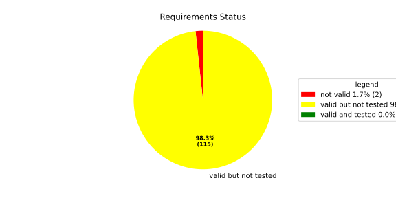
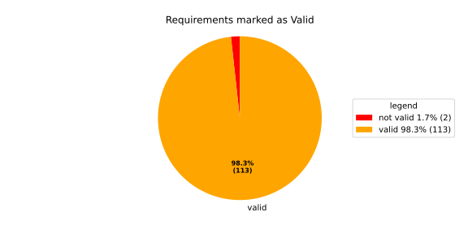
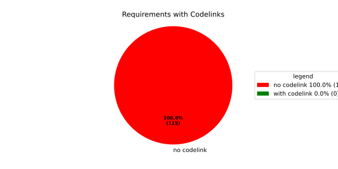

Verification Statistics#
Overview#

In Detail#


No needs passed the filters
Failed Tests
Hint: This table should be empty. Before a PR can be merged all tests have to be successful.
No needs passed the filters
Skipped / Disabled Tests
No needs passed the filters
All passed Tests#
No needs passed the filters
Details About Testcases#
No needs passed the filters
No needs passed the filters
Test Log Files#
tests-report/tests/integration/process_simple_rep_failure/process_simple_rep_failure/test.log
exec ${PAGER:-/usr/bin/less} "$0" || exit 1
Executing tests from //tests/integration/process_simple_rep_failure:process_simple_rep_failure
-----------------------------------------------------------------------------
============================= test session starts ==============================
platform linux -- Python 3.12.12, pytest-9.0.3, pluggy-1.5.0
rootdir: /home/runner/.bazel/sandbox/processwrapper-sandbox/1235/execroot/_main/bazel-out/k8-fastbuild/bin/tests/integration/process_simple_rep_failure/process_simple_rep_failure.runfiles/score_itf+
configfile: pytest.ini
collected 1 item
../score_itf+::test_recovery_action_simple_rep_failure
-------------------------------- live log setup --------------------------------
[2026-06-26 08:36:17.185] [INFO] [score.itf.plugins.docker] Executing custom image bootstrap command: tests/utils/environments/x86_64-linux/x86_64-linux.sh
[2026-06-26 08:36:17.410] [DEBUG] [docker.utils.config] Trying paths: ['/home/runner/.docker/config.json', '/home/runner/.dockercfg']
[2026-06-26 08:36:17.410] [DEBUG] [docker.utils.config] Found file at path: /home/runner/.docker/config.json
[2026-06-26 08:36:17.410] [DEBUG] [docker.auth] Found 'auths' section
[2026-06-26 08:36:17.410] [DEBUG] [docker.auth] Found entry (registry='https://index.docker.io/v1/', username='githubactions')
[2026-06-26 08:36:17.421] [DEBUG] [urllib3.connectionpool] http://localhost:None "GET /version HTTP/1.1" 200 823
[2026-06-26 08:36:17.456] [DEBUG] [urllib3.connectionpool] http://localhost:None "POST /v1.48/containers/create HTTP/1.1" 201 88
[2026-06-26 08:36:17.458] [DEBUG] [urllib3.connectionpool] http://localhost:None "GET /v1.48/containers/734541d46b9d137c5b793fd8c2164c418cb6464aa9a30890ec0ed6ba184eceb4/json HTTP/1.1" 200 None
[2026-06-26 08:36:17.609] [DEBUG] [urllib3.connectionpool] http://localhost:None "POST /v1.48/containers/734541d46b9d137c5b793fd8c2164c418cb6464aa9a30890ec0ed6ba184eceb4/start HTTP/1.1" 204 0
[2026-06-26 08:36:17.609] [DEBUG] [docker.utils.config] Trying paths: ['/home/runner/.docker/config.json', '/home/runner/.dockercfg']
[2026-06-26 08:36:17.609] [DEBUG] [docker.utils.config] Found file at path: /home/runner/.docker/config.json
[2026-06-26 08:36:17.610] [DEBUG] [docker.auth] Found 'auths' section
[2026-06-26 08:36:17.610] [DEBUG] [docker.auth] Found entry (registry='https://index.docker.io/v1/', username='githubactions')
[2026-06-26 08:36:17.623] [DEBUG] [urllib3.connectionpool] http://localhost:None "GET /version HTTP/1.1" 200 823
[2026-06-26 08:36:17.839] [INFO] [tests.utils.testing_utils.setup_test] Test case setup finished
-------------------------------- live log call ---------------------------------
[2026-06-26 08:36:17.986] [INFO] [launch_manager] 2026/06/26 08:36:17.2977967 5046462 000 ECU1 LM LM log debug verbose 1 Launch Manager Started !!!!
[2026-06-26 08:36:17.986] [INFO] [launch_manager] 2026/06/26 08:36:17.2977968 5046466 000 ECU1 LM LM log debug verbose 1 Loading LCM Configurations...
[2026-06-26 08:36:17.986] [INFO] [launch_manager] 2026/06/26 08:36:17.2977968 5046467 000 ECU1 LM LM log debug verbose 1
[2026-06-26 08:36:17.986] [INFO] [launch_manager] ECUCFG_ENV_VAR_ROOTFOLDER set successfully
[2026-06-26 08:36:17.987] [INFO] [launch_manager] 2026/06/26 08:36:17.2977968 5046468 000 ECU1 LM LM log debug verbose 5 FlatBufferParser::getModeGroupPgName: MainPG ( IdentifierHash: 18079021346025578134 )
[2026-06-26 08:36:17.987] [INFO] [launch_manager] 2026/06/26 08:36:17.2977968 5046469 000 ECU1 LM LM log debug verbose 5 FlatBufferParser::getModeGroupPgStateName: MainPG/Startup ( IdentifierHash: 10504605499600661529 )
[2026-06-26 08:36:17.987] [INFO] [launch_manager] 2026/06/26 08:36:17.2977968 5046470 000 ECU1 LM LM log debug verbose 5 FlatBufferParser::getModeGroupPgStateName: MainPG/run_target_app_does_report_krunning_in_time ( IdentifierHash: 11934981641920773349 )
[2026-06-26 08:36:17.987] [INFO] [launch_manager] 2026/06/26 08:36:17.2977968 5046471 000 ECU1 LM LM log debug verbose 5 FlatBufferParser::getModeGroupPgStateName: MainPG/run_target_app_does_not_report_krunning_in_time ( IdentifierHash: 7672161913816744053 )
[2026-06-26 08:36:17.987] [INFO] [launch_manager] 2026/06/26 08:36:17.2977968 5046471 000 ECU1 LM LM log debug verbose 5
[2026-06-26 08:36:17.987] [INFO] [launch_manager] FlatBufferParser::getModeGroupPgStateName: MainPG/Off ( IdentifierHash: 15281793077830264047 )
[2026-06-26 08:36:17.987] [INFO] [launch_manager] 2026/06/26 08:36:17.2977968 5046472 000 ECU1 LM LM log debug verbose 5 FlatBufferParser::getModeGroupPgStateName: MainPG/fallback_run_target ( IdentifierHash: 4059409696722237352 )
[2026-06-26 08:36:17.987] [INFO] [launch_manager] 2026/06/26 08:36:17.2977969 5046473 000 ECU1 LM LM log debug verbose 4
[2026-06-26 08:36:17.987] [INFO] [launch_manager] parseProcessConfigurations: Process index: 0 executable_path_: /tmp/tests/process_simple_rep_failure/control_client_mock
[2026-06-26 08:36:17.987] [INFO] [launch_manager] 2026/06/26 08:36:17.2977969 5046474 000 ECU1 LM LM log debug verbose 3 Process control_client_mock is Reporting execution state
[2026-06-26 08:36:17.987] [INFO] [launch_manager] 2026/06/26 08:36:17.2977969 5046475 000 ECU1 LM LM log debug verbose 1 Process is STATE_MANAGEMENT function Cluster Affiliation
[2026-06-26 08:36:17.987] [INFO] [launch_manager] 2026/06/26 08:36:17.2977969 5046475 000 ECU1 LM LM log debug verbose 3
[2026-06-26 08:36:17.988] [INFO] [launch_manager] Process control_client_mock is Self terminating
[2026-06-26 08:36:17.988] [INFO] [launch_manager] 2026/06/26 08:36:17.2977969 5046476 000 ECU1 LM LM log debug verbose 4
[2026-06-26 08:36:17.988] [INFO] [launch_manager] ParseProcessProcessGroup: id:::pg_name_: MainPG , pg_state_name_: MainPG/Startup
[2026-06-26 08:36:17.989] [INFO] [launch_manager] 2026/06/26 08:36:17.2977969 5046481 000 ECU1 LM LM log debug verbose 4 ParseProcessProcessGroup: id:::pg_name_: MainPG , pg_state_name_: MainPG/run_target_app_does_report_krunning_in_time
[2026-06-26 08:36:17.990] [INFO] [launch_manager] 2026/06/26 08:36:17.2977969 5046481 000 ECU1 LM LM log debug verbose 4 ParseProcessProcessGroup: id:::pg_name_: MainPG , pg_state_name_: MainPG/run_target_app_does_not_report_krunning_in_time
[2026-06-26 08:36:17.995] [INFO] [launch_manager] 2026/06/26 08:36:17.2977969 5046482 000 ECU1 LM LM log debug verbose 4 ParseProcessProcessGroup: id:::pg_name_: MainPG , pg_state_name_: MainPG/fallback_run_target
[2026-06-26 08:36:17.995] [INFO] [launch_manager] 2026/06/26 08:36:17.2977970 5046483 000 ECU1 LM LM log debug verbose 4 parseProcessConfigurations: Process index: 1 executable_path_: /tmp/tests/process_simple_rep_failure/process_simple_reporting
[2026-06-26 08:36:17.996] [INFO] [launch_manager] 2026/06/26 08:36:17.2977970 5046484 000 ECU1 LM LM log debug verbose 3 Process component_does_report_krunning_in_time is Reporting execution state
[2026-06-26 08:36:17.996] [INFO] [launch_manager] 2026/06/26 08:36:17.2977970 5046484 000 ECU1 LM LM log debug verbose 1 Process is NOT associated with any function Cluster Affiliation
[2026-06-26 08:36:17.996] [INFO] [launch_manager] 2026/06/26 08:36:17.2977970 5046485 000 ECU1 LM LM log debug verbose 3 Process component_does_report_krunning_in_time is Self terminating
[2026-06-26 08:36:17.996] [INFO] [launch_manager] 2026/06/26 08:36:17.2977970 5046486 000 ECU1 LM LM log debug verbose 4 ParseProcessProcessGroup: id:::pg_name_: MainPG , pg_state_name_: MainPG/run_target_app_does_report_krunning_in_time
[2026-06-26 08:36:17.996] [INFO] [launch_manager] 2026/06/26 08:36:17.2977970 5046487 000 ECU1 LM LM log debug verbose 4 parseProcessConfigurations: Process index: 2 executable_path_: /tmp/tests/process_simple_rep_failure/process_simple_reporting
[2026-06-26 08:36:17.997] [INFO] [launch_manager] 2026/06/26 08:36:17.2977970 5046487 000 ECU1 LM LM log debug verbose 3 Process component_does_not_report_krunning_in_time is Reporting execution state
[2026-06-26 08:36:17.997] [INFO] [launch_manager] 2026/06/26 08:36:17.2977970 5046488 000 ECU1 LM LM log debug verbose 1
[2026-06-26 08:36:17.997] [INFO] [launch_manager] Process is NOT associated with any function Cluster Affiliation
[2026-06-26 08:36:17.997] [INFO] [launch_manager] 2026/06/26 08:36:17.2977970 5046489 000 ECU1 LM LM log debug verbose 3
[2026-06-26 08:36:17.997] [INFO] [launch_manager] Process component_does_not_report_krunning_in_time is Self terminating
[2026-06-26 08:36:17.998] [INFO] [launch_manager] 2026/06/26 08:36:17.2977970 5046489 000 ECU1 LM LM log debug verbose 4 ParseProcessProcessGroup: id:::pg_name_: MainPG , pg_state_name_: MainPG/run_target_app_does_not_report_krunning_in_time
[2026-06-26 08:36:17.998] [INFO] [launch_manager] 2026/06/26 08:36:17.2977970 5046491 000 ECU1 LM LM log debug verbose 4
[2026-06-26 08:36:17.998] [INFO] [launch_manager] parseProcessConfigurations: Process index: 3 executable_path_: /tmp/tests/process_simple_rep_failure/verification_process
[2026-06-26 08:36:18.001] [INFO] [launch_manager] 2026/06/26 08:36:17.2977971 5046493 000 ECU1 LM LM log debug verbose 3
[2026-06-26 08:36:18.001] [INFO] [launch_manager] Process verification_component is NOT Reporting execution state
[2026-06-26 08:36:18.002] [INFO] [launch_manager] 2026/06/26 08:36:17.2977971 5046494 000 ECU1 LM LM log debug verbose 1 Process is NOT associated with any function Cluster Affiliation
[2026-06-26 08:36:18.005] [INFO] [launch_manager] 2026/06/26 08:36:17.2977971 5046495 000 ECU1 LM LM log debug verbose 3
[2026-06-26 08:36:18.005] [INFO] [launch_manager] Process verification_component is Self terminating
[2026-06-26 08:36:18.005] [INFO] [launch_manager] 2026/06/26 08:36:17.2977971 5046496 000 ECU1 LM LM log debug verbose 4
[2026-06-26 08:36:18.005] [INFO] [launch_manager] ParseProcessProcessGroup: id:::pg_name_: MainPG , pg_state_name_: MainPG/fallback_run_target
[2026-06-26 08:36:18.005] [INFO] [launch_manager] 2026/06/26 08:36:17.2977971 5046500 000 ECU1 LM LM log debug verbose 3 Loading SWCL Nr. 0 Succeeded
[2026-06-26 08:36:18.005] [INFO] [launch_manager] 2026/06/26 08:36:17.2977971 5046501 000 ECU1 LM LM log debug verbose 2 1 process group(s)
[2026-06-26 08:36:18.005] [INFO] [launch_manager] 2026/06/26 08:36:17.2977971 5046502 000 ECU1 LM LM log debug verbose 3 Creating graph with 4 nodes
[2026-06-26 08:36:18.005] [INFO] [launch_manager] 2026/06/26 08:36:17.2977971 5046502 000 ECU1 LM LM log debug verbose 1 Process groups initialized successfully
[2026-06-26 08:36:18.005] [INFO] [launch_manager] 2026/06/26 08:36:17.2977972 5046503 000 ECU1 LM LM log debug verbose 1 Process Group initialization done
[2026-06-26 08:36:18.006] [INFO] [launch_manager] 2026/06/26 08:36:17.2977972 5046504 000 ECU1 LM LM log debug verbose 3 Creating Safe Process Map with 4 entries
[2026-06-26 08:36:18.006] [INFO] [launch_manager] 2026/06/26 08:36:17.2977972 5046504 000 ECU1 LM LM log debug verbose 2 Creating job queue with capacity 1024
[2026-06-26 08:36:18.006] [INFO] [launch_manager] 2026/06/26 08:36:17.2977972 5046505 000 ECU1 LM LM log debug verbose 1 Creating worker threads...
[2026-06-26 08:36:18.006] [INFO] [launch_manager] 2026/06/26 08:36:17.2977973 5046518 000 ECU1 LM LM log debug verbose 7
[2026-06-26 08:36:18.006] [INFO] [launch_manager] Process group index 0 (with name MainPG ) has 4 processes
[2026-06-26 08:36:18.006] [INFO] [launch_manager] 2026/06/26 08:36:17.2977976 5046547 000 ECU1 LM LM log debug verbose 2
[2026-06-26 08:36:18.006] [INFO] [launch_manager] Creating process node with id: 0
[2026-06-26 08:36:18.006] [INFO] [launch_manager] 2026/06/26 08:36:17.2977976 5046551 000 ECU1 LM LM log debug verbose 5
[2026-06-26 08:36:18.006] [INFO] [launch_manager] Process 0 has 0 start dependencies
[2026-06-26 08:36:18.006] [INFO] [launch_manager] 2026/06/26 08:36:17.2977977 5046553 000 ECU1 LM LM log debug verbose 2
[2026-06-26 08:36:18.006] [INFO] [launch_manager] Creating process node with id: 1
[2026-06-26 08:36:18.007] [INFO] [launch_manager] 2026/06/26 08:36:17.2977977 5046555 000 ECU1 LM LM log debug verbose 5
[2026-06-26 08:36:18.007] [INFO] [launch_manager] Process 1 has 0 start dependencies
[2026-06-26 08:36:18.007] [INFO] [launch_manager] 2026/06/26 08:36:17.2977977 5046557 000 ECU1 LM LM log debug verbose 2
[2026-06-26 08:36:18.007] [INFO] [launch_manager] Creating process node with id: 2
[2026-06-26 08:36:18.009] [INFO] [launch_manager] 2026/06/26 08:36:17.2977979 5046580 000 ECU1 LM LM log debug verbose 5
[2026-06-26 08:36:18.009] [INFO] [launch_manager] Process 2 has 0 start dependencies
[2026-06-26 08:36:18.009] [INFO] [launch_manager] 2026/06/26 08:36:17.2977979 5046582 000 ECU1 LM LM log debug verbose 2 Creating process node with id: 3
[2026-06-26 08:36:18.009] [INFO] [launch_manager] 2026/06/26 08:36:17.2977980 5046582 000 ECU1 LM LM log debug verbose 5 Process 3 has 0 start dependencies
[2026-06-26 08:36:18.010] [INFO] [launch_manager] 2026/06/26 08:36:17.2977980 5046583 000 ECU1 LM LM log debug verbose 3 Created 4 process nodes
[2026-06-26 08:36:18.010] [INFO] [launch_manager] 2026/06/26 08:36:17.2977980 5046583 000 ECU1 LM LM log debug verbose 2 Creating successor lists for process group MainPG
[2026-06-26 08:36:18.010] [INFO] [launch_manager] 2026/06/26 08:36:17.2977980 5046583 000 ECU1 LM LM log debug verbose 1 Graphs initialized
[2026-06-26 08:36:18.011] [INFO] [launch_manager] 2026/06/26 08:36:17.2977980 5046585 000 ECU1 LM Fcty log info verbose 2 Factory for FlatCfg MachineConfig: Loading of HM Machine Configuration succeeded.
[2026-06-26 08:36:18.011] [INFO] [launch_manager] 2026/06/26 08:36:17.2977980 5046586 000 ECU1 LM Fcty log debug verbose 3 Factory for FlatCfg MachineConfig: Alive Supervision buffer size: 100
[2026-06-26 08:36:18.011] [INFO] [launch_manager] 2026/06/26 08:36:17.2977980 5046586 000 ECU1 LM Fcty log debug verbose 3 Factory for FlatCfg MachineConfig: Monitor buffer size: 512
[2026-06-26 08:36:18.011] [INFO] [launch_manager] 2026/06/26 08:36:17.2977980 5046586 000 ECU1 LM Fcty log debug verbose 4 Factory for FlatCfg MachineConfig: Periodicity: 50000000 ns
[2026-06-26 08:36:18.011] [INFO] [launch_manager] 2026/06/26 08:36:17.2977980 5046586 000 ECU1 LM Fcty log debug verbose 3 Factory for FlatCfg MachineConfig: Configured watchdogs: 0
[2026-06-26 08:36:18.011] [INFO] [launch_manager] 2026/06/26 08:36:17.2977980 5046586 000 ECU1 LM Fcty log warn verbose 2 Factory for FlatCfg MachineConfig: No watchdog configured
[2026-06-26 08:36:18.011] [INFO] [launch_manager] 2026/06/26 08:36:17.2977980 5046587 000 ECU1 LM Fcty log debug verbose 2 Software Cluster Handler starts constructing workers: MainCluster
[2026-06-26 08:36:18.011] [INFO] [launch_manager] 2026/06/26 08:36:17.2977980 5046587 000 ECU1 LM Fcty log debug verbose 3 Factory for FlatCfg AR24-11: Successfully created Process States: control_client_mock
[2026-06-26 08:36:18.011] [INFO] [launch_manager] 2026/06/26 08:36:17.2977980 5046588 000 ECU1 LM Fcty log debug verbose 3 Factory for FlatCfg AR24-11: Number of constructed Process States: 1
[2026-06-26 08:36:18.011] [INFO] [launch_manager] 2026/06/26 08:36:17.2977980 5046589 000 ECU1 LM Fcty log debug verbose 3 Factory for FlatCfg AR24-11: Successfully created Alive interface IPC with path: lifecycle_health_control_client_mock
[2026-06-26 08:36:18.011] [INFO] [launch_manager] 2026/06/26 08:36:17.2977980 5046589 000 ECU1 LM Fcty log debug verbose 3 Factory for FlatCfg AR24-11: Number of constructed Alive interface IPCs: 1
[2026-06-26 08:36:18.011] [INFO] [launch_manager] 2026/06/26 08:36:17.2977980 5046589 000 ECU1 LM Fcty log debug verbose 3 Factory for FlatCfg AR24-11: Successfully created Alive Interface: /lifecycle_health_control_client_mock
[2026-06-26 08:36:18.011] [INFO] [launch_manager] 2026/06/26 08:36:17.2977980 5046589 000 ECU1 LM Fcty log debug verbose 3 Factory for FlatCfg AR24-11: Number of constructed Alive interfaces: 1
[2026-06-26 08:36:18.011] [INFO] [launch_manager] 2026/06/26 08:36:17.2977980 5046590 000 ECU1 LM Fcty log debug verbose 3 Factory for FlatCfg AR24-11: Successfully created supervision checkpoint: control_client_mock_checkpoint
[2026-06-26 08:36:18.011] [INFO] [launch_manager] 2026/06/26 08:36:17.2977980 5046590 000 ECU1 LM Fcty log debug verbose 3 Factory for FlatCfg AR24-11: Number of constructed supervision checkpoints: 1
[2026-06-26 08:36:18.011] [INFO] [launch_manager] 2026/06/26 08:36:17.2977980 5046591 000 ECU1 LM Fcty log debug verbose 3 Factory for FlatCfg AR24-11: Successfully created alive supervision worker object: control_client_mock_alive_supervision
[2026-06-26 08:36:18.011] [INFO] [launch_manager] 2026/06/26 08:36:17.2977980 5046591 000 ECU1 LM Fcty log debug verbose 3 Factory for FlatCfg AR24-11: Number of constructed alive supervisions: 1
[2026-06-26 08:36:18.012] [INFO] [launch_manager] 2026/06/26 08:36:17.2977980 5046591 000 ECU1 LM Fcty log info verbose 2 Phm Daemon: The (configured) periodicity in [ns] is set to: 50000000
[2026-06-26 08:36:18.012] [INFO] [launch_manager] 2026/06/26 08:36:17.2977980 5046591 000 ECU1 LM Fcty log debug verbose 2 Phm Daemon: The accuracy of the monotonic system clock in [ns] is: 1
[2026-06-26 08:36:18.012] [INFO] [launch_manager] 2026/06/26 08:36:17.2977980 5046591 000 ECU1 LM Fcty log debug verbose 3 AliveMonitor: Initialization took 0 ms
[2026-06-26 08:36:18.017] [INFO] [launch_manager] 2026/06/26 08:36:17.2977982 5046610 000 ECU1 LM LM log info verbose 1 LCM started successfully
[2026-06-26 08:36:18.017] [INFO] [launch_manager] 2026/06/26 08:36:17.2977982 5046611 000 ECU1 LM LM log debug verbose 3 clock() at run(): 38.662000 ms
[2026-06-26 08:36:18.018] [INFO] [launch_manager] 2026/06/26 08:36:17.2977982 5046611 000 ECU1 LM LM log debug verbose 1 =============STARTING MAINPG STARTUP STATE============
[2026-06-26 08:36:18.018] [INFO] [launch_manager] 2026/06/26 08:36:17.2977982 5046612 000 ECU1 LM LM log debug verbose 9 Graph::setState changes from kSuccess to kInTransition for PG 0 ( MainPG )
[2026-06-26 08:36:18.018] [INFO] [launch_manager] 2026/06/26 08:36:17.2977982 5046612 000 ECU1 LM LM log debug verbose 2 Stop Dependencies: 0
[2026-06-26 08:36:18.018] [INFO] [launch_manager] 2026/06/26 08:36:17.2977982 5046612 000 ECU1 LM LM log debug verbose 2 Stop Dependencies: 0
[2026-06-26 08:36:18.018] [INFO] [launch_manager] 2026/06/26 08:36:17.2977982 5046612 000 ECU1 LM LM log debug verbose 2 Stop Dependencies: 0
[2026-06-26 08:36:18.018] [INFO] [launch_manager] 2026/06/26 08:36:17.2977983 5046612 000 ECU1 LM LM log debug verbose 2 Stop Dependencies: 0
[2026-06-26 08:36:18.018] [INFO] [launch_manager] 2026/06/26 08:36:17.2977983 5046613 000 ECU1 LM LM log debug verbose 2 Start Dependencies: 0
[2026-06-26 08:36:18.018] [INFO] [launch_manager] 2026/06/26 08:36:17.2977983 5046613 000 ECU1 LM LM log debug verbose 2 Start Dependencies: 0
[2026-06-26 08:36:18.018] [INFO] [launch_manager] 2026/06/26 08:36:17.2977983 5046613 000 ECU1 LM LM log debug verbose 2 Start Dependencies: 0
[2026-06-26 08:36:18.018] [INFO] [launch_manager] 2026/06/26 08:36:17.2977983 5046613 000 ECU1 LM LM log debug verbose 2 Start Dependencies: 0
[2026-06-26 08:36:18.018] [INFO] [launch_manager] 2026/06/26 08:36:17.2977984 5046630 000 ECU1 LM LM log debug verbose 6
[2026-06-26 08:36:18.018] [INFO] [launch_manager] Starting process 0 ( control_client_mock ) from executable /tmp/tests/process_simple_rep_failure/control_client_mock
[2026-06-26 08:36:18.018] [INFO] [launch_manager] 2026/06/26 08:36:17.2977985 5046639 000 ECU1 LM LM log debug verbose 3 Initialize the control client for control_client_mock process
[2026-06-26 08:36:18.018] [INFO] [launch_manager] 2026/06/26 08:36:17.2977985 5046639 000 ECU1 LM LM log debug verbose 1 ControlClientChannel initialized
[2026-06-26 08:36:18.018] [INFO] [launch_manager] 2026/06/26 08:36:17.2977986 5046644 000 ECU1 LM LM log debug verbose 4 startProcess pid 69 received for process: control_client_mock
[2026-06-26 08:36:18.018] [INFO] [launch_manager] 2026/06/26 08:36:17.2977986 5046644 000 ECU1 LM LM log debug verbose 1 ControlClientChannel obtained from sync.
[2026-06-26 08:36:18.019] [INFO] [launch_manager] [==========] Running 1 test from 1 test suite.
[2026-06-26 08:36:18.019] [INFO] [launch_manager] [----------] Global test environment set-up.
[2026-06-26 08:36:18.019] [INFO] [launch_manager] [----------] 1 test from RecoveryActionSimpleRepFailure
[2026-06-26 08:36:18.019] [INFO] [launch_manager] [ RUN ] RecoveryActionSimpleRepFailure.ControlClientMock
[2026-06-26 08:36:18.019] [INFO] [launch_manager] [ STEP ] Report running from ControlClientMock
[2026-06-26 08:36:18.019] [INFO] [launch_manager] [ END STEP ] Report running from ControlClientMock
[2026-06-26 08:36:18.019] [INFO] [launch_manager] [ STEP ] Activate RunTarget run_target_app_does_report_krunning_in_time
[2026-06-26 08:36:18.019] [INFO] [launch_manager] 2026/06/26 08:36:17.2977993 5046719 000 ECU1 LM LM log debug verbose 1 Request sent. Waiting for acknowledgment...
[2026-06-26 08:36:18.019] [INFO] [launch_manager] 2026/06/26 08:36:17.2977993 5046730 000 ECU1 LM LM log debug verbose 8
[2026-06-26 08:36:18.019] [INFO] [launch_manager] Got kRunning for pid 69 ( control_client_mock ) process 0 of group MainPG
[2026-06-26 08:36:18.019] [INFO] [launch_manager] 2026/06/26 08:36:17.2977994 5046732 000 ECU1 LM LM log debug verbose 7
[2026-06-26 08:36:18.019] [INFO] [launch_manager] startProcess for MainPG process 0 ( control_client_mock ) done
[2026-06-26 08:36:18.021] [INFO] [launch_manager] 2026/06/26 08:36:17.2977995 5046734 000 ECU1 LM LM log debug verbose 1
[2026-06-26 08:36:18.022] [INFO] [launch_manager] Control Client handler nudged
[2026-06-26 08:36:18.022] [INFO] [launch_manager] 2026/06/26 08:36:17.2977995 5046740 000 ECU1 LM LM log debug verbose 3
[2026-06-26 08:36:18.022] [INFO] [launch_manager] clock() at successful initial state transition: 40.030000 ms
[2026-06-26 08:36:18.022] [INFO] [launch_manager] 2026/06/26 08:36:17.2977996 5046746 000 ECU1 LM LM log debug verbose 8
[2026-06-26 08:36:18.022] [INFO] [launch_manager] ProcessGroupManager::ControlClientHandler: got request kSetStateRequest ( 16 ) re state MainPG/run_target_app_does_report_krunning_in_time of PG MainPG
[2026-06-26 08:36:18.022] [INFO] [launch_manager] 2026/06/26 08:36:17.2977996 5046752 000 ECU1 LM LM log debug verbose 9
[2026-06-26 08:36:18.022] [INFO] [launch_manager] Graph::setState changes from kInTransition to kSuccess for PG 0 ( MainPG )
[2026-06-26 08:36:18.022] [INFO] [launch_manager] 2026/06/26 08:36:17.2977997 5046758 000 ECU1 LM LM log info verbose 7
[2026-06-26 08:36:18.022] [INFO] [launch_manager] Completed the request for PG MainPG to State MainPG/Startup in 14 ms
[2026-06-26 08:36:18.022] [INFO] [launch_manager] 2026/06/26 08:36:17.2977998 5046763 000 ECU1 LM LM log debug verbose 1
[2026-06-26 08:36:18.023] [INFO] [launch_manager] Control Client handler nudged
[2026-06-26 08:36:18.023] [INFO] [launch_manager] 2026/06/26 08:36:17.2977998 5046769 000 ECU1 LM LM log debug verbose 6
[2026-06-26 08:36:18.023] [INFO] [launch_manager] Pending state for process group MainPG changed from to MainPG/run_target_app_does_report_krunning_in_time
[2026-06-26 08:36:18.023] [INFO] [launch_manager] 2026/06/26 08:36:18.2978002 5046805 000 ECU1 LM LM log debug verbose 1
[2026-06-26 08:36:18.023] [INFO] [launch_manager] 2026/06/26 08:36:18.2978001 5046799 000 ECU1 LM LM log debug verbose 1 Request acknowledged.
[2026-06-26 08:36:18.023] [INFO] [launch_manager] Request acknowledged.
[2026-06-26 08:36:18.023] [INFO] [launch_manager] 2026/06/26 08:36:18.2978002 5046809 000 ECU1 LM LM log debug verbose 6
[2026-06-26 08:36:18.023] [INFO] [launch_manager] Pending state for process group MainPG changed from MainPG/run_target_app_does_report_krunning_in_time to
[2026-06-26 08:36:18.023] [INFO] [launch_manager] 2026/06/26 08:36:18.2978003 5046821 000 ECU1 LM LM log debug verbose 4
[2026-06-26 08:36:18.023] [INFO] [launch_manager] Start transition to MainPG/run_target_app_does_report_krunning_in_time for PG MainPG
[2026-06-26 08:36:18.023] [INFO] [launch_manager] 2026/06/26 08:36:18.2978003 5046822 000 ECU1 LM LM log debug verbose 9
[2026-06-26 08:36:18.024] [INFO] [launch_manager] Graph::setState changes from kSuccess to kInTransition for PG 0 ( MainPG )
[2026-06-26 08:36:18.024] [INFO] [launch_manager] 2026/06/26 08:36:18.2978004 5046823 000 ECU1 LM LM log debug verbose 2
[2026-06-26 08:36:18.024] [INFO] [launch_manager] Stop Dependencies: 0
[2026-06-26 08:36:18.024] [INFO] [launch_manager] 2026/06/26 08:36:18.2978004 5046824 000 ECU1 LM LM log debug verbose 2
[2026-06-26 08:36:18.025] [INFO] [launch_manager] Stop Dependencies: 0
[2026-06-26 08:36:18.025] [INFO] [launch_manager] 2026/06/26 08:36:18.2978004 5046824 000 ECU1 LM LM log debug verbose 2
[2026-06-26 08:36:18.025] [INFO] [launch_manager] Stop Dependencies: 0
[2026-06-26 08:36:18.025] [INFO] [launch_manager] 2026/06/26 08:36:18.2978004 5046825 000 ECU1 LM LM log debug verbose 2
[2026-06-26 08:36:18.025] [INFO] [launch_manager] Stop Dependencies: 0
[2026-06-26 08:36:18.025] [INFO] [launch_manager] 2026/06/26 08:36:18.2978004 5046826 000 ECU1 LM LM log debug verbose 2 Start Dependencies: 0
[2026-06-26 08:36:18.025] [INFO] [launch_manager] 2026/06/26 08:36:18.2978004 5046827 000 ECU1 LM LM log debug verbose 2
[2026-06-26 08:36:18.025] [INFO] [launch_manager] Start Dependencies: 0
[2026-06-26 08:36:18.025] [INFO] [launch_manager] 2026/06/26 08:36:18.2978004 5046828 000 ECU1 LM LM log debug verbose 2
[2026-06-26 08:36:18.025] [INFO] [launch_manager] Start Dependencies: 0
[2026-06-26 08:36:18.025] [INFO] [launch_manager] 2026/06/26 08:36:18.2978004 5046829 000 ECU1 LM LM log debug verbose 2
[2026-06-26 08:36:18.025] [INFO] [launch_manager] Start Dependencies: 0
[2026-06-26 08:36:18.026] [INFO] [launch_manager] 2026/06/26 08:36:18.2978004 5046831 000 ECU1 LM LM log debug verbose 6 Starting process 1 ( component_does_report_krunning_in_time ) from executable /tmp/tests/process_simple_rep_failure/process_simple_reporting
[2026-06-26 08:36:18.026] [INFO] [launch_manager] 2026/06/26 08:36:18.2978005 5046841 000 ECU1 LM LM log debug verbose 4 startProcess pid 71 received for process: component_does_report_krunning_in_time
[2026-06-26 08:36:18.026] [INFO] [launch_manager] [==========] Running 1 test from 1 test suite.
[2026-06-26 08:36:18.026] [INFO] [launch_manager] [----------] Global test environment set-up.
[2026-06-26 08:36:18.026] [INFO] [launch_manager] [----------] 1 test from ProcessSimpleRepFailure
[2026-06-26 08:36:18.026] [INFO] [launch_manager] [ RUN ] ProcessSimpleRepFailure.ProcessSimpleReporting
[2026-06-26 08:36:18.026] [INFO] [launch_manager] [ STEP ] Check args
[2026-06-26 08:36:18.026] [INFO] [launch_manager] [ END STEP ] Check args
[2026-06-26 08:36:18.026] [INFO] [launch_manager] [ STEP ] Report running from ProcessSimpleReporting
[2026-06-26 08:36:18.034] [INFO] [launch_manager] 2026/06/26 08:36:18.2978031 5047093 000 ECU1 LM Sprv log debug verbose 6
[2026-06-26 08:36:18.035] [INFO] [launch_manager] Process with Id control_client_mock changed state PG MainPG/Startup PS 1
[2026-06-26 08:36:18.035] [INFO] [launch_manager] 2026/06/26 08:36:18.2978031 5047096 000 ECU1 LM Sprv log debug verbose 6
[2026-06-26 08:36:18.035] [INFO] [launch_manager] Process with Id control_client_mock changed state PG MainPG/Startup PS 2
[2026-06-26 08:36:18.035] [INFO] [launch_manager] 2026/06/26 08:36:18.2978031 5047098 000 ECU1 LM Sprv log debug verbose 6
[2026-06-26 08:36:18.035] [INFO] [launch_manager] Process with Id component_does_report_krunning_in_time changed state PG MainPG/run_target_app_does_report_krunning_in_time PS 1
[2026-06-26 08:36:18.035] [INFO] [launch_manager] 2026/06/26 08:36:18.2978031 5047099 000 ECU1 LM Sprv log info verbose 3
[2026-06-26 08:36:18.035] [INFO] [launch_manager] Alive Supervision ( control_client_mock_alive_supervision ) switched to OK.
[2026-06-26 08:36:18.063] [DEBUG] [tests.utils.testing_utils.run_until_file_deployed] Waiting for /tmp/tests/test_end
[2026-06-26 08:36:18.510] [INFO] [launch_manager] [ END STEP ] Report running from ProcessSimpleReporting
[2026-06-26 08:36:18.511] [INFO] [launch_manager] [ OK ] ProcessSimpleRepFailure.ProcessSimpleReporting (502 ms)
[2026-06-26 08:36:18.511] [INFO] [launch_manager] [----------] 1 test from ProcessSimpleRepFailure (502 ms total)
[2026-06-26 08:36:18.511] [INFO] [launch_manager] [----------] Global test environment tear-down
[2026-06-26 08:36:18.511] [INFO] [launch_manager] [==========] 1 test from 1 test suite ran. (502 ms total)
[2026-06-26 08:36:18.511] [INFO] [launch_manager] [ PASSED ] 1 test.
[2026-06-26 08:36:18.512] [INFO] [launch_manager] 2026/06/26 08:36:18.2978510 5051893 000 ECU1 LM LM log debug verbose 12
[2026-06-26 08:36:18.512] [INFO] [launch_manager] Child process 1 of MainPG pid 71 ( component_does_report_krunning_in_time ) for node True terminated with status 0
[2026-06-26 08:36:18.513] [INFO] [launch_manager] 2026/06/26 08:36:18.2978511 5051896 000 ECU1 LM LM log debug verbose 8
[2026-06-26 08:36:18.513] [INFO] [launch_manager] Got kRunning for pid 71 ( component_does_report_krunning_in_time ) process 1 of group MainPG
[2026-06-26 08:36:18.514] [INFO] [launch_manager] 2026/06/26 08:36:18.2978511 5051898 000 ECU1 LM LM log debug verbose 7
[2026-06-26 08:36:18.514] [INFO] [launch_manager] startProcess for MainPG process 1 ( component_does_report_krunning_in_time ) done
[2026-06-26 08:36:18.514] [INFO] [launch_manager] 2026/06/26 08:36:18.2978511 5051900 000 ECU1 LM LM log debug verbose 9
[2026-06-26 08:36:18.514] [INFO] [launch_manager] Graph::setState changes from kInTransition to kSuccess for PG 0 ( MainPG )
[2026-06-26 08:36:18.514] [INFO] [launch_manager] 2026/06/26 08:36:18.2978512 5051902 000 ECU1 LM LM log info verbose 7
[2026-06-26 08:36:18.514] [INFO] [launch_manager] Completed the request for PG MainPG to State MainPG/run_target_app_does_report_krunning_in_time in 510 ms
[2026-06-26 08:36:18.514] [INFO] [launch_manager] 2026/06/26 08:36:18.2978512 5051904 000 ECU1 LM LM log debug verbose 1
[2026-06-26 08:36:18.514] [INFO] [launch_manager] Control Client handler nudged
[2026-06-26 08:36:18.514] [INFO] [launch_manager] 2026/06/26 08:36:18.2978512 5051908 000 ECU1 LM LM log debug verbose 8 ProcessGroupManager::ControlClientHandler: Sending kSetStateSuccess ( 20 ) re state MainPG/run_target_app_does_report_krunning_in_time of PG MainPG
[2026-06-26 08:36:18.514] [INFO] [launch_manager] 2026/06/26 08:36:18.2978512 5051908 000 ECU1 LM LM log debug verbose 1 Response sent.
[2026-06-26 08:36:18.531] [INFO] [launch_manager] 2026/06/26 08:36:18.2978531 5052093 000 ECU1 LM Sprv log debug verbose 6
[2026-06-26 08:36:18.531] [INFO] [launch_manager] Process with Id component_does_report_krunning_in_time changed state PG MainPG/run_target_app_does_report_krunning_in_time PS 4
[2026-06-26 08:36:18.590] [INFO] [launch_manager] 2026/06/26 08:36:18.2978589 5052677 000 ECU1 LM LM log debug verbose 1 Response retrieved.
[2026-06-26 08:36:18.591] [INFO] [launch_manager] [ END STEP ] Activate RunTarget run_target_app_does_report_krunning_in_time
[2026-06-26 08:36:18.629] [DEBUG] [tests.utils.testing_utils.run_until_file_deployed] Waiting for /tmp/tests/test_end
[2026-06-26 08:36:19.232] [DEBUG] [tests.utils.testing_utils.run_until_file_deployed] Waiting for /tmp/tests/test_end
[2026-06-26 08:36:19.590] [INFO] [launch_manager] [ STEP ] Verify fallback run target has not been activated
[2026-06-26 08:36:19.590] [INFO] [launch_manager] [ END STEP ] Verify fallback run target has not been activated
[2026-06-26 08:36:19.590] [INFO] [launch_manager] [ STEP ] Activate RunTarget run_target_app_does_not_report_krunning_in_time
[2026-06-26 08:36:19.590] [INFO] [launch_manager] 2026/06/26 08:36:19.2979589 5062682 000 ECU1 LM LM log debug verbose 1 Request sent. Waiting for acknowledgment...
[2026-06-26 08:36:19.592] [INFO] [launch_manager] 2026/06/26 08:36:19.2979592 5062703 000 ECU1 LM LM log debug verbose 8 ProcessGroupManager::ControlClientHandler: got request kSetStateRequest ( 16 ) re state MainPG/run_target_app_does_not_report_krunning_in_time of PG MainPG
[2026-06-26 08:36:19.592] [INFO] [launch_manager] 2026/06/26 08:36:19.2979592 5062703 000 ECU1 LM LM log debug verbose 6 Pending state for process group MainPG changed from to MainPG/run_target_app_does_not_report_krunning_in_time
[2026-06-26 08:36:19.592] [INFO] [launch_manager] 2026/06/26 08:36:19.2979592 5062704 000 ECU1 LM LM log debug verbose 1 Request acknowledged.
[2026-06-26 08:36:19.593] [INFO] [launch_manager] 2026/06/26 08:36:19.2979592 5062704 000 ECU1 LM LM log debug verbose 6 Pending state for process group MainPG changed from MainPG/run_target_app_does_not_report_krunning_in_time to
[2026-06-26 08:36:19.593] [INFO] [launch_manager] 2026/06/26 08:36:19.2979592 5062704 000 ECU1 LM LM log debug verbose 4 Start transition to MainPG/run_target_app_does_not_report_krunning_in_time for PG MainPG
[2026-06-26 08:36:19.593] [INFO] [launch_manager] 2026/06/26 08:36:19.2979592 5062704 000 ECU1 LM LM log debug verbose 1 Request acknowledged.
[2026-06-26 08:36:19.593] [INFO] [launch_manager] 2026/06/26 08:36:19.2979592 5062705 000 ECU1 LM LM log debug verbose 9 Graph::setState changes from kSuccess to kInTransition for PG 0 ( MainPG )
[2026-06-26 08:36:19.593] [INFO] [launch_manager] 2026/06/26 08:36:19.2979592 5062705 000 ECU1 LM LM log debug verbose 2 Stop Dependencies: 0
[2026-06-26 08:36:19.593] [INFO] [launch_manager] 2026/06/26 08:36:19.2979592 5062705 000 ECU1 LM LM log debug verbose 2 Stop Dependencies: 0
[2026-06-26 08:36:19.593] [INFO] [launch_manager] 2026/06/26 08:36:19.2979592 5062706 000 ECU1 LM LM log debug verbose 2 Stop Dependencies: 0
[2026-06-26 08:36:19.593] [INFO] [launch_manager] 2026/06/26 08:36:19.2979592 5062706 000 ECU1 LM LM log debug verbose 2
[2026-06-26 08:36:19.594] [INFO] [launch_manager] Stop Dependencies: 0
[2026-06-26 08:36:19.594] [INFO] [launch_manager] 2026/06/26 08:36:19.2979592 5062706 000 ECU1 LM LM log debug verbose 2 Start Dependencies: 0
[2026-06-26 08:36:19.594] [INFO] [launch_manager] 2026/06/26 08:36:19.2979592 5062706 000 ECU1 LM LM log debug verbose 2 Start Dependencies: 0
[2026-06-26 08:36:19.594] [INFO] [launch_manager] 2026/06/26 08:36:19.2979592 5062707 000 ECU1 LM LM log debug verbose 2 Start Dependencies: 0
[2026-06-26 08:36:19.594] [INFO] [launch_manager] 2026/06/26 08:36:19.2979592 5062707 000 ECU1 LM LM log debug verbose 2 Start Dependencies: 0
[2026-06-26 08:36:19.594] [INFO] [launch_manager] 2026/06/26 08:36:19.2979592 5062708 000 ECU1 LM LM log debug verbose 6 Starting process 2 ( component_does_not_report_krunning_in_time ) from executable /tmp/tests/process_simple_rep_failure/process_simple_reporting
[2026-06-26 08:36:19.594] [INFO] [launch_manager] 2026/06/26 08:36:19.2979593 5062715 000 ECU1 LM LM log debug verbose 4 startProcess pid 92 received for process: component_does_not_report_krunning_in_time
[2026-06-26 08:36:19.596] [INFO] [launch_manager] [==========] Running 1 test from 1 test suite.
[2026-06-26 08:36:19.596] [INFO] [launch_manager] [----------] Global test environment set-up.
[2026-06-26 08:36:19.597] [INFO] [launch_manager] [----------] 1 test from ProcessSimpleRepFailure
[2026-06-26 08:36:19.597] [INFO] [launch_manager] [ RUN ] ProcessSimpleRepFailure.ProcessSimpleReporting
[2026-06-26 08:36:19.597] [INFO] [launch_manager] [ STEP ] Check args
[2026-06-26 08:36:19.597] [INFO] [launch_manager] [ END STEP ] Check args
[2026-06-26 08:36:19.597] [INFO] [launch_manager] [ STEP ] Report running from ProcessSimpleReporting
[2026-06-26 08:36:19.632] [INFO] [launch_manager] 2026/06/26 08:36:19.2979631 5063093 000 ECU1 LM Sprv log debug verbose 6 Process with Id component_does_not_report_krunning_in_time changed state PG MainPG/run_target_app_does_not_report_krunning_in_time PS 1
[2026-06-26 08:36:19.796] [DEBUG] [tests.utils.testing_utils.run_until_file_deployed] Waiting for /tmp/tests/test_end
[2026-06-26 08:36:20.363] [DEBUG] [tests.utils.testing_utils.run_until_file_deployed] Waiting for /tmp/tests/test_end
[2026-06-26 08:36:20.650] [INFO] [launch_manager] 2026/06/26 08:36:20.2980650 5073285 000 ECU1 LM LM log error verbose 1 Semaphore timedWait or post failed: Unable to wait or post on semaphores within the specified timeout.
[2026-06-26 08:36:20.650] [INFO] [launch_manager] 2026/06/26 08:36:20.2980650 5073285 000 ECU1 LM LM log warn verbose 5 Got kRunning timeout for process 2 ( component_does_not_report_krunning_in_time )
[2026-06-26 08:36:20.651] [INFO] [launch_manager] 2026/06/26 08:36:20.2980650 5073286 000 ECU1 LM LM log debug verbose 5 terminating process 2 ( component_does_not_report_krunning_in_time )
[2026-06-26 08:36:20.651] [INFO] [launch_manager] 2026/06/26 08:36:20.2980650 5073286 000 ECU1 LM LM log debug verbose 9 Requesting termination of process 2 of MainPG pid 92 ( component_does_not_report_krunning_in_time )
[2026-06-26 08:36:20.651] [INFO] [launch_manager] 2026/06/26 08:36:20.2980650 5073286 000 ECU1 LM LM log debug verbose 2 Request termination received for 92
[2026-06-26 08:36:20.681] [INFO] [launch_manager] 2026/06/26 08:36:20.2980681 5073593 000 ECU1 LM Sprv log debug verbose 6 Process with Id component_does_not_report_krunning_in_time changed state PG MainPG/run_target_app_does_not_report_krunning_in_time PS 3
[2026-06-26 08:36:20.936] [DEBUG] [tests.utils.testing_utils.run_until_file_deployed] Waiting for /tmp/tests/test_end
[2026-06-26 08:36:21.505] [DEBUG] [tests.utils.testing_utils.run_until_file_deployed] Waiting for /tmp/tests/test_end
[2026-06-26 08:36:21.700] [INFO] [launch_manager] 2026/06/26 08:36:21.2981699 5083774 000 ECU1 LM LM log warn verbose 5 Process 2 ( component_does_not_report_krunning_in_time ) did not respond to SIGTERM, sending SIGKILL
[2026-06-26 08:36:21.701] [INFO] [launch_manager] 2026/06/26 08:36:21.2981699 5083774 000 ECU1 LM LM log debug verbose 2 Forced termination received for pid 92
[2026-06-26 08:36:21.701] [INFO] [launch_manager] 2026/06/26 08:36:21.2981699 5083779 000 ECU1 LM LM log debug verbose 12 Child process 2 of MainPG pid 92 ( component_does_not_report_krunning_in_time ) for node True terminated with status 9
[2026-06-26 08:36:21.701] [INFO] [launch_manager] 2026/06/26 08:36:21.2981699 5083779 000 ECU1 LM LM log warn verbose 7 unexpected termination of process 2 pid 92 ( component_does_not_report_krunning_in_time )
[2026-06-26 08:36:21.702] [INFO] [launch_manager] 2026/06/26 08:36:21.2981699 5083779 000 ECU1 LM LM log debug verbose 9 Graph::setState changes from kInTransition to kAborting for PG 0 ( MainPG )
[2026-06-26 08:36:21.702] [INFO] [launch_manager] 2026/06/26 08:36:21.2981701 5083796 000 ECU1 LM LM log debug verbose 7 terminateProcess for MainPG process 2 ( component_does_not_report_krunning_in_time ) done
[2026-06-26 08:36:21.717] [INFO] [launch_manager] 2026/06/26 08:36:21.2981701 5083796 000 ECU1 LM LM log debug verbose 7 startProcess for MainPG process 2 ( component_does_not_report_krunning_in_time ) done
[2026-06-26 08:36:21.717] [INFO] [launch_manager] 2026/06/26 08:36:21.2981701 5083797 000 ECU1 LM LM log debug verbose 9 Graph::setState changes from kAborting to kUndefinedState for PG 0 ( MainPG )
[2026-06-26 08:36:21.717] [INFO] [launch_manager] 2026/06/26 08:36:21.2981701 5083797 000 ECU1 LM LM log debug verbose 1 Control Client handler nudged
[2026-06-26 08:36:21.717] [INFO] [launch_manager] 2026/06/26 08:36:21.2981701 5083798 000 ECU1 LM LM log debug verbose 8 ProcessGroupManager::ControlClientHandler: Sending kFailedUnexpectedTerminationOnEnter ( 23 ) re state MainPG/run_target_app_does_not_report_krunning_in_time of PG MainPG
[2026-06-26 08:36:21.718] [INFO] [launch_manager] 2026/06/26 08:36:21.2981701 5083799 000 ECU1 LM LM log debug verbose 1 Response sent.
[2026-06-26 08:36:21.718] [INFO] [launch_manager] 2026/06/26 08:36:21.2981701 5083799 000 ECU1 LM LM log warn verbose 3 Problem discovered in PG MainPG Activating Recovery state.
[2026-06-26 08:36:21.718] [INFO] [launch_manager] 2026/06/26 08:36:21.2981701 5083799 000 ECU1 LM LM log debug verbose 9 Graph::setState changes from kUndefinedState to kInTransition for PG 0 ( MainPG )
[2026-06-26 08:36:21.718] [INFO] [launch_manager] 2026/06/26 08:36:21.2981701 5083799 000 ECU1 LM LM log debug verbose 2 Stop Dependencies: 0
[2026-06-26 08:36:21.718] [INFO] [launch_manager] 2026/06/26 08:36:21.2981701 5083800 000 ECU1 LM LM log debug verbose 2 Stop Dependencies: 0
[2026-06-26 08:36:21.718] [INFO] [launch_manager] 2026/06/26 08:36:21.2981701 5083800 000 ECU1 LM LM log debug verbose 2 Stop Dependencies: 0
[2026-06-26 08:36:21.718] [INFO] [launch_manager] 2026/06/26 08:36:21.2981701 5083800 000 ECU1 LM LM log debug verbose 2 Stop Dependencies: 0
[2026-06-26 08:36:21.718] [INFO] [launch_manager] 2026/06/26 08:36:21.2981701 5083800 000 ECU1 LM LM log debug verbose 2 Start Dependencies: 0
[2026-06-26 08:36:21.718] [INFO] [launch_manager] 2026/06/26 08:36:21.2981701 5083800 000 ECU1 LM LM log debug verbose 2 Start Dependencies: 0
[2026-06-26 08:36:21.718] [INFO] [launch_manager] 2026/06/26 08:36:21.2981701 5083801 000 ECU1 LM LM log debug verbose 2 Start Dependencies: 0
[2026-06-26 08:36:21.718] [INFO] [launch_manager] 2026/06/26 08:36:21.2981701 5083801 000 ECU1 LM LM log debug verbose 2 Start Dependencies: 0
[2026-06-26 08:36:21.718] [INFO] [launch_manager] 2026/06/26 08:36:21.2981701 5083802 000 ECU1 LM LM log debug verbose 6 Starting process 3 ( verification_component ) from executable /tmp/tests/process_simple_rep_failure/verification_process
[2026-06-26 08:36:21.718] [INFO] [launch_manager] 2026/06/26 08:36:21.2981702 5083808 000 ECU1 LM LM log debug verbose 4 startProcess pid 119 received for process: verification_component
[2026-06-26 08:36:21.718] [INFO] [launch_manager] 2026/06/26 08:36:21.2981702 5083808 000 ECU1 LM LM log debug verbose 8 Considered kRunning for Non Reporting Process pid 119 ( verification_component ) process 3 of group MainPG
[2026-06-26 08:36:21.718] [INFO] [launch_manager] 2026/06/26 08:36:21.2981702 5083809 000 ECU1 LM LM log debug verbose 7 startProcess for MainPG process 3 ( verification_component ) done
[2026-06-26 08:36:21.718] [INFO] [launch_manager] 2026/06/26 08:36:21.2981702 5083809 000 ECU1 LM LM log debug verbose 9 Graph::setState changes from kInTransition to kSuccess for PG 0 ( MainPG )
[2026-06-26 08:36:21.718] [INFO] [launch_manager] 2026/06/26 08:36:21.2981702 5083809 000 ECU1 LM LM log info verbose 7 Completed the request for PG MainPG to State MainPG/fallback_run_target in 0 ms
[2026-06-26 08:36:21.719] [INFO] [launch_manager] 2026/06/26 08:36:21.2981702 5083809 000 ECU1 LM LM log debug verbose 1 Control Client handler nudged
[2026-06-26 08:36:21.719] [INFO] [launch_manager] 2026/06/26 08:36:21.2981704 5083827 000 ECU1 LM LM log debug verbose 8 ProcessGroupManager::ControlClientHandler: Sending kSetStateSuccess ( 20 ) re state MainPG/fallback_run_target of PG MainPG
[2026-06-26 08:36:21.719] [INFO] [launch_manager] 2026/06/26 08:36:21.2981704 5083827 000 ECU1 LM LM log debug verbose 1 Failed to send response: response is not empty.
[2026-06-26 08:36:21.719] [INFO] [launch_manager] 2026/06/26 08:36:21.2981704 5083827 000 ECU1 LM LM log debug verbose 1 Control Client handler nudged
[2026-06-26 08:36:21.719] [INFO] [launch_manager] 2026/06/26 08:36:21.2981704 5083827 000 ECU1 LM LM log debug verbose 8 ProcessGroupManager::ControlClientHandler: Sending kSetStateSuccess ( 20 ) re state MainPG/fallback_run_target of PG MainPG
[2026-06-26 08:36:21.719] [INFO] [launch_manager] 2026/06/26 08:36:21.2981704 5083827 000 ECU1 LM LM log debug verbose 1 Failed to send response: response is not empty.
[2026-06-26 08:36:21.719] [INFO] [launch_manager] 2026/06/26 08:36:21.2981704 5083828 000 ECU1 LM LM log debug verbose 1 Control Client handler nudged
[2026-06-26 08:36:21.719] [INFO] [launch_manager] 2026/06/26 08:36:21.2981704 5083828 000 ECU1 LM LM log debug verbose 8 ProcessGroupManager::ControlClientHandler: Sending kSetStateSuccess ( 20 ) re state MainPG/fallback_run_target of PG MainPG
[2026-06-26 08:36:21.719] [INFO] [launch_manager] 2026/06/26 08:36:21.2981704 5083828 000 ECU1 LM LM log debug verbose 1 Failed to send response: response is not empty.
[2026-06-26 08:36:21.719] [INFO] [launch_manager] 2026/06/26 08:36:21.2981704 5083828 000 ECU1 LM LM log debug verbose 1 Control Client handler nudged
[2026-06-26 08:36:21.719] [INFO] [launch_manager] 2026/06/26 08:36:21.2981704 5083828 000 ECU1 LM LM log debug verbose 8 ProcessGroupManager::ControlClientHandler: Sending kSetStateSuccess ( 20 ) re state MainPG/fallback_run_target of PG MainPG
[2026-06-26 08:36:21.719] [INFO] [launch_manager] 2026/06/26 08:36:21.2981704 5083829 000 ECU1 LM LM log debug verbose 1 Failed to send response: response is not empty.
[2026-06-26 08:36:21.719] [INFO] [launch_manager] 2026/06/26 08:36:21.2981704 5083829 000 ECU1 LM LM log debug verbose 1 Control Client handler nudged
[2026-06-26 08:36:21.719] [INFO] [launch_manager] 2026/06/26 08:36:21.2981704 5083829 000 ECU1 LM LM log debug verbose 8 ProcessGroupManager::ControlClientHandler: Sending kSetStateSuccess ( 20 ) re state MainPG/fallback_run_target of PG MainPG
[2026-06-26 08:36:21.720] [INFO] [launch_manager] 2026/06/26 08:36:21.2981704 5083829 000 ECU1 LM LM log debug verbose 1 Failed to send response: response is not empty.
[2026-06-26 08:36:21.720] [INFO] [launch_manager] 2026/06/26 08:36:21.2981704 5083829 000 ECU1 LM LM log debug verbose 1 Control Client handler nudged
[2026-06-26 08:36:21.720] [INFO] [launch_manager] 2026/06/26 08:36:21.2981704 5083830 000 ECU1 LM LM log debug verbose 8
[2026-06-26 08:36:21.720] [INFO] [launch_manager] ProcessGroupManager::ControlClientHandler: Sending kSetStateSuccess ( 20 ) re state MainPG/fallback_run_target of PG MainPG
[2026-06-26 08:36:21.720] [INFO] [launch_manager] 2026/06/26 08:36:21.2981704 5083830 000 ECU1 LM LM log debug verbose 1 Failed to send response: response is not empty.
[2026-06-26 08:36:21.720] [INFO] [launch_manager] 2026/06/26 08:36:21.2981704 5083830 000 ECU1 LM LM log debug verbose 1 Control Client handler nudged
[2026-06-26 08:36:21.720] [INFO] [launch_manager] 2026/06/26 08:36:21.2981704 5083830 000 ECU1 LM LM log debug verbose 8 ProcessGroupManager::ControlClientHandler: Sending kSetStateSuccess ( 20 ) re state MainPG/fallback_run_target of PG MainPG
[2026-06-26 08:36:21.720] [INFO] [launch_manager] 2026/06/26 08:36:21.2981704 5083831 000 ECU1 LM LM log debug verbose 1 Failed to send response: response is not empty.
[2026-06-26 08:36:21.720] [INFO] [launch_manager] 2026/06/26 08:36:21.2981704 5083831 000 ECU1 LM LM log debug verbose 1 Control Client handler nudged
[2026-06-26 08:36:21.720] [INFO] [launch_manager] 2026/06/26 08:36:21.2981704 5083831 000 ECU1 LM LM log debug verbose 8 ProcessGroupManager::ControlClientHandler: Sending kSetStateSuccess ( 20 ) re state MainPG/fallback_run_target of PG MainPG
[2026-06-26 08:36:21.720] [INFO] [launch_manager] 2026/06/26 08:36:21.2981704 5083831 000 ECU1 LM LM log debug verbose 1 Failed to send response: response is not empty.
[2026-06-26 08:36:21.720] [INFO] [launch_manager] 2026/06/26 08:36:21.2981704 5083831 000 ECU1 LM LM log debug verbose 1 Control Client handler nudged
[2026-06-26 08:36:21.720] [INFO] [launch_manager] 2026/06/26 08:36:21.2981704 5083832 000 ECU1 LM LM log debug verbose 8 ProcessGroupManager::ControlClientHandler: Sending kSetStateSuccess ( 20 ) re state MainPG/fallback_run_target of PG MainPG
[2026-06-26 08:36:21.720] [INFO] [launch_manager] 2026/06/26 08:36:21.2981704 5083832 000 ECU1 LM LM log debug verbose 1 Failed to send response: response is not empty.
[2026-06-26 08:36:21.720] [INFO] [launch_manager] 2026/06/26 08:36:21.2981704 5083832 000 ECU1 LM LM log debug verbose 1 Control Client handler nudged
[2026-06-26 08:36:21.720] [INFO] [launch_manager] 2026/06/26 08:36:21.2981704 5083832 000 ECU1 LM LM log debug verbose 8 ProcessGroupManager::ControlClientHandler: Sending kSetStateSuccess ( 20 ) re state MainPG/fallback_run_target of PG MainPG
[2026-06-26 08:36:21.720] [INFO] [launch_manager] 2026/06/26 08:36:21.2981704 5083832 000 ECU1 LM LM log debug verbose 1 Failed to send response: response is not empty.
[2026-06-26 08:36:21.721] [INFO] [launch_manager] 2026/06/26 08:36:21.2981705 5083832 000 ECU1 LM LM log debug verbose 1 Control Client handler nudged
[2026-06-26 08:36:21.721] [INFO] [launch_manager] 2026/06/26 08:36:21.2981705 5083833 000 ECU1 LM LM log debug verbose 8
[2026-06-26 08:36:21.721] [INFO] [launch_manager] ProcessGroupManager::ControlClientHandler: Sending kSetStateSuccess ( 20 ) re state MainPG/fallback_run_target of PG MainPG
[2026-06-26 08:36:21.721] [INFO] [launch_manager] 2026/06/26 08:36:21.2981705 5083833 000 ECU1 LM LM log debug verbose 1 Failed to send response: response is not empty.
[2026-06-26 08:36:21.721] [INFO] [launch_manager] 2026/06/26 08:36:21.2981705 5083833 000 ECU1 LM LM log debug verbose 1 Control Client handler nudged
[2026-06-26 08:36:21.721] [INFO] [launch_manager] 2026/06/26 08:36:21.2981705 5083833 000 ECU1 LM LM log debug verbose 8 ProcessGroupManager::ControlClientHandler: Sending kSetStateSuccess ( 20 ) re state MainPG/fallback_run_target of PG MainPG
[2026-06-26 08:36:21.721] [INFO] [launch_manager] 2026/06/26 08:36:21.2981705 5083833 000 ECU1 LM LM log debug verbose 1 Failed to send response: response is not empty.
[2026-06-26 08:36:21.721] [INFO] [launch_manager] 2026/06/26 08:36:21.2981705 5083834 000 ECU1 LM LM log debug verbose 1 Control Client handler nudged
[2026-06-26 08:36:21.721] [INFO] [launch_manager] 2026/06/26 08:36:21.2981705 5083834 000 ECU1 LM LM log debug verbose 8
[2026-06-26 08:36:21.721] [INFO] [launch_manager] ProcessGroupManager::ControlClientHandler: Sending kSetStateSuccess ( 20 ) re state MainPG/fallback_run_target of PG MainPG
[2026-06-26 08:36:21.721] [INFO] [launch_manager] 2026/06/26 08:36:21.2981705 5083834 000 ECU1 LM LM log debug verbose 1 Failed to send response: response is not empty.
[2026-06-26 08:36:21.721] [INFO] [launch_manager] 2026/06/26 08:36:21.2981705 5083834 000 ECU1 LM LM log debug verbose 1 Control Client handler nudged
[2026-06-26 08:36:21.721] [INFO] [launch_manager] 2026/06/26 08:36:21.2981705 5083834 000 ECU1 LM LM log debug verbose 8 ProcessGroupManager::ControlClientHandler: Sending kSetStateSuccess ( 20 ) re state MainPG/fallback_run_target of PG MainPG
[2026-06-26 08:36:21.721] [INFO] [launch_manager] 2026/06/26 08:36:21.2981705 5083834 000 ECU1 LM LM log debug verbose 1 Failed to send response: response is not empty.
[2026-06-26 08:36:21.721] [INFO] [launch_manager] 2026/06/26 08:36:21.2981705 5083835 000 ECU1 LM LM log debug verbose 1 Control Client handler nudged
[2026-06-26 08:36:21.721] [INFO] [launch_manager] 2026/06/26 08:36:21.2981705 5083835 000 ECU1 LM LM log debug verbose 8 ProcessGroupManager::ControlClientHandler: Sending kSetStateSuccess ( 20 ) re state MainPG/fallback_run_target of PG MainPG
[2026-06-26 08:36:21.721] [INFO] [launch_manager] 2026/06/26 08:36:21.2981705 5083835 000 ECU1 LM LM log debug verbose 1 Failed to send response: response is not empty.
[2026-06-26 08:36:21.721] [INFO] [launch_manager] 2026/06/26 08:36:21.2981705 5083835 000 ECU1 LM LM log debug verbose 1 Control Client handler nudged
[2026-06-26 08:36:21.722] [INFO] [launch_manager] 2026/06/26 08:36:21.2981705 5083835 000 ECU1 LM LM log debug verbose 8 ProcessGroupManager::ControlClientHandler: Sending kSetStateSuccess ( 20 ) re state MainPG/fallback_run_target of PG MainPG
[2026-06-26 08:36:21.722] [INFO] [launch_manager] 2026/06/26 08:36:21.2981705 5083836 000 ECU1 LM LM log debug verbose 1 Failed to send response: response is not empty.
[2026-06-26 08:36:21.722] [INFO] [launch_manager] 2026/06/26 08:36:21.2981705 5083836 000 ECU1 LM LM log debug verbose 1 Control Client handler nudged
[2026-06-26 08:36:21.722] [INFO] [launch_manager] 2026/06/26 08:36:21.2981705 5083836 000 ECU1 LM LM log debug verbose 8 ProcessGroupManager::ControlClientHandler: Sending kSetStateSuccess ( 20 ) re state MainPG/fallback_run_target of PG MainPG
[2026-06-26 08:36:21.722] [INFO] [launch_manager] 2026/06/26 08:36:21.2981705 5083836 000 ECU1 LM LM log debug verbose 1 Failed to send response: response is not empty.
[2026-06-26 08:36:21.722] [INFO] [launch_manager] 2026/06/26 08:36:21.2981705 5083836 000 ECU1 LM LM log debug verbose 1 Control Client handler nudged
[2026-06-26 08:36:21.722] [INFO] [launch_manager] 2026/06/26 08:36:21.2981705 5083837 000 ECU1 LM LM log debug verbose 8 ProcessGroupManager::ControlClientHandler: Sending kSetStateSuccess ( 20 ) re state MainPG/fallback_run_target of PG MainPG
[2026-06-26 08:36:21.722] [INFO] [launch_manager] 2026/06/26 08:36:21.2981705 5083837 000 ECU1 LM LM log debug verbose 1 Failed to send response: response is not empty.
[2026-06-26 08:36:21.722] [INFO] [launch_manager] 2026/06/26 08:36:21.2981705 5083837 000 ECU1 LM LM log debug verbose 1 Control Client handler nudged
[2026-06-26 08:36:21.722] [INFO] [launch_manager] 2026/06/26 08:36:21.2981705 5083837 000 ECU1 LM LM log debug verbose 8 ProcessGroupManager::ControlClientHandler: Sending kSetStateSuccess ( 20 ) re state MainPG/fallback_run_target of PG MainPG
[2026-06-26 08:36:21.722] [INFO] [launch_manager] 2026/06/26 08:36:21.2981705 5083837 000 ECU1 LM LM log debug verbose 1 Failed to send response: response is not empty.
[2026-06-26 08:36:21.722] [INFO] [launch_manager] 2026/06/26 08:36:21.2981705 5083837 000 ECU1 LM LM log debug verbose 1 Control Client handler nudged
[2026-06-26 08:36:21.722] [INFO] [launch_manager] 2026/06/26 08:36:21.2981705 5083838 000 ECU1 LM LM log debug verbose 8 ProcessGroupManager::ControlClientHandler: Sending kSetStateSuccess ( 20 ) re state MainPG/fallback_run_target of PG MainPG
[2026-06-26 08:36:21.722] [INFO] [launch_manager] 2026/06/26 08:36:21.2981705 5083838 000 ECU1 LM LM log debug verbose 1 Failed to send response: response is not empty.
[2026-06-26 08:36:21.723] [INFO] [launch_manager] 2026/06/26 08:36:21.2981705 5083838 000 ECU1 LM LM log debug verbose 1 Control Client handler nudged
[2026-06-26 08:36:21.723] [INFO] [launch_manager] 2026/06/26 08:36:21.2981705 5083838 000 ECU1 LM LM log debug verbose 8 ProcessGroupManager::ControlClientHandler: Sending kSetStateSuccess ( 20 ) re state MainPG/fallback_run_target of PG MainPG
[2026-06-26 08:36:21.723] [INFO] [launch_manager] 2026/06/26 08:36:21.2981705 5083838 000 ECU1 LM LM log debug verbose 1 Failed to send response: response is not empty.
[2026-06-26 08:36:21.723] [INFO] [launch_manager] 2026/06/26 08:36:21.2981705 5083839 000 ECU1 LM LM log debug verbose 1 Control Client handler nudged
[2026-06-26 08:36:21.723] [INFO] [launch_manager] 2026/06/26 08:36:21.2981705 5083839 000 ECU1 LM LM log debug verbose 8 ProcessGroupManager::ControlClientHandler: Sending kSetStateSuccess ( 20 ) re state MainPG/fallback_run_target of PG MainPG
[2026-06-26 08:36:21.723] [INFO] [launch_manager] 2026/06/26 08:36:21.2981705 5083839 000 ECU1 LM LM log debug verbose 1 Failed to send response: response is not empty.
[2026-06-26 08:36:21.723] [INFO] [launch_manager] 2026/06/26 08:36:21.2981705 5083839 000 ECU1 LM LM log debug verbose 1 Control Client handler nudged
[2026-06-26 08:36:21.723] [INFO] [launch_manager] 2026/06/26 08:36:21.2981705 5083839 000 ECU1 LM LM log debug verbose 8 ProcessGroupManager::ControlClientHandler: Sending kSetStateSuccess ( 20 ) re state MainPG/fallback_run_target of PG MainPG
[2026-06-26 08:36:21.723] [INFO] [launch_manager] 2026/06/26 08:36:21.2981705 5083841 000 ECU1 LM LM log debug verbose 1 Failed to send response: response is not empty.
[2026-06-26 08:36:21.723] [INFO] [launch_manager] 2026/06/26 08:36:21.2981705 5083842 000 ECU1 LM LM log debug verbose 12 Child process 3 of MainPG pid 119 ( verification_component ) for node True terminated with status 0
[2026-06-26 08:36:21.724] [INFO] [launch_manager] 2026/06/26 08:36:21.2981705 5083842 000 ECU1 LM LM log debug verbose 1 Control Client handler nudged
[2026-06-26 08:36:21.724] [INFO] [launch_manager] 2026/06/26 08:36:21.2981706 5083843 000 ECU1 LM LM log debug verbose 8 ProcessGroupManager::ControlClientHandler: Sending kSetStateSuccess ( 20 ) re state MainPG/fallback_run_target of PG MainPG
[2026-06-26 08:36:21.724] [INFO] [launch_manager] 2026/06/26 08:36:21.2981706 5083843 000 ECU1 LM LM log debug verbose 1 Failed to send response: response is not empty.
[2026-06-26 08:36:21.724] [INFO] [launch_manager] 2026/06/26 08:36:21.2981706 5083843 000 ECU1 LM LM log debug verbose 1 Control Client handler nudged
[2026-06-26 08:36:21.724] [INFO] [launch_manager] 2026/06/26 08:36:21.2981706 5083843 000 ECU1 LM LM log debug verbose 8 ProcessGroupManager::ControlClientHandler: Sending kSetStateSuccess ( 20 ) re state MainPG/fallback_run_target of PG MainPG
[2026-06-26 08:36:21.724] [INFO] [launch_manager] 2026/06/26 08:36:21.2981706 5083843 000 ECU1 LM LM log debug verbose 1 Failed to send response: response is not empty.
[2026-06-26 08:36:21.724] [INFO] [launch_manager] 2026/06/26 08:36:21.2981706 5083843 000 ECU1 LM LM log debug verbose 1 Control Client handler nudged
[2026-06-26 08:36:21.724] [INFO] [launch_manager] 2026/06/26 08:36:21.2981706 5083844 000 ECU1 LM LM log debug verbose 8 ProcessGroupManager::ControlClientHandler: Sending kSetStateSuccess ( 20 ) re state MainPG/fallback_run_target of PG MainPG
[2026-06-26 08:36:21.724] [INFO] [launch_manager] 2026/06/26 08:36:21.2981706 5083844 000 ECU1 LM LM log debug verbose 1 Failed to send response: response is not empty.
[2026-06-26 08:36:21.724] [INFO] [launch_manager] 2026/06/26 08:36:21.2981706 5083844 000 ECU1 LM LM log debug verbose 1 Control Client handler nudged
[2026-06-26 08:36:21.724] [INFO] [launch_manager] 2026/06/26 08:36:21.2981706 5083844 000 ECU1 LM LM log debug verbose 8 ProcessGroupManager::ControlClientHandler: Sending kSetStateSuccess ( 20 ) re state MainPG/fallback_run_target of PG MainPG
[2026-06-26 08:36:21.725] [INFO] [launch_manager] 2026/06/26 08:36:21.2981706 5083845 000 ECU1 LM LM log debug verbose 1 Failed to send response: response is not empty.
[2026-06-26 08:36:21.725] [INFO] [launch_manager] 2026/06/26 08:36:21.2981706 5083845 000 ECU1 LM LM log debug verbose 1
[2026-06-26 08:36:21.725] [INFO] [launch_manager] Control Client handler nudged
[2026-06-26 08:36:21.725] [INFO] [launch_manager] 2026/06/26 08:36:21.2981706 5083845 000 ECU1 LM LM log debug verbose 8 ProcessGroupManager::ControlClientHandler: Sending kSetStateSuccess ( 20 ) re state MainPG/fallback_run_target of PG MainPG
[2026-06-26 08:36:21.725] [INFO] [launch_manager] 2026/06/26 08:36:21.2981706 5083845 000 ECU1 LM LM log debug verbose 1 Failed to send response: response is not empty.
[2026-06-26 08:36:21.725] [INFO] [launch_manager] 2026/06/26 08:36:21.2981706 5083845 000 ECU1 LM LM log debug verbose 1 Control Client handler nudged
[2026-06-26 08:36:21.725] [INFO] [launch_manager] 2026/06/26 08:36:21.2981706 5083845 000 ECU1 LM LM log debug verbose 8 ProcessGroupManager::ControlClientHandler: Sending kSetStateSuccess ( 20 ) re state MainPG/fallback_run_target of PG MainPG
[2026-06-26 08:36:21.725] [INFO] [launch_manager] 2026/06/26 08:36:21.2981706 5083846 000 ECU1 LM LM log debug verbose 1 Failed to send response: response is not empty.
[2026-06-26 08:36:21.726] [INFO] [launch_manager] 2026/06/26 08:36:21.2981706 5083846 000 ECU1 LM LM log debug verbose 1 Control Client handler nudged
[2026-06-26 08:36:21.726] [INFO] [launch_manager] 2026/06/26 08:36:21.2981706 5083846 000 ECU1 LM LM log debug verbose 8 ProcessGroupManager::ControlClientHandler: Sending kSetStateSuccess ( 20 ) re state MainPG/fallback_run_target of PG MainPG
[2026-06-26 08:36:21.726] [INFO] [launch_manager] 2026/06/26 08:36:21.2981706 5083846 000 ECU1 LM LM log debug verbose 1 Failed to send response: response is not empty.
[2026-06-26 08:36:21.726] [INFO] [launch_manager] 2026/06/26 08:36:21.2981706 5083846 000 ECU1 LM LM log debug verbose 1 Control Client handler nudged
[2026-06-26 08:36:21.727] [INFO] [launch_manager] 2026/06/26 08:36:21.2981706 5083847 000 ECU1 LM LM log debug verbose 8 ProcessGroupManager::ControlClientHandler: Sending kSetStateSuccess ( 20 ) re state MainPG/fallback_run_target of PG MainPG
[2026-06-26 08:36:21.727] [INFO] [launch_manager] 2026/06/26 08:36:21.2981706 5083847 000 ECU1 LM LM log debug verbose 1 Failed to send response: response is not empty.
[2026-06-26 08:36:21.727] [INFO] [launch_manager] 2026/06/26 08:36:21.2981706 5083847 000 ECU1 LM LM log debug verbose 1 Control Client handler nudged
[2026-06-26 08:36:21.727] [INFO] [launch_manager] 2026/06/26 08:36:21.2981706 5083847 000 ECU1 LM LM log debug verbose 8 ProcessGroupManager::ControlClientHandler: Sending kSetStateSuccess ( 20 ) re state MainPG/fallback_run_target of PG MainPG
[2026-06-26 08:36:21.727] [INFO] [launch_manager] 2026/06/26 08:36:21.2981706 5083847 000 ECU1 LM LM log debug verbose 1
[2026-06-26 08:36:21.728] [INFO] [launch_manager] Failed to send response: response is not empty.
[2026-06-26 08:36:21.728] [INFO] [launch_manager] 2026/06/26 08:36:21.2981706 5083848 000 ECU1 LM LM log debug verbose 1 Control Client handler nudged
[2026-06-26 08:36:21.728] [INFO] [launch_manager] 2026/06/26 08:36:21.2981706 5083848 000 ECU1 LM LM log debug verbose 8
[2026-06-26 08:36:21.728] [INFO] [launch_manager] ProcessGroupManager::ControlClientHandler: Sending kSetStateSuccess ( 20 ) re state MainPG/fallback_run_target of PG MainPG
[2026-06-26 08:36:21.728] [INFO] [launch_manager] 2026/06/26 08:36:21.2981706 5083848 000 ECU1 LM LM log debug verbose 1 Failed to send response: response is not empty.
[2026-06-26 08:36:21.729] [INFO] [launch_manager] 2026/06/26 08:36:21.2981706 5083848 000 ECU1 LM LM log debug verbose 1 Control Client handler nudged
[2026-06-26 08:36:21.729] [INFO] [launch_manager] 2026/06/26 08:36:21.2981706 5083848 000 ECU1 LM LM log debug verbose 8 ProcessGroupManager::ControlClientHandler: Sending kSetStateSuccess ( 20 ) re state MainPG/fallback_run_target of PG MainPG
[2026-06-26 08:36:21.729] [INFO] [launch_manager] 2026/06/26 08:36:21.2981706 5083849 000 ECU1 LM LM log debug verbose 1 Failed to send response: response is not empty.
[2026-06-26 08:36:21.729] [INFO] [launch_manager] 2026/06/26 08:36:21.2981706 5083849 000 ECU1 LM LM log debug verbose 1 Control Client handler nudged
[2026-06-26 08:36:21.729] [INFO] [launch_manager] 2026/06/26 08:36:21.2981706 5083849 000 ECU1 LM LM log debug verbose 8 ProcessGroupManager::ControlClientHandler: Sending kSetStateSuccess ( 20 ) re state MainPG/fallback_run_target of PG MainPG
[2026-06-26 08:36:21.730] [INFO] [launch_manager] 2026/06/26 08:36:21.2981706 5083849 000 ECU1 LM LM log debug verbose 1 Failed to send response: response is not empty.
[2026-06-26 08:36:21.730] [INFO] [launch_manager] 2026/06/26 08:36:21.2981706 5083849 000 ECU1 LM LM log debug verbose 1 Control Client handler nudged
[2026-06-26 08:36:21.730] [INFO] [launch_manager] 2026/06/26 08:36:21.2981706 5083850 000 ECU1 LM LM log debug verbose 8 ProcessGroupManager::ControlClientHandler: Sending kSetStateSuccess ( 20 ) re state MainPG/fallback_run_target of PG MainPG
[2026-06-26 08:36:21.731] [INFO] [launch_manager] 2026/06/26 08:36:21.2981706 5083850 000 ECU1 LM LM log debug verbose 1 Failed to send response: response is not empty.
[2026-06-26 08:36:21.731] [INFO] [launch_manager] 2026/06/26 08:36:21.2981706 5083850 000 ECU1 LM LM log debug verbose 1 Control Client handler nudged
[2026-06-26 08:36:21.731] [INFO] [launch_manager] 2026/06/26 08:36:21.2981706 5083851 000 ECU1 LM LM log debug verbose 8 ProcessGroupManager::ControlClientHandler: Sending kSetStateSuccess ( 20 ) re state MainPG/fallback_run_target of PG MainPG
[2026-06-26 08:36:21.731] [INFO] [launch_manager] 2026/06/26 08:36:21.2981706 5083851 000 ECU1 LM LM log debug verbose 1 Failed to send response: response is not empty.
[2026-06-26 08:36:21.731] [INFO] [launch_manager] 2026/06/26 08:36:21.2981706 5083851 000 ECU1 LM LM log debug verbose 1 Control Client handler nudged
[2026-06-26 08:36:21.731] [INFO] [launch_manager] 2026/06/26 08:36:21.2981706 5083851 000 ECU1 LM LM log debug verbose 8 ProcessGroupManager::ControlClientHandler: Sending kSetStateSuccess ( 20 ) re state MainPG/fallback_run_target of PG MainPG
[2026-06-26 08:36:21.731] [INFO] [launch_manager] 2026/06/26 08:36:21.2981706 5083851 000 ECU1 LM LM log debug verbose 1
[2026-06-26 08:36:21.731] [INFO] [launch_manager] Failed to send response: response is not empty.
[2026-06-26 08:36:21.731] [INFO] [launch_manager] 2026/06/26 08:36:21.2981706 5083852 000 ECU1 LM LM log debug verbose 1 Control Client handler nudged
[2026-06-26 08:36:21.731] [INFO] [launch_manager] 2026/06/26 08:36:21.2981706 5083852 000 ECU1 LM LM log debug verbose 8 ProcessGroupManager::ControlClientHandler: Sending kSetStateSuccess ( 20 ) re state MainPG/fallback_run_target of PG MainPG
[2026-06-26 08:36:21.731] [INFO] [launch_manager] 2026/06/26 08:36:21.2981706 5083852 000 ECU1 LM LM log debug verbose 1 Failed to send response: response is not empty.
[2026-06-26 08:36:21.731] [INFO] [launch_manager] 2026/06/26 08:36:21.2981706 5083852 000 ECU1 LM LM log debug verbose 1 Control Client handler nudged
[2026-06-26 08:36:21.731] [INFO] [launch_manager] 2026/06/26 08:36:21.2981707 5083852 000 ECU1 LM LM log debug verbose 8 ProcessGroupManager::ControlClientHandler: Sending kSetStateSuccess ( 20 ) re state MainPG/fallback_run_target of PG MainPG
[2026-06-26 08:36:21.731] [INFO] [launch_manager] 2026/06/26 08:36:21.2981707 5083853 000 ECU1 LM LM log debug verbose 1 Failed to send response: response is not empty.
[2026-06-26 08:36:21.732] [INFO] [launch_manager] 2026/06/26 08:36:21.2981707 5083853 000 ECU1 LM LM log debug verbose 1 Control Client handler nudged
[2026-06-26 08:36:21.732] [INFO] [launch_manager] 2026/06/26 08:36:21.2981707 5083853 000 ECU1 LM LM log debug verbose 8 ProcessGroupManager::ControlClientHandler: Sending kSetStateSuccess ( 20 ) re state MainPG/fallback_run_target of PG MainPG
[2026-06-26 08:36:21.732] [INFO] [launch_manager] 2026/06/26 08:36:21.2981707 5083853 000 ECU1 LM LM log debug verbose 1 Failed to send response: response is not empty.
[2026-06-26 08:36:21.732] [INFO] [launch_manager] 2026/06/26 08:36:21.2981707 5083853 000 ECU1 LM LM log debug verbose 1 Control Client handler nudged
[2026-06-26 08:36:21.732] [INFO] [launch_manager] 2026/06/26 08:36:21.2981707 5083854 000 ECU1 LM LM log debug verbose 8 ProcessGroupManager::ControlClientHandler: Sending kSetStateSuccess ( 20 ) re state MainPG/fallback_run_target of PG MainPG
[2026-06-26 08:36:21.732] [INFO] [launch_manager] 2026/06/26 08:36:21.2981707 5083854 000 ECU1 LM LM log debug verbose 1 Failed to send response: response is not empty.
[2026-06-26 08:36:21.732] [INFO] [launch_manager] 2026/06/26 08:36:21.2981707 5083854 000 ECU1 LM LM log debug verbose 1 Control Client handler nudged
[2026-06-26 08:36:21.732] [INFO] [launch_manager] 2026/06/26 08:36:21.2981707 5083854 000 ECU1 LM LM log debug verbose 8 ProcessGroupManager::ControlClientHandler: Sending kSetStateSuccess ( 20 ) re state MainPG/fallback_run_target of PG MainPG
[2026-06-26 08:36:21.732] [INFO] [launch_manager] 2026/06/26 08:36:21.2981707 5083855 000 ECU1 LM LM log debug verbose 1 Failed to send response: response is not empty.
[2026-06-26 08:36:21.732] [INFO] [launch_manager] 2026/06/26 08:36:21.2981707 5083855 000 ECU1 LM LM log debug verbose 1 Control Client handler nudged
[2026-06-26 08:36:21.732] [INFO] [launch_manager] 2026/06/26 08:36:21.2981707 5083855 000 ECU1 LM LM log debug verbose 8 ProcessGroupManager::ControlClientHandler: Sending kSetStateSuccess ( 20 ) re state MainPG/fallback_run_target of PG MainPG
[2026-06-26 08:36:21.732] [INFO] [launch_manager] 2026/06/26 08:36:21.2981707 5083855 000 ECU1 LM LM log debug verbose 1 Failed to send response: response is not empty.
[2026-06-26 08:36:21.732] [INFO] [launch_manager] 2026/06/26 08:36:21.2981707 5083855 000 ECU1 LM LM log debug verbose 1
[2026-06-26 08:36:21.734] [INFO] [launch_manager] Control Client handler nudged
[2026-06-26 08:36:21.734] [INFO] [launch_manager] 2026/06/26 08:36:21.2981707 5083856 000 ECU1 LM LM log debug verbose 8 ProcessGroupManager::ControlClientHandler: Sending kSetStateSuccess ( 20 ) re state MainPG/fallback_run_target of PG MainPG
[2026-06-26 08:36:21.735] [INFO] [launch_manager] 2026/06/26 08:36:21.2981707 5083856 000 ECU1 LM LM log debug verbose 1 Failed to send response: response is not empty.
[2026-06-26 08:36:21.735] [INFO] [launch_manager] 2026/06/26 08:36:21.2981707 5083856 000 ECU1 LM LM log debug verbose 1 Control Client handler nudged
[2026-06-26 08:36:21.735] [INFO] [launch_manager] 2026/06/26 08:36:21.2981707 5083856 000 ECU1 LM LM log debug verbose 8 ProcessGroupManager::ControlClientHandler: Sending kSetStateSuccess ( 20 ) re state MainPG/fallback_run_target of PG MainPG
[2026-06-26 08:36:21.735] [INFO] [launch_manager] 2026/06/26 08:36:21.2981707 5083857 000 ECU1 LM LM log debug verbose 1 Failed to send response: response is not empty.
[2026-06-26 08:36:21.736] [INFO] [launch_manager] 2026/06/26 08:36:21.2981707 5083857 000 ECU1 LM LM log debug verbose 1 Control Client handler nudged
[2026-06-26 08:36:21.736] [INFO] [launch_manager] 2026/06/26 08:36:21.2981707 5083857 000 ECU1 LM LM log debug verbose 8 ProcessGroupManager::ControlClientHandler: Sending kSetStateSuccess ( 20 ) re state MainPG/fallback_run_target of PG MainPG
[2026-06-26 08:36:21.736] [INFO] [launch_manager] 2026/06/26 08:36:21.2981707 5083857 000 ECU1 LM LM log debug verbose 1 Failed to send response: response is not empty.
[2026-06-26 08:36:21.736] [INFO] [launch_manager] 2026/06/26 08:36:21.2981707 5083857 000 ECU1 LM LM log debug verbose 1 Control Client handler nudged
[2026-06-26 08:36:21.737] [INFO] [launch_manager] 2026/06/26 08:36:21.2981707 5083858 000 ECU1 LM LM log debug verbose 8 ProcessGroupManager::ControlClientHandler: Sending kSetStateSuccess ( 20 ) re state MainPG/fallback_run_target of PG MainPG
[2026-06-26 08:36:21.737] [INFO] [launch_manager] 2026/06/26 08:36:21.2981707 5083858 000 ECU1 LM LM log debug verbose 1 Failed to send response: response is not empty.
[2026-06-26 08:36:21.737] [INFO] [launch_manager] 2026/06/26 08:36:21.2981707 5083858 000 ECU1 LM LM log debug verbose 1 Control Client handler nudged
[2026-06-26 08:36:21.738] [INFO] [launch_manager] 2026/06/26 08:36:21.2981707 5083858 000 ECU1 LM LM log debug verbose 8 ProcessGroupManager::ControlClientHandler: Sending kSetStateSuccess ( 20 ) re state MainPG/fallback_run_target of PG MainPG
[2026-06-26 08:36:21.738] [INFO] [launch_manager] 2026/06/26 08:36:21.2981707 5083858 000 ECU1 LM LM log debug verbose 1 Failed to send response: response is not empty.
[2026-06-26 08:36:21.739] [INFO] [launch_manager] 2026/06/26 08:36:21.2981707 5083859 000 ECU1 LM LM log debug verbose 1 Control Client handler nudged
[2026-06-26 08:36:21.739] [INFO] [launch_manager] 2026/06/26 08:36:21.2981707 5083859 000 ECU1 LM LM log debug verbose 8 ProcessGroupManager::ControlClientHandler: Sending kSetStateSuccess ( 20 ) re state MainPG/fallback_run_target of PG MainPG
[2026-06-26 08:36:21.739] [INFO] [launch_manager] 2026/06/26 08:36:21.2981707 5083859 000 ECU1 LM LM log debug verbose 1 Failed to send response: response is not empty.
[2026-06-26 08:36:21.739] [INFO] [launch_manager] 2026/06/26 08:36:21.2981707 5083859 000 ECU1 LM LM log debug verbose 1 Control Client handler nudged
[2026-06-26 08:36:21.739] [INFO] [launch_manager] 2026/06/26 08:36:21.2981707 5083859 000 ECU1 LM LM log debug verbose 8 ProcessGroupManager::ControlClientHandler: Sending kSetStateSuccess ( 20 ) re state MainPG/fallback_run_target of PG MainPG
[2026-06-26 08:36:21.739] [INFO] [launch_manager] 2026/06/26 08:36:21.2981707 5083860 000 ECU1 LM LM log debug verbose 1 Failed to send response: response is not empty.
[2026-06-26 08:36:21.739] [INFO] [launch_manager] 2026/06/26 08:36:21.2981707 5083860 000 ECU1 LM LM log debug verbose 1 Control Client handler nudged
[2026-06-26 08:36:21.740] [INFO] [launch_manager] 2026/06/26 08:36:21.2981707 5083860 000 ECU1 LM LM log debug verbose 8 ProcessGroupManager::ControlClientHandler: Sending kSetStateSuccess ( 20 ) re state MainPG/fallback_run_target of PG MainPG
[2026-06-26 08:36:21.741] [INFO] [launch_manager] 2026/06/26 08:36:21.2981707 5083861 000 ECU1 LM LM log debug verbose 1 Failed to send response: response is not empty.
[2026-06-26 08:36:21.741] [INFO] [launch_manager] 2026/06/26 08:36:21.2981707 5083861 000 ECU1 LM LM log debug verbose 1 Control Client handler nudged
[2026-06-26 08:36:21.742] [INFO] [launch_manager] 2026/06/26 08:36:21.2981707 5083861 000 ECU1 LM LM log debug verbose 8 ProcessGroupManager::ControlClientHandler: Sending kSetStateSuccess ( 20 ) re state MainPG/fallback_run_target of PG MainPG
[2026-06-26 08:36:21.742] [INFO] [launch_manager] 2026/06/26 08:36:21.2981707 5083861 000 ECU1 LM LM log debug verbose 1
[2026-06-26 08:36:21.742] [INFO] [launch_manager] Failed to send response: response is not empty.
[2026-06-26 08:36:21.742] [INFO] [launch_manager] 2026/06/26 08:36:21.2981707 5083861 000 ECU1 LM LM log debug verbose 1 Control Client handler nudged
[2026-06-26 08:36:21.742] [INFO] [launch_manager] 2026/06/26 08:36:21.2981707 5083861 000 ECU1 LM LM log debug verbose 8 ProcessGroupManager::ControlClientHandler: Sending kSetStateSuccess ( 20 ) re state MainPG/fallback_run_target of PG MainPG
[2026-06-26 08:36:21.742] [INFO] [launch_manager] 2026/06/26 08:36:21.2981707 5083862 000 ECU1 LM LM log debug verbose 1 Failed to send response: response is not empty.
[2026-06-26 08:36:21.742] [INFO] [launch_manager] 2026/06/26 08:36:21.2981707 5083862 000 ECU1 LM LM log debug verbose 1 Control Client handler nudged
[2026-06-26 08:36:21.742] [INFO] [launch_manager] 2026/06/26 08:36:21.2981707 5083862 000 ECU1 LM LM log debug verbose 8 ProcessGroupManager::ControlClientHandler: Sending kSetStateSuccess ( 20 ) re state MainPG/fallback_run_target of PG MainPG
[2026-06-26 08:36:21.742] [INFO] [launch_manager] 2026/06/26 08:36:21.2981707 5083862 000 ECU1 LM LM log debug verbose 1 Failed to send response: response is not empty.
[2026-06-26 08:36:21.743] [INFO] [launch_manager] 2026/06/26 08:36:21.2981707 5083862 000 ECU1 LM LM log debug verbose 1
[2026-06-26 08:36:21.743] [INFO] [launch_manager] Control Client handler nudged
[2026-06-26 08:36:21.743] [INFO] [launch_manager] 2026/06/26 08:36:21.2981708 5083863 000 ECU1 LM LM log debug verbose 8 ProcessGroupManager::ControlClientHandler: Sending kSetStateSuccess ( 20 ) re state MainPG/fallback_run_target of PG MainPG
[2026-06-26 08:36:21.743] [INFO] [launch_manager] 2026/06/26 08:36:21.2981708 5083863 000 ECU1 LM LM log debug verbose 1 Failed to send response: response is not empty.
[2026-06-26 08:36:21.743] [INFO] [launch_manager] 2026/06/26 08:36:21.2981708 5083863 000 ECU1 LM LM log debug verbose 1 Control Client handler nudged
[2026-06-26 08:36:21.743] [INFO] [launch_manager] 2026/06/26 08:36:21.2981708 5083863 000 ECU1 LM LM log debug verbose 8 ProcessGroupManager::ControlClientHandler: Sending kSetStateSuccess ( 20 ) re state MainPG/fallback_run_target of PG MainPG
[2026-06-26 08:36:21.744] [INFO] [launch_manager] 2026/06/26 08:36:21.2981708 5083863 000 ECU1 LM LM log debug verbose 1 Failed to send response: response is not empty.
[2026-06-26 08:36:21.744] [INFO] [launch_manager] 2026/06/26 08:36:21.2981708 5083864 000 ECU1 LM LM log debug verbose 1 Control Client handler nudged
[2026-06-26 08:36:21.744] [INFO] [launch_manager] 2026/06/26 08:36:21.2981708 5083864 000 ECU1 LM LM log debug verbose 8 ProcessGroupManager::ControlClientHandler: Sending kSetStateSuccess ( 20 ) re state MainPG/fallback_run_target of PG MainPG
[2026-06-26 08:36:21.745] [INFO] [launch_manager] 2026/06/26 08:36:21.2981708 5083864 000 ECU1 LM LM log debug verbose 1 Failed to send response: response is not empty.
[2026-06-26 08:36:21.745] [INFO] [launch_manager] 2026/06/26 08:36:21.2981708 5083864 000 ECU1 LM LM log debug verbose 1 Control Client handler nudged
[2026-06-26 08:36:21.746] [INFO] [launch_manager] 2026/06/26 08:36:21.2981708 5083864 000 ECU1 LM LM log debug verbose 8 ProcessGroupManager::ControlClientHandler: Sending kSetStateSuccess ( 20 ) re state MainPG/fallback_run_target of PG MainPG
[2026-06-26 08:36:21.747] [INFO] [launch_manager] 2026/06/26 08:36:21.2981708 5083865 000 ECU1 LM LM log debug verbose 1 Failed to send response: response is not empty.
[2026-06-26 08:36:21.747] [INFO] [launch_manager] 2026/06/26 08:36:21.2981708 5083865 000 ECU1 LM LM log debug verbose 1 Control Client handler nudged
[2026-06-26 08:36:21.747] [INFO] [launch_manager] 2026/06/26 08:36:21.2981708 5083865 000 ECU1 LM LM log debug verbose 8 ProcessGroupManager::ControlClientHandler: Sending kSetStateSuccess ( 20 ) re state MainPG/fallback_run_target of PG MainPG
[2026-06-26 08:36:21.747] [INFO] [launch_manager] 2026/06/26 08:36:21.2981708 5083865 000 ECU1 LM LM log debug verbose 1 Failed to send response: response is not empty.
[2026-06-26 08:36:21.747] [INFO] [launch_manager] 2026/06/26 08:36:21.2981708 5083865 000 ECU1 LM LM log debug verbose 1 Control Client handler nudged
[2026-06-26 08:36:21.747] [INFO] [launch_manager] 2026/06/26 08:36:21.2981708 5083866 000 ECU1 LM LM log debug verbose 8 ProcessGroupManager::ControlClientHandler: Sending kSetStateSuccess ( 20 ) re state MainPG/fallback_run_target of PG MainPG
[2026-06-26 08:36:21.747] [INFO] [launch_manager] 2026/06/26 08:36:21.2981708 5083866 000 ECU1 LM LM log debug verbose 1
[2026-06-26 08:36:21.747] [INFO] [launch_manager] Failed to send response: response is not empty.
[2026-06-26 08:36:21.748] [INFO] [launch_manager] 2026/06/26 08:36:21.2981708 5083866 000 ECU1 LM LM log debug verbose 1 Control Client handler nudged
[2026-06-26 08:36:21.748] [INFO] [launch_manager] 2026/06/26 08:36:21.2981708 5083866 000 ECU1 LM LM log debug verbose 8 ProcessGroupManager::ControlClientHandler: Sending kSetStateSuccess ( 20 ) re state MainPG/fallback_run_target of PG MainPG
[2026-06-26 08:36:21.748] [INFO] [launch_manager] 2026/06/26 08:36:21.2981708 5083866 000 ECU1 LM LM log debug verbose 1 Failed to send response: response is not empty.
[2026-06-26 08:36:21.748] [INFO] [launch_manager] 2026/06/26 08:36:21.2981708 5083866 000 ECU1 LM LM log debug verbose 1 Control Client handler nudged
[2026-06-26 08:36:21.748] [INFO] [launch_manager] 2026/06/26 08:36:21.2981708 5083867 000 ECU1 LM LM log debug verbose 8 ProcessGroupManager::ControlClientHandler: Sending kSetStateSuccess ( 20 ) re state MainPG/fallback_run_target of PG MainPG
[2026-06-26 08:36:21.749] [INFO] [launch_manager] 2026/06/26 08:36:21.2981708 5083867 000 ECU1 LM LM log debug verbose 1 Failed to send response: response is not empty.
[2026-06-26 08:36:21.749] [INFO] [launch_manager] 2026/06/26 08:36:21.2981708 5083867 000 ECU1 LM LM log debug verbose 1 Control Client handler nudged
[2026-06-26 08:36:21.749] [INFO] [launch_manager] 2026/06/26 08:36:21.2981708 5083867 000 ECU1 LM LM log debug verbose 8
[2026-06-26 08:36:21.749] [INFO] [launch_manager] ProcessGroupManager::ControlClientHandler: Sending kSetStateSuccess ( 20 ) re state MainPG/fallback_run_target of PG MainPG
[2026-06-26 08:36:21.750] [INFO] [launch_manager] 2026/06/26 08:36:21.2981708 5083867 000 ECU1 LM LM log debug verbose 1 Failed to send response: response is not empty.
[2026-06-26 08:36:21.750] [INFO] [launch_manager] 2026/06/26 08:36:21.2981708 5083868 000 ECU1 LM LM log debug verbose 1 Control Client handler nudged
[2026-06-26 08:36:21.750] [INFO] [launch_manager] 2026/06/26 08:36:21.2981708 5083868 000 ECU1 LM LM log debug verbose 8 ProcessGroupManager::ControlClientHandler: Sending kSetStateSuccess ( 20 ) re state MainPG/fallback_run_target of PG MainPG
[2026-06-26 08:36:21.750] [INFO] [launch_manager] 2026/06/26 08:36:21.2981708 5083868 000 ECU1 LM LM log debug verbose 1 Failed to send response: response is not empty.
[2026-06-26 08:36:21.750] [INFO] [launch_manager] 2026/06/26 08:36:21.2981708 5083868 000 ECU1 LM LM log debug verbose 1 Control Client handler nudged
[2026-06-26 08:36:21.750] [INFO] [launch_manager] 2026/06/26 08:36:21.2981708 5083868 000 ECU1 LM LM log debug verbose 8 ProcessGroupManager::ControlClientHandler: Sending kSetStateSuccess ( 20 ) re state MainPG/fallback_run_target of PG MainPG
[2026-06-26 08:36:21.751] [INFO] [launch_manager] 2026/06/26 08:36:21.2981708 5083869 000 ECU1 LM LM log debug verbose 1 Failed to send response: response is not empty.
[2026-06-26 08:36:21.751] [INFO] [launch_manager] 2026/06/26 08:36:21.2981708 5083869 000 ECU1 LM LM log debug verbose 1 Control Client handler nudged
[2026-06-26 08:36:21.751] [INFO] [launch_manager] 2026/06/26 08:36:21.2981708 5083869 000 ECU1 LM LM log debug verbose 8
[2026-06-26 08:36:21.752] [INFO] [launch_manager] ProcessGroupManager::ControlClientHandler: Sending kSetStateSuccess ( 20 ) re state MainPG/fallback_run_target of PG MainPG
[2026-06-26 08:36:21.752] [INFO] [launch_manager] 2026/06/26 08:36:21.2981708 5083869 000 ECU1 LM LM log debug verbose 1 Failed to send response: response is not empty.
[2026-06-26 08:36:21.753] [INFO] [launch_manager] 2026/06/26 08:36:21.2981708 5083869 000 ECU1 LM LM log debug verbose 1 Control Client handler nudged
[2026-06-26 08:36:21.753] [INFO] [launch_manager] 2026/06/26 08:36:21.2981708 5083870 000 ECU1 LM LM log debug verbose 8 ProcessGroupManager::ControlClientHandler: Sending kSetStateSuccess ( 20 ) re state MainPG/fallback_run_target of PG MainPG
[2026-06-26 08:36:21.754] [INFO] [launch_manager] 2026/06/26 08:36:21.2981708 5083870 000 ECU1 LM LM log debug verbose 1 Failed to send response: response is not empty.
[2026-06-26 08:36:21.756] [INFO] [launch_manager] 2026/06/26 08:36:21.2981708 5083870 000 ECU1 LM LM log debug verbose 1 Control Client handler nudged
[2026-06-26 08:36:21.756] [INFO] [launch_manager] 2026/06/26 08:36:21.2981708 5083870 000 ECU1 LM LM log debug verbose 8 ProcessGroupManager::ControlClientHandler: Sending kSetStateSuccess ( 20 ) re state MainPG/fallback_run_target of PG MainPG
[2026-06-26 08:36:21.756] [INFO] [launch_manager] 2026/06/26 08:36:21.2981708 5083871 000 ECU1 LM LM log debug verbose 1 Failed to send response: response is not empty.
[2026-06-26 08:36:21.756] [INFO] [launch_manager] 2026/06/26 08:36:21.2981708 5083871 000 ECU1 LM LM log debug verbose 1 Control Client handler nudged
[2026-06-26 08:36:21.756] [INFO] [launch_manager] 2026/06/26 08:36:21.2981708 5083871 000 ECU1 LM LM log debug verbose 8 ProcessGroupManager::ControlClientHandler: Sending kSetStateSuccess ( 20 ) re state MainPG/fallback_run_target of PG MainPG
[2026-06-26 08:36:21.756] [INFO] [launch_manager] 2026/06/26 08:36:21.2981708 5083871 000 ECU1 LM LM log debug verbose 1
[2026-06-26 08:36:21.756] [INFO] [launch_manager] Failed to send response: response is not empty.
[2026-06-26 08:36:21.756] [INFO] [launch_manager] 2026/06/26 08:36:21.2981708 5083871 000 ECU1 LM LM log debug verbose 1
[2026-06-26 08:36:21.756] [INFO] [launch_manager] Control Client handler nudged
[2026-06-26 08:36:21.756] [INFO] [launch_manager] 2026/06/26 08:36:21.2981708 5083872 000 ECU1 LM LM log debug verbose 8 ProcessGroupManager::ControlClientHandler: Sending kSetStateSuccess ( 20 ) re state MainPG/fallback_run_target of PG MainPG
[2026-06-26 08:36:21.757] [INFO] [launch_manager] 2026/06/26 08:36:21.2981708 5083872 000 ECU1 LM LM log debug verbose 1 Failed to send response: response is not empty.
[2026-06-26 08:36:21.757] [INFO] [launch_manager] 2026/06/26 08:36:21.2981708 5083872 000 ECU1 LM LM log debug verbose 1 Control Client handler nudged
[2026-06-26 08:36:21.757] [INFO] [launch_manager] 2026/06/26 08:36:21.2981708 5083872 000 ECU1 LM LM log debug verbose 8 ProcessGroupManager::ControlClientHandler: Sending kSetStateSuccess ( 20 ) re state MainPG/fallback_run_target of PG MainPG
[2026-06-26 08:36:21.757] [INFO] [launch_manager] 2026/06/26 08:36:21.2981708 5083872 000 ECU1 LM LM log debug verbose 1 Failed to send response: response is not empty.
[2026-06-26 08:36:21.757] [INFO] [launch_manager] 2026/06/26 08:36:21.2981709 5083873 000 ECU1 LM LM log debug verbose 1 Control Client handler nudged
[2026-06-26 08:36:21.757] [INFO] [launch_manager] 2026/06/26 08:36:21.2981709 5083873 000 ECU1 LM LM log debug verbose 8 ProcessGroupManager::ControlClientHandler: Sending kSetStateSuccess ( 20 ) re state MainPG/fallback_run_target of PG MainPG
[2026-06-26 08:36:21.757] [INFO] [launch_manager] 2026/06/26 08:36:21.2981709 5083873 000 ECU1 LM LM log debug verbose 1 Failed to send response: response is not empty.
[2026-06-26 08:36:21.757] [INFO] [launch_manager] 2026/06/26 08:36:21.2981709 5083873 000 ECU1 LM LM log debug verbose 1 Control Client handler nudged
[2026-06-26 08:36:21.757] [INFO] [launch_manager] 2026/06/26 08:36:21.2981709 5083873 000 ECU1 LM LM log debug verbose 8 ProcessGroupManager::ControlClientHandler: Sending kSetStateSuccess ( 20 ) re state MainPG/fallback_run_target of PG MainPG
[2026-06-26 08:36:21.757] [INFO] [launch_manager] 2026/06/26 08:36:21.2981709 5083874 000 ECU1 LM LM log debug verbose 1 Failed to send response: response is not empty.
[2026-06-26 08:36:21.757] [INFO] [launch_manager] 2026/06/26 08:36:21.2981709 5083874 000 ECU1 LM LM log debug verbose 1 Control Client handler nudged
[2026-06-26 08:36:21.757] [INFO] [launch_manager] 2026/06/26 08:36:21.2981709 5083874 000 ECU1 LM LM log debug verbose 8 ProcessGroupManager::ControlClientHandler: Sending kSetStateSuccess ( 20 ) re state MainPG/fallback_run_target of PG MainPG
[2026-06-26 08:36:21.757] [INFO] [launch_manager] 2026/06/26 08:36:21.2981709 5083874 000 ECU1 LM LM log debug verbose 1 Failed to send response: response is not empty.
[2026-06-26 08:36:21.758] [INFO] [launch_manager] 2026/06/26 08:36:21.2981709 5083874 000 ECU1 LM LM log debug verbose 1 Control Client handler nudged
[2026-06-26 08:36:21.758] [INFO] [launch_manager] 2026/06/26 08:36:21.2981709 5083875 000 ECU1 LM LM log debug verbose 8 ProcessGroupManager::ControlClientHandler: Sending kSetStateSuccess ( 20 ) re state MainPG/fallback_run_target of PG MainPG
[2026-06-26 08:36:21.758] [INFO] [launch_manager] 2026/06/26 08:36:21.2981709 5083875 000 ECU1 LM LM log debug verbose 1 Failed to send response: response is not empty.
[2026-06-26 08:36:21.758] [INFO] [launch_manager] 2026/06/26 08:36:21.2981709 5083875 000 ECU1 LM LM log debug verbose 1 Control Client handler nudged
[2026-06-26 08:36:21.758] [INFO] [launch_manager] 2026/06/26 08:36:21.2981709 5083875 000 ECU1 LM LM log debug verbose 8 ProcessGroupManager::ControlClientHandler: Sending kSetStateSuccess ( 20 ) re state MainPG/fallback_run_target of PG MainPG
[2026-06-26 08:36:21.758] [INFO] [launch_manager] 2026/06/26 08:36:21.2981709 5083875 000 ECU1 LM LM log debug verbose 1 Failed to send response: response is not empty.
[2026-06-26 08:36:21.758] [INFO] [launch_manager] 2026/06/26 08:36:21.2981709 5083876 000 ECU1 LM LM log debug verbose 1 Control Client handler nudged
[2026-06-26 08:36:21.758] [INFO] [launch_manager] 2026/06/26 08:36:21.2981709 5083876 000 ECU1 LM LM log debug verbose 8 ProcessGroupManager::ControlClientHandler: Sending kSetStateSuccess ( 20 ) re state MainPG/fallback_run_target of PG MainPG
[2026-06-26 08:36:21.758] [INFO] [launch_manager] 2026/06/26 08:36:21.2981709 5083876 000 ECU1 LM LM log debug verbose 1 Failed to send response: response is not empty.
[2026-06-26 08:36:21.758] [INFO] [launch_manager] 2026/06/26 08:36:21.2981709 5083876 000 ECU1 LM LM log debug verbose 1 Control Client handler nudged
[2026-06-26 08:36:21.758] [INFO] [launch_manager] 2026/06/26 08:36:21.2981709 5083877 000 ECU1 LM LM log debug verbose 8 ProcessGroupManager::ControlClientHandler: Sending kSetStateSuccess ( 20 ) re state MainPG/fallback_run_target of PG MainPG
[2026-06-26 08:36:21.758] [INFO] [launch_manager] 2026/06/26 08:36:21.2981709 5083877 000 ECU1 LM LM log debug verbose 1 Failed to send response: response is not empty.
[2026-06-26 08:36:21.758] [INFO] [launch_manager] 2026/06/26 08:36:21.2981709 5083877 000 ECU1 LM LM log debug verbose 1 Control Client handler nudged
[2026-06-26 08:36:21.759] [INFO] [launch_manager] 2026/06/26 08:36:21.2981709 5083877 000 ECU1 LM LM log debug verbose 8 ProcessGroupManager::ControlClientHandler: Sending kSetStateSuccess ( 20 ) re state MainPG/fallback_run_target of PG MainPG
[2026-06-26 08:36:21.759] [INFO] [launch_manager] 2026/06/26 08:36:21.2981709 5083877 000 ECU1 LM LM log debug verbose 1 Failed to send response: response is not empty.
[2026-06-26 08:36:21.759] [INFO] [launch_manager] 2026/06/26 08:36:21.2981709 5083877 000 ECU1 LM LM log debug verbose 1 Control Client handler nudged
[2026-06-26 08:36:21.759] [INFO] [launch_manager] 2026/06/26 08:36:21.2981709 5083878 000 ECU1 LM LM log debug verbose 8 ProcessGroupManager::ControlClientHandler: Sending kSetStateSuccess ( 20 ) re state MainPG/fallback_run_target of PG MainPG
[2026-06-26 08:36:21.759] [INFO] [launch_manager] 2026/06/26 08:36:21.2981709 5083878 000 ECU1 LM LM log debug verbose 1 Failed to send response: response is not empty.
[2026-06-26 08:36:21.759] [INFO] [launch_manager] 2026/06/26 08:36:21.2981709 5083878 000 ECU1 LM LM log debug verbose 1 Control Client handler nudged
[2026-06-26 08:36:21.759] [INFO] [launch_manager] 2026/06/26 08:36:21.2981709 5083878 000 ECU1 LM LM log debug verbose 8 ProcessGroupManager::ControlClientHandler: Sending kSetStateSuccess ( 20 ) re state MainPG/fallback_run_target of PG MainPG
[2026-06-26 08:36:21.759] [INFO] [launch_manager] 2026/06/26 08:36:21.2981709 5083878 000 ECU1 LM LM log debug verbose 1 Failed to send response: response is not empty.
[2026-06-26 08:36:21.759] [INFO] [launch_manager] 2026/06/26 08:36:21.2981709 5083879 000 ECU1 LM LM log debug verbose 1 Control Client handler nudged
[2026-06-26 08:36:21.759] [INFO] [launch_manager] 2026/06/26 08:36:21.2981709 5083879 000 ECU1 LM LM log debug verbose 8 ProcessGroupManager::ControlClientHandler: Sending kSetStateSuccess ( 20 ) re state MainPG/fallback_run_target of PG MainPG
[2026-06-26 08:36:21.759] [INFO] [launch_manager] 2026/06/26 08:36:21.2981709 5083879 000 ECU1 LM LM log debug verbose 1 Failed to send response: response is not empty.
[2026-06-26 08:36:21.759] [INFO] [launch_manager] 2026/06/26 08:36:21.2981709 5083879 000 ECU1 LM LM log debug verbose 1 Control Client handler nudged
[2026-06-26 08:36:21.759] [INFO] [launch_manager] 2026/06/26 08:36:21.2981709 5083879 000 ECU1 LM LM log debug verbose 8 ProcessGroupManager::ControlClientHandler: Sending kSetStateSuccess ( 20 ) re state MainPG/fallback_run_target of PG MainPG
[2026-06-26 08:36:21.759] [INFO] [launch_manager] 2026/06/26 08:36:21.2981709 5083880 000 ECU1 LM LM log debug verbose 1 Failed to send response: response is not empty.
[2026-06-26 08:36:21.760] [INFO] [launch_manager] 2026/06/26 08:36:21.2981709 5083881 000 ECU1 LM LM log debug verbose 1 Control Client handler nudged
[2026-06-26 08:36:21.760] [INFO] [launch_manager] 2026/06/26 08:36:21.2981709 5083881 000 ECU1 LM LM log debug verbose 8 ProcessGroupManager::ControlClientHandler: Sending kSetStateSuccess ( 20 ) re state MainPG/fallback_run_target of PG MainPG
[2026-06-26 08:36:21.760] [INFO] [launch_manager] 2026/06/26 08:36:21.2981709 5083881 000 ECU1 LM LM log debug verbose 1 Failed to send response: response is not empty.
[2026-06-26 08:36:21.760] [INFO] [launch_manager] 2026/06/26 08:36:21.2981709 5083881 000 ECU1 LM LM log debug verbose 1 Control Client handler nudged
[2026-06-26 08:36:21.760] [INFO] [launch_manager] 2026/06/26 08:36:21.2981709 5083881 000 ECU1 LM LM log debug verbose 8 ProcessGroupManager::ControlClientHandler: Sending kSetStateSuccess ( 20 ) re state MainPG/fallback_run_target of PG MainPG
[2026-06-26 08:36:21.760] [INFO] [launch_manager] 2026/06/26 08:36:21.2981709 5083882 000 ECU1 LM LM log debug verbose 1 Failed to send response: response is not empty.
[2026-06-26 08:36:21.760] [INFO] [launch_manager] 2026/06/26 08:36:21.2981709 5083882 000 ECU1 LM LM log debug verbose 1 Control Client handler nudged
[2026-06-26 08:36:21.760] [INFO] [launch_manager] 2026/06/26 08:36:21.2981709 5083882 000 ECU1 LM LM log debug verbose 8 ProcessGroupManager::ControlClientHandler: Sending kSetStateSuccess ( 20 ) re state MainPG/fallback_run_target of PG MainPG
[2026-06-26 08:36:21.760] [INFO] [launch_manager] 2026/06/26 08:36:21.2981709 5083882 000 ECU1 LM LM log debug verbose 1 Failed to send response: response is not empty.
[2026-06-26 08:36:21.760] [INFO] [launch_manager] 2026/06/26 08:36:21.2981709 5083882 000 ECU1 LM LM log debug verbose 1 Control Client handler nudged
[2026-06-26 08:36:21.760] [INFO] [launch_manager] 2026/06/26 08:36:21.2981710 5083883 000 ECU1 LM LM log debug verbose 8 ProcessGroupManager::ControlClientHandler: Sending kSetStateSuccess ( 20 ) re state MainPG/fallback_run_target of PG MainPG
[2026-06-26 08:36:21.760] [INFO] [launch_manager] 2026/06/26 08:36:21.2981710 5083883 000 ECU1 LM LM log debug verbose 1 Failed to send response: response is not empty.
[2026-06-26 08:36:21.760] [INFO] [launch_manager] 2026/06/26 08:36:21.2981710 5083883 000 ECU1 LM LM log debug verbose 1 Control Client handler nudged
[2026-06-26 08:36:21.760] [INFO] [launch_manager] 2026/06/26 08:36:21.2981710 5083883 000 ECU1 LM LM log debug verbose 8 ProcessGroupManager::ControlClientHandler: Sending kSetStateSuccess ( 20 ) re state MainPG/fallback_run_target of PG MainPG
[2026-06-26 08:36:21.761] [INFO] [launch_manager] 2026/06/26 08:36:21.2981710 5083883 000 ECU1 LM LM log debug verbose 1 Failed to send response: response is not empty.
[2026-06-26 08:36:21.761] [INFO] [launch_manager] 2026/06/26 08:36:21.2981710 5083884 000 ECU1 LM LM log debug verbose 1 Control Client handler nudged
[2026-06-26 08:36:21.761] [INFO] [launch_manager] 2026/06/26 08:36:21.2981710 5083884 000 ECU1 LM LM log debug verbose 8 ProcessGroupManager::ControlClientHandler: Sending kSetStateSuccess ( 20 ) re state MainPG/fallback_run_target of PG MainPG
[2026-06-26 08:36:21.761] [INFO] [launch_manager] 2026/06/26 08:36:21.2981710 5083884 000 ECU1 LM LM log debug verbose 1 Failed to send response: response is not empty.
[2026-06-26 08:36:21.761] [INFO] [launch_manager] 2026/06/26 08:36:21.2981710 5083884 000 ECU1 LM LM log debug verbose 1 Control Client handler nudged
[2026-06-26 08:36:21.761] [INFO] [launch_manager] 2026/06/26 08:36:21.2981710 5083884 000 ECU1 LM LM log debug verbose 8 ProcessGroupManager::ControlClientHandler: Sending kSetStateSuccess ( 20 ) re state MainPG/fallback_run_target of PG MainPG
[2026-06-26 08:36:21.761] [INFO] [launch_manager] 2026/06/26 08:36:21.2981710 5083885 000 ECU1 LM LM log debug verbose 1 Failed to send response: response is not empty.
[2026-06-26 08:36:21.761] [INFO] [launch_manager] 2026/06/26 08:36:21.2981710 5083885 000 ECU1 LM LM log debug verbose 1 Control Client handler nudged
[2026-06-26 08:36:21.761] [INFO] [launch_manager] 2026/06/26 08:36:21.2981710 5083885 000 ECU1 LM LM log debug verbose 8 ProcessGroupManager::ControlClientHandler: Sending kSetStateSuccess ( 20 ) re state MainPG/fallback_run_target of PG MainPG
[2026-06-26 08:36:21.761] [INFO] [launch_manager] 2026/06/26 08:36:21.2981710 5083885 000 ECU1 LM LM log debug verbose 1 Failed to send response: response is not empty.
[2026-06-26 08:36:21.761] [INFO] [launch_manager] 2026/06/26 08:36:21.2981710 5083885 000 ECU1 LM LM log debug verbose 1 Control Client handler nudged
[2026-06-26 08:36:21.761] [INFO] [launch_manager] 2026/06/26 08:36:21.2981710 5083886 000 ECU1 LM LM log debug verbose 8 ProcessGroupManager::ControlClientHandler: Sending kSetStateSuccess ( 20 ) re state MainPG/fallback_run_target of PG MainPG
[2026-06-26 08:36:21.761] [INFO] [launch_manager] 2026/06/26 08:36:21.2981710 5083886 000 ECU1 LM LM log debug verbose 1 Failed to send response: response is not empty.
[2026-06-26 08:36:21.761] [INFO] [launch_manager] 2026/06/26 08:36:21.2981710 5083886 000 ECU1 LM LM log debug verbose 1 Control Client handler nudged
[2026-06-26 08:36:21.762] [INFO] [launch_manager] 2026/06/26 08:36:21.2981710 5083886 000 ECU1 LM LM log debug verbose 8 ProcessGroupManager::ControlClientHandler: Sending kSetStateSuccess ( 20 ) re state MainPG/fallback_run_target of PG MainPG
[2026-06-26 08:36:21.762] [INFO] [launch_manager] 2026/06/26 08:36:21.2981710 5083886 000 ECU1 LM LM log debug verbose 1 Failed to send response: response is not empty.
[2026-06-26 08:36:21.762] [INFO] [launch_manager] 2026/06/26 08:36:21.2981710 5083887 000 ECU1 LM LM log debug verbose 1 Control Client handler nudged
[2026-06-26 08:36:21.762] [INFO] [launch_manager] 2026/06/26 08:36:21.2981710 5083887 000 ECU1 LM LM log debug verbose 8 ProcessGroupManager::ControlClientHandler: Sending kSetStateSuccess ( 20 ) re state MainPG/fallback_run_target of PG MainPG
[2026-06-26 08:36:21.762] [INFO] [launch_manager] 2026/06/26 08:36:21.2981710 5083887 000 ECU1 LM LM log debug verbose 1 Failed to send response: response is not empty.
[2026-06-26 08:36:21.762] [INFO] [launch_manager] 2026/06/26 08:36:21.2981710 5083887 000 ECU1 LM LM log debug verbose 1
[2026-06-26 08:36:21.762] [INFO] [launch_manager] Control Client handler nudged
[2026-06-26 08:36:21.762] [INFO] [launch_manager] 2026/06/26 08:36:21.2981710 5083887 000 ECU1 LM LM log debug verbose 8 ProcessGroupManager::ControlClientHandler: Sending kSetStateSuccess ( 20 ) re state MainPG/fallback_run_target of PG MainPG
[2026-06-26 08:36:21.762] [INFO] [launch_manager] 2026/06/26 08:36:21.2981710 5083887 000 ECU1 LM LM log debug verbose 1 Failed to send response: response is not empty.
[2026-06-26 08:36:21.762] [INFO] [launch_manager] 2026/06/26 08:36:21.2981710 5083888 000 ECU1 LM LM log debug verbose 1 Control Client handler nudged
[2026-06-26 08:36:21.762] [INFO] [launch_manager] 2026/06/26 08:36:21.2981710 5083888 000 ECU1 LM LM log debug verbose 8 ProcessGroupManager::ControlClientHandler: Sending kSetStateSuccess ( 20 ) re state MainPG/fallback_run_target of PG MainPG
[2026-06-26 08:36:21.762] [INFO] [launch_manager] 2026/06/26 08:36:21.2981710 5083888 000 ECU1 LM LM log debug verbose 1 Failed to send response: response is not empty.
[2026-06-26 08:36:21.762] [INFO] [launch_manager] 2026/06/26 08:36:21.2981710 5083888 000 ECU1 LM LM log debug verbose 1 Control Client handler nudged
[2026-06-26 08:36:21.762] [INFO] [launch_manager] 2026/06/26 08:36:21.2981710 5083888 000 ECU1 LM LM log debug verbose 8 ProcessGroupManager::ControlClientHandler: Sending kSetStateSuccess ( 20 ) re state MainPG/fallback_run_target of PG MainPG
[2026-06-26 08:36:21.763] [INFO] [launch_manager] 2026/06/26 08:36:21.2981710 5083889 000 ECU1 LM LM log debug verbose 1 Failed to send response: response is not empty.
[2026-06-26 08:36:21.763] [INFO] [launch_manager] 2026/06/26 08:36:21.2981710 5083889 000 ECU1 LM LM log debug verbose 1 Control Client handler nudged
[2026-06-26 08:36:21.763] [INFO] [launch_manager] 2026/06/26 08:36:21.2981710 5083889 000 ECU1 LM LM log debug verbose 8 ProcessGroupManager::ControlClientHandler: Sending kSetStateSuccess ( 20 ) re state MainPG/fallback_run_target of PG MainPG
[2026-06-26 08:36:21.763] [INFO] [launch_manager] 2026/06/26 08:36:21.2981710 5083889 000 ECU1 LM LM log debug verbose 1 Failed to send response: response is not empty.
[2026-06-26 08:36:21.763] [INFO] [launch_manager] 2026/06/26 08:36:21.2981710 5083889 000 ECU1 LM LM log debug verbose 1 Control Client handler nudged
[2026-06-26 08:36:21.763] [INFO] [launch_manager] 2026/06/26 08:36:21.2981710 5083890 000 ECU1 LM LM log debug verbose 8 ProcessGroupManager::ControlClientHandler: Sending kSetStateSuccess ( 20 ) re state MainPG/fallback_run_target of PG MainPG
[2026-06-26 08:36:21.763] [INFO] [launch_manager] 2026/06/26 08:36:21.2981710 5083890 000 ECU1 LM LM log debug verbose 1 Failed to send response: response is not empty.
[2026-06-26 08:36:21.763] [INFO] [launch_manager] 2026/06/26 08:36:21.2981710 5083890 000 ECU1 LM LM log debug verbose 1 Control Client handler nudged
[2026-06-26 08:36:21.763] [INFO] [launch_manager] 2026/06/26 08:36:21.2981710 5083890 000 ECU1 LM LM log debug verbose 8 ProcessGroupManager::ControlClientHandler: Sending kSetStateSuccess ( 20 ) re state MainPG/fallback_run_target of PG MainPG
[2026-06-26 08:36:21.763] [INFO] [launch_manager] 2026/06/26 08:36:21.2981710 5083891 000 ECU1 LM LM log debug verbose 1 Failed to send response: response is not empty.
[2026-06-26 08:36:21.763] [INFO] [launch_manager] 2026/06/26 08:36:21.2981710 5083891 000 ECU1 LM LM log debug verbose 1 Control Client handler nudged
[2026-06-26 08:36:21.763] [INFO] [launch_manager] 2026/06/26 08:36:21.2981710 5083891 000 ECU1 LM LM log debug verbose 8 ProcessGroupManager::ControlClientHandler: Sending kSetStateSuccess ( 20 ) re state MainPG/fallback_run_target of PG MainPG
[2026-06-26 08:36:21.763] [INFO] [launch_manager] 2026/06/26 08:36:21.2981710 5083891 000 ECU1 LM LM log debug verbose 1 Failed to send response: response is not empty.
[2026-06-26 08:36:21.764] [INFO] [launch_manager] 2026/06/26 08:36:21.2981710 5083891 000 ECU1 LM LM log debug verbose 1 Control Client handler nudged
[2026-06-26 08:36:21.764] [INFO] [launch_manager] 2026/06/26 08:36:21.2981710 5083892 000 ECU1 LM LM log debug verbose 8 ProcessGroupManager::ControlClientHandler: Sending kSetStateSuccess ( 20 ) re state MainPG/fallback_run_target of PG MainPG
[2026-06-26 08:36:21.764] [INFO] [launch_manager] 2026/06/26 08:36:21.2981710 5083892 000 ECU1 LM LM log debug verbose 1 Failed to send response: response is not empty.
[2026-06-26 08:36:21.764] [INFO] [launch_manager] 2026/06/26 08:36:21.2981710 5083892 000 ECU1 LM LM log debug verbose 1 Control Client handler nudged
[2026-06-26 08:36:21.764] [INFO] [launch_manager] 2026/06/26 08:36:21.2981710 5083892 000 ECU1 LM LM log debug verbose 8 ProcessGroupManager::ControlClientHandler: Sending kSetStateSuccess ( 20 ) re state MainPG/fallback_run_target of PG MainPG
[2026-06-26 08:36:21.764] [INFO] [launch_manager] 2026/06/26 08:36:21.2981710 5083892 000 ECU1 LM LM log debug verbose 1 Failed to send response: response is not empty.
[2026-06-26 08:36:21.764] [INFO] [launch_manager] 2026/06/26 08:36:21.2981711 5083893 000 ECU1 LM LM log debug verbose 1 Control Client handler nudged
[2026-06-26 08:36:21.764] [INFO] [launch_manager] 2026/06/26 08:36:21.2981711 5083893 000 ECU1 LM LM log debug verbose 8 ProcessGroupManager::ControlClientHandler: Sending kSetStateSuccess ( 20 ) re state MainPG/fallback_run_target of PG MainPG
[2026-06-26 08:36:21.764] [INFO] [launch_manager] 2026/06/26 08:36:21.2981711 5083893 000 ECU1 LM LM log debug verbose 1 Failed to send response: response is not empty.
[2026-06-26 08:36:21.764] [INFO] [launch_manager] 2026/06/26 08:36:21.2981711 5083893 000 ECU1 LM LM log debug verbose 1 Control Client handler nudged
[2026-06-26 08:36:21.764] [INFO] [launch_manager] 2026/06/26 08:36:21.2981711 5083893 000 ECU1 LM LM log debug verbose 8 ProcessGroupManager::ControlClientHandler: Sending kSetStateSuccess ( 20 ) re state MainPG/fallback_run_target of PG MainPG
[2026-06-26 08:36:21.764] [INFO] [launch_manager] 2026/06/26 08:36:21.2981711 5083894 000 ECU1 LM LM log debug verbose 1 Failed to send response: response is not empty.
[2026-06-26 08:36:21.764] [INFO] [launch_manager] 2026/06/26 08:36:21.2981711 5083894 000 ECU1 LM LM log debug verbose 1 Control Client handler nudged
[2026-06-26 08:36:21.764] [INFO] [launch_manager] 2026/06/26 08:36:21.2981711 5083894 000 ECU1 LM LM log debug verbose 8 ProcessGroupManager::ControlClientHandler: Sending kSetStateSuccess ( 20 ) re state MainPG/fallback_run_target of PG MainPG
[2026-06-26 08:36:21.764] [INFO] [launch_manager] 2026/06/26 08:36:21.2981711 5083894 000 ECU1 LM LM log debug verbose 1 Failed to send response: response is not empty.
[2026-06-26 08:36:21.765] [INFO] [launch_manager] 2026/06/26 08:36:21.2981711 5083894 000 ECU1 LM LM log debug verbose 1 Control Client handler nudged
[2026-06-26 08:36:21.765] [INFO] [launch_manager] 2026/06/26 08:36:21.2981711 5083895 000 ECU1 LM LM log debug verbose 8 ProcessGroupManager::ControlClientHandler: Sending kSetStateSuccess ( 20 ) re state MainPG/fallback_run_target of PG MainPG
[2026-06-26 08:36:21.765] [INFO] [launch_manager] 2026/06/26 08:36:21.2981711 5083895 000 ECU1 LM LM log debug verbose 1 Failed to send response: response is not empty.
[2026-06-26 08:36:21.765] [INFO] [launch_manager] 2026/06/26 08:36:21.2981711 5083895 000 ECU1 LM LM log debug verbose 1 Control Client handler nudged
[2026-06-26 08:36:21.765] [INFO] [launch_manager] 2026/06/26 08:36:21.2981711 5083895 000 ECU1 LM LM log debug verbose 8 ProcessGroupManager::ControlClientHandler: Sending kSetStateSuccess ( 20 ) re state MainPG/fallback_run_target of PG MainPG
[2026-06-26 08:36:21.765] [INFO] [launch_manager] 2026/06/26 08:36:21.2981711 5083895 000 ECU1 LM LM log debug verbose 1 Failed to send response: response is not empty.
[2026-06-26 08:36:21.765] [INFO] [launch_manager] 2026/06/26 08:36:21.2981711 5083896 000 ECU1 LM LM log debug verbose 1 Control Client handler nudged
[2026-06-26 08:36:21.765] [INFO] [launch_manager] 2026/06/26 08:36:21.2981711 5083896 000 ECU1 LM LM log debug verbose 8 ProcessGroupManager::ControlClientHandler: Sending kSetStateSuccess ( 20 ) re state MainPG/fallback_run_target of PG MainPG
[2026-06-26 08:36:21.765] [INFO] [launch_manager] 2026/06/26 08:36:21.2981711 5083896 000 ECU1 LM LM log debug verbose 1 Failed to send response: response is not empty.
[2026-06-26 08:36:21.765] [INFO] [launch_manager] 2026/06/26 08:36:21.2981711 5083896 000 ECU1 LM LM log debug verbose 1 Control Client handler nudged
[2026-06-26 08:36:21.765] [INFO] [launch_manager] 2026/06/26 08:36:21.2981711 5083896 000 ECU1 LM LM log debug verbose 8 ProcessGroupManager::ControlClientHandler: Sending kSetStateSuccess ( 20 ) re state MainPG/fallback_run_target of PG MainPG
[2026-06-26 08:36:21.765] [INFO] [launch_manager] 2026/06/26 08:36:21.2981711 5083897 000 ECU1 LM LM log debug verbose 1 Failed to send response: response is not empty.
[2026-06-26 08:36:21.765] [INFO] [launch_manager] 2026/06/26 08:36:21.2981711 5083897 000 ECU1 LM LM log debug verbose 1 Control Client handler nudged
[2026-06-26 08:36:21.765] [INFO] [launch_manager] 2026/06/26 08:36:21.2981711 5083897 000 ECU1 LM LM log debug verbose 8 ProcessGroupManager::ControlClientHandler: Sending kSetStateSuccess ( 20 ) re state MainPG/fallback_run_target of PG MainPG
[2026-06-26 08:36:21.765] [INFO] [launch_manager] 2026/06/26 08:36:21.2981711 5083897 000 ECU1 LM LM log debug verbose 1 Failed to send response: response is not empty.
[2026-06-26 08:36:21.765] [INFO] [launch_manager] 2026/06/26 08:36:21.2981711 5083897 000 ECU1 LM LM log debug verbose 1 Control Client handler nudged
[2026-06-26 08:36:21.766] [INFO] [launch_manager] 2026/06/26 08:36:21.2981711 5083898 000 ECU1 LM LM log debug verbose 8 ProcessGroupManager::ControlClientHandler: Sending kSetStateSuccess ( 20 ) re state MainPG/fallback_run_target of PG MainPG
[2026-06-26 08:36:21.766] [INFO] [launch_manager] 2026/06/26 08:36:21.2981711 5083898 000 ECU1 LM LM log debug verbose 1 Failed to send response: response is not empty.
[2026-06-26 08:36:21.766] [INFO] [launch_manager] 2026/06/26 08:36:21.2981711 5083898 000 ECU1 LM LM log debug verbose 1 Control Client handler nudged
[2026-06-26 08:36:21.766] [INFO] [launch_manager] 2026/06/26 08:36:21.2981711 5083898 000 ECU1 LM LM log debug verbose 8 ProcessGroupManager::ControlClientHandler: Sending kSetStateSuccess ( 20 ) re state MainPG/fallback_run_target of PG MainPG
[2026-06-26 08:36:21.766] [INFO] [launch_manager] 2026/06/26 08:36:21.2981711 5083898 000 ECU1 LM LM log debug verbose 1 Failed to send response: response is not empty.
[2026-06-26 08:36:21.766] [INFO] [launch_manager] 2026/06/26 08:36:21.2981711 5083899 000 ECU1 LM LM log debug verbose 1 Control Client handler nudged
[2026-06-26 08:36:21.766] [INFO] [launch_manager] 2026/06/26 08:36:21.2981711 5083899 000 ECU1 LM LM log debug verbose 8 ProcessGroupManager::ControlClientHandler: Sending kSetStateSuccess ( 20 ) re state MainPG/fallback_run_target of PG MainPG
[2026-06-26 08:36:21.766] [INFO] [launch_manager] 2026/06/26 08:36:21.2981711 5083899 000 ECU1 LM LM log debug verbose 1 Failed to send response: response is not empty.
[2026-06-26 08:36:21.766] [INFO] [launch_manager] 2026/06/26 08:36:21.2981711 5083899 000 ECU1 LM LM log debug verbose 1 Control Client handler nudged
[2026-06-26 08:36:21.766] [INFO] [launch_manager] 2026/06/26 08:36:21.2981711 5083900 000 ECU1 LM LM log debug verbose 8 ProcessGroupManager::ControlClientHandler: Sending kSetStateSuccess ( 20 ) re state MainPG/fallback_run_target of PG MainPG
[2026-06-26 08:36:21.766] [INFO] [launch_manager] 2026/06/26 08:36:21.2981711 5083900 000 ECU1 LM LM log debug verbose 1 Failed to send response: response is not empty.
[2026-06-26 08:36:21.766] [INFO] [launch_manager] 2026/06/26 08:36:21.2981711 5083900 000 ECU1 LM LM log debug verbose 1 Control Client handler nudged
[2026-06-26 08:36:21.766] [INFO] [launch_manager] 2026/06/26 08:36:21.2981711 5083901 000 ECU1 LM LM log debug verbose 8 ProcessGroupManager::ControlClientHandler: Sending kSetStateSuccess ( 20 ) re state MainPG/fallback_run_target of PG MainPG
[2026-06-26 08:36:21.766] [INFO] [launch_manager] 2026/06/26 08:36:21.2981711 5083901 000 ECU1 LM LM log debug verbose 1 Failed to send response: response is not empty.
[2026-06-26 08:36:21.766] [INFO] [launch_manager] 2026/06/26 08:36:21.2981711 5083901 000 ECU1 LM LM log debug verbose 1 Control Client handler nudged
[2026-06-26 08:36:21.766] [INFO] [launch_manager] 2026/06/26 08:36:21.2981711 5083901 000 ECU1 LM LM log debug verbose 8 ProcessGroupManager::ControlClientHandler: Sending kSetStateSuccess ( 20 ) re state MainPG/fallback_run_target of PG MainPG
[2026-06-26 08:36:21.766] [INFO] [launch_manager] 2026/06/26 08:36:21.2981711 5083901 000 ECU1 LM LM log debug verbose 1 Failed to send response: response is not empty.
[2026-06-26 08:36:21.766] [INFO] [launch_manager] 2026/06/26 08:36:21.2981711 5083902 000 ECU1 LM LM log debug verbose 1 Control Client handler nudged
[2026-06-26 08:36:21.767] [INFO] [launch_manager] 2026/06/26 08:36:21.2981711 5083902 000 ECU1 LM LM log debug verbose 8 ProcessGroupManager::ControlClientHandler: Sending kSetStateSuccess ( 20 ) re state MainPG/fallback_run_target of PG MainPG
[2026-06-26 08:36:21.767] [INFO] [launch_manager] 2026/06/26 08:36:21.2981711 5083902 000 ECU1 LM LM log debug verbose 1 Failed to send response: response is not empty.
[2026-06-26 08:36:21.767] [INFO] [launch_manager] 2026/06/26 08:36:21.2981711 5083902 000 ECU1 LM LM log debug verbose 1 Control Client handler nudged
[2026-06-26 08:36:21.767] [INFO] [launch_manager] 2026/06/26 08:36:21.2981712 5083903 000 ECU1 LM LM log debug verbose 8 ProcessGroupManager::ControlClientHandler: Sending kSetStateSuccess ( 20 ) re state MainPG/fallback_run_target of PG MainPG
[2026-06-26 08:36:21.767] [INFO] [launch_manager] 2026/06/26 08:36:21.2981712 5083903 000 ECU1 LM LM log debug verbose 1 Failed to send response: response is not empty.
[2026-06-26 08:36:21.767] [INFO] [launch_manager] 2026/06/26 08:36:21.2981712 5083903 000 ECU1 LM LM log debug verbose 1 Control Client handler nudged
[2026-06-26 08:36:21.767] [INFO] [launch_manager] 2026/06/26 08:36:21.2981712 5083903 000 ECU1 LM LM log debug verbose 8 ProcessGroupManager::ControlClientHandler: Sending kSetStateSuccess ( 20 ) re state MainPG/fallback_run_target of PG MainPG
[2026-06-26 08:36:21.767] [INFO] [launch_manager] 2026/06/26 08:36:21.2981712 5083904 000 ECU1 LM LM log debug verbose 1 Failed to send response: response is not empty.
[2026-06-26 08:36:21.767] [INFO] [launch_manager] 2026/06/26 08:36:21.2981712 5083904 000 ECU1 LM LM log debug verbose 1 Control Client handler nudged
[2026-06-26 08:36:21.767] [INFO] [launch_manager] 2026/06/26 08:36:21.2981712 5083904 000 ECU1 LM LM log debug verbose 8 ProcessGroupManager::ControlClientHandler: Sending kSetStateSuccess ( 20 ) re state MainPG/fallback_run_target of PG MainPG
[2026-06-26 08:36:21.767] [INFO] [launch_manager] 2026/06/26 08:36:21.2981712 5083904 000 ECU1 LM LM log debug verbose 1 Failed to send response: response is not empty.
[2026-06-26 08:36:21.767] [INFO] [launch_manager] 2026/06/26 08:36:21.2981712 5083904 000 ECU1 LM LM log debug verbose 1 Control Client handler nudged
[2026-06-26 08:36:21.767] [INFO] [launch_manager] 2026/06/26 08:36:21.2981712 5083905 000 ECU1 LM LM log debug verbose 8 ProcessGroupManager::ControlClientHandler: Sending kSetStateSuccess ( 20 ) re state MainPG/fallback_run_target of PG MainPG
[2026-06-26 08:36:21.767] [INFO] [launch_manager] 2026/06/26 08:36:21.2981712 5083905 000 ECU1 LM LM log debug verbose 1 Failed to send response: response is not empty.
[2026-06-26 08:36:21.767] [INFO] [launch_manager] 2026/06/26 08:36:21.2981712 5083905 000 ECU1 LM LM log debug verbose 1 Control Client handler nudged
[2026-06-26 08:36:21.767] [INFO] [launch_manager] 2026/06/26 08:36:21.2981712 5083905 000 ECU1 LM LM log debug verbose 8 ProcessGroupManager::ControlClientHandler: Sending kSetStateSuccess ( 20 ) re state MainPG/fallback_run_target of PG MainPG
[2026-06-26 08:36:21.767] [INFO] [launch_manager] 2026/06/26 08:36:21.2981712 5083905 000 ECU1 LM LM log debug verbose 1 Failed to send response: response is not empty.
[2026-06-26 08:36:21.767] [INFO] [launch_manager] 2026/06/26 08:36:21.2981712 5083906 000 ECU1 LM LM log debug verbose 1 Control Client handler nudged
[2026-06-26 08:36:21.767] [INFO] [launch_manager] 2026/06/26 08:36:21.2981712 5083906 000 ECU1 LM LM log debug verbose 8 ProcessGroupManager::ControlClientHandler: Sending kSetStateSuccess ( 20 ) re state MainPG/fallback_run_target of PG MainPG
[2026-06-26 08:36:21.768] [INFO] [launch_manager] 2026/06/26 08:36:21.2981712 5083906 000 ECU1 LM LM log debug verbose 1 Failed to send response: response is not empty.
[2026-06-26 08:36:21.768] [INFO] [launch_manager] 2026/06/26 08:36:21.2981712 5083906 000 ECU1 LM LM log debug verbose 1 Control Client handler nudged
[2026-06-26 08:36:21.768] [INFO] [launch_manager] 2026/06/26 08:36:21.2981712 5083907 000 ECU1 LM LM log debug verbose 8 ProcessGroupManager::ControlClientHandler: Sending kSetStateSuccess ( 20 ) re state MainPG/fallback_run_target of PG MainPG
[2026-06-26 08:36:21.768] [INFO] [launch_manager] 2026/06/26 08:36:21.2981712 5083907 000 ECU1 LM LM log debug verbose 1 Failed to send response: response is not empty.
[2026-06-26 08:36:21.768] [INFO] [launch_manager] 2026/06/26 08:36:21.2981712 5083907 000 ECU1 LM LM log debug verbose 1 Control Client handler nudged
[2026-06-26 08:36:21.768] [INFO] [launch_manager] 2026/06/26 08:36:21.2981712 5083907 000 ECU1 LM LM log debug verbose 8 ProcessGroupManager::ControlClientHandler: Sending kSetStateSuccess ( 20 ) re state MainPG/fallback_run_target of PG MainPG
[2026-06-26 08:36:21.768] [INFO] [launch_manager] 2026/06/26 08:36:21.2981712 5083907 000 ECU1 LM LM log debug verbose 1 Failed to send response: response is not empty.
[2026-06-26 08:36:21.768] [INFO] [launch_manager] 2026/06/26 08:36:21.2981712 5083908 000 ECU1 LM LM log debug verbose 1 Control Client handler nudged
[2026-06-26 08:36:21.768] [INFO] [launch_manager] 2026/06/26 08:36:21.2981712 5083908 000 ECU1 LM LM log debug verbose 8 ProcessGroupManager::ControlClientHandler: Sending kSetStateSuccess ( 20 ) re state MainPG/fallback_run_target of PG MainPG
[2026-06-26 08:36:21.768] [INFO] [launch_manager] 2026/06/26 08:36:21.2981712 5083908 000 ECU1 LM LM log debug verbose 1 Failed to send response: response is not empty.
[2026-06-26 08:36:21.768] [INFO] [launch_manager] 2026/06/26 08:36:21.2981712 5083908 000 ECU1 LM LM log debug verbose 1 Control Client handler nudged
[2026-06-26 08:36:21.768] [INFO] [launch_manager] 2026/06/26 08:36:21.2981712 5083909 000 ECU1 LM LM log debug verbose 8 ProcessGroupManager::ControlClientHandler: Sending kSetStateSuccess ( 20 ) re state MainPG/fallback_run_target of PG MainPG
[2026-06-26 08:36:21.768] [INFO] [launch_manager] 2026/06/26 08:36:21.2981712 5083909 000 ECU1 LM LM log debug verbose 1 Failed to send response: response is not empty.
[2026-06-26 08:36:21.768] [INFO] [launch_manager] 2026/06/26 08:36:21.2981712 5083909 000 ECU1 LM LM log debug verbose 1 Control Client handler nudged
[2026-06-26 08:36:21.768] [INFO] [launch_manager] 2026/06/26 08:36:21.2981712 5083909 000 ECU1 LM LM log debug verbose 8 ProcessGroupManager::ControlClientHandler: Sending kSetStateSuccess ( 20 ) re state MainPG/fallback_run_target of PG MainPG
[2026-06-26 08:36:21.768] [INFO] [launch_manager] 2026/06/26 08:36:21.2981712 5083909 000 ECU1 LM LM log debug verbose 1 Failed to send response: response is not empty.
[2026-06-26 08:36:21.768] [INFO] [launch_manager] 2026/06/26 08:36:21.2981712 5083910 000 ECU1 LM LM log debug verbose 1 Control Client handler nudged
[2026-06-26 08:36:21.768] [INFO] [launch_manager] 2026/06/26 08:36:21.2981712 5083910 000 ECU1 LM LM log debug verbose 8 ProcessGroupManager::ControlClientHandler: Sending kSetStateSuccess ( 20 ) re state MainPG/fallback_run_target of PG MainPG
[2026-06-26 08:36:21.768] [INFO] [launch_manager] 2026/06/26 08:36:21.2981712 5083910 000 ECU1 LM LM log debug verbose 1 Failed to send response: response is not empty.
[2026-06-26 08:36:21.769] [INFO] [launch_manager] 2026/06/26 08:36:21.2981712 5083910 000 ECU1 LM LM log debug verbose 1 Control Client handler nudged
[2026-06-26 08:36:21.769] [INFO] [launch_manager] 2026/06/26 08:36:21.2981712 5083911 000 ECU1 LM LM log debug verbose 8 ProcessGroupManager::ControlClientHandler: Sending kSetStateSuccess ( 20 ) re state MainPG/fallback_run_target of PG MainPG
[2026-06-26 08:36:21.769] [INFO] [launch_manager] 2026/06/26 08:36:21.2981712 5083911 000 ECU1 LM LM log debug verbose 1 Failed to send response: response is not empty.
[2026-06-26 08:36:21.769] [INFO] [launch_manager] 2026/06/26 08:36:21.2981712 5083911 000 ECU1 LM LM log debug verbose 1 Control Client handler nudged
[2026-06-26 08:36:21.769] [INFO] [launch_manager] 2026/06/26 08:36:21.2981712 5083911 000 ECU1 LM LM log debug verbose 8 ProcessGroupManager::ControlClientHandler: Sending kSetStateSuccess ( 20 ) re state MainPG/fallback_run_target of PG MainPG
[2026-06-26 08:36:21.769] [INFO] [launch_manager] 2026/06/26 08:36:21.2981712 5083912 000 ECU1 LM LM log debug verbose 1 Failed to send response: response is not empty.
[2026-06-26 08:36:21.769] [INFO] [launch_manager] 2026/06/26 08:36:21.2981712 5083912 000 ECU1 LM LM log debug verbose 1 Control Client handler nudged
[2026-06-26 08:36:21.769] [INFO] [launch_manager] 2026/06/26 08:36:21.2981712 5083912 000 ECU1 LM LM log debug verbose 8 ProcessGroupManager::ControlClientHandler: Sending kSetStateSuccess ( 20 ) re state MainPG/fallback_run_target of PG MainPG
[2026-06-26 08:36:21.769] [INFO] [launch_manager] 2026/06/26 08:36:21.2981712 5083912 000 ECU1 LM LM log debug verbose 1 Failed to send response: response is not empty.
[2026-06-26 08:36:21.769] [INFO] [launch_manager] 2026/06/26 08:36:21.2981712 5083912 000 ECU1 LM LM log debug verbose 1 Control Client handler nudged
[2026-06-26 08:36:21.769] [INFO] [launch_manager] 2026/06/26 08:36:21.2981713 5083913 000 ECU1 LM LM log debug verbose 8 ProcessGroupManager::ControlClientHandler: Sending kSetStateSuccess ( 20 ) re state MainPG/fallback_run_target of PG MainPG
[2026-06-26 08:36:21.769] [INFO] [launch_manager] 2026/06/26 08:36:21.2981713 5083913 000 ECU1 LM LM log debug verbose 1 Failed to send response: response is not empty.
[2026-06-26 08:36:21.769] [INFO] [launch_manager] 2026/06/26 08:36:21.2981713 5083913 000 ECU1 LM LM log debug verbose 1 Control Client handler nudged
[2026-06-26 08:36:21.769] [INFO] [launch_manager] 2026/06/26 08:36:21.2981713 5083913 000 ECU1 LM LM log debug verbose 8 ProcessGroupManager::ControlClientHandler: Sending kSetStateSuccess ( 20 ) re state MainPG/fallback_run_target of PG MainPG
[2026-06-26 08:36:21.769] [INFO] [launch_manager] 2026/06/26 08:36:21.2981713 5083913 000 ECU1 LM LM log debug verbose 1 Failed to send response: response is not empty.
[2026-06-26 08:36:21.769] [INFO] [launch_manager] 2026/06/26 08:36:21.2981713 5083914 000 ECU1 LM LM log debug verbose 1 Control Client handler nudged
[2026-06-26 08:36:21.769] [INFO] [launch_manager] 2026/06/26 08:36:21.2981713 5083914 000 ECU1 LM LM log debug verbose 8 ProcessGroupManager::ControlClientHandler: Sending kSetStateSuccess ( 20 ) re state MainPG/fallback_run_target of PG MainPG
[2026-06-26 08:36:21.769] [INFO] [launch_manager] 2026/06/26 08:36:21.2981713 5083914 000 ECU1 LM LM log debug verbose 1 Failed to send response: response is not empty.
[2026-06-26 08:36:21.769] [INFO] [launch_manager] 2026/06/26 08:36:21.2981713 5083914 000 ECU1 LM LM log debug verbose 1 Control Client handler nudged
[2026-06-26 08:36:21.769] [INFO] [launch_manager] 2026/06/26 08:36:21.2981713 5083915 000 ECU1 LM LM log debug verbose 8 ProcessGroupManager::ControlClientHandler: Sending kSetStateSuccess ( 20 ) re state MainPG/fallback_run_target of PG MainPG
[2026-06-26 08:36:21.769] [INFO] [launch_manager] 2026/06/26 08:36:21.2981713 5083915 000 ECU1 LM LM log debug verbose 1 Failed to send response: response is not empty.
[2026-06-26 08:36:21.769] [INFO] [launch_manager] 2026/06/26 08:36:21.2981713 5083915 000 ECU1 LM LM log debug verbose 1 Control Client handler nudged
[2026-06-26 08:36:21.770] [INFO] [launch_manager] 2026/06/26 08:36:21.2981713 5083915 000 ECU1 LM LM log debug verbose 8 ProcessGroupManager::ControlClientHandler: Sending kSetStateSuccess ( 20 ) re state MainPG/fallback_run_target of PG MainPG
[2026-06-26 08:36:21.770] [INFO] [launch_manager] 2026/06/26 08:36:21.2981713 5083915 000 ECU1 LM LM log debug verbose 1 Failed to send response: response is not empty.
[2026-06-26 08:36:21.770] [INFO] [launch_manager] 2026/06/26 08:36:21.2981713 5083915 000 ECU1 LM LM log debug verbose 1 Control Client handler nudged
[2026-06-26 08:36:21.770] [INFO] [launch_manager] 2026/06/26 08:36:21.2981713 5083916 000 ECU1 LM LM log debug verbose 8 ProcessGroupManager::ControlClientHandler: Sending kSetStateSuccess ( 20 ) re state MainPG/fallback_run_target of PG MainPG
[2026-06-26 08:36:21.770] [INFO] [launch_manager] 2026/06/26 08:36:21.2981713 5083916 000 ECU1 LM LM log debug verbose 1 Failed to send response: response is not empty.
[2026-06-26 08:36:21.770] [INFO] [launch_manager] 2026/06/26 08:36:21.2981713 5083916 000 ECU1 LM LM log debug verbose 1 Control Client handler nudged
[2026-06-26 08:36:21.770] [INFO] [launch_manager] 2026/06/26 08:36:21.2981713 5083916 000 ECU1 LM LM log debug verbose 8 ProcessGroupManager::ControlClientHandler: Sending kSetStateSuccess ( 20 ) re state MainPG/fallback_run_target of PG MainPG
[2026-06-26 08:36:21.770] [INFO] [launch_manager] 2026/06/26 08:36:21.2981713 5083917 000 ECU1 LM LM log debug verbose 1 Failed to send response: response is not empty.
[2026-06-26 08:36:21.770] [INFO] [launch_manager] 2026/06/26 08:36:21.2981713 5083917 000 ECU1 LM LM log debug verbose 1 Control Client handler nudged
[2026-06-26 08:36:21.770] [INFO] [launch_manager] 2026/06/26 08:36:21.2981713 5083917 000 ECU1 LM LM log debug verbose 8 ProcessGroupManager::ControlClientHandler: Sending kSetStateSuccess ( 20 ) re state MainPG/fallback_run_target of PG MainPG
[2026-06-26 08:36:21.770] [INFO] [launch_manager] 2026/06/26 08:36:21.2981713 5083917 000 ECU1 LM LM log debug verbose 1 Failed to send response: response is not empty.
[2026-06-26 08:36:21.770] [INFO] [launch_manager] 2026/06/26 08:36:21.2981713 5083917 000 ECU1 LM LM log debug verbose 1 Control Client handler nudged
[2026-06-26 08:36:21.770] [INFO] [launch_manager] 2026/06/26 08:36:21.2981713 5083918 000 ECU1 LM LM log debug verbose 8 ProcessGroupManager::ControlClientHandler: Sending kSetStateSuccess ( 20 ) re state MainPG/fallback_run_target of PG MainPG
[2026-06-26 08:36:21.770] [INFO] [launch_manager] 2026/06/26 08:36:21.2981713 5083918 000 ECU1 LM LM log debug verbose 1 Failed to send response: response is not empty.
[2026-06-26 08:36:21.770] [INFO] [launch_manager] 2026/06/26 08:36:21.2981713 5083918 000 ECU1 LM LM log debug verbose 1 Control Client handler nudged
[2026-06-26 08:36:21.770] [INFO] [launch_manager] 2026/06/26 08:36:21.2981713 5083918 000 ECU1 LM LM log debug verbose 8 ProcessGroupManager::ControlClientHandler: Sending kSetStateSuccess ( 20 ) re state MainPG/fallback_run_target of PG MainPG
[2026-06-26 08:36:21.770] [INFO] [launch_manager] 2026/06/26 08:36:21.2981713 5083918 000 ECU1 LM LM log debug verbose 1 Failed to send response: response is not empty.
[2026-06-26 08:36:21.770] [INFO] [launch_manager] 2026/06/26 08:36:21.2981713 5083918 000 ECU1 LM LM log debug verbose 1 Control Client handler nudged
[2026-06-26 08:36:21.770] [INFO] [launch_manager] 2026/06/26 08:36:21.2981713 5083919 000 ECU1 LM LM log debug verbose 8 ProcessGroupManager::ControlClientHandler: Sending kSetStateSuccess ( 20 ) re state MainPG/fallback_run_target of PG MainPG
[2026-06-26 08:36:21.770] [INFO] [launch_manager] 2026/06/26 08:36:21.2981713 5083919 000 ECU1 LM LM log debug verbose 1 Failed to send response: response is not empty.
[2026-06-26 08:36:21.770] [INFO] [launch_manager] 2026/06/26 08:36:21.2981713 5083919 000 ECU1 LM LM log debug verbose 1 Control Client handler nudged
[2026-06-26 08:36:21.771] [INFO] [launch_manager] 2026/06/26 08:36:21.2981713 5083919 000 ECU1 LM LM log debug verbose 8 ProcessGroupManager::ControlClientHandler: Sending kSetStateSuccess ( 20 ) re state MainPG/fallback_run_target of PG MainPG
[2026-06-26 08:36:21.771] [INFO] [launch_manager] 2026/06/26 08:36:21.2981713 5083919 000 ECU1 LM LM log debug verbose 1 Failed to send response: response is not empty.
[2026-06-26 08:36:21.771] [INFO] [launch_manager] 2026/06/26 08:36:21.2981713 5083920 000 ECU1 LM LM log debug verbose 1 Control Client handler nudged
[2026-06-26 08:36:21.771] [INFO] [launch_manager] 2026/06/26 08:36:21.2981713 5083920 000 ECU1 LM LM log debug verbose 8 ProcessGroupManager::ControlClientHandler: Sending kSetStateSuccess ( 20 ) re state MainPG/fallback_run_target of PG MainPG
[2026-06-26 08:36:21.771] [INFO] [launch_manager] 2026/06/26 08:36:21.2981713 5083920 000 ECU1 LM LM log debug verbose 1 Failed to send response: response is not empty.
[2026-06-26 08:36:21.771] [INFO] [launch_manager] 2026/06/26 08:36:21.2981713 5083920 000 ECU1 LM LM log debug verbose 1 Control Client handler nudged
[2026-06-26 08:36:21.771] [INFO] [launch_manager] 2026/06/26 08:36:21.2981713 5083921 000 ECU1 LM LM log debug verbose 8 ProcessGroupManager::ControlClientHandler: Sending kSetStateSuccess ( 20 ) re state MainPG/fallback_run_target of PG MainPG
[2026-06-26 08:36:21.771] [INFO] [launch_manager] 2026/06/26 08:36:21.2981713 5083921 000 ECU1 LM LM log debug verbose 1 Failed to send response: response is not empty.
[2026-06-26 08:36:21.771] [INFO] [launch_manager] 2026/06/26 08:36:21.2981713 5083921 000 ECU1 LM LM log debug verbose 1 Control Client handler nudged
[2026-06-26 08:36:21.771] [INFO] [launch_manager] 2026/06/26 08:36:21.2981713 5083921 000 ECU1 LM LM log debug verbose 8 ProcessGroupManager::ControlClientHandler: Sending kSetStateSuccess ( 20 ) re state MainPG/fallback_run_target of PG MainPG
[2026-06-26 08:36:21.771] [INFO] [launch_manager] 2026/06/26 08:36:21.2981713 5083921 000 ECU1 LM LM log debug verbose 1 Failed to send response: response is not empty.
[2026-06-26 08:36:21.771] [INFO] [launch_manager] 2026/06/26 08:36:21.2981713 5083922 000 ECU1 LM LM log debug verbose 1 Control Client handler nudged
[2026-06-26 08:36:21.771] [INFO] [launch_manager] 2026/06/26 08:36:21.2981713 5083922 000 ECU1 LM LM log debug verbose 8 ProcessGroupManager::ControlClientHandler: Sending kSetStateSuccess ( 20 ) re state MainPG/fallback_run_target of PG MainPG
[2026-06-26 08:36:21.771] [INFO] [launch_manager] 2026/06/26 08:36:21.2981713 5083922 000 ECU1 LM LM log debug verbose 1 Failed to send response: response is not empty.
[2026-06-26 08:36:21.771] [INFO] [launch_manager] 2026/06/26 08:36:21.2981713 5083922 000 ECU1 LM LM log debug verbose 1 Control Client handler nudged
[2026-06-26 08:36:21.771] [INFO] [launch_manager] 2026/06/26 08:36:21.2981713 5083922 000 ECU1 LM LM log debug verbose 8 ProcessGroupManager::ControlClientHandler: Sending kSetStateSuccess ( 20 ) re state MainPG/fallback_run_target of PG MainPG
[2026-06-26 08:36:21.771] [INFO] [launch_manager] 2026/06/26 08:36:21.2981714 5083922 000 ECU1 LM LM log debug verbose 1 Failed to send response: response is not empty.
[2026-06-26 08:36:21.771] [INFO] [launch_manager] 2026/06/26 08:36:21.2981714 5083923 000 ECU1 LM LM log debug verbose 1 Control Client handler nudged
[2026-06-26 08:36:21.771] [INFO] [launch_manager] 2026/06/26 08:36:21.2981714 5083923 000 ECU1 LM LM log debug verbose 8 ProcessGroupManager::ControlClientHandler: Sending kSetStateSuccess ( 20 ) re state MainPG/fallback_run_target of PG MainPG
[2026-06-26 08:36:21.771] [INFO] [launch_manager] 2026/06/26 08:36:21.2981714 5083923 000 ECU1 LM LM log debug verbose 1 Failed to send response: response is not empty.
[2026-06-26 08:36:21.771] [INFO] [launch_manager] 2026/06/26 08:36:21.2981714 5083923 000 ECU1 LM LM log debug verbose 1 Control Client handler nudged
[2026-06-26 08:36:21.771] [INFO] [launch_manager] 2026/06/26 08:36:21.2981714 5083923 000 ECU1 LM LM log debug verbose 8 ProcessGroupManager::ControlClientHandler: Sending kSetStateSuccess ( 20 ) re state MainPG/fallback_run_target of PG MainPG
[2026-06-26 08:36:21.772] [INFO] [launch_manager] 2026/06/26 08:36:21.2981714 5083924 000 ECU1 LM LM log debug verbose 1 Failed to send response: response is not empty.
[2026-06-26 08:36:21.772] [INFO] [launch_manager] 2026/06/26 08:36:21.2981714 5083924 000 ECU1 LM LM log debug verbose 1 Control Client handler nudged
[2026-06-26 08:36:21.772] [INFO] [launch_manager] 2026/06/26 08:36:21.2981714 5083924 000 ECU1 LM LM log debug verbose 8 ProcessGroupManager::ControlClientHandler: Sending kSetStateSuccess ( 20 ) re state MainPG/fallback_run_target of PG MainPG
[2026-06-26 08:36:21.772] [INFO] [launch_manager] 2026/06/26 08:36:21.2981714 5083924 000 ECU1 LM LM log debug verbose 1 Failed to send response: response is not empty.
[2026-06-26 08:36:21.772] [INFO] [launch_manager] 2026/06/26 08:36:21.2981714 5083924 000 ECU1 LM LM log debug verbose 1 Control Client handler nudged
[2026-06-26 08:36:21.772] [INFO] [launch_manager] 2026/06/26 08:36:21.2981714 5083925 000 ECU1 LM LM log debug verbose 8 ProcessGroupManager::ControlClientHandler: Sending kSetStateSuccess ( 20 ) re state MainPG/fallback_run_target of PG MainPG
[2026-06-26 08:36:21.772] [INFO] [launch_manager] 2026/06/26 08:36:21.2981714 5083925 000 ECU1 LM LM log debug verbose 1 Failed to send response: response is not empty.
[2026-06-26 08:36:21.772] [INFO] [launch_manager] 2026/06/26 08:36:21.2981714 5083925 000 ECU1 LM LM log debug verbose 1 Control Client handler nudged
[2026-06-26 08:36:21.772] [INFO] [launch_manager] 2026/06/26 08:36:21.2981714 5083925 000 ECU1 LM LM log debug verbose 8 ProcessGroupManager::ControlClientHandler: Sending kSetStateSuccess ( 20 ) re state MainPG/fallback_run_target of PG MainPG
[2026-06-26 08:36:21.772] [INFO] [launch_manager] 2026/06/26 08:36:21.2981714 5083925 000 ECU1 LM LM log debug verbose 1 Failed to send response: response is not empty.
[2026-06-26 08:36:21.772] [INFO] [launch_manager] 2026/06/26 08:36:21.2981714 5083925 000 ECU1 LM LM log debug verbose 1 Control Client handler nudged
[2026-06-26 08:36:21.772] [INFO] [launch_manager] 2026/06/26 08:36:21.2981714 5083926 000 ECU1 LM LM log debug verbose 8 ProcessGroupManager::ControlClientHandler: Sending kSetStateSuccess ( 20 ) re state MainPG/fallback_run_target of PG MainPG
[2026-06-26 08:36:21.772] [INFO] [launch_manager] 2026/06/26 08:36:21.2981714 5083926 000 ECU1 LM LM log debug verbose 1 Failed to send response: response is not empty.
[2026-06-26 08:36:21.772] [INFO] [launch_manager] 2026/06/26 08:36:21.2981714 5083926 000 ECU1 LM LM log debug verbose 1 Control Client handler nudged
[2026-06-26 08:36:21.772] [INFO] [launch_manager] 2026/06/26 08:36:21.2981714 5083926 000 ECU1 LM LM log debug verbose 8 ProcessGroupManager::ControlClientHandler: Sending kSetStateSuccess ( 20 ) re state MainPG/fallback_run_target of PG MainPG
[2026-06-26 08:36:21.772] [INFO] [launch_manager] 2026/06/26 08:36:21.2981714 5083926 000 ECU1 LM LM log debug verbose 1 Failed to send response: response is not empty.
[2026-06-26 08:36:21.772] [INFO] [launch_manager] 2026/06/26 08:36:21.2981714 5083927 000 ECU1 LM LM log debug verbose 1 Control Client handler nudged
[2026-06-26 08:36:21.773] [INFO] [launch_manager] 2026/06/26 08:36:21.2981714 5083927 000 ECU1 LM LM log debug verbose 8 ProcessGroupManager::ControlClientHandler: Sending kSetStateSuccess ( 20 ) re state MainPG/fallback_run_target of PG MainPG
[2026-06-26 08:36:21.773] [INFO] [launch_manager] 2026/06/26 08:36:21.2981714 5083927 000 ECU1 LM LM log debug verbose 1 Failed to send response: response is not empty.
[2026-06-26 08:36:21.773] [INFO] [launch_manager] 2026/06/26 08:36:21.2981714 5083927 000 ECU1 LM LM log debug verbose 1 Control Client handler nudged
[2026-06-26 08:36:21.773] [INFO] [launch_manager] 2026/06/26 08:36:21.2981714 5083927 000 ECU1 LM LM log debug verbose 8 ProcessGroupManager::ControlClientHandler: Sending kSetStateSuccess ( 20 ) re state MainPG/fallback_run_target of PG MainPG
[2026-06-26 08:36:21.773] [INFO] [launch_manager] 2026/06/26 08:36:21.2981714 5083928 000 ECU1 LM LM log debug verbose 1 Failed to send response: response is not empty.
[2026-06-26 08:36:21.773] [INFO] [launch_manager] 2026/06/26 08:36:21.2981714 5083928 000 ECU1 LM LM log debug verbose 1 Control Client handler nudged
[2026-06-26 08:36:21.773] [INFO] [launch_manager] 2026/06/26 08:36:21.2981714 5083928 000 ECU1 LM LM log debug verbose 8 ProcessGroupManager::ControlClientHandler: Sending kSetStateSuccess ( 20 ) re state MainPG/fallback_run_target of PG MainPG
[2026-06-26 08:36:21.773] [INFO] [launch_manager] 2026/06/26 08:36:21.2981714 5083928 000 ECU1 LM LM log debug verbose 1 Failed to send response: response is not empty.
[2026-06-26 08:36:21.773] [INFO] [launch_manager] 2026/06/26 08:36:21.2981714 5083928 000 ECU1 LM LM log debug verbose 1 Control Client handler nudged
[2026-06-26 08:36:21.773] [INFO] [launch_manager] 2026/06/26 08:36:21.2981714 5083928 000 ECU1 LM LM log debug verbose 8 ProcessGroupManager::ControlClientHandler: Sending kSetStateSuccess ( 20 ) re state MainPG/fallback_run_target of PG MainPG
[2026-06-26 08:36:21.773] [INFO] [launch_manager] 2026/06/26 08:36:21.2981714 5083929 000 ECU1 LM LM log debug verbose 1 Failed to send response: response is not empty.
[2026-06-26 08:36:21.773] [INFO] [launch_manager] 2026/06/26 08:36:21.2981714 5083929 000 ECU1 LM LM log debug verbose 1 Control Client handler nudged
[2026-06-26 08:36:21.773] [INFO] [launch_manager] 2026/06/26 08:36:21.2981714 5083929 000 ECU1 LM LM log debug verbose 8 ProcessGroupManager::ControlClientHandler: Sending kSetStateSuccess ( 20 ) re state MainPG/fallback_run_target of PG MainPG
[2026-06-26 08:36:21.773] [INFO] [launch_manager] 2026/06/26 08:36:21.2981714 5083929 000 ECU1 LM LM log debug verbose 1 Failed to send response: response is not empty.
[2026-06-26 08:36:21.773] [INFO] [launch_manager] 2026/06/26 08:36:21.2981714 5083929 000 ECU1 LM LM log debug verbose 1 Control Client handler nudged
[2026-06-26 08:36:21.773] [INFO] [launch_manager] 2026/06/26 08:36:21.2981714 5083930 000 ECU1 LM LM log debug verbose 8 ProcessGroupManager::ControlClientHandler: Sending kSetStateSuccess ( 20 ) re state MainPG/fallback_run_target of PG MainPG
[2026-06-26 08:36:21.773] [INFO] [launch_manager] 2026/06/26 08:36:21.2981714 5083930 000 ECU1 LM LM log debug verbose 1 Failed to send response: response is not empty.
[2026-06-26 08:36:21.774] [INFO] [launch_manager] 2026/06/26 08:36:21.2981714 5083930 000 ECU1 LM LM log debug verbose 1 Control Client handler nudged
[2026-06-26 08:36:21.774] [INFO] [launch_manager] 2026/06/26 08:36:21.2981714 5083930 000 ECU1 LM LM log debug verbose 8 ProcessGroupManager::ControlClientHandler: Sending kSetStateSuccess ( 20 ) re state MainPG/fallback_run_target of PG MainPG
[2026-06-26 08:36:21.774] [INFO] [launch_manager] 2026/06/26 08:36:21.2981714 5083931 000 ECU1 LM LM log debug verbose 1 Failed to send response: response is not empty.
[2026-06-26 08:36:21.774] [INFO] [launch_manager] 2026/06/26 08:36:21.2981714 5083931 000 ECU1 LM LM log debug verbose 1 Control Client handler nudged
[2026-06-26 08:36:21.774] [INFO] [launch_manager] 2026/06/26 08:36:21.2981714 5083931 000 ECU1 LM LM log debug verbose 8 ProcessGroupManager::ControlClientHandler: Sending kSetStateSuccess ( 20 ) re state MainPG/fallback_run_target of PG MainPG
[2026-06-26 08:36:21.774] [INFO] [launch_manager] 2026/06/26 08:36:21.2981714 5083931 000 ECU1 LM LM log debug verbose 1 Failed to send response: response is not empty.
[2026-06-26 08:36:21.774] [INFO] [launch_manager] 2026/06/26 08:36:21.2981714 5083931 000 ECU1 LM LM log debug verbose 1 Control Client handler nudged
[2026-06-26 08:36:21.774] [INFO] [launch_manager] 2026/06/26 08:36:21.2981714 5083932 000 ECU1 LM LM log debug verbose 8 ProcessGroupManager::ControlClientHandler: Sending kSetStateSuccess ( 20 ) re state MainPG/fallback_run_target of PG MainPG
[2026-06-26 08:36:21.774] [INFO] [launch_manager] 2026/06/26 08:36:21.2981714 5083932 000 ECU1 LM LM log debug verbose 1 Failed to send response: response is not empty.
[2026-06-26 08:36:21.774] [INFO] [launch_manager] 2026/06/26 08:36:21.2981714 5083932 000 ECU1 LM LM log debug verbose 1 Control Client handler nudged
[2026-06-26 08:36:21.774] [INFO] [launch_manager] 2026/06/26 08:36:21.2981714 5083932 000 ECU1 LM LM log debug verbose 8 ProcessGroupManager::ControlClientHandler: Sending kSetStateSuccess ( 20 ) re state MainPG/fallback_run_target of PG MainPG
[2026-06-26 08:36:21.774] [INFO] [launch_manager] 2026/06/26 08:36:21.2981714 5083932 000 ECU1 LM LM log debug verbose 1 Failed to send response: response is not empty.
[2026-06-26 08:36:21.774] [INFO] [launch_manager] 2026/06/26 08:36:21.2981715 5083933 000 ECU1 LM LM log debug verbose 1 Control Client handler nudged
[2026-06-26 08:36:21.774] [INFO] [launch_manager] 2026/06/26 08:36:21.2981715 5083933 000 ECU1 LM LM log debug verbose 8 ProcessGroupManager::ControlClientHandler: Sending kSetStateSuccess ( 20 ) re state MainPG/fallback_run_target of PG MainPG
[2026-06-26 08:36:21.774] [INFO] [launch_manager] 2026/06/26 08:36:21.2981715 5083933 000 ECU1 LM LM log debug verbose 1 Failed to send response: response is not empty.
[2026-06-26 08:36:21.774] [INFO] [launch_manager] 2026/06/26 08:36:21.2981715 5083933 000 ECU1 LM LM log debug verbose 1 Control Client handler nudged
[2026-06-26 08:36:21.774] [INFO] [launch_manager] 2026/06/26 08:36:21.2981715 5083933 000 ECU1 LM LM log debug verbose 8 ProcessGroupManager::ControlClientHandler: Sending kSetStateSuccess ( 20 ) re state MainPG/fallback_run_target of PG MainPG
[2026-06-26 08:36:21.774] [INFO] [launch_manager] 2026/06/26 08:36:21.2981715 5083934 000 ECU1 LM LM log debug verbose 1 Failed to send response: response is not empty.
[2026-06-26 08:36:21.775] [INFO] [launch_manager] 2026/06/26 08:36:21.2981715 5083934 000 ECU1 LM LM log debug verbose 1 Control Client handler nudged
[2026-06-26 08:36:21.775] [INFO] [launch_manager] 2026/06/26 08:36:21.2981715 5083934 000 ECU1 LM LM log debug verbose 8 ProcessGroupManager::ControlClientHandler: Sending kSetStateSuccess ( 20 ) re state MainPG/fallback_run_target of PG MainPG
[2026-06-26 08:36:21.775] [INFO] [launch_manager] 2026/06/26 08:36:21.2981715 5083934 000 ECU1 LM LM log debug verbose 1 Failed to send response: response is not empty.
[2026-06-26 08:36:21.775] [INFO] [launch_manager] 2026/06/26 08:36:21.2981715 5083934 000 ECU1 LM LM log debug verbose 1 Control Client handler nudged
[2026-06-26 08:36:21.775] [INFO] [launch_manager] 2026/06/26 08:36:21.2981715 5083935 000 ECU1 LM LM log debug verbose 8 ProcessGroupManager::ControlClientHandler: Sending kSetStateSuccess ( 20 ) re state MainPG/fallback_run_target of PG MainPG
[2026-06-26 08:36:21.775] [INFO] [launch_manager] 2026/06/26 08:36:21.2981715 5083935 000 ECU1 LM LM log debug verbose 1 Failed to send response: response is not empty.
[2026-06-26 08:36:21.775] [INFO] [launch_manager] 2026/06/26 08:36:21.2981715 5083935 000 ECU1 LM LM log debug verbose 1 Control Client handler nudged
[2026-06-26 08:36:21.775] [INFO] [launch_manager] 2026/06/26 08:36:21.2981715 5083935 000 ECU1 LM LM log debug verbose 8 ProcessGroupManager::ControlClientHandler: Sending kSetStateSuccess ( 20 ) re state MainPG/fallback_run_target of PG MainPG
[2026-06-26 08:36:21.775] [INFO] [launch_manager] 2026/06/26 08:36:21.2981715 5083935 000 ECU1 LM LM log debug verbose 1 Failed to send response: response is not empty.
[2026-06-26 08:36:21.775] [INFO] [launch_manager] 2026/06/26 08:36:21.2981715 5083936 000 ECU1 LM LM log debug verbose 1 Control Client handler nudged
[2026-06-26 08:36:21.775] [INFO] [launch_manager] 2026/06/26 08:36:21.2981715 5083936 000 ECU1 LM LM log debug verbose 8 ProcessGroupManager::ControlClientHandler: Sending kSetStateSuccess ( 20 ) re state MainPG/fallback_run_target of PG MainPG
[2026-06-26 08:36:21.775] [INFO] [launch_manager] 2026/06/26 08:36:21.2981715 5083936 000 ECU1 LM LM log debug verbose 1 Failed to send response: response is not empty.
[2026-06-26 08:36:21.775] [INFO] [launch_manager] 2026/06/26 08:36:21.2981715 5083936 000 ECU1 LM LM log debug verbose 1 Control Client handler nudged
[2026-06-26 08:36:21.775] [INFO] [launch_manager] 2026/06/26 08:36:21.2981715 5083936 000 ECU1 LM LM log debug verbose 8 ProcessGroupManager::ControlClientHandler: Sending kSetStateSuccess ( 20 ) re state MainPG/fallback_run_target of PG MainPG
[2026-06-26 08:36:21.775] [INFO] [launch_manager] 2026/06/26 08:36:21.2981715 5083937 000 ECU1 LM LM log debug verbose 1 Failed to send response: response is not empty.
[2026-06-26 08:36:21.775] [INFO] [launch_manager] 2026/06/26 08:36:21.2981715 5083937 000 ECU1 LM LM log debug verbose 1 Control Client handler nudged
[2026-06-26 08:36:21.775] [INFO] [launch_manager] 2026/06/26 08:36:21.2981715 5083937 000 ECU1 LM LM log debug verbose 8 ProcessGroupManager::ControlClientHandler: Sending kSetStateSuccess ( 20 ) re state MainPG/fallback_run_target of PG MainPG
[2026-06-26 08:36:21.775] [INFO] [launch_manager] 2026/06/26 08:36:21.2981715 5083937 000 ECU1 LM LM log debug verbose 1 Failed to send response: response is not empty.
[2026-06-26 08:36:21.775] [INFO] [launch_manager] 2026/06/26 08:36:21.2981715 5083937 000 ECU1 LM LM log debug verbose 1 Control Client handler nudged
[2026-06-26 08:36:21.776] [INFO] [launch_manager] 2026/06/26 08:36:21.2981715 5083938 000 ECU1 LM LM log debug verbose 8 ProcessGroupManager::ControlClientHandler: Sending kSetStateSuccess ( 20 ) re state MainPG/fallback_run_target of PG MainPG
[2026-06-26 08:36:21.776] [INFO] [launch_manager] 2026/06/26 08:36:21.2981715 5083938 000 ECU1 LM LM log debug verbose 1 Failed to send response: response is not empty.
[2026-06-26 08:36:21.776] [INFO] [launch_manager] 2026/06/26 08:36:21.2981715 5083938 000 ECU1 LM LM log debug verbose 1 Control Client handler nudged
[2026-06-26 08:36:21.776] [INFO] [launch_manager] 2026/06/26 08:36:21.2981715 5083938 000 ECU1 LM LM log debug verbose 8 ProcessGroupManager::ControlClientHandler: Sending kSetStateSuccess ( 20 ) re state MainPG/fallback_run_target of PG MainPG
[2026-06-26 08:36:21.776] [INFO] [launch_manager] 2026/06/26 08:36:21.2981715 5083938 000 ECU1 LM LM log debug verbose 1 Failed to send response: response is not empty.
[2026-06-26 08:36:21.776] [INFO] [launch_manager] 2026/06/26 08:36:21.2981715 5083938 000 ECU1 LM LM log debug verbose 1 Control Client handler nudged
[2026-06-26 08:36:21.776] [INFO] [launch_manager] 2026/06/26 08:36:21.2981715 5083939 000 ECU1 LM LM log debug verbose 8 ProcessGroupManager::ControlClientHandler: Sending kSetStateSuccess ( 20 ) re state MainPG/fa
[2026-06-26 08:36:21.776] [INFO] [launch_manager] llback_run_target of PG MainPG
[2026-06-26 08:36:21.776] [INFO] [launch_manager] 2026/06/26 08:36:21.2981715 5083939 000 ECU1 LM LM log debug verbose 1 Failed to send response: response is not empty.
[2026-06-26 08:36:21.776] [INFO] [launch_manager] 2026/06/26 08:36:21.2981715 5083939 000 ECU1 LM LM log debug verbose 1 Control Client handler nudged
[2026-06-26 08:36:21.776] [INFO] [launch_manager] 2026/06/26 08:36:21.2981715 5083939 000 ECU1 LM LM log debug verbose 8 ProcessGroupManager::ControlClientHandler: Sending kSetStateSuccess ( 20 ) re state MainPG/fallback_run_target of PG MainPG
[2026-06-26 08:36:21.776] [INFO] [launch_manager] 2026/06/26 08:36:21.2981715 5083939 000 ECU1 LM LM log debug verbose 1 Failed to send response: response is not empty.
[2026-06-26 08:36:21.776] [INFO] [launch_manager] 2026/06/26 08:36:21.2981715 5083940 000 ECU1 LM LM log debug verbose 1 Control Client handler nudged
[2026-06-26 08:36:21.776] [INFO] [launch_manager] 2026/06/26 08:36:21.2981715 5083940 000 ECU1 LM LM log debug verbose 8 ProcessGroupManager::ControlClientHandler: Sending kSetStateSuccess ( 20 ) re state MainPG/fallback_run_target of PG MainPG
[2026-06-26 08:36:21.777] [INFO] [launch_manager] 2026/06/26 08:36:21.2981715 5083940 000 ECU1 LM LM log debug verbose 1 Failed to send response: response is not empty.
[2026-06-26 08:36:21.777] [INFO] [launch_manager] 2026/06/26 08:36:21.2981715 5083940 000 ECU1 LM LM log debug verbose 1 Control Client handler nudged
[2026-06-26 08:36:21.777] [INFO] [launch_manager] 2026/06/26 08:36:21.2981715 5083941 000 ECU1 LM LM log debug verbose 8 ProcessGroupManager::ControlClientHandler: Sending kSetStateSuccess ( 20 ) re state MainPG/fallback_run_target of PG MainPG
[2026-06-26 08:36:21.777] [INFO] [launch_manager] 2026/06/26 08:36:21.2981715 5083941 000 ECU1 LM LM log debug verbose 1 Failed to send response: response is not empty.
[2026-06-26 08:36:21.777] [INFO] [launch_manager] 2026/06/26 08:36:21.2981715 5083941 000 ECU1 LM LM log debug verbose 1 Control Client handler nudged
[2026-06-26 08:36:21.777] [INFO] [launch_manager] 2026/06/26 08:36:21.2981715 5083941 000 ECU1 LM LM log debug verbose 8 ProcessGroupManager::ControlClientHandler: Sending kSetStateSuccess ( 20 ) re state MainPG/fallback_run_target of PG MainPG
[2026-06-26 08:36:21.777] [INFO] [launch_manager] 2026/06/26 08:36:21.2981715 5083941 000 ECU1 LM LM log debug verbose 1 Failed to send response: response is not empty.
[2026-06-26 08:36:21.777] [INFO] [launch_manager] 2026/06/26 08:36:21.2981715 5083941 000 ECU1 LM LM log debug verbose 1 Control Client handler nudged
[2026-06-26 08:36:21.777] [INFO] [launch_manager] 2026/06/26 08:36:21.2981715 5083942 000 ECU1 LM LM log debug verbose 8 ProcessGroupManager::ControlClientHandler: Sending kSetStateSuccess ( 20 ) re state MainPG/fallback_run_target of PG MainPG
[2026-06-26 08:36:21.777] [INFO] [launch_manager] 2026/06/26 08:36:21.2981715 5083942 000 ECU1 LM LM log debug verbose 1 Failed to send response: response is not empty.
[2026-06-26 08:36:21.777] [INFO] [launch_manager] 2026/06/26 08:36:21.2981715 5083942 000 ECU1 LM LM log debug verbose 1 Control Client handler nudged
[2026-06-26 08:36:21.777] [INFO] [launch_manager] 2026/06/26 08:36:21.2981715 5083942 000 ECU1 LM LM log debug verbose 8 ProcessGroupManager::ControlClientHandler: Sending kSetStateSuccess ( 20 ) re state MainPG/fallback_run_target of PG MainPG
[2026-06-26 08:36:21.777] [INFO] [launch_manager] 2026/06/26 08:36:21.2981716 5083942 000 ECU1 LM LM log debug verbose 1 Failed to send response: response is not empty.
[2026-06-26 08:36:21.777] [INFO] [launch_manager] 2026/06/26 08:36:21.2981716 5083943 000 ECU1 LM LM log debug verbose 1 Control Client handler nudged
[2026-06-26 08:36:21.777] [INFO] [launch_manager] 2026/06/26 08:36:21.2981716 5083943 000 ECU1 LM LM log debug verbose 8 ProcessGroupManager::ControlClientHandler: Sending kSetStateSuccess ( 20 ) re state MainPG/fallback_run_target of PG MainPG
[2026-06-26 08:36:21.777] [INFO] [launch_manager] 2026/06/26 08:36:21.2981716 5083943 000 ECU1 LM LM log debug verbose 1 Failed to send response: response is not empty.
[2026-06-26 08:36:21.777] [INFO] [launch_manager] 2026/06/26 08:36:21.2981716 5083943 000 ECU1 LM LM log debug verbose 1 Control Client handler nudged
[2026-06-26 08:36:21.778] [INFO] [launch_manager] 2026/06/26 08:36:21.2981716 5083943 000 ECU1 LM LM log debug verbose 8 ProcessGroupManager::ControlClientHandler: Sending kSetStateSuccess ( 20 ) re state MainPG/fallback_run_target of PG MainPG
[2026-06-26 08:36:21.778] [INFO] [launch_manager] 2026/06/26 08:36:21.2981716 5083944 000 ECU1 LM LM log debug verbose 1 Failed to send response: response is not empty.
[2026-06-26 08:36:21.778] [INFO] [launch_manager] 2026/06/26 08:36:21.2981716 5083944 000 ECU1 LM LM log debug verbose 1 Control Client handler nudged
[2026-06-26 08:36:21.778] [INFO] [launch_manager] 2026/06/26 08:36:21.2981716 5083944 000 ECU1 LM LM log debug verbose 8 ProcessGroupManager::ControlClientHandler: Sending kSetStateSuccess ( 20 ) re state MainPG/fallback_run_target of PG MainPG
[2026-06-26 08:36:21.778] [INFO] [launch_manager] 2026/06/26 08:36:21.2981716 5083944 000 ECU1 LM LM log debug verbose 1 Failed to send response: response is not empty.
[2026-06-26 08:36:21.778] [INFO] [launch_manager] 2026/06/26 08:36:21.2981716 5083944 000 ECU1 LM LM log debug verbose 1 Control Client handler nudged
[2026-06-26 08:36:21.778] [INFO] [launch_manager] 2026/06/26 08:36:21.2981716 5083944 000 ECU1 LM LM log debug verbose 8 ProcessGroupManager::ControlClientHandler: Sending kSetStateSuccess ( 20 ) re state MainPG/fallback_run_target of PG MainPG
[2026-06-26 08:36:21.778] [INFO] [launch_manager] 2026/06/26 08:36:21.2981716 5083945 000 ECU1 LM LM log debug verbose 1 Failed to send response: response is not empty.
[2026-06-26 08:36:21.778] [INFO] [launch_manager] 2026/06/26 08:36:21.2981716 5083945 000 ECU1 LM LM log debug verbose 1 Control Client handler nudged
[2026-06-26 08:36:21.778] [INFO] [launch_manager] 2026/06/26 08:36:21.2981716 5083945 000 ECU1 LM LM log debug verbose 8 ProcessGroupManager::ControlClientHandler: Sending kSetStateSuccess ( 20 ) re state MainPG/fallback_run_target of PG MainPG
[2026-06-26 08:36:21.778] [INFO] [launch_manager] 2026/06/26 08:36:21.2981716 5083945 000 ECU1 LM LM log debug verbose 1 Failed to send response: response is not empty.
[2026-06-26 08:36:21.778] [INFO] [launch_manager] 2026/06/26 08:36:21.2981716 5083945 000 ECU1 LM LM log debug verbose 1 Control Client handler nudged
[2026-06-26 08:36:21.778] [INFO] [launch_manager] 2026/06/26 08:36:21.2981716 5083945 000 ECU1 LM LM log debug verbose 8 ProcessGroupManager::ControlClientHandler: Sending kSetStateSuccess ( 20 ) re state MainPG/fallback_run_target of PG MainPG
[2026-06-26 08:36:21.778] [INFO] [launch_manager] 2026/06/26 08:36:21.2981716 5083946 000 ECU1 LM LM log debug verbose 1 Failed to send response: response is not empty.
[2026-06-26 08:36:21.778] [INFO] [launch_manager] 2026/06/26 08:36:21.2981716 5083946 000 ECU1 LM LM log debug verbose 1 Control Client handler nudged
[2026-06-26 08:36:21.778] [INFO] [launch_manager] 2026/06/26 08:36:21.2981716 5083946 000 ECU1 LM LM log debug verbose 8 ProcessGroupManager::ControlClientHandler: Sending kSetStateSuccess ( 20 ) re state MainPG/fallback_run_target of PG MainPG
[2026-06-26 08:36:21.778] [INFO] [launch_manager] 2026/06/26 08:36:21.2981716 5083946 000 ECU1 LM LM log debug verbose 1 Failed to send response: response is not empty.
[2026-06-26 08:36:21.778] [INFO] [launch_manager] 2026/06/26 08:36:21.2981716 5083946 000 ECU1 LM LM log debug verbose 1 Control Client handler nudged
[2026-06-26 08:36:21.779] [INFO] [launch_manager] 2026/06/26 08:36:21.2981716 5083947 000 ECU1 LM LM log debug verbose 8 ProcessGroupManager::ControlClientHandler: Sending kSetStateSuccess ( 20 ) re state MainPG/fallback_run_target of PG MainPG
[2026-06-26 08:36:21.779] [INFO] [launch_manager] 2026/06/26 08:36:21.2981716 5083947 000 ECU1 LM LM log debug verbose 1 Failed to send response: response is not empty.
[2026-06-26 08:36:21.779] [INFO] [launch_manager] 2026/06/26 08:36:21.2981716 5083947 000 ECU1 LM LM log debug verbose 1 Control Client handler nudged
[2026-06-26 08:36:21.779] [INFO] [launch_manager] 2026/06/26 08:36:21.2981716 5083947 000 ECU1 LM LM log debug verbose 8 ProcessGroupManager::ControlClientHandler: Sending kSetStateSuccess ( 20 ) re state MainPG/fallback_run_target of PG MainPG
[2026-06-26 08:36:21.779] [INFO] [launch_manager] 2026/06/26 08:36:21.2981716 5083947 000 ECU1 LM LM log debug verbose 1 Failed to send response: response is not empty.
[2026-06-26 08:36:21.779] [INFO] [launch_manager] 2026/06/26 08:36:21.2981716 5083947 000 ECU1 LM LM log debug verbose 1 Control Client handler nudged
[2026-06-26 08:36:21.779] [INFO] [launch_manager] 2026/06/26 08:36:21.2981716 5083948 000 ECU1 LM LM log debug verbose 8 ProcessGroupManager::ControlClientHandler: Sending kSetStateSuccess ( 20 ) re state MainPG/fallback_run_target of PG MainPG
[2026-06-26 08:36:21.779] [INFO] [launch_manager] 2026/06/26 08:36:21.2981716 5083948 000 ECU1 LM LM log debug verbose 1 Failed to send response: response is not empty.
[2026-06-26 08:36:21.779] [INFO] [launch_manager] 2026/06/26 08:36:21.2981716 5083948 000 ECU1 LM LM log debug verbose 1 Control Client handler nudged
[2026-06-26 08:36:21.779] [INFO] [launch_manager] 2026/06/26 08:36:21.2981716 5083948 000 ECU1 LM LM log debug verbose 8 ProcessGroupManager::ControlClientHandler: Sending kSetStateSuccess ( 20 ) re state MainPG/fallback_run_target of PG MainPG
[2026-06-26 08:36:21.779] [INFO] [launch_manager] 2026/06/26 08:36:21.2981716 5083948 000 ECU1 LM LM log debug verbose 1 Failed to send response: response is not empty.
[2026-06-26 08:36:21.779] [INFO] [launch_manager] 2026/06/26 08:36:21.2981716 5083949 000 ECU1 LM LM log debug verbose 1 Control Client handler nudged
[2026-06-26 08:36:21.779] [INFO] [launch_manager] 2026/06/26 08:36:21.2981716 5083949 000 ECU1 LM LM log debug verbose 8 ProcessGroupManager::ControlClientHandler: Sending kSetStateSuccess ( 20 ) re state MainPG/fallback_run_target of PG MainPG
[2026-06-26 08:36:21.779] [INFO] [launch_manager] 2026/06/26 08:36:21.2981716 5083949 000 ECU1 LM LM log debug verbose 1 Failed to send response: response is not empty.
[2026-06-26 08:36:21.780] [INFO] [launch_manager] 2026/06/26 08:36:21.2981716 5083949 000 ECU1 LM LM log debug verbose 1 Control Client handler nudged
[2026-06-26 08:36:21.780] [INFO] [launch_manager] 2026/06/26 08:36:21.2981716 5083949 000 ECU1 LM LM log debug verbose 8 ProcessGroupManager::ControlClientHandler: Sending kSetStateSuccess ( 20 ) re state MainPG/fallback_run_target of PG MainPG
[2026-06-26 08:36:21.781] [INFO] [launch_manager] 2026/06/26 08:36:21.2981716 5083950 000 ECU1 LM LM log debug verbose 1 Failed to send response: response is not empty.
[2026-06-26 08:36:21.781] [INFO] [launch_manager] 2026/06/26 08:36:21.2981716 5083950 000 ECU1 LM LM log debug verbose 1 Control Client handler nudged
[2026-06-26 08:36:21.781] [INFO] [launch_manager] 2026/06/26 08:36:21.2981716 5083950 000 ECU1 LM LM log debug verbose 8 ProcessGroupManager::ControlClientHandler: Sending kSetStateSuccess ( 20 ) re state MainPG/fallback_run_target of PG MainPG
[2026-06-26 08:36:21.781] [INFO] [launch_manager] 2026/06/26 08:36:21.2981716 5083950 000 ECU1 LM LM log debug verbose 1 Failed to send response: response is not empty.
[2026-06-26 08:36:21.781] [INFO] [launch_manager] 2026/06/26 08:36:21.2981716 5083950 000 ECU1 LM LM log debug verbose 1 Control Client handler nudged
[2026-06-26 08:36:21.781] [INFO] [launch_manager] 2026/06/26 08:36:21.2981716 5083951 000 ECU1 LM LM log debug verbose 8 ProcessGroupManager::ControlClientHandler: Sending kSetStateSuccess ( 20 ) re state MainPG/fallback_run_target of PG MainPG
[2026-06-26 08:36:21.781] [INFO] [launch_manager] 2026/06/26 08:36:21.2981716 5083951 000 ECU1 LM LM log debug verbose 1 Failed to send response: response is not empty.
[2026-06-26 08:36:21.781] [INFO] [launch_manager] 2026/06/26 08:36:21.2981716 5083951 000 ECU1 LM LM log debug verbose 1 Control Client handler nudged
[2026-06-26 08:36:21.781] [INFO] [launch_manager] 2026/06/26 08:36:21.2981716 5083951 000 ECU1 LM LM log debug verbose 8 ProcessGroupManager::ControlClientHandler: Sending kSetStateSuccess ( 20 ) re state MainPG/fallback_run_target of PG MainPG
[2026-06-26 08:36:21.781] [INFO] [launch_manager] 2026/06/26 08:36:21.2981716 5083951 000 ECU1 LM LM log debug verbose 1 Failed to send response: response is not empty.
[2026-06-26 08:36:21.781] [INFO] [launch_manager] 2026/06/26 08:36:21.2981716 5083952 000 ECU1 LM LM log debug verbose 1 Control Client handler nudged
[2026-06-26 08:36:21.781] [INFO] [launch_manager] 2026/06/26 08:36:21.2981716 5083952 000 ECU1 LM LM log debug verbose 8 ProcessGroupManager::ControlClientHandler: Sending kSetStateSuccess ( 20 ) re state MainPG/fallback_run_target of PG MainPG
[2026-06-26 08:36:21.781] [INFO] [launch_manager] 2026/06/26 08:36:21.2981716 5083952 000 ECU1 LM LM log debug verbose 1 Failed to send response: response is not empty.
[2026-06-26 08:36:21.781] [INFO] [launch_manager] 2026/06/26 08:36:21.2981716 5083952 000 ECU1 LM LM log debug verbose 1 Control Client handler nudged
[2026-06-26 08:36:21.781] [INFO] [launch_manager] 2026/06/26 08:36:21.2981716 5083952 000 ECU1 LM LM log debug verbose 8 ProcessGroupManager::ControlClientHandler: Sending kSetStateSuccess ( 20 ) re state MainPG/fallback_run_target of PG MainPG
[2026-06-26 08:36:21.781] [INFO] [launch_manager] 2026/06/26 08:36:21.2981717 5083953 000 ECU1 LM LM log debug verbose 1 Failed to send response: response is not empty.
[2026-06-26 08:36:21.781] [INFO] [launch_manager] 2026/06/26 08:36:21.2981717 5083953 000 ECU1 LM LM log debug verbose 1 Control Client handler nudged
[2026-06-26 08:36:21.781] [INFO] [launch_manager] 2026/06/26 08:36:21.2981717 5083953 000 ECU1 LM LM log debug verbose 8 ProcessGroupManager::ControlClientHandler: Sending kSetStateSuccess ( 20 ) re state MainPG/fallback_run_target of PG MainPG
[2026-06-26 08:36:21.782] [INFO] [launch_manager] 2026/06/26 08:36:21.2981717 5083953 000 ECU1 LM LM log debug verbose 1 Failed to send response: response is not empty.
[2026-06-26 08:36:21.782] [INFO] [launch_manager] 2026/06/26 08:36:21.2981717 5083953 000 ECU1 LM LM log debug verbose 1 Control Client handler nudged
[2026-06-26 08:36:21.782] [INFO] [launch_manager] 2026/06/26 08:36:21.2981717 5083953 000 ECU1 LM LM log debug verbose 8 ProcessGroupManager::ControlClientHandler: Sending kSetStateSuccess ( 20 ) re state MainPG/fallback_run_target of PG MainPG
[2026-06-26 08:36:21.782] [INFO] [launch_manager] 2026/06/26 08:36:21.2981717 5083954 000 ECU1 LM LM log debug verbose 1 Failed to send response: response is not empty.
[2026-06-26 08:36:21.782] [INFO] [launch_manager] 2026/06/26 08:36:21.2981717 5083955 000 ECU1 LM LM log debug verbose 1 Control Client handler nudged
[2026-06-26 08:36:21.782] [INFO] [launch_manager] 2026/06/26 08:36:21.2981717 5083955 000 ECU1 LM LM log debug verbose 8 ProcessGroupManager::ControlClientHandler: Sending kSetStateSuccess ( 20 ) re state MainPG/fallback_run_target of PG MainPG
[2026-06-26 08:36:21.782] [INFO] [launch_manager] 2026/06/26 08:36:21.2981717 5083956 000 ECU1 LM LM log debug verbose 1 Failed to send response: response is not empty.
[2026-06-26 08:36:21.782] [INFO] [launch_manager] 2026/06/26 08:36:21.2981717 5083956 000 ECU1 LM LM log debug verbose 1 Control Client handler nudged
[2026-06-26 08:36:21.782] [INFO] [launch_manager] 2026/06/26 08:36:21.2981717 5083957 000 ECU1 LM LM log debug verbose 8 ProcessGroupManager::ControlClientHandler: Sending kSetStateSuccess ( 20 ) re state MainPG/fallback_run_target of PG MainPG
[2026-06-26 08:36:21.782] [INFO] [launch_manager] 2026/06/26 08:36:21.2981717 5083957 000 ECU1 LM LM log debug verbose 1 Failed to send response: response is not empty.
[2026-06-26 08:36:21.782] [INFO] [launch_manager] 2026/06/26 08:36:21.2981717 5083957 000 ECU1 LM LM log debug verbose 1 Control Client handler nudged
[2026-06-26 08:36:21.782] [INFO] [launch_manager] 2026/06/26 08:36:21.2981717 5083957 000 ECU1 LM LM log debug verbose 8 ProcessGroupManager::ControlClientHandler: Sending kSetStateSuccess ( 20 ) re state MainPG/fallback_run_target of PG MainPG
[2026-06-26 08:36:21.782] [INFO] [launch_manager] 2026/06/26 08:36:21.2981717 5083957 000 ECU1 LM LM log debug verbose 1 Failed to send response: response is not empty.
[2026-06-26 08:36:21.782] [INFO] [launch_manager] 2026/06/26 08:36:21.2981717 5083957 000 ECU1 LM LM log debug verbose 1 Control Client handler nudged
[2026-06-26 08:36:21.782] [INFO] [launch_manager] 2026/06/26 08:36:21.2981717 5083958 000 ECU1 LM LM log debug verbose 8 ProcessGroupManager::ControlClientHandler: Sending kSetStateSuccess ( 20 ) re state MainPG/fallback_run_target of PG MainPG
[2026-06-26 08:36:21.782] [INFO] [launch_manager] 2026/06/26 08:36:21.2981717 5083958 000 ECU1 LM LM log debug verbose 1 Failed to send response: response is not empty.
[2026-06-26 08:36:21.782] [INFO] [launch_manager] 2026/06/26 08:36:21.2981717 5083958 000 ECU1 LM LM log debug verbose 1 Control Client handler nudged
[2026-06-26 08:36:21.782] [INFO] [launch_manager] 2026/06/26 08:36:21.2981717 5083958 000 ECU1 LM LM log debug verbose 8 ProcessGroupManager::ControlClientHandler: Sending kSetStateSuccess ( 20 ) re state MainPG/fallback_run_target of PG MainPG
[2026-06-26 08:36:21.782] [INFO] [launch_manager] 2026/06/26 08:36:21.2981717 5083958 000 ECU1 LM LM log debug verbose 1 Failed to send response: response is not empty.
[2026-06-26 08:36:21.782] [INFO] [launch_manager] 2026/06/26 08:36:21.2981717 5083959 000 ECU1 LM LM log debug verbose 1 Control Client handler nudged
[2026-06-26 08:36:21.783] [INFO] [launch_manager] 2026/06/26 08:36:21.2981717 5083959 000 ECU1 LM LM log debug verbose 8 ProcessGroupManager::ControlClientHandler: Sending kSetStateSuccess ( 20 ) re state MainPG/fallback_run_target of PG MainPG
[2026-06-26 08:36:21.783] [INFO] [launch_manager] 2026/06/26 08:36:21.2981717 5083959 000 ECU1 LM LM log debug verbose 1 Failed to send response: response is not empty.
[2026-06-26 08:36:21.783] [INFO] [launch_manager] 2026/06/26 08:36:21.2981717 5083959 000 ECU1 LM LM log debug verbose 1 Control Client handler nudged
[2026-06-26 08:36:21.783] [INFO] [launch_manager] 2026/06/26 08:36:21.2981717 5083959 000 ECU1 LM LM log debug verbose 8 ProcessGroupManager::ControlClientHandler: Sending kSetStateSuccess ( 20 ) re state MainPG/fallback_run_target of PG MainPG
[2026-06-26 08:36:21.783] [INFO] [launch_manager] 2026/06/26 08:36:21.2981717 5083959 000 ECU1 LM LM log debug verbose 1 Failed to send response: response is not empty.
[2026-06-26 08:36:21.783] [INFO] [launch_manager] 2026/06/26 08:36:21.2981717 5083960 000 ECU1 LM LM log debug verbose 1 Control Client handler nudged
[2026-06-26 08:36:21.783] [INFO] [launch_manager] 2026/06/26 08:36:21.2981717 5083960 000 ECU1 LM LM log debug verbose 8 ProcessGroupManager::ControlClientHandler: Sending kSetStateSuccess ( 20 ) re state MainPG/fallback_run_target of PG MainPG
[2026-06-26 08:36:21.783] [INFO] [launch_manager] 2026/06/26 08:36:21.2981717 5083960 000 ECU1 LM LM log debug verbose 1 Failed to send response: response is not empty.
[2026-06-26 08:36:21.783] [INFO] [launch_manager] 2026/06/26 08:36:21.2981717 5083960 000 ECU1 LM LM log debug verbose 1 Control Client handler nudged
[2026-06-26 08:36:21.783] [INFO] [launch_manager] 2026/06/26 08:36:21.2981717 5083961 000 ECU1 LM LM log debug verbose 8 ProcessGroupManager::ControlClientHandler: Sending kSetStateSuccess ( 20 ) re state MainPG/fallback_run_target of PG MainPG
[2026-06-26 08:36:21.783] [INFO] [launch_manager] 2026/06/26 08:36:21.2981717 5083961 000 ECU1 LM LM log debug verbose 1 Failed to send response: response is not empty.
[2026-06-26 08:36:21.783] [INFO] [launch_manager] 2026/06/26 08:36:21.2981717 5083961 000 ECU1 LM LM log debug verbose 1 Control Client handler nudged
[2026-06-26 08:36:21.783] [INFO] [launch_manager] 2026/06/26 08:36:21.2981717 5083961 000 ECU1 LM LM log debug verbose 8 ProcessGroupManager::ControlClientHandler: Sending kSetStateSuccess ( 20 ) re state MainPG/fallback_run_target of PG MainPG
[2026-06-26 08:36:21.786] [INFO] [launch_manager] 2026/06/26 08:36:21.2981717 5083961 000 ECU1 LM LM log debug verbose 1 Failed to send response: response is not empty.
[2026-06-26 08:36:21.786] [INFO] [launch_manager] 2026/06/26 08:36:21.2981717 5083961 000 ECU1 LM LM log debug verbose 1 Control Client handler nudged
[2026-06-26 08:36:21.786] [INFO] [launch_manager] 2026/06/26 08:36:21.2981717 5083962 000 ECU1 LM LM log debug verbose 8 ProcessGroupManager::ControlClientHandler: Sending kSetStateSuccess ( 20 ) re state MainPG/fallback_run_target of PG MainPG
[2026-06-26 08:36:21.787] [INFO] [launch_manager] 2026/06/26 08:36:21.2981717 5083962 000 ECU1 LM LM log debug verbose 1 Failed to send response: response is not empty.
[2026-06-26 08:36:21.787] [INFO] [launch_manager] 2026/06/26 08:36:21.2981717 5083962 000 ECU1 LM LM log debug verbose 1 Control Client handler nudged
[2026-06-26 08:36:21.787] [INFO] [launch_manager] 2026/06/26 08:36:21.2981717 5083962 000 ECU1 LM LM log debug verbose 8 ProcessGroupManager::ControlClientHandler: Sending kSetStateSuccess ( 20 ) re state MainPG/fallback_run_target of PG MainPG
[2026-06-26 08:36:21.787] [INFO] [launch_manager] 2026/06/26 08:36:21.2981717 5083962 000 ECU1 LM LM log debug verbose 1 Failed to send response: response is not empty.
[2026-06-26 08:36:21.787] [INFO] [launch_manager] 2026/06/26 08:36:21.2981718 5083962 000 ECU1 LM LM log debug verbose 1 Control Client handler nudged
[2026-06-26 08:36:21.787] [INFO] [launch_manager] 2026/06/26 08:36:21.2981718 5083963 000 ECU1 LM LM log debug verbose 8 ProcessGroupManager::ControlClientHandler: Sending kSetStateSuccess ( 20 ) re state MainPG/fallback_run_target of PG MainPG
[2026-06-26 08:36:21.787] [INFO] [launch_manager] 2026/06/26 08:36:21.2981718 5083963 000 ECU1 LM LM log debug verbose 1 Failed to send response: response is not empty.
[2026-06-26 08:36:21.787] [INFO] [launch_manager] 2026/06/26 08:36:21.2981718 5083963 000 ECU1 LM LM log debug verbose 1 Control Client handler nudged
[2026-06-26 08:36:21.787] [INFO] [launch_manager] 2026/06/26 08:36:21.2981718 5083963 000 ECU1 LM LM log debug verbose 8 ProcessGroupManager::ControlClientHandler: Sending kSetStateSuccess ( 20 ) re state MainPG/fallback_run_target of PG MainPG
[2026-06-26 08:36:21.787] [INFO] [launch_manager] 2026/06/26 08:36:21.2981718 5083963 000 ECU1 LM LM log debug verbose 1 Failed to send response: response is not empty.
[2026-06-26 08:36:21.787] [INFO] [launch_manager] 2026/06/26 08:36:21.2981718 5083963 000 ECU1 LM LM log debug verbose 1 Control Client handler nudged
[2026-06-26 08:36:21.787] [INFO] [launch_manager] 2026/06/26 08:36:21.2981718 5083964 000 ECU1 LM LM log debug verbose 8 ProcessGroupManager::ControlClientHandler: Sending kSetStateSuccess ( 20 ) re state MainPG/fallback_run_target of PG MainPG
[2026-06-26 08:36:21.787] [INFO] [launch_manager] 2026/06/26 08:36:21.2981718 5083964 000 ECU1 LM LM log debug verbose 1 Failed to send response: response is not empty.
[2026-06-26 08:36:21.787] [INFO] [launch_manager] 2026/06/26 08:36:21.2981718 5083964 000 ECU1 LM LM log debug verbose 1 Control Client handler nudged
[2026-06-26 08:36:21.787] [INFO] [launch_manager] 2026/06/26 08:36:21.2981718 5083964 000 ECU1 LM LM log debug verbose 8 ProcessGroupManager::ControlClientHandler: Sending kSetStateSuccess ( 20 ) re state MainPG/fallback_run_target of PG MainPG
[2026-06-26 08:36:21.787] [INFO] [launch_manager] 2026/06/26 08:36:21.2981718 5083964 000 ECU1 LM LM log debug verbose 1 Failed to send response: response is not empty.
[2026-06-26 08:36:21.787] [INFO] [launch_manager] 2026/06/26 08:36:21.2981718 5083965 000 ECU1 LM LM log debug verbose 1 Control Client handler nudged
[2026-06-26 08:36:21.788] [INFO] [launch_manager] 2026/06/26 08:36:21.2981718 5083965 000 ECU1 LM LM log debug verbose 8 ProcessGroupManager::ControlClientHandler: Sending kSetStateSuccess ( 20 ) re state MainPG/fallback_run_target of PG MainPG
[2026-06-26 08:36:21.788] [INFO] [launch_manager] 2026/06/26 08:36:21.2981718 5083965 000 ECU1 LM LM log debug verbose 1 Failed to send response: response is not empty.
[2026-06-26 08:36:21.788] [INFO] [launch_manager] 2026/06/26 08:36:21.2981718 5083965 000 ECU1 LM LM log debug verbose 1 Control Client handler nudged
[2026-06-26 08:36:21.788] [INFO] [launch_manager] 2026/06/26 08:36:21.2981718 5083965 000 ECU1 LM LM log debug verbose 8 ProcessGroupManager::ControlClientHandler: Sending kSetStateSuccess ( 20 ) re state MainPG/fallback_run_target of PG MainPG
[2026-06-26 08:36:21.788] [INFO] [launch_manager] 2026/06/26 08:36:21.2981718 5083965 000 ECU1 LM LM log debug verbose 1 Failed to send response: response is not empty.
[2026-06-26 08:36:21.788] [INFO] [launch_manager] 2026/06/26 08:36:21.2981718 5083966 000 ECU1 LM LM log debug verbose 1 Control Client handler nudged
[2026-06-26 08:36:21.788] [INFO] [launch_manager] 2026/06/26 08:36:21.2981718 5083966 000 ECU1 LM LM log debug verbose 8 ProcessGroupManager::ControlClientHandler: Sending kSetStateSuccess ( 20 ) re state MainPG/fallback_run_target of PG MainPG
[2026-06-26 08:36:21.788] [INFO] [launch_manager] 2026/06/26 08:36:21.2981718 5083966 000 ECU1 LM LM log debug verbose 1 Failed to send response: response is not empty.
[2026-06-26 08:36:21.788] [INFO] [launch_manager] 2026/06/26 08:36:21.2981718 5083966 000 ECU1 LM LM log debug verbose 1 Control Client handler nudged
[2026-06-26 08:36:21.788] [INFO] [launch_manager] 2026/06/26 08:36:21.2981718 5083966 000 ECU1 LM LM log debug verbose 8 ProcessGroupManager::ControlClientHandler: Sending kSetStateSuccess ( 20 ) re state MainPG/fallback_run_target of PG MainPG
[2026-06-26 08:36:21.788] [INFO] [launch_manager] 2026/06/26 08:36:21.2981718 5083966 000 ECU1 LM LM log debug verbose 1 Failed to send response: response is not empty.
[2026-06-26 08:36:21.788] [INFO] [launch_manager] 2026/06/26 08:36:21.2981718 5083967 000 ECU1 LM LM log debug verbose 1 Control Client handler nudged
[2026-06-26 08:36:21.788] [INFO] [launch_manager] 2026/06/26 08:36:21.2981718 5083967 000 ECU1 LM LM log debug verbose 8 ProcessGroupManager::ControlClientHandler: Sending kSetStateSuccess ( 20 ) re state MainPG/fallback_run_target of PG MainPG
[2026-06-26 08:36:21.788] [INFO] [launch_manager] 2026/06/26 08:36:21.2981718 5083967 000 ECU1 LM LM log debug verbose 1 Failed to send response: response is not empty.
[2026-06-26 08:36:21.788] [INFO] [launch_manager] 2026/06/26 08:36:21.2981718 5083967 000 ECU1 LM LM log debug verbose 1 Control Client handler nudged
[2026-06-26 08:36:21.788] [INFO] [launch_manager] 2026/06/26 08:36:21.2981718 5083967 000 ECU1 LM LM log debug verbose 8 ProcessGroupManager::ControlClientHandler: Sending kSetStateSuccess ( 20 ) re state MainPG/fallback_run_target of PG MainPG
[2026-06-26 08:36:21.788] [INFO] [launch_manager] 2026/06/26 08:36:21.2981718 5083968 000 ECU1 LM LM log debug verbose 1 Failed to send response: response is not empty.
[2026-06-26 08:36:21.788] [INFO] [launch_manager] 2026/06/26 08:36:21.2981718 5083968 000 ECU1 LM LM log debug verbose 1 Control Client handler nudged
[2026-06-26 08:36:21.788] [INFO] [launch_manager] 2026/06/26 08:36:21.2981718 5083968 000 ECU1 LM LM log debug verbose 8 ProcessGroupManager::ControlClientHandler: Sending kSetStateSuccess ( 20 ) re state MainPG/fallback_run_target of PG MainPG
[2026-06-26 08:36:21.789] [INFO] [launch_manager] 2026/06/26 08:36:21.2981718 5083968 000 ECU1 LM LM log debug verbose 1 Failed to send response: response is not empty.
[2026-06-26 08:36:21.789] [INFO] [launch_manager] 2026/06/26 08:36:21.2981718 5083968 000 ECU1 LM LM log debug verbose 1 Control Client handler nudged
[2026-06-26 08:36:21.789] [INFO] [launch_manager] 2026/06/26 08:36:21.2981718 5083968 000 ECU1 LM LM log debug verbose 8 ProcessGroupManager::ControlClientHandler: Sending kSetStateSuccess ( 20 ) re state MainPG/fallback_run_target of PG MainPG
[2026-06-26 08:36:21.789] [INFO] [launch_manager] 2026/06/26 08:36:21.2981718 5083969 000 ECU1 LM LM log debug verbose 1 Failed to send response: response is not empty.
[2026-06-26 08:36:21.789] [INFO] [launch_manager] 2026/06/26 08:36:21.2981718 5083969 000 ECU1 LM LM log debug verbose 1 Control Client handler nudged
[2026-06-26 08:36:21.789] [INFO] [launch_manager] 2026/06/26 08:36:21.2981718 5083969 000 ECU1 LM LM log debug verbose 8 ProcessGroupManager::ControlClientHandler: Sending kSetStateSuccess ( 20 ) re state MainPG/fallback_run_target of PG MainPG
[2026-06-26 08:36:21.789] [INFO] [launch_manager] 2026/06/26 08:36:21.2981718 5083969 000 ECU1 LM LM log debug verbose 1 Failed to send response: response is not empty.
[2026-06-26 08:36:21.789] [INFO] [launch_manager] 2026/06/26 08:36:21.2981718 5083969 000 ECU1 LM LM log debug verbose 1 Control Client handler nudged
[2026-06-26 08:36:21.789] [INFO] [launch_manager] 2026/06/26 08:36:21.2981718 5083969 000 ECU1 LM LM log debug verbose 8 ProcessGroupManager::ControlClientHandler: Sending kSetStateSuccess ( 20 ) re state MainPG/fallback_run_target of PG MainPG
[2026-06-26 08:36:21.789] [INFO] [launch_manager] 2026/06/26 08:36:21.2981718 5083970 000 ECU1 LM LM log debug verbose 1 Failed to send response: response is not empty.
[2026-06-26 08:36:21.789] [INFO] [launch_manager] 2026/06/26 08:36:21.2981718 5083970 000 ECU1 LM LM log debug verbose 1 Control Client handler nudged
[2026-06-26 08:36:21.789] [INFO] [launch_manager] 2026/06/26 08:36:21.2981718 5083970 000 ECU1 LM LM log debug verbose 8 ProcessGroupManager::ControlClientHandler: Sending kSetStateSuccess ( 20 ) re state MainPG/fallback_run_target of PG MainPG
[2026-06-26 08:36:21.789] [INFO] [launch_manager] 2026/06/26 08:36:21.2981718 5083970 000 ECU1 LM LM log debug verbose 1 Failed to send response: response is not empty.
[2026-06-26 08:36:21.789] [INFO] [launch_manager] 2026/06/26 08:36:21.2981718 5083970 000 ECU1 LM LM log debug verbose 1 Control Client handler nudged
[2026-06-26 08:36:21.791] [INFO] [launch_manager] 2026/06/26 08:36:21.2981718 5083971 000 ECU1 LM LM log debug verbose 8 ProcessGroupManager::ControlClientHandler: Sending kSetStateSuccess ( 20 ) re state MainPG/fallback_run_target of PG MainPG
[2026-06-26 08:36:21.791] [INFO] [launch_manager] 2026/06/26 08:36:21.2981718 5083971 000 ECU1 LM LM log debug verbose 1 Failed to send response: response is not empty.
[2026-06-26 08:36:21.791] [INFO] [launch_manager] 2026/06/26 08:36:21.2981718 5083971 000 ECU1 LM LM log debug verbose 1 Control Client handler nudged
[2026-06-26 08:36:21.791] [INFO] [launch_manager] 2026/06/26 08:36:21.2981718 5083971 000 ECU1 LM LM log debug verbose 8 ProcessGroupManager::ControlClientHandler: Sending kSetStateSuccess ( 20 ) re state MainPG/fallback_run_target of PG MainPG
[2026-06-26 08:36:21.791] [INFO] [launch_manager] 2026/06/26 08:36:21.2981718 5083971 000 ECU1 LM LM log debug verbose 1 Failed to send response: response is not empty.
[2026-06-26 08:36:21.791] [INFO] [launch_manager] 2026/06/26 08:36:21.2981718 5083972 000 ECU1 LM LM log debug verbose 1 Control Client handler nudged
[2026-06-26 08:36:21.791] [INFO] [launch_manager] 2026/06/26 08:36:21.2981718 5083972 000 ECU1 LM LM log debug verbose 8 ProcessGroupManager::ControlClientHandler: Sending kSetStateSuccess ( 20 ) re state MainPG/fallback_run_target of PG MainPG
[2026-06-26 08:36:21.791] [INFO] [launch_manager] 2026/06/26 08:36:21.2981718 5083972 000 ECU1 LM LM log debug verbose 1 Failed to send response: response is not empty.
[2026-06-26 08:36:21.791] [INFO] [launch_manager] 2026/06/26 08:36:21.2981718 5083972 000 ECU1 LM LM log debug verbose 1 Control Client handler nudged
[2026-06-26 08:36:21.792] [INFO] [launch_manager] 2026/06/26 08:36:21.2981718 5083972 000 ECU1 LM LM log debug verbose 8 ProcessGroupManager::ControlClientHandler: Sending kSetStateSuccess ( 20 ) re state MainPG/fallback_run_target of PG MainPG
[2026-06-26 08:36:21.792] [INFO] [launch_manager] 2026/06/26 08:36:21.2981719 5083973 000 ECU1 LM LM log debug verbose 1 Failed to send response: response is not empty.
[2026-06-26 08:36:21.792] [INFO] [launch_manager] 2026/06/26 08:36:21.2981719 5083973 000 ECU1 LM LM log debug verbose 1 Control Client handler nudged
[2026-06-26 08:36:21.792] [INFO] [launch_manager] 2026/06/26 08:36:21.2981719 5083973 000 ECU1 LM LM log debug verbose 8 ProcessGroupManager::ControlClientHandler: Sending kSetStateSuccess ( 20 ) re state MainPG/fallback_run_target of PG MainPG
[2026-06-26 08:36:21.792] [INFO] [launch_manager] 2026/06/26 08:36:21.2981719 5083973 000 ECU1 LM LM log debug verbose 1 Failed to send response: response is not empty.
[2026-06-26 08:36:21.792] [INFO] [launch_manager] 2026/06/26 08:36:21.2981719 5083973 000 ECU1 LM LM log debug verbose 1 Control Client handler nudged
[2026-06-26 08:36:21.792] [INFO] [launch_manager] 2026/06/26 08:36:21.2981719 5083974 000 ECU1 LM LM log debug verbose 8 ProcessGroupManager::ControlClientHandler: Sending kSetStateSuccess ( 20 ) re state MainPG/fallback_run_target of PG MainPG
[2026-06-26 08:36:21.792] [INFO] [launch_manager] 2026/06/26 08:36:21.2981719 5083974 000 ECU1 LM LM log debug verbose 1 Failed to send response: response is not empty.
[2026-06-26 08:36:21.792] [INFO] [launch_manager] 2026/06/26 08:36:21.2981719 5083974 000 ECU1 LM LM log debug verbose 1 Control Client handler nudged
[2026-06-26 08:36:21.792] [INFO] [launch_manager] 2026/06/26 08:36:21.2981719 5083974 000 ECU1 LM LM log debug verbose 8 ProcessGroupManager::ControlClientHandler: Sending kSetStateSuccess ( 20 ) re state MainPG/fallback_run_target of PG MainPG
[2026-06-26 08:36:21.792] [INFO] [launch_manager] 2026/06/26 08:36:21.2981719 5083975 000 ECU1 LM LM log debug verbose 1 Failed to send response: response is not empty.
[2026-06-26 08:36:21.792] [INFO] [launch_manager] 2026/06/26 08:36:21.2981719 5083975 000 ECU1 LM LM log debug verbose 1 Control Client handler nudged
[2026-06-26 08:36:21.792] [INFO] [launch_manager] 2026/06/26 08:36:21.2981719 5083975 000 ECU1 LM LM log debug verbose 8 ProcessGroupManager::ControlClientHandler: Sending kSetStateSuccess ( 20 ) re state MainPG/fallback_run_target of PG MainPG
[2026-06-26 08:36:21.792] [INFO] [launch_manager] 2026/06/26 08:36:21.2981719 5083975 000 ECU1 LM LM log debug verbose 1 Failed to send response: response is not empty.
[2026-06-26 08:36:21.792] [INFO] [launch_manager] 2026/06/26 08:36:21.2981719 5083976 000 ECU1 LM LM log debug verbose 1 Control Client handler nudged
[2026-06-26 08:36:21.792] [INFO] [launch_manager] 2026/06/26 08:36:21.2981719 5083976 000 ECU1 LM LM log debug verbose 8 ProcessGroupManager::ControlClientHandler: Sending kSetStateSuccess ( 20 ) re state MainPG/fallback_run_target of PG MainPG
[2026-06-26 08:36:21.792] [INFO] [launch_manager] 2026/06/26 08:36:21.2981719 5083976 000 ECU1 LM LM log debug verbose 1 Failed to send response: response is not empty.
[2026-06-26 08:36:21.792] [INFO] [launch_manager] 2026/06/26 08:36:21.2981719 5083976 000 ECU1 LM LM log debug verbose 1 Control Client handler nudged
[2026-06-26 08:36:21.793] [INFO] [launch_manager] 2026/06/26 08:36:21.2981719 5083976 000 ECU1 LM LM log debug verbose 8 ProcessGroupManager::ControlClientHandler: Sending kSetStateSuccess ( 20 ) re state MainPG/fallback_run_target of PG MainPG
[2026-06-26 08:36:21.793] [INFO] [launch_manager] 2026/06/26 08:36:21.2981719 5083977 000 ECU1 LM LM log debug verbose 1 Failed to send response: response is not empty.
[2026-06-26 08:36:21.793] [INFO] [launch_manager] 2026/06/26 08:36:21.2981719 5083977 000 ECU1 LM LM log debug verbose 1 Control Client handler nudged
[2026-06-26 08:36:21.793] [INFO] [launch_manager] 2026/06/26 08:36:21.2981719 5083977 000 ECU1 LM LM log debug verbose 8 ProcessGroupManager::ControlClientHandler: Sending kSetStateSuccess ( 20 ) re state MainPG/fallback_run_target of PG MainPG
[2026-06-26 08:36:21.793] [INFO] [launch_manager] 2026/06/26 08:36:21.2981719 5083977 000 ECU1 LM LM log debug verbose 1 Failed to send response: response is not empty.
[2026-06-26 08:36:21.793] [INFO] [launch_manager] 2026/06/26 08:36:21.2981719 5083977 000 ECU1 LM LM log debug verbose 1 Control Client handler nudged
[2026-06-26 08:36:21.793] [INFO] [launch_manager] 2026/06/26 08:36:21.2981719 5083977 000 ECU1 LM LM log debug verbose 8 ProcessGroupManager::ControlClientHandler: Sending kSetStateSuccess ( 20 ) re state MainPG/fallback_run_target of PG MainPG
[2026-06-26 08:36:21.793] [INFO] [launch_manager] 2026/06/26 08:36:21.2981719 5083978 000 ECU1 LM LM log debug verbose 1 Failed to send response: response is not empty.
[2026-06-26 08:36:21.793] [INFO] [launch_manager] 2026/06/26 08:36:21.2981719 5083978 000 ECU1 LM LM log debug verbose 1 Control Client handler nudged
[2026-06-26 08:36:21.793] [INFO] [launch_manager] 2026/06/26 08:36:21.2981719 5083978 000 ECU1 LM LM log debug verbose 8 ProcessGroupManager::ControlClientHandler: Sending kSetStateSuccess ( 20 ) re state MainPG/fallback_run_target of PG MainPG
[2026-06-26 08:36:21.793] [INFO] [launch_manager] 2026/06/26 08:36:21.2981719 5083978 000 ECU1 LM LM log debug verbose 1 Failed to send response: response is not empty.
[2026-06-26 08:36:21.793] [INFO] [launch_manager] 2026/06/26 08:36:21.2981719 5083978 000 ECU1 LM LM log debug verbose 1 Control Client handler nudged
[2026-06-26 08:36:21.793] [INFO] [launch_manager] 2026/06/26 08:36:21.2981719 5083979 000 ECU1 LM LM log debug verbose 8 ProcessGroupManager::ControlClientHandler: Sending kSetStateSuccess ( 20 ) re state MainPG/fallback_run_target of PG MainPG
[2026-06-26 08:36:21.793] [INFO] [launch_manager] 2026/06/26 08:36:21.2981719 5083979 000 ECU1 LM LM log debug verbose 1 Failed to send response: response is not empty.
[2026-06-26 08:36:21.796] [INFO] [launch_manager] 2026/06/26 08:36:21.2981719 5083979 000 ECU1 LM LM log debug verbose 1 Control Client handler nudged
[2026-06-26 08:36:21.796] [INFO] [launch_manager] 2026/06/26 08:36:21.2981719 5083979 000 ECU1 LM LM log debug verbose 8 ProcessGroupManager::ControlClientHandler: Sending kSetStateSuccess ( 20 ) re state MainPG/fallback_run_target of PG MainPG
[2026-06-26 08:36:21.796] [INFO] [launch_manager] 2026/06/26 08:36:21.2981719 5083979 000 ECU1 LM LM log debug verbose 1 Failed to send response: response is not empty.
[2026-06-26 08:36:21.796] [INFO] [launch_manager] 2026/06/26 08:36:21.2981719 5083979 000 ECU1 LM LM log debug verbose 1 Control Client handler nudged
[2026-06-26 08:36:21.796] [INFO] [launch_manager] 2026/06/26 08:36:21.2981719 5083981 000 ECU1 LM LM log debug verbose 8 ProcessGroupManager::ControlClientHandler: Sending kSetStateSuccess ( 20 ) re state MainPG/fallback_run_target of PG MainPG
[2026-06-26 08:36:21.796] [INFO] [launch_manager] 2026/06/26 08:36:21.2981719 5083981 000 ECU1 LM LM log debug verbose 1 Failed to send response: response is not empty.
[2026-06-26 08:36:21.796] [INFO] [launch_manager] 2026/06/26 08:36:21.2981719 5083981 000 ECU1 LM LM log debug verbose 1 Control Client handler nudged
[2026-06-26 08:36:21.796] [INFO] [launch_manager] 2026/06/26 08:36:21.2981719 5083981 000 ECU1 LM LM log debug verbose 8 ProcessGroupManager::ControlClientHandler: Sending kSetStateSuccess ( 20 ) re state MainPG/fallback_run_target of PG MainPG
[2026-06-26 08:36:21.796] [INFO] [launch_manager] 2026/06/26 08:36:21.2981719 5083982 000 ECU1 LM LM log debug verbose 1 Failed to send response: response is not empty.
[2026-06-26 08:36:21.796] [INFO] [launch_manager] 2026/06/26 08:36:21.2981719 5083982 000 ECU1 LM LM log debug verbose 1 Control Client handler nudged
[2026-06-26 08:36:21.797] [INFO] [launch_manager] 2026/06/26 08:36:21.2981719 5083982 000 ECU1 LM LM log debug verbose 8 ProcessGroupManager::ControlClientHandler: Sending kSetStateSuccess ( 20 ) re state MainPG/fallback_run_target of PG MainPG
[2026-06-26 08:36:21.797] [INFO] [launch_manager] 2026/06/26 08:36:21.2981719 5083982 000 ECU1 LM LM log debug verbose 1 Failed to send response: response is not empty.
[2026-06-26 08:36:21.797] [INFO] [launch_manager] 2026/06/26 08:36:21.2981719 5083982 000 ECU1 LM LM log debug verbose 1 Control Client handler nudged
[2026-06-26 08:36:21.797] [INFO] [launch_manager] 2026/06/26 08:36:21.2981720 5083982 000 ECU1 LM LM log debug verbose 8 ProcessGroupManager::ControlClientHandler: Sending kSetStateSuccess ( 20 ) re state MainPG/fallback_run_target of PG MainPG
[2026-06-26 08:36:21.797] [INFO] [launch_manager] 2026/06/26 08:36:21.2981720 5083983 000 ECU1 LM LM log debug verbose 1 Failed to send response: response is not empty.
[2026-06-26 08:36:21.797] [INFO] [launch_manager] 2026/06/26 08:36:21.2981720 5083983 000 ECU1 LM LM log debug verbose 1 Control Client handler nudged
[2026-06-26 08:36:21.797] [INFO] [launch_manager] 2026/06/26 08:36:21.2981720 5083983 000 ECU1 LM LM log debug verbose 8 ProcessGroupManager::ControlClientHandler: Sending kSetStateSuccess ( 20 ) re state MainPG/fallback_run_target of PG MainPG
[2026-06-26 08:36:21.797] [INFO] [launch_manager] 2026/06/26 08:36:21.2981720 5083983 000 ECU1 LM LM log debug verbose 1 Failed to send response: response is not empty.
[2026-06-26 08:36:21.797] [INFO] [launch_manager] 2026/06/26 08:36:21.2981720 5083983 000 ECU1 LM LM log debug verbose 1 Control Client handler nudged
[2026-06-26 08:36:21.797] [INFO] [launch_manager] 2026/06/26 08:36:21.2981720 5083984 000 ECU1 LM LM log debug verbose 8 ProcessGroupManager::ControlClientHandler: Sending kSetStateSuccess ( 20 ) re state MainPG/fallback_run_target of PG MainPG
[2026-06-26 08:36:21.797] [INFO] [launch_manager] 2026/06/26 08:36:21.2981720 5083984 000 ECU1 LM LM log debug verbose 1 Failed to send response: response is not empty.
[2026-06-26 08:36:21.797] [INFO] [launch_manager] 2026/06/26 08:36:21.2981720 5083984 000 ECU1 LM LM log debug verbose 1 Control Client handler nudged
[2026-06-26 08:36:21.797] [INFO] [launch_manager] 2026/06/26 08:36:21.2981720 5083984 000 ECU1 LM LM log debug verbose 8 ProcessGroupManager::ControlClientHandler: Sending kSetStateSuccess ( 20 ) re state MainPG/fallback_run_target of PG MainPG
[2026-06-26 08:36:21.797] [INFO] [launch_manager] 2026/06/26 08:36:21.2981720 5083984 000 ECU1 LM LM log debug verbose 1 Failed to send response: response is not empty.
[2026-06-26 08:36:21.797] [INFO] [launch_manager] 2026/06/26 08:36:21.2981720 5083984 000 ECU1 LM LM log debug verbose 1 Control Client handler nudged
[2026-06-26 08:36:21.797] [INFO] [launch_manager] 2026/06/26 08:36:21.2981720 5083985 000 ECU1 LM LM log debug verbose 8 ProcessGroupManager::ControlClientHandler: Sending kSetStateSuccess ( 20 ) re state MainPG/fallback_run_target of PG MainPG
[2026-06-26 08:36:21.797] [INFO] [launch_manager] 2026/06/26 08:36:21.2981720 5083985 000 ECU1 LM LM log debug verbose 1 Failed to send response: response is not empty.
[2026-06-26 08:36:21.797] [INFO] [launch_manager] 2026/06/26 08:36:21.2981720 5083985 000 ECU1 LM LM log debug verbose 1 Control Client handler nudged
[2026-06-26 08:36:21.798] [INFO] [launch_manager] 2026/06/26 08:36:21.2981720 5083985 000 ECU1 LM LM log debug verbose 8 ProcessGroupManager::ControlClientHandler: Sending kSetStateSuccess ( 20 ) re state MainPG/fallback_run_target of PG MainPG
[2026-06-26 08:36:21.798] [INFO] [launch_manager] 2026/06/26 08:36:21.2981720 5083985 000 ECU1 LM LM log debug verbose 1 Failed to send response: response is not empty.
[2026-06-26 08:36:21.798] [INFO] [launch_manager] 2026/06/26 08:36:21.2981720 5083985 000 ECU1 LM LM log debug verbose 1 Control Client handler nudged
[2026-06-26 08:36:21.798] [INFO] [launch_manager] 2026/06/26 08:36:21.2981720 5083986 000 ECU1 LM LM log debug verbose 8 ProcessGroupManager::ControlClientHandler: Sending kSetStateSuccess ( 20 ) re state MainPG/fallback_run_target of PG MainPG
[2026-06-26 08:36:21.798] [INFO] [launch_manager] 2026/06/26 08:36:21.2981720 5083986 000 ECU1 LM LM log debug verbose 1 Failed to send response: response is not empty.
[2026-06-26 08:36:21.798] [INFO] [launch_manager] 2026/06/26 0
[2026-06-26 08:36:21.798] [INFO] [launch_manager] 8:36:21.2981720 5083986 000 ECU1 LM LM log debug verbose 1 Control Client handler nudged
[2026-06-26 08:36:21.798] [INFO] [launch_manager] 2026/06/26 08:36:21.2981720 5083986 000 ECU1 LM LM log debug verbose 8 ProcessGroupManager::ControlClientHandler: Sending kSetStateSuccess ( 20 ) re state MainPG/fallback_run_target of PG MainPG
[2026-06-26 08:36:21.798] [INFO] [launch_manager] 2026/06/26 08:36:21.2981720 5083986 000 ECU1 LM LM log debug verbose 1 Failed to send response: response is not empty.
[2026-06-26 08:36:21.798] [INFO] [launch_manager] 2026/06/26 08:36:21.2981720 5083986 000 ECU1 LM LM log debug verbose 1 Control Client handler nudged
[2026-06-26 08:36:21.799] [INFO] [launch_manager] 2026/06/26 08:36:21.2981720 5083987 000 ECU1 LM LM log debug verbose 8 ProcessGroupManager::ControlClientHandler: Sending kSetStateSuccess ( 20 ) re state MainPG/fallback_run_target of PG MainPG
[2026-06-26 08:36:21.799] [INFO] [launch_manager] 2026/06/26 08:36:21.2981720 5083987 000 ECU1 LM LM log debug verbose 1 Failed to send response: response is not empty.
[2026-06-26 08:36:21.800] [INFO] [launch_manager] 2026/06/26 08:36:21.2981720 5083987 000 ECU1 LM LM log debug verbose 1 Control Client handler nudged
[2026-06-26 08:36:21.800] [INFO] [launch_manager] 2026/06/26 08:36:21.2981720 5083987 000 ECU1 LM LM log debug verbose 8 ProcessGroupManager::ControlClientHandler: Sending kSetStateSuccess ( 20 ) re state MainPG/fallback_run_target of PG MainPG
[2026-06-26 08:36:21.800] [INFO] [launch_manager] 2026/06/26 08:36:21.2981720 5083987 000 ECU1 LM LM log debug verbose 1 Failed to send response: response is not empty.
[2026-06-26 08:36:21.800] [INFO] [launch_manager] 2026/06/26 08:36:21.2981720 5083988 000 ECU1 LM LM log debug verbose 1 Control Client handler nudged
[2026-06-26 08:36:21.800] [INFO] [launch_manager] 2026/06/26 08:36:21.2981720 5083988 000 ECU1 LM LM log debug verbose 8 ProcessGroupManager::ControlClientHandler: Sending kSetStateSuccess ( 20 ) re state MainPG/fallback_run_target of PG MainPG
[2026-06-26 08:36:21.800] [INFO] [launch_manager] 2026/06/26 08:36:21.2981720 5083988 000 ECU1 LM LM log debug verbose 1 Failed to send response: response is not empty.
[2026-06-26 08:36:21.800] [INFO] [launch_manager] 2026/06/26 08:36:21.2981720 5083988 000 ECU1 LM LM log debug verbose 1 Control Client handler nudged
[2026-06-26 08:36:21.800] [INFO] [launch_manager] 2026/06/26 08:36:21.2981720 5083988 000 ECU1 LM LM log debug verbose 8 ProcessGroupManager::ControlClientHandler: Sending kSetStateSuccess ( 20 ) re state MainPG/fallback_run_target of PG MainPG
[2026-06-26 08:36:21.800] [INFO] [launch_manager] 2026/06/26 08:36:21.2981720 5083988 000 ECU1 LM LM log debug verbose 1 Failed to send response: response is not empty.
[2026-06-26 08:36:21.800] [INFO] [launch_manager] 2026/06/26 08:36:21.2981720 5083989 000 ECU1 LM LM log debug verbose 1 Control Client handler nudged
[2026-06-26 08:36:21.800] [INFO] [launch_manager] 2026/06/26 08:36:21.2981720 5083989 000 ECU1 LM LM log debug verbose 8 ProcessGroupManager::ControlClientHandler: Sending kSetStateSuccess ( 20 ) re state MainPG/fallback_run_target of PG MainPG
[2026-06-26 08:36:21.800] [INFO] [launch_manager] 2026/06/26 08:36:21.2981720 5083989 000 ECU1 LM LM log debug verbose 1 Failed to send response: response is not empty.
[2026-06-26 08:36:21.800] [INFO] [launch_manager] 2026/06/26 08:36:21.2981720 5083989 000 ECU1 LM LM log debug verbose 1 Control Client handler nudged
[2026-06-26 08:36:21.800] [INFO] [launch_manager] 2026/06/26 08:36:21.2981720 5083989 000 ECU1 LM LM log debug verbose 8 ProcessGroupManager::ControlClientHandler: Sending kSetStateSuccess ( 20 ) re state MainPG/fallback_run_target of PG MainPG
[2026-06-26 08:36:21.800] [INFO] [launch_manager] 2026/06/26 08:36:21.2981720 5083989 000 ECU1 LM LM log debug verbose 1 Failed to send response: response is not empty.
[2026-06-26 08:36:21.800] [INFO] [launch_manager] 2026/06/26 08:36:21.2981720 5083990 000 ECU1 LM LM log debug verbose 1 Control Client handler nudged
[2026-06-26 08:36:21.800] [INFO] [launch_manager] 2026/06/26 08:36:21.2981720 5083990 000 ECU1 LM LM log debug verbose 8 ProcessGroupManager::ControlClientHandler: Sending kSetStateSuccess ( 20 ) re state MainPG/fallback_run_target of PG MainPG
[2026-06-26 08:36:21.800] [INFO] [launch_manager] 2026/06/26 08:36:21.2981720 5083990 000 ECU1 LM LM log debug verbose 1 Failed to send response: response is not empty.
[2026-06-26 08:36:21.801] [INFO] [launch_manager] 2026/06/26 08:36:21.2981720 5083990 000 ECU1 LM LM log debug verbose 1 Control Client handler nudged
[2026-06-26 08:36:21.801] [INFO] [launch_manager] 2026/06/26 08:36:21.2981720 5083991 000 ECU1 LM LM log debug verbose 8 ProcessGroupManager::ControlClientHandler: Sending kSetStateSuccess ( 20 ) re state MainPG/fallback_run_target of PG MainPG
[2026-06-26 08:36:21.801] [INFO] [launch_manager] 2026/06/26 08:36:21.2981720 5083991 000 ECU1 LM LM log debug verbose 1 Failed to send response: response is not empty.
[2026-06-26 08:36:21.801] [INFO] [launch_manager] 2026/06/26 08:36:21.2981720 5083991 000 ECU1 LM LM log debug verbose 1 Control Client handler nudged
[2026-06-26 08:36:21.801] [INFO] [launch_manager] 2026/06/26 08:36:21.2981720 5083991 000 ECU1 LM LM log debug verbose 8 ProcessGroupManager::ControlClientHandler: Sending kSetStateSuccess ( 20 ) re state MainPG/fallback_run_target of PG MainPG
[2026-06-26 08:36:21.801] [INFO] [launch_manager] 2026/06/26 08:36:21.2981720 5083991 000 ECU1 LM LM log debug verbose 1 Failed to send response: response is not empty.
[2026-06-26 08:36:21.801] [INFO] [launch_manager] 2026/06/26 08:36:21.2981720 5083991 000 ECU1 LM LM log debug verbose 1 Control Client handler nudged
[2026-06-26 08:36:21.801] [INFO] [launch_manager] 2026/06/26 08:36:21.2981720 5083992 000 ECU1 LM LM log debug verbose 8 ProcessGroupManager::ControlClientHandler: Sending kSetStateSuccess ( 20 ) re state MainPG/fallback_run_target of PG MainPG
[2026-06-26 08:36:21.801] [INFO] [launch_manager] 2026/06/26 08:36:21.2981720 5083992 000 ECU1 LM LM log debug verbose 1 Failed to send response: response is not empty.
[2026-06-26 08:36:21.801] [INFO] [launch_manager] 2026/06/26 08:36:21.2981720 5083992 000 ECU1 LM LM log debug verbose 1 Control Client handler nudged
[2026-06-26 08:36:21.801] [INFO] [launch_manager] 2026/06/26 08:36:21.2981720 5083992 000 ECU1 LM LM log debug verbose 8 ProcessGroupManager::ControlClientHandler: Sending kSetStateSuccess ( 20 ) re state MainPG/fallback_run_target of PG MainPG
[2026-06-26 08:36:21.801] [INFO] [launch_manager] 2026/06/26 08:36:21.2981721 5083992 000 ECU1 LM LM log debug verbose 1 Failed to send response: response is not empty.
[2026-06-26 08:36:21.801] [INFO] [launch_manager] 2026/06/26 08:36:21.2981721 5083993 000 ECU1 LM LM log debug verbose 1 Control Client handler nudged
[2026-06-26 08:36:21.801] [INFO] [launch_manager] 2026/06/26 08:36:21.2981721 5083993 000 ECU1 LM LM log debug verbose 8 ProcessGroupManager::ControlClientHandler: Sending kSetStateSuccess ( 20 ) re state MainPG/fallback_run_target of PG MainPG
[2026-06-26 08:36:21.801] [INFO] [launch_manager] 2026/06/26 08:36:21.2981721 5083993 000 ECU1 LM LM log debug verbose 1 Failed to send response: response is not empty.
[2026-06-26 08:36:21.801] [INFO] [launch_manager] 2026/06/26 08:36:21.2981721 5083993 000 ECU1 LM LM log debug verbose 1 Control Client handler nudged
[2026-06-26 08:36:21.801] [INFO] [launch_manager] 2026/06/26 08:36:21.2981721 5083993 000 ECU1 LM LM log debug verbose 8 ProcessGroupManager::ControlClientHandler: Sending kSetStateSuccess ( 20 ) re state MainPG/fallback_run_target of PG MainPG
[2026-06-26 08:36:21.801] [INFO] [launch_manager] 2026/06/26 08:36:21.2981721 5083994 000 ECU1 LM LM log debug verbose 1 Failed to send response: response is not empty.
[2026-06-26 08:36:21.801] [INFO] [launch_manager] 2026/06/26 08:36:21.2981721 5083994 000 ECU1 LM LM log debug verbose 1 Control Client handler nudged
[2026-06-26 08:36:21.801] [INFO] [launch_manager] 2026/06/26 08:36:21.2981721 5083994 000 ECU1 LM LM log debug verbose 8 ProcessGroupManager::ControlClientHandler: Sending kSetStateSuccess ( 20 ) re state MainPG/fallback_run_target of PG MainPG
[2026-06-26 08:36:21.801] [INFO] [launch_manager] 2026/06/26 08:36:21.2981721 5083994 000 ECU1 LM LM log debug verbose 1 Failed to send response: response is not empty.
[2026-06-26 08:36:21.801] [INFO] [launch_manager] 2026/06/26 08:36:21.2981721 5083994 000 ECU1 LM LM log debug verbose 1 Control Client handler nudged
[2026-06-26 08:36:21.802] [INFO] [launch_manager] 2026/06/26 08:36:21.2981721 5083995 000 ECU1 LM LM log debug verbose 8 ProcessGroupManager::ControlClientHandler: Sending kSetStateSuccess ( 20 ) re state MainPG/fallback_run_target of PG MainPG
[2026-06-26 08:36:21.802] [INFO] [launch_manager] 2026/06/26 08:36:21.2981721 5083995 000 ECU1 LM LM log debug verbose 1 Failed to send response: response is not empty.
[2026-06-26 08:36:21.802] [INFO] [launch_manager] 2026/06/26 08:36:21.2981721 5083995 000 ECU1 LM LM log debug verbose 1 Control Client handler nudged
[2026-06-26 08:36:21.802] [INFO] [launch_manager] 2026/06/26 08:36:21.2981721 5083995 000 ECU1 LM LM log debug verbose 8 ProcessGroupManager::ControlClientHandler: Sending kSetStateSuccess ( 20 ) re state MainPG/fallback_run_target of PG MainPG
[2026-06-26 08:36:21.802] [INFO] [launch_manager] 2026/06/26 08:36:21.2981721 5083995 000 ECU1 LM LM log debug verbose 1 Failed to send response: response is not empty.
[2026-06-26 08:36:21.802] [INFO] [launch_manager] 2026/06/26 08:36:21.2981721 5083995 000 ECU1 LM LM log debug verbose 1 Control Client handler nudged
[2026-06-26 08:36:21.802] [INFO] [launch_manager] 2026/06/26 08:36:21.2981721 5083996 000 ECU1 LM LM log debug verbose 8 ProcessGroupManager::ControlClientHandler: Sending kSetStateSuccess ( 20 ) re state MainPG/fallback_run_target of PG MainPG
[2026-06-26 08:36:21.802] [INFO] [launch_manager] 2026/06/26 08:36:21.2981721 5083996 000 ECU1 LM LM log debug verbose 1 Failed to send response: response is not empty.
[2026-06-26 08:36:21.802] [INFO] [launch_manager] 2026/06/26 08:36:21.2981721 5083996 000 ECU1 LM LM log debug verbose 1 Control Client handler nudged
[2026-06-26 08:36:21.802] [INFO] [launch_manager] 2026/06/26 08:36:21.2981721 5083996 000 ECU1 LM LM log debug verbose 8 ProcessGroupManager::ControlClientHandler: Sending kSetStateSuccess ( 20 ) re state MainPG/fallback_run_target of PG MainPG
[2026-06-26 08:36:21.802] [INFO] [launch_manager] 2026/06/26 08:36:21.2981721 5083997 000 ECU1 LM LM log debug verbose 1 Failed to send response: response is not empty.
[2026-06-26 08:36:21.802] [INFO] [launch_manager] 2026/06/26 08:36:21.2981721 5083997 000 ECU1 LM LM log debug verbose 1 Control Client handler nudged
[2026-06-26 08:36:21.802] [INFO] [launch_manager] 2026/06/26 08:36:21.2981721 5083997 000 ECU1 LM LM log debug verbose 8 ProcessGroupManager::ControlClientHandler: Sending kSetStateSuccess ( 20 ) re state MainPG/fallback_run_target of PG MainPG
[2026-06-26 08:36:21.802] [INFO] [launch_manager] 2026/06/26 08:36:21.2981721 5083997 000 ECU1 LM LM log debug verbose 1 Failed to send response: response is not empty.
[2026-06-26 08:36:21.802] [INFO] [launch_manager] 2026/06/26 08:36:21.2981721 5083997 000 ECU1 LM LM log debug verbose 1 Control Client handler nudged
[2026-06-26 08:36:21.802] [INFO] [launch_manager] 2026/06/26 08:36:21.2981721 5083998 000 ECU1 LM LM log debug verbose 8 ProcessGroupManager::ControlClientHandler: Sending kSetStateSuccess ( 20 ) re state MainPG/fallback_run_target of PG MainPG
[2026-06-26 08:36:21.802] [INFO] [launch_manager] 2026/06/26 08:36:21.2981721 5083998 000 ECU1 LM LM log debug verbose 1 Failed to send response: response is not empty.
[2026-06-26 08:36:21.802] [INFO] [launch_manager] 2026/06/26 08:36:21.2981721 5083998 000 ECU1 LM LM log debug verbose 1 Control Client handler nudged
[2026-06-26 08:36:21.802] [INFO] [launch_manager] 2026/06/26 08:36:21.2981721 5083998 000 ECU1 LM LM log debug verbose 8 ProcessGroupManager::ControlClientHandler: Sending kSetStateSuccess ( 20 ) re state MainPG/fallback_run_target of PG MainPG
[2026-06-26 08:36:21.802] [INFO] [launch_manager] 2026/06/26 08:36:21.2981721 5083998 000 ECU1 LM LM log debug verbose 1 Failed to send response: response is not empty.
[2026-06-26 08:36:21.803] [INFO] [launch_manager] 2026/06/26 08:36:21.2981721 5083998 000 ECU1 LM LM log debug verbose 1 Control Client handler nudged
[2026-06-26 08:36:21.803] [INFO] [launch_manager] 2026/06/26 08:36:21.2981721 5083999 000 ECU1 LM LM log debug verbose 8 ProcessGroupManager::ControlClientHandler: Sending kSetStateSuccess ( 20 ) re state MainPG/fallback_run_target of PG MainPG
[2026-06-26 08:36:21.803] [INFO] [launch_manager] 2026/06/26 08:36:21.2981721 5083999 000 ECU1 LM LM log debug verbose 1 Failed to send response: response is not empty.
[2026-06-26 08:36:21.803] [INFO] [launch_manager] 2026/06/26 08:36:21.2981721 5083999 000 ECU1 LM LM log debug verbose 1 Control Client handler nudged
[2026-06-26 08:36:21.803] [INFO] [launch_manager] 2026/06/26 08:36:21.2981721 5083999 000 ECU1 LM LM log debug verbose 8 ProcessGroupManager::ControlClientHandler: Sending kSetStateSuccess ( 20 ) re state MainPG/fallback_run_target of PG MainPG
[2026-06-26 08:36:21.803] [INFO] [launch_manager] 2026/06/26 08:36:21.2981721 5084000 000 ECU1 LM LM log debug verbose 1 Failed to send response: response is not empty.
[2026-06-26 08:36:21.803] [INFO] [launch_manager] 2026/06/26 08:36:21.2981721 5084000 000 ECU1 LM LM log debug verbose 1 Control Client handler nudged
[2026-06-26 08:36:21.803] [INFO] [launch_manager] 2026/06/26 08:36:21.2981721 5084000 000 ECU1 LM LM log debug verbose 8 ProcessGroupManager::ControlClientHandler: Sending kSetStateSuccess ( 20 ) re state MainPG/fallback_run_target of PG MainPG
[2026-06-26 08:36:21.803] [INFO] [launch_manager] 2026/06/26 08:36:21.2981721 5084000 000 ECU1 LM LM log debug verbose 1 Failed to send response: response is not empty.
[2026-06-26 08:36:21.803] [INFO] [launch_manager] 2026/06/26 08:36:21.2981721 5084001 000 ECU1 LM LM log debug verbose 1 Control Client handler nudged
[2026-06-26 08:36:21.803] [INFO] [launch_manager] 2026/06/26 08:36:21.2981721 5084001 000 ECU1 LM LM log debug verbose 8 ProcessGroupManager::ControlClientHandler: Sending kSetStateSuccess ( 20 ) re state MainPG/fallback_run_target of PG MainPG
[2026-06-26 08:36:21.803] [INFO] [launch_manager] 2026/06/26 08:36:21.2981721 5084001 000 ECU1 LM LM log debug verbose 1 Failed to send response: response is not empty.
[2026-06-26 08:36:21.803] [INFO] [launch_manager] 2026/06/26 08:36:21.2981721 5084001 000 ECU1 LM LM log debug verbose 1 Control Client handler nudged
[2026-06-26 08:36:21.803] [INFO] [launch_manager] 2026/06/26 08:36:21.2981721 5084001 000 ECU1 LM LM log debug verbose 8 ProcessGroupManager::ControlClientHandler: Sending kSetStateSuccess ( 20 ) re state MainPG/fallback_run_target of PG MainPG
[2026-06-26 08:36:21.803] [INFO] [launch_manager] 2026/06/26 08:36:21.2981721 5084002 000 ECU1 LM LM log debug verbose 1 Failed to send response: response is not empty.
[2026-06-26 08:36:21.804] [INFO] [launch_manager] 2026/06/26 08:36:21.2981721 5084002 000 ECU1 LM LM log debug verbose 1 Control Client handler nudged
[2026-06-26 08:36:21.804] [INFO] [launch_manager] 2026/06/26 08:36:21.2981721 5084002 000 ECU1 LM LM log debug verbose 8 ProcessGroupManager::ControlClientHandler: Sending kSetStateSuccess ( 20 ) re state MainPG/fallback_run_target of PG MainPG
[2026-06-26 08:36:21.804] [INFO] [launch_manager] 2026/06/26 08:36:21.2981721 5084002 000 ECU1 LM LM log debug verbose 1 Failed to send response: response is not empty.
[2026-06-26 08:36:21.804] [INFO] [launch_manager] 2026/06/26 08:36:21.2981721 5084002 000 ECU1 LM LM log debug verbose 1 Control Client handler nudged
[2026-06-26 08:36:21.804] [INFO] [launch_manager] 2026/06/26 08:36:21.2981722 5084003 000 ECU1 LM LM log debug verbose 8 ProcessGroupManager::ControlClientHandler: Sending kSetStateSuccess ( 20 ) re state MainPG/fallback_run_target of PG MainPG
[2026-06-26 08:36:21.804] [INFO] [launch_manager] 2026/06/26 08:36:21.2981722 5084003 000 ECU1 LM LM log debug verbose 1 Failed to send response: response is not empty.
[2026-06-26 08:36:21.804] [INFO] [launch_manager] 2026/06/26 08:36:21.2981722 5084003 000 ECU1 LM LM log debug verbose 1 Control Client handler nudged
[2026-06-26 08:36:21.804] [INFO] [launch_manager] 2026/06/26 08:36:21.2981722 5084003 000 ECU1 LM LM log debug verbose 8 ProcessGroupManager::ControlClientHandler: Sending kSetStateSuccess ( 20 ) re state MainPG/fallback_run_target of PG MainPG
[2026-06-26 08:36:21.804] [INFO] [launch_manager] 2026/06/26 08:36:21.2981722 5084003 000 ECU1 LM LM log debug verbose 1 Failed to send response: response is not empty.
[2026-06-26 08:36:21.804] [INFO] [launch_manager] 2026/06/26 08:36:21.2981722 5084004 000 ECU1 LM LM log debug verbose 1 Control Client handler nudged
[2026-06-26 08:36:21.804] [INFO] [launch_manager] 2026/06/26 08:36:21.2981722 5084004 000 ECU1 LM LM log debug verbose 8 ProcessGroupManager::ControlClientHandler: Sending kSetStateSuccess ( 20 ) re state MainPG/fallback_run_target of PG MainPG
[2026-06-26 08:36:21.804] [INFO] [launch_manager] 2026/06/26 08:36:21.2981722 5084004 000 ECU1 LM LM log debug verbose 1 Failed to send response: response is not empty.
[2026-06-26 08:36:21.804] [INFO] [launch_manager] 2026/06/26 08:36:21.2981722 5084004 000 ECU1 LM LM log debug verbose 1 Control Client handler nudged
[2026-06-26 08:36:21.804] [INFO] [launch_manager] 2026/06/26 08:36:21.2981722 5084004 000 ECU1 LM LM log debug verbose 8 ProcessGroupManager::ControlClientHandler: Sending kSetStateSuccess ( 20 ) re state MainPG/fallback_run_target of PG MainPG
[2026-06-26 08:36:21.804] [INFO] [launch_manager] 2026/06/26 08:36:21.2981722 5084005 000 ECU1 LM LM log debug verbose 1 Failed to send response: response is not empty.
[2026-06-26 08:36:21.804] [INFO] [launch_manager] 2026/06/26 08:36:21.2981722 5084005 000 ECU1 LM LM log debug verbose 1 Control Client handler nudged
[2026-06-26 08:36:21.804] [INFO] [launch_manager] 2026/06/26 08:36:21.2981722 5084005 000 ECU1 LM LM log debug verbose 8 ProcessGroupManager::ControlClientHandler: Sending kSetStateSuccess ( 20 ) re state MainPG/fallback_run_target of PG MainPG
[2026-06-26 08:36:21.804] [INFO] [launch_manager] 2026/06/26 08:36:21.2981722 5084005 000 ECU1 LM LM log debug verbose 1 Failed to send response: response is not empty.
[2026-06-26 08:36:21.804] [INFO] [launch_manager] 2026/06/26 08:36:21.2981722 5084005 000 ECU1 LM LM log debug verbose 1 Control Client handler nudged
[2026-06-26 08:36:21.804] [INFO] [launch_manager] 2026/06/26 08:36:21.2981722 5084006 000 ECU1 LM LM log debug verbose 8 ProcessGroupManager::ControlClientHandler: Sending kSetStateSuccess ( 20 ) re state MainPG/fallback_run_target of PG MainPG
[2026-06-26 08:36:21.805] [INFO] [launch_manager] 2026/06/26 08:36:21.2981722 5084006 000 ECU1 LM LM log debug verbose 1 Failed to send response: response is not empty.
[2026-06-26 08:36:21.805] [INFO] [launch_manager] 2026/06/26 08:36:21.2981722 5084006 000 ECU1 LM LM log debug verbose 1 Control Client handler nudged
[2026-06-26 08:36:21.805] [INFO] [launch_manager] 2026/06/26 08:36:21.2981722 5084006 000 ECU1 LM LM log debug verbose 8 ProcessGroupManager::ControlClientHandler: Sending kSetStateSuccess ( 20 ) re state MainPG/fallback_run_target of PG MainPG
[2026-06-26 08:36:21.805] [INFO] [launch_manager] 2026/06/26 08:36:21.2981722 5084006 000 ECU1 LM LM log debug verbose 1 Failed to send response: response is not empty.
[2026-06-26 08:36:21.805] [INFO] [launch_manager] 2026/06/26 08:36:21.2981722 5084007 000 ECU1 LM LM log debug verbose 1 Control Client handler nudged
[2026-06-26 08:36:21.805] [INFO] [launch_manager] 2026/06/26 08:36:21.2981722 5084007 000 ECU1 LM LM log debug verbose 8 ProcessGroupManager::ControlClientHandler: Sending kSetStateSuccess ( 20 ) re state MainPG/fallback_run_target of PG MainPG
[2026-06-26 08:36:21.805] [INFO] [launch_manager] 2026/06/26 08:36:21.2981722 5084007 000 ECU1 LM LM log debug verbose 1 Failed to send response: response is not empty.
[2026-06-26 08:36:21.805] [INFO] [launch_manager] 2026/06/26 08:36:21.2981722 5084007 000 ECU1 LM LM log debug verbose 1 Control Client handler nudged
[2026-06-26 08:36:21.805] [INFO] [launch_manager] 2026/06/26 08:36:21.2981722 5084007 000 ECU1 LM LM log debug verbose 8 ProcessGroupManager::ControlClientHandler: Sending kSetStateSuccess ( 20 ) re state MainPG/fallback_run_target of PG MainPG
[2026-06-26 08:36:21.805] [INFO] [launch_manager] 2026/06/26 08:36:21.2981722 5084008 000 ECU1 LM LM log debug verbose 1 Failed to send response: response is not empty.
[2026-06-26 08:36:21.805] [INFO] [launch_manager] 2026/06/26 08:36:21.2981722 5084008 000 ECU1 LM LM log debug verbose 1 Control Client handler nudged
[2026-06-26 08:36:21.805] [INFO] [launch_manager] 2026/06/26 08:36:21.2981722 5084008 000 ECU1 LM LM log debug verbose 8 ProcessGroupManager::ControlClientHandler: Sending kSetStateSuccess ( 20 ) re state MainPG/fallback_run_target of PG MainPG
[2026-06-26 08:36:21.805] [INFO] [launch_manager] 2026/06/26 08:36:21.2981722 5084008 000 ECU1 LM LM log debug verbose 1 Failed to send response: response is not empty.
[2026-06-26 08:36:21.805] [INFO] [launch_manager] 2026/06/26 08:36:21.2981722 5084008 000 ECU1 LM LM log debug verbose 1 Control Client handler nudged
[2026-06-26 08:36:21.805] [INFO] [launch_manager] 2026/06/26 08:36:21.2981722 5084009 000 ECU1 LM LM log debug verbose 8 ProcessGroupManager::ControlClientHandler: Sending kSetStateSuccess ( 20 ) re state MainPG/fallback_run_target of PG MainPG
[2026-06-26 08:36:21.805] [INFO] [launch_manager] 2026/06/26 08:36:21.2981722 5084009 000 ECU1 LM LM log debug verbose 1 Failed to send response: response is not empty.
[2026-06-26 08:36:21.805] [INFO] [launch_manager] 2026/06/26 08:36:21.2981722 5084009 000 ECU1 LM LM log debug verbose 1 Control Client handler nudged
[2026-06-26 08:36:21.805] [INFO] [launch_manager] 2026/06/26 08:36:21.2981722 5084009 000 ECU1 LM LM log debug verbose 8 ProcessGroupManager::ControlClientHandler: Sending kSetStateSuccess ( 20 ) re state MainPG/fallback_run_target of PG MainPG
[2026-06-26 08:36:21.805] [INFO] [launch_manager] 2026/06/26 08:36:21.2981722 5084011 000 ECU1 LM LM log debug verbose 1 Failed to send response: response is not empty.
[2026-06-26 08:36:21.806] [INFO] [launch_manager] 2026/06/26 08:36:21.2981722 5084012 000 ECU1 LM LM log debug verbose 1 Control Client handler nudged
[2026-06-26 08:36:21.806] [INFO] [launch_manager] 2026/06/26 08:36:21.2981723 5084013 000 ECU1 LM LM log debug verbose 8 ProcessGroupManager::ControlClientHandler: Sending kSetStateSuccess ( 20 ) re state MainPG/fallback_run_target of PG MainPG
[2026-06-26 08:36:21.806] [INFO] [launch_manager] 2026/06/26 08:36:21.2981723 5084014 000 ECU1 LM LM log debug verbose 1 Failed to send response: response is not empty.
[2026-06-26 08:36:21.806] [INFO] [launch_manager] 2026/06/26 08:36:21.2981723 5084014 000 ECU1 LM LM log debug verbose 1 Control Client handler nudged
[2026-06-26 08:36:21.806] [INFO] [launch_manager] 2026/06/26 08:36:21.2981723 5084015 000 ECU1 LM LM log debug verbose 8 ProcessGroupManager::ControlClientHandler: Sending kSetStateSuccess ( 20 ) re state MainPG/fallback_run_target of PG MainPG
[2026-06-26 08:36:21.806] [INFO] [launch_manager] 2026/06/26 08:36:21.2981723 5084016 000 ECU1 LM LM log debug verbose 1 Failed to send response: response is not empty.
[2026-06-26 08:36:21.806] [INFO] [launch_manager] 2026/06/26 08:36:21.2981723 5084017 000 ECU1 LM LM log debug verbose 1 Control Client handler nudged
[2026-06-26 08:36:21.806] [INFO] [launch_manager] 2026/06/26 08:36:21.2981723 5084018 000 ECU1 LM LM log debug verbose 8 ProcessGroupManager::ControlClientHandler: Sending kSetStateSuccess ( 20 ) re state MainPG/fallback_run_target of PG MainPG
[2026-06-26 08:36:21.806] [INFO] [launch_manager] 2026/06/26 08:36:21.2981723 5084019 000 ECU1 LM LM log debug verbose 1 Failed to send response: response is not empty.
[2026-06-26 08:36:21.806] [INFO] [launch_manager] 2026/06/26 08:36:21.2981723 5084020 000 ECU1 LM LM log debug verbose 1 Control Client handler nudged
[2026-06-26 08:36:21.806] [INFO] [launch_manager] 2026/06/26 08:36:21.2981723 5084021 000 ECU1 LM LM log debug verbose 8 ProcessGroupManager::ControlClientHandler: Sending kSetStateSuccess ( 20 ) re state MainPG/fallback_run_target of PG MainPG
[2026-06-26 08:36:21.806] [INFO] [launch_manager] 2026/06/26 08:36:21.2981723 5084022 000 ECU1 LM LM log debug verbose 1 Failed to send response: response is not empty.
[2026-06-26 08:36:21.806] [INFO] [launch_manager] 2026/06/26 08:36:21.2981724 5084023 000 ECU1 LM LM log debug verbose 1 Control Client handler nudged
[2026-06-26 08:36:21.806] [INFO] [launch_manager] 2026/06/26 08:36:21.2981724 5084024 000 ECU1 LM LM log debug verbose 8 ProcessGroupManager::ControlClientHandler: Sending kSetStateSuccess ( 20 ) re state MainPG/fallback_run_target of PG MainPG
[2026-06-26 08:36:21.806] [INFO] [launch_manager] 2026/06/26 08:36:21.2981724 5084025 000 ECU1 LM LM log debug verbose 1 Failed to send response: response is not empty.
[2026-06-26 08:36:21.806] [INFO] [launch_manager] 2026/06/26 08:36:21.2981724 5084025 000 ECU1 LM LM log debug verbose 1 Control Client handler nudged
[2026-06-26 08:36:21.806] [INFO] [launch_manager] 2026/06/26 08:36:21.2981724 5084026 000 ECU1 LM LM log debug verbose 8 ProcessGroupManager::ControlClientHandler: Sending kSetStateSuccess ( 20 ) re state MainPG/fallback_run_target of PG MainPG
[2026-06-26 08:36:21.806] [INFO] [launch_manager] 2026/06/26 08:36:21.2981724 5084027 000 ECU1 LM LM log debug verbose 1 Failed to send response: response is not empty.
[2026-06-26 08:36:21.806] [INFO] [launch_manager] 2026/06/26 08:36:21.2981724 5084028 000 ECU1 LM LM log debug verbose 1 Control Client handler nudged
[2026-06-26 08:36:21.806] [INFO] [launch_manager] 2026/06/26 08:36:21.2981724 5084029 000 ECU1 LM LM log debug verbose 8 ProcessGroupManager::ControlClientHandler: Sending kSetStateSuccess ( 20 ) re state MainPG/fallback_run_target of PG MainPG
[2026-06-26 08:36:21.806] [INFO] [launch_manager] 2026/06/26 08:36:21.2981724 5084030 000 ECU1 LM LM log debug verbose 1 Failed to send response: response is not empty.
[2026-06-26 08:36:21.807] [INFO] [launch_manager] 2026/06/26 08:36:21.2981724 5084031 000 ECU1 LM LM log debug verbose 1 Control Client handler nudged
[2026-06-26 08:36:21.807] [INFO] [launch_manager] 2026/06/26 08:36:21.2981724 5084032 000 ECU1 LM LM log debug verbose 8 ProcessGroupManager::ControlClientHandler: Sending kSetStateSuccess ( 20 ) re state MainPG/fallback_run_target of PG MainPG
[2026-06-26 08:36:21.807] [INFO] [launch_manager] 2026/06/26 08:36:21.2981725 5084033 000 ECU1 LM LM log debug verbose 1 Failed to send response: response is not empty.
[2026-06-26 08:36:21.807] [INFO] [launch_manager] 2026/06/26 08:36:21.2981725 5084034 000 ECU1 LM LM log debug verbose 1 Control Client handler nudged
[2026-06-26 08:36:21.807] [INFO] [launch_manager] 2026/06/26 08:36:21.2981725 5084035 000 ECU1 LM LM log debug verbose 8 ProcessGroupManager::ControlClientHandler: Sending kSetStateSuccess ( 20 ) re state MainPG/fallback_run_target of PG MainPG
[2026-06-26 08:36:21.807] [INFO] [launch_manager] 2026/06/26 08:36:21.2981725 5084036 000 ECU1 LM LM log debug verbose 1 Failed to send response: response is not empty.
[2026-06-26 08:36:21.807] [INFO] [launch_manager] 2026/06/26 08:36:21.2981725 5084037 000 ECU1 LM LM log debug verbose 1 Control Client handler nudged
[2026-06-26 08:36:21.807] [INFO] [launch_manager] 2026/06/26 08:36:21.2981725 5084038 000 ECU1 LM LM log debug verbose 8 ProcessGroupManager::ControlClientHandler: Sending kSetStateSuccess ( 20 ) re state MainPG/fallback_run_target of PG MainPG
[2026-06-26 08:36:21.807] [INFO] [launch_manager] 2026/06/26 08:36:21.2981725 5084039 000 ECU1 LM LM log debug verbose 1 Failed to send response: response is not empty.
[2026-06-26 08:36:21.807] [INFO] [launch_manager] 2026/06/26 08:36:21.2981725 5084040 000 ECU1 LM LM log debug verbose 1 Control Client handler nudged
[2026-06-26 08:36:21.807] [INFO] [launch_manager] 2026/06/26 08:36:21.2981725 5084041 000 ECU1 LM LM log debug verbose 8 ProcessGroupManager::ControlClientHandler: Sending kSetStateSuccess ( 20 ) re state MainPG/fallback_run_target of PG MainPG
[2026-06-26 08:36:21.807] [INFO] [launch_manager] 2026/06/26 08:36:21.2981725 5084042 000 ECU1 LM LM log debug verbose 1 Failed to send response: response is not empty.
[2026-06-26 08:36:21.807] [INFO] [launch_manager] 2026/06/26 08:36:21.2981726 5084043 000 ECU1 LM LM log debug verbose 1 Control Client handler nudged
[2026-06-26 08:36:21.807] [INFO] [launch_manager] 2026/06/26 08:36:21.2981726 5084044 000 ECU1 LM LM log debug verbose 8 ProcessGroupManager::ControlClientHandler: Sending kSetStateSuccess ( 20 ) re state MainPG/fallback_run_target of PG MainPG
[2026-06-26 08:36:21.807] [INFO] [launch_manager] 2026/06/26 08:36:21.2981726 5084045 000 ECU1 LM LM log debug verbose 1 Failed to send response: response is not empty.
[2026-06-26 08:36:21.807] [INFO] [launch_manager] 2026/06/26 08:36:21.2981726 5084046 000 ECU1 LM LM log debug verbose 1 Control Client handler nudged
[2026-06-26 08:36:21.807] [INFO] [launch_manager] 2026/06/26 08:36:21.2981726 5084047 000 ECU1 LM LM log debug verbose 8 ProcessGroupManager::ControlClientHandler: Sending kSetStateSuccess ( 20 ) re state MainPG/fallback_run_target of PG MainPG
[2026-06-26 08:36:21.807] [INFO] [launch_manager] 2026/06/26 08:36:21.2981726 5084049 000 ECU1 LM LM log debug verbose 1 Failed to send response: response is not empty.
[2026-06-26 08:36:21.807] [INFO] [launch_manager] 2026/06/26 08:36:21.2981726 5084050 000 ECU1 LM LM log debug verbose 1 Control Client handler nudged
[2026-06-26 08:36:21.807] [INFO] [launch_manager] 2026/06/26 08:36:21.2981726 5084051 000 ECU1 LM LM log debug verbose 8 ProcessGroupManager::ControlClientHandler: Sending kSetStateSuccess ( 20 ) re state MainPG/fallback_run_target of PG MainPG
[2026-06-26 08:36:21.808] [INFO] [launch_manager] 2026/06/26 08:36:21.2981727 5084053 000 ECU1 LM LM log debug verbose 1 Failed to send response: response is not empty.
[2026-06-26 08:36:21.808] [INFO] [launch_manager] 2026/06/26 08:36:21.2981727 5084053 000 ECU1 LM LM log debug verbose 1 Control Client handler nudged
[2026-06-26 08:36:21.808] [INFO] [launch_manager] 2026/06/26 08:36:21.2981727 5084055 000 ECU1 LM LM log debug verbose 8 ProcessGroupManager::ControlClientHandler: Sending kSetStateSuccess ( 20 ) re state MainPG/fallback_run_target of PG MainPG
[2026-06-26 08:36:21.808] [INFO] [launch_manager] 2026/06/26 08:36:21.2981727 5084056 000 ECU1 LM LM log debug verbose 1 Failed to send response: response is not empty.
[2026-06-26 08:36:21.808] [INFO] [launch_manager] 2026/06/26 08:36:21.2981727 5084057 000 ECU1 LM LM log debug verbose 1 Control Client handler nudged
[2026-06-26 08:36:21.808] [INFO] [launch_manager] 2026/06/26 08:36:21.2981727 5084058 000 ECU1 LM LM log debug verbose 8 ProcessGroupManager::ControlClientHandler: Sending kSetStateSuccess ( 20 ) re state MainPG/fallback_run_target of PG MainPG
[2026-06-26 08:36:21.808] [INFO] [launch_manager] 2026/06/26 08:36:21.2981727 5084059 000 ECU1 LM LM log debug verbose 1 Failed to send response: response is not empty.
[2026-06-26 08:36:21.808] [INFO] [launch_manager] 2026/06/26 08:36:21.2981727 5084060 000 ECU1 LM LM log debug verbose 1 Control Client handler nudged
[2026-06-26 08:36:21.808] [INFO] [launch_manager] 2026/06/26 08:36:21.2981727 5084061 000 ECU1 LM LM log debug verbose 8 ProcessGroupManager::ControlClientHandler: Sending kSetStateSuccess ( 20 ) re state MainPG/fallback_run_target of PG MainPG
[2026-06-26 08:36:21.808] [INFO] [launch_manager] 2026/06/26 08:36:21.2981728 5084063 000 ECU1 LM LM log debug verbose 1 Failed to send response: response is not empty.
[2026-06-26 08:36:21.808] [INFO] [launch_manager] 2026/06/26 08:36:21.2981728 5084064 000 ECU1 LM LM log debug verbose 1 Control Client handler nudged
[2026-06-26 08:36:21.808] [INFO] [launch_manager] 2026/06/26 08:36:21.2981728 5084065 000 ECU1 LM LM log debug verbose 8 ProcessGroupManager::ControlClientHandler: Sending kSetStateSuccess ( 20 ) re state MainPG/fallback_run_target of PG MainPG
[2026-06-26 08:36:21.808] [INFO] [launch_manager] 2026/06/26 08:36:21.2981728 5084067 000 ECU1 LM LM log debug verbose 1 Failed to send response: response is not empty.
[2026-06-26 08:36:21.808] [INFO] [launch_manager] 2026/06/26 08:36:21.2981728 5084068 000 ECU1 LM LM log debug verbose 1 Control Client handler nudged
[2026-06-26 08:36:21.808] [INFO] [launch_manager] 2026/06/26 08:36:21.2981728 5084070 000 ECU1 LM LM log debug verbose 8 ProcessGroupManager::ControlClientHandler: Sending kSetStateSuccess ( 20 ) re state MainPG/fallback_run_target of PG MainPG
[2026-06-26 08:36:21.808] [INFO] [launch_manager] 2026/06/26 08:36:21.2981728 5084072 000 ECU1 LM LM log debug verbose 1 Failed to send response: response is not empty.
[2026-06-26 08:36:21.808] [INFO] [launch_manager] 2026/06/26 08:36:21.2981729 5084073 000 ECU1 LM LM log debug verbose 1 Control Client handler nudged
[2026-06-26 08:36:21.808] [INFO] [launch_manager] 2026/06/26 08:36:21.2981729 5084074 000 ECU1 LM LM log debug verbose 8 ProcessGroupManager::ControlClientHandler: Sending kSetStateSuccess ( 20 ) re state MainPG/fallback_run_target of PG MainPG
[2026-06-26 08:36:21.808] [INFO] [launch_manager] 2026/06/26 08:36:21.2981729 5084075 000 ECU1 LM LM log debug verbose 1 Failed to send response: response is not empty.
[2026-06-26 08:36:21.808] [INFO] [launch_manager] 2026/06/26 08:36:21.2981729 5084076 000 ECU1 LM LM log debug verbose 1 Control Client handler nudged
[2026-06-26 08:36:21.809] [INFO] [launch_manager] 2026/06/26 08:36:21.2981729 5084077 000 ECU1 LM LM log debug verbose 8 ProcessGroupManager::ControlClientHandler: Sending kSetStateSuccess ( 20 ) re state MainPG/fallback_run_target of PG MainPG
[2026-06-26 08:36:21.809] [INFO] [launch_manager] 2026/06/26 08:36:21.2981729 5084078 000 ECU1 LM LM log debug verbose 1 Failed to send response: response is not empty.
[2026-06-26 08:36:21.809] [INFO] [launch_manager] 2026/06/26 08:36:21.2981729 5084079 000 ECU1 LM LM log debug verbose 1 Control Client handler nudged
[2026-06-26 08:36:21.809] [INFO] [launch_manager] 2026/06/26 08:36:21.2981729 5084081 000 ECU1 LM LM log debug verbose 8 ProcessGroupManager::ControlClientHandler: Sending kSetStateSuccess ( 20 ) re state MainPG/fallback_run_target of PG MainPG
[2026-06-26 08:36:21.809] [INFO] [launch_manager] 2026/06/26 08:36:21.2981729 5084082 000 ECU1 LM LM log debug verbose 1 Failed to send response: response is not empty.
[2026-06-26 08:36:21.809] [INFO] [launch_manager] 2026/06/26 08:36:21.2981730 5084083 000 ECU1 LM LM log debug verbose 1 Control Client handler nudged
[2026-06-26 08:36:21.809] [INFO] [launch_manager] 2026/06/26 08:36:21.2981730 5084084 000 ECU1 LM LM log debug verbose 8 ProcessGroupManager::ControlClientHandler: Sending kSetStateSuccess ( 20 ) re state MainPG/fallback_run_target of PG MainPG
[2026-06-26 08:36:21.809] [INFO] [launch_manager] 2026/06/26 08:36:21.2981730 5084085 000 ECU1 LM LM log debug verbose 1 Failed to send response: response is not empty.
[2026-06-26 08:36:21.809] [INFO] [launch_manager] 2026/06/26 08:36:21.2981730 5084086 000 ECU1 LM LM log debug verbose 1 Control Client handler nudged
[2026-06-26 08:36:21.809] [INFO] [launch_manager] 2026/06/26 08:36:21.2981730 5084087 000 ECU1 LM LM log debug verbose 8 ProcessGroupManager::ControlClientHandler: Sending kSetStateSuccess ( 20 ) re state MainPG/fallback_run_target of PG MainPG
[2026-06-26 08:36:21.809] [INFO] [launch_manager] 2026/06/26 08:36:21.2981730 5084088 000 ECU1 LM LM log debug verbose 1 Failed to send response: response is not empty.
[2026-06-26 08:36:21.809] [INFO] [launch_manager] 2026/06/26 08:36:21.2981730 5084089 000 ECU1 LM LM log debug verbose 1 Control Client handler nudged
[2026-06-26 08:36:21.809] [INFO] [launch_manager] 2026/06/26 08:36:21.2981730 5084090 000 ECU1 LM LM log debug verbose 8 ProcessGroupManager::ControlClientHandler: Sending kSetStateSuccess ( 20 ) re state MainPG/fallback_run_target of PG MainPG
[2026-06-26 08:36:21.809] [INFO] [launch_manager] 2026/06/26 08:36:21.2981730 5084090 000 ECU1 LM LM log debug verbose 1 Failed to send response: response is not empty.
[2026-06-26 08:36:21.809] [INFO] [launch_manager] 2026/06/26 08:36:21.2981730 5084090 000 ECU1 LM LM log debug verbose 1 Control Client handler nudged
[2026-06-26 08:36:21.809] [INFO] [launch_manager] 2026/06/26 08:36:21.2981730 5084090 000 ECU1 LM LM log debug verbose 8 ProcessGroupManager::ControlClientHandler: Sending kSetStateSuccess ( 20 ) re state MainPG/fallback_run_target of PG MainPG
[2026-06-26 08:36:21.809] [INFO] [launch_manager] 2026/06/26 08:36:21.2981730 5084090 000 ECU1 LM LM log debug verbose 1 Failed to send response: response is not empty.
[2026-06-26 08:36:21.809] [INFO] [launch_manager] 2026/06/26 08:36:21.2981730 5084091 000 ECU1 LM LM log debug verbose 1 Control Client handler nudged
[2026-06-26 08:36:21.809] [INFO] [launch_manager] 2026/06/26 08:36:21.2981730 5084091 000 ECU1 LM LM log debug verbose 8 ProcessGroupManager::ControlClientHandler: Sending kSetStateSuccess ( 20 ) re state MainPG/fallback_run_target of PG MainPG
[2026-06-26 08:36:21.809] [INFO] [launch_manager] 2026/06/26 08:36:21.2981730 5084091 000 ECU1 LM LM log debug verbose 1 Failed to send response: response is not empty.
[2026-06-26 08:36:21.810] [INFO] [launch_manager] 2026/06/26 08:36:21.2981730 5084091 000 ECU1 LM LM log debug verbose 1 Control Client handler nudged
[2026-06-26 08:36:21.810] [INFO] [launch_manager] 2026/06/26 08:36:21.2981730 5084092 000 ECU1 LM LM log debug verbose 8 ProcessGroupManager::ControlClientHandler: Sending kSetStateSuccess ( 20 ) re state MainPG/fallback_run_target of PG MainPG
[2026-06-26 08:36:21.810] [INFO] [launch_manager] 2026/06/26 08:36:21.2981730 5084092 000 ECU1 LM LM log debug verbose 1 Failed to send response: response is not empty.
[2026-06-26 08:36:21.810] [INFO] [launch_manager] 2026/06/26 08:36:21.2981730 5084092 000 ECU1 LM LM log debug verbose 1 Control Client handler nudged
[2026-06-26 08:36:21.810] [INFO] [launch_manager] 2026/06/26 08:36:21.2981730 5084092 000 ECU1 LM LM log debug verbose 8 ProcessGroupManager::ControlClientHandler: Sending kSetStateSuccess ( 20 ) re state MainPG/fallback_run_target of PG MainPG
[2026-06-26 08:36:21.810] [INFO] [launch_manager] 2026/06/26 08:36:21.2981730 5084092 000 ECU1 LM LM log debug verbose 1 Failed to send response: response is not empty.
[2026-06-26 08:36:21.810] [INFO] [launch_manager] 2026/06/26 08:36:21.2981731 5084092 000 ECU1 LM LM log debug verbose 1 Control Client handler nudged
[2026-06-26 08:36:21.810] [INFO] [launch_manager] 2026/06/26 08:36:21.2981731 5084093 000 ECU1 LM LM log debug verbose 8 ProcessGroupManager::ControlClientHandler: Sending kSetStateSuccess ( 20 ) re state MainPG/fallback_run_target of PG MainPG
[2026-06-26 08:36:21.810] [INFO] [launch_manager] 2026/06/26 08:36:21.2981731 5084093 000 ECU1 LM LM log debug verbose 1 Failed to send response: response is not empty.
[2026-06-26 08:36:21.810] [INFO] [launch_manager] 2026/06/26 08:36:21.2981731 5084093 000 ECU1 LM Sprv log debug verbose 6 Process with Id component_does_not_report_krunning_in_time changed state PG MainPG/run_target_app_does_not_report_krunning_in_time PS 4
[2026-06-26 08:36:21.810] [INFO] [launch_manager] 2026/06/26 08:36:21.2981731 5084093 000 ECU1 LM LM log debug verbose 1 Control Client handler nudged
[2026-06-26 08:36:21.810] [INFO] [launch_manager] 2026/06/26 08:36:21.2981731 5084094 000 ECU1 LM LM log debug verbose 8 ProcessGroupManager::ControlClientHandler: Sending kSetStateSuccess ( 20 ) re state MainPG/fallback_run_target of PG MainPG
[2026-06-26 08:36:21.810] [INFO] [launch_manager] 2026/06/26 08:36:21.2981731 5084094 000 ECU1 LM LM log debug verbose 1 Failed to send response: response is not empty.
[2026-06-26 08:36:21.810] [INFO] [launch_manager] 2026/06/26 08:36:21.2981731 5084094 000 ECU1 LM LM log debug verbose 1 Control Client handler nudged
[2026-06-26 08:36:21.810] [INFO] [launch_manager] 2026/06/26 08:36:21.2981731 5084094 000 ECU1 LM LM log debug verbose 8 ProcessGroupManager::ControlClientHandler: Sending kSetStateSuccess ( 20 ) re state MainPG/fallback_run_target of PG MainPG
[2026-06-26 08:36:21.810] [INFO] [launch_manager] 2026/06/26 08:36:21.2981731 5084095 000 ECU1 LM LM log debug verbose 1 Failed to send response: response is not empty.
[2026-06-26 08:36:21.810] [INFO] [launch_manager] 2026/06/26 08:36:21.2981731 5084095 000 ECU1 LM LM log debug verbose 1 Control Client handler nudged
[2026-06-26 08:36:21.810] [INFO] [launch_manager] 2026/06/26 08:36:21.2981731 5084095 000 ECU1 LM LM log debug verbose 8 ProcessGroupManager::ControlClientHandler: Sending kSetStateSuccess ( 20 ) re state MainPG/fallback_run_target of PG MainPG
[2026-06-26 08:36:21.811] [INFO] [launch_manager] 2026/06/26 08:36:21.2981731 5084095 000 ECU1 LM LM log debug verbose 1 Failed to send response: response is not empty.
[2026-06-26 08:36:21.811] [INFO] [launch_manager] 2026/06/26 08:36:21.2981731 5084095 000 ECU1 LM LM log debug verbose 1 Control Client handler nudged
[2026-06-26 08:36:21.811] [INFO] [launch_manager] 2026/06/26 08:36:21.2981731 5084096 000 ECU1 LM LM log debug verbose 8 ProcessGroupManager::ControlClientHandler: Sending kSetStateSuccess ( 20 ) re state MainPG/fallback_run_target of PG MainPG
[2026-06-26 08:36:21.811] [INFO] [launch_manager] 2026/06/26 08:36:21.2981731 5084096 000 ECU1 LM LM log debug verbose 1 Failed to send response: response is not empty.
[2026-06-26 08:36:21.811] [INFO] [launch_manager] 2026/06/26 08:36:21.2981731 5084096 000 ECU1 LM LM log debug verbose 1 Control Client handler nudged
[2026-06-26 08:36:21.811] [INFO] [launch_manager] 2026/06/26 08:36:21.2981731 5084096 000 ECU1 LM LM log debug verbose 8 ProcessGroupManager::ControlClientHandler: Sending kSetStateSuccess ( 20 ) re state MainPG/fallback_run_target of PG MainPG
[2026-06-26 08:36:21.811] [INFO] [launch_manager] 2026/06/26 08:36:21.2981731 5084096 000 ECU1 LM LM log debug verbose 1 Failed to send response: response is not empty.
[2026-06-26 08:36:21.811] [INFO] [launch_manager] 2026/06/26 08:36:21.2981731 5084097 000 ECU1 LM LM log debug verbose 1 Control Client handler nudged
[2026-06-26 08:36:21.811] [INFO] [launch_manager] 2026/06/26 08:36:21.2981731 5084097 000 ECU1 LM LM log debug verbose 8 ProcessGroupManager::ControlClientHandler: Sending kSetStateSuccess ( 20 ) re state MainPG/fallback_run_target of PG MainPG
[2026-06-26 08:36:21.811] [INFO] [launch_manager] 2026/06/26 08:36:21.2981731 5084097 000 ECU1 LM LM log debug verbose 1 Failed to send response: response is not empty.
[2026-06-26 08:36:21.811] [INFO] [launch_manager] 2026/06/26 08:36:21.2981731 5084097 000 ECU1 LM LM log debug verbose 1 Control Client handler nudged
[2026-06-26 08:36:21.811] [INFO] [launch_manager] 2026/06/26 08:36:21.2981731 5084097 000 ECU1 LM LM log debug verbose 8 ProcessGroupManager::ControlClientHandler: Sending kSetStateSuccess ( 20 ) re state MainPG/fallback_run_target of PG MainPG
[2026-06-26 08:36:21.811] [INFO] [launch_manager] 2026/06/26 08:36:21.2981731 5084098 000 ECU1 LM LM log debug verbose 1 Failed to send response: response is not empty.
[2026-06-26 08:36:21.811] [INFO] [launch_manager] 2026/06/26 08:36:21.2981731 5084098 000 ECU1 LM LM log debug verbose 1 Control Client handler nudged
[2026-06-26 08:36:21.811] [INFO] [launch_manager] 2026/06/26 08:36:21.2981731 5084098 000 ECU1 LM LM log debug verbose 8 ProcessGroupManager::ControlClientHandler: Sending kSetStateSuccess ( 20 ) re state MainPG/fallback_run_target of PG MainPG
[2026-06-26 08:36:21.811] [INFO] [launch_manager] 2026/06/26 08:36:21.2981731 5084098 000 ECU1 LM LM log debug verbose 1 Failed to send
[2026-06-26 08:36:21.811] [INFO] [launch_manager] response: response is not empty.
[2026-06-26 08:36:21.811] [INFO] [launch_manager] 2026/06/26 08:36:21.2981731 5084098 000 ECU1 LM LM log debug verbose 1 Control Client handler nudged
[2026-06-26 08:36:21.812] [INFO] [launch_manager] 2026/06/26 08:36:21.2981731 5084099 000 ECU1 LM LM log debug verbose 8 ProcessGroupManager::ControlClientHandler: Sending kSetStateSuccess ( 20 ) re state MainPG/fallback_run_target of PG MainPG
[2026-06-26 08:36:21.812] [INFO] [launch_manager] 2026/06/26 08:36:21.2981731 5084099 000 ECU1 LM LM log debug verbose 1 Failed to send response: response is not empty.
[2026-06-26 08:36:21.812] [INFO] [launch_manager] 2026/06/26 08:36:21.2981731 5084099 000 ECU1 LM LM log debug verbose 1 Control Client handler nudged
[2026-06-26 08:36:21.812] [INFO] [launch_manager] 2026/06/26 08:36:21.2981731 5084099 000 ECU1 LM LM log debug verbose 8 ProcessGroupManager::ControlClientHandler: Sending kSetStateSuccess ( 20 ) re state MainPG/fallback_run_target of PG MainPG
[2026-06-26 08:36:21.812] [INFO] [launch_manager] 2026/06/26 08:36:21.2981731 5084099 000 ECU1 LM LM log debug verbose 1 Failed to send response: response is not empty.
[2026-06-26 08:36:21.812] [INFO] [launch_manager] 2026/06/26 08:36:21.2981731 5084100 000 ECU1 LM LM log debug verbose 1 Control Client handler nudged
[2026-06-26 08:36:21.812] [INFO] [launch_manager] 2026/06/26 08:36:21.2981731 5084100 000 ECU1 LM LM log debug verbose 8 ProcessGroupManager::ControlClientHandler: Sending kSetStateSuccess ( 20 ) re state MainPG/fallback_run_target of PG MainPG
[2026-06-26 08:36:21.812] [INFO] [launch_manager] 2026/06/26 08:36:21.2981731 5084100 000 ECU1 LM LM log debug verbose 1 Failed to send response: response is not empty.
[2026-06-26 08:36:21.812] [INFO] [launch_manager] 2026/06/26 08:36:21.2981731 5084100 000 ECU1 LM LM log debug verbose 1 Control Client handler nudged
[2026-06-26 08:36:21.812] [INFO] [launch_manager] 2026/06/26 08:36:21.2981731 5084101 000 ECU1 LM LM log debug verbose 8 ProcessGroupManager::ControlClientHandler: Sending kSetStateSuccess ( 20 ) re state MainPG/fallback_run_target of PG MainPG
[2026-06-26 08:36:21.812] [INFO] [launch_manager] 2026/06/26 08:36:21.2981731 5084101 000 ECU1 LM LM log debug verbose 1 Failed to send response: response is not empty.
[2026-06-26 08:36:21.812] [INFO] [launch_manager] 2026/06/26 08:36:21.2981731 5084101 000 ECU1 LM LM log debug verbose 1 Control Client handler nudged
[2026-06-26 08:36:21.812] [INFO] [launch_manager] 2026/06/26 08:36:21.2981731 5084101 000 ECU1 LM LM log debug verbose 8 ProcessGroupManager::ControlClientHandler: Sending kSetStateSuccess ( 20 ) re state MainPG/fallback_run_target of PG MainPG
[2026-06-26 08:36:21.812] [INFO] [launch_manager] 2026/06/26 08:36:21.2981731 5084101 000 ECU1 LM LM log debug verbose 1 Failed to send response: response is not empty.
[2026-06-26 08:36:21.812] [INFO] [launch_manager] 2026/06/26 08:36:21.2981731 5084102 000 ECU1 LM LM log debug verbose 1 Control Client handler nudged
[2026-06-26 08:36:21.812] [INFO] [launch_manager] 2026/06/26 08:36:21.2981731 5084102 000 ECU1 LM LM log debug verbose 8 ProcessGroupManager::ControlClientHandler: Sending kSetStateSuccess ( 20 ) re state MainPG/fallback_run_target of PG MainPG
[2026-06-26 08:36:21.812] [INFO] [launch_manager] 2026/06/26 08:36:21.2981731 5084102 000 ECU1 LM LM log debug verbose 1 Failed to send response: response is not empty.
[2026-06-26 08:36:21.812] [INFO] [launch_manager] 2026/06/26 08:36:21.2981731 5084102 000 ECU1 LM LM log debug verbose 1 Control Client handler nudged
[2026-06-26 08:36:21.813] [INFO] [launch_manager] 2026/06/26 08:36:21.2981732 5084103 000 ECU1 LM LM log debug verbose 8 ProcessGroupManager::ControlClientHandler: Sending kSetStateSuccess ( 20 ) re state MainPG/fallback_run_target of PG MainPG
[2026-06-26 08:36:21.813] [INFO] [launch_manager] 2026/06/26 08:36:21.2981732 5084103 000 ECU1 LM LM log debug verbose 1 Failed to send response: response is not empty.
[2026-06-26 08:36:21.813] [INFO] [launch_manager] 2026/06/26 08:36:21.2981732 5084103 000 ECU1 LM LM log debug verbose 1 Control Client handler nudged
[2026-06-26 08:36:21.813] [INFO] [launch_manager] 2026/06/26 08:36:21.2981732 5084103 000 ECU1 LM LM log debug verbose 8 ProcessGroupManager::ControlClientHandler: Sending kSetStateSuccess ( 20 ) re state MainPG/fallback_run_target of PG MainPG
[2026-06-26 08:36:21.813] [INFO] [launch_manager] 2026/06/26 08:36:21.2981732 5084103 000 ECU1 LM LM log debug verbose 1 Failed to send response: response is not empty.
[2026-06-26 08:36:21.813] [INFO] [launch_manager] 2026/06/26 08:36:21.2981732 5084103 000 ECU1 LM LM log debug verbose 1 Control Client handler nudged
[2026-06-26 08:36:21.813] [INFO] [launch_manager] 2026/06/26 08:36:21.2981732 5084104 000 ECU1 LM LM log debug verbose 8 ProcessGroupManager::ControlClientHandler: Sending kSetStateSuccess ( 20 ) re state MainPG/fallback_run_target of PG MainPG
[2026-06-26 08:36:21.813] [INFO] [launch_manager] 2026/06/26 08:36:21.2981732 5084104 000 ECU1 LM LM log debug verbose 1 Failed to send response: response is not empty.
[2026-06-26 08:36:21.813] [INFO] [launch_manager] 2026/06/26 08:36:21.2981732 5084104 000 ECU1 LM LM log debug verbose 1 Control Client handler nudged
[2026-06-26 08:36:21.813] [INFO] [launch_manager] 2026/06/26 08:36:21.2981732 5084104 000 ECU1 LM LM log debug verbose 8 ProcessGroupManager::ControlClientHandler: Sending kSetStateSuccess ( 20 ) re state MainPG/fallback_run_target of PG MainPG
[2026-06-26 08:36:21.813] [INFO] [launch_manager] 2026/06/26 08:36:21.2981732 5084105 000 ECU1 LM LM log debug verbose 1 Failed to send response: response is not empty.
[2026-06-26 08:36:21.813] [INFO] [launch_manager] 2026/06/26 08:36:21.2981732 5084105 000 ECU1 LM LM log debug verbose 1 Control Client handler nudged
[2026-06-26 08:36:21.813] [INFO] [launch_manager] 2026/06/26 08:36:21.2981732 5084105 000 ECU1 LM LM log debug verbose 8 ProcessGroupManager::ControlClientHandler: Sending kSetStateSuccess ( 20 ) re state MainPG/fallback_run_target of PG MainPG
[2026-06-26 08:36:21.813] [INFO] [launch_manager] 2026/06/26 08:36:21.2981732 5084105 000 ECU1 LM LM log debug verbose 1 Failed to send response: response is not empty.
[2026-06-26 08:36:21.813] [INFO] [launch_manager] 2026/06/26 08:36:21.2981732 5084105 000 ECU1 LM LM log debug verbose 1 Control Client handler nudged
[2026-06-26 08:36:21.813] [INFO] [launch_manager] 2026/06/26 08:36:21.2981732 5084106 000 ECU1 LM LM log debug verbose 8 ProcessGroupManager::ControlClientHandler: Sending kSetStateSuccess ( 20 ) re state MainPG/fallback_run_target of PG MainPG
[2026-06-26 08:36:21.813] [INFO] [launch_manager] 2026/06/26 08:36:21.2981732 5084106 000 ECU1 LM LM log debug verbose 1 Failed to send response: response is not empty.
[2026-06-26 08:36:21.813] [INFO] [launch_manager] 2026/06/26 08:36:21.2981732 5084106 000 ECU1 LM LM log debug verbose 1 Control Client handler nudged
[2026-06-26 08:36:21.813] [INFO] [launch_manager] 2026/06/26 08:36:21.2981732 5084106 000 ECU1 LM LM log debug verbose 8 ProcessGroupManager::ControlClientHandler: Sending kSetStateSuccess ( 20 ) re state MainPG/fallback_run_target of PG MainPG
[2026-06-26 08:36:21.813] [INFO] [launch_manager] 2026/06/26 08:36:21.2981732 5084106 000 ECU1 LM LM log debug verbose 1 Failed to send response: response is not empty.
[2026-06-26 08:36:21.814] [INFO] [launch_manager] 2026/06/26 08:36:21.2981732 5084107 000 ECU1 LM LM log debug verbose 1 Control Client handler nudged
[2026-06-26 08:36:21.814] [INFO] [launch_manager] 2026/06/26 08:36:21.2981732 5084107 000 ECU1 LM LM log debug verbose 8 ProcessGroupManager::ControlClientHandler: Sending kSetStateSuccess ( 20 ) re state MainPG/fallback_run_target of PG MainPG
[2026-06-26 08:36:21.814] [INFO] [launch_manager] 2026/06/26 08:36:21.2981732 5084107 000 ECU1 LM LM log debug verbose 1 Failed to send response: response is not empty.
[2026-06-26 08:36:21.814] [INFO] [launch_manager] 2026/06/26 08:36:21.2981732 5084107 000 ECU1 LM LM log debug verbose 1 Control Client handler nudged
[2026-06-26 08:36:21.814] [INFO] [launch_manager] 2026/06/26 08:36:21.2981732 5084107 000 ECU1 LM LM log debug verbose 8 ProcessGroupManager::ControlClientHandler: Sending kSetStateSuccess ( 20 ) re state MainPG/fallback_run_target of PG MainPG
[2026-06-26 08:36:21.814] [INFO] [launch_manager] 2026/06/26 08:36:21.2981732 5084108 000 ECU1 LM LM log debug verbose 1 Failed to send response: response is not empty.
[2026-06-26 08:36:21.814] [INFO] [launch_manager] 2026/06/26 08:36:21.2981732 5084108 000 ECU1 LM LM log debug verbose 1 Control Client handler nudged
[2026-06-26 08:36:21.814] [INFO] [launch_manager] 2026/06/26 08:36:21.2981732 5084108 000 ECU1 LM LM log debug verbose 8 ProcessGroupManager::ControlClientHandler: Sending kSetStateSuccess ( 20 ) re state MainPG/fallback_run_target of PG MainPG
[2026-06-26 08:36:21.814] [INFO] [launch_manager] 2026/06/26 08:36:21.2981732 5084108 000 ECU1 LM LM log debug verbose 1 Failed to send response: response is not empty.
[2026-06-26 08:36:21.814] [INFO] [launch_manager] 2026/06/26 08:36:21.2981732 5084108 000 ECU1 LM LM log debug verbose 1 Control Client handler nudged
[2026-06-26 08:36:21.814] [INFO] [launch_manager] 2026/06/26 08:36:21.2981732 5084109 000 ECU1 LM LM log debug verbose 8 ProcessGroupManager::ControlClientHandler: Sending kSetStateSuccess ( 20 ) re state MainPG/fallback_run_target of PG MainPG
[2026-06-26 08:36:21.814] [INFO] [launch_manager] 2026/06/26 08:36:21.2981732 5084109 000 ECU1 LM LM log debug verbose 1 Failed to send response: response is not empty.
[2026-06-26 08:36:21.814] [INFO] [launch_manager] 2026/06/26 08:36:21.2981732 5084109 000 ECU1 LM LM log debug verbose 1 Control Client handler nudged
[2026-06-26 08:36:21.814] [INFO] [launch_manager] 2026/06/26 08:36:21.2981732 5084109 000 ECU1 LM LM log debug verbose 8 ProcessGroupManager::ControlClientHandler: Sending kSetStateSuccess ( 20 ) re state MainPG/fallback_run_target of PG MainPG
[2026-06-26 08:36:21.814] [INFO] [launch_manager] 2026/06/26 08:36:21.2981732 5084109 000 ECU1 LM LM log debug verbose 1 Failed to send response: response is not empty.
[2026-06-26 08:36:21.814] [INFO] [launch_manager] 2026/06/26 08:36:21.2981732 5084110 000 ECU1 LM LM log debug verbose 1 Control Client handler nudged
[2026-06-26 08:36:21.814] [INFO] [launch_manager] 2026/06/26 08:36:21.2981732 5084111 000 ECU1 LM LM log debug verbose 8 ProcessGroupManager::ControlClientHandler: Sending kSetStateSuccess ( 20 ) re state MainPG/fallback_run_target of PG MainPG
[2026-06-26 08:36:21.814] [INFO] [launch_manager] 2026/06/26 08:36:21.2981733 5084113 000 ECU1 LM LM log debug verbose 1 Failed to send response: response is not empty.
[2026-06-26 08:36:21.815] [INFO] [launch_manager] 2026/06/26 08:36:21.2981733 5084114 000 ECU1 LM LM log debug verbose 1 Control Client handler nudged
[2026-06-26 08:36:21.815] [INFO] [launch_manager] 2026/06/26 08:36:21.2981733 5084115 000 ECU1 LM LM log debug verbose 8 ProcessGroupManager::ControlClientHandler: Sending kSetStateSuccess ( 20 ) re state MainPG/fallback_run_target of PG MainPG
[2026-06-26 08:36:21.815] [INFO] [launch_manager] 2026/06/26 08:36:21.2981733 5084116 000 ECU1 LM LM log debug verbose 1 Failed to send response: response is not empty.
[2026-06-26 08:36:21.815] [INFO] [launch_manager] 2026/06/26 08:36:21.2981733 5084117 000 ECU1 LM LM log debug verbose 1 Control Client handler nudged
[2026-06-26 08:36:21.815] [INFO] [launch_manager] 2026/06/26 08:36:21.2981733 5084118 000 ECU1 LM LM log debug verbose 8 ProcessGroupManager::ControlClientHandler: Sending kSetStateSuccess ( 20 ) re state MainPG/fallback_run_target of PG MainPG
[2026-06-26 08:36:21.815] [INFO] [launch_manager] 2026/06/26 08:36:21.2981733 5084119 000 ECU1 LM LM log debug verbose 1 Failed to send response: response is not empty.
[2026-06-26 08:36:21.815] [INFO] [launch_manager] 2026/06/26 08:36:21.2981733 5084120 000 ECU1 LM LM log debug verbose 1 Control Client handler nudged
[2026-06-26 08:36:21.815] [INFO] [launch_manager] 2026/06/26 08:36:21.2981733 5084121 000 ECU1 LM LM log debug verbose 8 ProcessGroupManager::ControlClientHandler: Sending kSetStateSuccess ( 20 ) re state MainPG/fallback_run_target of PG MainPG
[2026-06-26 08:36:21.815] [INFO] [launch_manager] 2026/06/26 08:36:21.2981733 5084122 000 ECU1 LM LM log debug verbose 1 Failed to send response: response is not empty.
[2026-06-26 08:36:21.815] [INFO] [launch_manager] 2026/06/26 08:36:21.2981734 5084123 000 ECU1 LM LM log debug verbose 1 Control Client handler nudged
[2026-06-26 08:36:21.815] [INFO] [launch_manager] 2026/06/26 08:36:21.2981734 5084124 000 ECU1 LM LM log debug verbose 8 ProcessGroupManager::ControlClientHandler: Sending kSetStateSuccess ( 20 ) re state MainPG/fallback_run_target of PG MainPG
[2026-06-26 08:36:21.815] [INFO] [launch_manager] 2026/06/26 08:36:21.2981734 5084125 000 ECU1 LM LM log debug verbose 1 Failed to send response: response is not empty.
[2026-06-26 08:36:21.815] [INFO] [launch_manager] 2026/06/26 08:36:21.2981734 5084126 000 ECU1 LM LM log debug verbose 1 Control Client handler nudged
[2026-06-26 08:36:21.815] [INFO] [launch_manager] 2026/06/26 08:36:21.2981734 5084127 000 ECU1 LM LM log debug verbose 8 ProcessGroupManager::ControlClientHandler: Sending kSetStateSuccess ( 20 ) re state MainPG/fallback_run_target of PG MainPG
[2026-06-26 08:36:21.815] [INFO] [launch_manager] 2026/06/26 08:36:21.2981734 5084128 000 ECU1 LM LM log debug verbose 1 Failed to send response: response is not empty.
[2026-06-26 08:36:21.815] [INFO] [launch_manager] 2026/06/26 08:36:21.2981734 5084129 000 ECU1 LM LM log debug verbose 1 Control Client handler nudged
[2026-06-26 08:36:21.815] [INFO] [launch_manager] 2026/06/26 08:36:21.2981734 5084130 000 ECU1 LM LM log debug verbose 8 ProcessGroupManager::ControlClientHandler: Sending kSetStateSuccess ( 20 ) re state MainPG/fallback_run_target of PG MainPG
[2026-06-26 08:36:21.815] [INFO] [launch_manager] 2026/06/26 08:36:21.2981734 5084131 000 ECU1 LM LM log debug verbose 1 Failed to send response: response is not empty.
[2026-06-26 08:36:21.816] [INFO] [launch_manager] 2026/06/26 08:36:21.2981734 5084132 000 ECU1 LM LM log debug verbose 1 Control Client handler nudged
[2026-06-26 08:36:21.816] [INFO] [launch_manager] 2026/06/26 08:36:21.2981735 5084133 000 ECU1 LM LM log debug verbose 8 ProcessGroupManager::ControlClientHandler: Sending kSetStateSuccess ( 20 ) re state MainPG/fallback_run_target of PG MainPG
[2026-06-26 08:36:21.816] [INFO] [launch_manager] 2026/06/26 08:36:21.2981735 5084134 000 ECU1 LM LM log debug verbose 1 Failed to send response: response is not empty.
[2026-06-26 08:36:21.816] [INFO] [launch_manager] 2026/06/26 08:36:21.2981735 5084135 000 ECU1 LM LM log debug verbose 1 Control Client handler nudged
[2026-06-26 08:36:21.816] [INFO] [launch_manager] 2026/06/26 08:36:21.2981735 5084136 000 ECU1 LM LM log debug verbose 8 ProcessGroupManager::ControlClientHandler: Sending kSetStateSuccess ( 20 ) re state MainPG/fallback_run_target of PG MainPG
[2026-06-26 08:36:21.816] [INFO] [launch_manager] 2026/06/26 08:36:21.2981735 5084137 000 ECU1 LM LM log debug verbose 1 Failed to send response: response is not empty.
[2026-06-26 08:36:21.816] [INFO] [launch_manager] 2026/06/26 08:36:21.2981735 5084138 000 ECU1 LM LM log debug verbose 1 Control Client handler nudged
[2026-06-26 08:36:21.816] [INFO] [launch_manager] 2026/06/26 08:36:21.2981735 5084139 000 ECU1 LM LM log debug verbose 8 ProcessGroupManager::ControlClientHandler: Sending kSetStateSuccess ( 20 ) re state MainPG/fallback_run_target of PG MainPG
[2026-06-26 08:36:21.816] [INFO] [launch_manager] 2026/06/26 08:36:21.2981735 5084140 000 ECU1 LM LM log debug verbose 1 Failed to send response: response is not empty.
[2026-06-26 08:36:21.816] [INFO] [launch_manager] 2026/06/26 08:36:21.2981735 5084141 000 ECU1 LM LM log debug verbose 1 Control Client handler nudged
[2026-06-26 08:36:21.816] [INFO] [launch_manager] 2026/06/26 08:36:21.2981735 5084142 000 ECU1 LM LM log debug verbose 8 ProcessGroupManager::ControlClientHandler: Sending kSetStateSuccess ( 20 ) re state MainPG/fallback_run_target of PG MainPG
[2026-06-26 08:36:21.816] [INFO] [launch_manager] 2026/06/26 08:36:21.2981736 5084143 000 ECU1 LM LM log debug verbose 1 Failed to send response: response is not empty.
[2026-06-26 08:36:21.816] [INFO] [launch_manager] 2026/06/26 08:36:21.2981736 5084144 000 ECU1 LM LM log debug verbose 1 Control Client handler nudged
[2026-06-26 08:36:21.816] [INFO] [launch_manager] 2026/06/26 08:36:21.2981736 5084145 000 ECU1 LM LM log debug verbose 8 ProcessGroupManager::ControlClientHandler: Sending kSetStateSuccess ( 20 ) re state MainPG/fallback_run_target of PG MainPG
[2026-06-26 08:36:21.816] [INFO] [launch_manager] 2026/06/26 08:36:21.2981736 5084146 000 ECU1 LM LM log debug verbose 1 Failed to send response: response is not empty.
[2026-06-26 08:36:21.816] [INFO] [launch_manager] 2026/06/26 08:36:21.2981736 5084147 000 ECU1 LM LM log debug verbose 1 Control Client handler nudged
[2026-06-26 08:36:21.816] [INFO] [launch_manager] 2026/06/26 08:36:21.2981736 5084148 000 ECU1 LM LM log debug verbose 8 ProcessGroupManager::ControlClientHandler: Sending kSetStateSuccess ( 20 ) re state MainPG/fallback_run_target of PG MainPG
[2026-06-26 08:36:21.817] [INFO] [launch_manager] 2026/06/26 08:36:21.2981736 5084149 000 ECU1 LM LM log debug verbose 1 Failed to send response: response is not empty.
[2026-06-26 08:36:21.817] [INFO] [launch_manager] 2026/06/26 08:36:21.2981736 5084150 000 ECU1 LM LM log debug verbose 1 Control Client handler nudged
[2026-06-26 08:36:21.817] [INFO] [launch_manager] 2026/06/26 08:36:21.2981736 5084151 000 ECU1 LM LM log debug verbose 8 ProcessGroupManager::ControlClientHandler: Sending kSetStateSuccess ( 20 ) re state MainPG/fallback_run_target of PG MainPG
[2026-06-26 08:36:21.817] [INFO] [launch_manager] 2026/06/26 08:36:21.2981737 5084152 000 ECU1 LM LM log debug verbose 1 Failed to send response: response is not empty.
[2026-06-26 08:36:21.817] [INFO] [launch_manager] 2026/06/26 08:36:21.2981737 5084153 000 ECU1 LM LM log debug verbose 1 Control Client handler nudged
[2026-06-26 08:36:21.817] [INFO] [launch_manager] 2026/06/26 08:36:21.2981737 5084155 000 ECU1 LM LM log debug verbose 8 ProcessGroupManager::ControlClientHandler: Sending kSetStateSuccess ( 20 ) re state MainPG/fallback_run_target of PG MainPG
[2026-06-26 08:36:21.817] [INFO] [launch_manager] 2026/06/26 08:36:21.2981737 5084156 000 ECU1 LM LM log debug verbose 1 Failed to send response: response is not empty.
[2026-06-26 08:36:21.817] [INFO] [launch_manager] 2026/06/26 08:36:21.2981737 5084156 000 ECU1 LM LM log debug verbose 1 Control Client handler nudged
[2026-06-26 08:36:21.817] [INFO] [launch_manager] 2026/06/26 08:36:21.2981737 5084158 000 ECU1 LM LM log debug verbose 8 ProcessGroupManager::ControlClientHandler: Sending kSetStateSuccess ( 20 ) re state MainPG/fallback_run_target of PG MainPG
[2026-06-26 08:36:21.817] [INFO] [launch_manager] 2026/06/26 08:36:21.2981737 5084159 000 ECU1 LM LM log debug verbose 1 Failed to send response: response is not empty.
[2026-06-26 08:36:21.817] [INFO] [launch_manager] 2026/06/26 08:36:21.2981737 5084160 000 ECU1 LM LM log debug verbose 1 Control Client handler nudged
[2026-06-26 08:36:21.817] [INFO] [launch_manager] 2026/06/26 08:36:21.2981737 5084161 000 ECU1 LM LM log debug verbose 8 ProcessGroupManager::ControlClientHandler: Sending kSetStateSuccess ( 20 ) re state MainPG/fallback_run_target of PG MainPG
[2026-06-26 08:36:21.817] [INFO] [launch_manager] 2026/06/26 08:36:21.2981737 5084162 000 ECU1 LM LM log debug verbose 1 Failed to send response: response is not empty.
[2026-06-26 08:36:21.817] [INFO] [launch_manager] 2026/06/26 08:36:21.2981738 5084163 000 ECU1 LM LM log debug verbose 1 Control Client handler nudged
[2026-06-26 08:36:21.817] [INFO] [launch_manager] 2026/06/26 08:36:21.2981738 5084164 000 ECU1 LM LM log debug verbose 8 ProcessGroupManager::ControlClientHandler: Sending kSetStateSuccess ( 20 ) re state MainPG/fallback_run_target of PG MainPG
[2026-06-26 08:36:21.817] [INFO] [launch_manager] 2026/06/26 08:36:21.2981738 5084164 000 ECU1 LM LM log debug verbose 1 Failed to send response: response is not empty.
[2026-06-26 08:36:21.817] [INFO] [launch_manager] 2026/06/26 08:36:21.2981738 5084164 000 ECU1 LM LM log debug verbose 1 Control Client handler nudged
[2026-06-26 08:36:21.818] [INFO] [launch_manager] 2026/06/26 08:36:21.2981738 5084164 000 ECU1 LM LM log debug verbose 8 ProcessGroupManager::ControlClientHandler: Sending kSetStateSuccess ( 20 ) re state MainPG/fallback_run_target of PG MainPG
[2026-06-26 08:36:21.818] [INFO] [launch_manager] 2026/06/26 08:36:21.2981738 5084165 000 ECU1 LM LM log debug verbose 1 Failed to send response: response is not empty.
[2026-06-26 08:36:21.818] [INFO] [launch_manager] 2026/06/26 08:36:21.2981738 5084165 000 ECU1 LM LM log debug verbose 1 Control Client handler nudged
[2026-06-26 08:36:21.818] [INFO] [launch_manager] 2026/06/26 08:36:21.2981738 5084165 000 ECU1 LM LM log debug verbose 8 ProcessGroupManager::ControlClientHandler: Sending kSetStateSuccess ( 20 ) re state MainPG/fallback_run_target of PG MainPG
[2026-06-26 08:36:21.818] [INFO] [launch_manager] 2026/06/26 08:36:21.2981738 5084165 000 ECU1 LM LM log debug verbose 1 Failed to send response: response is not empty.
[2026-06-26 08:36:21.818] [INFO] [launch_manager] 2026/06/26 08:36:21.2981738 5084165 000 ECU1 LM LM log debug verbose 1 Control Client handler nudged
[2026-06-26 08:36:21.818] [INFO] [launch_manager] 2026/06/26 08:36:21.2981738 5084166 000 ECU1 LM LM log debug verbose 8 ProcessGroupManager::ControlClientHandler: Sending kSetStateSuccess ( 20 ) re state MainPG/fallback_run_target of PG MainPG
[2026-06-26 08:36:21.818] [INFO] [launch_manager] 2026/06/26 08:36:21.2981738 5084166 000 ECU1 LM LM log debug verbose 1 Failed to send response: response is not empty.
[2026-06-26 08:36:21.818] [INFO] [launch_manager] 2026/06/26 08:36:21.2981738 5084166 000 ECU1 LM LM log debug verbose 1 Control Client handler nudged
[2026-06-26 08:36:21.818] [INFO] [launch_manager] 2026/06/26 08:36:21.2981738 5084166 000 ECU1 LM LM log debug verbose 8 ProcessGroupManager::ControlClientHandler: Sending kSetStateSuccess ( 20 ) re state MainPG/fallback_run_target of PG MainPG
[2026-06-26 08:36:21.818] [INFO] [launch_manager] 2026/06/26 08:36:21.2981738 5084166 000 ECU1 LM LM log debug verbose 1 Failed to send response: response is not empty.
[2026-06-26 08:36:21.818] [INFO] [launch_manager] 2026/06/26 08:36:21.2981738 5084167 000 ECU1 LM LM log debug verbose 1 Control Client handler nudged
[2026-06-26 08:36:21.818] [INFO] [launch_manager] 2026/06/26 08:36:21.2981738 5084167 000 ECU1 LM LM log debug verbose 8 ProcessGroupManager::ControlClientHandler: Sending kSetStateSuccess ( 20 ) re state MainPG/fallback_run_target of PG MainPG
[2026-06-26 08:36:21.818] [INFO] [launch_manager] 2026/06/26 08:36:21.2981738 5084167 000 ECU1 LM LM log debug verbose 1 Failed to send response: response is not empty.
[2026-06-26 08:36:21.818] [INFO] [launch_manager] 2026/06/26 08:36:21.2981738 5084167 000 ECU1 LM LM log debug verbose 1 Control Client handler nudged
[2026-06-26 08:36:21.818] [INFO] [launch_manager] 2026/06/26 08:36:21.2981738 5084167 000 ECU1 LM LM log debug verbose 8 ProcessGroupManager::ControlClientHandler: Sending kSetStateSuccess ( 20 ) re state MainPG/fallback_run_target of PG MainPG
[2026-06-26 08:36:21.818] [INFO] [launch_manager] 2026/06/26 08:36:21.2981738 5084168 000 ECU1 LM LM log debug verbose 1 Failed to send response: response is not empty.
[2026-06-26 08:36:21.818] [INFO] [launch_manager] 2026/06/26 08:36:21.2981738 5084168 000 ECU1 LM LM log debug verbose 1 Control Client handler nudged
[2026-06-26 08:36:21.818] [INFO] [launch_manager] 2026/06/26 08:36:21.2981738 5084168 000 ECU1 LM LM log debug verbose 8 ProcessGroupManager::ControlClientHandler: Sending kSetStateSuccess ( 20 ) re state MainPG/fallback_run_target of PG MainPG
[2026-06-26 08:36:21.819] [INFO] [launch_manager] 2026/06/26 08:36:21.2981738 5084168 000 ECU1 LM LM log debug verbose 1 Failed to send response: response is not empty.
[2026-06-26 08:36:21.819] [INFO] [launch_manager] 2026/06/26 08:36:21.2981738 5084168 000 ECU1 LM LM log debug verbose 1 Control Client handler nudged
[2026-06-26 08:36:21.819] [INFO] [launch_manager] 2026/06/26 08:36:21.2981738 5084169 000 ECU1 LM LM log debug verbose 8 ProcessGroupManager::ControlClientHandler: Sending kSetStateSuccess ( 20 ) re state MainPG/fallback_run_target of PG MainPG
[2026-06-26 08:36:21.819] [INFO] [launch_manager] 2026/06/26 08:36:21.2981738 5084169 000 ECU1 LM LM log debug verbose 1 Failed to send response: response is not empty.
[2026-06-26 08:36:21.819] [INFO] [launch_manager] 2026/06/26 08:36:21.2981738 5084169 000 ECU1 LM LM log debug verbose 1 Control Client handler nudged
[2026-06-26 08:36:21.819] [INFO] [launch_manager] 2026/06/26 08:36:21.2981738 5084169 000 ECU1 LM LM log debug verbose 8 ProcessGroupManager::ControlClientHandler: Sending kSetStateSuccess ( 20 ) re state MainPG/fallback_run_target of PG MainPG
[2026-06-26 08:36:21.819] [INFO] [launch_manager] 2026/06/26 08:36:21.2981738 5084169 000 ECU1 LM LM log debug verbose 1 Failed to send response: response is not empty.
[2026-06-26 08:36:21.819] [INFO] [launch_manager] 2026/06/26 08:36:21.2981738 5084170 000 ECU1 LM LM log debug verbose 1 Control Client handler nudged
[2026-06-26 08:36:21.819] [INFO] [launch_manager] 2026/06/26 08:36:21.2981738 5084171 000 ECU1 LM LM log debug verbose 8 ProcessGroupManager::ControlClientHandler: Sending kSetStateSuccess ( 20 ) re state MainPG/fallback_run_target of PG MainPG
[2026-06-26 08:36:21.819] [INFO] [launch_manager] 2026/06/26 08:36:21.2981738 5084172 000 ECU1 LM LM log debug verbose 1 Failed to send response: response is not empty.
[2026-06-26 08:36:21.819] [INFO] [launch_manager] 2026/06/26 08:36:21.2981739 5084173 000 ECU1 LM LM log debug verbose 1 Control Client handler nudged
[2026-06-26 08:36:21.819] [INFO] [launch_manager] 2026/06/26 08:36:21.2981739 5084174 000 ECU1 LM LM log debug verbose 8 ProcessGroupManager::ControlClientHandler: Sending kSetStateSuccess ( 20 ) re state MainPG/fallback_run_target of PG MainPG
[2026-06-26 08:36:21.819] [INFO] [launch_manager] 2026/06/26 08:36:21.2981739 5084175 000 ECU1 LM LM log debug verbose 1 Failed to send response: response is not empty.
[2026-06-26 08:36:21.819] [INFO] [launch_manager] 2026/06/26 08:36:21.2981739 5084176 000 ECU1 LM LM log debug verbose 1 Control Client handler nudged
[2026-06-26 08:36:21.819] [INFO] [launch_manager] 2026/06/26 08:36:21.2981739 5084178 000 ECU1 LM LM log debug verbose 8 ProcessGroupManager::ControlClientHandler: Sending kSetStateSuccess ( 20 ) re state MainPG/fallback_run_target of PG MainPG
[2026-06-26 08:36:21.819] [INFO] [launch_manager] 2026/06/26 08:36:21.2981739 5084179 000 ECU1 LM LM log debug verbose 1 Failed to send response: response is not empty.
[2026-06-26 08:36:21.819] [INFO] [launch_manager] 2026/06/26 08:36:21.2981739 5084180 000 ECU1 LM LM log debug verbose 1 Control Client handler nudged
[2026-06-26 08:36:21.819] [INFO] [launch_manager] 2026/06/26 08:36:21.2981739 5084181 000 ECU1 LM LM log debug verbose 8 ProcessGroupManager::ControlClientHandler: Sending kSetStateSuccess ( 20 ) re state MainPG/fallback_run_target of PG MainPG
[2026-06-26 08:36:21.819] [INFO] [launch_manager] 2026/06/26 08:36:21.2981739 5084182 000 ECU1 LM LM log debug verbose 1 Failed to send response: response is not empty.
[2026-06-26 08:36:21.820] [INFO] [launch_manager] 2026/06/26 08:36:21.2981740 5084183 000 ECU1 LM LM log debug verbose 1 Control Client handler nudged
[2026-06-26 08:36:21.820] [INFO] [launch_manager] 2026/06/26 08:36:21.2981740 5084184 000 ECU1 LM LM log debug verbose 8 ProcessGroupManager::ControlClientHandler: Sending kSetStateSuccess ( 20 ) re state MainPG/fallback_run_target of PG MainPG
[2026-06-26 08:36:21.820] [INFO] [launch_manager] 2026/06/26 08:36:21.2981740 5084185 000 ECU1 LM LM log debug verbose 1 Failed to send response: response is not empty.
[2026-06-26 08:36:21.820] [INFO] [launch_manager] 2026/06/26 08:36:21.2981740 5084186 000 ECU1 LM LM log debug verbose 1 Control Client handler nudged
[2026-06-26 08:36:21.820] [INFO] [launch_manager] 2026/06/26 08:36:21.2981740 5084186 000 ECU1 LM LM log debug verbose 8 ProcessGroupManager::ControlClientHandler: Sending kSetStateSuccess ( 20 ) re state MainPG/fallback_run_target of PG MainPG
[2026-06-26 08:36:21.820] [INFO] [launch_manager] 2026/06/26 08:36:21.2981740 5084186 000 ECU1 LM LM log debug verbose 1 Failed to send response: response is not empty.
[2026-06-26 08:36:21.820] [INFO] [launch_manager] 2026/06/26 08:36:21.2981740 5084187 000 ECU1 LM LM log debug verbose 1 Control Client handler nudged
[2026-06-26 08:36:21.820] [INFO] [launch_manager] 2026/06/26 08:36:21.2981740 5084187 000 ECU1 LM LM log debug verbose 8 ProcessGroupManager::ControlClientHandler: Sending kSetStateSuccess ( 20 ) re state MainPG/fallback_run_target of PG MainPG
[2026-06-26 08:36:21.820] [INFO] [launch_manager] 2026/06/26 08:36:21.2981740 5084187 000 ECU1 LM LM log debug verbose 1 Failed to send response: response is not empty.
[2026-06-26 08:36:21.820] [INFO] [launch_manager] 2026/06/26 08:36:21.2981740 5084187 000 ECU1 LM LM log debug verbose 1 Control Client handler nudged
[2026-06-26 08:36:21.820] [INFO] [launch_manager] 2026/06/26 08:36:21.2981740 5084188 000 ECU1 LM LM log debug verbose 8 ProcessGroupManager::ControlClientHandler: Sending kSetStateSuccess ( 20 ) re state MainPG/fallback_run_target of PG MainPG
[2026-06-26 08:36:21.820] [INFO] [launch_manager] 2026/06/26 08:36:21.2981740 5084188 000 ECU1 LM LM log debug verbose 1 Failed to send response: response is not empty.
[2026-06-26 08:36:21.820] [INFO] [launch_manager] 2026/06/26 08:36:21.2981740 5084188 000 ECU1 LM LM log debug verbose 1 Control Client handler nudged
[2026-06-26 08:36:21.820] [INFO] [launch_manager] 2026/06/26 08:36:21.2981740 5084188 000 ECU1 LM LM log debug verbose 8 ProcessGroupManager::ControlClientHandler: Sending kSetStateSuccess ( 20 ) re state MainPG/fallback_run_target of PG MainPG
[2026-06-26 08:36:21.820] [INFO] [launch_manager] 2026/06/26 08:36:21.2981740 5084188 000 ECU1 LM LM log debug verbose 1 Failed to send response: response is not empty.
[2026-06-26 08:36:21.820] [INFO] [launch_manager] 2026/06/26 08:36:21.2981740 5084188 000 ECU1 LM LM log debug verbose 1 Control Client handler nudged
[2026-06-26 08:36:21.820] [INFO] [launch_manager] 2026/06/26 08:36:21.2981740 5084189 000 ECU1 LM LM log debug verbose 8 ProcessGroupManager::ControlClientHandler: Sending kSetStateSuccess ( 20 ) re state MainPG/fallback_run_target of PG MainPG
[2026-06-26 08:36:21.820] [INFO] [launch_manager] 2026/06/26 08:36:21.2981740 5084189 000 ECU1 LM LM log debug verbose 1 Failed to send response: response is not empty.
[2026-06-26 08:36:21.821] [INFO] [launch_manager] 2026/06/26 08:36:21.2981740 5084189 000 ECU1 LM LM log debug verbose 1 Control Client handler nudged
[2026-06-26 08:36:21.821] [INFO] [launch_manager] 2026/06/26 08:36:21.2981740 5084189 000 ECU1 LM LM log debug verbose 8 ProcessGroupManager::ControlClientHandler: Sending kSetStateSuccess ( 20 ) re state MainPG/fallback_run_target of PG MainPG
[2026-06-26 08:36:21.821] [INFO] [launch_manager] 2026/06/26 08:36:21.2981740 5084189 000 ECU1 LM LM log debug verbose 1 Failed to send response: response is not empty.
[2026-06-26 08:36:21.821] [INFO] [launch_manager] 2026/06/26 08:36:21.2981740 5084190 000 ECU1 LM LM log debug verbose 1 Control Client handler nudged
[2026-06-26 08:36:21.821] [INFO] [launch_manager] 2026/06/26 08:36:21.2981740 5084190 000 ECU1 LM LM log debug verbose 8 ProcessGroupManager::ControlClientHandler: Sending kSetStateSuccess ( 20 ) re state MainPG/fallback_run_target of PG MainPG
[2026-06-26 08:36:21.821] [INFO] [launch_manager] 2026/06/26 08:36:21.2981740 5084190 000 ECU1 LM LM log debug verbose 1 Failed to send response: response is not empty.
[2026-06-26 08:36:21.821] [INFO] [launch_manager] 2026/06/26 08:36:21.2981740 5084190 000 ECU1 LM LM log debug verbose 1 Control Client handler nudged
[2026-06-26 08:36:21.821] [INFO] [launch_manager] 2026/06/26 08:36:21.2981740 5084191 000 ECU1 LM LM log debug verbose 8 ProcessGroupManager::ControlClientHandler: Sending kSetStateSuccess ( 20 ) re state MainPG/fallback_run_target of PG MainPG
[2026-06-26 08:36:21.821] [INFO] [launch_manager] 2026/06/26 08:36:21.2981740 5084191 000 ECU1 LM LM log debug verbose 1 Failed to send response: response is not empty.
[2026-06-26 08:36:21.821] [INFO] [launch_manager] 2026/06/26 08:36:21.2981740 5084191 000 ECU1 LM LM log debug verbose 1 Control Client handler nudged
[2026-06-26 08:36:21.821] [INFO] [launch_manager] 2026/06/26 08:36:21.2981740 5084191 000 ECU1 LM LM log debug verbose 8 ProcessGroupManager::ControlClientHandler: Sending kSetStateSuccess ( 20 ) re state MainPG/fallback_run_target of PG MainPG
[2026-06-26 08:36:21.821] [INFO] [launch_manager] 2026/06/26 08:36:21.2981740 5084191 000 ECU1 LM LM log debug verbose 1 Failed to send response: response is not empty.
[2026-06-26 08:36:21.821] [INFO] [launch_manager] 2026/06/26 08:36:21.2981740 5084192 000 ECU1 LM LM log debug verbose 1 Control Client handler nudged
[2026-06-26 08:36:21.821] [INFO] [launch_manager] 2026/06/26 08:36:21.2981740 5084192 000 ECU1 LM LM log debug verbose 8 ProcessGroupManager::ControlClientHandler: Sending kSetStateSuccess ( 20 ) re state MainPG/fallback_run_target of PG MainPG
[2026-06-26 08:36:21.821] [INFO] [launch_manager] 2026/06/26 08:36:21.2981740 5084192 000 ECU1 LM LM log debug verbose 1 Failed to send response: response is not empty.
[2026-06-26 08:36:21.821] [INFO] [launch_manager] 2026/06/26 08:36:21.2981740 5084192 000 ECU1 LM LM log debug verbose 1 Control Client handler nudged
[2026-06-26 08:36:21.821] [INFO] [launch_manager] 2026/06/26 08:36:21.2981740 5084192 000 ECU1 LM LM log debug verbose 8 ProcessGroupManager::ControlClientHandler: Sending kSetStateSuccess ( 20 ) re state MainPG/fallback_run_target of PG MainPG
[2026-06-26 08:36:21.821] [INFO] [launch_manager] 2026/06/26 08:36:21.2981741 5084193 000 ECU1 LM LM log debug verbose 1 Failed to send response: response is not empty.
[2026-06-26 08:36:21.821] [INFO] [launch_manager] 2026/06/26 08:36:21.2981741 5084193 000 ECU1 LM LM log debug verbose 1 Control Client handler nudged
[2026-06-26 08:36:21.821] [INFO] [launch_manager] 2026/06/26 08:36:21.2981741 5084193 000 ECU1 LM LM log debug verbose 8 ProcessGroupManager::ControlClientHandler: Sending kSetStateSuccess ( 20 ) re state MainPG/fallback_run_target of PG MainPG
[2026-06-26 08:36:21.822] [INFO] [launch_manager] 2026/06/26 08:36:21.2981741 5084193 000 ECU1 LM LM log debug verbose 1 Failed to send response: response is not empty.
[2026-06-26 08:36:21.822] [INFO] [launch_manager] 2026/06/26 08:36:21.2981741 5084193 000 ECU1 LM LM log debug verbose 1 Control Client handler nudged
[2026-06-26 08:36:21.822] [INFO] [launch_manager] 2026/06/26 08:36:21.2981741 5084194 000 ECU1 LM LM log debug verbose 8 ProcessGroupManager::ControlClientHandler: Sending kSetStateSuccess ( 20 ) re state MainPG/fallback_run_target of PG MainPG
[2026-06-26 08:36:21.822] [INFO] [launch_manager] 2026/06/26 08:36:21.2981741 5084194 000 ECU1 LM LM log debug verbose 1 Failed to send response: response is not empty.
[2026-06-26 08:36:21.822] [INFO] [launch_manager] 2026/06/26 08:36:21.2981741 5084194 000 ECU1 LM LM log debug verbose 1 Control Client handler nudged
[2026-06-26 08:36:21.822] [INFO] [launch_manager] 2026/06/26 08:36:21.2981741 5084194 000 ECU1 LM LM log debug verbose 8 ProcessGroupManager::ControlClientHandler: Sending kSetStateSuccess ( 20 ) re state MainPG/fallback_run_target of PG MainPG
[2026-06-26 08:36:21.822] [INFO] [launch_manager] 2026/06/26 08:36:21.2981741 5084194 000 ECU1 LM LM log debug verbose 1 Failed to send response: response is not empty.
[2026-06-26 08:36:21.822] [INFO] [launch_manager] 2026/06/26 08:36:21.2981741 5084195 000 ECU1 LM LM log debug verbose 1 Control Client handler nudged
[2026-06-26 08:36:21.822] [INFO] [launch_manager] 2026/06/26 08:36:21.2981741 5084195 000 ECU1 LM LM log debug verbose 8 ProcessGroupManager::ControlClientHandler: Sending kSetStateSuccess ( 20 ) re state MainPG/fallback_run_target of PG MainPG
[2026-06-26 08:36:21.822] [INFO] [launch_manager] 2026/06/26 08:36:21.2981741 5084195 000 ECU1 LM LM log debug verbose 1 Failed to send response: response is not empty.
[2026-06-26 08:36:21.822] [INFO] [launch_manager] 2026/06/26 08:36:21.2981741 5084195 000 ECU1 LM LM log debug verbose 1 Control Client handler nudged
[2026-06-26 08:36:21.822] [INFO] [launch_manager] 2026/06/26 08:36:21.2981741 5084195 000 ECU1 LM LM log debug verbose 8 ProcessGroupManager::ControlClientHandler: Sending kSetStateSuccess ( 20 ) re state MainPG/fallback_run_target of PG MainPG
[2026-06-26 08:36:21.822] [INFO] [launch_manager] 2026/06/26 08:36:21.2981741 5084195 000 ECU1 LM LM log debug verbose 1 Failed to send response: response is not empty.
[2026-06-26 08:36:21.822] [INFO] [launch_manager] 2026/06/26 08:36:21.2981741 5084196 000 ECU1 LM LM log debug verbose 1 Control Client handler nudged
[2026-06-26 08:36:21.822] [INFO] [launch_manager] 2026/06/26 08:36:21.2981741 5084196 000 ECU1 LM LM log debug verbose 8 ProcessGroupManager::ControlClientHandler: Sending kSetStateSuccess ( 20 ) re state MainPG/fallback_run_target of PG MainPG
[2026-06-26 08:36:21.822] [INFO] [launch_manager] 2026/06/26 08:36:21.2981741 5084196 000 ECU1 LM LM log debug verbose 1 Failed to send response: response is not empty.
[2026-06-26 08:36:21.822] [INFO] [launch_manager] 2026/06/26 08:36:21.2981741 5084196 000 ECU1 LM LM log debug verbose 1 Control Client handler nudged
[2026-06-26 08:36:21.822] [INFO] [launch_manager] 2026/06/26 08:36:21.2981741 5084197 000 ECU1 LM LM log debug verbose 8 ProcessGroupManager::ControlClientHandler: Sending kSetStateSuccess ( 20 ) re state MainPG/fallback_run_target of PG MainPG
[2026-06-26 08:36:21.822] [INFO] [launch_manager] 2026/06/26 08:36:21.2981741 5084197 000 ECU1 LM LM log debug verbose 1 Failed to send response: response is not empty.
[2026-06-26 08:36:21.822] [INFO] [launch_manager] 2026/06/26 08:36:21.2981741 5084197 000 ECU1 LM LM log debug verbose 1 Control Client handler nudged
[2026-06-26 08:36:21.823] [INFO] [launch_manager] 2026/06/26 08:36:21.2981741 5084197 000 ECU1 LM LM log debug verbose 8 ProcessGroupManager::ControlClientHandler: Sending kSetStateSuccess ( 20 ) re state MainPG/fallback_run_target of PG MainPG
[2026-06-26 08:36:21.823] [INFO] [launch_manager] 2026/06/26 08:36:21.2981741 5084197 000 ECU1 LM LM log debug verbose 1 Failed to send response: response is not empty.
[2026-06-26 08:36:21.823] [INFO] [launch_manager] 2026/06/26 08:36:21.2981741 5084197 000 ECU1 LM LM log debug verbose 1 Control Client handler nudged
[2026-06-26 08:36:21.823] [INFO] [launch_manager] 2026/06/26 08:36:21.2981741 5084198 000 ECU1 LM LM log debug verbose 8 ProcessGroupManager::ControlClientHandler: Sending kSetStateSuccess ( 20 ) re state MainPG/fallback_run_target of PG MainPG
[2026-06-26 08:36:21.823] [INFO] [launch_manager] 2026/06/26 08:36:21.2981741 5084198 000 ECU1 LM LM log debug verbose 1 Failed to send response: response is not empty.
[2026-06-26 08:36:21.823] [INFO] [launch_manager] 2026/06/26 08:36:21.2981741 5084198 000 ECU1 LM LM log debug verbose 1 Control Client handler nudged
[2026-06-26 08:36:21.823] [INFO] [launch_manager] 2026/06/26 08:36:21.2981741 5084198 000 ECU1 LM LM log debug verbose 8 ProcessGroupManager::ControlClientHandler: Sending kSetStateSuccess ( 20 ) re state MainPG/fallback_run_target of PG MainPG
[2026-06-26 08:36:21.823] [INFO] [launch_manager] 2026/06/26 08:36:21.2981741 5084199 000 ECU1 LM LM log debug verbose 1 Failed to send response: response is not empty.
[2026-06-26 08:36:21.823] [INFO] [launch_manager] 2026/06/26 08:36:21.2981741 5084199 000 ECU1 LM LM log debug verbose 1 Control Client handler nudged
[2026-06-26 08:36:21.823] [INFO] [launch_manager] 2026/06/26 08:36:21.2981741 5084199 000 ECU1 LM LM log debug verbose 8 ProcessGroupManager::ControlClientHandler: Sending kSetStateSuccess ( 20 ) re state MainPG/fallback_run_target of PG MainPG
[2026-06-26 08:36:21.823] [INFO] [launch_manager] 2026/06/26 08:36:21.2981741 5084199 000 ECU1 LM LM log debug verbose 1 Failed to send response: response is not empty.
[2026-06-26 08:36:21.823] [INFO] [launch_manager] 2026/06/26 08:36:21.2981741 5084199 000 ECU1 LM LM log debug verbose 1 Control Client handler nudged
[2026-06-26 08:36:21.823] [INFO] [launch_manager] 2026/06/26 08:36:21.2981741 5084200 000 ECU1 LM LM log debug verbose 8 ProcessGroupManager::ControlClientHandler: Sending kSetStateSuccess ( 20 ) re state MainPG/fallback_run_target of PG MainPG
[2026-06-26 08:36:21.823] [INFO] [launch_manager] 2026/06/26 08:36:21.2981741 5084201 000 ECU1 LM LM log debug verbose 1 Failed to send response: response is not empty.
[2026-06-26 08:36:21.823] [INFO] [launch_manager] 2026/06/26 08:36:21.2981741 5084202 000 ECU1 LM LM log debug verbose 1 Control Client handler nudged
[2026-06-26 08:36:21.823] [INFO] [launch_manager] 2026/06/26 08:36:21.2981742 5084204 000 ECU1 LM LM log debug verbose 8 ProcessGroupManager::ControlClientHandler: Sending kSetStateSuccess ( 20 ) re state MainPG/fallback_run_target of PG MainPG
[2026-06-26 08:36:21.823] [INFO] [launch_manager] 2026/06/26 08:36:21.2981742 5084205 000 ECU1 LM LM log debug verbose 1 Failed to send response: response is not empty.
[2026-06-26 08:36:21.823] [INFO] [launch_manager] 2026/06/26 08:36:21.2981742 5084206 000 ECU1 LM LM log debug verbose 1 Control Client handler nudged
[2026-06-26 08:36:21.823] [INFO] [launch_manager] 2026/06/26 08:36:21.2981742 5084207 000 ECU1 LM LM log debug verbose 8 ProcessGroupManager::ControlClientHandler: Sending kSetStateSuccess ( 20 ) re state MainPG/fallback_run_target of PG MainPG
[2026-06-26 08:36:21.823] [INFO] [launch_manager] 2026/06/26 08:36:21.2981742 5084208 000 ECU1 LM LM log debug verbose 1 Failed to send response: response is not empty.
[2026-06-26 08:36:21.824] [INFO] [launch_manager] 2026/06/26 08:36:21.2981742 5084209 000 ECU1 LM LM log debug verbose 1 Control Client handler nudged
[2026-06-26 08:36:21.824] [INFO] [launch_manager] 2026/06/26 08:36:21.2981742 5084210 000 ECU1 LM LM log debug verbose 8 ProcessGroupManager::ControlClientHandler: Sending kSetStateSuccess ( 20 ) re state MainPG/fallback_run_target of PG MainPG
[2026-06-26 08:36:21.824] [INFO] [launch_manager] 2026/06/26 08:36:21.2981742 5084211 000 ECU1 LM LM log debug verbose 1 Failed to send response: response is not empty.
[2026-06-26 08:36:21.824] [INFO] [launch_manager] 2026/06/26 08:36:21.2981742 5084212 000 ECU1 LM LM log debug verbose 1 Control Client handler nudged
[2026-06-26 08:36:21.824] [INFO] [launch_manager] 2026/06/26 08:36:21.2981743 5084213 000 ECU1 LM LM log debug verbose 8 ProcessGroupManager::ControlClientHandler: Sending kSetStateSuccess ( 20 ) re state MainPG/fallback_run_target of PG MainPG
[2026-06-26 08:36:21.824] [INFO] [launch_manager] 2026/06/26 08:36:21.2981743 5084214 000 ECU1 LM LM log debug verbose 1 Failed to send response: response is not empty.
[2026-06-26 08:36:21.824] [INFO] [launch_manager] 2026/06/26 08:36:21.2981743 5084215 000 ECU1 LM LM log debug verbose 1 Control Client handler nudged
[2026-06-26 08:36:21.824] [INFO] [launch_manager] 2026/06/26 08:36:21.2981743 5084215 000 ECU1 LM LM log debug verbose 8 ProcessGroupManager::ControlClientHandler: Sending kSetStateSuccess ( 20 ) re state MainPG/fallback_run_target of PG MainPG
[2026-06-26 08:36:21.824] [INFO] [launch_manager] 2026/06/26 08:36:21.2981743 5084217 000 ECU1 LM LM log debug verbose 1 Failed to send response: response is not empty.
[2026-06-26 08:36:21.824] [INFO] [launch_manager] 2026/06/26 08:36:21.2981743 5084217 000 ECU1 LM LM log debug verbose 1 Control Client handler nudged
[2026-06-26 08:36:21.824] [INFO] [launch_manager] 2026/06/26 08:36:21.2981743
[2026-06-26 08:36:21.824] [INFO] [launch_manager] 5084219 000 ECU1 LM LM log debug verbose 8 ProcessGroupManager::ControlClientHandler: Sending kSetStateSuccess ( 20 ) re state MainPG/fallback_run_target of PG MainPG
[2026-06-26 08:36:21.824] [INFO] [launch_manager] 2026/06/26 08:36:21.2981743 5084220 000 ECU1 LM LM log debug verbose 1 Failed to send response: response is not empty.
[2026-06-26 08:36:21.824] [INFO] [launch_manager] 2026/06/26 08:36:21.2981743 5084221 000 ECU1 LM LM log debug verbose 1 Control Client handler nudged
[2026-06-26 08:36:21.825] [INFO] [launch_manager] 2026/06/26 08:36:21.2981743 5084222 000 ECU1 LM LM log debug verbose 8 ProcessGroupManager::ControlClientHandler: Sending kSetStateSuccess ( 20 ) re state MainPG/fallback_run_target of PG MainPG
[2026-06-26 08:36:21.825] [INFO] [launch_manager] 2026/06/26 08:36:21.2981744 5084223 000 ECU1 LM LM log debug verbose 1 Failed to send response: response is not empty.
[2026-06-26 08:36:21.825] [INFO] [launch_manager] 2026/06/26 08:36:21.2981744 5084224 000 ECU1 LM LM log debug verbose 1 Control Client handler nudged
[2026-06-26 08:36:21.825] [INFO] [launch_manager] 2026/06/26 08:36:21.2981744 5084225 000 ECU1 LM LM log debug verbose 8 ProcessGroupManager::ControlClientHandler: Sending kSetStateSuccess ( 20 ) re state MainPG/fallback_run_target of PG MainPG
[2026-06-26 08:36:21.825] [INFO] [launch_manager] 2026/06/26 08:36:21.2981744 5084226 000 ECU1 LM LM log debug verbose 1 Failed to send response: response is not empty.
[2026-06-26 08:36:21.825] [INFO] [launch_manager] 2026/06/26 08:36:21.2981744 5084227 000 ECU1 LM LM log debug verbose 1 Control Client handler nudged
[2026-06-26 08:36:21.825] [INFO] [launch_manager] 2026/06/26 08:36:21.2981744 5084228 000 ECU1 LM LM log debug verbose 8 ProcessGroupManager::ControlClientHandler: Sending kSetStateSuccess ( 20 ) re state MainPG/fallback_run_target of PG MainPG
[2026-06-26 08:36:21.825] [INFO] [launch_manager] 2026/06/26 08:36:21.2981744 5084229 000 ECU1 LM LM log debug verbose 1 Failed to send response: response is not empty.
[2026-06-26 08:36:21.825] [INFO] [launch_manager] 2026/06/26 08:36:21.2981744 5084230 000 ECU1 LM LM log debug verbose 1 Control Client handler nudged
[2026-06-26 08:36:21.825] [INFO] [launch_manager] 2026/06/26 08:36:21.2981744 5084231 000 ECU1 LM LM log debug verbose 8 ProcessGroupManager::ControlClientHandler: Sending kSetStateSuccess ( 20 ) re state MainPG/fallback_run_target of PG MainPG
[2026-06-26 08:36:21.825] [INFO] [launch_manager] 2026/06/26 08:36:21.2981744 5084232 000 ECU1 LM LM log debug verbose 1 Failed to send response: response is not empty.
[2026-06-26 08:36:21.825] [INFO] [launch_manager] 2026/06/26 08:36:21.2981745 5084233 000 ECU1 LM LM log debug verbose 1 Control Client handler nudged
[2026-06-26 08:36:21.825] [INFO] [launch_manager] 2026/06/26 08:36:21.2981745 5084234 000 ECU1 LM LM log debug verbose 8 ProcessGroupManager::ControlClientHandler: Sending kSetStateSuccess ( 20 ) re state MainPG/fallback_run_target of PG MainPG
[2026-06-26 08:36:21.825] [INFO] [launch_manager] 2026/06/26 08:36:21.2981745 5084235 000 ECU1 LM LM log debug verbose 1 Failed to send response: response is not empty.
[2026-06-26 08:36:21.825] [INFO] [launch_manager] 2026/06/26 08:36:21.2981745 5084236 000 ECU1 LM LM log debug verbose 1 Control Client handler nudged
[2026-06-26 08:36:21.825] [INFO] [launch_manager] 2026/06/26 08:36:21.2981745 5084237 000 ECU1 LM LM log debug verbose 8 ProcessGroupManager::ControlClientHandler: Sending kSetStateSuccess ( 20 ) re state MainPG/fallback_run_target of PG MainPG
[2026-06-26 08:36:21.825] [INFO] [launch_manager] 2026/06/26 08:36:21.2981745 5084238 000 ECU1 LM LM log debug verbose 1 Failed to send response: response is not empty.
[2026-06-26 08:36:21.825] [INFO] [launch_manager] 2026/06/26 08:36:21.2981745 5084238 000 ECU1 LM LM log debug verbose 1 Control Client handler nudged
[2026-06-26 08:36:21.825] [INFO] [launch_manager] 2026/06/26 08:36:21.2981745 5084238 000 ECU1 LM LM log debug verbose 8 ProcessGroupManager::ControlClientHandler: Sending kSetStateSuccess ( 20 ) re state MainPG/fallback_run_target of PG MainPG
[2026-06-26 08:36:21.826] [INFO] [launch_manager] 2026/06/26 08:36:21.2981745 5084238 000 ECU1 LM LM log debug verbose 1 Failed to send response: response is not empty.
[2026-06-26 08:36:21.826] [INFO] [launch_manager] 2026/06/26 08:36:21.2981745 5084238 000 ECU1 LM LM log debug verbose 1 Control Client handler nudged
[2026-06-26 08:36:21.826] [INFO] [launch_manager] 2026/06/26 08:36:21.2981745 5084239 000 ECU1 LM LM log debug verbose 8 ProcessGroupManager::ControlClientHandler: Sending kSetStateSuccess ( 20 ) re state MainPG/fallback_run_target of PG MainPG
[2026-06-26 08:36:21.826] [INFO] [launch_manager] 2026/06/26 08:36:21.2981745 5084239 000 ECU1 LM LM log debug verbose 1 Failed to send response: response is not empty.
[2026-06-26 08:36:21.826] [INFO] [launch_manager] 2026/06/26 08:36:21.2981745 5084239 000 ECU1 LM LM log debug verbose 1 Control Client handler nudged
[2026-06-26 08:36:21.826] [INFO] [launch_manager] 2026/06/26 08:36:21.2981745 5084239 000 ECU1 LM LM log debug verbose 8 ProcessGroupManager::ControlClientHandler: Sending kSetStateSuccess ( 20 ) re state MainPG/fallback_run_target of PG MainPG
[2026-06-26 08:36:21.826] [INFO] [launch_manager] 2026/06/26 08:36:21.2981745 5084239 000 ECU1 LM LM log debug verbose 1 Failed to send response: response is not empty.
[2026-06-26 08:36:21.826] [INFO] [launch_manager] 2026/06/26 08:36:21.2981745 5084240 000 ECU1 LM LM log debug verbose 1 Control Client handler nudged
[2026-06-26 08:36:21.826] [INFO] [launch_manager] 2026/06/26 08:36:21.2981745 5084240 000 ECU1 LM LM log debug verbose 8 ProcessGroupManager::ControlClientHandler: Sending kSetStateSuccess ( 20 ) re state MainPG/fallback_run_target of PG MainPG
[2026-06-26 08:36:21.826] [INFO] [launch_manager] 2026/06/26 08:36:21.2981745 5084240 000 ECU1 LM LM log debug verbose 1 Failed to send response: response is not empty.
[2026-06-26 08:36:21.826] [INFO] [launch_manager] 2026/06/26 08:36:21.2981745 5084240 000 ECU1 LM LM log debug verbose 1 Control Client handler nudged
[2026-06-26 08:36:21.826] [INFO] [launch_manager] 2026/06/26 08:36:21.2981745 5084241 000 ECU1 LM LM log debug verbose 8 ProcessGroupManager::ControlClientHandler: Sending kSetStateSuccess ( 20 ) re state MainPG/fallback_run_target of PG MainPG
[2026-06-26 08:36:21.826] [INFO] [launch_manager] 2026/06/26 08:36:21.2981745 5084241 000 ECU1 LM LM log debug verbose 1 Failed to send response: response is not empty.
[2026-06-26 08:36:21.826] [INFO] [launch_manager] 2026/06/26 08:36:21.2981745 5084241 000 ECU1 LM LM log debug verbose 1 Control Client handler nudged
[2026-06-26 08:36:21.826] [INFO] [launch_manager] 2026/06/26 08:36:21.2981745 5084241 000 ECU1 LM LM log debug verbose 8 ProcessGroupManager::ControlClientHandler: Sending kSetStateSuccess ( 20 ) re state MainPG/fallback_run_target of PG MainPG
[2026-06-26 08:36:21.826] [INFO] [launch_manager] 2026/06/26 08:36:21.2981745 5084241 000 ECU1 LM LM log debug verbose 1 Failed to send response: response is not empty.
[2026-06-26 08:36:21.826] [INFO] [launch_manager] 2026/06/26 08:36:21.2981745 5084242 000 ECU1 LM LM log debug verbose 1 Control Client handler nudged
[2026-06-26 08:36:21.826] [INFO] [launch_manager] 2026/06/26 08:36:21.2981745 5084242 000 ECU1 LM LM log debug verbose 8 ProcessGroupManager::ControlClientHandler: Sending kSetStateSuccess ( 20 ) re state MainPG/fallback_run_target of PG MainPG
[2026-06-26 08:36:21.826] [INFO] [launch_manager] 2026/06/26 08:36:21.2981745 5084242 000 ECU1 LM LM log debug verbose 1 Failed to send response: response is not empty.
[2026-06-26 08:36:21.827] [INFO] [launch_manager] 2026/06/26 08:36:21.2981745 5084242 000 ECU1 LM LM log debug verbose 1 Control Client handler nudged
[2026-06-26 08:36:21.827] [INFO] [launch_manager] 2026/06/26 08:36:21.2981746 5084243 000 ECU1 LM LM log debug verbose 8 ProcessGroupManager::ControlClientHandler: Sending kSetStateSuccess ( 20 ) re state MainPG/fallback_run_target of PG MainPG
[2026-06-26 08:36:21.827] [INFO] [launch_manager] 2026/06/26 08:36:21.2981746 5084243 000 ECU1 LM LM log debug verbose 1 Failed to send response: response is not empty.
[2026-06-26 08:36:21.827] [INFO] [launch_manager] 2026/06/26 08:36:21.2981746 5084243 000 ECU1 LM LM log debug verbose 1 Control Client handler nudged
[2026-06-26 08:36:21.827] [INFO] [launch_manager] 2026/06/26 08:36:21.2981746 5084243 000 ECU1 LM LM log debug verbose 8 ProcessGroupManager::ControlClientHandler: Sending kSetStateSuccess ( 20 ) re state MainPG/fallback_run_target of PG MainPG
[2026-06-26 08:36:21.827] [INFO] [launch_manager] 2026/06/26 08:36:21.2981746 5084243 000 ECU1 LM LM log debug verbose 1 Failed to send response: response is not empty.
[2026-06-26 08:36:21.827] [INFO] [launch_manager] 2026/06/26 08:36:21.2981746 5084243 000 ECU1 LM LM log debug verbose 1 Control Client handler nudged
[2026-06-26 08:36:21.827] [INFO] [launch_manager] 2026/06/26 08:36:21.2981746 5084244 000 ECU1 LM LM log debug verbose 8 ProcessGroupManager::ControlClientHandler: Sending kSetStateSuccess ( 20 ) re state MainPG/fallback_run_target of PG MainPG
[2026-06-26 08:36:21.827] [INFO] [launch_manager] 2026/06/26 08:36:21.2981746 5084244 000 ECU1 LM LM log debug verbose 1 Failed to send response: response is not empty.
[2026-06-26 08:36:21.827] [INFO] [launch_manager] 2026/06/26 08:36:21.2981746 5084244 000 ECU1 LM LM log debug verbose 1 Control Client handler nudged
[2026-06-26 08:36:21.827] [INFO] [launch_manager] 2026/06/26 08:36:21.2981746 5084244 000 ECU1 LM LM log debug verbose 8 ProcessGroupManager::ControlClientHandler: Sending kSetStateSuccess ( 20 ) re state MainPG/fallback_run_target of PG MainPG
[2026-06-26 08:36:21.827] [INFO] [launch_manager] 2026/06/26 08:36:21.2981746 5084244 000 ECU1 LM LM log debug verbose 1 Failed to send response: response is not empty.
[2026-06-26 08:36:21.827] [INFO] [launch_manager] 2026/06/26 08:36:21.2981746 5084245 000 ECU1 LM LM log debug verbose 1 Control Client handler nudged
[2026-06-26 08:36:21.827] [INFO] [launch_manager] 2026/06/26 08:36:21.2981746 5084245 000 ECU1 LM LM log debug verbose 8 ProcessGroupManager::ControlClientHandler: Sending kSetStateSuccess ( 20 ) re state MainPG/fallback_run_target of PG MainPG
[2026-06-26 08:36:21.827] [INFO] [launch_manager] 2026/06/26 08:36:21.2981746 5084245 000 ECU1 LM LM log debug verbose 1 Failed to send response: response is not empty.
[2026-06-26 08:36:21.827] [INFO] [launch_manager] 2026/06/26 08:36:21.2981746 5084245 000 ECU1 LM LM log debug verbose 1 Control Client handler nudged
[2026-06-26 08:36:21.827] [INFO] [launch_manager] 2026/06/26 08:36:21.2981746 5084245 000 ECU1 LM LM log debug verbose 8 ProcessGroupManager::ControlClientHandler: Sending kSetStateSuccess ( 20 ) re state MainPG/fallback_run_target of PG MainPG
[2026-06-26 08:36:21.827] [INFO] [launch_manager] 2026/06/26 08:36:21.2981746 5084246 000 ECU1 LM LM log debug verbose 1 Failed to send response: response is not empty.
[2026-06-26 08:36:21.827] [INFO] [launch_manager] 2026/06/26 08:36:21.2981746 5084246 000 ECU1 LM LM log debug verbose 1 Control Client handler nudged
[2026-06-26 08:36:21.827] [INFO] [launch_manager] 2026/06/26 08:36:21.2981746 5084246 000 ECU1 LM LM log debug verbose 8 ProcessGroupManager::ControlClientHandler: Sending kSetStateSuccess ( 20 ) re state MainPG/fallback_run_target of PG MainPG
[2026-06-26 08:36:21.827] [INFO] [launch_manager] 2026/06/26 08:36:21.2981746 5084246 000 ECU1 LM LM log debug verbose 1 Failed to send response: response is not empty.
[2026-06-26 08:36:21.828] [INFO] [launch_manager] 2026/06/26 08:36:21.2981746 5084246 000 ECU1 LM LM log debug verbose 1 Control Client handler nudged
[2026-06-26 08:36:21.828] [INFO] [launch_manager] 2026/06/26 08:36:21.2981746 5084247 000 ECU1 LM LM log debug verbose 8 ProcessGroupManager::ControlClientHandler: Sending kSetStateSuccess ( 20 ) re state MainPG/fallback_run_target of PG MainPG
[2026-06-26 08:36:21.828] [INFO] [launch_manager] 2026/06/26 08:36:21.2981746 5084247 000 ECU1 LM LM log debug verbose 1 Failed to send response: response is not empty.
[2026-06-26 08:36:21.828] [INFO] [launch_manager] 2026/06/26 08:36:21.2981746 5084247 000 ECU1 LM LM log debug verbose 1 Control Client handler nudged
[2026-06-26 08:36:21.828] [INFO] [launch_manager] 2026/06/26 08:36:21.2981746 5084247 000 ECU1 LM LM log debug verbose 8 ProcessGroupManager::ControlClientHandler: Sending kSetStateSuccess ( 20 ) re state MainPG/fallback_run_target of PG MainPG
[2026-06-26 08:36:21.828] [INFO] [launch_manager] 2026/06/26 08:36:21.2981746 5084248 000 ECU1 LM LM log debug verbose 1 Failed to send response: response is not empty.
[2026-06-26 08:36:21.828] [INFO] [launch_manager] 2026/06/26 08:36:21.2981746 5084248 000 ECU1 LM LM log debug verbose 1 Control Client handler nudged
[2026-06-26 08:36:21.828] [INFO] [launch_manager] 2026/06/26 08:36:21.2981746 5084248 000 ECU1 LM LM log debug verbose 8 ProcessGroupManager::ControlClientHandler: Sending kSetStateSuccess ( 20 ) re state MainPG/fallback_run_target of PG MainPG
[2026-06-26 08:36:21.828] [INFO] [launch_manager] 2026/06/26 08:36:21.2981746 5084248 000 ECU1 LM LM log debug verbose 1 Failed to send response: response is not empty.
[2026-06-26 08:36:21.828] [INFO] [launch_manager] 2026/06/26 08:36:21.2981746 5084248 000 ECU1 LM LM log debug verbose 1 Control Client handler nudged
[2026-06-26 08:36:21.828] [INFO] [launch_manager] 2026/06/26 08:36:21.2981746 5084249 000 ECU1 LM LM log debug verbose 8 ProcessGroupManager::ControlClientHandler: Sending kSetStateSuccess ( 20 ) re state MainPG/fallback_run_target of PG MainPG
[2026-06-26 08:36:21.828] [INFO] [launch_manager] 2026/06/26 08:36:21.2981746 5084249 000 ECU1 LM LM log debug verbose 1 Failed to send response: response is not empty.
[2026-06-26 08:36:21.828] [INFO] [launch_manager] 2026/06/26 08:36:21.2981746 5084249 000 ECU1 LM LM log debug verbose 1 Control Client handler nudged
[2026-06-26 08:36:21.828] [INFO] [launch_manager] 2026/06/26 08:36:21.2981746 5084249 000 ECU1 LM LM log debug verbose 8 ProcessGroupManager::ControlClientHandler: Sending kSetStateSuccess ( 20 ) re state MainPG/fallback_run_target of PG MainPG
[2026-06-26 08:36:21.828] [INFO] [launch_manager] 2026/06/26 08:36:21.2981746 5084249 000 ECU1 LM LM log debug verbose 1 Failed to send response: response is not empty.
[2026-06-26 08:36:21.828] [INFO] [launch_manager] 2026/06/26 08:36:21.2981746 5084250 000 ECU1 LM LM log debug verbose 1 Control Client handler nudged
[2026-06-26 08:36:21.828] [INFO] [launch_manager] 2026/06/26 08:36:21.2981746 5084251 000 ECU1 LM LM log debug verbose 8 ProcessGroupManager::ControlClientHandler: Sending kSetStateSuccess ( 20 ) re state MainPG/fallback_run_target of PG MainPG
[2026-06-26 08:36:21.828] [INFO] [launch_manager] 2026/06/26 08:36:21.2981746 5084252 000 ECU1 LM LM log debug verbose 1 Failed to send response: response is not empty.
[2026-06-26 08:36:21.828] [INFO] [launch_manager] 2026/06/26 08:36:21.2981747 5084253 000 ECU1 LM LM log debug verbose 1 Control Client handler nudged
[2026-06-26 08:36:21.829] [INFO] [launch_manager] 2026/06/26 08:36:21.2981747 5084254 000 ECU1 LM LM log debug verbose 8 ProcessGroupManager::ControlClientHandler: Sending kSetStateSuccess ( 20 ) re state MainPG/fallback_run_target of PG MainPG
[2026-06-26 08:36:21.829] [INFO] [launch_manager] 2026/06/26 08:36:21.2981747 5084255 000 ECU1 LM LM log debug verbose 1 Failed to send response: response is not empty.
[2026-06-26 08:36:21.829] [INFO] [launch_manager] 2026/06/26 08:36:21.2981747 5084256 000 ECU1 LM LM log debug verbose 1 Control Client handler nudged
[2026-06-26 08:36:21.829] [INFO] [launch_manager] 2026/06/26 08:36:21.2981747 5084257 000 ECU1 LM LM log debug verbose 8 ProcessGroupManager::ControlClientHandler: Sending kSetStateSuccess ( 20 ) re state MainPG/fallback_run_target of PG MainPG
[2026-06-26 08:36:21.829] [INFO] [launch_manager] 2026/06/26 08:36:21.2981747 5084258 000 ECU1 LM LM log debug verbose 1 Failed to send response: response is not empty.
[2026-06-26 08:36:21.829] [INFO] [launch_manager] 2026/06/26 08:36:21.2981747 5084259 000 ECU1 LM LM log debug verbose 1 Control Client handler nudged
[2026-06-26 08:36:21.829] [INFO] [launch_manager] 2026/06/26 08:36:21.2981747 5084261 000 ECU1 LM LM log debug verbose 8 ProcessGroupManager::ControlClientHandler: Sending kSetStateSuccess ( 20 ) re state MainPG/fallback_run_target of PG MainPG
[2026-06-26 08:36:21.829] [INFO] [launch_manager] 2026/06/26 08:36:21.2981747 5084262 000 ECU1 LM LM log debug verbose 1 Failed to send response: response is not empty.
[2026-06-26 08:36:21.829] [INFO] [launch_manager] 2026/06/26 08:36:21.2981748 5084263 000 ECU1 LM LM log debug verbose 1 Control Client handler nudged
[2026-06-26 08:36:21.829] [INFO] [launch_manager] 2026/06/26 08:36:21.2981748 5084264 000 ECU1 LM LM log debug verbose 8 ProcessGroupManager::ControlClientHandler: Sending kSetStateSuccess ( 20 ) re state MainPG/fallback_run_target of PG MainPG
[2026-06-26 08:36:21.829] [INFO] [launch_manager] 2026/06/26 08:36:21.2981748 5084265 000 ECU1 LM LM log debug verbose 1 Failed to send response: response is not empty.
[2026-06-26 08:36:21.829] [INFO] [launch_manager] 2026/06/26 08:36:21.2981748 5084266 000 ECU1 LM LM log debug verbose 1 Control Client handler nudged
[2026-06-26 08:36:21.829] [INFO] [launch_manager] 2026/06/26 08:36:21.2981748 5084267 000 ECU1 LM LM log debug verbose 8 ProcessGroupManager::ControlClientHandler: Sending kSetStateSuccess ( 20 ) re state MainPG/fallback_run_target of PG MainPG
[2026-06-26 08:36:21.829] [INFO] [launch_manager] 2026/06/26 08:36:21.2981748 5084268 000 ECU1 LM LM log debug verbose 1 Failed to send response: response is not empty.
[2026-06-26 08:36:21.829] [INFO] [launch_manager] 2026/06/26 08:36:21.2981748 5084269 000 ECU1 LM LM log debug verbose 1 Control Client handler nudged
[2026-06-26 08:36:21.829] [INFO] [launch_manager] 2026/06/26 08:36:21.2981748 5084270 000 ECU1 LM LM log debug verbose 8 ProcessGroupManager::ControlClientHandler: Sending kSetStateSuccess ( 20 ) re state MainPG/fallback_run_target of PG MainPG
[2026-06-26 08:36:21.829] [INFO] [launch_manager] 2026/06/26 08:36:21.2981748 5084271 000 ECU1 LM LM log debug verbose 1 Failed to send response: response is not empty.
[2026-06-26 08:36:21.829] [INFO] [launch_manager] 2026/06/26 08:36:21.2981748 5084272 000 ECU1 LM LM log debug verbose 1 Control Client handler nudged
[2026-06-26 08:36:21.829] [INFO] [launch_manager] 2026/06/26 08:36:21.2981749 5084273 000 ECU1 LM LM log debug verbose 8 ProcessGroupManager::ControlClientHandler: Sending kSetStateSuccess ( 20 ) re state MainPG/fallback_run_target of PG MainPG
[2026-06-26 08:36:21.829] [INFO] [launch_manager] 2026/06/26 08:36:21.2981749 5084274 000 ECU1 LM LM log debug verbose 1 Failed to send response: response is not empty.
[2026-06-26 08:36:21.830] [INFO] [launch_manager] 2026/06/26 08:36:21.2981749 5084275 000 ECU1 LM LM log debug verbose 1 Control Client handler nudged
[2026-06-26 08:36:21.830] [INFO] [launch_manager] 2026/06/26 08:36:21.2981749 5084276 000 ECU1 LM LM log debug verbose 8 ProcessGroupManager::ControlClientHandler: Sending kSetStateSuccess ( 20 ) re state MainPG/fallback_run_target of PG MainPG
[2026-06-26 08:36:21.830] [INFO] [launch_manager] 2026/06/26 08:36:21.2981749 5084277 000 ECU1 LM LM log debug verbose 1 Failed to send response: response is not empty.
[2026-06-26 08:36:21.830] [INFO] [launch_manager] 2026/06/26 08:36:21.2981749 5084278 000 ECU1 LM LM log debug verbose 1 Control Client handler nudged
[2026-06-26 08:36:21.830] [INFO] [launch_manager] 2026/06/26 08:36:21.2981749 5084279 000 ECU1 LM LM log debug verbose 8 ProcessGroupManager::ControlClientHandler: Sending kSetStateSuccess ( 20 ) re state MainPG/fallback_run_target of PG MainPG
[2026-06-26 08:36:21.830] [INFO] [launch_manager] 2026/06/26 08:36:21.2981749 5084280 000 ECU1 LM LM log debug verbose 1 Failed to send response: response is not empty.
[2026-06-26 08:36:21.830] [INFO] [launch_manager] 2026/06/26 08:36:21.2981749 5084280 000 ECU1 LM LM log debug verbose 1 Control Client handler nudged
[2026-06-26 08:36:21.830] [INFO] [launch_manager] 2026/06/26 08:36:21.2981749 5084281 000 ECU1 LM LM log debug verbose 8 ProcessGroupManager::ControlClientHandler: Sending kSetStateSuccess ( 20 ) re state MainPG/fallback_run_target of PG MainPG
[2026-06-26 08:36:21.830] [INFO] [launch_manager] 2026/06/26 08:36:21.2981749 5084281 000 ECU1 LM LM log debug verbose 1 Failed to send response: response is not empty.
[2026-06-26 08:36:21.830] [INFO] [launch_manager] 2026/06/26 08:36:21.2981749 5084281 000 ECU1 LM LM log debug verbose 1 Control Client handler nudged
[2026-06-26 08:36:21.830] [INFO] [launch_manager] 2026/06/26 08:36:21.2981749 5084281 000 ECU1 LM LM log debug verbose 8 ProcessGroupManager::ControlClientHandler: Sending kSetStateSuccess ( 20 ) re state MainPG/fallback_run_target of PG MainPG
[2026-06-26 08:36:21.830] [INFO] [launch_manager] 2026/06/26 08:36:21.2981749 5084281 000 ECU1 LM LM log debug verbose 1 Failed to send response: response is not empty.
[2026-06-26 08:36:21.830] [INFO] [launch_manager] 2026/06/26 08:36:21.2981749 5084281 000 ECU1 LM LM log debug verbose 1 Control Client handler nudged
[2026-06-26 08:36:21.830] [INFO] [launch_manager] 2026/06/26 08:36:21.2981749 5084282 000 ECU1 LM LM log debug verbose 8 ProcessGroupManager::ControlClientHandler: Sending kSetStateSuccess ( 20 ) re state MainPG/fallback_run_target of PG MainPG
[2026-06-26 08:36:21.830] [INFO] [launch_manager] 2026/06/26 08:36:21.2981749 5084282 000 ECU1 LM LM log debug verbose 1 Failed to send response: response is not empty.
[2026-06-26 08:36:21.830] [INFO] [launch_manager] 2026/06/26 08:36:21.2981749 5084282 000 ECU1 LM LM log debug verbose 1 Control Client handler nudged
[2026-06-26 08:36:21.830] [INFO] [launch_manager] 2026/06/26 08:36:21.2981749 5084282 000 ECU1 LM LM log debug verbose 8 ProcessGroupManager::ControlClientHandler: Sending kSetStateSuccess ( 20 ) re state MainPG/fallback_run_target of PG MainPG
[2026-06-26 08:36:21.830] [INFO] [launch_manager] 2026/06/26 08:36:21.2981750 5084283 000 ECU1 LM LM log debug verbose 1 Failed to send response: response is not empty.
[2026-06-26 08:36:21.830] [INFO] [launch_manager] 2026/06/26 08:36:21.2981750 5084283 000 ECU1 LM LM log debug verbose 1 Control Client handler nudged
[2026-06-26 08:36:21.830] [INFO] [launch_manager] 2026/06/26 08:36:21.2981750 5084283 000 ECU1 LM LM log debug verbose 8 ProcessGroupManager::ControlClientHandler: Sending kSetStateSuccess ( 20 ) re state MainPG/fallback_run_target of PG MainPG
[2026-06-26 08:36:21.831] [INFO] [launch_manager] 2026/06/26 08:36:21.2981750 5084283 000 ECU1 LM LM log debug verbose 1 Failed to send response: response is not empty.
[2026-06-26 08:36:21.831] [INFO] [launch_manager] 2026/06/26 08:36:21.2981750 5084283 000 ECU1 LM LM log debug verbose 1 Control Client handler nudged
[2026-06-26 08:36:21.831] [INFO] [launch_manager] 2026/06/26 08:36:21.2981750 5084284 000 ECU1 LM LM log debug verbose 8 ProcessGroupManager::ControlClientHandler: Sending kSetStateSuccess ( 20 ) re state MainPG/fallback_run_target of PG MainPG
[2026-06-26 08:36:21.831] [INFO] [launch_manager] 2026/06/26 08:36:21.2981750 5084284 000 ECU1 LM LM log debug verbose 1 Failed to send response: response is not empty.
[2026-06-26 08:36:21.831] [INFO] [launch_manager] 2026/06/26 08:36:21.2981750 5084284 000 ECU1 LM LM log debug verbose 1 Control Client handler nudged
[2026-06-26 08:36:21.831] [INFO] [launch_manager] 2026/06/26 08:36:21.2981750 5084284 000 ECU1 LM LM log debug verbose 8 ProcessGroupManager::ControlClientHandler: Sending kSetStateSuccess ( 20 ) re state MainPG/fallback_run_target of PG MainPG
[2026-06-26 08:36:21.831] [INFO] [launch_manager] 2026/06/26 08:36:21.2981750 5084284 000 ECU1 LM LM log debug verbose 1 Failed to send response: response is not empty.
[2026-06-26 08:36:21.831] [INFO] [launch_manager] 2026/06/26 08:36:21.2981750 5084285 000 ECU1 LM LM log debug verbose 1 Control Client handler nudged
[2026-06-26 08:36:21.831] [INFO] [launch_manager] 2026/06/26 08:36:21.2981750 5084285 000 ECU1 LM LM log debug verbose 8 ProcessGroupManager::ControlClientHandler: Sending kSetStateSuccess ( 20 ) re state MainPG/fallback_run_target of PG MainPG
[2026-06-26 08:36:21.831] [INFO] [launch_manager] 2026/06/26 08:36:21.2981750 5084285 000 ECU1 LM LM log debug verbose 1 Failed to send response: response is not empty.
[2026-06-26 08:36:21.831] [INFO] [launch_manager] 2026/06/26 08:36:21.2981750 5084285 000 ECU1 LM LM log debug verbose 1 Control Client handler nudged
[2026-06-26 08:36:21.831] [INFO] [launch_manager] 2026/06/26 08:36:21.2981750 5084285 000 ECU1 LM LM log debug verbose 8 ProcessGroupManager::ControlClientHandler: Sending kSetStateSuccess ( 20 ) re state MainPG/fallback_run_target of PG MainPG
[2026-06-26 08:36:21.831] [INFO] [launch_manager] 2026/06/26 08:36:21.2981750 5084285 000 ECU1 LM LM log debug verbose 1 Failed to send response: response is not empty.
[2026-06-26 08:36:21.831] [INFO] [launch_manager] 2026/06/26 08:36:21.2981750 5084286 000 ECU1 LM LM log debug verbose 1 Control Client handler nudged
[2026-06-26 08:36:21.831] [INFO] [launch_manager] 2026/06/26 08:36:21.2981750 5084286 000 ECU1 LM LM log debug verbose 8 ProcessGroupManager::ControlClientHandler: Sending kSetStateSuccess ( 20 ) re state MainPG/fallback_run_target of PG MainPG
[2026-06-26 08:36:21.831] [INFO] [launch_manager] 2026/06/26 08:36:21.2981750 5084286 000 ECU1 LM LM log debug verbose 1 Failed to send response: response is not empty.
[2026-06-26 08:36:21.831] [INFO] [launch_manager] 2026/06/26 08:36:21.2981750 5084286 000 ECU1 LM LM log debug verbose 1 Control Client handler nudged
[2026-06-26 08:36:21.831] [INFO] [launch_manager] 2026/06/26 08:36:21.2981750 5084286 000 ECU1 LM LM log debug verbose 8 ProcessGroupManager::ControlClientHandler: Sending kSetStateSuccess ( 20 ) re state MainPG/fallback_run_target of PG MainPG
[2026-06-26 08:36:21.831] [INFO] [launch_manager] 2026/06/26 08:36:21.2981750 5084287 000 ECU1 LM LM log debug verbose 1 Failed to send response: response is not empty.
[2026-06-26 08:36:21.831] [INFO] [launch_manager] 2026/06/26 08:36:21.2981750 5084287 000 ECU1 LM LM log debug verbose 1 Control Client handler nudged
[2026-06-26 08:36:21.832] [INFO] [launch_manager] 2026/06/26 08:36:21.2981750 5084287 000 ECU1 LM LM log debug verbose 8 ProcessGroupManager::ControlClientHandler: Sending kSetStateSuccess ( 20 ) re state MainPG/fallback_run_target of PG MainPG
[2026-06-26 08:36:21.832] [INFO] [launch_manager] 2026/06/26 08:36:21.2981750 5084287 000 ECU1 LM LM log debug verbose 1 Failed to send response: response is not empty.
[2026-06-26 08:36:21.832] [INFO] [launch_manager] 2026/06/26 08:36:21.2981750 5084287 000 ECU1 LM LM log debug verbose 1 Control Client handler nudged
[2026-06-26 08:36:21.832] [INFO] [launch_manager] 2026/06/26 08:36:21.2981750 5084288 000 ECU1 LM LM log debug verbose 8 ProcessGroupManager::ControlClientHandler: Sending kSetStateSuccess ( 20 ) re state MainPG/fallback_run_target of PG MainPG
[2026-06-26 08:36:21.832] [INFO] [launch_manager] 2026/06/26 08:36:21.2981750 5084288 000 ECU1 LM LM log debug verbose 1 Failed to send response: response is not empty.
[2026-06-26 08:36:21.832] [INFO] [launch_manager] 2026/06/26 08:36:21.2981750 5084288 000 ECU1 LM LM log debug verbose 1 Control Client handler nudged
[2026-06-26 08:36:21.832] [INFO] [launch_manager] 2026/06/26 08:36:21.2981750 5084288 000 ECU1 LM LM log debug verbose 8 ProcessGroupManager::ControlClientHandler: Sending kSetStateSuccess ( 20 ) re state MainPG/fallback_run_target of PG MainPG
[2026-06-26 08:36:21.832] [INFO] [launch_manager] 2026/06/26 08:36:21.2981750 5084288 000 ECU1 LM LM log debug verbose 1 Failed to send response: response is not empty.
[2026-06-26 08:36:21.832] [INFO] [launch_manager] 2026/06/26 08:36:21.2981750 5084289 000 ECU1 LM LM log debug verbose 1 Control Client handler nudged
[2026-06-26 08:36:21.832] [INFO] [launch_manager] 2026/06/26 08:36:21.2981750 5084289 000 ECU1 LM LM log debug verbose 8 ProcessGroupManager::ControlClientHandler: Sending kSetStateSuccess ( 20 ) re state MainPG/fallback_run_target of PG MainPG
[2026-06-26 08:36:21.832] [INFO] [launch_manager] 2026/06/26 08:36:21.2981750 5084289 000 ECU1 LM LM log debug verbose 1 Failed to send response: response is not empty.
[2026-06-26 08:36:21.832] [INFO] [launch_manager] 2026/06/26 08:36:21.2981750 5084289 000 ECU1 LM LM log debug verbose 1 Control Client handler nudged
[2026-06-26 08:36:21.832] [INFO] [launch_manager] 2026/06/26 08:36:21.2981750 5084289 000 ECU1 LM LM log debug verbose 8 ProcessGroupManager::ControlClientHandler: Sending kSetStateSuccess ( 20 ) re state MainPG/fallback_run_target of PG MainPG
[2026-06-26 08:36:21.832] [INFO] [launch_manager] 2026/06/26 08:36:21.2981750 5084290 000 ECU1 LM LM log debug verbose 1 Failed to send response: response is not empty.
[2026-06-26 08:36:21.832] [INFO] [launch_manager] 2026/06/26 08:36:21.2981750 5084290 000 ECU1 LM LM log debug verbose 1 Control Client handler nudged
[2026-06-26 08:36:21.832] [INFO] [launch_manager] 2026/06/26 08:36:21.2981750 5084290 000 ECU1 LM LM log debug verbose 8 ProcessGroupManager::ControlClientHandler: Sending kSetStateSuccess ( 20 ) re state MainPG/fallback_run_target of PG MainPG
[2026-06-26 08:36:21.832] [INFO] [launch_manager] 2026/06/26 08:36:21.2981750 5084290 000 ECU1 LM LM log debug verbose 1 Failed to send response: response is not empty.
[2026-06-26 08:36:21.832] [INFO] [launch_manager] 2026/06/26 08:36:21.2981750 5084290 000 ECU1 LM LM log debug verbose 1 Control Client handler nudged
[2026-06-26 08:36:21.832] [INFO] [launch_manager] 2026/06/26 08:36:21.2981750 5084291 000 ECU1 LM LM log debug verbose 8 ProcessGroupManager::ControlClientHandler: Sending kSetStateSuccess ( 20 ) re state MainPG/fallback_run_target of PG MainPG
[2026-06-26 08:36:21.832] [INFO] [launch_manager] 2026/06/26 08:36:21.2981750 5084291 000 ECU1 LM LM log debug verbose 1 Failed to send response: response is not empty.
[2026-06-26 08:36:21.833] [INFO] [launch_manager] 2026/06/26 08:36:21.2981750 5084291 000 ECU1 LM LM log debug verbose 1 Control Client handler nudged
[2026-06-26 08:36:21.833] [INFO] [launch_manager] 2026/06/26 08:36:21.2981750 5084291 000 ECU1 LM LM log debug verbose 8 ProcessGroupManager::ControlClientHandler: Sending kSetStateSuccess ( 20 ) re state MainPG/fallback_run_target of PG MainPG
[2026-06-26 08:36:21.833] [INFO] [launch_manager] 2026/06/26 08:36:21.2981750 5084291 000 ECU1 LM LM log debug verbose 1 Failed to send response: response is not empty.
[2026-06-26 08:36:21.833] [INFO] [launch_manager] 2026/06/26 08:36:21.2981750 5084292 000 ECU1 LM LM log debug verbose 1 Control Client handler nudged
[2026-06-26 08:36:21.833] [INFO] [launch_manager] 2026/06/26 08:36:21.2981750 5084292 000 ECU1 LM LM log debug verbose 8 ProcessGroupManager::ControlClientHandler: Sending kSetStateSuccess ( 20 ) re state MainPG/fallback_run_target of PG MainPG
[2026-06-26 08:36:21.833] [INFO] [launch_manager] 2026/06/26 08:36:21.2981750 5084292 000 ECU1 LM LM log debug verbose 1 Failed to send response: response is not empty.
[2026-06-26 08:36:21.833] [INFO] [launch_manager] 2026/06/26 08:36:21.2981750 5084292 000 ECU1 LM LM log debug verbose 1 Control Client handler nudged
[2026-06-26 08:36:21.833] [INFO] [launch_manager] 2026/06/26 08:36:21.2981751 5084292 000 ECU1 LM LM log debug verbose 8 ProcessGroupManager::ControlClientHandler: Sending kSetStateSuccess ( 20 ) re state MainPG/fallback_run_target of PG MainPG
[2026-06-26 08:36:21.833] [INFO] [launch_manager] 2026/06/26 08:36:21.2981751 5084293 000 ECU1 LM LM log debug verbose 1 Failed to send response: response is not empty.
[2026-06-26 08:36:21.833] [INFO] [launch_manager] 2026/06/26 08:36:21.2981751 5084293 000 ECU1 LM LM log debug verbose 1 Control Client handler nudged
[2026-06-26 08:36:21.833] [INFO] [launch_manager] 2026/06/26 08:36:21.2981751 5084293 000 ECU1 LM LM log debug verbose 8 ProcessGroupManager::ControlClientHandler: Sending kSetStateSuccess ( 20 ) re state MainPG/fallback_run_target of PG MainPG
[2026-06-26 08:36:21.833] [INFO] [launch_manager] 2026/06/26 08:36:21.2981751 5084293 000 ECU1 LM LM log debug verbose 1 Failed to send response: response is not empty.
[2026-06-26 08:36:21.833] [INFO] [launch_manager] 2026/06/26 08:36:21.2981751 5084293 000 ECU1 LM LM log debug verbose 1 Control Client handler nudged
[2026-06-26 08:36:21.833] [INFO] [launch_manager] 2026/06/26 08:36:21.2981751 5084294 000 ECU1 LM LM log debug verbose 8 ProcessGroupManager::ControlClientHandler: Sending kSetStateSuccess ( 20 ) re state MainPG/fallback_run_target of PG MainPG
[2026-06-26 08:36:21.833] [INFO] [launch_manager] 2026/06/26 08:36:21.2981751 5084294 000 ECU1 LM LM log debug verbose 1 Failed to send response: response is not empty.
[2026-06-26 08:36:21.833] [INFO] [launch_manager] 2026/06/26 08:36:21.2981751 5084294 000 ECU1 LM LM log debug verbose 1 Control Client handler nudged
[2026-06-26 08:36:21.833] [INFO] [launch_manager] 2026/06/26 08:36:21.2981751 5084294 000 ECU1 LM LM log debug verbose 8 ProcessGroupManager::ControlClientHandler: Sending kSetStateSuccess ( 20 ) re state MainPG/fallback_run_target of PG MainPG
[2026-06-26 08:36:21.833] [INFO] [launch_manager] 2026/06/26 08:36:21.2981751 5084294 000 ECU1 LM LM log debug verbose 1 Failed to send response: response is not empty.
[2026-06-26 08:36:21.833] [INFO] [launch_manager] 2026/06/26 08:36:21.2981751 5084295 000 ECU1 LM LM log debug verbose 1 Control Client handler nudged
[2026-06-26 08:36:21.834] [INFO] [launch_manager] 2026/06/26 08:36:21.2981751 5084295 000 ECU1 LM LM log debug verbose 8 ProcessGroupManager::ControlClientHandler: Sending kSetStateSuccess ( 20 ) re state MainPG/fallback_run_target of PG MainPG
[2026-06-26 08:36:21.834] [INFO] [launch_manager] 2026/06/26 08:36:21.2981751 5084295 000 ECU1 LM LM log debug verbose 1 Failed to send response: response is not empty.
[2026-06-26 08:36:21.834] [INFO] [launch_manager] 2026/06/26 08:36:21.2981751 5084295 000 ECU1 LM LM log debug verbose 1 Control Client handler nudged
[2026-06-26 08:36:21.834] [INFO] [launch_manager] 2026/06/26 08:36:21.2981751 5084295 000 ECU1 LM LM log debug verbose 8 ProcessGroupManager::ControlClientHandler: Sending kSetStateSuccess ( 20 ) re state MainPG/fallback_run_target of PG MainPG
[2026-06-26 08:36:21.834] [INFO] [launch_manager] 2026/06/26 08:36:21.2981751 5084296 000 ECU1 LM LM log debug verbose 1 Failed to send response: response is not empty.
[2026-06-26 08:36:21.834] [INFO] [launch_manager] 2026/06/26 08:36:21.2981751 5084296 000 ECU1 LM LM log debug verbose 1 Control Client handler nudged
[2026-06-26 08:36:21.834] [INFO] [launch_manager] 2026/06/26 08:36:21.2981751 5084296 000 ECU1 LM LM log debug verbose 8 ProcessGroupManager::ControlClientHandler: Sending kSetStateSuccess ( 20 ) re state MainPG/fallback_run_target of PG MainPG
[2026-06-26 08:36:21.834] [INFO] [launch_manager] 2026/06/26 08:36:21.2981751 5084296 000 ECU1 LM LM log debug verbose 1 Failed to send response: response is not empty.
[2026-06-26 08:36:21.834] [INFO] [launch_manager] 2026/06/26 08:36:21.2981751 5084296 000 ECU1 LM LM log debug verbose 1 Control Client handler nudged
[2026-06-26 08:36:21.834] [INFO] [launch_manager] 2026/06/26 08:36:21.2981751 5084297 000 ECU1 LM LM log debug verbose 8 ProcessGroupManager::ControlClientHandler: Sending kSetStateSuccess ( 20 ) re state MainPG/fallback_run_target of PG MainPG
[2026-06-26 08:36:21.834] [INFO] [launch_manager] 2026/06/26 08:36:21.2981751 5084297 000 ECU1 LM LM log debug verbose 1 Failed to send response: response is not empty.
[2026-06-26 08:36:21.834] [INFO] [launch_manager] 2026/06/26 08:36:21.2981751 5084297 000 ECU1 LM LM log debug verbose 1 Control Client handler nudged
[2026-06-26 08:36:21.834] [INFO] [launch_manager] 2026/06/26 08:36:21.2981751 5084297 000 ECU1 LM LM log debug verbose 8 ProcessGroupManager::ControlClientHandler: Sending kSetStateSuccess ( 20 ) re state MainPG/fallback_run_target of PG MainPG
[2026-06-26 08:36:21.834] [INFO] [launch_manager] 2026/06/26 08:36:21.2981751 5084297 000 ECU1 LM LM log debug verbose 1 Failed to send response: response is not empty.
[2026-06-26 08:36:21.834] [INFO] [launch_manager] 2026/06/26 08:36:21.2981751 5084298 000 ECU1 LM LM log debug verbose 1 Control Client handler nudged
[2026-06-26 08:36:21.834] [INFO] [launch_manager] 2026/06/26 08:36:21.2981751 5084298 000 ECU1 LM LM log debug verbose 8 ProcessGroupManager::ControlClientHandler: Sending kSetStateSuccess ( 20 ) re state MainPG/fallback_run_target of PG MainPG
[2026-06-26 08:36:21.834] [INFO] [launch_manager] 2026/06/26 08:36:21.2981751 5084298 000 ECU1 LM LM log debug verbose 1 Failed to send response: response is not empty.
[2026-06-26 08:36:21.834] [INFO] [launch_manager] 2026/06/26 08:36:21.2981751 5084298 000 ECU1 LM LM log debug verbose 1 Control Client handler nudged
[2026-06-26 08:36:21.834] [INFO] [launch_manager] 2026/06/26 08:36:21.2981751 5084298 000 ECU1 LM LM log debug verbose 8 ProcessGroupManager::ControlClientHandler: Sending kSetStateSuccess ( 20 ) re state MainPG/fallback_run_target of PG MainPG
[2026-06-26 08:36:21.834] [INFO] [launch_manager] 2026/06/26 08:36:21.2981751 5084299 000 ECU1 LM LM log debug verbose 1 Failed to send response: response is not empty.
[2026-06-26 08:36:21.835] [INFO] [launch_manager] 2026/06/26 08:36:21.2981751 5084299 000 ECU1 LM LM log debug verbose 1 Control Client handler nudged
[2026-06-26 08:36:21.835] [INFO] [launch_manager] 2026/06/26 08:36:21.2981751 5084299 000 ECU1 LM LM log debug verbose 8 ProcessGroupManager::ControlClientHandler: Sending kSetStateSuccess ( 20 ) re state MainPG/fallback_run_target of PG MainPG
[2026-06-26 08:36:21.835] [INFO] [launch_manager] 2026/06/26 08:36:21.2981751 5084299 000 ECU1 LM LM log debug verbose 1 Failed to send response: response is not empty.
[2026-06-26 08:36:21.835] [INFO] [launch_manager] 2026/06/26 08:36:21.2981751 5084299 000 ECU1 LM LM log debug verbose 1 Control Client handler nudged
[2026-06-26 08:36:21.835] [INFO] [launch_manager] 2026/06/26 08:36:21.2981751 5084300 000 ECU1 LM LM log debug verbose 8 ProcessGroupManager::ControlClientHandler: Sending kSetStateSuccess ( 20 ) re state MainPG/fallback_run_target of PG MainPG
[2026-06-26 08:36:21.835] [INFO] [launch_manager] 2026/06/26 08:36:21.2981751 5084300 000 ECU1 LM LM log debug verbose 1 Failed to send response: response is not empty.
[2026-06-26 08:36:21.835] [INFO] [launch_manager] 2026/06/26 08:36:21.2981751 5084300 000 ECU1 LM LM log debug verbose 1 Control Client handler nudged
[2026-06-26 08:36:21.835] [INFO] [launch_manager] 2026/06/26 08:36:21.2981751 5084300 000 ECU1 LM LM log debug verbose 8 ProcessGroupManager::ControlClientHandler: Sending kSetStateSuccess ( 20 ) re state MainPG/fallback_run_target of PG MainPG
[2026-06-26 08:36:21.835] [INFO] [launch_manager] 2026/06/26 08:36:21.2981751 5084301 000 ECU1 LM LM log debug verbose 1 Failed to send response: response is not empty.
[2026-06-26 08:36:21.835] [INFO] [launch_manager] 2026/06/26 08:36:21.2981751 5084301 000 ECU1 LM LM log debug verbose 1 Control Client handler nudged
[2026-06-26 08:36:21.835] [INFO] [launch_manager] 2026/06/26 08:36:21.2981751 5084301 000 ECU1 LM LM log debug verbose 8 ProcessGroupManager::ControlClientHandler: Sending kSetStateSuccess ( 20 ) re state MainPG/fallback_run_target of PG MainPG
[2026-06-26 08:36:21.836] [INFO] [launch_manager] 2026/06/26 08:36:21.2981751 5084301 000 ECU1 LM LM log debug verbose 1 Failed to send response: response is not empty.
[2026-06-26 08:36:21.836] [INFO] [launch_manager] 2026/06/26 08:36:21.2981751 5084301 000 ECU1 LM LM log debug verbose 1 Control Client handler nudged
[2026-06-26 08:36:21.836] [INFO] [launch_manager] 2026/06/26 08:36:21.2981751 5084301 000 ECU1 LM LM log debug verbose 8 ProcessGroupManager::ControlClientHandler: Sending kSetStateSuccess ( 20 ) re state MainPG/fallback_run_target of PG MainPG
[2026-06-26 08:36:21.836] [INFO] [launch_manager] 2026/06/26 08:36:21.2981751 5084302 000 ECU1 LM LM log debug verbose 1 Failed to send response: response is not empty.
[2026-06-26 08:36:21.836] [INFO] [launch_manager] 2026/06/26 08:36:21.2981751 5084302 000 ECU1 LM LM log debug verbose 1 Control Client handler nudged
[2026-06-26 08:36:21.836] [INFO] [launch_manager] 2026/06/26 08:36:21.2981751 5084302 000 ECU1 LM LM log debug verbose 8 ProcessGroupManager::ControlClientHandler: Sending kSetStateSuccess ( 20 ) re state MainPG/fallback_run_target of PG MainPG
[2026-06-26 08:36:21.836] [INFO] [launch_manager] 2026/06/26 08:36:21.2981751 5084302 000 ECU1 LM LM log debug verbose 1 Failed to send response: response is not empty.
[2026-06-26 08:36:21.836] [INFO] [launch_manager] 2026/06/26 08:36:21.2981752 5084302 000 ECU1 LM LM log debug verbose 1 Control Client handler nudged
[2026-06-26 08:36:21.836] [INFO] [launch_manager] 2026/06/26 08:36:21.2981752 5084303 000 ECU1 LM LM log debug verbose 8 ProcessGroupManager::ControlClientHandler: Sending kSetStateSuccess ( 20 ) re state MainPG/fallback_run_target of PG MainPG
[2026-06-26 08:36:21.836] [INFO] [launch_manager] 2026/06/26 08:36:21.2981752 5084303 000 ECU1 LM LM log debug verbose 1 Failed to send response: response is not empty.
[2026-06-26 08:36:21.836] [INFO] [launch_manager] 2026/06/26 08:36:21.2981752 5084303 000 ECU1 LM LM log debug verbose 1 Control Client handler nudged
[2026-06-26 08:36:21.836] [INFO] [launch_manager] 2026/06/26 08:36:21.2981752 5084303 000 ECU1 LM LM log debug verbose 8 ProcessGroupManager::ControlClientHandler: Sending kSetStateSuccess ( 20 ) re state MainPG/fallback_run_target of PG MainPG
[2026-06-26 08:36:21.836] [INFO] [launch_manager] 2026/06/26 08:36:21.2981752 5084304 000 ECU1 LM LM log debug verbose 1 Failed to send response: response is not empty.
[2026-06-26 08:36:21.836] [INFO] [launch_manager] 2026/06/26 08:36:21.2981752 5084304 000 ECU1 LM LM log debug verbose 1 Control Client handler nudged
[2026-06-26 08:36:21.836] [INFO] [launch_manager] 2026/06/26 08:36:21.2981752 5084304 000 ECU1 LM LM log debug verbose 8 ProcessGroupManager::ControlClientHandler: Sending kSetStateSuccess ( 20 ) re state MainPG/fallback_run_target of PG MainPG
[2026-06-26 08:36:21.836] [INFO] [launch_manager] 2026/06/26 08:36:21.2981752 5084304 000 ECU1 LM LM log debug verbose 1 Failed to send response: response is not empty.
[2026-06-26 08:36:21.836] [INFO] [launch_manager] 2026/06/26 08:36:21.2981752 5084304 000 ECU1 LM LM log debug verbose 1 Control Client handler nudged
[2026-06-26 08:36:21.837] [INFO] [launch_manager] 2026/06/26 08:36:21.2981752 5084305 000 ECU1 LM LM log debug verbose 8 ProcessGroupManager::ControlClientHandler: Sending kSetStateSuccess ( 20 ) re state MainPG/fallback_run_target of PG MainPG
[2026-06-26 08:36:21.837] [INFO] [launch_manager] 2026/06/26 08:36:21.2981752 5084305 000 ECU1 LM LM log debug verbose 1 Failed to send response: response is not empty.
[2026-06-26 08:36:21.837] [INFO] [launch_manager] 2026/06/26 08:36:21.2981752 5084305 000 ECU1 LM LM log debug verbose 1 Control Client handler nudged
[2026-06-26 08:36:21.837] [INFO] [launch_manager] 2026/06/26 08:36:21.2981752 5084305 000 ECU1 LM LM log debug verbose 8 ProcessGroupManager::ControlClientHandler: Sending kSetStateSuccess ( 20 ) re state MainPG/fallback_run_target of PG MainPG
[2026-06-26 08:36:21.837] [INFO] [launch_manager] 2026/06/26 08:36:21.2981752 5084305 000 ECU1 LM LM log debug verbose 1 Failed to send response: response is not empty.
[2026-06-26 08:36:21.837] [INFO] [launch_manager] 2026/06/26 08:36:21.2981752 5084305 000 ECU1 LM LM log debug verbose 1 Control Client handler nudged
[2026-06-26 08:36:21.837] [INFO] [launch_manager] 2026/06/26 08:36:21.2981752 5084306 000 ECU1 LM LM log debug verbose 8 ProcessGroupManager::ControlClientHandler: Sending kSetStateSuccess ( 20 ) re state MainPG/fallback_run_target of PG Main
[2026-06-26 08:36:21.837] [INFO] [launch_manager] PG
[2026-06-26 08:36:21.837] [INFO] [launch_manager] 2026/06/26 08:36:21.2981752 5084306 000 ECU1 LM LM log debug verbose 1 Failed to send response: response is not empty.
[2026-06-26 08:36:21.837] [INFO] [launch_manager] 2026/06/26 08:36:21.2981752 5084306 000 ECU1 LM LM log debug verbose 1 Control Client handler nudged
[2026-06-26 08:36:21.837] [INFO] [launch_manager] 2026/06/26 08:36:21.2981752 5084306 000 ECU1 LM LM log debug verbose 8 ProcessGroupManager::ControlClientHandler: Sending kSetStateSuccess ( 20 ) re state MainPG/fallback_run_target of PG MainPG
[2026-06-26 08:36:21.837] [INFO] [launch_manager] 2026/06/26 08:36:21.2981752 5084306 000 ECU1 LM LM log debug verbose 1 Failed to send response: response is not empty.
[2026-06-26 08:36:21.837] [INFO] [launch_manager] 2026/06/26 08:36:21.2981752 5084307 000 ECU1 LM LM log debug verbose 1 Control Client handler nudged
[2026-06-26 08:36:21.837] [INFO] [launch_manager] 2026/06/26 08:36:21.2981752 5084307 000 ECU1 LM LM log debug verbose 8 ProcessGroupManager::ControlClientHandler: Sending kSetStateSuccess ( 20 ) re state MainPG/fallback_run_target of PG MainPG
[2026-06-26 08:36:21.837] [INFO] [launch_manager] 2026/06/26 08:36:21.2981752 5084307 000 ECU1 LM LM log debug verbose 1 Failed to send response: response is not empty.
[2026-06-26 08:36:21.837] [INFO] [launch_manager] 2026/06/26 08:36:21.2981752 5084307 000 ECU1 LM LM log debug verbose 1 Control Client handler nudged
[2026-06-26 08:36:21.837] [INFO] [launch_manager] 2026/06/26 08:36:21.2981752 5084307 000 ECU1 LM LM log debug verbose 8 ProcessGroupManager::ControlClientHandler: Sending kSetStateSuccess ( 20 ) re state MainPG/fallback_run_target of PG MainPG
[2026-06-26 08:36:21.837] [INFO] [launch_manager] 2026/06/26 08:36:21.2981752 5084308 000 ECU1 LM LM log debug verbose 1 Failed to send response: response is not empty.
[2026-06-26 08:36:21.838] [INFO] [launch_manager] 2026/06/26 08:36:21.2981752 5084308 000 ECU1 LM LM log debug verbose 1 Control Client handler nudged
[2026-06-26 08:36:21.838] [INFO] [launch_manager] 2026/06/26 08:36:21.2981752 5084308 000 ECU1 LM LM log debug verbose 8 ProcessGroupManager::ControlClientHandler: Sending kSetStateSuccess ( 20 ) re state MainPG/fallback_run_target of PG MainPG
[2026-06-26 08:36:21.838] [INFO] [launch_manager] 2026/06/26 08:36:21.2981752 5084308 000 ECU1 LM LM log debug verbose 1 Failed to send response: response is not empty.
[2026-06-26 08:36:21.838] [INFO] [launch_manager] 2026/06/26 08:36:21.2981752 5084308 000 ECU1 LM LM log debug verbose 1 Control Client handler nudged
[2026-06-26 08:36:21.838] [INFO] [launch_manager] 2026/06/26 08:36:21.2981752 5084309 000 ECU1 LM LM log debug verbose 8 ProcessGroupManager::ControlClientHandler: Sending kSetStateSuccess ( 20 ) re state MainPG/fallback_run_target of PG MainPG
[2026-06-26 08:36:21.838] [INFO] [launch_manager] 2026/06/26 08:36:21.2981752 5084309 000 ECU1 LM LM log debug verbose 1 Failed to send response: response is not empty.
[2026-06-26 08:36:21.838] [INFO] [launch_manager] 2026/06/26 08:36:21.2981752 5084309 000 ECU1 LM LM log debug verbose 1 Control Client handler nudged
[2026-06-26 08:36:21.838] [INFO] [launch_manager] 2026/06/26 08:36:21.2981752 5084309 000 ECU1 LM LM log debug verbose 8 ProcessGroupManager::ControlClientHandler: Sending kSetStateSuccess ( 20 ) re state MainPG/fallback_run_target of PG MainPG
[2026-06-26 08:36:21.838] [INFO] [launch_manager] 2026/06/26 08:36:21.2981752 5084309 000 ECU1 LM LM log debug verbose 1 Failed to send response: response is not empty.
[2026-06-26 08:36:21.838] [INFO] [launch_manager] 2026/06/26 08:36:21.2981752 5084310 000 ECU1 LM LM log debug verbose 1 Control Client handler nudged
[2026-06-26 08:36:21.838] [INFO] [launch_manager] 2026/06/26 08:36:21.2981752 5084310 000 ECU1 LM LM log debug verbose 8 ProcessGroupManager::ControlClientHandler: Sending kSetStateSuccess ( 20 ) re state MainPG/fallback_run_target of PG MainPG
[2026-06-26 08:36:21.838] [INFO] [launch_manager] 2026/06/26 08:36:21.2981752 5084310 000 ECU1 LM LM log debug verbose 1 Failed to send response: response is not empty.
[2026-06-26 08:36:21.838] [INFO] [launch_manager] 2026/06/26 08:36:21.2981752 5084310 000 ECU1 LM LM log debug verbose 1 Control Client handler nudged
[2026-06-26 08:36:21.838] [INFO] [launch_manager] 2026/06/26 08:36:21.2981752 5084311 000 ECU1 LM LM log debug verbose 8 ProcessGroupManager::ControlClientHandler: Sending kSetStateSuccess ( 20 ) re state MainPG/fallback_run_target of PG MainPG
[2026-06-26 08:36:21.838] [INFO] [launch_manager] 2026/06/26 08:36:21.2981752 5084311 000 ECU1 LM LM log debug verbose 1 Failed to send response: response is not empty.
[2026-06-26 08:36:21.838] [INFO] [launch_manager] 2026/06/26 08:36:21.2981752 5084311 000 ECU1 LM LM log debug verbose 1 Control Client handler nudged
[2026-06-26 08:36:21.839] [INFO] [launch_manager] 2026/06/26 08:36:21.2981752 5084311 000 ECU1 LM LM log debug verbose 8 ProcessGroupManager::ControlClientHandler: Sending kSetStateSuccess ( 20 ) re state MainPG/fallback_run_target of PG MainPG
[2026-06-26 08:36:21.839] [INFO] [launch_manager] 2026/06/26 08:36:21.2981752 5084311 000 ECU1 LM LM log debug verbose 1 Failed to send response: response is not empty.
[2026-06-26 08:36:21.839] [INFO] [launch_manager] 2026/06/26 08:36:21.2981752 5084311 000 ECU1 LM LM log debug verbose 1 Control Client handler nudged
[2026-06-26 08:36:21.839] [INFO] [launch_manager] 2026/06/26 08:36:21.2981752 5084312 000 ECU1 LM LM log debug verbose 8 ProcessGroupManager::ControlClientHandler: Sending kSetStateSuccess ( 20 ) re state MainPG/fallback_run_target of PG MainPG
[2026-06-26 08:36:21.839] [INFO] [launch_manager] 2026/06/26 08:36:21.2981752 5084312 000 ECU1 LM LM log debug verbose 1 Failed to send response: response is not empty.
[2026-06-26 08:36:21.839] [INFO] [launch_manager] 2026/06/26 08:36:21.2981752 5084312 000 ECU1 LM LM log debug verbose 1 Control Client handler nudged
[2026-06-26 08:36:21.839] [INFO] [launch_manager] 2026/06/26 08:36:21.2981752 5084312 000 ECU1 LM LM log debug verbose 8 ProcessGroupManager::ControlClientHandler: Sending kSetStateSuccess ( 20 ) re state MainPG/fallback_run_target of PG MainPG
[2026-06-26 08:36:21.839] [INFO] [launch_manager] 2026/06/26 08:36:21.2981753 5084312 000 ECU1 LM LM log debug verbose 1 Failed to send response: response is not empty.
[2026-06-26 08:36:21.839] [INFO] [launch_manager] 2026/06/26 08:36:21.2981753 5084313 000 ECU1 LM LM log debug verbose 1 Control Client handler nudged
[2026-06-26 08:36:21.839] [INFO] [launch_manager] 2026/06/26 08:36:21.2981753 5084313 000 ECU1 LM LM log debug verbose 8 ProcessGroupManager::ControlClientHandler: Sending kSetStateSuccess ( 20 ) re state MainPG/fallback_run_target of PG MainPG
[2026-06-26 08:36:21.839] [INFO] [launch_manager] 2026/06/26 08:36:21.2981753 5084313 000 ECU1 LM LM log debug verbose 1 Failed to send response: response is not empty.
[2026-06-26 08:36:21.839] [INFO] [launch_manager] 2026/06/26 08:36:21.2981753 5084313 000 ECU1 LM LM log debug verbose 1 Control Client handler nudged
[2026-06-26 08:36:21.839] [INFO] [launch_manager] 2026/06/26 08:36:21.2981753 5084313 000 ECU1 LM LM log debug verbose 8 ProcessGroupManager::ControlClientHandler: Sending kSetStateSuccess ( 20 ) re state MainPG/fallback_run_target of PG MainPG
[2026-06-26 08:36:21.839] [INFO] [launch_manager] 2026/06/26 08:36:21.2981753 5084314 000 ECU1 LM LM log debug verbose 1 Failed to send response: response is not empty.
[2026-06-26 08:36:21.839] [INFO] [launch_manager] 2026/06/26 08:36:21.2981753 5084314 000 ECU1 LM LM log debug verbose 1 Control Client handler nudged
[2026-06-26 08:36:21.839] [INFO] [launch_manager] 2026/06/26 08:36:21.2981753 5084314 000 ECU1 LM LM log debug verbose 8 ProcessGroupManager::ControlClientHandler: Sending kSetStateSuccess ( 20 ) re state MainPG/fallback_run_target of PG MainPG
[2026-06-26 08:36:21.839] [INFO] [launch_manager] 2026/06/26 08:36:21.2981753 5084314 000 ECU1 LM LM log debug verbose 1 Failed to send response: response is not empty.
[2026-06-26 08:36:21.839] [INFO] [launch_manager] 2026/06/26 08:36:21.2981753 5084314 000 ECU1 LM LM log debug verbose 1 Control Client handler nudged
[2026-06-26 08:36:21.840] [INFO] [launch_manager] 2026/06/26 08:36:21.2981753 5084315 000 ECU1 LM LM log debug verbose 8 ProcessGroupManager::ControlClientHandler: Sending kSetStateSuccess ( 20 ) re state MainPG/fallback_run_target of PG MainPG
[2026-06-26 08:36:21.840] [INFO] [launch_manager] 2026/06/26 08:36:21.2981753 5084315 000 ECU1 LM LM log debug verbose 1 Failed to send response: response is not empty.
[2026-06-26 08:36:21.840] [INFO] [launch_manager] 2026/06/26 08:36:21.2981753 5084315 000 ECU1 LM LM log debug verbose 1 Control Client handler nudged
[2026-06-26 08:36:21.840] [INFO] [launch_manager] 2026/06/26 08:36:21.2981753 5084315 000 ECU1 LM LM log debug verbose 8 ProcessGroupManager::ControlClientHandler: Sending kSetStateSuccess ( 20 ) re state MainPG/fallback_run_target of PG MainPG
[2026-06-26 08:36:21.840] [INFO] [launch_manager] 2026/06/26 08:36:21.2981753 5084315 000 ECU1 LM LM log debug verbose 1 Failed to send response: response is not empty.
[2026-06-26 08:36:21.840] [INFO] [launch_manager] 2026/06/26 08:36:21.2981753 5084316 000 ECU1 LM LM log debug verbose 1 Control Client handler nudged
[2026-06-26 08:36:21.840] [INFO] [launch_manager] 2026/06/26 08:36:21.2981753 5084316 000 ECU1 LM LM log debug verbose 8 ProcessGroupManager::ControlClientHandler: Sending kSetStateSuccess ( 20 ) re state MainPG/fallback_run_target of PG MainPG
[2026-06-26 08:36:21.840] [INFO] [launch_manager] 2026/06/26 08:36:21.2981753 5084316 000 ECU1 LM LM log debug verbose 1 Failed to send response: response is not empty.
[2026-06-26 08:36:21.840] [INFO] [launch_manager] 2026/06/26 08:36:21.2981753 5084316 000 ECU1 LM LM log debug verbose 1 Control Client handler nudged
[2026-06-26 08:36:21.840] [INFO] [launch_manager] 2026/06/26 08:36:21.2981753 5084316 000 ECU1 LM LM log debug verbose 8 ProcessGroupManager::ControlClientHandler: Sending kSetStateSuccess ( 20 ) re state MainPG/fallback_run_target of PG MainPG
[2026-06-26 08:36:21.840] [INFO] [launch_manager] 2026/06/26 08:36:21.2981753 5084317 000 ECU1 LM LM log debug verbose 1 Failed to send response: response is not empty.
[2026-06-26 08:36:21.840] [INFO] [launch_manager] 2026/06/26 08:36:21.2981753 5084317 000 ECU1 LM LM log debug verbose 1 Control Client handler nudged
[2026-06-26 08:36:21.840] [INFO] [launch_manager] 2026/06/26 08:36:21.2981753 5084317 000 ECU1 LM LM log debug verbose 8 ProcessGroupManager::ControlClientHandler: Sending kSetStateSuccess ( 20 ) re state MainPG/fallback_run_target of PG MainPG
[2026-06-26 08:36:21.840] [INFO] [launch_manager] 2026/06/26 08:36:21.2981753 5084317 000 ECU1 LM LM log debug verbose 1 Failed to send response: response is not empty.
[2026-06-26 08:36:21.840] [INFO] [launch_manager] 2026/06/26 08:36:21.2981753 5084317 000 ECU1 LM LM log debug verbose 1 Control Client handler nudged
[2026-06-26 08:36:21.840] [INFO] [launch_manager] 2026/06/26 08:36:21.2981753 5084318 000 ECU1 LM LM log debug verbose 8 ProcessGroupManager::ControlClientHandler: Sending kSetStateSuccess ( 20 ) re state MainPG/fallback_run_target of PG MainPG
[2026-06-26 08:36:21.841] [INFO] [launch_manager] 2026/06/26 08:36:21.2981753 5084318 000 ECU1 LM LM log debug verbose 1 Failed to send response: response is not empty.
[2026-06-26 08:36:21.841] [INFO] [launch_manager] 2026/06/26 08:36:21.2981753 5084318 000 ECU1 LM LM log debug verbose 1 Control Client handler nudged
[2026-06-26 08:36:21.841] [INFO] [launch_manager] 2026/06/26 08:36:21.2981753 5084318 000 ECU1 LM LM log debug verbose 8 ProcessGroupManager::ControlClientHandler: Sending kSetStateSuccess ( 20 ) re state MainPG/fallback_run_target of PG MainPG
[2026-06-26 08:36:21.841] [INFO] [launch_manager] 2026/06/26 08:36:21.2981753 5084318 000 ECU1 LM LM log debug verbose 1 Failed to send response: response is not empty.
[2026-06-26 08:36:21.841] [INFO] [launch_manager] 2026/06/26 08:36:21.2981753 5084318 000 ECU1 LM LM log debug verbose 1 Control Client handler nudged
[2026-06-26 08:36:21.841] [INFO] [launch_manager] 2026/06/26 08:36:21.2981753 5084319 000 ECU1 LM LM log debug verbose 8 ProcessGroupManager::ControlClientHandler: Sending kSetStateSuccess ( 20 ) re state MainPG/fallback_run_target of PG MainPG
[2026-06-26 08:36:21.841] [INFO] [launch_manager] 2026/06/26 08:36:21.2981753 5084319 000 ECU1 LM LM log debug verbose 1 Failed to send response: response is not empty.
[2026-06-26 08:36:21.841] [INFO] [launch_manager] 2026/06/26 08:36:21.2981753 5084319 000 ECU1 LM LM log debug verbose 1 Control Client handler nudged
[2026-06-26 08:36:21.841] [INFO] [launch_manager] 2026/06/26 08:36:21.2981753 5084319 000 ECU1 LM LM log debug verbose 8 ProcessGroupManager::ControlClientHandler: Sending kSetStateSuccess ( 20 ) re state MainPG/fallback_run_target of PG MainPG
[2026-06-26 08:36:21.841] [INFO] [launch_manager] 2026/06/26 08:36:21.2981753 5084319 000 ECU1 LM LM log debug verbose 1 Failed to send response: response is not empty.
[2026-06-26 08:36:21.841] [INFO] [launch_manager] 2026/06/26 08:36:21.2981753 5084320 000 ECU1 LM LM log debug verbose 1 Control Client handler nudged
[2026-06-26 08:36:21.841] [INFO] [launch_manager] 2026/06/26 08:36:21.2981753 5084320 000 ECU1 LM LM log debug verbose 8 ProcessGroupManager::ControlClientHandler: Sending kSetStateSuccess ( 20 ) re state MainPG/fallback_run_target of PG MainPG
[2026-06-26 08:36:21.841] [INFO] [launch_manager] 2026/06/26 08:36:21.2981753 5084320 000 ECU1 LM LM log debug verbose 1 Failed to send response: response is not empty.
[2026-06-26 08:36:21.841] [INFO] [launch_manager] 2026/06/26 08:36:21.2981753 5084320 000 ECU1 LM LM log debug verbose 1 Control Client handler nudged
[2026-06-26 08:36:21.841] [INFO] [launch_manager] 2026/06/26 08:36:21.2981753 5084321 000 ECU1 LM LM log debug verbose 8 ProcessGroupManager::ControlClientHandler: Sending kSetStateSuccess ( 20 ) re state MainPG/fallback_run_target of PG MainPG
[2026-06-26 08:36:21.842] [INFO] [launch_manager] 2026/06/26 08:36:21.2981753 5084321 000 ECU1 LM LM log debug verbose 1 Failed to send response: response is not empty.
[2026-06-26 08:36:21.842] [INFO] [launch_manager] 2026/06/26 08:36:21.2981753 5084321 000 ECU1 LM LM log debug verbose 1 Control Client handler nudged
[2026-06-26 08:36:21.842] [INFO] [launch_manager] 2026/06/26 08:36:21.2981753 5084321 000 ECU1 LM LM log debug verbose 8 ProcessGroupManager::ControlClientHandler: Sending kSetStateSuccess ( 20 ) re state MainPG/fallback_run_target of PG MainPG
[2026-06-26 08:36:21.842] [INFO] [launch_manager] 2026/06/26 08:36:21.2981753 5084321 000 ECU1 LM LM log debug verbose 1 Failed to send response: response is not empty.
[2026-06-26 08:36:21.842] [INFO] [launch_manager] 2026/06/26 08:36:21.2981753 5084322 000 ECU1 LM LM log debug verbose 1 Control Client handler nudged
[2026-06-26 08:36:21.842] [INFO] [launch_manager] 2026/06/26 08:36:21.2981753 5084322 000 ECU1 LM LM log debug verbose 8 ProcessGroupManager::ControlClientHandler: Sending kSetStateSuccess ( 20 ) re state MainPG/fallback_run_target of PG MainPG
[2026-06-26 08:36:21.842] [INFO] [launch_manager] 2026/06/26 08:36:21.2981753 5084322 000 ECU1 LM LM log debug verbose 1 Failed to send response: response is not empty.
[2026-06-26 08:36:21.842] [INFO] [launch_manager] 2026/06/26 08:36:21.2981753 5084322 000 ECU1 LM LM log debug verbose 1 Control Client handler nudged
[2026-06-26 08:36:21.842] [INFO] [launch_manager] 2026/06/26 08:36:21.2981753 5084322 000 ECU1 LM LM log debug verbose 8 ProcessGroupManager::ControlClientHandler: Sending kSetStateSuccess ( 20 ) re state MainPG/fallback_run_target of PG MainPG
[2026-06-26 08:36:21.842] [INFO] [launch_manager] 2026/06/26 08:36:21.2981754 5084323 000 ECU1 LM LM log debug verbose 1 Failed to send response: response is not empty.
[2026-06-26 08:36:21.842] [INFO] [launch_manager] 2026/06/26 08:36:21.2981754 5084323 000 ECU1 LM LM log debug verbose 1 Control Client handler nudged
[2026-06-26 08:36:21.842] [INFO] [launch_manager] 2026/06/26 08:36:21.2981754 5084323 000 ECU1 LM LM log debug verbose 8 ProcessGroupManager::ControlClientHandler: Sending kSetStateSuccess ( 20 ) re state MainPG/fallback_run_target of PG MainPG
[2026-06-26 08:36:21.842] [INFO] [launch_manager] 2026/06/26 08:36:21.2981754 5084323 000 ECU1 LM LM log debug verbose 1 Failed to send response: response is not empty.
[2026-06-26 08:36:21.842] [INFO] [launch_manager] 2026/06/26 08:36:21.2981754 5084323 000 ECU1 LM LM log debug verbose 1 Control Client handler nudged
[2026-06-26 08:36:21.842] [INFO] [launch_manager] 2026/06/26 08:36:21.2981754 5084324 000 ECU1 LM LM log debug verbose 8 ProcessGroupManager::ControlClientHandler: Sending kSetStateSuccess ( 20 ) re state MainPG/fallback_run_target of PG MainPG
[2026-06-26 08:36:21.842] [INFO] [launch_manager] 2026/06/26 08:36:21.2981754 5084324 000 ECU1 LM LM log debug verbose 1 Failed to send response: response is not empty.
[2026-06-26 08:36:21.843] [INFO] [launch_manager] 2026/06/26 08:36:21.2981754 5084324 000 ECU1 LM LM log debug verbose 1 Control Client handler nudged
[2026-06-26 08:36:21.843] [INFO] [launch_manager] 2026/06/26 08:36:21.2981754 5084324 000 ECU1 LM LM log debug verbose 8 ProcessGroupManager::ControlClientHandler: Sending kSetStateSuccess ( 20 ) re state MainPG/fallback_run_target of PG MainPG
[2026-06-26 08:36:21.843] [INFO] [launch_manager] 2026/06/26 08:36:21.2981754 5084324 000 ECU1 LM LM log debug verbose 1 Failed to send response: response is not empty.
[2026-06-26 08:36:21.843] [INFO] [launch_manager] 2026/06/26 08:36:21.2981754 5084325 000 ECU1 LM LM log debug verbose 1 Control Client handler nudged
[2026-06-26 08:36:21.843] [INFO] [launch_manager] 2026/06/26 08:36:21.2981754 5084325 000 ECU1 LM LM log debug verbose 8 ProcessGroupManager::ControlClientHandler: Sending kSetStateSuccess ( 20 ) re state MainPG/fallback_run_target of PG MainPG
[2026-06-26 08:36:21.843] [INFO] [launch_manager] 2026/06/26 08:36:21.2981754 5084325 000 ECU1 LM LM log debug verbose 1 Failed to send response: response is not empty.
[2026-06-26 08:36:21.843] [INFO] [launch_manager] 2026/06/26 08:36:21.2981754 5084325 000 ECU1 LM LM log debug verbose 1 Control Client handler nudged
[2026-06-26 08:36:21.843] [INFO] [launch_manager] 2026/06/26 08:36:21.2981754 5084325 000 ECU1 LM LM log debug verbose 8 ProcessGroupManager::ControlClientHandler: Sending kSetStateSuccess ( 20 ) re state MainPG/fallback_run_target of PG MainPG
[2026-06-26 08:36:21.843] [INFO] [launch_manager] 2026/06/26 08:36:21.2981754 5084326 000 ECU1 LM LM log debug verbose 1 Failed to send response: response is not empty.
[2026-06-26 08:36:21.843] [INFO] [launch_manager] 2026/06/26 08:36:21.2981754 5084326 000 ECU1 LM LM log debug verbose 1 Control Client handler nudged
[2026-06-26 08:36:21.843] [INFO] [launch_manager] 2026/06/26 08:36:21.2981754 5084326 000 ECU1 LM LM log debug verbose 8 ProcessGroupManager::ControlClientHandler: Sending kSetStateSuccess ( 20 ) re state MainPG/fallback_run_target of PG MainPG
[2026-06-26 08:36:21.843] [INFO] [launch_manager] 2026/06/26 08:36:21.2981754 5084326 000 ECU1 LM LM log debug verbose 1 Failed to send response: response is not empty.
[2026-06-26 08:36:21.843] [INFO] [launch_manager] 2026/06/26 08:36:21.2981754 5084326 000 ECU1 LM LM log debug verbose 1 Control Client handler nudged
[2026-06-26 08:36:21.843] [INFO] [launch_manager] 2026/06/26 08:36:21.2981754 5084327 000 ECU1 LM LM log debug verbose 8 ProcessGroupManager::ControlClientHandler: Sending kSetStateSuccess ( 20 ) re state MainPG/fallback_run_target of PG MainPG
[2026-06-26 08:36:21.843] [INFO] [launch_manager] 2026/06/26 08:36:21.2981754 5084327 000 ECU1 LM LM log debug verbose 1 Failed to send response: response is not empty.
[2026-06-26 08:36:21.843] [INFO] [launch_manager] 2026/06/26 08:36:21.2981754 5084327 000 ECU1 LM LM log debug verbose 1 Control Client handler nudged
[2026-06-26 08:36:21.844] [INFO] [launch_manager] 2026/06/26 08:36:21.2981754 5084327 000 ECU1 LM LM log debug verbose 8 ProcessGroupManager::ControlClientHandler: Sending kSetStateSuccess ( 20 ) re state MainPG/fallback_run_target of PG MainPG
[2026-06-26 08:36:21.844] [INFO] [launch_manager] 2026/06/26 08:36:21.2981754 5084327 000 ECU1 LM LM log debug verbose 1 Failed to send response: response is not empty.
[2026-06-26 08:36:21.844] [INFO] [launch_manager] 2026/06/26 08:36:21.2981754 5084328 000 ECU1 LM LM log debug verbose 1 Control Client handler nudged
[2026-06-26 08:36:21.844] [INFO] [launch_manager] 2026/06/26 08:36:21.2981754 5084328 000 ECU1 LM LM log debug verbose 8 ProcessGroupManager::ControlClientHandler: Sending kSetStateSuccess ( 20 ) re state MainPG/fallback_run_target of PG MainPG
[2026-06-26 08:36:21.844] [INFO] [launch_manager] 2026/06/26 08:36:21.2981754 5084328 000 ECU1 LM LM log debug verbose 1 Failed to send response: response is not empty.
[2026-06-26 08:36:21.844] [INFO] [launch_manager] 2026/06/26 08:36:21.2981754 5084328 000 ECU1 LM LM log debug verbose 1 Control Client handler nudged
[2026-06-26 08:36:21.844] [INFO] [launch_manager] 2026/06/26 08:36:21.2981754 5084329 000 ECU1 LM LM log debug verbose 8 ProcessGroupManager::ControlClientHandler: Sending kSetStateSuccess ( 20 ) re state MainPG/fallback_run_target of PG MainPG
[2026-06-26 08:36:21.844] [INFO] [launch_manager] 2026/06/26 08:36:21.2981754 5084329 000 ECU1 LM LM log debug verbose 1 Failed to send response: response is not empty.
[2026-06-26 08:36:21.844] [INFO] [launch_manager] 2026/06/26 08:36:21.2981754 5084329 000 ECU1 LM LM log debug verbose 1 Control Client handler nudged
[2026-06-26 08:36:21.844] [INFO] [launch_manager] 2026/06/26 08:36:21.2981754 5084329 000 ECU1 LM LM log debug verbose 8 ProcessGroupManager::ControlClientHandler: Sending kSetStateSuccess ( 20 ) re state MainPG/fallback_run_target of PG MainPG
[2026-06-26 08:36:21.844] [INFO] [launch_manager] 2026/06/26 08:36:21.2981754 5084329 000 ECU1 LM LM log debug verbose 1 Failed to send response: response is not empty.
[2026-06-26 08:36:21.844] [INFO] [launch_manager] 2026/06/26 08:36:21.2981754 5084329 000 ECU1 LM LM log debug verbose 1 Control Client handler nudged
[2026-06-26 08:36:21.844] [INFO] [launch_manager] 2026/06/26 08:36:21.2981754 5084330 000 ECU1 LM LM log debug verbose 8 ProcessGroupManager::ControlClientHandler: Sending kSetStateSuccess ( 20 ) re state MainPG/fallback_run_target of PG MainPG
[2026-06-26 08:36:21.844] [INFO] [launch_manager] 2026/06/26 08:36:21.2981754 5084330 000 ECU1 LM LM log debug verbose 1 Failed to send response: response is not empty.
[2026-06-26 08:36:21.844] [INFO] [launch_manager] 2026/06/26 08:36:21.2981754 5084330 000 ECU1 LM LM log debug verbose 1 Control Client handler nudged
[2026-06-26 08:36:21.845] [INFO] [launch_manager] 2026/06/26 08:36:21.2981754 5084331 000 ECU1 LM LM log debug verbose 8 ProcessGroupManager::ControlClientHandler: Sending kSetStateSuccess ( 20 ) re state MainPG/fallback_run_target of PG MainPG
[2026-06-26 08:36:21.845] [INFO] [launch_manager] 2026/06/26 08:36:21.2981754 5084331 000 ECU1 LM LM log debug verbose 1 Failed to send response: response is not empty.
[2026-06-26 08:36:21.845] [INFO] [launch_manager] 2026/06/26 08:36:21.2981754 5084331 000 ECU1 LM LM log debug verbose 1 Control Client handler nudged
[2026-06-26 08:36:21.845] [INFO] [launch_manager] 2026/06/26 08:36:21.2981754 5084331 000 ECU1 LM LM log debug verbose 8 ProcessGroupManager::ControlClientHandler: Sending kSetStateSuccess ( 20 ) re state MainPG/fallback_run_target of PG MainPG
[2026-06-26 08:36:21.845] [INFO] [launch_manager] 2026/06/26 08:36:21.2981754 5084331 000 ECU1 LM LM log debug verbose 1 Failed to send response: response is not empty.
[2026-06-26 08:36:21.845] [INFO] [launch_manager] 2026/06/26 08:36:21.2981754 5084332 000 ECU1 LM LM log debug verbose 1 Control Client handler nudged
[2026-06-26 08:36:21.845] [INFO] [launch_manager] 2026/06/26 08:36:21.2981754 5084332 000 ECU1 LM LM log debug verbose 8 ProcessGroupManager::ControlClientHandler: Sending kSetStateSuccess ( 20 ) re state MainPG/fallback_run_target of PG MainPG
[2026-06-26 08:36:21.845] [INFO] [launch_manager] 2026/06/26 08:36:21.2981754 5084332 000 ECU1 LM LM log debug verbose 1 Failed to send response: response is not empty.
[2026-06-26 08:36:21.845] [INFO] [launch_manager] 2026/06/26 08:36:21.2981754 5084332 000 ECU1 LM LM log debug verbose 1 Control Client handler nudged
[2026-06-26 08:36:21.845] [INFO] [launch_manager] 2026/06/26 08:36:21.2981755 5084332 000 ECU1 LM LM log debug verbose 8 ProcessGroupManager::ControlClientHandler: Sending kSetStateSuccess ( 20 ) re state MainPG/fallback_run_target of PG MainPG
[2026-06-26 08:36:21.845] [INFO] [launch_manager] 2026/06/26 08:36:21.2981755 5084333 000 ECU1 LM LM log debug verbose 1 Failed to send response: response is not empty.
[2026-06-26 08:36:21.845] [INFO] [launch_manager] 2026/06/26 08:36:21.2981755 5084333 000 ECU1 LM LM log debug verbose 1 Control Client handler nudged
[2026-06-26 08:36:21.845] [INFO] [launch_manager] 2026/06/26 08:36:21.2981755 5084333 000 ECU1 LM LM log debug verbose 8 ProcessGroupManager::ControlClientHandler: Sending kSetStateSuccess ( 20 ) re state MainPG/fallback_run_target of PG MainPG
[2026-06-26 08:36:21.845] [INFO] [launch_manager] 2026/06/26 08:36:21.2981755 5084333 000 ECU1 LM LM log debug verbose 1 Failed to send response: response is not empty.
[2026-06-26 08:36:21.845] [INFO] [launch_manager] 2026/06/26 08:36:21.2981755 5084333 000 ECU1 LM LM log debug verbose 1 Control Client handler nudged
[2026-06-26 08:36:21.845] [INFO] [launch_manager] 2026/06/26 08:36:21.2981755 5084334 000 ECU1 LM LM log debug verbose 8 ProcessGroupManager::ControlClientHandler: Sending kSetStateSuccess ( 20 ) re state MainPG/fallback_run_target of PG MainPG
[2026-06-26 08:36:21.846] [INFO] [launch_manager] 2026/06/26 08:36:21.2981755 5084334 000 ECU1 LM LM log debug verbose 1 Failed to send response: response is not empty.
[2026-06-26 08:36:21.846] [INFO] [launch_manager] 2026/06/26 08:36:21.2981755 5084334 000 ECU1 LM LM log debug verbose 1 Control Client handler nudged
[2026-06-26 08:36:21.846] [INFO] [launch_manager] 2026/06/26 08:36:21.2981755 5084334 000 ECU1 LM LM log debug verbose 8 ProcessGroupManager::ControlClientHandler: Sending kSetStateSuccess ( 20 ) re state MainPG/fallback_run_target of PG MainPG
[2026-06-26 08:36:21.846] [INFO] [launch_manager] 2026/06/26 08:36:21.2981755 5084334 000 ECU1 LM LM log debug verbose 1 Failed to send response: response is not empty.
[2026-06-26 08:36:21.846] [INFO] [launch_manager] 2026/06/26 08:36:21.2981755 5084335 000 ECU1 LM LM log debug verbose 1 Control Client handler nudged
[2026-06-26 08:36:21.846] [INFO] [launch_manager] 2026/06/26 08:36:21.2981755 5084335 000 ECU1 LM LM log debug verbose 8 ProcessGroupManager::ControlClientHandler: Sending kSetStateSuccess ( 20 ) re state MainPG/fallback_run_target of PG MainPG
[2026-06-26 08:36:21.846] [INFO] [launch_manager] 2026/06/26 08:36:21.2981755 5084335 000 ECU1 LM LM log debug verbose 1 Failed to send response: response is not empty.
[2026-06-26 08:36:21.846] [INFO] [launch_manager] 2026/06/26 08:36:21.2981755 5084335 000 ECU1 LM LM log debug verbose 1 Control Client handler nudged
[2026-06-26 08:36:21.846] [INFO] [launch_manager] 2026/06/26 08:36:21.2981755 5084336 000 ECU1 LM LM log debug verbose 8 ProcessGroupManager::ControlClientHandler: Sending kSetStateSuccess ( 20 ) re state MainPG/fallback_run_target of PG MainPG
[2026-06-26 08:36:21.846] [INFO] [launch_manager] 2026/06/26 08:36:21.2981755 5084336 000 ECU1 LM LM log debug verbose 1 Failed to send response: response is not empty.
[2026-06-26 08:36:21.846] [INFO] [launch_manager] 2026/06/26 08:36:21.2981755 5084336 000 ECU1 LM LM log debug verbose 1 Control Client handler nudged
[2026-06-26 08:36:21.846] [INFO] [launch_manager] 2026/06/26 08:36:21.2981755 5084336 000 ECU1 LM LM log debug verbose 8 ProcessGroupManager::ControlClientHandler: Sending kSetStateSuccess ( 20 ) re state MainPG/fallback_run_target of PG MainPG
[2026-06-26 08:36:21.846] [INFO] [launch_manager] 2026/06/26 08:36:21.2981755 5084336 000 ECU1 LM LM log debug verbose 1 Failed to send response: response is not empty.
[2026-06-26 08:36:21.846] [INFO] [launch_manager] 2026/06/26 08:36:21.2981755 5084337 000 ECU1 LM LM log debug verbose 1 Control Client handler nudged
[2026-06-26 08:36:21.846] [INFO] [launch_manager] 2026/06/26 08:36:21.2981755 5084337 000 ECU1 LM LM log debug verbose 8 ProcessGroupManager::ControlClientHandler: Sending kSetStateSuccess ( 20 ) re state MainPG/fallback_run_target of PG MainPG
[2026-06-26 08:36:21.846] [INFO] [launch_manager] 2026/06/26 08:36:21.2981755 5084337 000 ECU1 LM LM log debug verbose 1 Failed to send response: response is not empty.
[2026-06-26 08:36:21.846] [INFO] [launch_manager] 2026/06/26 08:36:21.2981755 5084337 000 ECU1 LM LM log debug verbose 1 Control Client handler nudged
[2026-06-26 08:36:21.846] [INFO] [launch_manager] 2026/06/26 08:36:21.2981755 5084337 000 ECU1 LM LM log debug verbose 8 ProcessGroupManager::ControlClientHandler: Sending kSetStateSuccess ( 20 ) re state MainPG/fallback_run_target of PG MainPG
[2026-06-26 08:36:21.847] [INFO] [launch_manager] 2026/06/26 08:36:21.2981755 5084338 000 ECU1 LM LM log debug verbose 1 Failed to send response: response is not empty.
[2026-06-26 08:36:21.847] [INFO] [launch_manager] 2026/06/26 08:36:21.2981755 5084338 000 ECU1 LM LM log debug verbose 1 Control Client handler nudged
[2026-06-26 08:36:21.847] [INFO] [launch_manager] 2026/06/26 08:36:21.2981755 5084338 000 ECU1 LM LM log debug verbose 8 ProcessGroupManager::ControlClientHandler: Sending kSetStateSuccess ( 20 ) re state MainPG/fallback_run_target of PG MainPG
[2026-06-26 08:36:21.847] [INFO] [launch_manager] 2026/06/26 08:36:21.2981755 5084338 000 ECU1 LM LM log debug verbose 1 Failed to send response: response is not empty.
[2026-06-26 08:36:21.847] [INFO] [launch_manager] 2026/06/26 08:36:21.2981755 5084338 000 ECU1 LM LM log debug verbose 1 Control Client handler nudged
[2026-06-26 08:36:21.847] [INFO] [launch_manager] 2026/06/26 08:36:21.2981755 5084339 000 ECU1 LM LM log debug verbose 8 ProcessGroupManager::ControlClientHandler: Sending kSetStateSuccess ( 20 ) re state MainPG/fallback_run_target of PG MainPG
[2026-06-26 08:36:21.847] [INFO] [launch_manager] 2026/06/26 08:36:21.2981755 5084339 000 ECU1 LM LM log debug verbose 1 Failed to send response: response is not empty.
[2026-06-26 08:36:21.847] [INFO] [launch_manager] 2026/06/26 08:36:21.2981755 5084339 000 ECU1 LM LM log debug verbose 1 Control Client handler nudged
[2026-06-26 08:36:21.847] [INFO] [launch_manager] 2026/06/26 08:36:21.2981755 5084339 000 ECU1 LM LM log debug verbose 8 ProcessGroupManager::ControlClientHandler: Sending kSetStateSuccess ( 20 ) re state MainPG/fallback_run_target of PG MainPG
[2026-06-26 08:36:21.847] [INFO] [launch_manager] 2026/06/26 08:36:21.2981755 5084340 000 ECU1 LM LM log debug verbose 1 Failed to send response: response is not empty.
[2026-06-26 08:36:21.847] [INFO] [launch_manager] 2026/06/26 08:36:21.2981755 5084340 000 ECU1 LM LM log debug verbose 1 Control Client handler nudged
[2026-06-26 08:36:21.847] [INFO] [launch_manager] 2026/06/26 08:36:21.2981755 5084340 000 ECU1 LM LM log debug verbose 8 ProcessGroupManager::ControlClientHandler: Sending kSetStateSuccess ( 20 ) re state MainPG/fallback_run_target of PG MainPG
[2026-06-26 08:36:21.847] [INFO] [launch_manager] 2026/06/26 08:36:21.2981755 5084340 000 ECU1 LM LM log debug verbose 1 Failed to send response: response is not empty.
[2026-06-26 08:36:21.847] [INFO] [launch_manager] 2026/06/26 08:36:21.2981755 5084340 000 ECU1 LM LM log debug verbose 1 Control Client handler nudged
[2026-06-26 08:36:21.847] [INFO] [launch_manager] 2026/06/26 08:36:21.2981755 5084341 000 ECU1 LM LM log debug verbose 8 ProcessGroupManager::ControlClientHandler: Sending kSetStateSuccess ( 20 ) re state MainPG/fallback_run_target of PG MainPG
[2026-06-26 08:36:21.847] [INFO] [launch_manager] 2026/06/26 08:36:21.2981755 5084341 000 ECU1 LM LM log debug verbose 1 Failed to send response: response is not empty.
[2026-06-26 08:36:21.847] [INFO] [launch_manager] 2026/06/26 08:36:21.2981755 5084341 000 ECU1 LM LM log debug verbose 1 Control Client handler nudged
[2026-06-26 08:36:21.847] [INFO] [launch_manager] 2026/06/26 08:36:21.2981755 5084341 000 ECU1 LM LM log debug verbose 8 ProcessGroupManager::ControlClientHandler: Sending kSetStateSuccess ( 20 ) re state MainPG/fallback_run_target of PG MainPG
[2026-06-26 08:36:21.847] [INFO] [launch_manager] 2026/06/26 08:36:21.2981755 5084341 000 ECU1 LM LM log debug verbose 1 Failed to send response: response is not empty.
[2026-06-26 08:36:21.848] [INFO] [launch_manager] 2026/06/26 08:36:21.2981755 5084342 000 ECU1 LM LM log debug verbose 1 Control Client handler nudged
[2026-06-26 08:36:21.848] [INFO] [launch_manager] 2026/06/26 08:36:21.2981755 5084342 000 ECU1 LM LM log debug verbose 8 ProcessGroupManager::ControlClientHandler: Sending kSetStateSuccess ( 20 ) re state MainPG/fallback_run_target of PG MainPG
[2026-06-26 08:36:21.848] [INFO] [launch_manager] 2026/06/26 08:36:21.2981755 5084342 000 ECU1 LM LM log debug verbose 1 Failed to send response: response is not empty.
[2026-06-26 08:36:21.848] [INFO] [launch_manager] 2026/06/26 08:36:21.2981755 5084342 000 ECU1 LM LM log debug verbose 1 Control Client handler nudged
[2026-06-26 08:36:21.848] [INFO] [launch_manager] 2026/06/26 08:36:21.2981756 5084343 000 ECU1 LM LM log debug verbose 8 ProcessGroupManager::ControlClientHandler: Sending kSetStateSuccess ( 20 ) re state MainPG/fallback_run_target of PG MainPG
[2026-06-26 08:36:21.848] [INFO] [launch_manager] 2026/06/26 08:36:21.2981756 5084343 000 ECU1 LM LM log debug verbose 1 Failed to send response: response is not empty.
[2026-06-26 08:36:21.848] [INFO] [launch_manager] 2026/06/26 08:36:21.2981756 5084343 000 ECU1 LM LM log debug verbose 1 Control Client handler nudged
[2026-06-26 08:36:21.848] [INFO] [launch_manager] 2026/06/26 08:36:21.2981756 5084343 000 ECU1 LM LM log debug verbose 8 ProcessGroupManager::ControlClientHandler: Sending kSetStateSuccess ( 20 ) re state MainPG/fallback_run_target of PG MainPG
[2026-06-26 08:36:21.848] [INFO] [launch_manager] 2026/06/26 08:36:21.2981756 5084343 000 ECU1 LM LM log debug verbose 1 Failed to send response: response is not empty.
[2026-06-26 08:36:21.848] [INFO] [launch_manager] 2026/06/26 08:36:21.2981756 5084343 000 ECU1 LM LM log debug verbose 1 Control Client handler nudged
[2026-06-26 08:36:21.848] [INFO] [launch_manager] 2026/06/26 08:36:21.2981756 5084344 000 ECU1 LM LM log debug verbose 8 ProcessGroupManager::ControlClientHandler: Sending kSetStateSuccess ( 20 ) re state MainPG/fallback_run_target of PG MainPG
[2026-06-26 08:36:21.848] [INFO] [launch_manager] 2026/06/26 08:36:21.2981756 5084344 000 ECU1 LM LM log debug verbose 1 Failed to send response: response is not empty.
[2026-06-26 08:36:21.848] [INFO] [launch_manager] 2026/06/26 08:36:21.2981756 5084344 000 ECU1 LM LM log debug verbose 1 Control Client handler nudged
[2026-06-26 08:36:21.848] [INFO] [launch_manager] 2026/06/26 08:36:21.2981756 5084344 000 ECU1 LM LM log debug verbose 8 ProcessGroupManager::ControlClientHandler: Sending kSetStateSuccess ( 20 ) re state MainPG/fallback_run_target of PG MainPG
[2026-06-26 08:36:21.848] [INFO] [launch_manager] 2026/06/26 08:36:21.2981756 5084344 000 ECU1 LM LM log debug verbose 1 Failed to send response: response is not empty.
[2026-06-26 08:36:21.848] [INFO] [launch_manager] 2026/06/26 08:36:21.2981756 5084345 000 ECU1 LM LM log debug verbose 1 Control Client handler nudged
[2026-06-26 08:36:21.848] [INFO] [launch_manager] 2026/06/26 08:36:21.2981756 5084345 000 ECU1 LM LM log debug verbose 8 ProcessGroupManager::ControlClientHandler: Sending kSetStateSuccess ( 20 ) re state MainPG/fallback_run_target of PG MainPG
[2026-06-26 08:36:21.848] [INFO] [launch_manager] 2026/06/26 08:36:21.2981756 5084345 000 ECU1 LM LM log debug verbose 1 Failed to send response: response is not empty.
[2026-06-26 08:36:21.848] [INFO] [launch_manager] 2026/06/26 08:36:21.2981756 5084345 000 ECU1 LM LM log debug verbose 1 Control Client handler nudged
[2026-06-26 08:36:21.848] [INFO] [launch_manager] 2026/06/26 08:36:21.2981756 5084345 000 ECU1 LM LM log debug verbose 8 ProcessGroupManager::ControlClientHandler: Sending kSetStateSuccess ( 20 ) re state MainPG/fallback_run_target of PG MainPG
[2026-06-26 08:36:21.849] [INFO] [launch_manager] 2026/06/26 08:36:21.2981756 5084346 000 ECU1 LM LM log debug verbose 1 Failed to send response: response is not empty.
[2026-06-26 08:36:21.849] [INFO] [launch_manager] 2026/06/26 08:36:21.2981756 5084346 000 ECU1 LM LM log debug verbose 1 Control Client handler nudged
[2026-06-26 08:36:21.849] [INFO] [launch_manager] 2026/06/26 08:36:21.2981756 5084346 000 ECU1 LM LM log debug verbose 8 ProcessGroupManager::ControlClientHandler: Sending kSetStateSuccess ( 20 ) re state MainPG/fallback_run_target of PG MainPG
[2026-06-26 08:36:21.849] [INFO] [launch_manager] 2026/06/26 08:36:21.2981756 5084346 000 ECU1 LM LM log debug verbose 1 Failed to send response: response is not empty.
[2026-06-26 08:36:21.849] [INFO] [launch_manager] 2026/06/26 08:36:21.2981756 5084346 000 ECU1 LM LM log debug verbose 1 Control Client handler nudged
[2026-06-26 08:36:21.849] [INFO] [launch_manager] 2026/06/26 08:36:21.2981756 5084347 000 ECU1 LM LM log debug verbose 8 ProcessGroupManager::ControlClientHandler: Sending kSetStateSuccess ( 20 ) re state MainPG/fallback_run_target of PG MainPG
[2026-06-26 08:36:21.849] [INFO] [launch_manager] 2026/06/26 08:36:21.2981756 5084347 000 ECU1 LM LM log debug verbose 1 Failed to send response: response is not empty.
[2026-06-26 08:36:21.849] [INFO] [launch_manager] 2026/06/26 08:36:21.2981756 5084347 000 ECU1 LM LM log debug verbose 1 Control Client handler nudged
[2026-06-26 08:36:21.849] [INFO] [launch_manager] 2026/06/26 08:36:21.2981756 5084347 000 ECU1 LM LM log debug verbose 8 ProcessGroupManager::ControlClientHandler: Sending kSetStateSuccess ( 20 ) re state MainPG/fallback_run_target of PG MainPG
[2026-06-26 08:36:21.849] [INFO] [launch_manager] 2026/06/26 08:36:21.2981756 5084347 000 ECU1 LM LM log debug verbose 1 Failed to send response: response is not empty.
[2026-06-26 08:36:21.849] [INFO] [launch_manager] 2026/06/26 08:36:21.2981756 5084348 000 ECU1 LM LM log debug verbose 1 Control Client handler nudged
[2026-06-26 08:36:21.849] [INFO] [launch_manager] 2026/06/26 08:36:21.2981756 5084348 000 ECU1 LM LM log debug verbose 8 ProcessGroupManager::ControlClientHandler: Sending kSetStateSuccess ( 20 ) re state MainPG/fallback_run_target of PG MainPG
[2026-06-26 08:36:21.849] [INFO] [launch_manager] 2026/06/26 08:36:21.2981756 5084348 000 ECU1 LM LM log debug verbose 1 Failed to send response: response is not empty.
[2026-06-26 08:36:21.849] [INFO] [launch_manager] 2026/06/26 08:36:21.2981756 5084348 000 ECU1 LM LM log debug verbose 1 Control Client handler nudged
[2026-06-26 08:36:21.849] [INFO] [launch_manager] 2026/06/26 08:36:21.2981756 5084348 000 ECU1 LM LM log debug verbose 8 ProcessGroupManager::ControlClientHandler: Sending kSetStateSuccess ( 20 ) re state MainPG/fallback_run_target of PG MainPG
[2026-06-26 08:36:21.849] [INFO] [launch_manager] 2026/06/26 08:36:21.2981756 5084349 000 ECU1 LM LM log debug verbose 1 Failed to send response: response is not empty.
[2026-06-26 08:36:21.849] [INFO] [launch_manager] 2026/06/26 08:36:21.2981756 5084349 000 ECU1 LM LM log debug verbose 1 Control Client handler nudged
[2026-06-26 08:36:21.850] [INFO] [launch_manager] 2026/06/26 08:36:21.2981756 5084349 000 ECU1 LM LM log debug verbose 8 ProcessGroupManager::ControlClientHandler: Sending kSetStateSuccess ( 20 ) re state MainPG/fallback_run_target of PG MainPG
[2026-06-26 08:36:21.850] [INFO] [launch_manager] 2026/06/26 08:36:21.2981756 5084349 000 ECU1 LM LM log debug verbose 1 Failed to send response: response is not empty.
[2026-06-26 08:36:21.850] [INFO] [launch_manager] 2026/06/26 08:36:21.2981756 5084349 000 ECU1 LM LM log debug verbose 1 Control Client handler nudged
[2026-06-26 08:36:21.850] [INFO] [launch_manager] 2026/06/26 08:36:21.2981756 5084350 000 ECU1 LM LM log debug verbose 8 ProcessGroupManager::ControlClientHandler: Sending kSetStateSuccess ( 20 ) re state MainPG/fallback_run_target of PG MainPG
[2026-06-26 08:36:21.850] [INFO] [launch_manager] 2026/06/26 08:36:21.2981756 5084350 000 ECU1 LM LM log debug verbose 1 Failed to send response: response is not empty.
[2026-06-26 08:36:21.850] [INFO] [launch_manager] 2026/06/26 08:36:21.2981756 5084350 000 ECU1 LM LM log debug verbose 1 Control Client handler nudged
[2026-06-26 08:36:21.850] [INFO] [launch_manager] 2026/06/26 08:36:21.2981756 5084350 000 ECU1 LM LM log debug verbose 8 ProcessGroupManager::ControlClientHandler: Sending kSetStateSuccess ( 20 ) re state MainPG/fallback_run_target of PG MainPG
[2026-06-26 08:36:21.850] [INFO] [launch_manager] 2026/06/26 08:36:21.2981756 5084351 000 ECU1 LM LM log debug verbose 1 Failed to send response: response is not empty.
[2026-06-26 08:36:21.850] [INFO] [launch_manager] 2026/06/26 08:36:21.2981756 5084351 000 ECU1 LM LM log debug verbose 1 Control Client handler nudged
[2026-06-26 08:36:21.850] [INFO] [launch_manager] 2026/06/26 08:36:21.2981756 5084351 000 ECU1 LM LM log debug verbose 8 ProcessGroupManager::ControlClientHandler: Sending kSetStateSuccess ( 20 ) re state MainPG/fallback_run_target of PG MainPG
[2026-06-26 08:36:21.850] [INFO] [launch_manager] 2026/06/26 08:36:21.2981756 5084351 000 ECU1 LM LM log debug verbose 1 Failed to send response: response is not empty.
[2026-06-26 08:36:21.850] [INFO] [launch_manager] 2026/06/26 08:36:21.2981756 5084352 000 ECU1 LM LM log debug verbose 1 Control Client handler nudged
[2026-06-26 08:36:21.850] [INFO] [launch_manager] 2026/06/26 08:36:21.2981756 5084352 000 ECU1 LM LM log debug verbose 8 ProcessGroupManager::ControlClientHandler: Sending kSetStateSuccess ( 20 ) re state MainPG/fallback_run_target of PG MainPG
[2026-06-26 08:36:21.850] [INFO] [launch_manager] 2026/06/26 08:36:21.2981756 5084352 000 ECU1 LM LM log debug verbose 1 Failed to send response: response is not empty.
[2026-06-26 08:36:21.850] [INFO] [launch_manager] 2026/06/26 08:36:21.2981756 5084352 000 ECU1 LM LM log debug verbose 1 Control Client handler nudged
[2026-06-26 08:36:21.850] [INFO] [launch_manager] 2026/06/26 08:36:21.2981757 5084352 000 ECU1 LM LM log debug verbose 8 ProcessGroupManager::ControlClientHandler: Sending kSetStateSuccess ( 20 ) re state MainPG/fallback_run_target of PG MainPG
[2026-06-26 08:36:21.850] [INFO] [launch_manager] 2026/06/26 08:36:21.2981757 5084353 000 ECU1 LM LM log debug verbose 1 Failed to send response: response is not empty.
[2026-06-26 08:36:21.851] [INFO] [launch_manager] 2026/06/26 08:36:21.2981757 5084353 000 ECU1 LM LM log debug verbose 1 Control Client handler nudged
[2026-06-26 08:36:21.851] [INFO] [launch_manager] 2026/06/26 08:36:21.2981757 5084353 000 ECU1 LM LM log debug verbose 8 ProcessGroupManager::ControlClientHandler: Sending kSetStateSuccess ( 20 ) re state MainPG/fallback_run_target of PG MainPG
[2026-06-26 08:36:21.851] [INFO] [launch_manager] 2026/06/26 08:36:21.2981757 5084353 000 ECU1 LM LM log debug verbose 1 Failed to send response: response is not empty.
[2026-06-26 08:36:21.851] [INFO] [launch_manager] 2026/06/26 08:36:21.2981757 5084353 000 ECU1 LM LM log debug verbose 1 Control Client handler nudged
[2026-06-26 08:36:21.851] [INFO] [launch_manager] 2026/06/26 08:36:21.2981757 5084354 000 ECU1 LM LM log debug verbose 8 ProcessGroupManager::ControlClientHandler: Sending kSetStateSuccess ( 20 ) re state MainPG/fallback_run_target of PG MainPG
[2026-06-26 08:36:21.851] [INFO] [launch_manager] 2026/06/26 08:36:21.2981757 5084354 000 ECU1 LM LM log debug verbose 1 Failed to send response: response is not empty.
[2026-06-26 08:36:21.851] [INFO] [launch_manager] 2026/06/26 08:36:21.2981757 5084354 000
[2026-06-26 08:36:21.851] [INFO] [launch_manager] ECU1 LM LM log debug verbose 1 Control Client handler nudged
[2026-06-26 08:36:21.851] [INFO] [launch_manager] 2026/06/26 08:36:21.2981757 5084354 000 ECU1 LM LM log debug verbose 8 ProcessGroupManager::ControlClientHandler: Sending kSetStateSuccess ( 20 ) re state MainPG/fallback_run_target of PG MainPG
[2026-06-26 08:36:21.851] [INFO] [launch_manager] 2026/06/26 08:36:21.2981757 5084355 000 ECU1 LM LM log debug verbose 1 Failed to send response: response is not empty.
[2026-06-26 08:36:21.851] [INFO] [launch_manager] 2026/06/26 08:36:21.2981757 5084355 000 ECU1 LM LM log debug verbose 1 Control Client handler nudged
[2026-06-26 08:36:21.851] [INFO] [launch_manager] 2026/06/26 08:36:21.2981757 5084355 000 ECU1 LM LM log debug verbose 8 ProcessGroupManager::ControlClientHandler: Sending kSetStateSuccess ( 20 ) re state MainPG/fallback_run_target of PG MainPG
[2026-06-26 08:36:21.851] [INFO] [launch_manager] 2026/06/26 08:36:21.2981757 5084355 000 ECU1 LM LM log debug verbose 1 Failed to send response: response is not empty.
[2026-06-26 08:36:21.852] [INFO] [launch_manager] 2026/06/26 08:36:21.2981757 5084355 000 ECU1 LM LM log debug verbose 1 Control Client handler nudged
[2026-06-26 08:36:21.852] [INFO] [launch_manager] 2026/06/26 08:36:21.2981757 5084356 000 ECU1 LM LM log debug verbose 8 ProcessGroupManager::ControlClientHandler: Sending kSetStateSuccess ( 20 ) re state MainPG/fallback_run_target of PG MainPG
[2026-06-26 08:36:21.852] [INFO] [launch_manager] 2026/06/26 08:36:21.2981757 5084356 000 ECU1 LM LM log debug verbose 1 Failed to send response: response is not empty.
[2026-06-26 08:36:21.852] [INFO] [launch_manager] 2026/06/26 08:36:21.2981757 5084356 000 ECU1 LM LM log debug verbose 1 Control Client handler nudged
[2026-06-26 08:36:21.852] [INFO] [launch_manager] 2026/06/26 08:36:21.2981757 5084356 000 ECU1 LM LM log debug verbose 8 ProcessGroupManager::ControlClientHandler: Sending kSetStateSuccess ( 20 ) re state MainPG/fallback_run_target of PG MainPG
[2026-06-26 08:36:21.852] [INFO] [launch_manager] 2026/06/26 08:36:21.2981757 5084356 000 ECU1 LM LM log debug verbose 1 Failed to send response: response is not empty.
[2026-06-26 08:36:21.852] [INFO] [launch_manager] 2026/06/26 08:36:21.2981757 5084356 000 ECU1 LM LM log debug verbose 1 Control Client handler nudged
[2026-06-26 08:36:21.852] [INFO] [launch_manager] 2026/06/26 08:36:21.2981757 5084357 000 ECU1 LM LM log debug verbose 8 ProcessGroupManager::ControlClientHandler: Sending kSetStateSuccess ( 20 ) re state MainPG/fallback_run_target of PG MainPG
[2026-06-26 08:36:21.852] [INFO] [launch_manager] 2026/06/26 08:36:21.2981757 5084357 000 ECU1 LM LM log debug verbose 1 Failed to send response: response is not empty.
[2026-06-26 08:36:21.852] [INFO] [launch_manager] 2026/06/26 08:36:21.2981757 5084357 000 ECU1 LM LM log debug verbose 1 Control Client handler nudged
[2026-06-26 08:36:21.852] [INFO] [launch_manager] 2026/06/26 08:36:21.2981757 5084357 000 ECU1 LM LM log debug verbose 8 ProcessGroupManager::ControlClientHandler: Sending kSetStateSuccess ( 20 ) re state MainPG/fallback_run_target of PG MainPG
[2026-06-26 08:36:21.852] [INFO] [launch_manager] 2026/06/26 08:36:21.2981757 5084358 000 ECU1 LM LM log debug verbose 1 Failed to send response: response is not empty.
[2026-06-26 08:36:21.852] [INFO] [launch_manager] 2026/06/26 08:36:21.2981757 5084358 000 ECU1 LM LM log debug verbose 1 Control Client handler nudged
[2026-06-26 08:36:21.852] [INFO] [launch_manager] 2026/06/26 08:36:21.2981757 5084358 000 ECU1 LM LM log debug verbose 8 ProcessGroupManager::ControlClientHandler: Sending kSetStateSuccess ( 20 ) re state MainPG/fallback_run_target of PG MainPG
[2026-06-26 08:36:21.852] [INFO] [launch_manager] 2026/06/26 08:36:21.2981757 5084358 000 ECU1 LM LM log debug verbose 1 Failed to send response: response is not empty.
[2026-06-26 08:36:21.852] [INFO] [launch_manager] 2026/06/26 08:36:21.2981757 5084358 000 ECU1 LM LM log debug verbose 1 Control Client handler nudged
[2026-06-26 08:36:21.852] [INFO] [launch_manager] 2026/06/26 08:36:21.2981757 5084359 000 ECU1 LM LM log debug verbose 8 ProcessGroupManager::ControlClientHandler: Sending kSetStateSuccess ( 20 ) re state MainPG/fallback_run_target of PG MainPG
[2026-06-26 08:36:21.852] [INFO] [launch_manager] 2026/06/26 08:36:21.2981757 5084359 000 ECU1 LM LM log debug verbose 1 Failed to send response: response is not empty.
[2026-06-26 08:36:21.852] [INFO] [launch_manager] 2026/06/26 08:36:21.2981757 5084359 000 ECU1 LM LM log debug verbose 1 Control Client handler nudged
[2026-06-26 08:36:21.853] [INFO] [launch_manager] 2026/06/26 08:36:21.2981757 5084359 000 ECU1 LM LM log debug verbose 8 ProcessGroupManager::ControlClientHandler: Sending kSetStateSuccess ( 20 ) re state MainPG/fallback_run_target of PG MainPG
[2026-06-26 08:36:21.853] [INFO] [launch_manager] 2026/06/26 08:36:21.2981757 5084359 000 ECU1 LM LM log debug verbose 1 Failed to send response: response is not empty.
[2026-06-26 08:36:21.853] [INFO] [launch_manager] 2026/06/26 08:36:21.2981757 5084359 000 ECU1 LM LM log debug verbose 1 Control Client handler nudged
[2026-06-26 08:36:21.853] [INFO] [launch_manager] 2026/06/26 08:36:21.2981757 5084360 000 ECU1 LM LM log debug verbose 8 ProcessGroupManager::ControlClientHandler: Sending kSetStateSuccess ( 20 ) re state MainPG/fallback_run_target of PG MainPG
[2026-06-26 08:36:21.853] [INFO] [launch_manager] 2026/06/26 08:36:21.2981757 5084360 000 ECU1 LM LM log debug verbose 1 Failed to send response: response is not empty.
[2026-06-26 08:36:21.853] [INFO] [launch_manager] 2026/06/26 08:36:21.2981757 5084360 000 ECU1 LM LM log debug verbose 1 Control Client handler nudged
[2026-06-26 08:36:21.853] [INFO] [launch_manager] 2026/06/26 08:36:21.2981757 5084361 000 ECU1 LM LM log debug verbose 8 ProcessGroupManager::ControlClientHandler: Sending kSetStateSuccess ( 20 ) re state MainPG/fallback_run_target of PG MainPG
[2026-06-26 08:36:21.853] [INFO] [launch_manager] 2026/06/26 08:36:21.2981757 5084361 000 ECU1 LM LM log debug verbose 1 Failed to send response: response is not empty.
[2026-06-26 08:36:21.853] [INFO] [launch_manager] 2026/06/26 08:36:21.2981757 5084361 000 ECU1 LM LM log debug verbose 1 Control Client handler nudged
[2026-06-26 08:36:21.853] [INFO] [launch_manager] 2026/06/26 08:36:21.2981757 5084361 000 ECU1 LM LM log debug verbose 8 ProcessGroupManager::ControlClientHandler: Sending kSetStateSuccess ( 20 ) re state MainPG/fallback_run_target of PG MainPG
[2026-06-26 08:36:21.853] [INFO] [launch_manager] 2026/06/26 08:36:21.2981757 5084361 000 ECU1 LM LM log debug verbose 1 Failed to send response: response is not empty.
[2026-06-26 08:36:21.853] [INFO] [launch_manager] 2026/06/26 08:36:21.2981757 5084361 000 ECU1 LM LM log debug verbose 1 Control Client handler nudged
[2026-06-26 08:36:21.853] [INFO] [launch_manager] 2026/06/26 08:36:21.2981757 5084362 000 ECU1 LM LM log debug verbose 8 ProcessGroupManager::ControlClientHandler: Sending kSetStateSuccess ( 20 ) re state MainPG/fallback_run_target of PG MainPG
[2026-06-26 08:36:21.853] [INFO] [launch_manager] 2026/06/26 08:36:21.2981757 5084362 000 ECU1 LM LM log debug verbose 1 Failed to send response: response is not empty.
[2026-06-26 08:36:21.853] [INFO] [launch_manager] 2026/06/26 08:36:21.2981757 5084362 000 ECU1 LM LM log debug verbose 1 Control Client handler nudged
[2026-06-26 08:36:21.853] [INFO] [launch_manager] 2026/06/26 08:36:21.2981757 5084362 000 ECU1 LM LM log debug verbose 8 ProcessGroupManager::ControlClientHandler: Sending kSetStateSuccess ( 20 ) re state MainPG/fallback_run_target of PG MainPG
[2026-06-26 08:36:21.853] [INFO] [launch_manager] 2026/06/26 08:36:21.2981758 5084362 000 ECU1 LM LM log debug verbose 1 Failed to send response: response is not empty.
[2026-06-26 08:36:21.853] [INFO] [launch_manager] 2026/06/26 08:36:21.2981758 5084363 000 ECU1 LM LM log debug verbose 1 Control Client handler nudged
[2026-06-26 08:36:21.853] [INFO] [launch_manager] 2026/06/26 08:36:21.2981758 5084363 000 ECU1 LM LM log debug verbose 8 ProcessGroupManager::ControlClientHandler: Sending kSetStateSuccess ( 20 ) re state MainPG/fallback_run_target of PG MainPG
[2026-06-26 08:36:21.853] [INFO] [launch_manager] 2026/06/26 08:36:21.2981758 5084363 000 ECU1 LM LM log debug verbose 1 Failed to send response: response is not empty.
[2026-06-26 08:36:21.854] [INFO] [launch_manager] 2026/06/26 08:36:21.2981758 5084363 000 ECU1 LM LM log debug verbose 1 Control Client handler nudged
[2026-06-26 08:36:21.854] [INFO] [launch_manager] 2026/06/26 08:36:21.2981758 5084364 000 ECU1 LM LM log debug verbose 8 ProcessGroupManager::ControlClientHandler: Sending kSetStateSuccess ( 20 ) re state MainPG/fallback_run_target of PG MainPG
[2026-06-26 08:36:21.854] [INFO] [launch_manager] 2026/06/26 08:36:21.2981758 5084364 000 ECU1 LM LM log debug verbose 1 Failed to send response: response is not empty.
[2026-06-26 08:36:21.854] [INFO] [launch_manager] 2026/06/26 08:36:21.2981758 5084364 000 ECU1 LM LM log debug verbose 1 Control Client handler nudged
[2026-06-26 08:36:21.854] [INFO] [launch_manager] 2026/06/26 08:36:21.2981758 5084364 000 ECU1 LM LM log debug verbose 8 ProcessGroupManager::ControlClientHandler: Sending kSetStateSuccess ( 20 ) re state MainPG/fallback_run_target of PG MainPG
[2026-06-26 08:36:21.854] [INFO] [launch_manager] 2026/06/26 08:36:21.2981758 5084365 000 ECU1 LM LM log debug verbose 1 Failed to send response: response is not empty.
[2026-06-26 08:36:21.854] [INFO] [launch_manager] 2026/06/26 08:36:21.2981758 5084365 000 ECU1 LM LM log debug verbose 1 Control Client handler nudged
[2026-06-26 08:36:21.854] [INFO] [launch_manager] 2026/06/26 08:36:21.2981758 5084365 000 ECU1 LM LM log debug verbose 8 ProcessGroupManager::ControlClientHandler: Sending kSetStateSuccess ( 20 ) re state MainPG/fallback_run_target of PG MainPG
[2026-06-26 08:36:21.854] [INFO] [launch_manager] 2026/06/26 08:36:21.2981758 5084366 000 ECU1 LM LM log debug verbose 1 Failed to send response: response is not empty.
[2026-06-26 08:36:21.854] [INFO] [launch_manager] 2026/06/26 08:36:21.2981758 5084366 000 ECU1 LM LM log debug verbose 1 Control Client handler nudged
[2026-06-26 08:36:21.854] [INFO] [launch_manager] 2026/06/26 08:36:21.2981758 5084366 000 ECU1 LM LM log debug verbose 8 ProcessGroupManager::ControlClientHandler: Sending kSetStateSuccess ( 20 ) re state MainPG/fallback_run_target of PG MainPG
[2026-06-26 08:36:21.854] [INFO] [launch_manager] 2026/06/26 08:36:21.2981758 5084366 000 ECU1 LM LM log debug verbose 1 Failed to send response: response is not empty.
[2026-06-26 08:36:21.854] [INFO] [launch_manager] 2026/06/26 08:36:21.2981758 5084367 000 ECU1 LM LM log debug verbose 1 Control Client handler nudged
[2026-06-26 08:36:21.854] [INFO] [launch_manager] 2026/06/26 08:36:21.2981758 5084367 000 ECU1 LM LM log debug verbose 8 ProcessGroupManager::ControlClientHandler: Sending kSetStateSuccess ( 20 ) re state MainPG/fallback_run_target of PG MainPG
[2026-06-26 08:36:21.854] [INFO] [launch_manager] 2026/06/26 08:36:21.2981758 5084367 000 ECU1 LM LM log debug verbose 1 Failed to send response: response is not empty.
[2026-06-26 08:36:21.854] [INFO] [launch_manager] 2026/06/26 08:36:21.2981758 5084367 000 ECU1 LM LM log debug verbose 1 Control Client handler nudged
[2026-06-26 08:36:21.854] [INFO] [launch_manager] 2026/06/26 08:36:21.2981758 5084368 000 ECU1 LM LM log debug verbose 8 ProcessGroupManager::ControlClientHandler: Sending kSetStateSuccess ( 20 ) re state MainPG/fallback_run_target of PG MainPG
[2026-06-26 08:36:21.854] [INFO] [launch_manager] 2026/06/26 08:36:21.2981758 5084368 000 ECU1 LM LM log debug verbose 1 Failed to send response: response is not empty.
[2026-06-26 08:36:21.854] [INFO] [launch_manager] 2026/06/26 08:36:21.2981758 5084368 000 ECU1 LM LM log debug verbose 1 Control Client handler nudged
[2026-06-26 08:36:21.855] [INFO] [launch_manager] 2026/06/26 08:36:21.2981758 5084368 000 ECU1 LM LM log debug verbose 8 ProcessGroupManager::ControlClientHandler: Sending kSetStateSuccess ( 20 ) re state MainPG/fallback_run_target of PG MainPG
[2026-06-26 08:36:21.855] [INFO] [launch_manager] 2026/06/26 08:36:21.2981758 5084369 000 ECU1 LM LM log debug verbose 1 Failed to send response: response is not empty.
[2026-06-26 08:36:21.855] [INFO] [launch_manager] 2026/06/26 08:36:21.2981758 5084369 000 ECU1 LM LM log debug verbose 1 Control Client handler nudged
[2026-06-26 08:36:21.855] [INFO] [launch_manager] 2026/06/26 08:36:21.2981758 5084369 000 ECU1 LM LM log debug verbose 8 ProcessGroupManager::ControlClientHandler: Sending kSetStateSuccess ( 20 ) re state MainPG/fallback_run_target of PG MainPG
[2026-06-26 08:36:21.855] [INFO] [launch_manager] 2026/06/26 08:36:21.2981758 5084369 000 ECU1 LM LM log debug verbose 1 Failed to send response: response is not empty.
[2026-06-26 08:36:21.855] [INFO] [launch_manager] 2026/06/26 08:36:21.2981758 5084370 000 ECU1 LM LM log debug verbose 1 Control Client handler nudged
[2026-06-26 08:36:21.855] [INFO] [launch_manager] 2026/06/26 08:36:21.2981758 5084370 000 ECU1 LM LM log debug verbose 8 ProcessGroupManager::ControlClientHandler: Sending kSetStateSuccess ( 20 ) re state MainPG/fallback_run_target of PG MainPG
[2026-06-26 08:36:21.855] [INFO] [launch_manager] 2026/06/26 08:36:21.2981758 5084370 000 ECU1 LM LM log debug verbose 1 Failed to send response: response is not empty.
[2026-06-26 08:36:21.855] [INFO] [launch_manager] 2026/06/26 08:36:21.2981758 5084371 000 ECU1 LM LM log debug verbose 1 Control Client handler nudged
[2026-06-26 08:36:21.855] [INFO] [launch_manager] 2026/06/26 08:36:21.2981758 5084371 000 ECU1 LM LM log debug verbose 8 ProcessGroupManager::ControlClientHandler: Sending kSetStateSuccess ( 20 ) re state MainPG/fallback_run_target of PG MainPG
[2026-06-26 08:36:21.855] [INFO] [launch_manager] 2026/06/26 08:36:21.2981758 5084371 000 ECU1 LM LM log debug verbose 1 Failed to send response: response is not empty.
[2026-06-26 08:36:21.855] [INFO] [launch_manager] 2026/06/26 08:36:21.2981758 5084371 000 ECU1 LM LM log debug verbose 1 Control Client handler nudged
[2026-06-26 08:36:21.855] [INFO] [launch_manager] 2026/06/26 08:36:21.2981758 5084372 000 ECU1 LM LM log debug verbose 8 ProcessGroupManager::ControlClientHandler: Sending kSetStateSuccess ( 20 ) re state MainPG/fallback_run_target of PG MainPG
[2026-06-26 08:36:21.855] [INFO] [launch_manager] 2026/06/26 08:36:21.2981758 5084372 000 ECU1 LM LM log debug verbose 1 Failed to send response: response is not empty.
[2026-06-26 08:36:21.855] [INFO] [launch_manager] 2026/06/26 08:36:21.2981758 5084372 000 ECU1 LM LM log debug verbose 1 Control Client handler nudged
[2026-06-26 08:36:21.855] [INFO] [launch_manager] 2026/06/26 08:36:21.2981758 5084372 000 ECU1 LM LM log debug verbose 8 ProcessGroupManager::ControlClientHandler: Sending kSetStateSuccess ( 20 ) re state MainPG/fallback_run_target of PG MainPG
[2026-06-26 08:36:21.855] [INFO] [launch_manager] 2026/06/26 08:36:21.2981759 5084373 000 ECU1 LM LM log debug verbose 1 Failed to send response: response is not empty.
[2026-06-26 08:36:21.855] [INFO] [launch_manager] 2026/06/26 08:36:21.2981759 5084373 000 ECU1 LM LM log debug verbose 1 Control Client handler nudged
[2026-06-26 08:36:21.855] [INFO] [launch_manager] 2026/06/26 08:36:21.2981759 5084373 000 ECU1 LM LM log debug verbose 8 ProcessGroupManager::ControlClientHandler: Sending kSetStateSuccess ( 20 ) re state MainPG/fallback_run_target of PG MainPG
[2026-06-26 08:36:21.855] [INFO] [launch_manager] 2026/06/26 08:36:21.2981759 5084373 000 ECU1 LM LM log debug verbose 1 Failed to send response: response is not empty.
[2026-06-26 08:36:21.856] [INFO] [launch_manager] 2026/06/26 08:36:21.2981759 5084374 000 ECU1 LM LM log debug verbose 1 Control Client handler nudged
[2026-06-26 08:36:21.856] [INFO] [launch_manager] 2026/06/26 08:36:21.2981759 5084374 000 ECU1 LM LM log debug verbose 8 ProcessGroupManager::ControlClientHandler: Sending kSetStateSuccess ( 20 ) re state MainPG/fallback_run_target of PG MainPG
[2026-06-26 08:36:21.856] [INFO] [launch_manager] 2026/06/26 08:36:21.2981759 5084374 000 ECU1 LM LM log debug verbose 1 Failed to send response: response is not empty.
[2026-06-26 08:36:21.856] [INFO] [launch_manager] 2026/06/26 08:36:21.2981759 5084374 000 ECU1 LM LM log debug verbose 1 Control Client handler nudged
[2026-06-26 08:36:21.856] [INFO] [launch_manager] 2026/06/26 08:36:21.2981759 5084375 000 ECU1 LM LM log debug verbose 8 ProcessGroupManager::ControlClientHandler: Sending kSetStateSuccess ( 20 ) re state MainPG/fallback_run_target of PG MainPG
[2026-06-26 08:36:21.856] [INFO] [launch_manager] 2026/06/26 08:36:21.2981759 5084375 000 ECU1 LM LM log debug verbose 1 Failed to send response: response is not empty.
[2026-06-26 08:36:21.856] [INFO] [launch_manager] 2026/06/26 08:36:21.2981759 5084375 000 ECU1 LM LM log debug verbose 1 Control Client handler nudged
[2026-06-26 08:36:21.856] [INFO] [launch_manager] 2026/06/26 08:36:21.2981759 5084376 000 ECU1 LM LM log debug verbose 8 ProcessGroupManager::ControlClientHandler: Sending kSetStateSuccess ( 20 ) re state MainPG/fallback_run_target of PG MainPG
[2026-06-26 08:36:21.856] [INFO] [launch_manager] 2026/06/26 08:36:21.2981759 5084376 000 ECU1 LM LM log debug verbose 1 Failed to send response: response is not empty.
[2026-06-26 08:36:21.856] [INFO] [launch_manager] 2026/06/26 08:36:21.2981759 5084376 000 ECU1 LM LM log debug verbose 1 Control Client handler nudged
[2026-06-26 08:36:21.856] [INFO] [launch_manager] 2026/06/26 08:36:21.2981759 5084376 000 ECU1 LM LM log debug verbose 8 ProcessGroupManager::ControlClientHandler: Sending kSetStateSuccess ( 20 ) re state MainPG/fallback_run_target of PG MainPG
[2026-06-26 08:36:21.856] [INFO] [launch_manager] 2026/06/26 08:36:21.2981759 5084377 000 ECU1 LM LM log debug verbose 1 Failed to send response: response is not empty.
[2026-06-26 08:36:21.856] [INFO] [launch_manager] 2026/06/26 08:36:21.2981759 5084377 000 ECU1 LM LM log debug verbose 1 Control Client handler nudged
[2026-06-26 08:36:21.856] [INFO] [launch_manager] 2026/06/26 08:36:21.2981759 5084377 000 ECU1 LM LM log debug verbose 8 ProcessGroupManager::ControlClientHandler: Sending kSetStateSuccess ( 20 ) re state MainPG/fallback_run_target of PG MainPG
[2026-06-26 08:36:21.856] [INFO] [launch_manager] 2026/06/26 08:36:21.2981759 5084377 000 ECU1 LM LM log debug verbose 1 Failed to send response: response is not empty.
[2026-06-26 08:36:21.856] [INFO] [launch_manager] 2026/06/26 08:36:21.2981759 5084377 000 ECU1 LM LM log debug verbose 1 Control Client handler nudged
[2026-06-26 08:36:21.856] [INFO] [launch_manager] 2026/06/26 08:36:21.2981759 5084378 000 ECU1 LM LM log debug verbose 8 ProcessGroupManager::ControlClientHandler: Sending kSetStateSuccess ( 20 ) re state MainPG/fallback_run_target of PG MainPG
[2026-06-26 08:36:21.856] [INFO] [launch_manager] 2026/06/26 08:36:21.2981759 5084378 000 ECU1 LM LM log debug verbose 1 Failed to send response: response is not empty.
[2026-06-26 08:36:21.856] [INFO] [launch_manager] 2026/06/26 08:36:21.2981759 5084378 000 ECU1 LM LM log debug verbose 1 Control Client handler nudged
[2026-06-26 08:36:21.856] [INFO] [launch_manager] 2026/06/26 08:36:21.2981759 5084378 000 ECU1 LM LM log debug verbose 8 ProcessGroupManager::ControlClientHandler: Sending kSetStateSuccess ( 20 ) re state MainPG/fallback_run_target of PG MainPG
[2026-06-26 08:36:21.857] [INFO] [launch_manager] 2026/06/26 08:36:21.2981759 5084379 000 ECU1 LM LM log debug verbose 1 Failed to send response: response is not empty.
[2026-06-26 08:36:21.857] [INFO] [launch_manager] 2026/06/26 08:36:21.2981759 5084379 000 ECU1 LM LM log debug verbose 1 Control Client handler nudged
[2026-06-26 08:36:21.857] [INFO] [launch_manager] 2026/06/26 08:36:21.2981759 5084379 000 ECU1 LM LM log debug verbose 8 ProcessGroupManager::ControlClientHandler: Sending kSetStateSuccess ( 20 ) re state MainPG/fallback_run_target of PG MainPG
[2026-06-26 08:36:21.857] [INFO] [launch_manager] 2026/06/26 08:36:21.2981759 5084379 000 ECU1 LM LM log debug verbose 1 Failed to send response: response is not empty.
[2026-06-26 08:36:21.857] [INFO] [launch_manager] 2026/06/26 08:36:21.2981759 5084380 000 ECU1 LM LM log debug verbose 1 Control Client handler nudged
[2026-06-26 08:36:21.857] [INFO] [launch_manager] 2026/06/26 08:36:21.2981759 5084380 000 ECU1 LM LM log debug verbose 8 ProcessGroupManager::ControlClientHandler: Sending kSetStateSuccess ( 20 ) re state MainPG/fallback_run_target of PG MainPG
[2026-06-26 08:36:21.857] [INFO] [launch_manager] 2026/06/26 08:36:21.2981759 5084380 000 ECU1 LM LM log debug verbose 1 Failed to send response: response is not empty.
[2026-06-26 08:36:21.857] [INFO] [launch_manager] 2026/06/26 08:36:21.2981759 5084381 000 ECU1 LM LM log debug verbose 1 Control Client handler nudged
[2026-06-26 08:36:21.857] [INFO] [launch_manager] 2026/06/26 08:36:21.2981759 5084381 000 ECU1 LM LM log debug verbose 8 ProcessGroupManager::ControlClientHandler: Sending kSetStateSuccess ( 20 ) re state MainPG/fallback_run_target of PG MainPG
[2026-06-26 08:36:21.857] [INFO] [launch_manager] 2026/06/26 08:36:21.2981759 5084381 000 ECU1 LM LM log debug verbose 1 Failed to send response: response is not empty.
[2026-06-26 08:36:21.857] [INFO] [launch_manager] 2026/06/26 08:36:21.2981759 5084381 000 ECU1 LM LM log debug verbose 1 Control Client handler nudged
[2026-06-26 08:36:21.857] [INFO] [launch_manager] 2026/06/26 08:36:21.2981759 5084382 000 ECU1 LM LM log debug verbose 8 ProcessGroupManager::ControlClientHandler: Sending kSetStateSuccess ( 20 ) re state MainPG/fallback_run_target of PG MainPG
[2026-06-26 08:36:21.857] [INFO] [launch_manager] 2026/06/26 08:36:21.2981759 5084382 000 ECU1 LM LM log debug verbose 1 Failed to send response: response is not empty.
[2026-06-26 08:36:21.857] [INFO] [launch_manager] 2026/06/26 08:36:21.2981759 5084382 000 ECU1 LM LM log debug verbose 1 Control Client handler nudged
[2026-06-26 08:36:21.857] [INFO] [launch_manager] 2026/06/26 08:36:21.2981759 5084382 000 ECU1 LM LM log debug verbose 8 ProcessGroupManager::ControlClientHandler: Sending kSetStateSuccess ( 20 ) re state MainPG/fallback_run_target of PG MainPG
[2026-06-26 08:36:21.857] [INFO] [launch_manager] 2026/06/26 08:36:21.2981760 5084382 000 ECU1 LM LM log debug verbose 1 Failed to send response: response is not empty.
[2026-06-26 08:36:21.857] [INFO] [launch_manager] 2026/06/26 08:36:21.2981760 5084383 000 ECU1 LM LM log debug verbose 1 Control Client handler nudged
[2026-06-26 08:36:21.857] [INFO] [launch_manager] 2026/06/26 08:36:21.2981760 5084383 000 ECU1 LM LM log debug verbose 8 ProcessGroupManager::ControlClientHandler: Sending kSetStateSuccess ( 20 ) re state MainPG/fallback_run_target of PG MainPG
[2026-06-26 08:36:21.857] [INFO] [launch_manager] 2026/06/26 08:36:21.2981760 5084383 000 ECU1 LM LM log debug verbose 1 Failed to send response: response is not empty.
[2026-06-26 08:36:21.857] [INFO] [launch_manager] 2026/06/26 08:36:21.2981760 5084383 000 ECU1 LM LM log debug verbose 1 Control Client handler nudged
[2026-06-26 08:36:21.858] [INFO] [launch_manager] 2026/06/26 08:36:21.2981760 5084384 000 ECU1 LM LM log debug verbose 8 ProcessGroupManager::ControlClientHandler: Sending kSetStateSuccess ( 20 ) re state MainPG/fallback_run_target of PG MainPG
[2026-06-26 08:36:21.858] [INFO] [launch_manager] 2026/06/26 08:36:21.2981760 5084384 000 ECU1 LM LM log debug verbose 1 Failed to send response: response is not empty.
[2026-06-26 08:36:21.858] [INFO] [launch_manager] 2026/06/26 08:36:21.2981760 5084384 000 ECU1 LM LM log debug verbose 1 Control Client handler nudged
[2026-06-26 08:36:21.858] [INFO] [launch_manager] 2026/06/26 08:36:21.2981760 5084384 000 ECU1 LM LM log debug verbose 8 ProcessGroupManager::ControlClientHandler: Sending kSetStateSuccess ( 20 ) re state MainPG/fallback_run_target of PG MainPG
[2026-06-26 08:36:21.858] [INFO] [launch_manager] 2026/06/26 08:36:21.2981760 5084385 000 ECU1 LM LM log debug verbose 1 Failed to send response: response is not empty.
[2026-06-26 08:36:21.858] [INFO] [launch_manager] 2026/06/26 08:36:21.2981760 5084385 000 ECU1 LM LM log debug verbose 1 Control Client handler nudged
[2026-06-26 08:36:21.858] [INFO] [launch_manager] 2026/06/26 08:36:21.2981760 5084385 000 ECU1 LM LM log debug verbose 8 ProcessGroupManager::ControlClientHandler: Sending kSetStateSuccess ( 20 ) re state MainPG/fallback_run_target of PG MainPG
[2026-06-26 08:36:21.858] [INFO] [launch_manager] 2026/06/26 08:36:21.2981760 5084385 000 ECU1 LM LM log debug verbose 1 Failed to send response: response is not empty.
[2026-06-26 08:36:21.858] [INFO] [launch_manager] 2026/06/26 08:36:21.2981760 5084386 000 ECU1 LM LM log debug verbose 1 Control Client handler nudged
[2026-06-26 08:36:21.858] [INFO] [launch_manager] 2026/06/26 08:36:21.2981760 5084386 000 ECU1 LM LM log debug verbose 8 ProcessGroupManager::ControlClientHandler: Sending kSetStateSuccess ( 20 ) re state MainPG/fallback_run_target of PG MainPG
[2026-06-26 08:36:21.858] [INFO] [launch_manager] 2026/06/26 08:36:21.2981760 5084386 000 ECU1 LM LM log debug verbose 1 Failed to send response: response is not empty.
[2026-06-26 08:36:21.858] [INFO] [launch_manager] 2026/06/26 08:36:21.2981760 5084386 000 ECU1 LM LM log debug verbose 1 Control Client handler nudged
[2026-06-26 08:36:21.858] [INFO] [launch_manager] 2026/06/26 08:36:21.2981760 5084387 000 ECU1 LM LM log debug verbose 8 ProcessGroupManager::ControlClientHandler: Sending kSetStateSuccess ( 20 ) re state MainPG/fallback_run_target of PG MainPG
[2026-06-26 08:36:21.858] [INFO] [launch_manager] 2026/06/26 08:36:21.2981760 5084387 000 ECU1 LM LM log debug verbose 1 Failed to send response: response is not empty.
[2026-06-26 08:36:21.858] [INFO] [launch_manager] 2026/06/26 08:36:21.2981760 5084387 000 ECU1 LM LM log debug verbose 1 Control Client handler nudged
[2026-06-26 08:36:21.858] [INFO] [launch_manager] 2026/06/26 08:36:21.2981760 5084387 000 ECU1 LM LM log debug verbose 8 ProcessGroupManager::ControlClientHandler: Sending kSetStateSuccess ( 20 ) re state MainPG/fallback_run_target of PG MainPG
[2026-06-26 08:36:21.858] [INFO] [launch_manager] 2026/06/26 08:36:21.2981760 5084388 000 ECU1 LM LM log debug verbose 1 Failed to send response: response is not empty.
[2026-06-26 08:36:21.858] [INFO] [launch_manager] 2026/06/26 08:36:21.2981760 5084388 000 ECU1 LM LM log debug verbose 1 Control Client handler nudged
[2026-06-26 08:36:21.858] [INFO] [launch_manager] 2026/06/26 08:36:21.2981760 5084388 000 ECU1 LM LM log debug verbose 8 ProcessGroupManager::ControlClientHandler: Sending kSetStateSuccess ( 20 ) re state MainPG/fallback_run_target of PG MainPG
[2026-06-26 08:36:21.858] [INFO] [launch_manager] 2026/06/26 08:36:21.2981760 5084388 000 ECU1 LM LM log debug verbose 1 Failed to send response: response is not empty.
[2026-06-26 08:36:21.858] [INFO] [launch_manager] 2026/06/26 08:36:21.2981760 5084388 000 ECU1 LM LM log debug verbose 1 Control Client handler nudged
[2026-06-26 08:36:21.859] [INFO] [launch_manager] 2026/06/26 08:36:21.2981760 5084389 000 ECU1 LM LM log debug verbose 8 ProcessGroupManager::ControlClientHandler: Sending kSetStateSuccess ( 20 ) re state MainPG/fallback_run_target of PG MainPG
[2026-06-26 08:36:21.859] [INFO] [launch_manager] 2026/06/26 08:36:21.2981760 5084389 000 ECU1 LM LM log debug verbose 1 Failed to send response: response is not empty.
[2026-06-26 08:36:21.859] [INFO] [launch_manager] 2026/06/26 08:36:21.2981760 5084389 000 ECU1 LM LM log debug verbose 1 Control Client handler nudged
[2026-06-26 08:36:21.859] [INFO] [launch_manager] 2026/06/26 08:36:21.2981760 5084389 000 ECU1 LM LM log debug verbose 8 ProcessGroupManager::ControlClientHandler: Sending kSetStateSuccess ( 20 ) re state MainPG/fallback_run_target of PG MainPG
[2026-06-26 08:36:21.859] [INFO] [launch_manager] 2026/06/26 08:36:21.2981760 5084390 000 ECU1 LM LM log debug verbose 1 Failed to send response: response is not empty.
[2026-06-26 08:36:21.859] [INFO] [launch_manager] 2026/06/26 08:36:21.2981760 5084390 000 ECU1 LM LM log debug verbose 1 Control Client handler nudged
[2026-06-26 08:36:21.859] [INFO] [launch_manager] 2026/06/26 08:36:21.2981760 5084390 000 ECU1 LM LM log debug verbose 8 ProcessGroupManager::ControlClientHandler: Sending kSetStateSuccess ( 20 ) re state MainPG/fallback_run_target of PG MainPG
[2026-06-26 08:36:21.859] [INFO] [launch_manager] 2026/06/26 08:36:21.2981760 5084391 000 ECU1 LM LM log debug verbose 1 Failed to send response: response is not empty.
[2026-06-26 08:36:21.859] [INFO] [launch_manager] 2026/06/26 08:36:21.2981760 5084391 000 ECU1 LM LM log debug verbose 1 Control Client handler nudged
[2026-06-26 08:36:21.859] [INFO] [launch_manager] 2026/06/26 08:36:21.2981760 5084391 000 ECU1 LM LM log debug verbose 8 ProcessGroupManager::ControlClientHandler: Sending kSetStateSuccess ( 20 ) re state MainPG/fallback_run_target of PG MainPG
[2026-06-26 08:36:21.859] [INFO] [launch_manager] 2026/06/26 08:36:21.2981760 5084391 000 ECU1 LM LM log debug verbose 1 Failed to send response: response is not empty.
[2026-06-26 08:36:21.859] [INFO] [launch_manager] 2026/06/26 08:36:21.2981760 5084391 000 ECU1 LM LM log debug verbose 1 Control Client handler nudged
[2026-06-26 08:36:21.859] [INFO] [launch_manager] 2026/06/26 08:36:21.2981760 5084392 000 ECU1 LM LM log debug verbose 8 ProcessGroupManager::ControlClientHandler: Sending kSetStateSuccess ( 20 ) re state MainPG/fallback_run_target of PG MainPG
[2026-06-26 08:36:21.859] [INFO] [launch_manager] 2026/06/26 08:36:21.2981760 5084392 000 ECU1 LM LM log debug verbose 1 Failed to send response: response is not empty.
[2026-06-26 08:36:21.859] [INFO] [launch_manager] 2026/06/26 08:36:21.2981760 5084392 000 ECU1 LM LM log debug verbose 1 Control Client handler nudged
[2026-06-26 08:36:21.860] [INFO] [launch_manager] 2026/06/26 08:36:21.2981761 5084393 000 ECU1 LM LM log debug verbose 8 ProcessGroupManager::ControlClientHandler: Sending kSetStateSuccess ( 20 ) re state MainPG/fallback_run_target of PG MainPG
[2026-06-26 08:36:21.860] [INFO] [launch_manager] 2026/06/26 08:36:21.2981761 5084393 000 ECU1 LM LM log debug verbose 1 Failed to send response: response is not empty.
[2026-06-26 08:36:21.860] [INFO] [launch_manager] 2026/06/26 08:36:21.2981761 5084393 000 ECU1 LM LM log debug verbose 1 Control Client handler nudged
[2026-06-26 08:36:21.860] [INFO] [launch_manager] 2026/06/26 08:36:21.2981761 5084393 000 ECU1 LM LM log debug verbose 8 ProcessGroupManager::ControlClientHandler: Sending kSetStateSuccess ( 20 ) re state MainPG/fallback_run_target of PG MainPG
[2026-06-26 08:36:21.860] [INFO] [launch_manager] 2026/06/26 08:36:21.2981761 5084393 000 ECU1 LM LM log debug verbose 1 Failed to send response: response is not empty.
[2026-06-26 08:36:21.860] [INFO] [launch_manager] 2026/06/26 08:36:21.2981761 5084394 000 ECU1 LM LM log debug verbose 1 Control Client handler nudged
[2026-06-26 08:36:21.860] [INFO] [launch_manager] 2026/06/26 08:36:21.2981761 5084394 000 ECU1 LM LM log debug verbose 8 ProcessGroupManager::ControlClientHandler: Sending kSetStateSuccess ( 20 ) re state MainPG/fallback_run_target of PG MainPG
[2026-06-26 08:36:21.860] [INFO] [launch_manager] 2026/06/26 08:36:21.2981761 5084394 000 ECU1 LM LM log debug verbose 1 Failed to send response: response is not empty.
[2026-06-26 08:36:21.860] [INFO] [launch_manager] 2026/06/26 08:36:21.2981761 5084394 000 ECU1 LM LM log debug verbose 1 Control Client handler nudged
[2026-06-26 08:36:21.860] [INFO] [launch_manager] 2026/06/26 08:36:21.2981761 5084395 000 ECU1 LM LM log debug verbose 8 ProcessGroupManager::ControlClientHandler: Sending kSetStateSuccess ( 20 ) re state MainPG/fallback_run_target of PG MainPG
[2026-06-26 08:36:21.860] [INFO] [launch_manager] 2026/06/26 08:36:21.2981761 5084395 000 ECU1 LM LM log debug verbose 1 Failed to send response: response is not empty.
[2026-06-26 08:36:21.860] [INFO] [launch_manager] 2026/06/26 08:36:21.2981761 5084395 000 ECU1 LM LM log debug verbose 1 Control Client handler nudged
[2026-06-26 08:36:21.860] [INFO] [launch_manager] 2026/06/26 08:36:21.2981761 5084395 000 ECU1 LM LM log debug verbose 8 ProcessGroupManager::ControlClientHandler: Sending kSetStateSuccess ( 20 ) re state MainPG/fallback_run_target of PG MainPG
[2026-06-26 08:36:21.860] [INFO] [launch_manager] 2026/06/26 08:36:21.2981761 5084396 000 ECU1 LM LM log debug verbose 1 Failed to send response: response is not empty.
[2026-06-26 08:36:21.860] [INFO] [launch_manager] 2026/06/26 08:36:21.2981761 5084396 000 ECU1 LM LM log debug verbose 1 Control Client handler nudged
[2026-06-26 08:36:21.860] [INFO] [launch_manager] 2026/06/26 08:36:21.2981761 5084396 000 ECU1 LM LM log debug verbose 8 ProcessGroupManager::ControlClientHandler: Sending kSetStateSuccess ( 20 ) re state MainPG/fallback_run_target of PG MainPG
[2026-06-26 08:36:21.860] [INFO] [launch_manager] 2026/06/26 08:36:21.2981761 5084396 000 ECU1 LM LM log debug verbose 1 Failed to send response: response is not empty.
[2026-06-26 08:36:21.860] [INFO] [launch_manager] 2026/06/26 08:36:21.2981761 5084396 000 ECU1 LM LM log debug verbose 1 Control Client handler nudged
[2026-06-26 08:36:21.861] [INFO] [launch_manager] 2026/06/26 08:36:21.2981761 5084397 000 ECU1 LM LM log debug verbose 8 ProcessGroupManager::ControlClientHandler: Sending kSetStateSuccess ( 20 ) re state MainPG/fallback_run_target of PG MainPG
[2026-06-26 08:36:21.861] [INFO] [launch_manager] 2026/06/26 08:36:21.2981761 5084397 000 ECU1 LM LM log debug verbose 1 Failed to send response: response is not empty.
[2026-06-26 08:36:21.861] [INFO] [launch_manager] 2026/06/26 08:36:21.2981761 5084397 000 ECU1 LM LM log debug verbose 1 Control Client handler nudged
[2026-06-26 08:36:21.861] [INFO] [launch_manager] 2026/06/26 08:36:21.2981761 5084397 000 ECU1 LM LM log debug verbose 8 ProcessGroupManager::ControlClientHandler: Sending kSetStateSuccess ( 20 ) re state MainPG/fallback_run_target of PG MainPG
[2026-06-26 08:36:21.861] [INFO] [launch_manager] 2026/06/26 08:36:21.2981761 5084398 000 ECU1 LM LM log debug verbose 1 Failed to send response: response is not empty.
[2026-06-26 08:36:21.861] [INFO] [launch_manager] 2026/06/26 08:36:21.2981761 5084398 000 ECU1 LM LM log debug verbose 1 Control Client handler nudged
[2026-06-26 08:36:21.861] [INFO] [launch_manager] 2026/06/26 08:36:21.2981761 5084398 000 ECU1 LM LM log debug verbose 8 ProcessGroupManager::ControlClientHandler: Sending kSetStateSuccess ( 20 ) re state MainPG/fallback_run_target of PG MainPG
[2026-06-26 08:36:21.861] [INFO] [launch_manager] 2026/06/26 08:36:21.2981761 5084398 000 ECU1 LM LM log debug verbose 1 Failed to send response: response is not empty.
[2026-06-26 08:36:21.861] [INFO] [launch_manager] 2026/06/26 08:36:21.2981761 5084399 000 ECU1 LM LM log debug verbose 1 Control Client handler nudged
[2026-06-26 08:36:21.861] [INFO] [launch_manager] 2026/06/26 08:36:21.2981761 5084399 000 ECU1 LM LM log debug verbose 8 ProcessGroupManager::ControlClientHandler: Sending kSetStateSuccess ( 20 ) re state MainPG/fallback_run_target of PG MainPG
[2026-06-26 08:36:21.861] [INFO] [launch_manager] 2026/06/26 08:36:21.2981761 5084399 000 ECU1 LM LM log debug verbose 1 Failed to send response: response is not empty.
[2026-06-26 08:36:21.861] [INFO] [launch_manager] 2026/06/26 08:36:21.2981761 5084399 000 ECU1 LM LM log debug verbose 1 Control Client handler nudged
[2026-06-26 08:36:21.861] [INFO] [launch_manager] 2026/06/26 08:36:21.2981761 5084400 000 ECU1 LM LM log debug verbose 8 ProcessGroupManager::ControlClientHandler: Sending kSetStateSuccess ( 20 ) re state MainPG/fallback_run_target of PG MainPG
[2026-06-26 08:36:21.861] [INFO] [launch_manager] 2026/06/26 08:36:21.2981761 5084400 000 ECU1 LM LM log debug verbose 1 Failed to send response: response is not empty.
[2026-06-26 08:36:21.861] [INFO] [launch_manager] 2026/06/26 08:36:21.2981761 5084400 000 ECU1 LM LM log debug verbose 1 Control Client handler nudged
[2026-06-26 08:36:21.861] [INFO] [launch_manager] 2026/06/26 08:36:21.2981761 5084400 000 ECU1 LM LM log debug verbose 8 ProcessGroupManager::ControlClientHandler: Sending kSetStateSuccess ( 20 ) re state MainPG/fallback_run_target of PG MainPG
[2026-06-26 08:36:21.861] [INFO] [launch_manager] 2026/06/26 08:36:21.2981761 5084401 000 ECU1 LM LM log debug verbose 1 Failed to send response: response is not empty.
[2026-06-26 08:36:21.861] [INFO] [launch_manager] 2026/06/26 08:36:21.2981761 5084401 000 ECU1 LM LM log debug verbose 1 Control Client handler nudged
[2026-06-26 08:36:21.861] [INFO] [launch_manager] 2026/06/26 08:36:21.2981761 5084401 000 ECU1 LM LM log debug verbose 8 ProcessGroupManager::ControlClientHandler: Sending kSetStateSuccess ( 20 ) re state MainPG/fallback_run_target of PG MainPG
[2026-06-26 08:36:21.862] [INFO] [launch_manager] 2026/06/26 08:36:21.2981761 5084401 000 ECU1 LM LM log debug verbose 1 Failed to send response: response is not empty.
[2026-06-26 08:36:21.862] [INFO] [launch_manager] 2026/06/26 08:36:21.2981761 5084402 000 ECU1 LM LM log debug verbose 1 Control Client handler nudged
[2026-06-26 08:36:21.862] [INFO] [launch_manager] 2026/06/26 08:36:21.2981761 5084402 000 ECU1 LM LM log debug verbose 8 ProcessGroupManager::ControlClientHandler: Sending kSetStateSuccess ( 20 ) re state MainPG/fallback_run_target of PG MainPG
[2026-06-26 08:36:21.862] [INFO] [launch_manager] 2026/06/26 08:36:21.2981761 5084402 000 ECU1 LM LM log debug verbose 1 Failed to send response: response is not empty.
[2026-06-26 08:36:21.862] [INFO] [launch_manager] 2026/06/26 08:36:21.2981761 5084402 000 ECU1 LM LM log debug verbose 1 Control Client handler nudged
[2026-06-26 08:36:21.862] [INFO] [launch_manager] 2026/06/26 08:36:21.2981762 5084403 000 ECU1 LM LM log debug verbose 8 ProcessGroupManager::ControlClientHandler: Sending kSetStateSuccess ( 20 ) re state MainPG/fallback_run_target of PG MainPG
[2026-06-26 08:36:21.862] [INFO] [launch_manager] 2026/06/26 08:36:21.2981762 5084403 000 ECU1 LM LM log debug verbose 1 Failed to send response: response is not empty.
[2026-06-26 08:36:21.862] [INFO] [launch_manager] 2026/06/26 08:36:21.2981762 5084403 000 ECU1 LM LM log debug verbose 1 Control Client handler nudged
[2026-06-26 08:36:21.862] [INFO] [launch_manager] 2026/06/26 08:36:21.2981762 5084403 000 ECU1 LM LM log debug verbose 8 ProcessGroupManager::ControlClientHandler: Sending kSetStateSuccess ( 20 ) re state MainPG/fallback_run_target of PG MainPG
[2026-06-26 08:36:21.862] [INFO] [launch_manager] 2026/06/26 08:36:21.2981762 5084404 000 ECU1 LM LM log debug verbose 1 Failed to send response: response is not empty.
[2026-06-26 08:36:21.862] [INFO] [launch_manager] 2026/06/26 08:36:21.2981762 5084404 000 ECU1 LM LM log debug verbose 1 Control Client handler nudged
[2026-06-26 08:36:21.862] [INFO] [launch_manager] 2026/06/26 08:36:21.2981762 5084404 000 ECU1 LM LM log debug verbose 8 ProcessGroupManager::ControlClientHandler: Sending kSetStateSuccess ( 20 ) re state MainPG/fallback_run_target of PG MainPG
[2026-06-26 08:36:21.862] [INFO] [launch_manager] 2026/06/26 08:36:21.2981762 5084404 000 ECU1 LM LM log debug verbose 1 Failed to send response: response is not empty.
[2026-06-26 08:36:21.862] [INFO] [launch_manager] 2026/06/26 08:36:21.2981762 5084404 000 ECU1 LM LM log debug verbose 1 Control Client handler nudged
[2026-06-26 08:36:21.862] [INFO] [launch_manager] 2026/06/26 08:36:21.2981762 5084405 000 ECU1 LM LM log debug verbose 8 ProcessGroupManager::ControlClientHandler: Sending kSetStateSuccess ( 20 ) re state MainPG/fallback_run_target of PG MainPG
[2026-06-26 08:36:21.865] [INFO] [launch_manager] 2026/06/26 08:36:21.2981762 5084405 000 ECU1 LM LM log debug verbose 1 Failed to send response: response is not empty.
[2026-06-26 08:36:21.865] [INFO] [launch_manager] 2026/06/26 08:36:21.2981762 5084405 000 ECU1 LM LM log debug verbose 1 Control Client handler nudged
[2026-06-26 08:36:21.866] [INFO] [launch_manager] 2026/06/26 08:36:21.2981762 5084405 000 ECU1 LM LM log debug verbose 8 ProcessGroupManager::ControlClientHandler: Sending kSetStateSuccess ( 20 ) re state MainPG/fallback_run_target of PG MainPG
[2026-06-26 08:36:21.866] [INFO] [launch_manager] 2026/06/26 08:36:21.2981762 5084406 000 ECU1 LM LM log debug verbose 1 Failed to send response: response is not empty.
[2026-06-26 08:36:21.866] [INFO] [launch_manager] 2026/06/26 08:36:21.2981762 5084406 000 ECU1 LM LM log debug verbose 1 Control Client handler nudged
[2026-06-26 08:36:21.866] [INFO] [launch_manager] 2026/06/26 08:36:21.2981762 5084406 000 ECU1 LM LM log debug verbose 8 ProcessGroupManager::ControlClientHandler: Sending kSetStateSuccess ( 20 ) re state MainPG/fallback_run_target of PG MainPG
[2026-06-26 08:36:21.866] [INFO] [launch_manager] 2026/06/26 08:36:21.2981762 5084406 000 ECU1 LM LM log debug verbose 1 Failed to send response: response is not empty.
[2026-06-26 08:36:21.866] [INFO] [launch_manager] 2026/06/26 08:36:21.2981762 5084407 000 ECU1 LM LM log debug verbose 1 Control Client handler nudged
[2026-06-26 08:36:21.866] [INFO] [launch_manager] 2026/06/26 08:36:21.2981762 5084407 000 ECU1 LM LM log debug verbose 8 ProcessGroupManager::ControlClientHandler: Sending kSetStateSuccess ( 20 ) re state MainPG/fallback_run_target of PG MainPG
[2026-06-26 08:36:21.866] [INFO] [launch_manager] 2026/06/26 08:36:21.2981762 5084407 000 ECU1 LM LM log debug verbose 1 Failed to send response: response is not empty.
[2026-06-26 08:36:21.866] [INFO] [launch_manager] 2026/06/26 08:36:21.2981762 5084407 000 ECU1 LM LM log debug verbose 1 Control Client handler nudged
[2026-06-26 08:36:21.866] [INFO] [launch_manager] 2026/06/26 08:36:21.2981762 5084408 000 ECU1 LM LM log debug verbose 8 ProcessGroupManager::ControlClientHandler: Sending kSetStateSuccess ( 20 ) re state MainPG/fallback_run_target of PG MainPG
[2026-06-26 08:36:21.866] [INFO] [launch_manager] 2026/06/26 08:36:21.2981762 5084408 000 ECU1 LM LM log debug verbose 1 Failed to send response: response is not empty.
[2026-06-26 08:36:21.866] [INFO] [launch_manager] 2026/06/26 08:36:21.2981762 5084408 000 ECU1 LM LM log debug verbose 1 Control Client handler nudged
[2026-06-26 08:36:21.866] [INFO] [launch_manager] 2026/06/26 08:36:21.2981762 5084408 000 ECU1 LM LM log debug verbose 8 ProcessGroupManager::ControlClientHandler: Sending kSetStateSuccess ( 20 ) re state MainPG/fallback_run_target of PG MainPG
[2026-06-26 08:36:21.866] [INFO] [launch_manager] 2026/06/26 08:36:21.2981762 5084409 000 ECU1 LM LM log debug verbose 1 Failed to send response: response is not empty.
[2026-06-26 08:36:21.866] [INFO] [launch_manager] 2026/06/26 08:36:21.2981762 5084409 000 ECU1 LM LM log debug verbose 1 Control Client handler nudged
[2026-06-26 08:36:21.866] [INFO] [launch_manager] 2026/06/26 08:36:21.2981762 5084409 000 ECU1 LM LM log debug verbose 8 ProcessGroupManager::ControlClientHandler: Sending kSetStateSuccess ( 20 ) re state MainPG/fallback_run_target of PG MainPG
[2026-06-26 08:36:21.867] [INFO] [launch_manager] 2026/06/26 08:36:21.2981762 5084409 000 ECU1 LM LM log debug verbose 1 Failed to send response: response is not empty.
[2026-06-26 08:36:21.867] [INFO] [launch_manager] 2026/06/26 08:36:21.2981762 5084410 000 ECU1 LM LM log debug verbose 1 Control Client handler nudged
[2026-06-26 08:36:21.867] [INFO] [launch_manager] 2026/06/26 08:36:21.2981762 5084410 000 ECU1 LM LM log debug verbose 8 ProcessGroupManager::ControlClientHandler: Sending kSetStateSuccess ( 20 ) re state MainPG/fallback_run_target of PG MainPG
[2026-06-26 08:36:21.867] [INFO] [launch_manager] 2026/06/26 08:36:21.2981762 5084410 000 ECU1 LM LM log debug verbose 1 Failed to send response: response is not empty.
[2026-06-26 08:36:21.867] [INFO] [launch_manager] 2026/06/26 08:36:21.2981762 5084410 000 ECU1 LM LM log debug verbose 1 Control Client handler nudged
[2026-06-26 08:36:21.867] [INFO] [launch_manager] 2026/06/26 08:36:21.2981762 5084411 000 ECU1 LM LM log debug verbose 8 ProcessGroupManager::ControlCli
[2026-06-26 08:36:21.867] [INFO] [launch_manager] entHandler: Sending kSetStateSuccess ( 20 ) re state MainPG/fallback_run_target of PG MainPG
[2026-06-26 08:36:21.867] [INFO] [launch_manager] 2026/06/26 08:36:21.2981762 5084411 000 ECU1 LM LM log debug verbose 1 Failed to send response: response is not empty.
[2026-06-26 08:36:21.867] [INFO] [launch_manager] 2026/06/26 08:36:21.2981762 5084411 000 ECU1 LM LM log debug verbose 1 Control Client handler nudged
[2026-06-26 08:36:21.867] [INFO] [launch_manager] 2026/06/26 08:36:21.2981762 5084411 000 ECU1 LM LM log debug verbose 8 ProcessGroupManager::ControlClientHandler: Sending kSetStateSuccess ( 20 ) re state MainPG/fallback_run_target of PG MainPG
[2026-06-26 08:36:21.867] [INFO] [launch_manager] 2026/06/26 08:36:21.2981762 5084412 000 ECU1 LM LM log debug verbose 1 Failed to send response: response is not empty.
[2026-06-26 08:36:21.867] [INFO] [launch_manager] 2026/06/26 08:36:21.2981762 5084412 000 ECU1 LM LM log debug verbose 1 Control Client handler nudged
[2026-06-26 08:36:21.867] [INFO] [launch_manager] 2026/06/26 08:36:21.2981762 5084412 000 ECU1 LM LM log debug verbose 8 ProcessGroupManager::ControlClientHandler: Sending kSetStateSuccess ( 20 ) re state MainPG/fallback_run_target of PG MainPG
[2026-06-26 08:36:21.868] [INFO] [launch_manager] 2026/06/26 08:36:21.2981762 5084412 000 ECU1 LM LM log debug verbose 1 Failed to send response: response is not empty.
[2026-06-26 08:36:21.868] [INFO] [launch_manager] 2026/06/26 08:36:21.2981763 5084412 000 ECU1 LM LM log debug verbose 1 Control Client handler nudged
[2026-06-26 08:36:21.868] [INFO] [launch_manager] 2026/06/26 08:36:21.2981763 5084413 000 ECU1 LM LM log debug verbose 8 ProcessGroupManager::ControlClientHandler: Sending kSetStateSuccess ( 20 ) re state MainPG/fallback_run_target of PG MainPG
[2026-06-26 08:36:21.868] [INFO] [launch_manager] 2026/06/26 08:36:21.2981763 5084413 000 ECU1 LM LM log debug verbose 1 Failed to send response: response is not empty.
[2026-06-26 08:36:21.868] [INFO] [launch_manager] 2026/06/26 08:36:21.2981763 5084413 000 ECU1 LM LM log debug verbose 1 Control Client handler nudged
[2026-06-26 08:36:21.868] [INFO] [launch_manager] 2026/06/26 08:36:21.2981763 5084413 000 ECU1 LM LM log debug verbose 8 ProcessGroupManager::ControlClientHandler: Sending kSetStateSuccess ( 20 ) re state MainPG/fallback_run_target of PG MainPG
[2026-06-26 08:36:21.868] [INFO] [launch_manager] 2026/06/26 08:36:21.2981763 5084414 000 ECU1 LM LM log debug verbose 1 Failed to send response: response is not empty.
[2026-06-26 08:36:21.868] [INFO] [launch_manager] 2026/06/26 08:36:21.2981763 5084414 000 ECU1 LM LM log debug verbose 1 Control Client handler nudged
[2026-06-26 08:36:21.868] [INFO] [launch_manager] 2026/06/26 08:36:21.2981763 5084414 000 ECU1 LM LM log debug verbose 8 ProcessGroupManager::ControlClientHandler: Sending kSetStateSuccess ( 20 ) re state MainPG/fallback_run_target of PG MainPG
[2026-06-26 08:36:21.868] [INFO] [launch_manager] 2026/06/26 08:36:21.2981763 5084414 000 ECU1 LM LM log debug verbose 1 Failed to send response: response is not empty.
[2026-06-26 08:36:21.868] [INFO] [launch_manager] 2026/06/26 08:36:21.2981763 5084415 000 ECU1 LM LM log debug verbose 1 Control Client handler nudged
[2026-06-26 08:36:21.868] [INFO] [launch_manager] 2026/06/26 08:36:21.2981763 5084415 000 ECU1 LM LM log debug verbose 8 ProcessGroupManager::ControlClientHandler: Sending kSetStateSuccess ( 20 ) re state MainPG/fallback_run_target of PG MainPG
[2026-06-26 08:36:21.868] [INFO] [launch_manager] 2026/06/26 08:36:21.2981763 5084415 000 ECU1 LM LM log debug verbose 1 Failed to send response: response is not empty.
[2026-06-26 08:36:21.871] [INFO] [launch_manager] 2026/06/26 08:36:21.2981763 5084415 000 ECU1 LM LM log debug verbose 1 Control Client handler nudged
[2026-06-26 08:36:21.871] [INFO] [launch_manager] 2026/06/26 08:36:21.2981763 5084416 000 ECU1 LM LM log debug verbose 8 ProcessGroupManager::ControlClientHandler: Sending kSetStateSuccess ( 20 ) re state MainPG/fallback_run_target of PG MainPG
[2026-06-26 08:36:21.871] [INFO] [launch_manager] 2026/06/26 08:36:21.2981763 5084416 000 ECU1 LM LM log debug verbose 1 Failed to send response: response is not empty.
[2026-06-26 08:36:21.871] [INFO] [launch_manager] 2026/06/26 08:36:21.2981763 5084416 000 ECU1 LM LM log debug verbose 1 Control Client handler nudged
[2026-06-26 08:36:21.871] [INFO] [launch_manager] 2026/06/26 08:36:21.2981763 5084416 000 ECU1 LM LM log debug verbose 8 ProcessGroupManager::ControlClientHandler: Sending kSetStateSuccess ( 20 ) re state MainPG/fallback_run_target of PG MainPG
[2026-06-26 08:36:21.871] [INFO] [launch_manager] 2026/06/26 08:36:21.2981763 5084416 000 ECU1 LM LM log debug verbose 1 Failed to send response: response is not empty.
[2026-06-26 08:36:21.871] [INFO] [launch_manager] 2026/06/26 08:36:21.2981763 5084417 000 ECU1 LM LM log debug verbose 1 Control Client handler nudged
[2026-06-26 08:36:21.872] [INFO] [launch_manager] 2026/06/26 08:36:21.2981763 5084417 000 ECU1 LM LM log debug verbose 8 ProcessGroupManager::ControlClientHandler: Sending kSetStateSuccess ( 20 ) re state MainPG/fallback_run_target of PG MainPG
[2026-06-26 08:36:21.872] [INFO] [launch_manager] 2026/06/26 08:36:21.2981763 5084417 000 ECU1 LM LM log debug verbose 1 Failed to send response: response is not empty.
[2026-06-26 08:36:21.872] [INFO] [launch_manager] 2026/06/26 08:36:21.2981763 5084417 000 ECU1 LM LM log debug verbose 1 Control Client handler nudged
[2026-06-26 08:36:21.872] [INFO] [launch_manager] 2026/06/26 08:36:21.2981763 5084418 000 ECU1 LM LM log debug verbose 8 ProcessGroupManager::ControlClientHandler: Sending kSetStateSuccess ( 20 ) re state MainPG/fallback_run_target of PG MainPG
[2026-06-26 08:36:21.872] [INFO] [launch_manager] 2026/06/26 08:36:21.2981763 5084418 000 ECU1 LM LM log debug verbose 1 Failed to send response: response is not empty.
[2026-06-26 08:36:21.872] [INFO] [launch_manager] 2026/06/26 08:36:21.2981763 5084418 000 ECU1 LM LM log debug verbose 1 Control Client handler nudged
[2026-06-26 08:36:21.872] [INFO] [launch_manager] 2026/06/26 08:36:21.2981763 5084418 000 ECU1 LM LM log debug verbose 8 ProcessGroupManager::ControlClientHandler: Sending kSetStateSuccess ( 20 ) re state MainPG/fallback_run_target of PG MainPG
[2026-06-26 08:36:21.872] [INFO] [launch_manager] 2026/06/26 08:36:21.2981763 5084419 000 ECU1 LM LM log debug verbose 1 Failed to send response: response is not empty.
[2026-06-26 08:36:21.872] [INFO] [launch_manager] 2026/06/26 08:36:21.2981763 5084419 000 ECU1 LM LM log debug verbose 1 Control Client handler nudged
[2026-06-26 08:36:21.872] [INFO] [launch_manager] 2026/06/26 08:36:21.2981763 5084419 000 ECU1 LM LM log debug verbose 8 ProcessGroupManager::ControlClientHandler: Sending kSetStateSuccess ( 20 ) re state MainPG/fallback_run_target of PG MainPG
[2026-06-26 08:36:21.872] [INFO] [launch_manager] 2026/06/26 08:36:21.2981763 5084419 000 ECU1 LM LM log debug verbose 1 Failed to send response: response is not empty.
[2026-06-26 08:36:21.872] [INFO] [launch_manager] 2026/06/26 08:36:21.2981763 5084419 000 ECU1 LM LM log debug verbose 1 Control Client handler nudged
[2026-06-26 08:36:21.872] [INFO] [launch_manager] 2026/06/26 08:36:21.2981763 5084420 000 ECU1 LM LM log debug verbose 8 ProcessGroupManager::ControlClientHandler: Sending kSetStateSuccess ( 20 ) re state MainPG/fallback_run_target of PG MainPG
[2026-06-26 08:36:21.872] [INFO] [launch_manager] 2026/06/26 08:36:21.2981763 5084420 000 ECU1 LM LM log debug verbose 1 Failed to send response: response is not empty.
[2026-06-26 08:36:21.872] [INFO] [launch_manager] 2026/06/26 08:36:21.2981763 5084420 000 ECU1 LM LM log debug verbose 1 Control Client handler nudged
[2026-06-26 08:36:21.872] [INFO] [launch_manager] 2026/06/26 08:36:21.2981763 5084421 000 ECU1 LM LM log debug verbose 8 ProcessGroupManager::ControlClientHandler: Sending kSetStateSuccess ( 20 ) re state MainPG/fallback_run_target of PG MainPG
[2026-06-26 08:36:21.872] [INFO] [launch_manager] 2026/06/26 08:36:21.2981763 5084421 000 ECU1 LM LM log debug verbose 1 Failed to send response: response is not empty.
[2026-06-26 08:36:21.873] [INFO] [launch_manager] 2026/06/26 08:36:21.2981763 5084421 000 ECU1 LM LM log debug verbose 1 Control Client handler nudged
[2026-06-26 08:36:21.873] [INFO] [launch_manager] 2026/06/26 08:36:21.2981763 5084421 000 ECU1 LM LM log debug verbose 8 ProcessGroupManager::ControlClientHandler: Sending kSetStateSuccess ( 20 ) re state MainPG/fallback_run_target of PG MainPG
[2026-06-26 08:36:21.873] [INFO] [launch_manager] 2026/06/26 08:36:21.2981763 5084421 000 ECU1 LM LM log debug verbose 1 Failed to send response: response is not empty.
[2026-06-26 08:36:21.873] [INFO] [launch_manager] 2026/06/26 08:36:21.2981763 5084422 000 ECU1 LM LM log debug verbose 1 Control Client handler nudged
[2026-06-26 08:36:21.873] [INFO] [launch_manager] 2026/06/26 08:36:21.2981763 5084422 000 ECU1 LM LM log debug verbose 8 ProcessGroupManager::ControlClientHandler: Sending kSetStateSuccess ( 20 ) re state MainPG/fallback_run_target of PG MainPG
[2026-06-26 08:36:21.873] [INFO] [launch_manager] 2026/06/26 08:36:21.2981763 5084422 000 ECU1 LM LM log debug verbose 1 Failed to send response: response is not empty.
[2026-06-26 08:36:21.873] [INFO] [launch_manager] 2026/06/26 08:36:21.2981763 5084422 000 ECU1 LM LM log debug verbose 1 Control Client handler nudged
[2026-06-26 08:36:21.873] [INFO] [launch_manager] 2026/06/26 08:36:21.2981764 5084423 000 ECU1 LM LM log debug verbose 8 ProcessGroupManager::ControlClientHandler: Sending kSetStateSuccess ( 20 ) re state MainPG/fallback_run_target of PG MainPG
[2026-06-26 08:36:21.873] [INFO] [launch_manager] 2026/06/26 08:36:21.2981764 5084423 000 ECU1 LM LM log debug verbose 1 Failed to send response: response is not empty.
[2026-06-26 08:36:21.873] [INFO] [launch_manager] 2026/06/26 08:36:21.2981764 5084423 000 ECU1 LM LM log debug verbose 1 Control Client handler nudged
[2026-06-26 08:36:21.873] [INFO] [launch_manager] 2026/06/26 08:36:21.2981764 5084423 000 ECU1 LM LM log debug verbose 8 ProcessGroupManager::ControlClientHandler: Sending kSetStateSuccess ( 20 ) re state MainPG/fallback_run_target of PG MainPG
[2026-06-26 08:36:21.873] [INFO] [launch_manager] 2026/06/26 08:36:21.2981764 5084423 000 ECU1 LM LM log debug verbose 1 Failed to send response: response is not empty.
[2026-06-26 08:36:21.873] [INFO] [launch_manager] 2026/06/26 08:36:21.2981764 5084424 000 ECU1 LM LM log debug verbose 1 Control Client handler nudged
[2026-06-26 08:36:21.873] [INFO] [launch_manager] 2026/06/26 08:36:21.2981764 5084424 000 ECU1 LM LM log debug verbose 8 ProcessGroupManager::ControlClientHandler: Sending kSetStateSuccess ( 20 ) re state MainPG/fallback_run_target of PG MainPG
[2026-06-26 08:36:21.876] [INFO] [launch_manager] 2026/06/26 08:36:21.2981764 5084424 000 ECU1 LM LM log debug verbose 1 Failed to send response: response is not empty.
[2026-06-26 08:36:21.876] [INFO] [launch_manager] 2026/06/26 08:36:21.2981764 5084424 000 ECU1 LM LM log debug verbose 1 Control Client handler nudged
[2026-06-26 08:36:21.876] [INFO] [launch_manager] 2026/06/26 08:36:21.2981764 5084425 000 ECU1 LM LM log debug verbose 8 ProcessGroupManager::ControlClientHandler: Sending kSetStateSuccess ( 20 ) re state MainPG/fallback_run_target of PG MainPG
[2026-06-26 08:36:21.877] [INFO] [launch_manager] 2026/06/26 08:36:21.2981764 5084425 000 ECU1 LM LM log debug verbose 1 Failed to send response: response is not empty.
[2026-06-26 08:36:21.877] [INFO] [launch_manager] 2026/06/26 08:36:21.2981764 5084425 000 ECU1 LM LM log debug verbose 1 Control Client handler nudged
[2026-06-26 08:36:21.877] [INFO] [launch_manager] 2026/06/26 08:36:21.2981764 5084425 000 ECU1 LM LM log debug verbose 8 ProcessGroupManager::ControlClientHandler: Sending kSetStateSuccess ( 20 ) re state MainPG/fallback_run_target of PG MainPG
[2026-06-26 08:36:21.877] [INFO] [launch_manager] 2026/06/26 08:36:21.2981764 5084426 000 ECU1 LM LM log debug verbose 1 Failed to send response: response is not empty.
[2026-06-26 08:36:21.877] [INFO] [launch_manager] 2026/06/26 08:36:21.2981764 5084426 000 ECU1 LM LM log debug verbose 1 Control Client handler nudged
[2026-06-26 08:36:21.877] [INFO] [launch_manager] 2026/06/26 08:36:21.2981764 5084426 000 ECU1 LM LM log debug verbose 8 ProcessGroupManager::ControlClientHandler: Sending kSetStateSuccess ( 20 ) re state MainPG/fallback_run_target of PG MainPG
[2026-06-26 08:36:21.877] [INFO] [launch_manager] 2026/06/26 08:36:21.2981764 5084426 000 ECU1 LM LM log debug verbose 1 Failed to send response: response is not empty.
[2026-06-26 08:36:21.877] [INFO] [launch_manager] 2026/06/26 08:36:21.2981764 5084426 000 ECU1 LM LM log debug verbose 1 Control Client handler nudged
[2026-06-26 08:36:21.877] [INFO] [launch_manager] 2026/06/26 08:36:21.2981764 5084427 000 ECU1 LM LM log debug verbose 8 ProcessGroupManager::ControlClientHandler: Sending kSetStateSuccess ( 20 ) re state MainPG/fallback_run_target of PG MainPG
[2026-06-26 08:36:21.877] [INFO] [launch_manager] 2026/06/26 08:36:21.2981764 5084427 000 ECU1 LM LM log debug verbose 1 Failed to send response: response is not empty.
[2026-06-26 08:36:21.877] [INFO] [launch_manager] 2026/06/26 08:36:21.2981764 5084427 000 ECU1 LM LM log debug verbose 1 Control Client handler nudged
[2026-06-26 08:36:21.877] [INFO] [launch_manager] 2026/06/26 08:36:21.2981764 5084427 000 ECU1 LM LM log debug verbose 8 ProcessGroupManager::ControlClientHandler: Sending kSetStateSuccess ( 20 ) re state MainPG/fallback_run_target of PG MainPG
[2026-06-26 08:36:21.877] [INFO] [launch_manager] 2026/06/26 08:36:21.2981764 5084428 000 ECU1 LM LM log debug verbose 1 Failed to send response: response is not empty.
[2026-06-26 08:36:21.877] [INFO] [launch_manager] 2026/06/26 08:36:21.2981764 5084428 000 ECU1 LM LM log debug verbose 1 Control Client handler nudged
[2026-06-26 08:36:21.877] [INFO] [launch_manager] 2026/06/26 08:36:21.2981764 5084428 000 ECU1 LM LM log debug verbose 8 ProcessGroupManager::ControlClientHandler: Sending kSetStateSuccess ( 20 ) re state MainPG/fallback_run_target of PG MainPG
[2026-06-26 08:36:21.877] [INFO] [launch_manager] 2026/06/26 08:36:21.2981764 5084428 000 ECU1 LM LM log debug verbose 1 Failed to send response: response is not empty.
[2026-06-26 08:36:21.877] [INFO] [launch_manager] 2026/06/26 08:36:21.2981764 5084429 000 ECU1 LM LM log debug verbose 1 Control Client handler nudged
[2026-06-26 08:36:21.877] [INFO] [launch_manager] 2026/06/26 08:36:21.2981764 5084429 000 ECU1 LM LM log debug verbose 8 ProcessGroupManager::ControlClientHandler: Sending kSetStateSuccess ( 20 ) re state MainPG/fallback_run_target of PG MainPG
[2026-06-26 08:36:21.878] [INFO] [launch_manager] 2026/06/26 08:36:21.2981764 5084429 000 ECU1 LM LM log debug verbose 1 Failed to send response: response is not empty.
[2026-06-26 08:36:21.878] [INFO] [launch_manager] 2026/06/26 08:36:21.2981764 5084429 000 ECU1 LM LM log debug verbose 1 Control Client handler nudged
[2026-06-26 08:36:21.878] [INFO] [launch_manager] 2026/06/26 08:36:21.2981764 5084430 000 ECU1 LM LM log debug verbose 8 ProcessGroupManager::ControlClientHandler: Sending kSetStateSuccess ( 20 ) re state MainPG/fallback_run_target of PG MainPG
[2026-06-26 08:36:21.878] [INFO] [launch_manager] 2026/06/26 08:36:21.2981764 5084430 000 ECU1 LM LM log debug verbose 1 Failed to send response: response is not empty.
[2026-06-26 08:36:21.878] [INFO] [launch_manager] 2026/06/26 08:36:21.2981764 5084430 000 ECU1 LM LM log debug verbose 1 Control Client handler nudged
[2026-06-26 08:36:21.878] [INFO] [launch_manager] 2026/06/26 08:36:21.2981764 5084431 000 ECU1 LM LM log debug verbose 8 ProcessGroupManager::ControlClientHandler: Sending kSetStateSuccess ( 20 ) re state MainPG/fallback_run_target of PG MainPG
[2026-06-26 08:36:21.878] [INFO] [launch_manager] 2026/06/26 08:36:21.2981764 5084431 000 ECU1 LM LM log debug verbose 1 Failed to send response: response is not empty.
[2026-06-26 08:36:21.878] [INFO] [launch_manager] 2026/06/26 08:36:21.2981764 5084431 000 ECU1 LM LM log debug verbose 1 Control Client handler nudged
[2026-06-26 08:36:21.878] [INFO] [launch_manager] 2026/06/26 08:36:21.2981764 5084431 000 ECU1 LM LM log debug verbose 8 ProcessGroupManager::ControlClientHandler: Sending kSetStateSuccess ( 20 ) re state MainPG/fallback_run_target of PG MainPG
[2026-06-26 08:36:21.878] [INFO] [launch_manager] 2026/06/26 08:36:21.2981764 5084431 000 ECU1 LM LM log debug verbose 1 Failed to send response: response is not empty.
[2026-06-26 08:36:21.878] [INFO] [launch_manager] 2026/06/26 08:36:21.2981764 5084432 000 ECU1 LM LM log debug verbose 1 Control Client handler nudged
[2026-06-26 08:36:21.878] [INFO] [launch_manager] 2026/06/26 08:36:21.2981764 5084432 000 ECU1 LM LM log debug verbose 8 ProcessGroupManager::ControlClientHandler: Sending kSetStateSuccess ( 20 ) re state MainPG/fallback_run_target of PG MainPG
[2026-06-26 08:36:21.878] [INFO] [launch_manager] 2026/06/26 08:36:21.2981764 5084432 000 ECU1 LM LM log debug verbose 1 Failed to send response: response is not empty.
[2026-06-26 08:36:21.878] [INFO] [launch_manager] 2026/06/26 08:36:21.2981764 5084432 000 ECU1 LM LM log debug verbose 1 Control Client handler nudged
[2026-06-26 08:36:21.878] [INFO] [launch_manager] 2026/06/26 08:36:21.2981765 5084433 000 ECU1 LM LM log debug verbose 8 ProcessGroupManager::ControlClientHandler: Sending kSetStateSuccess ( 20 ) re state MainPG/fallback_run_target of PG MainPG
[2026-06-26 08:36:21.878] [INFO] [launch_manager] 2026/06/26 08:36:21.2981765 5084433 000 ECU1 LM LM log debug verbose 1 Failed to send response: response is not empty.
[2026-06-26 08:36:21.879] [INFO] [launch_manager] 2026/06/26 08:36:21.2981765 5084433 000 ECU1 LM LM log debug verbose 1 Control Client handler nudged
[2026-06-26 08:36:21.879] [INFO] [launch_manager] 2026/06/26 08:36:21.2981765 5084433 000 ECU1 LM LM log debug verbose 8 ProcessGroupManager::ControlClientHandler: Sending kSetStateSuccess ( 20 ) re state MainPG/fallback_run_target of PG MainPG
[2026-06-26 08:36:21.879] [INFO] [launch_manager] 2026/06/26 08:36:21.2981765 5084433 000 ECU1 LM LM log debug verbose 1 Failed to send response: response is not empty.
[2026-06-26 08:36:21.879] [INFO] [launch_manager] 2026/06/26 08:36:21.2981765 5084434 000 ECU1 LM LM log debug verbose 1 Control Client handler nudged
[2026-06-26 08:36:21.879] [INFO] [launch_manager] 2026/06/26 08:36:21.2981765 5084434 000 ECU1 LM LM log debug verbose 8 ProcessGroupManager::ControlClientHandler: Sending kSetStateSuccess ( 20 ) re state MainPG/fallback_run_target of PG MainPG
[2026-06-26 08:36:21.879] [INFO] [launch_manager] 2026/06/26 08:36:21.2981765 5084434 000 ECU1 LM LM log debug verbose 1 Failed to send response: response is not empty.
[2026-06-26 08:36:21.879] [INFO] [launch_manager] 2026/06/26 08:36:21.2981765 5084434 000 ECU1 LM LM log debug verbose 1 Control Client handler nudged
[2026-06-26 08:36:21.879] [INFO] [launch_manager] 2026/06/26 08:36:21.2981765 5084435 000 ECU1 LM LM log debug verbose 8 ProcessGroupManager::ControlClientHandler: Sending kSetStateSuccess ( 20 ) re state MainPG/fallback_run_target of PG MainPG
[2026-06-26 08:36:21.879] [INFO] [launch_manager] 2026/06/26 08:36:21.2981765 5084435 000 ECU1 LM LM log debug verbose 1 Failed to send response: response is not empty.
[2026-06-26 08:36:21.879] [INFO] [launch_manager] 2026/06/26 08:36:21.2981765 5084435 000 ECU1 LM LM log debug verbose 1 Control Client handler nudged
[2026-06-26 08:36:21.879] [INFO] [launch_manager] 2026/06/26 08:36:21.2981765 5084435 000 ECU1 LM LM log debug verbose 8 ProcessGroupManager::ControlClientHandler: Sending kSetStateSuccess ( 20 ) re state MainPG/fallback_run_target of PG MainPG
[2026-06-26 08:36:21.879] [INFO] [launch_manager] 2026/06/26 08:36:21.2981765 5084436 000 ECU1 LM LM log debug verbose 1 Failed to send response: response is not empty.
[2026-06-26 08:36:21.879] [INFO] [launch_manager] 2026/06/26 08:36:21.2981765 5084436 000 ECU1 LM LM log debug verbose 1 Control Client handler nudged
[2026-06-26 08:36:21.882] [INFO] [launch_manager] 2026/06/26 08:36:21.2981765 5084436 000 ECU1 LM LM log debug verbose 8 ProcessGroupManager::ControlClientHandler: Sending kSetStateSuccess ( 20 ) re state MainPG/fallback_run_target of PG MainPG
[2026-06-26 08:36:21.882] [INFO] [launch_manager] 2026/06/26 08:36:21.2981765 5084436 000 ECU1 LM LM log debug verbose 1 Failed to send response: response is not empty.
[2026-06-26 08:36:21.882] [INFO] [launch_manager] 2026/06/26 08:36:21.2981765 5084436 000 ECU1 LM LM log debug verbose 1 Control Client handler nudged
[2026-06-26 08:36:21.883] [INFO] [launch_manager] 2026/06/26 08:36:21.2981765 5084437 000 ECU1 LM LM log debug verbose 8 ProcessGroupManager::ControlClientHandler: Sending kSetStateSuccess ( 20 ) re state MainPG/fallback_run_target of PG MainPG
[2026-06-26 08:36:21.883] [INFO] [launch_manager] 2026/06/26 08:36:21.2981765 5084437 000 ECU1 LM LM log debug verbose 1 Failed to send response: response is not empty.
[2026-06-26 08:36:21.883] [INFO] [launch_manager] 2026/06/26 08:36:21.2981765 5084437 000 ECU1 LM LM log debug verbose 1 Control Client handler nudged
[2026-06-26 08:36:21.883] [INFO] [launch_manager] 2026/06/26 08:36:21.2981765 5084437 000 ECU1 LM LM log debug verbose 8 ProcessGroupManager::ControlClientHandler: Sending kSetStateSuccess ( 20 ) re state MainPG/fallback_run_target of PG MainPG
[2026-06-26 08:36:21.883] [INFO] [launch_manager] 2026/06/26 08:36:21.2981765 5084438 000 ECU1 LM LM log debug verbose 1 Failed to send response: response is not empty.
[2026-06-26 08:36:21.883] [INFO] [launch_manager] 2026/06/26 08:36:21.2981765 5084438 000 ECU1 LM LM log debug verbose 1 Control Client handler nudged
[2026-06-26 08:36:21.883] [INFO] [launch_manager] 2026/06/26 08:36:21.2981765 5084438 000 ECU1 LM LM log debug verbose 8 ProcessGroupManager::ControlClientHandler: Sending kSetStateSuccess ( 20 ) re state MainPG/fallback_run_target of PG MainPG
[2026-06-26 08:36:21.883] [INFO] [launch_manager] 2026/06/26 08:36:21.2981765 5084438 000 ECU1 LM LM log debug verbose 1 Failed to send response: response is not empty.
[2026-06-26 08:36:21.883] [INFO] [launch_manager] 2026/06/26 08:36:21.2981765 5084439 000 ECU1 LM LM log debug verbose 1 Control Client handler nudged
[2026-06-26 08:36:21.883] [INFO] [launch_manager] 2026/06/26 08:36:21.2981765 5084439 000 ECU1 LM LM log debug verbose 8 ProcessGroupManager::ControlClientHandler: Sending kSetStateSuccess ( 20 ) re state MainPG/fallback_run_target of PG MainPG
[2026-06-26 08:36:21.883] [INFO] [launch_manager] 2026/06/26 08:36:21.2981765 5084439 000 ECU1 LM LM log debug verbose 1 Failed to send response: response is not empty.
[2026-06-26 08:36:21.883] [INFO] [launch_manager] 2026/06/26 08:36:21.2981765 5084439 000 ECU1 LM LM log debug verbose 1 Control Client handler nudged
[2026-06-26 08:36:21.883] [INFO] [launch_manager] 2026/06/26 08:36:21.2981765 5084440 000 ECU1 LM LM log debug verbose 8 ProcessGroupManager::ControlClientHandler: Sending kSetStateSuccess ( 20 ) re state MainPG/fallback_run_target of PG MainPG
[2026-06-26 08:36:21.883] [INFO] [launch_manager] 2026/06/26 08:36:21.2981765 5084440 000 ECU1 LM LM log debug verbose 1 Failed to send response: response is not empty.
[2026-06-26 08:36:21.883] [INFO] [launch_manager] 2026/06/26 08:36:21.2981765 5084440 000 ECU1 LM LM log debug verbose 1 Control Client handler nudged
[2026-06-26 08:36:21.883] [INFO] [launch_manager] 2026/06/26 08:36:21.2981765 5084440 000 ECU1 LM LM log debug verbose 8 ProcessGroupManager::ControlClientHandler: Sending kSetStateSuccess ( 20 ) re state MainPG/fallback_run_target of PG MainPG
[2026-06-26 08:36:21.883] [INFO] [launch_manager] 2026/06/26 08:36:21.2981765 5084441 000 ECU1 LM LM log debug verbose 1 Failed to send response: response is not empty.
[2026-06-26 08:36:21.884] [INFO] [launch_manager] 2026/06/26 08:36:21.2981765 5084441 000 ECU1 LM LM log debug verbose 1 Control Client handler nudged
[2026-06-26 08:36:21.884] [INFO] [launch_manager] 2026/06/26 08:36:21.2981765 5084441 000 ECU1 LM LM log debug verbose 8 ProcessGroupManager::ControlClientHandler: Sending kSetStateSuccess ( 20 ) re state MainPG/fallback_run_target of PG MainPG
[2026-06-26 08:36:21.884] [INFO] [launch_manager] 2026/06/26 08:36:21.2981765 5084441 000 ECU1 LM LM log debug verbose 1 Failed to send response: response is not empty.
[2026-06-26 08:36:21.884] [INFO] [launch_manager] 2026/06/26 08:36:21.2981765 5084442 000 ECU1 LM LM log debug verbose 1 Control Client handler nudged
[2026-06-26 08:36:21.884] [INFO] [launch_manager] 2026/06/26 08:36:21.2981765 5084442 000 ECU1 LM LM log debug verbose 8 ProcessGroupManager::ControlClientHandler: Sending kSetStateSuccess ( 20 ) re state MainPG/fallback_run_target of PG MainPG
[2026-06-26 08:36:21.884] [INFO] [launch_manager] 2026/06/26 08:36:21.2981765 5084442 000 ECU1 LM LM log debug verbose 1 Failed to send response: response is not empty.
[2026-06-26 08:36:21.884] [INFO] [launch_manager] 2026/06/26 08:36:21.2981765 5084442 000 ECU1 LM LM log debug verbose 1 Control Client handler nudged
[2026-06-26 08:36:21.884] [INFO] [launch_manager] 2026/06/26 08:36:21.2981766 5084443 000 ECU1 LM LM log debug verbose 8 ProcessGroupManager::ControlClientHandler: Sending kSetStateSuccess ( 20 ) re state MainPG/fallback_run_target of PG MainPG
[2026-06-26 08:36:21.884] [INFO] [launch_manager] 2026/06/26 08:36:21.2981766 5084443 000 ECU1 LM LM log debug verbose 1 Failed to send response: response is not empty.
[2026-06-26 08:36:21.884] [INFO] [launch_manager] 2026/06/26 08:36:21.2981766 5084443 000 ECU1 LM LM log debug verbose 1 Control Client handler nudged
[2026-06-26 08:36:21.884] [INFO] [launch_manager] 2026/06/26 08:36:21.2981766 5084443 000 ECU1 LM LM log debug verbose 8 ProcessGroupManager::ControlClientHandler: Sending kSetStateSuccess ( 20 ) re state MainPG/fallback_run_target of PG MainPG
[2026-06-26 08:36:21.884] [INFO] [launch_manager] 2026/06/26 08:36:21.2981766 5084444 000 ECU1 LM LM log debug verbose 1 Failed to send response: response is not empty.
[2026-06-26 08:36:21.884] [INFO] [launch_manager] 2026/06/26 08:36:21.2981766 5084444 000 ECU1 LM LM log debug verbose 1 Control Client handler nudged
[2026-06-26 08:36:21.884] [INFO] [launch_manager] 2026/06/26 08:36:21.2981766 5084444 000 ECU1 LM LM log debug verbose 8 ProcessGroupManager::ControlClientHandler: Sending kSetStateSuccess ( 20 ) re state MainPG/fallback_run_target of PG MainPG
[2026-06-26 08:36:21.884] [INFO] [launch_manager] 2026/06/26 08:36:21.2981766 5084444 000 ECU1 LM LM log debug verbose 1 Failed to send response: response is not empty.
[2026-06-26 08:36:21.884] [INFO] [launch_manager] 2026/06/26 08:36:21.2981766 5084445 000 ECU1 LM LM log debug verbose 1 Control Client handler nudged
[2026-06-26 08:36:21.884] [INFO] [launch_manager] 2026/06/26 08:36:21.2981766 5084445 000 ECU1 LM LM log debug verbose 8 ProcessGroupManager::ControlClientHandler: Sending kSetStateSuccess ( 20 ) re state MainPG/fallback_run_target of PG MainPG
[2026-06-26 08:36:21.885] [INFO] [launch_manager] 2026/06/26 08:36:21.2981766 5084445 000 ECU1 LM LM log debug verbose 1 Failed to send response: response is not empty.
[2026-06-26 08:36:21.885] [INFO] [launch_manager] 2026/06/26 08:36:21.2981766 5084445 000 ECU1 LM LM log debug verbose 1 Control Client handler nudged
[2026-06-26 08:36:21.885] [INFO] [launch_manager] 2026/06/26 08:36:21.2981766 5084446 000 ECU1 LM LM log debug verbose 8 ProcessGroupManager::ControlClientHandler: Sending kSetStateSuccess ( 20 ) re state MainPG/fallback_run_target of PG MainPG
[2026-06-26 08:36:21.885] [INFO] [launch_manager] 2026/06/26 08:36:21.2981766 5084446 000 ECU1 LM LM log debug verbose 1 Failed to send response: response is not empty.
[2026-06-26 08:36:21.885] [INFO] [launch_manager] 2026/06/26 08:36:21.2981766 5084446 000 ECU1 LM LM log debug verbose 1 Control Client handler nudged
[2026-06-26 08:36:21.885] [INFO] [launch_manager] 2026/06/26 08:36:21.2981766 5084446 000 ECU1 LM LM log debug verbose 8 ProcessGroupManager::ControlClientHandler: Sending kSetStateSuccess ( 20 ) re state MainPG/fallback_run_target of PG MainPG
[2026-06-26 08:36:21.885] [INFO] [launch_manager] 2026/06/26 08:36:21.2981766 5084446 000 ECU1 LM LM log debug verbose 1 Failed to send response: response is not empty.
[2026-06-26 08:36:21.885] [INFO] [launch_manager] 2026/06/26 08:36:21.2981766 5084447 000 ECU1 LM LM log debug verbose 1 Control Client handler nudged
[2026-06-26 08:36:21.885] [INFO] [launch_manager] 2026/06/26 08:36:21.2981766 5084447 000 ECU1 LM LM log debug verbose 8 ProcessGroupManager::ControlClientHandler: Sending kSetStateSuccess ( 20 ) re state MainPG/fallback_run_target of PG MainPG
[2026-06-26 08:36:21.885] [INFO] [launch_manager] 2026/06/26 08:36:21.2981766 5084447 000 ECU1 LM LM log debug verbose 1 Failed to send response: response is not empty.
[2026-06-26 08:36:21.885] [INFO] [launch_manager] 2026/06/26 08:36:21.2981766 5084447 000 ECU1 LM LM log debug verbose 1 Control Client handler nudged
[2026-06-26 08:36:21.885] [INFO] [launch_manager] 2026/06/26 08:36:21.2981766 5084448 000 ECU1 LM LM log debug verbose 8 ProcessGroupManager::ControlClientHandler: Sending kSetStateSuccess ( 20 ) re state MainPG/fallback_run_target of PG MainPG
[2026-06-26 08:36:21.885] [INFO] [launch_manager] 2026/06/26 08:36:21.2981766 5084448 000 ECU1 LM LM log debug verbose 1 Failed to send response: response is not empty.
[2026-06-26 08:36:21.885] [INFO] [launch_manager] 2026/06/26 08:36:21.2981766 5084448 000 ECU1 LM LM log debug verbose 1 Control Client handler nudged
[2026-06-26 08:36:21.888] [INFO] [launch_manager] 2026/06/26 08:36:21.2981766 5084448 000 ECU1 LM LM log debug verbose 8 ProcessGroupManager::ControlClientHandler: Sending kSetStateSuccess ( 20 ) re state MainPG/fallback_run_target of PG MainPG
[2026-06-26 08:36:21.888] [INFO] [launch_manager] 2026/06/26 08:36:21.2981766 5084449 000 ECU1 LM LM log debug verbose 1 Failed to send response: response is not empty.
[2026-06-26 08:36:21.889] [INFO] [launch_manager] 2026/06/26 08:36:21.2981766 5084449 000 ECU1 LM LM log debug verbose 1 Control Client handler nudged
[2026-06-26 08:36:21.889] [INFO] [launch_manager] 2026/06/26 08:36:21.2981766 5084449 000 ECU1 LM LM log debug verbose 8 ProcessGroupManager::ControlClientHandler: Sending kSetStateSuccess ( 20 ) re state MainPG/fallback_run_target of PG MainPG
[2026-06-26 08:36:21.889] [INFO] [launch_manager] 2026/06/26 08:36:21.2981766 5084449 000 ECU1 LM LM log debug verbose 1 Failed to send response: response is not empty.
[2026-06-26 08:36:21.889] [INFO] [launch_manager] 2026/06/26 08:36:21.2981766 5084450 000 ECU1 LM LM log debug verbose 1 Control Client handler nudged
[2026-06-26 08:36:21.889] [INFO] [launch_manager] 2026/06/26 08:36:21.2981766 5084450 000 ECU1 LM LM log debug verbose 8 ProcessGroupManager::ControlClientHandler: Sending kSetStateSuccess ( 20 ) re state MainPG/fallback_run_target of PG MainPG
[2026-06-26 08:36:21.889] [INFO] [launch_manager] 2026/06/26 08:36:21.2981766 5084450 000 ECU1 LM LM log debug verbose 1 Failed to send response: response is not empty.
[2026-06-26 08:36:21.889] [INFO] [launch_manager] 2026/06/26 08:36:21.2981766 5084450 000 ECU1 LM LM log debug verbose 1 Control Client handler nudged
[2026-06-26 08:36:21.889] [INFO] [launch_manager] 2026/06/26 08:36:21.2981766 5084451 000 ECU1 LM LM log debug verbose 8 ProcessGroupManager::ControlClientHandler: Sending kSetStateSuccess ( 20 ) re state MainPG/fallback_run_target of PG MainPG
[2026-06-26 08:36:21.889] [INFO] [launch_manager] 2026/06/26 08:36:21.2981766 5084451 000 ECU1 LM LM log debug verbose 1 Failed to send response: response is not empty.
[2026-06-26 08:36:21.889] [INFO] [launch_manager] 2026/06/26 08:36:21.2981766 5084451 000 ECU1 LM LM log debug verbose 1 Control Client handler nudged
[2026-06-26 08:36:21.889] [INFO] [launch_manager] 2026/06/26 08:36:21.2981766 5084451 000 ECU1 LM LM log debug verbose 8 ProcessGroupManager::ControlClientHandler: Sending kSetStateSuccess ( 20 ) re state MainPG/fallback_run_target of PG MainPG
[2026-06-26 08:36:21.889] [INFO] [launch_manager] 2026/06/26 08:36:21.2981766 5084452 000 ECU1 LM LM log debug verbose 1 Failed to send response: response is not empty.
[2026-06-26 08:36:21.889] [INFO] [launch_manager] 2026/06/26 08:36:21.2981766 5084452 000 ECU1 LM LM log debug verbose 1 Control Client handler nudged
[2026-06-26 08:36:21.889] [INFO] [launch_manager] 2026/06/26 08:36:21.2981766 5084452 000 ECU1 LM LM log debug verbose 8 ProcessGroupManager::ControlClientHandler: Sending kSetStateSuccess ( 20 ) re state MainPG/fallback_run_target of PG MainPG
[2026-06-26 08:36:21.889] [INFO] [launch_manager] 2026/06/26 08:36:21.2981767 5084452 000 ECU1 LM LM log debug verbose 1 Failed to send response: response is not empty.
[2026-06-26 08:36:21.889] [INFO] [launch_manager] 2026/06/26 08:36:21.2981767 5084453 000 ECU1 LM LM log debug verbose 1 Control Client handler nudged
[2026-06-26 08:36:21.890] [INFO] [launch_manager] 2026/06/26 08:36:21.2981767 5084453 000 ECU1 LM LM log debug verbose 8 ProcessGroupManager::ControlClientHandler: Sending kSetStateSuccess ( 20 ) re state MainPG/fallback_run_target of PG MainPG
[2026-06-26 08:36:21.890] [INFO] [launch_manager] 2026/06/26 08:36:21.2981767 5084453 000 ECU1 LM LM log debug verbose 1 Failed to send response: response is not empty.
[2026-06-26 08:36:21.890] [INFO] [launch_manager] 2026/06/26 08:36:21.2981767 5084453 000 ECU1 LM LM log debug verbose 1 Control Client handler nudged
[2026-06-26 08:36:21.890] [INFO] [launch_manager] 2026/06/26 08:36:21.2981767 5084454 000 ECU1 LM LM log debug verbose 8 ProcessGroupManager::ControlClientHandler: Sending kSetStateSuccess ( 20 ) re state MainPG/fallback_run_target of PG MainPG
[2026-06-26 08:36:21.890] [INFO] [launch_manager] 2026/06/26 08:36:21.2981767 5084454 000 ECU1 LM LM log debug verbose 1 Failed to send response: response is not empty.
[2026-06-26 08:36:21.890] [INFO] [launch_manager] 2026/06/26 08:36:21.2981767 5084454 000 ECU1 LM LM log debug verbose 1 Control Client handler nudged
[2026-06-26 08:36:21.890] [INFO] [launch_manager] 2026/06/26 08:36:21.2981767 5084454 000 ECU1 LM LM log debug verbose 8 ProcessGroupManager::ControlClientHandler: Sending kSetStateSuccess ( 20 ) re state MainPG/fallback_run_target of PG MainPG
[2026-06-26 08:36:21.890] [INFO] [launch_manager] 2026/06/26 08:36:21.2981767 5084455 000 ECU1 LM LM log debug verbose 1 Failed to send response: response is not empty.
[2026-06-26 08:36:21.890] [INFO] [launch_manager] 2026/06/26 08:36:21.2981767 5084455 000 ECU1 LM LM log debug verbose 1 Control Client handler nudged
[2026-06-26 08:36:21.890] [INFO] [launch_manager] 2026/06/26 08:36:21.2981767 5084455 000 ECU1 LM LM log debug verbose 8 ProcessGroupManager::ControlClientHandler: Sending kSetStateSuccess ( 20 ) re state MainPG/fallback_run_target of PG MainPG
[2026-06-26 08:36:21.890] [INFO] [launch_manager] 2026/06/26 08:36:21.2981767 5084455 000 ECU1 LM LM log debug verbose 1 Failed to send response: response is not empty.
[2026-06-26 08:36:21.890] [INFO] [launch_manager] 2026/06/26 08:36:21.2981767 5084456 000 ECU1 LM LM log debug verbose 1 Control Client handler nudged
[2026-06-26 08:36:21.890] [INFO] [launch_manager] 2026/06/26 08:36:21.2981767 5084456 000 ECU1 LM LM log debug verbose 8 ProcessGroupManager::ControlClientHandler: Sending kSetStateSuccess ( 20 ) re state MainPG/fallback_run_target of PG MainPG
[2026-06-26 08:36:21.890] [INFO] [launch_manager] 2026/06/26 08:36:21.2981767 5084456 000 ECU1 LM LM log debug verbose 1 Failed to send response: response is not empty.
[2026-06-26 08:36:21.890] [INFO] [launch_manager] 2026/06/26 08:36:21.2981767 5084456 000 ECU1 LM LM log debug verbose 1 Control Client handler nudged
[2026-06-26 08:36:21.890] [INFO] [launch_manager] 2026/06/26 08:36:21.2981767 5084457 000 ECU1 LM LM log debug verbose 8 ProcessGroupManager::ControlClientHandler: Sending kSetStateSuccess ( 20 ) re state MainPG/fallback_run_target of PG MainPG
[2026-06-26 08:36:21.891] [INFO] [launch_manager] 2026/06/26 08:36:21.2981767 5084457 000 ECU1 LM LM log debug verbose 1 Failed to send response: response is not empty.
[2026-06-26 08:36:21.891] [INFO] [launch_manager] 2026/06/26 08:36:21.2981767 5084457 000 ECU1 LM LM log debug verbose 1 Control Client handler nudged
[2026-06-26 08:36:21.891] [INFO] [launch_manager] 2026/06/26 08:36:21.2981767 5084457 000 ECU1 LM LM log debug verbose 8 ProcessGroupManager::ControlClientHandler: Sending kSetStateSuccess ( 20 ) re state MainPG/fallback_run_target of PG MainPG
[2026-06-26 08:36:21.891] [INFO] [launch_manager] 2026/06/26 08:36:21.2981767 5084458 000 ECU1 LM LM log debug verbose 1 Failed to send response: response is not empty.
[2026-06-26 08:36:21.891] [INFO] [launch_manager] 2026/06/26 08:36:21.2981767 5084458 000 ECU1 LM LM log debug verbose 1 Control Client handler nudged
[2026-06-26 08:36:21.891] [INFO] [launch_manager] 2026/06/26 08:36:21.2981767 5084458 000 ECU1 LM LM log debug verbose 8 ProcessGroupManager::ControlClientHandler: Sending kSetStateSuccess ( 20 ) re state MainPG/fallback_run_target of PG MainPG
[2026-06-26 08:36:21.891] [INFO] [launch_manager] 2026/06/26 08:36:21.2981767 5084458 000 ECU1 LM LM log debug verbose 1 Failed to send response: response is not empty.
[2026-06-26 08:36:21.891] [INFO] [launch_manager] 2026/06/26 08:36:21.2981767 5084458 000 ECU1 LM LM log debug verbose 1 Control Client handler nudged
[2026-06-26 08:36:21.891] [INFO] [launch_manager] 2026/06/26 08:36:21.2981767 5084459 000 ECU1 LM LM log debug verbose 8 ProcessGroupManager::ControlClientHandler: Sending kSetStateSuccess ( 20 ) re state MainPG/fallback_run_target of PG MainPG
[2026-06-26 08:36:21.891] [INFO] [launch_manager] 2026/06/26 08:36:21.2981767 5084459 000 ECU1 LM LM log debug verbose 1 Failed to send response: response is not empty.
[2026-06-26 08:36:21.891] [INFO] [launch_manager] 2026/06/26 08:36:21.2981767 5084459 000 ECU1 LM LM log debug verbose 1 Control Client handler nudged
[2026-06-26 08:36:21.891] [INFO] [launch_manager] 2026/06/26 08:36:21.2981767 5084460 000 ECU1 LM LM log debug verbose 8 ProcessGroupManager::ControlClientHandler: Sending kSetStateSuccess ( 20 ) re state MainPG/fallback_run_target of PG MainPG
[2026-06-26 08:36:21.892] [INFO] [launch_manager] 2026/06/26 08:36:21.2981767 5084460 000 ECU1 LM LM log debug verbose 1 Failed to send response: response is not empty.
[2026-06-26 08:36:21.893] [INFO] [launch_manager] 2026/06/26 08:36:21.2981767 5084460 000 ECU1 LM LM log debug verbose 1 Control Client handler nudged
[2026-06-26 08:36:21.893] [INFO] [launch_manager] 2026/06/26 08:36:21.2981767 5084460 000 ECU1 LM LM log debug verbose 8 ProcessGroupManager::ControlClientHandler: Sending kSetStateSuccess ( 20 ) re state MainPG/fallback_run_target of PG MainPG
[2026-06-26 08:36:21.893] [INFO] [launch_manager] 2026/06/26 08:36:21.2981767 5084461 000 ECU1 LM LM log debug verbose 1 Failed to send response: response is not empty.
[2026-06-26 08:36:21.893] [INFO] [launch_manager] 2026/06/26 08:36:21.2981767 5084461 000 ECU1 LM LM log debug verbose 1 Control Client handler nudged
[2026-06-26 08:36:21.893] [INFO] [launch_manager] 2026/06/26 08:36:21.2981767 5084461 000 ECU1 LM LM log debug verbose 8 ProcessGroupManager::ControlClientHandler: Sending kSetStateSuccess ( 20 ) re state MainPG/fallback_run_target of PG MainPG
[2026-06-26 08:36:21.893] [INFO] [launch_manager] 2026/06/26 08:36:21.2981767 5084461 000 ECU1 LM LM log debug verbose 1 Failed to send response: response is not empty.
[2026-06-26 08:36:21.893] [INFO] [launch_manager] 2026/06/26 08:36:21.2981767 5084462 000 ECU1 LM LM log debug verbose 1 Control Client handler nudged
[2026-06-26 08:36:21.893] [INFO] [launch_manager] 2026/06/26 08:36:21.2981767 5084462 000 ECU1 LM LM log debug verbose 8 ProcessGroupManager::ControlClientHandler: Sending kSetStateSuccess ( 20 ) re state MainPG/fallback_run_target of PG MainPG
[2026-06-26 08:36:21.893] [INFO] [launch_manager] 2026/06/26 08:36:21.2981767 5084462 000 ECU1 LM LM log debug verbose 1 Failed to send response: response is not empty.
[2026-06-26 08:36:21.893] [INFO] [launch_manager] 2026/06/26 08:36:21.2981767 5084462 000 ECU1 LM LM log debug verbose 1 Control Client handler nudged
[2026-06-26 08:36:21.893] [INFO] [launch_manager] 2026/06/26 08:36:21.2981768 5084463 000 ECU1 LM LM log debug verbose 8 ProcessGroupManager::ControlClientHandler: Sending kSetStateSuccess ( 20 ) re state MainPG/fallback_run_target of PG MainPG
[2026-06-26 08:36:21.893] [INFO] [launch_manager] 2026/06/26 08:36:21.2981768 5084463 000 ECU1 LM LM log debug verbose 1 Failed to send response: response is not empty.
[2026-06-26 08:36:21.893] [INFO] [launch_manager] 2026/06/26 08:36:21.2981768 5084463 000 ECU1 LM LM log debug verbose 1 Control Client handler nudged
[2026-06-26 08:36:21.893] [INFO] [launch_manager] 2026/06/26 08:36:21.2981768 5084463 000 ECU1 LM LM log debug verbose 8 ProcessGroupManager::ControlClientHandler: Sending kSetStateSuccess ( 20 ) re state MainPG/fallback_run_target of PG MainPG
[2026-06-26 08:36:21.893] [INFO] [launch_manager] 2026/06/26 08:36:21.2981768 5084464 000 ECU1 LM LM log debug verbose 1 Failed to send response: response is not empty.
[2026-06-26 08:36:21.894] [INFO] [launch_manager] 2026/06/26 08:36:21.2981768 5084464 000 ECU1 LM LM log debug verbose 1 Control Client handler nudged
[2026-06-26 08:36:21.894] [INFO] [launch_manager] 2026/06/26 08:36:21.2981768 5084464 000 ECU1 LM LM log debug verbose 8 ProcessGroupManager::ControlClientHandler: Sending kSetStateSuccess ( 20 ) re state MainPG/fallback_run_target of PG MainPG
[2026-06-26 08:36:21.894] [INFO] [launch_manager] 2026/06/26 08:36:21.2981768 5084464 000 ECU1 LM LM log debug verbose 1 Failed to send response: response is not empty.
[2026-06-26 08:36:21.894] [INFO] [launch_manager] 2026/06/26 08:36:21.2981768 5084464 000 ECU1 LM LM log debug verbose 1 Control Client handler nudged
[2026-06-26 08:36:21.894] [INFO] [launch_manager] 2026/06/26 08:36:21.2981768 5084465 000 ECU1 LM LM log debug verbose 8 ProcessGroupManager::ControlClientHandler: Sending kSetStateSuccess ( 20 ) re state MainPG/fallback_run_target of PG MainPG
[2026-06-26 08:36:21.894] [INFO] [launch_manager] 2026/06/26 08:36:21.2981768 5084465 000 ECU1 LM LM log debug verbose 1 Failed to send response: response is not empty.
[2026-06-26 08:36:21.894] [INFO] [launch_manager] 2026/06/26 08:36:21.2981768 5084465 000 ECU1 LM LM log debug verbose 1 Control Client handler nudged
[2026-06-26 08:36:21.894] [INFO] [launch_manager] 2026/06/26 08:36:21.2981768 5084466 000 ECU1 LM LM log debug verbose 8 ProcessGroupManager::ControlClientHandler: Sending kSetStateSuccess ( 20 ) re state MainPG/fallback_run_target of PG MainPG
[2026-06-26 08:36:21.894] [INFO] [launch_manager] 2026/06/26 08:36:21.2981768 5084466 000 ECU1 LM LM log debug verbose 1 Failed to send response: response is not empty.
[2026-06-26 08:36:21.894] [INFO] [launch_manager] 2026/06/26 08:36:21.2981768 5084466 000 ECU1 LM LM log debug verbose 1 Control Client handler nudged
[2026-06-26 08:36:21.894] [INFO] [launch_manager] 2026/06/26 08:36:21.2981768 5084466 000 ECU1 LM LM log debug verbose 8 ProcessGroupManager::ControlClientHandler: Sending kSetStateSuccess ( 20 ) re state MainPG/fallback_run_target of PG MainPG
[2026-06-26 08:36:21.894] [INFO] [launch_manager] 2026/06/26 08:36:21.2981768 5084466 000 ECU1 LM LM log debug verbose 1 Failed to send response: response is not empty.
[2026-06-26 08:36:21.894] [INFO] [launch_manager] 2026/06/26 08:36:21.2981768 5084467 000 ECU1 LM LM log debug verbose 1 Control Client handler nudged
[2026-06-26 08:36:21.894] [INFO] [launch_manager] 2026/06/26 08:36:21.2981768 5084467 000 ECU1 LM LM log debug verbose 8 ProcessGroupManager::ControlClientHandler: Sending kSetStateSuccess ( 20 ) re state MainPG/fallback_run_target of PG MainPG
[2026-06-26 08:36:21.894] [INFO] [launch_manager] 2026/06/26 08:36:21.2981768 5084467 000 ECU1 LM LM log debug verbose 1
[2026-06-26 08:36:21.895] [INFO] [launch_manager] Failed to send response: response is not empty.
[2026-06-26 08:36:21.895] [INFO] [launch_manager] 2026/06/26 08:36:21.2981768 5084467 000 ECU1 LM LM log debug verbose 1 Control Client handler nudged
[2026-06-26 08:36:21.895] [INFO] [launch_manager] 2026/06/26 08:36:21.2981768 5084468 000 ECU1 LM LM log debug verbose 8 ProcessGroupManager::ControlClientHandler: Sending kSetStateSuccess ( 20 ) re state MainPG/fallback_run_target of PG MainPG
[2026-06-26 08:36:21.895] [INFO] [launch_manager] 2026/06/26 08:36:21.2981768 5084468 000 ECU1 LM LM log debug verbose 1 Failed to send response: response is not empty.
[2026-06-26 08:36:21.895] [INFO] [launch_manager] 2026/06/26 08:36:21.2981768 5084468 000 ECU1 LM LM log debug verbose 1 Control Client handler nudged
[2026-06-26 08:36:21.895] [INFO] [launch_manager] 2026/06/26 08:36:21.2981768 5084468 000 ECU1 LM LM log debug verbose 8 ProcessGroupManager::ControlClientHandler: Sending kSetStateSuccess ( 20 ) re state MainPG/fallback_run_target of PG MainPG
[2026-06-26 08:36:21.895] [INFO] [launch_manager] 2026/06/26 08:36:21.2981768 5084469 000 ECU1 LM LM log debug verbose 1 Failed to send response: response is not empty.
[2026-06-26 08:36:21.895] [INFO] [launch_manager] 2026/06/26 08:36:21.2981768 5084469 000 ECU1 LM LM log debug verbose 1 Control Client handler nudged
[2026-06-26 08:36:21.895] [INFO] [launch_manager] 2026/06/26 08:36:21.2981768 5084469 000 ECU1 LM LM log debug verbose 8 ProcessGroupManager::ControlClientHandler: Sending kSetStateSuccess ( 20 ) re state MainPG/fallback_run_target of PG MainPG
[2026-06-26 08:36:21.895] [INFO] [launch_manager] 2026/06/26 08:36:21.2981768 5084469 000 ECU1 LM LM log debug verbose 1 Failed to send response: response is not empty.
[2026-06-26 08:36:21.899] [INFO] [launch_manager] 2026/06/26 08:36:21.2981768 5084470 000 ECU1 LM LM log debug verbose 1 Control Client handler nudged
[2026-06-26 08:36:21.899] [INFO] [launch_manager] 2026/06/26 08:36:21.2981768 5084470 000 ECU1 LM LM log debug verbose 8 ProcessGroupManager::ControlClientHandler: Sending kSetStateSuccess ( 20 ) re state MainPG/fallback_run_target of PG MainPG
[2026-06-26 08:36:21.899] [INFO] [launch_manager] 2026/06/26 08:36:21.2981768 5084470 000 ECU1 LM LM log debug verbose 1 Failed to send response: response is not empty.
[2026-06-26 08:36:21.899] [INFO] [launch_manager] 2026/06/26 08:36:21.2981768 5084470 000 ECU1 LM LM log debug verbose 1 Control Client handler nudged
[2026-06-26 08:36:21.899] [INFO] [launch_manager] 2026/06/26 08:36:21.2981768 5084471 000 ECU1 LM LM log debug verbose 8 ProcessGroupManager::ControlClientHandler: Sending kSetStateSuccess ( 20 ) re state MainPG/fallback_run_target of PG MainPG
[2026-06-26 08:36:21.899] [INFO] [launch_manager] 2026/06/26 08:36:21.2981768 5084471 000 ECU1 LM LM log debug verbose 1 Failed to send response: response is not empty.
[2026-06-26 08:36:21.899] [INFO] [launch_manager] 2026/06/26 08:36:21.2981768 5084471 000 ECU1 LM LM log debug verbose 1 Control Client handler nudged
[2026-06-26 08:36:21.899] [INFO] [launch_manager] 2026/06/26 08:36:21.2981768 5084471 000 ECU1 LM LM log debug verbose 8 ProcessGroupManager::ControlClientHandler: Sending kSetStateSuccess ( 20 ) re state MainPG/fallback_run_target of PG MainPG
[2026-06-26 08:36:21.899] [INFO] [launch_manager] 2026/06/26 08:36:21.2981768 5084472 000 ECU1 LM LM log debug verbose 1 Failed to send response: response is not empty.
[2026-06-26 08:36:21.899] [INFO] [launch_manager] 2026/06/26 08:36:21.2981768 5084472 000 ECU1 LM LM log debug verbose 1 Control Client handler nudged
[2026-06-26 08:36:21.899] [INFO] [launch_manager] 2026/06/26 08:36:21.2981768 5084472 000 ECU1 LM LM log debug verbose 8 ProcessGroupManager::ControlClientHandler: Sending kSetStateSuccess ( 20 ) re state MainPG/fallback_run_target of PG MainPG
[2026-06-26 08:36:21.899] [INFO] [launch_manager] 2026/06/26 08:36:21.2981768 5084472 000 ECU1 LM LM log debug verbose 1 Failed to send response: response is not empty.
[2026-06-26 08:36:21.899] [INFO] [launch_manager] 2026/06/26 08:36:21.2981769 5084473 000 ECU1 LM LM log debug verbose 1 Control Client handler nudged
[2026-06-26 08:36:21.900] [INFO] [launch_manager] 2026/06/26 08:36:21.2981769 5084473 000 ECU1 LM LM log debug verbose 8 ProcessGroupManager::ControlClientHandler: Sending kSetStateSuccess ( 20 ) re state MainPG/fallback_run_target of PG MainPG
[2026-06-26 08:36:21.900] [INFO] [launch_manager] 2026/06/26 08:36:21.2981769 5084473 000 ECU1 LM LM log debug verbose 1 Failed to send response: response is not empty.
[2026-06-26 08:36:21.900] [INFO] [launch_manager] 2026/06/26 08:36:21.2981769 5084473 000 ECU1 LM LM log debug verbose 1 Control Client handler nudged
[2026-06-26 08:36:21.900] [INFO] [launch_manager] 2026/06/26 08:36:21.2981769 5084474 000 ECU1 LM LM log debug verbose 8 ProcessGroupManager::ControlClientHandler: Sending kSetStateSuccess ( 20 ) re state MainPG/fallback_run_target of PG MainPG
[2026-06-26 08:36:21.900] [INFO] [launch_manager] 2026/06/26 08:36:21.2981769 5084474 000 ECU1 LM LM log debug verbose 1 Failed to send response: response is not empty.
[2026-06-26 08:36:21.900] [INFO] [launch_manager] 2026/06/26 08:36:21.2981769 5084474 000 ECU1 LM LM log debug verbose 1 Control Client handler nudged
[2026-06-26 08:36:21.900] [INFO] [launch_manager] 2026/06/26 08:36:21.2981769 5084474 000 ECU1 LM LM log debug verbose 8 ProcessGroupManager::ControlClientHandler: Sending kSetStateSuccess ( 20 ) re state MainPG/fallback_run_target of PG MainPG
[2026-06-26 08:36:21.900] [INFO] [launch_manager] 2026/06/26 08:36:21.2981769 5084475 000 ECU1 LM LM log debug verbose 1 Failed to send response: response is not empty.
[2026-06-26 08:36:21.900] [INFO] [launch_manager] 2026/06/26 08:36:21.2981769 5084475 000 ECU1 LM LM log debug verbose 1 Control Client handler nudged
[2026-06-26 08:36:21.900] [INFO] [launch_manager] 2026/06/26 08:36:21.2981769 5084475 000 ECU1 LM LM log debug verbose 8 ProcessGroupManager::ControlClientHandler: Sending kSetStateSuccess ( 20 ) re state MainPG/fallback_run_target of PG MainPG
[2026-06-26 08:36:21.900] [INFO] [launch_manager] 2026/06/26 08:36:21.2981769 5084475 000 ECU1 LM LM log debug verbose 1 Failed to send response: response is not empty.
[2026-06-26 08:36:21.900] [INFO] [launch_manager] 2026/06/26 08:36:21.2981769 5084475 000 ECU1 LM LM log debug verbose 1 Control Client handler nudged
[2026-06-26 08:36:21.900] [INFO] [launch_manager] 2026/06/26 08:36:21.2981769 5084476 000 ECU1 LM LM log debug verbose 8 ProcessGroupManager::ControlClientHandler: Sending kSetStateSuccess ( 20 ) re state MainPG/fallback_run_target of PG MainPG
[2026-06-26 08:36:21.900] [INFO] [launch_manager] 2026/06/26 08:36:21.2981769 5084476 000 ECU1 LM LM log debug verbose 1 Failed to send response: response is not empty.
[2026-06-26 08:36:21.901] [INFO] [launch_manager] 2026/06/26 08:36:21.2981769 5084476 000 ECU1 LM LM log debug verbose 1 Control Client handler nudged
[2026-06-26 08:36:21.901] [INFO] [launch_manager] 2026/06/26 08:36:21.2981769 5084476 000 ECU1 LM LM log debug verbose 8 ProcessGroupManager::ControlClientHandler: Sending kSetStateSuccess ( 20 ) re state MainPG/fallback_run_target of PG MainPG
[2026-06-26 08:36:21.901] [INFO] [launch_manager] 2026/06/26 08:36:21.2981769 5084477 000 ECU1 LM LM log debug verbose 1 Failed to send response: response is not empty.
[2026-06-26 08:36:21.901] [INFO] [launch_manager] 2026/06/26 08:36:21.2981769 5084477 000 ECU1 LM LM log debug verbose 1 Control Client handler nudged
[2026-06-26 08:36:21.901] [INFO] [launch_manager] 2026/06/26 08:36:21.2981769 5084477 000 ECU1 LM LM log debug verbose 8 ProcessGroupManager::ControlClientHandler: Sending kSetStateSuccess ( 20 ) re state MainPG/fallback_run_target of PG MainPG
[2026-06-26 08:36:21.901] [INFO] [launch_manager] 2026/06/26 08:36:21.2981769 5084477 000 ECU1 LM LM log debug verbose 1 Failed to send response: response is not empty.
[2026-06-26 08:36:21.901] [INFO] [launch_manager] 2026/06/26 08:36:21.2981769 5084478 000 ECU1 LM LM log debug verbose 1 Control Client handler nudged
[2026-06-26 08:36:21.901] [INFO] [launch_manager] 2026/06/26 08:36:21.2981769 5084478 000 ECU1 LM LM log debug verbose 8 ProcessGroupManager::ControlClientHandler: Sending kSetStateSuccess ( 20 ) re state MainPG/fallback_run_target of PG MainPG
[2026-06-26 08:36:21.901] [INFO] [launch_manager] 2026/06/26 08:36:21.2981769 5084478 000 ECU1 LM LM log debug verbose 1 Failed to send response: response is not empty.
[2026-06-26 08:36:21.901] [INFO] [launch_manager] 2026/06/26 08:36:21.2981769 5084478 000 ECU1 LM LM log debug verbose 1 Control Client handler nudged
[2026-06-26 08:36:21.901] [INFO] [launch_manager] 2026/06/26 08:36:21.2981769 5084479 000 ECU1 LM LM log debug verbose 8 ProcessGroupManager::ControlClientHandler: Sending kSetStateSuccess ( 20 ) re state MainPG/fallback_run_target of PG MainPG
[2026-06-26 08:36:21.901] [INFO] [launch_manager] 2026/06/26 08:36:21.2981769 5084479 000 ECU1 LM LM log debug verbose 1 Failed to send response: response is not empty.
[2026-06-26 08:36:21.904] [INFO] [launch_manager] 2026/06/26 08:36:21.2981769 5084479 000 ECU1 LM LM log debug verbose 1 Control Client handler nudged
[2026-06-26 08:36:21.904] [INFO] [launch_manager] 2026/06/26 08:36:21.2981769 5084479 000 ECU1 LM LM log debug verbose 8 ProcessGroupManager::ControlClientHandler: Sending kSetStateSuccess ( 20 ) re state MainPG/fallback_run_target of PG MainPG
[2026-06-26 08:36:21.904] [INFO] [launch_manager] 2026/06/26 08:36:21.2981769 5084480 000 ECU1 LM LM log debug verbose 1 Failed to send response: response is not empty.
[2026-06-26 08:36:21.905] [INFO] [launch_manager] 2026/06/26 08:36:21.2981769 5084480 000 ECU1 LM LM log debug verbose 1 Control Client handler nudged
[2026-06-26 08:36:21.905] [INFO] [launch_manager] 2026/06/26 08:36:21.2981769 5084480 000 ECU1 LM LM log debug verbose 8 ProcessGroupManager::ControlClientHandler: Sending kSetStateSuccess ( 20 ) re state MainPG/fallback_run_target of PG MainPG
[2026-06-26 08:36:21.905] [INFO] [launch_manager] 2026/06/26 08:36:21.2981769 5084480 000 ECU1 LM LM log debug verbose 1 Failed to send response: response is not empty.
[2026-06-26 08:36:21.905] [INFO] [launch_manager] 2026/06/26 08:36:21.2981769 5084481 000 ECU1 LM LM log debug verbose 1 Control Client handler nudged
[2026-06-26 08:36:21.905] [INFO] [launch_manager] 2026/06/26 08:36:21.2981769 5084481 000 ECU1 LM LM log debug verbose 8 ProcessGroupManager::ControlClientHandler: Sending kSetStateSuccess ( 20 ) re state MainPG/fallback_run_target of PG MainPG
[2026-06-26 08:36:21.905] [INFO] [launch_manager] 2026/06/26 08:36:21.2981769 5084481 000 ECU1 LM LM log debug verbose 1 Failed to send response: response is not empty.
[2026-06-26 08:36:21.905] [INFO] [launch_manager] 2026/06/26 08:36:21.2981769 5084481 000 ECU1 LM LM log debug verbose 1 Control Client handler nudged
[2026-06-26 08:36:21.905] [INFO] [launch_manager] 2026/06/26 08:36:21.2981769 5084482 000 ECU1 LM LM log debug verbose 8 ProcessGroupManager::ControlClientHandler: Sending kSetStateSuccess ( 20 ) re state MainPG/fallback_run_target of PG MainPG
[2026-06-26 08:36:21.905] [INFO] [launch_manager] 2026/06/26 08:36:21.2981769 5084482 000 ECU1 LM LM log debug verbose 1 Failed to send response: response is not empty.
[2026-06-26 08:36:21.905] [INFO] [launch_manager] 2026/06/26 08:36:21.2981769 5084482 000 ECU1 LM LM log debug verbose 1 Control Client handler nudged
[2026-06-26 08:36:21.905] [INFO] [launch_manager] 2026/06/26 08:36:21.2981769 5084482 000 ECU1 LM LM log debug verbose 8 ProcessGroupManager::ControlClientHandler: Sending kSetStateSuccess ( 20 ) re state MainPG/fallback_run_target of PG MainPG
[2026-06-26 08:36:21.905] [INFO] [launch_manager] 2026/06/26 08:36:21.2981770 5084483 000 ECU1 LM LM log debug verbose 1 Failed to send response: response is not empty.
[2026-06-26 08:36:21.905] [INFO] [launch_manager] 2026/06/26 08:36:21.2981770 5084483 000 ECU1 LM LM log debug verbose 1 Control Client handler nudged
[2026-06-26 08:36:21.905] [INFO] [launch_manager] 2026/06/26 08:36:21.2981770 5084483 000 ECU1 LM LM log debug verbose 8 ProcessGroupManager::ControlClientHandler: Sending kSetStateSuccess ( 20 ) re state MainPG/fallback_run_target of PG MainPG
[2026-06-26 08:36:21.905] [INFO] [launch_manager] 2026/06/26 08:36:21.2981770 5084483 000 ECU1 LM LM log debug verbose 1 Failed to send response: response is not empty.
[2026-06-26 08:36:21.906] [INFO] [launch_manager] 2026/06/26 08:36:21.2981770 5084484 000 ECU1 LM LM log debug verbose 1 Control Client handler nudged
[2026-06-26 08:36:21.906] [INFO] [launch_manager] 2026/06/26 08:36:21.2981770 5084484 000 ECU1 LM LM log debug verbose 8 ProcessGroupManager::ControlClientHandler: Sending kSetStateSuccess ( 20 ) re state MainPG/fallback_run_target of PG MainPG
[2026-06-26 08:36:21.906] [INFO] [launch_manager] 2026/06/26 08:36:21.2981770 5084484 000 ECU1 LM LM log debug verbose 1 Failed to send response: response is not empty.
[2026-06-26 08:36:21.906] [INFO] [launch_manager] 2026/06/26 08:36:21.2981770 5084484 000 ECU1 LM LM log debug verbose 1 Control Client handler nudged
[2026-06-26 08:36:21.906] [INFO] [launch_manager] 2026/06/26 08:36:21.2981770 5084485 000 ECU1 LM LM log debug verbose 8 ProcessGroupManager::ControlClientHandler: Sending kSetStateSuccess ( 20 ) re state MainPG/fallback_run_target of PG MainPG
[2026-06-26 08:36:21.906] [INFO] [launch_manager] 2026/06/26 08:36:21.2981770 5084485 000 ECU1 LM LM log debug verbose 1 Failed to send response: response is not empty.
[2026-06-26 08:36:21.906] [INFO] [launch_manager] 2026/06/26 08:36:21.2981770 5084485 000 ECU1 LM LM log debug verbose 1 Control Client handler nudged
[2026-06-26 08:36:21.906] [INFO] [launch_manager] 2026/06/26 08:36:21.2981770 5084485 000 ECU1 LM LM log debug verbose 8 ProcessGroupManager::ControlClientHandler: Sending kSetStateSuccess ( 20 ) re state MainPG/fallback_run_target of PG MainPG
[2026-06-26 08:36:21.906] [INFO] [launch_manager] 2026/06/26 08:36:21.2981770 5084485 000 ECU1 LM LM log debug verbose 1 Failed to send response: response is not empty.
[2026-06-26 08:36:21.906] [INFO] [launch_manager] 2026/06/26 08:36:21.2981770 5084486 000 ECU1 LM LM log debug verbose 1 Control Client handler nudged
[2026-06-26 08:36:21.906] [INFO] [launch_manager] 2026/06/26 08:36:21.2981770 5084486 000 ECU1 LM LM log debug verbose 8 ProcessGroupManager::ControlClientHandler: Sending kSetStateSuccess ( 20 ) re state MainPG/fallback_run_target of PG MainPG
[2026-06-26 08:36:21.906] [INFO] [launch_manager] 2026/06/26 08:36:21.2981770 5084486 000 ECU1 LM LM log debug verbose 1 Failed to send response: response is not empty.
[2026-06-26 08:36:21.906] [INFO] [launch_manager] 2026/06/26 08:36:21.2981770 5084486 000 ECU1 LM LM log debug verbose 1 Control Client handler nudged
[2026-06-26 08:36:21.906] [INFO] [launch_manager] 2026/06/26 08:36:21.2981770 5084487 000 ECU1 LM LM log debug verbose 8 ProcessGroupManager::ControlClientHandler: Sending kSetStateSuccess ( 20 ) re state MainPG/fallback_run_target of PG MainPG
[2026-06-26 08:36:21.906] [INFO] [launch_manager] 2026/06/26 08:36:21.2981770 5084487 000 ECU1 LM LM log debug verbose 1 Failed to send response: response is not empty.
[2026-06-26 08:36:21.906] [INFO] [launch_manager] 2026/06/26 08:36:21.2981770 5084487 000 ECU1 LM LM log debug verbose 1 Control Client handler nudged
[2026-06-26 08:36:21.906] [INFO] [launch_manager] 2026/06/26 08:36:21.2981770 5084487 000 ECU1 LM LM log debug verbose 8 ProcessGroupManager::ControlClientHandler: Sending kSetStateSuccess ( 20 ) re state MainPG/fallback_run_target of PG MainPG
[2026-06-26 08:36:21.907] [INFO] [launch_manager] 2026/06/26 08:36:21.2981770 5084488 000 ECU1 LM LM log debug verbose 1 Failed to send response: response is not empty.
[2026-06-26 08:36:21.907] [INFO] [launch_manager] 2026/06/26 08:36:21.2981770 5084488 000 ECU1 LM LM log debug verbose 1 Control Client handler nudged
[2026-06-26 08:36:21.907] [INFO] [launch_manager] 2026/06/26 08:36:21.2981770 5084488 000 ECU1 LM LM log debug verbose 8 ProcessGroupManager::ControlClientHandler: Sending kSetStateSuccess ( 20 ) re state MainPG/fallback_run_target of PG MainPG
[2026-06-26 08:36:21.907] [INFO] [launch_manager] 2026/06/26 08:36:21.2981770 5084488 000 ECU1 LM LM log debug verbose 1 Failed to send response: response is not empty.
[2026-06-26 08:36:21.907] [INFO] [launch_manager] 2026/06/26 08:36:21.2981770 5084489 000 ECU1 LM LM log debug verbose 1 Control Client handler nudged
[2026-06-26 08:36:21.907] [INFO] [launch_manager] 2026/06/26 08:36:21.2981770 5084489 000 ECU1 LM LM log debug verbose 8 ProcessGroupManager::ControlClientHandler: Sending kSetStateSuccess ( 20 ) re state MainPG/fallback_run_target of PG MainPG
[2026-06-26 08:36:21.907] [INFO] [launch_manager] 2026/06/26 08:36:21.2981770 5084489 000 ECU1 LM LM log debug verbose 1 Failed to send response: response is not empty.
[2026-06-26 08:36:21.907] [INFO] [launch_manager] 2026/06/26 08:36:21.2981770 5084489 000 ECU1 LM LM log debug verbose 1 Control Client handler nudged
[2026-06-26 08:36:21.907] [INFO] [launch_manager] 2026/06/26 08:36:21.2981770 5084490 000 ECU1 LM LM log debug verbose 8 ProcessGroupManager::ControlClientHandler: Sending kSetStateSuccess ( 20 ) re state MainPG/fallback_run_target of PG MainPG
[2026-06-26 08:36:21.907] [INFO] [launch_manager] 2026/06/26 08:36:21.2981770 5084490 000 ECU1 LM LM log debug verbose 1 Failed to send response: response is not empty.
[2026-06-26 08:36:21.907] [INFO] [launch_manager] 2026/06/26 08:36:21.2981770 5084490 000 ECU1 LM LM log debug verbose 1 Control Client handler nudged
[2026-06-26 08:36:21.907] [INFO] [launch_manager] 2026/06/26 08:36:21.2981770 5084490 000 ECU1 LM LM log debug verbose 8 ProcessGroupManager::ControlClientHandler: Sending kSetStateSuccess ( 20 ) re state MainPG/fallback_run_target of PG MainPG
[2026-06-26 08:36:21.910] [INFO] [launch_manager] 2026/06/26 08:36:21.2981770 5084491 000 ECU1 LM LM log debug verbose 1 Failed to send response: response is not empty.
[2026-06-26 08:36:21.910] [INFO] [launch_manager] 2026/06/26 08:36:21.2981770 5084491 000 ECU1 LM LM log debug verbose 1 Control Client handler nudged
[2026-06-26 08:36:21.910] [INFO] [launch_manager] 2026/06/26 08:36:21.2981770 5084491 000 ECU1 LM LM log debug verbose 8 ProcessGroupManager::ControlClientHandler: Sending kSetStateSuccess ( 20 ) re state MainPG/fallback_run_target of PG MainPG
[2026-06-26 08:36:21.911] [INFO] [launch_manager] 2026/06/26 08:36:21.2981770 5084491 000 ECU1 LM LM log debug verbose 1 Failed to send response: response is not empty.
[2026-06-26 08:36:21.911] [INFO] [launch_manager] 2026/06/26 08:36:21.2981770 5084492 000 ECU1 LM LM log debug verbose 1 Control Client handler nudged
[2026-06-26 08:36:21.911] [INFO] [launch_manager] 2026/06/26 08:36:21.2981770 5084492 000 ECU1 LM LM log debug verbose 8 ProcessGroupManager::ControlClientHandler: Sending kSetStateSuccess ( 20 ) re state MainPG/fallback_run_target of PG MainPG
[2026-06-26 08:36:21.911] [INFO] [launch_manager] 2026/06/26 08:36:21.2981770 5084492 000 ECU1 LM LM log debug verbose 1 Failed to send response: response is not empty.
[2026-06-26 08:36:21.911] [INFO] [launch_manager] 2026/06/26 08:36:21.2981770 5084492 000 ECU1 LM LM log debug verbose 1 Control Client handler nudged
[2026-06-26 08:36:21.911] [INFO] [launch_manager] 2026/06/26 08:36:21.2981773 5084522 000 ECU1 LM LM log debug verbose 8 ProcessGroupManager::ControlClientHandler: Sending kSetStateSuccess ( 20 ) re state MainPG/fallback_run_target of PG MainPG
[2026-06-26 08:36:21.911] [INFO] [launch_manager] 2026/06/26 08:36:21.2981773 5084522 000 ECU1 LM LM log debug verbose 1 Failed to send response: response is not empty.
[2026-06-26 08:36:21.911] [INFO] [launch_manager] 2026/06/26 08:36:21.2981774 5084523 000 ECU1 LM LM log debug verbose 1 Control Client handler nudged
[2026-06-26 08:36:21.911] [INFO] [launch_manager] 2026/06/26 08:36:21.2981774 5084523 000 ECU1 LM LM log debug verbose 8 ProcessGroupManager::ControlClientHandler: Sending kSetStateSuccess ( 20 ) re state MainPG/fallback_run_target of PG MainPG
[2026-06-26 08:36:21.911] [INFO] [launch_manager] 2026/06/26 08:36:21.2981774 5084523 000 ECU1 LM LM log debug verbose 1 Failed to send response: response is not empty.
[2026-06-26 08:36:21.911] [INFO] [launch_manager] 2026/06/26 08:36:21.2981774 5084523 000 ECU1 LM LM log debug verbose 1 Control Client handler nudged
[2026-06-26 08:36:21.911] [INFO] [launch_manager] 2026/06/26 08:36:21.2981774 5084523 000 ECU1 LM LM log debug verbose 8 ProcessGroupManager::ControlClientHandler: Sending kSetStateSuccess ( 20 ) re state MainPG/fallback_run_target of PG MainPG
[2026-06-26 08:36:21.911] [INFO] [launch_manager] 2026/06/26 08:36:21.2981774 5084524 000 ECU1 LM LM log debug verbose 1 Failed to send response: response is not empty.
[2026-06-26 08:36:21.911] [INFO] [launch_manager] 2026/06/26 08:36:21.2981774 5084524 000 ECU1 LM LM log debug verbose 1 Control Client handler nudged
[2026-06-26 08:36:21.911] [INFO] [launch_manager] 2026/06/26 08:36:21.2981774 5084524 000 ECU1 LM LM log debug verbose 8 ProcessGroupManager::ControlClientHandler: Sending kSetStateSuccess ( 20 ) re state MainPG/fallback_run_target of PG MainPG
[2026-06-26 08:36:21.912] [INFO] [launch_manager] 2026/06/26 08:36:21.2981774 5084524 000 ECU1 LM LM log debug verbose 1 Failed to send response: response is not empty.
[2026-06-26 08:36:21.912] [INFO] [launch_manager] 2026/06/26 08:36:21.2981774 5084524 000 ECU1 LM LM log debug verbose 1 Control Client handler nudged
[2026-06-26 08:36:21.912] [INFO] [launch_manager] 2026/06/26 08:36:21.2981774 5084524 000 ECU1 LM LM log debug verbose 8 ProcessGroupManager::ControlClientHandler: Sending kSetStateSuccess ( 20 ) re state MainPG/fallback_run_target of PG MainPG
[2026-06-26 08:36:21.912] [INFO] [launch_manager] 2026/06/26 08:36:21.2981774 5084525 000 ECU1 LM LM log debug verbose 1 Failed to send response: response is not empty.
[2026-06-26 08:36:21.912] [INFO] [launch_manager] 2026/06/26 08:36:21.2981774 5084525 000 ECU1 LM LM log debug verbose 1 Control Client handler nudged
[2026-06-26 08:36:21.912] [INFO] [launch_manager] 2026/06/26 08:36:21.2981774 5084527 000 ECU1 LM LM log debug verbose 8 ProcessGroupManager::ControlClientHandler: Sending kSetStateSuccess ( 20 ) re state MainPG/fallback_run_target of PG MainPG
[2026-06-26 08:36:21.912] [INFO] [launch_manager] 2026/06/26 08:36:21.2981774 5084527 000 ECU1 LM LM log debug verbose 1 Failed to send response: response is not empty.
[2026-06-26 08:36:21.912] [INFO] [launch_manager] 2026/06/26 08:36:21.2981774 5084527 000 ECU1 LM LM log debug verbose 1 Control Client handler nudged
[2026-06-26 08:36:21.912] [INFO] [launch_manager] 2026/06/26 08:36:21.2981774 5084527 000 ECU1 LM LM log debug verbose 8 ProcessGroupManager::ControlClientHandler: Sending kSetStateSuccess ( 20 ) re state MainPG/fallback_run_target of PG MainPG
[2026-06-26 08:36:21.912] [INFO] [launch_manager] 2026/06/26 08:36:21.2981774 5084528 000 ECU1 LM LM log debug verbose 1 Failed to send response: response is not empty.
[2026-06-26 08:36:21.912] [INFO] [launch_manager] 2026/06/26 08:36:21.2981774 5084528 000 ECU1 LM LM log debug verbose 1 Control Client handler nudged
[2026-06-26 08:36:21.912] [INFO] [launch_manager] 2026/06/26 08:36:21.2981774 5084528 000 ECU1 LM LM log debug verbose 8 ProcessGroupManager::ControlClientHandler: Sending kSetStateSuccess ( 20 ) re state MainPG/fallback_run_target of PG MainPG
[2026-06-26 08:36:21.912] [INFO] [launch_manager] 2026/06/26 08:36:21.2981774 5084528 000 ECU1 LM LM log debug verbose 1 Failed to send response: response is not empty.
[2026-06-26 08:36:21.912] [INFO] [launch_manager] 2026/06/26 08:36:21.2981774 5084529 000 ECU1 LM LM log debug verbose 1 Control Client handler nudged
[2026-06-26 08:36:21.912] [INFO] [launch_manager] 2026/06/26 08:36:21.2981774 5084529 000 ECU1 LM LM log debug verbose 8 ProcessGroupManager::ControlClientHandler: Sending kSetStateSuccess ( 20 ) re state MainPG/fallback_run_target of PG MainPG
[2026-06-26 08:36:21.912] [INFO] [launch_manager] 2026/06/26 08:36:21.2981774 5084529 000 ECU1 LM LM log debug verbose 1 Failed to send response: response is not empty.
[2026-06-26 08:36:21.912] [INFO] [launch_manager] 2026/06/26 08:36:21.2981774 5084529 000 ECU1 LM LM log debug verbose 1 Control Client handler nudged
[2026-06-26 08:36:21.912] [INFO] [launch_manager] 2026/06/26 08:36:21.2981774 5084530 000 ECU1 LM LM log debug verbose 8 ProcessGroupManager::ControlClientHandler: Sending kSetStateSuccess ( 20 ) re state MainPG/fallback_run_target of PG MainPG
[2026-06-26 08:36:21.913] [INFO] [launch_manager] 2026/06/26 08:36:21.2981774 5084530 000 ECU1 LM LM log debug verbose 1 Failed to send response: response is not empty.
[2026-06-26 08:36:21.913] [INFO] [launch_manager] 2026/06/26 08:36:21.2981774 5084530 000 ECU1 LM LM log debug verbose 1 Control Client handler nudged
[2026-06-26 08:36:21.913] [INFO] [launch_manager] 2026/06/26 08:36:21.2981774 5084531 000 ECU1 LM LM log debug verbose 8 ProcessGroupManager::ControlClientHandler: Sending kSetStateSuccess ( 20 ) re state MainPG/fallback_run_target of PG MainPG
[2026-06-26 08:36:21.913] [INFO] [launch_manager] 2026/06/26 08:36:21.2981774 5084531 000 ECU1 LM LM log debug verbose 1 Failed to send response: response is not empty.
[2026-06-26 08:36:21.913] [INFO] [launch_manager] 2026/06/26 08:36:21.2981774 5084531 000 ECU1 LM LM log debug verbose 1 Control Client handler nudged
[2026-06-26 08:36:21.913] [INFO] [launch_manager] 2026/06/26 08:36:21.2981774 5084531 000 ECU1 LM LM log debug verbose 8 ProcessGroupManager::ControlClientHandler: Sending kSetStateSuccess ( 20 ) re state MainPG/fallback_run_target of PG MainPG
[2026-06-26 08:36:21.913] [INFO] [launch_manager] 2026/06/26 08:36:21.2981774 5084532 000 ECU1 LM LM log debug verbose 1 Failed to send response: response is not empty.
[2026-06-26 08:36:21.913] [INFO] [launch_manager] 2026/06/26 08:36:21.2981774 5084532 000 ECU1 LM LM log debug verbose 1 Control Client handler nudged
[2026-06-26 08:36:21.913] [INFO] [launch_manager] 2026/06/26 08:36:21.2981774 5084532 000 ECU1 LM LM log debug verbose 8 ProcessGroupManager::ControlClientHandler: Sending kSetStateSuccess ( 20 ) re state MainPG/fallback_run_target of PG MainPG
[2026-06-26 08:36:21.913] [INFO] [launch_manager] 2026/06/26 08:36:21.2981774 5084532 000 ECU1 LM LM log debug verbose 1 Failed to send response: response is not empty.
[2026-06-26 08:36:21.913] [INFO] [launch_manager] 2026/06/26 08:36:21.2981775 5084532 000 ECU1 LM LM log debug verbose 1 Control Client handler nudged
[2026-06-26 08:36:21.913] [INFO] [launch_manager] 2026/06/26 08:36:21.2981775 5084533 000 ECU1 LM LM log debug verbose 8 ProcessGroupManager::ControlClientHandler: Sending kSetStateSuccess ( 20 ) re state MainPG/fallback_run_target of PG MainPG
[2026-06-26 08:36:21.913] [INFO] [launch_manager] 2026/06/26 08:36:21.2981775 5084533 000 ECU1 LM LM log debug verbose 1 Failed to send response: response is not empty.
[2026-06-26 08:36:21.916] [INFO] [launch_manager] 2026/06/26 08:36:21.2981775 5084533 000 ECU1 LM LM log debug verbose 1 Control Client handler nudged
[2026-06-26 08:36:21.916] [INFO] [launch_manager] 2026/06/26 08:36:21.2981775 5084533 000 ECU1 LM LM log debug verbose 8 ProcessGroupManager::ControlClientHandler: Sending kSetStateSuccess ( 20 ) re state MainPG/fallback_run_target of PG MainPG
[2026-06-26 08:36:21.916] [INFO] [launch_manager] 2026/06/26 08:36:21.2981775 5084534 000 ECU1 LM LM log debug verbose 1 Failed to send response: response is not empty.
[2026-06-26 08:36:21.916] [INFO] [launch_manager] 2026/06/26 08:36:21.2981775 5084534 000 ECU1 LM LM log debug verbose 1 Control Client handler nudged
[2026-06-26 08:36:21.916] [INFO] [launch_manager] 2026/06/26 08:36:21.2981775 5084534 000 ECU1 LM LM log debug verbose 8 ProcessGroupManager::ControlClientHandler: Sending kSetStateSuccess ( 20 ) re state MainPG/fallback_run_target of PG MainPG
[2026-06-26 08:36:21.916] [INFO] [launch_manager] 2026/06/26 08:36:21.2981775 5084534 000 ECU1 LM LM log debug verbose 1 Failed to send response: response is not empty.
[2026-06-26 08:36:21.916] [INFO] [launch_manager] 2026/06/26 08:36:21.2981775 5084535 000 ECU1 LM LM log debug verbose 1 Control Client handler nudged
[2026-06-26 08:36:21.916] [INFO] [launch_manager] 2026/06/26 08:36:21.2981775 5084535 000 ECU1 LM LM log debug verbose 8 ProcessGroupManager::ControlClientHandler: Sending kSetStateSuccess ( 20 ) re state MainPG/fallback_run_target of PG MainPG
[2026-06-26 08:36:21.916] [INFO] [launch_manager] 2026/06/26 08:36:21.2981775 5084535 000 ECU1 LM LM log debug verbose 1 Failed to send response: response is not empty.
[2026-06-26 08:36:21.916] [INFO] [launch_manager] 2026/06/26 08:36:21.2981775 5084535 000 ECU1 LM LM log debug verbose 1 Control Client handler nudged
[2026-06-26 08:36:21.916] [INFO] [launch_manager] 2026/06/26 08:36:21.2981775 5084536 000 ECU1 LM LM log debug verbose 8 ProcessGroupManager::ControlClientHandler: Sending kSetStateSuccess ( 20 ) re state MainPG/fallback_run_target of PG MainPG
[2026-06-26 08:36:21.916] [INFO] [launch_manager] 2026/06/26 08:36:21.2981775 5084536 000 ECU1 LM LM log debug verbose 1 Failed to send response: response is not empty.
[2026-06-26 08:36:21.916] [INFO] [launch_manager] 2026/06/26 08:36:21.2981775 5084536 000 ECU1 LM LM log debug verbose 1 Control Client handler nudged
[2026-06-26 08:36:21.916] [INFO] [launch_manager] 2026/06/26 08:36:21.2981775 5084536 000 ECU1 LM LM log debug verbose 8 ProcessGroupManager::ControlClientHandler: Sending kSetStateSuccess ( 20 ) re state MainPG/fallback_run_target of PG MainPG
[2026-06-26 08:36:21.916] [INFO] [launch_manager] 2026/06/26 08:36:21.2981775 5084537 000 ECU1 LM LM log debug verbose 1 Failed to send response: response is not empty.
[2026-06-26 08:36:21.917] [INFO] [launch_manager] 2026/06/26 08:36:21.2981775 5084537 000 ECU1 LM LM log debug verbose 1 Control Client handler nudged
[2026-06-26 08:36:21.917] [INFO] [launch_manager] 2026/06/26 08:36:21.2981775 5084537 000 ECU1 LM LM log debug verbose 8 ProcessGroupManager::ControlClientHandler: Sending kSetStateSuccess ( 20 ) re state MainPG/fallback_run_target of PG MainPG
[2026-06-26 08:36:21.917] [INFO] [launch_manager] 2026/06/26 08:36:21.2981775 5084537 000 ECU1 LM LM log debug verbose 1 Failed to send response: response is not empty.
[2026-06-26 08:36:21.917] [INFO] [launch_manager] 2026/06/26 08:36:21.2981775 5084538 000 ECU1 LM LM log debug verbose 1 Control Client handler nudged
[2026-06-26 08:36:21.917] [INFO] [launch_manager] 2026/06/26 08:36:21.2981775 5084538 000 ECU1 LM LM log debug verbose 8 ProcessGroupManager::ControlClientHandler: Sending kSetStateSuccess ( 20 ) re state MainPG/fallback_run_target of PG MainPG
[2026-06-26 08:36:21.917] [INFO] [launch_manager] 2026/06/26 08:36:21.2981775 5084538 000 ECU1 LM LM log debug verbose 1 Failed to send response: response is not empty.
[2026-06-26 08:36:21.917] [INFO] [launch_manager] 2026/06/26 08:36:21.2981775 5084538 000 ECU1 LM LM log debug verbose 1 Control Client handler nudged
[2026-06-26 08:36:21.917] [INFO] [launch_manager] 2026/06/26 08:36:21.2981775 5084539 000 ECU1 LM LM log debug verbose 8 ProcessGroupManager::ControlClientHandler: Sending kSetStateSuccess ( 20 ) re state MainPG/fallback_run_target of PG MainPG
[2026-06-26 08:36:21.917] [INFO] [launch_manager] 2026/06/26 08:36:21.2981775 5084539 000 ECU1 LM LM log debug verbose 1 Failed to send response: response is not empty.
[2026-06-26 08:36:21.917] [INFO] [launch_manager] 2026/06/26 08:36:21.2981775 5084539 000 ECU1 LM LM log debug verbose 1 Control Client handler nudged
[2026-06-26 08:36:21.917] [INFO] [launch_manager] 2026/06/26 08:36:21.2981775 5084539 000 ECU1 LM LM log debug verbose 8 ProcessGroupManager::ControlClientHandler: Sending kSetStateSuccess ( 20 ) re state MainPG/fallback_run_target of PG MainPG
[2026-06-26 08:36:21.917] [INFO] [launch_manager] 2026/06/26 08:36:21.2981775 5084540 000 ECU1 LM LM log debug verbose 1 Failed to send response: response is not empty.
[2026-06-26 08:36:21.917] [INFO] [launch_manager] 2026/06/26 08:36:21.2981775 5084540 000 ECU1 LM LM log debug verbose 1 Control Client handler nudged
[2026-06-26 08:36:21.917] [INFO] [launch_manager] 2026/06/26 08:36:21.2981775 5084540 000 ECU1 LM LM log debug verbose 8 ProcessGroupManager::ControlClientHandler: Sending kSetStateSuccess ( 20 ) re state MainPG/fallback_run_target of PG MainPG
[2026-06-26 08:36:21.917] [INFO] [launch_manager] 2026/06/26 08:36:21.2981775 5084540 000 ECU1 LM LM log debug verbose 1 Failed to send response: response is not empty.
[2026-06-26 08:36:21.917] [INFO] [launch_manager] 2026/06/26 08:36:21.2981775 5084541 000 ECU1 LM LM log debug verbose 1 Control Client handler nudged
[2026-06-26 08:36:21.918] [INFO] [launch_manager] 2026/06/26 08:36:21.2981775 5084541 000 ECU1 LM LM log debug verbose 8 ProcessGroupManager::ControlClientHandler: Sending kSetStateSuccess ( 20 ) re state MainPG/fallback_run_target of PG MainPG
[2026-06-26 08:36:21.918] [INFO] [launch_manager] 2026/06/26 08:36:21.2981775 5084541 000 ECU1 LM LM log debug verbose 1 Failed to send response: response is not empty.
[2026-06-26 08:36:21.918] [INFO] [launch_manager] 2026/06/26 08:36:21.2981775 5084541 000 ECU1 LM LM log debug verbose 1 Control Client handler nudged
[2026-06-26 08:36:21.918] [INFO] [launch_manager] 2026/06/26 08:36:21.2981775 5084542 000 ECU1 LM LM log debug verbose 8 ProcessGroupManager::ControlClientHandler: Sending kSetStateSuccess ( 20 ) re state MainPG/fallback_run_target of PG MainPG
[2026-06-26 08:36:21.918] [INFO] [launch_manager] 2026/06/26 08:36:21.2981775 5084542 000 ECU1 LM LM log debug verbose 1 Failed to send response: response is not empty.
[2026-06-26 08:36:21.918] [INFO] [launch_manager] 2026/06/26 08:36:21.2981775 5084542 000 ECU1 LM LM log debug verbose 1 Control Client handler nudged
[2026-06-26 08:36:21.918] [INFO] [launch_manager] 2026/06/26 08:36:21.2981775 5084542 000 ECU1 LM LM log debug verbose 8 ProcessGroupManager::ControlClientHandler: Sending kSetStateSuccess ( 20 ) re state MainPG/fallback_run_target of PG MainPG
[2026-06-26 08:36:21.918] [INFO] [launch_manager] 2026/06/26 08:36:21.2981776 5084543 000 ECU1 LM LM log debug verbose 1 Failed to send response: response is not empty.
[2026-06-26 08:36:21.918] [INFO] [launch_manager] 2026/06/26 08:36:21.2981776 5084543 000 ECU1 LM LM log debug verbose 1 Control Client handler nudged
[2026-06-26 08:36:21.918] [INFO] [launch_manager] 2026/06/26 08:36:21.2981776 5084543 000 ECU1 LM LM log debug verbose 8 ProcessGroupManager::ControlClientHandler: Sending kSetStateSuccess ( 20 ) re state MainPG/fallback_run_target of PG MainPG
[2026-06-26 08:36:21.918] [INFO] [launch_manager] 2026/06/26 08:36:21.2981776 5084543 000 ECU1 LM LM log debug verbose 1 Failed to send response: response is not empty.
[2026-06-26 08:36:21.918] [INFO] [launch_manager] 2026/06/26 08:36:21.2981776 5084543 000 ECU1 LM LM log debug verbose 1 Control Client handler nudged
[2026-06-26 08:36:21.921] [INFO] [launch_manager] 2026/06/26 08:36:21.2981776 5084544 000 ECU1 LM LM log debug verbose 8 ProcessGroupManager::ControlClientHandler: Sending kSetStateSuccess ( 20 ) re state MainPG/fallback_run_target of PG MainPG
[2026-06-26 08:36:21.922] [INFO] [launch_manager] 2026/06/26 08:36:21.2981776 5084544 000 ECU1 LM LM log debug verbose 1 Failed to send response: response is not empty.
[2026-06-26 08:36:21.922] [INFO] [launch_manager] 2026/06/26 08:36:21.2981776 5084544 000 ECU1 LM LM log debug verbose 1 Control Client handler nudged
[2026-06-26 08:36:21.922] [INFO] [launch_manager] 2026/06/26 08:36:21.2981776 5084545 000 ECU1 LM LM log debug verbose 8 ProcessGroupManager::ControlClientHandler: Sending kSetStateSuccess ( 20 ) re state MainPG/fallback_run_target of PG MainPG
[2026-06-26 08:36:21.922] [INFO] [launch_manager] 2026/06/26 08:36:21.2981776 5084545 000 ECU1 LM LM log debug verbose 1 Failed to send response: response is not empty.
[2026-06-26 08:36:21.922] [INFO] [launch_manager] 2026/06/26 08:36:21.2981776 5084545 000 ECU1 LM LM log debug verbose 1 Control Client handler nudged
[2026-06-26 08:36:21.922] [INFO] [launch_manager] 2026/06/26 08:36:21.2981776 5084545 000 ECU1 LM LM log debug verbose 8 ProcessGroupManager::ControlClientHandler: Sending kSetStateSuccess ( 20 ) re state MainPG/fallback_run_target of PG MainPG
[2026-06-26 08:36:21.922] [INFO] [launch_manager] 2026/06/26 08:36:21.2981776 5084545 000 ECU1 LM LM log debug verbose 1 Failed to send response: response is not empty.
[2026-06-26 08:36:21.922] [INFO] [launch_manager] 2026/06/26 08:36:21.2981776 5084546 000 ECU1 LM LM log debug verbose 1 Control Client handler nudged
[2026-06-26 08:36:21.923] [INFO] [launch_manager] 2026/06/26 08:36:21.2981776 5084546 000 ECU1 LM LM log debug verbose 8 ProcessGroupManager::ControlClientHandler: Sending kSetStateSuccess ( 20 ) re state MainPG/fallback_run_target of PG MainPG
[2026-06-26 08:36:21.923] [INFO] [launch_manager] 2026/06/26 08:36:21.2981776 5084546 000 ECU1 LM LM log debug verbose 1 Failed to send response: response is not empty.
[2026-06-26 08:36:21.923] [INFO] [launch_manager] 2026/06/26 08:36:21.2981776 5084546 000 ECU1 LM LM log debug verbose 1 Control Client handler nudged
[2026-06-26 08:36:21.923] [INFO] [launch_manager] 2026/06/26 08:36:21.2981776 5084547 000 ECU1 LM LM log debug verbose 8 ProcessGroupManager::ControlClientHandler: Sending kSetStateSuccess ( 20 ) re state MainPG/fallback_run_target of PG MainPG
[2026-06-26 08:36:21.923] [INFO] [launch_manager] 2026/06/26 08:36:21.2981776 5084547 000 ECU1 LM LM log debug verbose 1 Failed to send response: response is not empty.
[2026-06-26 08:36:21.923] [INFO] [launch_manager] 2026/06/26 08:36:21.2981776 5084547 000 ECU1 LM LM log debug verbose 1 Control Client handler nudged
[2026-06-26 08:36:21.923] [INFO] [launch_manager] 2026/06/26 08:36:21.2981776 5084547 000 ECU1 LM LM log debug verbose 8 ProcessGroupManager::ControlClientHandler: Sending kSetStateSuccess ( 20 ) re state MainPG/fallback_run_target of PG MainPG
[2026-06-26 08:36:21.923] [INFO] [launch_manager] 2026/06/26 08:36:21.2981776 5084547 000 ECU1 LM LM log debug verbose 1 Failed to send response: response is not empty.
[2026-06-26 08:36:21.923] [INFO] [launch_manager] 2026/06/26 08:36:21.2981776 5084548 000 ECU1 LM LM log debug verbose 1 Control Client handler nudged
[2026-06-26 08:36:21.923] [INFO] [launch_manager] 2026/06/26 08:36:21.2981776 5084548 000 ECU1 LM LM log debug verbose 8 ProcessGroupManager::ControlClientHandler: Sending kSetStateSuccess ( 20 ) re state MainPG/fallback_run_target of PG MainPG
[2026-06-26 08:36:21.923] [INFO] [launch_manager] 2026/06/26 08:36:21.2981776 5084548 000 ECU1 LM LM log debug verbose 1 Failed to send response: response is not empty.
[2026-06-26 08:36:21.923] [INFO] [launch_manager] 2026/06/26 08:36:21.2981776 5084548 000 ECU1 LM LM log debug verbose 1 Control Client handler nudged
[2026-06-26 08:36:21.923] [INFO] [launch_manager] 2026/06/26 08:36:21.2981776 5084549 000 ECU1 LM LM log debug verbose 8 ProcessGroupManager::ControlClientHandler: Sending kSetStateSuccess ( 20 ) re state MainPG/fallback_run_target of PG MainPG
[2026-06-26 08:36:21.923] [INFO] [launch_manager] 2026/06/26 08:36:21.2981776 5084549 000 ECU1 LM LM log debug verbose 1 Failed to send response: response is not empty.
[2026-06-26 08:36:21.923] [INFO] [launch_manager] 2026/06/26 08:36:21.2981776 5084549 000 ECU1 LM LM log debug verbose 1 Control Client handler nudged
[2026-06-26 08:36:21.923] [INFO] [launch_manager] 2026/06/26 08:36:21.2981776 5084549 000 ECU1 LM LM log debug verbose 8 ProcessGroupManager::ControlClientHandler: Sending kSetStateSuccess ( 20 ) re state MainPG/fallback_run_target of PG MainPG
[2026-06-26 08:36:21.923] [INFO] [launch_manager] 2026/06/26 08:36:21.2981776 5084550 000 ECU1 LM LM log debug verbose 1 Failed to send response: response is not empty.
[2026-06-26 08:36:21.923] [INFO] [launch_manager] 2026/06/26 08:36:21.2981776 5084550 000 ECU1 LM LM log debug verbose 1 Control Client handler nudged
[2026-06-26 08:36:21.924] [INFO] [launch_manager] 2026/06/26 08:36:21.2981776 5084550 000 ECU1 LM LM log debug verbose 8 ProcessGroupManager::ControlClientHandler: Sending kSetStateSuccess ( 20 ) re state MainPG/fallback_run_target of PG MainPG
[2026-06-26 08:36:21.924] [INFO] [launch_manager] 2026/06/26 08:36:21.2981776 5084550 000 ECU1 LM LM log debug verbose 1 Failed to send response: response is not empty.
[2026-06-26 08:36:21.924] [INFO] [launch_manager] 2026/06/26 08:36:21.2981776 5084551 000 ECU1 LM LM log debug verbose 1 Control Client handler nudged
[2026-06-26 08:36:21.924] [INFO] [launch_manager] 2026/06/26 08:36:21.2981776 5084551 000 ECU1 LM LM log debug verbose 8 ProcessGroupManager::ControlClientHandler: Sending kSetStateSuccess ( 20 ) re state MainPG/fallback_run_target of PG MainPG
[2026-06-26 08:36:21.924] [INFO] [launch_manager] 2026/06/26 08:36:21.2981776 5084551 000 ECU1 LM LM log debug verbose 1 Failed to send response: response is not empty.
[2026-06-26 08:36:21.924] [INFO] [launch_manager] 2026/06/26 08:36:21.2981776 5084551 000 ECU1 LM LM log debug verbose 1 Control Client handler nudged
[2026-06-26 08:36:21.924] [INFO] [launch_manager] 2026/06/26 08:36:21.2981776 5084552 000 ECU1 LM LM log debug verbose 8 ProcessGroupManager::ControlClientHandler: Sending kSetStateSuccess ( 20 ) re state MainPG/fallback_run_target of PG MainPG
[2026-06-26 08:36:21.924] [INFO] [launch_manager] 2026/06/26 08:36:21.2981776 5084552 000 ECU1 LM LM log debug verbose 1 Failed to send response: response is not empty.
[2026-06-26 08:36:21.924] [INFO] [launch_manager] 2026/06/26 08:36:21.2981776 5084552 000 ECU1 LM LM log debug verbose 1 Control Client handler nudged
[2026-06-26 08:36:21.924] [INFO] [launch_manager] 2026/06/26 08:36:21.2981776 5084552 000 ECU1 LM LM log debug verbose 8 ProcessGroupManager::ControlClientHandler: Sending kSetStateSuccess ( 20 ) re state MainPG/fallback_run_target of PG MainPG
[2026-06-26 08:36:21.924] [INFO] [launch_manager] 2026/06/26 08:36:21.2981777 5084553 000 ECU1 LM LM log debug verbose 1 Failed to send response: response is not empty.
[2026-06-26 08:36:21.924] [INFO] [launch_manager] 2026/06/26 08:36:21.2981777 5084553 000 ECU1 LM LM log debug verbose 1 Control Client handler nudged
[2026-06-26 08:36:21.927] [INFO] [launch_manager] 2026/06/26 08:36:21.2981777 5084553 000 ECU1 LM LM log debug verbose 8 ProcessGroupManager::ControlClientHandler: Sending kSetStateSuccess ( 20 ) re state MainPG/fallback_run_target of PG MainPG
[2026-06-26 08:36:21.927] [INFO] [launch_manager] 2026/06/26 08:36:21.2981777 5084553 000 ECU1 LM LM log debug verbose 1 Failed to send response: response is not empty.
[2026-06-26 08:36:21.927] [INFO] [launch_manager] 2026/06/26 08:36:21.2981777 5084554 000 ECU1 LM LM log debug verbose 1 Control Client handler nudged
[2026-06-26 08:36:21.927] [INFO] [launch_manager] 2026/06/26 08:36:21.2981777 5084554 000 ECU1 LM LM log debug verbose 8 ProcessGroupManager::ControlClientHandler: Sending kSetStateSuccess ( 20 ) re state MainPG/fallback_run_target of PG MainPG
[2026-06-26 08:36:21.927] [INFO] [launch_manager] 2026/06/26 08:36:21.2981777 5084554 000 ECU1 LM LM log debug verbose 1 Failed to send response: response is not empty.
[2026-06-26 08:36:21.927] [INFO] [launch_manager] 2026/06/26 08:36:21.2981777 5084554 000 ECU1 LM LM log debug verbose 1 Control Client handler nudged
[2026-06-26 08:36:21.927] [INFO] [launch_manager] 2026/06/26 08:36:21.2981777 5084555 000 ECU1 LM LM log debug verbose 8 ProcessGroupManager::ControlClientHandler: Sending kSetStateSuccess ( 20 ) re state MainPG/fallback_run_target of PG MainPG
[2026-06-26 08:36:21.927] [INFO] [launch_manager] 2026/06/26 08:36:21.2981777 5084555 000 ECU1 LM LM log debug verbose 1 Failed to send response: response is not empty.
[2026-06-26 08:36:21.927] [INFO] [launch_manager] 2026/06/26 08:36:21.2981777 5084555 000 ECU1 LM LM log debug verbose 1 Control Client handler nudged
[2026-06-26 08:36:21.927] [INFO] [launch_manager] 2026/06/26 0
[2026-06-26 08:36:21.928] [INFO] [launch_manager] 8:36:21.2981777 5084555 000 ECU1 LM LM log debug verbose 8 ProcessGroupManager::ControlClientHandler: Sending kSetStateSuccess ( 20 ) re state MainPG/fallback_run_target of PG MainPG
[2026-06-26 08:36:21.928] [INFO] [launch_manager] 2026/06/26 08:36:21.2981777 5084556 000 ECU1 LM LM log debug verbose 1 Failed to send response: response is not empty.
[2026-06-26 08:36:21.928] [INFO] [launch_manager] 2026/06/26 08:36:21.2981777 5084556 000 ECU1 LM LM log debug verbose 1 Control Client handler nudged
[2026-06-26 08:36:21.928] [INFO] [launch_manager] 2026/06/26 08:36:21.2981777 5084556 000 ECU1 LM LM log debug verbose 8 ProcessGroupManager::ControlClientHandler: Sending kSetStateSuccess ( 20 ) re state MainPG/fallback_run_target of PG MainPG
[2026-06-26 08:36:21.928] [INFO] [launch_manager] 2026/06/26 08:36:21.2981777 5084556 000 ECU1 LM LM log debug verbose 1 Failed to send response: response is not empty.
[2026-06-26 08:36:21.928] [INFO] [launch_manager] 2026/06/26 08:36:21.2981777 5084556 000 ECU1 LM LM log debug verbose 1 Control Client handler nudged
[2026-06-26 08:36:21.928] [INFO] [launch_manager] 2026/06/26 08:36:21.2981777 5084557 000 ECU1 LM LM log debug verbose 8 ProcessGroupManager::ControlClientHandler: Sending kSetStateSuccess ( 20 ) re state MainPG/fallback_run_target of PG MainPG
[2026-06-26 08:36:21.928] [INFO] [launch_manager] 2026/06/26 08:36:21.2981777 5084557 000 ECU1 LM LM log debug verbose 1 Failed to send response: response is not empty.
[2026-06-26 08:36:21.928] [INFO] [launch_manager] 2026/06/26 08:36:21.2981777 5084557 000 ECU1 LM LM log debug verbose 1 Control Client handler nudged
[2026-06-26 08:36:21.928] [INFO] [launch_manager] 2026/06/26 08:36:21.2981777 5084557 000 ECU1 LM LM log debug verbose 8 ProcessGroupManager::ControlClientHandler: Sending kSetStateSuccess ( 20 ) re state MainPG/fallback_run_target of PG MainPG
[2026-06-26 08:36:21.928] [INFO] [launch_manager] 2026/06/26 08:36:21.2981777 5084558 000 ECU1 LM LM log debug verbose 1 Failed to send response: response is not empty.
[2026-06-26 08:36:21.928] [INFO] [launch_manager] 2026/06/26 08:36:21.2981777 5084558 000 ECU1 LM LM log debug verbose 1 Control Client handler nudged
[2026-06-26 08:36:21.928] [INFO] [launch_manager] 2026/06/26 08:36:21.2981777 5084558 000 ECU1 LM LM log debug verbose 8 ProcessGroupManager::ControlClientHandler: Sending kSetStateSuccess ( 20 ) re state MainPG/fallback_run_target of PG MainPG
[2026-06-26 08:36:21.928] [INFO] [launch_manager] 2026/06/26 08:36:21.2981777 5084558 000 ECU1 LM LM log debug verbose 1 Failed to send response: response is not empty.
[2026-06-26 08:36:21.928] [INFO] [launch_manager] 2026/06/26 08:36:21.2981777 5084559 000 ECU1 LM LM log debug verbose 1 Control Client handler nudged
[2026-06-26 08:36:21.928] [INFO] [launch_manager] 2026/06/26 08:36:21.2981777 5084559 000 ECU1 LM LM log debug verbose 8 ProcessGroupManager::ControlClientHandler: Sending kSetStateSuccess ( 20 ) re state MainPG/fallback_run_target of PG MainPG
[2026-06-26 08:36:21.929] [INFO] [launch_manager] 2026/06/26 08:36:21.2981777 5084559 000 ECU1 LM LM log debug verbose 1 Failed to send response: response is not empty.
[2026-06-26 08:36:21.929] [INFO] [launch_manager] 2026/06/26 08:36:21.2981777 5084559 000 ECU1 LM LM log debug verbose 1 Control Client handler nudged
[2026-06-26 08:36:21.929] [INFO] [launch_manager] 2026/06/26 08:36:21.2981777 5084560 000 ECU1 LM LM log debug verbose 8 ProcessGroupManager::ControlClientHandler: Sending kSetStateSuccess ( 20 ) re state MainPG/fallback_run_target of PG MainPG
[2026-06-26 08:36:21.929] [INFO] [launch_manager] 2026/06/26 08:36:21.2981777 5084560 000 ECU1 LM LM log debug verbose 1 Failed to send response: response is not empty.
[2026-06-26 08:36:21.929] [INFO] [launch_manager] 2026/06/26 08:36:21.2981777 5084560 000 ECU1 LM LM log debug verbose 1 Control Client handler nudged
[2026-06-26 08:36:21.929] [INFO] [launch_manager] 2026/06/26 08:36:21.2981777 5084561 000 ECU1 LM LM log debug verbose 8 ProcessGroupManager::ControlClientHandler: Sending kSetStateSuccess ( 20 ) re state MainPG/fallback_run_target of PG MainPG
[2026-06-26 08:36:21.929] [INFO] [launch_manager] 2026/06/26 08:36:21.2981777 5084561 000 ECU1 LM LM log debug verbose 1 Failed to send response: response is not empty.
[2026-06-26 08:36:21.929] [INFO] [launch_manager] 2026/06/26 08:36:21.2981777 5084561 000 ECU1 LM LM log debug verbose 1 Control Client handler nudged
[2026-06-26 08:36:21.929] [INFO] [launch_manager] 2026/06/26 08:36:21.2981777 5084561 000 ECU1 LM LM log debug verbose 8 ProcessGroupManager::ControlClientHandler: Sending kSetStateSuccess ( 20 ) re state MainPG/fallback_run_target of PG MainPG
[2026-06-26 08:36:21.929] [INFO] [launch_manager] 2026/06/26 08:36:21.2981777 5084562 000 ECU1 LM LM log debug verbose 1 Failed to send response: response is not empty.
[2026-06-26 08:36:21.929] [INFO] [launch_manager] 2026/06/26 08:36:21.2981777 5084562 000 ECU1 LM LM log debug verbose 1 Control Client handler nudged
[2026-06-26 08:36:21.929] [INFO] [launch_manager] 2026/06/26 08:36:21.2981777 5084562 000 ECU1 LM LM log debug verbose 8 ProcessGroupManager::ControlClientHandler: Sending kSetStateSuccess ( 20 ) re state MainPG/fallback_run_target of PG MainPG
[2026-06-26 08:36:21.932] [INFO] [launch_manager] 2026/06/26 08:36:21.2981777 5084562 000 ECU1 LM LM log debug verbose 1 Failed to send response: response is not empty.
[2026-06-26 08:36:21.932] [INFO] [launch_manager] 2026/06/26 08:36:21.2981778 5084562 000 ECU1 LM LM log debug verbose 1 Control Client handler nudged
[2026-06-26 08:36:21.932] [INFO] [launch_manager] 2026/06/26 08:36:21.2981778 5084563 000 ECU1 LM LM log debug verbose 8 ProcessGroupManager::ControlClientHandler: Sending kSetStateSuccess ( 20 ) re state MainPG/fallback_run_target of PG MainPG
[2026-06-26 08:36:21.933] [INFO] [launch_manager] 2026/06/26 08:36:21.2981778 5084563 000 ECU1 LM LM log debug verbose 1 Failed to send response: response is not empty.
[2026-06-26 08:36:21.933] [INFO] [launch_manager] 2026/06/26 08:36:21.2981778 5084563 000 ECU1 LM LM log debug verbose 1 Control Client handler nudged
[2026-06-26 08:36:21.933] [INFO] [launch_manager] 2026/06/26 08:36:21.2981778 5084564 000 ECU1 LM LM log debug verbose 8 ProcessGroupManager::ControlClientHandler: Sending kSetStateSuccess ( 20 ) re state MainPG/fallback_run_target of PG MainPG
[2026-06-26 08:36:21.933] [INFO] [launch_manager] 2026/06/26 08:36:21.2981778 5084564 000 ECU1 LM LM log debug verbose 1 Failed to send response: response is not empty.
[2026-06-26 08:36:21.933] [INFO] [launch_manager] 2026/06/26 08:36:21.2981778 5084564 000 ECU1 LM LM log debug verbose 1 Control Client handler nudged
[2026-06-26 08:36:21.933] [INFO] [launch_manager] 2026/06/26 08:36:21.2981778 5084564 000 ECU1 LM LM log debug verbose 8 ProcessGroupManager::ControlClientHandler: Sending kSetStateSuccess ( 20 ) re state MainPG/fallback_run_target of PG MainPG
[2026-06-26 08:36:21.933] [INFO] [launch_manager] 2026/06/26 08:36:21.2981778 5084564 000 ECU1 LM LM log debug verbose 1 Failed to send response: response is not empty.
[2026-06-26 08:36:21.933] [INFO] [launch_manager] 2026/06/26 08:36:21.2981778 5084565 000 ECU1 LM LM log debug verbose 1 Control Client handler nudged
[2026-06-26 08:36:21.933] [INFO] [launch_manager] 2026/06/26 08:36:21.2981778 5084565 000 ECU1 LM LM log debug verbose 8 ProcessGroupManager::ControlClientHandler: Sending kSetStateSuccess ( 20 ) re state MainPG/fallback_run_target of PG MainPG
[2026-06-26 08:36:21.933] [INFO] [launch_manager] 2026/06/26 08:36:21.2981778 5084565 000 ECU1 LM LM log debug verbose 1 Failed to send response: response is not empty.
[2026-06-26 08:36:21.933] [INFO] [launch_manager] 2026/06/26 08:36:21.2981778 5084565 000 ECU1 LM LM log debug verbose 1 Control Client handler nudged
[2026-06-26 08:36:21.933] [INFO] [launch_manager] 2026/06/26 08:36:21.2981778 5084566 000 ECU1 LM LM log debug verbose 8 ProcessGroupManager::ControlClientHandler: Sending kSetStateSuccess ( 20 ) re state MainPG/fallback_run_target of PG MainPG
[2026-06-26 08:36:21.933] [INFO] [launch_manager] 2026/06/26 08:36:21.2981778 5084566 000 ECU1 LM LM log debug verbose 1 Failed to send response: response is not empty.
[2026-06-26 08:36:21.933] [INFO] [launch_manager] 2026/06/26 08:36:21.2981778 5084566 000 ECU1 LM LM log debug verbose 1 Control Client handler nudged
[2026-06-26 08:36:21.933] [INFO] [launch_manager] 2026/06/26 08:36:21.2981778 5084566 000 ECU1 LM LM log debug verbose 8 ProcessGroupManager::ControlClientHandler: Sending kSetStateSuccess ( 20 ) re state MainPG/fallback_run_target of PG MainPG
[2026-06-26 08:36:21.933] [INFO] [launch_manager] 2026/06/26 08:36:21.2981778 5084567 000 ECU1 LM LM log debug verbose 1 Failed to send response: response is not empty.
[2026-06-26 08:36:21.933] [INFO] [launch_manager] 2026/06/26 08:36:21.2981778 5084567 000 ECU1 LM LM log debug verbose 1 Control Client handler nudged
[2026-06-26 08:36:21.933] [INFO] [launch_manager] 2026/06/26 08:36:21.2981778 5084567 000 ECU1 LM LM log debug verbose 8 ProcessGroupManager::ControlClientHandler: Sending kSetStateSuccess ( 20 ) re state MainPG/fallback_run_target of PG MainPG
[2026-06-26 08:36:21.934] [INFO] [launch_manager] 2026/06/26 08:36:21.2981778 5084567 000 ECU1 LM LM log debug verbose 1 Failed to send response: response is not empty.
[2026-06-26 08:36:21.934] [INFO] [launch_manager] 2026/06/26 08:36:21.2981778 5084567 000 ECU1 LM LM log debug verbose 1 Control Client handler nudged
[2026-06-26 08:36:21.934] [INFO] [launch_manager] 2026/06/26 08:36:21.2981778 5084568 000 ECU1 LM LM log debug verbose 8 ProcessGroupManager::ControlClientHandler: Sending kSetStateSuccess ( 20 ) re state MainPG/fallback_run_target of PG MainPG
[2026-06-26 08:36:21.934] [INFO] [launch_manager] 2026/06/26 08:36:21.2981778 5084568 000 ECU1 LM LM log debug verbose 1 Failed to send response: response is not empty.
[2026-06-26 08:36:21.934] [INFO] [launch_manager] 2026/06/26 08:36:21.2981778 5084568 000 ECU1 LM LM log debug verbose 1 Control Client handler nudged
[2026-06-26 08:36:21.934] [INFO] [launch_manager] 2026/06/26 08:36:21.2981778 5084569 000 ECU1 LM LM log debug verbose 8 ProcessGroupManager::ControlClientHandler: Sending kSetStateSuccess ( 20 ) re state MainPG/fallback_run_target of PG MainPG
[2026-06-26 08:36:21.934] [INFO] [launch_manager] 2026/06/26 08:36:21.2981778 5084569 000 ECU1 LM LM log debug verbose 1 Failed to send response: response is not empty.
[2026-06-26 08:36:21.934] [INFO] [launch_manager] 2026/06/26 08:36:21.2981778 5084569 000 ECU1 LM LM log debug verbose 1 Control Client handler nudged
[2026-06-26 08:36:21.934] [INFO] [launch_manager] 2026/06/26 08:36:21.2981778 5084569 000 ECU1 LM LM log debug verbose 8 ProcessGroupManager::ControlClientHandler: Sending kSetStateSuccess ( 20 ) re state MainPG/fallback_run_target of PG MainPG
[2026-06-26 08:36:21.934] [INFO] [launch_manager] 2026/06/26 08:36:21.2981778 5084569 000 ECU1 LM LM log debug verbose 1 Failed to send response: response is not empty.
[2026-06-26 08:36:21.934] [INFO] [launch_manager] 2026/06/26 08:36:21.2981778 5084570 000 ECU1 LM LM log debug verbose 1 Control Client handler nudged
[2026-06-26 08:36:21.934] [INFO] [launch_manager] 2026/06/26 08:36:21.2981778 5084570 000 ECU1 LM LM log debug verbose 8 ProcessGroupManager::ControlClientHandler: Sending kSetStateSuccess ( 20 ) re state MainPG/fallback_run_target of PG MainPG
[2026-06-26 08:36:21.934] [INFO] [launch_manager] 2026/06/26 08:36:21.2981778 5084570 000 ECU1 LM LM log debug verbose 1 Failed to send response: response is not empty.
[2026-06-26 08:36:21.934] [INFO] [launch_manager] 2026/06/26 08:36:21.2981778 5084571 000 ECU1 LM LM log debug verbose 1 Control Client handler nudged
[2026-06-26 08:36:21.934] [INFO] [launch_manager] 2026/06/26 08:36:21.2981778 5084571 000 ECU1 LM LM log debug verbose 8 ProcessGroupManager::ControlClientHandler: Sending kSetStateSuccess ( 20 ) re state MainPG/fallback_run_target of PG MainPG
[2026-06-26 08:36:21.934] [INFO] [launch_manager] 2026/06/26 08:36:21.2981778 5084571 000 ECU1 LM LM log debug verbose 1 Failed to send response: response is not empty.
[2026-06-26 08:36:21.934] [INFO] [launch_manager] 2026/06/26 08:36:21.2981778 5084571 000 ECU1 LM LM log debug verbose 1 Control Client handler nudged
[2026-06-26 08:36:21.935] [INFO] [launch_manager] 2026/06/26 08:36:21.2981778 5084572 000 ECU1 LM LM log debug verbose 8 ProcessGroupManager::ControlClientHandler: Sending kSetStateSuccess ( 20 ) re state MainPG/fallback_run_target of PG MainPG
[2026-06-26 08:36:21.935] [INFO] [launch_manager] 2026/06/26 08:36:21.2981778 5084572 000 ECU1 LM LM log debug verbose 1 Failed to send response: response is not empty.
[2026-06-26 08:36:21.935] [INFO] [launch_manager] 2026/06/26 08:36:21.2981778 5084572 000 ECU1 LM LM log debug verbose 1 Control Client handler nudged
[2026-06-26 08:36:21.935] [INFO] [launch_manager] 2026/06/26 08:36:21.2981778 5084572 000 ECU1 LM LM log debug verbose 8 ProcessGroupManager::ControlClientHandler: Sending kSetStateSuccess ( 20 ) re state MainPG/fallback_run_target of PG MainPG
[2026-06-26 08:36:21.935] [INFO] [launch_manager] 2026/06/26 08:36:21.2981779 5084573 000 ECU1 LM LM log debug verbose 1 Failed to send response: response is not empty.
[2026-06-26 08:36:21.935] [INFO] [launch_manager] 2026/06/26 08:36:21.2981779 5084573 000 ECU1 LM LM log debug verbose 1 Control Client handler nudged
[2026-06-26 08:36:21.935] [INFO] [launch_manager] 2026/06/26 08:36:21.2981779 5084573 000 ECU1 LM LM log debug verbose 8 ProcessGroupManager::ControlClientHandler: Sending kSetStateSuccess ( 20 ) re state MainPG/fallback_run_target of PG MainPG
[2026-06-26 08:36:21.935] [INFO] [launch_manager] 2026/06/26 08:36:21.2981779 5084573 000 ECU1 LM LM log debug verbose 1 Failed to send response: response is not empty.
[2026-06-26 08:36:21.935] [INFO] [launch_manager] 2026/06/26 08:36:21.2981779 5084573 000 ECU1 LM LM log debug verbose 1 Control Client handler nudged
[2026-06-26 08:36:21.935] [INFO] [launch_manager] 2026/06/26 08:36:21.2981779 5084574 000 ECU1 LM LM log debug verbose 8 ProcessGroupManager::ControlClientHandler: Sending kSetStateSuccess ( 20 ) re state MainPG/fallback_run_target of PG MainPG
[2026-06-26 08:36:21.935] [INFO] [launch_manager] 2026/06/26 08:36:21.2981779 5084574 000 ECU1 LM LM log debug verbose 1 Failed to send response: response is not empty.
[2026-06-26 08:36:21.935] [INFO] [launch_manager] 2026/06/26 08:36:21.2981779 5084574 000 ECU1 LM LM log debug verbose 1 Control Client handler nudged
[2026-06-26 08:36:21.935] [INFO] [launch_manager] 2026/06/26 08:36:21.2981779 5084575 000 ECU1 LM LM log debug verbose 8 ProcessGroupManager::ControlClientHandler: Sending kSetStateSuccess ( 20 ) re state MainPG/fallback_run_target of PG MainPG
[2026-06-26 08:36:21.937] [INFO] [launch_manager] 2026/06/26 08:36:21.2981779 5084575 000 ECU1 LM LM log debug verbose 1 Failed to send response: response is not empty.
[2026-06-26 08:36:21.937] [INFO] [launch_manager] 2026/06/26 08:36:21.2981779 5084575 000 ECU1 LM LM log debug verbose 1 Control Client handler nudged
[2026-06-26 08:36:21.937] [INFO] [launch_manager] 2026/06/26 08:36:21.2981779 5084575 000 ECU1 LM LM log debug verbose 8 ProcessGroupManager::ControlClientHandler: Sending kSetStateSuccess ( 20 ) re state MainPG/fallback_run_target of PG MainPG
[2026-06-26 08:36:21.937] [INFO] [launch_manager] 2026/06/26 08:36:21.2981779 5084575 000 ECU1 LM LM log debug verbose 1 Failed to send response: response is not empty.
[2026-06-26 08:36:21.937] [INFO] [launch_manager] 2026/06/26 08:36:21.2981779 5084576 000 ECU1 LM LM log debug verbose 1 Control Client handler nudged
[2026-06-26 08:36:21.937] [INFO] [launch_manager] 2026/06/26 08:36:21.2981779 5084576 000 ECU1 LM LM log debug verbose 8 ProcessGroupManager::ControlClientHandler: Sending kSetStateSuccess ( 20 ) re state MainPG/fallback_run_target of PG MainPG
[2026-06-26 08:36:21.937] [INFO] [launch_manager] 2026/06/26 08:36:21.2981779 5084576 000 ECU1 LM LM log debug verbose 1 Failed to send response: response is not empty.
[2026-06-26 08:36:21.937] [INFO] [launch_manager] 2026/06/26 08:36:21.2981779 5084576 000 ECU1 LM LM log debug verbose 1 Control Client handler nudged
[2026-06-26 08:36:21.937] [INFO] [launch_manager] 2026/06/26 08:36:21.2981779 5084577 000 ECU1 LM LM log debug verbose 8 ProcessGroupManager::ControlClientHandler: Sending kSetStateSuccess ( 20 ) re state MainPG/fallback_run_target of PG MainPG
[2026-06-26 08:36:21.937] [INFO] [launch_manager] 2026/06/26 08:36:21.2981779 5084577 000 ECU1 LM LM log debug verbose 1 Failed to send response: response is not empty.
[2026-06-26 08:36:21.937] [INFO] [launch_manager] 2026/06/26 08:36:21.2981779 5084577 000 ECU1 LM LM log debug verbose 1 Control Client handler nudged
[2026-06-26 08:36:21.937] [INFO] [launch_manager] 2026/06/26 08:36:21.2981779 5084577 000 ECU1 LM LM log debug verbose 8 ProcessGroupManager::ControlClientHandler: Sending kSetStateSuccess ( 20 ) re state MainPG/fallback_run_target of PG MainPG
[2026-06-26 08:36:21.938] [INFO] [launch_manager] 2026/06/26 08:36:21.2981779 5084577 000 ECU1 LM LM log debug verbose 1 Failed to send response: response is not empty.
[2026-06-26 08:36:21.938] [INFO] [launch_manager] 2026/06/26 08:36:21.2981779 5084578 000 ECU1 LM LM log debug verbose 1 Control Client handler nudged
[2026-06-26 08:36:21.938] [INFO] [launch_manager] 2026/06/26 08:36:21.2981779 5084578 000 ECU1 LM LM log debug verbose 8 ProcessGroupManager::ControlClientHandler: Sending kSetStateSuccess ( 20 ) re state MainPG/fallback_run_target of PG MainPG
[2026-06-26 08:36:21.938] [INFO] [launch_manager] 2026/06/26 08:36:21.2981779 5084578 000 ECU1 LM LM log debug verbose 1 Failed to send response: response is not empty.
[2026-06-26 08:36:21.938] [INFO] [launch_manager] 2026/06/26 08:36:21.2981779 5084579 000 ECU1 LM LM log debug verbose 1 Control Client handler nudged
[2026-06-26 08:36:21.938] [INFO] [launch_manager] 2026/06/26 08:36:21.2981779 5084579 000 ECU1 LM LM log debug verbose 8 ProcessGroupManager::ControlClientHandler: Sending kSetStateSuccess ( 20 ) re state MainPG/fallback_run_target of PG MainPG
[2026-06-26 08:36:21.938] [INFO] [launch_manager] 2026/06/26 08:36:21.2981779 5084579 000 ECU1 LM LM log debug verbose 1 Failed to send response: response is not empty.
[2026-06-26 08:36:21.938] [INFO] [launch_manager] 2026/06/26 08:36:21.2981779 5084579 000 ECU1 LM LM log debug verbose 1 Control Client handler nudged
[2026-06-26 08:36:21.938] [INFO] [launch_manager] 2026/06/26 08:36:21.2981779 5084580 000 ECU1 LM LM log debug verbose 8 ProcessGroupManager::ControlClientHandler: Sending kSetStateSuccess ( 20 ) re state MainPG/fallback_run_target of PG MainPG
[2026-06-26 08:36:21.938] [INFO] [launch_manager] 2026/06/26 08:36:21.2981779 5084580 000 ECU1 LM LM log debug verbose 1 Failed to send response: response is not empty.
[2026-06-26 08:36:21.938] [INFO] [launch_manager] 2026/06/26 08:36:21.2981779 5084580 000 ECU1 LM LM log debug verbose 1 Control Client handler nudged
[2026-06-26 08:36:21.938] [INFO] [launch_manager] 2026/06/26 08:36:21.2981779 5084580 000 ECU1 LM LM log debug verbose 8 ProcessGroupManager::ControlClientHandler: Sending kSetStateSuccess ( 20 ) re state MainPG/fallback_run_target of PG MainPG
[2026-06-26 08:36:21.938] [INFO] [launch_manager] 2026/06/26 08:36:21.2981779 5084581 000 ECU1 LM LM log debug verbose 1 Failed to send response: response is not empty.
[2026-06-26 08:36:21.938] [INFO] [launch_manager] 2026/06/26 08:36:21.2981779 5084581 000 ECU1 LM LM log debug verbose 1 Control Client handler nudged
[2026-06-26 08:36:21.938] [INFO] [launch_manager] 2026/06/26 08:36:21.2981779 5084581 000 ECU1 LM LM log debug verbose 8 ProcessGroupManager::ControlClientHandler: Sending kSetStateSuccess ( 20 ) re state MainPG/fallback_run_target of PG MainPG
[2026-06-26 08:36:21.938] [INFO] [launch_manager] 2026/06/26 08:36:21.2981779 5084581 000 ECU1 LM LM log debug verbose 1 Failed to send response: response is not empty.
[2026-06-26 08:36:21.938] [INFO] [launch_manager] 2026/06/26 08:36:21.2981779 5084582 000 ECU1 LM LM log debug verbose 1 Control Client handler nudged
[2026-06-26 08:36:21.939] [INFO] [launch_manager] 2026/06/26 08:36:21.2981779 5084582 000 ECU1 LM LM log debug verbose 8 ProcessGroupManager::ControlClientHandler: Sending kSetStateSuccess ( 20 ) re state MainPG/fallback_run_target of PG MainPG
[2026-06-26 08:36:21.939] [INFO] [launch_manager] 2026/06/26 08:36:21.2981779 5084582 000 ECU1 LM LM log debug verbose 1 Failed to send response: response is not empty.
[2026-06-26 08:36:21.939] [INFO] [launch_manager] 2026/06/26 08:36:21.2981779 5084582 000 ECU1 LM LM log debug verbose 1 Control Client handler nudged
[2026-06-26 08:36:21.939] [INFO] [launch_manager] 2026/06/26 08:36:21.2981780 5084583 000 ECU1 LM LM log debug verbose 8 ProcessGroupManager::ControlClientHandler: Sending kSetStateSuccess ( 20 ) re state MainPG/fallback_run_target of PG MainPG
[2026-06-26 08:36:21.939] [INFO] [launch_manager] 2026/06/26 08:36:21.2981780 5084583 000 ECU1 LM LM log debug verbose 1 Failed to send response: response is not empty.
[2026-06-26 08:36:21.939] [INFO] [launch_manager] 2026/06/26 08:36:21.2981780 5084583 000 ECU1 LM LM log debug verbose 1 Control Client handler nudged
[2026-06-26 08:36:21.939] [INFO] [launch_manager] 2026/06/26 08:36:21.2981780 5084583 000 ECU1 LM LM log debug verbose 8 ProcessGroupManager::ControlClientHandler: Sending kSetStateSuccess ( 20 ) re state MainPG/fallback_run_target of PG MainPG
[2026-06-26 08:36:21.939] [INFO] [launch_manager] 2026/06/26 08:36:21.2981780 5084583 000 ECU1 LM LM log debug verbose 1 Failed to send response: response is not empty.
[2026-06-26 08:36:21.939] [INFO] [launch_manager] 2026/06/26 08:36:21.2981780 5084584 000 ECU1 LM LM log debug verbose 1 Control Client handler nudged
[2026-06-26 08:36:21.939] [INFO] [launch_manager] 2026/06/26 08:36:21.2981780 5084584 000 ECU1 LM LM log debug verbose 8 ProcessGroupManager::ControlClientHandler: Sending kSetStateSuccess ( 20 ) re state MainPG/fallback_run_target of PG MainPG
[2026-06-26 08:36:21.939] [INFO] [launch_manager] 2026/06/26 08:36:21.2981780 5084584 000 ECU1 LM LM log debug verbose 1 Failed to send response: response is not empty.
[2026-06-26 08:36:21.939] [INFO] [launch_manager] 2026/06/26 08:36:21.2981780 5084584 000 ECU1 LM LM log debug verbose 1 Control Client handler nudged
[2026-06-26 08:36:21.940] [INFO] [launch_manager] 2026/06/26 08:36:21.2981780 5084585 000 ECU1 LM LM log debug verbose 8 ProcessGroupManager::ControlClientHandler: Sending kSetStateSuccess ( 20 ) re state MainPG/fallback_run_target of PG MainPG
[2026-06-26 08:36:21.940] [INFO] [launch_manager] 2026/06/26 08:36:21.2981780 5084585 000 ECU1 LM LM log debug verbose 1 Failed to send response: response is not empty.
[2026-06-26 08:36:21.940] [INFO] [launch_manager] 2026/06/26 08:36:21.2981780 5084585 000 ECU1 LM LM log debug verbose 1 Control Client handler nudged
[2026-06-26 08:36:21.941] [INFO] [launch_manager] 2026/06/26 08:36:21.2981780 5084585 000 ECU1 LM LM log debug verbose 8 ProcessGroupManager::ControlClientHandler: Sending kSetStateSuccess ( 20 ) re state MainPG/fallback_run_target of PG MainPG
[2026-06-26 08:36:21.941] [INFO] [launch_manager] 2026/06/26 08:36:21.2981780 5084586 000 ECU1 LM LM log debug verbose 1 Failed to send response: response is not empty.
[2026-06-26 08:36:21.941] [INFO] [launch_manager] 2026/06/26 08:36:21.2981780 5084586 000 ECU1 LM LM log debug verbose 1 Control Client handler nudged
[2026-06-26 08:36:21.941] [INFO] [launch_manager] 2026/06/26 08:36:21.2981780 5084587 000 ECU1 LM LM log debug verbose 8 ProcessGroupManager::ControlClientHandler: Sending kSetStateSuccess ( 20 ) re state MainPG/fallback_run_target of PG MainPG
[2026-06-26 08:36:21.941] [INFO] [launch_manager] 2026/06/26 08:36:21.2981780 5084587 000 ECU1 LM LM log debug verbose 1 Failed to send response: response is not empty.
[2026-06-26 08:36:21.941] [INFO] [launch_manager] 2026/06/26 08:36:21.2981780 5084587 000 ECU1 LM LM log debug verbose 1 Control Client handler nudged
[2026-06-26 08:36:21.941] [INFO] [launch_manager] 2026/06/26 08:36:21.2981780 5084587 000 ECU1 LM LM log debug verbose 8 ProcessGroupManager::ControlClientHandler: Sending kSetStateSuccess ( 20 ) re state MainPG/fallback_run_target of PG MainPG
[2026-06-26 08:36:21.941] [INFO] [launch_manager] 2026/06/26 08:36:21.2981780 5084587 000 ECU1 LM LM log debug verbose 1 Failed to send response: response is not empty.
[2026-06-26 08:36:21.941] [INFO] [launch_manager] 2026/06/26 08:36:21.2981780 5084588 000 ECU1 LM LM log debug verbose 1 Control Client handler nudged
[2026-06-26 08:36:21.941] [INFO] [launch_manager] 2026/06/26 08:36:21.2981780 5084588 000 ECU1 LM LM log debug verbose 8 ProcessGroupManager::ControlClientHandler: Sending kSetStateSuccess ( 20 ) re state MainPG/fallback_run_target of PG MainPG
[2026-06-26 08:36:21.941] [INFO] [launch_manager] 2026/06/26 08:36:21.2981780 5084588 000 ECU1 LM LM log debug verbose 1 Failed to send response: response is not empty.
[2026-06-26 08:36:21.941] [INFO] [launch_manager] 2026/06/26 08:36:21.2981780 5084588 000 ECU1 LM LM log debug verbose 1 Control Client handler nudged
[2026-06-26 08:36:21.941] [INFO] [launch_manager] 2026/06/26 08:36:21.2981780 5084589 000 ECU1 LM LM log debug verbose 8 ProcessGroupManager::ControlClientHandler: Sending kSetStateSuccess ( 20 ) re state MainPG/fallback_run_target of PG MainPG
[2026-06-26 08:36:21.942] [INFO] [launch_manager] 2026/06/26 08:36:21.2981780 5084589 000 ECU1 LM LM log debug verbose 1 Failed to send response: response is not empty.
[2026-06-26 08:36:21.942] [INFO] [launch_manager] 2026/06/26 08:36:21.2981780 5084589 000 ECU1 LM LM log debug verbose 1 Control Client handler nudged
[2026-06-26 08:36:21.942] [INFO] [launch_manager] 2026/06/26 08:36:21.2981780 5084589 000 ECU1 LM LM log debug verbose 8 ProcessGroupManager::ControlClientHandler: Sending kSetStateSuccess ( 20 ) re state MainPG/fallback_run_target of PG MainPG
[2026-06-26 08:36:21.942] [INFO] [launch_manager] 2026/06/26 08:36:21.2981780 5084590 000 ECU1 LM LM log debug verbose 1 Failed to send response: response is not empty.
[2026-06-26 08:36:21.942] [INFO] [launch_manager] 2026/06/26 08:36:21.2981780 5084590 000 ECU1 LM LM log debug verbose 1 Control Client handler nudged
[2026-06-26 08:36:21.942] [INFO] [launch_manager] 2026/06/26 08:36:21.2981780 5084590 000 ECU1 LM LM log debug verbose 8 ProcessGroupManager::ControlClientHandler: Sending kSetStateSuccess ( 20 ) re state MainPG/fallback_run_target of PG MainPG
[2026-06-26 08:36:21.942] [INFO] [launch_manager] 2026/06/26 08:36:21.2981780 5084590 000 ECU1 LM LM log debug verbose 1 Failed to send response: response is not empty.
[2026-06-26 08:36:21.942] [INFO] [launch_manager] 2026/06/26 08:36:21.2981780 5084591 000 ECU1 LM LM log debug verbose 1 Control Client handler nudged
[2026-06-26 08:36:21.942] [INFO] [launch_manager] 2026/06/26 08:36:21.2981780 5084591 000 ECU1 LM LM log debug verbose 8 ProcessGroupManager::ControlClientHandler: Sending kSetStateSuccess ( 20 ) re state MainPG/fallback_run_target of PG MainPG
[2026-06-26 08:36:21.942] [INFO] [launch_manager] 2026/06/26 08:36:21.2981780 5084591 000 ECU1 LM LM log debug verbose 1 Failed to send response: response is not empty.
[2026-06-26 08:36:21.942] [INFO] [launch_manager] 2026/06/26 08:36:21.2981780 5084591 000 ECU1 LM LM log debug verbose 1 Control Client handler nudged
[2026-06-26 08:36:21.942] [INFO] [launch_manager] 2026/06/26 08:36:21.2981780 5084592 000 ECU1 LM LM log debug verbose 8 ProcessGroupManager::ControlClientHandler: Sending kSetStateSuccess ( 20 ) re state MainPG/fallback_run_target of PG MainPG
[2026-06-26 08:36:21.942] [INFO] [launch_manager] 2026/06/26 08:36:21.2981780 5084592 000 ECU1 LM LM log debug verbose 1 Failed to send response: response is not empty.
[2026-06-26 08:36:21.942] [INFO] [launch_manager] 2026/06/26 08:36:21.2981780 5084592 000 ECU1 LM LM log debug verbose 1 Control Client handler nudged
[2026-06-26 08:36:21.942] [INFO] [launch_manager] 2026/06/26 08:36:21.2981780 5084592 000 ECU1 LM LM log debug verbose 8 ProcessGroupManager::ControlClientHandler: Sending kSetStateSuccess ( 20 ) re state MainPG/fallback_run_target of PG MainPG
[2026-06-26 08:36:21.943] [INFO] [launch_manager] 2026/06/26 08:36:21.2981781 5084592 000 ECU1 LM LM log debug verbose 1 Failed to send response: response is not empty.
[2026-06-26 08:36:21.943] [INFO] [launch_manager] 2026/06/26 08:36:21.2981781 5084593 000 ECU1 LM LM log debug verbose 1 Control Client handler nudged
[2026-06-26 08:36:21.943] [INFO] [launch_manager] 2026/06/26 08:36:21.2981781 5084593 000 ECU1 LM LM log debug verbose 8 ProcessGroupManager::ControlClientHandler: Sending kSetStateSuccess ( 20 ) re state MainPG/fallback_run_target of PG MainPG
[2026-06-26 08:36:21.943] [INFO] [launch_manager] 2026/06/26 08:36:21.2981781 5084593 000 ECU1 LM LM log debug verbose 1 Failed to send response: response is not empty.
[2026-06-26 08:36:21.943] [INFO] [launch_manager] 2026/06/26 08:36:21.2981781 5084593 000 ECU1 LM LM log debug verbose 1 Control Client handler nudged
[2026-06-26 08:36:21.943] [INFO] [launch_manager] 2026/06/26 08:36:21.2981781 5084594 000 ECU1 LM LM log debug verbose 8 ProcessGroupManager::ControlClientHandler: Sending kSetStateSuccess ( 20 ) re state MainPG/fallback_run_target of PG MainPG
[2026-06-26 08:36:21.943] [INFO] [launch_manager] 2026/06/26 08:36:21.2981781 5084594 000 ECU1 LM LM log debug verbose 1 Failed to send response: response is not empty.
[2026-06-26 08:36:21.943] [INFO] [launch_manager] 2026/06/26 08:36:21.2981781 5084594 000 ECU1 LM LM log debug verbose 1 Control Client handler nudged
[2026-06-26 08:36:21.943] [INFO] [launch_manager] 2026/06/26 08:36:21.2981781 5084594 000 ECU1 LM LM log debug verbose 8 ProcessGroupManager::ControlClientHandler: Sending kSetStateSuccess ( 20 ) re state MainPG/fallback_run_target of PG MainPG
[2026-06-26 08:36:21.943] [INFO] [launch_manager] 2026/06/26 08:36:21.2981781 5084595 000 ECU1 LM LM log debug verbose 1 Failed to send response: response is not empty.
[2026-06-26 08:36:21.943] [INFO] [launch_manager] 2026/06/26 08:36:21.2981781 5084595 000 ECU1 LM LM log debug verbose 1 Control Client handler nudged
[2026-06-26 08:36:21.943] [INFO] [launch_manager] 2026/06/26 08:36:21.2981781 5084595 000 ECU1 LM LM log debug verbose 8 ProcessGroupManager::ControlClientHandler: Sending kSetStateSuccess ( 20 ) re state MainPG/fallback_run_target of PG MainPG
[2026-06-26 08:36:21.943] [INFO] [launch_manager] 2026/06/26 08:36:21.2981781 5084595 000 ECU1 LM LM log debug verbose 1 Failed to send response: response is not empty.
[2026-06-26 08:36:21.946] [INFO] [launch_manager] 2026/06/26 08:36:21.2981781 5084595 000 ECU1 LM LM log debug verbose 1 Control Client handler nudged
[2026-06-26 08:36:21.946] [INFO] [launch_manager] 2026/06/26 08:36:21.2981781 5084596 000 ECU1 LM LM log debug verbose 8 ProcessGroupManager::ControlClientHandler: Sending kSetStateSuccess ( 20 ) re state MainPG/fallback_run_target of PG MainPG
[2026-06-26 08:36:21.946] [INFO] [launch_manager] 2026/06/26 08:36:21.2981781 5084596 000 ECU1 LM LM log debug verbose 1 Failed to send response: response is not empty.
[2026-06-26 08:36:21.947] [INFO] [launch_manager] 2026/06/26 08:36:21.2981781 5084596 000 ECU1 LM LM log debug verbose 1 Control Client handler nudged
[2026-06-26 08:36:21.947] [INFO] [launch_manager] 2026/06/26 08:36:21.2981781 5084596 000 ECU1 LM LM log debug verbose 8 ProcessGroupManager::ControlClientHandler: Sending kSetStateSuccess ( 20 ) re state MainPG/fallback_run_target of PG MainPG
[2026-06-26 08:36:21.947] [INFO] [launch_manager] 2026/06/26 08:36:21.2981781 5084597 000 ECU1 LM LM log debug verbose 1 Failed to send response: response is not empty.
[2026-06-26 08:36:21.947] [INFO] [launch_manager] 2026/06/26 08:36:21.2981781 5084597 000 ECU1 LM LM log debug verbose 1 Control Client handler nudged
[2026-06-26 08:36:21.947] [INFO] [launch_manager] 2026/06/26 08:36:21.2981781 5084597 000 ECU1 LM LM log debug verbose 8 ProcessGroupManager::ControlClientHandler: Sending kSetStateSuccess ( 20 ) re state MainPG/fallback_run_target of PG MainPG
[2026-06-26 08:36:21.947] [INFO] [launch_manager] 2026/06/26 08:36:21.2981781 5084597 000 ECU1 LM LM log debug verbose 1 Failed to send response: response is not empty.
[2026-06-26 08:36:21.947] [INFO] [launch_manager] 2026/06/26 08:36:21.2981781 5084598 000 ECU1 LM LM log debug verbose 1 Control Client handler nudged
[2026-06-26 08:36:21.947] [INFO] [launch_manager] 2026/06/26 08:36:21.2981781 5084598 000 ECU1 LM LM log debug verbose 8 ProcessGroupManager::ControlClientHandler: Sending kSetStateSuccess ( 20 ) re state MainPG/fallback_run_target of PG MainPG
[2026-06-26 08:36:21.947] [INFO] [launch_manager] 2026/06/26 08:36:21.2981781 5084598 000 ECU1 LM LM log debug verbose 1 Failed to send response: response is not empty.
[2026-06-26 08:36:21.947] [INFO] [launch_manager] 2026/06/26 08:36:21.2981781 5084598 000 ECU1 LM LM log debug verbose 1 Control Client handler nudged
[2026-06-26 08:36:21.947] [INFO] [launch_manager] 2026/06/26 08:36:21.2981781 5084599 000 ECU1 LM LM log debug verbose 8 ProcessGroupManager::ControlClientHandler: Sending kSetStateSuccess ( 20 ) re state MainPG/fallback_run_target of PG MainPG
[2026-06-26 08:36:21.947] [INFO] [launch_manager] 2026/06/26 08:36:21.2981781 5084599 000 ECU1 LM LM log debug verbose 1 Failed to send response: response is not empty.
[2026-06-26 08:36:21.947] [INFO] [launch_manager] 2026/06/26 08:36:21.2981781 5084599 000 ECU1 LM LM log debug verbose 1 Control Client handler nudged
[2026-06-26 08:36:21.947] [INFO] [launch_manager] 2026/06/26 08:36:21.2981781 5084599 000 ECU1 LM LM log debug verbose 8 ProcessGroupManager::ControlClientHandler: Sending kSetStateSuccess ( 20 ) re state MainPG/fallback_run_target of PG MainPG
[2026-06-26 08:36:21.947] [INFO] [launch_manager] 2026/06/26 08:36:21.2981781 5084600 000 ECU1 LM LM log debug verbose 1 Failed to send response: response is not empty.
[2026-06-26 08:36:21.947] [INFO] [launch_manager] 2026/06/26 08:36:21.2981781 5084600 000 ECU1 LM LM log debug verbose 1 Control Client handler nudged
[2026-06-26 08:36:21.948] [INFO] [launch_manager] 2026/06/26 08:36:21.2981781 5084600 000 ECU1 LM LM log debug verbose 8 ProcessGroupManager::ControlClientHandler: Sending kSetStateSuccess ( 20 ) re state MainPG/fallback_run_target of PG MainPG
[2026-06-26 08:36:21.948] [INFO] [launch_manager] 2026/06/26 08:36:21.2981781 5084601 000 ECU1 LM LM log debug verbose 1 Failed to send response: response is not empty.
[2026-06-26 08:36:21.948] [INFO] [launch_manager] 2026/06/26 08:36:21.2981781 5084601 000 ECU1 LM LM log debug verbose 1 Control Client handler nudged
[2026-06-26 08:36:21.948] [INFO] [launch_manager] 2026/06/26 08:36:21.2981781 5084601 000 ECU1 LM LM log debug verbose 8 ProcessGroupManager::ControlClientHandler: Sending kSetStateSuccess ( 20 ) re state MainPG/fallback_run_target of PG MainPG
[2026-06-26 08:36:21.948] [INFO] [launch_manager] 2026/06/26 08:36:21.2981781 5084601 000 ECU1 LM LM log debug verbose 1 Failed to send response: response is not empty.
[2026-06-26 08:36:21.948] [INFO] [launch_manager] 2026/06/26 08:36:21.2981781 5084601 000 ECU1 LM LM log debug verbose 1 Control Client handler nudged
[2026-06-26 08:36:21.948] [INFO] [launch_manager] 2026/06/26 08:36:21.2981781 5084602 000 ECU1 LM LM log debug verbose 8 ProcessGroupManager::ControlClientHandler: Sending kSetStateSuccess ( 20 ) re state MainPG/fallback_run_target of PG MainPG
[2026-06-26 08:36:21.948] [INFO] [launch_manager] 2026/06/26 08:36:21.2981781 5084602 000 ECU1 LM LM log debug verbose 1 Failed to send response: response is not empty.
[2026-06-26 08:36:21.948] [INFO] [launch_manager] 2026/06/26 08:36:21.2981781 5084602 000 ECU1 LM LM log debug verbose 1 Control Client handler nudged
[2026-06-26 08:36:21.948] [INFO] [launch_manager] 2026/06/26 08:36:21.2981782 5084602 000 ECU1 LM LM log debug verbose 8 ProcessGroupManager::ControlClientHandler: Sending kSetStateSuccess ( 20 ) re state MainPG/fallback_run_target of PG MainPG
[2026-06-26 08:36:21.948] [INFO] [launch_manager] 2026/06/26 08:36:21.2981782 5084603 000 ECU1 LM LM log debug verbose 1 Failed to send response: response is not empty.
[2026-06-26 08:36:21.948] [INFO] [launch_manager] 2026/06/26 08:36:21.2981782 5084603 000 ECU1 LM LM log debug verbose 1 Control Client handler nudged
[2026-06-26 08:36:21.948] [INFO] [launch_manager] 2026/06/26 08:36:21.2981782 5084603 000 ECU1 LM LM log debug verbose 8 ProcessGroupManager::ControlClientHandler: Sending kSetStateSuccess ( 20 ) re state MainPG/fallback_run_target of PG MainPG
[2026-06-26 08:36:21.948] [INFO] [launch_manager] 2026/06/26 08:36:21.2981782 5084603 000 ECU1 LM LM log debug verbose 1 Failed to send response: response is not empty.
[2026-06-26 08:36:21.948] [INFO] [launch_manager] 2026/06/26 08:36:21.2981782 5084604 000 ECU1 LM LM log debug verbose 1 Control Client handler nudged
[2026-06-26 08:36:21.948] [INFO] [launch_manager] 2026/06/26 08:36:21.2981782 5084604 000 ECU1 LM LM log debug verbose 8 ProcessGroupManager::ControlClientHandler: Sending kSetStateSuccess ( 20 ) re state MainPG/fallback_run_target of PG MainPG
[2026-06-26 08:36:21.949] [INFO] [launch_manager] 2026/06/26 08:36:21.2981782 5084604 000 ECU1 LM LM log debug verbose 1 Failed to send response: response is not empty.
[2026-06-26 08:36:21.949] [INFO] [launch_manager] 2026/06/26 08:36:21.2981782 5084604 000 ECU1 LM LM log debug verbose 1 Control Client handler nudged
[2026-06-26 08:36:21.949] [INFO] [launch_manager] 2026/06/26 08:36:21.2981782 5084605 000 ECU1 LM LM log debug verbose 8 ProcessGroupManager::ControlClientHandler: Sending kSetStateSuccess ( 20 ) re state MainPG/fallback_run_target of PG MainPG
[2026-06-26 08:36:21.949] [INFO] [launch_manager] 2026/06/26 08:36:21.2981782 5084605 000 ECU1 LM LM log debug verbose 1 Failed to send response: response is not empty.
[2026-06-26 08:36:21.949] [INFO] [launch_manager] 2026/06/26 08:36:21.2981782 5084605 000 ECU1 LM LM log debug verbose 1 Control Client handler nudged
[2026-06-26 08:36:21.949] [INFO] [launch_manager] 2026/06/26 08:36:21.2981782 5084605 000 ECU1 LM LM log debug verbose 8 ProcessGroupManager::ControlClientHandler: Sending kSetStateSuccess ( 20 ) re state MainPG/fallback_run_target of PG MainPG
[2026-06-26 08:36:21.949] [INFO] [launch_manager] 2026/06/26 08:36:21.2981782 5084606 000 ECU1 LM LM log debug verbose 1 Failed to send response: response is not empty.
[2026-06-26 08:36:21.949] [INFO] [launch_manager] 2026/06/26 08:36:21.2981782 5084606 000 ECU1 LM LM log debug verbose 1 Control Client handler nudged
[2026-06-26 08:36:21.949] [INFO] [launch_manager] 2026/06/26 08:36:21.2981782 5084606 000 ECU1 LM LM log debug verbose 8 ProcessGroupManager::ControlClientHandler: Sending kSetStateSuccess ( 20 ) re state MainPG/fallback_run_target of PG MainPG
[2026-06-26 08:36:21.949] [INFO] [launch_manager] 2026/06/26 08:36:21.2981782 5084606 000 ECU1 LM LM log debug verbose 1 Failed to send response: response is not empty.
[2026-06-26 08:36:21.949] [INFO] [launch_manager] 2026/06/26 08:36:21.2981782 5084607 000 ECU1 LM LM log debug verbose 1 Control Client handler nudged
[2026-06-26 08:36:21.949] [INFO] [launch_manager] 2026/06/26 08:36:21.2981782 5084607 000 ECU1 LM LM log debug verbose 8 ProcessGroupManager::ControlClientHandler: Sending kSetStateSuccess ( 20 ) re state MainPG/fallback_run_target of PG MainPG
[2026-06-26 08:36:21.952] [INFO] [launch_manager] 2026/06/26 08:36:21.2981782 5084607 000 ECU1 LM LM log debug verbose 1 Failed to send response: response is not empty.
[2026-06-26 08:36:21.952] [INFO] [launch_manager] 2026/06/26 08:36:21.2981782 5084607 000 ECU1 LM LM log debug verbose 1 Control Client handler nudged
[2026-06-26 08:36:21.952] [INFO] [launch_manager] 2026/06/26 08:36:21.2981782 5084608 000 ECU1 LM LM log debug verbose 8 ProcessGroupManager::ControlClientHandler: Sending kSetStateSuccess ( 20 ) re state MainPG/fallback_run_target of PG MainPG
[2026-06-26 08:36:21.953] [INFO] [launch_manager] 2026/06/26 08:36:21.2981782 5084608 000 ECU1 LM LM log debug verbose 1 Failed to send response: response is not empty.
[2026-06-26 08:36:21.953] [INFO] [launch_manager] 2026/06/26 08:36:21.2981782 5084608 000 ECU1 LM LM log debug verbose 1 Control Client handler nudged
[2026-06-26 08:36:21.953] [INFO] [launch_manager] 2026/06/26 08:36:21.2981782 5084608 000 ECU1 LM LM log debug verbose 8 ProcessGroupManager::ControlClientHandler: Sending kSetStateSuccess ( 20 ) re state MainPG/fallback_run_target of PG MainPG
[2026-06-26 08:36:21.953] [INFO] [launch_manager] 2026/06/26 08:36:21.2981782 5084609 000 ECU1 LM LM log debug verbose 1 Failed to send response: response is not empty.
[2026-06-26 08:36:21.953] [INFO] [launch_manager] 2026/06/26 08:36:21.2981782 5084609 000 ECU1 LM LM log debug verbose 1 Control Client handler nudged
[2026-06-26 08:36:21.953] [INFO] [launch_manager] 2026/06/26 08:36:21.2981782 5084609 000 ECU1 LM LM log debug verbose 8 ProcessGroupManager::ControlClientHandler: Sending kSetStateSuccess ( 20 ) re state MainPG/fallback_run_target of PG MainPG
[2026-06-26 08:36:21.953] [INFO] [launch_manager] 2026/06/26 08:36:21.2981782 5084609 000 ECU1 LM LM log debug verbose 1 Failed to send response: response is not empty.
[2026-06-26 08:36:21.953] [INFO] [launch_manager] 2026/06/26 08:36:21.2981782 5084610 000 ECU1 LM LM log debug verbose 1 Control Client handler nudged
[2026-06-26 08:36:21.953] [INFO] [launch_manager] 2026/06/26 08:36:21.2981782 5084610 000 ECU1 LM LM log debug verbose 8 ProcessGroupManager::ControlClientHandler: Sending kSetStateSuccess ( 20 ) re state MainPG/fallback_run_target of PG MainPG
[2026-06-26 08:36:21.953] [INFO] [launch_manager] 2026/06/26 08:36:21.2981782 5084610 000 ECU1 LM LM log debug verbose 1 Failed to send response: response is not empty.
[2026-06-26 08:36:21.953] [INFO] [launch_manager] 2026/06/26 08:36:21.2981782 5084610 000 ECU1 LM LM log debug verbose 1 Control Client handler nudged
[2026-06-26 08:36:21.953] [INFO] [launch_manager] 2026/06/26 08:36:21.2981782 5084611 000 ECU1 LM LM log debug verbose 8 ProcessGroupManager::ControlClientHandler: Sending kSetStateSuccess ( 20 ) re state MainPG/fallback_run_target of PG MainPG
[2026-06-26 08:36:21.953] [INFO] [launch_manager] 2026/06/26 08:36:21.2981782 5084611 000 ECU1 LM LM log debug verbose 1 Failed to send response: response is not empty.
[2026-06-26 08:36:21.953] [INFO] [launch_manager] 2026/06/26 08:36:21.2981782 5084611 000 ECU1 LM LM log debug verbose 1 Control Client handler nudged
[2026-06-26 08:36:21.953] [INFO] [launch_manager] 2026/06/26 08:36:21.2981782 5084611 000 ECU1 LM LM log debug verbose 8 ProcessGroupManager::ControlClientHandler: Sending kSetStateSuccess ( 20 ) re state MainPG/fallback_run_target of PG MainPG
[2026-06-26 08:36:21.954] [INFO] [launch_manager] 2026/06/26 08:36:21.2981782 5084612 000 ECU1 LM LM log debug verbose 1 Failed to send response: response is not empty.
[2026-06-26 08:36:21.954] [INFO] [launch_manager] 2026/06/26 08:36:21.2981782 5084612 000 ECU1 LM LM log debug verbose 1 Control Client handler nudged
[2026-06-26 08:36:21.954] [INFO] [launch_manager] 2026/06/26 08:36:21.2981782 5084612 000 ECU1 LM LM log debug verbose 8 ProcessGroupManager::ControlClientHandler: Sending kSetStateSuccess ( 20 ) re state MainPG/fallback_run_target of PG MainPG
[2026-06-26 08:36:21.954] [INFO] [launch_manager] 2026/06/26 08:36:21.2981783 5084612 000 ECU1 LM LM log debug verbose 1 Failed to send response: response is not empty.
[2026-06-26 08:36:21.954] [INFO] [launch_manager] 2026/06/26 08:36:21.2981783 5084613 000 ECU1 LM LM log debug verbose 1 Control Client handler nudged
[2026-06-26 08:36:21.954] [INFO] [launch_manager] 2026/06/26 08:36:21.2981783 5084613 000 ECU1 LM LM log debug verbose 8 ProcessGroupManager::ControlClientHandler: Sending kSetStateSuccess ( 20 ) re state MainPG/fallback_run_t
[2026-06-26 08:36:21.954] [INFO] [launch_manager] arget of PG MainPG
[2026-06-26 08:36:21.954] [INFO] [launch_manager] 2026/06/26 08:36:21.2981783 5084613 000 ECU1 LM LM log debug verbose 1 Failed to send response: response is not empty.
[2026-06-26 08:36:21.954] [INFO] [launch_manager] 2026/06/26 08:36:21.2981783 5084613 000 ECU1 LM LM log debug verbose 1 Control Client handler nudged
[2026-06-26 08:36:21.954] [INFO] [launch_manager] 2026/06/26 08:36:21.2981783 5084614 000 ECU1 LM LM log debug verbose 8 ProcessGroupManager::ControlClientHandler: Sending kSetStateSuccess ( 20 ) re state MainPG/fallback_run_target of PG MainPG
[2026-06-26 08:36:21.954] [INFO] [launch_manager] 2026/06/26 08:36:21.2981783 5084614 000 ECU1 LM LM log debug verbose 1 Failed to send response: response is not empty.
[2026-06-26 08:36:21.954] [INFO] [launch_manager] 2026/06/26 08:36:21.2981783 5084614 000 ECU1 LM LM log debug verbose 1 Control Client handler nudged
[2026-06-26 08:36:21.955] [INFO] [launch_manager] 2026/06/26 08:36:21.2981783 5084614 000 ECU1 LM LM log debug verbose 8 ProcessGroupManager::ControlClientHandler: Sending kSetStateSuccess ( 20 ) re state MainPG/fallback_run_target of PG MainPG
[2026-06-26 08:36:21.955] [INFO] [launch_manager] 2026/06/26 08:36:21.2981783 5084615 000 ECU1 LM LM log debug verbose 1 Failed to send response: response is not empty.
[2026-06-26 08:36:21.955] [INFO] [launch_manager] 2026/06/26 08:36:21.2981783 5084615 000 ECU1 LM LM log debug verbose 1 Control Client handler nudged
[2026-06-26 08:36:21.955] [INFO] [launch_manager] 2026/06/26 08:36:21.2981783 5084615 000 ECU1 LM LM log debug verbose 8 ProcessGroupManager::ControlClientHandler: Sending kSetStateSuccess ( 20 ) re state MainPG/fallback_run_target of PG MainPG
[2026-06-26 08:36:21.955] [INFO] [launch_manager] 2026/06/26 08:36:21.2981783 5084615 000 ECU1 LM LM log debug verbose 1 Failed to send response: response is not empty.
[2026-06-26 08:36:21.955] [INFO] [launch_manager] 2026/06/26 08:36:21.2981783 5084616 000 ECU1 LM LM log debug verbose 1 Control Client handler nudged
[2026-06-26 08:36:21.955] [INFO] [launch_manager] 2026/06/26 08:36:21.2981783 5084616 000 ECU1 LM LM log debug verbose 8 ProcessGroupManager::ControlClientHandler: Sending kSetStateSuccess ( 20 ) re state MainPG/fallback_run_target of PG MainPG
[2026-06-26 08:36:21.955] [INFO] [launch_manager] 2026/06/26 08:36:21.2981783 5084616 000 ECU1 LM LM log debug verbose 1 Failed to send response: response is not empty.
[2026-06-26 08:36:21.955] [INFO] [launch_manager] 2026/06/26 08:36:21.2981783 5084616 000 ECU1 LM LM log debug verbose 1 Control Client handler nudged
[2026-06-26 08:36:21.955] [INFO] [launch_manager] 2026/06/26 08:36:21.2981783 5084617 000 ECU1 LM LM log debug verbose 8 ProcessGroupManager::ControlClientHandler: Sending kSetStateSuccess ( 20 ) re state MainPG/fallback_run_target of PG MainPG
[2026-06-26 08:36:21.955] [INFO] [launch_manager] 2026/06/26 08:36:21.2981783 5084617 000 ECU1 LM LM log debug verbose 1 Failed to send response: response is not empty.
[2026-06-26 08:36:21.955] [INFO] [launch_manager] 2026/06/26 08:36:21.2981783 5084617 000 ECU1 LM LM log debug verbose 1 Control Client handler nudged
[2026-06-26 08:36:21.955] [INFO] [launch_manager] 2026/06/26 08:36:21.2981783 5084617 000 ECU1 LM LM log debug verbose 8 ProcessGroupManager::ControlClientHandler: Sending kSetStateSuccess ( 20 ) re state MainPG/fallback_run_target of PG MainPG
[2026-06-26 08:36:21.955] [INFO] [launch_manager] 2026/06/26 08:36:21.2981783 5084618 000 ECU1 LM LM log debug verbose 1 Failed to send response: response is not empty.
[2026-06-26 08:36:21.955] [INFO] [launch_manager] 2026/06/26 08:36:21.2981783 5084618 000 ECU1 LM LM log debug verbose 1 Control Client handler nudged
[2026-06-26 08:36:21.955] [INFO] [launch_manager] 2026/06/26 08:36:21.2981783 5084618 000 ECU1 LM LM log debug verbose 8 ProcessGroupManager::ControlClientHandler: Sending kSetStateSuccess ( 20 ) re state MainPG/fallback_run_target of PG MainPG
[2026-06-26 08:36:21.955] [INFO] [launch_manager] 2026/06/26 08:36:21.2981783 5084618 000 ECU1 LM LM log debug verbose 1 Failed to send response: response is not empty.
[2026-06-26 08:36:21.955] [INFO] [launch_manager] 2026/06/26 08:36:21.2981783 5084619 000 ECU1 LM LM log debug verbose 1 Control Client handler nudged
[2026-06-26 08:36:21.955] [INFO] [launch_manager] 2026/06/26 08:36:21.2981783 5084619 000 ECU1 LM LM log debug verbose 8 ProcessGroupManager::ControlClientHandler: Sending kSetStateSuccess ( 20 ) re state MainPG/fallback_run_target of PG MainPG
[2026-06-26 08:36:21.955] [INFO] [launch_manager] 2026/06/26 08:36:21.2981783 5084619 000 ECU1 LM LM log debug verbose 1 Failed to send response: response is not empty.
[2026-06-26 08:36:21.956] [INFO] [launch_manager] 2026/06/26 08:36:21.2981783 5084619 000 ECU1 LM LM log debug verbose 1 Control Client handler nudged
[2026-06-26 08:36:21.956] [INFO] [launch_manager] 2026/06/26 08:36:21.2981783 5084620 000 ECU1 LM LM log debug verbose 8 ProcessGroupManager::ControlClientHandler: Sending kSetStateSuccess ( 20 ) re state MainPG/fallback_run_target of PG MainPG
[2026-06-26 08:36:21.956] [INFO] [launch_manager] 2026/06/26 08:36:21.2981783 5084620 000 ECU1 LM LM log debug verbose 1 Failed to send response: response is not empty.
[2026-06-26 08:36:21.956] [INFO] [launch_manager] 2026/06/26 08:36:21.2981783 5084620 000 ECU1 LM LM log debug verbose 1 Control Client handler nudged
[2026-06-26 08:36:21.956] [INFO] [launch_manager] 2026/06/26 08:36:21.2981783 5084620 000 ECU1 LM LM log debug verbose 8 ProcessGroupManager::ControlClientHandler: Sending kSetStateSuccess ( 20 ) re state MainPG/fallback_run_target of PG MainPG
[2026-06-26 08:36:21.956] [INFO] [launch_manager] 2026/06/26 08:36:21.2981783 5084621 000 ECU1 LM LM log debug verbose 1 Failed to send response: response is not empty.
[2026-06-26 08:36:21.956] [INFO] [launch_manager] 2026/06/26 08:36:21.2981783 5084621 000 ECU1 LM LM log debug verbose 1 Control Client handler nudged
[2026-06-26 08:36:21.956] [INFO] [launch_manager] 2026/06/26 08:36:21.2981783 5084621 000 ECU1 LM LM log debug verbose 8 ProcessGroupManager::ControlClientHandler: Sending kSetStateSuccess ( 20 ) re state MainPG/fallback_run_target of PG MainPG
[2026-06-26 08:36:21.956] [INFO] [launch_manager] 2026/06/26 08:36:21.2981783 5084621 000 ECU1 LM LM log debug verbose 1 Failed to send response: response is not empty.
[2026-06-26 08:36:21.956] [INFO] [launch_manager] 2026/06/26 08:36:21.2981783 5084622 000 ECU1 LM LM log debug verbose 1 Control Client handler nudged
[2026-06-26 08:36:21.956] [INFO] [launch_manager] 2026/06/26 08:36:21.2981783 5084622 000 ECU1 LM LM log debug verbose 8 ProcessGroupManager::ControlClientHandler: Sending kSetStateSuccess ( 20 ) re state MainPG/fallback_run_target of PG MainPG
[2026-06-26 08:36:21.956] [INFO] [launch_manager] 2026/06/26 08:36:21.2981783 5084622 000 ECU1 LM LM log debug verbose 1 Failed to send response: response is not empty.
[2026-06-26 08:36:21.956] [INFO] [launch_manager] 2026/06/26 08:36:21.2981783 5084622 000 ECU1 LM LM log debug verbose 1 Control Client handler nudged
[2026-06-26 08:36:21.956] [INFO] [launch_manager] 2026/06/26 08:36:21.2981784 5084623 000 ECU1 LM LM log debug verbose 8 ProcessGroupManager::ControlClientHandler: Sending kSetStateSuccess ( 20 ) re state MainPG/fallback_run_target of PG MainPG
[2026-06-26 08:36:21.956] [INFO] [launch_manager] 2026/06/26 08:36:21.2981784 5084623 000 ECU1 LM LM log debug verbose 1 Failed to send response: response is not empty.
[2026-06-26 08:36:21.956] [INFO] [launch_manager] 2026/06/26 08:36:21.2981784 5084623 000 ECU1 LM LM log debug verbose 1 Control Client handler nudged
[2026-06-26 08:36:21.956] [INFO] [launch_manager] 2026/06/26 08:36:21.2981784 5084623 000 ECU1 LM LM log debug verbose 8 ProcessGroupManager::ControlClientHandler: Sending kSetStateSuccess ( 20 ) re state MainPG/fallback_run_target of PG MainPG
[2026-06-26 08:36:21.956] [INFO] [launch_manager] 2026/06/26 08:36:21.2981784 5084624 000 ECU1 LM LM log debug verbose 1 Failed to send response: response is not empty.
[2026-06-26 08:36:21.956] [INFO] [launch_manager] 2026/06/26 08:36:21.2981784 5084624 000 ECU1 LM LM log debug verbose 1 Control Client handler nudged
[2026-06-26 08:36:21.956] [INFO] [launch_manager] 2026/06/26 08:36:21.2981784 5084624 000 ECU1 LM LM log debug verbose 8 ProcessGroupManager::ControlClientHandler: Sending kSetStateSuccess ( 20 ) re state MainPG/fallback_run_target of PG MainPG
[2026-06-26 08:36:21.957] [INFO] [launch_manager] 2026/06/26 08:36:21.2981784 5084624 000 ECU1 LM LM log debug verbose 1 Failed to send response: response is not empty.
[2026-06-26 08:36:21.957] [INFO] [launch_manager] 2026/06/26 08:36:21.2981784 5084625 000 ECU1 LM LM log debug verbose 1 Control Client handler nudged
[2026-06-26 08:36:21.957] [INFO] [launch_manager] 2026/06/26 08:36:21.2981784 5084625 000 ECU1 LM LM log debug verbose 8 ProcessGroupManager::ControlClientHandler: Sending kSetStateSuccess ( 20 ) re state MainPG/fallback_run_target of PG MainPG
[2026-06-26 08:36:21.957] [INFO] [launch_manager] 2026/06/26 08:36:21.2981784 5084625 000 ECU1 LM LM log debug verbose 1 Failed to send response: response is not empty.
[2026-06-26 08:36:21.957] [INFO] [launch_manager] 2026/06/26 08:36:21.2981784 5084625 000 ECU1 LM LM log debug verbose 1 Control Client handler nudged
[2026-06-26 08:36:21.957] [INFO] [launch_manager] 2026/06/26 08:36:21.2981784 5084626 000 ECU1 LM LM log debug verbose 8 ProcessGroupManager::ControlClientHandler: Sending kSetStateSuccess ( 20 ) re state MainPG/fallback_run_target of PG MainPG
[2026-06-26 08:36:21.957] [INFO] [launch_manager] 2026/06/26 08:36:21.2981784 5084626 000 ECU1 LM LM log debug verbose 1 Failed to send response: response is not empty.
[2026-06-26 08:36:21.957] [INFO] [launch_manager] 2026/06/26 08:36:21.2981784 5084626 000 ECU1 LM LM log debug verbose 1 Control Client handler nudged
[2026-06-26 08:36:21.957] [INFO] [launch_manager] 2026/06/26 08:36:21.2981784 5084626 000 ECU1 LM LM log debug verbose 8 ProcessGroupManager::ControlClientHandler: Sending kSetStateSuccess ( 20 ) re state MainPG/fallback_run_target of PG MainPG
[2026-06-26 08:36:21.957] [INFO] [launch_manager] 2026/06/26 08:36:21.2981784 5084626 000 ECU1 LM LM log debug verbose 1 Failed to send response: response is not empty.
[2026-06-26 08:36:21.957] [INFO] [launch_manager] 2026/06/26 08:36:21.2981784 5084627 000 ECU1 LM LM log debug verbose 1 Control Client handler nudged
[2026-06-26 08:36:21.957] [INFO] [launch_manager] 2026/06/26 08:36:21.2981784 5084627 000 ECU1 LM LM log debug verbose 8 ProcessGroupManager::ControlClientHandler: Sending kSetStateSuccess ( 20 ) re state MainPG/fallback_run_target of PG MainPG
[2026-06-26 08:36:21.957] [INFO] [launch_manager] 2026/06/26 08:36:21.2981784 5084627 000 ECU1 LM LM log debug verbose 1 Failed to send response: response is not empty.
[2026-06-26 08:36:21.957] [INFO] [launch_manager] 2026/06/26 08:36:21.2981784 5084627 000 ECU1 LM LM log debug verbose 1 Control Client handler nudged
[2026-06-26 08:36:21.957] [INFO] [launch_manager] 2026/06/26 08:36:21.2981784 5084628 000 ECU1 LM LM log debug verbose 8 ProcessGroupManager::ControlClientHandler: Sending kSetStateSuccess ( 20 ) re state MainPG/fallback_run_target of PG MainPG
[2026-06-26 08:36:21.957] [INFO] [launch_manager] 2026/06/26 08:36:21.2981784 5084628 000 ECU1 LM LM log debug verbose 1 Failed to send response: response is not empty.
[2026-06-26 08:36:21.957] [INFO] [launch_manager] 2026/06/26 08:36:21.2981784 5084628 000 ECU1 LM LM log debug verbose 1 Control Client handler nudged
[2026-06-26 08:36:21.957] [INFO] [launch_manager] 2026/06/26 08:36:21.2981784 5084628 000 ECU1 LM LM log debug verbose 8 ProcessGroupManager::ControlClientHandler: Sending kSetStateSuccess ( 20 ) re state MainPG/fallback_run_target of PG MainPG
[2026-06-26 08:36:21.957] [INFO] [launch_manager] 2026/06/26 08:36:21.2981784 5084629 000 ECU1 LM LM log debug verbose 1 Failed to send response: response is not empty.
[2026-06-26 08:36:21.958] [INFO] [launch_manager] 2026/06/26 08:36:21.2981784 5084629 000 ECU1 LM LM log debug verbose 1 Control Client handler nudged
[2026-06-26 08:36:21.958] [INFO] [launch_manager] 2026/06/26 08:36:21.2981784 5084629 000 ECU1 LM LM log debug verbose 8 ProcessGroupManager::ControlClientHandler: Sending kSetStateSuccess ( 20 ) re state MainPG/fallback_run_target of PG MainPG
[2026-06-26 08:36:21.958] [INFO] [launch_manager] 2026/06/26 08:36:21.2981784 5084629 000 ECU1 LM LM log debug verbose 1 Failed to send response: response is not empty.
[2026-06-26 08:36:21.958] [INFO] [launch_manager] 2026/06/26 08:36:21.2981784 5084629 000 ECU1 LM LM log debug verbose 1 Control Client handler nudged
[2026-06-26 08:36:21.958] [INFO] [launch_manager] 2026/06/26 08:36:21.2981784 5084630 000 ECU1 LM LM log debug verbose 8 ProcessGroupManager::ControlClientHandler: Sending kSetStateSuccess ( 20 ) re state MainPG/fallback_run_target of PG MainPG
[2026-06-26 08:36:21.958] [INFO] [launch_manager] 2026/06/26 08:36:21.2981784 5084630 000 ECU1 LM LM log debug verbose 1 Failed to send response: response is not empty.
[2026-06-26 08:36:21.958] [INFO] [launch_manager] 2026/06/26 08:36:21.2981784 5084630 000 ECU1 LM LM log debug verbose 1 Control Client handler nudged
[2026-06-26 08:36:21.958] [INFO] [launch_manager] 2026/06/26 08:36:21.2981784 5084631 000 ECU1 LM LM log debug verbose 8 ProcessGroupManager::ControlClientHandler: Sending kSetStateSuccess ( 20 ) re state MainPG/fallback_run_target of PG MainPG
[2026-06-26 08:36:21.958] [INFO] [launch_manager] 2026/06/26 08:36:21.2981784 5084631 000 ECU1 LM LM log debug verbose 1 Failed to send response: response is not empty.
[2026-06-26 08:36:21.958] [INFO] [launch_manager] 2026/06/26 08:36:21.2981784 5084631 000 ECU1 LM LM log debug verbose 1 Control Client handler nudged
[2026-06-26 08:36:21.958] [INFO] [launch_manager] 2026/06/26 08:36:21.2981784 5084631 000 ECU1 LM LM log debug verbose 8 ProcessGroupManager::ControlClientHandler: Sending kSetStateSuccess ( 20 ) re state MainPG/fallback_run_target of PG MainPG
[2026-06-26 08:36:21.958] [INFO] [launch_manager] 2026/06/26 08:36:21.2981784 5084631 000 ECU1 LM LM log debug verbose 1 Failed to send response: response is not empty.
[2026-06-26 08:36:21.958] [INFO] [launch_manager] 2026/06/26 08:36:21.2981784 5084632 000 ECU1 LM LM log debug verbose 1 Control Client handler nudged
[2026-06-26 08:36:21.958] [INFO] [launch_manager] 2026/06/26 08:36:21.2981784 5084632 000 ECU1 LM LM log debug verbose 8 ProcessGroupManager::ControlClientHandler: Sending kSetStateSuccess ( 20 ) re state MainPG/fallback_run_target of PG MainPG
[2026-06-26 08:36:21.958] [INFO] [launch_manager] 2026/06/26 08:36:21.2981784 5084632 000 ECU1 LM LM log debug verbose 1 Failed to send response: response is not empty.
[2026-06-26 08:36:21.958] [INFO] [launch_manager] 2026/06/26 08:36:21.2981784 5084632 000 ECU1 LM LM log debug verbose 1 Control Client handler nudged
[2026-06-26 08:36:21.959] [INFO] [launch_manager] 2026/06/26 08:36:21.2981785 5084633 000 ECU1 LM LM log debug verbose 8 ProcessGroupManager::ControlClientHandler: Sending kSetStateSuccess ( 20 ) re state MainPG/fallback_run_target of PG MainPG
[2026-06-26 08:36:21.959] [INFO] [launch_manager] 2026/06/26 08:36:21.2981785 5084633 000 ECU1 LM LM log debug verbose 1 Failed to send response: response is not empty.
[2026-06-26 08:36:21.959] [INFO] [launch_manager] 2026/06/26 08:36:21.2981785 5084633 000 ECU1 LM LM log debug verbose 1 Control Client handler nudged
[2026-06-26 08:36:21.959] [INFO] [launch_manager] 2026/06/26 08:36:21.2981785 5084633 000 ECU1 LM LM log debug verbose 8 ProcessGroupManager::ControlClientHandler: Sending kSetStateSuccess ( 20 ) re state MainPG/fallback_run_target of PG MainPG
[2026-06-26 08:36:21.959] [INFO] [launch_manager] 2026/06/26 08:36:21.2981785 5084634 000 ECU1 LM LM log debug verbose 1 Failed to send response: response is not empty.
[2026-06-26 08:36:21.959] [INFO] [launch_manager] 2026/06/26 08:36:21.2981785 5084634 000 ECU1 LM LM log debug verbose 1 Control Client handler nudged
[2026-06-26 08:36:21.959] [INFO] [launch_manager] 2026/06/26 08:36:21.2981785 5084634 000 ECU1 LM LM log debug verbose 8 ProcessGroupManager::ControlClientHandler: Sending kSetStateSuccess ( 20 ) re state MainPG/fallback_run_target of PG MainPG
[2026-06-26 08:36:21.959] [INFO] [launch_manager] 2026/06/26 08:36:21.2981785 5084634 000 ECU1 LM LM log debug verbose 1 Failed to send response: response is not empty.
[2026-06-26 08:36:21.959] [INFO] [launch_manager] 2026/06/26 08:36:21.2981785 5084635 000 ECU1 LM LM log debug verbose 1 Control Client handler nudged
[2026-06-26 08:36:21.959] [INFO] [launch_manager] 2026/06/26 08:36:21.2981785 5084635 000 ECU1 LM LM log debug verbose 8 ProcessGroupManager::ControlClientHandler: Sending kSetStateSuccess ( 20 ) re state MainPG/fallback_run_target of PG MainPG
[2026-06-26 08:36:21.959] [INFO] [launch_manager] 2026/06/26 08:36:21.2981785 5084635 000 ECU1 LM LM log debug verbose 1 Failed to send response: response is not empty.
[2026-06-26 08:36:21.959] [INFO] [launch_manager] 2026/06/26 08:36:21.2981785 5084635 000 ECU1 LM LM log debug verbose 1 Control Client handler nudged
[2026-06-26 08:36:21.959] [INFO] [launch_manager] 2026/06/26 08:36:21.2981785 5084636 000 ECU1 LM LM log debug verbose 8 ProcessGroupManager::ControlClientHandler: Sending kSetStateSuccess ( 20 ) re state MainPG/fallback_run_target of PG MainPG
[2026-06-26 08:36:21.959] [INFO] [launch_manager] 2026/06/26 08:36:21.2981785 5084636 000 ECU1 LM LM log debug verbose 1 Failed to send response: response is not empty.
[2026-06-26 08:36:21.959] [INFO] [launch_manager] 2026/06/26 08:36:21.2981785 5084636 000 ECU1 LM LM log debug verbose 1 Control Client handler nudged
[2026-06-26 08:36:21.959] [INFO] [launch_manager] 2026/06/26 08:36:21.2981785 5084636 000 ECU1 LM LM log debug verbose 8 ProcessGroupManager::ControlClientHandler: Sending kSetStateSuccess ( 20 ) re state MainPG/fallback_run_target of PG MainPG
[2026-06-26 08:36:21.959] [INFO] [launch_manager] 2026/06/26 08:36:21.2981785 5084637 000 ECU1 LM LM log debug verbose 1 Failed to send response: response is not empty.
[2026-06-26 08:36:21.959] [INFO] [launch_manager] 2026/06/26 08:36:21.2981785 5084637 000 ECU1 LM LM log debug verbose 1 Control Client handler nudged
[2026-06-26 08:36:21.960] [INFO] [launch_manager] 2026/06/26 08:36:21.2981785 5084637 000 ECU1 LM LM log debug verbose 8 ProcessGroupManager::ControlClientHandler: Sending kSetStateSuccess ( 20 ) re state MainPG/fallback_run_target of PG MainPG
[2026-06-26 08:36:21.960] [INFO] [launch_manager] 2026/06/26 08:36:21.2981785 5084637 000 ECU1 LM LM log debug verbose 1 Failed to send response: response is not empty.
[2026-06-26 08:36:21.960] [INFO] [launch_manager] 2026/06/26 08:36:21.2981785 5084637 000 ECU1 LM LM log debug verbose 1 Control Client handler nudged
[2026-06-26 08:36:21.960] [INFO] [launch_manager] 2026/06/26 08:36:21.2981785 5084638 000 ECU1 LM LM log debug verbose 8 ProcessGroupManager::ControlClientHandler: Sending kSetStateSuccess ( 20 ) re state MainPG/fallback_run_target of PG MainPG
[2026-06-26 08:36:21.960] [INFO] [launch_manager] 2026/06/26 08:36:21.2981785 5084638 000 ECU1 LM LM log debug verbose 1 Failed to send response: response is not empty.
[2026-06-26 08:36:21.960] [INFO] [launch_manager] 2026/06/26 08:36:21.2981785 5084638 000 ECU1 LM LM log debug verbose 1 Control Client handler nudged
[2026-06-26 08:36:21.960] [INFO] [launch_manager] 2026/06/26 08:36:21.2981785 5084638 000 ECU1 LM LM log debug verbose 8 ProcessGroupManager::ControlClientHandler: Sending kSetStateSuccess ( 20 ) re state MainPG/fallback_run_target of PG MainPG
[2026-06-26 08:36:21.960] [INFO] [launch_manager] 2026/06/26 08:36:21.2981785 5084639 000 ECU1 LM LM log debug verbose 1 Failed to send response: response is not empty.
[2026-06-26 08:36:21.960] [INFO] [launch_manager] 2026/06/26 08:36:21.2981785 5084639 000 ECU1 LM LM log debug verbose 1 Control Client handler nudged
[2026-06-26 08:36:21.960] [INFO] [launch_manager] 2026/06/26 08:36:21.2981785 5084639 000 ECU1 LM LM log debug verbose 8 ProcessGroupManager::ControlClientHandler: Sending kSetStateSuccess ( 20 ) re state MainPG/fallback_run_target of PG MainPG
[2026-06-26 08:36:21.960] [INFO] [launch_manager] 2026/06/26 08:36:21.2981785 5084639 000 ECU1 LM LM log debug verbose 1 Failed to send response: response is not empty.
[2026-06-26 08:36:21.960] [INFO] [launch_manager] 2026/06/26 08:36:21.2981785 5084640 000 ECU1 LM LM log debug verbose 1 Control Client handler nudged
[2026-06-26 08:36:21.960] [INFO] [launch_manager] 2026/06/26 08:36:21.2981785 5084640 000 ECU1 LM LM log debug verbose 8 ProcessGroupManager::ControlClientHandler: Sending kSetStateSuccess ( 20 ) re state MainPG/fallback_run_target of PG MainPG
[2026-06-26 08:36:21.960] [INFO] [launch_manager] 2026/06/26 08:36:21.2981785 5084640 000 ECU1 LM LM log debug verbose 1 Failed to send response: response is not empty.
[2026-06-26 08:36:21.960] [INFO] [launch_manager] 2026/06/26 08:36:21.2981785 5084640 000 ECU1 LM LM log debug verbose 1 Control Client handler nudged
[2026-06-26 08:36:21.960] [INFO] [launch_manager] 2026/06/26 08:36:21.2981785 5084641 000 ECU1 LM LM log debug verbose 8 ProcessGroupManager::ControlClientHandler: Sending kSetStateSuccess ( 20 ) re state MainPG/fallback_run_target of PG MainPG
[2026-06-26 08:36:21.960] [INFO] [launch_manager] 2026/06/26 08:36:21.2981785 5084641 000 ECU1 LM LM log debug verbose 1 Failed to send response: response is not empty.
[2026-06-26 08:36:21.960] [INFO] [launch_manager] 2026/06/26 08:36:21.2981785 5084641 000 ECU1 LM LM log debug verbose 1 Control Client handler nudged
[2026-06-26 08:36:21.961] [INFO] [launch_manager] 2026/06/26 08:36:21.2981785 5084641 000 ECU1 LM LM log debug verbose 8 ProcessGroupManager::ControlClientHandler: Sending kSetStateSuccess ( 20 ) re state MainPG/fallback_run_target of PG MainPG
[2026-06-26 08:36:21.961] [INFO] [launch_manager] 2026/06/26 08:36:21.2981785 5084642 000 ECU1 LM LM log debug verbose 1 Failed to send response: response is not empty.
[2026-06-26 08:36:21.961] [INFO] [launch_manager] 2026/06/26 08:36:21.2981785 5084642 000 ECU1 LM LM log debug verbose 1 Control Client handler nudged
[2026-06-26 08:36:21.961] [INFO] [launch_manager] 2026/06/26 08:36:21.2981785 5084642 000 ECU1 LM LM log debug verbose 8 ProcessGroupManager::ControlClientHandler: Sending kSetStateSuccess ( 20 ) re state MainPG/fallback_run_target of PG MainPG
[2026-06-26 08:36:21.961] [INFO] [launch_manager] 2026/06/26 08:36:21.2981785 5084642 000 ECU1 LM LM log debug verbose 1 Failed to send response: response is not empty.
[2026-06-26 08:36:21.961] [INFO] [launch_manager] 2026/06/26 08:36:21.2981786 5084643 000 ECU1 LM LM log debug verbose 1 Control Client handler nudged
[2026-06-26 08:36:21.961] [INFO] [launch_manager] 2026/06/26 08:36:21.2981786 5084643 000 ECU1 LM LM log debug verbose 8 ProcessGroupManager::ControlClientHandler: Sending kSetStateSuccess ( 20 ) re state MainPG/fallback_run_target of PG MainPG
[2026-06-26 08:36:21.961] [INFO] [launch_manager] 2026/06/26 08:36:21.2981786 5084643 000 ECU1 LM LM log debug verbose 1 Failed to send response: response is not empty.
[2026-06-26 08:36:21.961] [INFO] [launch_manager] 2026/06/26 08:36:21.2981786 5084643 000 ECU1 LM LM log debug verbose 1 Control Client handler nudged
[2026-06-26 08:36:21.961] [INFO] [launch_manager] 2026/06/26 08:36:21.2981786 5084644 000 ECU1 LM LM log debug verbose 8 ProcessGroupManager::ControlClientHandler: Sending kSetStateSuccess ( 20 ) re state MainPG/fallback_run_target of PG MainPG
[2026-06-26 08:36:21.961] [INFO] [launch_manager] 2026/06/26 08:36:21.2981786 5084644 000 ECU1 LM LM log debug verbose 1 Failed to send response: response is not empty.
[2026-06-26 08:36:21.961] [INFO] [launch_manager] 2026/06/26 08:36:21.2981786 5084644 000 ECU1 LM LM log debug verbose 1 Control Client handler nudged
[2026-06-26 08:36:21.961] [INFO] [launch_manager] 2026/06/26 08:36:21.2981786 5084644 000 ECU1 LM LM log debug verbose 8 ProcessGroupManager::ControlClientHandler: Sending kSetStateSuccess ( 20 ) re state MainPG/fallback_run_target of PG MainPG
[2026-06-26 08:36:21.961] [INFO] [launch_manager] 2026/06/26 08:36:21.2981786 5084644 000 ECU1 LM LM log debug verbose 1 Failed to send response: response is not empty.
[2026-06-26 08:36:21.961] [INFO] [launch_manager] 2026/06/26 08:36:21.2981786 5084645 000 ECU1 LM LM log debug verbose 1 Control Client handler nudged
[2026-06-26 08:36:21.961] [INFO] [launch_manager] 2026/06/26 08:36:21.2981786 5084645 000 ECU1 LM LM log debug verbose 8 ProcessGroupManager::ControlClientHandler: Sending kSetStateSuccess ( 20 ) re state MainPG/fallback_run_target of PG MainPG
[2026-06-26 08:36:21.961] [INFO] [launch_manager] 2026/06/26 08:36:21.2981786 5084645 000 ECU1 LM LM log debug verbose 1 Failed to send response: response is not empty.
[2026-06-26 08:36:21.961] [INFO] [launch_manager] 2026/06/26 08:36:21.2981786 5084645 000 ECU1 LM LM log debug verbose 1 Control Client handler nudged
[2026-06-26 08:36:21.961] [INFO] [launch_manager] 2026/06/26 08:36:21.2981786 5084646 000 ECU1 LM LM log debug verbose 8 ProcessGroupManager::ControlClientHandler: Sending kSetStateSuccess ( 20 ) re state MainPG/fallback_run_target of PG MainPG
[2026-06-26 08:36:21.962] [INFO] [launch_manager] 2026/06/26 08:36:21.2981786 5084646 000 ECU1 LM LM log debug verbose 1 Failed to send response: response is not empty.
[2026-06-26 08:36:21.962] [INFO] [launch_manager] 2026/06/26 08:36:21.2981786 5084646 000 ECU1 LM LM log debug verbose 1 Control Client handler nudged
[2026-06-26 08:36:21.962] [INFO] [launch_manager] 2026/06/26 08:36:21.2981786 5084646 000 ECU1 LM LM log debug verbose 8 ProcessGroupManager::ControlClientHandler: Sending kSetStateSuccess ( 20 ) re state MainPG/fallback_run_target of PG MainPG
[2026-06-26 08:36:21.962] [INFO] [launch_manager] 2026/06/26 08:36:21.2981786 5084647 000 ECU1 LM LM log debug verbose 1 Failed to send response: response is not empty.
[2026-06-26 08:36:21.962] [INFO] [launch_manager] 2026/06/26 08:36:21.2981786 5084647 000 ECU1 LM LM log debug verbose 1 Control Client handler nudged
[2026-06-26 08:36:21.962] [INFO] [launch_manager] 2026/06/26 08:36:21.2981786 5084647 000 ECU1 LM LM log debug verbose 8 ProcessGroupManager::ControlClientHandler: Sending kSetStateSuccess ( 20 ) re state MainPG/fallback_run_target of PG MainPG
[2026-06-26 08:36:21.962] [INFO] [launch_manager] 2026/06/26 08:36:21.2981786 5084647 000 ECU1 LM LM log debug verbose 1 Failed to send response: response is not empty.
[2026-06-26 08:36:21.962] [INFO] [launch_manager] 2026/06/26 08:36:21.2981786 5084648 000 ECU1 LM LM log debug verbose 1 Control Client handler nudged
[2026-06-26 08:36:21.962] [INFO] [launch_manager] 2026/06/26 08:36:21.2981786 5084648 000 ECU1 LM LM log debug verbose 8 ProcessGroupManager::ControlClientHandler: Sending kSetStateSuccess ( 20 ) re state MainPG/fallback_run_target of PG MainPG
[2026-06-26 08:36:21.962] [INFO] [launch_manager] 2026/06/26 08:36:21.2981786 5084648 000 ECU1 LM LM log debug verbose 1 Failed to send response: response is not empty.
[2026-06-26 08:36:21.962] [INFO] [launch_manager] 2026/06/26 08:36:21.2981786 5084648 000 ECU1 LM LM log debug verbose 1 Control Client handler nudged
[2026-06-26 08:36:21.962] [INFO] [launch_manager] 2026/06/26 08:36:21.2981786 5084649 000 ECU1 LM LM log debug verbose 8 ProcessGroupManager::ControlClientHandler: Sending kSetStateSuccess ( 20 ) re state MainPG/fallback_run_target of PG MainPG
[2026-06-26 08:36:21.962] [INFO] [launch_manager] 2026/06/26 08:36:21.2981786 5084649 000 ECU1 LM LM log debug verbose 1 Failed to send response: response is not empty.
[2026-06-26 08:36:21.962] [INFO] [launch_manager] 2026/06/26 08:36:21.2981786 5084649 000 ECU1 LM LM log debug verbose 1 Control Client handler nudged
[2026-06-26 08:36:21.962] [INFO] [launch_manager] 2026/06/26 08:36:21.2981786 5084649 000 ECU1 LM LM log debug verbose 8 ProcessGroupManager::ControlClientHandler: Sending kSetStateSuccess ( 20 ) re state MainPG/fallback_run_target of PG MainPG
[2026-06-26 08:36:21.962] [INFO] [launch_manager] 2026/06/26 08:36:21.2981786 5084649 000 ECU1 LM LM log debug verbose 1 Failed to send response: response is not empty.
[2026-06-26 08:36:21.962] [INFO] [launch_manager] 2026/06/26 08:36:21.2981786 5084650 000 ECU1 LM LM log debug verbose 1 Control Client handler nudged
[2026-06-26 08:36:21.962] [INFO] [launch_manager] 2026/06/26 08:36:21.2981786 5084650 000 ECU1 LM LM log debug verbose 8 ProcessGroupManager::ControlClientHandler: Sending kSetStateSuccess ( 20 ) re state MainPG/fallback_run_target of PG MainPG
[2026-06-26 08:36:21.962] [INFO] [launch_manager] 2026/06/26 08:36:21.2981786 5084650 000 ECU1 LM LM log debug verbose 1 Failed to send response: response is not empty.
[2026-06-26 08:36:21.962] [INFO] [launch_manager] 2026/06/26 08:36:21.2981786 5084650 000 ECU1 LM LM log debug verbose 1 Control Client handler nudged
[2026-06-26 08:36:21.963] [INFO] [launch_manager] 2026/06/26 08:36:21.2981786 5084651 000 ECU1 LM LM log debug verbose 8 ProcessGroupManager::ControlClientHandler: Sending kSetStateSuccess ( 20 ) re state MainPG/fallback_run_target of PG MainPG
[2026-06-26 08:36:21.963] [INFO] [launch_manager] 2026/06/26 08:36:21.2981786 5084651 000 ECU1 LM LM log debug verbose 1 Failed to send response: response is not empty.
[2026-06-26 08:36:21.963] [INFO] [launch_manager] 2026/06/26 08:36:21.2981786 5084651 000 ECU1 LM LM log debug verbose 1 Control Client handler nudged
[2026-06-26 08:36:21.963] [INFO] [launch_manager] 2026/06/26 08:36:21.2981786 5084651 000 ECU1 LM LM log debug verbose 8 ProcessGroupManager::ControlClientHandler: Sending kSetStateSuccess ( 20 ) re state MainPG/fallback_run_target of PG MainPG
[2026-06-26 08:36:21.963] [INFO] [launch_manager] 2026/06/26 08:36:21.2981786 5084652 000 ECU1 LM LM log debug verbose 1 Failed to send response: response is not empty.
[2026-06-26 08:36:21.963] [INFO] [launch_manager] 2026/06/26 08:36:21.2981786 5084652 000 ECU1 LM LM log debug verbose 1 Control Client handler nudged
[2026-06-26 08:36:21.963] [INFO] [launch_manager] 2026/06/26 08:36:21.2981786 5084652 000 ECU1 LM LM log debug verbose 8 ProcessGroupManager::ControlClientHandler: Sending kSetStateSuccess ( 20 ) re state MainPG/fallback_run_target of PG MainPG
[2026-06-26 08:36:21.963] [INFO] [launch_manager] 2026/06/26 08:36:21.2981786 5084652 000 ECU1 LM LM log debug verbose 1 Failed to send response: response is not empty.
[2026-06-26 08:36:21.963] [INFO] [launch_manager] 2026/06/26 08:36:21.2981787 5084653 000 ECU1 LM LM log debug verbose 1 Control Client handler nudged
[2026-06-26 08:36:21.963] [INFO] [launch_manager] 2026/06/26 08:36:21.2981787 5084653 000 ECU1 LM LM log debug verbose 8 ProcessGroupManager::ControlClientHandler: Sending kSetStateSuccess ( 20 ) re state MainPG/fallback_run_target of PG MainPG
[2026-06-26 08:36:21.963] [INFO] [launch_manager] 2026/06/26 08:36:21.2981787 5084653 000 ECU1 LM LM log debug verbose 1 Failed to send response: response is not empty.
[2026-06-26 08:36:21.963] [INFO] [launch_manager] 2026/06/26 08:36:21.2981787 5084653 000 ECU1 LM LM log debug verbose 1 Control Client handler nudged
[2026-06-26 08:36:21.963] [INFO] [launch_manager] 2026/06/26 08:36:21.2981787 5084654 000 ECU1 LM LM log debug verbose 8 ProcessGroupManager::ControlClientHandler: Sending kSetStateSuccess ( 20 ) re state MainPG/fallback_run_target of PG MainPG
[2026-06-26 08:36:21.963] [INFO] [launch_manager] 2026/06/26 08:36:21.2981787 5084654 000 ECU1 LM LM log debug verbose 1 Failed to send response: response is not empty.
[2026-06-26 08:36:21.963] [INFO] [launch_manager] 2026/06/26 08:36:21.2981787 5084654 000 ECU1 LM LM log debug verbose 1 Control Client handler nudged
[2026-06-26 08:36:21.963] [INFO] [launch_manager] 2026/06/26 08:36:21.2981787 5084654 000 ECU1 LM LM log debug verbose 8 ProcessGroupManager::ControlClientHandler: Sending kSetStateSuccess ( 20 ) re state MainPG/fallback_run_target of PG MainPG
[2026-06-26 08:36:21.963] [INFO] [launch_manager] 2026/06/26 08:36:21.2981787 5084655 000 ECU1 LM LM log debug verbose 1 Failed to send response: response is not empty.
[2026-06-26 08:36:21.964] [INFO] [launch_manager] 2026/06/26 08:36:21.2981787 5084655 000 ECU1 LM LM log debug verbose 1 Control Client handler nudged
[2026-06-26 08:36:21.964] [INFO] [launch_manager] 2026/06/26 08:36:21.2981787 5084655 000 ECU1 LM LM log debug verbose 8 ProcessGroupManager::ControlClientHandler: Sending kSetStateSuccess ( 20 ) re state MainPG/fallback_run_target of PG MainPG
[2026-06-26 08:36:21.964] [INFO] [launch_manager] 2026/06/26 08:36:21.2981787 5084655 000 ECU1 LM LM log debug verbose 1 Failed to send response: response is not empty.
[2026-06-26 08:36:21.964] [INFO] [launch_manager] 2026/06/26 08:36:21.2981787 5084655 000 ECU1 LM LM log debug verbose 1 Control Client handler nudged
[2026-06-26 08:36:21.964] [INFO] [launch_manager] 2026/06/26 08:36:21.2981787 5084656 000 ECU1 LM LM log debug verbose 8 ProcessGroupManager::ControlClientHandler: Sending kSetStateSuccess ( 20 ) re state MainPG/fallback_run_target of PG MainPG
[2026-06-26 08:36:21.964] [INFO] [launch_manager] 2026/06/26 08:36:21.2981787 5084656 000 ECU1 LM LM log debug verbose 1 Failed to send response: response is not empty.
[2026-06-26 08:36:21.964] [INFO] [launch_manager] 2026/06/26 08:36:21.2981787 5084656 000 ECU1 LM LM log debug verbose 1 Control Client handler nudged
[2026-06-26 08:36:21.964] [INFO] [launch_manager] 2026/06/26 08:36:21.2981787 5084656 000 ECU1 LM LM log debug verbose 8 ProcessGroupManager::ControlClientHandler: Sending kSetStateSuccess ( 20 ) re state MainPG/fallback_run_target of PG MainPG
[2026-06-26 08:36:21.964] [INFO] [launch_manager] 2026/06/26 08:36:21.2981787 5084657 000 ECU1 LM LM log debug verbose 1 Failed to send response: response is not empty.
[2026-06-26 08:36:21.964] [INFO] [launch_manager] 2026/06/26 08:36:21.2981787 5084657 000 ECU1 LM LM log debug verbose 1 Control Client handler nudged
[2026-06-26 08:36:21.964] [INFO] [launch_manager] 2026/06/26 08:36:21.2981787 5084657 000 ECU1 LM LM log debug verbose 8 ProcessGroupManager::ControlClientHandler: Sending kSetStateSuccess ( 20 ) re state MainPG/fallback_run_target of PG MainPG
[2026-06-26 08:36:21.964] [INFO] [launch_manager] 2026/06/26 08:36:21.2981787 5084657 000 ECU1 LM LM log debug verbose 1 Failed to send response: response is not empty.
[2026-06-26 08:36:21.964] [INFO] [launch_manager] 2026/06/26 08:36:21.2981787 5084658 000 ECU1 LM LM log debug verbose 1 Control Client handler nudged
[2026-06-26 08:36:21.964] [INFO] [launch_manager] 2026/06/26 08:36:21.2981787 5084658 000 ECU1 LM LM log debug verbose 8 ProcessGroupManager::ControlClientHandler: Sending kSetStateSuccess ( 20 ) re state MainPG/fallback_run_target of PG MainPG
[2026-06-26 08:36:21.964] [INFO] [launch_manager] 2026/06/26 08:36:21.2981787 5084658 000 ECU1 LM LM log debug verbose 1 Failed to send response: response is not empty.
[2026-06-26 08:36:21.964] [INFO] [launch_manager] 2026/06/26 08:36:21.2981787 5084658 000 ECU1 LM LM log debug verbose 1 Control Client handler nudged
[2026-06-26 08:36:21.965] [INFO] [launch_manager] 2026/06/26 08:36:21.2981787 5084659 000 ECU1 LM LM log debug verbose 8 ProcessGroupManager::ControlClientHandler: Sending kSetStateSuccess ( 20 ) re state MainPG/fallback_run_target of PG MainPG
[2026-06-26 08:36:21.965] [INFO] [launch_manager] 2026/06/26 08:36:21.2981787 5084659 000 ECU1 LM LM log debug verbose 1 Failed to send response: response is not empty.
[2026-06-26 08:36:21.965] [INFO] [launch_manager] 2026/06/26 08:36:21.2981787 5084659 000 ECU1 LM LM log debug verbose 1 Control Client handler nudged
[2026-06-26 08:36:21.965] [INFO] [launch_manager] 2026/06/26 08:36:21.2981787 5084659 000 ECU1 LM LM log debug verbose 8 ProcessGroupManager::ControlClientHandler: Sending kSetStateSuccess ( 20 ) re state MainPG/fallback_run_target of PG MainPG
[2026-06-26 08:36:21.965] [INFO] [launch_manager] 2026/06/26 08:36:21.2981787 5084660 000 ECU1 LM LM log debug verbose 1 Failed to send response: response is not empty.
[2026-06-26 08:36:21.965] [INFO] [launch_manager] 2026/06/26 08:36:21.2981787 5084660 000 ECU1 LM LM log debug verbose 1 Control Client handler nudged
[2026-06-26 08:36:21.965] [INFO] [launch_manager] 2026/06/26 08:36:21.2981787 5084660 000 ECU1 LM LM log debug verbose 8 ProcessGroupManager::ControlClientHandler: Sending kSetStateSuccess ( 20 ) re state MainPG/fallback_run_target of PG MainPG
[2026-06-26 08:36:21.965] [INFO] [launch_manager] 2026/06/26 08:36:21.2981787 5084660 000 ECU1 LM LM log debug verbose 1 Failed to send response: response is not empty.
[2026-06-26 08:36:21.965] [INFO] [launch_manager] 2026/06/26 08:36:21.2981787 5084661 000 ECU1 LM LM log debug verbose 1 Control Client handler nudged
[2026-06-26 08:36:21.965] [INFO] [launch_manager] 2026/06/26 08:36:21.2981787 5084661 000 ECU1 LM LM log debug verbose 8 ProcessGroupManager::ControlClientHandler: Sending kSetStateSuccess ( 20 ) re state MainPG/fallback_run_target of PG MainPG
[2026-06-26 08:36:21.965] [INFO] [launch_manager] 2026/06/26 08:36:21.2981787 5084661 000 ECU1 LM LM log debug verbose 1 Failed to send response: response is not empty.
[2026-06-26 08:36:21.965] [INFO] [launch_manager] 2026/06/26 08:36:21.2981787 5084661 000 ECU1 LM LM log debug verbose 1 Control Client handler nudged
[2026-06-26 08:36:21.965] [INFO] [launch_manager] 2026/06/26 08:36:21.2981787 5084662 000 ECU1 LM LM log debug verbose 8 ProcessGroupManager::ControlClientHandler: Sending kSetStateSuccess ( 20 ) re state MainPG/fallback_run_target of PG MainPG
[2026-06-26 08:36:21.965] [INFO] [launch_manager] 2026/06/26 08:36:21.2981787 5084662 000 ECU1 LM LM log debug verbose 1 Failed to send response: response is not empty.
[2026-06-26 08:36:21.965] [INFO] [launch_manager] 2026/06/26 08:36:21.2981787 5084662 000 ECU1 LM LM log debug verbose 1 Control Client handler nudged
[2026-06-26 08:36:21.965] [INFO] [launch_manager] 2026/06/26 08:36:21.2981787 5084662 000 ECU1 LM LM log debug verbose 8 ProcessGroupManager::ControlClientHandler: Sending kSetStateSuccess ( 20 ) re state MainPG/fallback_run_target of PG MainPG
[2026-06-26 08:36:21.965] [INFO] [launch_manager] 2026/06/26 08:36:21.2981788 5084663 000 ECU1 LM LM log debug verbose 1 Failed to send response: response is not empty.
[2026-06-26 08:36:21.965] [INFO] [launch_manager] 2026/06/26 08:36:21.2981788 5084663 000 ECU1 LM LM log debug verbose 1 Control Client handler nudged
[2026-06-26 08:36:21.966] [INFO] [launch_manager] 2026/06/26 08:36:21.2981788 5084663 000 ECU1 LM LM log debug verbose 8 ProcessGroupManager::ControlClientHandler: Sending kSetStateSuccess ( 20 ) re state MainPG/fallback_run_target of PG MainPG
[2026-06-26 08:36:21.966] [INFO] [launch_manager] 2026/06/26 08:36:21.2981788 5084663 000 ECU1 LM LM log debug verbose 1 Failed to send response: response is not empty.
[2026-06-26 08:36:21.966] [INFO] [launch_manager] 2026/06/26 08:36:21.2981788 5084663 000 ECU1 LM LM log debug verbose 1 Control Client handler nudged
[2026-06-26 08:36:21.966] [INFO] [launch_manager] 2026/06/26 08:36:21.2981788 5084664 000 ECU1 LM LM log debug verbose 8 ProcessGroupManager::ControlClientHandler: Sending kSetStateSuccess ( 20 ) re state MainPG/fallback_run_target of PG MainPG
[2026-06-26 08:36:21.966] [INFO] [launch_manager] 2026/06/26 08:36:21.2981788 5084664 000 ECU1 LM LM log debug verbose 1 Failed to send response: response is not empty.
[2026-06-26 08:36:21.966] [INFO] [launch_manager] 2026/06/26 08:36:21.2981788 5084664 000 ECU1 LM LM log debug verbose 1 Control Client handler nudged
[2026-06-26 08:36:21.966] [INFO] [launch_manager] 2026/06/26 08:36:21.2981788 5084664 000 ECU1 LM LM log debug verbose 8 ProcessGroupManager::ControlClientHandler: Sending kSetStateSuccess ( 20 ) re state MainPG/fallback_run_target of PG MainPG
[2026-06-26 08:36:21.966] [INFO] [launch_manager] 2026/06/26 08:36:21.2981788 5084665 000 ECU1 LM LM log debug verbose 1 Failed to send response: response is not empty.
[2026-06-26 08:36:21.966] [INFO] [launch_manager] 2026/06/26 08:36:21.2981788 5084665 000 ECU1 LM LM log debug verbose 1 Control Client handler nudged
[2026-06-26 08:36:21.966] [INFO] [launch_manager] 2026/06/26 08:36:21.2981788 5084665 000 ECU1 LM LM log debug verbose 8 ProcessGroupManager::ControlClientHandler: Sending kSetStateSuccess ( 20 ) re state MainPG/fallback_run_target of PG MainPG
[2026-06-26 08:36:21.966] [INFO] [launch_manager] 2026/06/26 08:36:21.2981788 5084665 000 ECU1 LM LM log debug verbose 1 Failed to send response: response is not empty.
[2026-06-26 08:36:21.966] [INFO] [launch_manager] 2026/06/26 08:36:21.2981788 5084666 000 ECU1 LM LM log debug verbose 1 Control Client handler nudged
[2026-06-26 08:36:21.966] [INFO] [launch_manager] 2026/06/26 08:36:21.2981788 5084666 000 ECU1 LM LM log debug verbose 8 ProcessGroupManager::ControlClientHandler: Sending kSetStateSuccess ( 20 ) re state MainPG/fallback_run_target of PG MainPG
[2026-06-26 08:36:21.966] [INFO] [launch_manager] 2026/06/26 08:36:21.2981788 5084666 000 ECU1 LM LM log debug verbose 1 Failed to send response: response is not empty.
[2026-06-26 08:36:21.966] [INFO] [launch_manager] 2026/06/26 08:36:21.2981788 5084666 000 ECU1 LM LM log debug verbose 1 Control Client handler nudged
[2026-06-26 08:36:21.966] [INFO] [launch_manager] 2026/06/26 08:36:21.2981788 5084667 000 ECU1 LM LM log debug verbose 8 ProcessGroupManager::ControlClientHandler: Sending kSetStateSuccess ( 20 ) re state MainPG/fallback_run_target of PG MainPG
[2026-06-26 08:36:21.966] [INFO] [launch_manager] 2026/06/26 08:36:21.2981788 5084667 000 ECU1 LM LM log debug verbose 1 Failed to send response: response is not empty.
[2026-06-26 08:36:21.966] [INFO] [launch_manager] 2026/06/26 08:36:21.2981788 5084667 000 ECU1 LM LM log debug verbose 1 Control Client handler nudged
[2026-06-26 08:36:21.967] [INFO] [launch_manager] 2026/06/26 08:36:21.2981788 5084667 000 ECU1 LM LM log debug verbose 8 ProcessGroupManager::ControlClientHandler: Sending kSetStateSuccess ( 20 ) re state MainPG/fallback_run_target of PG MainPG
[2026-06-26 08:36:21.967] [INFO] [launch_manager] 2026/06/26 08:36:21.2981788 5084668 000 ECU1 LM LM log debug verbose 1 Failed to send response: response is not empty.
[2026-06-26 08:36:21.967] [INFO] [launch_manager] 2026/06/26 08:36:21.2981788 5084668 000 ECU1 LM LM log debug verbose 1 Control Client handler nudged
[2026-06-26 08:36:21.967] [INFO] [launch_manager] 2026/06/26 08:36:21.2981788 5084668 000 ECU1 LM LM log debug verbose 8 ProcessGroupManager::ControlClientHandler: Sending kSetStateSuccess ( 20 ) re state MainPG/fallback_run_target of PG MainPG
[2026-06-26 08:36:21.967] [INFO] [launch_manager] 2026/06/26 08:36:21.2981788 5084668 000 ECU1 LM LM log debug verbose 1 Failed to send response: response is not empty.
[2026-06-26 08:36:21.967] [INFO] [launch_manager] 2026/06/26 08:36:21.2981788 5084669 000 ECU1 LM LM log debug verbose 1 Control Client handler nudged
[2026-06-26 08:36:21.967] [INFO] [launch_manager] 2026/06/26 08:36:21.2981788 5084669 000 ECU1 LM LM log debug verbose 8 ProcessGroupManager::ControlClientHandler: Sending kSetStateSuccess ( 20 ) re state MainPG/fallback_run_target of PG MainPG
[2026-06-26 08:36:21.967] [INFO] [launch_manager] 2026/06/26 08:36:21.2981788 5084669 000 ECU1 LM LM log debug verbose 1 Failed to send response: response is not empty.
[2026-06-26 08:36:21.967] [INFO] [launch_manager] 2026/06/26 08:36:21.2981788 5084669 000 ECU1 LM LM log debug verbose 1 Control Client handler nudged
[2026-06-26 08:36:21.967] [INFO] [launch_manager] 2026/06/26 08:36:21.2981788 5084670 000 ECU1 LM LM log debug verbose 8 ProcessGroupManager::ControlClientHandler: Sending kSetStateSuccess ( 20 ) re state MainPG/fallback_run_target of PG MainPG
[2026-06-26 08:36:21.967] [INFO] [launch_manager] 2026/06/26 08:36:21.2981788 5084670 000 ECU1 LM LM log debug verbose 1 Failed to send response: response is not empty.
[2026-06-26 08:36:21.967] [INFO] [launch_manager] 2026/06/26 08:36:21.2981
[2026-06-26 08:36:21.967] [INFO] [launch_manager] 788 5084670 000 ECU1 LM LM log debug verbose 1 Control Client handler nudged
[2026-06-26 08:36:21.967] [INFO] [launch_manager] 2026/06/26 08:36:21.2981788 5084671 000 ECU1 LM LM log debug verbose 8 ProcessGroupManager::ControlClientHandler: Sending kSetStateSuccess ( 20 ) re state MainPG/fallback_run_target of PG MainPG
[2026-06-26 08:36:21.968] [INFO] [launch_manager] 2026/06/26 08:36:21.2981788 5084671 000 ECU1 LM LM log debug verbose 1 Failed to send response: response is not empty.
[2026-06-26 08:36:21.968] [INFO] [launch_manager] 2026/06/26 08:36:21.2981788 5084671 000 ECU1 LM LM log debug verbose 1 Control Client handler nudged
[2026-06-26 08:36:21.968] [INFO] [launch_manager] 2026/06/26 08:36:21.2981788 5084671 000 ECU1 LM LM log debug verbose 8 ProcessGroupManager::ControlClientHandler: Sending kSetStateSuccess ( 20 ) re state MainPG/fallback_run_target of PG MainPG
[2026-06-26 08:36:21.968] [INFO] [launch_manager] 2026/06/26 08:36:21.2981788 5084671 000 ECU1 LM LM log debug verbose 1 Failed to send response: response is not empty.
[2026-06-26 08:36:21.968] [INFO] [launch_manager] 2026/06/26 08:36:21.2981788 5084672 000 ECU1 LM LM log debug verbose 1 Control Client handler nudged
[2026-06-26 08:36:21.968] [INFO] [launch_manager] 2026/06/26 08:36:21.2981788 5084672 000 ECU1 LM LM log debug verbose 8 ProcessGroupManager::ControlClientHandler: Sending kSetStateSuccess ( 20 ) re state MainPG/fallback_run_target of PG MainPG
[2026-06-26 08:36:21.968] [INFO] [launch_manager] 2026/06/26 08:36:21.2981788 5084672 000 ECU1 LM LM log debug verbose 1 Failed to send response: response is not empty.
[2026-06-26 08:36:21.968] [INFO] [launch_manager] 2026/06/26 08:36:21.2981788 5084672 000 ECU1 LM LM log debug verbose 1 Control Client handler nudged
[2026-06-26 08:36:21.968] [INFO] [launch_manager] 2026/06/26 08:36:21.2981789 5084673 000 ECU1 LM LM log debug verbose 8 ProcessGroupManager::ControlClientHandler: Sending kSetStateSuccess ( 20 ) re state MainPG/fallback_run_target of PG MainPG
[2026-06-26 08:36:21.968] [INFO] [launch_manager] 2026/06/26 08:36:21.2981789 5084673 000 ECU1 LM LM log debug verbose 1 Failed to send response: response is not empty.
[2026-06-26 08:36:21.968] [INFO] [launch_manager] 2026/06/26 08:36:21.2981789 5084673 000 ECU1 LM LM log debug verbose 1 Control Client handler nudged
[2026-06-26 08:36:21.968] [INFO] [launch_manager] 2026/06/26 08:36:21.2981789 5084673 000 ECU1 LM LM log debug verbose 8 ProcessGroupManager::ControlClientHandler: Sending kSetStateSuccess ( 20 ) re state MainPG/fallback_run_target of PG MainPG
[2026-06-26 08:36:21.968] [INFO] [launch_manager] 2026/06/26 08:36:21.2981789 5084673 000 ECU1 LM LM log debug verbose 1 Failed to send response: response is not empty.
[2026-06-26 08:36:21.968] [INFO] [launch_manager] 2026/06/26 08:36:21.2981789 5084674 000 ECU1 LM LM log debug verbose 1 Control Client handler nudged
[2026-06-26 08:36:21.968] [INFO] [launch_manager] 2026/06/26 08:36:21.2981789 5084674 000 ECU1 LM LM log debug verbose 8 ProcessGroupManager::ControlClientHandler: Sending kSetStateSuccess ( 20 ) re state MainPG/fallback_run_target of PG MainPG
[2026-06-26 08:36:21.968] [INFO] [launch_manager] 2026/06/26 08:36:21.2981789 5084674 000 ECU1 LM LM log debug verbose 1 Failed to send response: response is not empty.
[2026-06-26 08:36:21.969] [INFO] [launch_manager] 2026/06/26 08:36:21.2981789 5084674 000 ECU1 LM LM log debug verbose 1 Control Client handler nudged
[2026-06-26 08:36:21.969] [INFO] [launch_manager] 2026/06/26 08:36:21.2981789 5084675 000 ECU1 LM LM log debug verbose 8 ProcessGroupManager::ControlClientHandler: Sending kSetStateSuccess ( 20 ) re state MainPG/fallback_run_target of PG MainPG
[2026-06-26 08:36:21.969] [INFO] [launch_manager] 2026/06/26 08:36:21.2981789 5084675 000 ECU1 LM LM log debug verbose 1 Failed to send response: response is not empty.
[2026-06-26 08:36:21.969] [INFO] [launch_manager] 2026/06/26 08:36:21.2981789 5084675 000 ECU1 LM LM log debug verbose 1 Control Client handler nudged
[2026-06-26 08:36:21.969] [INFO] [launch_manager] 2026/06/26 08:36:21.2981789 5084675 000 ECU1 LM LM log debug verbose 8 ProcessGroupManager::ControlClientHandler: Sending kSetStateSuccess ( 20 ) re state MainPG/fallback_run_target of PG MainPG
[2026-06-26 08:36:21.969] [INFO] [launch_manager] 2026/06/26 08:36:21.2981789 5084676 000 ECU1 LM LM log debug verbose 1 Failed to send response: response is not empty.
[2026-06-26 08:36:21.969] [INFO] [launch_manager] 2026/06/26 08:36:21.2981789 5084676 000 ECU1 LM LM log debug verbose 1 Control Client handler nudged
[2026-06-26 08:36:21.969] [INFO] [launch_manager] 2026/06/26 08:36:21.2981789 5084676 000 ECU1 LM LM log debug verbose 8 ProcessGroupManager::ControlClientHandler: Sending kSetStateSuccess ( 20 ) re state MainPG/fallback_run_target of PG MainPG
[2026-06-26 08:36:21.969] [INFO] [launch_manager] 2026/06/26 08:36:21.2981789 5084676 000 ECU1 LM LM log debug verbose 1 Failed to send response: response is not empty.
[2026-06-26 08:36:21.969] [INFO] [launch_manager] 2026/06/26 08:36:21.2981789 5084677 000 ECU1 LM LM log debug verbose 1 Control Client handler nudged
[2026-06-26 08:36:21.969] [INFO] [launch_manager] 2026/06/26 08:36:21.2981789 5084677 000 ECU1 LM LM log debug verbose 8 ProcessGroupManager::ControlClientHandler: Sending kSetStateSuccess ( 20 ) re state MainPG/fallback_run_target of PG MainPG
[2026-06-26 08:36:21.969] [INFO] [launch_manager] 2026/06/26 08:36:21.2981789 5084677 000 ECU1 LM LM log debug verbose 1 Failed to send response: response is not empty.
[2026-06-26 08:36:21.969] [INFO] [launch_manager] 2026/06/26 08:36:21.2981789 5084677 000 ECU1 LM LM log debug verbose 1 Control Client handler nudged
[2026-06-26 08:36:21.969] [INFO] [launch_manager] 2026/06/26 08:36:21.2981789 5084678 000 ECU1 LM LM log debug verbose 8 ProcessGroupManager::ControlClientHandler: Sending kSetStateSuccess ( 20 ) re state MainPG/fallback_run_target of PG MainPG
[2026-06-26 08:36:21.969] [INFO] [launch_manager] 2026/06/26 08:36:21.2981789 5084678 000 ECU1 LM LM log debug verbose 1 Failed to send response: response is not empty.
[2026-06-26 08:36:21.969] [INFO] [launch_manager] 2026/06/26 08:36:21.2981789 5084678 000 ECU1 LM LM log debug verbose 1 Control Client handler nudged
[2026-06-26 08:36:21.969] [INFO] [launch_manager] 2026/06/26 08:36:21.2981789 5084678 000 ECU1 LM LM log debug verbose 8 ProcessGroupManager::ControlClientHandler: Sending kSetStateSuccess ( 20 ) re state MainPG/fallback_run_target of PG MainPG
[2026-06-26 08:36:21.969] [INFO] [launch_manager] 2026/06/26 08:36:21.2981789 5084679 000 ECU1 LM LM log debug verbose 1 Failed to send response: response is not empty.
[2026-06-26 08:36:21.970] [INFO] [launch_manager] 2026/06/26 08:36:21.2981789 5084679 000 ECU1 LM LM log debug verbose 1 Control Client handler nudged
[2026-06-26 08:36:21.970] [INFO] [launch_manager] 2026/06/26 08:36:21.2981789 5084679 000 ECU1 LM LM log debug verbose 8 ProcessGroupManager::ControlClientHandler: Sending kSetStateSuccess ( 20 ) re state MainPG/fallback_run_target of PG MainPG
[2026-06-26 08:36:21.970] [INFO] [launch_manager] 2026/06/26 08:36:21.2981789 5084679 000 ECU1 LM LM log debug verbose 1 Failed to send response: response is not empty.
[2026-06-26 08:36:21.970] [INFO] [launch_manager] 2026/06/26 08:36:21.2981789 5084679 000 ECU1 LM LM log debug verbose 1 Control Client handler nudged
[2026-06-26 08:36:21.970] [INFO] [launch_manager] 2026/06/26 08:36:21.2981789 5084680 000 ECU1 LM LM log debug verbose 8 ProcessGroupManager::ControlClientHandler: Sending kSetStateSuccess ( 20 ) re state MainPG/fallback_run_target of PG MainPG
[2026-06-26 08:36:21.970] [INFO] [launch_manager] 2026/06/26 08:36:21.2981789 5084680 000 ECU1 LM LM log debug verbose 1 Failed to send response: response is not empty.
[2026-06-26 08:36:21.970] [INFO] [launch_manager] 2026/06/26 08:36:21.2981789 5084680 000 ECU1 LM LM log debug verbose 1 Control Client handler nudged
[2026-06-26 08:36:21.970] [INFO] [launch_manager] 2026/06/26 08:36:21.2981789 5084681 000 ECU1 LM LM log debug verbose 8 ProcessGroupManager::ControlClientHandler: Sending kSetStateSuccess ( 20 ) re state MainPG/fallback_run_target of PG MainPG
[2026-06-26 08:36:21.970] [INFO] [launch_manager] 2026/06/26 08:36:21.2981789 5084681 000 ECU1 LM LM log debug verbose 1 Failed to send response: response is not empty.
[2026-06-26 08:36:21.970] [INFO] [launch_manager] 2026/06/26 08:36:21.2981789 5084681 000 ECU1 LM LM log debug verbose 1 Control Client handler nudged
[2026-06-26 08:36:21.970] [INFO] [launch_manager] 2026/06/26 08:36:21.2981789 5084681 000 ECU1 LM LM log debug verbose 8 ProcessGroupManager::ControlClientHandler: Sending kSetStateSuccess ( 20 ) re state MainPG/fallback_run_target of PG MainPG
[2026-06-26 08:36:21.970] [INFO] [launch_manager] 2026/06/26 08:36:21.2981789 5084681 000 ECU1 LM LM log debug verbose 1 Failed to send response: response is not empty.
[2026-06-26 08:36:21.970] [INFO] [launch_manager] 2026/06/26 08:36:21.2981789 5084682 000 ECU1 LM LM log debug verbose 1 Control Client handler nudged
[2026-06-26 08:36:21.970] [INFO] [launch_manager] 2026/06/26 08:36:21.2981789 5084682 000 ECU1 LM LM log debug verbose 8 ProcessGroupManager::ControlClientHandler: Sending kSetStateSuccess ( 20 ) re state MainPG/fallback_run_target of PG MainPG
[2026-06-26 08:36:21.970] [INFO] [launch_manager] 2026/06/26 08:36:21.2981789 5084682 000 ECU1 LM LM log debug verbose 1 Failed to send response: response is not empty.
[2026-06-26 08:36:21.970] [INFO] [launch_manager] 2026/06/26 08:36:21.2981789 5084682 000 ECU1 LM LM log debug verbose 1 Control Client handler nudged
[2026-06-26 08:36:21.970] [INFO] [launch_manager] 2026/06/26 08:36:21.2981790 5084683 000 ECU1 LM LM log debug verbose 8 ProcessGroupManager::ControlClientHandler: Sending kSetStateSuccess ( 20 ) re state MainPG/fallback_run_target of PG MainPG
[2026-06-26 08:36:21.971] [INFO] [launch_manager] 2026/06/26 08:36:21.2981790 5084683 000 ECU1 LM LM log debug verbose 1 Failed to send response: response is not empty.
[2026-06-26 08:36:21.971] [INFO] [launch_manager] 2026/06/26 08:36:21.2981790 5084683 000 ECU1 LM LM log debug verbose 1 Control Client handler nudged
[2026-06-26 08:36:21.971] [INFO] [launch_manager] 2026/06/26 08:36:21.2981790 5084684 000 ECU1 LM LM log debug verbose 8 ProcessGroupManager::ControlClientHandler: Sending kSetStateSuccess ( 20 ) re state MainPG/fallback_run_target of PG MainPG
[2026-06-26 08:36:21.971] [INFO] [launch_manager] 2026/06/26 08:36:21.2981790 5084684 000 ECU1 LM LM log debug verbose 1 Failed to send response: response is not empty.
[2026-06-26 08:36:21.971] [INFO] [launch_manager] 2026/06/26 08:36:21.2981790 5084684 000 ECU1 LM LM log debug verbose 1 Control Client handler nudged
[2026-06-26 08:36:21.971] [INFO] [launch_manager] 2026/06/26 08:36:21.2981790 5084684 000 ECU1 LM LM log debug verbose 8 ProcessGroupManager::ControlClientHandler: Sending kSetStateSuccess ( 20 ) re state MainPG/fallback_run_target of PG MainPG
[2026-06-26 08:36:21.971] [INFO] [launch_manager] 2026/06/26 08:36:21.2981790 5084684 000 ECU1 LM LM log debug verbose 1 Failed to send response: response is not empty.
[2026-06-26 08:36:21.971] [INFO] [launch_manager] 2026/06/26 08:36:21.2981790 5084685 000 ECU1 LM LM log debug verbose 1 Control Client handler nudged
[2026-06-26 08:36:21.971] [INFO] [launch_manager] 2026/06/26 08:36:21.2981790 5084685 000 ECU1 LM LM log debug verbose 8 ProcessGroupManager::ControlClientHandler: Sending kSetStateSuccess ( 20 ) re state MainPG/fallback_run_target of PG MainPG
[2026-06-26 08:36:21.971] [INFO] [launch_manager] 2026/06/26 08:36:21.2981790 5084685 000 ECU1 LM LM log debug verbose 1 Failed to send response: response is not empty.
[2026-06-26 08:36:21.971] [INFO] [launch_manager] 2026/06/26 08:36:21.2981790 5084685 000 ECU1 LM LM log debug verbose 1 Control Client handler nudged
[2026-06-26 08:36:21.971] [INFO] [launch_manager] 2026/06/26 08:36:21.2981790 5084686 000 ECU1 LM LM log debug verbose 8 ProcessGroupManager::ControlClientHandler: Sending kSetStateSuccess ( 20 ) re state MainPG/fallback_run_target of PG MainPG
[2026-06-26 08:36:21.971] [INFO] [launch_manager] 2026/06/26 08:36:21.2981790 5084686 000 ECU1 LM LM log debug verbose 1 Failed to send response: response is not empty.
[2026-06-26 08:36:21.971] [INFO] [launch_manager] 2026/06/26 08:36:21.2981790 5084686 000 ECU1 LM LM log debug verbose 1 Control Client handler nudged
[2026-06-26 08:36:21.971] [INFO] [launch_manager] 2026/06/26 08:36:21.2981790 5084686 000 ECU1 LM LM log debug verbose 8 ProcessGroupManager::ControlClientHandler: Sending kSetStateSuccess ( 20 ) re state MainPG/fallback_run_target of PG MainPG
[2026-06-26 08:36:21.971] [INFO] [launch_manager] 2026/06/26 08:36:21.2981790 5084687 000 ECU1 LM LM log debug verbose 1 Failed to send response: response is not empty.
[2026-06-26 08:36:21.971] [INFO] [launch_manager] 2026/06/26 08:36:21.2981790 5084687 000 ECU1 LM LM log debug verbose 1 Control Client handler nudged
[2026-06-26 08:36:21.972] [INFO] [launch_manager] 2026/06/26 08:36:21.2981790 5084687 000 ECU1 LM LM log debug verbose 8 ProcessGroupManager::ControlClientHandler: Sending kSetStateSuccess ( 20 ) re state MainPG/fallback_run_target of PG MainPG
[2026-06-26 08:36:21.972] [INFO] [launch_manager] 2026/06/26 08:36:21.2981790 5084687 000 ECU1 LM LM log debug verbose 1 Failed to send response: response is not empty.
[2026-06-26 08:36:21.972] [INFO] [launch_manager] 2026/06/26 08:36:21.2981790 5084688 000 ECU1 LM LM log debug verbose 1 Control Client handler nudged
[2026-06-26 08:36:21.972] [INFO] [launch_manager] 2026/06/26 08:36:21.2981790 5084688 000 ECU1 LM LM log debug verbose 8 ProcessGroupManager::ControlClientHandler: Sending kSetStateSuccess ( 20 ) re state MainPG/fallback_run_target of PG MainPG
[2026-06-26 08:36:21.972] [INFO] [launch_manager] 2026/06/26 08:36:21.2981790 5084688 000 ECU1 LM LM log debug verbose 1 Failed to send response: response is not empty.
[2026-06-26 08:36:21.972] [INFO] [launch_manager] 2026/06/26 08:36:21.2981790 5084688 000 ECU1 LM LM log debug verbose 1 Control Client handler nudged
[2026-06-26 08:36:21.972] [INFO] [launch_manager] 2026/06/26 08:36:21.2981790 5084689 000 ECU1 LM LM log debug verbose 8 ProcessGroupManager::ControlClientHandler: Sending kSetStateSuccess ( 20 ) re state MainPG/fallback_run_target of PG MainPG
[2026-06-26 08:36:21.972] [INFO] [launch_manager] 2026/06/26 08:36:21.2981790 5084689 000 ECU1 LM LM log debug verbose 1 Failed to send response: response is not empty.
[2026-06-26 08:36:21.972] [INFO] [launch_manager] 2026/06/26 08:36:21.2981790 5084689 000 ECU1 LM LM log debug verbose 1 Control Client handler nudged
[2026-06-26 08:36:21.972] [INFO] [launch_manager] 2026/06/26 08:36:21.2981790 5084689 000 ECU1 LM LM log debug verbose 8 ProcessGroupManager::ControlClientHandler: Sending kSetStateSuccess ( 20 ) re state MainPG/fallback_run_target of PG MainPG
[2026-06-26 08:36:21.972] [INFO] [launch_manager] 2026/06/26 08:36:21.2981790 5084690 000 ECU1 LM LM log debug verbose 1 Failed to send response: response is not empty.
[2026-06-26 08:36:21.972] [INFO] [launch_manager] 2026/06/26 08:36:21.2981790 5084690 000 ECU1 LM LM log debug verbose 1 Control Client handler nudged
[2026-06-26 08:36:21.972] [INFO] [launch_manager] 2026/06/26 08:36:21.2981790 5084690 000 ECU1 LM LM log debug verbose 8 ProcessGroupManager::ControlClientHandler: Sending kSetStateSuccess ( 20 ) re state MainPG/fallback_run_target of PG MainPG
[2026-06-26 08:36:21.972] [INFO] [launch_manager] 2026/06/26 08:36:21.2981790 5084690 000 ECU1 LM LM log debug verbose 1 Failed to send response: response is not empty.
[2026-06-26 08:36:21.972] [INFO] [launch_manager] 2026/06/26 08:36:21.2981790 5084691 000 ECU1 LM LM log debug verbose 1 Control Client handler nudged
[2026-06-26 08:36:21.973] [INFO] [launch_manager] 2026/06/26 08:36:21.2981790 5084691 000 ECU1 LM LM log debug verbose 8 ProcessGroupManager::ControlClientHandler: Sending kSetStateSuccess ( 20 ) re state MainPG/fallback_run_target of PG MainPG
[2026-06-26 08:36:21.973] [INFO] [launch_manager] 2026/06/26 08:36:21.2981790 5084691 000 ECU1 LM LM log debug verbose 1 Failed to send response: response is not empty.
[2026-06-26 08:36:21.973] [INFO] [launch_manager] 2026/06/26 08:36:21.2981790 5084691 000 ECU1 LM LM log debug verbose 1 Control Client handler nudged
[2026-06-26 08:36:21.973] [INFO] [launch_manager] 2026/06/26 08:36:21.2981790 5084692 000 ECU1 LM LM log debug verbose 8 ProcessGroupManager::ControlClientHandler: Sending kSetStateSuccess ( 20 ) re state MainPG/fallback_run_target of PG MainPG
[2026-06-26 08:36:21.973] [INFO] [launch_manager] 2026/06/26 08:36:21.2981790 5084692 000 ECU1 LM LM log debug verbose 1 Failed to send response: response is not empty.
[2026-06-26 08:36:21.973] [INFO] [launch_manager] 2026/06/26 08:36:21.2981790 5084692 000 ECU1 LM LM log debug verbose 1 Control Client handler nudged
[2026-06-26 08:36:21.973] [INFO] [launch_manager] 2026/06/26 08:36:21.2981790 5084692 000 ECU1 LM LM log debug verbose 8 ProcessGroupManager::ControlClientHandler: Sending kSetStateSuccess ( 20 ) re state MainPG/fallback_run_target of PG MainPG
[2026-06-26 08:36:21.973] [INFO] [launch_manager] 2026/06/26 08:36:21.2981791 5084693 000 ECU1 LM LM log debug verbose 1 Failed to send response: response is not empty.
[2026-06-26 08:36:21.973] [INFO] [launch_manager] 2026/06/26 08:36:21.2981791 5084693 000 ECU1 LM LM log debug verbose 1 Control Client handler nudged
[2026-06-26 08:36:21.973] [INFO] [launch_manager] 2026/06/26 08:36:21.2981791 5084693 000 ECU1 LM LM log debug verbose 8 ProcessGroupManager::ControlClientHandler: Sending kSetStateSuccess ( 20 ) re state MainPG/fallback_run_target of PG MainPG
[2026-06-26 08:36:21.973] [INFO] [launch_manager] 2026/06/26 08:36:21.2981791 5084693 000 ECU1 LM LM log debug verbose 1 Failed to send response: response is not empty.
[2026-06-26 08:36:21.973] [INFO] [launch_manager] 2026/06/26 08:36:21.2981791 5084693 000 ECU1 LM LM log debug verbose 1 Control Client handler nudged
[2026-06-26 08:36:21.973] [INFO] [launch_manager] 2026/06/26 08:36:21.2981791 5084694 000 ECU1 LM LM log debug verbose 8 ProcessGroupManager::ControlClientHandler: Sending kSetStateSuccess ( 20 ) re state MainPG/fallback_run_target of PG MainPG
[2026-06-26 08:36:21.973] [INFO] [launch_manager] 2026/06/26 08:36:21.2981791 5084694 000 ECU1 LM LM log debug verbose 1 Failed to send response: response is not empty.
[2026-06-26 08:36:21.973] [INFO] [launch_manager] 2026/06/26 08:36:21.2981791 5084694 000 ECU1 LM LM log debug verbose 1 Control Client handler nudged
[2026-06-26 08:36:21.973] [INFO] [launch_manager] 2026/06/26 08:36:21.2981791 5084694 000 ECU1 LM LM log debug verbose 8 ProcessGroupManager::ControlClientHandler: Sending kSetStateSuccess ( 20 ) re state MainPG/fallback_run_target of PG MainPG
[2026-06-26 08:36:21.973] [INFO] [launch_manager] 2026/06/26 08:36:21.2981791 5084695 000 ECU1 LM LM log debug verbose 1 Failed to send response: response is not empty.
[2026-06-26 08:36:21.974] [INFO] [launch_manager] 2026/06/26 08:36:21.2981791 5084695 000 ECU1 LM LM log debug verbose 1 Control Client handler nudged
[2026-06-26 08:36:21.974] [INFO] [launch_manager] 2026/06/26 08:36:21.2981791 5084695 000 ECU1 LM LM log debug verbose 8 ProcessGroupManager::ControlClientHandler: Sending kSetStateSuccess ( 20 ) re state MainPG/fallback_run_target of PG MainPG
[2026-06-26 08:36:21.974] [INFO] [launch_manager] 2026/06/26 08:36:21.2981791 5084695 000 ECU1 LM LM log debug verbose 1 Failed to send response: response is not empty.
[2026-06-26 08:36:21.974] [INFO] [launch_manager] 2026/06/26 08:36:21.2981791 5084696 000 ECU1 LM LM log debug verbose 1 Control Client handler nudged
[2026-06-26 08:36:21.974] [INFO] [launch_manager] 2026/06/26 08:36:21.2981791 5084696 000 ECU1 LM LM log debug verbose 8 ProcessGroupManager::ControlClientHandler: Sending kSetStateSuccess ( 20 ) re state MainPG/fallback_run_target of PG MainPG
[2026-06-26 08:36:21.974] [INFO] [launch_manager] 2026/06/26 08:36:21.2981791 5084696 000 ECU1 LM LM log debug verbose 1 Failed to send response: response is not empty.
[2026-06-26 08:36:21.974] [INFO] [launch_manager] 2026/06/26 08:36:21.2981791 5084696 000 ECU1 LM LM log debug verbose 1 Control Client handler nudged
[2026-06-26 08:36:21.974] [INFO] [launch_manager] 2026/06/26 08:36:21.2981791 5084696 000 ECU1 LM LM log debug verbose 8 ProcessGroupManager::ControlClientHandler: Sending kSetStateSuccess ( 20 ) re state MainPG/fallback_run_target of PG MainPG
[2026-06-26 08:36:21.974] [INFO] [launch_manager] 2026/06/26 08:36:21.2981791 5084697 000 ECU1 LM LM log debug verbose 1 Failed to send response: response is not empty.
[2026-06-26 08:36:21.974] [INFO] [launch_manager] 2026/06/26 08:36:21.2981791 5084697 000 ECU1 LM LM log debug verbose 1 Control Client handler nudged
[2026-06-26 08:36:21.974] [INFO] [launch_manager] 2026/06/26 08:36:21.2981791 5084697 000 ECU1 LM LM log debug verbose 8 ProcessGroupManager::ControlClientHandler: Sending kSetStateSuccess ( 20 ) re state MainPG/fallback_run_target of PG MainPG
[2026-06-26 08:36:21.974] [INFO] [launch_manager] 2026/06/26 08:36:21.2981791 5084697 000 ECU1 LM LM log debug verbose 1 Failed to send response: response is not empty.
[2026-06-26 08:36:21.974] [INFO] [launch_manager] 2026/06/26 08:36:21.2981791 5084698 000 ECU1 LM LM log debug verbose 1 Control Client handler nudged
[2026-06-26 08:36:21.974] [INFO] [launch_manager] 2026/06/26 08:36:21.2981791 5084698 000 ECU1 LM LM log debug verbose 8 ProcessGroupManager::ControlClientHandler: Sending kSetStateSuccess ( 20 ) re state MainPG/fallback_run_target of PG MainPG
[2026-06-26 08:36:21.974] [INFO] [launch_manager] 2026/06/26 08:36:21.2981791 5084698 000 ECU1 LM LM log debug verbose 1 Failed to send response: response is not empty.
[2026-06-26 08:36:21.974] [INFO] [launch_manager] 2026/06/26 08:36:21.2981791 5084698 000 ECU1 LM LM log debug verbose 1 Control Client handler nudged
[2026-06-26 08:36:21.975] [INFO] [launch_manager] 2026/06/26 08:36:21.2981791 5084699 000 ECU1 LM LM log debug verbose 8 ProcessGroupManager::ControlClientHandler: Sending kSetStateSuccess ( 20 ) re state MainPG/fallback_run_target of PG MainPG
[2026-06-26 08:36:21.975] [INFO] [launch_manager] 2026/06/26 08:36:21.2981791 5084699 000 ECU1 LM LM log debug verbose 1 Failed to send response: response is not empty.
[2026-06-26 08:36:21.975] [INFO] [launch_manager] 2026/06/26 08:36:21.2981791 5084699 000 ECU1 LM LM log debug verbose 1 Control Client handler nudged
[2026-06-26 08:36:21.975] [INFO] [launch_manager] 2026/06/26 08:36:21.2981791 5084699 000 ECU1 LM LM log debug verbose 8 ProcessGroupManager::ControlClientHandler: Sending kSetStateSuccess ( 20 ) re state MainPG/fallback_run_target of PG MainPG
[2026-06-26 08:36:21.975] [INFO] [launch_manager] 2026/06/26 08:36:21.2981791 5084700 000 ECU1 LM LM log debug verbose 1 Failed to send response: response is not empty.
[2026-06-26 08:36:21.975] [INFO] [launch_manager] 2026/06/26 08:36:21.2981791 5084700 000 ECU1 LM LM log debug verbose 1 Control Client handler nudged
[2026-06-26 08:36:21.975] [INFO] [launch_manager] 2026/06/26 08:36:21.2981791 5084700 000 ECU1 LM LM log debug verbose 8 ProcessGroupManager::ControlClientHandler: Sending kSetStateSuccess ( 20 ) re state MainPG/fallback_run_target of PG MainPG
[2026-06-26 08:36:21.975] [INFO] [launch_manager] 2026/06/26 08:36:21.2981791 5084700 000 ECU1 LM LM log debug verbose 1 Failed to send response: response is not empty.
[2026-06-26 08:36:21.975] [INFO] [launch_manager] 2026/06/26 08:36:21.2981791 5084701 000 ECU1 LM LM log debug verbose 1 Control Client handler nudged
[2026-06-26 08:36:21.975] [INFO] [launch_manager] 2026/06/26 08:36:21.2981791 5084701 000 ECU1 LM LM log debug verbose 8 ProcessGroupManager::ControlClientHandler: Sending kSetStateSuccess ( 20 ) re state MainPG/fallback_run_target of PG MainPG
[2026-06-26 08:36:21.975] [INFO] [launch_manager] 2026/06/26 08:36:21.2981791 5084701 000 ECU1 LM LM log debug verbose 1 Failed to send response: response is not empty.
[2026-06-26 08:36:21.975] [INFO] [launch_manager] 2026/06/26 08:36:21.2981791 5084701 000 ECU1 LM LM log debug verbose 1 Control Client handler nudged
[2026-06-26 08:36:21.975] [INFO] [launch_manager] 2026/06/26 08:36:21.2981791 5084702 000 ECU1 LM LM log debug verbose 8 ProcessGroupManager::ControlClientHandler: Sending kSetStateSuccess ( 20 ) re state MainPG/fallback_run_target of PG MainPG
[2026-06-26 08:36:21.975] [INFO] [launch_manager] 2026/06/26 08:36:21.2981791 5084702 000 ECU1 LM LM log debug verbose 1 Failed to send response: response is not empty.
[2026-06-26 08:36:21.975] [INFO] [launch_manager] 2026/06/26 08:36:21.2981791 5084702 000 ECU1 LM LM log debug verbose 1 Control Client handler nudged
[2026-06-26 08:36:21.975] [INFO] [launch_manager] 2026/06/26 08:36:21.2981791 5084702 000 ECU1 LM LM log debug verbose 8 ProcessGroupManager::ControlClientHandler: Sending kSetStateSuccess ( 20 ) re state MainPG/fallback_run_target of PG MainPG
[2026-06-26 08:36:21.975] [INFO] [launch_manager] 2026/06/26 08:36:21.2981792 5084703 000 ECU1 LM LM log debug verbose 1 Failed to send response: response is not empty.
[2026-06-26 08:36:21.976] [INFO] [launch_manager] 2026/06/26 08:36:21.2981792 5084703 000 ECU1 LM LM log debug verbose 1 Control Client handler nudged
[2026-06-26 08:36:21.976] [INFO] [launch_manager] 2026/06/26 08:36:21.2981792 5084703 000 ECU1 LM LM log debug verbose 8 ProcessGroupManager::ControlClientHandler: Sending kSetStateSuccess ( 20 ) re state MainPG/fallback_run_target of PG MainPG
[2026-06-26 08:36:21.976] [INFO] [launch_manager] 2026/06/26 08:36:21.2981792 5084703 000 ECU1 LM LM log debug verbose 1 Failed to send response: response is not empty.
[2026-06-26 08:36:21.976] [INFO] [launch_manager] 2026/06/26 08:36:21.2981792 5084703 000 ECU1 LM LM log debug verbose 1 Control Client handler nudged
[2026-06-26 08:36:21.976] [INFO] [launch_manager] 2026/06/26 08:36:21.2981792 5084704 000 ECU1 LM LM log debug verbose 8 ProcessGroupManager::ControlClientHandler: Sending kSetStateSuccess ( 20 ) re state MainPG/fallback_run_target of PG MainPG
[2026-06-26 08:36:21.976] [INFO] [launch_manager] 2026/06/26 08:36:21.2981792 5084704 000 ECU1 LM LM log debug verbose 1 Failed to send response: response is not empty.
[2026-06-26 08:36:21.976] [INFO] [launch_manager] 2026/06/26 08:36:21.2981792 5084704 000 ECU1 LM LM log debug verbose 1 Control Client handler nudged
[2026-06-26 08:36:21.976] [INFO] [launch_manager] 2026/06/26 08:36:21.2981792 5084705 000 ECU1 LM LM log debug verbose 8 ProcessGroupManager::ControlClientHandler: Sending kSetStateSuccess ( 20 ) re state MainPG/fallback_run_target of PG MainPG
[2026-06-26 08:36:21.976] [INFO] [launch_manager] 2026/06/26 08:36:21.2981792 5084705 000 ECU1 LM LM log debug verbose 1 Failed to send response: response is not empty.
[2026-06-26 08:36:21.976] [INFO] [launch_manager] 2026/06/26 08:36:21.2981792 5084705 000 ECU1 LM LM log debug verbose 1 Control Client handler nudged
[2026-06-26 08:36:21.976] [INFO] [launch_manager] 2026/06/26 08:36:21.2981792 5084705 000 ECU1 LM LM log debug verbose 8 ProcessGroupManager::ControlClientHandler: Sending kSetStateSuccess ( 20 ) re state MainPG/fallback_run_target of PG MainPG
[2026-06-26 08:36:21.976] [INFO] [launch_manager] 2026/06/26 08:36:21.2981792 5084705 000 ECU1 LM LM log debug verbose 1 Failed to send response: response is not empty.
[2026-06-26 08:36:21.976] [INFO] [launch_manager] 2026/06/26 08:36:21.2981792 5084706 000 ECU1 LM LM log debug verbose 1 Control Client handler nudged
[2026-06-26 08:36:21.976] [INFO] [launch_manager] 2026/06/26 08:36:21.2981792 5084706 000 ECU1 LM LM log debug verbose 8 ProcessGroupManager::ControlClientHandler: Sending kSetStateSuccess ( 20 ) re state MainPG/fallback_run_target of PG MainPG
[2026-06-26 08:36:21.976] [INFO] [launch_manager] 2026/06/26 08:36:21.2981792 5084706 000 ECU1 LM LM log debug verbose 1 Failed to send response: response is not empty.
[2026-06-26 08:36:21.976] [INFO] [launch_manager] 2026/06/26 08:36:21.2981792 5084706 000 ECU1 LM LM log debug verbose 1 Control Client handler nudged
[2026-06-26 08:36:21.977] [INFO] [launch_manager] 2026/06/26 08:36:21.2981792 5084707 000 ECU1 LM LM log debug verbose 8 ProcessGroupManager::ControlClientHandler: Sending kSetStateSuccess ( 20 ) re state MainPG/fallback_run_target of PG MainPG
[2026-06-26 08:36:21.977] [INFO] [launch_manager] 2026/06/26 08:36:21.2981792 5084707 000 ECU1 LM LM log debug verbose 1 Failed to send response: response is not empty.
[2026-06-26 08:36:21.977] [INFO] [launch_manager] 2026/06/26 08:36:21.2981792 5084707 000 ECU1 LM LM log debug verbose 1 Control Client handler nudged
[2026-06-26 08:36:21.977] [INFO] [launch_manager] 2026/06/26 08:36:21.2981792 5084707 000 ECU1 LM LM log debug verbose 8 ProcessGroupManager::ControlClientHandler: Sending kSetStateSuccess ( 20 ) re state MainPG/fallback_run_target of PG MainPG
[2026-06-26 08:36:21.977] [INFO] [launch_manager] 2026/06/26 08:36:21.2981792 5084708 000 ECU1 LM LM log debug verbose 1 Failed to send response: response is not empty.
[2026-06-26 08:36:21.977] [INFO] [launch_manager] 2026/06/26 08:36:21.2981792 5084708 000 ECU1 LM LM log debug verbose 1 Control Client handler nudged
[2026-06-26 08:36:21.977] [INFO] [launch_manager] 2026/06/26 08:36:21.2981792 5084708 000 ECU1 LM LM log debug verbose 8 ProcessGroupManager::ControlClientHandler: Sending kSetStateSuccess ( 20 ) re state MainPG/fallback_run_target of PG MainPG
[2026-06-26 08:36:21.977] [INFO] [launch_manager] 2026/06/26 08:36:21.2981792 5084708 000 ECU1 LM LM log debug verbose 1 Failed to send response: response is not empty.
[2026-06-26 08:36:21.977] [INFO] [launch_manager] 2026/06/26 08:36:21.2981792 5084708 000 ECU1 LM LM log debug verbose 1 Control Client handler nudged
[2026-06-26 08:36:21.977] [INFO] [launch_manager] 2026/06/26 08:36:21.2981792 5084709 000 ECU1 LM LM log debug verbose 8 ProcessGroupManager::ControlClientHandler: Sending kSetStateSuccess ( 20 ) re state MainPG/fallback_run_target of PG MainPG
[2026-06-26 08:36:21.977] [INFO] [launch_manager] 2026/06/26 08:36:21.2981792 5084709 000 ECU1 LM LM log debug verbose 1 Failed to send response: response is not empty.
[2026-06-26 08:36:21.977] [INFO] [launch_manager] 2026/06/26 08:36:21.2981792 5084709 000 ECU1 LM LM log debug verbose 1 Control Client handler nudged
[2026-06-26 08:36:21.977] [INFO] [launch_manager] 2026/06/26 08:36:21.2981792 5084709 000 ECU1 LM LM log debug verbose 8 ProcessGroupManager::ControlClientHandler: Sending kSetStateSuccess ( 20 ) re state MainPG/fallback_run_target of PG MainPG
[2026-06-26 08:36:21.977] [INFO] [launch_manager] 2026/06/26 08:36:21.2981792 5084710 000 ECU1 LM LM log debug verbose 1 Failed to send response: response is not empty.
[2026-06-26 08:36:21.977] [INFO] [launch_manager] 2026/06/26 08:36:21.2981792 5084710 000 ECU1 LM LM log debug verbose 1 Control Client handler nudged
[2026-06-26 08:36:21.977] [INFO] [launch_manager] 2026/06/26 08:36:21.2981792 5084710 000 ECU1 LM LM log debug verbose 8 ProcessGroupManager::ControlClientHandler: Sending kSetStateSuccess ( 20 ) re state MainPG/fallback_run_target of PG MainPG
[2026-06-26 08:36:21.978] [INFO] [launch_manager] 2026/06/26 08:36:21.2981792 5084710 000 ECU1 LM LM log debug verbose 1 Failed to send response: response is not empty.
[2026-06-26 08:36:21.978] [INFO] [launch_manager] 2026/06/26 08:36:21.2981792 5084711 000 ECU1 LM LM log debug verbose 1 Control Client handler nudged
[2026-06-26 08:36:21.978] [INFO] [launch_manager] 2026/06/26 08:36:21.2981792 5084711 000 ECU1 LM LM log debug verbose 8 ProcessGroupManager::ControlClientHandler: Sending kSetStateSuccess ( 20 ) re state MainPG/fallback_run_target of PG MainPG
[2026-06-26 08:36:21.978] [INFO] [launch_manager] 2026/06/26 08:36:21.2981792 5084711 000 ECU1 LM LM log debug verbose 1 Failed to send response: response is not empty.
[2026-06-26 08:36:21.978] [INFO] [launch_manager] 2026/06/26 08:36:21.2981792 5084711 000 ECU1 LM LM log debug verbose 1 Control Client handler nudged
[2026-06-26 08:36:21.978] [INFO] [launch_manager] 2026/06/26 08:36:21.2981792 5084712 000 ECU1 LM LM log debug verbose 8 ProcessGroupManager::ControlClientHandler: Sending kSetStateSuccess ( 20 ) re state MainPG/fallback_run_target of PG MainPG
[2026-06-26 08:36:21.978] [INFO] [launch_manager] 2026/06/26 08:36:21.2981792 5084712 000 ECU1 LM LM log debug verbose 1 Failed to send response: response is not empty.
[2026-06-26 08:36:21.978] [INFO] [launch_manager] 2026/06/26 08:36:21.2981792 5084712 000 ECU1 LM LM log debug verbose 1 Control Client handler nudged
[2026-06-26 08:36:21.978] [INFO] [launch_manager] 2026/06/26 08:36:21.2981792 5084712 000 ECU1 LM LM log debug verbose 8 ProcessGroupManager::ControlClientHandler: Sending kSetStateSuccess ( 20 ) re state MainPG/fallback_run_target of PG MainPG
[2026-06-26 08:36:21.978] [INFO] [launch_manager] 2026/06/26 08:36:21.2981793 5084712 000 ECU1 LM LM log debug verbose 1 Failed to send response: response is not empty.
[2026-06-26 08:36:21.978] [INFO] [launch_manager] 2026/06/26 08:36:21.2981793 5084713 000 ECU1 LM LM log debug verbose 1 Control Client handler nudged
[2026-06-26 08:36:21.978] [INFO] [launch_manager] 2026/06/26 08:36:21.2981793 5084713 000 ECU1 LM LM log debug verbose 8 ProcessGroupManager::ControlClientHandler: Sending kSetStateSuccess ( 20 ) re state MainPG/fallback_run_target of PG MainPG
[2026-06-26 08:36:21.978] [INFO] [launch_manager] 2026/06/26 08:36:21.2981793 5084713 000 ECU1 LM LM log debug verbose 1 Failed to send response: response is not empty.
[2026-06-26 08:36:21.978] [INFO] [launch_manager] 2026/06/26 08:36:21.2981793 5084713 000 ECU1 LM LM log debug verbose 1 Control Client handler nudged
[2026-06-26 08:36:21.978] [INFO] [launch_manager] 2026/06/26 08:36:21.2981793 5084714 000 ECU1 LM LM log debug verbose 8 ProcessGroupManager::ControlClientHandler: Sending kSetStateSuccess ( 20 ) re state MainPG/fallback_run_target of PG MainPG
[2026-06-26 08:36:21.978] [INFO] [launch_manager] 2026/06/26 08:36:21.2981793 5084714 000 ECU1 LM LM log debug verbose 1 Failed to send response: response is not empty.
[2026-06-26 08:36:21.979] [INFO] [launch_manager] 2026/06/26 08:36:21.2981793 5084714 000 ECU1 LM LM log debug verbose 1 Control Client handler nudged
[2026-06-26 08:36:21.979] [INFO] [launch_manager] 2026/06/26 08:36:21.2981793 5084714 000 ECU1 LM LM log debug verbose 8 ProcessGroupManager::ControlClientHandler: Sending kSetStateSuccess ( 20 ) re state MainPG/fallback_run_target of PG MainPG
[2026-06-26 08:36:21.979] [INFO] [launch_manager] 2026/06/26 08:36:21.2981793 5084715 000 ECU1 LM LM log debug verbose 1 Failed to send response: response is not empty.
[2026-06-26 08:36:21.979] [INFO] [launch_manager] 2026/06/26 08:36:21.2981793 5084715 000 ECU1 LM LM log debug verbose 1 Control Client handler nudged
[2026-06-26 08:36:21.979] [INFO] [launch_manager] 2026/06/26 08:36:21.2981793 5084715 000 ECU1 LM LM log debug verbose 8 ProcessGroupManager::ControlClientHandler: Sending kSetStateSuccess ( 20 ) re state MainPG/fallback_run_target of PG MainPG
[2026-06-26 08:36:21.979] [INFO] [launch_manager] 2026/06/26 08:36:21.2981793 5084715 000 ECU1 LM LM log debug verbose 1 Failed to send response: response is not empty.
[2026-06-26 08:36:21.979] [INFO] [launch_manager] 2026/06/26 08:36:21.2981793 5084716 000 ECU1 LM LM log debug verbose 1 Control Client handler nudged
[2026-06-26 08:36:21.979] [INFO] [launch_manager] 2026/06/26 08:36:21.2981793 5084716 000 ECU1 LM LM log debug verbose 8 ProcessGroupManager::ControlClientHandler: Sending kSetStateSuccess ( 20 ) re state MainPG/fallback_run_target of PG MainPG
[2026-06-26 08:36:21.979] [INFO] [launch_manager] 2026/06/26 08:36:21.2981793 5084716 000 ECU1 LM LM log debug verbose 1 Failed to send response: response is not empty.
[2026-06-26 08:36:21.979] [INFO] [launch_manager] 2026/06/26 08:36:21.2981793 5084716 000 ECU1 LM LM log debug verbose 1 Control Client handler nudged
[2026-06-26 08:36:21.979] [INFO] [launch_manager] 2026/06/26 08:36:21.2981793 5084717 000 ECU1 LM LM log debug verbose 8 ProcessGroupManager::ControlClientHandler: Sending kSetStateSuccess ( 20 ) re state MainPG/fallback_run_target of PG MainPG
[2026-06-26 08:36:21.979] [INFO] [launch_manager] 2026/06/26 08:36:21.2981793 5084717 000 ECU1 LM LM log debug verbose 1 Failed to send response: response is not empty.
[2026-06-26 08:36:21.979] [INFO] [launch_manager] 2026/06/26 08:36:21.2981793 5084717 000 ECU1 LM LM log debug verbose 1 Control Client handler nudged
[2026-06-26 08:36:21.979] [INFO] [launch_manager] 2026/06/26 08:36:21.2981793 5084717 000 ECU1 LM LM log debug verbose 8 ProcessGroupManager::ControlClientHandler: Sending kSetStateSuccess ( 20 ) re state MainPG/fallback_run_target of PG MainPG
[2026-06-26 08:36:21.979] [INFO] [launch_manager] 2026/06/26 08:36:21.2981793 5084717 000 ECU1 LM LM log debug verbose 1 Failed to send response: response is not empty.
[2026-06-26 08:36:21.979] [INFO] [launch_manager] 2026/06/26 08:36:21.2981793 5084718 000 ECU1 LM LM log debug verbose 1 Control Client handler nudged
[2026-06-26 08:36:21.979] [INFO] [launch_manager] 2026/06/26 08:36:21.2981793 5084718 000 ECU1 LM LM log debug verbose 8 ProcessGroupManager::ControlClientHandler: Sending kSetStateSuccess ( 20 ) re state MainPG/fallback_run_target of PG MainPG
[2026-06-26 08:36:21.980] [INFO] [launch_manager] 2026/06/26 08:36:21.2981793 5084718 000 ECU1 LM LM log debug verbose 1 Failed to send response: response is not empty.
[2026-06-26 08:36:21.980] [INFO] [launch_manager] 2026/06/26 08:36:21.2981793 5084718 000 ECU1 LM LM log debug verbose 1 Control Client handler nudged
[2026-06-26 08:36:21.980] [INFO] [launch_manager] 2026/06/26 08:36:21.2981793 5084719 000 ECU1 LM LM log debug verbose 8 ProcessGroupManager::ControlClientHandler: Sending kSetStateSuccess ( 20 ) re state MainPG/fallback_run_target of PG MainPG
[2026-06-26 08:36:21.980] [INFO] [launch_manager] 2026/06/26 08:36:21.2981793 5084719 000 ECU1 LM LM log debug verbose 1 Failed to send response: response is not empty.
[2026-06-26 08:36:21.980] [INFO] [launch_manager] 2026/06/26 08:36:21.2981793 5084719 000 ECU1 LM LM log debug verbose 1 Control Client handler nudged
[2026-06-26 08:36:21.980] [INFO] [launch_manager] 2026/06/26 08:36:21.2981793 5084719 000 ECU1 LM LM log debug verbose 8 ProcessGroupManager::ControlClientHandler: Sending kSetStateSuccess ( 20 ) re state MainPG/fallback_run_target of PG MainPG
[2026-06-26 08:36:21.980] [INFO] [launch_manager] 2026/06/26 08:36:21.2981793 5084720 000 ECU1 LM LM log debug verbose 1 Failed to send response: response is not empty.
[2026-06-26 08:36:21.980] [INFO] [launch_manager] 2026/06/26 08:36:21.2981793 5084720 000 ECU1 LM LM log debug verbose 1 Control Client handler nudged
[2026-06-26 08:36:21.980] [INFO] [launch_manager] 2026/06/26 08:36:21.2981793 5084720 000 ECU1 LM LM log debug verbose 8 ProcessGroupManager::ControlClientHandler: Sending kSetStateSuccess ( 20 ) re state MainPG/fallback_run_target of PG MainPG
[2026-06-26 08:36:21.980] [INFO] [launch_manager] 2026/06/26 08:36:21.2981793 5084720 000 ECU1 LM LM log debug verbose 1 Failed to send response: response is not empty.
[2026-06-26 08:36:21.980] [INFO] [launch_manager] 2026/06/26 08:36:21.2981793 5084721 000 ECU1 LM LM log debug verbose 1 Control Client handler nudged
[2026-06-26 08:36:21.980] [INFO] [launch_manager] 2026/06/26 08:36:21.2981793 5084721 000 ECU1 LM LM log debug verbose 8 ProcessGroupManager::ControlClientHandler: Sending kSetStateSuccess ( 20 ) re state MainPG/fallback_run_target of PG MainPG
[2026-06-26 08:36:21.980] [INFO] [launch_manager] 2026/06/26 08:36:21.2981793 5084721 000 ECU1 LM LM log debug verbose 1 Failed to send response: response is not empty.
[2026-06-26 08:36:21.980] [INFO] [launch_manager] 2026/06/26 08:36:21.2981793 5084721 000 ECU1 LM LM log debug verbose 1 Control Client handler nudged
[2026-06-26 08:36:21.980] [INFO] [launch_manager] 2026/06/26 08:36:21.2981793 5084722 000 ECU1 LM LM log debug verbose 8 ProcessGroupManager::ControlClientHandler: Sending kSetStateSuccess ( 20 ) re state MainPG/fallback_run_target of PG MainPG
[2026-06-26 08:36:21.980] [INFO] [launch_manager] 2026/06/26 08:36:21.2981793 5084722 000 ECU1 LM LM log debug verbose 1 Failed to send response: response is not empty.
[2026-06-26 08:36:21.981] [INFO] [launch_manager] 2026/06/26 08:36:21.2981793 5084722 000 ECU1 LM LM log debug verbose 1 Control Client handler nudged
[2026-06-26 08:36:21.981] [INFO] [launch_manager] 2026/06/26 08:36:21.2981794 5084722 000 ECU1 LM LM log debug verbose 8 ProcessGroupManager::ControlClientHandler: Sending kSetStateSuccess ( 20 ) re state MainPG/fallback_run_target of PG MainPG
[2026-06-26 08:36:21.981] [INFO] [launch_manager] 2026/06/26 08:36:21.2981794 5084723 000 ECU1 LM LM log debug verbose 1 Failed to send response: response is not empty.
[2026-06-26 08:36:21.981] [INFO] [launch_manager] 2026/06/26 08:36:21.2981794 5084723 000 ECU1 LM LM log debug verbose 1 Control Client handler nudged
[2026-06-26 08:36:21.981] [INFO] [launch_manager] 2026/06/26 08:36:21.2981794 5084723 000 ECU1 LM LM log debug verbose 8 ProcessGroupManager::ControlClientHandler: Sending kSetStateSuccess ( 20 ) re state MainPG/fallback_run_target of PG MainPG
[2026-06-26 08:36:21.981] [INFO] [launch_manager] 2026/06/26 08:36:21.2981794 5084723 000 ECU1 LM LM log debug verbose 1 Failed to send response: response is not empty.
[2026-06-26 08:36:21.981] [INFO] [launch_manager] 2026/06/26 08:36:21.2981794 5084724 000 ECU1 LM LM log debug verbose 1 Control Client handler nudged
[2026-06-26 08:36:21.981] [INFO] [launch_manager] 2026/06/26 08:36:21.2981794 5084724 000 ECU1 LM LM log debug verbose 8 ProcessGroupManager::ControlClientHandler: Sending kSetStateSuccess ( 20 ) re state MainPG/fallback_run_target of PG MainPG
[2026-06-26 08:36:21.981] [INFO] [launch_manager] 2026/06/26 08:36:21.2981794 5084724 000 ECU1 LM LM log debug verbose 1 Failed to send response: response is not empty.
[2026-06-26 08:36:21.981] [INFO] [launch_manager] 2026/06/26 08:36:21.2981794 5084724 000 ECU1 LM LM log debug verbose 1 Control Client handler nudged
[2026-06-26 08:36:21.981] [INFO] [launch_manager] 2026/06/26 08:36:21.2981794 5084725 000 ECU1 LM LM log debug verbose 8 ProcessGroupManager::ControlClientHandler: Sending kSetStateSuccess ( 20 ) re state MainPG/fallback_run_target of PG MainPG
[2026-06-26 08:36:21.981] [INFO] [launch_manager] 2026/06/26 08:36:21.2981794 5084725 000 ECU1 LM LM log debug verbose 1 Failed to send response: response is not empty.
[2026-06-26 08:36:21.981] [INFO] [launch_manager] 2026/06/26 08:36:21.2981794 5084725 000 ECU1 LM LM log debug verbose 1 Control Client handler nudged
[2026-06-26 08:36:21.981] [INFO] [launch_manager] 2026/06/26 08:36:21.2981794 5084725 000 ECU1 LM LM log debug verbose 8 ProcessGroupManager::ControlClientHandler: Sending kSetStateSuccess ( 20 ) re state MainPG/fallback_run_target of PG MainPG
[2026-06-26 08:36:21.981] [INFO] [launch_manager] 2026/06/26 08:36:21.2981794 5084725 000 ECU1 LM LM log debug verbose 1 Failed to send response: response is not empty.
[2026-06-26 08:36:21.981] [INFO] [launch_manager] 2026/06/26 08:36:21.2981794 5084726 000 ECU1 LM LM log debug verbose 1 Control Client handler nudged
[2026-06-26 08:36:21.981] [INFO] [launch_manager] 2026/06/26 08:36:21.2981794 5084726 000 ECU1 LM LM log debug verbose 8 ProcessGroupManager::ControlClientHandler: Sending kSetStateSuccess ( 20 ) re state MainPG/fallback_run_target of PG MainPG
[2026-06-26 08:36:21.982] [INFO] [launch_manager] 2026/06/26 08:36:21.2981794 5084726 000 ECU1 LM LM log debug verbose 1 Failed to send response: response is not empty.
[2026-06-26 08:36:21.982] [INFO] [launch_manager] 2026/06/26 08:36:21.2981794 5084726 000 ECU1 LM LM log debug verbose 1 Control Client handler nudged
[2026-06-26 08:36:21.982] [INFO] [launch_manager] 2026/06/26 08:36:21.2981794 5084727 000 ECU1 LM LM log debug verbose 8 ProcessGroupMan
[2026-06-26 08:36:21.982] [INFO] [launch_manager] ager::ControlClientHandler: Sending kSetStateSuccess ( 20 ) re state MainPG/fallback_run_target of PG MainPG
[2026-06-26 08:36:21.982] [INFO] [launch_manager] 2026/06/26 08:36:21.2981794 5084727 000 ECU1 LM LM log debug verbose 1 Failed to send response: response is not empty.
[2026-06-26 08:36:21.982] [INFO] [launch_manager] 2026/06/26 08:36:21.2981794 5084727 000 ECU1 LM LM log debug verbose 1 Control Client handler nudged
[2026-06-26 08:36:21.982] [INFO] [launch_manager] 2026/06/26 08:36:21.2981794 5084727 000 ECU1 LM LM log debug verbose 8 ProcessGroupManager::ControlClientHandler: Sending kSetStateSuccess ( 20 ) re state MainPG/fallback_run_target of PG MainPG
[2026-06-26 08:36:21.982] [INFO] [launch_manager] 2026/06/26 08:36:21.2981794 5084728 000 ECU1 LM LM log debug verbose 1 Failed to send response: response is not empty.
[2026-06-26 08:36:21.982] [INFO] [launch_manager] 2026/06/26 08:36:21.2981794 5084728 000 ECU1 LM LM log debug verbose 1 Control Client handler nudged
[2026-06-26 08:36:21.982] [INFO] [launch_manager] 2026/06/26 08:36:21.2981794 5084728 000 ECU1 LM LM log debug verbose 8 ProcessGroupManager::ControlClientHandler: Sending kSetStateSuccess ( 20 ) re state MainPG/fallback_run_target of PG MainPG
[2026-06-26 08:36:21.982] [INFO] [launch_manager] 2026/06/26 08:36:21.2981794 5084728 000 ECU1 LM LM log debug verbose 1 Failed to send response: response is not empty.
[2026-06-26 08:36:21.982] [INFO] [launch_manager] 2026/06/26 08:36:21.2981794 5084728 000 ECU1 LM LM log debug verbose 1 Control Client handler nudged
[2026-06-26 08:36:21.983] [INFO] [launch_manager] 2026/06/26 08:36:21.2981794 5084729 000 ECU1 LM LM log debug verbose 8 ProcessGroupManager::ControlClientHandler: Sending kSetStateSuccess ( 20 ) re state MainPG/fallback_run_target of PG MainPG
[2026-06-26 08:36:21.983] [INFO] [launch_manager] 2026/06/26 08:36:21.2981794 5084729 000 ECU1 LM LM log debug verbose 1 Failed to send response: response is not empty.
[2026-06-26 08:36:21.983] [INFO] [launch_manager] 2026/06/26 08:36:21.2981794 5084729 000 ECU1 LM LM log debug verbose 1 Control Client handler nudged
[2026-06-26 08:36:21.983] [INFO] [launch_manager] 2026/06/26 08:36:21.2981794 5084729 000 ECU1 LM LM log debug verbose 8 ProcessGroupManager::ControlClientHandler: Sending kSetStateSuccess ( 20 ) re state MainPG/fallback_run_target of PG MainPG
[2026-06-26 08:36:21.983] [INFO] [launch_manager] 2026/06/26 08:36:21.2981794 5084730 000 ECU1 LM LM log debug verbose 1 Failed to send response: response is not empty.
[2026-06-26 08:36:21.983] [INFO] [launch_manager] 2026/06/26 08:36:21.2981794 5084730 000 ECU1 LM LM log debug verbose 1 Control Client handler nudged
[2026-06-26 08:36:21.983] [INFO] [launch_manager] 2026/06/26 08:36:21.2981794 5084730 000 ECU1 LM LM log debug verbose 8 ProcessGroupManager::ControlClientHandler: Sending kSetStateSuccess ( 20 ) re state MainPG/fallback_run_target of PG MainPG
[2026-06-26 08:36:21.983] [INFO] [launch_manager] 2026/06/26 08:36:21.2981794 5084730 000 ECU1 LM LM log debug verbose 1 Failed to send response: response is not empty.
[2026-06-26 08:36:21.983] [INFO] [launch_manager] 2026/06/26 08:36:21.2981794 5084731 000 ECU1 LM LM log debug verbose 1 Control Client handler nudged
[2026-06-26 08:36:21.983] [INFO] [launch_manager] 2026/06/26 08:36:21.2981794 5084731 000 ECU1 LM LM log debug verbose 8 ProcessGroupManager::ControlClientHandler: Sending kSetStateSuccess ( 20 ) re state MainPG/fallback_run_target of PG MainPG
[2026-06-26 08:36:21.983] [INFO] [launch_manager] 2026/06/26 08:36:21.2981794 5084731 000 ECU1 LM LM log debug verbose 1 Failed to send response: response is not empty.
[2026-06-26 08:36:21.983] [INFO] [launch_manager] 2026/06/26 08:36:21.2981794 5084731 000 ECU1 LM LM log debug verbose 1 Control Client handler nudged
[2026-06-26 08:36:21.983] [INFO] [launch_manager] 2026/06/26 08:36:21.2981794 5084732 000 ECU1 LM LM log debug verbose 8 ProcessGroupManager::ControlClientHandler: Sending kSetStateSuccess ( 20 ) re state MainPG/fallback_run_target of PG MainPG
[2026-06-26 08:36:21.983] [INFO] [launch_manager] 2026/06/26 08:36:21.2981794 5084732 000 ECU1 LM LM log debug verbose 1 Failed to send response: response is not empty.
[2026-06-26 08:36:21.983] [INFO] [launch_manager] 2026/06/26 08:36:21.2981794 5084732 000 ECU1 LM LM log debug verbose 1 Control Client handler nudged
[2026-06-26 08:36:21.983] [INFO] [launch_manager] 2026/06/26 08:36:21.2981794 5084732 000 ECU1 LM LM log debug verbose 8 ProcessGroupManager::ControlClientHandler: Sending kSetStateSuccess ( 20 ) re state MainPG/fallback_run_target of PG MainPG
[2026-06-26 08:36:21.984] [INFO] [launch_manager] 2026/06/26 08:36:21.2981795 5084733 000 ECU1 LM LM log debug verbose 1 Failed to send response: response is not empty.
[2026-06-26 08:36:21.984] [INFO] [launch_manager] 2026/06/26 08:36:21.2981795 5084733 000 ECU1 LM LM log debug verbose 1 Control Client handler nudged
[2026-06-26 08:36:21.984] [INFO] [launch_manager] 2026/06/26 08:36:21.2981795 5084733 000 ECU1 LM LM log debug verbose 8 ProcessGroupManager::ControlClientHandler: Sending kSetStateSuccess ( 20 ) re state MainPG/fallback_run_target of PG MainPG
[2026-06-26 08:36:21.984] [INFO] [launch_manager] 2026/06/26 08:36:21.2981795 5084733 000 ECU1 LM LM log debug verbose 1 Failed to send response: response is not empty.
[2026-06-26 08:36:21.984] [INFO] [launch_manager] 2026/06/26 08:36:21.2981795 5084733 000 ECU1 LM LM log debug verbose 1 Control Client handler nudged
[2026-06-26 08:36:21.984] [INFO] [launch_manager] 2026/06/26 08:36:21.2981795 5084734 000 ECU1 LM LM log debug verbose 8 ProcessGroupManager::ControlClientHandler: Sending kSetStateSuccess ( 20 ) re state MainPG/fallback_run_target of PG MainPG
[2026-06-26 08:36:21.984] [INFO] [launch_manager] 2026/06/26 08:36:21.2981795 5084734 000 ECU1 LM LM log debug verbose 1 Failed to send response: response is not empty.
[2026-06-26 08:36:21.984] [INFO] [launch_manager] 2026/06/26 08:36:21.2981795 5084734 000 ECU1 LM LM log debug verbose 1 Control Client handler nudged
[2026-06-26 08:36:21.984] [INFO] [launch_manager] 2026/06/26 08:36:21.2981795 5084735 000 ECU1 LM LM log debug verbose 8 ProcessGroupManager::ControlClientHandler: Sending kSetStateSuccess ( 20 ) re state MainPG/fallback_run_target of PG MainPG
[2026-06-26 08:36:21.984] [INFO] [launch_manager] 2026/06/26 08:36:21.2981795 5084735 000 ECU1 LM LM log debug verbose 1 Failed to send response: response is not empty.
[2026-06-26 08:36:21.984] [INFO] [launch_manager] 2026/06/26 08:36:21.2981795 5084735 000 ECU1 LM LM log debug verbose 1 Control Client handler nudged
[2026-06-26 08:36:21.984] [INFO] [launch_manager] 2026/06/26 08:36:21.2981795 5084735 000 ECU1 LM LM log debug verbose 8 ProcessGroupManager::ControlClientHandler: Sending kSetStateSuccess ( 20 ) re state MainPG/fallback_run_target of PG MainPG
[2026-06-26 08:36:21.984] [INFO] [launch_manager] 2026/06/26 08:36:21.2981795 5084736 000 ECU1 LM LM log debug verbose 1 Failed to send response: response is not empty.
[2026-06-26 08:36:21.984] [INFO] [launch_manager] 2026/06/26 08:36:21.2981795 5084736 000 ECU1 LM LM log debug verbose 1 Control Client handler nudged
[2026-06-26 08:36:21.984] [INFO] [launch_manager] 2026/06/26 08:36:21.2981795 5084736 000 ECU1 LM LM log debug verbose 8 ProcessGroupManager::ControlClientHandler: Sending kSetStateSuccess ( 20 ) re state MainPG/fallback_run_target of PG MainPG
[2026-06-26 08:36:21.984] [INFO] [launch_manager] 2026/06/26 08:36:21.2981795 5084736 000 ECU1 LM LM log debug verbose 1 Failed to send response: response is not empty.
[2026-06-26 08:36:21.984] [INFO] [launch_manager] 2026/06/26 08:36:21.2981795 5084736 000 ECU1 LM LM log debug verbose 1 Control Client handler nudged
[2026-06-26 08:36:21.984] [INFO] [launch_manager] 2026/06/26 08:36:21.2981795 5084737 000 ECU1 LM LM log debug verbose 8 ProcessGroupManager::ControlClientHandler: Sending kSetStateSuccess ( 20 ) re state MainPG/fallback_run_target of PG MainPG
[2026-06-26 08:36:21.985] [INFO] [launch_manager] 2026/06/26 08:36:21.2981795 5084737 000 ECU1 LM LM log debug verbose 1 Failed to send response: response is not empty.
[2026-06-26 08:36:21.985] [INFO] [launch_manager] 2026/06/26 08:36:21.2981795 5084737 000 ECU1 LM LM log debug verbose 1 Control Client handler nudged
[2026-06-26 08:36:21.985] [INFO] [launch_manager] 2026/06/26 08:36:21.2981795 5084737 000 ECU1 LM LM log debug verbose 8 ProcessGroupManager::ControlClientHandler: Sending kSetStateSuccess ( 20 ) re state MainPG/fallback_run_target of PG MainPG
[2026-06-26 08:36:21.985] [INFO] [launch_manager] 2026/06/26 08:36:21.2981795 5084738 000 ECU1 LM LM log debug verbose 1 Failed to send response: response is not empty.
[2026-06-26 08:36:21.985] [INFO] [launch_manager] 2026/06/26 08:36:21.2981795 5084738 000 ECU1 LM LM log debug verbose 1 Control Client handler nudged
[2026-06-26 08:36:21.985] [INFO] [launch_manager] 2026/06/26 08:36:21.2981795 5084738 000 ECU1 LM LM log debug verbose 8 ProcessGroupManager::ControlClientHandler: Sending kSetStateSuccess ( 20 ) re state MainPG/fallback_run_target of PG MainPG
[2026-06-26 08:36:21.985] [INFO] [launch_manager] 2026/06/26 08:36:21.2981795 5084738 000 ECU1 LM LM log debug verbose 1 Failed to send response: response is not empty.
[2026-06-26 08:36:21.985] [INFO] [launch_manager] 2026/06/26 08:36:21.2981795 5084739 000 ECU1 LM LM log debug verbose 1 Control Client handler nudged
[2026-06-26 08:36:21.985] [INFO] [launch_manager] 2026/06/26 08:36:21.2981795 5084739 000 ECU1 LM LM log debug verbose 8 ProcessGroupManager::ControlClientHandler: Sending kSetStateSuccess ( 20 ) re state MainPG/fallback_run_target of PG MainPG
[2026-06-26 08:36:21.985] [INFO] [launch_manager] 2026/06/26 08:36:21.2981795 5084739 000 ECU1 LM LM log debug verbose 1 Failed to send response: response is not empty.
[2026-06-26 08:36:21.985] [INFO] [launch_manager] 2026/06/26 08:36:21.2981795 5084739 000 ECU1 LM LM log debug verbose 1 Control Client handler nudged
[2026-06-26 08:36:21.985] [INFO] [launch_manager] 2026/06/26 08:36:21.2981795 5084740 000 ECU1 LM LM log debug verbose 8 ProcessGroupManager::ControlClientHandler: Sending kSetStateSuccess ( 20 ) re state MainPG/fallback_run_target of PG MainPG
[2026-06-26 08:36:21.985] [INFO] [launch_manager] 2026/06/26 08:36:21.2981795 5084740 000 ECU1 LM LM log debug verbose 1 Failed to send response: response is not empty.
[2026-06-26 08:36:21.985] [INFO] [launch_manager] 2026/06/26 08:36:21.2981795 5084740 000 ECU1 LM LM log debug verbose 1 Control Client handler nudged
[2026-06-26 08:36:21.985] [INFO] [launch_manager] 2026/06/26 08:36:21.2981795 5084741 000 ECU1 LM LM log debug verbose 8 ProcessGroupManager::ControlClientHandler: Sending kSetStateSuccess ( 20 ) re state MainPG/fallback_run_target of PG MainPG
[2026-06-26 08:36:21.985] [INFO] [launch_manager] 2026/06/26 08:36:21.2981795 5084741 000 ECU1 LM LM log debug verbose 1 Failed to send response: response is not empty.
[2026-06-26 08:36:21.986] [INFO] [launch_manager] 2026/06/26 08:36:21.2981795 5084741 000 ECU1 LM LM log debug verbose 1 Control Client handler nudged
[2026-06-26 08:36:21.986] [INFO] [launch_manager] 2026/06/26 08:36:21.2981795 5084741 000 ECU1 LM LM log debug verbose 8 ProcessGroupManager::ControlClientHandler: Sending kSetStateSuccess ( 20 ) re state MainPG/fallback_run_target of PG MainPG
[2026-06-26 08:36:21.986] [INFO] [launch_manager] 2026/06/26 08:36:21.2981795 5084741 000 ECU1 LM LM log debug verbose 1 Failed to send response: response is not empty.
[2026-06-26 08:36:21.986] [INFO] [launch_manager] 2026/06/26 08:36:21.2981795 5084742 000 ECU1 LM LM log debug verbose 1 Control Client handler nudged
[2026-06-26 08:36:21.986] [INFO] [launch_manager] 2026/06/26 08:36:21.2981795 5084742 000 ECU1 LM LM log debug verbose 8 ProcessGroupManager::ControlClientHandler: Sending kSetStateSuccess ( 20 ) re state MainPG/fallback_run_target of PG MainPG
[2026-06-26 08:36:21.986] [INFO] [launch_manager] 2026/06/26 08:36:21.2981795 5084742 000 ECU1 LM LM log debug verbose 1 Failed to send response: response is not empty.
[2026-06-26 08:36:21.986] [INFO] [launch_manager] 2026/06/26 08:36:21.2981795 5084742 000 ECU1 LM LM log debug verbose 1 Control Client handler nudged
[2026-06-26 08:36:21.986] [INFO] [launch_manager] 2026/06/26 08:36:21.2981796 5084743 000 ECU1 LM LM log debug verbose 8 ProcessGroupManager::ControlClientHandler: Sending kSetStateSuccess ( 20 ) re state MainPG/fallback_run_target of PG MainPG
[2026-06-26 08:36:21.986] [INFO] [launch_manager] 2026/06/26 08:36:21.2981796 5084743 000 ECU1 LM LM log debug verbose 1 Failed to send response: response is not empty.
[2026-06-26 08:36:21.986] [INFO] [launch_manager] 2026/06/26 08:36:21.2981796 5084743 000 ECU1 LM LM log debug verbose 1 Control Client handler nudged
[2026-06-26 08:36:21.986] [INFO] [launch_manager] 2026/06/26 08:36:21.2981796 5084743 000 ECU1 LM LM log debug verbose 8 ProcessGroupManager::ControlClientHandler: Sending kSetStateSuccess ( 20 ) re state MainPG/fallback_run_target of PG MainPG
[2026-06-26 08:36:21.986] [INFO] [launch_manager] 2026/06/26 08:36:21.2981796 5084744 000 ECU1 LM LM log debug verbose 1 Failed to send response: response is not empty.
[2026-06-26 08:36:21.986] [INFO] [launch_manager] 2026/06/26 08:36:21.2981796 5084744 000 ECU1 LM LM log debug verbose 1 Control Client handler nudged
[2026-06-26 08:36:21.986] [INFO] [launch_manager] 2026/06/26 08:36:21.2981796 5084744 000 ECU1 LM LM log debug verbose 8 ProcessGroupManager::ControlClientHandler: Sending kSetStateSuccess ( 20 ) re state MainPG/fallback_run_target of PG MainPG
[2026-06-26 08:36:21.986] [INFO] [launch_manager] 2026/06/26 08:36:21.2981796 5084744 000 ECU1 LM LM log debug verbose 1 Failed to send response: response is not empty.
[2026-06-26 08:36:21.986] [INFO] [launch_manager] 2026/06/26 08:36:21.2981796 5084744 000 ECU1 LM LM log debug verbose 1 Control Client handler nudged
[2026-06-26 08:36:21.986] [INFO] [launch_manager] 2026/06/26 08:36:21.2981796 5084745 000 ECU1 LM LM log debug verbose 8 ProcessGroupManager::ControlClientHandler: Sending kSetStateSuccess ( 20 ) re state MainPG/fallback_run_target of PG MainPG
[2026-06-26 08:36:21.987] [INFO] [launch_manager] 2026/06/26 08:36:21.2981796 5084745 000 ECU1 LM LM log debug verbose 1 Failed to send response: response is not empty.
[2026-06-26 08:36:21.987] [INFO] [launch_manager] 2026/06/26 08:36:21.2981796 5084745 000 ECU1 LM LM log debug verbose 1 Control Client handler nudged
[2026-06-26 08:36:21.987] [INFO] [launch_manager] 2026/06/26 08:36:21.2981796 5084746 000 ECU1 LM LM log debug verbose 8 ProcessGroupManager::ControlClientHandler: Sending kSetStateSuccess ( 20 ) re state MainPG/fallback_run_target of PG MainPG
[2026-06-26 08:36:21.987] [INFO] [launch_manager] 2026/06/26 08:36:21.2981796 5084746 000 ECU1 LM LM log debug verbose 1 Failed to send response: response is not empty.
[2026-06-26 08:36:21.987] [INFO] [launch_manager] 2026/06/26 08:36:21.2981796 5084746 000 ECU1 LM LM log debug verbose 1 Control Client handler nudged
[2026-06-26 08:36:21.987] [INFO] [launch_manager] 2026/06/26 08:36:21.2981796 5084746 000 ECU1 LM LM log debug verbose 8 ProcessGroupManager::ControlClientHandler: Sending kSetStateSuccess ( 20 ) re state MainPG/fallback_run_target of PG MainPG
[2026-06-26 08:36:21.987] [INFO] [launch_manager] 2026/06/26 08:36:21.2981796 5084746 000 ECU1 LM LM log debug verbose 1 Failed to send response: response is not empty.
[2026-06-26 08:36:21.987] [INFO] [launch_manager] 2026/06/26 08:36:21.2981796 5084747 000 ECU1 LM LM log debug verbose 1 Control Client handler nudged
[2026-06-26 08:36:21.987] [INFO] [launch_manager] 2026/06/26 08:36:21.2981796 5084747 000 ECU1 LM LM log debug verbose 8 ProcessGroupManager::ControlClientHandler: Sending kSetStateSuccess ( 20 ) re state MainPG/fallback_run_target of PG MainPG
[2026-06-26 08:36:21.987] [INFO] [launch_manager] 2026/06/26 08:36:21.2981796 5084747 000 ECU1 LM LM log debug verbose 1 Failed to send response: response is not empty.
[2026-06-26 08:36:21.987] [INFO] [launch_manager] 2026/06/26 08:36:21.2981796 5084747 000 ECU1 LM LM log debug verbose 1 Control Client handler nudged
[2026-06-26 08:36:21.987] [INFO] [launch_manager] 2026/06/26 08:36:21.2981796 5084748 000 ECU1 LM LM log debug verbose 8 ProcessGroupManager::ControlClientHandler: Sending kSetStateSuccess ( 20 ) re state MainPG/fallback_run_target of PG MainPG
[2026-06-26 08:36:21.987] [INFO] [launch_manager] 2026/06/26 08:36:21.2981796 5084748 000 ECU1 LM LM log debug verbose 1 Failed to send response: response is not empty.
[2026-06-26 08:36:21.987] [INFO] [launch_manager] 2026/06/26 08:36:21.2981796 5084748 000 ECU1 LM LM log debug verbose 1 Control Client handler nudged
[2026-06-26 08:36:21.987] [INFO] [launch_manager] 2026/06/26 08:36:21.2981796 5084748 000 ECU1 LM LM log debug verbose 8 ProcessGroupManager::ControlClientHandler: Sending kSetStateSuccess ( 20 ) re state MainPG/fallback_run_target of PG MainPG
[2026-06-26 08:36:21.987] [INFO] [launch_manager] 2026/06/26 08:36:21.2981796 5084748 000 ECU1 LM LM log debug verbose 1 Failed to send response: response is not empty.
[2026-06-26 08:36:21.987] [INFO] [launch_manager] 2026/06/26 08:36:21.2981796 5084749 000 ECU1 LM LM log debug verbose 1 Control Client handler nudged
[2026-06-26 08:36:21.988] [INFO] [launch_manager] 2026/06/26 08:36:21.2981796 5084749 000 ECU1 LM LM log debug verbose 8 ProcessGroupManager::ControlClientHandler: Sending kSetStateSuccess ( 20 ) re state MainPG/fallback_run_target of PG MainPG
[2026-06-26 08:36:21.988] [INFO] [launch_manager] 2026/06/26 08:36:21.2981796 5084749 000 ECU1 LM LM log debug verbose 1 Failed to send response: response is not empty.
[2026-06-26 08:36:21.988] [INFO] [launch_manager] 2026/06/26 08:36:21.2981796 5084749 000 ECU1 LM LM log debug verbose 1 Control Client handler nudged
[2026-06-26 08:36:21.988] [INFO] [launch_manager] 2026/06/26 08:36:21.2981796 5084750 000 ECU1 LM LM log debug verbose 8 ProcessGroupManager::ControlClientHandler: Sending kSetStateSuccess ( 20 ) re state MainPG/fallback_run_target of PG MainPG
[2026-06-26 08:36:21.988] [INFO] [launch_manager] 2026/06/26 08:36:21.2981796 5084750 000 ECU1 LM LM log debug verbose 1 Failed to send response: response is not empty.
[2026-06-26 08:36:21.988] [INFO] [launch_manager] 2026/06/26 08:36:21.2981796 5084750 000 ECU1 LM LM log debug verbose 1 Control Client handler nudged
[2026-06-26 08:36:21.988] [INFO] [launch_manager] 2026/06/26 08:36:21.2981796 5084751 000 ECU1 LM LM log debug verbose 8 ProcessGroupManager::ControlClientHandler: Sending kSetStateSuccess ( 20 ) re state MainPG/fallback_run_target of PG MainPG
[2026-06-26 08:36:21.988] [INFO] [launch_manager] 2026/06/26 08:36:21.2981796 5084751 000 ECU1 LM LM log debug verbose 1 Failed to send response: response is not empty.
[2026-06-26 08:36:21.988] [INFO] [launch_manager] 2026/06/26 08:36:21.2981796 5084751 000 ECU1 LM LM log debug verbose 1 Control Client handler nudged
[2026-06-26 08:36:21.988] [INFO] [launch_manager] 2026/06/26 08:36:21.2981796 5084751 000 ECU1 LM LM log debug verbose 8 ProcessGroupManager::ControlClientHandler: Sending kSetStateSuccess ( 20 ) re state MainPG/fallback_run_target of PG MainPG
[2026-06-26 08:36:21.988] [INFO] [launch_manager] 2026/06/26 08:36:21.2981796 5084751 000 ECU1 LM LM log debug verbose 1 Failed to send response: response is not empty.
[2026-06-26 08:36:21.988] [INFO] [launch_manager] 2026/06/26 08:36:21.2981796 5084752 000 ECU1 LM LM log debug verbose 1 Control Client handler nudged
[2026-06-26 08:36:21.988] [INFO] [launch_manager] 2026/06/26 08:36:21.2981796 5084752 000 ECU1 LM LM log debug verbose 8 ProcessGroupManager::ControlClientHandler: Sending kSetStateSuccess ( 20 ) re state MainPG/fallback_run_target of PG MainPG
[2026-06-26 08:36:21.988] [INFO] [launch_manager] 2026/06/26 08:36:21.2981796 5084752 000 ECU1 LM LM log debug verbose 1 Failed to send response: response is not empty.
[2026-06-26 08:36:21.988] [INFO] [launch_manager] 2026/06/26 08:36:21.2981797 5084752 000 ECU1 LM LM log debug verbose 1 Control Client handler nudged
[2026-06-26 08:36:21.988] [INFO] [launch_manager] 2026/06/26 08:36:21.2981797 5084753 000 ECU1 LM LM log debug verbose 8 ProcessGroupManager::ControlClientHandler: Sending kSetStateSuccess ( 20 ) re state MainPG/fallback_run_target of PG MainPG
[2026-06-26 08:36:21.988] [INFO] [launch_manager] 2026/06/26 08:36:21.2981797 5084753 000 ECU1 LM LM log debug verbose 1 Failed to send response: response is not empty.
[2026-06-26 08:36:21.989] [INFO] [launch_manager] 2026/06/26 08:36:21.2981797 5084753 000 ECU1 LM LM log debug verbose 1 Control Client handler nudged
[2026-06-26 08:36:21.989] [INFO] [launch_manager] 2026/06/26 08:36:21.2981797 5084753 000 ECU1 LM LM log debug verbose 8 ProcessGroupManager::ControlClientHandler: Sending kSetStateSuccess ( 20 ) re state MainPG/fallback_run_target of PG MainPG
[2026-06-26 08:36:21.989] [INFO] [launch_manager] 2026/06/26 08:36:21.2981797 5084754 000 ECU1 LM LM log debug verbose 1 Failed to send response: response is not empty.
[2026-06-26 08:36:21.989] [INFO] [launch_manager] 2026/06/26 08:36:21.2981797 5084754 000 ECU1 LM LM log debug verbose 1 Control Client handler nudged
[2026-06-26 08:36:21.989] [INFO] [launch_manager] 2026/06/26 08:36:21.2981797 5084754 000 ECU1 LM LM log debug verbose 8 ProcessGroupManager::ControlClientHandler: Sending kSetStateSuccess ( 20 ) re state MainPG/fallback_run_target of PG MainPG
[2026-06-26 08:36:21.989] [INFO] [launch_manager] 2026/06/26 08:36:21.2981797 5084754 000 ECU1 LM LM log debug verbose 1 Failed to send response: response is not empty.
[2026-06-26 08:36:21.989] [INFO] [launch_manager] 2026/06/26 08:36:21.2981797 5084755 000 ECU1 LM LM log debug verbose 1 Control Client handler nudged
[2026-06-26 08:36:21.989] [INFO] [launch_manager] 2026/06/26 08:36:21.2981797 5084755 000 ECU1 LM LM log debug verbose 8 ProcessGroupManager::ControlClientHandler: Sending kSetStateSuccess ( 20 ) re state MainPG/fallback_run_target of PG MainPG
[2026-06-26 08:36:21.989] [INFO] [launch_manager] 2026/06/26 08:36:21.2981797 5084755 000 ECU1 LM LM log debug verbose 1 Failed to send response: response is not empty.
[2026-06-26 08:36:21.989] [INFO] [launch_manager] 2026/06/26 08:36:21.2981797 5084755 000 ECU1 LM LM log debug verbose 1 Control Client handler nudged
[2026-06-26 08:36:21.989] [INFO] [launch_manager] 2026/06/26 08:36:21.2981797 5084756 000 ECU1 LM LM log debug verbose 8 ProcessGroupManager::ControlClientHandler: Sending kSetStateSuccess ( 20 ) re state MainPG/fallback_run_target of PG MainPG
[2026-06-26 08:36:21.989] [INFO] [launch_manager] 2026/06/26 08:36:21.2981797 5084756 000 ECU1 LM LM log debug verbose 1 Failed to send response: response is not empty.
[2026-06-26 08:36:21.989] [INFO] [launch_manager] 2026/06/26 08:36:21.2981797 5084756 000 ECU1 LM LM log debug verbose 1 Control Client handler nudged
[2026-06-26 08:36:21.989] [INFO] [launch_manager] 2026/06/26 08:36:21.2981797 5084756 000 ECU1 LM LM log debug verbose 8 ProcessGroupManager::ControlClientHandler: Sending kSetStateSuccess ( 20 ) re state MainPG/fallback_run_target of PG MainPG
[2026-06-26 08:36:21.989] [INFO] [launch_manager] 2026/06/26 08:36:21.2981797 5084757 000 ECU1 LM LM log debug verbose 1 Failed to send response: response is not empty.
[2026-06-26 08:36:21.989] [INFO] [launch_manager] 2026/06/26 08:36:21.2981797 5084757 000 ECU1 LM LM log debug verbose 1 Control Client handler nudged
[2026-06-26 08:36:21.990] [INFO] [launch_manager] 2026/06/26 08:36:21.2981797 5084757 000 ECU1 LM LM log debug verbose 8 ProcessGroupManager::ControlClientHandler: Sending kSetStateSuccess ( 20 ) re state MainPG/fallback_run_target of PG MainPG
[2026-06-26 08:36:21.990] [INFO] [launch_manager] 2026/06/26 08:36:21.2981797 5084757 000 ECU1 LM LM log debug verbose 1 Failed to send response: response is not empty.
[2026-06-26 08:36:21.990] [INFO] [launch_manager] 2026/06/26 08:36:21.2981797 5084758 000 ECU1 LM LM log debug verbose 1 Control Client handler nudged
[2026-06-26 08:36:21.990] [INFO] [launch_manager] 2026/06/26 08:36:21.2981797 5084758 000 ECU1 LM LM log debug verbose 8 ProcessGroupManager::ControlClientHandler: Sending kSetStateSuccess ( 20 ) re state MainPG/fallback_run_target of PG MainPG
[2026-06-26 08:36:21.990] [INFO] [launch_manager] 2026/06/26 08:36:21.2981797 5084758 000 ECU1 LM LM log debug verbose 1 Failed to send response: response is not empty.
[2026-06-26 08:36:21.990] [INFO] [launch_manager] 2026/06/26 08:36:21.2981797 5084758 000 ECU1 LM LM log debug verbose 1 Control Client handler nudged
[2026-06-26 08:36:21.990] [INFO] [launch_manager] 2026/06/26 08:36:21.2981797 5084759 000 ECU1 LM LM log debug verbose 8 ProcessGroupManager::ControlClientHandler: Sending kSetStateSuccess ( 20 ) re state MainPG/fallback_run_target of PG MainPG
[2026-06-26 08:36:21.990] [INFO] [launch_manager] 2026/06/26 08:36:21.2981797 5084759 000 ECU1 LM LM log debug verbose 1 Failed to send response: response is not empty.
[2026-06-26 08:36:21.990] [INFO] [launch_manager] 2026/06/26 08:36:21.2981797 5084759 000 ECU1 LM LM log debug verbose 1 Control Client handler nudged
[2026-06-26 08:36:21.990] [INFO] [launch_manager] 2026/06/26 08:36:21.2981797 5084759 000 ECU1 LM LM log debug verbose 8 ProcessGroupManager::ControlClientHandler: Sending kSetStateSuccess ( 20 ) re state MainPG/fallback_run_target of PG MainPG
[2026-06-26 08:36:21.990] [INFO] [launch_manager] 2026/06/26 08:36:21.2981797 5084760 000 ECU1 LM LM log debug verbose 1 Failed to send response: response is not empty.
[2026-06-26 08:36:21.990] [INFO] [launch_manager] 2026/06/26 08:36:21.2981797 5084760 000 ECU1 LM LM log debug verbose 1 Control Client handler nudged
[2026-06-26 08:36:21.990] [INFO] [launch_manager] 2026/06/26 08:36:21.2981797 5084760 000 ECU1 LM LM log debug verbose 8 ProcessGroupManager::ControlClientHandler: Sending kSetStateSuccess ( 20 ) re state MainPG/fallback_run_target of PG MainPG
[2026-06-26 08:36:21.990] [INFO] [launch_manager] 2026/06/26 08:36:21.2981797 5084760 000 ECU1 LM LM log debug verbose 1 Failed to send response: response is not empty.
[2026-06-26 08:36:21.991] [INFO] [launch_manager] 2026/06/26 08:36:21.2981797 5084761 000 ECU1 LM LM log debug verbose 1 Control Client handler nudged
[2026-06-26 08:36:21.991] [INFO] [launch_manager] 2026/06/26 08:36:21.2981797 5084761 000 ECU1 LM LM log debug verbose 8 ProcessGroupManager::ControlClientHandler: Sending kSetStateSuccess ( 20 ) re state MainPG/fallback_run_target of PG MainPG
[2026-06-26 08:36:21.991] [INFO] [launch_manager] 2026/06/26 08:36:21.2981797 5084761 000 ECU1 LM LM log debug verbose 1 Failed to send response: response is not empty.
[2026-06-26 08:36:21.991] [INFO] [launch_manager] 2026/06/26 08:36:21.2981797 5084761 000 ECU1 LM LM log debug verbose 1 Control Client handler nudged
[2026-06-26 08:36:21.991] [INFO] [launch_manager] 2026/06/26 08:36:21.2981797 5084762 000 ECU1 LM LM log debug verbose 8 ProcessGroupManager::ControlClientHandler: Sending kSetStateSuccess ( 20 ) re state MainPG/fallback_run_target of PG MainPG
[2026-06-26 08:36:21.991] [INFO] [launch_manager] 2026/06/26 08:36:21.2981797 5084762 000 ECU1 LM LM log debug verbose 1 Failed to send response: response is not empty.
[2026-06-26 08:36:21.991] [INFO] [launch_manager] 2026/06/26 08:36:21.2981797 5084762 000 ECU1 LM LM log debug verbose 1 Control Client handler nudged
[2026-06-26 08:36:21.991] [INFO] [launch_manager] 2026/06/26 08:36:21.2981797 5084762 000 ECU1 LM LM log debug verbose 8 ProcessGroupManager::ControlClientHandler: Sending kSetStateSuccess ( 20 ) re state MainPG/fallback_run_target of PG MainPG
[2026-06-26 08:36:21.991] [INFO] [launch_manager] 2026/06/26 08:36:21.2981798 5084763 000 ECU1 LM LM log debug verbose 1 Failed to send response: response is not empty.
[2026-06-26 08:36:21.991] [INFO] [launch_manager] 2026/06/26 08:36:21.2981798 5084763 000 ECU1 LM LM log debug verbose 1 Control Client handler nudged
[2026-06-26 08:36:21.991] [INFO] [launch_manager] 2026/06/26 08:36:21.2981798 5084763 000 ECU1 LM LM log debug verbose 8 ProcessGroupManager::ControlClientHandler: Sending kSetStateSuccess ( 20 ) re state MainPG/fallback_run_target of PG MainPG
[2026-06-26 08:36:21.991] [INFO] [launch_manager] 2026/06/26 08:36:21.2981798 5084763 000 ECU1 LM LM log debug verbose 1 Failed to send response: response is not empty.
[2026-06-26 08:36:21.991] [INFO] [launch_manager] 2026/06/26 08:36:21.2981798 5084764 000 ECU1 LM LM log debug verbose 1 Control Client handler nudged
[2026-06-26 08:36:21.991] [INFO] [launch_manager] 2026/06/26 08:36:21.2981798 5084764 000 ECU1 LM LM log debug verbose 8 ProcessGroupManager::ControlClientHandler: Sending kSetStateSuccess ( 20 ) re state MainPG/fallback_run_target of PG MainPG
[2026-06-26 08:36:21.991] [INFO] [launch_manager] 2026/06/26 08:36:21.2981798 5084764 000 ECU1 LM LM log debug verbose 1 Failed to send response: response is not empty.
[2026-06-26 08:36:21.991] [INFO] [launch_manager] 2026/06/26 08:36:21.2981798 5084764 000 ECU1 LM LM log debug verbose 1 Control Client handler nudged
[2026-06-26 08:36:21.992] [INFO] [launch_manager] 2026/06/26 08:36:21.2981798 5084765 000 ECU1 LM LM log debug verbose 8 ProcessGroupManager::ControlClientHandler: Sending kSetStateSuccess ( 20 ) re state MainPG/fallback_run_target of PG MainPG
[2026-06-26 08:36:21.992] [INFO] [launch_manager] 2026/06/26 08:36:21.2981798 5084765 000 ECU1 LM LM log debug verbose 1 Failed to send response: response is not empty.
[2026-06-26 08:36:21.992] [INFO] [launch_manager] 2026/06/26 08:36:21.2981798 5084765 000 ECU1 LM LM log debug verbose 1 Control Client handler nudged
[2026-06-26 08:36:21.992] [INFO] [launch_manager] 2026/06/26 08:36:21.2981798 5084765 000 ECU1 LM LM log debug verbose 8 ProcessGroupManager::ControlClientHandler: Sending kSetStateSuccess ( 20 ) re state MainPG/fallback_run_target of PG MainPG
[2026-06-26 08:36:21.992] [INFO] [launch_manager] 2026/06/26 08:36:21.2981798 5084765 000 ECU1 LM LM log debug verbose 1 Failed to send response: response is not empty.
[2026-06-26 08:36:21.992] [INFO] [launch_manager] 2026/06/26 08:36:21.2981798 5084766 000 ECU1 LM LM log debug verbose 1 Control Client handler nudged
[2026-06-26 08:36:21.992] [INFO] [launch_manager] 2026/06/26 08:36:21.2981798 5084766 000 ECU1 LM LM log debug verbose 8 ProcessGroupManager::ControlClientHandler: Sending kSetStateSuccess ( 20 ) re state MainPG/fallback_run_target of PG MainPG
[2026-06-26 08:36:21.992] [INFO] [launch_manager] 2026/06/26 08:36:21.2981798 5084766 000 ECU1 LM LM log debug verbose 1 Failed to send response: response is not empty.
[2026-06-26 08:36:21.992] [INFO] [launch_manager] 2026/06/26 08:36:21.2981798 5084766 000 ECU1 LM LM log debug verbose 1 Control Client handler nudged
[2026-06-26 08:36:21.992] [INFO] [launch_manager] 2026/06/26 08:36:21.2981798 5084767 000 ECU1 LM LM log debug verbose 8 ProcessGroupManager::ControlClientHandler: Sending kSetStateSuccess ( 20 ) re state MainPG/fallback_run_target of PG MainPG
[2026-06-26 08:36:21.992] [INFO] [launch_manager] 2026/06/26 08:36:21.2981798 5084767 000 ECU1 LM LM log debug verbose 1 Failed to send response: response is not empty.
[2026-06-26 08:36:21.992] [INFO] [launch_manager] 2026/06/26 08:36:21.2981798 5084767 000 ECU1 LM LM log debug verbose 1 Control Client handler nudged
[2026-06-26 08:36:21.992] [INFO] [launch_manager] 2026/06/26 08:36:21.2981798 5084767 000 ECU1 LM LM log debug verbose 8 ProcessGroupManager::ControlClientHandler: Sending kSetStateSuccess ( 20 ) re state MainPG/fallback_run_target of PG MainPG
[2026-06-26 08:36:21.992] [INFO] [launch_manager] 2026/06/26 08:36:21.2981798 5084767 000 ECU1 LM LM log debug verbose 1 Failed to send response: response is not empty.
[2026-06-26 08:36:21.992] [INFO] [launch_manager] 2026/06/26 08:36:21.2981798 5084768 000 ECU1 LM LM log debug verbose 1 Control Client handler nudged
[2026-06-26 08:36:21.992] [INFO] [launch_manager] 2026/06/26 08:36:21.2981798 5084768 000 ECU1 LM LM log debug verbose 8 ProcessGroupManager::ControlClientHandler: Sending kSetStateSuccess ( 20 ) re state MainPG/fallback_run_target of PG MainPG
[2026-06-26 08:36:21.992] [INFO] [launch_manager] 2026/06/26 08:36:21.2981798 5084768 000 ECU1 LM LM log debug verbose 1 Failed to send response: response is not empty.
[2026-06-26 08:36:21.993] [INFO] [launch_manager] 2026/06/26 08:36:21.2981798 5084769 000 ECU1 LM LM log debug verbose 1 Control Client handler nudged
[2026-06-26 08:36:21.993] [INFO] [launch_manager] 2026/06/26 08:36:21.2981798 5084769 000 ECU1 LM LM log debug verbose 8 ProcessGroupManager::ControlClientHandler: Sending kSetStateSuccess ( 20 ) re state MainPG/fallback_run_target of PG MainPG
[2026-06-26 08:36:21.993] [INFO] [launch_manager] 2026/06/26 08:36:21.2981798 5084769 000 ECU1 LM LM log debug verbose 1 Failed to send response: response is not empty.
[2026-06-26 08:36:21.993] [INFO] [launch_manager] 2026/06/26 08:36:21.2981798 5084769 000 ECU1 LM LM log debug verbose 1 Control Client handler nudged
[2026-06-26 08:36:21.993] [INFO] [launch_manager] 2026/06/26 08:36:21.2981798 5084770 000 ECU1 LM LM log debug verbose 1 Response retrieved.
[2026-06-26 08:36:21.993] [INFO] [launch_manager] [ END STEP ] Activate RunTarget run_target_app_does_not_report_krunning_in_time
[2026-06-26 08:36:21.993] [INFO] [launch_manager] 2026/06/26 08:36:21.2981798 5084771 000 ECU1 LM LM log debug verbose 8 ProcessGroupManager::ControlClientHandler: Sending kSetStateSuccess ( 20 ) re state MainPG/fallback_run_target of PG MainPG
[2026-06-26 08:36:21.993] [INFO] [launch_manager] 2026/06/26 08:36:21.2981798 5084771 000 ECU1 LM LM log debug verbose 1 Response sent.
[2026-06-26 08:36:21.993] [INFO] [launch_manager] 2026/06/26 08:36:21.2981898 5085772 000 ECU1 LM LM log debug verbose 1 Response retrieved.
[2026-06-26 08:36:22.073] [DEBUG] [tests.utils.testing_utils.run_until_file_deployed] Waiting for /tmp/tests/test_end
[2026-06-26 08:36:22.641] [DEBUG] [tests.utils.testing_utils.run_until_file_deployed] Waiting for /tmp/tests/test_end
[2026-06-26 08:36:22.800] [INFO] [launch_manager] [ STEP ] Verify fallback run target was activated
[2026-06-26 08:36:22.800] [INFO] [launch_manager] [ END STEP ] Verify fallback run target was activated
[2026-06-26 08:36:22.800] [INFO] [launch_manager] [ STEP ] Activate RunTarget Off
[2026-06-26 08:36:22.800] [INFO] [launch_manager] 2026/06/26 08:36:22.2982799 5094774 000 ECU1 LM LM log debug verbose 1 Request sent. Waiting for acknowledgment...
[2026-06-26 08:36:22.801] [INFO] [launch_manager] 2026/06/26 08:36:22.2982800 5094783 000 ECU1 LM LM log debug verbose 8 ProcessGroupManager::ControlClientHandler: got request kSetStateRequest ( 16 ) re state MainPG/Off of PG MainPG
[2026-06-26 08:36:22.803] [INFO] [launch_manager] 2026/06/26 08:36:22.2982800 5094784 000 ECU1 LM LM log debug verbose 6
[2026-06-26 08:36:22.803] [INFO] [launch_manager] Pending state for process group MainPG changed from to MainPG/Off
[2026-06-26 08:36:22.804] [INFO] [launch_manager] 2026/06/26 08:36:22.2982800 5094785 000 ECU1 LM LM log debug verbose 1 Request acknowledged.
[2026-06-26 08:36:22.804] [INFO] [launch_manager] 2026/06/26 08:36:22.2982800 5094785 000 ECU1 LM LM log debug verbose 1 Request acknowledged.
[2026-06-26 08:36:22.804] [INFO] [launch_manager] [ END STEP ] Activate RunTarget Off
[2026-06-26 08:36:22.804] [INFO] [launch_manager] 2026/06/26 08:36:22.2982800 5094785 000 ECU1 LM LM log debug verbose 6 Pending state for process group MainPG changed from MainPG/Off to
[2026-06-26 08:36:22.804] [INFO] [launch_manager] 2026/06/26 08:36:22.2982800 5094787 000 ECU1 LM LM log debug verbose 4
[2026-06-26 08:36:22.804] [INFO] [launch_manager] Start transition to MainPG/Off for PG MainPG
[2026-06-26 08:36:22.804] [INFO] [launch_manager] 2026/06/26 08:36:22.2982800 5094787 000 ECU1 LM LM log debug verbose 9 Graph::setState changes from kSuccess to kInTransition for PG 0 ( MainPG )
[2026-06-26 08:36:22.804] [INFO] [launch_manager] 2026/06/26 08:36:22.2982800 5094788 000 ECU1 LM LM log debug verbose 2
[2026-06-26 08:36:22.804] [INFO] [launch_manager] Stop Dependencies: 0
[2026-06-26 08:36:22.804] [INFO] [launch_manager] 2026/06/26 08:36:22.2982800 5094789 000 ECU1 LM LM log debug verbose 2
[2026-06-26 08:36:22.804] [INFO] [launch_manager] Stop Dependencies: 0
[2026-06-26 08:36:22.804] [INFO] [launch_manager] 2026/06/26 08:36:22.2982800 5094791 000 ECU1 LM LM log debug verbose 2 Stop Dependencies: 0
[2026-06-26 08:36:22.804] [INFO] [launch_manager] 2026/06/26 08:36:22.2982800 5094792 000 ECU1 LM LM log debug verbose 2
[2026-06-26 08:36:22.805] [INFO] [launch_manager] Stop Dependencies: 0
[2026-06-26 08:36:22.805] [INFO] [launch_manager] 2026/06/26 08:36:22.2982801 5094793 000 ECU1 LM LM log debug verbose 5 terminating process 0 ( control_client_mock )
[2026-06-26 08:36:22.805] [INFO] [launch_manager] 2026/06/26 08:36:22.2982801 5094794 000 ECU1 LM LM log debug verbose 9 Requesting termination of process 0 of MainPG pid 69 ( control_client_mock )
[2026-06-26 08:36:22.805] [INFO] [launch_manager] 2026/06/26 08:36:22.2982801 5094794 000 ECU1 LM LM log debug verbose 2 Request termination received for 69
[2026-06-26 08:36:22.832] [INFO] [launch_manager] 2026/06/26 08:36:22.2982832 5095104 000 ECU1 LM Sprv log debug verbose 6 Process with Id control_client_mock changed state PG MainPG/Off PS 3
[2026-06-26 08:36:22.832] [INFO] [launch_manager] 2026/06/26 08:36:22.2982832 5095105 000 ECU1 LM Sprv log debug verbose 3 Alive Supervision ( control_client_mock_alive_supervision ) switched to DEACTIVATED.
[2026-06-26 08:36:22.900] [INFO] [launch_manager] [ OK ] RecoveryActionSimpleRepFailure.ControlClientMock (4912 ms)
[2026-06-26 08:36:22.901] [INFO] [launch_manager] [----------] 1 test from RecoveryActionSimpleRepFailure (4912 ms total)
[2026-06-26 08:36:22.901] [INFO] [launch_manager] [----------] Global test environment tear-down
[2026-06-26 08:36:22.901] [INFO] [launch_manager] [==========] 1 test from 1 test suite ran. (4912 ms total)
[2026-06-26 08:36:22.901] [INFO] [launch_manager] [ PASSED ] 1 test.
[2026-06-26 08:36:22.904] [INFO] [launch_manager] 2026/06/26 08:36:22.2982902 5095811 000 ECU1 LM LM log debug verbose 12 Child process 0 of MainPG pid 69 ( control_client_mock ) for node True terminated with status 0
[2026-06-26 08:36:22.905] [INFO] [launch_manager] 2026/06/26 08:36:22.2982905 5095833 000 ECU1 LM LM log debug verbose 5 Queuing jobs after regular termination of process wait 0 ( control_client_mock )
[2026-06-26 08:36:22.905] [INFO] [launch_manager] 2026/06/26 08:36:22.2982905 5095833 000 ECU1 LM LM log debug verbose 7 terminateProcess for MainPG process 0 ( control_client_mock ) done
[2026-06-26 08:36:22.905] [INFO] [launch_manager] 2026/06/26 08:36:22.2982905 5095833 000 ECU1 LM LM log debug verbose 2 Start Dependencies: 0
[2026-06-26 08:36:22.905] [INFO] [launch_manager] 2026/06/26 08:36:22.2982905 5095833 000 ECU1 LM LM log debug verbose 2 Start Dependencies: 0
[2026-06-26 08:36:22.905] [INFO] [launch_manager] 2026/06/26 08:36:22.2982905 5095834 000 ECU1 LM LM log debug verbose 2 Start Dependencies: 0
[2026-06-26 08:36:22.905] [INFO] [launch_manager] 2026/06/26 08:36:22.2982905 5095834 000 ECU1 LM LM log debug verbose 2 Start Dependencies: 0
[2026-06-26 08:36:22.905] [INFO] [launch_manager] 2026/06/26 08:36:22.2982905 5095834 000 ECU1 LM LM log debug verbose 9 Graph::setState changes from kInTransition to kSuccess for PG 0 ( MainPG )
[2026-06-26 08:36:22.905] [INFO] [launch_manager] 2026/06/26 08:36:22.2982905 5095835 000 ECU1 LM LM log info verbose 7 Completed the request for PG MainPG to State MainPG/Off in 104 ms
[2026-06-26 08:36:22.905] [INFO] [launch_manager] 2026/06/26 08:36:22.2982905 5095835 000 ECU1 LM LM log debug verbose 1 Control Client handler nudged
[2026-06-26 08:36:22.931] [INFO] [launch_manager] 2026/06/26 08:36:22.2982931 5096093 000 ECU1 LM Sprv log debug verbose 6 Process with Id control_client_mock changed state PG MainPG/Off PS 4
[2026-06-26 08:36:23.326] [INFO] [launch_manager] 2026/06/26 08:36:23.2983324 5100026 000 ECU1 LM LM log debug verbose 1
[2026-06-26 08:36:23.327] [INFO] [launch_manager] Cancel all process group transitions
[2026-06-26 08:36:23.327] [INFO] [launch_manager] 2026/06/26 08:36:23.2983324 5100029 000 ECU1 LM LM log debug verbose 9
[2026-06-26 08:36:23.327] [INFO] [launch_manager] Graph::setState changes from kSuccess to kUndefinedState for PG 0 ( MainPG )
[2026-06-26 08:36:23.328] [INFO] [launch_manager] 2026/06/26 08:36:23.2983324 5100031 000 ECU1 LM LM log debug verbose 1 Wait for process group cancellations
[2026-06-26 08:36:23.328] [INFO] [launch_manager] 2026/06/26 08:36:23.2983324 5100031 000 ECU1 LM LM log debug verbose 1 Start transitioning process groups to Off state
[2026-06-26 08:36:23.329] [INFO] [launch_manager] 2026/06/26 08:36:23.2983324 5100032 000 ECU1 LM LM log debug verbose 9 Graph::setState changes from kUndefinedState to kInTransition for PG 0 ( MainPG )
[2026-06-26 08:36:23.329] [INFO] [launch_manager] 2026/06/26 08:36:23.2983324 5100032 000 ECU1 LM LM log debug verbose 2 Stop Dependencies: 0
[2026-06-26 08:36:23.329] [INFO] [launch_manager] 2026/06/26 08:36:23.2983324 5100032 000 ECU1 LM LM log debug verbose 2 Stop Dependencies: 0
[2026-06-26 08:36:23.329] [INFO] [launch_manager] 2026/06/26 08:36:23.2983324 5100032 000 ECU1 LM LM log debug verbose 2 Stop Dependencies: 0
[2026-06-26 08:36:23.329] [INFO] [launch_manager] 2026/06/26 08:36:23.2983324 5100032 000 ECU1 LM LM log debug verbose 2 Stop Dependencies: 0
[2026-06-26 08:36:23.329] [INFO] [launch_manager] 2026/06/26 08:36:23.2983325 5100033 000 ECU1 LM LM log debug verbose 2 Start Dependencies: 0
[2026-06-26 08:36:23.329] [INFO] [launch_manager] 2026/06/26 08:36:23.2983325 5100033 000 ECU1 LM LM log debug verbose 2 Start Dependencies: 0
[2026-06-26 08:36:23.329] [INFO] [launch_manager] 2026/06/26 08:36:23.2983325 5100033 000 ECU1 LM LM log debug verbose 2 Start Dependencies: 0
[2026-06-26 08:36:23.329] [INFO] [launch_manager] 2026/06/26 08:36:23.2983325 5100033 000 ECU1 LM LM log debug verbose 2 Start Dependencies: 0
[2026-06-26 08:36:23.329] [INFO] [launch_manager] 2026/06/26 08:36:23.2983325 5100033 000 ECU1 LM LM log debug verbose 9 Graph::setState changes from kInTransition to kSuccess for PG 0 ( MainPG )
[2026-06-26 08:36:23.329] [INFO] [launch_manager] 2026/06/26 08:36:23.2983325 5100034 000 ECU1 LM LM log info verbose 7 Completed the request for PG MainPG to State MainPG/Off in 0 ms
[2026-06-26 08:36:23.329] [INFO] [launch_manager] 2026/06/26 08:36:23.2983325 5100034 000 ECU1 LM LM log debug verbose 1 Control Client handler nudged
[2026-06-26 08:36:23.329] [INFO] [launch_manager] 2026/06/26 08:36:23.2983325 5100034 000 ECU1 LM LM log debug verbose 1 Wait for all process groups to complete the transition
[2026-06-26 08:36:23.407] [INFO] [launch_manager] 2026/06/26 08:36:23.2983403 5100821 000 ECU1 LM LM log debug verbose 1
[2026-06-26 08:36:23.408] [INFO] [launch_manager] LCM run successfully
[2026-06-26 08:36:23.431] [INFO] [launch_manager] 2026/06/26 08:36:23.2983431 5101093 000 ECU1 LM Fcty log info verbose 1 Phm Daemon: Received termination request - shutting down
[2026-06-26 08:36:23.433] [INFO] [launch_manager] 2026/06/26 08:36:23.2983432 5101111 000 ECU1 LM LM log debug verbose 1 Graph destroyed
[2026-06-26 08:36:23.433] [INFO] [launch_manager] 2026/06/26 08:36:23.2983432 5101112 000 ECU1 LM LM log info verbose 2 Launch Manager completed with exit code value: 0
PASSED [100%]
- generated xml file: /home/runner/.bazel/sandbox/processwrapper-sandbox/1235/execroot/_main/bazel-out/k8-fastbuild/testlogs/tests/integration/process_simple_rep_failure/process_simple_rep_failure/test.xml -
============================== 1 passed in 7.39s ===============================
tests-report/tests/integration/process_wrong_binary_failure/process_wrong_binary_failure/test.log
exec ${PAGER:-/usr/bin/less} "$0" || exit 1
Executing tests from //tests/integration/process_wrong_binary_failure:process_wrong_binary_failure
-----------------------------------------------------------------------------
============================= test session starts ==============================
platform linux -- Python 3.12.12, pytest-9.0.3, pluggy-1.5.0
rootdir: /home/runner/.bazel/sandbox/processwrapper-sandbox/1224/execroot/_main/bazel-out/k8-fastbuild/bin/tests/integration/process_wrong_binary_failure/process_wrong_binary_failure.runfiles/score_itf+
configfile: pytest.ini
collected 1 item
../score_itf+::test_process_wrong_binary_failure
-------------------------------- live log setup --------------------------------
[2026-06-26 08:36:10.408] [INFO] [score.itf.plugins.docker] Executing custom image bootstrap command: tests/utils/environments/x86_64-linux/x86_64-linux.sh
[2026-06-26 08:36:10.697] [DEBUG] [docker.utils.config] Trying paths: ['/home/runner/.docker/config.json', '/home/runner/.dockercfg']
[2026-06-26 08:36:10.697] [DEBUG] [docker.utils.config] Found file at path: /home/runner/.docker/config.json
[2026-06-26 08:36:10.697] [DEBUG] [docker.auth] Found 'auths' section
[2026-06-26 08:36:10.697] [DEBUG] [docker.auth] Found entry (registry='https://index.docker.io/v1/', username='githubactions')
[2026-06-26 08:36:10.714] [DEBUG] [urllib3.connectionpool] http://localhost:None "GET /version HTTP/1.1" 200 823
[2026-06-26 08:36:10.823] [DEBUG] [urllib3.connectionpool] http://localhost:None "POST /v1.48/containers/create HTTP/1.1" 201 88
[2026-06-26 08:36:10.826] [DEBUG] [urllib3.connectionpool] http://localhost:None "GET /v1.48/containers/880e50a0dd0db8aa32c6e0541d5f24f028281860e39954a74fda5922b909beeb/json HTTP/1.1" 200 None
[2026-06-26 08:36:11.005] [DEBUG] [urllib3.connectionpool] http://localhost:None "POST /v1.48/containers/880e50a0dd0db8aa32c6e0541d5f24f028281860e39954a74fda5922b909beeb/start HTTP/1.1" 204 0
[2026-06-26 08:36:11.006] [DEBUG] [docker.utils.config] Trying paths: ['/home/runner/.docker/config.json', '/home/runner/.dockercfg']
[2026-06-26 08:36:11.006] [DEBUG] [docker.utils.config] Found file at path: /home/runner/.docker/config.json
[2026-06-26 08:36:11.006] [DEBUG] [docker.auth] Found 'auths' section
[2026-06-26 08:36:11.006] [DEBUG] [docker.auth] Found entry (registry='https://index.docker.io/v1/', username='githubactions')
[2026-06-26 08:36:11.016] [DEBUG] [urllib3.connectionpool] http://localhost:None "GET /version HTTP/1.1" 200 823
[2026-06-26 08:36:11.233] [INFO] [tests.utils.testing_utils.setup_test] Test case setup finished
-------------------------------- live log call ---------------------------------
[2026-06-26 08:36:11.387] [INFO] [launch_manager] 2026/06/26 08:36:11.2971378 4980572 000 ECU1 LM LM log debug verbose 1
[2026-06-26 08:36:11.388] [INFO] [launch_manager] Launch Manager Started !!!!
[2026-06-26 08:36:11.388] [INFO] [launch_manager] 2026/06/26 08:36:11.2971379 4980576 000 ECU1 LM LM log debug verbose 1 Loading LCM Configurations...
[2026-06-26 08:36:11.388] [INFO] [launch_manager] 2026/06/26 08:36:11.2971379 4980576 000 ECU1 LM LM log debug verbose 1
[2026-06-26 08:36:11.388] [INFO] [launch_manager] ECUCFG_ENV_VAR_ROOTFOLDER set successfully
[2026-06-26 08:36:11.388] [INFO] [launch_manager] 2026/06/26 08:36:11.2971379 4980578 000 ECU1 LM LM log debug verbose 5
[2026-06-26 08:36:11.388] [INFO] [launch_manager] FlatBufferParser::getModeGroupPgName: MainPG ( IdentifierHash: 18079021346025578134 )
[2026-06-26 08:36:11.388] [INFO] [launch_manager] 2026/06/26 08:36:11.2971379 4980579 000 ECU1 LM LM log debug verbose 5 FlatBufferParser::getModeGroupPgStateName: MainPG/Startup ( IdentifierHash: 10504605499600661529 )
[2026-06-26 08:36:11.389] [INFO] [launch_manager] 2026/06/26 08:36:11.2971379 4980580 000 ECU1 LM LM log debug verbose 5
[2026-06-26 08:36:11.390] [INFO] [launch_manager] FlatBufferParser::getModeGroupPgStateName: MainPG/run_target_with_missing_binary ( IdentifierHash: 13113169863542733312 )
[2026-06-26 08:36:11.390] [INFO] [launch_manager] 2026/06/26 08:36:11.2971379 4980581 000 ECU1 LM LM log debug verbose 5
[2026-06-26 08:36:11.391] [INFO] [launch_manager] FlatBufferParser::getModeGroupPgStateName: MainPG/Off ( IdentifierHash: 15281793077830264047 )
[2026-06-26 08:36:11.391] [INFO] [launch_manager] 2026/06/26 08:36:11.2971379 4980582 000 ECU1 LM LM log debug verbose 5
[2026-06-26 08:36:11.391] [INFO] [launch_manager] FlatBufferParser::getModeGroupPgStateName: MainPG/fallback_run_target ( IdentifierHash: 4059409696722237352 )
[2026-06-26 08:36:11.391] [INFO] [launch_manager] 2026/06/26 08:36:11.2971380 4980584 000 ECU1 LM LM log debug verbose 4
[2026-06-26 08:36:11.391] [INFO] [launch_manager] parseProcessConfigurations: Process index: 0 executable_path_: /tmp/tests/process_wrong_binary_failure/control_client_mock
[2026-06-26 08:36:11.391] [INFO] [launch_manager] 2026/06/26 08:36:11.2971380 4980584 000 ECU1 LM LM log debug verbose 3
[2026-06-26 08:36:11.396] [INFO] [launch_manager] Process control_client_mock is Reporting execution state
[2026-06-26 08:36:11.396] [INFO] [launch_manager] 2026/06/26 08:36:11.2971380 4980585 000 ECU1 LM LM log debug verbose 1 Process is STATE_MANAGEMENT function Cluster Affiliation
[2026-06-26 08:36:11.396] [INFO] [launch_manager] 2026/06/26 08:36:11.2971380 4980586 000 ECU1 LM LM log debug verbose 3
[2026-06-26 08:36:11.396] [INFO] [launch_manager] Process control_client_mock is Self terminating
[2026-06-26 08:36:11.397] [INFO] [launch_manager] 2026/06/26 08:36:11.2971380 4980587 000 ECU1 LM LM log debug verbose 4
[2026-06-26 08:36:11.397] [INFO] [launch_manager] ParseProcessProcessGroup: id:::pg_name_: MainPG , pg_state_name_: MainPG/Startup
[2026-06-26 08:36:11.397] [INFO] [launch_manager] 2026/06/26 08:36:11.2971380 4980588 000 ECU1 LM LM log debug verbose 4
[2026-06-26 08:36:11.397] [INFO] [launch_manager] ParseProcessProcessGroup: id:::pg_name_: MainPG , pg_state_name_: MainPG/run_target_with_missing_binary
[2026-06-26 08:36:11.397] [INFO] [launch_manager] 2026/06/26 08:36:11.2971380 4980589 000 ECU1 LM LM log debug verbose 4
[2026-06-26 08:36:11.398] [INFO] [launch_manager] ParseProcessProcessGroup: id:::pg_name_: MainPG , pg_state_name_: MainPG/fallback_run_target
[2026-06-26 08:36:11.398] [INFO] [launch_manager] 2026/06/26 08:36:11.2971380 4980590 000 ECU1 LM LM log debug verbose 4 parseProcessConfigurations: Process index: 1 executable_path_: /tmp/tests/process_wrong_binary_failure/abc_complex_reporting_process
[2026-06-26 08:36:11.398] [INFO] [launch_manager] 2026/06/26 08:36:11.2971380 4980591 000 ECU1 LM LM log debug verbose 3
[2026-06-26 08:36:11.398] [INFO] [launch_manager] Process component_with_missing_binary is Reporting execution state
[2026-06-26 08:36:11.398] [INFO] [launch_manager] 2026/06/26 08:36:11.2971380 4980592 000 ECU1 LM LM log debug verbose 1
[2026-06-26 08:36:11.398] [INFO] [launch_manager] Process is NOT associated with any function Cluster Affiliation
[2026-06-26 08:36:11.398] [INFO] [launch_manager] 2026/06/26 08:36:11.2971381 4980592 000 ECU1 LM LM log debug verbose 3 Process component_with_missing_binary is Self terminating
[2026-06-26 08:36:11.399] [INFO] [launch_manager] 2026/06/26 08:36:11.2971381 4980593 000 ECU1 LM LM log debug verbose 4
[2026-06-26 08:36:11.399] [INFO] [launch_manager] ParseProcessProcessGroup: id:::pg_name_: MainPG , pg_state_name_: MainPG/run_target_with_missing_binary
[2026-06-26 08:36:11.399] [INFO] [launch_manager] 2026/06/26 08:36:11.2971381 4980594 000 ECU1 LM LM log debug verbose 4
[2026-06-26 08:36:11.399] [INFO] [launch_manager] parseProcessConfigurations: Process index: 2 executable_path_: /tmp/tests/process_wrong_binary_failure/verification_process
[2026-06-26 08:36:11.399] [INFO] [launch_manager] 2026/06/26 08:36:11.2971381 4980595 000 ECU1 LM LM log debug verbose 3
[2026-06-26 08:36:11.399] [INFO] [launch_manager] Process verification_component is NOT Reporting execution state
[2026-06-26 08:36:11.399] [INFO] [launch_manager] 2026/06/26 08:36:11.2971381 4980596 000 ECU1 LM LM log debug verbose 1
[2026-06-26 08:36:11.399] [INFO] [launch_manager] Process is NOT associated with any function Cluster Affiliation
[2026-06-26 08:36:11.400] [INFO] [launch_manager] 2026/06/26 08:36:11.2971381 4980597 000 ECU1 LM LM log debug verbose 3
[2026-06-26 08:36:11.400] [INFO] [launch_manager] Process verification_component is Self terminating
[2026-06-26 08:36:11.400] [INFO] [launch_manager] 2026/06/26 08:36:11.2971381 4980598 000 ECU1 LM LM log debug verbose 4
[2026-06-26 08:36:11.400] [INFO] [launch_manager] ParseProcessProcessGroup: id:::pg_name_: MainPG , pg_state_name_: MainPG/fallback_run_target
[2026-06-26 08:36:11.400] [INFO] [launch_manager] 2026/06/26 08:36:11.2971381 4980599 000 ECU1 LM LM log debug verbose 3
[2026-06-26 08:36:11.401] [INFO] [launch_manager] Loading SWCL Nr. 0 Succeeded
[2026-06-26 08:36:11.401] [INFO] [launch_manager] 2026/06/26 08:36:11.2971381 4980600 000 ECU1 LM LM log debug verbose 2
[2026-06-26 08:36:11.401] [INFO] [launch_manager] 1 process group(s)
[2026-06-26 08:36:11.401] [INFO] [launch_manager] 2026/06/26 08:36:11.2971381 4980601 000 ECU1 LM LM log debug verbose 3
[2026-06-26 08:36:11.401] [INFO] [launch_manager] Creating graph with 3 nodes
[2026-06-26 08:36:11.401] [INFO] [launch_manager] 2026/06/26 08:36:11.2971381 4980602 000 ECU1 LM LM log debug verbose 1
[2026-06-26 08:36:11.401] [INFO] [launch_manager] Process groups initialized successfully
[2026-06-26 08:36:11.401] [INFO] [launch_manager] 2026/06/26 08:36:11.2971382 4980603 000 ECU1 LM LM log debug verbose 1
[2026-06-26 08:36:11.402] [INFO] [launch_manager] Process Group initialization done
[2026-06-26 08:36:11.402] [INFO] [launch_manager] 2026/06/26 08:36:11.2971382 4980604 000 ECU1 LM LM log debug verbose 3
[2026-06-26 08:36:11.402] [INFO] [launch_manager] Creating Safe Process Map with 3 entries
[2026-06-26 08:36:11.402] [INFO] [launch_manager] 2026/06/26 08:36:11.2971382 4980605 000 ECU1 LM LM log debug verbose 2
[2026-06-26 08:36:11.402] [INFO] [launch_manager] Creating job queue with capacity 1024
[2026-06-26 08:36:11.402] [INFO] [launch_manager] 2026/06/26 08:36:11.2971382 4980605 000 ECU1 LM LM log debug verbose 1
[2026-06-26 08:36:11.402] [INFO] [launch_manager] Creating worker threads...
[2026-06-26 08:36:11.402] [INFO] [launch_manager] 2026/06/26 08:36:11.2971383 4980618 000 ECU1 LM LM log debug verbose 7
[2026-06-26 08:36:11.403] [INFO] [launch_manager] Process group index 0 (with name MainPG ) has 3 processes
[2026-06-26 08:36:11.403] [INFO] [launch_manager] 2026/06/26 08:36:11.2971391 4980693 000 ECU1 LM LM log debug verbose 2
[2026-06-26 08:36:11.403] [INFO] [launch_manager] Creating process node with id: 0
[2026-06-26 08:36:11.403] [INFO] [launch_manager] 2026/06/26 08:36:11.2971392 4980711 000 ECU1 LM LM log debug verbose 5 Process 0 has 0 start dependencies
[2026-06-26 08:36:11.403] [INFO] [launch_manager] 2026/06/26 08:36:11.2971392 4980712 000 ECU1 LM LM log debug verbose 2 Creating process node with id: 1
[2026-06-26 08:36:11.403] [INFO] [launch_manager] 2026/06/26 08:36:11.2971392 4980712 000 ECU1 LM LM log debug verbose 5 Process 1 has 0 start dependencies
[2026-06-26 08:36:11.403] [INFO] [launch_manager] 2026/06/26 08:36:11.2971393 4980713 000 ECU1 LM LM log debug verbose 2 Creating process node with id: 2
[2026-06-26 08:36:11.403] [INFO] [launch_manager] 2026/06/26 08:36:11.2971393 4980714 000 ECU1 LM LM log debug verbose 5 Process 2 has 0 start dependencies
[2026-06-26 08:36:11.403] [INFO] [launch_manager] 2026/06/26 08:36:11.2971393 4980715 000 ECU1 LM LM log debug verbose 3 Created 3 process nodes
[2026-06-26 08:36:11.403] [INFO] [launch_manager] 2026/06/26 08:36:11.2971393 4980716 000 ECU1 LM LM log debug verbose 2
[2026-06-26 08:36:11.403] [INFO] [launch_manager] Creating successor lists for process group MainPG
[2026-06-26 08:36:11.403] [INFO] [launch_manager] 2026/06/26 08:36:11.2971393 4980718 000 ECU1 LM LM log debug verbose 1
[2026-06-26 08:36:11.405] [INFO] [launch_manager] Graphs initialized
[2026-06-26 08:36:11.405] [INFO] [launch_manager] 2026/06/26 08:36:11.2971395 4980738 000 ECU1 LM Fcty log info verbose 2
[2026-06-26 08:36:11.405] [INFO] [launch_manager] Factory for FlatCfg MachineConfig: Loading of HM Machine Configuration succeeded.
[2026-06-26 08:36:11.406] [INFO] [launch_manager] 2026/06/26 08:36:11.2971404 4980833 000 ECU1 LM Fcty log debug verbose 3
[2026-06-26 08:36:11.406] [INFO] [launch_manager] Factory for FlatCfg MachineConfig: Alive Supervision buffer size: 100
[2026-06-26 08:36:11.406] [INFO] [launch_manager] 2026/06/26 08:36:11.2971405 4980835 000 ECU1 LM Fcty log debug verbose 3
[2026-06-26 08:36:11.407] [INFO] [launch_manager] Factory for FlatCfg MachineConfig: Monitor buffer size: 512
[2026-06-26 08:36:11.408] [INFO] [launch_manager] 2026/06/26 08:36:11.2971405 4980840 000 ECU1 LM Fcty log debug verbose 4 Factory for FlatCfg MachineConfig: Periodicity: 50000000 ns
[2026-06-26 08:36:11.408] [INFO] [launch_manager] 2026/06/26 08:36:11.2971405 4980842 000 ECU1 LM Fcty log debug verbose 3 Factory for FlatCfg MachineConfig: Configured watchdogs: 0
[2026-06-26 08:36:11.408] [INFO] [launch_manager] 2026/06/26 08:36:11.2971405 4980842 000 ECU1 LM Fcty log warn verbose 2 Factory for FlatCfg MachineConfig: No watchdog configured
[2026-06-26 08:36:11.408] [INFO] [launch_manager] 2026/06/26 08:36:11.2971406 4980844 000 ECU1 LM Fcty log debug verbose 2 Software Cluster Handler starts constructing workers: MainCluster
[2026-06-26 08:36:11.408] [INFO] [launch_manager] 2026/06/26 08:36:11.2971406 4980845 000 ECU1 LM Fcty log debug verbose 3
[2026-06-26 08:36:11.409] [INFO] [launch_manager] Factory for FlatCfg AR24-11: Successfully created Process States: control_client_mock
[2026-06-26 08:36:11.409] [INFO] [launch_manager] 2026/06/26 08:36:11.2971406 4980846 000 ECU1 LM Fcty log debug verbose 3
[2026-06-26 08:36:11.410] [INFO] [launch_manager] Factory for FlatCfg AR24-11: Number of constructed Process States: 1
[2026-06-26 08:36:11.410] [INFO] [launch_manager] 2026/06/26 08:36:11.2971406 4980852 000 ECU1 LM Fcty log debug verbose 3
[2026-06-26 08:36:11.410] [INFO] [launch_manager] Factory for FlatCfg AR24-11: Successfully created Alive interface IPC with path: lifecycle_health_control_client_mock
[2026-06-26 08:36:11.410] [INFO] [launch_manager] 2026/06/26 08:36:11.2971407 4980857 000 ECU1 LM Fcty log debug verbose 3
[2026-06-26 08:36:11.410] [INFO] [launch_manager] Factory for FlatCfg AR24-11: Number of constructed Alive interface IPCs: 1
[2026-06-26 08:36:11.411] [INFO] [launch_manager] 2026/06/26 08:36:11.2971407 4980859 000 ECU1 LM Fcty log debug verbose 3
[2026-06-26 08:36:11.411] [INFO] [launch_manager] Factory for FlatCfg AR24-11: Successfully created Alive Interface: /lifecycle_health_control_client_mock
[2026-06-26 08:36:11.411] [INFO] [launch_manager] 2026/06/26 08:36:11.2971408 4980863 000 ECU1 LM Fcty log debug verbose 3
[2026-06-26 08:36:11.411] [INFO] [launch_manager] Factory for FlatCfg AR24-11: Number of constructed Alive interfaces: 1
[2026-06-26 08:36:11.411] [INFO] [launch_manager] 2026/06/26 08:36:11.2971408 4980864 000 ECU1 LM Fcty log debug verbose 3
[2026-06-26 08:36:11.411] [INFO] [launch_manager] Factory for FlatCfg AR24-11: Successfully created supervision checkpoint: control_client_mock_checkpoint
[2026-06-26 08:36:11.411] [INFO] [launch_manager] 2026/06/26 08:36:11.2971408 4980870 000 ECU1 LM Fcty log debug verbose 3 Factory for FlatCfg AR24-11: Number of constructed supervision checkpoints: 1
[2026-06-26 08:36:11.411] [INFO] [launch_manager] 2026/06/26 08:36:11.2971408 4980871 000 ECU1 LM Fcty log debug verbose 3 Factory for FlatCfg AR24-11: Successfully created alive supervision worker object: control_client_mock_alive_supervision
[2026-06-26 08:36:11.412] [INFO] [launch_manager] 2026/06/26 08:36:11.2971408 4980872 000 ECU1 LM Fcty log debug verbose 3
[2026-06-26 08:36:11.412] [INFO] [launch_manager] Factory for FlatCfg AR24-11: Number of constructed alive supervisions: 1
[2026-06-26 08:36:11.412] [INFO] [launch_manager] 2026/06/26 08:36:11.2971409 4980873 000 ECU1 LM Fcty log info verbose 2
[2026-06-26 08:36:11.412] [INFO] [launch_manager] Phm Daemon: The (configured) periodicity in [ns] is set to: 50000000
[2026-06-26 08:36:11.413] [INFO] [launch_manager] 2026/06/26 08:36:11.2971409 4980876 000 ECU1 LM Fcty log debug verbose 2
[2026-06-26 08:36:11.413] [INFO] [launch_manager] Phm Daemon: The accuracy of the monotonic system clock in [ns] is: 1
[2026-06-26 08:36:11.413] [INFO] [launch_manager] 2026/06/26 08:36:11.2971409 4980878 000 ECU1 LM Fcty log debug verbose 3
[2026-06-26 08:36:11.413] [INFO] [launch_manager] AliveMonitor: Initialization took 14 ms
[2026-06-26 08:36:11.415] [INFO] [launch_manager] 2026/06/26 08:36:11.2971410 4980884 000 ECU1 LM LM log info verbose 1 LCM started successfully
[2026-06-26 08:36:11.415] [INFO] [launch_manager] 2026/06/26 08:36:11.2971410 4980885 000 ECU1 LM LM log debug verbose 3
[2026-06-26 08:36:11.415] [INFO] [launch_manager] clock() at run(): 39.636000 ms
[2026-06-26 08:36:11.415] [INFO] [launch_manager] 2026/06/26 08:36:11.2971411 4980901 000 ECU1 LM LM log debug verbose 1 =============STARTING MAINPG STARTUP STATE============
[2026-06-26 08:36:11.416] [INFO] [launch_manager] 2026/06/26 08:36:11.2971411 4980902 000 ECU1 LM LM log debug verbose 9 Graph::setState changes from kSuccess to kInTransition for PG 0 ( MainPG )
[2026-06-26 08:36:11.416] [INFO] [launch_manager] 2026/06/26 08:36:11.2971412 4980903 000 ECU1 LM LM log debug verbose 2
[2026-06-26 08:36:11.416] [INFO] [launch_manager] Stop Dependencies: 0
[2026-06-26 08:36:11.416] [INFO] [launch_manager] 2026/06/26 08:36:11.2971412 4980904 000 ECU1 LM LM log debug verbose 2 Stop Dependencies: 0
[2026-06-26 08:36:11.416] [INFO] [launch_manager] 2026/06/26 08:36:11.2971412 4980904 000 ECU1 LM LM log debug verbose 2
[2026-06-26 08:36:11.416] [INFO] [launch_manager] Stop Dependencies: 0
[2026-06-26 08:36:11.416] [INFO] [launch_manager] 2026/06/26 08:36:11.2971412 4980905 000 ECU1 LM LM log debug verbose 2
[2026-06-26 08:36:11.450] [INFO] [launch_manager] Start Dependencies: 0
[2026-06-26 08:36:11.452] [INFO] [launch_manager] 2026/06/26 08:36:11.2971412 4980906 000 ECU1 LM LM log debug verbose 2 Start Dependencies: 0
[2026-06-26 08:36:11.452] [INFO] [launch_manager] 2026/06/26 08:36:11.2971412 4980907 000 ECU1 LM LM log debug verbose 2
[2026-06-26 08:36:11.453] [DEBUG] [tests.utils.testing_utils.run_until_file_deployed] Waiting for /tmp/tests/test_end
[2026-06-26 08:36:11.453] [INFO] [launch_manager] Start Dependencies: 0
[2026-06-26 08:36:11.454] [INFO] [launch_manager] 2026/06/26 08:36:11.2971412 4980908 000 ECU1 LM LM log debug verbose 6 Starting process 0 ( control_client_mock ) from executable /tmp/tests/process_wrong_binary_failure/control_client_mock
[2026-06-26 08:36:11.454] [INFO] [launch_manager] 2026/06/26 08:36:11.2971412 4980909 000 ECU1 LM LM log debug verbose 3 Initialize the control client for control_client_mock process
[2026-06-26 08:36:11.454] [INFO] [launch_manager] 2026/06/26 08:36:11.2971412 4980910 000 ECU1 LM LM log debug verbose 1 ControlClientChannel initialized
[2026-06-26 08:36:11.454] [INFO] [launch_manager] 2026/06/26 08:36:11.2971413 4980915 000 ECU1 LM LM log debug verbose 4 startProcess pid 76 received for process: control_client_mock
[2026-06-26 08:36:11.454] [INFO] [launch_manager] 2026/06/26 08:36:11.2971413 4980915 000 ECU1 LM LM log debug verbose 1 ControlClientChannel obtained from sync.
[2026-06-26 08:36:11.454] [INFO] [launch_manager] [==========] Running 1 test from 1 test suite.
[2026-06-26 08:36:11.454] [INFO] [launch_manager] [----------] Global test environment set-up.
[2026-06-26 08:36:11.454] [INFO] [launch_manager] [----------] 1 test from MissingBinaryFailure
[2026-06-26 08:36:11.454] [INFO] [launch_manager] [ RUN ] MissingBinaryFailure.ControlClientMock
[2026-06-26 08:36:11.454] [INFO] [launch_manager] [ STEP ] Report kRunning from ControlClientMock
[2026-06-26 08:36:11.454] [INFO] [launch_manager] [ END STEP ] Report kRunning from ControlClientMock
[2026-06-26 08:36:11.455] [INFO] [launch_manager] [ STEP ] Activate RunTarget containing a component with a missing binary
[2026-06-26 08:36:11.455] [INFO] [launch_manager] 2026/06/26 08:36:11.2971425 4981036 000 ECU1 LM LM log debug verbose 1 Request sent. Waiting for acknowledgment...
[2026-06-26 08:36:11.455] [INFO] [launch_manager] 2026/06/26 08:36:11.2971425 4981040 000 ECU1 LM LM log debug verbose 8
[2026-06-26 08:36:11.455] [INFO] [launch_manager] Got kRunning for pid 76 ( control_client_mock ) process 0 of group MainPG
[2026-06-26 08:36:11.455] [INFO] [launch_manager] 2026/06/26 08:36:11.2971426 4981043 000 ECU1 LM LM log debug verbose 7
[2026-06-26 08:36:11.455] [INFO] [launch_manager] startProcess for MainPG process 0 ( control_client_mock ) done
[2026-06-26 08:36:11.455] [INFO] [launch_manager] 2026/06/26 08:36:11.2971426 4981045 000 ECU1 LM LM log debug verbose 8
[2026-06-26 08:36:11.455] [INFO] [launch_manager] ProcessGroupManager::ControlClientHandler: got request kSetStateRequest ( 16 ) re state MainPG/run_target_with_missing_binary of PG MainPG
[2026-06-26 08:36:11.455] [INFO] [launch_manager] 2026/06/26 08:36:11.2971426 4981047 000 ECU1 LM LM log debug verbose 1
[2026-06-26 08:36:11.456] [INFO] [launch_manager] Control Client handler nudged
[2026-06-26 08:36:11.456] [INFO] [launch_manager] 2026/06/26 08:36:11.2971426 4981049 000 ECU1 LM LM log debug verbose 3
[2026-06-26 08:36:11.456] [INFO] [launch_manager] clock() at successful initial state transition: 41.336000 ms
[2026-06-26 08:36:11.456] [INFO] [launch_manager] 2026/06/26 08:36:11.2971426 4981051 000 ECU1 LM LM log debug verbose 9 Graph::setState changes from kInTransition to kSuccess for PG 0 ( MainPG )
[2026-06-26 08:36:11.456] [INFO] [launch_manager] 2026/06/26 08:36:11.2971426 4981052 000 ECU1 LM LM log info verbose 7 Completed the request for PG MainPG to State MainPG/Startup in 14 ms
[2026-06-26 08:36:11.456] [INFO] [launch_manager] 2026/06/26 08:36:11.2971426 4981052 000 ECU1 LM LM log debug verbose 1 Control Client handler nudged
[2026-06-26 08:36:11.456] [INFO] [launch_manager] 2026/06/26 08:36:11.2971427 4981053 000 ECU1 LM LM log debug verbose 6
[2026-06-26 08:36:11.456] [INFO] [launch_manager] Pending state for process group MainPG changed from to MainPG/run_target_with_missing_binary
[2026-06-26 08:36:11.456] [INFO] [launch_manager] 2026/06/26 08:36:11.2971427 4981056 000 ECU1 LM LM log debug verbose 9
[2026-06-26 08:36:11.456] [INFO] [launch_manager] Graph::setState changes from kSuccess to kUndefinedState for PG 0 ( MainPG )
[2026-06-26 08:36:11.456] [INFO] [launch_manager] 2026/06/26 08:36:11.2971427 4981058 000 ECU1 LM LM log debug verbose 1
[2026-06-26 08:36:11.456] [INFO] [launch_manager] Request acknowledged.
[2026-06-26 08:36:11.456] [INFO] [launch_manager] 2026/06/26 08:36:11.2971427 4981059 000 ECU1 LM LM log debug verbose 1
[2026-06-26 08:36:11.457] [INFO] [launch_manager] Request acknowledged.
[2026-06-26 08:36:11.457] [INFO] [launch_manager] 2026/06/26 08:36:11.2971427 4981060 000 ECU1 LM LM log debug verbose 6
[2026-06-26 08:36:11.457] [INFO] [launch_manager] Pending state for process group MainPG changed from MainPG/run_target_with_missing_binary to
[2026-06-26 08:36:11.457] [INFO] [launch_manager] 2026/06/26 08:36:11.2971427 4981062 000 ECU1 LM LM log debug verbose 4
[2026-06-26 08:36:11.457] [INFO] [launch_manager] Start transition to MainPG/run_target_with_missing_binary for PG MainPG
[2026-06-26 08:36:11.457] [INFO] [launch_manager] 2026/06/26 08:36:11.2971428 4981063 000 ECU1 LM LM log debug verbose 9
[2026-06-26 08:36:11.457] [INFO] [launch_manager] Graph::setState changes from kUndefinedState to kInTransition for PG 0 ( MainPG )
[2026-06-26 08:36:11.457] [INFO] [launch_manager] 2026/06/26 08:36:11.2971428 4981064 000 ECU1 LM LM log debug verbose 2
[2026-06-26 08:36:11.457] [INFO] [launch_manager] Stop Dependencies: 0
[2026-06-26 08:36:11.457] [INFO] [launch_manager] 2026/06/26 08:36:11.2971428 4981065 000 ECU1 LM LM log debug verbose 2
[2026-06-26 08:36:11.457] [INFO] [launch_manager] Stop Dependencies: 0
[2026-06-26 08:36:11.457] [INFO] [launch_manager] 2026/06/26 08:36:11.2971428 4981067 000 ECU1 LM LM log debug verbose 2
[2026-06-26 08:36:11.457] [INFO] [launch_manager] Stop Dependencies: 0
[2026-06-26 08:36:11.457] [INFO] [launch_manager] 2026/06/26 08:36:11.2971428 4981067 000 ECU1 LM LM log debug verbose 2 Start Dependencies: 0
[2026-06-26 08:36:11.458] [INFO] [launch_manager] 2026/06/26 08:36:11.2971428 4981068 000 ECU1 LM LM log debug verbose 2 Start Dependencies: 0
[2026-06-26 08:36:11.458] [INFO] [launch_manager] 2026/06/26 08:36:11.2971428 4981068 000 ECU1 LM LM log debug verbose 2 Start Dependencies: 0
[2026-06-26 08:36:11.458] [INFO] [launch_manager] 2026/06/26 08:36:11.2971428 4981069 000 ECU1 LM LM log debug verbose 6 Starting process 1 ( component_with_missing_binary ) from executable /tmp/tests/process_wrong_binary_failure/abc_complex_reporting_process
[2026-06-26 08:36:11.458] [INFO] [launch_manager] 2026/06/26 08:36:11.2971428 4981070 000 ECU1 LM LM log error verbose 2 File does not exist or is not executable: /tmp/tests/process_wrong_binary_failure/abc_complex_reporting_process
[2026-06-26 08:36:11.458] [INFO] [launch_manager] 2026/06/26 08:36:11.2971428 4981070 000 ECU1 LM LM log debug verbose 9 Graph::setState changes from kInTransition to kAborting for PG 0 ( MainPG )
[2026-06-26 08:36:11.458] [INFO] [launch_manager] 2026/06/26 08:36:11.2971428 4981071 000 ECU1 LM LM log debug verbose 7 startProcess for MainPG process 1 ( component_with_missing_binary ) done
[2026-06-26 08:36:11.458] [INFO] [launch_manager] 2026/06/26 08:36:11.2971428 4981071 000 ECU1 LM LM log debug verbose 9 Graph::setState changes from kAborting to kUndefinedState for PG 0 ( MainPG )
[2026-06-26 08:36:11.458] [INFO] [launch_manager] 2026/06/26 08:36:11.2971428 4981071 000 ECU1 LM LM log debug verbose 1 Control Client handler nudged
[2026-06-26 08:36:11.458] [INFO] [launch_manager] 2026/06/26 08:36:11.2971430 4981089 000 ECU1 LM LM log debug verbose 8
[2026-06-26 08:36:11.458] [INFO] [launch_manager] ProcessGroupManager::ControlClientHandler: Sending kSetStateFailed ( 19 ) re state MainPG/run_target_with_missing_binary of PG MainPG
[2026-06-26 08:36:11.458] [INFO] [launch_manager] 2026/06/26 08:36:11.2971430 4981091 000 ECU1 LM LM log debug verbose 1
[2026-06-26 08:36:11.458] [INFO] [launch_manager] Response sent.
[2026-06-26 08:36:11.458] [INFO] [launch_manager] 2026/06/26 08:36:11.2971431 4981093 000 ECU1 LM LM log warn verbose 3
[2026-06-26 08:36:11.459] [INFO] [launch_manager] Problem discovered in PG MainPG Activating Recovery state.
[2026-06-26 08:36:11.459] [INFO] [launch_manager] 2026/06/26 08:36:11.2971431 4981094 000 ECU1 LM LM log debug verbose 9
[2026-06-26 08:36:11.459] [INFO] [launch_manager] Graph::setState changes from kUndefinedState to kInTransition for PG 0 ( MainPG )
[2026-06-26 08:36:11.460] [INFO] [launch_manager] 2026/06/26 08:36:11.2971431 4981096 000 ECU1 LM LM log debug verbose 2
[2026-06-26 08:36:11.461] [INFO] [launch_manager] Stop Dependencies: 0
[2026-06-26 08:36:11.461] [INFO] [launch_manager] 2026/06/26 08:36:11.2971431 4981097 000 ECU1 LM LM log debug verbose 2
[2026-06-26 08:36:11.461] [INFO] [launch_manager] Stop Dependencies: 0
[2026-06-26 08:36:11.461] [INFO] [launch_manager] 2026/06/26 08:36:11.2971431 4981099 000 ECU1 LM LM log debug verbose 2
[2026-06-26 08:36:11.461] [INFO] [launch_manager] Stop Dependencies: 0
[2026-06-26 08:36:11.461] [INFO] [launch_manager] 2026/06/26 08:36:11.2971431 4981100 000 ECU1 LM LM log debug verbose 2
[2026-06-26 08:36:11.461] [INFO] [launch_manager] Start Dependencies: 0
[2026-06-26 08:36:11.462] [INFO] [launch_manager] 2026/06/26 08:36:11.2971431 4981101 000 ECU1 LM LM log debug verbose 2
[2026-06-26 08:36:11.462] [INFO] [launch_manager] Start Dependencies: 0
[2026-06-26 08:36:11.462] [INFO] [launch_manager] 2026/06/26 08:36:11.2971432 4981103 000 ECU1 LM LM log debug verbose 2
[2026-06-26 08:36:11.462] [INFO] [launch_manager] Start Dependencies: 0
[2026-06-26 08:36:11.462] [INFO] [launch_manager] 2026/06/26 08:36:11.2971432 4981105 000 ECU1 LM LM log debug verbose 6
[2026-06-26 08:36:11.462] [INFO] [launch_manager] Starting process 2 ( verification_component ) from executable /tmp/tests/process_wrong_binary_failure/verification_process
[2026-06-26 08:36:11.462] [INFO] [launch_manager] 2026/06/26 08:36:11.2971432 4981111 000 ECU1 LM LM log debug verbose 4
[2026-06-26 08:36:11.462] [INFO] [launch_manager] startProcess pid 78 received for process: verification_component
[2026-06-26 08:36:11.462] [INFO] [launch_manager] 2026/06/26 08:36:11.2971433 4981113 000 ECU1 LM LM log debug verbose 8
[2026-06-26 08:36:11.462] [INFO] [launch_manager] Considered kRunning for Non Reporting Process pid 78 ( verification_component ) process 2 of group MainPG
[2026-06-26 08:36:11.462] [INFO] [launch_manager] 2026/06/26 08:36:11.2971433 4981115 000 ECU1 LM LM log debug verbose 7
[2026-06-26 08:36:11.463] [INFO] [launch_manager] startProcess for MainPG process 2 ( verification_component ) done
[2026-06-26 08:36:11.463] [INFO] [launch_manager] 2026/06/26 08:36:11.2971433 4981117 000 ECU1 LM LM log debug verbose 9
[2026-06-26 08:36:11.463] [INFO] [launch_manager] Graph::setState changes from kInTransition to kSuccess for PG 0 ( MainPG )
[2026-06-26 08:36:11.463] [INFO] [launch_manager] 2026/06/26 08:36:11.2971433 4981118 000 ECU1 LM LM log info verbose 7
[2026-06-26 08:36:11.463] [INFO] [launch_manager] Completed the request for PG MainPG to State MainPG/fallback_run_target in 2 ms
[2026-06-26 08:36:11.463] [INFO] [launch_manager] 2026/06/26 08:36:11.2971433 4981120 000 ECU1 LM LM log debug verbose 1
[2026-06-26 08:36:11.463] [INFO] [launch_manager] Control Client handler nudged
[2026-06-26 08:36:11.463] [INFO] [launch_manager] 2026/06/26 08:36:11.2971434 4981125 000 ECU1 LM LM log debug verbose 8 ProcessGroupManager::ControlClientHandler: Sending kSetStateSuccess ( 20 ) re state MainPG/fallback_run_target of PG MainPG
[2026-06-26 08:36:11.463] [INFO] [launch_manager] 2026/06/26 08:36:11.2971434 4981126 000 ECU1 LM LM log debug verbose 1
[2026-06-26 08:36:11.463] [INFO] [launch_manager] Failed to send response: response is not empty.
[2026-06-26 08:36:11.463] [INFO] [launch_manager] 2026/06/26 08:36:11.2971434 4981128 000 ECU1 LM LM log debug verbose 1
[2026-06-26 08:36:11.463] [INFO] [launch_manager] Control Client handler nudged
[2026-06-26 08:36:11.463] [INFO] [launch_manager] 2026/06/26 08:36:11.2971434 4981129 000 ECU1 LM LM log debug verbose 8
[2026-06-26 08:36:11.464] [INFO] [launch_manager] ProcessGroupManager::ControlClientHandler: Sending kSetStateSuccess ( 20 ) re state MainPG/fallback_run_target of PG MainPG
[2026-06-26 08:36:11.464] [INFO] [launch_manager] 2026/06/26 08:36:11.2971434 4981132 000 ECU1 LM LM log debug verbose 1
[2026-06-26 08:36:11.464] [INFO] [launch_manager] Failed to send response: response is not empty.
[2026-06-26 08:36:11.464] [INFO] [launch_manager] 2026/06/26 08:36:11.2971435 4981133 000 ECU1 LM LM log debug verbose 1
[2026-06-26 08:36:11.464] [INFO] [launch_manager] Control Client handler nudged
[2026-06-26 08:36:11.464] [INFO] [launch_manager] 2026/06/26 08:36:11.2971435 4981135 000 ECU1 LM LM log debug verbose 8
[2026-06-26 08:36:11.464] [INFO] [launch_manager] ProcessGroupManager::ControlClientHandler: Sending kSetStateSuccess ( 20 ) re state MainPG/fallback_run_target of PG MainPG
[2026-06-26 08:36:11.464] [INFO] [launch_manager] 2026/06/26 08:36:11.2971435 4981137 000 ECU1 LM LM log debug verbose 1
[2026-06-26 08:36:11.464] [INFO] [launch_manager] Failed to send response: response is not empty.
[2026-06-26 08:36:11.464] [INFO] [launch_manager] 2026/06/26 08:36:11.2971435 4981139 000 ECU1 LM LM log debug verbose 1
[2026-06-26 08:36:11.464] [INFO] [launch_manager] Control Client handler nudged
[2026-06-26 08:36:11.464] [INFO] [launch_manager] 2026/06/26 08:36:11.2971435 4981141 000 ECU1 LM LM log debug verbose 8
[2026-06-26 08:36:11.464] [INFO] [launch_manager] ProcessGroupManager::ControlClientHandler: Sending kSetStateSuccess ( 20 ) re state MainPG/fallback_run_target of PG MainPG
[2026-06-26 08:36:11.464] [INFO] [launch_manager] 2026/06/26 08:36:11.2971436 4981143 000 ECU1 LM LM log debug verbose 1
[2026-06-26 08:36:11.465] [INFO] [launch_manager] Failed to send response: response is not empty.
[2026-06-26 08:36:11.465] [INFO] [launch_manager] 2026/06/26 08:36:11.2971436 4981145 000 ECU1 LM LM log debug verbose 1
[2026-06-26 08:36:11.465] [INFO] [launch_manager] Control Client handler nudged
[2026-06-26 08:36:11.465] [INFO] [launch_manager] 2026/06/26 08:36:11.2971436 4981147 000 ECU1 LM LM log debug verbose 8
[2026-06-26 08:36:11.465] [INFO] [launch_manager] ProcessGroupManager::ControlClientHandler: Sending kSetStateSuccess ( 20 ) re state MainPG/fallback_run_target of PG MainPG
[2026-06-26 08:36:11.465] [INFO] [launch_manager] 2026/06/26 08:36:11.2971436 4981149 000 ECU1 LM LM log debug verbose 1
[2026-06-26 08:36:11.465] [INFO] [launch_manager] Failed to send response: response is not empty.
[2026-06-26 08:36:11.467] [INFO] [launch_manager] 2026/06/26 08:36:11.2971436 4981151 000 ECU1 LM LM log debug verbose 1
[2026-06-26 08:36:11.467] [INFO] [launch_manager] Control Client handler nudged
[2026-06-26 08:36:11.467] [INFO] [launch_manager] 2026/06/26 08:36:11.2971436 4981152 000 ECU1 LM LM log debug verbose 8
[2026-06-26 08:36:11.468] [INFO] [launch_manager] ProcessGroupManager::ControlClientHandler: Sending kSetStateSuccess ( 20 ) re state MainPG/fallback_run_target of PG MainPG
[2026-06-26 08:36:11.468] [INFO] [launch_manager] 2026/06/26 08:36:11.2971437 4981154 000 ECU1 LM LM log debug verbose 1
[2026-06-26 08:36:11.468] [INFO] [launch_manager] Failed to send response: response is not empty.
[2026-06-26 08:36:11.468] [INFO] [launch_manager] 2026/06/26 08:36:11.2971437 4981156 000 ECU1 LM LM log debug verbose 1
[2026-06-26 08:36:11.468] [INFO] [launch_manager] Control Client handler nudged
[2026-06-26 08:36:11.468] [INFO] [launch_manager] 2026/06/26 08:36:11.2971437 4981158 000 ECU1 LM LM log debug verbose 8
[2026-06-26 08:36:11.468] [INFO] [launch_manager] ProcessGroupManager::ControlClientHandler: Sending kSetStateSuccess ( 20 ) re state MainPG/fallback_run_target of PG MainPG
[2026-06-26 08:36:11.468] [INFO] [launch_manager] 2026/06/26 08:36:11.2971437 4981160 000 ECU1 LM LM log debug verbose 1
[2026-06-26 08:36:11.468] [INFO] [launch_manager] Failed to send response: response is not empty.
[2026-06-26 08:36:11.468] [INFO] [launch_manager] 2026/06/26 08:36:11.2971437 4981162 000 ECU1 LM LM log debug verbose 1
[2026-06-26 08:36:11.469] [INFO] [launch_manager] Control Client handler nudged
[2026-06-26 08:36:11.469] [INFO] [launch_manager] 2026/06/26 08:36:11.2971438 4981164 000 ECU1 LM LM log debug verbose 8
[2026-06-26 08:36:11.469] [INFO] [launch_manager] ProcessGroupManager::ControlClientHandler: Sending kSetStateSuccess ( 20 ) re state MainPG/fallback_run_target of PG MainPG
[2026-06-26 08:36:11.469] [INFO] [launch_manager] 2026/06/26 08:36:11.2971438 4981165 000 ECU1 LM LM log debug verbose 1
[2026-06-26 08:36:11.469] [INFO] [launch_manager] Failed to send response: response is not empty.
[2026-06-26 08:36:11.469] [INFO] [launch_manager] 2026/06/26 08:36:11.2971438 4981167 000 ECU1 LM LM log debug verbose 1
[2026-06-26 08:36:11.469] [INFO] [launch_manager] Control Client handler nudged
[2026-06-26 08:36:11.469] [INFO] [launch_manager] 2026/06/26 08:36:11.2971438 4981168 000 ECU1 LM LM log debug verbose 8
[2026-06-26 08:36:11.469] [INFO] [launch_manager] ProcessGroupManager::ControlClientHandler: Sending kSetStateSuccess ( 20 ) re state MainPG/fallback_run_target of PG MainPG
[2026-06-26 08:36:11.469] [INFO] [launch_manager] 2026/06/26 08:36:11.2971438 4981170 000 ECU1 LM LM log debug verbose 1
[2026-06-26 08:36:11.469] [INFO] [launch_manager] Failed to send response: response is not empty.
[2026-06-26 08:36:11.469] [INFO] [launch_manager] 2026/06/26 08:36:11.2971438 4981171 000 ECU1 LM LM log debug verbose 1
[2026-06-26 08:36:11.469] [INFO] [launch_manager] Control Client handler nudged
[2026-06-26 08:36:11.469] [INFO] [launch_manager] 2026/06/26 08:36:11.2971439 4981173 000 ECU1 LM LM log debug verbose 8
[2026-06-26 08:36:11.470] [INFO] [launch_manager] ProcessGroupManager::ControlClientHandler: Sending kSetStateSuccess ( 20 ) re state MainPG/fallback_run_target of PG MainPG
[2026-06-26 08:36:11.470] [INFO] [launch_manager] 2026/06/26 08:36:11.2971439 4981175 000 ECU1 LM LM log debug verbose 1
[2026-06-26 08:36:11.470] [INFO] [launch_manager] Failed to send response: response is not empty.
[2026-06-26 08:36:11.470] [INFO] [launch_manager] 2026/06/26 08:36:11.2971439 4981177 000 ECU1 LM LM log debug verbose 1
[2026-06-26 08:36:11.470] [INFO] [launch_manager] Control Client handler nudged
[2026-06-26 08:36:11.470] [INFO] [launch_manager] 2026/06/26 08:36:11.2971439 4981179 000 ECU1 LM LM log debug verbose 8
[2026-06-26 08:36:11.470] [INFO] [launch_manager] ProcessGroupManager::ControlClientHandler: Sending kSetStateSuccess ( 20 ) re state MainPG/fallback_run_target of PG MainPG
[2026-06-26 08:36:11.470] [INFO] [launch_manager] 2026/06/26 08:36:11.2971439 4981181 000 ECU1 LM LM log debug verbose 1
[2026-06-26 08:36:11.470] [INFO] [launch_manager] Failed to send response: response is not empty.
[2026-06-26 08:36:11.471] [INFO] [launch_manager] 2026/06/26 08:36:11.2971439 4981182 000 ECU1 LM LM log debug verbose 1
[2026-06-26 08:36:11.471] [INFO] [launch_manager] Control Client handler nudged
[2026-06-26 08:36:11.472] [INFO] [launch_manager] 2026/06/26 08:36:11.2971440 4981185 000 ECU1 LM LM log debug verbose 8
[2026-06-26 08:36:11.472] [INFO] [launch_manager] ProcessGroupManager::ControlClientHandler: Sending kSetStateSuccess ( 20 ) re state MainPG/fallback_run_target of PG MainPG
[2026-06-26 08:36:11.472] [INFO] [launch_manager] 2026/06/26 08:36:11.2971440 4981186 000 ECU1 LM LM log debug verbose 1
[2026-06-26 08:36:11.472] [INFO] [launch_manager] Failed to send response: response is not empty.
[2026-06-26 08:36:11.472] [INFO] [launch_manager] 2026/06/26 08:36:11.2971440 4981189 000 ECU1 LM LM log debug verbose 1
[2026-06-26 08:36:11.472] [INFO] [launch_manager] Control Client handler nudged
[2026-06-26 08:36:11.472] [INFO] [launch_manager] 2026/06/26 08:36:11.2971440 4981191 000 ECU1 LM LM log debug verbose 8
[2026-06-26 08:36:11.472] [INFO] [launch_manager] ProcessGroupManager::ControlClientHandler: Sending kSetStateSuccess ( 20 ) re state MainPG/fallback_run_target of PG MainPG
[2026-06-26 08:36:11.472] [INFO] [launch_manager] 2026/06/26 08:36:11.2971441 4981193 000 ECU1 LM LM log debug verbose 1
[2026-06-26 08:36:11.472] [INFO] [launch_manager] Failed to send response: response is not empty.
[2026-06-26 08:36:11.473] [INFO] [launch_manager] 2026/06/26 08:36:11.2971441 4981195 000 ECU1 LM LM log debug verbose 1
[2026-06-26 08:36:11.473] [INFO] [launch_manager] Control Client handler nudged
[2026-06-26 08:36:11.473] [INFO] [launch_manager] 2026/06/26 08:36:11.2971441 4981197 000 ECU1 LM LM log debug verbose 8
[2026-06-26 08:36:11.473] [INFO] [launch_manager] ProcessGroupManager::ControlClientHandler: Sending kSetStateSuccess ( 20 ) re state MainPG/fallback_run_target of PG MainPG
[2026-06-26 08:36:11.473] [INFO] [launch_manager] 2026/06/26 08:36:11.2971441 4981199 000 ECU1 LM LM log debug verbose 1
[2026-06-26 08:36:11.473] [INFO] [launch_manager] Failed to send response: response is not empty.
[2026-06-26 08:36:11.473] [INFO] [launch_manager] 2026/06/26 08:36:11.2971441 4981200 000 ECU1 LM LM log debug verbose 1
[2026-06-26 08:36:11.473] [INFO] [launch_manager] Control Client handler nudged
[2026-06-26 08:36:11.473] [INFO] [launch_manager] 2026/06/26 08:36:11.2971441 4981202 000 ECU1 LM LM log debug verbose 8
[2026-06-26 08:36:11.473] [INFO] [launch_manager] ProcessGroupManager::ControlClientHandler: Sending kSetStateSuccess ( 20 ) re state MainPG/fallback_run_target of PG MainPG
[2026-06-26 08:36:11.473] [INFO] [launch_manager] 2026/06/26 08:36:11.2971442 4981204 000 ECU1 LM LM log debug verbose 1
[2026-06-26 08:36:11.473] [INFO] [launch_manager] Failed to send response: response is not empty.
[2026-06-26 08:36:11.474] [INFO] [launch_manager] 2026/06/26 08:36:11.2971442 4981205 000 ECU1 LM LM log debug verbose 1
[2026-06-26 08:36:11.474] [INFO] [launch_manager] Control Client handler nudged
[2026-06-26 08:36:11.474] [INFO] [launch_manager] 2026/06/26 08:36:11.2971442 4981207 000 ECU1 LM LM log debug verbose 8
[2026-06-26 08:36:11.474] [INFO] [launch_manager] ProcessGroupManager::ControlClientHandler: Sending kSetStateSuccess ( 20 ) re state MainPG/fallback_run_target of PG MainPG
[2026-06-26 08:36:11.474] [INFO] [launch_manager] 2026/06/26 08:36:11.2971442 4981209 000 ECU1 LM LM log debug verbose 1
[2026-06-26 08:36:11.474] [INFO] [launch_manager] Failed to send response: response is not empty.
[2026-06-26 08:36:11.474] [INFO] [launch_manager] 2026/06/26 08:36:11.2971442 4981211 000 ECU1 LM LM log debug verbose 1
[2026-06-26 08:36:11.474] [INFO] [launch_manager] Control Client handler nudged
[2026-06-26 08:36:11.474] [INFO] [launch_manager] 2026/06/26 08:36:11.2971443 4981213 000 ECU1 LM LM log debug verbose 8
[2026-06-26 08:36:11.477] [INFO] [launch_manager] ProcessGroupManager::ControlClientHandler: Sending kSetStateSuccess ( 20 ) re state MainPG/fallback_run_target of PG MainPG
[2026-06-26 08:36:11.477] [INFO] [launch_manager] 2026/06/26 08:36:11.2971443 4981215 000 ECU1 LM LM log debug verbose 1
[2026-06-26 08:36:11.477] [INFO] [launch_manager] Failed to send response: response is not empty.
[2026-06-26 08:36:11.477] [INFO] [launch_manager] 2026/06/26 08:36:11.2971443 4981217 000 ECU1 LM LM log debug verbose 1
[2026-06-26 08:36:11.477] [INFO] [launch_manager] Control Client handler nudged
[2026-06-26 08:36:11.477] [INFO] [launch_manager] 2026/06/26 08:36:11.2971443 4981220 000 ECU1 LM LM log debug verbose 8
[2026-06-26 08:36:11.479] [INFO] [launch_manager] ProcessGroupManager::ControlClientHandler: Sending kSetStateSuccess ( 20 ) re state MainPG/fallback_run_target of PG MainPG
[2026-06-26 08:36:11.479] [INFO] [launch_manager] 2026/06/26 08:36:11.2971443 4981221 000 ECU1 LM LM log debug verbose 1
[2026-06-26 08:36:11.480] [INFO] [launch_manager] Failed to send response: response is not empty.
[2026-06-26 08:36:11.480] [INFO] [launch_manager] 2026/06/26 08:36:11.2971444 4981224 000 ECU1 LM LM log debug verbose 1
[2026-06-26 08:36:11.481] [INFO] [launch_manager] Control Client handler nudged
[2026-06-26 08:36:11.481] [INFO] [launch_manager] 2026/06/26 08:36:11.2971444 4981225 000 ECU1 LM LM log debug verbose 8
[2026-06-26 08:36:11.482] [INFO] [launch_manager] ProcessGroupManager::ControlClientHandler: Sending kSetStateSuccess ( 20 ) re state MainPG/fallback_run_target of PG MainPG
[2026-06-26 08:36:11.482] [INFO] [launch_manager] 2026/06/26 08:36:11.2971444 4981227 000 ECU1 LM LM log debug verbose 1
[2026-06-26 08:36:11.483] [INFO] [launch_manager] Failed to send response: response is not empty.
[2026-06-26 08:36:11.483] [INFO] [launch_manager] 2026/06/26 08:36:11.2971445 4981238 000 ECU1 LM LM log debug verbose 1
[2026-06-26 08:36:11.484] [INFO] [launch_manager] Control Client handler nudged
[2026-06-26 08:36:11.484] [INFO] [launch_manager] 2026/06/26 08:36:11.2971445 4981240 000 ECU1 LM LM log debug verbose 8
[2026-06-26 08:36:11.484] [INFO] [launch_manager] ProcessGroupManager::ControlClientHandler: Sending kSetStateSuccess ( 20 ) re state MainPG/fallback_run_target of PG MainPG
[2026-06-26 08:36:11.484] [INFO] [launch_manager] 2026/06/26 08:36:11.2971445 4981242 000 ECU1 LM LM log debug verbose 1
[2026-06-26 08:36:11.484] [INFO] [launch_manager] Failed to send response: response is not empty.
[2026-06-26 08:36:11.484] [INFO] [launch_manager] 2026/06/26 08:36:11.2971446 4981244 000 ECU1 LM LM log debug verbose 1
[2026-06-26 08:36:11.484] [INFO] [launch_manager] Control Client handler nudged
[2026-06-26 08:36:11.484] [INFO] [launch_manager] 2026/06/26 08:36:11.2971446 4981246 000 ECU1 LM LM log debug verbose 8
[2026-06-26 08:36:11.485] [INFO] [launch_manager] ProcessGroupManager::ControlClientHandler: Sending kSetStateSuccess ( 20 ) re state MainPG/fallback_run_target of PG MainPG
[2026-06-26 08:36:11.485] [INFO] [launch_manager] 2026/06/26 08:36:11.2971446 4981248 000 ECU1 LM LM log debug verbose 1
[2026-06-26 08:36:11.485] [INFO] [launch_manager] Failed to send response: response is not empty.
[2026-06-26 08:36:11.485] [INFO] [launch_manager] 2026/06/26 08:36:11.2971446 4981249 000 ECU1 LM LM log debug verbose 1 Control Client handler nudged
[2026-06-26 08:36:11.485] [INFO] [launch_manager] 2026/06/26 08:36:11.2971446 4981250 000 ECU1 LM LM log debug verbose 8 ProcessGroupManager::ControlClientHandler: Sending kSetStateSuccess ( 20 ) re state MainPG/fallback_run_target of PG MainPG
[2026-06-26 08:36:11.485] [INFO] [launch_manager] 2026/06/26 08:36:11.2971446 4981251 000 ECU1 LM LM log debug verbose 1 Failed to send response: response is not empty.
[2026-06-26 08:36:11.485] [INFO] [launch_manager] 2026/06/26 08:36:11.2971446 4981251 000 ECU1 LM LM log debug verbose 1 Control Client handler nudged
[2026-06-26 08:36:11.485] [INFO] [launch_manager] 2026/06/26 08:36:11.2971446 4981251 000 ECU1 LM LM log debug verbose 8 ProcessGroupManager::ControlClientHandler: Sending kSetStateSuccess ( 20 ) re state MainPG/fallback_run_target of PG MainPG
[2026-06-26 08:36:11.485] [INFO] [launch_manager] 2026/06/26 08:36:11.2971446 4981251 000 ECU1 LM LM log debug verbose 1 Failed to send response: response is not empty.
[2026-06-26 08:36:11.485] [INFO] [launch_manager] 2026/06/26 08:36:11.2971446 4981252 000 ECU1 LM LM log debug verbose 1 Control Client handler nudged
[2026-06-26 08:36:11.485] [INFO] [launch_manager] 2026/06/26 08:36:11.2971446 4981252 000 ECU1 LM LM log debug verbose 8 ProcessGroupManager::ControlClientHandler: Sending kSetStateSuccess ( 20 ) re state MainPG/fallback_run_target of PG MainPG
[2026-06-26 08:36:11.487] [INFO] [launch_manager] 2026/06/26 08:36:11.2971446 4981252 000 ECU1 LM LM log debug verbose 1 Failed to send response: response is not empty.
[2026-06-26 08:36:11.487] [INFO] [launch_manager] 2026/06/26 08:36:11.2971447 4981252 000 ECU1 LM LM log debug verbose 1 Control Client handler nudged
[2026-06-26 08:36:11.488] [INFO] [launch_manager] 2026/06/26 08:36:11.2971447 4981253 000 ECU1 LM LM log debug verbose 8 ProcessGroupManager::ControlClientHandler: Sending kSetStateSuccess ( 20 ) re state MainPG/fallback_run_target of PG MainPG
[2026-06-26 08:36:11.488] [INFO] [launch_manager] 2026/06/26 08:36:11.2971447 4981253 000 ECU1 LM LM log debug verbose 1 Failed to send response: response is not empty.
[2026-06-26 08:36:11.488] [INFO] [launch_manager] 2026/06/26 08:36:11.2971447 4981253 000 ECU1 LM LM log debug verbose 1 Control Client handler nudged
[2026-06-26 08:36:11.488] [INFO] [launch_manager] 2026/06/26 08:36:11.2971447 4981254 000 ECU1 LM LM log debug verbose 8 ProcessGroupManager::ControlClientHandler: Sending kSetStateSuccess ( 20 ) re state MainPG/fallback_run_target of PG MainPG
[2026-06-26 08:36:11.488] [INFO] [launch_manager] 2026/06/26 08:36:11.2971447 4981254 000 ECU1 LM LM log debug verbose 1 Failed to send response: response is not empty.
[2026-06-26 08:36:11.488] [INFO] [launch_manager] 2026/06/26 08:36:11.2971447 4981254 000 ECU1 LM LM log debug verbose 1 Control Client handler nudged
[2026-06-26 08:36:11.488] [INFO] [launch_manager] 2026/06/26 08:36:11.2971447 4981255 000 ECU1 LM LM log debug verbose 8 ProcessGroupManager::ControlClientHandler: Sending kSetStateSuccess ( 20 ) re state MainPG/fallback_run_target of PG MainPG
[2026-06-26 08:36:11.488] [INFO] [launch_manager] 2026/06/26 08:36:11.2971447 4981255 000 ECU1 LM LM log debug verbose 1 Failed to send response: response is not empty.
[2026-06-26 08:36:11.491] [INFO] [launch_manager] 2026/06/26 08:36:11.2971447 4981255 000 ECU1 LM LM log debug verbose 1 Control Client handler nudged
[2026-06-26 08:36:11.491] [INFO] [launch_manager] 2026/06/26 08:36:11.2971447 4981256 000 ECU1 LM LM log debug verbose 8 ProcessGroupManager::ControlClientHandler: Sending kSetStateSuccess ( 20 ) re state MainPG/fallback_run_target of PG MainPG
[2026-06-26 08:36:11.492] [INFO] [launch_manager] 2026/06/26 08:36:11.2971447 4981256 000 ECU1 LM LM log debug verbose 1 Failed to send response: response is not empty.
[2026-06-26 08:36:11.492] [INFO] [launch_manager] 2026/06/26 08:36:11.2971447 4981256 000 ECU1 LM LM log debug verbose 1 Control Client handler nudged
[2026-06-26 08:36:11.492] [INFO] [launch_manager] 2026/06/26 08:36:11.2971447 4981256 000 ECU1 LM LM log debug verbose 8 ProcessGroupManager::ControlClientHandler: Sending kSetStateSuccess ( 20 ) re state MainPG/fallback_run_target of PG MainPG
[2026-06-26 08:36:11.492] [INFO] [launch_manager] 2026/06/26 08:36:11.2971447 4981257 000 ECU1 LM LM log debug verbose 1 Failed to send response: response is not empty.
[2026-06-26 08:36:11.492] [INFO] [launch_manager] 2026/06/26 08:36:11.2971447 4981257 000 ECU1 LM LM log debug verbose 1 Control Client handler nudged
[2026-06-26 08:36:11.492] [INFO] [launch_manager] 2026/06/26 08:36:11.2971447 4981258 000 ECU1 LM LM log debug verbose 8 ProcessGroupManager::ControlClientHandler: Sending kSetStateSuccess ( 20 ) re state MainPG/fallback_run_target of PG MainPG
[2026-06-26 08:36:11.492] [INFO] [launch_manager] 2026/06/26 08:36:11.2971447 4981258 000 ECU1 LM LM log debug verbose 1 Failed to send response: response is not empty.
[2026-06-26 08:36:11.492] [INFO] [launch_manager] 2026/06/26 08:36:11.2971447 4981258 000 ECU1 LM LM log debug verbose 1 Control Client handler nudged
[2026-06-26 08:36:11.492] [INFO] [launch_manager] 2026/06/26 08:36:11.2971447 4981258 000 ECU1 LM LM log debug verbose 8 ProcessGroupManager::ControlClientHandler: Sending kSetStateSuccess ( 20 ) re state MainPG/fallback_run_target of PG MainPG
[2026-06-26 08:36:11.492] [INFO] [launch_manager] 2026/06/26 08:36:11.2971447 4981259 000 ECU1 LM LM log debug verbose 1 Failed to send response: response is not empty.
[2026-06-26 08:36:11.492] [INFO] [launch_manager] 2026/06/26 08:36:11.2971447 4981259 000 ECU1 LM LM log debug verbose 1 Control Client handler nudged
[2026-06-26 08:36:11.492] [INFO] [launch_manager] 2026/06/26 08:36:11.2971447 4981259 000 ECU1 LM LM log debug verbose 8 ProcessGroupManager::ControlClientHandler: Sending kSetStateSuccess ( 20 ) re state MainPG/fallback_run_target of PG MainPG
[2026-06-26 08:36:11.493] [INFO] [launch_manager] 2026/06/26 08:36:11.2971447 4981262 000 ECU1 LM LM log debug verbose 1 Failed to send response: response is not empty.
[2026-06-26 08:36:11.493] [INFO] [launch_manager] 2026/06/26 08:36:11.2971447 4981262 000 ECU1 LM LM log debug verbose 1 Control Client handler nudged
[2026-06-26 08:36:11.493] [INFO] [launch_manager] 2026/06/26 08:36:11.2971448 4981263 000 ECU1 LM LM log debug verbose 8 ProcessGroupManager::ControlClientHandler: Sending kSetStateSuccess ( 20 ) re state MainPG/fallback_run_target of PG MainPG
[2026-06-26 08:36:11.493] [INFO] [launch_manager] 2026/06/26 08:36:11.2971448 4981264 000 ECU1 LM LM log debug verbose 1 Failed to send response: response is not empty.
[2026-06-26 08:36:11.493] [INFO] [launch_manager] 2026/06/26 08:36:11.2971448 4981264 000 ECU1 LM LM log debug verbose 1 Control Client handler nudged
[2026-06-26 08:36:11.493] [INFO] [launch_manager] 2026/06/26 08:36:11.2971448 4981264 000 ECU1 LM LM log debug verbose 8 ProcessGroupManager::ControlClientHandler: Sending kSetStateSuccess ( 20 ) re state MainPG/fallback_run_target of PG MainPG
[2026-06-26 08:36:11.493] [INFO] [launch_manager] 2026/06/26 08:36:11.2971448 4981264 000 ECU1 LM LM log debug verbose 1 Failed to send response: response is not empty.
[2026-06-26 08:36:11.493] [INFO] [launch_manager] 2026/06/26 08:36:11.2971448 4981266 000 ECU1 LM LM log debug verbose 1 Control Client handler nudged
[2026-06-26 08:36:11.493] [INFO] [launch_manager] 2026/06/26 08:36:11.2971448 4981266 000 ECU1 LM LM log debug verbose 8 ProcessGroupManager::ControlClientHandler: Sending kSetStateSuccess ( 20 ) re state MainPG/fallback_run_target of PG MainPG
[2026-06-26 08:36:11.493] [INFO] [launch_manager] 2026/06/26 08:36:11.2971448 4981266 000 ECU1 LM LM log debug verbose 1 Failed to send response: response is not empty.
[2026-06-26 08:36:11.493] [INFO] [launch_manager] 2026/06/26 08:36:11.2971448 4981267 000 ECU1 LM LM log debug verbose 1 Control Client handler nudged
[2026-06-26 08:36:11.493] [INFO] [launch_manager] 2026/06/26 08:36:11.2971448 4981267 000 ECU1 LM LM log debug verbose 8 ProcessGroupManager::ControlClientHandler: Sending kSetStateSuccess ( 20 ) re state MainPG/fallback_run_target of PG MainPG
[2026-06-26 08:36:11.493] [INFO] [launch_manager] 2026/06/26 08:36:11.2971448 4981267 000 ECU1 LM LM log debug verbose 1 Failed to send response: response is not empty.
[2026-06-26 08:36:11.493] [INFO] [launch_manager] 2026/06/26 08:36:11.2971448 4981269 000 ECU1 LM LM log debug verbose 1 Control Client handler nudged
[2026-06-26 08:36:11.493] [INFO] [launch_manager] 2026/06/26 08:36:11.2971448 4981269 000 ECU1 LM LM log debug verbose 8 ProcessGroupManager::ControlClientHandler: Sending kSetStateSuccess ( 20 ) re state MainPG/fallback_run_target of PG MainPG
[2026-06-26 08:36:11.493] [INFO] [launch_manager] 2026/06/26 08:36:11.2971448 4981269 000 ECU1 LM LM log debug verbose 1 Failed to send response: response is not empty.
[2026-06-26 08:36:11.493] [INFO] [launch_manager] 2026/06/26 08:36:11.2971448 4981269 000 ECU1 LM LM log debug verbose 1 Control Client handler nudged
[2026-06-26 08:36:11.493] [INFO] [launch_manager] 2026/06/26 08:36:11.2971448 4981271 000 ECU1 LM LM log debug verbose 8 ProcessGroupManager::ControlClientHandler: Sending kSetStateSuccess ( 20 ) re state MainPG/fallback_run_target of PG MainPG
[2026-06-26 08:36:11.494] [INFO] [launch_manager] 2026/06/26 08:36:11.2971448 4981271 000 ECU1 LM LM log debug verbose 1 Failed to send response: response is not empty.
[2026-06-26 08:36:11.494] [INFO] [launch_manager] 2026/06/26 08:36:11.2971448 4981272 000 ECU1 LM LM log debug verbose 1 Control Client handler nudged
[2026-06-26 08:36:11.494] [INFO] [launch_manager] 2026/06/26 08:36:11.2971448 4981272 000 ECU1 LM LM log debug verbose 8 ProcessGroupManager::ControlClientHandler: Sending kSetStateSuccess ( 20 ) re state MainPG/fallback_run_target of PG MainPG
[2026-06-26 08:36:11.494] [INFO] [launch_manager] 2026/06/26 08:36:11.2971448 4981272 000 ECU1 LM LM log debug verbose 1 Failed to send response: response is not empty.
[2026-06-26 08:36:11.494] [INFO] [launch_manager] 2026/06/26 08:36:11.2971449 4981273 000 ECU1 LM LM log debug verbose 1 Control Client handler nudged
[2026-06-26 08:36:11.494] [INFO] [launch_manager] 2026/06/26 08:36:11.2971449 4981274 000 ECU1 LM LM log debug verbose 8 ProcessGroupManager::ControlClientHandler: Sending kSetStateSuccess ( 20 ) re state MainPG/fallback_run_target of PG MainPG
[2026-06-26 08:36:11.494] [INFO] [launch_manager] 2026/06/26 08:36:11.2971449 4981274 000 ECU1 LM LM log debug verbose 1 Failed to send response: response is not empty.
[2026-06-26 08:36:11.494] [INFO] [launch_manager] 2026/06/26 08:36:11.2971449 4981274 000 ECU1 LM LM log debug verbose 1 Control Client handler nudged
[2026-06-26 08:36:11.494] [INFO] [launch_manager] 2026/06/26 08:36:11.2971449 4981275 000 ECU1 LM LM log debug verbose 8
[2026-06-26 08:36:11.494] [INFO] [launch_manager] ProcessGroupManager::ControlClientHandler: Sending kSetStateSuccess ( 20 ) re state MainPG/fallback_run_target of PG MainPG
[2026-06-26 08:36:11.494] [INFO] [launch_manager] 2026/06/26 08:36:11.2971449 4981276 000 ECU1 LM LM log debug verbose 1
[2026-06-26 08:36:11.494] [INFO] [launch_manager] Failed to send response: response is not empty.
[2026-06-26 08:36:11.495] [INFO] [launch_manager] 2026/06/26 08:36:11.2971449 4981277 000 ECU1 LM LM log debug verbose 1 Control Client handler nudged
[2026-06-26 08:36:11.496] [INFO] [launch_manager] 2026/06/26 08:36:11.2971449 4981278 000 ECU1 LM LM log debug verbose 8
[2026-06-26 08:36:11.496] [INFO] [launch_manager] ProcessGroupManager::ControlClientHandler: Sending kSetStateSuccess ( 20 ) re state MainPG/fallback_run_target of PG MainPG
[2026-06-26 08:36:11.496] [INFO] [launch_manager] 2026/06/26 08:36:11.2971449 4981280 000 ECU1 LM LM log debug verbose 1 Failed to send response: response is not empty.
[2026-06-26 08:36:11.496] [INFO] [launch_manager] 2026/06/26 08:36:11.2971449 4981280 000 ECU1 LM LM log debug verbose 1 Control Client handler nudged
[2026-06-26 08:36:11.496] [INFO] [launch_manager] 2026/06/26 08:36:11.2971449 4981282 000 ECU1 LM LM log debug verbose 8 ProcessGroupManager::ControlClientHandler: Sending kSetStateSuccess ( 20 ) re state MainPG/fallback_run_target of PG MainPG
[2026-06-26 08:36:11.496] [INFO] [launch_manager] 2026/06/26 08:36:11.2971449 4981282 000 ECU1 LM LM log debug verbose 1 Failed to send response: response is not empty.
[2026-06-26 08:36:11.496] [INFO] [launch_manager] 2026/06/26 08:36:11.2971449 4981282 000 ECU1 LM LM log debug verbose 1 Control Client handler nudged
[2026-06-26 08:36:11.496] [INFO] [launch_manager] 2026/06/26 08:36:11.2971450 4981283 000 ECU1 LM LM log debug verbose 8 ProcessGroupManager::ControlClientHandler: Sending kSetStateSuccess ( 20 ) re state MainPG/fallback_run_target of PG MainPG
[2026-06-26 08:36:11.496] [INFO] [launch_manager] 2026/06/26 08:36:11.2971450 4981283 000 ECU1 LM LM log debug verbose 1
[2026-06-26 08:36:11.497] [INFO] [launch_manager] Failed to send response: response is not empty.
[2026-06-26 08:36:11.497] [INFO] [launch_manager] 2026/06/26 08:36:11.2971450 4981286 000 ECU1 LM LM log debug verbose 1 Control Client handler nudged
[2026-06-26 08:36:11.497] [INFO] [launch_manager] 2026/06/26 08:36:11.2971450 4981287 000 ECU1 LM LM log debug verbose 8 ProcessGroupManager::ControlClientHandler: Sending kSetStateSuccess ( 20 ) re state MainPG/fallback_run_target of PG MainPG
[2026-06-26 08:36:11.497] [INFO] [launch_manager] 2026/06/26 08:36:11.2971450 4981289 000 ECU1 LM LM log debug verbose 1 Failed to send response: response is not empty.
[2026-06-26 08:36:11.497] [INFO] [launch_manager] 2026/06/26 08:36:11.2971450 4981291 000 ECU1 LM LM log debug verbose 1 Control Client handler nudged
[2026-06-26 08:36:11.497] [INFO] [launch_manager] 2026/06/26 08:36:11.2971450 4981292 000 ECU1 LM LM log debug verbose 8 ProcessGroupManager::ControlClientHandler: Sending kSetStateSuccess ( 20 ) re state MainPG/fallback_run_target of PG MainPG
[2026-06-26 08:36:11.497] [INFO] [launch_manager] 2026/06/26 08:36:11.2971451 4981293 000 ECU1 LM LM log debug verbose 1 Failed to send response: response is not empty.
[2026-06-26 08:36:11.497] [INFO] [launch_manager] 2026/06/26 08:36:11.2971451 4981294 000 ECU1 LM LM log debug verbose 1
[2026-06-26 08:36:11.497] [INFO] [launch_manager] Control Client handler nudged
[2026-06-26 08:36:11.497] [INFO] [launch_manager] 2026/06/26 08:36:11.2971451 4981295 000 ECU1 LM LM log debug verbose 8
[2026-06-26 08:36:11.499] [INFO] [launch_manager] ProcessGroupManager::ControlClientHandler: Sending kSetStateSuccess ( 20 ) re state MainPG/fallback_run_target of PG MainPG
[2026-06-26 08:36:11.500] [INFO] [launch_manager] 2026/06/26 08:36:11.2971451 4981295 000 ECU1 LM LM log debug verbose 1
[2026-06-26 08:36:11.500] [INFO] [launch_manager] Failed to send response: response is not empty.
[2026-06-26 08:36:11.500] [INFO] [launch_manager] 2026/06/26 08:36:11.2971451 4981300 000 ECU1 LM LM log debug verbose 1 Control Client handler nudged
[2026-06-26 08:36:11.500] [INFO] [launch_manager] 2026/06/26 08:36:11.2971451 4981301 000 ECU1 LM LM log debug verbose 8
[2026-06-26 08:36:11.500] [INFO] [launch_manager] ProcessGroupManager::ControlClientHandler: Sending kSetStateSuccess ( 20 ) re state MainPG/fallback_run_target of PG MainPG
[2026-06-26 08:36:11.500] [INFO] [launch_manager] 2026/06/26 08:36:11.2971451 4981302 000 ECU1 LM LM log debug verbose 1 Failed to send response: response is not empty.
[2026-06-26 08:36:11.500] [INFO] [launch_manager] 2026/06/26 08:36:11.2971452 4981303 000 ECU1 LM LM log debug verbose 1 Control Client handler nudged
[2026-06-26 08:36:11.500] [INFO] [launch_manager] 2026/06/26 08:36:11.2971452 4981303 000 ECU1 LM LM log debug verbose 8 ProcessGroupManager::ControlClientHandler: Sending kSetStateSuccess ( 20 ) re state MainPG/fallback_run_target of PG MainPG
[2026-06-26 08:36:11.500] [INFO] [launch_manager] 2026/06/26 08:36:11.2971452 4981304 000 ECU1 LM LM log debug verbose 1
[2026-06-26 08:36:11.500] [INFO] [launch_manager] Failed to send response: response is not empty.
[2026-06-26 08:36:11.501] [INFO] [launch_manager] 2026/06/26 08:36:11.2971452 4981305 000 ECU1 LM LM log debug verbose 1 Control Client handler nudged
[2026-06-26 08:36:11.501] [INFO] [launch_manager] 2026/06/26 08:36:11.2971452 4981305 000 ECU1 LM LM log debug verbose 8
[2026-06-26 08:36:11.501] [INFO] [launch_manager] ProcessGroupManager::ControlClientHandler: Sending kSetStateSuccess ( 20 ) re state MainPG/fallback_run_target of PG MainPG
[2026-06-26 08:36:11.501] [INFO] [launch_manager] 2026/06/26 08:36:11.2971452 4981306 000 ECU1 LM LM log debug verbose 1
[2026-06-26 08:36:11.501] [INFO] [launch_manager] Failed to send response: response is not empty.
[2026-06-26 08:36:11.501] [INFO] [launch_manager] 2026/06/26 08:36:11.2971452 4981307 000 ECU1 LM LM log debug verbose 1 Control Client handler nudged
[2026-06-26 08:36:11.501] [INFO] [launch_manager] 2026/06/26 08:36:11.2971452 4981307 000 ECU1 LM LM log debug verbose 8
[2026-06-26 08:36:11.501] [INFO] [launch_manager] ProcessGroupManager::ControlClientHandler: Sending kSetStateSuccess ( 20 ) re state MainPG/fallback_run_target of PG MainPG
[2026-06-26 08:36:11.501] [INFO] [launch_manager] 2026/06/26 08:36:11.2971452 4981308 000 ECU1 LM LM log debug verbose 1
[2026-06-26 08:36:11.501] [INFO] [launch_manager] Failed to send response: response is not empty.
[2026-06-26 08:36:11.501] [INFO] [launch_manager] 2026/06/26 08:36:11.2971452 4981309 000 ECU1 LM LM log debug verbose 1
[2026-06-26 08:36:11.502] [INFO] [launch_manager] Control Client handler nudged
[2026-06-26 08:36:11.502] [INFO] [launch_manager] 2026/06/26 08:36:11.2971452 4981309 000 ECU1 LM LM log debug verbose 8 ProcessGroupManager::ControlClientHandler: Sending kSetStateSuccess ( 20 ) re state MainPG/fallback_run_target of PG MainPG
[2026-06-26 08:36:11.502] [INFO] [launch_manager] 2026/06/26 08:36:11.2971452 4981310 000 ECU1 LM LM log debug verbose 1 Failed to send response: response is not empty.
[2026-06-26 08:36:11.502] [INFO] [launch_manager] 2026/06/26 08:36:11.2971452 4981311 000 ECU1 LM LM log debug verbose 1
[2026-06-26 08:36:11.502] [INFO] [launch_manager] Control Client handler nudged
[2026-06-26 08:36:11.502] [INFO] [launch_manager] 2026/06/26 08:36:11.2971452 4981311 000 ECU1 LM LM log debug verbose 8 ProcessGroupManager::ControlClientHandler: Sending kSetStateSuccess ( 20 ) re state MainPG/fallback_run_target of PG MainPG
[2026-06-26 08:36:11.502] [INFO] [launch_manager] 2026/06/26 08:36:11.2971452 4981312 000 ECU1 LM LM log debug verbose 1 Failed to send response: response is not empty.
[2026-06-26 08:36:11.502] [INFO] [launch_manager] 2026/06/26 08:36:11.2971453 4981313 000 ECU1 LM LM log debug verbose 1 Control Client handler nudged
[2026-06-26 08:36:11.505] [INFO] [launch_manager] 2026/06/26 08:36:11.2971453 4981313 000 ECU1 LM LM log debug verbose 8 ProcessGroupManager::ControlClientHandler: Sending kSetStateSuccess ( 20 ) re state MainPG/fallback_run_target of PG MainPG
[2026-06-26 08:36:11.506] [INFO] [launch_manager] 2026/06/26 08:36:11.2971453 4981314 000 ECU1 LM LM log debug verbose 1 Failed to send response: response is not empty.
[2026-06-26 08:36:11.506] [INFO] [launch_manager] 2026/06/26 08:36:11.2971453 4981315 000 ECU1 LM LM log debug verbose 1 Control Client handler nudged
[2026-06-26 08:36:11.507] [INFO] [launch_manager] 2026/06/26 08:36:11.2971453 4981315 000 ECU1 LM LM log debug verbose 8 ProcessGroupManager::ControlClientHandler: Sending kSetStateSuccess ( 20 ) re state MainPG/fallback_run_target of PG MainPG
[2026-06-26 08:36:11.507] [INFO] [launch_manager] 2026/06/26 08:36:11.2971453 4981316 000 ECU1 LM LM log debug verbose 1 Failed to send response: response is not empty.
[2026-06-26 08:36:11.507] [INFO] [launch_manager] 2026/06/26 08:36:11.2971453 4981317 000 ECU1 LM LM log debug verbose 1 Control Client handler nudged
[2026-06-26 08:36:11.508] [INFO] [launch_manager] 2026/06/26 08:36:11.2971453 4981317 000 ECU1 LM LM log debug verbose 8 ProcessGroupManager::ControlClientHandler: Sending kSetStateSuccess ( 20 ) re state MainPG/fallback_run_target of PG MainPG
[2026-06-26 08:36:11.508] [INFO] [launch_manager] 2026/06/26 08:36:11.2971453 4981318 000 ECU1 LM LM log debug verbose 1 Failed to send response: response is not empty.
[2026-06-26 08:36:11.508] [INFO] [launch_manager] 2026/06/26 08:36:11.2971453 4981318 000 ECU1 LM LM log debug verbose 1 Control Client handler nudged
[2026-06-26 08:36:11.508] [INFO] [launch_manager] 2026/06/26 08:36:11.2971453 4981319 000 ECU1 LM LM log debug verbose 8 ProcessGroupManager::ControlClientHandler: Sending kSetStateSuccess ( 20 ) re state MainPG/fallback_run_target of PG MainPG
[2026-06-26 08:36:11.509] [INFO] [launch_manager] 2026/06/26 08:36:11.2971453 4981319 000 ECU1 LM LM log debug verbose 1 Failed to send response: response is not empty.
[2026-06-26 08:36:11.509] [INFO] [launch_manager] 2026/06/26 08:36:11.2971453 4981320 000 ECU1 LM LM log debug verbose 1 Control Client handler nudged
[2026-06-26 08:36:11.509] [INFO] [launch_manager] 2026/06/26 08:36:11.2971453 4981321 000 ECU1 LM LM log debug verbose 8 ProcessGroupManager::ControlClientHandler: Sending kSetStateSuccess ( 20 ) re state MainPG/fallback_run_target of PG MainPG
[2026-06-26 08:36:11.509] [INFO] [launch_manager] 2026/06/26 08:36:11.2971453 4981321 000 ECU1 LM LM log debug verbose 1 Failed to send response: response is not empty.
[2026-06-26 08:36:11.509] [INFO] [launch_manager] 2026/06/26 08:36:11.2971453 4981322 000 ECU1 LM LM log debug verbose 1 Control Client handler nudged
[2026-06-26 08:36:11.509] [INFO] [launch_manager] 2026/06/26 08:36:11.2971454 4981323 000 ECU1 LM LM log debug verbose 8 ProcessGroupManager::ControlClientHandler: Sending kSetStateSuccess ( 20 ) re state MainPG/fallback_run_target of PG MainPG
[2026-06-26 08:36:11.509] [INFO] [launch_manager] 2026/06/26 08:36:11.2971454 4981323 000 ECU1 LM LM log debug verbose 1 Failed to send response: response is not empty.
[2026-06-26 08:36:11.509] [INFO] [launch_manager] 2026/06/26 08:36:11.2971454 4981324 000 ECU1 LM LM log debug verbose 1 Control Client handler nudged
[2026-06-26 08:36:11.509] [INFO] [launch_manager] 2026/06/26 08:36:11.2971454 4981330 000 ECU1 LM LM log debug verbose 8 ProcessGroupManager::ControlClientHandler: Sending kSetStateSuccess ( 20 ) re state MainPG/fallback_run_target of PG MainPG
[2026-06-26 08:36:11.509] [INFO] [launch_manager] 2026/06/26 08:36:11.2971454 4981331 000 ECU1 LM LM log debug verbose 1 Failed to send response: response is not empty.
[2026-06-26 08:36:11.509] [INFO] [launch_manager] 2026/06/26 08:36:11.2971454 4981332 000 ECU1 LM LM log debug verbose 1 Control Client handler nudged
[2026-06-26 08:36:11.509] [INFO] [launch_manager] 2026/06/26 08:36:11.2971454 4981332 000 ECU1 LM LM log debug verbose 8 ProcessGroupManager::ControlClientHandler: Sending kSetStateSuccess ( 20 ) re state MainPG/fallback_run_target of PG MainPG
[2026-06-26 08:36:11.509] [INFO] [launch_manager] 2026/06/26 08:36:11.2971455 4981333 000 ECU1 LM LM log debug verbose 1 Failed to send response: response is not empty.
[2026-06-26 08:36:11.509] [INFO] [launch_manager] 2026/06/26 08:36:11.2971455 4981333 000 ECU1 LM LM log debug verbose 1 Control Client handler nudged
[2026-06-26 08:36:11.509] [INFO] [launch_manager] 2026/06/26 08:36:11.2971455 4981334 000 ECU1 LM LM log debug verbose 8 ProcessGroupManager::ControlClientHandler: Sending kSetStateSuccess ( 20 ) re state MainPG/fallback_run_target of PG MainPG
[2026-06-26 08:36:11.510] [INFO] [launch_manager] 2026/06/26 08:36:11.2971455 4981335 000 ECU1 LM LM log debug verbose 1 Failed to send response: response is not empty.
[2026-06-26 08:36:11.510] [INFO] [launch_manager] 2026/06/26 08:36:11.2971455 4981335 000 ECU1 LM LM log debug verbose 1 Control Client handler nudged
[2026-06-26 08:36:11.510] [INFO] [launch_manager] 2026/06/26 08:36:11.2971455 4981336 000 ECU1 LM LM log debug verbose 8 ProcessGroupManager::ControlClientHandler: Sending kSetStateSuccess ( 20 ) re state MainPG/fallback_run_target of PG MainPG
[2026-06-26 08:36:11.510] [INFO] [launch_manager] 2026/06/26 08:36:11.2971455 4981336 000 ECU1 LM LM log debug verbose 1 Failed to send response: response is not empty.
[2026-06-26 08:36:11.510] [INFO] [launch_manager] 2026/06/26 08:36:11.2971455 4981337 000 ECU1 LM LM log debug verbose 1 Control Client handler nudged
[2026-06-26 08:36:11.510] [INFO] [launch_manager] 2026/06/26 08:36:11.2971455 4981338 000 ECU1 LM LM log debug verbose 8 ProcessGroupManager::ControlClientHandler: Sending kSetStateSuccess ( 20 ) re state MainPG/fallback_run_target of PG MainPG
[2026-06-26 08:36:11.510] [INFO] [launch_manager] 2026/06/26 08:36:11.2971455 4981338 000 ECU1 LM LM log debug verbose 1 Failed to send response: response is not empty.
[2026-06-26 08:36:11.510] [INFO] [launch_manager] 2026/06/26 08:36:11.2971455 4981339 000 ECU1 LM LM log debug verbose 1 Control Client handler nudged
[2026-06-26 08:36:11.511] [INFO] [launch_manager] 2026/06/26 08:36:11.2971455 4981339 000 ECU1 LM LM log debug verbose 8 ProcessGroupManager::ControlClientHandler: Sending kSetStateSuccess ( 20 ) re state MainPG/fallback_run_target of PG MainPG
[2026-06-26 08:36:11.511] [INFO] [launch_manager] 2026/06/26 08:36:11.2971455 4981340 000 ECU1 LM LM log debug verbose 1 Failed to send response: response is not empty.
[2026-06-26 08:36:11.511] [INFO] [launch_manager] 2026/06/26 08:36:11.2971455 4981341 000 ECU1 LM LM log debug verbose 1 Control Client handler nudged
[2026-06-26 08:36:11.511] [INFO] [launch_manager] 2026/06/26 08:36:11.2971455 4981341 000 ECU1 LM LM log debug verbose 8 ProcessGroupManager::ControlClientHandler: Sending kSetStateSuccess ( 20 ) re state MainPG/fallback_run_target of PG MainPG
[2026-06-26 08:36:11.511] [INFO] [launch_manager] 2026/06/26 08:36:11.2971455 4981342 000 ECU1 LM LM log debug verbose 1 Failed to send response: response is not empty.
[2026-06-26 08:36:11.511] [INFO] [launch_manager] 2026/06/26 08:36:11.2971456 4981343 000 ECU1 LM LM log debug verbose 1 Control Client handler nudged
[2026-06-26 08:36:11.511] [INFO] [launch_manager] 2026/06/26 08:36:11.2971456 4981343 000 ECU1 LM LM log debug verbose 8 ProcessGroupManager::ControlClientHandler: Sending kSetStateSuccess ( 20 ) re state MainPG/fallback_run_target of PG MainPG
[2026-06-26 08:36:11.511] [INFO] [launch_manager] 2026/06/26 08:36:11.2971456 4981344 000 ECU1 LM LM log debug verbose 1 Failed to send response: response is not empty.
[2026-06-26 08:36:11.511] [INFO] [launch_manager] 2026/06/26 08:36:11.2971456 4981344 000 ECU1 LM LM log debug verbose 1 Control Client handler nudged
[2026-06-26 08:36:11.511] [INFO] [launch_manager] 2026/06/26 08:36:11.2971456 4981345 000 ECU1 LM LM log debug verbose 8 ProcessGroupManager::ControlClientHandler: Sending kSetStateSuccess ( 20 ) re state MainPG/fallback_run_target of PG MainPG
[2026-06-26 08:36:11.511] [INFO] [launch_manager] 2026/06/26 08:36:11.2971456 4981345 000 ECU1 LM LM log debug verbose 1 Failed to send response: response is not empty.
[2026-06-26 08:36:11.511] [INFO] [launch_manager] 2026/06/26 08:36:11.2971456 4981346 000 ECU1 LM LM log debug verbose 1 Control Client handler nudged
[2026-06-26 08:36:11.512] [INFO] [launch_manager] 2026/06/26 08:36:11.2971456 4981347 000 ECU1 LM LM log debug verbose 8 ProcessGroupManager::ControlClientHandler: Sending kSetStateSuccess ( 20 ) re state MainPG/fallback_run_target of PG MainPG
[2026-06-26 08:36:11.512] [INFO] [launch_manager] 2026/06/26 08:36:11.2971456 4981347 000 ECU1 LM LM log debug verbose 1 Failed to send response: response is not empty.
[2026-06-26 08:36:11.512] [INFO] [launch_manager] 2026/06/26 08:36:11.2971456 4981348 000 ECU1 LM LM log debug verbose 1 Control Client handler nudged
[2026-06-26 08:36:11.512] [INFO] [launch_manager] 2026/06/26 08:36:11.2971456 4981348 000 ECU1 LM LM log debug verbose 8 ProcessGroupManager::ControlClientHandler: Sending kSetStateSuccess ( 20 ) re state MainPG/fallback_run_target of PG MainPG
[2026-06-26 08:36:11.512] [INFO] [launch_manager] 2026/06/26 08:36:11.2971456 4981349 000 ECU1 LM LM log debug verbose 1 Failed to send response: response is not empty.
[2026-06-26 08:36:11.512] [INFO] [launch_manager] 2026/06/26 08:36:11.2971456 4981349 000 ECU1 LM LM log debug verbose 1 Control Client handler nudged
[2026-06-26 08:36:11.512] [INFO] [launch_manager] 2026/06/26 08:36:11.2971458 4981370 000 ECU1 LM LM log debug verbose 8 ProcessGroupManager::ControlClientHandler: Sending kSetStateSuccess ( 20 ) re state MainPG/fallback_run_target of PG MainPG
[2026-06-26 08:36:11.512] [INFO] [launch_manager] 2026/06/26 08:36:11.2971458 4981371 000 ECU1 LM LM log debug verbose 1 Failed to send response: response is not empty.
[2026-06-26 08:36:11.512] [INFO] [launch_manager] 2026/06/26 08:36:11.2971458 4981372 000 ECU1 LM LM log debug verbose 1 Control Client handler nudged
[2026-06-26 08:36:11.512] [INFO] [launch_manager] 2026/06/26 08:36:11.2971458 4981372 000 ECU1 LM LM log debug verbose 8 ProcessGroupManager::ControlClientHandler: Sending kSetStateSuccess ( 20 ) re state MainPG/fallback_run_target of PG MainPG
[2026-06-26 08:36:11.512] [INFO] [launch_manager] 2026/06/26 08:36:11.2971459 4981373 000 ECU1 LM LM log debug verbose 1 Failed to send response: response is not empty.
[2026-06-26 08:36:11.512] [INFO] [launch_manager] 2026/06/26 08:36:11.2971459 4981373 000 ECU1 LM LM log debug verbose 1 Control Client handler nudged
[2026-06-26 08:36:11.512] [INFO] [launch_manager] 2026/06/26 08:36:11.2971459 4981374 000 ECU1 LM LM log debug verbose 8 ProcessGroupManager::ControlClientHandler: Sending kSetStateSuccess ( 20 ) re state MainPG/fallback_run_target of PG MainPG
[2026-06-26 08:36:11.512] [INFO] [launch_manager] 2026/06/26 08:36:11.2971459 4981375 000 ECU1 LM LM log debug verbose 1 Failed to send response: response is not empty.
[2026-06-26 08:36:11.512] [INFO] [launch_manager] 2026/06/26 08:36:11.2971459 4981375 000 ECU1 LM LM log debug verbose 1 Control Client handler nudged
[2026-06-26 08:36:11.512] [INFO] [launch_manager] 2026/06/26 08:36:11.2971459 4981376 000 ECU1 LM LM log debug verbose 8 ProcessGroupManager::ControlClientHandler: Sending kSetStateSuccess ( 20 ) re state MainPG/fallback_run_target of PG MainPG
[2026-06-26 08:36:11.513] [INFO] [launch_manager] 2026/06/26 08:36:11.2971459 4981376 000 ECU1 LM LM log debug verbose 1 Failed to send response: response is not empty.
[2026-06-26 08:36:11.513] [INFO] [launch_manager] 2026/06/26 08:36:11.2971459 4981377 000 ECU1 LM LM log debug verbose 1 Control Client handler nudged
[2026-06-26 08:36:11.513] [INFO] [launch_manager] 2026/06/26 08:36:11.2971459 4981378 000 ECU1 LM LM log debug verbose 8 ProcessGroupManager::ControlClientHandler: Sending kSetStateSuccess ( 20 ) re state MainPG/fallback_run_target of PG MainPG
[2026-06-26 08:36:11.513] [INFO] [launch_manager] 2026/06/26 08:36:11.2971459 4981378 000 ECU1 LM LM log debug verbose 1 Failed to send response: response is not empty.
[2026-06-26 08:36:11.513] [INFO] [launch_manager] 2026/06/26 08:36:11.2971459 4981379 000 ECU1 LM LM log debug verbose 1 Control Client handler nudged
[2026-06-26 08:36:11.513] [INFO] [launch_manager] 2026/06/26 08:36:11.2971459 4981380 000 ECU1 LM LM log debug verbose 8 ProcessGroupManager::ControlClientHandler: Sending kSetStateSuccess ( 20 ) re state MainPG/fallback_run_target of PG MainPG
[2026-06-26 08:36:11.513] [INFO] [launch_manager] 2026/06/26 08:36:11.2971459 4981381 000 ECU1 LM LM log debug verbose 1 Failed to send response: response is not empty.
[2026-06-26 08:36:11.513] [INFO] [launch_manager] 2026/06/26 08:36:11.2971459 4981381 000 ECU1 LM LM log debug verbose 1 Control Client handler nudged
[2026-06-26 08:36:11.513] [INFO] [launch_manager] 2026/06/26 08:36:11.2971459 4981382 000 ECU1 LM LM log debug verbose 8 ProcessGroupManager::ControlClientHandler: Sending kSetStateSuccess ( 20 ) re state MainPG/fallback_run_target of PG MainPG
[2026-06-26 08:36:11.513] [INFO] [launch_manager] 2026/06/26 08:36:11.2971460 4981383 000 ECU1 LM LM log debug verbose 1 Failed to send response: response is not empty.
[2026-06-26 08:36:11.513] [INFO] [launch_manager] 2026/06/26 08:36:11.2971460 4981384 000 ECU1 LM LM log debug verbose 1 Control Client handler nudged
[2026-06-26 08:36:11.513] [INFO] [launch_manager] 2026/06/26 08:36:11.2971460 4981385 000 ECU1 LM LM log debug verbose 8 ProcessGroupManager::ControlClientHandler: Sending kSetStateSuccess ( 20 ) re state MainPG/fallback_run_target of PG MainPG
[2026-06-26 08:36:11.513] [INFO] [launch_manager] 2026/06/26 08:36:11.2971460 4981385 000 ECU1 LM LM log debug verbose 1 Failed to send response: response is not empty.
[2026-06-26 08:36:11.513] [INFO] [launch_manager] 2026/06/26 08:36:11.2971460 4981386 000 ECU1 LM LM log debug verbose 1 Control Client handler nudged
[2026-06-26 08:36:11.513] [INFO] [launch_manager] 2026/06/26 08:36:11.2971460 4981387 000 ECU1 LM LM log debug verbose 8 ProcessGroupManager::ControlClientHandler: Sending kSetStateSuccess ( 20 ) re state MainPG/fallback_run_target of PG MainPG
[2026-06-26 08:36:11.514] [INFO] [launch_manager] 2026/06/26 08:36:11.2971460 4981387 000 ECU1 LM LM log debug verbose 1 Failed to send response: response is not empty.
[2026-06-26 08:36:11.514] [INFO] [launch_manager] 2026/06/26 08:36:11.2971460 4981388 000 ECU1 LM LM log debug verbose 1 Control Client handler nudged
[2026-06-26 08:36:11.514] [INFO] [launch_manager] 2026/06/26 08:36:11.2971460 4981389 000 ECU1 LM LM log debug verbose 8 ProcessGroupManager::ControlClientHandler: Sending kSetStateSuccess ( 20 ) re state MainPG/fallback_run_target of PG MainPG
[2026-06-26 08:36:11.514] [INFO] [launch_manager] 2026/06/26 08:36:11.2971460 4981389 000 ECU1 LM LM log debug verbose 1 Failed to send response: response is not empty.
[2026-06-26 08:36:11.514] [INFO] [launch_manager] 2026/06/26 08:36:11.2971460 4981390 000 ECU1 LM LM log debug verbose 1 Control Client handler nudged
[2026-06-26 08:36:11.514] [INFO] [launch_manager] 2026/06/26 08:36:11.2971460 4981391 000 ECU1 LM LM log debug verbose 8 ProcessGroupManager::ControlClientHandler: Sending kSetStateSuccess ( 20 ) re state MainPG/fallback_run_target of PG MainPG
[2026-06-26 08:36:11.514] [INFO] [launch_manager] 2026/06/26 08:36:11.2971460 4981391 000 ECU1 LM Sprv log debug verbose 6 Process with Id control_client_mock changed state PG MainPG/Startup PS 1
[2026-06-26 08:36:11.514] [INFO] [launch_manager] 2026/06/26 08:36:11.2971460 4981391 000 ECU1 LM Sprv log debug verbose 6 Process with Id control_client_mock changed state PG MainPG/Startup PS 2
[2026-06-26 08:36:11.515] [INFO] [launch_manager] 2026/06/26 08:36:11.2971460 4981392 000 ECU1 LM LM log debug verbose 1 Failed to send response: response is not empty.
[2026-06-26 08:36:11.515] [INFO] [launch_manager] 2026/06/26 08:36:11.2971461 4981393 000 ECU1 LM LM log debug verbose 1 Control Client handler nudged
[2026-06-26 08:36:11.515] [INFO] [launch_manager] 2026/06/26 08:36:11.2971461 4981394 000 ECU1 LM Sprv log debug verbose 6 Process with Id component_with_missing_binary changed state PG MainPG/run_target_with_missing_binary PS 1
[2026-06-26 08:36:11.515] [INFO] [launch_manager] 2026/06/26 08:36:11.2971461 4981395 000 ECU1 LM LM log debug verbose 8 ProcessGroupManager::ControlClientHandler: Sending kSetStateSuccess ( 20 ) re state MainPG/fallback_run_target of PG MainPG
[2026-06-26 08:36:11.515] [INFO] [launch_manager] 2026/06/26 08:36:11.2971461 4981396 000 ECU1 LM Sprv log debug verbose 6 Process with Id component_with_missing_binary changed state PG MainPG/run_target_with_missing_binary PS 4
[2026-06-26 08:36:11.515] [INFO] [launch_manager] 2026/06/26 08:36:11.2971461 4981397 000 ECU1 LM LM log debug verbose 1 Failed to send response: response is not empty.
[2026-06-26 08:36:11.515] [INFO] [launch_manager] 2026/06/26 08:36:11.2971461 4981398 000 ECU1 LM Sprv log info verbose 3 Alive Supervision ( control_client_mock_alive_supervision ) switched to OK.
[2026-06-26 08:36:11.515] [INFO] [launch_manager] 2026/06/26 08:36:11.2971461 4981398 000 ECU1 LM LM log debug verbose 1 Control Client handler nudged
[2026-06-26 08:36:11.515] [INFO] [launch_manager] 2026/06/26 08:36:11.2971461 4981399 000 ECU1 LM LM log debug verbose 8 ProcessGroupManager::ControlClientHandler: Sending kSetStateSuccess ( 20 ) re state MainPG/fallback_run_target of PG MainPG
[2026-06-26 08:36:11.515] [INFO] [launch_manager] 2026/06/26 08:36:11.2971461 4981399 000 ECU1 LM LM log debug verbose 1 Failed to send response: response is not empty.
[2026-06-26 08:36:11.516] [INFO] [launch_manager] 2026/06/26 08:36:11.2971461 4981399 000 ECU1 LM LM log debug verbose 1 Control Client handler nudged
[2026-06-26 08:36:11.516] [INFO] [launch_manager] 2026/06/26 08:36:11.2971461 4981399 000 ECU1 LM LM log debug verbose 8 ProcessGroupManager::ControlClientHandler: Sending kSetStateSuccess ( 20 ) re state MainPG/fallback_run_target of PG MainPG
[2026-06-26 08:36:11.516] [INFO] [launch_manager] 2026/06/26 08:36:11.2971461 4981399 000 ECU1 LM LM log debug verbose 1 Failed to send response: response is not empty.
[2026-06-26 08:36:11.516] [INFO] [launch_manager] 2026/06/26 08:36:11.2971461 4981400 000 ECU1 LM LM log debug verbose 1 Control Client handler nudged
[2026-06-26 08:36:11.516] [INFO] [launch_manager] 2026/06/26 08:36:11.2971461 4981400 000 ECU1 LM LM log debug verbose 8 ProcessGroupManager::ControlClientHandler: Sending kSetStateSuccess ( 20 ) re state MainPG/fallback_run_target of PG MainPG
[2026-06-26 08:36:11.516] [INFO] [launch_manager] 2026/06/26 08:36:11.2971461 4981400 000 ECU1 LM LM log debug verbose 1 Failed to send response: response is not empty.
[2026-06-26 08:36:11.516] [INFO] [launch_manager] 2026/06/26 08:36:11.2971461 4981401 000 ECU1 LM LM log debug verbose 1 Control Client handler nudged
[2026-06-26 08:36:11.516] [INFO] [launch_manager] 2026/06/26 08:36:11.2971461 4981401 000 ECU1 LM LM log debug verbose 8 ProcessGroupManager::ControlClientHandler: Sending kSetStateSuccess ( 20 ) re state MainPG/fallback_run_target of PG MainPG
[2026-06-26 08:36:11.516] [INFO] [launch_manager] 2026/06/26 08:36:11.2971461 4981401 000 ECU1 LM LM log debug verbose 1 Failed to send response: response is not empty.
[2026-06-26 08:36:11.516] [INFO] [launch_manager] 2026/06/26 08:36:11.2971461 4981401 000 ECU1 LM LM log debug verbose 1 Control Client handler nudged
[2026-06-26 08:36:11.516] [INFO] [launch_manager] 2026/06/26 08:36:11.2971461 4981401 000 ECU1 LM LM log debug verbose 8 ProcessGroupManager::ControlClientHandler: Sending kSetStateSuccess ( 20 ) re state MainPG/fallback_run_target of PG MainPG
[2026-06-26 08:36:11.517] [INFO] [launch_manager] 2026/06/26 08:36:11.2971461 4981402 000 ECU1 LM LM log debug verbose 1 Failed to send response: response is not empty.
[2026-06-26 08:36:11.517] [INFO] [launch_manager] 2026/06/26 08:36:11.2971461 4981402 000 ECU1 LM LM log debug verbose 1 Control Client handler nudged
[2026-06-26 08:36:11.517] [INFO] [launch_manager] 2026/06/26 08:36:11.2971461 4981402 000 ECU1 LM LM log debug verbose 8 ProcessGroupManager::ControlClientHandler: Sending kSetStateSuccess ( 20 ) re state MainPG/fallback_run_target of PG MainPG
[2026-06-26 08:36:11.517] [INFO] [launch_manager] 2026/06/26 08:36:11.2971461 4981402 000 ECU1 LM LM log debug verbose 1 Failed to send response: response is not empty.
[2026-06-26 08:36:11.517] [INFO] [launch_manager] 2026/06/26 08:36:11.2971461 4981402 000 ECU1 LM LM log debug verbose 1 Control Client handler nudged
[2026-06-26 08:36:11.517] [INFO] [launch_manager] 2026/06/26 08:36:11.2971462 4981403 000 ECU1 LM LM log debug verbose 8 ProcessGroupManager::ControlClientHandler: Sending kSetStateSuccess ( 20 ) re state MainPG/fallback_run_target of PG MainPG
[2026-06-26 08:36:11.517] [INFO] [launch_manager] 2026/06/26 08:36:11.2971462 4981403 000 ECU1 LM LM log debug verbose 1 Failed to send response: response is not empty.
[2026-06-26 08:36:11.517] [INFO] [launch_manager] 2026/06/26 08:36:11.2971462 4981403 000 ECU1 LM LM log debug verbose 1 Control Client handler nudged
[2026-06-26 08:36:11.517] [INFO] [launch_manager] 2026/06/26 08:36:11.2971462 4981403 000 ECU1 LM LM log debug verbose 8 ProcessGroupManager::ControlClientHandler: Sending kSetStateSuccess ( 20 ) re state MainPG/fallback_run_target of PG MainPG
[2026-06-26 08:36:11.517] [INFO] [launch_manager] 2026/06/26 08:36:11.2971462 4981403 000 ECU1 LM LM log debug verbose 1 Failed to send response: response is not empty.
[2026-06-26 08:36:11.517] [INFO] [launch_manager] 2026/06/26 08:36:11.2971462 4981404 000 ECU1 LM LM log debug verbose 1 Control Client handler nudged
[2026-06-26 08:36:11.518] [INFO] [launch_manager] 2026/06/26 08:36:11.2971462 4981404 000 ECU1 LM LM log debug verbose 8 ProcessGroupManager::ControlClientHandler: Sending kSetStateSuccess ( 20 ) re state MainPG/fallback_run_target of PG MainPG
[2026-06-26 08:36:11.518] [INFO] [launch_manager] 2026/06/26 08:36:11.2971462 4981404 000 ECU1 LM LM log debug verbose 1 Failed to send response: response is not empty.
[2026-06-26 08:36:11.518] [INFO] [launch_manager] 2026/06/26 08:36:11.2971462 4981404 000 ECU1 LM LM log debug verbose 1 Control Client handler nudged
[2026-06-26 08:36:11.518] [INFO] [launch_manager] 2026/06/26 08:36:11.2971462 4981405 000 ECU1 LM LM log debug verbose 8 ProcessGroupManager::ControlClientHandler: Sending kSetStateSuccess ( 20 ) re state MainPG/fallback_run_target of PG MainPG
[2026-06-26 08:36:11.518] [INFO] [launch_manager] 2026/06/26 08:36:11.2971462 4981405 000 ECU1 LM LM log debug verbose 1 Failed to send response: response is not empty.
[2026-06-26 08:36:11.518] [INFO] [launch_manager] 2026/06/26 08:36:11.2971462 4981405 000 ECU1 LM LM log debug verbose 1 Control Client handler nudged
[2026-06-26 08:36:11.518] [INFO] [launch_manager] 2026/06/26 08:36:11.2971462 4981405 000 ECU1 LM LM log debug verbose 8 ProcessGroupManager::ControlClientHandler: Sending kSetStateSuccess ( 20 ) re state MainPG/fallback_run_target of PG MainPG
[2026-06-26 08:36:11.518] [INFO] [launch_manager] 2026/06/26 08:36:11.2971462 4981405 000 ECU1 LM LM log debug verbose 1 Failed to send response: response is not empty.
[2026-06-26 08:36:11.518] [INFO] [launch_manager] 2026/06/26 08:36:11.2971462 4981406 000 ECU1 LM LM log debug verbose 1 Control Client handler nudged
[2026-06-26 08:36:11.518] [INFO] [launch_manager] 2026/06/26 08:36:11.2971462 4981406 000 ECU1 LM LM log debug verbose 8 ProcessGroupManager::ControlClientHandler: Sending kSetStateSuccess ( 20 ) re state MainPG/fallback_run_target of PG MainPG
[2026-06-26 08:36:11.519] [INFO] [launch_manager] 2026/06/26 08:36:11.2971462 4981406 000 ECU1 LM LM log debug verbose 1 Failed to send response: response is not empty.
[2026-06-26 08:36:11.519] [INFO] [launch_manager] 2026/06/26 08:36:11.2971462 4981406 000 ECU1 LM LM log debug verbose 1 Control Client handler nudged
[2026-06-26 08:36:11.519] [INFO] [launch_manager] 2026/06/26 08:36:11.2971462 4981406 000 ECU1 LM LM log debug verbose 8 ProcessGroupManager::ControlClientHandler: Sending kSetStateSuccess ( 20 ) re state MainPG/fallback_run_target of PG MainPG
[2026-06-26 08:36:11.519] [INFO] [launch_manager] 2026/06/26 08:36:11.2971462 4981407 000 ECU1 LM LM log debug verbose 1 Failed to send response: response is not empty.
[2026-06-26 08:36:11.519] [INFO] [launch_manager] 2026/06/26 08:36:11.2971462 4981407 000 ECU1 LM LM log debug verbose 1 Control Client handler nudged
[2026-06-26 08:36:11.519] [INFO] [launch_manager] 2026/06/26 08:36:11.2971462 4981407 000 ECU1 LM LM log debug verbose 8 ProcessGroupManager::ControlClientHandler: Sending kSetStateSuccess ( 20 ) re state MainPG/fallback_run_target of PG MainPG
[2026-06-26 08:36:11.519] [INFO] [launch_manager] 2026/06/26 08:36:11.2971462 4981407 000 ECU1 LM LM log debug verbose 1 Failed to send response: response is not empty.
[2026-06-26 08:36:11.519] [INFO] [launch_manager] 2026/06/26 08:36:11.2971462 4981407 000 ECU1 LM LM log debug verbose 1 Control Client handler nudged
[2026-06-26 08:36:11.519] [INFO] [launch_manager] 2026/06/26 08:36:11.2971462 4981408 000 ECU1 LM LM log debug verbose 8 ProcessGroupManager::ControlClientHandler: Sending kSetStateSuccess ( 20 ) re state MainPG/fallback_run_target of PG MainPG
[2026-06-26 08:36:11.519] [INFO] [launch_manager] 2026/06/26 08:36:11.2971462 4981408 000 ECU1 LM LM log debug verbose 1 Failed to send response: response is not empty.
[2026-06-26 08:36:11.519] [INFO] [launch_manager] 2026/06/26 08:36:11.2971462 4981408 000 ECU1 LM LM log debug verbose 1 Control Client handler nudged
[2026-06-26 08:36:11.519] [INFO] [launch_manager] 2026/06/26 08:36:11.2971462 4981408 000 ECU1 LM LM log debug verbose 8 ProcessGroupManager::ControlClientHandler: Sending kSetStateSuccess ( 20 ) re state MainPG/fallback_run_target of PG MainPG
[2026-06-26 08:36:11.519] [INFO] [launch_manager] 2026/06/26 08:36:11.2971462 4981409 000 ECU1 LM LM log debug verbose 1 Failed to send response: response is not empty.
[2026-06-26 08:36:11.519] [INFO] [launch_manager] 2026/06/26 08:36:11.2971462 4981409 000 ECU1 LM LM log debug verbose 1 Control Client handler nudged
[2026-06-26 08:36:11.519] [INFO] [launch_manager] 2026/06/26 08:36:11.2971462 4981409 000 ECU1 LM LM log debug verbose 8 ProcessGroupManager::ControlClientHandler: Sending kSetStateSuccess ( 20 ) re state MainPG/fallback_run_target of PG MainPG
[2026-06-26 08:36:11.519] [INFO] [launch_manager] 2026/06/26 08:36:11.2971462 4981409 000 ECU1 LM LM log debug verbose 1 Failed to send response: response is not empty.
[2026-06-26 08:36:11.519] [INFO] [launch_manager] 2026/06/26 08:36:11.2971462 4981409 000 ECU1 LM LM log debug verbose 1 Control Client handler nudged
[2026-06-26 08:36:11.520] [INFO] [launch_manager] 2026/06/26 08:36:11.2971462 4981410 000 ECU1 LM LM log debug verbose 8 ProcessGroupManager::ControlClientHandler: Sending kSetStateSuccess ( 20 ) re state MainPG/fallback_run_target of PG MainPG
[2026-06-26 08:36:11.520] [INFO] [launch_manager] 2026/06/26 08:36:11.2971462 4981410 000 ECU1 LM LM log debug verbose 1 Failed to send response: response is not empty.
[2026-06-26 08:36:11.520] [INFO] [launch_manager] 2026/06/26 08:36:11.2971462 4981410 000 ECU1 LM LM log debug verbose 1 Control Client handler nudged
[2026-06-26 08:36:11.520] [INFO] [launch_manager] 2026/06/26 08:36:11.2971462 4981411 000 ECU1 LM LM log debug verbose 8 ProcessGroupManager::ControlClientHandler: Sending kSetStateSuccess ( 20 ) re state MainPG/fallback_run_target of PG MainPG
[2026-06-26 08:36:11.520] [INFO] [launch_manager] 2026/06/26 08:36:11.2971462 4981411 000 ECU1 LM LM log debug verbose 1 Failed to send response: response is not empty.
[2026-06-26 08:36:11.520] [INFO] [launch_manager] 2026/06/26 08:36:11.2971462 4981411 000 ECU1 LM LM log debug verbose 1 Control Client handler nudged
[2026-06-26 08:36:11.520] [INFO] [launch_manager] 2026/06/26 08:36:11.2971462 4981411 000 ECU1 LM LM log debug verbose 8 ProcessGroupManager::ControlClientHandler: Sending kSetStateSuccess ( 20 ) re state MainPG/fallback_run_target of PG MainPG
[2026-06-26 08:36:11.520] [INFO] [launch_manager] 2026/06/26 08:36:11.2971462 4981411 000 ECU1 LM LM log debug verbose 1 Failed to send response: response is not empty.
[2026-06-26 08:36:11.520] [INFO] [launch_manager] 2026/06/26 08:36:11.2971462 4981412 000 ECU1 LM LM log debug verbose 1 Control Client handler nudged
[2026-06-26 08:36:11.521] [INFO] [launch_manager] 2026/06/26 08:36:11.2971462 4981412 000 ECU1 LM LM log debug verbose 8 ProcessGroupManager::ControlClientHandler: Sending kSetStateSuccess ( 20 ) re state MainPG/fallback_run_target of PG MainPG
[2026-06-26 08:36:11.521] [INFO] [launch_manager] 2026/06/26 08:36:11.2971462 4981412 000 ECU1 LM LM log debug verbose 1 Failed to send response: response is not empty.
[2026-06-26 08:36:11.521] [INFO] [launch_manager] 2026/06/26 08:36:11.2971462 4981412 000 ECU1 LM LM log debug verbose 1 Control Client handler nudged
[2026-06-26 08:36:11.521] [INFO] [launch_manager] 2026/06/26 08:36:11.2971463 4981412 000 ECU1 LM LM log debug verbose 8 ProcessGroupManager::ControlClientHandler: Sending kSetStateSuccess ( 20 ) re state MainPG/fallback_run_target of PG MainPG
[2026-06-26 08:36:11.521] [INFO] [launch_manager] 2026/06/26 08:36:11.2971463 4981413 000 ECU1 LM LM log debug verbose 1 Failed to send response: response is not empty.
[2026-06-26 08:36:11.521] [INFO] [launch_manager] 2026/06/26 08:36:11.2971463 4981413 000 ECU1 LM LM log debug verbose 1 Control Client handler nudged
[2026-06-26 08:36:11.521] [INFO] [launch_manager] 2026/06/26 08:36:11.2971463 4981413 000 ECU1 LM LM log debug verbose 8 ProcessGroupManager::ControlClientHandler: Sending kSetStateSuccess ( 20 ) re state MainPG/fallback_run_target of PG MainPG
[2026-06-26 08:36:11.521] [INFO] [launch_manager] 2026/06/26 08:36:11.2971463 4981413 000 ECU1 LM LM log debug verbose 1 Failed to send response: response is not empty.
[2026-06-26 08:36:11.521] [INFO] [launch_manager] 2026/06/26 08:36:11.2971463 4981413 000 ECU1 LM LM log debug verbose 1 Control Client handler nudged
[2026-06-26 08:36:11.522] [INFO] [launch_manager] 2026/06/26 08:36:11.2971463 4981414 000 ECU1 LM LM log debug verbose 8 ProcessGroupManager::ControlClientHandler: Sending kSetStateSuccess ( 20 ) re state MainPG/fallback_run_target of PG MainPG
[2026-06-26 08:36:11.522] [INFO] [launch_manager] 2026/06/26 08:36:11.2971463 4981414 000 ECU1 LM LM log debug verbose 1 Failed to send response: response is not empty.
[2026-06-26 08:36:11.522] [INFO] [launch_manager] 2026/06/26 08:36:11.2971463 4981414 000 ECU1 LM LM log debug verbose 1 Control Client handler nudged
[2026-06-26 08:36:11.522] [INFO] [launch_manager] 2026/06/26 08:36:11.2971463 4981414 000 ECU1 LM LM log debug verbose 8 ProcessGroupManager::ControlClientHandler: Sending kSetStateSuccess ( 20 ) re state MainPG/fallback_run_target of PG MainPG
[2026-06-26 08:36:11.522] [INFO] [launch_manager] 2026/06/26 08:36:11.2971463 4981415 000 ECU1 LM LM log debug verbose 1 Failed to send response: response is not empty.
[2026-06-26 08:36:11.522] [INFO] [launch_manager] 2026/06/26 08:36:11.2971463 4981415 000 ECU1 LM LM log debug verbose 1 Control Client handler nudged
[2026-06-26 08:36:11.522] [INFO] [launch_manager] 2026/06/26 08:36:11.2971463 4981415 000 ECU1 LM LM log debug verbose 8 ProcessGroupManager::ControlClientHandler: Sending kSetStateSuccess ( 20 ) re state MainPG/fallback_run_target of PG MainPG
[2026-06-26 08:36:11.522] [INFO] [launch_manager] 2026/06/26 08:36:11.2971463 4981415 000 ECU1 LM LM log debug verbose 1 Failed to send response: response is not empty.
[2026-06-26 08:36:11.522] [INFO] [launch_manager] 2026/06/26 08:36:11.2971463 4981415 000 ECU1 LM LM log debug verbose 1 Control Client handler nudged
[2026-06-26 08:36:11.522] [INFO] [launch_manager] 2026/06/26 08:36:11.2971463 4981416 000 ECU1 LM LM log debug verbose 8 ProcessGroupManager::ControlClientHandler: Sending kSetStateSuccess ( 20 ) re state MainPG/fallback_run_target of PG MainPG
[2026-06-26 08:36:11.522] [INFO] [launch_manager] 2026/06/26 08:36:11.2971463 4981416 000 ECU1 LM LM log debug verbose 1 Failed to send response: response is not empty.
[2026-06-26 08:36:11.523] [INFO] [launch_manager] 2026/06/26 08:36:11.2971463 4981416 000 ECU1 LM LM log debug verbose 1 Control Client handler nudged
[2026-06-26 08:36:11.523] [INFO] [launch_manager] 2026/06/26 08:36:11.2971463 4981416 000 ECU1 LM LM log debug verbose 8 ProcessGroupManager::ControlClientHandler: Sending kSetStateSuccess ( 20 ) re state MainPG/fallback_run_target of PG MainPG
[2026-06-26 08:36:11.523] [INFO] [launch_manager] 2026/06/26 08:36:11.2971463 4981416 000 ECU1 LM LM log debug verbose 1 Failed to send response: response is not empty.
[2026-06-26 08:36:11.523] [INFO] [launch_manager] 2026/06/26 08:36:11.2971463 4981417 000 ECU1 LM LM log debug verbose 1 Control Client handler nudged
[2026-06-26 08:36:11.523] [INFO] [launch_manager] 2026/06/26 08:36:11.2971463 4981417 000 ECU1 LM LM log debug verbose 8 ProcessGroupManager::ControlClientHandler: Sending kSetStateSuccess ( 20 ) re state MainPG/fallback_run_target of PG MainPG
[2026-06-26 08:36:11.523] [INFO] [launch_manager] 2026/06/26 08:36:11.2971463 4981417 000 ECU1 LM LM log debug verbose 1 Failed to send response: response is not empty.
[2026-06-26 08:36:11.523] [INFO] [launch_manager] 2026/06/26 08:36:11.2971463 4981417 000 ECU1 LM LM log debug verbose 1 Control Client handler nudged
[2026-06-26 08:36:11.523] [INFO] [launch_manager] 2026/06/26 08:36:11.2971463 4981418 000 ECU1 LM LM log debug verbose 8 ProcessGroupManager::ControlClientHandler: Sending kSetStateSuccess ( 20 ) re state MainPG/fallback_run_target of PG MainPG
[2026-06-26 08:36:11.523] [INFO] [launch_manager] 2026/06/26 08:36:11.2971463 4981418 000 ECU1 LM LM log debug verbose 1 Failed to send response: response is not empty.
[2026-06-26 08:36:11.523] [INFO] [launch_manager] 2026/06/26 08:36:11.2971463 4981418 000 ECU1 LM LM log debug verbose 1 Control Client handler nudged
[2026-06-26 08:36:11.523] [INFO] [launch_manager] 2026/06/26 08:36:11.2971463 4981418 000 ECU1 LM LM log debug verbose 8 ProcessGroupManager::ControlClientHandler: Sending kSetStateSuccess ( 20 ) re state MainPG/fallback_run_target of PG MainPG
[2026-06-26 08:36:11.523] [INFO] [launch_manager] 2026/06/26 08:36:11.2971463 4981418 000 ECU1 LM LM log debug verbose 1 Failed to send response: response is not empty.
[2026-06-26 08:36:11.523] [INFO] [launch_manager] 2026/06/26 08:36:11.2971463 4981419 000 ECU1 LM LM log debug verbose 1 Control Client handler nudged
[2026-06-26 08:36:11.523] [INFO] [launch_manager] 2026/06/26 08:36:11.2971463 4981419 000 ECU1 LM LM log debug verbose 8 ProcessGroupManager::ControlClientHandler: Sending kSetStateSuccess ( 20 ) re state MainPG/fallback_run_target of PG MainPG
[2026-06-26 08:36:11.523] [INFO] [launch_manager] 2026/06/26 08:36:11.2971463 4981419 000 ECU1 LM LM log debug verbose 1 Failed to send response: response is not empty.
[2026-06-26 08:36:11.523] [INFO] [launch_manager] 2026/06/26 08:36:11.2971463 4981419 000 ECU1 LM LM log debug verbose 1 Control Client handler nudged
[2026-06-26 08:36:11.523] [INFO] [launch_manager] 2026/06/26 08:36:11.2971463 4981419 000 ECU1 LM LM log debug verbose 8 ProcessGroupManager::ControlClientHandler: Sending kSetStateSuccess ( 20 ) re state MainPG/fallback_run_target of PG MainPG
[2026-06-26 08:36:11.523] [INFO] [launch_manager] 2026/06/26 08:36:11.2971463 4981421 000 ECU1 LM LM log debug verbose 1 Failed to send response: response is not empty.
[2026-06-26 08:36:11.524] [INFO] [launch_manager] 2026/06/26 08:36:11.2971463 4981421 000 ECU1 LM LM log debug verbose 1 Control Client handler nudged
[2026-06-26 08:36:11.524] [INFO] [launch_manager] 2026/06/26 08:36:11.2971463 4981421 000 ECU1 LM LM log debug verbose 8 ProcessGroupManager::ControlClientHandler: Sending kSetStateSuccess ( 20 ) re state MainPG/fallback_run_target of PG MainPG
[2026-06-26 08:36:11.524] [INFO] [launch_manager] 2026/06/26 08:36:11.2971463 4981422 000 ECU1 LM LM log debug verbose 1 Failed to send response: response is not empty.
[2026-06-26 08:36:11.524] [INFO] [launch_manager] 2026/06/26 08:36:11.2971463 4981422 000 ECU1 LM LM log debug verbose 1 Control Client handler nudged
[2026-06-26 08:36:11.524] [INFO] [launch_manager] 2026/06/26 08:36:11.2971463 4981422 000 ECU1 LM LM log debug verbose 8 ProcessGroupManager::ControlClientHandler: Sending kSetStateSuccess ( 20 ) re state MainPG/fallback_run_target of PG MainPG
[2026-06-26 08:36:11.524] [INFO] [launch_manager] 2026/06/26 08:36:11.2971463 4981422 000 ECU1 LM LM log debug verbose 1 Failed to send response: response is not empty.
[2026-06-26 08:36:11.524] [INFO] [launch_manager] 2026/06/26 08:36:11.2971464 4981422 000 ECU1 LM LM log debug verbose 1 Control Client handler nudged
[2026-06-26 08:36:11.524] [INFO] [launch_manager] 2026/06/26 08:36:11.2971464 4981423 000 ECU1 LM LM log debug verbose 8 ProcessGroupManager::ControlClientHandler: Sending kSetStateSuccess ( 20 ) re state MainPG/fallback_run_target of PG MainPG
[2026-06-26 08:36:11.524] [INFO] [launch_manager] 2026/06/26 08:36:11.2971464 4981423 000 ECU1 LM LM log debug verbose 1 Failed to send response: response is not empty.
[2026-06-26 08:36:11.524] [INFO] [launch_manager] 2026/06/26 08:36:11.2971464 4981423 000 ECU1 LM LM log debug verbose 1 Control Client handler nudged
[2026-06-26 08:36:11.524] [INFO] [launch_manager] 2026/06/26 08:36:11.2971464 4981423 000 ECU1 LM LM log debug verbose 8 ProcessGroupManager::ControlClientHandler: Sending kSetStateSuccess ( 20 ) re state MainPG/fallback_run_target of PG MainPG
[2026-06-26 08:36:11.524] [INFO] [launch_manager] 2026/06/26 08:36:11.2971464 4981424 000 ECU1 LM LM log debug verbose 1 Failed to send response: response is not empty.
[2026-06-26 08:36:11.524] [INFO] [launch_manager] 2026/06/26 08:36:11.2971464 4981424 000 ECU1 LM LM log debug verbose 1 Control Client handler nudged
[2026-06-26 08:36:11.524] [INFO] [launch_manager] 2026/06/26 08:36:11.2971464 4981424 000 ECU1 LM LM log debug verbose 8 ProcessGroupManager::ControlClientHandler: Sending kSetStateSuccess ( 20 ) re state MainPG/fallback_run_target of PG MainPG
[2026-06-26 08:36:11.524] [INFO] [launch_manager] 2026/06/26 08:36:11.2971464 4981424 000 ECU1 LM LM log debug verbose 1 Failed to send response: response is not empty.
[2026-06-26 08:36:11.524] [INFO] [launch_manager] 2026/06/26 08:36:11.2971464 4981424 000 ECU1 LM LM log debug verbose 1 Control Client handler nudged
[2026-06-26 08:36:11.524] [INFO] [launch_manager] 2026/06/26 08:36:11.2971464 4981425 000 ECU1 LM LM log debug verbose 8 ProcessGroupManager::ControlClientHandler: Sending kSetStateSuccess ( 20 ) re state MainPG/fallback_run_target of PG MainPG
[2026-06-26 08:36:11.524] [INFO] [launch_manager] 2026/06/26 08:36:11.2971464 4981425 000 ECU1 LM LM log debug verbose 1 Failed to send response: response is not empty.
[2026-06-26 08:36:11.524] [INFO] [launch_manager] 2026/06/26 08:36:11.2971464 4981425 000 ECU1 LM LM log debug verbose 1 Control Client handler nudged
[2026-06-26 08:36:11.524] [INFO] [launch_manager] 2026/06/26 08:36:11.2971464 4981425 000 ECU1 LM LM log debug verbose 8 ProcessGroupManager::ControlClientHandler: Sending kSetStateSuccess ( 20 ) re state MainPG/fallback_run_target of PG MainPG
[2026-06-26 08:36:11.525] [INFO] [launch_manager] 2026/06/26 08:36:11.2971464 4981425 000 ECU1 LM LM log debug verbose 1 Failed to send response: response is not empty.
[2026-06-26 08:36:11.525] [INFO] [launch_manager] 2026/06/26 08:36:11.2971464 4981426 000 ECU1 LM LM log debug verbose 1 Control Client handler nudged
[2026-06-26 08:36:11.525] [INFO] [launch_manager] 2026/06/26 08:36:11.2971464 4981426 000 ECU1 LM LM log debug verbose 8 ProcessGroupManager::ControlClientHandler: Sending kSetStateSuccess ( 20 ) re state MainPG/fallback_run_target of PG MainPG
[2026-06-26 08:36:11.525] [INFO] [launch_manager] 2026/06/26 08:36:11.2971464 4981426 000 ECU1 LM LM log debug verbose 1 Failed to send response: response is not empty.
[2026-06-26 08:36:11.525] [INFO] [launch_manager] 2026/06/26 08:36:11.2971464 4981426 000 ECU1 LM LM log debug verbose 1 Control Client handler nudged
[2026-06-26 08:36:11.525] [INFO] [launch_manager] 2026/06/26 08:36:11.2971464 4981427 000 ECU1 LM LM log debug verbose 8 ProcessGroupManager::ControlClientHandler: Sending kSetStateSuccess ( 20 ) re state MainPG/fallback_run_target of PG MainPG
[2026-06-26 08:36:11.525] [INFO] [launch_manager] 2026/06/26 08:36:11.2971464 4981427 000 ECU1 LM LM log debug verbose 1 Failed to send response: response is not empty.
[2026-06-26 08:36:11.525] [INFO] [launch_manager] 2026/06/26 08:36:11.2971464 4981427 000 ECU1 LM LM log debug verbose 1 Control Client handler nudged
[2026-06-26 08:36:11.525] [INFO] [launch_manager] 2026/06/26 08:36:11.2971464 4981427 000 ECU1 LM LM log debug verbose 8 ProcessGroupManager::ControlClientHandler: Sending kSetStateSuccess ( 20 ) re state MainPG/fallback_run_target of PG MainPG
[2026-06-26 08:36:11.525] [INFO] [launch_manager] 2026/06/26 08:36:11.2971464 4981427 000 ECU1 LM LM log debug verbose 1 Failed to send response: response is not empty.
[2026-06-26 08:36:11.525] [INFO] [launch_manager] 2026/06/26 08:36:11.2971464 4981428 000 ECU1 LM LM log debug verbose 1 Control Client handler nudged
[2026-06-26 08:36:11.525] [INFO] [launch_manager] 2026/06/26 08:36:11.2971464 4981428 000 ECU1 LM LM log debug verbose 8 ProcessGroupManager::ControlClientHandler: Sending kSetStateSuccess ( 20 ) re state MainPG/fallback_run_target of PG MainPG
[2026-06-26 08:36:11.525] [INFO] [launch_manager] 2026/06/26 08:36:11.2971464 4981428 000 ECU1 LM LM log debug verbose 1 Failed to send response: response is not empty.
[2026-06-26 08:36:11.525] [INFO] [launch_manager] 2026/06/26 08:36:11.2971464 4981428 000 ECU1 LM LM log debug verbose 1 Control Client handler nudged
[2026-06-26 08:36:11.525] [INFO] [launch_manager] 2026/06/26 08:36:11.2971464 4981428 000 ECU1 LM LM log debug verbose 8 ProcessGroupManager::ControlClientHandler: Sending kSetStateSuccess ( 20 ) re state MainPG/fallback_run_target of PG MainPG
[2026-06-26 08:36:11.525] [INFO] [launch_manager] 2026/06/26 08:36:11.2971464 4981429 000 ECU1 LM LM log debug verbose 1 Failed to send response: response is not empty.
[2026-06-26 08:36:11.525] [INFO] [launch_manager] 2026/06/26 08:36:11.2971464 4981429 000 ECU1 LM LM log debug verbose 1 Control Client handler nudged
[2026-06-26 08:36:11.525] [INFO] [launch_manager] 2026/06/26 08:36:11.2971464 4981429 000 ECU1 LM LM log debug verbose 8 ProcessGroupManager::ControlClientHandler: Sending kSetStateSuccess ( 20 ) re state MainPG/fallback_run_target of PG MainPG
[2026-06-26 08:36:11.525] [INFO] [launch_manager] 2026/06/26 08:36:11.2971464 4981429 000 ECU1 LM LM log debug verbose 1 Failed to send response: response is not empty.
[2026-06-26 08:36:11.526] [INFO] [launch_manager] 2026/06/26 08:36:11.2971464 4981429 000 ECU1 LM LM log debug verbose 1 Control Client handler nudged
[2026-06-26 08:36:11.526] [INFO] [launch_manager] 2026/06/26 08:36:11.2971464 4981430 000 ECU1 LM LM log debug verbose 8 ProcessGroupManager::ControlClientHandler: Sending kSetStateSuccess ( 20 ) re state MainPG/fall
[2026-06-26 08:36:11.526] [INFO] [launch_manager] back_run_target of PG MainPG
[2026-06-26 08:36:11.526] [INFO] [launch_manager] 2026/06/26 08:36:11.2971464 4981430 000 ECU1 LM LM log debug verbose 1 Failed to send response: response is not empty.
[2026-06-26 08:36:11.526] [INFO] [launch_manager] 2026/06/26 08:36:11.2971464 4981430 000 ECU1 LM LM log debug verbose 1 Control Client handler nudged
[2026-06-26 08:36:11.526] [INFO] [launch_manager] 2026/06/26 08:36:11.2971464 4981431 000 ECU1 LM LM log debug verbose 8 ProcessGroupManager::ControlClientHandler: Sending kSetStateSuccess ( 20 ) re state MainPG/fallback_run_target of PG MainPG
[2026-06-26 08:36:11.526] [INFO] [launch_manager] 2026/06/26 08:36:11.2971464 4981431 000 ECU1 LM LM log debug verbose 1 Failed to send response: response is not empty.
[2026-06-26 08:36:11.526] [INFO] [launch_manager] 2026/06/26 08:36:11.2971464 4981431 000 ECU1 LM LM log debug verbose 1 Control Client handler nudged
[2026-06-26 08:36:11.526] [INFO] [launch_manager] 2026/06/26 08:36:11.2971464 4981431 000 ECU1 LM LM log debug verbose 8 ProcessGroupManager::ControlClientHandler: Sending kSetStateSuccess ( 20 ) re state MainPG/fallback_run_target of PG MainPG
[2026-06-26 08:36:11.526] [INFO] [launch_manager] 2026/06/26 08:36:11.2971464 4981431 000 ECU1 LM LM log debug verbose 1 Failed to send response: response is not empty.
[2026-06-26 08:36:11.526] [INFO] [launch_manager] 2026/06/26 08:36:11.2971464 4981432 000 ECU1 LM LM log debug verbose 1 Control Client handler nudged
[2026-06-26 08:36:11.526] [INFO] [launch_manager] 2026/06/26 08:36:11.2971464 4981432 000 ECU1 LM LM log debug verbose 8 ProcessGroupManager::ControlClientHandler: Sending kSetStateSuccess ( 20 ) re state MainPG/fallback_run_target of PG MainPG
[2026-06-26 08:36:11.526] [INFO] [launch_manager] 2026/06/26 08:36:11.2971464 4981432 000 ECU1 LM LM log debug verbose 1 Failed to send response: response is not empty.
[2026-06-26 08:36:11.526] [INFO] [launch_manager] 2026/06/26 08:36:11.2971464 4981432 000 ECU1 LM LM log debug verbose 1 Control Client handler nudged
[2026-06-26 08:36:11.527] [INFO] [launch_manager] 2026/06/26 08:36:11.2971465 4981432 000 ECU1 LM LM log debug verbose 8 ProcessGroupManager::ControlClientHandler: Sending kSetStateSuccess ( 20 ) re state MainPG/fallback_run_target of PG MainPG
[2026-06-26 08:36:11.527] [INFO] [launch_manager] 2026/06/26 08:36:11.2971465 4981433 000 ECU1 LM LM log debug verbose 1 Failed to send response: response is not empty.
[2026-06-26 08:36:11.527] [INFO] [launch_manager] 2026/06/26 08:36:11.2971465 4981433 000 ECU1 LM LM log debug verbose 1 Control Client handler nudged
[2026-06-26 08:36:11.527] [INFO] [launch_manager] 2026/06/26 08:36:11.2971465 4981433 000 ECU1 LM LM log debug verbose 8 ProcessGroupManager::ControlClientHandler: Sending kSetStateSuccess ( 20 ) re state MainPG/fallback_run_target of PG MainPG
[2026-06-26 08:36:11.527] [INFO] [launch_manager] 2026/06/26 08:36:11.2971465 4981433 000 ECU1 LM LM log debug verbose 1 Failed to send response: response is not empty.
[2026-06-26 08:36:11.527] [INFO] [launch_manager] 2026/06/26 08:36:11.2971465 4981433 000 ECU1 LM LM log debug verbose 1 Control Client handler nudged
[2026-06-26 08:36:11.527] [INFO] [launch_manager] 2026/06/26 08:36:11.2971465 4981434 000 ECU1 LM LM log debug verbose 8 ProcessGroupManager::ControlClientHandler: Sending kSetStateSuccess ( 20 ) re state MainPG/fallback_run_target of PG MainPG
[2026-06-26 08:36:11.527] [INFO] [launch_manager] 2026/06/26 08:36:11.2971465 4981434 000 ECU1 LM LM log debug verbose 1 Failed to send response: response is not empty.
[2026-06-26 08:36:11.527] [INFO] [launch_manager] 2026/06/26 08:36:11.2971465 4981434 000 ECU1 LM LM log debug verbose 1 Control Client handler nudged
[2026-06-26 08:36:11.527] [INFO] [launch_manager] 2026/06/26 08:36:11.2971465 4981434 000 ECU1 LM LM log debug verbose 8 ProcessGroupManager::ControlClientHandler: Sending kSetStateSuccess ( 20 ) re state MainPG/fallback_run_target of PG MainPG
[2026-06-26 08:36:11.527] [INFO] [launch_manager] 2026/06/26 08:36:11.2971465 4981435 000 ECU1 LM LM log debug verbose 1 Failed to send response: response is not empty.
[2026-06-26 08:36:11.527] [INFO] [launch_manager] 2026/06/26 08:36:11.2971465 4981435 000 ECU1 LM LM log debug verbose 1 Control Client handler nudged
[2026-06-26 08:36:11.527] [INFO] [launch_manager] 2026/06/26 08:36:11.2971465 4981435 000 ECU1 LM LM log debug verbose 8 ProcessGroupManager::ControlClientHandler: Sending kSetStateSuccess ( 20 ) re state MainPG/fallback_run_target of PG MainPG
[2026-06-26 08:36:11.527] [INFO] [launch_manager] 2026/06/26 08:36:11.2971465 4981435 000 ECU1 LM LM log debug verbose 1 Failed to send response: response is not empty.
[2026-06-26 08:36:11.527] [INFO] [launch_manager] 2026/06/26 08:36:11.2971465 4981435 000 ECU1 LM LM log debug verbose 1 Control Client handler nudged
[2026-06-26 08:36:11.527] [INFO] [launch_manager] 2026/06/26 08:36:11.2971465 4981436 000 ECU1 LM LM log debug verbose 8 ProcessGroupManager::ControlClientHandler: Sending kSetStateSuccess ( 20 ) re state MainPG/fallback_run_target of PG MainPG
[2026-06-26 08:36:11.527] [INFO] [launch_manager] 2026/06/26 08:36:11.2971465 4981436 000 ECU1 LM LM log debug verbose 1 Failed to send response: response is not empty.
[2026-06-26 08:36:11.527] [INFO] [launch_manager] 2026/06/26 08:36:11.2971465 4981436 000 ECU1 LM LM log debug verbose 1 Control Client handler nudged
[2026-06-26 08:36:11.527] [INFO] [launch_manager] 2026/06/26 08:36:11.2971465 4981436 000 ECU1 LM LM log debug verbose 8 ProcessGroupManager::ControlClientHandler: Sending kSetStateSuccess ( 20 ) re state MainPG/fallback_run_target of PG MainPG
[2026-06-26 08:36:11.527] [INFO] [launch_manager] 2026/06/26 08:36:11.2971465 4981437 000 ECU1 LM LM log debug verbose 1 Failed to send response: response is not empty.
[2026-06-26 08:36:11.528] [INFO] [launch_manager] 2026/06/26 08:36:11.2971465 4981437 000 ECU1 LM LM log debug verbose 1 Control Client handler nudged
[2026-06-26 08:36:11.528] [INFO] [launch_manager] 2026/06/26 08:36:11.2971465 4981437 000 ECU1 LM LM log debug verbose 8 ProcessGroupManager::ControlClientHandler: Sending kSetStateSuccess ( 20 ) re state MainPG/fallback_run_target of PG MainPG
[2026-06-26 08:36:11.528] [INFO] [launch_manager] 2026/06/26 08:36:11.2971465 4981437 000 ECU1 LM LM log debug verbose 1 Failed to send response: response is not empty.
[2026-06-26 08:36:11.528] [INFO] [launch_manager] 2026/06/26 08:36:11.2971465 4981437 000 ECU1 LM LM log debug verbose 1 Control Client handler nudged
[2026-06-26 08:36:11.528] [INFO] [launch_manager] 2026/06/26 08:36:11.2971465 4981438 000 ECU1 LM LM log debug verbose 8 ProcessGroupManager::ControlClientHandler: Sending kSetStateSuccess ( 20 ) re state MainPG/fallback_run_target of PG MainPG
[2026-06-26 08:36:11.528] [INFO] [launch_manager] 2026/06/26 08:36:11.2971465 4981438 000 ECU1 LM LM log debug verbose 1 Failed to send response: response is not empty.
[2026-06-26 08:36:11.528] [INFO] [launch_manager] 2026/06/26 08:36:11.2971465 4981438 000 ECU1 LM LM log debug verbose 1 Control Client handler nudged
[2026-06-26 08:36:11.528] [INFO] [launch_manager] 2026/06/26 08:36:11.2971465 4981438 000 ECU1 LM LM log debug verbose 8 ProcessGroupManager::ControlClientHandler: Sending kSetStateSuccess ( 20 ) re state MainPG/fallback_run_target of PG MainPG
[2026-06-26 08:36:11.528] [INFO] [launch_manager] 2026/06/26 08:36:11.2971465 4981439 000 ECU1 LM LM log debug verbose 1 Failed to send response: response is not empty.
[2026-06-26 08:36:11.528] [INFO] [launch_manager] 2026/06/26 08:36:11.2971465 4981439 000 ECU1 LM LM log debug verbose 1 Control Client handler nudged
[2026-06-26 08:36:11.528] [INFO] [launch_manager] 2026/06/26 08:36:11.2971465 4981439 000 ECU1 LM LM log debug verbose 8 ProcessGroupManager::ControlClientHandler: Sending kSetStateSuccess ( 20 ) re state MainPG/fallback_run_target of PG MainPG
[2026-06-26 08:36:11.528] [INFO] [launch_manager] 2026/06/26 08:36:11.2971465 4981439 000 ECU1 LM LM log debug verbose 1 Failed to send response: response is not empty.
[2026-06-26 08:36:11.528] [INFO] [launch_manager] 2026/06/26 08:36:11.2971465 4981439 000 ECU1 LM LM log debug verbose 1 Control Client handler nudged
[2026-06-26 08:36:11.528] [INFO] [launch_manager] 2026/06/26 08:36:11.2971465 4981441 000 ECU1 LM LM log debug verbose 8 ProcessGroupManager::ControlClientHandler: Sending kSetStateSuccess ( 20 ) re state MainPG/fallback_run_target of PG MainPG
[2026-06-26 08:36:11.528] [INFO] [launch_manager] 2026/06/26 08:36:11.2971465 4981441 000 ECU1 LM LM log debug verbose 1 Failed to send response: response is not empty.
[2026-06-26 08:36:11.528] [INFO] [launch_manager] 2026/06/26 08:36:11.2971465 4981441 000 ECU1 LM LM log debug verbose 1 Control Client handler nudged
[2026-06-26 08:36:11.528] [INFO] [launch_manager] 2026/06/26 08:36:11.2971465 4981441 000 ECU1 LM LM log debug verbose 8 ProcessGroupManager::ControlClientHandler: Sending kSetStateSuccess ( 20 ) re state MainPG/fallback_run_target of PG MainPG
[2026-06-26 08:36:11.528] [INFO] [launch_manager] 2026/06/26 08:36:11.2971465 4981442 000 ECU1 LM LM log debug verbose 1 Failed to send response: response is not empty.
[2026-06-26 08:36:11.528] [INFO] [launch_manager] 2026/06/26 08:36:11.2971465 4981442 000 ECU1 LM LM log debug verbose 1 Control Client handler nudged
[2026-06-26 08:36:11.528] [INFO] [launch_manager] 2026/06/26 08:36:11.2971465 4981442 000 ECU1 LM LM log debug verbose 8 ProcessGroupManager::ControlClientHandler: Sending kSetStateSuccess ( 20 ) re state MainPG/fallback_run_target of PG MainPG
[2026-06-26 08:36:11.528] [INFO] [launch_manager] 2026/06/26 08:36:11.2971465 4981442 000 ECU1 LM LM log debug verbose 1 Failed to send response: response is not empty.
[2026-06-26 08:36:11.529] [INFO] [launch_manager] 2026/06/26 08:36:11.2971466 4981443 000 ECU1 LM LM log debug verbose 1 Control Client handler nudged
[2026-06-26 08:36:11.529] [INFO] [launch_manager] 2026/06/26 08:36:11.2971466 4981443 000 ECU1 LM LM log debug verbose 8 ProcessGroupManager::ControlClientHandler: Sending kSetStateSuccess ( 20 ) re state MainPG/fallback_run_target of PG MainPG
[2026-06-26 08:36:11.529] [INFO] [launch_manager] 2026/06/26 08:36:11.2971466 4981443 000 ECU1 LM LM log debug verbose 1 Failed to send response: response is not empty.
[2026-06-26 08:36:11.529] [INFO] [launch_manager] 2026/06/26 08:36:11.2971466 4981443 000 ECU1 LM LM log debug verbose 1 Control Client handler nudged
[2026-06-26 08:36:11.529] [INFO] [launch_manager] 2026/06/26 08:36:11.2971466 4981443 000 ECU1 LM LM log debug verbose 8 ProcessGroupManager::ControlClientHandler: Sending kSetStateSuccess ( 20 ) re state MainPG/fallback_run_target of PG MainPG
[2026-06-26 08:36:11.529] [INFO] [launch_manager] 2026/06/26 08:36:11.2971466 4981444 000 ECU1 LM LM log debug verbose 1 Failed to send response: response is not empty.
[2026-06-26 08:36:11.529] [INFO] [launch_manager] 2026/06/26 08:36:11.2971466 4981444 000 ECU1 LM LM log debug verbose 1 Control Client handler nudged
[2026-06-26 08:36:11.529] [INFO] [launch_manager] 2026/06/26 08:36:11.2971466 4981444 000 ECU1 LM LM log debug verbose 8 ProcessGroupManager::ControlClientHandler: Sending kSetStateSuccess ( 20 ) re state MainPG/fallback_run_target of PG MainPG
[2026-06-26 08:36:11.529] [INFO] [launch_manager] 2026/06/26 08:36:11.2971466 4981444 000 ECU1 LM LM log debug verbose 1 Failed to send response: response is not empty.
[2026-06-26 08:36:11.529] [INFO] [launch_manager] 2026/06/26 08:36:11.2971466 4981444 000 ECU1 LM LM log debug verbose 1 Control Client handler nudged
[2026-06-26 08:36:11.529] [INFO] [launch_manager] 2026/06/26 08:36:11.2971466 4981445 000 ECU1 LM LM log debug verbose 8 ProcessGroupManager::ControlClientHandler: Sending kSetStateSuccess ( 20 ) re state MainPG/fallback_run_target of PG MainPG
[2026-06-26 08:36:11.529] [INFO] [launch_manager] 2026/06/26 08:36:11.2971466 4981445 000 ECU1 LM LM log debug verbose 1 Failed to send response: response is not empty.
[2026-06-26 08:36:11.529] [INFO] [launch_manager] 2026/06/26 08:36:11.2971466 4981445 000 ECU1 LM LM log debug verbose 1 Control Client handler nudged
[2026-06-26 08:36:11.529] [INFO] [launch_manager] 2026/06/26 08:36:11.2971466 4981445 000 ECU1 LM LM log debug verbose 8 ProcessGroupManager::ControlClientHandler: Sending kSetStateSuccess ( 20 ) re state MainPG/fallback_run_target of PG MainPG
[2026-06-26 08:36:11.529] [INFO] [launch_manager] 2026/06/26 08:36:11.2971466 4981446 000 ECU1 LM LM log debug verbose 1 Failed to send response: response is not empty.
[2026-06-26 08:36:11.529] [INFO] [launch_manager] 2026/06/26 08:36:11.2971466 4981446 000 ECU1 LM LM log debug verbose 1 Control Client handler nudged
[2026-06-26 08:36:11.529] [INFO] [launch_manager] 2026/06/26 08:36:11.2971466 4981446 000 ECU1 LM LM log debug verbose 8 ProcessGroupManager::ControlClientHandler: Sending kSetStateSuccess ( 20 ) re state MainPG/fallback_run_target of PG MainPG
[2026-06-26 08:36:11.529] [INFO] [launch_manager] 2026/06/26 08:36:11.2971466 4981446 000 ECU1 LM LM log debug verbose 1 Failed to send response: response is not empty.
[2026-06-26 08:36:11.530] [INFO] [launch_manager] 2026/06/26 08:36:11.2971466 4981446 000 ECU1 LM LM log debug verbose 1 Control Client handler nudged
[2026-06-26 08:36:11.530] [INFO] [launch_manager] 2026/06/26 08:36:11.2971466 4981447 000 ECU1 LM LM log debug verbose 8 ProcessGroupManager::ControlClientHandler: Sending kSetStateSuccess ( 20 ) re state MainPG/fallback_run_target of PG MainPG
[2026-06-26 08:36:11.530] [INFO] [launch_manager] 2026/06/26 08:36:11.2971466 4981447 000 ECU1 LM LM log debug verbose 1 Failed to send response: response is not empty.
[2026-06-26 08:36:11.530] [INFO] [launch_manager] 2026/06/26 08:36:11.2971466 4981447 000 ECU1 LM LM log debug verbose 1 Control Client handler nudged
[2026-06-26 08:36:11.530] [INFO] [launch_manager] 2026/06/26 08:36:11.2971466 4981447 000 ECU1 LM LM log debug verbose 8 ProcessGroupManager::ControlClientHandler: Sending kSetStateSuccess ( 20 ) re state MainPG/fallback_run_target of PG MainPG
[2026-06-26 08:36:11.530] [INFO] [launch_manager] 2026/06/26 08:36:11.2971466 4981448 000 ECU1 LM LM log debug verbose 1 Failed to send response: response is not empty.
[2026-06-26 08:36:11.530] [INFO] [launch_manager] 2026/06/26 08:36:11.2971466 4981448 000 ECU1 LM LM log debug verbose 1 Control Client handler nudged
[2026-06-26 08:36:11.530] [INFO] [launch_manager] 2026/06/26 08:36:11.2971466 4981448 000 ECU1 LM LM log debug verbose 8 ProcessGroupManager::ControlClientHandler: Sending kSetStateSuccess ( 20 ) re state MainPG/fallback_run_target of PG MainPG
[2026-06-26 08:36:11.530] [INFO] [launch_manager] 2026/06/26 08:36:11.2971466 4981448 000 ECU1 LM LM log debug verbose 1 Failed to send response: response is not empty.
[2026-06-26 08:36:11.530] [INFO] [launch_manager] 2026/06/26 08:36:11.2971466 4981448 000 ECU1 LM LM log debug verbose 1 Control Client handler nudged
[2026-06-26 08:36:11.530] [INFO] [launch_manager] 2026/06/26 08:36:11.2971466 4981449 000 ECU1 LM LM log debug verbose 8 ProcessGroupManager::ControlClientHandler: Sending kSetStateSuccess ( 20 ) re state MainPG/fallback_run_target of PG MainPG
[2026-06-26 08:36:11.530] [INFO] [launch_manager] 2026/06/26 08:36:11.2971466 4981449 000 ECU1 LM LM log debug verbose 1 Failed to send response: response is not empty.
[2026-06-26 08:36:11.530] [INFO] [launch_manager] 2026/06/26 08:36:11.2971466 4981449 000 ECU1 LM LM log debug verbose 1 Control Client handler nudged
[2026-06-26 08:36:11.530] [INFO] [launch_manager] 2026/06/26 08:36:11.2971466 4981449 000 ECU1 LM LM log debug verbose 8 ProcessGroupManager::ControlClientHandler: Sending kSetStateSuccess ( 20 ) re state MainPG/fallback_run_target of PG MainPG
[2026-06-26 08:36:11.530] [INFO] [launch_manager] 2026/06/26 08:36:11.2971466 4981449 000 ECU1 LM LM log debug verbose 1 Failed to send response: response is not empty.
[2026-06-26 08:36:11.530] [INFO] [launch_manager] 2026/06/26 08:36:11.2971466 4981451 000 ECU1 LM LM log debug verbose 1 Control Client handler nudged
[2026-06-26 08:36:11.530] [INFO] [launch_manager] 2026/06/26 08:36:11.2971466 4981451 000 ECU1 LM LM log debug verbose 8 ProcessGroupManager::ControlClientHandler: Sending kSetStateSuccess ( 20 ) re state MainPG/fallback_run_target of PG MainPG
[2026-06-26 08:36:11.531] [INFO] [launch_manager] 2026/06/26 08:36:11.2971466 4981451 000 ECU1 LM LM log debug verbose 1 Failed to send response: response is not empty.
[2026-06-26 08:36:11.531] [INFO] [launch_manager] 2026/06/26 08:36:11.2971466 4981451 000 ECU1 LM LM log debug verbose 1 Control Client handler nudged
[2026-06-26 08:36:11.531] [INFO] [launch_manager] 2026/06/26 08:36:11.2971466 4981452 000 ECU1 LM LM log debug verbose 8 ProcessGroupManager::ControlClientHandler: Sending kSetStateSuccess ( 20 ) re state MainPG/fallback_run_target of PG MainPG
[2026-06-26 08:36:11.531] [INFO] [launch_manager] 2026/06/26 08:36:11.2971466 4981452 000 ECU1 LM LM log debug verbose 1 Failed to send response: response is not empty.
[2026-06-26 08:36:11.531] [INFO] [launch_manager] 2026/06/26 08:36:11.2971466 4981452 000 ECU1 LM LM log debug verbose 1 Control Client handler nudged
[2026-06-26 08:36:11.531] [INFO] [launch_manager] 2026/06/26 08:36:11.2971466 4981452 000 ECU1 LM LM log debug verbose 8 ProcessGroupManager::ControlClientHandler: Sending kSetStateSuccess ( 20 ) re state MainPG/fallback_run_target of PG MainPG
[2026-06-26 08:36:11.531] [INFO] [launch_manager] 2026/06/26 08:36:11.2971467 4981453 000 ECU1 LM LM log debug verbose 1 Failed to send response: response is not empty.
[2026-06-26 08:36:11.531] [INFO] [launch_manager] 2026/06/26 08:36:11.2971467 4981453 000 ECU1 LM LM log debug verbose 1 Control Client handler nudged
[2026-06-26 08:36:11.531] [INFO] [launch_manager] 2026/06/26 08:36:11.2971467 4981453 000 ECU1 LM LM log debug verbose 8 ProcessGroupManager::ControlClientHandler: Sending kSetStateSuccess ( 20 ) re state MainPG/fallback_run_target of PG MainPG
[2026-06-26 08:36:11.531] [INFO] [launch_manager] 2026/06/26 08:36:11.2971467 4981453 000 ECU1 LM LM log debug verbose 1 Failed to send response: response is not empty.
[2026-06-26 08:36:11.531] [INFO] [launch_manager] 2026/06/26 08:36:11.2971467 4981453 000 ECU1 LM LM log debug verbose 1 Control Client handler nudged
[2026-06-26 08:36:11.531] [INFO] [launch_manager] 2026/06/26 08:36:11.2971467 4981454 000 ECU1 LM LM log debug verbose 8 ProcessGroupManager::ControlClientHandler: Sending kSetStateSuccess ( 20 ) re state MainPG/fallback_run_target of PG MainPG
[2026-06-26 08:36:11.531] [INFO] [launch_manager] 2026/06/26 08:36:11.2971467 4981454 000 ECU1 LM LM log debug verbose 1 Failed to send response: response is not empty.
[2026-06-26 08:36:11.531] [INFO] [launch_manager] 2026/06/26 08:36:11.2971467 4981454 000 ECU1 LM LM log debug verbose 1 Control Client handler nudged
[2026-06-26 08:36:11.531] [INFO] [launch_manager] 2026/06/26 08:36:11.2971467 4981454 000 ECU1 LM LM log debug verbose 8 ProcessGroupManager::ControlClientHandler: Sending kSetStateSuccess ( 20 ) re state MainPG/fallback_run_target of PG MainPG
[2026-06-26 08:36:11.531] [INFO] [launch_manager] 2026/06/26 08:36:11.2971467 4981454 000 ECU1 LM LM log debug verbose 1 Failed to send response: response is not empty.
[2026-06-26 08:36:11.531] [INFO] [launch_manager] 2026/06/26 08:36:11.2971467 4981455 000 ECU1 LM LM log debug verbose 1 Control Client handler nudged
[2026-06-26 08:36:11.531] [INFO] [launch_manager] 2026/06/26 08:36:11.2971467 4981455 000 ECU1 LM LM log debug verbose 8 ProcessGroupManager::ControlClientHandler: Sending kSetStateSuccess ( 20 ) re state MainPG/fallback_run_target of PG MainPG
[2026-06-26 08:36:11.531] [INFO] [launch_manager] 2026/06/26 08:36:11.2971467 4981455 000 ECU1 LM LM log debug verbose 1 Failed to send response: response is not empty.
[2026-06-26 08:36:11.532] [INFO] [launch_manager] 2026/06/26 08:36:11.2971467 4981455 000 ECU1 LM LM log debug verbose 1 Control Client handler nudged
[2026-06-26 08:36:11.532] [INFO] [launch_manager] 2026/06/26 08:36:11.2971467 4981456 000 ECU1 LM LM log debug verbose 8 ProcessGroupManager::ControlClientHandler: Sending kSetStateSuccess ( 20 ) re state MainPG/fallback_run_target of PG MainPG
[2026-06-26 08:36:11.532] [INFO] [launch_manager] 2026/06/26 08:36:11.2971467 4981456 000 ECU1 LM LM log debug verbose 1 Failed to send response: response is not empty.
[2026-06-26 08:36:11.532] [INFO] [launch_manager] 2026/06/26 08:36:11.2971467 4981456 000 ECU1 LM LM log debug verbose 1 Control Client handler nudged
[2026-06-26 08:36:11.532] [INFO] [launch_manager] 2026/06/26 08:36:11.2971467 4981456 000 ECU1 LM LM log debug verbose 8 ProcessGroupManager::ControlClientHandler: Sending kSetStateSuccess ( 20 ) re state MainPG/fallback_run_target of PG MainPG
[2026-06-26 08:36:11.532] [INFO] [launch_manager] 2026/06/26 08:36:11.2971467 4981456 000 ECU1 LM LM log debug verbose 1 Failed to send response: response is not empty.
[2026-06-26 08:36:11.532] [INFO] [launch_manager] 2026/06/26 08:36:11.2971467 4981457 000 ECU1 LM LM log debug verbose 1 Control Client handler nudged
[2026-06-26 08:36:11.532] [INFO] [launch_manager] 2026/06/26 08:36:11.2971467 4981457 000 ECU1 LM LM log debug verbose 8 ProcessGroupManager::ControlClientHandler: Sending kSetStateSuccess ( 20 ) re state MainPG/fallback_run_target of PG MainPG
[2026-06-26 08:36:11.532] [INFO] [launch_manager] 2026/06/26 08:36:11.2971467 4981457 000 ECU1 LM LM log debug verbose 1 Failed to send response: response is not empty.
[2026-06-26 08:36:11.532] [INFO] [launch_manager] 2026/06/26 08:36:11.2971467 4981457 000 ECU1 LM LM log debug verbose 1 Control Client handler nudged
[2026-06-26 08:36:11.532] [INFO] [launch_manager] 2026/06/26 08:36:11.2971467 4981457 000 ECU1 LM LM log debug verbose 8 ProcessGroupManager::ControlClientHandler: Sending kSetStateSuccess ( 20 ) re state MainPG/fallback_run_target of PG MainPG
[2026-06-26 08:36:11.532] [INFO] [launch_manager] 2026/06/26 08:36:11.2971467 4981458 000 ECU1 LM LM log debug verbose 1 Failed to send response: response is not empty.
[2026-06-26 08:36:11.532] [INFO] [launch_manager] 2026/06/26 08:36:11.2971467 4981458 000 ECU1 LM LM log debug verbose 1 Control Client handler nudged
[2026-06-26 08:36:11.532] [INFO] [launch_manager] 2026/06/26 08:36:11.2971467 4981458 000 ECU1 LM LM log debug verbose 8 ProcessGroupManager::ControlClientHandler: Sending kSetStateSuccess ( 20 ) re state MainPG/fallback_run_target of PG MainPG
[2026-06-26 08:36:11.532] [INFO] [launch_manager] 2026/06/26 08:36:11.2971467 4981458 000 ECU1 LM LM log debug verbose 1 Failed to send response: response is not empty.
[2026-06-26 08:36:11.532] [INFO] [launch_manager] 2026/06/26 08:36:11.2971467 4981458 000 ECU1 LM LM log debug verbose 1 Control Client handler nudged
[2026-06-26 08:36:11.532] [INFO] [launch_manager] 2026/06/26 08:36:11.2971467 4981459 000 ECU1 LM LM log debug verbose 8 ProcessGroupManager::ControlClientHandler: Sending kSetStateSuccess ( 20 ) re state MainPG/fallback_run_target of PG MainPG
[2026-06-26 08:36:11.532] [INFO] [launch_manager] 2026/06/26 08:36:11.2971467 4981459 000 ECU1 LM LM log debug verbose 1 Failed to send response: response is not empty.
[2026-06-26 08:36:11.532] [INFO] [launch_manager] 2026/06/26 08:36:11.2971467 4981459 000 ECU1 LM LM log debug verbose 1 Control Client handler nudged
[2026-06-26 08:36:11.532] [INFO] [launch_manager] 2026/06/26 08:36:11.2971467 4981459 000 ECU1 LM LM log debug verbose 8 ProcessGroupManager::ControlClientHandler: Sending kSetStateSuccess ( 20 ) re state MainPG/fallback_run_target of PG MainPG
[2026-06-26 08:36:11.532] [INFO] [launch_manager] 2026/06/26 08:36:11.2971467 4981460 000 ECU1 LM LM log debug verbose 1 Failed to send response: response is not empty.
[2026-06-26 08:36:11.533] [INFO] [launch_manager] 2026/06/26 08:36:11.2971467 4981460 000 ECU1 LM LM log debug verbose 1 Control Client handler nudged
[2026-06-26 08:36:11.533] [INFO] [launch_manager] 2026/06/26 08:36:11.2971467 4981460 000 ECU1 LM LM log debug verbose 8 ProcessGroupManager::ControlClientHandler: Sending kSetStateSuccess ( 20 ) re state MainPG/fallback_run_target of PG MainPG
[2026-06-26 08:36:11.533] [INFO] [launch_manager] 2026/06/26 08:36:11.2971467 4981461 000 ECU1 LM LM log debug verbose 1 Failed to send response: response is not empty.
[2026-06-26 08:36:11.533] [INFO] [launch_manager] 2026/06/26 08:36:11.2971467 4981461 000 ECU1 LM LM log debug verbose 1 Control Client handler nudged
[2026-06-26 08:36:11.533] [INFO] [launch_manager] 2026/06/26 08:36:11.2971467 4981461 000 ECU1 LM LM log debug verbose 8 ProcessGroupManager::ControlClientHandler: Sending kSetStateSuccess ( 20 ) re state MainPG/fallback_run_target of PG MainPG
[2026-06-26 08:36:11.533] [INFO] [launch_manager] 2026/06/26 08:36:11.2971467 4981461 000 ECU1 LM LM log debug verbose 1 Failed to send response: response is not empty.
[2026-06-26 08:36:11.533] [INFO] [launch_manager] 2026/06/26 08:36:11.2971467 4981461 000 ECU1 LM LM log debug verbose 1 Control Client handler nudged
[2026-06-26 08:36:11.533] [INFO] [launch_manager] 2026/06/26 08:36:11.2971467 4981462 000 ECU1 LM LM log debug verbose 8 ProcessGroupManager::ControlClientHandler: Sending kSetStateSuccess ( 20 ) re state MainPG/fallback_run_target of PG MainPG
[2026-06-26 08:36:11.533] [INFO] [launch_manager] 2026/06/26 08:36:11.2971467 4981462 000 ECU1 LM LM log debug verbose 1 Failed to send response: response is not empty.
[2026-06-26 08:36:11.533] [INFO] [launch_manager] 2026/06/26 08:36:11.2971467 4981462 000 ECU1 LM LM log debug verbose 1 Control Client handler nudged
[2026-06-26 08:36:11.533] [INFO] [launch_manager] 2026/06/26 08:36:11.2971467 4981462 000 ECU1 LM LM log debug verbose 8 ProcessGroupManager::ControlClientHandler: Sending kSetStateSuccess ( 20 ) re state MainPG/fallback_run_target of PG MainPG
[2026-06-26 08:36:11.533] [INFO] [launch_manager] 2026/06/26 08:36:11.2971468 4981462 000 ECU1 LM LM log debug verbose 1 Failed to send response: response is not empty.
[2026-06-26 08:36:11.533] [INFO] [launch_manager] 2026/06/26 08:36:11.2971468 4981463 000 ECU1 LM LM log debug verbose 1 Control Client handler nudged
[2026-06-26 08:36:11.533] [INFO] [launch_manager] 2026/06/26 08:36:11.2971468 4981463 000 ECU1 LM LM log debug verbose 8 ProcessGroupManager::ControlClientHandler: Sending kSetStateSuccess ( 20 ) re state MainPG/fallback_run_target of PG MainPG
[2026-06-26 08:36:11.533] [INFO] [launch_manager] 2026/06/26 08:36:11.2971468 4981463 000 ECU1 LM LM log debug verbose 1 Failed to send response: response is not empty.
[2026-06-26 08:36:11.533] [INFO] [launch_manager] 2026/06/26 08:36:11.2971468 4981463 000 ECU1 LM LM log debug verbose 1 Control Client handler nudged
[2026-06-26 08:36:11.533] [INFO] [launch_manager] 2026/06/26 08:36:11.2971468 4981464 000 ECU1 LM LM log debug verbose 8 ProcessGroupManager::ControlClientHandler: Sending kSetStateSuccess ( 20 ) re state MainPG/fallback_run_target of PG MainPG
[2026-06-26 08:36:11.533] [INFO] [launch_manager] 2026/06/26 08:36:11.2971468 4981464 000 ECU1 LM LM log debug verbose 1 Failed to send response: response is not empty.
[2026-06-26 08:36:11.533] [INFO] [launch_manager] 2026/06/26 08:36:11.2971468 4981464 000 ECU1 LM LM log debug verbose 1 Control Client handler nudged
[2026-06-26 08:36:11.533] [INFO] [launch_manager] 2026/06/26 08:36:11.2971468 4981464 000 ECU1 LM LM log debug verbose 8 ProcessGroupManager::ControlClientHandler: Sending kSetStateSuccess ( 20 ) re state MainPG/fallback_run_target of PG MainPG
[2026-06-26 08:36:11.533] [INFO] [launch_manager] 2026/06/26 08:36:11.2971468 4981464 000 ECU1 LM LM log debug verbose 1 Failed to send response: response is not empty.
[2026-06-26 08:36:11.534] [INFO] [launch_manager] 2026/06/26 08:36:11.2971468 4981464 000 ECU1 LM LM log debug verbose 1 Control Client handler nudged
[2026-06-26 08:36:11.534] [INFO] [launch_manager] 2026/06/26 08:36:11.2971468 4981465 000 ECU1 LM LM log debug verbose 8 ProcessGroupManager::ControlClientHandler: Sending kSetStateSuccess ( 20 ) re state MainPG/fallback_run_target of PG MainPG
[2026-06-26 08:36:11.534] [INFO] [launch_manager] 2026/06/26 08:36:11.2971468 4981465 000 ECU1 LM LM log debug verbose 1 Failed to send response: response is not empty.
[2026-06-26 08:36:11.534] [INFO] [launch_manager] 2026/06/26 08:36:11.2971468 4981465 000 ECU1 LM LM log debug verbose 1 Control Client handler nudged
[2026-06-26 08:36:11.534] [INFO] [launch_manager] 2026/06/26 08:36:11.2971468 4981465 000 ECU1 LM LM log debug verbose 8 ProcessGroupManager::ControlClientHandler: Sending kSetStateSuccess ( 20 ) re state MainPG/fallback_run_target of PG MainPG
[2026-06-26 08:36:11.534] [INFO] [launch_manager] 2026/06/26 08:36:11.2971468 4981466 000 ECU1 LM LM log debug verbose 1 Failed to send response: response is not empty.
[2026-06-26 08:36:11.534] [INFO] [launch_manager] 2026/06/26 08:36:11.2971468 4981466 000 ECU1 LM LM log debug verbose 1 Control Client handler nudged
[2026-06-26 08:36:11.534] [INFO] [launch_manager] 2026/06/26 08:36:11.2971468 4981466 000 ECU1 LM LM log debug verbose 8 ProcessGroupManager::ControlClientHandler: Sending kSetStateSuccess ( 20 ) re state MainPG/fallback_run_target of PG MainPG
[2026-06-26 08:36:11.534] [INFO] [launch_manager] 2026/06/26 08:36:11.2971468 4981466 000 ECU1 LM LM log debug verbose 1 Failed to send response: response is not empty.
[2026-06-26 08:36:11.534] [INFO] [launch_manager] 2026/06/26 08:36:11.2971468 4981466 000 ECU1 LM LM log debug verbose 1 Control Client handler nudged
[2026-06-26 08:36:11.534] [INFO] [launch_manager] 2026/06/26 08:36:11.2971468 4981467 000 ECU1 LM LM log debug verbose 8 ProcessGroupManager::ControlClientHandler: Sending kSetStateSuccess ( 20 ) re state MainPG/fallback_run_target of PG MainPG
[2026-06-26 08:36:11.534] [INFO] [launch_manager] 2026/06/26 08:36:11.2971468 4981467 000 ECU1 LM LM log debug verbose 1 Failed to send response: response is not empty.
[2026-06-26 08:36:11.534] [INFO] [launch_manager] 2026/06/26 08:36:11.2971468 4981467 000 ECU1 LM LM log debug verbose 1 Control Client handler nudged
[2026-06-26 08:36:11.534] [INFO] [launch_manager] 2026/06/26 08:36:11.2971468 4981467 000 ECU1 LM LM log debug verbose 8 ProcessGroupManager::ControlClientHandler: Sending kSetStateSuccess ( 20 ) re state MainPG/fallback_run_target of PG MainPG
[2026-06-26 08:36:11.534] [INFO] [launch_manager] 2026/06/26 08:36:11.2971468 4981468 000 ECU1 LM LM log debug verbose 1 Failed to send response: response is not empty.
[2026-06-26 08:36:11.534] [INFO] [launch_manager] 2026/06/26 08:36:11.2971468 4981468 000 ECU1 LM LM log debug verbose 1 Control Client handler nudged
[2026-06-26 08:36:11.534] [INFO] [launch_manager] 2026/06/26 08:36:11.2971468 4981468 000 ECU1 LM LM log debug verbose 8 ProcessGroupManager::ControlClientHandler: Sending kSetStateSuccess ( 20 ) re state MainPG/fallback_run_target of PG MainPG
[2026-06-26 08:36:11.534] [INFO] [launch_manager] 2026/06/26 08:36:11.2971468 4981468 000 ECU1 LM LM log debug verbose 1 Failed to send response: response is not empty.
[2026-06-26 08:36:11.534] [INFO] [launch_manager] 2026/06/26 08:36:11.2971468 4981468 000 ECU1 LM LM log debug verbose 1 Control Client handler nudged
[2026-06-26 08:36:11.535] [INFO] [launch_manager] 2026/06/26 08:36:11.2971468 4981469 000 ECU1 LM LM log debug verbose 8 ProcessGroupManager::ControlClientHandler: Sending kSetStateSuccess ( 20 ) re state MainPG/fallback_run_target of PG MainPG
[2026-06-26 08:36:11.535] [INFO] [launch_manager] 2026/06/26 08:36:11.2971468 4981469 000 ECU1 LM LM log debug verbose 1 Failed to send response: response is not empty.
[2026-06-26 08:36:11.535] [INFO] [launch_manager] 2026/06/26 08:36:11.2971468 4981469 000 ECU1 LM LM log debug verbose 1 Control Client handler nudged
[2026-06-26 08:36:11.535] [INFO] [launch_manager] 2026/06/26 08:36:11.2971468 4981469 000 ECU1 LM LM log debug verbose 8 ProcessGroupManager::ControlClientHandler: Sending kSetStateSuccess ( 20 ) re state MainPG/fallback_run_target of PG MainPG
[2026-06-26 08:36:11.535] [INFO] [launch_manager] 2026/06/26 08:36:11.2971468 4981469 000 ECU1 LM LM log debug verbose 1 Failed to send response: response is not empty.
[2026-06-26 08:36:11.535] [INFO] [launch_manager] 2026/06/26 08:36:11.2971471 4981500 000 ECU1 LM LM log debug verbose 1 Control Client handler nudged
[2026-06-26 08:36:11.535] [INFO] [launch_manager] 2026/06/26 08:36:11.2971471 4981501 000 ECU1 LM LM log debug verbose 8 ProcessGroupManager::ControlClientHandler: Sending kSetStateSuccess ( 20 ) re state MainPG/fallback_run_target of PG MainPG
[2026-06-26 08:36:11.535] [INFO] [launch_manager] 2026/06/26 08:36:11.2971471 4981501 000 ECU1 LM LM log debug verbose 1 Failed to send response: response is not empty.
[2026-06-26 08:36:11.535] [INFO] [launch_manager] 2026/06/26 08:36:11.2971471 4981501 000 ECU1 LM LM log debug verbose 1 Control Client handler nudged
[2026-06-26 08:36:11.535] [INFO] [launch_manager] 2026/06/26 08:36:11.2971471 4981501 000 ECU1 LM LM log debug verbose 8 ProcessGroupManager::ControlClientHandler: Sending kSetStateSuccess ( 20 ) re state MainPG/fallback_run_target of PG MainPG
[2026-06-26 08:36:11.535] [INFO] [launch_manager] 2026/06/26 08:36:11.2971471 4981501 000 ECU1 LM LM log debug verbose 1 Failed to send response: response is not empty.
[2026-06-26 08:36:11.535] [INFO] [launch_manager] 2026/06/26 08:36:11.2971471 4981501 000 ECU1 LM LM log debug verbose 1 Control Client handler nudged
[2026-06-26 08:36:11.535] [INFO] [launch_manager] 2026/06/26 08:36:11.2971471 4981502 000 ECU1 LM LM log debug verbose 8 ProcessGroupManager::ControlClientHandler: Sending kSetStateSuccess ( 20 ) re state MainPG/fallback_run_target of PG MainPG
[2026-06-26 08:36:11.535] [INFO] [launch_manager] 2026/06/26 08:36:11.2971471 4981502 000 ECU1 LM LM log debug verbose 1 Failed to send response: response is not empty.
[2026-06-26 08:36:11.535] [INFO] [launch_manager] 2026/06/26 08:36:11.2971471 4981502 000 ECU1 LM LM log debug verbose 1 Control Client handler nudged
[2026-06-26 08:36:11.535] [INFO] [launch_manager] 2026/06/26 08:36:11.2971472 4981502 000 ECU1 LM LM log debug verbose 8 ProcessGroupManager::ControlClientHandler: Sending kSetStateSuccess ( 20 ) re state MainPG/fallback_run_target of PG MainPG
[2026-06-26 08:36:11.535] [INFO] [launch_manager] 2026/06/26 08:36:11.2971472 4981503 000 ECU1 LM LM log debug verbose 1 Failed to send response: response is not empty.
[2026-06-26 08:36:11.535] [INFO] [launch_manager] 2026/06/26 08:36:11.2971472 4981503 000 ECU1 LM LM log debug verbose 1 Control Client handler nudged
[2026-06-26 08:36:11.535] [INFO] [launch_manager] 2026/06/26 08:36:11.2971472 4981503 000 ECU1 LM LM log debug verbose 8 ProcessGroupManager::ControlClientHandler: Sending kSetStateSuccess ( 20 ) re state MainPG/fallback_run_target of PG MainPG
[2026-06-26 08:36:11.536] [INFO] [launch_manager] 2026/06/26 08:36:11.2971472 4981503 000 ECU1 LM LM log debug verbose 1 Failed to send response: response is not empty.
[2026-06-26 08:36:11.536] [INFO] [launch_manager] 2026/06/26 08:36:11.2971472 4981503 000 ECU1 LM LM log debug verbose 1 Control Client handler nudged
[2026-06-26 08:36:11.536] [INFO] [launch_manager] 2026/06/26 08:36:11.2971472 4981504 000 ECU1 LM LM log debug verbose 8 ProcessGroupManager::ControlClientHandler: Sending kSetStateSuccess ( 20 ) re state MainPG/fallback_run_target of PG MainPG
[2026-06-26 08:36:11.536] [INFO] [launch_manager] 2026/06/26 08:36:11.2971472 4981504 000 ECU1 LM LM log debug verbose 1 Failed to send response: response is not empty.
[2026-06-26 08:36:11.536] [INFO] [launch_manager] 2026/06/26 08:36:11.2971472 4981504 000 ECU1 LM LM log debug verbose 1 Control Client handler nudged
[2026-06-26 08:36:11.536] [INFO] [launch_manager] 2026/06/26 08:36:11.2971472 4981504 000 ECU1 LM LM log debug verbose 8 ProcessGroupManager::ControlClientHandler: Sending kSetStateSuccess ( 20 ) re state MainPG/fallback_run_target of PG MainPG
[2026-06-26 08:36:11.536] [INFO] [launch_manager] 2026/06/26 08:36:11.2971472 4981504 000 ECU1 LM LM log debug verbose 1 Failed to send response: response is not empty.
[2026-06-26 08:36:11.536] [INFO] [launch_manager] 2026/06/26 08:36:11.2971472 4981505 000 ECU1 LM LM log debug verbose 1 Control Client handler nudged
[2026-06-26 08:36:11.536] [INFO] [launch_manager] 2026/06/26 08:36:11.2971472 4981505 000 ECU1 LM LM log debug verbose 8 ProcessGroupManager::ControlClientHandler: Sending kSetStateSuccess ( 20 ) re state MainPG/fallback_run_target of PG MainPG
[2026-06-26 08:36:11.536] [INFO] [launch_manager] 2026/06/26 08:36:11.2971472 4981505 000 ECU1 LM LM log debug verbose 1 Failed to send response: response is not empty.
[2026-06-26 08:36:11.536] [INFO] [launch_manager] 2026/06/26 08:36:11.2971472 4981505 000 ECU1 LM LM log debug verbose 1 Control Client handler nudged
[2026-06-26 08:36:11.536] [INFO] [launch_manager] 2026/06/26 08:36:11.2971472 4981506 000 ECU1 LM LM log debug verbose 8 ProcessGroupManager::ControlClientHandler: Sending kSetStateSuccess ( 20 ) re state MainPG/fallback_run_target of PG MainPG
[2026-06-26 08:36:11.536] [INFO] [launch_manager] 2026/06/26 08:36:11.2971472 4981506 000 ECU1 LM LM log debug verbose 1 Failed to send response: response is not empty.
[2026-06-26 08:36:11.536] [INFO] [launch_manager] 2026/06/26 08:36:11.2971472 4981506 000 ECU1 LM LM log debug verbose 1 Control Client handler nudged
[2026-06-26 08:36:11.536] [INFO] [launch_manager] 2026/06/26 08:36:11.2971472 4981506 000 ECU1 LM LM log debug verbose 8 ProcessGroupManager::ControlClientHandler: Sending kSetStateSuccess ( 20 ) re state MainPG/fallback_run_target of PG MainPG
[2026-06-26 08:36:11.536] [INFO] [launch_manager] 2026/06/26 08:36:11.2971472 4981506 000 ECU1 LM LM log debug verbose 1 Failed to send response: response is not empty.
[2026-06-26 08:36:11.536] [INFO] [launch_manager] 2026/06/26 08:36:11.2971472 4981507 000 ECU1 LM LM log debug verbose 1 Control Client handler nudged
[2026-06-26 08:36:11.536] [INFO] [launch_manager] 2026/06/26 08:36:11.2971472 4981507 000 ECU1 LM LM log debug verbose 8 ProcessGroupManager::ControlClientHandler: Sending kSetStateSuccess ( 20 ) re state MainPG/fallback_run_target of PG MainPG
[2026-06-26 08:36:11.537] [INFO] [launch_manager] 2026/06/26 08:36:11.2971472 4981507 000 ECU1 LM LM log debug verbose 1 Failed to send response: response is not empty.
[2026-06-26 08:36:11.537] [INFO] [launch_manager] 2026/06/26 08:36:11.2971472 4981507 000 ECU1 LM LM log debug verbose 1 Control Client handler nudged
[2026-06-26 08:36:11.537] [INFO] [launch_manager] 2026/06/26 08:36:11.2971472 4981507 000 ECU1 LM LM log debug verbose 8 ProcessGroupManager::ControlClientHandler: Sending kSetStateSuccess ( 20 ) re state MainPG/fallback_run_target of PG MainPG
[2026-06-26 08:36:11.537] [INFO] [launch_manager] 2026/06/26 08:36:11.2971472 4981508 000 ECU1 LM LM log debug verbose 1 Failed to send response: response is not empty.
[2026-06-26 08:36:11.537] [INFO] [launch_manager] 2026/06/26 08:36:11.2971472 4981508 000 ECU1 LM LM log debug verbose 1 Control Client handler nudged
[2026-06-26 08:36:11.537] [INFO] [launch_manager] 2026/06/26 08:36:11.2971472 4981508 000 ECU1 LM LM log debug verbose 8 ProcessGroupManager::ControlClientHandler: Sending kSetStateSuccess ( 20 ) re state MainPG/fallback_run_target of PG MainPG
[2026-06-26 08:36:11.537] [INFO] [launch_manager] 2026/06/26 08:36:11.2971472 4981508 000 ECU1 LM LM log debug verbose 1 Failed to send response: response is not empty.
[2026-06-26 08:36:11.537] [INFO] [launch_manager] 2026/06/26 08:36:11.2971472 4981508 000 ECU1 LM LM log debug verbose 1 Control Client handler nudged
[2026-06-26 08:36:11.537] [INFO] [launch_manager] 2026/06/26 08:36:11.2971472 4981509 000 ECU1 LM LM log debug verbose 8 ProcessGroupManager::ControlClientHandler: Sending kSetStateSuccess ( 20 ) re state MainPG/fallback_run_target of PG MainPG
[2026-06-26 08:36:11.537] [INFO] [launch_manager] 2026/06/26 08:36:11.2971472 4981509 000 ECU1 LM LM log debug verbose 1 Failed to send response: response is not empty.
[2026-06-26 08:36:11.537] [INFO] [launch_manager] 2026/06/26 08:36:11.2971472 4981509 000 ECU1 LM LM log debug verbose 1 Control Client handler nudged
[2026-06-26 08:36:11.537] [INFO] [launch_manager] 2026/06/26 08:36:11.2971472 4981509 000 ECU1 LM LM log debug verbose 8 ProcessGroupManager::ControlClientHandler: Sending kSetStateSuccess ( 20 ) re state MainPG/fallback_run_target of PG MainPG
[2026-06-26 08:36:11.537] [INFO] [launch_manager] 2026/06/26 08:36:11.2971472 4981511 000 ECU1 LM LM log debug verbose 1 Failed to send response: response is not empty.
[2026-06-26 08:36:11.537] [INFO] [launch_manager] 2026/06/26 08:36:11.2971472 4981511 000 ECU1 LM LM log debug verbose 1 Control Client handler nudged
[2026-06-26 08:36:11.537] [INFO] [launch_manager] 2026/06/26 08:36:11.2971472 4981511 000 ECU1 LM LM log debug verbose 8 ProcessGroupManager::ControlClientHandler: Sending kSetStateSuccess ( 20 ) re state MainPG/fallback_run_target of PG MainPG
[2026-06-26 08:36:11.537] [INFO] [launch_manager] 2026/06/26 08:36:11.2971472 4981511 000 ECU1 LM LM log debug verbose 1 Failed to send response: response is not empty.
[2026-06-26 08:36:11.537] [INFO] [launch_manager] 2026/06/26 08:36:11.2971472 4981512 000 ECU1 LM LM log debug verbose 1 Control Client handler nudged
[2026-06-26 08:36:11.537] [INFO] [launch_manager] 2026/06/26 08:36:11.2971472 4981512 000 ECU1 LM LM log debug verbose 8 ProcessGroupManager::ControlClientHandler: Sending kSetStateSuccess ( 20 ) re state MainPG/fallback_run_target of PG MainPG
[2026-06-26 08:36:11.538] [INFO] [launch_manager] 2026/06/26 08:36:11.2971472 4981512 000 ECU1 LM LM log debug verbose 1 Failed to send response: response is not empty.
[2026-06-26 08:36:11.538] [INFO] [launch_manager] 2026/06/26 08:36:11.2971472 4981512 000 ECU1 LM LM log debug verbose 1 Control Client handler nudged
[2026-06-26 08:36:11.538] [INFO] [launch_manager] 2026/06/26 08:36:11.2971473 4981513 000 ECU1 LM LM log debug verbose 8 ProcessGroupManager::ControlClientHandler: Sending kSetStateSuccess ( 20 ) re state MainPG/fallback_run_target of PG MainPG
[2026-06-26 08:36:11.538] [INFO] [launch_manager] 2026/06/26 08:36:11.2971473 4981513 000 ECU1 LM LM log debug verbose 1 Failed to send response: response is not empty.
[2026-06-26 08:36:11.538] [INFO] [launch_manager] 2026/06/26 08:36:11.2971473 4981513 000 ECU1 LM LM log debug verbose 1 Control Client handler nudged
[2026-06-26 08:36:11.538] [INFO] [launch_manager] 2026/06/26 08:36:11.2971473 4981513 000 ECU1 LM LM log debug verbose 8 ProcessGroupManager::ControlClientHandler: Sending kSetStateSuccess ( 20 ) re state MainPG/fallback_run_target of PG MainPG
[2026-06-26 08:36:11.538] [INFO] [launch_manager] 2026/06/26 08:36:11.2971473 4981513 000 ECU1 LM LM log debug verbose 1 Failed to send response: response is not empty.
[2026-06-26 08:36:11.538] [INFO] [launch_manager] 2026/06/26 08:36:11.2971473 4981513 000 ECU1 LM LM log debug verbose 1 Control Client handler nudged
[2026-06-26 08:36:11.538] [INFO] [launch_manager] 2026/06/26 08:36:11.2971473 4981514 000 ECU1 LM LM log debug verbose 8 ProcessGroupManager::ControlClientHandler: Sending kSetStateSuccess ( 20 ) re state MainPG/fallback_run_target of PG MainPG
[2026-06-26 08:36:11.538] [INFO] [launch_manager] 2026/06/26 08:36:11.2971473 4981514 000 ECU1 LM LM log debug verbose 1 Failed to send response: response is not empty.
[2026-06-26 08:36:11.538] [INFO] [launch_manager] 2026/06/26 08:36:11.2971473 4981514 000 ECU1 LM LM log debug verbose 1 Control Client handler nudged
[2026-06-26 08:36:11.538] [INFO] [launch_manager] 2026/06/26 08:36:11.2971473 4981514 000 ECU1 LM LM log debug verbose 8 ProcessGroupManager::ControlClientHandler: Sending kSetStateSuccess ( 20 ) re state MainPG/fallback_run_target of PG MainPG
[2026-06-26 08:36:11.538] [INFO] [launch_manager] 2026/06/26 08:36:11.2971473 4981515 000 ECU1 LM LM log debug verbose 1 Failed to send response: response is not empty.
[2026-06-26 08:36:11.538] [INFO] [launch_manager] 2026/06/26 08:
[2026-06-26 08:36:11.538] [INFO] [launch_manager] 36:11.2971473 4981515 000 ECU1 LM LM log debug verbose 1 Control Client handler nudged
[2026-06-26 08:36:11.539] [INFO] [launch_manager] 2026/06/26 08:36:11.2971473 4981515 000 ECU1 LM LM log debug verbose 8 ProcessGroupManager::ControlClientHandler: Sending kSetStateSuccess ( 20 ) re state MainPG/fallback_run_target of PG MainPG
[2026-06-26 08:36:11.539] [INFO] [launch_manager] 2026/06/26 08:36:11.2971473 4981515 000 ECU1 LM LM log debug verbose 1 Failed to send response: response is not empty.
[2026-06-26 08:36:11.539] [INFO] [launch_manager] 2026/06/26 08:36:11.2971473 4981515 000 ECU1 LM LM log debug verbose 1 Control Client handler nudged
[2026-06-26 08:36:11.539] [INFO] [launch_manager] 2026/06/26 08:36:11.2971473 4981516 000 ECU1 LM LM log debug verbose 8 ProcessGroupManager::ControlClientHandler: Sending kSetStateSuccess ( 20 ) re state MainPG/fallback_run_target of PG MainPG
[2026-06-26 08:36:11.539] [INFO] [launch_manager] 2026/06/26 08:36:11.2971473 4981516 000 ECU1 LM LM log debug verbose 1 Failed to send response: response is not empty.
[2026-06-26 08:36:11.539] [INFO] [launch_manager] 2026/06/26 08:36:11.2971473 4981516 000 ECU1 LM LM log debug verbose 1 Control Client handler nudged
[2026-06-26 08:36:11.539] [INFO] [launch_manager] 2026/06/26 08:36:11.2971473 4981516 000 ECU1 LM LM log debug verbose 8 ProcessGroupManager::ControlClientHandler: Sending kSetStateSuccess ( 20 ) re state MainPG/fallback_run_target of PG MainPG
[2026-06-26 08:36:11.539] [INFO] [launch_manager] 2026/06/26 08:36:11.2971473 4981516 000 ECU1 LM LM log debug verbose 1 Failed to send response: response is not empty.
[2026-06-26 08:36:11.539] [INFO] [launch_manager] 2026/06/26 08:36:11.2971473 4981517 000 ECU1 LM LM log debug verbose 1 Control Client handler nudged
[2026-06-26 08:36:11.539] [INFO] [launch_manager] 2026/06/26 08:36:11.2971473 4981517 000 ECU1 LM LM log debug verbose 8 ProcessGroupManager::ControlClientHandler: Sending kSetStateSuccess ( 20 ) re state MainPG/fallback_run_target of PG MainPG
[2026-06-26 08:36:11.539] [INFO] [launch_manager] 2026/06/26 08:36:11.2971473 4981517 000 ECU1 LM LM log debug verbose 1 Failed to send response: response is not empty.
[2026-06-26 08:36:11.539] [INFO] [launch_manager] 2026/06/26 08:36:11.2971473 4981517 000 ECU1 LM LM log debug verbose 1 Control Client handler nudged
[2026-06-26 08:36:11.539] [INFO] [launch_manager] 2026/06/26 08:36:11.2971473 4981518 000 ECU1 LM LM log debug verbose 8 ProcessGroupManager::ControlClientHandler: Sending kSetStateSuccess ( 20 ) re state MainPG/fallback_run_target of PG MainPG
[2026-06-26 08:36:11.539] [INFO] [launch_manager] 2026/06/26 08:36:11.2971473 4981518 000 ECU1 LM LM log debug verbose 1 Failed to send response: response is not empty.
[2026-06-26 08:36:11.539] [INFO] [launch_manager] 2026/06/26 08:36:11.2971473 4981518 000 ECU1 LM LM log debug verbose 1 Control Client handler nudged
[2026-06-26 08:36:11.539] [INFO] [launch_manager] 2026/06/26 08:36:11.2971473 4981518 000 ECU1 LM LM log debug verbose 8 ProcessGroupManager::ControlClientHandler: Sending kSetStateSuccess ( 20 ) re state MainPG/fallback_run_target of PG MainPG
[2026-06-26 08:36:11.539] [INFO] [launch_manager] 2026/06/26 08:36:11.2971473 4981518 000 ECU1 LM LM log debug verbose 1 Failed to send response: response is not empty.
[2026-06-26 08:36:11.539] [INFO] [launch_manager] 2026/06/26 08:36:11.2971473 4981519 000 ECU1 LM LM log debug verbose 1 Control Client handler nudged
[2026-06-26 08:36:11.540] [INFO] [launch_manager] 2026/06/26 08:36:11.2971473 4981519 000 ECU1 LM LM log debug verbose 8 ProcessGroupManager::ControlClientHandler: Sending kSetStateSuccess ( 20 ) re state MainPG/fallback_run_target of PG MainPG
[2026-06-26 08:36:11.540] [INFO] [launch_manager] 2026/06/26 08:36:11.2971473 4981519 000 ECU1 LM LM log debug verbose 1 Failed to send response: response is not empty.
[2026-06-26 08:36:11.540] [INFO] [launch_manager] 2026/06/26 08:36:11.2971473 4981519 000 ECU1 LM LM log debug verbose 1 Control Client handler nudged
[2026-06-26 08:36:11.540] [INFO] [launch_manager] 2026/06/26 08:36:11.2971473 4981520 000 ECU1 LM LM log debug verbose 8 ProcessGroupManager::ControlClientHandler: Sending kSetStateSuccess ( 20 ) re state MainPG/fallback_run_target of PG MainPG
[2026-06-26 08:36:11.540] [INFO] [launch_manager] 2026/06/26 08:36:11.2971473 4981520 000 ECU1 LM LM log debug verbose 1 Failed to send response: response is not empty.
[2026-06-26 08:36:11.540] [INFO] [launch_manager] 2026/06/26 08:36:11.2971473 4981520 000 ECU1 LM LM log debug verbose 1 Control Client handler nudged
[2026-06-26 08:36:11.540] [INFO] [launch_manager] 2026/06/26 08:36:11.2971473 4981520 000 ECU1 LM LM log debug verbose 8 ProcessGroupManager::ControlClientHandler: Sending kSetStateSuccess ( 20 ) re state MainPG/fallback_run_target of PG MainPG
[2026-06-26 08:36:11.540] [INFO] [launch_manager] 2026/06/26 08:36:11.2971473 4981521 000 ECU1 LM LM log debug verbose 1 Failed to send response: response is not empty.
[2026-06-26 08:36:11.540] [INFO] [launch_manager] 2026/06/26 08:36:11.2971473 4981521 000 ECU1 LM LM log debug verbose 1 Control Client handler nudged
[2026-06-26 08:36:11.540] [INFO] [launch_manager] 2026/06/26 08:36:11.2971473 4981521 000 ECU1 LM LM log debug verbose 8 ProcessGroupManager::ControlClientHandler: Sending kSetStateSuccess ( 20 ) re state MainPG/fallback_run_target of PG MainPG
[2026-06-26 08:36:11.540] [INFO] [launch_manager] 2026/06/26 08:36:11.2971473 4981521 000 ECU1 LM LM log debug verbose 1 Failed to send response: response is not empty.
[2026-06-26 08:36:11.540] [INFO] [launch_manager] 2026/06/26 08:36:11.2971473 4981521 000 ECU1 LM LM log debug verbose 1 Control Client handler nudged
[2026-06-26 08:36:11.540] [INFO] [launch_manager] 2026/06/26 08:36:11.2971473 4981522 000 ECU1 LM LM log debug verbose 8 ProcessGroupManager::ControlClientHandler: Sending kSetStateSuccess ( 20 ) re state MainPG/fallback_run_target of PG MainPG
[2026-06-26 08:36:11.540] [INFO] [launch_manager] 2026/06/26 08:36:11.2971473 4981522 000 ECU1 LM LM log debug verbose 1 Failed to send response: response is not empty.
[2026-06-26 08:36:11.540] [INFO] [launch_manager] 2026/06/26 08:36:11.2971473 4981522 000 ECU1 LM LM log debug verbose 1 Control Client handler nudged
[2026-06-26 08:36:11.540] [INFO] [launch_manager] 2026/06/26 08:36:11.2971473 4981522 000 ECU1 LM LM log debug verbose 8 ProcessGroupManager::ControlClientHandler: Sending kSetStateSuccess ( 20 ) re state MainPG/fallback_run_target of PG MainPG
[2026-06-26 08:36:11.540] [INFO] [launch_manager] 2026/06/26 08:36:11.2971474 4981522 000 ECU1 LM LM log debug verbose 1 Failed to send response: response is not empty.
[2026-06-26 08:36:11.540] [INFO] [launch_manager] 2026/06/26 08:36:11.2971474 4981523 000 ECU1 LM LM log debug verbose 1 Control Client handler nudged
[2026-06-26 08:36:11.541] [INFO] [launch_manager] 2026/06/26 08:36:11.2971474 4981523 000 ECU1 LM LM log debug verbose 8 ProcessGroupManager::ControlClientHandler: Sending kSetStateSuccess ( 20 ) re state MainPG/fallback_run_target of PG MainPG
[2026-06-26 08:36:11.541] [INFO] [launch_manager] 2026/06/26 08:36:11.2971474 4981523 000 ECU1 LM LM log debug verbose 1 Failed to send response: response is not empty.
[2026-06-26 08:36:11.541] [INFO] [launch_manager] 2026/06/26 08:36:11.2971474 4981523 000 ECU1 LM LM log debug verbose 1 Control Client handler nudged
[2026-06-26 08:36:11.541] [INFO] [launch_manager] 2026/06/26 08:36:11.2971474 4981524 000 ECU1 LM LM log debug verbose 8 ProcessGroupManager::ControlClientHandler: Sending kSetStateSuccess ( 20 ) re state MainPG/fallback_run_target of PG MainPG
[2026-06-26 08:36:11.541] [INFO] [launch_manager] 2026/06/26 08:36:11.2971474 4981524 000 ECU1 LM LM log debug verbose 1 Failed to send response: response is not empty.
[2026-06-26 08:36:11.541] [INFO] [launch_manager] 2026/06/26 08:36:11.2971474 4981524 000 ECU1 LM LM log debug verbose 1 Control Client handler nudged
[2026-06-26 08:36:11.541] [INFO] [launch_manager] 2026/06/26 08:36:11.2971474 4981524 000 ECU1 LM LM log debug verbose 8 ProcessGroupManager::ControlClientHandler: Sending kSetStateSuccess ( 20 ) re state MainPG/fallback_run_target of PG MainPG
[2026-06-26 08:36:11.541] [INFO] [launch_manager] 2026/06/26 08:36:11.2971474 4981524 000 ECU1 LM LM log debug verbose 1 Failed to send response: response is not empty.
[2026-06-26 08:36:11.541] [INFO] [launch_manager] 2026/06/26 08:36:11.2971474 4981525 000 ECU1 LM LM log debug verbose 1 Control Client handler nudged
[2026-06-26 08:36:11.541] [INFO] [launch_manager] 2026/06/26 08:36:11.2971474 4981525 000 ECU1 LM LM log debug verbose 8 ProcessGroupManager::ControlClientHandler: Sending kSetStateSuccess ( 20 ) re state MainPG/fallback_run_target of PG MainPG
[2026-06-26 08:36:11.541] [INFO] [launch_manager] 2026/06/26 08:36:11.2971474 4981525 000 ECU1 LM LM log debug verbose 1 Failed to send response: response is not empty.
[2026-06-26 08:36:11.541] [INFO] [launch_manager] 2026/06/26 08:36:11.2971474 4981525 000 ECU1 LM LM log debug verbose 1 Control Client handler nudged
[2026-06-26 08:36:11.541] [INFO] [launch_manager] 2026/06/26 08:36:11.2971474 4981526 000 ECU1 LM LM log debug verbose 8 ProcessGroupManager::ControlClientHandler: Sending kSetStateSuccess ( 20 ) re state MainPG/fallback_run_target of PG MainPG
[2026-06-26 08:36:11.541] [INFO] [launch_manager] 2026/06/26 08:36:11.2971474 4981526 000 ECU1 LM LM log debug verbose 1 Failed to send response: response is not empty.
[2026-06-26 08:36:11.541] [INFO] [launch_manager] 2026/06/26 08:36:11.2971474 4981526 000 ECU1 LM LM log debug verbose 1 Control Client handler nudged
[2026-06-26 08:36:11.541] [INFO] [launch_manager] 2026/06/26 08:36:11.2971474 4981526 000 ECU1 LM LM log debug verbose 8 ProcessGroupManager::ControlClientHandler: Sending kSetStateSuccess ( 20 ) re state MainPG/fallback_run_target of PG MainPG
[2026-06-26 08:36:11.541] [INFO] [launch_manager] 2026/06/26 08:36:11.2971474 4981526 000 ECU1 LM LM log debug verbose 1 Failed to send response: response is not empty.
[2026-06-26 08:36:11.541] [INFO] [launch_manager] 2026/06/26 08:36:11.2971474 4981526 000 ECU1 LM LM log debug verbose 1 Control Client handler nudged
[2026-06-26 08:36:11.541] [INFO] [launch_manager] 2026/06/26 08:36:11.2971474 4981527 000 ECU1 LM LM log debug verbose 8 ProcessGroupManager::ControlClientHandler: Sending kSetStateSuccess ( 20 ) re state MainPG/fallback_run_target of PG MainPG
[2026-06-26 08:36:11.541] [INFO] [launch_manager] 2026/06/26 08:36:11.2971474 4981527 000 ECU1 LM LM log debug verbose 1 Failed to send response: response is not empty.
[2026-06-26 08:36:11.542] [INFO] [launch_manager] 2026/06/26 08:36:11.2971474 4981527 000 ECU1 LM LM log debug verbose 1 Control Client handler nudged
[2026-06-26 08:36:11.542] [INFO] [launch_manager] 2026/06/26 08:36:11.2971474 4981527 000 ECU1 LM LM log debug verbose 8 ProcessGroupManager::ControlClientHandler: Sending kSetStateSuccess ( 20 ) re state MainPG/fallback_run_target of PG MainPG
[2026-06-26 08:36:11.542] [INFO] [launch_manager] 2026/06/26 08:36:11.2971474 4981528 000 ECU1 LM LM log debug verbose 1 Failed to send response: response is not empty.
[2026-06-26 08:36:11.542] [INFO] [launch_manager] 2026/06/26 08:36:11.2971474 4981528 000 ECU1 LM LM log debug verbose 1 Control Client handler nudged
[2026-06-26 08:36:11.542] [INFO] [launch_manager] 2026/06/26 08:36:11.2971474 4981528 000 ECU1 LM LM log debug verbose 8 ProcessGroupManager::ControlClientHandler: Sending kSetStateSuccess ( 20 ) re state MainPG/fallback_run_target of PG MainPG
[2026-06-26 08:36:11.542] [INFO] [launch_manager] 2026/06/26 08:36:11.2971474 4981528 000 ECU1 LM LM log debug verbose 1 Failed to send response: response is not empty.
[2026-06-26 08:36:11.542] [INFO] [launch_manager] 2026/06/26 08:36:11.2971474 4981528 000 ECU1 LM LM log debug verbose 1 Control Client handler nudged
[2026-06-26 08:36:11.542] [INFO] [launch_manager] 2026/06/26 08:36:11.2971474 4981529 000 ECU1 LM LM log debug verbose 8 ProcessGroupManager::ControlClientHandler: Sending kSetStateSuccess ( 20 ) re state MainPG/fallback_run_target of PG MainPG
[2026-06-26 08:36:11.542] [INFO] [launch_manager] 2026/06/26 08:36:11.2971474 4981529 000 ECU1 LM LM log debug verbose 1 Failed to send response: response is not empty.
[2026-06-26 08:36:11.542] [INFO] [launch_manager] 2026/06/26 08:36:11.2971474 4981529 000 ECU1 LM LM log debug verbose 1 Control Client handler nudged
[2026-06-26 08:36:11.542] [INFO] [launch_manager] 2026/06/26 08:36:11.2971474 4981529 000 ECU1 LM LM log debug verbose 8 ProcessGroupManager::ControlClientHandler: Sending kSetStateSuccess ( 20 ) re state MainPG/fallback_run_target of PG MainPG
[2026-06-26 08:36:11.542] [INFO] [launch_manager] 2026/06/26 08:36:11.2971474 4981529 000 ECU1 LM LM log debug verbose 1 Failed to send response: response is not empty.
[2026-06-26 08:36:11.542] [INFO] [launch_manager] 2026/06/26 08:36:11.2971475 4981540 000 ECU1 LM LM log debug verbose 1 Control Client handler nudged
[2026-06-26 08:36:11.542] [INFO] [launch_manager] 2026/06/26 08:36:11.2971475 4981542 000 ECU1 LM LM log debug verbose 8 ProcessGroupManager::ControlClientHandler: Sending kSetStateSuccess ( 20 ) re state MainPG/fallback_run_target of PG MainPG
[2026-06-26 08:36:11.542] [INFO] [launch_manager] 2026/06/26 08:36:11.2971476 4981543 000 ECU1 LM LM log debug verbose 1 Failed to send response: response is not empty.
[2026-06-26 08:36:11.542] [INFO] [launch_manager] 2026/06/26 08:36:11.2971476 4981544 000 ECU1 LM LM log debug verbose 1 Control Client handler nudged
[2026-06-26 08:36:11.542] [INFO] [launch_manager] 2026/06/26 08:36:11.2971476 4981545 000 ECU1 LM LM log debug verbose 8 ProcessGroupManager::ControlClientHandler: Sending kSetStateSuccess ( 20 ) re state MainPG/fallback_run_target of PG MainPG
[2026-06-26 08:36:11.542] [INFO] [launch_manager] 2026/06/26 08:36:11.2971476 4981546 000 ECU1 LM LM log debug verbose 1 Failed to send response: response is not empty.
[2026-06-26 08:36:11.542] [INFO] [launch_manager] 2026/06/26 08:36:11.2971476 4981547 000 ECU1 LM LM log debug verbose 1 Control Client handler nudged
[2026-06-26 08:36:11.543] [INFO] [launch_manager] 2026/06/26 08:36:11.2971476 4981548 000 ECU1 LM LM log debug verbose 8 ProcessGroupManager::ControlClientHandler: Sending kSetStateSuccess ( 20 ) re state MainPG/fallback_run_target of PG MainPG
[2026-06-26 08:36:11.543] [INFO] [launch_manager] 2026/06/26 08:36:11.2971476 4981549 000 ECU1 LM LM log debug verbose 1 Failed to send response: response is not empty.
[2026-06-26 08:36:11.543] [INFO] [launch_manager] 2026/06/26 08:36:11.2971476 4981551 000 ECU1 LM LM log debug verbose 1 Control Client handler nudged
[2026-06-26 08:36:11.543] [INFO] [launch_manager] 2026/06/26 08:36:11.2971477 4981552 000 ECU1 LM LM log debug verbose 8 ProcessGroupManager::ControlClientHandler: Sending kSetStateSuccess ( 20 ) re state MainPG/fallback_run_target of PG MainPG
[2026-06-26 08:36:11.543] [INFO] [launch_manager] 2026/06/26 08:36:11.2971477 4981553 000 ECU1 LM LM log debug verbose 1 Failed to send response: response is not empty.
[2026-06-26 08:36:11.543] [INFO] [launch_manager] 2026/06/26 08:36:11.2971477 4981561 000 ECU1 LM LM log debug verbose 1 Control Client handler nudged
[2026-06-26 08:36:11.543] [INFO] [launch_manager] 2026/06/26 08:36:11.2971477 4981562 000 ECU1 LM LM log debug verbose 8 ProcessGroupManager::ControlClientHandler: Sending kSetStateSuccess ( 20 ) re state MainPG/fallback_run_target of PG MainPG
[2026-06-26 08:36:11.543] [INFO] [launch_manager] 2026/06/26 08:36:11.2971478 4981563 000 ECU1 LM LM log debug verbose 1 Failed to send response: response is not empty.
[2026-06-26 08:36:11.543] [INFO] [launch_manager] 2026/06/26 08:36:11.2971478 4981564 000 ECU1 LM LM log debug verbose 1 Control Client handler nudged
[2026-06-26 08:36:11.543] [INFO] [launch_manager] 2026/06/26 08:36:11.2971478 4981565 000 ECU1 LM LM log debug verbose 8 ProcessGroupManager::ControlClientHandler: Sending kSetStateSuccess ( 20 ) re state MainPG/fallback_run_target of PG MainPG
[2026-06-26 08:36:11.543] [INFO] [launch_manager] 2026/06/26 08:36:11.2971478 4981566 000 ECU1 LM LM log debug verbose 1 Failed to send response: response is not empty.
[2026-06-26 08:36:11.543] [INFO] [launch_manager] 2026/06/26 08:36:11.2971478 4981567 000 ECU1 LM LM log debug verbose 1 Control Client handler nudged
[2026-06-26 08:36:11.543] [INFO] [launch_manager] 2026/06/26 08:36:11.2971478 4981568 000 ECU1 LM LM log debug verbose 8 ProcessGroupManager::ControlClientHandler: Sending kSetStateSuccess ( 20 ) re state MainPG/fallback_run_target of PG MainPG
[2026-06-26 08:36:11.543] [INFO] [launch_manager] 2026/06/26 08:36:11.2971478 4981569 000 ECU1 LM LM log debug verbose 1 Failed to send response: response is not empty.
[2026-06-26 08:36:11.543] [INFO] [launch_manager] 2026/06/26 08:36:11.2971478 4981571 000 ECU1 LM LM log debug verbose 1 Control Client handler nudged
[2026-06-26 08:36:11.543] [INFO] [launch_manager] 2026/06/26 08:36:11.2971478 4981572 000 ECU1 LM LM log debug verbose 8 ProcessGroupManager::ControlClientHandler: Sending kSetStateSuccess ( 20 ) re state MainPG/fallback_run_target of PG MainPG
[2026-06-26 08:36:11.543] [INFO] [launch_manager] 2026/06/26 08:36:11.2971479 4981573 000 ECU1 LM LM log debug verbose 1 Failed to send response: response is not empty.
[2026-06-26 08:36:11.543] [INFO] [launch_manager] 2026/06/26 08:36:11.2971479 4981574 000 ECU1 LM LM log debug verbose 1 Control Client handler nudged
[2026-06-26 08:36:11.544] [INFO] [launch_manager] 2026/06/26 08:36:11.2971479 4981575 000 ECU1 LM LM log debug verbose 8 ProcessGroupManager::ControlClientHandler: Sending kSetStateSuccess ( 20 ) re state MainPG/fallback_run_target of PG MainPG
[2026-06-26 08:36:11.544] [INFO] [launch_manager] 2026/06/26 08:36:11.2971479 4981576 000 ECU1 LM LM log debug verbose 1 Failed to send response: response is not empty.
[2026-06-26 08:36:11.544] [INFO] [launch_manager] 2026/06/26 08:36:11.2971479 4981577 000 ECU1 LM LM log debug verbose 1 Control Client handler nudged
[2026-06-26 08:36:11.544] [INFO] [launch_manager] 2026/06/26 08:36:11.2971479 4981578 000 ECU1 LM LM log debug verbose 8 ProcessGroupManager::ControlClientHandler: Sending kSetStateSuccess ( 20 ) re state MainPG/fallback_run_target of PG MainPG
[2026-06-26 08:36:11.544] [INFO] [launch_manager] 2026/06/26 08:36:11.2971479 4981579 000 ECU1 LM LM log debug verbose 1 Failed to send response: response is not empty.
[2026-06-26 08:36:11.544] [INFO] [launch_manager] 2026/06/26 08:36:11.2971479 4981581 000 ECU1 LM LM log debug verbose 1 Control Client handler nudged
[2026-06-26 08:36:11.544] [INFO] [launch_manager] 2026/06/26 08:36:11.2971479 4981582 000 ECU1 LM LM log debug verbose 8 ProcessGroupManager::ControlClientHandler: Sending kSetStateSuccess ( 20 ) re state MainPG/fallback_run_target of PG MainPG
[2026-06-26 08:36:11.544] [INFO] [launch_manager] 2026/06/26 08:36:11.2971480 4981583 000 ECU1 LM LM log debug verbose 1 Failed to send response: response is not empty.
[2026-06-26 08:36:11.544] [INFO] [launch_manager] 2026/06/26 08:36:11.2971480 4981584 000 ECU1 LM LM log debug verbose 1 Control Client handler nudged
[2026-06-26 08:36:11.544] [INFO] [launch_manager] 2026/06/26 08:36:11.2971480 4981585 000 ECU1 LM LM log debug verbose 8 ProcessGroupManager::ControlClientHandler: Sending kSetStateSuccess ( 20 ) re state MainPG/fallback_run_target of PG MainPG
[2026-06-26 08:36:11.544] [INFO] [launch_manager] 2026/06/26 08:36:11.2971480 4981591 000 ECU1 LM LM log debug verbose 1 Failed to send response: response is not empty.
[2026-06-26 08:36:11.544] [INFO] [launch_manager] 2026/06/26 08:36:11.2971480 4981592 000 ECU1 LM LM log debug verbose 1 Control Client handler nudged
[2026-06-26 08:36:11.544] [INFO] [launch_manager] 2026/06/26 08:36:11.2971481 4981593 000 ECU1 LM LM log debug verbose 8 ProcessGroupManager::ControlClientHandler: Sending kSetStateSuccess ( 20 ) re state MainPG/fallback_run_target of PG MainPG
[2026-06-26 08:36:11.544] [INFO] [launch_manager] 2026/06/26 08:36:11.2971481 4981594 000 ECU1 LM LM log debug verbose 1 Failed to send response: response is not empty.
[2026-06-26 08:36:11.544] [INFO] [launch_manager] 2026/06/26 08:36:11.2971481 4981595 000 ECU1 LM LM log debug verbose 1 Control Client handler nudged
[2026-06-26 08:36:11.545] [INFO] [launch_manager] 2026/06/26 08:36:11.2971481 4981596 000 ECU1 LM LM log debug verbose 8 ProcessGroupManager::ControlClientHandler: Sending kSetStateSuccess ( 20 ) re state MainPG/fallback_run_target of PG MainPG
[2026-06-26 08:36:11.545] [INFO] [launch_manager] 2026/06/26 08:36:11.2971481 4981597 000 ECU1 LM LM log debug verbose 1 Failed to send response: response is not empty.
[2026-06-26 08:36:11.545] [INFO] [launch_manager] 2026/06/26 08:36:11.2971481 4981598 000 ECU1 LM LM log debug verbose 1 Control Client handler nudged
[2026-06-26 08:36:11.545] [INFO] [launch_manager] 2026/06/26 08:36:11.2971481 4981599 000 ECU1 LM LM log debug verbose 8 ProcessGroupManager::ControlClientHandler: Sending kSetStateSuccess ( 20 ) re state MainPG/fallback_run_target of PG MainPG
[2026-06-26 08:36:11.545] [INFO] [launch_manager] 2026/06/26 08:36:11.2971481 4981600 000 ECU1 LM LM log debug verbose 1 Failed to send response: response is not empty.
[2026-06-26 08:36:11.545] [INFO] [launch_manager] 2026/06/26 08:36:11.2971481 4981601 000 ECU1 LM LM log debug verbose 1 Control Client handler nudged
[2026-06-26 08:36:11.545] [INFO] [launch_manager] 2026/06/26 08:36:11.2971482 4981603 000 ECU1 LM LM log debug verbose 8 ProcessGroupManager::ControlClientHandler: Sending kSetStateSuccess ( 20 ) re state MainPG/fallback_run_target of PG MainPG
[2026-06-26 08:36:11.545] [INFO] [launch_manager] 2026/06/26 08:36:11.2971482 4981604 000 ECU1 LM LM log debug verbose 1 Failed to send response: response is not empty.
[2026-06-26 08:36:11.545] [INFO] [launch_manager] 2026/06/26 08:36:11.2971482 4981605 000 ECU1 LM LM log debug verbose 1 Control Client handler nudged
[2026-06-26 08:36:11.545] [INFO] [launch_manager] 2026/06/26 08:36:11.2971482 4981606 000 ECU1 LM LM log debug verbose 8 ProcessGroupManager::ControlClientHandler: Sending kSetStateSuccess ( 20 ) re state MainPG/fallback_run_target of PG MainPG
[2026-06-26 08:36:11.545] [INFO] [launch_manager] 2026/06/26 08:36:11.2971482 4981611 000 ECU1 LM LM log debug verbose 1 Failed to send response: response is not empty.
[2026-06-26 08:36:11.545] [INFO] [launch_manager] 2026/06/26 08:36:11.2971482 4981612 000 ECU1 LM LM log debug verbose 1 Control Client handler nudged
[2026-06-26 08:36:11.545] [INFO] [launch_manager] 2026/06/26 08:36:11.2971483 4981613 000 ECU1 LM LM log debug verbose 8 ProcessGroupManager::ControlClientHandler: Sending kSetStateSuccess ( 20 ) re state MainPG/fallback_run_target of PG MainPG
[2026-06-26 08:36:11.545] [INFO] [launch_manager] 2026/06/26 08:36:11.2971483 4981614 000 ECU1 LM LM log debug verbose 1 Failed to send response: response is not empty.
[2026-06-26 08:36:11.545] [INFO] [launch_manager] 2026/06/26 08:36:11.2971483 4981615 000 ECU1 LM LM log debug verbose 1 Control Client handler nudged
[2026-06-26 08:36:11.545] [INFO] [launch_manager] 2026/06/26 08:36:11.2971483 4981616 000 ECU1 LM LM log debug verbose 8 ProcessGroupManager::ControlClientHandler: Sending kSetStateSuccess ( 20 ) re state MainPG/fallback_run_target of PG MainPG
[2026-06-26 08:36:11.545] [INFO] [launch_manager] 2026/06/26 08:36:11.2971483 4981617 000 ECU1 LM LM log debug verbose 1 Failed to send response: response is not empty.
[2026-06-26 08:36:11.545] [INFO] [launch_manager] 2026/06/26 08:36:11.2971483 4981618 000 ECU1 LM LM log debug verbose 1 Control Client handler nudged
[2026-06-26 08:36:11.545] [INFO] [launch_manager] 2026/06/26 08:36:11.2971483 4981619 000 ECU1 LM LM log debug verbose 8 ProcessGroupManager::ControlClientHandler: Sending kSetStateSuccess ( 20 ) re state MainPG/fallback_run_target of PG MainPG
[2026-06-26 08:36:11.545] [INFO] [launch_manager] 2026/06/26 08:36:11.2971483 4981621 000 ECU1 LM LM log debug verbose 1 Failed to send response: response is not empty.
[2026-06-26 08:36:11.546] [INFO] [launch_manager] 2026/06/26 08:36:11.2971483 4981621 000 ECU1 LM LM log debug verbose 1 Control Client handler nudged
[2026-06-26 08:36:11.546] [INFO] [launch_manager] 2026/06/26 08:36:11.2971484 4981623 000 ECU1 LM LM log debug verbose 8 ProcessGroupManager::ControlClientHandler: Sending kSetStateSuccess ( 20 ) re state MainPG/fallback_run_target of PG MainPG
[2026-06-26 08:36:11.546] [INFO] [launch_manager] 2026/06/26 08:36:11.2971485 4981640 000 ECU1 LM LM log debug verbose 1 Failed to send response: response is not empty.
[2026-06-26 08:36:11.546] [INFO] [launch_manager] 2026/06/26 08:36:11.2971485 4981640 000 ECU1 LM LM log debug verbose 1 Control Client handler nudged
[2026-06-26 08:36:11.546] [INFO] [launch_manager] 2026/06/26 08:36:11.2971485 4981641 000 ECU1 LM LM log debug verbose 8 ProcessGroupManager::ControlClientHandler: Sending kSetStateSuccess ( 20 ) re state MainPG/fallback_run_target of PG MainPG
[2026-06-26 08:36:11.546] [INFO] [launch_manager] 2026/06/26 08:36:11.2971485 4981641 000 ECU1 LM LM log debug verbose 1 Failed to send response: response is not empty.
[2026-06-26 08:36:11.546] [INFO] [launch_manager] 2026/06/26 08:36:11.2971485 4981641 000 ECU1 LM LM log debug verbose 1 Control Client handler nudged
[2026-06-26 08:36:11.546] [INFO] [launch_manager] 2026/06/26 08:36:11.2971485 4981641 000 ECU1 LM LM log debug verbose 8 ProcessGroupManager::ControlClientHandler: Sending kSetStateSuccess ( 20 ) re state MainPG/fallback_run_target of PG MainPG
[2026-06-26 08:36:11.546] [INFO] [launch_manager] 2026/06/26 08:36:11.2971485 4981642 000 ECU1 LM LM log debug verbose 1 Failed to send response: response is not empty.
[2026-06-26 08:36:11.546] [INFO] [launch_manager] 2026/06/26 08:36:11.2971485 4981642 000 ECU1 LM LM log debug verbose 1 Control Client handler nudged
[2026-06-26 08:36:11.546] [INFO] [launch_manager] 2026/06/26 08:36:11.2971485 4981642 000 ECU1 LM LM log debug verbose 8 ProcessGroupManager::ControlClientHandler: Sending kSetStateSuccess ( 20 ) re state MainPG/fallback_run_target of PG MainPG
[2026-06-26 08:36:11.546] [INFO] [launch_manager] 2026/06/26 08:36:11.2971485 4981642 000 ECU1 LM LM log debug verbose 1 Failed to send response: response is not empty.
[2026-06-26 08:36:11.546] [INFO] [launch_manager] 2026/06/26 08:36:11.2971485 4981642 000 ECU1 LM LM log debug verbose 1 Control Client handler nudged
[2026-06-26 08:36:11.546] [INFO] [launch_manager] 2026/06/26 08:36:11.2971486 4981643 000 ECU1 LM LM log debug verbose 8 ProcessGroupManager::ControlClientHandler: Sending kSetStateSuccess ( 20 ) re state MainPG/fallback_run_target of PG MainPG
[2026-06-26 08:36:11.546] [INFO] [launch_manager] 2026/06/26 08:36:11.2971486 4981643 000 ECU1 LM LM log debug verbose 1 Failed to send response: response is not empty.
[2026-06-26 08:36:11.546] [INFO] [launch_manager] 2026/06/26 08:36:11.2971486 4981643 000 ECU1 LM LM log debug verbose 1 Control Client handler nudged
[2026-06-26 08:36:11.546] [INFO] [launch_manager] 2026/06/26 08:36:11.2971486 4981643 000 ECU1 LM LM log debug verbose 8 ProcessGroupManager::ControlClientHandler: Sending kSetStateSuccess ( 20 ) re state MainPG/fallback_run_target of PG MainPG
[2026-06-26 08:36:11.546] [INFO] [launch_manager] 2026/06/26 08:36:11.2971486 4981643 000 ECU1 LM LM log debug verbose 1 Failed to send response: response is not empty.
[2026-06-26 08:36:11.546] [INFO] [launch_manager] 2026/06/26 08:36:11.2971486 4981644 000 ECU1 LM LM log debug verbose 1 Control Client handler nudged
[2026-06-26 08:36:11.546] [INFO] [launch_manager] 2026/06/26 08:36:11.2971486 4981644 000 ECU1 LM LM log debug verbose 8 ProcessGroupManager::ControlClientHandler: Sending kSetStateSuccess ( 20 ) re state MainPG/fallback_run_target of PG MainPG
[2026-06-26 08:36:11.547] [INFO] [launch_manager] 2026/06/26 08:36:11.2971486 4981644 000 ECU1 LM LM log debug verbose 1 Failed to send response: response is not empty.
[2026-06-26 08:36:11.547] [INFO] [launch_manager] 2026/06/26 08:36:11.2971486 4981644 000 ECU1 LM LM log debug verbose 1 Control Client handler nudged
[2026-06-26 08:36:11.547] [INFO] [launch_manager] 2026/06/26 08:36:11.2971486 4981645 000 ECU1 LM LM log debug verbose 8 ProcessGroupManager::ControlClientHandler: Sending kSetStateSuccess ( 20 ) re state MainPG/fallback_run_target of PG MainPG
[2026-06-26 08:36:11.547] [INFO] [launch_manager] 2026/06/26 08:36:11.2971486 4981645 000 ECU1 LM LM log debug verbose 1 Failed to send response: response is not empty.
[2026-06-26 08:36:11.547] [INFO] [launch_manager] 2026/06/26 08:36:11.2971486 4981645 000 ECU1 LM LM log debug verbose 1 Control Client handler nudged
[2026-06-26 08:36:11.547] [INFO] [launch_manager] 2026/06/26 08:36:11.2971486 4981645 000 ECU1 LM LM log debug verbose 8 ProcessGroupManager::ControlClientHandler: Sending kSetStateSuccess ( 20 ) re state MainPG/fallback_run_target of PG MainPG
[2026-06-26 08:36:11.547] [INFO] [launch_manager] 2026/06/26 08:36:11.2971486 4981645 000 ECU1 LM LM log debug verbose 1 Failed to send response: response is not empty.
[2026-06-26 08:36:11.547] [INFO] [launch_manager] 2026/06/26 08:36:11.2971486 4981646 000 ECU1 LM LM log debug verbose 1 Control Client handler nudged
[2026-06-26 08:36:11.547] [INFO] [launch_manager] 2026/06/26 08:36:11.2971486 4981646 000 ECU1 LM LM log debug verbose 8 ProcessGroupManager::ControlClientHandler: Sending kSetStateSuccess ( 20 ) re state MainPG/fallback_run_target of PG MainPG
[2026-06-26 08:36:11.547] [INFO] [launch_manager] 2026/06/26 08:36:11.2971486 4981646 000 ECU1 LM LM log debug verbose 1 Failed to send response: response is not empty.
[2026-06-26 08:36:11.547] [INFO] [launch_manager] 2026/06/26 08:36:11.2971486 4981646 000 ECU1 LM LM log debug verbose 1 Control Client handler nudged
[2026-06-26 08:36:11.547] [INFO] [launch_manager] 2026/06/26 08:36:11.2971486 4981647 000 ECU1 LM LM log debug verbose 8 ProcessGroupManager::ControlClientHandler: Sending kSetStateSuccess ( 20 ) re state MainPG/fallback_run_target of PG MainPG
[2026-06-26 08:36:11.547] [INFO] [launch_manager] 2026/06/26 08:36:11.2971486 4981647 000 ECU1 LM LM log debug verbose 1 Failed to send response: response is not empty.
[2026-06-26 08:36:11.547] [INFO] [launch_manager] 2026/06/26 08:36:11.2971486 4981647 000 ECU1 LM LM log debug verbose 1 Control Client handler nudged
[2026-06-26 08:36:11.547] [INFO] [launch_manager] 2026/06/26 08:36:11.2971486 4981647 000 ECU1 LM LM log debug verbose 8 ProcessGroupManager::ControlClientHandler: Sending kSetStateSuccess ( 20 ) re state MainPG/fallback_run_target of PG MainPG
[2026-06-26 08:36:11.547] [INFO] [launch_manager] 2026/06/26 08:36:11.2971486 4981647 000 ECU1 LM LM log debug verbose 1 Failed to send response: response is not empty.
[2026-06-26 08:36:11.547] [INFO] [launch_manager] 2026/06/26 08:36:11.2971486 4981648 000 ECU1 LM LM log debug verbose 1 Control Client handler nudged
[2026-06-26 08:36:11.547] [INFO] [launch_manager] 2026/06/26 08:36:11.2971486 4981648 000 ECU1 LM LM log debug verbose 8 ProcessGroupManager::ControlClientHandler: Sending kSetStateSuccess ( 20 ) re state MainPG/fallback_run_target of PG MainPG
[2026-06-26 08:36:11.547] [INFO] [launch_manager] 2026/06/26 08:36:11.2971486 4981648 000 ECU1 LM LM log debug verbose 1 Failed to send response: response is not empty.
[2026-06-26 08:36:11.547] [INFO] [launch_manager] 2026/06/26 08:36:11.2971486 4981648 000 ECU1 LM LM log debug verbose 1 Control Client handler nudged
[2026-06-26 08:36:11.548] [INFO] [launch_manager] 2026/06/26 08:36:11.2971486 4981649 000 ECU1 LM LM log debug verbose 8 ProcessGroupManager::ControlClientHandler: Sending kSetStateSuccess ( 20 ) re state MainPG/fallback_run_target of PG MainPG
[2026-06-26 08:36:11.548] [INFO] [launch_manager] 2026/06/26 08:36:11.2971486 4981649 000 ECU1 LM LM log debug verbose 1 Failed to send response: response is not empty.
[2026-06-26 08:36:11.548] [INFO] [launch_manager] 2026/06/26 08:36:11.2971486 4981649 000 ECU1 LM LM log debug verbose 1 Control Client handler nudged
[2026-06-26 08:36:11.548] [INFO] [launch_manager] 2026/06/26 08:36:11.2971486 4981649 000 ECU1 LM LM log debug verbose 8 ProcessGroupManager::ControlClientHandler: Sending kSetStateSuccess ( 20 ) re state MainPG/fallback_run_target of PG MainPG
[2026-06-26 08:36:11.548] [INFO] [launch_manager] 2026/06/26 08:36:11.2971486 4981649 000 ECU1 LM LM log debug verbose 1 Failed to send response: response is not empty.
[2026-06-26 08:36:11.548] [INFO] [launch_manager] 2026/06/26 08:36:11.2971486 4981649 000 ECU1 LM LM log debug verbose 1 Control Client handler nudged
[2026-06-26 08:36:11.548] [INFO] [launch_manager] 2026/06/26 08:36:11.2971486 4981650 000 ECU1 LM LM log debug verbose 8 ProcessGroupManager::ControlClientHandler: Sending kSetStateSuccess ( 20 ) re state MainPG/fallback_run_target of PG MainPG
[2026-06-26 08:36:11.548] [INFO] [launch_manager] 2026/06/26 08:36:11.2971486 4981650 000 ECU1 LM LM log debug verbose 1 Failed to send response: response is not empty.
[2026-06-26 08:36:11.548] [INFO] [launch_manager] 2026/06/26 08:36:11.2971486 4981650 000 ECU1 LM LM log debug verbose 1 Control Client handler nudged
[2026-06-26 08:36:11.548] [INFO] [launch_manager] 2026/06/26 08:36:11.2971486 4981651 000 ECU1 LM LM log debug verbose 8 ProcessGroupManager::ControlClientHandler: Sending kSetStateSuccess ( 20 ) re state MainPG/fallback_run_target of PG MainPG
[2026-06-26 08:36:11.548] [INFO] [launch_manager] 2026/06/26 08:36:11.2971486 4981651 000 ECU1 LM LM log debug verbose 1 Failed to send response: response is not empty.
[2026-06-26 08:36:11.548] [INFO] [launch_manager] 2026/06/26 08:36:11.2971486 4981651 000 ECU1 LM LM log debug verbose 1 Control Client handler nudged
[2026-06-26 08:36:11.548] [INFO] [launch_manager] 2026/06/26 08:36:11.2971486 4981651 000 ECU1 LM LM log debug verbose 8 ProcessGroupManager::ControlClientHandler: Sending kSetStateSuccess ( 20 ) re state MainPG/fallback_run_target of PG MainPG
[2026-06-26 08:36:11.548] [INFO] [launch_manager] 2026/06/26 08:36:11.2971486 4981651 000 ECU1 LM LM log debug verbose 1 Failed to send response: response is not empty.
[2026-06-26 08:36:11.548] [INFO] [launch_manager] 2026/06/26 08:36:11.2971486 4981652 000 ECU1 LM LM log debug verbose 1 Control Client handler nudged
[2026-06-26 08:36:11.548] [INFO] [launch_manager] 2026/06/26 08:36:11.2971486 4981652 000 ECU1 LM LM log debug verbose 8 ProcessGroupManager::ControlClientHandler: Sending kSetStateSuccess ( 20 ) re state MainPG/fallback_run_target of PG MainPG
[2026-06-26 08:36:11.548] [INFO] [launch_manager] 2026/06/26 08:36:11.2971486 4981652 000 ECU1 LM LM log debug verbose 1 Failed to send response: response is not empty.
[2026-06-26 08:36:11.548] [INFO] [launch_manager] 2026/06/26 08:36:11.2971486 4981652 000 ECU1 LM LM log debug verbose 1 Control Client handler nudged
[2026-06-26 08:36:11.548] [INFO] [launch_manager] 2026/06/26 08:36:11.2971487 4981652 000 ECU1 LM LM log debug verbose 8 ProcessGroupManager::ControlClientHandler: Sending kSetStateSuccess ( 20 ) re state MainPG/fallback_run_target of PG MainPG
[2026-06-26 08:36:11.549] [INFO] [launch_manager] 2026/06/26 08:36:11.2971487 4981653 000 ECU1 LM LM log debug verbose 1 Failed to send response: response is not empty.
[2026-06-26 08:36:11.549] [INFO] [launch_manager] 2026/06/26 08:36:11.2971487 4981653 000 ECU1 LM LM log debug verbose 1 Control Client handler nudged
[2026-06-26 08:36:11.549] [INFO] [launch_manager] 2026/06/26 08:36:11.2971487 4981653 000 ECU1 LM LM log debug verbose 8 ProcessGroupManager::ControlClientHandler: Sending kSetStateSuccess ( 20 ) re state MainPG/fallback_run_target of PG MainPG
[2026-06-26 08:36:11.549] [INFO] [launch_manager] 2026/06/26 08:36:11.2971487 4981653 000 ECU1 LM LM log debug verbose 1 Failed to send response: response is not empty.
[2026-06-26 08:36:11.549] [INFO] [launch_manager] 2026/06/26 08:36:11.2971487 4981653 000 ECU1 LM LM log debug verbose 1 Control Client handler nudged
[2026-06-26 08:36:11.549] [INFO] [launch_manager] 2026/06/26 08:36:11.2971487 4981654 000 ECU1 LM LM log debug verbose 8 ProcessGroupManager::ControlClientHandler: Sending kSetStateSuccess ( 20 ) re state MainPG/fallback_run_target of PG MainPG
[2026-06-26 08:36:11.549] [INFO] [launch_manager] 2026/06/26 08:36:11.2971487 4981654 000 ECU1 LM LM log debug verbose 1 Failed to send response: response is not empty.
[2026-06-26 08:36:11.549] [INFO] [launch_manager] 2026/06/26 08:36:11.2971487 4981654 000 ECU1 LM LM log debug verbose 1 Control Client handler nudged
[2026-06-26 08:36:11.549] [INFO] [launch_manager] 2026/06/26 08:36:11.2971487 4981654 000 ECU1 LM LM log debug verbose 8 ProcessGroupManager::ControlClientHandler: Sending kSetStateSuccess ( 20 ) re state MainPG/fallback_run_target of PG MainPG
[2026-06-26 08:36:11.549] [INFO] [launch_manager] 2026/06/26 08:36:11.2971487 4981655 000 ECU1 LM LM log debug verbose 1 Failed to send response: response is not empty.
[2026-06-26 08:36:11.549] [INFO] [launch_manager] 2026/06/26 08:36:11.2971487 4981655 000 ECU1 LM LM log debug verbose 1 Control Client handler nudged
[2026-06-26 08:36:11.549] [INFO] [launch_manager] 2026/06/26 08:36:11.2971487 4981655 000 ECU1 LM LM log debug verbose 8 ProcessGroupManager::ControlClientHandler: Sending kSetStateSuccess ( 20 ) re state MainPG/fallback_run_target of PG MainPG
[2026-06-26 08:36:11.549] [INFO] [launch_manager] 2026/06/26 08:36:11.2971487 4981655 000 ECU1 LM LM log debug verbose 1 Failed to send response: response is not empty.
[2026-06-26 08:36:11.549] [INFO] [launch_manager] 2026/06/26 08:36:11.2971487 4981655 000 ECU1 LM LM log debug verbose 1 Control Client handler nudged
[2026-06-26 08:36:11.549] [INFO] [launch_manager] 2026/06/26 08:36:11.2971487 4981656 000 ECU1 LM LM log debug verbose 8 ProcessGroupManager::ControlClientHandler: Sending kSetStateSuccess ( 20 ) re state MainPG/fallback_run_target of PG MainPG
[2026-06-26 08:36:11.549] [INFO] [launch_manager] 2026/06/26 08:36:11.2971487 4981656 000 ECU1 LM LM log debug verbose 1 Failed to send response: response is not empty.
[2026-06-26 08:36:11.549] [INFO] [launch_manager] 2026/06/26 08:36:11.2971487 4981656 000 ECU1 LM LM log debug verbose 1 Control Client handler nudged
[2026-06-26 08:36:11.549] [INFO] [launch_manager] 2026/06/26 08:36:11.2971487 4981656 000 ECU1 LM LM log debug verbose 8 ProcessGroupManager::ControlClientHandler: Sending kSetStateSuccess ( 20 ) re state MainPG/fallback_run_target of PG MainPG
[2026-06-26 08:36:11.550] [INFO] [launch_manager] 2026/06/26 08:36:11.2971487 4981657 000 ECU1 LM LM log debug verbose 1 Failed to send response: response is not empty.
[2026-06-26 08:36:11.550] [INFO] [launch_manager] 2026/06/26 08:36:11.2971487 4981657 000 ECU1 LM LM log debug verbose 1 Control Client handler nudged
[2026-06-26 08:36:11.550] [INFO] [launch_manager] 2026/06/26 08:36:11.2971487 4981657 000 ECU1 LM LM log debug verbose 8 ProcessGroupManager::ControlClientHandler: Sending kSetStateSuccess ( 20 ) re state MainPG/fallback_run_target of PG MainPG
[2026-06-26 08:36:11.550] [INFO] [launch_manager] 2026/06/26 08:36:11.2971487 4981657 000 ECU1 LM LM log debug verbose 1 Failed to send response: response is not empty.
[2026-06-26 08:36:11.550] [INFO] [launch_manager] 2026/06/26 08:36:11.2971487 4981657 000 ECU1 LM LM log debug verbose 1 Control Client handler nudged
[2026-06-26 08:36:11.550] [INFO] [launch_manager] 2026/06/26 08:36:11.2971487 4981658 000 ECU1 LM LM log debug verbose 8 ProcessGroupManager::ControlClientHandler: Sending kSetStateSuccess ( 20 ) re state MainPG/fallback_run_target of PG MainPG
[2026-06-26 08:36:11.550] [INFO] [launch_manager] 2026/06/26 08:36:11.2971487 4981658 000 ECU1 LM LM log debug verbose 1 Failed to send response: response is not empty.
[2026-06-26 08:36:11.550] [INFO] [launch_manager] 2026/06/26 08:36:11.2971487 4981658 000 ECU1 LM LM log debug verbose 1 Control Client handler nudged
[2026-06-26 08:36:11.550] [INFO] [launch_manager] 2026/06/26 08:36:11.2971487 4981658 000 ECU1 LM LM log debug verbose 8 ProcessGroupManager::ControlClientHandler: Sending kSetStateSuccess ( 20 ) re state MainPG/fallback_run_target of PG MainPG
[2026-06-26 08:36:11.550] [INFO] [launch_manager] 2026/06/26 08:36:11.2971487 4981658 000 ECU1 LM LM log debug verbose 1 Failed to send response: response is not empty.
[2026-06-26 08:36:11.550] [INFO] [launch_manager] 2026/06/26 08:36:11.2971487 4981659 000 ECU1 LM LM log debug verbose 1 Control Client handler nudged
[2026-06-26 08:36:11.550] [INFO] [launch_manager] 2026/06/26 08:36:11.2971487 4981659 000 ECU1 LM LM log debug verbose 8 ProcessGroupManager::ControlClientHandler: Sending kSetStateSuccess ( 20 ) re state MainPG/fallback_run_target of PG MainPG
[2026-06-26 08:36:11.550] [INFO] [launch_manager] 2026/06/26 08:36:11.2971487 4981659 000 ECU1 LM LM log debug verbose 1 Failed to send response: response is not empty.
[2026-06-26 08:36:11.550] [INFO] [launch_manager] 2026/06/26 08:36:11.2971487 4981659 000 ECU1 LM LM log debug verbose 1 Control Client handler nudged
[2026-06-26 08:36:11.550] [INFO] [launch_manager] 2026/06/26 08:36:11.2971487 4981659 000 ECU1 LM LM log debug verbose 8
[2026-06-26 08:36:11.550] [INFO] [launch_manager] ProcessGroupManager::ControlClientHandler: Sending kSetStateSuccess ( 20 ) re state MainPG/fallback_run_target of PG MainPG
[2026-06-26 08:36:11.550] [INFO] [launch_manager] 2026/06/26 08:36:11.2971487 4981661 000 ECU1 LM LM log debug verbose 1 Failed to send response: response is not empty.
[2026-06-26 08:36:11.550] [INFO] [launch_manager] 2026/06/26 08:36:11.2971487 4981661 000 ECU1 LM LM log debug verbose 1 Control Client handler nudged
[2026-06-26 08:36:11.551] [INFO] [launch_manager] 2026/06/26 08:36:11.2971487 4981661 000 ECU1 LM LM log debug verbose 8 ProcessGroupManager::ControlClientHandler: Sending kSetStateSuccess ( 20 ) re state MainPG/fallback_run_target of PG MainPG
[2026-06-26 08:36:11.551] [INFO] [launch_manager] 2026/06/26 08:36:11.2971487 4981661 000 ECU1 LM LM log debug verbose 1 Failed to send response: response is not empty.
[2026-06-26 08:36:11.551] [INFO] [launch_manager] 2026/06/26 08:36:11.2971487 4981661 000 ECU1 LM LM log debug verbose 1 Control Client handler nudged
[2026-06-26 08:36:11.551] [INFO] [launch_manager] 2026/06/26 08:36:11.2971487 4981662 000 ECU1 LM LM log debug verbose 8 ProcessGroupManager::ControlClientHandler: Sending kSetStateSuccess ( 20 ) re state MainPG/fallback_run_target of PG MainPG
[2026-06-26 08:36:11.551] [INFO] [launch_manager] 2026/06/26 08:36:11.2971487 4981662 000 ECU1 LM LM log debug verbose 1 Failed to send response: response is not empty.
[2026-06-26 08:36:11.551] [INFO] [launch_manager] 2026/06/26 08:36:11.2971487 4981662 000 ECU1 LM LM log debug verbose 1 Control Client handler nudged
[2026-06-26 08:36:11.551] [INFO] [launch_manager] 2026/06/26 08:36:11.2971487 4981662 000 ECU1 LM LM log debug verbose 8 ProcessGroupManager::ControlClientHandler: Sending kSetStateSuccess ( 20 ) re state MainPG/fallback_run_target of PG MainPG
[2026-06-26 08:36:11.551] [INFO] [launch_manager] 2026/06/26 08:36:11.2971488 4981663 000 ECU1 LM LM log debug verbose 1 Failed to send response: response is not empty.
[2026-06-26 08:36:11.551] [INFO] [launch_manager] 2026/06/26 08:36:11.2971488 4981663 000 ECU1 LM LM log debug verbose 1 Control Client handler nudged
[2026-06-26 08:36:11.551] [INFO] [launch_manager] 2026/06/26 08:36:11.2971488 4981663 000 ECU1 LM LM log debug verbose 8 ProcessGroupManager::ControlClientHandler: Sending kSetStateSuccess ( 20 ) re state MainPG/fallback_run_target of PG MainPG
[2026-06-26 08:36:11.551] [INFO] [launch_manager] 2026/06/26 08:36:11.2971488 4981663 000 ECU1 LM LM log debug verbose 1 Failed to send response: response is not empty.
[2026-06-26 08:36:11.551] [INFO] [launch_manager] 2026/06/26 08:36:11.2971488 4981663 000 ECU1 LM LM log debug verbose 1 Control Client handler nudged
[2026-06-26 08:36:11.551] [INFO] [launch_manager] 2026/06/26 08:36:11.2971488 4981664 000 ECU1 LM LM log debug verbose 8 ProcessGroupManager::ControlClientHandler: Sending kSetStateSuccess ( 20 ) re state MainPG/fallback_run_target of PG MainPG
[2026-06-26 08:36:11.551] [INFO] [launch_manager] 2026/06/26 08:36:11.2971488 4981664 000 ECU1 LM LM log debug verbose 1 Failed to send response: response is not empty.
[2026-06-26 08:36:11.551] [INFO] [launch_manager] 2026/06/26 08:36:11.2971488 4981664 000 ECU1 LM LM log debug verbose 1 Control Client handler nudged
[2026-06-26 08:36:11.551] [INFO] [launch_manager] 2026/06/26 08:36:11.2971488 4981664 000 ECU1 LM LM log debug verbose 8 ProcessGroupManager::ControlClientHandler: Sending kSetStateSuccess ( 20 ) re state MainPG/fallback_run_target of PG MainPG
[2026-06-26 08:36:11.551] [INFO] [launch_manager] 2026/06/26 08:36:11.2971488 4981665 000 ECU1 LM LM log debug verbose 1 Failed to send response: response is not empty.
[2026-06-26 08:36:11.551] [INFO] [launch_manager] 2026/06/26 08:36:11.2971488 4981665 000 ECU1 LM LM log debug verbose 1 Control Client handler nudged
[2026-06-26 08:36:11.552] [INFO] [launch_manager] 2026/06/26 08:36:11.2971488 4981665 000 ECU1 LM LM log debug verbose 8 ProcessGroupManager::ControlClientHandler: Sending kSetStateSuccess ( 20 ) re state MainPG/fallback_run_target of PG MainPG
[2026-06-26 08:36:11.552] [INFO] [launch_manager] 2026/06/26 08:36:11.2971488 4981665 000 ECU1 LM LM log debug verbose 1 Failed to send response: response is not empty.
[2026-06-26 08:36:11.552] [INFO] [launch_manager] 2026/06/26 08:36:11.2971488 4981665 000 ECU1 LM LM log debug verbose 1 Control Client handler nudged
[2026-06-26 08:36:11.552] [INFO] [launch_manager] 2026/06/26 08:36:11.2971488 4981666 000 ECU1 LM LM log debug verbose 8 ProcessGroupManager::ControlClientHandler: Sending kSetStateSuccess ( 20 ) re state MainPG/fallback_run_target of PG MainPG
[2026-06-26 08:36:11.552] [INFO] [launch_manager] 2026/06/26 08:36:11.2971488 4981666 000 ECU1 LM LM log debug verbose 1 Failed to send response: response is not empty.
[2026-06-26 08:36:11.552] [INFO] [launch_manager] 2026/06/26 08:36:11.2971488 4981666 000 ECU1 LM LM log debug verbose 1 Control Client handler nudged
[2026-06-26 08:36:11.552] [INFO] [launch_manager] 2026/06/26 08:36:11.2971488 4981666 000 ECU1 LM LM log debug verbose 8 ProcessGroupManager::ControlClientHandler: Sending kSetStateSuccess ( 20 ) re state MainPG/fallback_run_target of PG MainPG
[2026-06-26 08:36:11.552] [INFO] [launch_manager] 2026/06/26 08:36:11.2971488 4981666 000 ECU1 LM LM log debug verbose 1 Failed to send response: response is not empty.
[2026-06-26 08:36:11.552] [INFO] [launch_manager] 2026/06/26 08:36:11.2971488 4981667 000 ECU1 LM LM log debug verbose 1 Control Client handler nudged
[2026-06-26 08:36:11.552] [INFO] [launch_manager] 2026/06/26 08:36:11.2971488 4981667 000 ECU1 LM LM log debug verbose 8 ProcessGroupManager::ControlClientHandler: Sending kSetStateSuccess ( 20 ) re state MainPG/fallback_run_target of PG MainPG
[2026-06-26 08:36:11.552] [INFO] [launch_manager] 2026/06/26 08:36:11.2971488 4981667 000 ECU1 LM LM log debug verbose 1 Failed to send response: response is not empty.
[2026-06-26 08:36:11.552] [INFO] [launch_manager] 2026/06/26 08:36:11.2971488 4981667 000 ECU1 LM LM log debug verbose 1 Control Client handler nudged
[2026-06-26 08:36:11.552] [INFO] [launch_manager] 2026/06/26 08:36:11.2971488 4981667 000 ECU1 LM LM log debug verbose 8 ProcessGroupManager::ControlClientHandler: Sending kSetStateSuccess ( 20 ) re state MainPG/fallback_run_target of PG MainPG
[2026-06-26 08:36:11.552] [INFO] [launch_manager] 2026/06/26 08:36:11.2971488 4981668 000 ECU1 LM LM log debug verbose 1 Failed to send response: response is not empty.
[2026-06-26 08:36:11.552] [INFO] [launch_manager] 2026/06/26 08:36:11.2971488 4981668 000 ECU1 LM LM log debug verbose 1 Control Client handler nudged
[2026-06-26 08:36:11.552] [INFO] [launch_manager] 2026/06/26 08:36:11.2971488 4981668 000 ECU1 LM LM log debug verbose 8 ProcessGroupManager::ControlClientHandler: Sending kSetStateSuccess ( 20 ) re state MainPG/fallback_run_target of PG MainPG
[2026-06-26 08:36:11.552] [INFO] [launch_manager] 2026/06/26 08:36:11.2971488 4981668 000 ECU1 LM LM log debug verbose 1 Failed to send response: response is not empty.
[2026-06-26 08:36:11.552] [INFO] [launch_manager] 2026/06/26 08:36:11.2971488 4981668 000 ECU1 LM LM log debug verbose 1 Control Client handler nudged
[2026-06-26 08:36:11.553] [INFO] [launch_manager] 2026/06/26 08:36:11.2971488 4981669 000 ECU1 LM LM log debug verbose 8 ProcessGroupManager::ControlClientHandler: Sending kSetStateSuccess ( 20 ) re state MainPG/fallback_run_target of PG MainPG
[2026-06-26 08:36:11.553] [INFO] [launch_manager] 2026/06/26 08:36:11.2971488 4981669 000 ECU1 LM LM log debug verbose 1 Failed to send response: response is not empty.
[2026-06-26 08:36:11.553] [INFO] [launch_manager] 2026/06/26 08:36:11.2971488 4981669 000 ECU1 LM LM log debug verbose 1 Control Client handler nudged
[2026-06-26 08:36:11.553] [INFO] [launch_manager] 2026/06/26 08:36:11.2971488 4981669 000 ECU1 LM LM log debug verbose 8 ProcessGroupManager::ControlClientHandler: Sending kSetStateSuccess ( 20 ) re state MainPG/fallback_run_target of PG MainPG
[2026-06-26 08:36:11.553] [INFO] [launch_manager] 2026/06/26 08:36:11.2971488 4981669 000 ECU1 LM LM log debug verbose 1 Failed to send response: response is not empty.
[2026-06-26 08:36:11.553] [INFO] [launch_manager] 2026/06/26 08:36:11.2971488 4981690 000 ECU1 LM LM log debug verbose 1 Control Client handler nudged
[2026-06-26 08:36:11.553] [INFO] [launch_manager] 2026/06/26 08:36:11.2971490 4981690 000 ECU1 LM LM log debug verbose 8 ProcessGroupManager::ControlClientHandler: Sending kSetStateSuccess ( 20 ) re state MainPG/fallback_run_target of PG MainPG
[2026-06-26 08:36:11.553] [INFO] [launch_manager] 2026/06/26 08:36:11.2971490 4981691 000 ECU1 LM LM log debug verbose 1 Failed to send response: response is not empty.
[2026-06-26 08:36:11.553] [INFO] [launch_manager] 2026/06/26 08:36:11.2971490 4981691 000 ECU1 LM LM log debug verbose 1 Control Client handler nudged
[2026-06-26 08:36:11.553] [INFO] [launch_manager] 2026/06/26 08:36:11.2971490 4981691 000 ECU1 LM LM log debug verbose 8 ProcessGroupManager::ControlClientHandler: Sending kSetStateSuccess ( 20 ) re state MainPG/fallback_run_target of PG MainPG
[2026-06-26 08:36:11.553] [INFO] [launch_manager] 2026/06/26 08:36:11.2971490 4981691 000 ECU1 LM LM log debug verbose 1 Failed to send response: response is not empty.
[2026-06-26 08:36:11.553] [INFO] [launch_manager] 2026/06/26 08:36:11.2971490 4981691 000 ECU1 LM LM log debug verbose 1 Control Client handler nudged
[2026-06-26 08:36:11.553] [INFO] [launch_manager] 2026/06/26 08:36:11.2971490 4981692 000 ECU1 LM LM log debug verbose 8 ProcessGroupManager::ControlClientHandler: Sending kSetStateSuccess ( 20 ) re state MainPG/fallback_run_target of PG MainPG
[2026-06-26 08:36:11.553] [INFO] [launch_manager] 2026/06/26 08:36:11.2971490 4981692 000 ECU1 LM LM log debug verbose 1 Failed to send response: response is not empty.
[2026-06-26 08:36:11.553] [INFO] [launch_manager] 2026/06/26 08:36:11.2971490 4981692 000 ECU1 LM LM log debug verbose 1 Control Client handler nudged
[2026-06-26 08:36:11.553] [INFO] [launch_manager] 2026/06/26 08:36:11.2971490 4981692 000 ECU1 LM LM log debug verbose 8 ProcessGroupManager::ControlClientHandler: Sending kSetStateSuccess ( 20 ) re state MainPG/fallback_run_target of PG MainPG
[2026-06-26 08:36:11.553] [INFO] [launch_manager] 2026/06/26 08:36:11.2971490 4981692 000 ECU1 LM LM log debug verbose 1 Failed to send response: response is not empty.
[2026-06-26 08:36:11.553] [INFO] [launch_manager] 2026/06/26 08:36:11.2971491 4981692 000 ECU1 LM LM log debug verbose 1 Control Client handler nudged
[2026-06-26 08:36:11.553] [INFO] [launch_manager] 2026/06/26 08:36:11.2971491 4981693 000 ECU1 LM LM log debug verbose 8 ProcessGroupManager::ControlClientHandler: Sending kSetStateSuccess ( 20 ) re state MainPG/fallback_run_target of PG MainPG
[2026-06-26 08:36:11.554] [INFO] [launch_manager] 2026/06/26 08:36:11.2971491 4981693 000 ECU1 LM LM log debug verbose 1 Failed to send response: response is not empty.
[2026-06-26 08:36:11.554] [INFO] [launch_manager] 2026/06/26 08:36:11.2971491 4981693 000 ECU1 LM LM log debug verbose 1 Control Client handler nudged
[2026-06-26 08:36:11.554] [INFO] [launch_manager] 2026/06/26 08:36:11.2971491 4981693 000 ECU1 LM LM log debug verbose 8 ProcessGroupManager::ControlClientHandler: Sending kSetStateSuccess ( 20 ) re state MainPG/fallback_run_target of PG MainPG
[2026-06-26 08:36:11.554] [INFO] [launch_manager] 2026/06/26 08:36:11.2971491 4981693 000 ECU1 LM LM log debug verbose 1 Failed to send response: response is not empty.
[2026-06-26 08:36:11.554] [INFO] [launch_manager] 2026/06/26 08:36:11.2971491 4981694 000 ECU1 LM LM log debug verbose 1 Control Client handler nudged
[2026-06-26 08:36:11.554] [INFO] [launch_manager] 2026/06/26 08:36:11.2971491 4981694 000 ECU1 LM LM log debug verbose 8 ProcessGroupManager::ControlClientHandler: Sending kSetStateSuccess ( 20 ) re state MainPG/fallback_run_target of PG MainPG
[2026-06-26 08:36:11.554] [INFO] [launch_manager] 2026/06/26 08:36:11.2971491 4981694 000 ECU1 LM LM log debug verbose 1 Failed to send response: response is not empty.
[2026-06-26 08:36:11.554] [INFO] [launch_manager] 2026/06/26 08:36:11.2971491 4981694 000 ECU1 LM LM log debug verbose 1 Control Client handler nudged
[2026-06-26 08:36:11.554] [INFO] [launch_manager] 2026/06/26 08:36:11.2971491 4981694 000 ECU1 LM LM log debug verbose 8 ProcessGroupManager::ControlClientHandler: Sending kSetStateSuccess ( 20 ) re state MainPG/fallback_run_target of PG MainPG
[2026-06-26 08:36:11.554] [INFO] [launch_manager] 2026/06/26 08:36:11.2971491 4981695 000 ECU1 LM LM log debug verbose 1 Failed to send response: response is not empty.
[2026-06-26 08:36:11.554] [INFO] [launch_manager] 2026/06/26 08:36:11.2971491 4981695 000 ECU1 LM LM log debug verbose 1 Control Client handler nudged
[2026-06-26 08:36:11.554] [INFO] [launch_manager] 2026/06/26 08:36:11.2971491 4981695 000 ECU1 LM LM log debug verbose 8 ProcessGroupManager::ControlClientHandler: Sending kSetStateSuccess ( 20 ) re state MainPG/fallback_run_target of PG MainPG
[2026-06-26 08:36:11.554] [INFO] [launch_manager] 2026/06/26 08:36:11.2971491 4981695 000 ECU1 LM LM log debug verbose 1 Failed to send response: response is not empty.
[2026-06-26 08:36:11.554] [INFO] [launch_manager] 2026/06/26 08:36:11.2971491 4981695 000 ECU1 LM LM log debug verbose 1 Control Client handler nudged
[2026-06-26 08:36:11.554] [INFO] [launch_manager] 2026/06/26 08:36:11.2971491 4981696 000 ECU1 LM LM log debug verbose 8 ProcessGroupManager::ControlClientHandler: Sending kSetStateSuccess ( 20 ) re state MainPG/fallback_run_target of PG MainPG
[2026-06-26 08:36:11.554] [INFO] [launch_manager] 2026/06/26 08:36:11.2971491 4981696 000 ECU1 LM LM log debug verbose 1 Failed to send response: response is not empty.
[2026-06-26 08:36:11.554] [INFO] [launch_manager] 2026/06/26 08:36:11.2971491 4981696 000 ECU1 LM LM log debug verbose 1 Control Client handler nudged
[2026-06-26 08:36:11.554] [INFO] [launch_manager] 2026/06/26 08:36:11.2971491 4981696 000 ECU1 LM LM log debug verbose 8 ProcessGroupManager::ControlClientHandler: Sending kSetStateSuccess ( 20 ) re state MainPG/fallback_run_target of PG MainPG
[2026-06-26 08:36:11.554] [INFO] [launch_manager] 2026/06/26 08:36:11.2971491 4981696 000 ECU1 LM LM log debug verbose 1 Failed to send response: response is not empty.
[2026-06-26 08:36:11.555] [INFO] [launch_manager] 2026/06/26 08:36:11.2971491 4981696 000 ECU1 LM LM log debug verbose 1 Control Client handler nudged
[2026-06-26 08:36:11.555] [INFO] [launch_manager] 2026/06/26 08:36:11.2971491 4981697 000 ECU1 LM LM log debug verbose 8 ProcessGroupManager::ControlClientHandler: Sending kSetStateSuccess ( 20 ) re state MainPG/fallback_run_target of PG MainPG
[2026-06-26 08:36:11.555] [INFO] [launch_manager] 2026/06/26 08:36:11.2971491 4981697 000 ECU1 LM LM log debug verbose 1 Failed to send response: response is not empty.
[2026-06-26 08:36:11.555] [INFO] [launch_manager] 2026/06/26 08:36:11.2971491 4981697 000 ECU1 LM LM log debug verbose 1 Control Client handler nudged
[2026-06-26 08:36:11.555] [INFO] [launch_manager] 2026/06/26 08:36:11.2971491 4981697 000 ECU1 LM LM log debug verbose 8 ProcessGroupManager::ControlClientHandler: Sending kSetStateSuccess ( 20 ) re state MainPG/fallback_run_target of PG MainPG
[2026-06-26 08:36:11.555] [INFO] [launch_manager] 2026/06/26 08:36:11.2971491 4981697 000 ECU1 LM LM log debug verbose 1 Failed to send response: response is not empty.
[2026-06-26 08:36:11.555] [INFO] [launch_manager] 2026/06/26 08:36:11.2971491 4981698 000 ECU1 LM LM log debug verbose 1 Control Client handler nudged
[2026-06-26 08:36:11.555] [INFO] [launch_manager] 2026/06/26 08:36:11.2971491 4981698 000 ECU1 LM LM log debug verbose 8 ProcessGroupManager::ControlClientHandler: Sending kSetStateSuccess ( 20 ) re state MainPG/fallback_run_target of PG MainPG
[2026-06-26 08:36:11.555] [INFO] [launch_manager] 2026/06/26 08:36:11.2971491 4981698 000 ECU1 LM LM log debug verbose 1 Failed to send response: response is not empty.
[2026-06-26 08:36:11.555] [INFO] [launch_manager] 2026/06/26 08:36:11.2971491 4981698 000 ECU1 LM LM log debug verbose 1 Control Client handler nudged
[2026-06-26 08:36:11.555] [INFO] [launch_manager] 2026/06/26 08:36:11.2971491 4981698 000 ECU1 LM LM log debug verbose 8 ProcessGroupManager::ControlClientHandler: Sending kSetStateSuccess ( 20 ) re state MainPG/fallback_run_target of PG MainPG
[2026-06-26 08:36:11.555] [INFO] [launch_manager] 2026/06/26 08:36:11.2971491 4981699 000 ECU1 LM LM log debug verbose 1 Failed to send response: response is not empty.
[2026-06-26 08:36:11.555] [INFO] [launch_manager] 2026/06/26 08:36:11.2971491 4981699 000 ECU1 LM LM log debug verbose 1 Control Client handler nudged
[2026-06-26 08:36:11.555] [INFO] [launch_manager] 2026/06/26 08:36:11.2971491 4981699 000 ECU1 LM LM log debug verbose 8 ProcessGroupManager::ControlClientHandler: Sending kSetStateSuccess ( 20 ) re state MainPG/fallback_run_target of PG MainPG
[2026-06-26 08:36:11.555] [INFO] [launch_manager] 2026/06/26 08:36:11.2971491 4981699 000 ECU1 LM LM log debug verbose 1 Failed to send response: response is not empty.
[2026-06-26 08:36:11.555] [INFO] [launch_manager] 2026/06/26 08:36:11.2971491 4981699 000 ECU1 LM LM log debug verbose 1 Control Client handler nudged
[2026-06-26 08:36:11.555] [INFO] [launch_manager] 2026/06/26 08:36:11.2971491 4981699 000 ECU1 LM LM log debug verbose 8 ProcessGroupManager::ControlClientHandler: Sending kSetStateSuccess ( 20 ) re state MainPG/fallback_run_target of PG MainPG
[2026-06-26 08:36:11.555] [INFO] [launch_manager] 2026/06/26 08:36:11.2971491 4981700 000 ECU1 LM LM log debug verbose 1 Failed to send response: response is not empty.
[2026-06-26 08:36:11.556] [INFO] [launch_manager] 2026/06/26 08:36:11.2971491 4981700 000 ECU1 LM LM log debug verbose 1 Control Client handler nudged
[2026-06-26 08:36:11.556] [INFO] [launch_manager] 2026/06/26 08:36:11.2971491 4981700 000 ECU1 LM LM log debug verbose 8 ProcessGroupManager::ControlClientHandler: Sending kSetStateSuccess ( 20 ) re state MainPG/fallback_run_target of PG MainPG
[2026-06-26 08:36:11.556] [INFO] [launch_manager] 2026/06/26 08:36:11.2971491 4981700 000 ECU1 LM LM log debug verbose 1 Failed to send response: response is not empty.
[2026-06-26 08:36:11.556] [INFO] [launch_manager] 2026/06/26 08:36:11.2971491 4981701 000 ECU1 LM LM log debug verbose 1 Control Client handler nudged
[2026-06-26 08:36:11.556] [INFO] [launch_manager] 2026/06/26 08:36:11.2971491 4981701 000 ECU1 LM LM log debug verbose 8 ProcessGroupManager::ControlClientHandler: Sending kSetStateSuccess ( 20 ) re state MainPG/fallback_run_target of PG MainPG
[2026-06-26 08:36:11.556] [INFO] [launch_manager] 2026/06/26 08:36:11.2971491 4981701 000 ECU1 LM LM log debug verbose 1 Failed to send response: response is not empty.
[2026-06-26 08:36:11.556] [INFO] [launch_manager] 2026/06/26 08:36:11.2971491 4981701 000 ECU1 LM LM log debug verbose 1 Control Client handler nudged
[2026-06-26 08:36:11.556] [INFO] [launch_manager] 2026/06/26 08:36:11.2971491 4981701 000 ECU1 LM LM log debug verbose 8 ProcessGroupManager::ControlClientHandler: Sending kSetStateSuccess ( 20 ) re state MainPG/fallback_run_target of PG MainPG
[2026-06-26 08:36:11.556] [INFO] [launch_manager] 2026/06/26 08:36:11.2971491 4981702 000 ECU1 LM LM log debug verbose 1 Failed to send response: response is not empty.
[2026-06-26 08:36:11.556] [INFO] [launch_manager] 2026/06/26 08:36:11.2971491 4981702 000 ECU1 LM LM log debug verbose 1 Control Client handler nudged
[2026-06-26 08:36:11.556] [INFO] [launch_manager] 2026/06/26 08:36:11.2971491 4981702 000 ECU1 LM LM log debug verbose 8 ProcessGroupManager::ControlClientHandler: Sending kSetStateSuccess ( 20 ) re state MainPG/fallback_run_target of PG MainPG
[2026-06-26 08:36:11.556] [INFO] [launch_manager] 2026/06/26 08:36:11.2971491 4981702 000 ECU1 LM LM log debug verbose 1 Failed to send response: response is not empty.
[2026-06-26 08:36:11.556] [INFO] [launch_manager] 2026/06/26 08:36:11.2971491 4981702 000 ECU1 LM LM log debug verbose 1 Control Client handler nudged
[2026-06-26 08:36:11.556] [INFO] [launch_manager] 2026/06/26 08:36:11.2971492 4981703 000 ECU1 LM LM log debug verbose 8 ProcessGroupManager::ControlClientHandler: Sending kSetStateSuccess ( 20 ) re state MainPG/fallback_run_target of PG MainPG
[2026-06-26 08:36:11.556] [INFO] [launch_manager] 2026/06/26 08:36:11.2971492 4981703 000 ECU1 LM LM log debug verbose 1 Failed to send response: response is not empty.
[2026-06-26 08:36:11.556] [INFO] [launch_manager] 2026/06/26 08:36:11.2971492 4981703 000 ECU1 LM LM log debug verbose 1 Control Client handler nudged
[2026-06-26 08:36:11.556] [INFO] [launch_manager] 2026/06/26 08:36:11.2971492 4981703 000 ECU1 LM LM log debug verbose 8 ProcessGroupManager::ControlClientHandler: Sending kSetStateSuccess ( 20 ) re state MainPG/fallback_run_target of PG MainPG
[2026-06-26 08:36:11.557] [INFO] [launch_manager] 2026/06/26 08:36:11.2971492 4981703 000 ECU1 LM LM log debug verbose 1 Failed to send response: response is not empty.
[2026-06-26 08:36:11.557] [INFO] [launch_manager] 2026/06/26 08:36:11.2971492 4981703 000 ECU1 LM LM log debug verbose 1 Control Client handler nudged
[2026-06-26 08:36:11.557] [INFO] [launch_manager] 2026/06/26 08:36:11.2971492 4981704 000 ECU1 LM LM log debug verbose 8 ProcessGroupManager::ControlClientHandler: Sending kSetStateSuccess ( 20 ) re state MainPG/fallback_run_target of PG MainPG
[2026-06-26 08:36:11.557] [INFO] [launch_manager] 2026/06/26 08:36:11.2971492 4981704 000 ECU1 LM LM log debug verbose 1 Failed to send response: response is not empty.
[2026-06-26 08:36:11.557] [INFO] [launch_manager] 2026/06/26 08:36:11.2971492 4981704 000 ECU1 LM LM log debug verbose 1 Control Client handler nudged
[2026-06-26 08:36:11.557] [INFO] [launch_manager] 2026/06/26 08:36:11.2971492 4981704 000 ECU1 LM LM log debug verbose 8 ProcessGroupManager::ControlClientHandler: Sending kSetStateSuccess ( 20 ) re state MainPG/fallback_run_target of PG MainPG
[2026-06-26 08:36:11.557] [INFO] [launch_manager] 2026/06/26 08:36:11.2971492 4981704 000 ECU1 LM LM log debug verbose 1 Failed to send response: response is not empty.
[2026-06-26 08:36:11.557] [INFO] [launch_manager] 2026/06/26 08:36:11.2971492 4981705 000 ECU1 LM LM log debug verbose 1 Control Client handler nudged
[2026-06-26 08:36:11.557] [INFO] [launch_manager] 2026/06/26 08:36:11.2971492 4981705 000 ECU1 LM LM log debug verbose 8 ProcessGroupManager::ControlClientHandler: Sending kSetStateSuccess ( 20 ) re state MainPG/fallback_run_target of PG MainPG
[2026-06-26 08:36:11.557] [INFO] [launch_manager] 2026/06/26 08:36:11.2971492 4981705 000 ECU1 LM LM log debug verbose 1 Failed to send response: response is not empty.
[2026-06-26 08:36:11.557] [INFO] [launch_manager] 2026/06/26 08:36:11.2971492 4981705 000 ECU1 LM LM log debug verbose 1 Control Client handler nudged
[2026-06-26 08:36:11.557] [INFO] [launch_manager] 2026/06/26 08:36:11.2971492 4981705 000 ECU1 LM LM log debug verbose 8 ProcessGroupManager::ControlClientHandler: Sending kSetStateSuccess ( 20 ) re state MainPG/fallback_run_target of PG MainPG
[2026-06-26 08:36:11.557] [INFO] [launch_manager] 2026/06/26 08:36:11.2971492 4981706 000 ECU1 LM LM log debug verbose 1 Failed to send response: response is not empty.
[2026-06-26 08:36:11.557] [INFO] [launch_manager] 2026/06/26 08:36:11.2971492 4981706 000 ECU1 LM LM log debug verbose 1 Control Client handler nudged
[2026-06-26 08:36:11.557] [INFO] [launch_manager] 2026/06/26 08:36:11.2971492 4981706 000 ECU1 LM LM log debug verbose 8 ProcessGroupManager::ControlClientHandler: Sending kSetStateSuccess ( 20 ) re state MainPG/fallback_run_target of PG MainPG
[2026-06-26 08:36:11.557] [INFO] [launch_manager] 2026/06/26 08:36:11.2971492 4981706 000 ECU1 LM LM log debug verbose 1 Failed to send response: response is not empty.
[2026-06-26 08:36:11.557] [INFO] [launch_manager] 2026/06/26 08:36:11.2971492 4981706 000 ECU1 LM LM log debug verbose 1 Control Client handler nudged
[2026-06-26 08:36:11.557] [INFO] [launch_manager] 2026/06/26 08:36:11.2971492 4981706 000 ECU1 LM LM log debug verbose 8 ProcessGroupManager::ControlClientHandler: Sending kSetStateSuccess ( 20 ) re state MainPG/fallback_run_target of PG MainPG
[2026-06-26 08:36:11.558] [INFO] [launch_manager] 2026/06/26 08:36:11.2971492 4981707 000 ECU1 LM LM log debug verbose 1 Failed to send response: response is not empty.
[2026-06-26 08:36:11.558] [INFO] [launch_manager] 2026/06/26 08:36:11.2971492 4981707 000 ECU1 LM LM log debug verbose 1 Control Client handler nudged
[2026-06-26 08:36:11.558] [INFO] [launch_manager] 2026/06/26 08:36:11.2971492 4981707 000 ECU1 LM LM log debug verbose 8 ProcessGroupManager::ControlClientHandler: Sending kSetStateSuccess ( 20 ) re state MainPG/fallback_run_target of PG MainPG
[2026-06-26 08:36:11.558] [INFO] [launch_manager] 2026/06/26 08:36:11.2971492 4981707 000 ECU1 LM LM log debug verbose 1 Failed to send response: response is not empty.
[2026-06-26 08:36:11.558] [INFO] [launch_manager] 2026/06/26 08:36:11.2971492 4981707 000 ECU1 LM LM log debug verbose 1 Control Client handler nudged
[2026-06-26 08:36:11.558] [INFO] [launch_manager] 2026/06/26 08:36:11.2971492 4981708 000 ECU1 LM LM log debug verbose 8 ProcessGroupManager::ControlClientHandler: Sending kSetStateSuccess ( 20 ) re state MainPG/fallback_run_target of PG MainPG
[2026-06-26 08:36:11.558] [INFO] [launch_manager] 2026/06/26 08:36:11.2971492 4981708 000 ECU1 LM LM log debug verbose 1 Failed to send response: response is not empty.
[2026-06-26 08:36:11.558] [INFO] [launch_manager] 2026/06/26 08:36:11.2971492 4981708 000 ECU1 LM LM log debug verbose 1 Control Client handler nudged
[2026-06-26 08:36:11.558] [INFO] [launch_manager] 2026/06/26 08:36:11.2971492 4981708 000 ECU1 LM LM log debug verbose 8 ProcessGroupManager::ControlClientHandler: Sending kSetStateSuccess ( 20 ) re state MainPG/fallback_run_target of PG MainPG
[2026-06-26 08:36:11.558] [INFO] [launch_manager] 2026/06/26 08:36:11.2971492 4981708 000 ECU1 LM LM log debug verbose 1 Failed to send response: response is not empty.
[2026-06-26 08:36:11.558] [INFO] [launch_manager] 2026/06/26 08:36:11.2971492 4981708 000 ECU1 LM LM log debug verbose 1 Control Client handler nudged
[2026-06-26 08:36:11.558] [INFO] [launch_manager] 2026/06/26 08:36:11.2971492 4981709 000 ECU1 LM LM log debug verbose 8 ProcessGroupManager::ControlClientHandler: Sending kSetStateSuccess ( 20 ) re state MainPG/fallback_run_target of PG MainPG
[2026-06-26 08:36:11.558] [INFO] [launch_manager] 2026/06/26 08:36:11.2971492 4981709 000 ECU1 LM LM log debug verbose 1 Failed to send response: response is not empty.
[2026-06-26 08:36:11.558] [INFO] [launch_manager] 2026/06/26 08:36:11.2971492 4981709 000 ECU1 LM LM log debug verbose 1 Control Client handler nudged
[2026-06-26 08:36:11.558] [INFO] [launch_manager] 2026/06/26 08:36:11.2971492 4981709 000 ECU1 LM LM log debug verbose 8 ProcessGroupManager::ControlClientHandler: Sending kSetStateSuccess ( 20 ) re state MainPG/fallback_run_target of PG MainPG
[2026-06-26 08:36:11.558] [INFO] [launch_manager] 2026/06/26 08:36:11.2971492 4981709 000 ECU1 LM LM log debug verbose 1
[2026-06-26 08:36:11.558] [INFO] [launch_manager] Failed to send response: response is not empty.
[2026-06-26 08:36:11.559] [INFO] [launch_manager] 2026/06/26 08:36:11.2971494 4981732 000 ECU1 LM LM log debug verbose 1
[2026-06-26 08:36:11.559] [INFO] [launch_manager] Control Client handler nudged
[2026-06-26 08:36:11.559] [INFO] [launch_manager] 2026/06/26 08:36:11.2971495 4981734 000 ECU1 LM LM log debug verbose 8
[2026-06-26 08:36:11.559] [INFO] [launch_manager] ProcessGroupManager::ControlClientHandler: Sending kSetStateSuccess ( 20 ) re state MainPG/fallback_run_target of PG MainPG
[2026-06-26 08:36:11.559] [INFO] [launch_manager] 2026/06/26 08:36:11.2971495 4981735 000 ECU1 LM LM log debug verbose 1
[2026-06-26 08:36:11.559] [INFO] [launch_manager] Failed to send response: response is not empty.
[2026-06-26 08:36:11.559] [INFO] [launch_manager] 2026/06/26 08:36:11.2971495 4981737 000 ECU1 LM LM log debug verbose 1
[2026-06-26 08:36:11.559] [INFO] [launch_manager] Control Client handler nudged
[2026-06-26 08:36:11.559] [INFO] [launch_manager] 2026/06/26 08:36:11.2971495 4981739 000 ECU1 LM LM log debug verbose 8
[2026-06-26 08:36:11.559] [INFO] [launch_manager] ProcessGroupManager::ControlClientHandler: Sending kSetStateSuccess ( 20 ) re state MainPG/fallback_run_target of PG MainPG
[2026-06-26 08:36:11.559] [INFO] [launch_manager] 2026/06/26 08:36:11.2971495 4981742 000 ECU1 LM LM log debug verbose 1
[2026-06-26 08:36:11.559] [INFO] [launch_manager] Failed to send response: response is not empty.
[2026-06-26 08:36:11.559] [INFO] [launch_manager] 2026/06/26 08:36:11.2971497 4981760 000 ECU1 LM LM log debug verbose 1 Control Client handler nudged
[2026-06-26 08:36:11.560] [INFO] [launch_manager] 2026/06/26 08:36:11.2971497 4981761 000 ECU1 LM LM log debug verbose 8 ProcessGroupManager::ControlClientHandler: Sending kSetStateSuccess ( 20 ) re state MainPG/fallback_run_target of PG MainPG
[2026-06-26 08:36:11.560] [INFO] [launch_manager] 2026/06/26 08:36:11.2971497 4981761 000 ECU1 LM LM log debug verbose 1 Failed to send response: response is not empty.
[2026-06-26 08:36:11.560] [INFO] [launch_manager] 2026/06/26 08:36:11.2971497 4981761 000 ECU1 LM LM log debug verbose 1 Control Client handler nudged
[2026-06-26 08:36:11.560] [INFO] [launch_manager] 2026/06/26 08:36:11.2971497 4981761 000 ECU1 LM LM log debug verbose 8 ProcessGroupManager::ControlClientHandler: Sending kSetStateSuccess ( 20 ) re state MainPG/fallback_run_target of PG MainPG
[2026-06-26 08:36:11.560] [INFO] [launch_manager] 2026/06/26 08:36:11.2971497 4981761 000 ECU1 LM LM log debug verbose 1 Failed to send response: response is not empty.
[2026-06-26 08:36:11.560] [INFO] [launch_manager] 2026/06/26 08:36:11.2971497 4981761 000 ECU1 LM LM log debug verbose 1 Control Client handler nudged
[2026-06-26 08:36:11.560] [INFO] [launch_manager] 2026/06/26 08:36:11.2971497 4981762 000 ECU1 LM LM log debug verbose 8 ProcessGroupManager::ControlClientHandler: Sending kSetStateSuccess ( 20 ) re state MainPG/fallback_run_target of PG MainPG
[2026-06-26 08:36:11.560] [INFO] [launch_manager] 2026/06/26 08:36:11.2971497 4981762 000 ECU1 LM LM log debug verbose 1 Failed to send response: response is not empty.
[2026-06-26 08:36:11.560] [INFO] [launch_manager] 2026/06/26 08:36:11.2971497 4981762 000 ECU1 LM LM log debug verbose 1 Control Client handler nudged
[2026-06-26 08:36:11.560] [INFO] [launch_manager] 2026/06/26 08:36:11.2971497 4981762 000 ECU1 LM LM log debug verbose 8 ProcessGroupManager::ControlClientHandler: Sending kSetStateSuccess ( 20 ) re state MainPG/fallback_run_target of PG MainPG
[2026-06-26 08:36:11.560] [INFO] [launch_manager] 2026/06/26 08:36:11.2971497 4981762 000 ECU1 LM LM log debug verbose 1 Failed to send response: response is not empty.
[2026-06-26 08:36:11.560] [INFO] [launch_manager] 2026/06/26 08:36:11.2971498 4981763 000 ECU1 LM LM log debug verbose 1 Control Client handler nudged
[2026-06-26 08:36:11.560] [INFO] [launch_manager] 2026/06/26 08:36:11.2971498 4981763 000 ECU1 LM LM log debug verbose 8 ProcessGroupManager::ControlClientHandler: Sending kSetStateSuccess ( 20 ) re state MainPG/fallback_run_target of PG MainPG
[2026-06-26 08:36:11.560] [INFO] [launch_manager] 2026/06/26 08:36:11.2971498 4981763 000 ECU1 LM LM log debug verbose 1 Failed to send response: response is not empty.
[2026-06-26 08:36:11.560] [INFO] [launch_manager] 2026/06/26 08:36:11.2971498 4981763 000 ECU1 LM LM log debug verbose 1 Control Client handler nudged
[2026-06-26 08:36:11.560] [INFO] [launch_manager] 2026/06/26 08:36:11.2971498 4981763 000 ECU1 LM LM log debug verbose 8 ProcessGroupManager::ControlClientHandler: Sending kSetStateSuccess ( 20 ) re state MainPG/fallback_run_target of PG MainPG
[2026-06-26 08:36:11.560] [INFO] [launch_manager] 2026/06/26 08:36:11.2971498 4981764 000 ECU1 LM LM log debug verbose 1 Failed to send response: response is not empty.
[2026-06-26 08:36:11.560] [INFO] [launch_manager] 2026/06/26 08:36:11.2971498 4981764 000 ECU1 LM LM log debug verbose 1 Control Client handler nudged
[2026-06-26 08:36:11.560] [INFO] [launch_manager] 2026/06/26 08:36:11.2971498 4981764 000 ECU1 LM LM log debug verbose 8 ProcessGroupManager::ControlClientHandler: Sending kSetStateSuccess ( 20 ) re state MainPG/fallback_run_target of PG MainPG
[2026-06-26 08:36:11.561] [INFO] [launch_manager] 2026/06/26 08:36:11.2971498 4981764 000 ECU1 LM LM log debug verbose 1 Failed to send response: response is not empty.
[2026-06-26 08:36:11.561] [INFO] [launch_manager] 2026/06/26 08:36:11.2971498 4981764 000 ECU1 LM LM log debug verbose 1 Control Client handler nudged
[2026-06-26 08:36:11.561] [INFO] [launch_manager] 2026/06/26 08:36:11.2971498 4981765 000 ECU1 LM LM log debug verbose 8 ProcessGroupManager::ControlClientHandler: Sending kSetStateSuccess ( 20 ) re state MainPG/fallback_run_target of PG MainPG
[2026-06-26 08:36:11.561] [INFO] [launch_manager] 2026/06/26 08:36:11.2971498 4981765 000 ECU1 LM LM log debug verbose 1 Failed to send response: response is not empty.
[2026-06-26 08:36:11.561] [INFO] [launch_manager] 2026/06/26 08:36:11.2971498 4981765 000 ECU1 LM LM log debug verbose 1 Control Client handler nudged
[2026-06-26 08:36:11.561] [INFO] [launch_manager] 2026/06/26 08:36:11.2971498 4981765 000 ECU1 LM LM log debug verbose 8 ProcessGroupManager::ControlClientHandler: Sending kSetStateSuccess ( 20 ) re state MainPG/fallback_run_target of PG MainPG
[2026-06-26 08:36:11.561] [INFO] [launch_manager] 2026/06/26 08:36:11.2971498 4981765 000 ECU1 LM LM log debug verbose 1 Failed to send response: response is not empty.
[2026-06-26 08:36:11.561] [INFO] [launch_manager] 2026/06/26 08:36:11.2971498 4981765 000 ECU1 LM LM log debug verbose 1 Control Client handler nudged
[2026-06-26 08:36:11.561] [INFO] [launch_manager] 2026/06/26 08:36:11.2971498 4981766 000 ECU1 LM LM log debug verbose 8 ProcessGroupManager::ControlClientHandler: Sending kSetStateSuccess ( 20 ) re state MainPG/fallback_run_target of PG MainPG
[2026-06-26 08:36:11.561] [INFO] [launch_manager] 2026/06/26 08:36:11.2971498 4981766 000 ECU1 LM LM log debug verbose 1 Failed to send response: response is not empty.
[2026-06-26 08:36:11.561] [INFO] [launch_manager] 2026/06/26 08:36:11.2971498 4981766 000 ECU1 LM LM log debug verbose 1 Control Client handler nudged
[2026-06-26 08:36:11.561] [INFO] [launch_manager] 2026/06/26 08:36:11.2971498 4981766 000 ECU1 LM LM log debug verbose 8 ProcessGroupManager::ControlClientHandler: Sending kSetStateSuccess ( 20 ) re state MainPG/fallback_run_target of PG MainPG
[2026-06-26 08:36:11.561] [INFO] [launch_manager] 2026/06/26 08:36:11.2971498 4981767 000 ECU1 LM LM log debug verbose 1 Failed to send response: response is not empty.
[2026-06-26 08:36:11.561] [INFO] [launch_manager] 2026/06/26 08:36:11.2971498 4981767 000 ECU1 LM LM log debug verbose 1 Control Client handler nudged
[2026-06-26 08:36:11.561] [INFO] [launch_manager] 2026/06/26 08:36:11.2971498 4981767 000 ECU1 LM LM log debug verbose 8 ProcessGroupManager::ControlClientHandler: Sending kSetStateSuccess ( 20 ) re state MainPG/fallback_run_target of PG MainPG
[2026-06-26 08:36:11.561] [INFO] [launch_manager] 2026/06/26 08:36:11.2971498 4981767 000 ECU1 LM LM log debug verbose 1 Failed to send response: response is not empty.
[2026-06-26 08:36:11.561] [INFO] [launch_manager] 2026/06/26 08:36:11.2971498 4981767 000 ECU1 LM LM log debug verbose 1 Control Client handler nudged
[2026-06-26 08:36:11.561] [INFO] [launch_manager] 2026/06/26 08:36:11.2971498 4981768 000 ECU1 LM LM log debug verbose 8 ProcessGroupManager::ControlClientHandler: Sending kSetStateSuccess ( 20 ) re state MainPG/fallback_run_target of PG MainPG
[2026-06-26 08:36:11.562] [INFO] [launch_manager] 2026/06/26 08:36:11.2971498 4981768 000 ECU1 LM LM log debug verbose 1 Failed to send response: response is not empty.
[2026-06-26 08:36:11.562] [INFO] [launch_manager] 2026/06/26 08:36:11.2971498 4981768 000 ECU1 LM LM log debug verbose 1 Control Client handler nudged
[2026-06-26 08:36:11.562] [INFO] [launch_manager] 2026/06/26 08:36:11.2971498 4981768 000 ECU1 LM LM log debug verbose 8 ProcessGroupManager::ControlClientHandler: Sending kSetStateSuccess ( 20 ) re state MainPG/fallback_run_target of PG MainPG
[2026-06-26 08:36:11.562] [INFO] [launch_manager] 2026/06/26 08:36:11.2971498 4981768 000 ECU1 LM LM log debug verbose 1 Failed to send response: response is not empty.
[2026-06-26 08:36:11.562] [INFO] [launch_manager] 2026/06/26 08:36:11.2971498 4981769 000 ECU1 LM LM log debug verbose 1 Control Client handler nudged
[2026-06-26 08:36:11.562] [INFO] [launch_manager] 2026/06/26 08:36:11.2971498 4981769 000 ECU1 LM LM log debug verbose 8 ProcessGroupManager::ControlClientHandler: Sending kSetStateSuccess ( 20 ) re state MainPG/fallback_run_target of PG MainPG
[2026-06-26 08:36:11.562] [INFO] [launch_manager] 2026/06/26 08:36:11.2971498 4981769 000 ECU1 LM LM log debug verbose 1 Failed to send response: response is not empty.
[2026-06-26 08:36:11.562] [INFO] [launch_manager] 2026/06/26 08:36:11.2971498 4981769 000 ECU1 LM LM log debug verbose 1 Control Client handler nudged
[2026-06-26 08:36:11.562] [INFO] [launch_manager] 2026/06/26 08:36:11.2971498 4981769 000 ECU1 LM LM log debug verbose 8 ProcessGroupManager::ControlClientHandler: Sending kSetStateSuccess ( 20 ) re state MainPG/fallback_run_target of PG MainPG
[2026-06-26 08:36:11.562] [INFO] [launch_manager] 2026/06/26 08:36:11.2971498 4981770 000 ECU1 LM LM log debug verbose 1 Failed to send response: response is not empty.
[2026-06-26 08:36:11.562] [INFO] [launch_manager] 2026/06/26 08:36:11.2971498 4981770 000 ECU1 LM LM log debug verbose 1 Control Client handler nudged
[2026-06-26 08:36:11.562] [INFO] [launch_manager] 2026/06/26 08:36:11.2971498 4981770 000 ECU1 LM LM log debug verbose 8 ProcessGroupManager::ControlClientHandler: Sending kSetStateSuccess ( 20 ) re state MainPG/fallback_run_target of PG MainPG
[2026-06-26 08:36:11.562] [INFO] [launch_manager] 2026/06/26 08:36:11.2971498 4981770 000 ECU1 LM LM log debug verbose 1 Failed to send response: response is not empty.
[2026-06-26 08:36:11.562] [INFO] [launch_manager] 2026/06/26 08:36:11.2971498 4981771 000 ECU1 LM LM log debug verbose 1 Control Client handler nudged
[2026-06-26 08:36:11.562] [INFO] [launch_manager] 2026/06/26 08:36:11.2971498 4981771 000 ECU1 LM LM log debug verbose 8 ProcessGroupManager::ControlClientHandler: Sending kSetStateSuccess ( 20 ) re state MainPG/fallback_run_target of PG MainPG
[2026-06-26 08:36:11.562] [INFO] [launch_manager] 2026/06/26 08:36:11.2971498 4981771 000 ECU1 LM LM log debug verbose 1 Failed to send response: response is not empty.
[2026-06-26 08:36:11.562] [INFO] [launch_manager] 2026/06/26 08:36:11.2971498 4981771 000 ECU1 LM LM log debug verbose 1 Control Client handler nudged
[2026-06-26 08:36:11.563] [INFO] [launch_manager] 2026/06/26 08:36:11.2971498 4981771 000 ECU1 LM LM log debug verbose 8 ProcessGroupManager::ControlClientHandler: Sending kSetStateSuccess ( 20 ) re state MainPG/fallback_run_target of PG MainPG
[2026-06-26 08:36:11.563] [INFO] [launch_manager] 2026/06/26 08:36:11.2971498 4981772 000 ECU1 LM LM log debug verbose 1 Failed to send response: response is not empty.
[2026-06-26 08:36:11.563] [INFO] [launch_manager] 2026/06/26 08:36:11.2971498 4981772 000 ECU1 LM LM log debug verbose 1 Control Client handler nudged
[2026-06-26 08:36:11.563] [INFO] [launch_manager] 2026/06/26 08:36:11.2971498 4981772 000 ECU1 LM LM log debug verbose 8 ProcessGroupManager::ControlClientHandler: Sending kSetStateSuccess ( 20 ) re state MainPG/fallback_run_target of PG MainPG
[2026-06-26 08:36:11.563] [INFO] [launch_manager] 2026/06/26 08:36:11.2971498 4981772 000 ECU1 LM LM log debug verbose 1 Failed to send response: response is not empty.
[2026-06-26 08:36:11.563] [INFO] [launch_manager] 2026/06/26 08:36:11.2971498 4981772 000 ECU1 LM LM log debug verbose 1 Control Client handler nudged
[2026-06-26 08:36:11.563] [INFO] [launch_manager] 2026/06/26 08:36:11.2971499 4981773 000 ECU1 LM LM log debug verbose 8 ProcessGroupManager::ControlClientHandler: Sending kSetStateSuccess ( 20 ) re state MainPG/fallback_run_target of PG MainPG
[2026-06-26 08:36:11.563] [INFO] [launch_manager] 2026/06/26 08:36:11.2971499 4981773 000 ECU1 LM LM log debug verbose 1 Failed to send response: response is not empty.
[2026-06-26 08:36:11.563] [INFO] [launch_manager] 2026/06/26 08:36:11.2971499 4981773 000 ECU1 LM LM log debug verbose 1 Control Client handler nudged
[2026-06-26 08:36:11.563] [INFO] [launch_manager] 2026/06/26 08:36:11.2971499 4981773 000 ECU1 LM LM log debug verbose 8 ProcessGroupManager::ControlClientHandler: Sending kSetStateSuccess ( 20 ) re state MainPG/fallback_run_target of PG MainPG
[2026-06-26 08:36:11.563] [INFO] [launch_manager] 2026/06/26 08:36:11.2971499 4981773 000 ECU1 LM LM log debug verbose 1 Failed to send response: response is not empty.
[2026-06-26 08:36:11.563] [INFO] [launch_manager] 2026/06/26 08:36:11.2971499 4981774 000 ECU1 LM LM log debug verbose 1 Control Client handler nudged
[2026-06-26 08:36:11.563] [INFO] [launch_manager] 2026/06/26 08:36:11.2971499 4981774 000 ECU1 LM LM log debug verbose 8 ProcessGroupManager::ControlClientHandler: Sending kSetStateSuccess ( 20 ) re state MainPG/fallback_run_target of PG MainPG
[2026-06-26 08:36:11.563] [INFO] [launch_manager] 2026/06/26 08:36:11.2971499 4981774 000 ECU1 LM LM log debug verbose 1 Failed to send response: response is not empty.
[2026-06-26 08:36:11.563] [INFO] [launch_manager] 2026/06/26 08:36:11.2971499 4981774 000 ECU1 LM LM log debug verbose 1 Control Client handler nudged
[2026-06-26 08:36:11.563] [INFO] [launch_manager] 2026/06/26 08:36:11.2971499 4981775 000 ECU1 LM LM log debug verbose 8 ProcessGroupManager::ControlClientHandler: Sending kSetStateSuccess ( 20 ) re state MainPG/fallback_run_target of PG MainPG
[2026-06-26 08:36:11.563] [INFO] [launch_manager] 2026/06/26 08:36:11.2971499 4981775 000 ECU1 LM LM log debug verbose 1 Failed to send response: response is not empty.
[2026-06-26 08:36:11.563] [INFO] [launch_manager] 2026/06/26 08:36:11.2971499 4981775 000 ECU1 LM LM log debug verbose 1 Control Client handler nudged
[2026-06-26 08:36:11.563] [INFO] [launch_manager] 2026/06/26 08:36:11.2971499 4981775 000 ECU1 LM LM log debug verbose 8 ProcessGroupManager::ControlClientHandler: Sending kSetStateSuccess ( 20 ) re state MainPG/fallback_run_target of PG MainPG
[2026-06-26 08:36:11.564] [INFO] [launch_manager] 2026/06/26 08:36:11.2971499 4981775 000 ECU1 LM LM log debug verbose 1 Failed to send response: response is not empty.
[2026-06-26 08:36:11.564] [INFO] [launch_manager] 2026/06/26 08:36:11.2971499 4981775 000 ECU1 LM LM log debug verbose 1 Control Client handler nudged
[2026-06-26 08:36:11.564] [INFO] [launch_manager] 2026/06/26 08:36:11.2971499 4981776 000 ECU1 LM LM log debug verbose 8 ProcessGroupManager::ControlClientHandler: Sending kSetStateSuccess ( 20 ) re state MainPG/fallback_run_target of PG MainPG
[2026-06-26 08:36:11.564] [INFO] [launch_manager] 2026/06/26 08:36:11.2971499 4981776 000 ECU1 LM LM log debug verbose 1 Failed to send response: response is not empty.
[2026-06-26 08:36:11.564] [INFO] [launch_manager] 2026/06/26 08:36:11.2971499 4981776 000 ECU1 LM LM log debug verbose 1 Control Client handler nudged
[2026-06-26 08:36:11.564] [INFO] [launch_manager] 2026/06/26 08:36:11.2971499 4981776 000 ECU1 LM LM log debug verbose 8 ProcessGroupManager::ControlClientHandler: Sending kSetStateSuccess ( 20 ) re state MainPG/fallback_run_target of PG MainPG
[2026-06-26 08:36:11.564] [INFO] [launch_manager] 2026/06/26 08:36:11.2971499 4981777 000 ECU1 LM LM log debug verbose 1 Failed to send response: response is not empty.
[2026-06-26 08:36:11.564] [INFO] [launch_manager] 2026/06/26 08:36:11.2971499 4981777 000 ECU1 LM LM log debug verbose 1 Control Client handler nudged
[2026-06-26 08:36:11.564] [INFO] [launch_manager] 2026/06/26 08:36:11.2971499 4981777 000 ECU1 LM LM log debug verbose 8 ProcessGroupManager::ControlClientHandler: Sending kSetStateSuccess ( 20 ) re state MainPG/fallback_run_target of PG MainPG
[2026-06-26 08:36:11.564] [INFO] [launch_manager] 2026/06/26 08:36:11.2971499 4981777 000 ECU1 LM LM log debug verbose 1 Failed to send response: response is not empty.
[2026-06-26 08:36:11.564] [INFO] [launch_manager] 2026/06/26 08:36:11.2971499 4981777 000 ECU1 LM LM log debug verbose 1 Control Client handler nudged
[2026-06-26 08:36:11.564] [INFO] [launch_manager] 2026/06/26 08:36:11.2971499 4981778 000 ECU1 LM LM log debug verbose 8 ProcessGroupManager::ControlClientHandler: Sending kSetStateSuccess ( 20 ) re state MainPG/fallback_run_target of PG MainPG
[2026-06-26 08:36:11.564] [INFO] [launch_manager] 2026/06/26 08:36:11.2971499 4981778 000 ECU1 LM LM log debug verbose 1 Failed to send response: response is not empty.
[2026-06-26 08:36:11.564] [INFO] [launch_manager] 2026/06/26 08:36:11.2971499 4981778 000 ECU1 LM LM log debug verbose 1 Control Client handler nudged
[2026-06-26 08:36:11.564] [INFO] [launch_manager] 2026/06/26 08:36:11.2971499 4981778 000 ECU1 LM LM log debug verbose 8 ProcessGroupManager::ControlClientHandler: Sending kSetStateSuccess ( 20 ) re state MainPG/fallback_run_target of PG MainPG
[2026-06-26 08:36:11.564] [INFO] [launch_manager] 2026/06/26 08:36:11.2971499 4981778 000 ECU1 LM LM log debug verbose 1 Failed to send response: response is not empty.
[2026-06-26 08:36:11.564] [INFO] [launch_manager] 2026/06/26 08:36:11.2971499 4981779 000 ECU1 LM LM log debug verbose 1 Control Client handler nudged
[2026-06-26 08:36:11.564] [INFO] [launch_manager] 2026/06/26 08:36:11.2971499 4981779 000 ECU1 LM LM log debug verbose 8 ProcessGroupManager::ControlClientHandler: Sending kSetStateSuccess ( 20 ) re state MainPG/fallback_run_target of PG MainPG
[2026-06-26 08:36:11.564] [INFO] [launch_manager] 2026/06/26 08:36:11.2971499 4981779 000 ECU1 LM LM log debug verbose 1 Failed to send response: response is not empty.
[2026-06-26 08:36:11.565] [INFO] [launch_manager] 2026/06/26 08:36:11.2971499 4981779 000 ECU1 LM LM log debug verbose 1 Control Client handler nudged
[2026-06-26 08:36:11.565] [INFO] [launch_manager] 2026/06/26 08:36:11.2971499 4981800 000 ECU1 LM LM log debug verbose 8 ProcessGroupManager::ControlClientHandler: Sending kSetStateSuccess ( 20 ) re state MainPG/fallback_run_target of PG MainPG
[2026-06-26 08:36:11.565] [INFO] [launch_manager] 2026/06/26 08:36:11.2971501 4981800 000 ECU1 LM LM log debug verbose 1 Failed to send response: response is not empty.
[2026-06-26 08:36:11.565] [INFO] [launch_manager] 2026/06/26 08:36:11.2971501 4981800 000 ECU1 LM LM log debug verbose 1 Control Client handler nudged
[2026-06-26 08:36:11.565] [INFO] [launch_manager] 2026/06/26 08:36:11.2971501 4981801 000 ECU1 LM LM log debug verbose 8 ProcessGroupManager::ControlClientHandler: Sending kSetStateSuccess ( 20 ) re state MainPG/fallback_run_target of PG MainPG
[2026-06-26 08:36:11.565] [INFO] [launch_manager] 2026/06/26 08:36:11.2971501 4981801 000 ECU1 LM LM log debug verbose 1 Failed to send response: response is not empty.
[2026-06-26 08:36:11.565] [INFO] [launch_manager] 2026/06/26 08:36:11.2971501 4981801 000 ECU1 LM LM log debug verbose 1 Control Client handler nudged
[2026-06-26 08:36:11.565] [INFO] [launch_manager] 2026/06/26 08:36:11.2971501 4981801 000 ECU1 LM LM log debug verbose 8 ProcessGroupManager::ControlClientHandler: Sending kSetStateSuccess ( 20 ) re state MainPG/fallback_run_target of PG MainPG
[2026-06-26 08:36:11.565] [INFO] [launch_manager] 2026/06/26 08:36:11.2971501 4981802 000 ECU1 LM LM log debug verbose 1 Failed to send response: response is not empty.
[2026-06-26 08:36:11.565] [INFO] [launch_manager] 2026/06/26 08:36:11.2971501 4981802 000 ECU1 LM LM log debug verbose 1 Control Client handler nudged
[2026-06-26 08:36:11.565] [INFO] [launch_manager] 2026/06/26 08:36:11.2971501 4981802 000 ECU1 LM LM log debug verbose 8 ProcessGroupManager::ControlClientHandler: Sending kSetStateSuccess ( 20 ) re state MainPG/fallback_run_target of PG MainPG
[2026-06-26 08:36:11.565] [INFO] [launch_manager] 2026/06/26 08:36:11.2971501 4981802 000 ECU1 LM LM log debug verbose 1 Failed to send response: response is not empty.
[2026-06-26 08:36:11.565] [INFO] [launch_manager] 2026/06/26 08:36:11.2971501 4981802 000 ECU1 LM LM log debug verbose 1 Control Client handler nudged
[2026-06-26 08:36:11.565] [INFO] [launch_manager] 2026/06/26 08:36:11.2971502 4981803 000 ECU1 LM LM log debug verbose 8 ProcessGroupManager::ControlClientHandler: Sending kSetStateSuccess ( 20 ) re state MainPG/fallback_run_target of PG MainPG
[2026-06-26 08:36:11.565] [INFO] [launch_manager] 2026/06/26 08:36:11.2971502 4981803 000 ECU1 LM LM log debug verbose 1 Failed to send response: response is not empty.
[2026-06-26 08:36:11.565] [INFO] [launch_manager] 2026/06/26 08:36:11.2971502 4981803 000 ECU1 LM LM log debug verbose 1 Control Client handler nudged
[2026-06-26 08:36:11.565] [INFO] [launch_manager] 2026/06/26 08:36:11.2971502 4981803 000 ECU1 LM LM log debug verbose 8 ProcessGroupManager::ControlClientHandler: Sending kSetStateSuccess ( 20 ) re state MainPG/fallback_run_target of PG MainPG
[2026-06-26 08:36:11.566] [INFO] [launch_manager] 2026/06/26 08:36:11.2971502 4981803 000 ECU1 LM LM log debug verbose 1 Failed to send response: response is not empty.
[2026-06-26 08:36:11.566] [INFO] [launch_manager] 2026/06/26 08:36:11.2971502 4981803 000 ECU1 LM LM log debug verbose 1 Control Client handler nudged
[2026-06-26 08:36:11.566] [INFO] [launch_manager] 2026/06/26 08:36:11.2971502 4981804 000 ECU1 LM LM log debug verbose 8 ProcessGroupManager::ControlClientHandler: Sending kSetStateSuccess ( 20 ) re state MainPG/fallback_run_target of PG MainPG
[2026-06-26 08:36:11.566] [INFO] [launch_manager] 2026/06/26 08:36:11.2971502 4981804 000 ECU1 LM LM log debug verbose 1 Failed to send response: response is not empty.
[2026-06-26 08:36:11.566] [INFO] [launch_manager] 2026/06/26 08:36:11.2971502 4981804 000 ECU1 LM LM log debug verbose 1 Control Client handler nudged
[2026-06-26 08:36:11.566] [INFO] [launch_manager] 2026/06/26 08:36:11.2971502 4981804 000 ECU1 LM LM log debug verbose 8 ProcessGroupManager::ControlClientHandler: Sending kSetStateSuccess ( 20 ) re state MainPG/fallback_run_target of PG MainPG
[2026-06-26 08:36:11.566] [INFO] [launch_manager] 2026/06/26 08:36:11.2971502 4981805 000 ECU1 LM LM log debug verbose 1 Failed to send response: response is not empty.
[2026-06-26 08:36:11.566] [INFO] [launch_manager] 2026/06/26 08:36:11.2971502 4981805 000 ECU1 LM LM log debug verbose 1 Control Client handler nudged
[2026-06-26 08:36:11.566] [INFO] [launch_manager] 2026/06/26 08:36:11.2971502 4981805 000 ECU1 LM LM log debug verbose 8 ProcessGroupManager::ControlClientHandler: Sending kSetStateSuccess ( 20 ) re state MainPG/fallback_run_target of PG MainPG
[2026-06-26 08:36:11.566] [INFO] [launch_manager] 2026/06/26 08:36:11.2971502 4981805 000 ECU1 LM LM log debug verbose 1 Failed to send response: response is not empty.
[2026-06-26 08:36:11.566] [INFO] [launch_manager] 2026/06/26 08:36:11.2971502 4981805 000 ECU1 LM LM log debug verbose 1 Control Client handler nudged
[2026-06-26 08:36:11.566] [INFO] [launch_manager] 2026/06/26 08:36:11.2971502 4981806 000 ECU1 LM LM log debug verbose 8 ProcessGroupManager::ControlClientHandler: Sending kSetStateSuccess ( 20 ) re state MainPG/fallback_run_target of PG MainPG
[2026-06-26 08:36:11.566] [INFO] [launch_manager] 2026/06/26 08:36:11.2971502 4981806 000 ECU1 LM LM log debug verbose 1 Failed to send response: response is not empty.
[2026-06-26 08:36:11.566] [INFO] [launch_manager] 2026/06/26 08:36:11.2971502 4981806 000 ECU1 LM LM log debug verbose 1 Control Client handler nudged
[2026-06-26 08:36:11.566] [INFO] [launch_manager] 2026/06/26 08:36:11.2971502 4981806 000 ECU1 LM LM log debug verbose 8 ProcessGroupManager::ControlClientHandler: Sending kSetStateSuccess ( 20 ) re state MainPG/fallback_run_target of PG MainPG
[2026-06-26 08:36:11.566] [INFO] [launch_manager] 2026/06/26 08:36:11.2971502 4981806 000 ECU1 LM LM log debug verbose 1 Failed to send response: response is not empty.
[2026-06-26 08:36:11.566] [INFO] [launch_manager] 2026/06/26 08:36:11.2971502 4981806 000 ECU1 LM LM log debug verbose 1 Control Client handler nudged
[2026-06-26 08:36:11.566] [INFO] [launch_manager] 2026/06/26 08:36:11.2971502 4981807 000 ECU1 LM LM log debug verbose 8 ProcessGroupManager::ControlClientHandler: Sending kSetStateSuccess ( 20 ) re state MainPG/fallback_run_target of PG MainPG
[2026-06-26 08:36:11.566] [INFO] [launch_manager] 2026/06/26 08:36:11.2971502 4981807 000 ECU1 LM LM log debug verbose 1 Failed to send response: response is not empty.
[2026-06-26 08:36:11.567] [INFO] [launch_manager] 2026/06/26 08:36:11.2971502 4981807 000 ECU1 LM LM log debug verbose 1 Control Client handler nudged
[2026-06-26 08:36:11.567] [INFO] [launch_manager] 2026/06/26 08:36:11.2971502 4981807 000 ECU1 LM LM log debug verbose 8 ProcessGroupManager::ControlClientHandler: Sending kSetStateSuccess ( 20 ) re state MainPG/fallback_run_target of PG MainPG
[2026-06-26 08:36:11.567] [INFO] [launch_manager] 2026/06/26 08:36:11.2971502 4981807 000 ECU1 LM LM log debug verbose 1 Failed to send response: response is not empty.
[2026-06-26 08:36:11.567] [INFO] [launch_manager] 2026/06/26 08:36:11.2971502 4981808 000 ECU1 LM LM log debug verbose 1 Control Client handler nudged
[2026-06-26 08:36:11.567] [INFO] [launch_manager] 2026/06/26 08:36:11.2971502 4981808 000 ECU1 LM LM log debug verbose 8 ProcessGroupManager::ControlClientHandler: Sending kSetStateSuccess ( 20 ) re state MainPG/fallback_run_target of PG MainPG
[2026-06-26 08:36:11.567] [INFO] [launch_manager] 2026/06/26 08:36:11.2971502 4981808 000 ECU1 LM LM log debug verbose 1 Failed to send response: response is not empty.
[2026-06-26 08:36:11.567] [INFO] [launch_manager] 2026/06/26 08:36:11.2971502 4981808 000 ECU1 LM LM log debug verbose 1 Control Client handler nudged
[2026-06-26 08:36:11.567] [INFO] [launch_manager] 2026/06/26 08:36:11.2971502 4981808 000 ECU1 LM LM log debug verbose 8 ProcessGroupManager::ControlClientHandler: Sending kSetStateSuccess ( 20 ) re state MainPG/fallback_run_target of PG MainPG
[2026-06-26 08:36:11.567] [INFO] [launch_manager] 2026/06/26 08:36:11.2971502 4981809 000 ECU1 LM LM log debug verbose 1 Failed to send response: response is not empty.
[2026-06-26 08:36:11.567] [INFO] [launch_manager] 2026/06/26 08:36:11.2971502 4981809 000 ECU1 LM LM log debug verbose 1 Control Client handler nudged
[2026-06-26 08:36:11.567] [INFO] [launch_manager] 2026/06/26 08:36:11.2971502 4981809 000 ECU1 LM LM log debug verbose 8 ProcessGroupManager::ControlClientHandler: Sending kSetStateSuccess ( 20 ) re state MainPG/fallback_run_target of PG MainPG
[2026-06-26 08:36:11.567] [INFO] [launch_manager] 2026/06/26 08:36:11.2971502 4981809 000 ECU1 LM LM log debug verbose 1 Failed to send response: response is not empty.
[2026-06-26 08:36:11.567] [INFO] [launch_manager] 2026/06/26 08:36:11.2971502 4981809 000 ECU1 LM LM log debug verbose 1 Control Client handler nudged
[2026-06-26 08:36:11.567] [INFO] [launch_manager] 2026/06/26 08:36:11.2971502 4981810 000 ECU1 LM LM log debug verbose 8 ProcessGroupManager::ControlClientHandler: Sending kSetStateSuccess ( 20 ) re state MainPG/fallback_run_target of PG MainPG
[2026-06-26 08:36:11.567] [INFO] [launch_manager] 2026/06/26 08:36:11.2971502 4981810 000 ECU1 LM LM log debug verbose 1 Failed to send response: response is not empty.
[2026-06-26 08:36:11.567] [INFO] [launch_manager] 2026/06/26 08:36:11.2971502 4981810 000 ECU1 LM LM log debug verbose 1 Control Client handler nudged
[2026-06-26 08:36:11.567] [INFO] [launch_manager] 2026/06/26 08:36:11.2971502 4981810 000 ECU1 LM LM log debug verbose 8 ProcessGroupManager::ControlClientHandler: Sending kSetStateSuccess ( 20 ) re state MainPG/fallback_run_target of PG MainPG
[2026-06-26 08:36:11.567] [INFO] [launch_manager] 2026/06/26 08:36:11.2971502 4981810 000 ECU1 LM LM log debug verbose 1 Failed to send response: response is not empty.
[2026-06-26 08:36:11.567] [INFO] [launch_manager] 2026/06/26 08:36:11.2971502 4981811 000 ECU1 LM LM log debug verbose 1 Control Client handler nudged
[2026-06-26 08:36:11.567] [INFO] [launch_manager] 2026/06/26 08:36:11.2971502 4981811 000 ECU1 LM LM log debug verbose 8 ProcessGroupManager::ControlClientHandler: Sending kSetStateSuccess ( 20 ) re state MainPG/fallback_run_target of PG MainPG
[2026-06-26 08:36:11.568] [INFO] [launch_manager] 2026/06/26 08:36:11.2971502 4981811 000 ECU1 LM LM log debug verbose 1 Failed to send response: response is not empty.
[2026-06-26 08:36:11.568] [INFO] [launch_manager] 2026/06/26 08:36:11.2971502 4981811 000 ECU1 LM LM log debug verbose 1 Control Client handler nudged
[2026-06-26 08:36:11.568] [INFO] [launch_manager] 2026/06/26 08:36:11.2971502 4981811 000 ECU1 LM LM log debug verbose 8 ProcessGroupManager::ControlClientHandler: Sending kSetStateSuccess ( 20 ) re state MainPG/fallback_run_target of PG MainPG
[2026-06-26 08:36:11.568] [INFO] [launch_manager] 2026/06/26 08:36:11.2971502 4981812 000 ECU1 LM LM log debug verbose 1 Failed to send response: response is not empty.
[2026-06-26 08:36:11.568] [INFO] [launch_manager] 2026/06/26 08:36:11.2971502 4981812 000 ECU1 LM LM log debug verbose 1 Control Client handler nudged
[2026-06-26 08:36:11.568] [INFO] [launch_manager] 2026/06/26 08:36:11.2971502 4981812 000 ECU1 LM LM log debug verbose 8 ProcessGroupManager::ControlClientHandler: Sending kSetStateSuccess ( 20 ) re state MainPG/fallback_run_target of PG MainPG
[2026-06-26 08:36:11.568] [INFO] [launch_manager] 2026/06/26 08:36:11.2971502 4981812 000 ECU1 LM LM log debug verbose 1 Failed to send response: response is not empty.
[2026-06-26 08:36:11.568] [INFO] [launch_manager] 2026/06/26 08:36:11.2971502 4981812 000 ECU1 LM LM log debug verbose 1 Control Client handler nudged
[2026-06-26 08:36:11.568] [INFO] [launch_manager] 2026/06/26 08:36:11.2971503 4981813 000 ECU1 LM LM log debug verbose 8 ProcessGroupManager::ControlClientHandler: Sending kSetStateSuccess ( 20 ) re state MainPG/fallback_run_target of PG MainPG
[2026-06-26 08:36:11.568] [INFO] [launch_manager] 2026/06/26 08:36:11.2971503 4981813 000 ECU1 LM LM log debug verbose 1 Failed to send response: response is not empty.
[2026-06-26 08:36:11.568] [INFO] [launch_manager] 2026/06/26 08:36:11.2971503 4981813 000 ECU1 LM LM log debug verbose 1 Control Client handler nudged
[2026-06-26 08:36:11.568] [INFO] [launch_manager] 2026/06/26 08:36:11.2971503 4981813 000 ECU1 LM LM log debug verbose 8 ProcessGroupManager::ControlClientHandler: Sending kSetStateSuccess ( 20 ) re state MainPG/fallback_run_target of PG MainPG
[2026-06-26 08:36:11.568] [INFO] [launch_manager] 2026/06/26 08:36:11.2971503 4981813 000 ECU1 LM LM log debug verbose 1 Failed to send response: response is not empty.
[2026-06-26 08:36:11.568] [INFO] [launch_manager] 2026/06/26 08:36:11.2971503 4981814 000 ECU1 LM LM log debug verbose 1 Control Client handler nudged
[2026-06-26 08:36:11.568] [INFO] [launch_manager] 2026/06/26 08:36:11.2971503 4981814 000 ECU1 LM LM log debug verbose 8 ProcessGroupManager::ControlClientHandler: Sending kSetStateSuccess ( 20 ) re state MainPG/fallback_run_target of PG MainPG
[2026-06-26 08:36:11.568] [INFO] [launch_manager] 2026/06/26 08:36:11.2971503 4981814 000 ECU1 LM LM log debug verbose 1 Failed to send response: response is not empty.
[2026-06-26 08:36:11.568] [INFO] [launch_manager] 2026/06/26 08:36:11.2971503 4981814 000 ECU1 LM LM log debug verbose 1 Control Client handler nudged
[2026-06-26 08:36:11.568] [INFO] [launch_manager] 2026/06/26 08:36:11.2971503 4981816 000 ECU1 LM LM log debug verbose 8
[2026-06-26 08:36:11.569] [INFO] [launch_manager] ProcessGroupManager::ControlClientHandler: Sending kSetStateSuccess ( 20 ) re state MainPG/fallback_run_target of PG MainPG
[2026-06-26 08:36:11.569] [INFO] [launch_manager] 2026/06/26 08:36:11.2971503 4981817 000 ECU1 LM LM log debug verbose 1
[2026-06-26 08:36:11.569] [INFO] [launch_manager] Failed to send response: response is not empty.
[2026-06-26 08:36:11.569] [INFO] [launch_manager] 2026/06/26 08:36:11.2971503 4981819 000 ECU1 LM LM log debug verbose 1
[2026-06-26 08:36:11.569] [INFO] [launch_manager] Control Client handler nudged
[2026-06-26 08:36:11.569] [INFO] [launch_manager] 2026/06/26 08:36:11.2971503 4981820 000 ECU1 LM LM log debug verbose 8
[2026-06-26 08:36:11.569] [INFO] [launch_manager] ProcessGroupManager::ControlClientHandler: Sending kSetStateSuccess ( 20 ) re state MainPG/fallback_run_target of PG MainPG
[2026-06-26 08:36:11.569] [INFO] [launch_manager] 2026/06/26 08:36:11.2971504 4981831 000 ECU1 LM LM log debug verbose 1
[2026-06-26 08:36:11.569] [INFO] [launch_manager] Failed to send response: response is not empty.
[2026-06-26 08:36:11.569] [INFO] [launch_manager] 2026/06/26 08:36:11.2971505 4981833 000 ECU1 LM LM log debug verbose 1
[2026-06-26 08:36:11.569] [INFO] [launch_manager] Control Client handler nudged
[2026-06-26 08:36:11.569] [INFO] [launch_manager] 2026/06/26 08:36:11.2971505 4981834 000 ECU1 LM LM log debug verbose 8
[2026-06-26 08:36:11.569] [INFO] [launch_manager] ProcessGroupManager::ControlClientHandler: Sending kSetStateSuccess ( 20 ) re state MainPG/fallback_run_target of PG MainPG
[2026-06-26 08:36:11.569] [INFO] [launch_manager] 2026/06/26 08:36:11.2971505 4981836 000 ECU1 LM LM log debug verbose 1
[2026-06-26 08:36:11.570] [INFO] [launch_manager] Failed to send response: response is not empty.
[2026-06-26 08:36:11.570] [INFO] [launch_manager] 2026/06/26 08:36:11.2971505 4981837 000 ECU1 LM LM log debug verbose 1
[2026-06-26 08:36:11.570] [INFO] [launch_manager] Control Client handler nudged
[2026-06-26 08:36:11.570] [INFO] [launch_manager] 2026/06/26 08:36:11.2971505 4981839 000 ECU1 LM LM log debug verbose 8
[2026-06-26 08:36:11.570] [INFO] [launch_manager] ProcessGroupManager::ControlClientHandler: Sending kSetStateSuccess ( 20 ) re state MainPG/fallback_run_target of PG MainPG
[2026-06-26 08:36:11.570] [INFO] [launch_manager] 2026/06/26 08:36:11.2971505 4981841 000 ECU1 LM LM log debug verbose 1
[2026-06-26 08:36:11.570] [INFO] [launch_manager] Failed to send response: response is not empty.
[2026-06-26 08:36:11.570] [INFO] [launch_manager] 2026/06/26 08:36:11.2971505 4981842 000 ECU1 LM LM log debug verbose 1
[2026-06-26 08:36:11.570] [INFO] [launch_manager] Control Client handler nudged
[2026-06-26 08:36:11.570] [INFO] [launch_manager] 2026/06/26 08:36:11.2971506 4981844 000 ECU1 LM LM log debug verbose 8
[2026-06-26 08:36:11.570] [INFO] [launch_manager] ProcessGroupManager::ControlClientHandler: Sending kSetStateSuccess ( 20 ) re state MainPG/fallback_run_target of PG MainPG
[2026-06-26 08:36:11.570] [INFO] [launch_manager] 2026/06/26 08:36:11.2971506 4981846 000 ECU1 LM LM log debug verbose 1
[2026-06-26 08:36:11.570] [INFO] [launch_manager] Failed to send response: response is not empty.
[2026-06-26 08:36:11.570] [INFO] [launch_manager] 2026/06/26 08:36:11.2971506 4981847 000 ECU1 LM LM log debug verbose 1
[2026-06-26 08:36:11.570] [INFO] [launch_manager] Control Client handler nudged
[2026-06-26 08:36:11.571] [INFO] [launch_manager] 2026/06/26 08:36:11.2971506 4981849 000 ECU1 LM LM log debug verbose 8
[2026-06-26 08:36:11.571] [INFO] [launch_manager] ProcessGroupManager::ControlClientHandler: Sending kSetStateSuccess ( 20 ) re state MainPG/fallback_run_target of PG MainPG
[2026-06-26 08:36:11.571] [INFO] [launch_manager] 2026/06/26 08:36:11.2971506 4981851 000 ECU1 LM LM log debug verbose 1
[2026-06-26 08:36:11.571] [INFO] [launch_manager] Failed to send response: response is not empty.
[2026-06-26 08:36:11.571] [INFO] [launch_manager] 2026/06/26 08:36:11.2971506 4981852 000 ECU1 LM LM log debug verbose 1
[2026-06-26 08:36:11.571] [INFO] [launch_manager] Control Client handler nudged
[2026-06-26 08:36:11.571] [INFO] [launch_manager] 2026/06/26 08:36:11.2971507 4981854 000 ECU1 LM LM log debug verbose 8
[2026-06-26 08:36:11.571] [INFO] [launch_manager] ProcessGroupManager::ControlClientHandler: Sending kSetStateSuccess ( 20 ) re state MainPG/fallback_run_target of PG MainPG
[2026-06-26 08:36:11.571] [INFO] [launch_manager] 2026/06/26 08:36:11.2971507 4981855 000 ECU1 LM LM log debug verbose 1
[2026-06-26 08:36:11.571] [INFO] [launch_manager] Failed to send response: response is not empty.
[2026-06-26 08:36:11.571] [INFO] [launch_manager] 2026/06/26 08:36:11.2971507 4981857 000 ECU1 LM LM log debug verbose 1
[2026-06-26 08:36:11.571] [INFO] [launch_manager] Control Client handler nudged
[2026-06-26 08:36:11.572] [INFO] [launch_manager] 2026/06/26 08:36:11.2971507 4981858 000 ECU1 LM LM log debug verbose 8
[2026-06-26 08:36:11.572] [INFO] [launch_manager] ProcessGroupManager::ControlClientHandler: Sending kSetStateSuccess ( 20 ) re state MainPG/fallback_run_target of PG MainPG
[2026-06-26 08:36:11.572] [INFO] [launch_manager] 2026/06/26 08:36:11.2971507 4981860 000 ECU1 LM LM log debug verbose 1
[2026-06-26 08:36:11.572] [INFO] [launch_manager] Failed to send response: response is not empty.
[2026-06-26 08:36:11.572] [INFO] [launch_manager] 2026/06/26 08:36:11.2971507 4981862 000 ECU1 LM LM log debug verbose 1
[2026-06-26 08:36:11.572] [INFO] [launch_manager] Control Client handler nudged
[2026-06-26 08:36:11.572] [INFO] [launch_manager] 2026/06/26 08:36:11.2971508 4981864 000 ECU1 LM LM log debug verbose 8
[2026-06-26 08:36:11.572] [INFO] [launch_manager] ProcessGroupManager::ControlClientHandler: Sending kSetStateSuccess ( 20 ) re state MainPG/fallback_run_target of PG MainPG
[2026-06-26 08:36:11.572] [INFO] [launch_manager] 2026/06/26 08:36:11.2971508 4981865 000 ECU1 LM LM log debug verbose 1
[2026-06-26 08:36:11.572] [INFO] [launch_manager] Failed to send response: response is not empty.
[2026-06-26 08:36:11.572] [INFO] [launch_manager] 2026/06/26 08:36:11.2971508 4981867 000 ECU1 LM LM log debug verbose 1
[2026-06-26 08:36:11.572] [INFO] [launch_manager] Control Client handler nudged
[2026-06-26 08:36:11.572] [INFO] [launch_manager] 2026/06/26 08:36:11.2971508 4981869 000 ECU1 LM LM log debug verbose 8
[2026-06-26 08:36:11.573] [INFO] [launch_manager] ProcessGroupManager::ControlClientHandler: Sending kSetStateSuccess ( 20 ) re state MainPG/fallback_run_target of PG MainPG
[2026-06-26 08:36:11.573] [INFO] [launch_manager] 2026/06/26 08:36:11.2971510 4981886 000 ECU1 LM LM log debug verbose 1
[2026-06-26 08:36:11.573] [INFO] [launch_manager] Failed to send response: response is not empty.
[2026-06-26 08:36:11.573] [INFO] [launch_manager] 2026/06/26 08:36:11.2971510 4981887 000 ECU1 LM LM log debug verbose 1
[2026-06-26 08:36:11.573] [INFO] [launch_manager] Control Client handler nudged
[2026-06-26 08:36:11.573] [INFO] [launch_manager] 2026/06/26 08:36:11.2971510 4981890 000 ECU1 LM LM log debug verbose 8
[2026-06-26 08:36:11.573] [INFO] [launch_manager] ProcessGroupManager::ControlClientHandler: Sending kSetStateSuccess ( 20 ) re state MainPG/fallback_run_target of PG MainPG
[2026-06-26 08:36:11.573] [INFO] [launch_manager] 2026/06/26 08:36:11.2971510 4981891 000 ECU1 LM LM log debug verbose 1
[2026-06-26 08:36:11.573] [INFO] [launch_manager] Failed to send response: response is not empty.
[2026-06-26 08:36:11.573] [INFO] [launch_manager] 2026/06/26 08:36:11.2971511 4981893 000 ECU1 LM LM log debug verbose 1
[2026-06-26 08:36:11.573] [INFO] [launch_manager] Control Client handler nudged
[2026-06-26 08:36:11.574] [INFO] [launch_manager] 2026/06/26 08:36:11.2971511 4981895 000 ECU1 LM LM log debug verbose 8
[2026-06-26 08:36:11.574] [INFO] [launch_manager] ProcessGroupManager::ControlClientHandler: Sending kSetStateSuccess ( 20 ) re state MainPG/fallback_run_target of PG MainPG
[2026-06-26 08:36:11.574] [INFO] [launch_manager] 2026/06/26 08:36:11.2971511 4981897 000 ECU1 LM LM log debug verbose 1
[2026-06-26 08:36:11.574] [INFO] [launch_manager] Failed to send response: response is not empty.
[2026-06-26 08:36:11.574] [INFO] [launch_manager] 2026/06/26 08:36:11.2971511 4981899 000 ECU1 LM LM log debug verbose 1
[2026-06-26 08:36:11.574] [INFO] [launch_manager] Control Client handler nudged
[2026-06-26 08:36:11.574] [INFO] [launch_manager] 2026/06/26 08:36:11.2971511 4981900 000 ECU1 LM LM log debug verbose 8 ProcessGroupManager::ControlClientHandler: Sending kSetStateSuccess ( 20 ) re state MainPG/fallback_run_target of PG MainPG
[2026-06-26 08:36:11.574] [INFO] [launch_manager] 2026/06/26 08:36:11.2971511 4981900 000 ECU1 LM LM log debug verbose 1 Failed to send response: response is not empty.
[2026-06-26 08:36:11.574] [INFO] [launch_manager] 2026/06/26 08:36:11.2971511 4981901 000 ECU1 LM LM log debug verbose 1 Control Client handler nudged
[2026-06-26 08:36:11.574] [INFO] [launch_manager] 2026/06/26 08:36:11.2971511 4981901 000 ECU1 LM LM log debug verbose 8 ProcessGroupManager::ControlClientHandler: Sending kSetStateSuccess ( 20 ) re state MainPG/fallback_run_target of PG MainPG
[2026-06-26 08:36:11.574] [INFO] [launch_manager] 2026/06/26 08:36:11.2971511 4981901 000 ECU1 LM LM log debug verbose 1 Failed to send response: response is not empty.
[2026-06-26 08:36:11.574] [INFO] [launch_manager] 2026/06/26 08:36:11.2971511 4981901 000 ECU1 LM LM log debug verbose 1 Control Client handler nudged
[2026-06-26 08:36:11.575] [INFO] [launch_manager] 2026/06/26 08:36:11.2971511 4981902 000 ECU1 LM LM log debug verbose 8 ProcessGroupManager::ControlClientHandler: Sending kSetStateSuccess ( 20 ) re state MainPG/fallback_run_target of PG MainPG
[2026-06-26 08:36:11.575] [INFO] [launch_manager] 2026/06/26 08:36:11.2971511 4981902 000 ECU1 LM LM log debug verbose 1 Failed to send response: response is not empty.
[2026-06-26 08:36:11.575] [INFO] [launch_manager] 2026/06/26 08:36:11.2971511 4981902 000 ECU1 LM LM log debug verbose 1 Control Client handler nudged
[2026-06-26 08:36:11.575] [INFO] [launch_manager] 2026/06/26 08:36:11.2971511 4981902 000 ECU1 LM LM log debug verbose 8 ProcessGroupManager::ControlClientHandler: Sending kSetStateSuccess ( 20 ) re state MainPG/fallback_run_target of PG MainPG
[2026-06-26 08:36:11.575] [INFO] [launch_manager] 2026/06/26 08:36:11.2971511 4981902 000 ECU1 LM LM log debug verbose 1 Failed to send response: response is not empty.
[2026-06-26 08:36:11.575] [INFO] [launch_manager] 2026/06/26 08:36:11.2971512 4981902 000 ECU1 LM LM log debug verbose 1 Control Client handler nudged
[2026-06-26 08:36:11.575] [INFO] [launch_manager] 2026/06/26 08:36:11.2971512 4981903 000 ECU1 LM LM log debug verbose 8 ProcessGroupManager::ControlClientHandler: Sending kSetStateSuccess ( 20 ) re state MainPG/fallback_run_target of PG MainPG
[2026-06-26 08:36:11.575] [INFO] [launch_manager] 2026/06/26 08:36:11.2971512 4981903 000 ECU1 LM LM log debug verbose 1 Failed to send response: response is not empty.
[2026-06-26 08:36:11.575] [INFO] [launch_manager] 2026/06/26 08:36:11.2971512 4981903 000 ECU1 LM LM log debug verbose 1 Control Client handler nudged
[2026-06-26 08:36:11.576] [INFO] [launch_manager] 2026/06/26 08:36:11.2971512 4981903 000 ECU1 LM LM log debug verbose 8 ProcessGroupManager::ControlClientHandler: Sending kSetStateSuccess ( 20 ) re state MainPG/fallback_run_target of PG MainPG
[2026-06-26 08:36:11.576] [INFO] [launch_manager] 2026/06/26 08:36:11.2971512 4981904 000 ECU1 LM LM log debug verbose 1 Failed to send response: response is not empty.
[2026-06-26 08:36:11.576] [INFO] [launch_manager] 2026/06/26 08:36:11.2971512 4981904 000 ECU1 LM LM log debug verbose 1 Control Client handler nudged
[2026-06-26 08:36:11.576] [INFO] [launch_manager] 2026/06/26 08:36:11.2971512 4981904 000 ECU1 LM LM log debug verbose 8 ProcessGroupManager::ControlClientHandler: Sending kSetStateSuccess ( 20 ) re state MainPG/fallback_run_target of PG MainPG
[2026-06-26 08:36:11.576] [INFO] [launch_manager] 2026/06/26 08:36:11.2971512 4981904 000 ECU1 LM LM log debug verbose 1 Failed to send response: response is not empty.
[2026-06-26 08:36:11.576] [INFO] [launch_manager] 2026/06/26 08:36:11.2971512 4981904 000 ECU1 LM LM log debug verbose 1 Control Client handler nudged
[2026-06-26 08:36:11.576] [INFO] [launch_manager] 2026/06/26 08:36:11.2971512 4981905 000 ECU1 LM LM log debug verbose 8 ProcessGroupManager::ControlClientHandler: Sending kSetStateSuccess ( 20 ) re state MainPG/fallback_run_target of PG MainPG
[2026-06-26 08:36:11.576] [INFO] [launch_manager] 2026/06/26 08:36:11.2971512 4981905 000 ECU1 LM LM log debug verbose 1 Failed to send response: response is not empty.
[2026-06-26 08:36:11.576] [INFO] [launch_manager] 2026/06/26 08:36:11.2971512 4981905 000 ECU1 LM LM log debug verbose 1 Control Client handler nudged
[2026-06-26 08:36:11.576] [INFO] [launch_manager] 2026/06/26 08:36:11.2971512 4981905 000 ECU1 LM LM log debug verbose 8 ProcessGroupManager::ControlClientHandler: Sending kSetStateSuccess ( 20 ) re state MainPG/fallback_run_target of PG MainPG
[2026-06-26 08:36:11.576] [INFO] [launch_manager] 2026/06/26 08:36:11.2971512 4981905 000 ECU1 LM LM log debug verbose 1 Failed to send response: response is not empty.
[2026-06-26 08:36:11.576] [INFO] [launch_manager] 2026/06/26 08:36:11.2971512 4981905 000 ECU1 LM LM log debug verbose 1 Control Client handler nudged
[2026-06-26 08:36:11.576] [INFO] [launch_manager] 2026/06/26 08:36:11.2971512 4981906 000 ECU1 LM LM log debug verbose 8 ProcessGroupManager::ControlClientHandler: Sending kSetStateSuccess ( 20 ) re state MainPG/fallback_run_target of PG MainPG
[2026-06-26 08:36:11.576] [INFO] [launch_manager] 2026/06/26 08:36:11.2971512 4981906 000 ECU1 LM LM log debug verbose 1 Failed to send response: response is not empty.
[2026-06-26 08:36:11.576] [INFO] [launch_manager] 2026/06/26 08:36:11.2971512 4981906 000 ECU1 LM LM log debug verbose 12 Child process 2 of MainPG pid 78 ( verification_component ) for node True terminated with status 0
[2026-06-26 08:36:11.576] [INFO] [launch_manager] 2026/06/26 08:36:11.2971512 4981906 000 ECU1 LM LM log debug verbose 1 Control Client handler nudged
[2026-06-26 08:36:11.576] [INFO] [launch_manager] 2026/06/26 08:36:11.2971512 4981907 000 ECU1 LM LM log debug verbose 8 ProcessGroupManager::ControlClientHandler: Sending kSetStateSuccess ( 20 ) re state MainPG/fallback_run_target of PG MainPG
[2026-06-26 08:36:11.576] [INFO] [launch_manager] 2026/06/26 08:36:11.2971512 4981907 000 ECU1 LM LM log debug verbose 1 Failed to send response: response is not empty.
[2026-06-26 08:36:11.576] [INFO] [launch_manager] 2026/06/26 08:36:11.2971512 4981907 000 ECU1 LM LM log debug verbose 1 Control Client handler nudged
[2026-06-26 08:36:11.577] [INFO] [launch_manager] 2026/06/26 08:36:11.2971512 4981907 000 ECU1 LM LM log debug verbose 8 ProcessGroupManager::ControlClientHandler: Sending kSetStateSuccess ( 20 ) re state MainPG/fallback_run_target of PG MainPG
[2026-06-26 08:36:11.577] [INFO] [launch_manager] 2026/06/26 08:36:11.2971512 4981907 000 ECU1 LM LM log debug verbose 1 Failed to send response: response is not empty.
[2026-06-26 08:36:11.577] [INFO] [launch_manager] 2026/06/26 08:36:11.2971512 4981908 000 ECU1 LM LM log debug verbose 1 Control Client handler nudged
[2026-06-26 08:36:11.577] [INFO] [launch_manager] 2026/06/26 08:36:11.2971512 4981908 000 ECU1 LM LM log debug verbose 8 ProcessGroupManager::ControlClientHandler: Sending kSetStateSuccess ( 20 ) re state MainPG/fallback_run_target of PG MainPG
[2026-06-26 08:36:11.577] [INFO] [launch_manager] 2026/06/26 08:36:11.2971512 4981908 000 ECU1 LM LM log debug verbose 1 Failed to send response: response is not empty.
[2026-06-26 08:36:11.577] [INFO] [launch_manager] 2026/06/26 08:36:11.2971512 4981908 000 ECU1 LM LM log debug verbose 1 Control Client handler nudged
[2026-06-26 08:36:11.577] [INFO] [launch_manager] 2026/06/26 08:36:11.2971512 4981908 000 ECU1 LM LM log debug verbose 8 ProcessGroupManager::ControlClientHandler: Sending kSetStateSuccess ( 20 ) re state MainPG/fallback_run_target of PG MainPG
[2026-06-26 08:36:11.577] [INFO] [launch_manager] 2026/06/26 08:36:11.2971512 4981909 000 ECU1 LM LM log debug verbose 1 Failed to send response: response is not empty.
[2026-06-26 08:36:11.577] [INFO] [launch_manager] 2026/06/26 08:36:11.2971512 4981909 000 ECU1 LM LM log debug verbose 1 Control Client handler nudged
[2026-06-26 08:36:11.577] [INFO] [launch_manager] 2026/06/26 08:36:11.2971512 4981909 000 ECU1 LM LM log debug verbose 8 ProcessGroupManager::ControlClientHandler: Sending kSetStateSuccess ( 20 ) re state MainPG/fallback_run_target of PG MainPG
[2026-06-26 08:36:11.577] [INFO] [launch_manager] 2026/06/26 08:36:11.2971512 4981909 000 ECU1 LM LM log debug verbose 1 Failed to send response: response is not empty.
[2026-06-26 08:36:11.577] [INFO] [launch_manager] 2026/06/26 08:36:11.2971512 4981909 000 ECU1 LM LM log debug verbose 1 Control Client handler nudged
[2026-06-26 08:36:11.577] [INFO] [launch_manager] 2026/06/26 08:36:11.2971512 4981910 000 ECU1 LM LM log debug verbose 8 ProcessGroupManager::ControlClientHandler: Sending kSetStateSuccess ( 20 ) re state MainPG/fallback_run_target of PG MainPG
[2026-06-26 08:36:11.577] [INFO] [launch_manager] 2026/06/26 08:36:11.2971512 4981910 000 ECU1 LM LM log debug verbose 1 Failed to send response: response is not empty.
[2026-06-26 08:36:11.577] [INFO] [launch_manager] 2026/06/26 08:36:11.2971512 4981910 000 ECU1 LM LM log debug verbose 1 Control Client handler nudged
[2026-06-26 08:36:11.577] [INFO] [launch_manager] 2026/06/26 08:36:11.2971512 4981910 000 ECU1 LM LM log debug verbose 8 ProcessGroupManager::ControlClientHandler: Sending kSetStateSuccess ( 20 ) re state MainPG/fallback_run_target of PG MainPG
[2026-06-26 08:36:11.577] [INFO] [launch_manager] 2026/06/26 08:36:11.2971512 4981911 000 ECU1 LM LM log debug verbose 1 Failed to send response: response is not empty.
[2026-06-26 08:36:11.577] [INFO] [launch_manager] 2026/06/26 08:36:11.2971512 4981911 000 ECU1 LM LM log debug verbose 1 Control Client handler nudged
[2026-06-26 08:36:11.577] [INFO] [launch_manager] 2026/06/26 08:36:11.2971512 4981911 000 ECU1 LM LM log debug verbose 8 ProcessGroupManager::ControlClientHandler: Sending kSetStateSuccess ( 20 ) re state MainPG/fallback_run_target of PG MainPG
[2026-06-26 08:36:11.578] [INFO] [launch_manager] 2026/06/26 08:36:11.2971512 4981911 000 ECU1 LM LM log debug verbose 1 Failed to send response: response is not empty.
[2026-06-26 08:36:11.578] [INFO] [launch_manager] 2026/06/26 08:36:11.2971512 4981911 000 ECU1 LM LM log debug verbose 1 Control Client handler nudged
[2026-06-26 08:36:11.578] [INFO] [launch_manager] 2026/06/26 08:36:11.2971512 4981912 000 ECU1 LM LM log debug verbose 8 ProcessGroupManager::ControlClientHandler: Sending kSetStateSuccess ( 20 ) re state MainPG/fallback_run_target of PG MainPG
[2026-06-26 08:36:11.578] [INFO] [launch_manager] 2026/06/26 08:36:11.2971512 4981912 000 ECU1 LM LM log debug verbose 1 Failed to send response: response is not empty.
[2026-06-26 08:36:11.578] [INFO] [launch_manager] 2026/06/26 08:36:11.2971512 4981912 000 ECU1 LM LM log debug verbose 1 Control Client handler nudged
[2026-06-26 08:36:11.578] [INFO] [launch_manager] 2026/06/26 08:36:11.2971512 4981912 000 ECU1 LM LM log debug verbose 8 ProcessGroupManager::ControlClientHandler: Sending kSetStateSuccess ( 20 ) re state MainPG/fallback_run_target of PG MainPG
[2026-06-26 08:36:11.578] [INFO] [launch_manager] 2026/06/26 08:36:11.2971512 4981912 000 ECU1 LM LM log debug verbose 1 Failed to send response: response is not empty.
[2026-06-26 08:36:11.578] [INFO] [launch_manager] 2026/06/26 08:36:11.2971513 4981912 000 ECU1 LM LM log debug verbose 1 Control Client handler nudged
[2026-06-26 08:36:11.578] [INFO] [launch_manager] 2026/06/26 08:36:11.2971513 4981913 000 ECU1 LM LM log debug verbose 8 ProcessGroupManager::ControlClientHandler: Sending kSetStateSuccess ( 20 ) re state MainPG/fallback_run_target of PG MainPG
[2026-06-26 08:36:11.578] [INFO] [launch_manager] 2026/06/26 08:36:11.2971513 4981913 000 ECU1 LM LM log debug verbose 1 Failed to send response: response is not empty.
[2026-06-26 08:36:11.578] [INFO] [launch_manager] 2026/06/26 08:36:11.2971513 4981913 000 ECU1 LM LM log debug verbose 1 Control Client handler nudged
[2026-06-26 08:36:11.578] [INFO] [launch_manager] 2026/06/26 08:36:11.2971513 4981913 000 ECU1 LM LM log debug verbose 8 ProcessGroupManager::ControlClientHandler: Sending kSetStateSuccess ( 20 ) re state MainPG/fallback_run_target of PG MainPG
[2026-06-26 08:36:11.578] [INFO] [launch_manager] 2026/06/26 08:36:11.2971513 4981913 000 ECU1 LM LM log debug verbose 1 Failed to send response: response is not empty.
[2026-06-26 08:36:11.578] [INFO] [launch_manager] 2026/06/26 08:36:11.2971513 4981914 000 ECU1 LM LM log debug verbose 1 Control Client handler nudged
[2026-06-26 08:36:11.578] [INFO] [launch_manager] 2026/06/26 08:36:11.2971513 4981914 000 ECU1 LM LM log debug verbose 8 ProcessGroupManager::ControlClientHandler: Sending kSetStateSuccess ( 20 ) re state MainPG/fallback_run_target of PG MainPG
[2026-06-26 08:36:11.578] [INFO] [launch_manager] 2026/06/26 08:36:11.2971513 4981914 000 ECU1 LM LM log debug verbose 1 Failed to send response: response is not empty.
[2026-06-26 08:36:11.578] [INFO] [launch_manager] 2026/06/26 08:36:11.2971513 4981914 000 ECU1 LM LM log debug verbose 1 Control Client handler nudged
[2026-06-26 08:36:11.578] [INFO] [launch_manager] 2026/06/26 08:36:11.2971513 4981914 000 ECU1 LM LM log debug verbose 8 ProcessGroupManager::ControlClientHandler: Sending kSetStateSuccess ( 20 ) re state MainPG/fallback_run_target of PG MainPG
[2026-06-26 08:36:11.579] [INFO] [launch_manager] 2026/06/26 08:36:11.2971513 4981915 000 ECU1 LM LM log debug verbose 1 Failed to send response: response is not empty.
[2026-06-26 08:36:11.579] [INFO] [launch_manager] 2026/06/26 08:36:11.2971513 4981915 000 ECU1 LM LM log debug verbose 1 Control Client handler nudged
[2026-06-26 08:36:11.579] [INFO] [launch_manager] 2026/06/26 08:36:11.2971513 4981915 000 ECU1 LM LM log debug verbose 8 ProcessGroupManager::ControlClientHandler: Sending kSetStateSuccess ( 20 ) re state MainPG/fallback_run_target of PG MainPG
[2026-06-26 08:36:11.579] [INFO] [launch_manager] 2026/06/26 08:36:11.2971513 4981915 000 ECU1 LM LM log debug verbose 1 Failed to send response: response is not empty.
[2026-06-26 08:36:11.579] [INFO] [launch_manager] 2026/06/26 08:36:11.2971513 4981915 000 ECU1 LM LM log debug verbose 1 Control Client handler nudged
[2026-06-26 08:36:11.579] [INFO] [launch_manager] 2026/06/26 08:36:11.2971513 4981916 000 ECU1 LM LM log debug verbose 8 ProcessGroupManager::ControlClientHandler: Sending kSetStateSuccess ( 20 ) re state MainPG/fallback_run_target of PG MainPG
[2026-06-26 08:36:11.579] [INFO] [launch_manager] 2026/06/26 08:36:11.2971513 4981916 000 ECU1 LM LM log debug verbose 1 Failed to send response: response is not empty.
[2026-06-26 08:36:11.579] [INFO] [launch_manager] 2026/06/26 08:36:11.2971513 4981916 000 ECU1 LM LM log debug verbose 1 Control Client handler nudged
[2026-06-26 08:36:11.579] [INFO] [launch_manager] 2026/06/26 08:36:11.2971513 4981916 000 ECU1 LM LM log debug verbose 8 ProcessGroupManager::ControlClientHandler: Sending kSetStateSuccess ( 20 ) re state MainPG/fallback_run_target of PG MainPG
[2026-06-26 08:36:11.579] [INFO] [launch_manager] 2026/06/26 08:36:11.2971513 4981916 000 ECU1 LM LM log debug verbose 1 Failed to send response: response is not empty.
[2026-06-26 08:36:11.579] [INFO] [launch_manager] 2026/06/26 08:36:11.2971513 4981917 000 ECU1 LM LM log debug verbose 1 Control Client handler nudged
[2026-06-26 08:36:11.579] [INFO] [launch_manager] 2026/06/26 08:36:11.2971513 4981917 000 ECU1 LM LM log debug verbose 8 ProcessGroupManager::ControlClientHandler: Sending kSetStateSuccess ( 20 ) re state MainPG/fallback_run_target of PG MainPG
[2026-06-26 08:36:11.579] [INFO] [launch_manager] 2026/06/26 08:36:11.2971513 4981917 000 ECU1 LM LM log debug verbose 1 Failed to send response: response is not empty.
[2026-06-26 08:36:11.579] [INFO] [launch_manager] 2026/06/26 08:36:11.2971513 4981917 000 ECU1 LM LM log debug verbose 1 Control Client handler nudged
[2026-06-26 08:36:11.579] [INFO] [launch_manager] 2026/06/26 08:36:11.2971513 4981917 000 ECU1 LM LM log debug verbose 8 ProcessGroupManager::ControlClientHandler: Sending kSetStateSuccess ( 20 ) re state MainPG/fallback_run_target of PG MainPG
[2026-06-26 08:36:11.579] [INFO] [launch_manager] 2026/06/26 08:36:11.2971513 4981918 000 ECU1 LM LM log debug verbose 1 Failed to send response: response is not empty.
[2026-06-26 08:36:11.579] [INFO] [launch_manager] 2026/06/26 08:36:11.2971513 4981918 000 ECU1 LM LM log debug verbose 1 Control Client handler nudged
[2026-06-26 08:36:11.580] [INFO] [launch_manager] 2026/06/26 08:36:11.2971513 4981918 000 ECU1 LM LM log debug verbose 8 ProcessGroupManager::ControlClientHandler: Sending kSetStateSuccess ( 20 ) re state MainPG/fallback_run_target of PG MainPG
[2026-06-26 08:36:11.580] [INFO] [launch_manager] 2026/06/26 08:36:11.2971513 4981918 000 ECU1 LM LM log debug verbose 1 Failed to send response: response is not empty.
[2026-06-26 08:36:11.580] [INFO] [launch_manager] 2026/06/26 08:36:11.2971513 4981918 000 ECU1 LM LM log debug verbose 1 Control Client handler nudged
[2026-06-26 08:36:11.580] [INFO] [launch_manager] 2026/06/26 08:36:11.2971513 4981919 000 ECU1 LM LM log debug verbose 8 ProcessGroupManager::ControlClientHandler: Sending kSetStateSuccess ( 20 ) re state MainPG/fallback_run_target of PG MainPG
[2026-06-26 08:36:11.580] [INFO] [launch_manager] 2026/06/26 08:36:11.2971513 4981919 000 ECU1 LM LM log debug verbose 1 Failed to send response: response is not empty.
[2026-06-26 08:36:11.580] [INFO] [launch_manager] 2026/06/26 08:36:11.2971513 4981919 000 ECU1 LM LM log debug verbose 1 Control Client handler nudged
[2026-06-26 08:36:11.580] [INFO] [launch_manager] 2026/06/26 08:36:11.2971513 4981919 000 ECU1 LM LM log debug verbose 8 ProcessGroupManager::ControlClientHandler: Sending kSetStateSuccess ( 20 ) re state MainPG/fallback_run_target of PG MainPG
[2026-06-26 08:36:11.580] [INFO] [launch_manager] 2026/06/26 08:36:11.2971513 4981919 000 ECU1 LM LM log debug verbose 1 Failed to send response: response is not empty.
[2026-06-26 08:36:11.580] [INFO] [launch_manager] 2026/06/26 08:36:11.2971513 4981919 000 ECU1 LM LM log debug verbose 1 Control Client handler nudged
[2026-06-26 08:36:11.580] [INFO] [launch_manager] 2026/06/26 08:36:11.2971513 4981921 000 ECU1 LM LM log debug verbose 8
[2026-06-26 08:36:11.580] [INFO] [launch_manager] ProcessGroupManager::ControlClientHandler: Sending kSetStateSuccess ( 20 ) re state MainPG/fallback_run_target of PG MainPG
[2026-06-26 08:36:11.580] [INFO] [launch_manager] 2026/06/26 08:36:11.2971514 4981923 000 ECU1 LM LM log debug verbose 1
[2026-06-26 08:36:11.580] [INFO] [launch_manager] Failed to send response: response is not empty.
[2026-06-26 08:36:11.581] [INFO] [launch_manager] 2026/06/26 08:36:11.2971514 4981924 000 ECU1 LM LM log debug verbose 1
[2026-06-26 08:36:11.581] [INFO] [launch_manager] Control Client handler nudged
[2026-06-26 08:36:11.581] [INFO] [launch_manager] 2026/06/26 08:36:11.2971514 4981927 000 ECU1 LM LM log debug verbose 8
[2026-06-26 08:36:11.581] [INFO] [launch_manager] ProcessGroupManager::ControlClientHandler: Sending kSetStateSuccess ( 20 ) re state MainPG/fallback_run_target of PG MainPG
[2026-06-26 08:36:11.581] [INFO] [launch_manager] 2026/06/26 08:36:11.2971514 4981928 000 ECU1 LM LM log debug verbose 1
[2026-06-26 08:36:11.581] [INFO] [launch_manager] Failed to send response: response is not empty.
[2026-06-26 08:36:11.581] [INFO] [launch_manager] 2026/06/26 08:36:11.2971514 4981929 000 ECU1 LM LM log debug verbose 1
[2026-06-26 08:36:11.581] [INFO] [launch_manager] Control Client handler nudged
[2026-06-26 08:36:11.581] [INFO] [launch_manager] 2026/06/26 08:36:11.2971514 4981932 000 ECU1 LM LM log debug verbose 8
[2026-06-26 08:36:11.581] [INFO] [launch_manager] ProcessGroupManager::ControlClientHandler: Sending kSetStateSuccess ( 20 ) re state MainPG/fallback_run_target of PG MainPG
[2026-06-26 08:36:11.581] [INFO] [launch_manager] 2026/06/26 08:36:11.2971515 4981933 000 ECU1 LM LM log debug verbose 1
[2026-06-26 08:36:11.582] [INFO] [launch_manager] Failed to send response: response is not empty.
[2026-06-26 08:36:11.582] [INFO] [launch_manager] 2026/06/26 08:36:11.2971515 4981934 000 ECU1 LM LM log debug verbose 1
[2026-06-26 08:36:11.582] [INFO] [launch_manager] Control Client handler nudged
[2026-06-26 08:36:11.582] [INFO] [launch_manager] 2026/06/26 08:36:11.2971515 4981936 000 ECU1 LM LM log debug verbose 8
[2026-06-26 08:36:11.582] [INFO] [launch_manager] ProcessGroupManager::ControlClientHandler: Sending kSetStateSuccess ( 20 ) re state MainPG/fallback_run_target of PG MainPG
[2026-06-26 08:36:11.582] [INFO] [launch_manager] 2026/06/26 08:36:11.2971515 4981938 000 ECU1 LM LM log debug verbose 1
[2026-06-26 08:36:11.582] [INFO] [launch_manager] Failed to send response: response is not empty.
[2026-06-26 08:36:11.582] [INFO] [launch_manager] 2026/06/26 08:36:11.2971515 4981939 000 ECU1 LM LM log debug verbose 1 Control Client handler nudged
[2026-06-26 08:36:11.582] [INFO] [launch_manager] 2026/06/26 08:36:11.2971515 4981940 000 ECU1 LM LM log debug verbose 8 ProcessGroupManager::ControlClientHandler: Sending kSetStateSuccess ( 20 ) re state MainPG/fallback_run_target of PG MainPG
[2026-06-26 08:36:11.582] [INFO] [launch_manager] 2026/06/26 08:36:11.2971515 4981941 000 ECU1 LM LM log debug verbose 1 Failed to send response: response is not empty.
[2026-06-26 08:36:11.582] [INFO] [launch_manager] 2026/06/26 08:36:11.2971515 4981942 000 ECU1 LM LM log debug verbose 1 Control Client handler nudged
[2026-06-26 08:36:11.582] [INFO] [launch_manager] 2026/06/26 08:36:11.2971516 4981942 000 ECU1 LM LM log debug verbose 8 ProcessGroupManager::ControlClientHandler: Sending kSetStateSuccess ( 20 ) re state MainPG/fallback_run_target of PG MainPG
[2026-06-26 08:36:11.582] [INFO] [launch_manager] 2026/06/26 08:36:11.2971516 4981943 000 ECU1 LM LM log debug verbose 1 Failed to send response: response is not empty.
[2026-06-26 08:36:11.582] [INFO] [launch_manager] 2026/06/26 08:36:11.2971516 4981944 000 ECU1 LM LM log debug verbose 1 Control Client handler nudged
[2026-06-26 08:36:11.582] [INFO] [launch_manager] 2026/06/26 08:36:11.2971516 4981945 000 ECU1 LM LM log debug verbose 8 ProcessGroupManager::ControlClientHandler: Sending kSetStateSuccess ( 20 ) re state MainPG/fallback_run_target of PG MainPG
[2026-06-26 08:36:11.583] [INFO] [launch_manager] 2026/06/26 08:36:11.2971516 4981946 000 ECU1 LM LM log debug verbose 1 Failed to send response: response is not empty.
[2026-06-26 08:36:11.583] [INFO] [launch_manager] 2026/06/26 08:36:11.2971516 4981947 000 ECU1 LM LM log debug verbose 1 Control Client handler nudged
[2026-06-26 08:36:11.583] [INFO] [launch_manager] 2026/06/26 08:36:11.2971516 4981948 000 ECU1 LM LM log debug verbose 8 ProcessGroupManager::ControlClientHandler: Sending kSetStateSuccess ( 20 ) re state MainPG/fallback_run_target of PG MainPG
[2026-06-26 08:36:11.583] [INFO] [launch_manager] 2026/06/26 08:36:11.2971516 4981949 000 ECU1 LM LM log debug verbose 1 Failed to send response: response is not empty.
[2026-06-26 08:36:11.583] [INFO] [launch_manager] 2026/06/26 08:36:11.2971516 4981950 000 ECU1 LM LM log debug verbose 1 Control Client handler nudged
[2026-06-26 08:36:11.583] [INFO] [launch_manager] 2026/06/26 08:36:11.2971516 4981952 000 ECU1 LM LM log debug verbose 8 ProcessGroupManager::ControlClientHandler: Sending kSetStateSuccess ( 20 ) re state MainPG/fallback_run_target of PG MainPG
[2026-06-26 08:36:11.583] [INFO] [launch_manager] 2026/06/26 08:36:11.2971517 4981953 000 ECU1 LM LM log debug verbose 1 Failed to send response: response is not empty.
[2026-06-26 08:36:11.583] [INFO] [launch_manager] 2026/06/26 08:36:11.2971517 4981954 000 ECU1 LM LM log debug verbose 1 Control Client handler nudged
[2026-06-26 08:36:11.583] [INFO] [launch_manager] 2026/06/26 08:36:11.2971517 4981955 000 ECU1 LM LM log debug verbose 8 ProcessGroupManager::ControlClientHandler: Sending kSetStateSuccess ( 20 ) re state MainPG/fallback_run_target of PG MainPG
[2026-06-26 08:36:11.583] [INFO] [launch_manager] 2026/06/26 08:36:11.2971517 4981957 000 ECU1 LM LM log debug verbose 1 Failed to send response: response is not empty.
[2026-06-26 08:36:11.583] [INFO] [launch_manager] 2026/06/26 08:36:11.2971517 4981958 000 ECU1 LM LM log debug verbose 1 Control Client handler nudged
[2026-06-26 08:36:11.583] [INFO] [launch_manager] 2026/06/26 08:36:11.2971517 4981961 000 ECU1 LM LM log debug verbose 8 ProcessGroupManager::ControlClientHandler: Sending kSetStateSuccess ( 20 ) re state MainPG/fallback_run_target of PG MainPG
[2026-06-26 08:36:11.583] [INFO] [launch_manager] 2026/06/26 08:36:11.2971517 4981962 000 ECU1 LM LM log debug verbose 1 Failed to send response: response is not empty.
[2026-06-26 08:36:11.583] [INFO] [launch_manager] 2026/06/26 08:36:11.2971518 4981963 000 ECU1 LM LM log debug verbose 1 Control Client handler nudged
[2026-06-26 08:36:11.583] [INFO] [launch_manager] 2026/06/26 08:36:11.2971518 4981964 000 ECU1 LM LM log debug verbose 8 ProcessGroupManager::ControlClientHandler: Sending kSetStateSuccess ( 20 ) re state MainPG/fallback_run_target of PG MainPG
[2026-06-26 08:36:11.583] [INFO] [launch_manager] 2026/06/26 08:36:11.2971518 4981965 000 ECU1 LM LM log debug verbose 1 Failed to send response: response is not empty.
[2026-06-26 08:36:11.583] [INFO] [launch_manager] 2026/06/26 08:36:11.2971518 4981966 000 ECU1 LM LM log debug verbose 1 Control Client handler nudged
[2026-06-26 08:36:11.583] [INFO] [launch_manager] 2026/06/26 08:36:11.2971518 4981967 000 ECU1 LM LM log debug verbose 8 ProcessGroupManager::ControlClientHandler: Sending kSetStateSuccess ( 20 ) re state MainPG/fallback_run_target of PG MainPG
[2026-06-26 08:36:11.583] [INFO] [launch_manager] 2026/06/26 08:36:11.2971518 4981967 000 ECU1 LM LM log debug verbose 1 Failed to send response: response is not empty.
[2026-06-26 08:36:11.584] [INFO] [launch_manager] 2026/06/26 08:36:11.2971518 4981968 000 ECU1 LM LM log debug verbose 1 Control Client handler nudged
[2026-06-26 08:36:11.584] [INFO] [launch_manager] 2026/06/26 08:36:11.2971518 4981969 000 ECU1 LM LM log debug verbose 8 ProcessGroupManager::ControlClientHandler: Sending kSetStateSuccess ( 20 ) re state MainPG/fallback_run_target of PG MainPG
[2026-06-26 08:36:11.584] [INFO] [launch_manager] 2026/06/26 08:36:11.2971518 4981971 000 ECU1 LM LM log debug verbose 1 Failed to send response: response is not empty.
[2026-06-26 08:36:11.584] [INFO] [launch_manager] 2026/06/26 08:36:11.2971519 4981980 000 ECU1 LM LM log debug verbose 1 Control Client handler nudged
[2026-06-26 08:36:11.584] [INFO] [launch_manager] 2026/06/26 08:36:11.2971519 4981982 000 ECU1 LM LM log debug verbose 8 ProcessGroupManager::ControlClientHandler: Sending kSetStateSuccess ( 20 ) re state MainPG/fallback_run_target of PG MainPG
[2026-06-26 08:36:11.584] [INFO] [launch_manager] 2026/06/26 08:36:11.2971520 4981983 000 ECU1 LM LM log debug verbose 1 Failed to send response: response is not empty.
[2026-06-26 08:36:11.584] [INFO] [launch_manager] 2026/06/26 08:36:11.2971520 4981984 000 ECU1 LM LM log debug verbose 1 Control Client handler nudged
[2026-06-26 08:36:11.584] [INFO] [launch_manager] 2026/06/26 08:36:11.2971520 4981985 000 ECU1 LM LM log debug verbose 8 ProcessGroupManager::ControlClientHandler: Sending kSetStateSuccess ( 20 ) re state MainPG/fallback_run_target of PG MainPG
[2026-06-26 08:36:11.584] [INFO] [launch_manager] 2026/06/26 08:36:11.2971520 4981986 000 ECU1 LM LM log debug verbose 1 Failed to send response: response is not empty.
[2026-06-26 08:36:11.584] [INFO] [launch_manager] 2026/06/26 08:36:11.2971520 4981987 000 ECU1 LM LM log debug verbose 1 Control Client handler nudged
[2026-06-26 08:36:11.584] [INFO] [launch_manager] 2026/06/26 08:36:11.2971520 4981988 000 ECU1 LM LM log debug verbose 8 ProcessGroupManager::ControlClientHandler: Sending kSetStateSuccess ( 20 ) re state MainPG/fallback_run_target of PG MainPG
[2026-06-26 08:36:11.584] [INFO] [launch_manager] 2026/06/26 08:36:11.2971520 4981989 000 ECU1 LM LM log debug verbose 1 Failed to send response: response is not empty.
[2026-06-26 08:36:11.584] [INFO] [launch_manager] 2026/06/26 08:36:11.2971520 4981991 000 ECU1 LM LM log debug verbose 1 Control Client handler nudged
[2026-06-26 08:36:11.584] [INFO] [launch_manager] 2026/06/26 08:36:11.2971520 4981992 000 ECU1 LM LM log debug verbose 8 ProcessGroupManager::ControlClientHandler: Sending kSetStateSuccess ( 20 ) re state MainPG/fallback_run_target of PG MainPG
[2026-06-26 08:36:11.584] [INFO] [launch_manager] 2026/06/26 08:36:11.2971521 4981993 000 ECU1 LM LM log debug verbose 1 Failed to send response: response is not empty.
[2026-06-26 08:36:11.584] [INFO] [launch_manager] 2026/06/26 08:36:11.2971521 4981994 000 ECU1 LM LM log debug verbose 1 Control Client handler nudged
[2026-06-26 08:36:11.584] [INFO] [launch_manager] 2026/06/26 08:36:11.2971521 4981995 000 ECU1 LM LM log debug verbose 8 ProcessGroupManager::ControlClientHandler: Sending kSetStateSuccess ( 20 ) re state MainPG/fallback_run_target of PG MainPG
[2026-06-26 08:36:11.584] [INFO] [launch_manager] 2026/06/26 08:36:11.2971521 4981997 000 ECU1 LM LM log debug verbose 1 Failed to send response: response is not empty.
[2026-06-26 08:36:11.584] [INFO] [launch_manager] 2026/06/26 08:36:11.2971521 4981997 000 ECU1 LM LM log debug verbose 1 Control Client handler nudged
[2026-06-26 08:36:11.584] [INFO] [launch_manager] 2026/06/26 08:36:11.2971521 4981998 000 ECU1 LM LM log debug verbose 8 ProcessGroupManager::ControlClientHandler: Sending kSetStateSuccess ( 20 ) re state MainPG/fallback_run_target of PG MainPG
[2026-06-26 08:36:11.585] [INFO] [launch_manager] 2026/06/26 08:36:11.2971521 4981999 000 ECU1 LM LM log debug verbose 1 Failed to send response: response is not empty.
[2026-06-26 08:36:11.585] [INFO] [launch_manager] 2026/06/26 08:36:11.2971521 4982001 000 ECU1 LM LM log debug verbose 1 Control Client handler nudged
[2026-06-26 08:36:11.585] [INFO] [launch_manager] 2026/06/26 08:36:11.2971521 4982002 000 ECU1 LM LM log debug verbose 8 ProcessGroupManager::ControlClientHandler: Sending kSetStateSuccess ( 20 ) re state MainPG/fallback_run_target of PG MainPG
[2026-06-26 08:36:11.585] [INFO] [launch_manager] 2026/06/26 08:36:11.2971522 4982003 000 ECU1 LM LM log debug verbose 1 Failed to send response: response is not empty.
[2026-06-26 08:36:11.585] [INFO] [launch_manager] 2026/06/26 08:36:11.2971522 4982004 000 ECU1 LM LM log debug verbose 1 Control Client handler nudged
[2026-06-26 08:36:11.585] [INFO] [launch_manager] 2026/06/26 08:36:11.2971522 4982005 000 ECU1 LM LM log debug verbose 8 ProcessGroupManager::ControlClientHandler: Sending kSetStateSuccess ( 20 ) re state MainPG/fallback_run_target of PG MainPG
[2026-06-26 08:36:11.585] [INFO] [launch_manager] 2026/06/26 08:36:11.2971522 4982006 000 ECU1 LM LM log debug verbose 1 Failed to send response: response is not empty.
[2026-06-26 08:36:11.585] [INFO] [launch_manager] 2026/06/26 08:36:11.2971522 4982007 000 ECU1 LM LM log debug verbose 1 Control Client handler nudged
[2026-06-26 08:36:11.585] [INFO] [launch_manager] 2026/06/26 08:36:11.2971522 4982008 000 ECU1 LM LM log debug verbose 8 ProcessGroupManager::ControlClientHandler: Sending kSetStateSuccess ( 20 ) re state MainPG/fallback_run_target of PG MainPG
[2026-06-26 08:36:11.585] [INFO] [launch_manager] 2026/06/26 08:36:11.2971522 4982009 000 ECU1 LM LM log debug verbose 1 Failed to send response: response is not empty.
[2026-06-26 08:36:11.585] [INFO] [launch_manager] 2026/06/26 08:36:11.2971522 4982011 000 ECU1 LM LM log debug verbose 1 Control Client handler nudged
[2026-06-26 08:36:11.585] [INFO] [launch_manager] 2026/06/26 08:36:11.2971522 4982012 000 ECU1 LM LM log debug verbose 1 Response retrieved.
[2026-06-26 08:36:11.585] [INFO] [launch_manager] [ END STEP ] Activate RunTarget containing a component with a missing binary
[2026-06-26 08:36:11.585] [INFO] [launch_manager] 2026/06/26 08:36:11.2971522 4982012 000 ECU1 LM LM log debug verbose 8 ProcessGroupManager::ControlClientHandler: Sending kSetStateSuccess ( 20 ) re state MainPG/fallback_run_target of PG MainPG
[2026-06-26 08:36:11.585] [INFO] [launch_manager] 2026/06/26 08:36:11.2971523 4982013 000 ECU1 LM LM log debug verbose 1 Response sent.
[2026-06-26 08:36:11.624] [INFO] [launch_manager] 2026/06/26 08:36:11.2971623 4983013 000 ECU1 LM LM log debug verbose 1 Response retrieved.
[2026-06-26 08:36:12.024] [DEBUG] [tests.utils.testing_utils.run_until_file_deployed] Waiting for /tmp/tests/test_end
[2026-06-26 08:36:12.526] [INFO] [launch_manager] [ STEP ] Verify fallback run target was activated
[2026-06-26 08:36:12.527] [INFO] [launch_manager] [ END STEP ] Verify fallback run target was activated
[2026-06-26 08:36:12.527] [INFO] [launch_manager] [ STEP ] Activate RunTarget Off
[2026-06-26 08:36:12.527] [INFO] [launch_manager] 2026/06/26 08:36:12.2972523 4992018 000 ECU1 LM LM log debug verbose 1
[2026-06-26 08:36:12.527] [INFO] [launch_manager] Request sent. Waiting for acknowledgment...
[2026-06-26 08:36:12.527] [INFO] [launch_manager] 2026/06/26 08:36:12.2972524 4992025 000 ECU1 LM LM log debug verbose 8 ProcessGroupManager::ControlClientHandler: got request kSetStateRequest ( 16 ) re state MainPG/Off of PG MainPG
[2026-06-26 08:36:12.527] [INFO] [launch_manager] 2026/06/26 08:36:12.2972524 4992026 000 ECU1 LM LM log debug verbose 6 Pending state for process group MainPG changed from to MainPG/Off
[2026-06-26 08:36:12.528] [INFO] [launch_manager] 2026/06/26 08:36:12.2972524 4992026 000 ECU1 LM LM log debug verbose 1 Request acknowledged.
[2026-06-26 08:36:12.528] [INFO] [launch_manager] 2026/06/26 08:36:12.2972524 4992026 000 ECU1 LM LM log debug verbose 6 Pending state for process group MainPG changed from MainPG/Off to
[2026-06-26 08:36:12.528] [INFO] [launch_manager] 2026/06/26 08:36:12.2972524 4992026 000 ECU1 LM LM log debug verbose 4 Start transition to MainPG/Off for PG MainPG
[2026-06-26 08:36:12.528] [INFO] [launch_manager] 2026/06/26 08:36:12.2972524 4992027 000 ECU1 LM LM log debug verbose 9 Graph::setState changes from kSuccess to kInTransition for PG 0 ( MainPG )
[2026-06-26 08:36:12.528] [INFO] [launch_manager] 2026/06/26 08:36:12.2972524 4992027 000 ECU1 LM LM log debug verbose 2 Stop Dependencies: 0
[2026-06-26 08:36:12.528] [INFO] [launch_manager] 2026/06/26 08:36:12.2972524 4992027 000 ECU1 LM LM log debug verbose 2 Stop Dependencies: 0
[2026-06-26 08:36:12.528] [INFO] [launch_manager] 2026/06/26 08:36:12.2972524 4992027 000 ECU1 LM LM log debug verbose 2 Stop Dependencies: 0
[2026-06-26 08:36:12.529] [INFO] [launch_manager] 2026/06/26 08:36:12.2972524 4992028 000 ECU1 LM LM log debug verbose 5 terminating process 0 ( control_client_mock )
[2026-06-26 08:36:12.529] [INFO] [launch_manager] 2026/06/26 08:36:12.2972524 4992029 000 ECU1 LM LM log debug verbose 9 Requesting termination of process 0 of MainPG pid 76 ( control_client_mock )
[2026-06-26 08:36:12.529] [INFO] [launch_manager] 2026/06/26 08:36:12.2972524 4992029 000 ECU1 LM LM log debug verbose 2 Request termination received for 76
[2026-06-26 08:36:12.529] [INFO] [launch_manager] 2026/06/26 08:36:12.2972524 4992032 000 ECU1 LM LM log debug verbose 1 Request acknowledged.
[2026-06-26 08:36:12.529] [INFO] [launch_manager] [ END STEP ] Activate RunTarget Off
[2026-06-26 08:36:12.561] [INFO] [launch_manager] 2026/06/26 08:36:12.2972560 4992385 000 ECU1 LM Sprv log debug verbose 6 Process with Id control_client_mock changed state PG MainPG/Off PS 3
[2026-06-26 08:36:12.562] [INFO] [launch_manager] 2026/06/26 08:36:12.2972560 4992386 000 ECU1 LM Sprv log debug verbose 3 Alive Supervision ( control_client_mock_alive_supervision ) switched to DEACTIVATED.
[2026-06-26 08:36:12.595] [DEBUG] [tests.utils.testing_utils.run_until_file_deployed] Waiting for /tmp/tests/test_end
[2026-06-26 08:36:12.631] [INFO] [launch_manager] [ OK ] MissingBinaryFailure.ControlClientMock (1203 ms)
[2026-06-26 08:36:12.632] [INFO] [launch_manager] [----------] 1 test from MissingBinaryFailure (1203 ms total)
[2026-06-26 08:36:12.632] [INFO] [launch_manager] [----------] Global test environment tear-down
[2026-06-26 08:36:12.632] [INFO] [launch_manager] [==========] 1 test from 1 test suite ran. (1203 ms total)
[2026-06-26 08:36:12.632] [INFO] [launch_manager] [ PASSED ] 1 test.
[2026-06-26 08:36:12.632] [INFO] [launch_manager] 2026/06/26 08:36:12.2972626 4993047 000 ECU1 LM LM log debug verbose 12 Child process 0 of MainPG pid 76 ( control_client_mock ) for node True terminated with status 0
[2026-06-26 08:36:12.632] [INFO] [launch_manager] 2026/06/26 08:36:12.2972626 4993048 000 ECU1 LM LM log debug verbose 5 Queuing jobs after regular termination of process wait 0 ( control_client_mock )
[2026-06-26 08:36:12.632] [INFO] [launch_manager] 2026/06/26 08:36:12.2972626 4993049 000 ECU1 LM LM log debug verbose 7 terminateProcess for MainPG process 0 ( control_client_mock ) done
[2026-06-26 08:36:12.632] [INFO] [launch_manager] 2026/06/26 08:36:12.2972626 4993049 000 ECU1 LM LM log debug verbose 2 Start Dependencies: 0
[2026-06-26 08:36:12.632] [INFO] [launch_manager] 2026/06/26 08:36:12.2972626 4993049 000 ECU1 LM LM log debug verbose 2 Start Dependencies: 0
[2026-06-26 08:36:12.632] [INFO] [launch_manager] 2026/06/26 08:36:12.2972626 4993049 000 ECU1 LM LM log debug verbose 2 Start Dependencies: 0
[2026-06-26 08:36:12.632] [INFO] [launch_manager] 2026/06/26 08:36:12.2972626 4993050 000 ECU1 LM LM log debug verbose 9 Graph::setState changes from kInTransition to kSuccess for PG 0 ( MainPG )
[2026-06-26 08:36:12.632] [INFO] [launch_manager] 2026/06/26 08:36:12.2972626 4993050 000 ECU1 LM LM log info verbose 7 Completed the request for PG MainPG to State MainPG/Off in 102 ms
[2026-06-26 08:36:12.632] [INFO] [launch_manager] 2026/06/26 08:36:12.2972626 4993050 000 ECU1 LM LM log debug verbose 1 Control Client handler nudged
[2026-06-26 08:36:12.662] [INFO] [launch_manager] 2026/06/26 08:36:12.2972660 4993385 000 ECU1 LM Sprv log debug verbose 6 Process with Id control_client_mock changed state PG MainPG/Off PS 4
[2026-06-26 08:36:13.250] [INFO] [launch_manager] 2026/06/26 08:36:13.2973250 4999287 000 ECU1 LM LM log debug verbose 1
[2026-06-26 08:36:13.251] [INFO] [launch_manager] Cancel all process group transitions
[2026-06-26 08:36:13.251] [INFO] [launch_manager] 2026/06/26 08:36:13.2973250 4999290 000 ECU1 LM LM log debug verbose 9
[2026-06-26 08:36:13.251] [INFO] [launch_manager] Graph::setState changes from kSuccess to kUndefinedState for PG 0 ( MainPG )
[2026-06-26 08:36:13.251] [INFO] [launch_manager] 2026/06/26 08:36:13.2973250 4999291 000 ECU1 LM LM log debug verbose 1
[2026-06-26 08:36:13.252] [INFO] [launch_manager] Wait for process group cancellations
[2026-06-26 08:36:13.252] [INFO] [launch_manager] 2026/06/26 08:36:13.2973251 4999293 000 ECU1 LM LM log debug verbose 1
[2026-06-26 08:36:13.252] [INFO] [launch_manager] Start transitioning process groups to Off state
[2026-06-26 08:36:13.252] [INFO] [launch_manager] 2026/06/26 08:36:13.2973251 4999294 000 ECU1 LM LM log debug verbose 9
[2026-06-26 08:36:13.252] [INFO] [launch_manager] Graph::setState changes from kUndefinedState to kInTransition for PG 0 ( MainPG )
[2026-06-26 08:36:13.252] [INFO] [launch_manager] 2026/06/26 08:36:13.2973251 4999296 000 ECU1 LM LM log debug verbose 2 Stop Dependencies: 0
[2026-06-26 08:36:13.252] [INFO] [launch_manager] 2026/06/26 08:36:13.2973251 4999297 000 ECU1 LM LM log debug verbose 2 Stop Dependencies: 0
[2026-06-26 08:36:13.252] [INFO] [launch_manager] 2026/06/26 08:36:13.2973251 4999297 000 ECU1 LM LM log debug verbose 2
[2026-06-26 08:36:13.252] [INFO] [launch_manager] Stop Dependencies: 0
[2026-06-26 08:36:13.252] [INFO] [launch_manager] 2026/06/26 08:36:13.2973251 4999298 000 ECU1 LM LM log debug verbose 2
[2026-06-26 08:36:13.253] [INFO] [launch_manager] Start Dependencies: 0
[2026-06-26 08:36:13.253] [INFO] [launch_manager] 2026/06/26 08:36:13.2973251 4999298 000 ECU1 LM LM log debug verbose 2
[2026-06-26 08:36:13.253] [INFO] [launch_manager] Start Dependencies: 0
[2026-06-26 08:36:13.253] [INFO] [launch_manager] 2026/06/26 08:36:13.2973251 4999299 000 ECU1 LM LM log debug verbose 2
[2026-06-26 08:36:13.253] [INFO] [launch_manager] Start Dependencies: 0
[2026-06-26 08:36:13.253] [INFO] [launch_manager] 2026/06/26 08:36:13.2973251 4999300 000 ECU1 LM LM log debug verbose 9 Graph::setState changes from kInTransition to kSuccess for PG 0 ( MainPG )
[2026-06-26 08:36:13.253] [INFO] [launch_manager] 2026/06/26 08:36:13.2973251 4999301 000 ECU1 LM LM log info verbose 7 Completed the request for PG MainPG to State MainPG/Off in 0 ms
[2026-06-26 08:36:13.253] [INFO] [launch_manager] 2026/06/26 08:36:13.2973251 4999301 000 ECU1 LM LM log debug verbose 1 Control Client handler nudged
[2026-06-26 08:36:13.253] [INFO] [launch_manager] 2026/06/26 08:36:13.2973251 4999302 000 ECU1 LM LM log debug verbose 1
[2026-06-26 08:36:13.253] [INFO] [launch_manager] Wait for all process groups to complete the transition
[2026-06-26 08:36:13.329] [INFO] [launch_manager] 2026/06/26 08:36:13.2973327 5000056 000 ECU1 LM LM log debug verbose 1
[2026-06-26 08:36:13.329] [INFO] [launch_manager] LCM run successfully
[2026-06-26 08:36:13.363] [INFO] [launch_manager] 2026/06/26 08:36:13.2973360 5000385 000 ECU1 LM Fcty log info verbose 1 Phm Daemon: Received termination request - shutting down
[2026-06-26 08:36:13.364] [INFO] [launch_manager] 2026/06/26 08:36:13.2973363 5000417 000 ECU1 LM LM log debug verbose 1 Graph destroyed
[2026-06-26 08:36:13.364] [INFO] [launch_manager] 2026/06/26 08:36:13.2973363 5000419 000 ECU1 LM LM log info verbose 2 Launch Manager completed with exit code value: 0
PASSED [100%]
- generated xml file: /home/runner/.bazel/sandbox/processwrapper-sandbox/1224/execroot/_main/bazel-out/k8-fastbuild/testlogs/tests/integration/process_wrong_binary_failure/process_wrong_binary_failure/test.xml -
============================== 1 passed in 3.74s ===============================
tests-report/tests/integration/process_complex_rep_failure/process_complex_rep_failure/test.log
exec ${PAGER:-/usr/bin/less} "$0" || exit 1
Executing tests from //tests/integration/process_complex_rep_failure:process_complex_rep_failure
-----------------------------------------------------------------------------
============================= test session starts ==============================
platform linux -- Python 3.12.12, pytest-9.0.3, pluggy-1.5.0
rootdir: /home/runner/.bazel/sandbox/processwrapper-sandbox/1123/execroot/_main/bazel-out/k8-fastbuild/bin/tests/integration/process_complex_rep_failure/process_complex_rep_failure.runfiles/score_itf+
configfile: pytest.ini
collected 1 item
../score_itf+::test_recovery_action_complex_rep_failure
-------------------------------- live log setup --------------------------------
[2026-06-26 08:34:59.797] [INFO] [score.itf.plugins.docker] Executing custom image bootstrap command: tests/utils/environments/x86_64-linux/x86_64-linux.sh
[2026-06-26 08:35:03.440] [DEBUG] [docker.utils.config] Trying paths: ['/home/runner/.docker/config.json', '/home/runner/.dockercfg']
[2026-06-26 08:35:03.440] [DEBUG] [docker.utils.config] Found file at path: /home/runner/.docker/config.json
[2026-06-26 08:35:03.440] [DEBUG] [docker.auth] Found 'auths' section
[2026-06-26 08:35:03.440] [DEBUG] [docker.auth] Found entry (registry='https://index.docker.io/v1/', username='githubactions')
[2026-06-26 08:35:03.458] [DEBUG] [urllib3.connectionpool] http://localhost:None "GET /version HTTP/1.1" 200 823
[2026-06-26 08:35:03.522] [DEBUG] [urllib3.connectionpool] http://localhost:None "POST /v1.48/containers/create HTTP/1.1" 201 88
[2026-06-26 08:35:03.527] [DEBUG] [urllib3.connectionpool] http://localhost:None "GET /v1.48/containers/3382ba5c8cd130ada518471fb14a43ca1a2c22f565daa92e955c2fe35040aea5/json HTTP/1.1" 200 None
[2026-06-26 08:35:03.717] [DEBUG] [urllib3.connectionpool] http://localhost:None "POST /v1.48/containers/3382ba5c8cd130ada518471fb14a43ca1a2c22f565daa92e955c2fe35040aea5/start HTTP/1.1" 204 0
[2026-06-26 08:35:03.717] [DEBUG] [docker.utils.config] Trying paths: ['/home/runner/.docker/config.json', '/home/runner/.dockercfg']
[2026-06-26 08:35:03.718] [DEBUG] [docker.utils.config] Found file at path: /home/runner/.docker/config.json
[2026-06-26 08:35:03.718] [DEBUG] [docker.auth] Found 'auths' section
[2026-06-26 08:35:03.718] [DEBUG] [docker.auth] Found entry (registry='https://index.docker.io/v1/', username='githubactions')
[2026-06-26 08:35:03.736] [DEBUG] [urllib3.connectionpool] http://localhost:None "GET /version HTTP/1.1" 200 823
[2026-06-26 08:35:03.990] [INFO] [tests.utils.testing_utils.setup_test] Test case setup finished
-------------------------------- live log call ---------------------------------
[2026-06-26 08:35:04.118] [INFO] [launch_manager] 2026/06/26 08:35:04.2904115 4307938 000 ECU1 LM LM log debug verbose 1 Launch Manager Started !!!!
[2026-06-26 08:35:04.119] [INFO] [launch_manager] 2026/06/26 08:35:04.2904115 4307942 000 ECU1 LM LM log debug verbose 1 Loading LCM Configurations...
[2026-06-26 08:35:04.120] [INFO] [launch_manager] 2026/06/26 08:35:04.2904115 4307942 000 ECU1 LM LM log debug verbose 1 ECUCFG_ENV_VAR_ROOTFOLDER set successfully
[2026-06-26 08:35:04.120] [INFO] [launch_manager] 2026/06/26 08:35:04.2904116 4307943 000 ECU1 LM LM log debug verbose 5 FlatBufferParser::getModeGroupPgName: MainPG ( IdentifierHash: 18079021346025578134 )
[2026-06-26 08:35:04.120] [INFO] [launch_manager] 2026/06/26 08:35:04.2904116 4307943 000 ECU1 LM LM log debug verbose 5 FlatBufferParser::getModeGroupPgStateName: MainPG/Startup ( IdentifierHash: 10504605499600661529 )
[2026-06-26 08:35:04.120] [INFO] [launch_manager] 2026/06/26 08:35:04.2904116 4307943 000 ECU1 LM LM log debug verbose 5 FlatBufferParser::getModeGroupPgStateName: MainPG/run_target_app_does_report_krunning_in_time ( IdentifierHash: 11934981641920773349 )
[2026-06-26 08:35:04.120] [INFO] [launch_manager] 2026/06/26 08:35:04.2904116 4307944 000 ECU1 LM LM log debug verbose 5 FlatBufferParser::getModeGroupPgStateName: MainPG/run_target_app_does_not_report_krunning_in_time ( IdentifierHash: 7672161913816744053 )
[2026-06-26 08:35:04.120] [INFO] [launch_manager] 2026/06/26 08:35:04.2904116 4307944 000 ECU1 LM LM log debug verbose 5 FlatBufferParser::getModeGroupPgStateName: MainPG/Off ( IdentifierHash: 15281793077830264047 )
[2026-06-26 08:35:04.120] [INFO] [launch_manager] 2026/06/26 08:35:04.2904116 4307944 000 ECU1 LM LM log debug verbose 5 FlatBufferParser::getModeGroupPgStateName: MainPG/fallback_run_target ( IdentifierHash: 4059409696722237352 )
[2026-06-26 08:35:04.121] [INFO] [launch_manager] 2026/06/26 08:35:04.2904116 4307945 000 ECU1 LM LM log debug verbose 4 parseProcessConfigurations: Process index: 0 executable_path_: /tmp/tests/process_complex_rep_failure/control_client_mock
[2026-06-26 08:35:04.121] [INFO] [launch_manager] 2026/06/26 08:35:04.2904116 4307945 000 ECU1 LM LM log debug verbose 3 Process control_client_mock is Reporting execution state
[2026-06-26 08:35:04.121] [INFO] [launch_manager] 2026/06/26 08:35:04.2904116 4307945 000 ECU1 LM LM log debug verbose 1 Process is STATE_MANAGEMENT function Cluster Affiliation
[2026-06-26 08:35:04.122] [INFO] [launch_manager] 2026/06/26 08:35:04.2904116 4307946 000 ECU1 LM LM log debug verbose 3 Process control_client_mock is Self terminating
[2026-06-26 08:35:04.122] [INFO] [launch_manager] 2026/06/26 08:35:04.2904116 4307946 000 ECU1 LM LM log debug verbose 4 ParseProcessProcessGroup: id:::pg_name_: MainPG , pg_state_name_: MainPG/Startup
[2026-06-26 08:35:04.122] [INFO] [launch_manager] 2026/06/26 08:35:04.2904116 4307946 000 ECU1 LM LM log debug verbose 4 ParseProcessProcessGroup: id:::pg_name_: MainPG , pg_state_name_: MainPG/run_target_app_does_report_krunning_in_time
[2026-06-26 08:35:04.122] [INFO] [launch_manager] 2026/06/26 08:35:04.2904116 4307946 000 ECU1 LM LM log debug verbose 4 ParseProcessProcessGroup: id:::pg_name_: MainPG , pg_state_name_: MainPG/run_target_app_does_not_report_krunning_in_time
[2026-06-26 08:35:04.122] [INFO] [launch_manager] 2026/06/26 08:35:04.2904116 4307947 000 ECU1 LM LM log debug verbose 4 ParseProcessProcessGroup: id:::pg_name_: MainPG , pg_state_name_: MainPG/fallback_run_target
[2026-06-26 08:35:04.122] [INFO] [launch_manager] 2026/06/26 08:35:04.2904116 4307947 000 ECU1 LM LM log debug verbose 4 parseProcessConfigurations: Process index: 1 executable_path_: /tmp/tests/process_complex_rep_failure/complex_reporting_process
[2026-06-26 08:35:04.122] [INFO] [launch_manager] 2026/06/26 08:35:04.2904116 4307947 000 ECU1 LM LM log debug verbose 3 Process component_does_report_krunning_in_time is Reporting execution state
[2026-06-26 08:35:04.122] [INFO] [launch_manager] 2026/06/26 08:35:04.2904116 4307947 000 ECU1 LM LM log debug verbose 1 Process is NOT associated with any function Cluster Affiliation
[2026-06-26 08:35:04.122] [INFO] [launch_manager] 2026/06/26 08:35:04.2904116 4307948 000 ECU1 LM LM log debug verbose 3 Process component_does_report_krunning_in_time is Self terminating
[2026-06-26 08:35:04.122] [INFO] [launch_manager] 2026/06/26 08:35:04.2904116 4307948 000 ECU1 LM LM log debug verbose 4 ParseProcessProcessGroup: id:::pg_name_: MainPG , pg_state_name_: MainPG/run_target_app_does_report_krunning_in_time
[2026-06-26 08:35:04.122] [INFO] [launch_manager] 2026/06/26 08:35:04.2904116 4307948 000 ECU1 LM LM log debug verbose 4 parseProcessConfigurations: Process index: 2 executable_path_: /tmp/tests/process_complex_rep_failure/complex_reporting_process
[2026-06-26 08:35:04.122] [INFO] [launch_manager] 2026/06/26 08:35:04.2904116 4307948 000 ECU1 LM LM log debug verbose 3 Process component_does_not_report_krunning_in_time is Reporting execution state
[2026-06-26 08:35:04.122] [INFO] [launch_manager] 2026/06/26 08:35:04.2904116 4307949 000 ECU1 LM LM log debug verbose 1 Process is NOT associated with any function Cluster Affiliation
[2026-06-26 08:35:04.125] [INFO] [launch_manager] 2026/06/26 08:35:04.2904116 4307949 000 ECU1 LM LM log debug verbose 3 Process component_does_not_report_krunning_in_time is Self terminating
[2026-06-26 08:35:04.125] [INFO] [launch_manager] 2026/06/26 08:35:04.2904116 4307949 000 ECU1 LM LM log debug verbose 4 ParseProcessProcessGroup: id:::pg_name_: MainPG , pg_state_name_: MainPG/run_target_app_does_not_report_krunning_in_time
[2026-06-26 08:35:04.125] [INFO] [launch_manager] 2026/06/26 08:35:04.2904116 4307949 000 ECU1 LM LM log debug verbose 4 parseProcessConfigurations: Process index: 3 executable_path_: /tmp/tests/process_complex_rep_failure/verification_process
[2026-06-26 08:35:04.125] [INFO] [launch_manager] 2026/06/26 08:35:04.2904116 4307950 000 ECU1 LM LM log debug verbose 3 Process verification_component is NOT Reporting execution state
[2026-06-26 08:35:04.125] [INFO] [launch_manager] 2026/06/26 08:35:04.2904116 4307950 000 ECU1 LM LM log debug verbose 1 Process is NOT associated with any function Cluster Affiliation
[2026-06-26 08:35:04.125] [INFO] [launch_manager] 2026/06/26 08:35:04.2904116 4307950 000 ECU1 LM LM log debug verbose 3 Process verification_component is Self terminating
[2026-06-26 08:35:04.125] [INFO] [launch_manager] 2026/06/26 08:35:04.2904116 4307950 000 ECU1 LM LM log debug verbose 4 ParseProcessProcessGroup: id:::pg_name_: MainPG , pg_state_name_: MainPG/fallback_run_target
[2026-06-26 08:35:04.125] [INFO] [launch_manager] 2026/06/26 08:35:04.2904116 4307951 000 ECU1 LM LM log debug verbose 3 Loading SWCL Nr. 0 Succeeded
[2026-06-26 08:35:04.125] [INFO] [launch_manager] 2026/06/26 08:35:04.2904116 4307951 000 ECU1 LM LM log debug verbose 2 1 process group(s)
[2026-06-26 08:35:04.125] [INFO] [launch_manager] 2026/06/26 08:35:04.2904116 4307951 000 ECU1 LM LM log debug verbose 3 Creating graph with 4 nodes
[2026-06-26 08:35:04.127] [INFO] [launch_manager] 2026/06/26 08:35:04.2904116 4307951 000 ECU1 LM LM log debug verbose 1 Process groups initialized successfully
[2026-06-26 08:35:04.127] [INFO] [launch_manager] 2026/06/26 08:35:04.2904116 4307952 000 ECU1 LM LM log debug verbose 1 Process Group initialization done
[2026-06-26 08:35:04.127] [INFO] [launch_manager] 2026/06/26 08:35:04.2904116 4307952 000 ECU1 LM LM log debug verbose 3 Creating Safe Process Map with 4 entries
[2026-06-26 08:35:04.127] [INFO] [launch_manager] 2026/06/26 08:35:04.2904116 4307952 000 ECU1 LM LM log debug verbose 2 Creating job queue with capacity 1024
[2026-06-26 08:35:04.127] [INFO] [launch_manager] 2026/06/26 08:35:04.2904116 4307952 000 ECU1 LM LM log debug verbose 1 Creating worker threads...
[2026-06-26 08:35:04.127] [INFO] [launch_manager] 2026/06/26 08:35:04.2904118 4307967 000 ECU1 LM LM log debug verbose 7 Process group index 0 (with name MainPG ) has 4 processes
[2026-06-26 08:35:04.127] [INFO] [launch_manager] 2026/06/26 08:35:04.2904118 4307968 000 ECU1 LM LM log debug verbose 2 Creating process node with id: 0
[2026-06-26 08:35:04.128] [INFO] [launch_manager] 2026/06/26 08:35:04.2904118 4307968 000 ECU1 LM LM log debug verbose 5 Process 0 has 0 start dependencies
[2026-06-26 08:35:04.128] [INFO] [launch_manager] 2026/06/26 08:35:04.2904118 4307968 000 ECU1 LM LM log debug verbose 2 Creating process node with id: 1
[2026-06-26 08:35:04.128] [INFO] [launch_manager] 2026/06/26 08:35:04.2904118 4307968 000 ECU1 LM LM log debug verbose 5 Process 1 has 0 start dependencies
[2026-06-26 08:35:04.128] [INFO] [launch_manager] 2026/06/26 08:35:04.2904118 4307968 000 ECU1 LM LM log debug verbose 2 Creating process node with id: 2
[2026-06-26 08:35:04.128] [INFO] [launch_manager] 2026/06/26 08:35:04.2904118 4307969 000 ECU1 LM LM log debug verbose 5 Process 2 has 0 start dependencies
[2026-06-26 08:35:04.128] [INFO] [launch_manager] 2026/06/26 08:35:04.2904118 4307969 000 ECU1 LM LM log debug verbose 2 Creating process node with id: 3
[2026-06-26 08:35:04.128] [INFO] [launch_manager] 2026/06/26 08:35:04.2904118 4307969 000 ECU1 LM LM log debug verbose 5 Process 3 has 0 start dependencies
[2026-06-26 08:35:04.128] [INFO] [launch_manager] 2026/06/26 08:35:04.2904118 4307969 000 ECU1 LM LM log debug verbose 3 Created 4 process nodes
[2026-06-26 08:35:04.128] [INFO] [launch_manager] 2026/06/26 08:35:04.2904118 4307969 000 ECU1 LM LM log debug verbose 2 Creating successor lists for process group MainPG
[2026-06-26 08:35:04.128] [INFO] [launch_manager] 2026/06/26 08:35:04.2904118 4307970 000 ECU1 LM LM log debug verbose 1 Graphs initialized
[2026-06-26 08:35:04.130] [INFO] [launch_manager] 2026/06/26 08:35:04.2904118 4307972 000 ECU1 LM Fcty log info verbose 2 Factory for FlatCfg MachineConfig: Loading of HM Machine Configuration succeeded.
[2026-06-26 08:35:04.131] [INFO] [launch_manager] 2026/06/26 08:35:04.2904118 4307972 000 ECU1 LM Fcty log debug verbose 3 Factory for FlatCfg MachineConfig: Alive Supervision buffer size: 100
[2026-06-26 08:35:04.131] [INFO] [launch_manager] 2026/06/26 08:35:04.2904118 4307972 000 ECU1 LM Fcty log debug verbose 3 Factory for FlatCfg MachineConfig: Monitor buffer size: 512
[2026-06-26 08:35:04.131] [INFO] [launch_manager] 2026/06/26 08:35:04.2904119 4307973 000 ECU1 LM Fcty log debug verbose 4 Factory for FlatCfg MachineConfig: Periodicity: 50000000 ns
[2026-06-26 08:35:04.131] [INFO] [launch_manager] 2026/06/26 08:35:04.2904119 4307973 000 ECU1 LM Fcty log debug verbose 3 Factory for FlatCfg MachineConfig: Configured watchdogs: 0
[2026-06-26 08:35:04.132] [INFO] [launch_manager] 2026/06/26 08:35:04.2904119 4307973 000 ECU1 LM Fcty log warn verbose 2 Factory for FlatCfg MachineConfig: No watchdog configured
[2026-06-26 08:35:04.132] [INFO] [launch_manager] 2026/06/26 08:35:04.2904119 4307974 000 ECU1 LM Fcty log debug verbose 2 Software Cluster Handler starts constructing workers: MainCluster
[2026-06-26 08:35:04.132] [INFO] [launch_manager] 2026/06/26 08:35:04.2904119 4307974 000 ECU1 LM Fcty log debug verbose 3 Factory for FlatCfg AR24-11: Successfully created Process States: control_client_mock
[2026-06-26 08:35:04.133] [INFO] [launch_manager] 2026/06/26 08:35:04.2904119 4307975 000 ECU1 LM Fcty log debug verbose 3 Factory for FlatCfg AR24-11: Number of constructed Process States: 1
[2026-06-26 08:35:04.133] [INFO] [launch_manager] 2026/06/26 08:35:04.2904119 4307976 000 ECU1 LM Fcty log debug verbose 3 Factory for FlatCfg AR24-11: Successfully created Alive interface IPC with path: lifecycle_health_control_client_mock
[2026-06-26 08:35:04.133] [INFO] [launch_manager] 2026/06/26 08:35:04.2904119 4307976 000 ECU1 LM Fcty log debug verbose 3 Factory for FlatCfg AR24-11: Number of constructed Alive interface IPCs: 1
[2026-06-26 08:35:04.134] [INFO] [launch_manager] 2026/06/26 08:35:04.2904119 4307976 000 ECU1 LM Fcty log debug verbose 3 Factory for FlatCfg AR24-11: Successfully created Alive Interface: /lifecycle_health_control_client_mock
[2026-06-26 08:35:04.134] [INFO] [launch_manager] 2026/06/26 08:35:04.2904119 4307977 000 ECU1 LM Fcty log debug verbose 3 Factory for FlatCfg AR24-11: Number of constructed Alive interfaces: 1
[2026-06-26 08:35:04.136] [INFO] [launch_manager] 2026/06/26 08:35:04.2904119 4307977 000 ECU1 LM Fcty log debug verbose 3 Factory for FlatCfg AR24-11: Successfully created supervision checkpoint: control_client_mock_checkpoint
[2026-06-26 08:35:04.136] [INFO] [launch_manager] 2026/06/26 08:35:04.2904119 4307977 000 ECU1 LM Fcty log debug verbose 3 Factory for FlatCfg AR24-11: Number of constructed supervision checkpoints: 1
[2026-06-26 08:35:04.136] [INFO] [launch_manager] 2026/06/26 08:35:04.2904119 4307978 000 ECU1 LM Fcty log debug verbose 3 Factory for FlatCfg AR24-11: Successfully created alive supervision worker object: control_client_mock_alive_supervision
[2026-06-26 08:35:04.136] [INFO] [launch_manager] 2026/06/26 08:35:04.2904119 4307978 000 ECU1 LM Fcty log debug verbose 3 Factory for FlatCfg AR24-11: Number of constructed alive supervisions: 1
[2026-06-26 08:35:04.136] [INFO] [launch_manager] 2026/06/26 08:35:04.2904119 4307978 000 ECU1 LM Fcty log info verbose 2 Phm Daemon: The (configured) periodicity in [ns] is set to: 50000000
[2026-06-26 08:35:04.137] [INFO] [launch_manager] 2026/06/26 08:35:04.2904119 4307978 000 ECU1 LM Fcty log debug verbose 2 Phm Daemon: The accuracy of the monotonic system clock in [ns] is: 1
[2026-06-26 08:35:04.137] [INFO] [launch_manager] 2026/06/26 08:35:04.2904119 4307979 000 ECU1 LM Fcty log debug verbose 3 AliveMonitor: Initialization took 0 ms
[2026-06-26 08:35:04.137] [INFO] [launch_manager] 2026/06/26 08:35:04.2904119 4307979 000 ECU1 LM LM log info verbose 1 LCM started successfully
[2026-06-26 08:35:04.138] [INFO] [launch_manager] 2026/06/26 08:35:04.2904119 4307979 000 ECU1 LM LM log debug verbose 3 clock() at run(): 39.947000 ms
[2026-06-26 08:35:04.138] [INFO] [launch_manager] 2026/06/26 08:35:04.2904119 4307981 000 ECU1 LM LM log debug verbose 1 =============STARTING MAINPG STARTUP STATE============
[2026-06-26 08:35:04.138] [INFO] [launch_manager] 2026/06/26 08:35:04.2904119 4307981 000 ECU1 LM LM log debug verbose 9 Graph::setState changes from kSuccess to kInTransition for PG 0 ( MainPG )
[2026-06-26 08:35:04.138] [INFO] [launch_manager] 2026/06/26 08:35:04.2904119 4307981 000 ECU1 LM LM log debug verbose 2 Stop Dependencies: 0
[2026-06-26 08:35:04.138] [INFO] [launch_manager] 2026/06/26 08:35:04.2904119 4307981 000 ECU1 LM LM log debug verbose 2 Stop Dependencies: 0
[2026-06-26 08:35:04.138] [INFO] [launch_manager] 2026/06/26 08:35:04.2904119 4307982 000 ECU1 LM LM log debug verbose 2 Stop Dependencies: 0
[2026-06-26 08:35:04.138] [INFO] [launch_manager] 2026/06/26 08:35:04.2904119 4307982 000 ECU1 LM LM log debug verbose 2 Stop Dependencies: 0
[2026-06-26 08:35:04.138] [INFO] [launch_manager] 2026/06/26 08:35:04.2904119 4307982 000 ECU1 LM LM log debug verbose 2 Start Dependencies: 0
[2026-06-26 08:35:04.138] [INFO] [launch_manager] 2026/06/26 08:35:04.2904119 4307982 000 ECU1 LM LM log debug verbose 2 Start Dependencies: 0
[2026-06-26 08:35:04.138] [INFO] [launch_manager] 2026/06/26 08:35:04.2904119 4307982 000 ECU1 LM LM log debug verbose 2 Start Dependencies: 0
[2026-06-26 08:35:04.138] [INFO] [launch_manager] 2026/06/26 08:35:04.2904120 4307982 000 ECU1 LM LM log debug verbose 2 Start Dependencies: 0
[2026-06-26 08:35:04.139] [INFO] [launch_manager] 2026/06/26 08:35:04.2904120 4307984 000 ECU1 LM LM log debug verbose 6 Starting process 0 ( control_client_mock ) from executable /tmp/tests/process_complex_rep_failure/control_client_mock
[2026-06-26 08:35:04.139] [INFO] [launch_manager] 2026/06/26 08:35:04.2904120 4307984 000 ECU1 LM LM log debug verbose 3 Initialize the control client for control_client_mock process
[2026-06-26 08:35:04.139] [INFO] [launch_manager] 2026/06/26 08:35:04.2904120 4307985 000 ECU1 LM LM log debug verbose 1 ControlClientChannel initialized
[2026-06-26 08:35:04.139] [INFO] [launch_manager] 2026/06/26 08:35:04.2904120 4307990 000 ECU1 LM LM log debug verbose 4 startProcess pid 69 received for process: control_client_mock
[2026-06-26 08:35:04.139] [INFO] [launch_manager] 2026/06/26 08:35:04.2904120 4307990 000 ECU1 LM LM log debug verbose 1 ControlClientChannel obtained from sync.
[2026-06-26 08:35:04.139] [INFO] [launch_manager] [==========] Running 1 test from 1 test suite.
[2026-06-26 08:35:04.139] [INFO] [launch_manager] [----------] Global test environment set-up.
[2026-06-26 08:35:04.139] [INFO] [launch_manager] [----------] 1 test from RecoveryActionComplexRepFailure
[2026-06-26 08:35:04.139] [INFO] [launch_manager] [ RUN ] RecoveryActionComplexRepFailure.ControlClientMock
[2026-06-26 08:35:04.140] [INFO] [launch_manager] [ STEP ] Report running from ControlClientMock
[2026-06-26 08:35:04.140] [INFO] [launch_manager] [ END STEP ] Report running from ControlClientMock
[2026-06-26 08:35:04.140] [INFO] [launch_manager] [ STEP ] Activate RunTarget run_target_app_does_report_krunning_in_time
[2026-06-26 08:35:04.141] [INFO] [launch_manager] 2026/06/26 08:35:04.2904126 4308052 000 ECU1 LM LM log debug verbose 1 Request sent. Waiting for acknowledgment...
[2026-06-26 08:35:04.141] [INFO] [launch_manager] 2026/06/26 08:35:04.2904127 4308053 000 ECU1 LM LM log debug verbose 8 Got kRunning for pid 69 ( control_client_mock ) process 0 of group MainPG
[2026-06-26 08:35:04.141] [INFO] [launch_manager] 2026/06/26 08:35:04.2904127 4308053 000 ECU1 LM LM log debug verbose 7 startProcess for MainPG process 0 ( control_client_mock ) done
[2026-06-26 08:35:04.142] [INFO] [launch_manager] 2026/06/26 08:35:04.2904127 4308053 000 ECU1 LM LM log debug verbose 1 Control Client handler nudged
[2026-06-26 08:35:04.142] [INFO] [launch_manager] 2026/06/26 08:35:04.2904127 4308054 000 ECU1 LM LM log debug verbose 3 clock() at successful initial state transition: 41.315000 ms
[2026-06-26 08:35:04.142] [INFO] [launch_manager] 2026/06/26 08:35:04.2904127 4308054 000 ECU1 LM LM log debug verbose 9 Graph::setState changes from kInTransition to kSuccess for PG 0 ( MainPG )
[2026-06-26 08:35:04.143] [INFO] [launch_manager] 2026/06/26 08:35:04.2904127 4308054 000 ECU1 LM LM log info verbose 7 Completed the request for PG MainPG to State MainPG/Startup in 7 ms
[2026-06-26 08:35:04.143] [INFO] [launch_manager] 2026/06/26 08:35:04.2904127 4308054 000 ECU1 LM LM log debug verbose 1 Control Client handler nudged
[2026-06-26 08:35:04.143] [INFO] [launch_manager] 2026/06/26 08:35:04.2904128 4308066 000 ECU1 LM LM log debug verbose 8 ProcessGroupManager::ControlClientHandler: got request kSetStateRequest ( 16 ) re state MainPG/run_target_app_does_report_krunning_in_time of PG MainPG
[2026-06-26 08:35:04.143] [INFO] [launch_manager] 2026/06/26 08:35:04.2904128 4308066 000 ECU1 LM LM log debug verbose 6 Pending state for process group MainPG changed from to MainPG/run_target_app_does_report_krunning_in_time
[2026-06-26 08:35:04.143] [INFO] [launch_manager] 2026/06/26 08:35:04.2904128 4308067 000 ECU1 LM LM log debug verbose 1 Request acknowledged.
[2026-06-26 08:35:04.143] [INFO] [launch_manager] 2026/06/26 08:35:04.2904128 4308067 000 ECU1 LM LM log debug verbose 6 Pending state for process group MainPG changed from MainPG/run_target_app_does_report_krunning_in_time to
[2026-06-26 08:35:04.143] [INFO] [launch_manager] 2026/06/26 08:35:04.2904128 4308067 000 ECU1 LM LM log debug verbose 4 Start transition to MainPG/run_target_app_does_report_krunning_in_time for PG MainPG
[2026-06-26 08:35:04.143] [INFO] [launch_manager] 2026/06/26 08:35:04.2904128 4308067 000 ECU1 LM LM log debug verbose 9 Graph::setState changes from kSuccess to kInTransition for PG 0 ( MainPG )
[2026-06-26 08:35:04.143] [INFO] [launch_manager] 2026/06/26 08:35:04.2904128 4308067 000 ECU1 LM LM log debug verbose 1 Request acknowledged.
[2026-06-26 08:35:04.143] [INFO] [launch_manager] 2026/06/26 08:35:04.2904128 4308068 000 ECU1 LM LM log debug verbose 2 Stop Dependencies: 0
[2026-06-26 08:35:04.143] [INFO] [launch_manager] 2026/06/26 08:35:04.2904128 4308068 000 ECU1 LM LM log debug verbose 2 Stop Dependencies: 0
[2026-06-26 08:35:04.143] [INFO] [launch_manager] 2026/06/26 08:35:04.2904128 4308068 000 ECU1 LM LM log debug verbose 2 Stop Dependencies: 0
[2026-06-26 08:35:04.143] [INFO] [launch_manager] 2026/06/26 08:35:04.2904128 4308068 000 ECU1 LM LM log debug verbose 2 Stop Dependencies: 0
[2026-06-26 08:35:04.143] [INFO] [launch_manager] 2026/06/26 08:35:04.2904128 4308068 000 ECU1 LM LM log debug verbose 2 Start Dependencies: 0
[2026-06-26 08:35:04.143] [INFO] [launch_manager] 2026/06/26 08:35:04.2904128 4308069 000 ECU1 LM LM log debug verbose 2 Start Dependencies: 0
[2026-06-26 08:35:04.143] [INFO] [launch_manager] 2026/06/26 08:35:04.2904128 4308069 000 ECU1 LM LM log debug verbose 2 Start Dependencies: 0
[2026-06-26 08:35:04.143] [INFO] [launch_manager] 2026/06/26 08:35:04.2904128 4308069 000 ECU1 LM LM log debug verbose 2 Start Dependencies: 0
[2026-06-26 08:35:04.144] [INFO] [launch_manager] 2026/06/26 08:35:04.2904128 4308070 000 ECU1 LM LM log debug verbose 6
[2026-06-26 08:35:04.144] [INFO] [launch_manager] Starting process 1 ( component_does_report_krunning_in_time ) from executable /tmp/tests/process_complex_rep_failure/complex_reporting_process
[2026-06-26 08:35:04.145] [INFO] [launch_manager] 2026/06/26 08:35:04.2904129 4308077 000 ECU1 LM LM log debug verbose 4
[2026-06-26 08:35:04.145] [INFO] [launch_manager] startProcess pid 71 received for process: component_does_report_krunning_in_time
[2026-06-26 08:35:04.145] [INFO] [launch_manager] [==========] Running 1 test from 1 test suite.
[2026-06-26 08:35:04.145] [INFO] [launch_manager] [----------] Global test environment set-up.
[2026-06-26 08:35:04.145] [INFO] [launch_manager] [----------] 1 test from ComplexReportingProcess
[2026-06-26 08:35:04.145] [INFO] [launch_manager] [ RUN ] ComplexReportingProcess.ReportsRunning
[2026-06-26 08:35:04.146] [INFO] [launch_manager] [ STEP ] Check args
[2026-06-26 08:35:04.146] [INFO] [launch_manager] [ END STEP ] Check args
[2026-06-26 08:35:04.146] [INFO] [launch_manager] [ STEP ] Report running from ProcessComplexReporting
[2026-06-26 08:35:04.170] [INFO] [launch_manager] 2026/06/26 08:35:04.2904169 4308481 000 ECU1 LM Sprv log debug verbose 6
[2026-06-26 08:35:04.176] [INFO] [launch_manager] Process with Id control_client_mock changed state PG MainPG/Startup PS 1
[2026-06-26 08:35:04.178] [INFO] [launch_manager] 2026/06/26 08:35:04.2904174 4308531 000 ECU1 LM Sprv log debug verbose 6 Process with Id control_client_mock changed state PG MainPG/Startup PS 2
[2026-06-26 08:35:04.179] [INFO] [launch_manager] 2026/06/26 08:35:04.2904174 4308531 000 ECU1 LM Sprv log debug verbose 6 Process with Id component_does_report_krunning_in_time changed state PG MainPG/run_target_app_does_report_krunning_in_time PS 1
[2026-06-26 08:35:04.179] [INFO] [launch_manager] 2026/06/26 08:35:04.2904174 4308532 000 ECU1 LM Sprv log info verbose 3 Alive Supervision ( control_client_mock_alive_supervision ) switched to OK.
[2026-06-26 08:35:04.182] [DEBUG] [tests.utils.testing_utils.run_until_file_deployed] Waiting for /tmp/tests/test_end
[2026-06-26 08:35:04.635] [INFO] [launch_manager] 2026/06/26 08:35:04.2904632 4313107 000 ECU1 LM DFLT log info verbose 1 Initializing LifeCycleManager
[2026-06-26 08:35:04.635] [INFO] [launch_manager] 2026/06/26 08:35:04.2904632 4313108 000 ECU1 LM DFLT log info verbose 1 LifeCycleManager started
[2026-06-26 08:35:04.635] [INFO] [launch_manager] 2026/06/26 08:35:04.2904632 4313109 000 ECU1 LM DFLT log info verbose 1 Running Application
[2026-06-26 08:35:04.635] [INFO] [launch_manager] 2026/06/26 08:35:04.2904632 4313110 000 ECU1 LM DFLT log info verbose 1
[2026-06-26 08:35:04.636] [INFO] [launch_manager] Reporting kRunning to Launch Manager
[2026-06-26 08:35:04.636] [INFO] [launch_manager] 2026/06/26 08:35:04.2904632 4313111 000 ECU1 LM DFLT log info verbose 1 Signal handler started
[2026-06-26 08:35:04.636] [INFO] [launch_manager] 2026/06/26 08:35:04.2904634 4313132 000 ECU1 LM DFLT log info verbose 1 Shutting down Application
[2026-06-26 08:35:04.636] [INFO] [launch_manager] 2026/06/26 08:35:04.2904635 4313133 000 ECU1 LM DFLT log info verbose 4 Application /tmp/tests/process_complex_rep_failure/complex_reporting_process run finished with 0
[2026-06-26 08:35:04.636] [INFO] [launch_manager] 2026/06/26 08:35:04.2904635 4313134 000 ECU1 LM DFLT log info verbose 1 Signal SIGTERM received, requesting to stop the app
[2026-06-26 08:35:04.636] [INFO] [launch_manager] [ END STEP ] Report running from ProcessComplexReporting
[2026-06-26 08:35:04.636] [INFO] [launch_manager] [ OK ] ComplexReportingProcess.ReportsRunning (503 ms)
[2026-06-26 08:35:04.636] [INFO] [launch_manager] [----------] 1 test from ComplexReportingProcess (503 ms total)
[2026-06-26 08:35:04.636] [INFO] [launch_manager] [----------] Global test environment tear-down
[2026-06-26 08:35:04.636] [INFO] [launch_manager] 2026/06/26 08:35:04.2904635 4313136 000 ECU1 LM LM log debug verbose 8 Got kRunning for pid 71 ( component_does_report_krunning_in_time ) process 1 of group MainPG
[2026-06-26 08:35:04.637] [INFO] [launch_manager] 2026/06/26 08:35:04.2904635 4313137 000 ECU1 LM LM log debug verbose 7 startProcess for MainPG process 1 ( component_does_report_krunning_in_time ) done
[2026-06-26 08:35:04.637] [INFO] [launch_manager] 2026/06/26 08:35:04.2904635 4313137 000 ECU1 LM LM log debug verbose 9 Graph::setState changes from kInTransition to kSuccess for PG 0 ( MainPG )
[2026-06-26 08:35:04.637] [INFO] [launch_manager] 2026/06/26 08:35:04.2904635 4313138 000 ECU1 LM LM log info verbose 7 Completed the request for PG MainPG to State MainPG/run_target_app_does_report_krunning_in_time in 507 ms
[2026-06-26 08:35:04.637] [INFO] [launch_manager] 2026/06/26 08:35:04.2904635 4313138 000 ECU1 LM LM log debug verbose 1 Control Client handler nudged
[2026-06-26 08:35:04.637] [INFO] [launch_manager] 2026/06/26 08:35:04.2904635 4313138 000 ECU1 LM LM log debug verbose 8 ProcessGroupManager::ControlClientHandler: Sending kSetStateSuccess ( 20 ) re state MainPG/run_target_app_does_report_krunning_in_time of PG MainPG
[2026-06-26 08:35:04.637] [INFO] [launch_manager] 2026/06/26 08:35:04.2904635 4313139 000 ECU1 LM LM log debug verbose 1 Response sent.
[2026-06-26 08:35:04.637] [INFO] [launch_manager] [==========] 1 test from 1 test suite ran. (504 ms total)
[2026-06-26 08:35:04.637] [INFO] [launch_manager] [ PASSED ] 1 test.
[2026-06-26 08:35:04.638] [INFO] [launch_manager] 2026/06/26 08:35:04.2904637 4313161 000 ECU1 LM LM log debug verbose 12 Child process 1 of MainPG pid 71 ( component_does_report_krunning_in_time ) for node True terminated with status 0
[2026-06-26 08:35:04.670] [INFO] [launch_manager] 2026/06/26 08:35:04.2904669 4313481 000 ECU1 LM Sprv log debug verbose 6 Process with Id component_does_report_krunning_in_time changed state PG MainPG/run_target_app_does_report_krunning_in_time PS 2
[2026-06-26 08:35:04.670] [INFO] [launch_manager] 2026/06/26 08:35:04.2904669 4313481 000 ECU1 LM Sprv log debug verbose 6 Process with Id component_does_report_krunning_in_time changed state PG MainPG/run_target_app_does_report_krunning_in_time PS 4
[2026-06-26 08:35:04.725] [INFO] [launch_manager] 2026/06/26 08:35:04.2904724 4314030 000 ECU1 LM LM log debug verbose 1
[2026-06-26 08:35:04.726] [INFO] [launch_manager] Response retrieved.
[2026-06-26 08:35:04.726] [INFO] [launch_manager] [ END STEP ] Activate RunTarget run_target_app_does_report_krunning_in_time
[2026-06-26 08:35:04.743] [DEBUG] [tests.utils.testing_utils.run_until_file_deployed] Waiting for /tmp/tests/test_end
[2026-06-26 08:35:05.310] [DEBUG] [tests.utils.testing_utils.run_until_file_deployed] Waiting for /tmp/tests/test_end
[2026-06-26 08:35:05.725] [INFO] [launch_manager] [ STEP ] Verify fallback run target has not been activated
[2026-06-26 08:35:05.725] [INFO] [launch_manager] [ END STEP ] Verify fallback run target has not been activated
[2026-06-26 08:35:05.726] [INFO] [launch_manager] [ STEP ] Activate RunTarget run_target_app_does_not_report_krunning_in_time
[2026-06-26 08:35:05.727] [INFO] [launch_manager] 2026/06/26 08:35:05.2905725 4324035 000 ECU1 LM LM log debug verbose 1
[2026-06-26 08:35:05.727] [INFO] [launch_manager] Request sent. Waiting for acknowledgment...
[2026-06-26 08:35:05.727] [INFO] [launch_manager] 2026/06/26 08:35:05.2905727 4324056 000 ECU1 LM LM log debug verbose 8 ProcessGroupManager::ControlClientHandler: got request kSetStateRequest ( 16 ) re state MainPG/run_target_app_does_not_report_krunning_in_time of PG MainPG
[2026-06-26 08:35:05.727] [INFO] [launch_manager] 2026/06/26 08:35:05.2905727 4324056 000 ECU1 LM LM log debug verbose 6 Pending state for process group MainPG changed from to MainPG/run_target_app_does_not_report_krunning_in_time
[2026-06-26 08:35:05.727] [INFO] [launch_manager] 2026/06/26 08:35:05.2905727 4324056 000 ECU1 LM LM log debug verbose 1 Request acknowledged.
[2026-06-26 08:35:05.727] [INFO] [launch_manager] 2026/06/26 08:35:05.2905727 4324057 000 ECU1 LM LM log debug verbose 6 Pending state for process group MainPG changed from MainPG/run_target_app_does_not_report_krunning_in_time to
[2026-06-26 08:35:05.727] [INFO] [launch_manager] 2026/06/26 08:35:05.2905727 4324057 000 ECU1 LM LM log debug verbose 4 Start transition to MainPG/run_target_app_does_not_report_krunning_in_time for PG MainPG
[2026-06-26 08:35:05.728] [INFO] [launch_manager] 2026/06/26 08:35:05.2905727 4324057 000 ECU1 LM LM log debug verbose 9 Graph::setState changes from kSuccess to kInTransition for PG 0 ( MainPG )
[2026-06-26 08:35:05.730] [INFO] [launch_manager] 2026/06/26 08:35:05.2905727 4324057 000 ECU1 LM LM log debug verbose 2 Stop Dependencies: 0
[2026-06-26 08:35:05.731] [INFO] [launch_manager] 2026/06/26 08:35:05.2905727 4324057 000 ECU1 LM LM log debug verbose 2 Stop Dependencies: 0
[2026-06-26 08:35:05.731] [INFO] [launch_manager] 2026/06/26 08:35:05.2905727 4324058 000 ECU1 LM LM log debug verbose 2 Stop Dependencies: 0
[2026-06-26 08:35:05.731] [INFO] [launch_manager] 2026/06/26 08:35:05.2905727 4324058 000 ECU1 LM LM log debug verbose 2 Stop Dependencies: 0
[2026-06-26 08:35:05.731] [INFO] [launch_manager] 2026/06/26 08:35:05.2905727 4324058 000 ECU1 LM LM log debug verbose 2 Start Dependencies: 0
[2026-06-26 08:35:05.731] [INFO] [launch_manager] 2026/06/26 08:35:05.2905727 4324058 000 ECU1 LM LM log debug verbose 2 Start Dependencies: 0
[2026-06-26 08:35:05.731] [INFO] [launch_manager] 2026/06/26 08:35:05.2905727 4324058 000 ECU1 LM LM log debug verbose 1 2026/06/26 08:35:05.2905727 4324058 000 ECU1 LM LM log debug verbose 2 Start Dependencies: 0
[2026-06-26 08:35:05.731] [INFO] [launch_manager] Request acknowledged.
[2026-06-26 08:35:05.731] [INFO] [launch_manager] 2026/06/26 08:35:05.2905727 4324058 000 ECU1 LM LM log debug verbose 2 Start Dependencies: 0
[2026-06-26 08:35:05.731] [INFO] [launch_manager] 2026/06/26 08:35:05.2905727 4324060 000 ECU1 LM LM log debug verbose 6 Starting process 2 ( component_does_not_report_krunning_in_time ) from executable /tmp/tests/process_complex_rep_failure/complex_reporting_process
[2026-06-26 08:35:05.731] [INFO] [launch_manager] 2026/06/26 08:35:05.2905728 4324067 000 ECU1 LM LM log debug verbose 4 startProcess pid 91 received for process: component_does_not_report_krunning_in_time
[2026-06-26 08:35:05.731] [INFO] [launch_manager] [==========] Running 1 test from 1 test suite.
[2026-06-26 08:35:05.732] [INFO] [launch_manager] [----------] Global test environment set-up.
[2026-06-26 08:35:05.732] [INFO] [launch_manager] [----------] 1 test from ComplexReportingProcess
[2026-06-26 08:35:05.732] [INFO] [launch_manager] [ RUN ] ComplexReportingProcess.ReportsRunning
[2026-06-26 08:35:05.732] [INFO] [launch_manager] [ STEP ] Check args
[2026-06-26 08:35:05.732] [INFO] [launch_manager] [ END STEP ] Check args
[2026-06-26 08:35:05.732] [INFO] [launch_manager] [ STEP ] Report running from ProcessComplexReporting
[2026-06-26 08:35:05.771] [INFO] [launch_manager] 2026/06/26 08:35:05.2905769 4324481 000 ECU1 LM Sprv log debug verbose 6
[2026-06-26 08:35:05.772] [INFO] [launch_manager] Process with Id component_does_not_report_krunning_in_time changed state PG MainPG/run_target_app_does_not_report_krunning_in_time PS 1
[2026-06-26 08:35:05.882] [DEBUG] [tests.utils.testing_utils.run_until_file_deployed] Waiting for /tmp/tests/test_end
[2026-06-26 08:35:06.455] [DEBUG] [tests.utils.testing_utils.run_until_file_deployed] Waiting for /tmp/tests/test_end
[2026-06-26 08:35:06.771] [INFO] [launch_manager] 2026/06/26 08:35:06.2906768 4334467 000 ECU1 LM LM log error verbose 1 Semaphore timedWait or post failed: Unable to wait or post on semaphores within the specified timeout.
[2026-06-26 08:35:06.772] [INFO] [launch_manager] 2026/06/26 08:35:06.2906768 4334468 000 ECU1 LM LM log warn verbose 5 Got kRunning timeout for process 2 ( component_does_not_report_krunning_in_time )
[2026-06-26 08:35:06.772] [INFO] [launch_manager] 2026/06/26 08:35:06.2906768 4334468 000 ECU1 LM LM log debug verbose 5 terminating process 2 ( component_does_not_report_krunning_in_time )
[2026-06-26 08:35:06.772] [INFO] [launch_manager] 2026/06/26 08:35:06.2906768 4334469 000 ECU1 LM LM log debug verbose 9 Requesting termination of process 2 of MainPG pid 91 ( component_does_not_report_krunning_in_time )
[2026-06-26 08:35:06.772] [INFO] [launch_manager] 2026/06/26 08:35:06.2906768 4334469 000 ECU1 LM LM log debug verbose 2 Request termination received for 91
[2026-06-26 08:35:06.772] [INFO] [launch_manager] 2026/06/26 08:35:06.2906769 4334480 000 ECU1 LM Sprv log debug verbose 6 Process with Id component_does_not_report_krunning_in_time changed state PG MainPG/run_target_app_does_not_report_krunning_in_time PS 3
[2026-06-26 08:35:07.024] [DEBUG] [tests.utils.testing_utils.run_until_file_deployed] Waiting for /tmp/tests/test_end
[2026-06-26 08:35:07.233] [INFO] [launch_manager] 2026/06/26 08:35:07.2907232 4339112 000 ECU1 LM DFLT log info verbose 1
[2026-06-26 08:35:07.233] [INFO] [launch_manager] Initializing LifeCycleManager
[2026-06-26 08:35:07.234] [INFO] [launch_manager] 2026/06/26 08:35:07.2907234 4339123 000 ECU1 LM DFLT log info verbose 1
[2026-06-26 08:35:07.234] [INFO] [launch_manager] LifeCycleManager started
[2026-06-26 08:35:07.234] [INFO] [launch_manager] 2026/06/26 08:35:07.2907234 4339128 000 ECU1 LM DFLT log info verbose 1
[2026-06-26 08:35:07.234] [INFO] [launch_manager] Signal handler started
[2026-06-26 08:35:07.235] [INFO] [launch_manager] 2026/06/26 08:35:07.2907234 4339131 000 ECU1 LM DFLT log info verbose 1
[2026-06-26 08:35:07.235] [INFO] [launch_manager] Running Application
[2026-06-26 08:35:07.236] [INFO] [launch_manager] 2026/06/26 08:35:07.2907235 4339134 000 ECU1 LM DFLT log info verbose 1
[2026-06-26 08:35:07.236] [INFO] [launch_manager] Reporting kRunning to Launch Manager
[2026-06-26 08:35:07.583] [DEBUG] [tests.utils.testing_utils.run_until_file_deployed] Waiting for /tmp/tests/test_end
[2026-06-26 08:35:07.808] [INFO] [launch_manager] 2026/06/26 08:35:07.2907808 4344863 000 ECU1 LM LM log warn verbose 5 Process 2 ( component_does_not_report_krunning_in_time ) did not respond to SIGTERM, sending SIGKILL
[2026-06-26 08:35:07.808] [INFO] [launch_manager] 2026/06/26 08:35:07.2907808 4344864 000 ECU1 LM LM log debug verbose 2 Forced termination received for pid 91
[2026-06-26 08:35:07.809] [INFO] [launch_manager] 2026/06/26 08:35:07.2907808 4344868 000 ECU1 LM LM log debug verbose 12 Child process 2 of MainPG pid 91 ( component_does_not_report_krunning_in_time ) for node True terminated with status 9
[2026-06-26 08:35:07.809] [INFO] [launch_manager] 2026/06/26 08:35:07.2907808 4344868 000 ECU1 LM LM log warn verbose 7 unexpected termination of process 2 pid 91 ( component_does_not_report_krunning_in_time )
[2026-06-26 08:35:07.809] [INFO] [launch_manager] 2026/06/26 08:35:07.2907808 4344869 000 ECU1 LM LM log debug verbose 9 Graph::setState changes from kInTransition to kAborting for PG 0 ( MainPG )
[2026-06-26 08:35:07.810] [INFO] [launch_manager] 2026/06/26 08:35:07.2907810 4344885 000 ECU1 LM LM log debug verbose 7 terminateProcess for MainPG process 2 ( component_does_not_report_krunning_in_time ) done
[2026-06-26 08:35:07.810] [INFO] [launch_manager] 2026/06/26 08:35:07.2907810 4344886 000 ECU1 LM LM log debug verbose 7 startProcess for MainPG process 2 ( component_does_not_report_krunning_in_time ) done
[2026-06-26 08:35:07.810] [INFO] [launch_manager] 2026/06/26 08:35:07.2907810 4344886 000 ECU1 LM LM log debug verbose 9 Graph::setState changes from kAborting to kUndefinedState for PG 0 ( MainPG )
[2026-06-26 08:35:07.810] [INFO] [launch_manager] 2026/06/26 08:35:07.2907810 4344887 000 ECU1 LM LM log debug verbose 1 Control Client handler nudged
[2026-06-26 08:35:07.811] [INFO] [launch_manager] 2026/06/26 08:35:07.2907811 4344899 000 ECU1 LM LM log debug verbose 8 ProcessGroupManager::ControlClientHandler: Sending kFailedUnexpectedTerminationOnEnter ( 23 ) re state MainPG/run_target_app_does_not_report_krunning_in_time of PG MainPG
[2026-06-26 08:35:07.812] [INFO] [launch_manager] 2026/06/26 08:35:07.2907811 4344899 000 ECU1 LM LM log debug verbose 1 Response sent.
[2026-06-26 08:35:07.812] [INFO] [launch_manager] 2026/06/26 08:35:07.2907811 4344900 000 ECU1 LM LM log warn verbose 3 Problem discovered in PG MainPG Activating Recovery state.
[2026-06-26 08:35:07.813] [INFO] [launch_manager] 2026/06/26 08:35:07.2907812 4344905 000 ECU1 LM LM log debug verbose 9
[2026-06-26 08:35:07.813] [INFO] [launch_manager] Graph::setState changes from kUndefinedState to kInTransition for PG 0 ( MainPG )
[2026-06-26 08:35:07.813] [INFO] [launch_manager] 2026/06/26 08:35:07.2907812 4344909 000 ECU1 LM LM log debug verbose 2 Stop Dependencies: 0
[2026-06-26 08:35:07.814] [INFO] [launch_manager] 2026/06/26 08:35:07.2907812 4344909 000 ECU1 LM LM log debug verbose 2 Stop Dependencies: 0
[2026-06-26 08:35:07.814] [INFO] [launch_manager] 2026/06/26 08:35:07.2907812 4344909 000 ECU1 LM LM log debug verbose 2 Stop Dependencies: 0
[2026-06-26 08:35:07.814] [INFO] [launch_manager] 2026/06/26 08:35:07.2907812 4344912 000 ECU1 LM LM log debug verbose 2
[2026-06-26 08:35:07.814] [INFO] [launch_manager] Stop Dependencies: 0
[2026-06-26 08:35:07.814] [INFO] [launch_manager] 2026/06/26 08:35:07.2907813 4344914 000 ECU1 LM LM log debug verbose 2 Start Dependencies: 0
[2026-06-26 08:35:07.814] [INFO] [launch_manager] 2026/06/26 08:35:07.2907813 4344914 000 ECU1 LM LM log debug verbose 2 Start Dependencies: 0
[2026-06-26 08:35:07.814] [INFO] [launch_manager] 2026/06/26 08:35:07.2907813 4344914 000 ECU1 LM LM log debug verbose 2 Start Dependencies: 0
[2026-06-26 08:35:07.814] [INFO] [launch_manager] 2026/06/26 08:35:07.2907813 4344914 000 ECU1 LM LM log debug verbose 2 Start Dependencies: 0
[2026-06-26 08:35:07.814] [INFO] [launch_manager] 2026/06/26 08:35:07.2907813 4344916 000 ECU1 LM LM log debug verbose 6 Starting process 3 ( verification_component ) from executable /tmp/tests/process_complex_rep_failure/verification_process
[2026-06-26 08:35:07.826] [INFO] [launch_manager] 2026/06/26 08:35:07.2907813 4344922 000 ECU1 LM LM log debug verbose 4 startProcess pid 117 received for process: verification_component
[2026-06-26 08:35:07.826] [INFO] [launch_manager] 2026/06/26 08:35:07.2907814 4344923 000 ECU1 LM LM log debug verbose 8 Considered kRunning for Non Reporting Process pid 117 ( verification_component ) process 3 of group MainPG
[2026-06-26 08:35:07.827] [INFO] [launch_manager] 2026/06/26 08:35:07.2907814 4344924 000 ECU1 LM LM log debug verbose 7 startProcess for MainPG process 3 ( verification_component ) done
[2026-06-26 08:35:07.828] [INFO] [launch_manager] 2026/06/26 08:35:07.2907814 4344924 000 ECU1 LM LM log debug verbose 9 Graph::setState changes from kInTransition to kSuccess for PG 0 ( MainPG )
[2026-06-26 08:35:07.828] [INFO] [launch_manager] 2026/06/26 08:35:07.2907814 4344925 000 ECU1 LM LM log info verbose 7 Completed the request for PG MainPG to State MainPG/fallback_run_target in 2 ms
[2026-06-26 08:35:07.828] [INFO] [launch_manager] 2026/06/26 08:35:07.2907814 4344926 000 ECU1 LM LM log debug verbose 1 Control Client handler nudged
[2026-06-26 08:35:07.828] [INFO] [launch_manager] 2026/06/26 08:35:07.2907815 4344941 000 ECU1 LM LM log debug verbose 8 ProcessGroupManager::ControlClientHandler: Sending kSetStateSuccess ( 20 ) re state MainPG/fallback_run_target of PG MainPG
[2026-06-26 08:35:07.828] [INFO] [launch_manager] 2026/06/26 08:35:07.2907815 4344941 000 ECU1 LM LM log debug verbose 1 Failed to send response: response is not empty.
[2026-06-26 08:35:07.828] [INFO] [launch_manager] 2026/06/26 08:35:07.2907815 4344942 000 ECU1 LM LM log debug verbose 1 Control Client handler nudged
[2026-06-26 08:35:07.828] [INFO] [launch_manager] 2026/06/26 08:35:07.2907815 4344942 000 ECU1 LM LM log debug verbose 8 ProcessGroupManager::ControlClientHandler: Sending kSetStateSuccess ( 20 ) re state MainPG/fallback_run_target of PG MainPG
[2026-06-26 08:35:07.828] [INFO] [launch_manager] 2026/06/26 08:35:07.2907816 4344943 000 ECU1 LM LM log debug verbose 1 Failed to send response: response is not empty.
[2026-06-26 08:35:07.828] [INFO] [launch_manager] 2026/06/26 08:35:07.2907816 4344943 000 ECU1 LM LM log debug verbose 1 Control Client handler nudged
[2026-06-26 08:35:07.828] [INFO] [launch_manager] 2026/06/26 08:35:07.2907816 4344944 000 ECU1 LM LM log debug verbose 8 ProcessGroupManager::ControlClientHandler: Sending kSetStateSuccess ( 20 ) re state MainPG/fallback_run_target of PG MainPG
[2026-06-26 08:35:07.828] [INFO] [launch_manager] 2026/06/26 08:35:07.2907816 4344946 000 ECU1 LM LM log debug verbose 1
[2026-06-26 08:35:07.828] [INFO] [launch_manager] Failed to send response: response is not empty.
[2026-06-26 08:35:07.829] [INFO] [launch_manager] 2026/06/26 08:35:07.2907816 4344947 000 ECU1 LM LM log debug verbose 1 Control Client handler nudged
[2026-06-26 08:35:07.829] [INFO] [launch_manager] 2026/06/26 08:35:07.2907816 4344948 000 ECU1 LM LM log debug verbose 8
[2026-06-26 08:35:07.829] [INFO] [launch_manager] ProcessGroupManager::ControlClientHandler: Sending kSetStateSuccess ( 20 ) re state MainPG/fallback_run_target of PG MainPG
[2026-06-26 08:35:07.829] [INFO] [launch_manager] 2026/06/26 08:35:07.2907816 4344950 000 ECU1 LM LM log debug verbose 1 Failed to send response: response is not empty.
[2026-06-26 08:35:07.829] [INFO] [launch_manager] 2026/06/26 08:35:07.2907816 4344951 000 ECU1 LM LM log debug verbose 1 Control Client handler nudged
[2026-06-26 08:35:07.829] [INFO] [launch_manager] 2026/06/26 08:35:07.2907817 4344953 000 ECU1 LM LM log debug verbose 8 ProcessGroupManager::ControlClientHandler: Sending kSetStateSuccess ( 20 ) re state MainPG/fallback_run_target of PG MainPG
[2026-06-26 08:35:07.829] [INFO] [launch_manager] 2026/06/26 08:35:07.2907817 4344953 000 ECU1 LM LM log debug verbose 1 Failed to send response: response is not empty.
[2026-06-26 08:35:07.829] [INFO] [launch_manager] 2026/06/26 08:35:07.2907817 4344955 000 ECU1 LM LM log debug verbose 1 Control Client handler nudged
[2026-06-26 08:35:07.829] [INFO] [launch_manager] 2026/06/26 08:35:07.2907817 4344958 000 ECU1 LM LM log debug verbose 8 ProcessGroupManager::ControlClientHandler: Sending kSetStateSuccess ( 20 ) re state MainPG/fallback_run_target of PG MainPG
[2026-06-26 08:35:07.829] [INFO] [launch_manager] 2026/06/26 08:35:07.2907817 4344958 000 ECU1 LM LM log debug verbose 1
[2026-06-26 08:35:07.830] [INFO] [launch_manager] Failed to send response: response is not empty.
[2026-06-26 08:35:07.830] [INFO] [launch_manager] 2026/06/26 08:35:07.2907817 4344960 000 ECU1 LM LM log debug verbose 1
[2026-06-26 08:35:07.830] [INFO] [launch_manager] Control Client handler nudged
[2026-06-26 08:35:07.830] [INFO] [launch_manager] 2026/06/26 08:35:07.2907817 4344962 000 ECU1 LM LM log debug verbose 8
[2026-06-26 08:35:07.830] [INFO] [launch_manager] ProcessGroupManager::ControlClientHandler: Sending kSetStateSuccess ( 20 ) re state MainPG/fallback_run_target of PG MainPG
[2026-06-26 08:35:07.830] [INFO] [launch_manager] 2026/06/26 08:35:07.2907818 4344963 000 ECU1 LM LM log debug verbose 1
[2026-06-26 08:35:07.830] [INFO] [launch_manager] Failed to send response: response is not empty.
[2026-06-26 08:35:07.830] [INFO] [launch_manager] 2026/06/26 08:35:07.2907818 4344965 000 ECU1 LM LM log debug verbose 1
[2026-06-26 08:35:07.830] [INFO] [launch_manager] Control Client handler nudged
[2026-06-26 08:35:07.830] [INFO] [launch_manager] 2026/06/26 08:35:07.2907818 4344967 000 ECU1 LM LM log debug verbose 8
[2026-06-26 08:35:07.830] [INFO] [launch_manager] ProcessGroupManager::ControlClientHandler: Sending kSetStateSuccess ( 20 ) re state MainPG/fallback_run_target of PG MainPG
[2026-06-26 08:35:07.831] [INFO] [launch_manager] 2026/06/26 08:35:07.2907818 4344968 000 ECU1 LM LM log debug verbose 1
[2026-06-26 08:35:07.831] [INFO] [launch_manager] Failed to send response: response is not empty.
[2026-06-26 08:35:07.831] [INFO] [launch_manager] 2026/06/26 08:35:07.2907818 4344970 000 ECU1 LM LM log debug verbose 1
[2026-06-26 08:35:07.831] [INFO] [launch_manager] Control Client handler nudged
[2026-06-26 08:35:07.831] [INFO] [launch_manager] 2026/06/26 08:35:07.2907818 4344972 000 ECU1 LM LM log debug verbose 8 ProcessGroupManager::ControlClientHandler: Sending kSetStateSuccess ( 20 ) re state MainPG/fallback_run_target of PG MainPG
[2026-06-26 08:35:07.831] [INFO] [launch_manager] 2026/06/26 08:35:07.2907819 4344973 000 ECU1 LM LM log debug verbose 1
[2026-06-26 08:35:07.831] [INFO] [launch_manager] Failed to send response: response is not empty.
[2026-06-26 08:35:07.831] [INFO] [launch_manager] 2026/06/26 08:35:07.2907819 4344976 000 ECU1 LM LM log debug verbose 1
[2026-06-26 08:35:07.831] [INFO] [launch_manager] Control Client handler nudged
[2026-06-26 08:35:07.831] [INFO] [launch_manager] 2026/06/26 08:35:07.2907819 4344977 000 ECU1 LM LM log debug verbose 8
[2026-06-26 08:35:07.831] [INFO] [launch_manager] ProcessGroupManager::ControlClientHandler: Sending kSetStateSuccess ( 20 ) re state MainPG/fallback_run_target of PG MainPG
[2026-06-26 08:35:07.832] [INFO] [launch_manager] 2026/06/26 08:35:07.2907820 4344985 000 ECU1 LM LM log debug verbose 1
[2026-06-26 08:35:07.832] [INFO] [launch_manager] Failed to send response: response is not empty.
[2026-06-26 08:35:07.832] [INFO] [launch_manager] 2026/06/26 08:35:07.2907820 4344987 000 ECU1 LM LM log debug verbose 1
[2026-06-26 08:35:07.832] [INFO] [launch_manager] Control Client handler nudged
[2026-06-26 08:35:07.832] [INFO] [launch_manager] 2026/06/26 08:35:07.2907820 4344988 000 ECU1 LM LM log debug verbose 8
[2026-06-26 08:35:07.832] [INFO] [launch_manager] ProcessGroupManager::ControlClientHandler: Sending kSetStateSuccess ( 20 ) re state MainPG/fallback_run_target of PG MainPG
[2026-06-26 08:35:07.832] [INFO] [launch_manager] 2026/06/26 08:35:07.2907820 4344991 000 ECU1 LM Sprv log debug verbose 6
[2026-06-26 08:35:07.832] [INFO] [launch_manager] Process with Id component_does_not_report_krunning_in_time changed state PG MainPG/run_target_app_does_not_report_krunning_in_time PS 4
[2026-06-26 08:35:07.832] [INFO] [launch_manager] 2026/06/26 08:35:07.2907821 4344993 000 ECU1 LM LM log debug verbose 12
[2026-06-26 08:35:07.832] [INFO] [launch_manager] Child process 3 of MainPG pid 117 ( verification_component ) for node True terminated with status 0
[2026-06-26 08:35:07.833] [INFO] [launch_manager] 2026/06/26 08:35:07.2907821 4344996 000 ECU1 LM LM log debug verbose 1
[2026-06-26 08:35:07.833] [INFO] [launch_manager] Failed to send response: response is not empty.
[2026-06-26 08:35:07.833] [INFO] [launch_manager] 2026/06/26 08:35:07.2907821 4344997 000 ECU1 LM LM log debug verbose 1
[2026-06-26 08:35:07.833] [INFO] [launch_manager] Control Client handler nudged
[2026-06-26 08:35:07.833] [INFO] [launch_manager] 2026/06/26 08:35:07.2907821 4344999 000 ECU1 LM LM log debug verbose 8
[2026-06-26 08:35:07.833] [INFO] [launch_manager] ProcessGroupManager::ControlClientHandler: Sending kSetStateSuccess ( 20 ) re state MainPG/fallback_run_target of PG MainPG
[2026-06-26 08:35:07.833] [INFO] [launch_manager] 2026/06/26 08:35:07.2907821 4345001 000 ECU1 LM LM log debug verbose 1
[2026-06-26 08:35:07.833] [INFO] [launch_manager] Failed to send response: response is not empty.
[2026-06-26 08:35:07.834] [INFO] [launch_manager] 2026/06/26 08:35:07.2907822 4345003 000 ECU1 LM LM log debug verbose 1
[2026-06-26 08:35:07.834] [INFO] [launch_manager] Control Client handler nudged
[2026-06-26 08:35:07.834] [INFO] [launch_manager] 2026/06/26 08:35:07.2907822 4345005 000 ECU1 LM LM log debug verbose 8
[2026-06-26 08:35:07.834] [INFO] [launch_manager] ProcessGroupManager::ControlClientHandler: Sending kSetStateSuccess ( 20 ) re state MainPG/fallback_run_target of PG MainPG
[2026-06-26 08:35:07.834] [INFO] [launch_manager] 2026/06/26 08:35:07.2907822 4345007 000 ECU1 LM LM log debug verbose 1
[2026-06-26 08:35:07.834] [INFO] [launch_manager] Failed to send response: response is not empty.
[2026-06-26 08:35:07.834] [INFO] [launch_manager] 2026/06/26 08:35:07.2907822 4345009 000 ECU1 LM LM log debug verbose 1
[2026-06-26 08:35:07.835] [INFO] [launch_manager] Control Client handler nudged
[2026-06-26 08:35:07.835] [INFO] [launch_manager] 2026/06/26 08:35:07.2907822 4345010 000 ECU1 LM LM log debug verbose 8
[2026-06-26 08:35:07.835] [INFO] [launch_manager] ProcessGroupManager::ControlClientHandler: Sending kSetStateSuccess ( 20 ) re state MainPG/fallback_run_target of PG MainPG
[2026-06-26 08:35:07.835] [INFO] [launch_manager] 2026/06/26 08:35:07.2907822 4345012 000 ECU1 LM LM log debug verbose 1
[2026-06-26 08:35:07.835] [INFO] [launch_manager] Failed to send response: response is not empty.
[2026-06-26 08:35:07.835] [INFO] [launch_manager] 2026/06/26 08:35:07.2907823 4345014 000 ECU1 LM LM log debug verbose 1
[2026-06-26 08:35:07.835] [INFO] [launch_manager] Control Client handler nudged
[2026-06-26 08:35:07.840] [INFO] [launch_manager] 2026/06/26 08:35:07.2907823 4345015 000 ECU1 LM LM log debug verbose 8
[2026-06-26 08:35:07.840] [INFO] [launch_manager] ProcessGroupManager::ControlClientHandler: Sending kSetStateSuccess ( 20 ) re state MainPG/fallback_run_target of PG MainPG
[2026-06-26 08:35:07.840] [INFO] [launch_manager] 2026/06/26 08:35:07.2907823 4345017 000 ECU1 LM LM log debug verbose 1
[2026-06-26 08:35:07.840] [INFO] [launch_manager] Failed to send response: response is not empty.
[2026-06-26 08:35:07.840] [INFO] [launch_manager] 2026/06/26 08:35:07.2907823 4345019 000 ECU1 LM LM log debug verbose 1
[2026-06-26 08:35:07.840] [INFO] [launch_manager] Control Client handler nudged
[2026-06-26 08:35:07.840] [INFO] [launch_manager] 2026/06/26 08:35:07.2907823 4345021 000 ECU1 LM LM log debug verbose 8
[2026-06-26 08:35:07.841] [INFO] [launch_manager] ProcessGroupManager::ControlClientHandler: Sending kSetStateSuccess ( 20 ) re state MainPG/fallback_run_target of PG MainPG
[2026-06-26 08:35:07.841] [INFO] [launch_manager] 2026/06/26 08:35:07.2907824 4345023 000 ECU1 LM LM log debug verbose 1
[2026-06-26 08:35:07.841] [INFO] [launch_manager] Failed to send response: response is not empty.
[2026-06-26 08:35:07.841] [INFO] [launch_manager] 2026/06/26 08:35:07.2907824 4345024 000 ECU1 LM LM log debug verbose 1
[2026-06-26 08:35:07.841] [INFO] [launch_manager] Control Client handler nudged
[2026-06-26 08:35:07.841] [INFO] [launch_manager] 2026/06/26 08:35:07.2907824 4345026 000 ECU1 LM LM log debug verbose 8
[2026-06-26 08:35:07.841] [INFO] [launch_manager] ProcessGroupManager::ControlClientHandler: Sending kSetStateSuccess ( 20 ) re state MainPG/fallback_run_target of PG MainPG
[2026-06-26 08:35:07.841] [INFO] [launch_manager] 2026/06/26 08:35:07.2907824 4345028 000 ECU1 LM LM log debug verbose 1
[2026-06-26 08:35:07.842] [INFO] [launch_manager] Failed to send response: response is not empty.
[2026-06-26 08:35:07.842] [INFO] [launch_manager] 2026/06/26 08:35:07.2907824 4345030 000 ECU1 LM LM log debug verbose 1
[2026-06-26 08:35:07.842] [INFO] [launch_manager] Control Client handler nudged
[2026-06-26 08:35:07.842] [INFO] [launch_manager] 2026/06/26 08:35:07.2907824 4345032 000 ECU1 LM LM log debug verbose 8
[2026-06-26 08:35:07.842] [INFO] [launch_manager] ProcessGroupManager::ControlClientHandler: Sending kSetStateSuccess ( 20 ) re state MainPG/fallback_run_target of PG MainPG
[2026-06-26 08:35:07.842] [INFO] [launch_manager] 2026/06/26 08:35:07.2907825 4345034 000 ECU1 LM LM log debug verbose 1
[2026-06-26 08:35:07.842] [INFO] [launch_manager] Failed to send response: response is not empty.
[2026-06-26 08:35:07.842] [INFO] [launch_manager] 2026/06/26 08:35:07.2907825 4345035 000 ECU1 LM LM log debug verbose 1
[2026-06-26 08:35:07.842] [INFO] [launch_manager] Control Client handler nudged
[2026-06-26 08:35:07.843] [INFO] [launch_manager] 2026/06/26 08:35:07.2907825 4345037 000 ECU1 LM LM log debug verbose 8
[2026-06-26 08:35:07.843] [INFO] [launch_manager] ProcessGroupManager::ControlClientHandler: Sending kSetStateSuccess ( 20 ) re state MainPG/fallback_run_target of PG MainPG
[2026-06-26 08:35:07.843] [INFO] [launch_manager] 2026/06/26 08:35:07.2907825 4345039 000 ECU1 LM LM log debug verbose 1
[2026-06-26 08:35:07.843] [INFO] [launch_manager] Failed to send response: response is not empty.
[2026-06-26 08:35:07.843] [INFO] [launch_manager] 2026/06/26 08:35:07.2907825 4345041 000 ECU1 LM LM log debug verbose 1
[2026-06-26 08:35:07.843] [INFO] [launch_manager] Control Client handler nudged
[2026-06-26 08:35:07.843] [INFO] [launch_manager] 2026/06/26 08:35:07.2907825 4345042 000 ECU1 LM LM log debug verbose 8
[2026-06-26 08:35:07.843] [INFO] [launch_manager] ProcessGroupManager::ControlClientHandler: Sending kSetStateSuccess ( 20 ) re state MainPG/fallback_run_target of PG MainPG
[2026-06-26 08:35:07.843] [INFO] [launch_manager] 2026/06/26 08:35:07.2907826 4345044 000 ECU1 LM LM log debug verbose 1
[2026-06-26 08:35:07.843] [INFO] [launch_manager] Failed to send response: response is not empty.
[2026-06-26 08:35:07.844] [INFO] [launch_manager] 2026/06/26 08:35:07.2907826 4345046 000 ECU1 LM LM log debug verbose 1
[2026-06-26 08:35:07.844] [INFO] [launch_manager] Control Client handler nudged
[2026-06-26 08:35:07.844] [INFO] [launch_manager] 2026/06/26 08:35:07.2907826 4345050 000 ECU1 LM LM log debug verbose 8
[2026-06-26 08:35:07.844] [INFO] [launch_manager] ProcessGroupManager::ControlClientHandler: Sending kSetStateSuccess ( 20 ) re state MainPG/fallback_run_target of PG MainPG
[2026-06-26 08:35:07.844] [INFO] [launch_manager] 2026/06/26 08:35:07.2907826 4345052 000 ECU1 LM LM log debug verbose 1
[2026-06-26 08:35:07.844] [INFO] [launch_manager] Failed to send response: response is not empty.
[2026-06-26 08:35:07.844] [INFO] [launch_manager] 2026/06/26 08:35:07.2907827 4345054 000 ECU1 LM LM log debug verbose 1
[2026-06-26 08:35:07.844] [INFO] [launch_manager] Control Client handler nudged
[2026-06-26 08:35:07.845] [INFO] [launch_manager] 2026/06/26 08:35:07.2907827 4345057 000 ECU1 LM LM log debug verbose 8
[2026-06-26 08:35:07.845] [INFO] [launch_manager] ProcessGroupManager::ControlClientHandler: Sending kSetStateSuccess ( 20 ) re state MainPG/fallback_run_target of PG MainPG
[2026-06-26 08:35:07.845] [INFO] [launch_manager] 2026/06/26 08:35:07.2907827 4345058 000 ECU1 LM LM log debug verbose 1 Response retrieved.
[2026-06-26 08:35:07.845] [INFO] [launch_manager] [ END STEP ] Activate RunTarget run_target_app_does_not_report_krunning_in_time
[2026-06-26 08:35:07.845] [INFO] [launch_manager] 2026/06/26 08:35:07.2907827 4345059 000 ECU1 LM LM log debug verbose 1
[2026-06-26 08:35:07.845] [INFO] [launch_manager] Response sent.
[2026-06-26 08:35:07.928] [INFO] [launch_manager] 2026/06/26 08:35:07.2907927 4346060 000 ECU1 LM LM log debug verbose 1 Response retrieved.
[2026-06-26 08:35:08.150] [DEBUG] [tests.utils.testing_utils.run_until_file_deployed] Waiting for /tmp/tests/test_end
[2026-06-26 08:35:08.715] [DEBUG] [tests.utils.testing_utils.run_until_file_deployed] Waiting for /tmp/tests/test_end
[2026-06-26 08:35:08.828] [INFO] [launch_manager] [ STEP ] Verify fallback run target was activated
[2026-06-26 08:35:08.828] [INFO] [launch_manager] [ END STEP ] Verify fallback run target was activated
[2026-06-26 08:35:08.828] [INFO] [launch_manager] [ STEP ] Activate RunTarget Off
[2026-06-26 08:35:08.828] [INFO] [launch_manager] 2026/06/26 08:35:08.2908827 4355061 000 ECU1 LM LM log debug verbose 1 Request sent. Waiting for acknowledgment...
[2026-06-26 08:35:08.830] [INFO] [launch_manager] 2026/06/26 08:35:08.2908830 4355083 000 ECU1 LM LM log debug verbose 8 ProcessGroupManager::ControlClientHandler: got request kSetStateRequest ( 16 ) re state MainPG/Off of PG MainPG
[2026-06-26 08:35:08.830] [INFO] [launch_manager] 2026/06/26 08:35:08.2908830 4355083 000 ECU1 LM LM log debug verbose 6 Pending state for process group MainPG changed from to MainPG/Off
[2026-06-26 08:35:08.830] [INFO] [launch_manager] 2026/06/26 08:35:08.2908830 4355084 000 ECU1 LM LM log debug verbose 1 Request acknowledged.
[2026-06-26 08:35:08.830] [INFO] [launch_manager] 2026/06/26 08:35:08.2908830 4355084 000 ECU1 LM LM log debug verbose 6 Pending state for process group MainPG changed from MainPG/Off to
[2026-06-26 08:35:08.830] [INFO] [launch_manager] 2026/06/26 08:35:08.2908830 4355084 000 ECU1 LM LM log debug verbose 4 Start transition to MainPG/Off for PG MainPG
[2026-06-26 08:35:08.830] [INFO] [launch_manager] 2026/06/26 08:35:08.2908830 4355084 000 ECU1 LM LM log debug verbose 9 Graph::setState changes from kSuccess to kInTransition for PG 0 ( MainPG )
[2026-06-26 08:35:08.831] [INFO] [launch_manager] 2026/06/26 08:35:08.2908830 4355085 000 ECU1 LM LM log debug verbose 2 Stop Dependencies: 0
[2026-06-26 08:35:08.831] [INFO] [launch_manager] 2026/06/26 08:35:08.2908830 4355085 000 ECU1 LM LM log debug verbose 2 Stop Dependencies: 0
[2026-06-26 08:35:08.831] [INFO] [launch_manager] 2026/06/26 08:35:08.2908830 4355085 000 ECU1 LM LM log debug verbose 2 Stop Dependencies: 0
[2026-06-26 08:35:08.831] [INFO] [launch_manager] 2026/06/26 08:35:08.2908830 4355085 000 ECU1 LM LM log debug verbose 2 Stop Dependencies: 0
[2026-06-26 08:35:08.831] [INFO] [launch_manager] 2026/06/26 08:35:08.2908830 4355086 000 ECU1 LM LM log debug verbose 5 terminating process 0 ( control_client_mock )
[2026-06-26 08:35:08.831] [INFO] [launch_manager] 2026/06/26 08:35:08.2908830 4355087 000 ECU1 LM LM log debug verbose 9 Requesting termination of process 0 of MainPG pid 69 ( control_client_mock )
[2026-06-26 08:35:08.831] [INFO] [launch_manager] 2026/06/26 08:35:08.2908830 4355087 000 ECU1 LM LM log debug verbose 2 Request termination received for 69
[2026-06-26 08:35:08.831] [INFO] [launch_manager] 2026/06/26 08:35:08.2908831 4355095 000 ECU1 LM LM log debug verbose 1 Request acknowledged.
[2026-06-26 08:35:08.832] [INFO] [launch_manager] [ END STEP ] Activate RunTarget Off
[2026-06-26 08:35:08.870] [INFO] [launch_manager] 2026/06/26 08:35:08.2908869 4355481 000 ECU1 LM Sprv log debug verbose 6 Process with Id control_client_mock changed state PG MainPG/Off PS 3
[2026-06-26 08:35:08.870] [INFO] [launch_manager] 2026/06/26 08:35:08.2908869 4355481 000 ECU1 LM Sprv log debug verbose 3 Alive Supervision ( control_client_mock_alive_supervision ) switched to DEACTIVATED.
[2026-06-26 08:35:08.930] [INFO] [launch_manager] [ OK ] RecoveryActionComplexRepFailure.ControlClientMock (4806 ms)
[2026-06-26 08:35:08.931] [INFO] [launch_manager] [----------] 1 test from RecoveryActionComplexRepFailure (4806 ms total)
[2026-06-26 08:35:08.931] [INFO] [launch_manager] [----------] Global test environment tear-down
[2026-06-26 08:35:08.931] [INFO] [launch_manager] [==========] 1 test from 1 test suite ran. (4807 ms total)
[2026-06-26 08:35:08.931] [INFO] [launch_manager] [ PASSED ] 1 test.
[2026-06-26 08:35:08.931] [INFO] [launch_manager] 2026/06/26 08:35:08.2908931 4356098 000 ECU1 LM LM log debug verbose 12
[2026-06-26 08:35:08.932] [INFO] [launch_manager] Child process 0 of MainPG pid 69 ( control_client_mock ) for node True terminated with status 0
[2026-06-26 08:35:08.932] [INFO] [launch_manager] 2026/06/26 08:35:08.2908932 4356103 000 ECU1 LM LM log debug verbose 5 Queuing jobs after regular termination of process wait 0 ( control_client_mock )
[2026-06-26 08:35:08.932] [INFO] [launch_manager] 2026/06/26 08:35:08.2908932 4356104 000 ECU1 LM LM log debug verbose 7 terminateProcess for MainPG process 0 ( control_client_mock ) done
[2026-06-26 08:35:08.932] [INFO] [launch_manager] 2026/06/26 08:35:08.2908932 4356104 000 ECU1 LM LM log debug verbose 2 Start Dependencies: 0
[2026-06-26 08:35:08.932] [INFO] [launch_manager] 2026/06/26 08:35:08.2908932 4356104 000 ECU1 LM LM log debug verbose 2 Start Dependencies: 0
[2026-06-26 08:35:08.933] [INFO] [launch_manager] 2026/06/26 08:35:08.2908932 4356104 000 ECU1 LM LM log debug verbose 2 Start Dependencies: 0
[2026-06-26 08:35:08.933] [INFO] [launch_manager] 2026/06/26 08:35:08.2908932 4356104 000 ECU1 LM LM log debug verbose 2 Start Dependencies: 0
[2026-06-26 08:35:08.933] [INFO] [launch_manager] 2026/06/26 08:35:08.2908932 4356105 000 ECU1 LM LM log debug verbose 9 Graph::setState changes from kInTransition to kSuccess for PG 0 ( MainPG )
[2026-06-26 08:35:08.933] [INFO] [launch_manager] 2026/06/26 08:35:08.2908932 4356105 000 ECU1 LM LM log info verbose 7 Completed the request for PG MainPG to State MainPG/Off in 102 ms
[2026-06-26 08:35:08.933] [INFO] [launch_manager] 2026/06/26 08:35:08.2908932 4356105 000 ECU1 LM LM log debug verbose 1 Control Client handler nudged
[2026-06-26 08:35:08.970] [INFO] [launch_manager] 2026/06/26 08:35:08.2908969 4356480 000 ECU1 LM Sprv log debug verbose 6 Process with Id control_client_mock changed state PG MainPG/Off PS 4
[2026-06-26 08:35:09.348] [INFO] [launch_manager] 2026/06/26 08:35:09.2909347 4360261 000 ECU1 LM LM log debug verbose 1 Cancel all process group transitions
[2026-06-26 08:35:09.348] [INFO] [launch_manager] 2026/06/26 08:35:09.2909347 4360262 000 ECU1 LM LM log debug verbose 9 Graph::setState changes from kSuccess to kUndefinedState for PG 0 ( MainPG )
[2026-06-26 08:35:09.348] [INFO] [launch_manager] 2026/06/26 08:35:09.2909347 4360262 000 ECU1 LM LM log debug verbose 1 Wait for process group cancellations
[2026-06-26 08:35:09.348] [INFO] [launch_manager] 2026/06/26 08:35:09.2909347 4360262 000 ECU1 LM LM log debug verbose 1 Start transitioning process groups to Off state
[2026-06-26 08:35:09.348] [INFO] [launch_manager] 2026/06/26 08:35:09.2909347 4360262 000 ECU1 LM LM log debug verbose 9 Graph::setState changes from kUndefinedState to kInTransition for PG 0 ( MainPG )
[2026-06-26 08:35:09.349] [INFO] [launch_manager] 2026/06/26 08:35:09.2909348 4360263 000 ECU1 LM LM log debug verbose 2 Stop Dependencies: 0
[2026-06-26 08:35:09.349] [INFO] [launch_manager] 2026/06/26 08:35:09.2909348 4360263 000 ECU1 LM LM log debug verbose 2 Stop Dependencies: 0
[2026-06-26 08:35:09.349] [INFO] [launch_manager] 2026/06/26 08:35:09.2909348 4360263 000 ECU1 LM LM log debug verbose 2 Stop Dependencies: 0
[2026-06-26 08:35:09.349] [INFO] [launch_manager] 2026/06/26 08:35:09.2909348 4360263 000 ECU1 LM LM log debug verbose 2 Stop Dependencies: 0
[2026-06-26 08:35:09.349] [INFO] [launch_manager] 2026/06/26 08:35:09.2909348 4360263 000 ECU1 LM LM log debug verbose 2 Start Dependencies: 0
[2026-06-26 08:35:09.349] [INFO] [launch_manager] 2026/06/26 08:35:09.2909348 4360263 000 ECU1 LM LM log debug verbose 2 Start Dependencies: 0
[2026-06-26 08:35:09.349] [INFO] [launch_manager] 2026/06/26 08:35:09.2909348 4360264 000 ECU1 LM LM log debug verbose 2 Start Dependencies: 0
[2026-06-26 08:35:09.349] [INFO] [launch_manager] 2026/06/26 08:35:09.2909348 4360264 000 ECU1 LM LM log debug verbose 2 Start Dependencies: 0
[2026-06-26 08:35:09.349] [INFO] [launch_manager] 2026/06/26 08:35:09.2909348 4360264 000 ECU1 LM LM log debug verbose 9 Graph::setState changes from kInTransition to kSuccess for PG 0 ( MainPG )
[2026-06-26 08:35:09.349] [INFO] [launch_manager] 2026/06/26 08:35:09.2909348 4360264 000 ECU1 LM LM log info verbose 7 Completed the request for PG MainPG to State MainPG/Off in 0 ms
[2026-06-26 08:35:09.349] [INFO] [launch_manager] 2026/06/26 08:35:09.2909348 4360264 000 ECU1 LM LM log debug verbose 1 Control Client handler nudged
[2026-06-26 08:35:09.349] [INFO] [launch_manager] 2026/06/26 08:35:09.2909348 4360265 000 ECU1 LM LM log debug verbose 1 Wait for all process groups to complete the transition
[2026-06-26 08:35:09.433] [INFO] [launch_manager] 2026/06/26 08:35:09.2909432 4361109 000 ECU1 LM LM log debug verbose 1
[2026-06-26 08:35:09.433] [INFO] [launch_manager] LCM run successfully
[2026-06-26 08:35:09.470] [INFO] [launch_manager] 2026/06/26 08:35:09.2909469 4361480 000 ECU1 LM Fcty log info verbose 1
[2026-06-26 08:35:09.470] [INFO] [launch_manager] Phm Daemon: Received termination request - shutting down
[2026-06-26 08:35:09.472] [INFO] [launch_manager] 2026/06/26 08:35:09.2909472 4361509 000 ECU1 LM LM log debug verbose 1
[2026-06-26 08:35:09.473] [INFO] [launch_manager] Graph destroyed
[2026-06-26 08:35:09.473] [INFO] [launch_manager] 2026/06/26 08:35:09.2909473 4361516 000 ECU1 LM LM log info verbose 2
[2026-06-26 08:35:09.473] [INFO] [launch_manager] Launch Manager completed with exit code value: 0
PASSED [100%]
- generated xml file: /home/runner/.bazel/sandbox/processwrapper-sandbox/1123/execroot/_main/bazel-out/k8-fastbuild/testlogs/tests/integration/process_complex_rep_failure/process_complex_rep_failure/test.xml -
============================== 1 passed in 10.50s ==============================
tests-report/tests/integration/switch_run_target/switch_run_target/test.log
exec ${PAGER:-/usr/bin/less} "$0" || exit 1
Executing tests from //tests/integration/switch_run_target:switch_run_target
-----------------------------------------------------------------------------
============================= test session starts ==============================
platform linux -- Python 3.12.12, pytest-9.0.3, pluggy-1.5.0
rootdir: /home/runner/.bazel/sandbox/processwrapper-sandbox/1252/execroot/_main/bazel-out/k8-fastbuild/bin/tests/integration/switch_run_target/switch_run_target.runfiles/score_itf+
configfile: pytest.ini
collected 1 item
../score_itf+::test_switch_run_target
-------------------------------- live log setup --------------------------------
[2026-06-26 08:36:27.520] [INFO] [score.itf.plugins.docker] Executing custom image bootstrap command: tests/utils/environments/x86_64-linux/x86_64-linux.sh
[2026-06-26 08:36:27.796] [DEBUG] [docker.utils.config] Trying paths: ['/home/runner/.docker/config.json', '/home/runner/.dockercfg']
[2026-06-26 08:36:27.796] [DEBUG] [docker.utils.config] Found file at path: /home/runner/.docker/config.json
[2026-06-26 08:36:27.796] [DEBUG] [docker.auth] Found 'auths' section
[2026-06-26 08:36:27.796] [DEBUG] [docker.auth] Found entry (registry='https://index.docker.io/v1/', username='githubactions')
[2026-06-26 08:36:27.809] [DEBUG] [urllib3.connectionpool] http://localhost:None "GET /version HTTP/1.1" 200 823
[2026-06-26 08:36:27.902] [DEBUG] [urllib3.connectionpool] http://localhost:None "POST /v1.48/containers/create HTTP/1.1" 201 88
[2026-06-26 08:36:27.908] [DEBUG] [urllib3.connectionpool] http://localhost:None "GET /v1.48/containers/9e64be3887a782255d8023873489d20cd8e47204a65653e8188aec0c2ba037de/json HTTP/1.1" 200 None
[2026-06-26 08:36:28.086] [DEBUG] [urllib3.connectionpool] http://localhost:None "POST /v1.48/containers/9e64be3887a782255d8023873489d20cd8e47204a65653e8188aec0c2ba037de/start HTTP/1.1" 204 0
[2026-06-26 08:36:28.087] [DEBUG] [docker.utils.config] Trying paths: ['/home/runner/.docker/config.json', '/home/runner/.dockercfg']
[2026-06-26 08:36:28.087] [DEBUG] [docker.utils.config] Found file at path: /home/runner/.docker/config.json
[2026-06-26 08:36:28.087] [DEBUG] [docker.auth] Found 'auths' section
[2026-06-26 08:36:28.087] [DEBUG] [docker.auth] Found entry (registry='https://index.docker.io/v1/', username='githubactions')
[2026-06-26 08:36:28.096] [DEBUG] [urllib3.connectionpool] http://localhost:None "GET /version HTTP/1.1" 200 823
[2026-06-26 08:36:28.371] [INFO] [tests.utils.testing_utils.setup_test] Test case setup finished
-------------------------------- live log call ---------------------------------
[2026-06-26 08:36:28.517] [INFO] [launch_manager] 2026/06/26 08:36:28.2988505 5151834 000 ECU1 LM LM log debug verbose 1 Launch Manager Started !!!!
[2026-06-26 08:36:28.518] [INFO] [launch_manager] 2026/06/26 08:36:28.2988505 5151838 000 ECU1 LM LM log debug verbose 1 Loading LCM Configurations...
[2026-06-26 08:36:28.518] [INFO] [launch_manager] 2026/06/26 08:36:28.2988505 5151839 000 ECU1 LM LM log debug verbose 1 ECUCFG_ENV_VAR_ROOTFOLDER set successfully
[2026-06-26 08:36:28.518] [INFO] [launch_manager] 2026/06/26 08:36:28.2988505 5151840 000 ECU1 LM LM log debug verbose 5 FlatBufferParser::getModeGroupPgName: MainPG ( IdentifierHash: 18079021346025578134 )
[2026-06-26 08:36:28.518] [INFO] [launch_manager] 2026/06/26 08:36:28.2988505 5151841 000 ECU1 LM LM log debug verbose 5 FlatBufferParser::getModeGroupPgStateName: MainPG/Startup ( IdentifierHash: 10504605499600661529 )
[2026-06-26 08:36:28.518] [INFO] [launch_manager] 2026/06/26 08:36:28.2988505 5151842 000 ECU1 LM LM log debug verbose 5 FlatBufferParser::getModeGroupPgStateName: MainPG/run_target_a ( IdentifierHash: 4535707649935996147 )
[2026-06-26 08:36:28.518] [INFO] [launch_manager] 2026/06/26 08:36:28.2988506 5151843 000 ECU1 LM LM log debug verbose 5 FlatBufferParser::getModeGroupPgStateName: MainPG/run_target_c ( IdentifierHash: 6199163020077258462 )
[2026-06-26 08:36:28.518] [INFO] [launch_manager] 2026/06/26 08:36:28.2988506 5151843 000 ECU1 LM LM log debug verbose 5 FlatBufferParser::getModeGroupPgStateName: MainPG/Off ( IdentifierHash: 15281793077830264047 )
[2026-06-26 08:36:28.518] [INFO] [launch_manager] 2026/06/26 08:36:28.2988506 5151844 000 ECU1 LM LM log debug verbose 5 FlatBufferParser::getModeGroupPgStateName: MainPG/fallback_run_target ( IdentifierHash: 4059409696722237352 )
[2026-06-26 08:36:28.518] [INFO] [launch_manager] 2026/06/26 08:36:28.2988506 5151845 000 ECU1 LM LM log debug verbose 4
[2026-06-26 08:36:28.519] [INFO] [launch_manager] parseProcessConfigurations: Process index: 0 executable_path_: /tmp/tests/switch_run_target/control_client_mock
[2026-06-26 08:36:28.519] [INFO] [launch_manager] 2026/06/26 08:36:28.2988506 5151846 000 ECU1 LM LM log debug verbose 3
[2026-06-26 08:36:28.519] [INFO] [launch_manager] Process component_initial is Reporting execution state
[2026-06-26 08:36:28.519] [INFO] [launch_manager] 2026/06/26 08:36:28.2988506 5151847 000 ECU1 LM LM log debug verbose 1 Process is STATE_MANAGEMENT function Cluster Affiliation
[2026-06-26 08:36:28.519] [INFO] [launch_manager] 2026/06/26 08:36:28.2988506 5151847 000 ECU1 LM LM log debug verbose 3
[2026-06-26 08:36:28.519] [INFO] [launch_manager] Process component_initial is NOT Self terminating
[2026-06-26 08:36:28.519] [INFO] [launch_manager] 2026/06/26 08:36:28.2988506 5151848 000 ECU1 LM LM log debug verbose 4 ParseProcessProcessGroup: id:::pg_name_: MainPG , pg_state_name_: MainPG/Startup
[2026-06-26 08:36:28.519] [INFO] [launch_manager] 2026/06/26 08:36:28.2988506 5151849 000 ECU1 LM LM log debug verbose 4 ParseProcessProcessGroup: id:::pg_name_: MainPG , pg_state_name_: MainPG/run_target_a
[2026-06-26 08:36:28.519] [INFO] [launch_manager] 2026/06/26 08:36:28.2988506 5151850 000 ECU1 LM LM log debug verbose 4
[2026-06-26 08:36:28.519] [INFO] [launch_manager] parseProcessConfigurations: Process index: 1 executable_path_: /tmp/tests/switch_run_target/component_a
[2026-06-26 08:36:28.519] [INFO] [launch_manager] 2026/06/26 08:36:28.2988506 5151851 000 ECU1 LM LM log debug verbose 3 Process component_a is Reporting execution state
[2026-06-26 08:36:28.519] [INFO] [launch_manager] 2026/06/26 08:36:28.2988506 5151851 000 ECU1 LM LM log debug verbose 1
[2026-06-26 08:36:28.519] [INFO] [launch_manager] Process is NOT associated with any function Cluster Affiliation
[2026-06-26 08:36:28.519] [INFO] [launch_manager] 2026/06/26 08:36:28.2988506 5151852 000 ECU1 LM LM log debug verbose 3
[2026-06-26 08:36:28.519] [INFO] [launch_manager] Process component_a is NOT Self terminating
[2026-06-26 08:36:28.520] [INFO] [launch_manager] 2026/06/26 08:36:28.2988507 5151853 000 ECU1 LM LM log debug verbose 4 ParseProcessExecutionDependency: target process path: component_b ID: component_b
[2026-06-26 08:36:28.520] [INFO] [launch_manager] 2026/06/26 08:36:28.2988507 5151853 000 ECU1 LM LM log debug verbose 4
[2026-06-26 08:36:28.520] [INFO] [launch_manager] ParseProcessProcessGroup: id:::pg_name_: MainPG , pg_state_name_: MainPG/run_target_a
[2026-06-26 08:36:28.520] [INFO] [launch_manager] 2026/06/26 08:36:28.2988507 5151854 000 ECU1 LM LM log debug verbose 4 parseProcessConfigurations: Process index: 2 executable_path_: /tmp/tests/switch_run_target/component_b
[2026-06-26 08:36:28.520] [INFO] [launch_manager] 2026/06/26 08:36:28.2988507 5151855 000 ECU1 LM LM log debug verbose 3
[2026-06-26 08:36:28.520] [INFO] [launch_manager] Process component_b is Reporting execution state
[2026-06-26 08:36:28.520] [INFO] [launch_manager] 2026/06/26 08:36:28.2988507 5151855 000 ECU1 LM LM log debug verbose 1 Process is NOT associated with any function Cluster Affiliation
[2026-06-26 08:36:28.520] [INFO] [launch_manager] 2026/06/26 08:36:28.2988507 5151856 000 ECU1 LM LM log debug verbose 3 Process component_b is NOT Self terminating
[2026-06-26 08:36:28.520] [INFO] [launch_manager] 2026/06/26 08:36:28.2988507 5151857 000 ECU1 LM LM log debug verbose 4 ParseProcessProcessGroup: id:::pg_name_: MainPG , pg_state_name_: MainPG/run_target_a
[2026-06-26 08:36:28.520] [INFO] [launch_manager] 2026/06/26 08:36:28.2988507 5151858 000 ECU1 LM LM log debug verbose 4
[2026-06-26 08:36:28.520] [INFO] [launch_manager] parseProcessConfigurations: Process index: 3 executable_path_: /tmp/tests/switch_run_target/reporting_process
[2026-06-26 08:36:28.520] [INFO] [launch_manager] 2026/06/26 08:36:28.2988507 5151858 000 ECU1 LM LM log debug verbose 3 Process component_e is Reporting execution state
[2026-06-26 08:36:28.521] [INFO] [launch_manager] 2026/06/26 08:36:28.2988507 5151859 000 ECU1 LM LM log debug verbose 1
[2026-06-26 08:36:28.521] [INFO] [launch_manager] Process is NOT associated with any function Cluster Affiliation
[2026-06-26 08:36:28.521] [INFO] [launch_manager] 2026/06/26 08:36:28.2988507 5151861 000 ECU1 LM LM log debug verbose 3 Process component_e is NOT Self terminating
[2026-06-26 08:36:28.521] [INFO] [launch_manager] 2026/06/26 08:36:28.2988507 5151862 000 ECU1 LM LM log debug verbose 4
[2026-06-26 08:36:28.522] [INFO] [launch_manager] parseProcessConfigurations: Process index: 4 executable_path_: /tmp/tests/switch_run_target/component_d
[2026-06-26 08:36:28.522] [INFO] [launch_manager] 2026/06/26 08:36:28.2988508 5151862 000 ECU1 LM LM log debug verbose 3 Process component_d is Reporting execution state
[2026-06-26 08:36:28.522] [INFO] [launch_manager] 2026/06/26 08:36:28.2988508 5151863 000 ECU1 LM LM log debug verbose 1 Process is NOT associated with any function Cluster Affiliation
[2026-06-26 08:36:28.522] [INFO] [launch_manager] 2026/06/26 08:36:28.2988508 5151864 000 ECU1 LM LM log debug verbose 3
[2026-06-26 08:36:28.523] [INFO] [launch_manager] Process component_d is NOT Self terminating
[2026-06-26 08:36:28.523] [INFO] [launch_manager] 2026/06/26 08:36:28.2988508 5151864 000 ECU1 LM LM log debug verbose 4 ParseProcessProcessGroup: id:::pg_name_: MainPG , pg_state_name_: MainPG/run_target_a
[2026-06-26 08:36:28.523] [INFO] [launch_manager] 2026/06/26 08:36:28.2988508 5151865 000 ECU1 LM LM log debug verbose 4 ParseProcessProcessGroup: id:::pg_name_: MainPG , pg_state_name_: MainPG/run_target_c
[2026-06-26 08:36:28.523] [INFO] [launch_manager] 2026/06/26 08:36:28.2988508 5151866 000 ECU1 LM LM log debug verbose 3
[2026-06-26 08:36:28.523] [INFO] [launch_manager] Loading SWCL Nr. 0 Succeeded
[2026-06-26 08:36:28.523] [INFO] [launch_manager] 2026/06/26 08:36:28.2988508 5151866 000 ECU1 LM LM log debug verbose 2 1 process group(s)
[2026-06-26 08:36:28.523] [INFO] [launch_manager] 2026/06/26 08:36:28.2988508 5151867 000 ECU1 LM LM log debug verbose 3
[2026-06-26 08:36:28.523] [INFO] [launch_manager] Creating graph with 4 nodes
[2026-06-26 08:36:28.523] [INFO] [launch_manager] 2026/06/26 08:36:28.2988508 5151868 000 ECU1 LM LM log debug verbose 1
[2026-06-26 08:36:28.523] [INFO] [launch_manager] Process groups initialized successfully
[2026-06-26 08:36:28.523] [INFO] [launch_manager] 2026/06/26 08:36:28.2988508 5151868 000 ECU1 LM LM log debug verbose 1 Process Group initialization done
[2026-06-26 08:36:28.523] [INFO] [launch_manager] 2026/06/26 08:36:28.2988508 5151869 000 ECU1 LM LM log debug verbose 3 Creating Safe Process Map with 4 entries
[2026-06-26 08:36:28.524] [INFO] [launch_manager] 2026/06/26 08:36:28.2988508 5151869 000 ECU1 LM LM log debug verbose 2
[2026-06-26 08:36:28.524] [INFO] [launch_manager] Creating job queue with capacity 1024
[2026-06-26 08:36:28.524] [INFO] [launch_manager] 2026/06/26 08:36:28.2988508 5151871 000 ECU1 LM LM log debug verbose 1 Creating worker threads...
[2026-06-26 08:36:28.524] [INFO] [launch_manager] 2026/06/26 08:36:28.2988510 5151884 000 ECU1 LM LM log debug verbose 7
[2026-06-26 08:36:28.524] [INFO] [launch_manager] Process group index 0 (with name MainPG ) has 4 processes
[2026-06-26 08:36:28.524] [INFO] [launch_manager] 2026/06/26 08:36:28.2988510 5151885 000 ECU1 LM LM log debug verbose 2 Creating process node with id: 0
[2026-06-26 08:36:28.524] [INFO] [launch_manager] 2026/06/26 08:36:28.2988510 5151886 000 ECU1 LM LM log debug verbose 5 Process 0 has 0 start dependencies
[2026-06-26 08:36:28.524] [INFO] [launch_manager] 2026/06/26 08:36:28.2988510 5151887 000 ECU1 LM LM log debug verbose 2 Creating process node with id: 1
[2026-06-26 08:36:28.524] [INFO] [launch_manager] 2026/06/26 08:36:28.2988510 5151887 000 ECU1 LM LM log debug verbose 5
[2026-06-26 08:36:28.525] [INFO] [launch_manager] Process 1 has 1 start dependencies
[2026-06-26 08:36:28.525] [INFO] [launch_manager] 2026/06/26 08:36:28.2988510 5151888 000 ECU1 LM LM log debug verbose 2 Creating process node with id: 2
[2026-06-26 08:36:28.525] [INFO] [launch_manager] 2026/06/26 08:36:28.2988510 5151889 000 ECU1 LM LM log debug verbose 5
[2026-06-26 08:36:28.525] [INFO] [launch_manager] Process 2 has 0 start dependencies
[2026-06-26 08:36:28.527] [INFO] [launch_manager] 2026/06/26 08:36:28.2988510 5151889 000 ECU1 LM LM log debug verbose 2 Creating process node with id: 3
[2026-06-26 08:36:28.527] [INFO] [launch_manager] 2026/06/26 08:36:28.2988510 5151890 000 ECU1 LM LM log debug verbose 5
[2026-06-26 08:36:28.528] [INFO] [launch_manager] Process 3 has 0 start dependencies
[2026-06-26 08:36:28.528] [INFO] [launch_manager] 2026/06/26 08:36:28.2988510 5151891 000 ECU1 LM LM log debug verbose 3 Created 4 process nodes
[2026-06-26 08:36:28.528] [INFO] [launch_manager] 2026/06/26 08:36:28.2988510 5151891 000 ECU1 LM LM log debug verbose 2 Creating successor lists for process group MainPG
[2026-06-26 08:36:28.529] [INFO] [launch_manager] 2026/06/26 08:36:28.2988510 5151892 000 ECU1 LM LM log debug verbose 4 Adding kRunning successor for process 2 : 1
[2026-06-26 08:36:28.529] [INFO] [launch_manager] 2026/06/26 08:36:28.2988511 5151893 000 ECU1 LM LM log debug verbose 4 Added successor node dependency: 2 -> 1
[2026-06-26 08:36:28.529] [INFO] [launch_manager] 2026/06/26 08:36:28.2988511 5151893 000 ECU1 LM LM log debug verbose 1
[2026-06-26 08:36:28.529] [INFO] [launch_manager] Graphs initialized
[2026-06-26 08:36:28.529] [INFO] [launch_manager] 2026/06/26 08:36:28.2988511 5151895 000 ECU1 LM Fcty log info verbose 2 Factory for FlatCfg MachineConfig: Loading of HM Machine Configuration succeeded.
[2026-06-26 08:36:28.529] [INFO] [launch_manager] 2026/06/26 08:36:28.2988511 5151896 000 ECU1 LM Fcty log debug verbose 3 Factory for FlatCfg MachineConfig: Alive Supervision buffer size: 100
[2026-06-26 08:36:28.529] [INFO] [launch_manager] 2026/06/26 08:36:28.2988511 5151897 000 ECU1 LM Fcty log debug verbose 3
[2026-06-26 08:36:28.529] [INFO] [launch_manager] Factory for FlatCfg MachineConfig: Monitor buffer size: 512
[2026-06-26 08:36:28.529] [INFO] [launch_manager] 2026/06/26 08:36:28.2988511 5151898 000 ECU1 LM Fcty log debug verbose 4 Factory for FlatCfg MachineConfig: Periodicity: 50000000 ns
[2026-06-26 08:36:28.529] [INFO] [launch_manager] 2026/06/26 08:36:28.2988511 5151898 000 ECU1 LM Fcty log debug verbose 3
[2026-06-26 08:36:28.530] [INFO] [launch_manager] Factory for FlatCfg MachineConfig: Configured watchdogs: 0
[2026-06-26 08:36:28.531] [INFO] [launch_manager] 2026/06/26 08:36:28.2988511 5151899 000 ECU1 LM Fcty log warn verbose 2
[2026-06-26 08:36:28.531] [INFO] [launch_manager] Factory for FlatCfg MachineConfig: No watchdog configured
[2026-06-26 08:36:28.531] [INFO] [launch_manager] 2026/06/26 08:36:28.2988511 5151900 000 ECU1 LM Fcty log debug verbose 2
[2026-06-26 08:36:28.531] [INFO] [launch_manager] Software Cluster Handler starts constructing workers: MainCluster
[2026-06-26 08:36:28.531] [INFO] [launch_manager] 2026/06/26 08:36:28.2988511 5151901 000 ECU1 LM Fcty log debug verbose 3 Factory for FlatCfg AR24-11: Successfully created Process States: component_initial
[2026-06-26 08:36:28.531] [INFO] [launch_manager] 2026/06/26 08:36:28.2988511 5151902 000 ECU1 LM Fcty log debug verbose 3
[2026-06-26 08:36:28.532] [INFO] [launch_manager] Factory for FlatCfg AR24-11: Number of constructed Process States: 1
[2026-06-26 08:36:28.532] [INFO] [launch_manager] 2026/06/26 08:36:28.2988512 5151903 000 ECU1 LM Fcty log debug verbose 3
[2026-06-26 08:36:28.533] [INFO] [launch_manager] Factory for FlatCfg AR24-11: Successfully created Alive interface IPC with path: lifecycle_health_component_initial
[2026-06-26 08:36:28.533] [INFO] [launch_manager] 2026/06/26 08:36:28.2988512 5151904 000 ECU1 LM Fcty log debug verbose 3 Factory for FlatCfg AR24-11: Number of constructed Alive interface IPCs: 1
[2026-06-26 08:36:28.533] [INFO] [launch_manager] 2026/06/26 08:36:28.2988512 5151905 000 ECU1 LM Fcty log debug verbose 3 Factory for FlatCfg AR24-11: Successfully created Alive Interface: /lifecycle_health_component_initial
[2026-06-26 08:36:28.533] [INFO] [launch_manager] 2026/06/26 08:36:28.2988512 5151905 000 ECU1 LM Fcty log debug verbose 3 Factory for FlatCfg AR24-11: Number of constructed Alive interfaces: 1
[2026-06-26 08:36:28.533] [INFO] [launch_manager] 2026/06/26 08:36:28.2988512 5151906 000 ECU1 LM Fcty log debug verbose 3
[2026-06-26 08:36:28.533] [INFO] [launch_manager] Factory for FlatCfg AR24-11: Successfully created supervision checkpoint: component_initial_checkpoint
[2026-06-26 08:36:28.533] [INFO] [launch_manager] 2026/06/26 08:36:28.2988512 5151907 000 ECU1 LM Fcty log debug verbose 3 Factory for FlatCfg AR24-11: Number of constructed supervision checkpoints: 1
[2026-06-26 08:36:28.533] [INFO] [launch_manager] 2026/06/26 08:36:28.2988512 5151907 000 ECU1 LM Fcty log debug verbose 3 Factory for FlatCfg AR24-11: Successfully created alive supervision worker object: component_initial_alive_supervision
[2026-06-26 08:36:28.533] [INFO] [launch_manager] 2026/06/26 08:36:28.2988512 5151908 000 ECU1 LM Fcty log debug verbose 3 Factory for FlatCfg AR24-11: Number of constructed alive supervisions: 1
[2026-06-26 08:36:28.533] [INFO] [launch_manager] 2026/06/26 08:36:28.2988512 5151909 000 ECU1 LM Fcty log info verbose 2 Phm Daemon: The (configured) periodicity in [ns] is set to: 50000000
[2026-06-26 08:36:28.534] [INFO] [launch_manager] 2026/06/26 08:36:28.2988512 5151909 000 ECU1 LM Fcty log debug verbose 2 Phm Daemon: The accuracy of the monotonic system clock in [ns] is: 1
[2026-06-26 08:36:28.534] [INFO] [launch_manager] 2026/06/26 08:36:28.2988512 5151910 000 ECU1 LM Fcty log debug verbose 3
[2026-06-26 08:36:28.534] [INFO] [launch_manager] AliveMonitor: Initialization took 1 ms
[2026-06-26 08:36:28.534] [INFO] [launch_manager] 2026/06/26 08:36:28.2988512 5151911 000 ECU1 LM LM log info verbose 1
[2026-06-26 08:36:28.534] [INFO] [launch_manager] LCM started successfully
[2026-06-26 08:36:28.534] [INFO] [launch_manager] 2026/06/26 08:36:28.2988512 5151912 000 ECU1 LM LM log debug verbose 3 clock() at run(): 38.207000 ms
[2026-06-26 08:36:28.534] [INFO] [launch_manager] 2026/06/26 08:36:28.2988513 5151913 000 ECU1 LM LM log debug verbose 1
[2026-06-26 08:36:28.534] [INFO] [launch_manager] =============STARTING MAINPG STARTUP STATE============
[2026-06-26 08:36:28.534] [INFO] [launch_manager] 2026/06/26 08:36:28.2988513 5151914 000 ECU1 LM LM log debug verbose 9 Graph::setState changes from kSuccess to kInTransition for PG 0 ( MainPG )
[2026-06-26 08:36:28.534] [INFO] [launch_manager] 2026/06/26 08:36:28.2988513 5151915 000 ECU1 LM LM log debug verbose 2
[2026-06-26 08:36:28.534] [INFO] [launch_manager] Stop Dependencies: 0
[2026-06-26 08:36:28.534] [INFO] [launch_manager] 2026/06/26 08:36:28.2988513 5151915 000 ECU1 LM LM log debug verbose 2
[2026-06-26 08:36:28.534] [INFO] [launch_manager] Stop Dependencies: 0
[2026-06-26 08:36:28.535] [INFO] [launch_manager] 2026/06/26 08:36:28.2988513 5151916 000 ECU1 LM LM log debug verbose 2 Stop Dependencies: 0
[2026-06-26 08:36:28.535] [INFO] [launch_manager] 2026/06/26 08:36:28.2988513 5151916 000 ECU1 LM LM log debug verbose 2
[2026-06-26 08:36:28.535] [INFO] [launch_manager] Stop Dependencies: 0
[2026-06-26 08:36:28.535] [INFO] [launch_manager] 2026/06/26 08:36:28.2988513 5151917 000 ECU1 LM LM log debug verbose 2 Start Dependencies: 0
[2026-06-26 08:36:28.535] [INFO] [launch_manager] 2026/06/26 08:36:28.2988513 5151918 000 ECU1 LM LM log debug verbose 2
[2026-06-26 08:36:28.535] [INFO] [launch_manager] Start Dependencies: 1
[2026-06-26 08:36:28.535] [INFO] [launch_manager] 2026/06/26 08:36:28.2988513 5151918 000 ECU1 LM LM log debug verbose 2 Start Dependencies: 0
[2026-06-26 08:36:28.535] [INFO] [launch_manager] 2026/06/26 08:36:28.2988513 5151919 000 ECU1 LM LM log debug verbose 2 Start Dependencies: 0
[2026-06-26 08:36:28.535] [INFO] [launch_manager] 2026/06/26 08:36:28.2988513 5151921 000 ECU1 LM LM log debug verbose 6 Starting process 0 ( component_initial ) from executable /tmp/tests/switch_run_target/control_client_mock
[2026-06-26 08:36:28.535] [INFO] [launch_manager] 2026/06/26 08:36:28.2988513 5151921 000 ECU1 LM LM log debug verbose 3 Initialize the control client for component_initial process
[2026-06-26 08:36:28.535] [INFO] [launch_manager] 2026/06/26 08:36:28.2988513 5151922 000 ECU1 LM LM log debug verbose 1 ControlClientChannel initialized
[2026-06-26 08:36:28.535] [INFO] [launch_manager] 2026/06/26 08:36:28.2988514 5151926 000 ECU1 LM LM log debug verbose 4 startProcess pid 68 received for process: component_initial
[2026-06-26 08:36:28.535] [INFO] [launch_manager] 2026/06/26 08:36:28.2988514 5151926 000 ECU1 LM LM log debug verbose 1 ControlClientChannel obtained from sync.
[2026-06-26 08:36:28.536] [INFO] [launch_manager] [==========] Running 1 test from 1 test suite.
[2026-06-26 08:36:28.536] [INFO] [launch_manager] [----------] Global test environment set-up.
[2026-06-26 08:36:28.536] [INFO] [launch_manager] [----------] 1 test from SwitchRunTarget
[2026-06-26 08:36:28.536] [INFO] [launch_manager] [ RUN ] SwitchRunTarget.ControlClientMock
[2026-06-26 08:36:28.536] [INFO] [launch_manager] [ STEP ] Report running
[2026-06-26 08:36:28.536] [INFO] [launch_manager] [ END STEP ] Report running
[2026-06-26 08:36:28.536] [INFO] [launch_manager] [ STEP ] Activate run target A
[2026-06-26 08:36:28.536] [INFO] [launch_manager] 2026/06/26 08:36:28.2988524 5152029 000 ECU1 LM LM log debug verbose 1 Request sent. Waiting for acknowledgment...
[2026-06-26 08:36:28.536] [INFO] [launch_manager] 2026/06/26 08:36:28.2988524 5152032 000 ECU1 LM LM log debug verbose 8 Got kRunning for pid 68 ( component_initial ) process 0 of group MainPG
[2026-06-26 08:36:28.536] [INFO] [launch_manager] 2026/06/26 08:36:28.2988525 5152033 000 ECU1 LM LM log debug verbose 7 startProcess for MainPG process 0 ( component_initial ) done
[2026-06-26 08:36:28.536] [INFO] [launch_manager] 2026/06/26 08:36:28.2988525 5152034 000 ECU1 LM LM log debug verbose 1 Control Client handler nudged
[2026-06-26 08:36:28.536] [INFO] [launch_manager] 2026/06/26 08:36:28.2988525 5152035 000 ECU1 LM LM log debug verbose 3 clock() at successful initial state transition: 39.544000 ms
[2026-06-26 08:36:28.537] [INFO] [launch_manager] 2026/06/26 08:36:28.2988525 5152035 000 ECU1 LM LM log debug verbose 9 Graph::setState changes from kInTransition to kSuccess for PG 0 ( MainPG )
[2026-06-26 08:36:28.537] [INFO] [launch_manager] 2026/06/26 08:36:28.2988525 5152036 000 ECU1 LM LM log info verbose 7 Completed the request for PG MainPG to State MainPG/Startup in 12 ms
[2026-06-26 08:36:28.537] [INFO] [launch_manager] 2026/06/26 08:36:28.2988525 5152036 000 ECU1 LM LM log debug verbose 1 Control Client handler nudged
[2026-06-26 08:36:28.538] [INFO] [launch_manager] 2026/06/26 08:36:28.2988525 5152041 000 ECU1 LM LM log debug verbose 8
[2026-06-26 08:36:28.538] [INFO] [launch_manager] ProcessGroupManager::ControlClientHandler: got request kSetStateRequest ( 16 ) re state MainPG/run_target_a of PG MainPG
[2026-06-26 08:36:28.538] [INFO] [launch_manager] 2026/06/26 08:36:28.2988526 5152043 000 ECU1 LM LM log debug verbose 6 Pending state for process group MainPG changed from to MainPG/run_target_a
[2026-06-26 08:36:28.538] [INFO] [launch_manager] 2026/06/26 08:36:28.2988526 5152043 000 ECU1 LM LM log debug verbose 1 Request acknowledged.
[2026-06-26 08:36:28.538] [INFO] [launch_manager] 2026/06/26 08:36:28.2988526 5152045 000 ECU1 LM LM log debug verbose 6 2026/06/26 08:36:28.2988526 5152045 000 ECU1 LM LM log debug verbose 1 Request acknowledged.
[2026-06-26 08:36:28.538] [INFO] [launch_manager] Pending state for process group MainPG changed from MainPG/run_target_a to
[2026-06-26 08:36:28.538] [INFO] [launch_manager] 2026/06/26 08:36:28.2988526 5152046 000 ECU1 LM LM log debug verbose 4 Start transition to MainPG/run_target_a for PG MainPG
[2026-06-26 08:36:28.538] [INFO] [launch_manager] 2026/06/26 08:36:28.2988526 5152047 000 ECU1 LM LM log debug verbose 9 Graph::setState changes from kSuccess to kInTransition for PG 0 ( MainPG )
[2026-06-26 08:36:28.538] [INFO] [launch_manager] 2026/06/26 08:36:28.2988526 5152048 000 ECU1 LM LM log debug verbose 2 Stop Dependencies: 0
[2026-06-26 08:36:28.538] [INFO] [launch_manager] 2026/06/26 08:36:28.2988526 5152049 000 ECU1 LM LM log debug verbose 2 Stop Dependencies: 0
[2026-06-26 08:36:28.538] [INFO] [launch_manager] 2026/06/26 08:36:28.2988526 5152049 000 ECU1 LM LM log debug verbose 2 Stop Dependencies: 0
[2026-06-26 08:36:28.538] [INFO] [launch_manager] 2026/06/26 08:36:28.2988526 5152050 000 ECU1 LM LM log debug verbose 2 Stop Dependencies: 0
[2026-06-26 08:36:28.538] [INFO] [launch_manager] 2026/06/26 08:36:28.2988526 5152051 000 ECU1 LM LM log debug verbose 2 Start Dependencies: 0
[2026-06-26 08:36:28.538] [INFO] [launch_manager] 2026/06/26 08:36:28.2988526 5152051 000 ECU1 LM LM log debug verbose 2 Start Dependencies: 1
[2026-06-26 08:36:28.538] [INFO] [launch_manager] 2026/06/26 08:36:28.2988526 5152052 000 ECU1 LM LM log debug verbose 2 Start Dependencies: 0
[2026-06-26 08:36:28.539] [INFO] [launch_manager] 2026/06/26 08:36:28.2988527 5152053 000 ECU1 LM LM log debug verbose 2 Start Dependencies: 0
[2026-06-26 08:36:28.539] [INFO] [launch_manager] 2026/06/26 08:36:28.2988527 5152054 000 ECU1 LM LM log debug verbose 6 Starting process 2 ( component_b ) from executable /tmp/tests/switch_run_target/component_b
[2026-06-26 08:36:28.539] [INFO] [launch_manager] [==========] Running 1 test from 1 test suite.
[2026-06-26 08:36:28.539] [INFO] [launch_manager] [----------] Global test environment set-up.
[2026-06-26 08:36:28.539] [INFO] [launch_manager] [----------] 1 test from ComponentB
[2026-06-26 08:36:28.539] [INFO] [launch_manager] [ RUN ] ComponentB.RunAndVerify
[2026-06-26 08:36:28.539] [INFO] [launch_manager] [ STEP ] Verify startup order
[2026-06-26 08:36:28.539] [INFO] [launch_manager] [ END STEP ] Verify startup order
[2026-06-26 08:36:28.539] [INFO] [launch_manager] [ STEP ] Report running
[2026-06-26 08:36:28.539] [INFO] [launch_manager] 2026/06/26 08:36:28.2988527 5152140 000 ECU1 LM LM log debug verbose 6 Starting process 3 ( component_d ) from executable /tmp/tests/switch_run_target/component_d
[2026-06-26 08:36:28.539] [INFO] [launch_manager] 2026/06/26 08:36:28.2988535 5152141 000 ECU1 LM LM log debug verbose 4 startProcess pid 70 received for process: component_b
[2026-06-26 08:36:28.541] [INFO] [launch_manager] [ END STEP ] Report running
[2026-06-26 08:36:28.541] [INFO] [launch_manager] 2026/06/26 08:36:28.2988536 5152147 000 ECU1 LM LM log debug verbose 4 startProcess pid 71 received for process: component_d
[2026-06-26 08:36:28.541] [INFO] [launch_manager] 2026/06/26 08:36:28.2988539 5152180 000 ECU1 LM LM log debug verbose 8 Got kRunning for pid 70 ( component_b ) process 2 of group MainPG
[2026-06-26 08:36:28.541] [INFO] [launch_manager] 2026/06/26 08:36:28.2988539 5152181 000 ECU1 LM LM log debug verbose 7 startProcess for MainPG process 2 ( component_b ) done
[2026-06-26 08:36:28.542] [INFO] [launch_manager] 2026/06/26 08:36:28.2988539 5152181 000 ECU1 LM LM log debug verbose 6 Starting process 1 ( component_a ) from executable /tmp/tests/switch_run_target/component_a
[2026-06-26 08:36:28.542] [INFO] [launch_manager] 2026/06/26 08:36:28.2988540 5152187 000 ECU1 LM LM log debug verbose 4 startProcess pid 72 received for process: component_a
[2026-06-26 08:36:28.542] [INFO] [launch_manager] [==========] Running 1 test from 1 test suite.
[2026-06-26 08:36:28.543] [INFO] [launch_manager] [----------] Global test environment set-up.
[2026-06-26 08:36:28.543] [INFO] [launch_manager] [----------] 1 test from ComponentD
[2026-06-26 08:36:28.543] [INFO] [launch_manager] [ RUN ] ComponentD.RunAndVerify
[2026-06-26 08:36:28.543] [INFO] [launch_manager] [ STEP ] Report running
[2026-06-26 08:36:28.544] [INFO] [launch_manager] [ END STEP ] Report running
[2026-06-26 08:36:28.545] [INFO] [launch_manager] 2026/06/26 08:36:28.2988544 5152231 000 ECU1 LM LM log debug verbose 8
[2026-06-26 08:36:28.545] [INFO] [launch_manager] Got kRunning for pid 71 ( component_d ) process 3 of group MainPG
[2026-06-26 08:36:28.546] [INFO] [launch_manager] 2026/06/26 08:36:28.2988545 5152236 000 ECU1 LM LM log debug verbose 7
[2026-06-26 08:36:28.546] [INFO] [launch_manager] startProcess for MainPG process 3 ( component_d ) done
[2026-06-26 08:36:28.547] [INFO] [launch_manager] [==========] Running 1 test from 1 test suite.
[2026-06-26 08:36:28.547] [INFO] [launch_manager] [----------] Global test environment set-up.
[2026-06-26 08:36:28.547] [INFO] [launch_manager] [----------] 1 test from ComponentA
[2026-06-26 08:36:28.547] [INFO] [launch_manager] [ RUN ] ComponentA.RunAndVerify
[2026-06-26 08:36:28.548] [INFO] [launch_manager] [ STEP ] Report running
[2026-06-26 08:36:28.550] [INFO] [launch_manager] [ END STEP ] Report running
[2026-06-26 08:36:28.550] [INFO] [launch_manager] [ STEP ] Verify startup order
[2026-06-26 08:36:28.550] [INFO] [launch_manager] [ END STEP ] Verify startup order
[2026-06-26 08:36:28.551] [INFO] [launch_manager] 2026/06/26 08:36:28.2988550 5152292 000 ECU1 LM LM log debug verbose 8 Got kRunning for pid 72 ( component_a ) process 1 of group MainPG
[2026-06-26 08:36:28.551] [INFO] [launch_manager] 2026/06/26 08:36:28.2988551 5152293 000 ECU1 LM LM log debug verbose 7 startProcess for MainPG process 1 ( component_a ) done
[2026-06-26 08:36:28.551] [INFO] [launch_manager] 2026/06/26 08:36:28.2988551 5152293 000 ECU1 LM LM log debug verbose 9 Graph::setState changes from kInTransition to kSuccess for PG 0 ( MainPG )
[2026-06-26 08:36:28.551] [INFO] [launch_manager] 2026/06/26 08:36:28.2988551 5152294 000 ECU1 LM LM log info verbose 7 Completed the request for PG MainPG to State MainPG/run_target_a in 25 ms
[2026-06-26 08:36:28.551] [INFO] [launch_manager] 2026/06/26 08:36:28.2988551 5152294 000 ECU1 LM LM log debug verbose 1 Control Client handler nudged
[2026-06-26 08:36:28.552] [INFO] [launch_manager] 2026/06/26 08:36:28.2988552 5152304 000 ECU1 LM LM log debug verbose 8 ProcessGroupManager::ControlClientHandler: Sending kSetStateSuccess ( 20 ) re state MainPG/run_target_a of PG MainPG
[2026-06-26 08:36:28.552] [INFO] [launch_manager] 2026/06/26 08:36:28.2988552 5152304 000 ECU1 LM LM log debug verbose 1
[2026-06-26 08:36:28.552] [INFO] [launch_manager] Response sent.
[2026-06-26 08:36:28.563] [INFO] [launch_manager] 2026/06/26 08:36:28.2988562 5152412 000 ECU1 LM Sprv log debug verbose 6 Process with Id component_initial changed state PG MainPG/Startup PS 1
[2026-06-26 08:36:28.563] [INFO] [launch_manager] 2026/06/26 08:36:28.2988562 5152412 000 ECU1 LM Sprv log debug verbose 6 Process with Id component_initial changed state PG MainPG/Startup PS 2
[2026-06-26 08:36:28.563] [INFO] [launch_manager] 2026/06/26 08:36:28.2988563 5152413 000 ECU1 LM Sprv log debug verbose 6 Process with Id component_b changed state PG MainPG/run_target_a PS 1
[2026-06-26 08:36:28.563] [INFO] [launch_manager] 2026/06/26 08:36:28.2988563 5152413 000 ECU1 LM Sprv log debug verbose 6 Process with Id component_d changed state PG MainPG/run_target_a PS 1
[2026-06-26 08:36:28.563] [INFO] [launch_manager] 2026/06/26 08:36:28.2988563 5152413 000 ECU1 LM Sprv log debug verbose 6 Process with Id component_b changed state PG MainPG/run_target_a PS 2
[2026-06-26 08:36:28.563] [INFO] [launch_manager] 2026/06/26 08:36:28.2988563 5152413 000 ECU1 LM Sprv log debug verbose 6 Process with Id component_a changed state PG MainPG/run_target_a PS 1
[2026-06-26 08:36:28.563] [INFO] [launch_manager] 2026/06/26 08:36:28.2988563 5152414 000 ECU1 LM Sprv log debug verbose 6 Process with Id component_d changed state PG MainPG/run_target_a PS 2
[2026-06-26 08:36:28.563] [INFO] [launch_manager] 2026/06/26 08:36:28.2988563 5152414 000 ECU1 LM Sprv log debug verbose 6 Process with Id component_a changed state PG MainPG/run_target_a PS 2
[2026-06-26 08:36:28.564] [INFO] [launch_manager] 2026/06/26 08:36:28.2988563 5152414 000 ECU1 LM Sprv log info verbose 3 Alive Supervision ( component_initial_alive_supervision ) switched to OK.
[2026-06-26 08:36:28.597] [DEBUG] [tests.utils.testing_utils.run_until_file_deployed] Waiting for /tmp/tests/test_end
[2026-06-26 08:36:28.622] [INFO] [launch_manager] 2026/06/26 08:36:28.2988622 5153003 000 ECU1 LM LM log debug verbose 1 Response retrieved.
[2026-06-26 08:36:28.622] [INFO] [launch_manager] [ END STEP ] Activate run target A
[2026-06-26 08:36:28.622] [INFO] [launch_manager] [ STEP ] Verify running processes
[2026-06-26 08:36:28.622] [INFO] [launch_manager] [ END STEP ] Verify running processes
[2026-06-26 08:36:28.622] [INFO] [launch_manager] [ STEP ] Activate RunTarget Startup
[2026-06-26 08:36:28.622] [INFO] [launch_manager] 2026/06/26 08:36:28.2988622 5153005 000 ECU1 LM LM log debug verbose 1 Request sent. Waiting for acknowledgment...
[2026-06-26 08:36:28.625] [INFO] [launch_manager] 2026/06/26 08:36:28.2988622 5153012 000 ECU1 LM LM log debug verbose 8 ProcessGroupManager::ControlClientHandler: got request kSetStateRequest ( 16 ) re state MainPG/Startup of PG MainPG
[2026-06-26 08:36:28.625] [INFO] [launch_manager] 2026/06/26 08:36:28.2988623 5153012 000 ECU1 LM LM log debug verbose 6 Pending state for process group MainPG changed from to MainPG/Startup
[2026-06-26 08:36:28.625] [INFO] [launch_manager] 2026/06/26 08:36:28.2988623 5153013 000 ECU1 LM LM log debug verbose 1 Request acknowledged.
[2026-06-26 08:36:28.626] [INFO] [launch_manager] 2026/06/26 08:36:28.2988623 5153013 000 ECU1 LM LM log debug verbose 6 Pending state for process group MainPG changed from MainPG/Startup to
[2026-06-26 08:36:28.626] [INFO] [launch_manager] 2026/06/26 08:36:28.2988623 5153013 000 ECU1 LM LM log debug verbose 4 Start transition to MainPG/Startup for PG MainPG
[2026-06-26 08:36:28.626] [INFO] [launch_manager] 2026/06/26 08:36:28.2988623 5153013 000 ECU1 LM LM log debug verbose 9 Graph::setState changes from kSuccess to kInTransition for PG 0 ( MainPG )
[2026-06-26 08:36:28.626] [INFO] [launch_manager] 2026/06/26 08:36:28.2988623 5153014 000 ECU1 LM LM log debug verbose 2 Stop Dependencies: 0
[2026-06-26 08:36:28.626] [INFO] [launch_manager] 2026/06/26 08:36:28.2988623 5153014 000 ECU1 LM LM log debug verbose 2 Stop Dependencies: 0
[2026-06-26 08:36:28.626] [INFO] [launch_manager] 2026/06/26 08:36:28.2988623 5153014 000 ECU1 LM LM log debug verbose 2 Stop Dependencies: 1
[2026-06-26 08:36:28.626] [INFO] [launch_manager] 2026/06/26 08:36:28.2988623 5153014 000 ECU1 LM LM log debug verbose 2 Stop Dependencies: 0
[2026-06-26 08:36:28.626] [INFO] [launch_manager] 2026/06/26 08:36:28.2988623 5153015 000 ECU1 LM LM log debug verbose 5 terminating process 1 ( component_a )
[2026-06-26 08:36:28.626] [INFO] [launch_manager] 2026/06/26 08:36:28.2988623 5153016 000 ECU1 LM LM log debug verbose 9
[2026-06-26 08:36:28.626] [INFO] [launch_manager] Requesting termination of process 1 of MainPG pid 72 ( component_a )
[2026-06-26 08:36:28.626] [INFO] [launch_manager] 2026/06/26 08:36:28.2988623 5153020 000 ECU1 LM LM log debug verbose 1
[2026-06-26 08:36:28.626] [INFO] [launch_manager] Request acknowledged.
[2026-06-26 08:36:28.626] [INFO] [launch_manager] 2026/06/26 08:36:28.2988623 5153023 000 ECU1 LM LM log debug verbose 5
[2026-06-26 08:36:28.626] [INFO] [launch_manager] terminating process 3 ( component_d )
[2026-06-26 08:36:28.627] [INFO] [launch_manager] 2026/06/26 08:36:28.2988624 5153025 000 ECU1 LM LM log debug verbose 9
[2026-06-26 08:36:28.627] [INFO] [launch_manager] Requesting termination of process 3 of MainPG pid 71 ( component_d )
[2026-06-26 08:36:28.627] [INFO] [launch_manager] 2026/06/26 08:36:28.2988624 5153028 000 ECU1 LM LM log debug verbose 2
[2026-06-26 08:36:28.627] [INFO] [launch_manager] Request termination received for 72
[2026-06-26 08:36:28.627] [INFO] [launch_manager] 2026/06/26 08:36:28.2988624 5153031 000 ECU1 LM LM log debug verbose 2
[2026-06-26 08:36:28.627] [INFO] [launch_manager] [ STEP ] Verify termination order
[2026-06-26 08:36:28.627] [INFO] [launch_manager] Request termination received for 71
[2026-06-26 08:36:28.627] [INFO] [launch_manager] [ END STEP ] Verify termination order
[2026-06-26 08:36:28.627] [INFO] [launch_manager] [ OK ] ComponentA.RunAndVerify (77 ms)
[2026-06-26 08:36:28.627] [INFO] [launch_manager] [----------] 1 test from ComponentA (78 ms total)
[2026-06-26 08:36:28.628] [INFO] [launch_manager] [----------] Global test environment tear-down
[2026-06-26 08:36:28.630] [INFO] [launch_manager] [ OK ] ComponentD.RunAndVerify (83 ms)
[2026-06-26 08:36:28.630] [INFO] [launch_manager] [----------] 1 test from ComponentD (83 ms total)
[2026-06-26 08:36:28.630] [INFO] [launch_manager] [----------] Global test environment tear-down
[2026-06-26 08:36:28.631] [INFO] [launch_manager] [==========] 1 test from 1 test suite ran. (84 ms total)
[2026-06-26 08:36:28.631] [INFO] [launch_manager] [ PASSED ] 1 test.
[2026-06-26 08:36:28.631] [INFO] [launch_manager] [==========] 1 test from 1 test suite ran. (78 ms total)
[2026-06-26 08:36:28.631] [INFO] [launch_manager] [ PASSED ] 1 test.
[2026-06-26 08:36:28.631] [INFO] [launch_manager] 2026/06/26 08:36:28.2988627 5153053 000 ECU1 LM LM log debug verbose 12
[2026-06-26 08:36:28.631] [INFO] [launch_manager] Child process 1 of MainPG pid 72 ( component_a ) for node True terminated with status 0
[2026-06-26 08:36:28.631] [INFO] [launch_manager] 2026/06/26 08:36:28.2988629 5153074 000 ECU1 LM LM log debug verbose 5
[2026-06-26 08:36:28.631] [INFO] [launch_manager] Queuing jobs after regular termination of process wait 1 ( component_a )
[2026-06-26 08:36:28.631] [INFO] [launch_manager] 2026/06/26 08:36:28.2988629 5153077 000 ECU1 LM LM log debug verbose 5
[2026-06-26 08:36:28.632] [INFO] [launch_manager] terminating process 2 ( component_b )
[2026-06-26 08:36:28.632] [INFO] [launch_manager] 2026/06/26 08:36:28.2988629 5153080 000 ECU1 LM LM log debug verbose 7
[2026-06-26 08:36:28.632] [INFO] [launch_manager] terminateProcess for MainPG process 1 ( component_a ) done
[2026-06-26 08:36:28.632] [INFO] [launch_manager] 2026/06/26 08:36:28.2988630 5153083 000 ECU1 LM LM log debug verbose 9
[2026-06-26 08:36:28.632] [INFO] [launch_manager] Requesting termination of process 2 of MainPG pid 70 ( component_b )
[2026-06-26 08:36:28.632] [INFO] [launch_manager] 2026/06/26 08:36:28.2988630 5153086 000 ECU1 LM LM log debug verbose 12
[2026-06-26 08:36:28.632] [INFO] [launch_manager] Child process 3 of MainPG pid 71 ( component_d ) for node True terminated with status 0
[2026-06-26 08:36:28.632] [INFO] [launch_manager] 2026/06/26 08:36:28.2988630 5153088 000 ECU1 LM LM log debug verbose 2
[2026-06-26 08:36:28.632] [INFO] [launch_manager] Request termination received for 70
[2026-06-26 08:36:28.633] [INFO] [launch_manager] [ STEP ] Verify termination order
[2026-06-26 08:36:28.633] [INFO] [launch_manager] [ END STEP ] Verify termination order
[2026-06-26 08:36:28.633] [INFO] [launch_manager] [ OK ] ComponentB.RunAndVerify (99 ms)
[2026-06-26 08:36:28.633] [INFO] [launch_manager] [----------] 1 test from ComponentB (99 ms total)
[2026-06-26 08:36:28.633] [INFO] [launch_manager] [----------] Global test environment tear-down
[2026-06-26 08:36:28.633] [INFO] [launch_manager] [==========] 1 test from 1 test suite ran. (99 ms total)
[2026-06-26 08:36:28.633] [INFO] [launch_manager] [ PASSED ] 1 test.
[2026-06-26 08:36:28.633] [INFO] [launch_manager] 2026/06/26 08:36:28.2988631 5153101 000 ECU1 LM LM log debug verbose 5
[2026-06-26 08:36:28.633] [INFO] [launch_manager] Queuing jobs after regular termination of process wait 3 ( component_d )
[2026-06-26 08:36:28.634] [INFO] [launch_manager] 2026/06/26 08:36:28.2988632 5153108 000 ECU1 LM LM log debug verbose 7
[2026-06-26 08:36:28.634] [INFO] [launch_manager] terminateProcess for MainPG process 3 ( component_d ) done
[2026-06-26 08:36:28.634] [INFO] [launch_manager] 2026/06/26 08:36:28.2988632 5153110 000 ECU1 LM LM log debug verbose 12
[2026-06-26 08:36:28.634] [INFO] [launch_manager] Child process 2 of MainPG pid 70 ( component_b ) for node True terminated with status 0
[2026-06-26 08:36:28.634] [INFO] [launch_manager] 2026/06/26 08:36:28.2988633 5153112 000 ECU1 LM LM log debug verbose 5
[2026-06-26 08:36:28.634] [INFO] [launch_manager] Queuing jobs after regular termination of process wait 2 ( component_b )
[2026-06-26 08:36:28.634] [INFO] [launch_manager] 2026/06/26 08:36:28.2988633 5153113 000 ECU1 LM LM log debug verbose 7 terminateProcess for MainPG process 2 ( component_b ) done
[2026-06-26 08:36:28.634] [INFO] [launch_manager] 2026/06/26 08:36:28.2988633 5153114 000 ECU1 LM LM log debug verbose 2 Start Dependencies: 0
[2026-06-26 08:36:28.634] [INFO] [launch_manager] 2026/06/26 08:36:28.2988633 5153115 000 ECU1 LM LM log debug verbose 2 Start Dependencies: 1
[2026-06-26 08:36:28.634] [INFO] [launch_manager] 2026/06/26 08:36:28.2988633 5153115 000 ECU1 LM LM log debug verbose 2 Start Dependencies: 0
[2026-06-26 08:36:28.634] [INFO] [launch_manager] 2026/06/26 08:36:28.2988633 5153115 000 ECU1 LM LM log debug verbose 2 Start Dependencies: 0
[2026-06-26 08:36:28.634] [INFO] [launch_manager] 2026/06/26 08:36:28.2988633 5153115 000 ECU1 LM LM log debug verbose 9 Graph::setState changes from kInTransition to kSuccess for PG 0 ( MainPG )
[2026-06-26 08:36:28.634] [INFO] [launch_manager] 2026/06/26 08:36:28.2988633 5153116 000 ECU1 LM LM log info verbose 7 Completed the request for PG MainPG to State MainPG/Startup in 10 ms
[2026-06-26 08:36:28.635] [INFO] [launch_manager] 2026/06/26 08:36:28.2988633 5153116 000 ECU1 LM LM log debug verbose 1 Control Client handler nudged
[2026-06-26 08:36:28.635] [INFO] [launch_manager] 2026/06/26 08:36:28.2988634 5153130 000 ECU1 LM LM log debug verbose 8
[2026-06-26 08:36:28.635] [INFO] [launch_manager] ProcessGroupManager::ControlClientHandler: Sending kSetStateSuccess ( 20 ) re state MainPG/Startup of PG MainPG
[2026-06-26 08:36:28.635] [INFO] [launch_manager] 2026/06/26 08:36:28.2988634 5153131 000 ECU1 LM LM log debug verbose 1
[2026-06-26 08:36:28.635] [INFO] [launch_manager] Response sent.
[2026-06-26 08:36:28.663] [INFO] [launch_manager] 2026/06/26 08:36:28.2988662 5153412 000 ECU1 LM Sprv log debug verbose 6 Process with Id component_a changed state PG MainPG/Startup PS 3
[2026-06-26 08:36:28.663] [INFO] [launch_manager] 2026/06/26 08:36:28.2988663 5153413 000 ECU1 LM Sprv log debug verbose 6 Process with Id component_d changed state PG MainPG/Startup PS 3
[2026-06-26 08:36:28.663] [INFO] [launch_manager] 2026/06/26 08:36:28.2988663 5153413 000 ECU1 LM Sprv log debug verbose 6 Process with Id component_a changed state PG MainPG/Startup PS 4
[2026-06-26 08:36:28.663] [INFO] [launch_manager] 2026/06/26 08:36:28.2988663 5153413 000 ECU1 LM Sprv log debug verbose 6 Process with Id component_b changed state PG MainPG/Startup PS 3
[2026-06-26 08:36:28.663] [INFO] [launch_manager] 2026/06/26 08:36:28.2988663 5153414 000 ECU1 LM Sprv log debug verbose 6 Process with Id component_d changed state PG MainPG/Startup PS 4
[2026-06-26 08:36:28.663] [INFO] [launch_manager] 2026/06/26 08:36:28.2988663 5153414 000 ECU1 LM Sprv log debug verbose 6 Process with Id component_b changed state PG MainPG/Startup PS 4
[2026-06-26 08:36:28.722] [INFO] [launch_manager] 2026/06/26 08:36:28.2988722 5154005 000 ECU1 LM LM log debug verbose 1 Response retrieved.
[2026-06-26 08:36:28.723] [INFO] [launch_manager] [ END STEP ] Activate RunTarget Startup
[2026-06-26 08:36:28.723] [INFO] [launch_manager] [ STEP ] Activate RunTarget Off
[2026-06-26 08:36:28.723] [INFO] [launch_manager] 2026/06/26 08:36:28.2988722 5154008 000 ECU1 LM LM log debug verbose 1 Request sent. Waiting for acknowledgment...
[2026-06-26 08:36:28.724] [INFO] [launch_manager] 2026/06/26 08:36:28.2988724 5154027 000 ECU1 LM LM log debug verbose 8 ProcessGroupManager::ControlClientHandler: got request kSetStateRequest ( 16 ) re state MainPG/Off of PG MainPG
[2026-06-26 08:36:28.725] [INFO] [launch_manager] 2026/06/26 08:36:28.2988724 5154028 000 ECU1 LM LM log debug verbose 6 Pending state for process group MainPG changed from to MainPG/Off
[2026-06-26 08:36:28.725] [INFO] [launch_manager] 2026/06/26 08:36:28.2988724 5154028 000 ECU1 LM LM log debug verbose 1 Request acknowledged.
[2026-06-26 08:36:28.725] [INFO] [launch_manager] 2026/06/26 08:36:28.2988724 5154028 000 ECU1 LM LM log debug verbose 6 Pending state for process group MainPG changed from MainPG/Off to
[2026-06-26 08:36:28.725] [INFO] [launch_manager] 2026/06/26 08:36:28.2988724 5154028 000 ECU1 LM LM log debug verbose 4 Start transition to MainPG/Off for PG MainPG
[2026-06-26 08:36:28.725] [INFO] [launch_manager] 2026/06/26 08:36:28.2988724 5154029 000 ECU1 LM LM log debug verbose 9 Graph::setState changes from kSuccess to kInTransition for PG 0 ( MainPG )
[2026-06-26 08:36:28.725] [INFO] [launch_manager] 2026/06/26 08:36:28.2988724 5154029 000 ECU1 LM LM log debug verbose 2 Stop Dependencies: 0
[2026-06-26 08:36:28.725] [INFO] [launch_manager] 2026/06/26 08:36:28.2988724 5154029 000 ECU1 LM LM log debug verbose 2 Stop Dependencies: 0
[2026-06-26 08:36:28.725] [INFO] [launch_manager] 2026/06/26 08:36:28.2988724 5154029 000 ECU1 LM LM log debug verbose 2 Stop Dependencies: 0
[2026-06-26 08:36:28.725] [INFO] [launch_manager] 2026/06/26 08:36:28.2988724 5154030 000 ECU1 LM LM log debug verbose 2 Stop Dependencies: 0
[2026-06-26 08:36:28.726] [INFO] [launch_manager] 2026/06/26 08:36:28.2988725 5154040 000 ECU1 LM LM log debug verbose 5 terminating process 0 ( component_initial )
[2026-06-26 08:36:28.726] [INFO] [launch_manager] 2026/06/26 08:36:28.2988725 5154041 000 ECU1 LM LM log debug verbose 9 Requesting termination of process 0 of MainPG pid 68 ( component_initial )
[2026-06-26 08:36:28.726] [INFO] [launch_manager] 2026/06/26 08:36:28.2988725 5154041 000 ECU1 LM LM log debug verbose 2 Request termination received for 68
[2026-06-26 08:36:28.726] [INFO] [launch_manager] 2026/06/26 08:36:28.2988725 5154042 000 ECU1 LM LM log debug verbose 1 Request acknowledged.
[2026-06-26 08:36:28.726] [INFO] [launch_manager] [ END STEP ] Activate RunTarget Off
[2026-06-26 08:36:28.763] [INFO] [launch_manager] 2026/06/26 08:36:28.2988762 5154412 000 ECU1 LM Sprv log debug verbose 6 Process with Id component_initial changed state PG MainPG/Off PS 3
[2026-06-26 08:36:28.763] [INFO] [launch_manager] 2026/06/26 08:36:28.2988763 5154413 000 ECU1 LM Sprv log debug verbose 3
[2026-06-26 08:36:28.763] [INFO] [launch_manager] Alive Supervision ( component_initial_alive_supervision ) switched to DEACTIVATED.
[2026-06-26 08:36:28.825] [INFO] [launch_manager] [ OK ] SwitchRunTarget.ControlClientMock (303 ms)
[2026-06-26 08:36:28.825] [INFO] [launch_manager] [----------] 1 test from SwitchRunTarget (304 ms total)
[2026-06-26 08:36:28.826] [INFO] [launch_manager] [----------] Global test environment tear-down
[2026-06-26 08:36:28.826] [INFO] [launch_manager] [==========] 1 test from 1 test suite ran. (310 ms total)
[2026-06-26 08:36:28.826] [INFO] [launch_manager] [ PASSED ] 1 test.
[2026-06-26 08:36:28.827] [INFO] [launch_manager] 2026/06/26 08:36:28.2988827 5155059 000 ECU1 LM LM log debug verbose 12
[2026-06-26 08:36:28.828] [INFO] [launch_manager] Child process 0 of MainPG pid 68 ( component_initial ) for node True terminated with status 0
[2026-06-26 08:36:28.830] [INFO] [launch_manager] 2026/06/26 08:36:28.2988830 5155086 000 ECU1 LM LM log debug verbose 5
[2026-06-26 08:36:28.830] [INFO] [launch_manager] Queuing jobs after regular termination of process wait 0 ( component_initial )
[2026-06-26 08:36:28.831] [INFO] [launch_manager] 2026/06/26 08:36:28.2988830 5155092 000 ECU1 LM LM log debug verbose 7
[2026-06-26 08:36:28.831] [INFO] [launch_manager] terminateProcess for MainPG process 0 ( component_initial ) done
[2026-06-26 08:36:28.831] [INFO] [launch_manager] 2026/06/26 08:36:28.2988831 5155098 000 ECU1 LM LM log debug verbose 2
[2026-06-26 08:36:28.831] [INFO] [launch_manager] Start Dependencies: 0
[2026-06-26 08:36:28.832] [INFO] [launch_manager] 2026/06/26 08:36:28.2988832 5155103 000 ECU1 LM LM log debug verbose 2
[2026-06-26 08:36:28.832] [INFO] [launch_manager] Start Dependencies: 1
[2026-06-26 08:36:28.832] [INFO] [launch_manager] 2026/06/26 08:36:28.2988832 5155108 000 ECU1 LM LM log debug verbose 2
[2026-06-26 08:36:28.832] [INFO] [launch_manager] Start Dependencies: 0
[2026-06-26 08:36:28.833] [INFO] [launch_manager] 2026/06/26 08:36:28.2988833 5155114 000 ECU1 LM LM log debug verbose 2
[2026-06-26 08:36:28.833] [INFO] [launch_manager] Start Dependencies: 0
[2026-06-26 08:36:28.833] [INFO] [launch_manager] 2026/06/26 08:36:28.2988833 5155119 000 ECU1 LM LM log debug verbose 9
[2026-06-26 08:36:28.834] [INFO] [launch_manager] Graph::setState changes from kInTransition to kSuccess for PG 0 ( MainPG )
[2026-06-26 08:36:28.834] [INFO] [launch_manager] 2026/06/26 08:36:28.2988834 5155125 000 ECU1 LM LM log info verbose 7
[2026-06-26 08:36:28.834] [INFO] [launch_manager] Completed the request for PG MainPG to State MainPG/Off in 109 ms
[2026-06-26 08:36:28.834] [INFO] [launch_manager] 2026/06/26 08:36:28.2988834 5155130 000 ECU1 LM LM log debug verbose 1
[2026-06-26 08:36:28.835] [INFO] [launch_manager] Control Client handler nudged
[2026-06-26 08:36:28.863] [INFO] [launch_manager] 2026/06/26 08:36:28.2988862 5155412 000 ECU1 LM Sprv log debug verbose 6 Process with Id component_initial changed state PG MainPG/Off PS 4
[2026-06-26 08:36:29.285] [INFO] [launch_manager] 2026/06/26 08:36:29.2989284 5159623 000 ECU1 LM LM log debug verbose 1 Cancel all process group transitions
[2026-06-26 08:36:29.286] [INFO] [launch_manager] 2026/06/26 08:36:29.2989284 5159623 000 ECU1 LM LM log debug verbose 9 Graph::setState changes from kSuccess to kUndefinedState for PG 0 ( MainPG )
[2026-06-26 08:36:29.286] [INFO] [launch_manager] 2026/06/26 08:36:29.2989284 5159624 000 ECU1 LM LM log debug verbose 1 Wait for process group cancellations
[2026-06-26 08:36:29.286] [INFO] [launch_manager] 2026/06/26 08:36:29.2989284 5159624 000 ECU1 LM LM log debug verbose 1 Start transitioning process groups to Off state
[2026-06-26 08:36:29.286] [INFO] [launch_manager] 2026/06/26 08:36:29.2989284 5159624 000 ECU1 LM LM log debug verbose 9 Graph::setState changes from kUndefinedState to kInTransition for PG 0 ( MainPG )
[2026-06-26 08:36:29.286] [INFO] [launch_manager] 2026/06/26 08:36:29.2989284 5159624 000 ECU1 LM LM log debug verbose 2 Stop Dependencies: 0
[2026-06-26 08:36:29.286] [INFO] [launch_manager] 2026/06/26 08:36:29.2989284 5159624 000 ECU1 LM LM log debug verbose 2 Stop Dependencies: 0
[2026-06-26 08:36:29.286] [INFO] [launch_manager] 2026/06/26 08:36:29.2989284 5159625 000 ECU1 LM LM log debug verbose 2 Stop Dependencies: 0
[2026-06-26 08:36:29.286] [INFO] [launch_manager] 2026/06/26 08:36:29.2989284 5159625 000 ECU1 LM LM log debug verbose 2 Stop Dependencies: 0
[2026-06-26 08:36:29.290] [INFO] [launch_manager] 2026/06/26 08:36:29.2989284 5159625 000 ECU1 LM LM log debug verbose 2 Start Dependencies: 0
[2026-06-26 08:36:29.290] [INFO] [launch_manager] 2026/06/26 08:36:29.2989284 5159625 000 ECU1 LM LM log debug verbose 2 Start Dependencies: 1
[2026-06-26 08:36:29.290] [INFO] [launch_manager] 2026/06/26 08:36:29.2989284 5159625 000 ECU1 LM LM log debug verbose 2 Start Dependencies: 0
[2026-06-26 08:36:29.291] [INFO] [launch_manager] 2026/06/26 08:36:29.2989284 5159626 000 ECU1 LM LM log debug verbose 2 Start Dependencies: 0
[2026-06-26 08:36:29.291] [INFO] [launch_manager] 2026/06/26 08:36:29.2989284 5159626 000 ECU1 LM LM log debug verbose 9 Graph::setState changes from kInTransition to kSuccess for PG 0 ( MainPG )
[2026-06-26 08:36:29.291] [INFO] [launch_manager] 2026/06/26 08:36:29.2989284 5159626 000 ECU1 LM LM log info verbose 7 Completed the request for PG MainPG to State MainPG/Off in 0 ms
[2026-06-26 08:36:29.291] [INFO] [launch_manager] 2026/06/26 08:36:29.2989284 5159626 000 ECU1 LM LM log debug verbose 1 Control Client handler nudged
[2026-06-26 08:36:29.291] [INFO] [launch_manager] 2026/06/26 08:36:29.2989284 5159626 000 ECU1 LM LM log debug verbose 1 Wait for all process groups to complete the transition
[2026-06-26 08:36:29.329] [INFO] [launch_manager] 2026/06/26 08:36:29.2989329 5160075 000 ECU1 LM LM log debug verbose 1 LCM run successfully
[2026-06-26 08:36:29.363] [INFO] [launch_manager] 2026/06/26 08:36:29.2989362 5160412 000 ECU1 LM Fcty log info verbose 1
[2026-06-26 08:36:29.364] [INFO] [launch_manager] Phm Daemon: Received termination request - shutting down
[2026-06-26 08:36:29.366] [INFO] [launch_manager] 2026/06/26 08:36:29.2989365 5160433 000 ECU1 LM LM log debug verbose 1
[2026-06-26 08:36:29.366] [INFO] [launch_manager] Graph destroyed
[2026-06-26 08:36:29.370] [INFO] [launch_manager] 2026/06/26 08:36:29.2989365 5160435 000 ECU1 LM LM log info verbose 2
[2026-06-26 08:36:29.371] [INFO] [launch_manager] Launch Manager completed with exit code value: 0
PASSED [100%]
- generated xml file: /home/runner/.bazel/sandbox/processwrapper-sandbox/1252/execroot/_main/bazel-out/k8-fastbuild/testlogs/tests/integration/switch_run_target/switch_run_target/test.xml -
============================== 1 passed in 2.89s ===============================
tests-report/tests/integration/complex_monitoring/complex_monitoring/test.log
exec ${PAGER:-/usr/bin/less} "$0" || exit 1
Executing tests from //tests/integration/complex_monitoring:complex_monitoring
-----------------------------------------------------------------------------
============================= test session starts ==============================
platform linux -- Python 3.12.12, pytest-9.0.3, pluggy-1.5.0
rootdir: /home/runner/.bazel/sandbox/processwrapper-sandbox/1266/execroot/_main/bazel-out/k8-fastbuild/bin/tests/integration/complex_monitoring/complex_monitoring.runfiles/score_itf+
configfile: pytest.ini
collected 1 item
../score_itf+::test_complex_monitoring
-------------------------------- live log setup --------------------------------
[2026-06-26 08:36:34.019] [INFO] [score.itf.plugins.docker] Executing custom image bootstrap command: tests/utils/environments/x86_64-linux/x86_64-linux.sh
[2026-06-26 08:36:34.442] [DEBUG] [docker.utils.config] Trying paths: ['/home/runner/.docker/config.json', '/home/runner/.dockercfg']
[2026-06-26 08:36:34.443] [DEBUG] [docker.utils.config] Found file at path: /home/runner/.docker/config.json
[2026-06-26 08:36:34.443] [DEBUG] [docker.auth] Found 'auths' section
[2026-06-26 08:36:34.443] [DEBUG] [docker.auth] Found entry (registry='https://index.docker.io/v1/', username='githubactions')
[2026-06-26 08:36:34.473] [DEBUG] [urllib3.connectionpool] http://localhost:None "GET /version HTTP/1.1" 200 823
[2026-06-26 08:36:34.547] [DEBUG] [urllib3.connectionpool] http://localhost:None "POST /v1.48/containers/create HTTP/1.1" 201 88
[2026-06-26 08:36:34.558] [DEBUG] [urllib3.connectionpool] http://localhost:None "GET /v1.48/containers/67b0b5dbf6e9d9af10eb8142b0556e30bdada9e3566205eb7b38d8fc1a9509c8/json HTTP/1.1" 200 None
[2026-06-26 08:36:34.816] [DEBUG] [urllib3.connectionpool] http://localhost:None "POST /v1.48/containers/67b0b5dbf6e9d9af10eb8142b0556e30bdada9e3566205eb7b38d8fc1a9509c8/start HTTP/1.1" 204 0
[2026-06-26 08:36:34.816] [DEBUG] [docker.utils.config] Trying paths: ['/home/runner/.docker/config.json', '/home/runner/.dockercfg']
[2026-06-26 08:36:34.816] [DEBUG] [docker.utils.config] Found file at path: /home/runner/.docker/config.json
[2026-06-26 08:36:34.817] [DEBUG] [docker.auth] Found 'auths' section
[2026-06-26 08:36:34.817] [DEBUG] [docker.auth] Found entry (registry='https://index.docker.io/v1/', username='githubactions')
[2026-06-26 08:36:34.832] [DEBUG] [urllib3.connectionpool] http://localhost:None "GET /version HTTP/1.1" 200 823
[2026-06-26 08:36:35.211] [INFO] [tests.utils.testing_utils.setup_test] Test case setup finished
-------------------------------- live log call ---------------------------------
[2026-06-26 08:36:35.384] [INFO] [launch_manager] 2026/06/26 08:36:35.2995354 5220328 000 ECU1 LM LM log debug verbose 1 Launch Manager Started !!!!
[2026-06-26 08:36:35.384] [INFO] [launch_manager] 2026/06/26 08:36:35.2995354 5220331 000 ECU1 LM LM log debug verbose 1 Loading LCM Configurations...
[2026-06-26 08:36:35.384] [INFO] [launch_manager] 2026/06/26 08:36:35.2995354 5220332 000 ECU1 LM LM log debug verbose 1 ECUCFG_ENV_VAR_ROOTFOLDER set successfully
[2026-06-26 08:36:35.384] [INFO] [launch_manager] 2026/06/26 08:36:35.2995354 5220332 000 ECU1 LM LM log debug verbose 5 FlatBufferParser::getModeGroupPgName: MainPG ( IdentifierHash: 18079021346025578134 )
[2026-06-26 08:36:35.385] [INFO] [launch_manager] 2026/06/26 08:36:35.2995355 5220333 000 ECU1 LM LM log debug verbose 5 FlatBufferParser::getModeGroupPgStateName: MainPG/Startup ( IdentifierHash: 10504605499600661529 )
[2026-06-26 08:36:35.385] [INFO] [launch_manager] 2026/06/26 08:36:35.2995355 5220333 000 ECU1 LM LM log debug verbose 5 FlatBufferParser::getModeGroupPgStateName: MainPG/run_target_complex_monitoring ( IdentifierHash: 581828208140588256 )
[2026-06-26 08:36:35.385] [INFO] [launch_manager] 2026/06/26 08:36:35.2995355 5220333 000 ECU1 LM LM log debug verbose 5 FlatBufferParser::getModeGroupPgStateName: MainPG/Off ( IdentifierHash: 15281793077830264047 )
[2026-06-26 08:36:35.385] [INFO] [launch_manager] 2026/06/26 08:36:35.2995355 5220333 000 ECU1 LM LM log debug verbose 5 FlatBufferParser::getModeGroupPgStateName: MainPG/fallback_run_target ( IdentifierHash: 4059409696722237352 )
[2026-06-26 08:36:35.385] [INFO] [launch_manager] 2026/06/26 08:36:35.2995355 5220334 000 ECU1 LM LM log debug verbose 4 parseProcessConfigurations: Process index: 0 executable_path_: /tmp/tests/complex_monitoring/control_client_mock
[2026-06-26 08:36:35.385] [INFO] [launch_manager] 2026/06/26 08:36:35.2995355 5220334 000 ECU1 LM LM log debug verbose 3 Process control_client_mock is Reporting execution state
[2026-06-26 08:36:35.385] [INFO] [launch_manager] 2026/06/26 08:36:35.2995355 5220334 000 ECU1 LM LM log debug verbose 1 Process is STATE_MANAGEMENT function Cluster Affiliation
[2026-06-26 08:36:35.385] [INFO] [launch_manager] 2026/06/26 08:36:35.2995355 5220335 000 ECU1 LM LM log debug verbose 3 Process control_client_mock is NOT Self terminating
[2026-06-26 08:36:35.385] [INFO] [launch_manager] 2026/06/26 08:36:35.2995355 5220335 000 ECU1 LM LM log debug verbose 4 ParseProcessProcessGroup: id:::pg_name_: MainPG , pg_state_name_: MainPG/Startup
[2026-06-26 08:36:35.385] [INFO] [launch_manager] 2026/06/26 08:36:35.2995355 5220335 000 ECU1 LM LM log debug verbose 4 ParseProcessProcessGroup: id:::pg_name_: MainPG , pg_state_name_: MainPG/run_target_complex_monitoring
[2026-06-26 08:36:35.385] [INFO] [launch_manager] 2026/06/26 08:36:35.2995355 5220335 000 ECU1 LM LM log debug verbose 4 ParseProcessProcessGroup: id:::pg_name_: MainPG , pg_state_name_: MainPG/fallback_run_target
[2026-06-26 08:36:35.385] [INFO] [launch_manager] 2026/06/26 08:36:35.2995355 5220336 000 ECU1 LM LM log debug verbose 4 parseProcessConfigurations: Process index: 1 executable_path_: /tmp/tests/complex_monitoring/component_complex_monitoring
[2026-06-26 08:36:35.385] [INFO] [launch_manager] 2026/06/26 08:36:35.2995355 5220336 000 ECU1 LM LM log debug verbose 3 Process component_complex_monitoring is Reporting execution state
[2026-06-26 08:36:35.385] [INFO] [launch_manager] 2026/06/26 08:36:35.2995355 5220336 000 ECU1 LM LM log debug verbose 1 Process is NOT associated with any function Cluster Affiliation
[2026-06-26 08:36:35.385] [INFO] [launch_manager] 2026/06/26 08:36:35.2995355 5220336 000 ECU1 LM LM log debug verbose 3 Process component_complex_monitoring is NOT Self terminating
[2026-06-26 08:36:35.385] [INFO] [launch_manager] 2026/06/26 08:36:35.2995355 5220336 000 ECU1 LM LM log debug verbose 4 ParseProcessProcessGroup: id:::pg_name_: MainPG , pg_state_name_: MainPG/run_target_complex_monitoring
[2026-06-26 08:36:35.385] [INFO] [launch_manager] 2026/06/26 08:36:35.2995355 5220337 000 ECU1 LM LM log debug verbose 4 parseProcessConfigurations: Process index: 2 executable_path_: /tmp/tests/complex_monitoring/verification_process
[2026-06-26 08:36:35.385] [INFO] [launch_manager] 2026/06/26 08:36:35.2995355 5220337 000 ECU1 LM LM log debug verbose 3 Process verification_component is NOT Reporting execution state
[2026-06-26 08:36:35.385] [INFO] [launch_manager] 2026/06/26 08:36:35.2995355 5220337 000 ECU1 LM LM log debug verbose 1 Process is NOT associated with any function Cluster Affiliation
[2026-06-26 08:36:35.385] [INFO] [launch_manager] 2026/06/26 08:36:35.2995355 5220337 000 ECU1 LM LM log debug verbose 3 Process verification_component is Self terminating
[2026-06-26 08:36:35.385] [INFO] [launch_manager] 2026/06/26 08:36:35.2995355 5220338 000 ECU1 LM LM log debug verbose 4 ParseProcessProcessGroup: id:::pg_name_: MainPG , pg_state_name_: MainPG/fallback_run_target
[2026-06-26 08:36:35.386] [INFO] [launch_manager] 2026/06/26 08:36:35.2995355 5220338 000 ECU1 LM LM log debug verbose 3 Loading SWCL Nr. 0 Succeeded
[2026-06-26 08:36:35.386] [INFO] [launch_manager] 2026/06/26 08:36:35.2995355 5220338 000 ECU1 LM LM log debug verbose 2 1 process group(s)
[2026-06-26 08:36:35.386] [INFO] [launch_manager] 2026/06/26 08:36:35.2995355 5220338 000 ECU1 LM LM log debug verbose 3 Creating graph with 3 nodes
[2026-06-26 08:36:35.386] [INFO] [launch_manager] 2026/06/26 08:36:35.2995355 5220338 000 ECU1 LM LM log debug verbose 1 Process groups initialized successfully
[2026-06-26 08:36:35.386] [INFO] [launch_manager] 2026/06/26 08:36:35.2995355 5220339 000 ECU1 LM LM log debug verbose 1 Process Group initialization done
[2026-06-26 08:36:35.386] [INFO] [launch_manager] 2026/06/26 08:36:35.2995355 5220339 000 ECU1 LM LM log debug verbose 3 Creating Safe Process Map with 3 entries
[2026-06-26 08:36:35.386] [INFO] [launch_manager] 2026/06/26 08:36:35.2995355 5220339 000 ECU1 LM LM log debug verbose 2 Creating job queue with capacity 1024
[2026-06-26 08:36:35.386] [INFO] [launch_manager] 2026/06/26 08:36:35.2995355 5220339 000 ECU1 LM LM log debug verbose 1 Creating worker threads...
[2026-06-26 08:36:35.386] [INFO] [launch_manager] 2026/06/26 08:36:35.2995357 5220353 000 ECU1 LM LM log debug verbose 7 Process group index 0 (with name MainPG ) has 3 processes
[2026-06-26 08:36:35.386] [INFO] [launch_manager] 2026/06/26 08:36:35.2995357 5220354 000 ECU1 LM LM log debug verbose 2 Creating process node with id: 0
[2026-06-26 08:36:35.386] [INFO] [launch_manager] 2026/06/26 08:36:35.2995357 5220354 000 ECU1 LM LM log debug verbose 5 Process 0 has 0 start dependencies
[2026-06-26 08:36:35.386] [INFO] [launch_manager] 2026/06/26 08:36:35.2995357 5220354 000 ECU1 LM LM log debug verbose 2 Creating process node with id: 1
[2026-06-26 08:36:35.386] [INFO] [launch_manager] 2026/06/26 08:36:35.2995357 5220354 000 ECU1 LM LM log debug verbose 5 Process 1 has 0 start dependencies
[2026-06-26 08:36:35.386] [INFO] [launch_manager] 2026/06/26 08:36:35.2995357 5220355 000 ECU1 LM LM log debug verbose 2 Creating process node with id: 2
[2026-06-26 08:36:35.387] [INFO] [launch_manager] 2026/06/26 08:36:35.2995357 5220355 000 ECU1 LM LM log debug verbose 5 Process 2 has 0 start dependencies
[2026-06-26 08:36:35.387] [INFO] [launch_manager] 2026/06/26 08:36:35.2995357 5220355 000 ECU1 LM LM log debug verbose 3 Created 3 process nodes
[2026-06-26 08:36:35.387] [INFO] [launch_manager] 2026/06/26 08:36:35.2995357 5220355 000 ECU1 LM LM log debug verbose 2 Creating successor lists for process group MainPG
[2026-06-26 08:36:35.387] [INFO] [launch_manager] 2026/06/26 08:36:35.2995357 5220355 000 ECU1 LM LM log debug verbose 1 Graphs initialized
[2026-06-26 08:36:35.388] [INFO] [launch_manager] 2026/06/26 08:36:35.2995357 5220357 000 ECU1 LM Fcty log info verbose 2 Factory for FlatCfg MachineConfig: Loading of HM Machine Configuration succeeded.
[2026-06-26 08:36:35.388] [INFO] [launch_manager] 2026/06/26 08:36:35.2995357 5220357 000 ECU1 LM Fcty log debug verbose 3 Factory for FlatCfg MachineConfig: Alive Supervision buffer size: 100
[2026-06-26 08:36:35.392] [INFO] [launch_manager] 2026/06/26 08:36:35.2995357 5220357 000 ECU1 LM Fcty log debug verbose 3 Factory for FlatCfg MachineConfig: Monitor buffer size: 512
[2026-06-26 08:36:35.392] [INFO] [launch_manager] 2026/06/26 08:36:35.2995357 5220358 000 ECU1 LM Fcty log debug verbose 4 Factory for FlatCfg MachineConfig: Periodicity: 50000000 ns
[2026-06-26 08:36:35.392] [INFO] [launch_manager] 2026/06/26 08:36:35.2995357 5220358 000 ECU1 LM Fcty log debug verbose 3 Factory for FlatCfg MachineConfig: Configured watchdogs: 0
[2026-06-26 08:36:35.393] [INFO] [launch_manager] 2026/06/26 08:36:35.2995357 5220358 000 ECU1 LM Fcty log warn verbose 2 Factory for FlatCfg MachineConfig: No watchdog configured
[2026-06-26 08:36:35.393] [INFO] [launch_manager] 2026/06/26 08:36:35.2995357 5220358 000 ECU1 LM Fcty log debug verbose 2 Software Cluster Handler starts constructing workers: MainCluster
[2026-06-26 08:36:35.393] [INFO] [launch_manager] 2026/06/26 08:36:35.2995357 5220359 000 ECU1 LM Fcty log debug verbose 3 Factory for FlatCfg AR24-11: Successfully created Process States: control_client_mock
[2026-06-26 08:36:35.393] [INFO] [launch_manager] 2026/06/26 08:36:35.2995357 5220359 000 ECU1 LM Fcty log debug verbose 3 Factory for FlatCfg AR24-11: Successfully created Process States: component_complex_monitoring
[2026-06-26 08:36:35.393] [INFO] [launch_manager] 2026/06/26 08:36:35.2995357 5220359 000 ECU1 LM Fcty log debug verbose 3 Factory for FlatCfg AR24-11: Number of constructed Process States: 2
[2026-06-26 08:36:35.393] [INFO] [launch_manager] 2026/06/26 08:36:35.2995357 5220360 000 ECU1 LM Fcty log debug verbose 3 Factory for FlatCfg AR24-11: Successfully created Alive interface IPC with path: lifecycle_health_control_client_mock
[2026-06-26 08:36:35.393] [INFO] [launch_manager] 2026/06/26 08:36:35.2995357 5220361 000 ECU1 LM Fcty log debug verbose 3 Factory for FlatCfg AR24-11: Successfully created Alive interface IPC with path: lifecycle_health_component_complex_monitoring
[2026-06-26 08:36:35.393] [INFO] [launch_manager] 2026/06/26 08:36:35.2995357 5220361 000 ECU1 LM Fcty log debug verbose 3 Factory for FlatCfg AR24-11: Number of constructed Alive interface IPCs: 2
[2026-06-26 08:36:35.393] [INFO] [launch_manager] 2026/06/26 08:36:35.2995357 5220361 000 ECU1 LM Fcty log debug verbose 3 Factory for FlatCfg AR24-11: Successfully created Alive Interface: /lifecycle_health_control_client_mock
[2026-06-26 08:36:35.393] [INFO] [launch_manager] 2026/06/26 08:36:35.2995357 5220361 000 ECU1 LM Fcty log debug verbose 3 Factory for FlatCfg AR24-11: Successfully created Alive Interface: /lifecycle_health_component_complex_monitoring
[2026-06-26 08:36:35.393] [INFO] [launch_manager] 2026/06/26 08:36:35.2995357 5220362 000 ECU1 LM Fcty log debug verbose 3 Factory for FlatCfg AR24-11: Number of constructed Alive interfaces: 2
[2026-06-26 08:36:35.393] [INFO] [launch_manager] 2026/06/26 08:36:35.2995357 5220362 000 ECU1 LM Fcty log debug verbose 3 Factory for FlatCfg AR24-11: Successfully created supervision checkpoint: control_client_mock_checkpoint
[2026-06-26 08:36:35.393] [INFO] [launch_manager] 2026/06/26 08:36:35.2995357 5220362 000 ECU1 LM Fcty log debug verbose 3 Factory for FlatCfg AR24-11: Successfully created supervision checkpoint: component_complex_monitoring_checkpoint
[2026-06-26 08:36:35.393] [INFO] [launch_manager] 2026/06/26 08:36:35.2995357 5220362 000 ECU1 LM Fcty log debug verbose 3 Factory for FlatCfg AR24-11: Number of constructed supervision checkpoints: 2
[2026-06-26 08:36:35.393] [INFO] [launch_manager] 2026/06/26 08:36:35.2995358 5220363 000 ECU1 LM Fcty log debug verbose 3 Factory for FlatCfg AR24-11: Successfully created alive supervision worker object: control_client_mock_alive_supervision
[2026-06-26 08:36:35.393] [INFO] [launch_manager] 2026/06/26 08:36:35.2995358 5220363 000 ECU1 LM Fcty log debug verbose 3 Factory for FlatCfg AR24-11: Successfully created alive supervision worker object: component_complex_monitoring_alive_supervision
[2026-06-26 08:36:35.393] [INFO] [launch_manager] 2026/06/26 08:36:35.2995358 5220363 000 ECU1 LM Fcty log debug verbose 3 Factory for FlatCfg AR24-11: Number of constructed alive supervisions: 2
[2026-06-26 08:36:35.393] [INFO] [launch_manager] 2026/06/26 08:36:35.2995358 5220363 000 ECU1 LM Fcty log info verbose 2 Phm Daemon: The (configured) periodicity in [ns] is set to: 50000000
[2026-06-26 08:36:35.393] [INFO] [launch_manager] 2026/06/26 08:36:35.2995358 5220363 000 ECU1 LM Fcty log debug verbose 2 Phm Daemon: The accuracy of the monotonic system clock in [ns] is: 1
[2026-06-26 08:36:35.393] [INFO] [launch_manager] 2026/06/26 08:36:35.2995358 5220364 000 ECU1 LM Fcty log debug verbose 3 AliveMonitor: Initialization took 0 ms
[2026-06-26 08:36:35.393] [INFO] [launch_manager] 2026/06/26 08:36:35.2995358 5220364 000 ECU1 LM LM log info verbose 1 LCM started successfully
[2026-06-26 08:36:35.394] [INFO] [launch_manager] 2026/06/26 08:36:35.2995358 5220364 000 ECU1 LM LM log debug verbose 3 clock() at run(): 35.436000 ms
[2026-06-26 08:36:35.394] [INFO] [launch_manager] 2026/06/26 08:36:35.2995358 5220365 000 ECU1 LM LM log debug verbose 1 =============STARTING MAINPG STARTUP STATE============
[2026-06-26 08:36:35.394] [INFO] [launch_manager] 2026/06/26 08:36:35.2995358 5220365 000 ECU1 LM LM log debug verbose 9 Graph::setState changes from kSuccess to kInTransition for PG 0 ( MainPG )
[2026-06-26 08:36:35.394] [INFO] [launch_manager] 2026/06/26 08:36:35.2995358 5220366 000 ECU1 LM LM log debug verbose 2 Stop Dependencies: 0
[2026-06-26 08:36:35.394] [INFO] [launch_manager] 2026/06/26 08:36:35.2995358 5220366 000 ECU1 LM LM log debug verbose 2 Stop Dependencies: 0
[2026-06-26 08:36:35.394] [INFO] [launch_manager] 2026/06/26 08:36:35.2995358 5220366 000 ECU1 LM LM log debug verbose 2 Stop Dependencies: 0
[2026-06-26 08:36:35.394] [INFO] [launch_manager] 2026/06/26 08:36:35.2995358 5220366 000 ECU1 LM LM log debug verbose 2 Start Dependencies: 0
[2026-06-26 08:36:35.394] [INFO] [launch_manager] 2026/06/26 08:36:35.2995358 5220366 000 ECU1 LM LM log debug verbose 2 Start Dependencies: 0
[2026-06-26 08:36:35.394] [INFO] [launch_manager] 2026/06/26 08:36:35.2995358 5220366 000 ECU1 LM LM log debug verbose 2 Start Dependencies: 0
[2026-06-26 08:36:35.394] [INFO] [launch_manager] 2026/06/26 08:36:35.2995358 5220367 000 ECU1 LM LM log debug verbose 6 Starting process 0 ( control_client_mock ) from executable /tmp/tests/complex_monitoring/control_client_mock
[2026-06-26 08:36:35.394] [INFO] [launch_manager] 2026/06/26 08:36:35.2995358 5220368 000 ECU1 LM LM log debug verbose 3 Initialize the control client for control_client_mock process
[2026-06-26 08:36:35.394] [INFO] [launch_manager] 2026/06/26 08:36:35.2995358 5220368 000 ECU1 LM LM log debug verbose 1 ControlClientChannel initialized
[2026-06-26 08:36:35.394] [INFO] [launch_manager] 2026/06/26 08:36:35.2995358 5220372 000 ECU1 LM LM log debug verbose 4 startProcess pid 68 received for process: control_client_mock
[2026-06-26 08:36:35.394] [INFO] [launch_manager] 2026/06/26 08:36:35.2995358 5220372 000 ECU1 LM LM log debug verbose 1 ControlClientChannel obtained from sync.
[2026-06-26 08:36:35.394] [INFO] [launch_manager] [==========] Running 1 test from 1 test suite.
[2026-06-26 08:36:35.394] [INFO] [launch_manager] [----------] Global test environment set-up.
[2026-06-26 08:36:35.394] [INFO] [launch_manager] [----------] 1 test from ComplexMonitoring
[2026-06-26 08:36:35.394] [INFO] [launch_manager] [ RUN ] ComplexMonitoring.ControlClientMock
[2026-06-26 08:36:35.394] [INFO] [launch_manager] [ STEP ] Report running
[2026-06-26 08:36:35.394] [INFO] [launch_manager] [ END STEP ] Report running
[2026-06-26 08:36:35.394] [INFO] [launch_manager] [ STEP ] Launch monitored process
[2026-06-26 08:36:35.395] [INFO] [launch_manager] 2026/06/26 08:36:35.2995363 5220423 000 ECU1 LM LM log debug verbose 1 Request sent. Waiting for acknowledgment...
[2026-06-26 08:36:35.395] [INFO] [launch_manager] 2026/06/26 08:36:35.2995364 5220429 000 ECU1 LM LM log debug verbose 8 ProcessGroupManager::ControlClientHandler: got request kSetStateRequest ( 16 ) re state MainPG/run_target_complex_monitoring of PG MainPG
[2026-06-26 08:36:35.395] [INFO] [launch_manager] 2026/06/26 08:36:35.2995364 5220429 000 ECU1 LM LM log debug verbose 6 Pending state for process group MainPG changed from to MainPG/run_target_complex_monitoring
[2026-06-26 08:36:35.395] [INFO] [launch_manager] 2026/06/26 08:36:35.2995364 5220430 000 ECU1 LM LM log debug verbose 9 Graph::setState changes from kInTransition to kCancelled for PG 0 ( MainPG )
[2026-06-26 08:36:35.395] [INFO] [launch_manager] 2026/06/26 08:36:35.2995364 5220430 000 ECU1 LM LM log debug verbose 1 Control Client handler nudged
[2026-06-26 08:36:35.395] [INFO] [launch_manager] 2026/06/26 08:36:35.2995364 5220430 000 ECU1 LM LM log debug verbose 1 Request acknowledged.
[2026-06-26 08:36:35.395] [INFO] [launch_manager] 2026/06/26 08:36:35.2995365 5220435 000 ECU1 LM LM log debug verbose 8 Got kRunning for pid 68 ( control_client_mock ) process 0 of group MainPG
[2026-06-26 08:36:35.395] [INFO] [launch_manager] 2026/06/26 08:36:35.2995365 5220435 000 ECU1 LM LM log debug verbose 7 startProcess for MainPG process 0 ( control_client_mock ) done
[2026-06-26 08:36:35.395] [INFO] [launch_manager] 2026/06/26 08:36:35.2995365 5220435 000 ECU1 LM LM log debug verbose 1 Control Client handler nudged
[2026-06-26 08:36:35.395] [INFO] [launch_manager] 2026/06/26 08:36:35.2995365 5220435 000 ECU1 LM LM log fatal verbose 3 clock() at failed initial state transition: 36.632000 ms
[2026-06-26 08:36:35.395] [INFO] [launch_manager] 2026/06/26 08:36:35.2995365 5220436 000 ECU1 LM LM log debug verbose 9 Graph::setState changes from kCancelled to kUndefinedState for PG 0 ( MainPG )
[2026-06-26 08:36:35.395] [INFO] [launch_manager] 2026/06/26 08:36:35.2995365 5220436 000 ECU1 LM LM log debug verbose 1 Control Client handler nudged
[2026-06-26 08:36:35.395] [INFO] [launch_manager] 2026/06/26 08:36:35.2995366 5220450 000 ECU1 LM LM log debug verbose 1 Request acknowledged.
[2026-06-26 08:36:35.395] [INFO] [launch_manager] 2026/06/26 08:36:35.2995367 5220461 000 ECU1 LM LM log debug verbose 6 Pending state for process group MainPG changed from MainPG/run_target_complex_monitoring to
[2026-06-26 08:36:35.395] [INFO] [launch_manager] 2026/06/26 08:36:35.2995367 5220461 000 ECU1 LM LM log debug verbose 4 Start transition to MainPG/run_target_complex_monitoring for PG MainPG
[2026-06-26 08:36:35.395] [INFO] [launch_manager] 2026/06/26 08:36:35.2995367 5220462 000 ECU1 LM LM log debug verbose 9 Graph::setState changes from kUndefinedState to kInTransition for PG 0 ( MainPG )
[2026-06-26 08:36:35.395] [INFO] [launch_manager] 2026/06/26 08:36:35.2995367 5220462 000 ECU1 LM LM log debug verbose 2 Stop Dependencies: 0
[2026-06-26 08:36:35.395] [INFO] [launch_manager] 2026/06/26 08:36:35.2995367 5220462 000 ECU1 LM LM log debug verbose 2 Stop Dependencies: 0
[2026-06-26 08:36:35.395] [INFO] [launch_manager] 2026/06/26 08:36:35.2995368 5220463 000 ECU1 LM LM log debug verbose 2 Stop Dependencies: 0
[2026-06-26 08:36:35.395] [INFO] [launch_manager] 2026/06/26 08:36:35.2995368 5220463 000 ECU1 LM LM log debug verbose 2 Start Dependencies: 0
[2026-06-26 08:36:35.395] [INFO] [launch_manager] 2026/06/26 08:36:35.2995368 5220463 000 ECU1 LM LM log debug verbose 2 Start Dependencies: 0
[2026-06-26 08:36:35.395] [INFO] [launch_manager] 2026/06/26 08:36:35.2995368 5220464 000 ECU1 LM LM log debug verbose 2 Start Dependencies: 0
[2026-06-26 08:36:35.395] [INFO] [launch_manager] 2026/06/26 08:36:35.2995368 5220465 000 ECU1 LM LM log debug verbose 6 Starting process 1 ( component_complex_monitoring ) from executable /tmp/tests/complex_monitoring/component_complex_monitoring
[2026-06-26 08:36:35.396] [INFO] [launch_manager] 2026/06/26 08:36:35.2995368 5220470 000 ECU1 LM LM log debug verbose 4 startProcess pid 70 received for process: component_complex_monitoring
[2026-06-26 08:36:35.396] [INFO] [launch_manager] [==========] Running 1 test from 1 test suite.
[2026-06-26 08:36:35.408] [INFO] [launch_manager] 2026/06/26 08:36:35.2995408 5220866 000 ECU1 LM Sprv log debug verbose 6 Process with Id control_client_mock changed state PG MainPG/Startup PS 1
[2026-06-26 08:36:35.408] [INFO] [launch_manager] 2026/06/26 08:36:35.2995408 5220866 000 ECU1 LM Sprv log debug verbose 6 Process with Id control_client_mock changed state PG MainPG/Startup PS 2
[2026-06-26 08:36:35.408] [INFO] [launch_manager] 2026/06/26 08:36:35.2995408 5220866 000 ECU1 LM Sprv log debug verbose 6 Process with Id component_complex_monitoring changed state PG MainPG/run_target_complex_monitoring PS 1
[2026-06-26 08:36:35.408] [INFO] [launch_manager] 2026/06/26 08:36:35.2995408 5220867 000 ECU1 LM Sprv log info verbose 3 Alive Supervision ( control_client_mock_alive_supervision ) switched to OK.
[2026-06-26 08:36:35.426] [INFO] [launch_manager] [----------] Global test environment set-up.
[2026-06-26 08:36:35.427] [INFO] [launch_manager] [----------] 1 test from ComplexMonitoring
[2026-06-26 08:36:35.427] [INFO] [launch_manager] [ RUN ] ComplexMonitoring.ComponentComplexMonitoring
[2026-06-26 08:36:35.427] [INFO] [launch_manager] [2026/06/26 08:36:35.4259749][70][HMON][DEBUG] ScoreSupervisorAPIClient: Creating with IDENTIFIER=component_complex_monitoring
[2026-06-26 08:36:35.427] [INFO] [launch_manager] [ STEP ] Report running
[2026-06-26 08:36:35.427] [INFO] [launch_manager] [2026/06/26 08:36:35.4266378][70][HMON][INFO] Monitoring thread started.
[2026-06-26 08:36:35.428] [INFO] [launch_manager] [ END STEP ] Report running
[2026-06-26 08:36:35.430] [INFO] [launch_manager] 2026/06/26 08:36:35.2995430 5221083 000 ECU1 LM LM log debug verbose 8 Got kRunning for pid 70 ( component_complex_monitoring ) process 1 of group MainPG
[2026-06-26 08:36:35.430] [INFO] [launch_manager] 2026/06/26 08:36:35.2995430 5221084 000 ECU1 LM LM log debug verbose 7 startProcess for MainPG process 1 ( component_complex_monitoring ) done
[2026-06-26 08:36:35.430] [INFO] [launch_manager] 2026/06/26 08:36:35.2995430 5221085 000 ECU1 LM LM log debug verbose 9 Graph::setState changes from kInTransition to kSuccess for PG 0 ( MainPG )
[2026-06-26 08:36:35.430] [INFO] [launch_manager] 2026/06/26 08:36:35.2995430 5221085 000 ECU1 LM LM log info verbose 7 Completed the request for PG MainPG to State MainPG/run_target_complex_monitoring in 65 ms
[2026-06-26 08:36:35.430] [INFO] [launch_manager] 2026/06/26 08:36:35.2995430 5221085 000 ECU1 LM LM log debug verbose 1 Control Client handler nudged
[2026-06-26 08:36:35.430] [INFO] [launch_manager] 2026/06/26 08:36:35.2995430 5221086 000 ECU1 LM LM log debug verbose 8 ProcessGroupManager::ControlClientHandler: Sending kSetStateSuccess ( 20 ) re state MainPG/run_target_complex_monitoring of PG MainPG
[2026-06-26 08:36:35.430] [INFO] [launch_manager] 2026/06/26 08:36:35.2995430 5221086 000 ECU1 LM LM log debug verbose 1 Response sent.
[2026-06-26 08:36:35.432] [INFO] [launch_manager] [ STEP ] Send heartbeats for 1 second
[2026-06-26 08:36:35.458] [INFO] [launch_manager] 2026/06/26 08:36:35.2995458 5221365 000 ECU1 LM Sprv log debug verbose 6 Process with Id component_complex_monitoring changed state PG MainPG/run_target_complex_monitoring PS 2
[2026-06-26 08:36:35.458] [INFO] [launch_manager] 2026/06/26 08:36:35.2995458 5221366 000 ECU1 LM Sprv log info verbose 3 Alive Supervision ( component_complex_monitoring_alive_supervision ) switched to OK.
[2026-06-26 08:36:35.498] [INFO] [launch_manager] 2026/06/26 08:36:35.2995496 5221751 000 ECU1 LM LM log debug verbose 1
[2026-06-26 08:36:35.499] [INFO] [launch_manager] Response retrieved.
[2026-06-26 08:36:35.525] [INFO] [launch_manager] [ END STEP ] Launch monitored process
[2026-06-26 08:36:35.625] [DEBUG] [tests.utils.testing_utils.run_until_file_deployed] Waiting for /tmp/tests/test_end
[2026-06-26 08:36:36.197] [DEBUG] [tests.utils.testing_utils.run_until_file_deployed] Waiting for /tmp/tests/test_end
[2026-06-26 08:36:36.501] [INFO] [launch_manager] [ END STEP ] Send heartbeats for 1 second
[2026-06-26 08:36:36.528] [INFO] [launch_manager] [2026/06/26 08:36:36.5285159][70][HMON][INFO] Monitoring thread exiting.
[2026-06-26 08:36:36.529] [INFO] [launch_manager] [ OK ] ComplexMonitoring.ComponentComplexMonitoring (1102 ms)
[2026-06-26 08:36:36.529] [INFO] [launch_manager] [----------] 1 test from ComplexMonitoring (1102 ms total)
[2026-06-26 08:36:36.529] [INFO] [launch_manager] [----------] Global test environment tear-down
[2026-06-26 08:36:36.529] [INFO] [launch_manager] [==========] 1 test from 1 test suite ran. (1158 ms total)
[2026-06-26 08:36:36.529] [INFO] [launch_manager] [ PASSED ] 1 test.
[2026-06-26 08:36:36.658] [INFO] [launch_manager] 2026/06/26 08:36:36.2996658 5233366 000 ECU1 LM Sprv log warn verbose 13 Alive Supervision ( component_complex_monitoring_alive_supervision ) switched to EXPIRED , due to 0 reported alive indication(s) (expected >= 1 ). Failed supervision cycles: 0 / 0
[2026-06-26 08:36:36.658] [INFO] [launch_manager] 2026/06/26 08:36:36.2996658 5233366 000 ECU1 LM Sprv log debug verbose 3 Recovery request enqueued successfully for alive supervision component_complex_monitoring_alive_supervision failure
[2026-06-26 08:36:36.718] [INFO] [launch_manager] 2026/06/26 08:36:36.2996718 5233969 000 ECU1 LM LM log debug verbose 4 recoveryActionHandler: Processing recovery request for PG component_complex_monitoring to state MainPG/fallback_run_target
[2026-06-26 08:36:36.719] [INFO] [launch_manager] 2026/06/26 08:36:36.2996718 5233969 000 ECU1 LM LM log debug verbose 6 Pending state for process group MainPG changed from to MainPG/fallback_run_target
[2026-06-26 08:36:36.811] [DEBUG] [tests.utils.testing_utils.run_until_file_deployed] Waiting for /tmp/tests/test_end
[2026-06-26 08:36:36.822] [INFO] [launch_manager] 2026/06/26 08:36:36.2996822 5235006 000 ECU1 LM LM log debug verbose 6 Pending state for process group MainPG changed from MainPG/fallback_run_target to
[2026-06-26 08:36:36.822] [INFO] [launch_manager] 2026/06/26 08:36:36.2996822 5235007 000 ECU1 LM LM log debug verbose 4 Start transition to MainPG/fallback_run_target for PG MainPG
[2026-06-26 08:36:36.823] [INFO] [launch_manager] 2026/06/26 08:36:36.2996822 5235007 000 ECU1 LM LM log debug verbose 9 Graph::setState changes from kSuccess to kInTransition for PG 0 ( MainPG )
[2026-06-26 08:36:36.823] [INFO] [launch_manager] 2026/06/26 08:36:36.2996822 5235007 000 ECU1 LM LM log debug verbose 2 Stop Dependencies: 0
[2026-06-26 08:36:36.823] [INFO] [launch_manager] 2026/06/26 08:36:36.2996822 5235007 000 ECU1 LM LM log debug verbose 2 Stop Dependencies: 0
[2026-06-26 08:36:36.823] [INFO] [launch_manager] 2026/06/26 08:36:36.2996822 5235007 000 ECU1 LM LM log debug verbose 2 Stop Dependencies: 0
[2026-06-26 08:36:36.823] [INFO] [launch_manager] 2026/06/26 08:36:36.2996822 5235010 000 ECU1 LM LM log debug verbose 5 terminating process 1 ( component_complex_monitoring )
[2026-06-26 08:36:36.823] [INFO] [launch_manager] 2026/06/26 08:36:36.2996822 5235011 000 ECU1 LM LM log debug verbose 9 Requesting termination of process 1 of MainPG pid 70 ( component_complex_monitoring )
[2026-06-26 08:36:36.823] [INFO] [launch_manager] 2026/06/26 08:36:36.2996822 5235011 000 ECU1 LM LM log debug verbose 2 Request termination received for 70
[2026-06-26 08:36:36.858] [INFO] [launch_manager] 2026/06/26 08:36:36.2996858 5235365 000 ECU1 LM Sprv log debug verbose 6 Process with Id component_complex_monitoring changed state PG MainPG/fallback_run_target PS 3
[2026-06-26 08:36:36.859] [INFO] [launch_manager] 2026/06/26 08:36:36.2996858 5235366 000 ECU1 LM Sprv log debug verbose 3 Alive Supervision ( component_complex_monitoring_alive_supervision ) switched to DEACTIVATED.
[2026-06-26 08:36:37.031] [INFO] [launch_manager] 2026/06/26 08:36:37.2997031 5237096 000 ECU1 LM LM log warn verbose 5 Process 1 ( component_complex_monitoring ) did not respond to SIGTERM, sending SIGKILL
[2026-06-26 08:36:37.032] [INFO] [launch_manager] 2026/06/26 08:36:37.2997031 5237097 000 ECU1 LM LM log debug verbose 2 Forced termination received for pid 70
[2026-06-26 08:36:37.032] [INFO] [launch_manager] 2026/06/26 08:36:37.2997031 5237102 000 ECU1 LM LM log debug verbose 12 Child process 1 of MainPG pid 70 ( component_complex_monitoring ) for node True terminated with status 9
[2026-06-26 08:36:37.033] [INFO] [launch_manager] 2026/06/26 08:36:37.2997033 5237118 000 ECU1 LM LM log debug verbose 7 terminateProcess for MainPG process 1 ( component_complex_monitoring ) done
[2026-06-26 08:36:37.034] [INFO] [launch_manager] 2026/06/26 08:36:37.2997033 5237119 000 ECU1 LM LM log debug verbose 2 Start Dependencies: 0
[2026-06-26 08:36:37.034] [INFO] [launch_manager] 2026/06/26 08:36:37.2997033 5237119 000 ECU1 LM LM log debug verbose 2 Start Dependencies: 0
[2026-06-26 08:36:37.034] [INFO] [launch_manager] 2026/06/26 08:36:37.2997033 5237119 000 ECU1 LM LM log debug verbose 2 Start Dependencies: 0
[2026-06-26 08:36:37.034] [INFO] [launch_manager] 2026/06/26 08:36:37.2997033 5237121 000 ECU1 LM LM log debug verbose 6 Starting process 2 ( verification_component ) from executable /tmp/tests/complex_monitoring/verification_process
[2026-06-26 08:36:37.034] [INFO] [launch_manager] 2026/06/26 08:36:37.2997034 5237127 000 ECU1 LM LM log debug verbose 4 startProcess pid 91 received for process: verification_component
[2026-06-26 08:36:37.034] [INFO] [launch_manager] 2026/06/26 08:36:37.2997034 5237127 000 ECU1 LM LM log debug verbose 8 Considered kRunning for Non Reporting Process pid 91 ( verification_component ) process 2 of group MainPG
[2026-06-26 08:36:37.034] [INFO] [launch_manager] 2026/06/26 08:36:37.2997034 5237127 000 ECU1 LM LM log debug verbose 7 startProcess for MainPG process 2 ( verification_component ) done
[2026-06-26 08:36:37.034] [INFO] [launch_manager] 2026/06/26 08:36:37.2997034 5237128 000 ECU1 LM LM log debug verbose 9 Graph::setState changes from kInTransition to kSuccess for PG 0 ( MainPG )
[2026-06-26 08:36:37.034] [INFO] [launch_manager] 2026/06/26 08:36:37.2997034 5237128 000 ECU1 LM LM log info verbose 7 Completed the request for PG MainPG to State MainPG/fallback_run_target in 315 ms
[2026-06-26 08:36:37.035] [INFO] [launch_manager] 2026/06/26 08:36:37.2997034 5237128 000 ECU1 LM LM log debug verbose 1 Control Client handler nudged
[2026-06-26 08:36:37.035] [INFO] [launch_manager] 2026/06/26 08:36:37.2997034 5237129 000 ECU1 LM LM log debug verbose 8 ProcessGroupManager::ControlClientHandler: Sending kSetStateSuccess ( 20 ) re state MainPG/fallback_run_target of PG MainPG
[2026-06-26 08:36:37.035] [INFO] [launch_manager] 2026/06/26 08:36:37.2997034 5237129 000 ECU1 LM LM log debug verbose 1 Response sent.
[2026-06-26 08:36:37.036] [INFO] [launch_manager] 2026/06/26 08:36:37.2997036 5237147 000 ECU1 LM LM log debug verbose 12 Child process 2 of MainPG pid 91 ( verification_component ) for node True terminated with status 0
[2026-06-26 08:36:37.058] [INFO] [launch_manager] 2026/06/26 08:36:37.2997058 5237366 000 ECU1 LM Sprv log debug verbose 6 Process with Id component_complex_monitoring changed state PG MainPG/fallback_run_target PS 4
[2026-06-26 08:36:37.099] [INFO] [launch_manager] 2026/06/26 08:36:37.2997099 5237779 000 ECU1 LM LM log debug verbose 1 Response retrieved.
[2026-06-26 08:36:37.370] [DEBUG] [tests.utils.testing_utils.run_until_file_deployed] Waiting for /tmp/tests/test_end
[2026-06-26 08:36:37.525] [INFO] [launch_manager] [ STEP ] Verify state changed to fallback run target
[2026-06-26 08:36:37.525] [INFO] [launch_manager] [ END STEP ] Verify state changed to fallback run target
[2026-06-26 08:36:37.525] [INFO] [launch_manager] [ STEP ] Activate Off run target
[2026-06-26 08:36:37.525] [INFO] [launch_manager] 2026/06/26 08:36:37.2997525 5242033 000 ECU1 LM LM log debug verbose 1 Request sent. Waiting for acknowledgment...
[2026-06-26 08:36:37.526] [INFO] [launch_manager] 2026/06/26 08:36:37.2997526 5242043 000 ECU1 LM LM log debug verbose 8 ProcessGroupManager::ControlClientHandler: got request kSetStateRequest ( 16 ) re state MainPG/Off of PG MainPG
[2026-06-26 08:36:37.526] [INFO] [launch_manager] 2026/06/26 08:36:37.2997526 5242044 000 ECU1 LM LM log debug verbose 6 Pending state for process group MainPG changed from to MainPG/Off
[2026-06-26 08:36:37.526] [INFO] [launch_manager] 2026/06/26 08:36:37.2997526 5242044 000 ECU1 LM LM log debug verbose 1 Request acknowledged.
[2026-06-26 08:36:37.527] [INFO] [launch_manager] 2026/06/26 08:36:37.2997526 5242044 000 ECU1 LM LM log debug verbose 6 Pending state for process group MainPG changed from MainPG/Off to
[2026-06-26 08:36:37.527] [INFO] [launch_manager] 2026/06/26 08:36:37.2997526 5242044 000 ECU1 LM LM log debug verbose 1 Request acknowledged.
[2026-06-26 08:36:37.527] [INFO] [launch_manager] [ END STEP ] Activate Off run target
[2026-06-26 08:36:37.527] [INFO] [launch_manager] 2026/06/26 08:36:37.2997526 5242045 000 ECU1 LM LM log debug verbose 4 Start transition to MainPG/Off for PG MainPG
[2026-06-26 08:36:37.528] [INFO] [launch_manager] 2026/06/26 08:36:37.2997526 5242045 000 ECU1 LM LM log debug verbose 9 Graph::setState changes from kSuccess to kInTransition for PG 0 ( MainPG )
[2026-06-26 08:36:37.528] [INFO] [launch_manager] 2026/06/26 08:36:37.2997526 5242046 000 ECU1 LM LM log debug verbose 2 Stop Dependencies: 0
[2026-06-26 08:36:37.529] [INFO] [launch_manager] 2026/06/26 08:36:37.2997526 5242046 000 ECU1 LM LM log debug verbose 2 Stop Dependencies: 0
[2026-06-26 08:36:37.529] [INFO] [launch_manager] 2026/06/26 08:36:37.2997526 5242046 000 ECU1 LM LM log debug verbose 2 Stop Dependencies: 0
[2026-06-26 08:36:37.529] [INFO] [launch_manager] 2026/06/26 08:36:37.2997526 5242047 000 ECU1 LM LM log debug verbose 5 terminating process 0 ( control_client_mock )
[2026-06-26 08:36:37.529] [INFO] [launch_manager] 2026/06/26 08:36:37.2997526 5242048 000 ECU1 LM LM log debug verbose 9 Requesting termination of process 0 of MainPG pid 68 ( control_client_mock )
[2026-06-26 08:36:37.529] [INFO] [launch_manager] 2026/06/26 08:36:37.2997526 5242048 000 ECU1 LM LM log debug verbose 2 Request termination received for 68
[2026-06-26 08:36:37.558] [INFO] [launch_manager] 2026/06/26 08:36:37.2997558 5242365 000 ECU1 LM Sprv log debug verbose 6 Process with Id control_client_mock changed state PG MainPG/Off PS 3
[2026-06-26 08:36:37.558] [INFO] [launch_manager] 2026/06/26 08:36:37.2997558 5242366 000 ECU1 LM Sprv log debug verbose 3 Alive Supervision ( control_client_mock_alive_supervision ) switched to DEACTIVATED.
[2026-06-26 08:36:37.602] [INFO] [launch_manager] [ OK ] ComplexMonitoring.ControlClientMock (2240 ms)
[2026-06-26 08:36:37.602] [INFO] [launch_manager] [----------] 1 test from ComplexMonitoring (2240 ms total)
[2026-06-26 08:36:37.602] [INFO] [launch_manager] [----------] Global test environment tear-down
[2026-06-26 08:36:37.602] [INFO] [launch_manager] [==========] 1 test from 1 test suite ran. (2240 ms total)
[2026-06-26 08:36:37.602] [INFO] [launch_manager] [ PASSED ] 1 test.
[2026-06-26 08:36:37.602] [INFO] [launch_manager] 2026/06/26 08:36:37.2997601 5242800 000 ECU1 LM LM log debug verbose 12 Child process 0 of MainPG pid 68 ( control_client_mock ) for node True terminated with status 0
[2026-06-26 08:36:37.603] [INFO] [launch_manager] 2026/06/26 08:36:37.2997603 5242816 000 ECU1 LM LM log debug verbose 5 Queuing jobs after regular termination of process wait 0 ( control_client_mock )
[2026-06-26 08:36:37.603] [INFO] [launch_manager] 2026/06/26 08:36:37.2997603 5242816 000 ECU1 LM LM log debug verbose 7 terminateProcess for MainPG process 0 ( control_client_mock ) done
[2026-06-26 08:36:37.603] [INFO] [launch_manager] 2026/06/26 08:36:37.2997603 5242816 000 ECU1 LM LM log debug verbose 2 Start Dependencies: 0
[2026-06-26 08:36:37.603] [INFO] [launch_manager] 2026/06/26 08:36:37.2997603 5242816 000 ECU1 LM LM log debug verbose 2 Start Dependencies: 0
[2026-06-26 08:36:37.604] [INFO] [launch_manager] 2026/06/26 08:36:37.2997603 5242817 000 ECU1 LM LM log debug verbose 2 Start Dependencies: 0
[2026-06-26 08:36:37.604] [INFO] [launch_manager] 2026/06/26 08:36:37.2997603 5242817 000 ECU1 LM LM log debug verbose 9 Graph::setState changes from kInTransition to kSuccess for PG 0 ( MainPG )
[2026-06-26 08:36:37.604] [INFO] [launch_manager] 2026/06/26 08:36:37.2997603 5242817 000 ECU1 LM LM log info verbose 7 Completed the request for PG MainPG to State MainPG/Off in 77 ms
[2026-06-26 08:36:37.604] [INFO] [launch_manager] 2026/06/26 08:36:37.2997603 5242817 000 ECU1 LM LM log debug verbose 1 Control Client handler nudged
[2026-06-26 08:36:37.608] [INFO] [launch_manager] 2026/06/26 08:36:37.2997608 5242865 000 ECU1 LM Sprv log debug verbose 6 Process with Id control_client_mock changed state PG MainPG/Off PS 4
[2026-06-26 08:36:38.026] [INFO] [launch_manager] 2026/06/26 08:36:38.2998026 5247046 000 ECU1 LM LM log debug verbose 1 Cancel all process group transitions
[2026-06-26 08:36:38.026] [INFO] [launch_manager] 2026/06/26 08:36:38.2998026 5247047 000 ECU1 LM LM log debug verbose 9 Graph::setState changes from kSuccess to kUndefinedState for PG 0 ( MainPG )
[2026-06-26 08:36:38.027] [INFO] [launch_manager] 2026/06/26 08:36:38.2998026 5247047 000 ECU1 LM LM log debug verbose 1 Wait for process group cancellations
[2026-06-26 08:36:38.027] [INFO] [launch_manager] 2026/06/26 08:36:38.2998026 5247047 000 ECU1 LM LM log debug verbose 1 Start transitioning process groups to Off state
[2026-06-26 08:36:38.027] [INFO] [launch_manager] 2026/06/26 08:36:38.2998026 5247047 000 ECU1 LM LM log debug verbose 9 Graph::setState changes from kUndefinedState to kInTransition for PG 0 ( MainPG )
[2026-06-26 08:36:38.027] [INFO] [launch_manager] 2026/06/26 08:36:38.2998026 5247047 000 ECU1 LM LM log debug verbose 2 Stop Dependencies: 0
[2026-06-26 08:36:38.027] [INFO] [launch_manager] 2026/06/26 08:36:38.2998026 5247048 000 ECU1 LM LM log debug verbose 2 Stop Dependencies: 0
[2026-06-26 08:36:38.027] [INFO] [launch_manager] 2026/06/26 08:36:38.2998026 5247048 000 ECU1 LM LM log debug verbose 2 Stop Dependencies: 0
[2026-06-26 08:36:38.027] [INFO] [launch_manager] 2026/06/26 08:36:38.2998026 5247048 000 ECU1 LM LM log debug verbose 2 Start Dependencies: 0
[2026-06-26 08:36:38.027] [INFO] [launch_manager] 2026/06/26 08:36:38.2998026 5247048 000 ECU1 LM LM log debug verbose 2 Start Dependencies: 0
[2026-06-26 08:36:38.027] [INFO] [launch_manager] 2026/06/26 08:36:38.2998026 5247048 000 ECU1 LM LM log debug verbose 2 Start Dependencies: 0
[2026-06-26 08:36:38.027] [INFO] [launch_manager] 2026/06/26 08:36:38.2998026 5247049 000 ECU1 LM LM log debug verbose 9 Graph::setState changes from kInTransition to kSuccess for PG 0 ( MainPG )
[2026-06-26 08:36:38.027] [INFO] [launch_manager] 2026/06/26 08:36:38.2998026 5247049 000 ECU1 LM LM log info verbose 7 Completed the request for PG MainPG to State MainPG/Off in 0 ms
[2026-06-26 08:36:38.027] [INFO] [launch_manager] 2026/06/26 08:36:38.2998026 5247049 000 ECU1 LM LM log debug verbose 1 Control Client handler nudged
[2026-06-26 08:36:38.027] [INFO] [launch_manager] 2026/06/26 08:36:38.2998026 5247049 000 ECU1 LM LM log debug verbose 1 Wait for all process groups to complete the transition
[2026-06-26 08:36:38.102] [INFO] [launch_manager] 2026/06/26 08:36:38.2998102 5247806 000 ECU1 LM LM log debug verbose 1 LCM run successfully
[2026-06-26 08:36:38.108] [INFO] [launch_manager] 2026/06/26 08:36:38.2998108 5247865 000 ECU1 LM Fcty log info verbose 1 Phm Daemon: Received termination request - shutting down
[2026-06-26 08:36:38.109] [INFO] [launch_manager] 2026/06/26 08:36:38.2998109 5247878 000 ECU1 LM LM log debug verbose 1 Graph destroyed
[2026-06-26 08:36:38.109] [INFO] [launch_manager] 2026/06/26 08:36:38.2998109 5247878 000 ECU1 LM LM log info verbose 2 Launch Manager completed with exit code value: 0
PASSED [100%]
- generated xml file: /home/runner/.bazel/sandbox/processwrapper-sandbox/1266/execroot/_main/bazel-out/k8-fastbuild/testlogs/tests/integration/complex_monitoring/complex_monitoring/test.xml -
============================== 1 passed in 4.76s ===============================
tests-report/tests/integration/process_crash_monitoring/process_crash_monitoring/test.log
exec ${PAGER:-/usr/bin/less} "$0" || exit 1
Executing tests from //tests/integration/process_crash_monitoring:process_crash_monitoring
-----------------------------------------------------------------------------
============================= test session starts ==============================
platform linux -- Python 3.12.12, pytest-9.0.3, pluggy-1.5.0
rootdir: /home/runner/.bazel/sandbox/processwrapper-sandbox/1215/execroot/_main/bazel-out/k8-fastbuild/bin/tests/integration/process_crash_monitoring/process_crash_monitoring.runfiles/score_itf+
configfile: pytest.ini
collected 1 item
../score_itf+::test_process_crash_monitoring
-------------------------------- live log setup --------------------------------
[2026-06-26 08:35:46.833] [INFO] [score.itf.plugins.docker] Executing custom image bootstrap command: tests/utils/environments/x86_64-linux/x86_64-linux.sh
[2026-06-26 08:35:47.087] [DEBUG] [docker.utils.config] Trying paths: ['/home/runner/.docker/config.json', '/home/runner/.dockercfg']
[2026-06-26 08:35:47.087] [DEBUG] [docker.utils.config] Found file at path: /home/runner/.docker/config.json
[2026-06-26 08:35:47.088] [DEBUG] [docker.auth] Found 'auths' section
[2026-06-26 08:35:47.088] [DEBUG] [docker.auth] Found entry (registry='https://index.docker.io/v1/', username='githubactions')
[2026-06-26 08:35:47.101] [DEBUG] [urllib3.connectionpool] http://localhost:None "GET /version HTTP/1.1" 200 823
[2026-06-26 08:35:47.175] [DEBUG] [urllib3.connectionpool] http://localhost:None "POST /v1.48/containers/create HTTP/1.1" 201 88
[2026-06-26 08:35:47.177] [DEBUG] [urllib3.connectionpool] http://localhost:None "GET /v1.48/containers/5ce0ca6026cc5f72d4a493d9f72e443aee3d7814b010991037fda98a8e2cf6a4/json HTTP/1.1" 200 None
[2026-06-26 08:35:47.318] [DEBUG] [urllib3.connectionpool] http://localhost:None "POST /v1.48/containers/5ce0ca6026cc5f72d4a493d9f72e443aee3d7814b010991037fda98a8e2cf6a4/start HTTP/1.1" 204 0
[2026-06-26 08:35:47.318] [DEBUG] [docker.utils.config] Trying paths: ['/home/runner/.docker/config.json', '/home/runner/.dockercfg']
[2026-06-26 08:35:47.318] [DEBUG] [docker.utils.config] Found file at path: /home/runner/.docker/config.json
[2026-06-26 08:35:47.319] [DEBUG] [docker.auth] Found 'auths' section
[2026-06-26 08:35:47.319] [DEBUG] [docker.auth] Found entry (registry='https://index.docker.io/v1/', username='githubactions')
[2026-06-26 08:35:47.328] [DEBUG] [urllib3.connectionpool] http://localhost:None "GET /version HTTP/1.1" 200 823
[2026-06-26 08:35:47.561] [INFO] [tests.utils.testing_utils.setup_test] Test case setup finished
-------------------------------- live log call ---------------------------------
[2026-06-26 08:35:47.718] [INFO] [launch_manager] 2026/06/26 08:35:47.2947694 4743729 000 ECU1 LM LM log debug verbose 1 Launch Manager Started !!!!
[2026-06-26 08:35:47.718] [INFO] [launch_manager] 2026/06/26 08:35:47.2947695 4743733 000 ECU1 LM LM log debug verbose 1
[2026-06-26 08:35:47.718] [INFO] [launch_manager] Loading LCM Configurations...
[2026-06-26 08:35:47.718] [INFO] [launch_manager] 2026/06/26 08:35:47.2947695 4743736 000 ECU1 LM LM log debug verbose 1
[2026-06-26 08:35:47.719] [INFO] [launch_manager] ECUCFG_ENV_VAR_ROOTFOLDER set successfully
[2026-06-26 08:35:47.719] [INFO] [launch_manager] 2026/06/26 08:35:47.2947695 4743738 000 ECU1 LM LM log debug verbose 5
[2026-06-26 08:35:47.719] [INFO] [launch_manager] FlatBufferParser::getModeGroupPgName: MainPG ( IdentifierHash: 18079021346025578134 )
[2026-06-26 08:35:47.719] [INFO] [launch_manager] 2026/06/26 08:35:47.2947695 4743741 000 ECU1 LM LM log debug verbose 5
[2026-06-26 08:35:47.719] [INFO] [launch_manager] FlatBufferParser::getModeGroupPgStateName: MainPG/Startup ( IdentifierHash: 10504605499600661529 )
[2026-06-26 08:35:47.719] [INFO] [launch_manager] 2026/06/26 08:35:47.2947695 4743742 000 ECU1 LM LM log debug verbose 5
[2026-06-26 08:35:47.719] [INFO] [launch_manager] FlatBufferParser::getModeGroupPgStateName: MainPG/run_target_crashing_app_on_runtime ( IdentifierHash: 2790219684262892047 )
[2026-06-26 08:35:47.719] [INFO] [launch_manager] 2026/06/26 08:35:47.2947696 4743744 000 ECU1 LM LM log debug verbose 5
[2026-06-26 08:35:47.719] [INFO] [launch_manager] FlatBufferParser::getModeGroupPgStateName: MainPG/Off ( IdentifierHash: 15281793077830264047 )
[2026-06-26 08:35:47.720] [INFO] [launch_manager] 2026/06/26 08:35:47.2947696 4743745 000 ECU1 LM LM log debug verbose 5
[2026-06-26 08:35:47.720] [INFO] [launch_manager] FlatBufferParser::getModeGroupPgStateName: MainPG/fallback_run_target ( IdentifierHash: 4059409696722237352 )
[2026-06-26 08:35:47.720] [INFO] [launch_manager] 2026/06/26 08:35:47.2947696 4743748 000 ECU1 LM LM log debug verbose 4
[2026-06-26 08:35:47.720] [INFO] [launch_manager] parseProcessConfigurations: Process index: 0 executable_path_: /tmp/tests/process_crash_monitoring/control_client_mock
[2026-06-26 08:35:47.720] [INFO] [launch_manager] 2026/06/26 08:35:47.2947696 4743751 000 ECU1 LM LM log debug verbose 3
[2026-06-26 08:35:47.720] [INFO] [launch_manager] Process control_client_mock is Reporting execution state
[2026-06-26 08:35:47.720] [INFO] [launch_manager] 2026/06/26 08:35:47.2947696 4743752 000 ECU1 LM LM log debug verbose 1
[2026-06-26 08:35:47.726] [INFO] [launch_manager] Process is STATE_MANAGEMENT function Cluster Affiliation
[2026-06-26 08:35:47.726] [INFO] [launch_manager] 2026/06/26 08:35:47.2947697 4743753 000 ECU1 LM LM log debug verbose 3
[2026-06-26 08:35:47.726] [INFO] [launch_manager] Process control_client_mock is NOT Self terminating
[2026-06-26 08:35:47.726] [INFO] [launch_manager] 2026/06/26 08:35:47.2947697 4743770 000 ECU1 LM LM log debug verbose 4 ParseProcessProcessGroup: id:::pg_name_: MainPG , pg_state_name_: MainPG/Startup
[2026-06-26 08:35:47.726] [INFO] [launch_manager] 2026/06/26 08:35:47.2947698 4743771 000 ECU1 LM LM log debug verbose 4 ParseProcessProcessGroup: id:::pg_name_: MainPG , pg_state_name_: MainPG/run_target_crashing_app_on_runtime
[2026-06-26 08:35:47.726] [INFO] [launch_manager] 2026/06/26 08:35:47.2947698 4743771 000 ECU1 LM LM log debug verbose 4 ParseProcessProcessGroup: id:::pg_name_: MainPG , pg_state_name_: MainPG/fallback_run_target
[2026-06-26 08:35:47.726] [INFO] [launch_manager] 2026/06/26 08:35:47.2947698 4743771 000 ECU1 LM LM log debug verbose 4 parseProcessConfigurations: Process index: 1 executable_path_: /tmp/tests/process_crash_monitoring/process_crashing_on_runtime
[2026-06-26 08:35:47.727] [INFO] [launch_manager] 2026/06/26 08:35:47.2947698 4743772 000 ECU1 LM LM log debug verbose 3 Process component_crashing_on_runtime is Reporting execution state
[2026-06-26 08:35:47.727] [INFO] [launch_manager] 2026/06/26 08:35:47.2947698 4743772 000 ECU1 LM LM log debug verbose 1 Process is NOT associated with any function Cluster Affiliation
[2026-06-26 08:35:47.727] [INFO] [launch_manager] 2026/06/26 08:35:47.2947698 4743772 000 ECU1 LM LM log debug verbose 3 Process component_crashing_on_runtime is NOT Self terminating
[2026-06-26 08:35:47.727] [INFO] [launch_manager] 2026/06/26 08:35:47.2947698 4743772 000 ECU1 LM LM log debug verbose 4 ParseProcessProcessGroup: id:::pg_name_: MainPG , pg_state_name_: MainPG/run_target_crashing_app_on_runtime
[2026-06-26 08:35:47.727] [INFO] [launch_manager] 2026/06/26 08:35:47.2947699 4743773 000 ECU1 LM LM log debug verbose 4 parseProcessConfigurations: Process index: 2 executable_path_: /tmp/tests/process_crash_monitoring/verification_process
[2026-06-26 08:35:47.729] [INFO] [launch_manager] 2026/06/26 08:35:47.2947699 4743773 000 ECU1 LM LM log debug verbose 3 Process verification_component is NOT Reporting execution state
[2026-06-26 08:35:47.729] [INFO] [launch_manager] 2026/06/26 08:35:47.2947699 4743773 000 ECU1 LM LM log debug verbose 1 Process is NOT associated with any function Cluster Affiliation
[2026-06-26 08:35:47.729] [INFO] [launch_manager] 2026/06/26 08:35:47.2947699 4743773 000 ECU1 LM LM log debug verbose 3 Process verification_component is Self terminating
[2026-06-26 08:35:47.729] [INFO] [launch_manager] 2026/06/26 08:35:47.2947699 4743774 000 ECU1 LM LM log debug verbose 4 ParseProcessProcessGroup: id:::pg_name_: MainPG , pg_state_name_: MainPG/fallback_run_target
[2026-06-26 08:35:47.729] [INFO] [launch_manager] 2026/06/26 08:35:47.2947699 4743774 000 ECU1 LM LM log debug verbose 3 Loading SWCL Nr. 0 Succeeded
[2026-06-26 08:35:47.729] [INFO] [launch_manager] 2026/06/26 08:35:47.2947699 4743774 000 ECU1 LM LM log debug verbose 2 1 process group(s)
[2026-06-26 08:35:47.729] [INFO] [launch_manager] 2026/06/26 08:35:47.2947699 4743775 000 ECU1 LM LM log debug verbose 3 Creating graph with 3 nodes
[2026-06-26 08:35:47.730] [INFO] [launch_manager] 2026/06/26 08:35:47.2947699 4743775 000 ECU1 LM LM log debug verbose 1 Process groups initialized successfully
[2026-06-26 08:35:47.730] [INFO] [launch_manager] 2026/06/26 08:35:47.2947699 4743775 000 ECU1 LM LM log debug verbose 1 Process Group initialization done
[2026-06-26 08:35:47.730] [INFO] [launch_manager] 2026/06/26 08:35:47.2947699 4743775 000 ECU1 LM LM log debug verbose 3 Creating Safe Process Map with 3 entries
[2026-06-26 08:35:47.730] [INFO] [launch_manager] 2026/06/26 08:35:47.2947699 4743775 000 ECU1 LM LM log debug verbose 2 Creating job queue with capacity 1024
[2026-06-26 08:35:47.730] [INFO] [launch_manager] 2026/06/26 08:35:47.2947699 4743776 000 ECU1 LM LM log debug verbose 1 Creating worker threads...
[2026-06-26 08:35:47.730] [INFO] [launch_manager] 2026/06/26 08:35:47.2947700 4743791 000 ECU1 LM LM log debug verbose 7 Process group index 0 (with name MainPG ) has 3 processes
[2026-06-26 08:35:47.730] [INFO] [launch_manager] 2026/06/26 08:35:47.2947700 4743792 000 ECU1 LM LM log debug verbose 2 Creating process node with id: 0
[2026-06-26 08:35:47.730] [INFO] [launch_manager] 2026/06/26 08:35:47.2947700 4743792 000 ECU1 LM LM log debug verbose 5 Process 0 has 0 start dependencies
[2026-06-26 08:35:47.730] [INFO] [launch_manager] 2026/06/26 08:35:47.2947700 4743792 000 ECU1 LM LM log debug verbose 2 Creating process node with id: 1
[2026-06-26 08:35:47.730] [INFO] [launch_manager] 2026/06/26 08:35:47.2947700 4743792 000 ECU1 LM LM log debug verbose 5 Process 1 has 0 start dependencies
[2026-06-26 08:35:47.730] [INFO] [launch_manager] 2026/06/26 08:35:47.2947701 4743793 000 ECU1 LM LM log debug verbose 2 Creating process node with id: 2
[2026-06-26 08:35:47.736] [INFO] [launch_manager] 2026/06/26 08:35:47.2947701 4743793 000 ECU1 LM LM log debug verbose 5 Process 2 has 0 start dependencies
[2026-06-26 08:35:47.736] [INFO] [launch_manager] 2026/06/26 08:35:47.2947701 4743793 000 ECU1 LM LM log debug verbose 3 Created 3 process nodes
[2026-06-26 08:35:47.736] [INFO] [launch_manager] 2026/06/26 08:35:47.2947701 4743793 000 ECU1 LM LM log debug verbose 2 Creating successor lists for process group MainPG
[2026-06-26 08:35:47.736] [INFO] [launch_manager] 2026/06/26 08:35:47.2947701 4743793 000 ECU1 LM LM log debug verbose 1 Graphs initialized
[2026-06-26 08:35:47.736] [INFO] [launch_manager] 2026/06/26 08:35:47.2947701 4743795 000 ECU1 LM Fcty log info verbose 2
[2026-06-26 08:35:47.740] [INFO] [launch_manager] Factory for FlatCfg MachineConfig: Loading of HM Machine Configuration succeeded.
[2026-06-26 08:35:47.740] [INFO] [launch_manager] 2026/06/26 08:35:47.2947701 4743796 000 ECU1 LM Fcty log debug verbose 3
[2026-06-26 08:35:47.741] [INFO] [launch_manager] Factory for FlatCfg MachineConfig: Alive Supervision buffer size: 100
[2026-06-26 08:35:47.741] [INFO] [launch_manager] 2026/06/26 08:35:47.2947701 4743797 000 ECU1 LM Fcty log debug verbose 3
[2026-06-26 08:35:47.741] [INFO] [launch_manager] Factory for FlatCfg MachineConfig: Monitor buffer size: 512
[2026-06-26 08:35:47.741] [INFO] [launch_manager] 2026/06/26 08:35:47.2947701 4743798 000 ECU1 LM Fcty log debug verbose 4 Factory for FlatCfg MachineConfig: Periodicity: 50000000 ns
[2026-06-26 08:35:47.741] [INFO] [launch_manager] 2026/06/26 08:35:47.2947701 4743798 000 ECU1 LM Fcty log debug verbose 3 Factory for FlatCfg MachineConfig: Configured watchdogs: 0
[2026-06-26 08:35:47.741] [INFO] [launch_manager] 2026/06/26 08:35:47.2947701 4743799 000 ECU1 LM Fcty log warn verbose 2 Factory for FlatCfg MachineConfig: No watchdog configured
[2026-06-26 08:35:47.741] [INFO] [launch_manager] 2026/06/26 08:35:47.2947701 4743801 000 ECU1 LM Fcty log debug verbose 2
[2026-06-26 08:35:47.741] [INFO] [launch_manager] Software Cluster Handler starts constructing workers: MainCluster
[2026-06-26 08:35:47.741] [INFO] [launch_manager] 2026/06/26 08:35:47.2947701 4743802 000 ECU1 LM Fcty log debug verbose 3
[2026-06-26 08:35:47.741] [INFO] [launch_manager] Factory for FlatCfg AR24-11: Successfully created Process States: control_client_mock
[2026-06-26 08:35:47.741] [INFO] [launch_manager] 2026/06/26 08:35:47.2947702 4743803 000 ECU1 LM Fcty log debug verbose 3
[2026-06-26 08:35:47.741] [INFO] [launch_manager] Factory for FlatCfg AR24-11: Number of constructed Process States: 1
[2026-06-26 08:35:47.742] [INFO] [launch_manager] 2026/06/26 08:35:47.2947702 4743805 000 ECU1 LM Fcty log debug verbose 3 Factory for FlatCfg AR24-11: Successfully created Alive interface IPC with path: lifecycle_health_control_client_mock
[2026-06-26 08:35:47.742] [INFO] [launch_manager] 2026/06/26 08:35:47.2947702 4743806 000 ECU1 LM Fcty log debug verbose 3
[2026-06-26 08:35:47.742] [INFO] [launch_manager] Factory for FlatCfg AR24-11: Number of constructed Alive interface IPCs: 1
[2026-06-26 08:35:47.742] [INFO] [launch_manager] 2026/06/26 08:35:47.2947702 4743807 000 ECU1 LM Fcty log debug verbose 3 Factory for FlatCfg AR24-11: Successfully created Alive Interface: /lifecycle_health_control_client_mock
[2026-06-26 08:35:47.742] [INFO] [launch_manager] 2026/06/26 08:35:47.2947702 4743808 000 ECU1 LM Fcty log debug verbose 3
[2026-06-26 08:35:47.742] [INFO] [launch_manager] Factory for FlatCfg AR24-11: Number of constructed Alive interfaces: 1
[2026-06-26 08:35:47.742] [INFO] [launch_manager] 2026/06/26 08:35:47.2947702 4743809 000 ECU1 LM Fcty log debug verbose 3 Factory for FlatCfg AR24-11: Successfully created supervision checkpoint: control_client_mock_checkpoint
[2026-06-26 08:35:47.753] [INFO] [launch_manager] 2026/06/26 08:35:47.2947702 4743810 000 ECU1 LM Fcty log debug verbose 3 Factory for FlatCfg AR24-11: Number of constructed supervision checkpoints: 1
[2026-06-26 08:35:47.753] [INFO] [launch_manager] 2026/06/26 08:35:47.2947702 4743811 000 ECU1 LM Fcty log debug verbose 3
[2026-06-26 08:35:47.754] [INFO] [launch_manager] Factory for FlatCfg AR24-11: Successfully created alive supervision worker object: control_client_mock_alive_supervision
[2026-06-26 08:35:47.754] [INFO] [launch_manager] 2026/06/26 08:35:47.2947703 4743813 000 ECU1 LM Fcty log debug verbose 3
[2026-06-26 08:35:47.754] [INFO] [launch_manager] Factory for FlatCfg AR24-11: Number of constructed alive supervisions: 1
[2026-06-26 08:35:47.754] [INFO] [launch_manager] 2026/06/26 08:35:47.2947703 4743814 000 ECU1 LM Fcty log info verbose 2 Phm Daemon: The (configured) periodicity in [ns] is set to: 50000000
[2026-06-26 08:35:47.754] [INFO] [launch_manager] 2026/06/26 08:35:47.2947703 4743815 000 ECU1 LM Fcty log debug verbose 2 Phm Daemon: The accuracy of the monotonic system clock in [ns] is: 1
[2026-06-26 08:35:47.754] [INFO] [launch_manager] 2026/06/26 08:35:47.2947703 4743816 000 ECU1 LM Fcty log debug verbose 3
[2026-06-26 08:35:47.754] [INFO] [launch_manager] AliveMonitor: Initialization took 2 ms
[2026-06-26 08:35:47.757] [INFO] [launch_manager] 2026/06/26 08:35:47.2947703 4743818 000 ECU1 LM LM log info verbose 1 LCM started successfully
[2026-06-26 08:35:47.757] [INFO] [launch_manager] 2026/06/26 08:35:47.2947703 4743818 000 ECU1 LM LM log debug verbose 3 clock() at run(): 41.139000 ms
[2026-06-26 08:35:47.757] [INFO] [launch_manager] 2026/06/26 08:35:47.2947703 4743819 000 ECU1 LM LM log debug verbose 1 =============STARTING MAINPG STARTUP STATE============
[2026-06-26 08:35:47.758] [INFO] [launch_manager] 2026/06/26 08:35:47.2947703 4743819 000 ECU1 LM LM log debug verbose 9 Graph::setState changes from kSuccess to kInTransition for PG 0 ( MainPG )
[2026-06-26 08:35:47.758] [INFO] [launch_manager] 2026/06/26 08:35:47.2947703 4743820 000 ECU1 LM LM log debug verbose 2 Stop Dependencies: 0
[2026-06-26 08:35:47.758] [INFO] [launch_manager] 2026/06/26 08:35:47.2947703 4743820 000 ECU1 LM LM log debug verbose 2 Stop Dependencies: 0
[2026-06-26 08:35:47.758] [INFO] [launch_manager] 2026/06/26 08:35:47.2947703 4743820 000 ECU1 LM LM log debug verbose 2 Stop Dependencies: 0
[2026-06-26 08:35:47.758] [INFO] [launch_manager] 2026/06/26 08:35:47.2947703 4743820 000 ECU1 LM LM log debug verbose 2 Start Dependencies: 0
[2026-06-26 08:35:47.758] [INFO] [launch_manager] 2026/06/26 08:35:47.2947703 4743820 000 ECU1 LM LM log debug verbose 2 Start Dependencies: 0
[2026-06-26 08:35:47.758] [INFO] [launch_manager] 2026/06/26 08:35:47.2947703 4743821 000 ECU1 LM LM log debug verbose 2 Start Dependencies: 0
[2026-06-26 08:35:47.758] [INFO] [launch_manager] 2026/06/26 08:35:47.2947703 4743822 000 ECU1 LM LM log debug verbose 6
[2026-06-26 08:35:47.758] [INFO] [launch_manager] Starting process 0 ( control_client_mock ) from executable /tmp/tests/process_crash_monitoring/control_client_mock
[2026-06-26 08:35:47.767] [INFO] [launch_manager] 2026/06/26 08:35:47.2947704 4743824 000 ECU1 LM LM log debug verbose 3 Initialize the control client for control_client_mock process
[2026-06-26 08:35:47.767] [INFO] [launch_manager] 2026/06/26 08:35:47.2947704 4743825 000 ECU1 LM LM log debug verbose 1 ControlClientChannel initialized
[2026-06-26 08:35:47.768] [INFO] [launch_manager] [==========] Running 1 test from 1 test suite.
[2026-06-26 08:35:47.768] [INFO] [launch_manager] 2026/06/26 08:35:47.2947713 4743920 000 ECU1 LM LM log debug verbose 4 startProcess pid 67 received for process: control_client_mock
[2026-06-26 08:35:47.768] [INFO] [launch_manager] 2026/06/26 08:35:47.2947713 4743922 000 ECU1 LM LM log debug verbose 1
[2026-06-26 08:35:47.768] [INFO] [launch_manager] ControlClientChannel obtained from sync.
[2026-06-26 08:35:47.768] [INFO] [launch_manager] [----------] Global test environment set-up.
[2026-06-26 08:35:47.768] [INFO] [launch_manager] [----------] 1 test from ProcessCrashMonitoring
[2026-06-26 08:35:47.768] [INFO] [launch_manager] [ RUN ] ProcessCrashMonitoring.ControlClientMock
[2026-06-26 08:35:47.768] [INFO] [launch_manager] [ STEP ] Report running
[2026-06-26 08:35:47.768] [INFO] [launch_manager] [ END STEP ] Report running
[2026-06-26 08:35:47.769] [INFO] [launch_manager] [ STEP ] Start crashing process
[2026-06-26 08:35:47.769] [INFO] [launch_manager] 2026/06/26 08:35:47.2947718 4743971 000 ECU1 LM LM log debug verbose 1
[2026-06-26 08:35:47.769] [INFO] [launch_manager] Request sent. Waiting for acknowledgment...
[2026-06-26 08:35:47.769] [INFO] [launch_manager] 2026/06/26 08:35:47.2947720 4743986 000 ECU1 LM LM log debug verbose 8
[2026-06-26 08:35:47.769] [INFO] [launch_manager] Got kRunning for pid 67 ( control_client_mock ) process 0 of group MainPG
[2026-06-26 08:35:47.769] [INFO] [launch_manager] 2026/06/26 08:35:47.2947720 4743992 000 ECU1 LM LM log debug verbose 7 startProcess for MainPG process 0 ( control_client_mock ) done
[2026-06-26 08:35:47.769] [INFO] [launch_manager] 2026/06/26 08:35:47.2947721 4743993 000 ECU1 LM LM log debug verbose 8
[2026-06-26 08:35:47.769] [INFO] [launch_manager] ProcessGroupManager::ControlClientHandler: got request kSetStateRequest ( 16 ) re state MainPG/run_target_crashing_app_on_runtime of PG MainPG
[2026-06-26 08:35:47.769] [INFO] [launch_manager] 2026/06/26 08:35:47.2947721 4743994 000 ECU1 LM LM log debug verbose 1
[2026-06-26 08:35:47.769] [INFO] [launch_manager] Control Client handler nudged
[2026-06-26 08:35:47.770] [INFO] [launch_manager] 2026/06/26 08:35:47.2947721 4743996 000 ECU1 LM LM log debug verbose 3
[2026-06-26 08:35:47.772] [INFO] [launch_manager] clock() at successful initial state transition: 42.733000 ms
[2026-06-26 08:35:47.772] [INFO] [launch_manager] 2026/06/26 08:35:47.2947721 4743996 000 ECU1 LM LM log debug verbose 9
[2026-06-26 08:35:47.773] [INFO] [launch_manager] Graph::setState changes from kInTransition to kSuccess for PG 0 ( MainPG )
[2026-06-26 08:35:47.773] [INFO] [launch_manager] 2026/06/26 08:35:47.2947721 4743997 000 ECU1 LM LM log info verbose 7
[2026-06-26 08:35:47.773] [INFO] [launch_manager] Completed the request for PG MainPG to State MainPG/Startup in 17 ms
[2026-06-26 08:35:47.773] [INFO] [launch_manager] 2026/06/26 08:35:47.2947721 4743999 000 ECU1 LM LM log debug verbose 1 Control Client handler nudged
[2026-06-26 08:35:47.773] [INFO] [launch_manager] 2026/06/26 08:35:47.2947721 4743999 000 ECU1 LM LM log debug verbose 6
[2026-06-26 08:35:47.773] [INFO] [launch_manager] Pending state for process group MainPG changed from to MainPG/run_target_crashing_app_on_runtime
[2026-06-26 08:35:47.773] [INFO] [launch_manager] 2026/06/26 08:35:47.2947721 4744002 000 ECU1 LM LM log debug verbose 9
[2026-06-26 08:35:47.776] [INFO] [launch_manager] Graph::setState changes from kSuccess to kUndefinedState for PG 0 ( MainPG )
[2026-06-26 08:35:47.776] [INFO] [launch_manager] 2026/06/26 08:35:47.2947722 4744009 000 ECU1 LM LM log debug verbose 1 Request acknowledged.
[2026-06-26 08:35:47.777] [INFO] [launch_manager] 2026/06/26 08:35:47.2947722 4744010 000 ECU1 LM LM log debug verbose 6
[2026-06-26 08:35:47.777] [INFO] [launch_manager] Pending state for process group MainPG changed from MainPG/run_target_crashing_app_on_runtime to
[2026-06-26 08:35:47.777] [INFO] [launch_manager] 2026/06/26 08:35:47.2947722 4744011 000 ECU1 LM LM log debug verbose 4
[2026-06-26 08:35:47.777] [INFO] [launch_manager] Start transition to MainPG/run_target_crashing_app_on_runtime for PG MainPG
[2026-06-26 08:35:47.777] [INFO] [launch_manager] 2026/06/26 08:35:47.2947723 4744013 000 ECU1 LM LM log debug verbose 9 Graph::setState changes from kUndefinedState to kInTransition for PG 0 ( MainPG )
[2026-06-26 08:35:47.777] [INFO] [launch_manager] 2026/06/26 08:35:47.2947723 4744014 000 ECU1 LM LM log debug verbose 2
[2026-06-26 08:35:47.780] [INFO] [launch_manager] Stop Dependencies: 0
[2026-06-26 08:35:47.780] [INFO] [launch_manager] 2026/06/26 08:35:47.2947723 4744015 000 ECU1 LM LM log debug verbose 2
[2026-06-26 08:35:47.781] [INFO] [launch_manager] Stop Dependencies: 0
[2026-06-26 08:35:47.781] [INFO] [launch_manager] 2026/06/26 08:35:47.2947723 4744016 000 ECU1 LM LM log debug verbose 2
[2026-06-26 08:35:47.781] [INFO] [launch_manager] Stop Dependencies: 0
[2026-06-26 08:35:47.781] [INFO] [launch_manager] 2026/06/26 08:35:47.2947723 4744017 000 ECU1 LM LM log debug verbose 2
[2026-06-26 08:35:47.781] [INFO] [launch_manager] Start Dependencies: 0
[2026-06-26 08:35:47.781] [INFO] [launch_manager] 2026/06/26 08:35:47.2947723 4744018 000 ECU1 LM LM log debug verbose 2
[2026-06-26 08:35:47.781] [INFO] [launch_manager] Start Dependencies: 0
[2026-06-26 08:35:47.784] [INFO] [launch_manager] 2026/06/26 08:35:47.2947723 4744019 000 ECU1 LM LM log debug verbose 2
[2026-06-26 08:35:47.784] [INFO] [launch_manager] Start Dependencies: 0
[2026-06-26 08:35:47.785] [INFO] [launch_manager] 2026/06/26 08:35:47.2947726 4744051 000 ECU1 LM LM log debug verbose 1 2026/06/26 08:35:47.2947726 4744051 000 ECU1 LM LM log debug verbose 6 Starting process 1 ( component_crashing_on_runtime ) from executable /tmp/tests/process_crash_monitoring/process_crashing_on_runtime
[2026-06-26 08:35:47.785] [INFO] [launch_manager] Request acknowledged.
[2026-06-26 08:35:47.785] [INFO] [launch_manager] 2026/06/26 08:35:47.2947727 4744057 000 ECU1 LM LM log debug verbose 4 startProcess pid 69 received for process: component_crashing_on_runtime
[2026-06-26 08:35:47.785] [INFO] [launch_manager] [==========] Running 1 test from 1 test suite.
[2026-06-26 08:35:47.785] [INFO] [launch_manager] [----------] Global test environment set-up.
[2026-06-26 08:35:47.785] [INFO] [launch_manager] [----------] 1 test from ProcessCrashMonitoring
[2026-06-26 08:35:47.785] [INFO] [launch_manager] [ RUN ] ProcessCrashMonitoring.CrashingProcess
[2026-06-26 08:35:47.785] [INFO] [launch_manager] [ STEP ] Report running
[2026-06-26 08:35:47.788] [INFO] [launch_manager] [ END STEP ] Report running
[2026-06-26 08:35:47.788] [INFO] [launch_manager] [ OK ] ProcessCrashMonitoring.CrashingProcess (2 ms)
[2026-06-26 08:35:47.789] [INFO] [launch_manager] [----------] 1 test from ProcessCrashMonitoring (2 ms total)
[2026-06-26 08:35:47.791] [INFO] [launch_manager] [----------] Global test environment tear-down
[2026-06-26 08:35:47.791] [INFO] [launch_manager] [==========] 1 test from 1 test suite ran. (2 ms total)
[2026-06-26 08:35:47.792] [INFO] [launch_manager] [ PASSED ] 1 test.
[2026-06-26 08:35:47.792] [INFO] [launch_manager] 2026/06/26 08:35:47.2947735 4744141 000 ECU1 LM LM log debug verbose 8 Got kRunning for pid 69 ( component_crashing_on_runtime ) process 1 of group MainPG
[2026-06-26 08:35:47.792] [INFO] [launch_manager] 2026/06/26 08:35:47.2947735 4744142 000 ECU1 LM LM log debug verbose 7 startProcess for MainPG process 1 ( component_crashing_on_runtime ) done
[2026-06-26 08:35:47.793] [INFO] [launch_manager] 2026/06/26 08:35:47.2947736 4744143 000 ECU1 LM LM log debug verbose 9 Graph::setState changes from kInTransition to kSuccess for PG 0 ( MainPG )
[2026-06-26 08:35:47.793] [INFO] [launch_manager] 2026/06/26 08:35:47.2947736 4744143 000 ECU1 LM LM log info verbose 7 Completed the request for PG MainPG to State MainPG/run_target_crashing_app_on_runtime in 14 ms
[2026-06-26 08:35:47.794] [INFO] [launch_manager] 2026/06/26 08:35:47.2947736 4744143 000 ECU1 LM LM log debug verbose 1 Control Client handler nudged
[2026-06-26 08:35:47.794] [INFO] [launch_manager] 2026/06/26 08:35:47.2947737 4744155 000 ECU1 LM LM log debug verbose 8 ProcessGroupManager::ControlClientHandler: Sending kSetStateSuccess ( 20 ) re state MainPG/run_target_crashing_app_on_runtime of PG MainPG
[2026-06-26 08:35:47.794] [INFO] [launch_manager] 2026/06/26 08:35:47.2947737 4744155 000 ECU1 LM LM log debug verbose 1 Response sent.
[2026-06-26 08:35:47.794] [INFO] [launch_manager] 2026/06/26 08:35:47.2947753 4744319 000 ECU1 LM Sprv log debug verbose 6 Process with Id control_client_mock changed state PG MainPG/Startup PS 1
[2026-06-26 08:35:47.794] [INFO] [launch_manager] 2026/06/26 08:35:47.2947753 4744319 000 ECU1 LM Sprv log debug verbose 6 Process with Id control_client_mock changed state PG MainPG/Startup PS 2
[2026-06-26 08:35:47.795] [INFO] [launch_manager] 2026/06/26 08:35:47.2947753 4744319 000 ECU1 LM Sprv log debug verbose 6 Process with Id component_crashing_on_runtime changed state PG MainPG/run_target_crashing_app_on_runtime PS 1
[2026-06-26 08:35:47.795] [INFO] [launch_manager] 2026/06/26 08:35:47.2947753 4744320 000 ECU1 LM Sprv log debug verbose 6 Process with Id component_crashing_on_runtime changed state PG MainPG/run_target_crashing_app_on_runtime PS 2
[2026-06-26 08:35:47.795] [INFO] [launch_manager] 2026/06/26 08:35:47.2947753 4744320 000 ECU1 LM Sprv log info verbose 3 Alive Supervision ( control_client_mock_alive_supervision ) switched to OK.
[2026-06-26 08:35:47.800] [DEBUG] [tests.utils.testing_utils.run_until_file_deployed] Waiting for /tmp/tests/test_end
[2026-06-26 08:35:47.818] [INFO] [launch_manager] 2026/06/26 08:35:47.2947815 4744938 000 ECU1 LM LM log debug verbose 1 Response retrieved.
[2026-06-26 08:35:47.818] [INFO] [launch_manager] [ END STEP ] Start crashing process
[2026-06-26 08:35:48.379] [DEBUG] [tests.utils.testing_utils.run_until_file_deployed] Waiting for /tmp/tests/test_end
[2026-06-26 08:35:48.741] [INFO] [launch_manager] Process crashing...
[2026-06-26 08:35:48.874] [INFO] [launch_manager] 2026/06/26 08:35:48.2948874 4755526 000 ECU1 LM LM log debug verbose 12
[2026-06-26 08:35:48.875] [INFO] [launch_manager] Child process 1 of MainPG pid 69 ( component_crashing_on_runtime ) for node True terminated with status 134
[2026-06-26 08:35:48.875] [INFO] [launch_manager] 2026/06/26 08:35:48.2948874 4755531 000 ECU1 LM LM log warn verbose 7
[2026-06-26 08:35:48.875] [INFO] [launch_manager] unexpected termination of process 1 pid 69 ( component_crashing_on_runtime )
[2026-06-26 08:35:48.876] [INFO] [launch_manager] 2026/06/26 08:35:48.2948875 4755534 000 ECU1 LM LM log debug verbose 9
[2026-06-26 08:35:48.877] [INFO] [launch_manager] Graph::setState changes from kSuccess to kUndefinedState for PG 0 ( MainPG )
[2026-06-26 08:35:48.896] [INFO] [launch_manager] 2026/06/26 08:35:48.2948886 4755644 000 ECU1 LM LM log warn verbose 3 Problem discovered in PG MainPG Activating Recovery state.
[2026-06-26 08:35:48.896] [INFO] [launch_manager] 2026/06/26 08:35:48.2948886 4755644 000 ECU1 LM LM log debug verbose 9 Graph::setState changes from kUndefinedState to kInTransition for PG 0 ( MainPG )
[2026-06-26 08:35:48.897] [INFO] [launch_manager] 2026/06/26 08:35:48.2948886 4755645 000 ECU1 LM LM log debug verbose 2 Stop Dependencies: 0
[2026-06-26 08:35:48.897] [INFO] [launch_manager] 2026/06/26 08:35:48.2948886 4755645 000 ECU1 LM LM log debug verbose 2 Stop Dependencies: 0
[2026-06-26 08:35:48.897] [INFO] [launch_manager] 2026/06/26 08:35:48.2948886 4755645 000 ECU1 LM LM log debug verbose 2 Stop Dependencies: 0
[2026-06-26 08:35:48.897] [INFO] [launch_manager] 2026/06/26 08:35:48.2948886 4755645 000 ECU1 LM LM log debug verbose 2 Start Dependencies: 0
[2026-06-26 08:35:48.897] [INFO] [launch_manager] 2026/06/26 08:35:48.2948886 4755645 000 ECU1 LM LM log debug verbose 2 Start Dependencies: 0
[2026-06-26 08:35:48.897] [INFO] [launch_manager] 2026/06/26 08:35:48.2948886 4755646 000 ECU1 LM LM log debug verbose 2 Start Dependencies: 0
[2026-06-26 08:35:48.897] [INFO] [launch_manager] 2026/06/26 08:35:48.2948886 4755647 000 ECU1 LM LM log debug verbose 6 Starting process 2 ( verification_component ) from executable /tmp/tests/process_crash_monitoring/verification_process
[2026-06-26 08:35:48.897] [INFO] [launch_manager] 2026/06/26 08:35:48.2948886 4755652 000 ECU1 LM LM log debug verbose 4 startProcess pid 83 received for process: verification_component
[2026-06-26 08:35:48.897] [INFO] [launch_manager] 2026/06/26 08:35:48.2948887 4755652 000 ECU1 LM LM log debug verbose 8 Considered kRunning for Non Reporting Process pid 83 ( verification_component ) process 2 of group MainPG
[2026-06-26 08:35:48.897] [INFO] [launch_manager] 2026/06/26 08:35:48.2948887 4755653 000 ECU1 LM LM log debug verbose 7 startProcess for MainPG process 2 ( verification_component ) done
[2026-06-26 08:35:48.897] [INFO] [launch_manager] 2026/06/26 08:35:48.2948887 4755653 000 ECU1 LM LM log debug verbose 9 Graph::setState changes from kInTransition to kSuccess for PG 0 ( MainPG )
[2026-06-26 08:35:48.897] [INFO] [launch_manager] 2026/06/26 08:35:48.2948887 4755653 000 ECU1 LM LM log info verbose 7 Completed the request for PG MainPG to State MainPG/fallback_run_target in 0 ms
[2026-06-26 08:35:48.897] [INFO] [launch_manager] 2026/06/26 08:35:48.2948887 4755653 000 ECU1 LM LM log debug verbose 1 Control Client handler nudged
[2026-06-26 08:35:48.898] [INFO] [launch_manager] 2026/06/26 08:35:48.2948888 4755667 000 ECU1 LM LM log debug verbose 8 ProcessGroupManager::ControlClientHandler: Sending kSetStateSuccess ( 20 ) re state MainPG/fallback_run_target of PG MainPG
[2026-06-26 08:35:48.898] [INFO] [launch_manager] 2026/06/26 08:35:48.2948888 4755667 000 ECU1 LM LM log debug verbose 1 Response sent.
[2026-06-26 08:35:48.898] [INFO] [launch_manager] 2026/06/26 08:35:48.2948890 4755687 000 ECU1 LM LM log debug verbose 12
[2026-06-26 08:35:48.899] [INFO] [launch_manager] Child process 2 of MainPG pid 83 ( verification_component ) for node True terminated with status 0
[2026-06-26 08:35:48.913] [INFO] [launch_manager] 2026/06/26 08:35:48.2948903 4755819 000 ECU1 LM Sprv log debug verbose 6 Process with Id component_crashing_on_runtime changed state PG MainPG/run_target_crashing_app_on_runtime PS 4
[2026-06-26 08:35:48.916] [INFO] [launch_manager] 2026/06/26 08:35:48.2948916 4755950 000 ECU1 LM LM log debug verbose 1 Response retrieved.
[2026-06-26 08:35:48.953] [DEBUG] [tests.utils.testing_utils.run_until_file_deployed] Waiting for /tmp/tests/test_end
[2026-06-26 08:35:49.534] [DEBUG] [tests.utils.testing_utils.run_until_file_deployed] Waiting for /tmp/tests/test_end
[2026-06-26 08:35:49.824] [INFO] [launch_manager] [ STEP ] Verify state changed to fallback run target
[2026-06-26 08:35:49.825] [INFO] [launch_manager] [ END STEP ] Verify state changed to fallback run target
[2026-06-26 08:35:49.825] [INFO] [launch_manager] [ STEP ] Activate RunTarget Off
[2026-06-26 08:35:49.825] [INFO] [launch_manager] 2026/06/26 08:35:49.2949816 4764943 000 ECU1 LM LM log debug verbose 1 Request sent. Waiting for acknowledgment...
[2026-06-26 08:35:49.825] [INFO] [launch_manager] 2026/06/26 08:35:49.2949817 4764961 000 ECU1 LM LM log debug verbose 8 ProcessGroupManager::ControlClientHandler: got request kSetStateRequest ( 16 ) re state MainPG/Off of PG MainPG
[2026-06-26 08:35:49.825] [INFO] [launch_manager] 2026/06/26 08:35:49.2949817 4764961 000 ECU1 LM LM log debug verbose 6 Pending state for process group MainPG changed from to MainPG/Off
[2026-06-26 08:35:49.825] [INFO] [launch_manager] 2026/06/26 08:35:49.2949817 4764961 000 ECU1 LM LM log debug verbose 1 Request acknowledged.
[2026-06-26 08:35:49.825] [INFO] [launch_manager] 2026/06/26 08:35:49.2949817 4764961 000 ECU1 LM LM log debug verbose 6 Pending state for process group MainPG changed from MainPG/Off to
[2026-06-26 08:35:49.825] [INFO] [launch_manager] 2026/06/26 08:35:49.2949817 4764962 000 ECU1 LM LM log debug verbose 4 Start transition to MainPG/Off for PG MainPG
[2026-06-26 08:35:49.825] [INFO] [launch_manager] 2026/06/26 08:35:49.2949817 4764962 000 ECU1 LM LM log debug verbose 9 Graph::setState changes from kSuccess to kInTransition for PG 0 ( MainPG )
[2026-06-26 08:35:49.825] [INFO] [launch_manager] 2026/06/26 08:35:49.2949817 4764962 000 ECU1 LM LM log debug verbose 2 Stop Dependencies: 0
[2026-06-26 08:35:49.825] [INFO] [launch_manager] 2026/06/26 08:35:49.2949818 4764962 000 ECU1 LM LM log debug verbose 2 Stop Dependencies: 0
[2026-06-26 08:35:49.825] [INFO] [launch_manager] 2026/06/26 08:35:49.2949818 4764963 000 ECU1 LM LM log debug verbose 2 Stop Dependencies: 0
[2026-06-26 08:35:49.825] [INFO] [launch_manager] 2026/06/26 08:35:49.2949818 4764965 000 ECU1 LM LM log debug verbose 1 Request acknowledged.
[2026-06-26 08:35:49.825] [INFO] [launch_manager] [ END STEP ] Activate RunTarget Off
[2026-06-26 08:35:49.825] [INFO] [launch_manager] 2026/06/26 08:35:49.2949819 4764981 000 ECU1 LM LM log debug verbose 5 terminating process 0 ( control_client_mock )
[2026-06-26 08:35:49.825] [INFO] [launch_manager] 2026/06/26 08:35:49.2949819 4764981 000 ECU1 LM LM log debug verbose 9 Requesting termination of process 0 of MainPG pid 67 ( control_client_mock )
[2026-06-26 08:35:49.826] [INFO] [launch_manager] 2026/06/26 08:35:49.2949819 4764981 000 ECU1 LM LM log debug verbose 2 Request termination received for 67
[2026-06-26 08:35:49.854] [INFO] [launch_manager] 2026/06/26 08:35:49.2949853 4765319 000 ECU1 LM Sprv log debug verbose 6 Process with Id control_client_mock changed state PG MainPG/Off PS 3
[2026-06-26 08:35:49.854] [INFO] [launch_manager] 2026/06/26 08:35:49.2949853 4765319 000 ECU1 LM Sprv log debug verbose 3 Alive Supervision ( control_client_mock_alive_supervision ) switched to DEACTIVATED.
[2026-06-26 08:35:49.932] [INFO] [launch_manager] [ OK ] ProcessCrashMonitoring.ControlClientMock (2204 ms)
[2026-06-26 08:35:49.933] [INFO] [launch_manager] [----------] 1 test from ProcessCrashMonitoring (2204 ms total)
[2026-06-26 08:35:49.933] [INFO] [launch_manager] [----------] Global test environment tear-down
[2026-06-26 08:35:49.933] [INFO] [launch_manager] [==========] 1 test from 1 test suite ran. (2210 ms total)
[2026-06-26 08:35:49.933] [INFO] [launch_manager] [ PASSED ] 1 test.
[2026-06-26 08:35:49.933] [INFO] [launch_manager] 2026/06/26 08:35:49.2949919 4765975 000 ECU1 LM LM log debug verbose 12 Child process 0 of MainPG pid 67 ( control_client_mock ) for node True terminated with status 0
[2026-06-26 08:35:49.933] [INFO] [launch_manager] 2026/06/26 08:35:49.2949919 4765980 000 ECU1 LM LM log debug verbose 5 Queuing jobs after regular termination of process wait 0 ( control_client_mock )
[2026-06-26 08:35:49.933] [INFO] [launch_manager] 2026/06/26 08:35:49.2949919 4765981 000 ECU1 LM LM log debug verbose 7 terminateProcess for MainPG process 0 ( control_client_mock ) done
[2026-06-26 08:35:49.933] [INFO] [launch_manager] 2026/06/26 08:35:49.2949919 4765981 000 ECU1 LM LM log debug verbose 2 Start Dependencies: 0
[2026-06-26 08:35:49.933] [INFO] [launch_manager] 2026/06/26 08:35:49.2949919 4765981 000 ECU1 LM LM log debug verbose 2 Start Dependencies: 0
[2026-06-26 08:35:49.933] [INFO] [launch_manager] 2026/06/26 08:35:49.2949919 4765981 000 ECU1 LM LM log debug verbose 2 Start Dependencies: 0
[2026-06-26 08:35:49.933] [INFO] [launch_manager] 2026/06/26 08:35:49.2949919 4765981 000 ECU1 LM LM log debug verbose 9 Graph::setState changes from kInTransition to kSuccess for PG 0 ( MainPG )
[2026-06-26 08:35:49.934] [INFO] [launch_manager] 2026/06/26 08:35:49.2949919 4765982 000 ECU1 LM LM log info verbose 7 Completed the request for PG MainPG to State MainPG/Off in 102 ms
[2026-06-26 08:35:49.934] [INFO] [launch_manager] 2026/06/26 08:35:49.2949919 4765982 000 ECU1 LM LM log debug verbose 1 Control Client handler nudged
[2026-06-26 08:35:49.956] [INFO] [launch_manager] 2026/06/26 08:35:49.2949953 4766319 000 ECU1 LM Sprv log debug verbose 6 Process with Id control_client_mock changed state PG MainPG/Off PS 4
[2026-06-26 08:35:50.242] [INFO] [launch_manager] 2026/06/26 08:35:50.2950239 4769178 000 ECU1 LM LM log debug verbose 1 Cancel all process group transitions
[2026-06-26 08:35:50.242] [INFO] [launch_manager] 2026/06/26 08:35:50.2950239 4769179 000 ECU1 LM LM log debug verbose 9 Graph::setState changes from kSuccess to kUndefinedState for PG 0 ( MainPG )
[2026-06-26 08:35:50.242] [INFO] [launch_manager] 2026/06/26 08:35:50.2950239 4769179 000 ECU1 LM LM log debug verbose 1 Wait for process group cancellations
[2026-06-26 08:35:50.242] [INFO] [launch_manager] 2026/06/26 08:35:50.2950239 4769179 000 ECU1 LM LM log debug verbose 1 Start transitioning process groups to Off state
[2026-06-26 08:35:50.242] [INFO] [launch_manager] 2026/06/26 08:35:50.2950239 4769179 000 ECU1 LM LM log debug verbose 9 Graph::setState changes from kUndefinedState to kInTransition for PG 0 ( MainPG )
[2026-06-26 08:35:50.242] [INFO] [launch_manager] 2026/06/26 08:35:50.2950239 4769180 000 ECU1 LM LM log debug verbose 2 Stop Dependencies: 0
[2026-06-26 08:35:50.242] [INFO] [launch_manager] 2026/06/26 08:35:50.2950239 4769180 000 ECU1 LM LM log debug verbose 2 Stop Dependencies: 0
[2026-06-26 08:35:50.243] [INFO] [launch_manager] 2026/06/26 08:35:50.2950239 4769180 000 ECU1 LM LM log debug verbose 2 Stop Dependencies: 0
[2026-06-26 08:35:50.243] [INFO] [launch_manager] 2026/06/26 08:35:50.2950239 4769180 000 ECU1 LM LM log debug verbose 2 Start Dependencies: 0
[2026-06-26 08:35:50.243] [INFO] [launch_manager] 2026/06/26 08:35:50.2950239 4769181 000 ECU1 LM LM log debug verbose 2 Start Dependencies: 0
[2026-06-26 08:35:50.243] [INFO] [launch_manager] 2026/06/26 08:35:50.2950239 4769181 000 ECU1 LM LM log debug verbose 2 Start Dependencies: 0
[2026-06-26 08:35:50.243] [INFO] [launch_manager] 2026/06/26 08:35:50.2950239 4769181 000 ECU1 LM LM log debug verbose 9 Graph::setState changes from kInTransition to kSuccess for PG 0 ( MainPG )
[2026-06-26 08:35:50.243] [INFO] [launch_manager] 2026/06/26 08:35:50.2950239 4769181 000 ECU1 LM LM log info verbose 7 Completed the request for PG MainPG to State MainPG/Off in 0 ms
[2026-06-26 08:35:50.243] [INFO] [launch_manager] 2026/06/26 08:35:50.2950239 4769182 000 ECU1 LM LM log debug verbose 1 Control Client handler nudged
[2026-06-26 08:35:50.243] [INFO] [launch_manager] 2026/06/26 08:35:50.2950239 4769182 000 ECU1 LM LM log debug verbose 1 Wait for all process groups to complete the transition
[2026-06-26 08:35:50.323] [INFO] [launch_manager] 2026/06/26 08:35:50.2950319 4769981 000 ECU1 LM LM log debug verbose 1
[2026-06-26 08:35:50.323] [INFO] [launch_manager] LCM run successfully
[2026-06-26 08:35:50.358] [INFO] [launch_manager] 2026/06/26 08:35:50.2950353 4770319 000 ECU1 LM Fcty log info verbose 1 Phm Daemon: Received termination request - shutting down
[2026-06-26 08:35:50.359] [INFO] [launch_manager] 2026/06/26 08:35:50.2950355 4770336 000 ECU1 LM LM log debug verbose 1 Graph destroyed
[2026-06-26 08:35:50.359] [INFO] [launch_manager] 2026/06/26 08:35:50.2950355 4770336 000 ECU1 LM LM log info verbose 2 Launch Manager completed with exit code value: 0
PASSED [100%]
- generated xml file: /home/runner/.bazel/sandbox/processwrapper-sandbox/1215/execroot/_main/bazel-out/k8-fastbuild/testlogs/tests/integration/process_crash_monitoring/process_crash_monitoring/test.xml -
============================== 1 passed in 4.37s ===============================
tests-report/tests/integration/incorrect_config_non_reporting/incorrect_config_non_reporting/test.log
exec ${PAGER:-/usr/bin/less} "$0" || exit 1
Executing tests from //tests/integration/incorrect_config_non_reporting:incorrect_config_non_reporting
-----------------------------------------------------------------------------
============================= test session starts ==============================
platform linux -- Python 3.12.12, pytest-9.0.3, pluggy-1.5.0
rootdir: /home/runner/.bazel/sandbox/processwrapper-sandbox/1255/execroot/_main/bazel-out/k8-fastbuild/bin/tests/integration/incorrect_config_non_reporting/incorrect_config_non_reporting.runfiles/score_itf+
configfile: pytest.ini
collected 1 item
../score_itf+::test_incorrect_config_non_reporting
-------------------------------- live log setup --------------------------------
[2026-06-26 08:36:30.255] [INFO] [score.itf.plugins.docker] Executing custom image bootstrap command: tests/utils/environments/x86_64-linux/x86_64-linux.sh
[2026-06-26 08:36:30.564] [DEBUG] [docker.utils.config] Trying paths: ['/home/runner/.docker/config.json', '/home/runner/.dockercfg']
[2026-06-26 08:36:30.564] [DEBUG] [docker.utils.config] Found file at path: /home/runner/.docker/config.json
[2026-06-26 08:36:30.564] [DEBUG] [docker.auth] Found 'auths' section
[2026-06-26 08:36:30.564] [DEBUG] [docker.auth] Found entry (registry='https://index.docker.io/v1/', username='githubactions')
[2026-06-26 08:36:30.583] [DEBUG] [urllib3.connectionpool] http://localhost:None "GET /version HTTP/1.1" 200 823
[2026-06-26 08:36:30.598] [DEBUG] [urllib3.connectionpool] http://localhost:None "POST /v1.48/containers/create HTTP/1.1" 201 88
[2026-06-26 08:36:30.601] [DEBUG] [urllib3.connectionpool] http://localhost:None "GET /v1.48/containers/072b48fc008433e84583f9e3a2a0c238aede151aa20f07a6e0ede0ab18b8980e/json HTTP/1.1" 200 None
[2026-06-26 08:36:30.772] [DEBUG] [urllib3.connectionpool] http://localhost:None "POST /v1.48/containers/072b48fc008433e84583f9e3a2a0c238aede151aa20f07a6e0ede0ab18b8980e/start HTTP/1.1" 204 0
[2026-06-26 08:36:30.773] [DEBUG] [docker.utils.config] Trying paths: ['/home/runner/.docker/config.json', '/home/runner/.dockercfg']
[2026-06-26 08:36:30.773] [DEBUG] [docker.utils.config] Found file at path: /home/runner/.docker/config.json
[2026-06-26 08:36:30.773] [DEBUG] [docker.auth] Found 'auths' section
[2026-06-26 08:36:30.774] [DEBUG] [docker.auth] Found entry (registry='https://index.docker.io/v1/', username='githubactions')
[2026-06-26 08:36:30.784] [DEBUG] [urllib3.connectionpool] http://localhost:None "GET /version HTTP/1.1" 200 823
[2026-06-26 08:36:30.959] [INFO] [tests.utils.testing_utils.setup_test] Test case setup finished
-------------------------------- live log call ---------------------------------
[2026-06-26 08:36:31.087] [INFO] [launch_manager] 2026/06/26 08:36:31.2991083 5177614 000 ECU1 LM LM log debug verbose 1 Launch Manager Started !!!!
[2026-06-26 08:36:31.087] [INFO] [launch_manager] 2026/06/26 08:36:31.2991083 5177617 000 ECU1 LM LM log debug verbose 1 Loading LCM Configurations...
[2026-06-26 08:36:31.087] [INFO] [launch_manager] 2026/06/26 08:36:31.2991083 5177618 000 ECU1 LM LM log debug verbose 1
[2026-06-26 08:36:31.087] [INFO] [launch_manager] ECUCFG_ENV_VAR_ROOTFOLDER set successfully
[2026-06-26 08:36:31.088] [INFO] [launch_manager] 2026/06/26 08:36:31.2991083 5177620 000 ECU1 LM LM log debug verbose 5
[2026-06-26 08:36:31.088] [INFO] [launch_manager] FlatBufferParser::getModeGroupPgName: MainPG ( IdentifierHash: 18079021346025578134 )
[2026-06-26 08:36:31.088] [INFO] [launch_manager] 2026/06/26 08:36:31.2991083 5177620 000 ECU1 LM LM log debug verbose 5
[2026-06-26 08:36:31.088] [INFO] [launch_manager] FlatBufferParser::getModeGroupPgStateName: MainPG/Startup ( IdentifierHash: 10504605499600661529 )
[2026-06-26 08:36:31.088] [INFO] [launch_manager] 2026/06/26 08:36:31.2991083 5177621 000 ECU1 LM LM log debug verbose 5
[2026-06-26 08:36:31.088] [INFO] [launch_manager] FlatBufferParser::getModeGroupPgStateName: MainPG/Off ( IdentifierHash: 15281793077830264047 )
[2026-06-26 08:36:31.088] [INFO] [launch_manager] 2026/06/26 08:36:31.2991083 5177622 000 ECU1 LM LM log debug verbose 5
[2026-06-26 08:36:31.088] [INFO] [launch_manager] FlatBufferParser::getModeGroupPgStateName: MainPG/fallback_run_target ( IdentifierHash: 4059409696722237352 )
[2026-06-26 08:36:31.088] [INFO] [launch_manager] 2026/06/26 08:36:31.2991084 5177623 000 ECU1 LM LM log debug verbose 4 parseProcessConfigurations: Process index: 0 executable_path_: /tmp/tests/incorrect_config_non_reporting/non_reporting_process
[2026-06-26 08:36:31.089] [INFO] [launch_manager] 2026/06/26 08:36:31.2991084 5177624 000 ECU1 LM LM log debug verbose 3 Process non_reporting_process is NOT Reporting execution state
[2026-06-26 08:36:31.089] [INFO] [launch_manager] 2026/06/26 08:36:31.2991084 5177625 000 ECU1 LM LM log debug verbose 1 Process is NOT associated with any function Cluster Affiliation
[2026-06-26 08:36:31.089] [INFO] [launch_manager] 2026/06/26 08:36:31.2991084 5177625 000 ECU1 LM LM log debug verbose 3
[2026-06-26 08:36:31.089] [INFO] [launch_manager] Process non_reporting_process is Self terminating
[2026-06-26 08:36:31.089] [INFO] [launch_manager] 2026/06/26 08:36:31.2991084 5177626 000 ECU1 LM LM log debug verbose 4 ParseProcessProcessGroup: id:::pg_name_: MainPG , pg_state_name_: MainPG/Startup
[2026-06-26 08:36:31.089] [INFO] [launch_manager] 2026/06/26 08:36:31.2991084 5177627 000 ECU1 LM LM log debug verbose 3 Loading SWCL Nr. 0 Succeeded
[2026-06-26 08:36:31.089] [INFO] [launch_manager] 2026/06/26 08:36:31.2991084 5177628 000 ECU1 LM LM log debug verbose 2
[2026-06-26 08:36:31.089] [INFO] [launch_manager] 1 process group(s)
[2026-06-26 08:36:31.090] [INFO] [launch_manager] 2026/06/26 08:36:31.2991084 5177628 000 ECU1 LM LM log debug verbose 3 Creating graph with 1 nodes
[2026-06-26 08:36:31.090] [INFO] [launch_manager] 2026/06/26 08:36:31.2991084 5177629 000 ECU1 LM LM log debug verbose 1
[2026-06-26 08:36:31.090] [INFO] [launch_manager] Process groups initialized successfully
[2026-06-26 08:36:31.091] [INFO] [launch_manager] 2026/06/26 08:36:31.2991084 5177629 000 ECU1 LM LM log debug verbose 1 Process Group initialization done
[2026-06-26 08:36:31.091] [INFO] [launch_manager] 2026/06/26 08:36:31.2991084 5177632 000 ECU1 LM LM log debug verbose 3 Creating Safe Process Map with 1 entries
[2026-06-26 08:36:31.091] [INFO] [launch_manager] 2026/06/26 08:36:31.2991085 5177633 000 ECU1 LM LM log debug verbose 2
[2026-06-26 08:36:31.092] [INFO] [launch_manager] Creating job queue with capacity 1024
[2026-06-26 08:36:31.092] [INFO] [launch_manager] 2026/06/26 08:36:31.2991085 5177634 000 ECU1 LM LM log debug verbose 1 Creating worker threads...
[2026-06-26 08:36:31.092] [INFO] [launch_manager] 2026/06/26 08:36:31.2991086 5177647 000 ECU1 LM LM log debug verbose 7
[2026-06-26 08:36:31.092] [INFO] [launch_manager] Process group index 0 (with name MainPG ) has 1 processes
[2026-06-26 08:36:31.092] [INFO] [launch_manager] 2026/06/26 08:36:31.2991086 5177649 000 ECU1 LM LM log debug verbose 2
[2026-06-26 08:36:31.092] [INFO] [launch_manager] Creating process node with id: 0
[2026-06-26 08:36:31.092] [INFO] [launch_manager] 2026/06/26 08:36:31.2991086 5177651 000 ECU1 LM LM log debug verbose 5
[2026-06-26 08:36:31.092] [INFO] [launch_manager] Process 0 has 0 start dependencies
[2026-06-26 08:36:31.093] [INFO] [launch_manager] 2026/06/26 08:36:31.2991087 5177653 000 ECU1 LM LM log debug verbose 3
[2026-06-26 08:36:31.093] [INFO] [launch_manager] Created 1 process nodes
[2026-06-26 08:36:31.093] [INFO] [launch_manager] 2026/06/26 08:36:31.2991087 5177655 000 ECU1 LM LM log debug verbose 2
[2026-06-26 08:36:31.093] [INFO] [launch_manager] Creating successor lists for process group MainPG
[2026-06-26 08:36:31.093] [INFO] [launch_manager] 2026/06/26 08:36:31.2991087 5177656 000 ECU1 LM LM log debug verbose 1
[2026-06-26 08:36:31.093] [INFO] [launch_manager] Graphs initialized
[2026-06-26 08:36:31.093] [INFO] [launch_manager] 2026/06/26 08:36:31.2991087 5177659 000 ECU1 LM Fcty log info verbose 2
[2026-06-26 08:36:31.093] [INFO] [launch_manager] Factory for FlatCfg MachineConfig: Loading of HM Machine Configuration succeeded.
[2026-06-26 08:36:31.093] [INFO] [launch_manager] 2026/06/26 08:36:31.2991087 5177662 000 ECU1 LM Fcty log debug verbose 3
[2026-06-26 08:36:31.095] [INFO] [launch_manager] Factory for FlatCfg MachineConfig: Alive Supervision buffer size: 100
[2026-06-26 08:36:31.095] [INFO] [launch_manager] 2026/06/26 08:36:31.2991088 5177664 000 ECU1 LM Fcty log debug verbose 3
[2026-06-26 08:36:31.095] [INFO] [launch_manager] Factory for FlatCfg MachineConfig: Monitor buffer size: 512
[2026-06-26 08:36:31.095] [INFO] [launch_manager] 2026/06/26 08:36:31.2991088 5177666 000 ECU1 LM Fcty log debug verbose 4
[2026-06-26 08:36:31.095] [INFO] [launch_manager] Factory for FlatCfg MachineConfig: Periodicity: 50000000 ns
[2026-06-26 08:36:31.095] [INFO] [launch_manager] 2026/06/26 08:36:31.2991088 5177668 000 ECU1 LM Fcty log debug verbose 3
[2026-06-26 08:36:31.095] [INFO] [launch_manager] Factory for FlatCfg MachineConfig: Configured watchdogs: 0
[2026-06-26 08:36:31.095] [INFO] [launch_manager] 2026/06/26 08:36:31.2991088 5177671 000 ECU1 LM Fcty log warn verbose 2
[2026-06-26 08:36:31.095] [INFO] [launch_manager] Factory for FlatCfg MachineConfig: No watchdog configured
[2026-06-26 08:36:31.095] [INFO] [launch_manager] 2026/06/26 08:36:31.2991089 5177674 000 ECU1 LM Fcty log debug verbose 2
[2026-06-26 08:36:31.096] [INFO] [launch_manager] Software Cluster Handler starts constructing workers: MainCluster
[2026-06-26 08:36:31.096] [INFO] [launch_manager] 2026/06/26 08:36:31.2991089 5177677 000 ECU1 LM Fcty log debug verbose 3
[2026-06-26 08:36:31.096] [INFO] [launch_manager] Factory for FlatCfg AR24-11: Number of constructed Process States: 0
[2026-06-26 08:36:31.096] [INFO] [launch_manager] 2026/06/26 08:36:31.2991089 5177679 000 ECU1 LM Fcty log debug verbose 3
[2026-06-26 08:36:31.096] [INFO] [launch_manager] Factory for FlatCfg AR24-11: Number of constructed Alive interface IPCs: 0
[2026-06-26 08:36:31.096] [INFO] [launch_manager] 2026/06/26 08:36:31.2991090 5177692 000 ECU1 LM Fcty log debug verbose 3
[2026-06-26 08:36:31.096] [INFO] [launch_manager] Factory for FlatCfg AR24-11: Number of constructed Alive interfaces: 0
[2026-06-26 08:36:31.096] [INFO] [launch_manager] 2026/06/26 08:36:31.2991092 5177704 000 ECU1 LM Fcty log debug verbose 3 Factory for FlatCfg AR24-11: Number of constructed supervision checkpoints: 0
[2026-06-26 08:36:31.096] [INFO] [launch_manager] 2026/06/26 08:36:31.2991092 5177704 000 ECU1 LM Fcty log debug verbose 3 Factory for FlatCfg AR24-11: Number of constructed alive supervisions: 0
[2026-06-26 08:36:31.096] [INFO] [launch_manager] 2026/06/26 08:36:31.2991092 5177704 000 ECU1 LM Fcty log info verbose 2 Phm Daemon: The (configured) periodicity in [ns] is set to: 50000000
[2026-06-26 08:36:31.096] [INFO] [launch_manager] 2026/06/26 08:36:31.2991092 5177705 000 ECU1 LM Fcty log debug verbose 2 Phm Daemon: The accuracy of the monotonic system clock in [ns] is: 1
[2026-06-26 08:36:31.096] [INFO] [launch_manager] 2026/06/26 08:36:31.2991092 5177705 000 ECU1 LM Fcty log debug verbose 3 AliveMonitor: Initialization took 4 ms
[2026-06-26 08:36:31.096] [INFO] [launch_manager] 2026/06/26 08:36:31.2991092 5177711 000 ECU1 LM LM log info verbose 1 LCM started successfully
[2026-06-26 08:36:31.097] [INFO] [launch_manager] 2026/06/26 08:36:31.2991092 5177711 000 ECU1 LM LM log debug verbose 3 clock() at run(): 38.268000 ms
[2026-06-26 08:36:31.097] [INFO] [launch_manager] 2026/06/26 08:36:31.2991093 5177713 000 ECU1 LM LM log debug verbose 1 =============STARTING MAINPG STARTUP STATE============
[2026-06-26 08:36:31.097] [INFO] [launch_manager] 2026/06/26 08:36:31.2991093 5177714 000 ECU1 LM LM log debug verbose 9 Graph::setState changes from kSuccess to kInTransition for PG 0 ( MainPG )
[2026-06-26 08:36:31.097] [INFO] [launch_manager] 2026/06/26 08:36:31.2991093 5177714 000 ECU1 LM LM log debug verbose 2 Stop Dependencies: 0
[2026-06-26 08:36:31.097] [INFO] [launch_manager] 2026/06/26 08:36:31.2991093 5177715 000 ECU1 LM LM log debug verbose 2 Start Dependencies: 0
[2026-06-26 08:36:31.097] [INFO] [launch_manager] 2026/06/26 08:36:31.2991093 5177716 000 ECU1 LM LM log debug verbose 6 Starting process 0 ( non_reporting_process ) from executable /tmp/tests/incorrect_config_non_reporting/non_reporting_process
[2026-06-26 08:36:31.097] [INFO] [launch_manager] 2026/06/26 08:36:31.2991093 5177722 000 ECU1 LM LM log debug verbose 4 startProcess pid 66 received for process: non_reporting_process
[2026-06-26 08:36:31.097] [INFO] [launch_manager] 2026/06/26 08:36:31.2991094 5177723 000 ECU1 LM LM log debug verbose 8 Considered kRunning for Non Reporting Process pid 66 ( non_reporting_process ) process 0 of group MainPG
[2026-06-26 08:36:31.097] [INFO] [launch_manager] 2026/06/26 08:36:31.2991094 5177724 000 ECU1 LM LM log debug verbose 7 startProcess for MainPG process 0 ( non_reporting_process ) done
[2026-06-26 08:36:31.097] [INFO] [launch_manager] 2026/06/26 08:36:31.2991094 5177724 000 ECU1 LM LM log debug verbose 1 Control Client handler nudged
[2026-06-26 08:36:31.097] [INFO] [launch_manager] 2026/06/26 08:36:31.2991094 5177724 000 ECU1 LM LM log debug verbose 3 clock() at successful initial state transition: 39.288000 ms
[2026-06-26 08:36:31.097] [INFO] [launch_manager] 2026/06/26 08:36:31.2991094 5177725 000 ECU1 LM LM log debug verbose 9 Graph::setState changes from kInTransition to kSuccess for PG 0 ( MainPG )
[2026-06-26 08:36:31.097] [INFO] [launch_manager] 2026/06/26 08:36:31.2991094 5177725 000 ECU1 LM LM log info verbose 7 Completed the request for PG MainPG to State MainPG/Startup in 1 ms
[2026-06-26 08:36:31.098] [INFO] [launch_manager] 2026/06/26 08:36:31.2991094 5177725 000 ECU1 LM LM log debug verbose 1 Control Client handler nudged
[2026-06-26 08:36:31.098] [INFO] [launch_manager] [==========] Running 1 test from 1 test suite.
[2026-06-26 08:36:31.098] [INFO] [launch_manager] [----------] Global test environment set-up.
[2026-06-26 08:36:31.098] [INFO] [launch_manager] [----------] 1 test from NonReporting
[2026-06-26 08:36:31.098] [INFO] [launch_manager] [ RUN ] NonReporting.Process
[2026-06-26 08:36:31.098] [INFO] [launch_manager] 2026/06/26 08:36:31.2991097 5177763 000 ECU1 LM LM log error verbose 3
[2026-06-26 08:36:31.099] [INFO] [launch_manager] [Lifecycle client] FD 3 is invalid for kRunning report
[2026-06-26 08:36:31.099] [INFO] [launch_manager] [ OK ] NonReporting.Process (0 ms)
[2026-06-26 08:36:31.099] [INFO] [launch_manager] [----------] 1 test from NonReporting (0 ms total)
[2026-06-26 08:36:31.099] [INFO] [launch_manager] [----------] Global test environment tear-down
[2026-06-26 08:36:31.099] [INFO] [launch_manager] [==========] 1 test from 1 test suite ran. (1 ms total)
[2026-06-26 08:36:31.100] [INFO] [launch_manager] [ PASSED ] 1 test.
[2026-06-26 08:36:31.194] [INFO] [launch_manager] 2026/06/26 08:36:31.2991193 5178715 000 ECU1 LM LM log debug verbose 12 Child process 0 of MainPG pid 66 ( non_reporting_process ) for node True terminated with status 0
[2026-06-26 08:36:31.305] [INFO] [launch_manager] 2026/06/26 08:36:31.2991305 5179837 000 ECU1 LM LM log debug verbose 1 Cancel all process group transitions
[2026-06-26 08:36:31.306] [INFO] [launch_manager] 2026/06/26 08:36:31.2991305 5179838 000 ECU1 LM LM log debug verbose 9 Graph::setState changes from kSuccess to kUndefinedState for PG 0 ( MainPG )
[2026-06-26 08:36:31.306] [INFO] [launch_manager] 2026/06/26 08:36:31.2991305 5179838 000 ECU1 LM LM log debug verbose 1 Wait for process group cancellations
[2026-06-26 08:36:31.306] [INFO] [launch_manager] 2026/06/26 08:36:31.2991305 5179838 000 ECU1 LM LM log debug verbose 1 Start transitioning process groups to Off state
[2026-06-26 08:36:31.306] [INFO] [launch_manager] 2026/06/26 08:36:31.2991305 5179838 000 ECU1 LM LM log debug verbose 9 Graph::setState changes from kUndefinedState to kInTransition for PG 0 ( MainPG )
[2026-06-26 08:36:31.306] [INFO] [launch_manager] 2026/06/26 08:36:31.2991305 5179839 000 ECU1 LM LM log debug verbose 2 Stop Dependencies: 0
[2026-06-26 08:36:31.306] [INFO] [launch_manager] 2026/06/26 08:36:31.2991305 5179839 000 ECU1 LM LM log debug verbose 2
[2026-06-26 08:36:31.306] [INFO] [launch_manager] Start Dependencies: 0
[2026-06-26 08:36:31.306] [INFO] [launch_manager] 2026/06/26 08:36:31.2991305 5179840 000 ECU1 LM LM log debug verbose 9 Graph::setState changes from kInTransition to kSuccess for PG 0 ( MainPG )
[2026-06-26 08:36:31.306] [INFO] [launch_manager] 2026/06/26 08:36:31.2991305 5179841 000 ECU1 LM LM log info verbose 7 Completed the request for PG MainPG to State MainPG/Off in 0 ms
[2026-06-26 08:36:31.306] [INFO] [launch_manager] 2026/06/26 08:36:31.2991305 5179841 000 ECU1 LM LM log debug verbose 1 Control Client handler nudged
[2026-06-26 08:36:31.306] [INFO] [launch_manager] 2026/06/26 08:36:31.2991305 5179841 000 ECU1 LM LM log debug verbose 1 Wait for all process groups to complete the transition
[2026-06-26 08:36:31.393] [INFO] [launch_manager] 2026/06/26 08:36:31.2991393 5180719 000 ECU1 LM LM log debug verbose 1 LCM run successfully
[2026-06-26 08:36:31.443] [INFO] [launch_manager] 2026/06/26 08:36:31.2991442 5181206 000 ECU1 LM Fcty log info verbose 1 Phm Daemon: Received termination request - shutting down
[2026-06-26 08:36:31.444] [INFO] [launch_manager] 2026/06/26 08:36:31.2991444 5181223 000 ECU1 LM LM log debug verbose 1 Graph destroyed
[2026-06-26 08:36:31.444] [INFO] [launch_manager] 2026/06/26 08:36:31.2991444 5181223 000 ECU1 LM LM log info verbose 2 Launch Manager completed with exit code value: 0
PASSED [100%]
- generated xml file: /home/runner/.bazel/sandbox/processwrapper-sandbox/1255/execroot/_main/bazel-out/k8-fastbuild/testlogs/tests/integration/incorrect_config_non_reporting/incorrect_config_non_reporting/test.xml -
============================== 1 passed in 1.76s ===============================
tests-report/tests/integration/process_launch_args/process_launch_args/test.log
exec ${PAGER:-/usr/bin/less} "$0" || exit 1
Executing tests from //tests/integration/process_launch_args:process_launch_args
-----------------------------------------------------------------------------
============================= test session starts ==============================
platform linux -- Python 3.12.12, pytest-9.0.3, pluggy-1.5.0
rootdir: /home/runner/.bazel/sandbox/processwrapper-sandbox/1214/execroot/_main/bazel-out/k8-fastbuild/bin/tests/integration/process_launch_args/process_launch_args.runfiles/score_itf+
configfile: pytest.ini
collected 1 item
../score_itf+::test_process_launch_args
-------------------------------- live log setup --------------------------------
[2026-06-26 08:35:38.751] [INFO] [score.itf.plugins.docker] Executing custom image bootstrap command: tests/utils/environments/x86_64-linux/x86_64-linux.sh
[2026-06-26 08:35:38.999] [DEBUG] [docker.utils.config] Trying paths: ['/home/runner/.docker/config.json', '/home/runner/.dockercfg']
[2026-06-26 08:35:38.999] [DEBUG] [docker.utils.config] Found file at path: /home/runner/.docker/config.json
[2026-06-26 08:35:38.999] [DEBUG] [docker.auth] Found 'auths' section
[2026-06-26 08:35:38.999] [DEBUG] [docker.auth] Found entry (registry='https://index.docker.io/v1/', username='githubactions')
[2026-06-26 08:35:39.011] [DEBUG] [urllib3.connectionpool] http://localhost:None "GET /version HTTP/1.1" 200 823
[2026-06-26 08:35:39.090] [DEBUG] [urllib3.connectionpool] http://localhost:None "POST /v1.48/containers/create HTTP/1.1" 201 88
[2026-06-26 08:35:39.092] [DEBUG] [urllib3.connectionpool] http://localhost:None "GET /v1.48/containers/599b79f56432fa3b169696b70596bbf6e9f565afacd44c19ffdde8d5620aaa8d/json HTTP/1.1" 200 None
[2026-06-26 08:35:39.270] [DEBUG] [urllib3.connectionpool] http://localhost:None "POST /v1.48/containers/599b79f56432fa3b169696b70596bbf6e9f565afacd44c19ffdde8d5620aaa8d/start HTTP/1.1" 204 0
[2026-06-26 08:35:39.270] [DEBUG] [docker.utils.config] Trying paths: ['/home/runner/.docker/config.json', '/home/runner/.dockercfg']
[2026-06-26 08:35:39.270] [DEBUG] [docker.utils.config] Found file at path: /home/runner/.docker/config.json
[2026-06-26 08:35:39.271] [DEBUG] [docker.auth] Found 'auths' section
[2026-06-26 08:35:39.271] [DEBUG] [docker.auth] Found entry (registry='https://index.docker.io/v1/', username='githubactions')
[2026-06-26 08:35:39.303] [DEBUG] [urllib3.connectionpool] http://localhost:None "GET /version HTTP/1.1" 200 823
[2026-06-26 08:35:39.577] [INFO] [tests.utils.testing_utils.setup_test] Test case setup finished
-------------------------------- live log call ---------------------------------
[2026-06-26 08:35:39.741] [INFO] [launch_manager] 2026/06/26 08:35:39.2939734 4664133 000 ECU1 LM LM log debug verbose 1
[2026-06-26 08:35:39.741] [INFO] [launch_manager] Launch Manager Started !!!!
[2026-06-26 08:35:39.741] [INFO] [launch_manager] 2026/06/26 08:35:39.2939735 4664136 000 ECU1 LM LM log debug verbose 1 Loading LCM Configurations...
[2026-06-26 08:35:39.741] [INFO] [launch_manager] 2026/06/26 08:35:39.2939735 4664137 000 ECU1 LM LM log debug verbose 1 ECUCFG_ENV_VAR_ROOTFOLDER set successfully
[2026-06-26 08:35:39.741] [INFO] [launch_manager] 2026/06/26 08:35:39.2939735 4664137 000 ECU1 LM LM log debug verbose 5 FlatBufferParser::getModeGroupPgName: MainPG ( IdentifierHash: 18079021346025578134 )
[2026-06-26 08:35:39.741] [INFO] [launch_manager] 2026/06/26 08:35:39.2939735 4664138 000 ECU1 LM LM log debug verbose 5 FlatBufferParser::getModeGroupPgStateName: MainPG/Startup ( IdentifierHash: 10504605499600661529 )
[2026-06-26 08:35:39.742] [INFO] [launch_manager] 2026/06/26 08:35:39.2939735 4664138 000 ECU1 LM LM log debug verbose 5 FlatBufferParser::getModeGroupPgStateName: MainPG/fallback_run_target ( IdentifierHash: 4059409696722237352 )
[2026-06-26 08:35:39.742] [INFO] [launch_manager] 2026/06/26 08:35:39.2939735 4664139 000 ECU1 LM LM log debug verbose 4 parseProcessConfigurations: Process index: 0 executable_path_: /tmp/tests/process_launch_args/process_initial
[2026-06-26 08:35:39.742] [INFO] [launch_manager] 2026/06/26 08:35:39.2939735 4664139 000 ECU1 LM LM log debug verbose 3 Process component_initial is Reporting execution state
[2026-06-26 08:35:39.742] [INFO] [launch_manager] 2026/06/26 08:35:39.2939735 4664139 000 ECU1 LM LM log debug verbose 1 Process is NOT associated with any function Cluster Affiliation
[2026-06-26 08:35:39.742] [INFO] [launch_manager] 2026/06/26 08:35:39.2939735 4664139 000 ECU1 LM LM log debug verbose 3 Process component_initial is Self terminating
[2026-06-26 08:35:39.742] [INFO] [launch_manager] 2026/06/26 08:35:39.2939735 4664139 000 ECU1 LM LM log debug verbose 4 ParseProcessProcessGroup: id:::pg_name_: MainPG , pg_state_name_: MainPG/Startup
[2026-06-26 08:35:39.742] [INFO] [launch_manager] 2026/06/26 08:35:39.2939735 4664141 000 ECU1 LM LM log debug verbose 3 Loading SWCL Nr. 0 Succeeded
[2026-06-26 08:35:39.764] [INFO] [launch_manager] 2026/06/26 08:35:39.2939735 4664141 000 ECU1 LM LM log debug verbose 2 1 process group(s)
[2026-06-26 08:35:39.764] [INFO] [launch_manager] 2026/06/26 08:35:39.2939735 4664141 000 ECU1 LM LM log debug verbose 3 Creating graph with 1 nodes
[2026-06-26 08:35:39.764] [INFO] [launch_manager] 2026/06/26 08:35:39.2939735 4664141 000 ECU1 LM LM log debug verbose 1 Process groups initialized successfully
[2026-06-26 08:35:39.764] [INFO] [launch_manager] 2026/06/26 08:35:39.2939735 4664141 000 ECU1 LM LM log debug verbose 1 Process Group initialization done
[2026-06-26 08:35:39.764] [INFO] [launch_manager] 2026/06/26 08:35:39.2939735 4664142 000 ECU1 LM LM log debug verbose 3 Creating Safe Process Map with 1 entries
[2026-06-26 08:35:39.765] [INFO] [launch_manager] 2026/06/26 08:35:39.2939735 4664142 000 ECU1 LM LM log debug verbose 2 Creating job queue with capacity 1024
[2026-06-26 08:35:39.765] [INFO] [launch_manager] 2026/06/26 08:35:39.2939735 4664142 000 ECU1 LM LM log debug verbose 1 Creating worker threads...
[2026-06-26 08:35:39.766] [INFO] [launch_manager] 2026/06/26 08:35:39.2939737 4664156 000 ECU1 LM LM log debug verbose 7 Process group index 0 (with name MainPG ) has 1 processes
[2026-06-26 08:35:39.772] [INFO] [launch_manager] 2026/06/26 08:35:39.2939737 4664156 000 ECU1 LM LM log debug verbose 2 Creating process node with id: 0
[2026-06-26 08:35:39.772] [INFO] [launch_manager] 2026/06/26 08:35:39.2939737 4664156 000 ECU1 LM LM log debug verbose 5 Process 0 has 0 start dependencies
[2026-06-26 08:35:39.773] [INFO] [launch_manager] 2026/06/26 08:35:39.2939737 4664157 000 ECU1 LM LM log debug verbose 3 Created 1 process nodes
[2026-06-26 08:35:39.773] [INFO] [launch_manager] 2026/06/26 08:35:39.2939737 4664157 000 ECU1 LM LM log debug verbose 2 Creating successor lists for process group MainPG
[2026-06-26 08:35:39.773] [INFO] [launch_manager] 2026/06/26 08:35:39.2939737 4664157 000 ECU1 LM LM log debug verbose 1 Graphs initialized
[2026-06-26 08:35:39.773] [INFO] [launch_manager] 2026/06/26 08:35:39.2939737 4664159 000 ECU1 LM Fcty log info verbose 2
[2026-06-26 08:35:39.773] [INFO] [launch_manager] Factory for FlatCfg MachineConfig: Loading of HM Machine Configuration succeeded.
[2026-06-26 08:35:39.773] [INFO] [launch_manager] 2026/06/26 08:35:39.2939738 4664171 000 ECU1 LM Fcty log debug verbose 3
[2026-06-26 08:35:39.773] [INFO] [launch_manager] Factory for FlatCfg MachineConfig: Alive Supervision buffer size: 100
[2026-06-26 08:35:39.773] [INFO] [launch_manager] 2026/06/26 08:35:39.2939740 4664190 000 ECU1 LM Fcty log debug verbose 3 Factory for FlatCfg MachineConfig: Monitor buffer size: 512
[2026-06-26 08:35:39.773] [INFO] [launch_manager] 2026/06/26 08:35:39.2939740 4664191 000 ECU1 LM Fcty log debug verbose 4 Factory for FlatCfg MachineConfig: Periodicity: 50000000 ns
[2026-06-26 08:35:39.773] [INFO] [launch_manager] 2026/06/26 08:35:39.2939740 4664192 000 ECU1 LM Fcty log debug verbose 3 Factory for FlatCfg MachineConfig: Configured watchdogs: 0
[2026-06-26 08:35:39.773] [INFO] [launch_manager] 2026/06/26 08:35:39.2939741 4664192 000 ECU1 LM Fcty log warn verbose 2 Factory for FlatCfg MachineConfig: No watchdog configured
[2026-06-26 08:35:39.774] [INFO] [launch_manager] 2026/06/26 08:35:39.2939741 4664194 000 ECU1 LM Fcty log debug verbose 2 Software Cluster Handler starts constructing workers: MainCluster
[2026-06-26 08:35:39.774] [INFO] [launch_manager] 2026/06/26 08:35:39.2939742 4664208 000 ECU1 LM Fcty log debug verbose 3
[2026-06-26 08:35:39.774] [INFO] [launch_manager] Factory for FlatCfg AR24-11: Number of constructed Process States: 0
[2026-06-26 08:35:39.774] [INFO] [launch_manager] 2026/06/26 08:35:39.2939743 4664221 000 ECU1 LM Fcty log debug verbose 3
[2026-06-26 08:35:39.774] [INFO] [launch_manager] Factory for FlatCfg AR24-11: Number of constructed Alive interface IPCs: 0
[2026-06-26 08:35:39.774] [INFO] [launch_manager] 2026/06/26 08:35:39.2939743 4664222 000 ECU1 LM Fcty log debug verbose 3 Factory for FlatCfg AR24-11: Number of constructed Alive interfaces: 0
[2026-06-26 08:35:39.774] [INFO] [launch_manager] 2026/06/26 08:35:39.2939744 4664231 000 ECU1 LM Fcty log debug verbose 3
[2026-06-26 08:35:39.774] [INFO] [launch_manager] Factory for FlatCfg AR24-11: Number of constructed supervision checkpoints: 0
[2026-06-26 08:35:39.774] [INFO] [launch_manager] 2026/06/26 08:35:39.2939746 4664250 000 ECU1 LM Fcty log debug verbose 3 Factory for FlatCfg AR24-11: Number of constructed alive supervisions: 0
[2026-06-26 08:35:39.774] [INFO] [launch_manager] 2026/06/26 08:35:39.2939746 4664251 000 ECU1 LM Fcty log info verbose 2 Phm Daemon: The (configured) periodicity in [ns] is set to: 50000000
[2026-06-26 08:35:39.774] [INFO] [launch_manager] 2026/06/26 08:35:39.2939746 4664252 000 ECU1 LM Fcty log debug verbose 2 Phm Daemon: The accuracy of the monotonic system clock in [ns] is: 1
[2026-06-26 08:35:39.775] [INFO] [launch_manager] 2026/06/26 08:35:39.2939747 4664253 000 ECU1 LM Fcty log debug verbose 3 AliveMonitor: Initialization took 9 ms
[2026-06-26 08:35:39.777] [INFO] [launch_manager] 2026/06/26 08:35:39.2939748 4664270 000 ECU1 LM LM log info verbose 1 LCM started successfully
[2026-06-26 08:35:39.777] [INFO] [launch_manager] 2026/06/26 08:35:39.2939748 4664271 000 ECU1 LM LM log debug verbose 3
[2026-06-26 08:35:39.778] [INFO] [launch_manager] clock() at run(): 37.238000 ms
[2026-06-26 08:35:39.778] [INFO] [launch_manager] 2026/06/26 08:35:39.2939749 4664274 000 ECU1 LM LM log debug verbose 1
[2026-06-26 08:35:39.778] [INFO] [launch_manager] =============STARTING MAINPG STARTUP STATE============
[2026-06-26 08:35:39.778] [INFO] [launch_manager] 2026/06/26 08:35:39.2939749 4664281 000 ECU1 LM LM log debug verbose 9
[2026-06-26 08:35:39.778] [INFO] [launch_manager] Graph::setState changes from kSuccess to kInTransition for PG 0 ( MainPG )
[2026-06-26 08:35:39.778] [INFO] [launch_manager] 2026/06/26 08:35:39.2939750 4664291 000 ECU1 LM LM log debug verbose 2 Stop Dependencies: 0
[2026-06-26 08:35:39.778] [INFO] [launch_manager] 2026/06/26 08:35:39.2939750 4664291 000 ECU1 LM LM log debug verbose 2 Start Dependencies: 0
[2026-06-26 08:35:39.778] [INFO] [launch_manager] 2026/06/26 08:35:39.2939751 4664293 000 ECU1 LM LM log debug verbose 6
[2026-06-26 08:35:39.778] [INFO] [launch_manager] Starting process 0 ( component_initial ) from executable /tmp/tests/process_launch_args/process_initial
[2026-06-26 08:35:39.780] [INFO] [launch_manager] 2026/06/26 08:35:39.2939753 4664315 000 ECU1 LM LM log debug verbose 4
[2026-06-26 08:35:39.780] [INFO] [launch_manager] [==========] Running 1 test from 1 test suite.
[2026-06-26 08:35:39.781] [INFO] [launch_manager] [----------] Global test environment set-up.
[2026-06-26 08:35:39.781] [INFO] [launch_manager] [----------] 1 test from ProcessLaunchArgs
[2026-06-26 08:35:39.781] [INFO] [launch_manager] [ RUN ] ProcessLaunchArgs.ProcessInitial
[2026-06-26 08:35:39.781] [INFO] [launch_manager] [ STEP ] Report running
[2026-06-26 08:35:39.781] [INFO] [launch_manager] startProcess pid 69 received for process: component_initial
[2026-06-26 08:35:39.781] [INFO] [launch_manager] [ END STEP ] Report running
[2026-06-26 08:35:39.781] [INFO] [launch_manager] [ STEP ] Check args
[2026-06-26 08:35:39.782] [INFO] [launch_manager] [ END STEP ] Check args
[2026-06-26 08:35:39.783] [INFO] [launch_manager] [ OK ] ProcessLaunchArgs.ProcessInitial (4 ms)
[2026-06-26 08:35:39.783] [INFO] [launch_manager] [----------] 1 test from ProcessLaunchArgs (4 ms total)
[2026-06-26 08:35:39.783] [INFO] [launch_manager] 2026/06/26 08:35:39.2939759 4664377 000 ECU1 LM LM log debug verbose 8 [----------] Global test environment tear-down
[2026-06-26 08:35:39.785] [INFO] [launch_manager] [==========] 1 test from 1 test suite ran. (4 ms total)
[2026-06-26 08:35:39.785] [INFO] [launch_manager] [ PASSED ] 1 test.
[2026-06-26 08:35:39.786] [INFO] [launch_manager] Got kRunning for pid 69 ( component_initial ) process 0 of group MainPG
[2026-06-26 08:35:39.786] [INFO] [launch_manager] 2026/06/26 08:35:39.2939760 4664392 000 ECU1 LM LM log debug verbose 7
[2026-06-26 08:35:39.786] [INFO] [launch_manager] startProcess for MainPG process 0 ( component_initial ) done
[2026-06-26 08:35:39.786] [INFO] [launch_manager] 2026/06/26 08:35:39.2939761 4664393 000 ECU1 LM LM log debug verbose 1 Control Client handler nudged
[2026-06-26 08:35:39.786] [INFO] [launch_manager] 2026/06/26 08:35:39.2939761 4664395 000 ECU1 LM LM log debug verbose 3
[2026-06-26 08:35:39.786] [INFO] [launch_manager] clock() at successful initial state transition: 38.585000 ms
[2026-06-26 08:35:39.786] [INFO] [launch_manager] 2026/06/26 08:35:39.2939762 4664404 000 ECU1 LM LM log debug verbose 9
[2026-06-26 08:35:39.786] [INFO] [launch_manager] Graph::setState changes from kInTransition to kSuccess for PG 0 ( MainPG )
[2026-06-26 08:35:39.786] [INFO] [launch_manager] 2026/06/26 08:35:39.2939763 4664420 000 ECU1 LM LM log info verbose 7 Completed the request for PG MainPG to State MainPG/Startup in 13 ms
[2026-06-26 08:35:39.786] [INFO] [launch_manager] 2026/06/26 08:35:39.2939763 4664420 000 ECU1 LM LM log debug verbose 1 Control Client handler nudged
[2026-06-26 08:35:39.797] [INFO] [launch_manager] 2026/06/26 08:35:39.2939797 4664755 000 ECU1 LM Sprv log debug verbose 6 Process with Id component_initial changed state PG MainPG/Startup PS 1
[2026-06-26 08:35:39.797] [INFO] [launch_manager] 2026/06/26 08:35:39.2939797 4664756 000 ECU1 LM Sprv log debug verbose 6 Process with Id component_initial changed state PG MainPG/Startup PS 2
[2026-06-26 08:35:39.852] [INFO] [launch_manager] 2026/06/26 08:35:39.2939849 4665277 000 ECU1 LM LM log debug verbose 12 Child process 0 of MainPG pid 69 ( component_initial ) for node True terminated with status 0
[2026-06-26 08:35:39.897] [INFO] [launch_manager] 2026/06/26 08:35:39.2939897 4665755 000 ECU1 LM Sprv log debug verbose 6 Process with Id component_initial changed state PG MainPG/Startup PS 4
[2026-06-26 08:35:39.981] [INFO] [launch_manager] 2026/06/26 08:35:39.2939976 4666552 000 ECU1 LM LM log debug verbose 1 Cancel all process group transitions
[2026-06-26 08:35:39.982] [INFO] [launch_manager] 2026/06/26 08:35:39.2939977 4666553 000 ECU1 LM LM log debug verbose 9 Graph::setState changes from kSuccess to kUndefinedState for PG 0 ( MainPG )
[2026-06-26 08:35:39.982] [INFO] [launch_manager] 2026/06/26 08:35:39.2939977 4666553 000 ECU1 LM LM log debug verbose 1 Wait for process group cancellations
[2026-06-26 08:35:39.982] [INFO] [launch_manager] 2026/06/26 08:35:39.2939977 4666553 000 ECU1 LM LM log debug verbose 1 Start transitioning process groups to Off state
[2026-06-26 08:35:39.982] [INFO] [launch_manager] 2026/06/26 08:35:39.2939977 4666553 000 ECU1 LM LM log debug verbose 9 Graph::setState changes from kUndefinedState to kInTransition for PG 0 ( MainPG )
[2026-06-26 08:35:39.982] [INFO] [launch_manager] 2026/06/26 08:35:39.2939977 4666553 000 ECU1 LM LM log debug verbose 2 Stop Dependencies: 0
[2026-06-26 08:35:39.982] [INFO] [launch_manager] 2026/06/26 08:35:39.2939977 4666554 000 ECU1 LM LM log debug verbose 2 Start Dependencies: 0
[2026-06-26 08:35:39.982] [INFO] [launch_manager] 2026/06/26 08:35:39.2939977 4666554 000 ECU1 LM LM log debug verbose 9 Graph::setState changes from kInTransition to kSuccess for PG 0 ( MainPG )
[2026-06-26 08:35:39.982] [INFO] [launch_manager] 2026/06/26 08:35:39.2939977 4666554 000 ECU1 LM LM log info verbose 7 Completed the request for PG MainPG to State Off in 0 ms
[2026-06-26 08:35:39.982] [INFO] [launch_manager] 2026/06/26 08:35:39.2939977 4666554 000 ECU1 LM LM log debug verbose 1 Control Client handler nudged
[2026-06-26 08:35:39.982] [INFO] [launch_manager] 2026/06/26 08:35:39.2939977 4666554 000 ECU1 LM LM log debug verbose 1 Wait for all process groups to complete the transition
[2026-06-26 08:35:40.052] [INFO] [launch_manager] 2026/06/26 08:35:40.2940049 4667281 000 ECU1 LM LM log debug verbose 1 LCM run successfully
[2026-06-26 08:35:40.115] [INFO] [launch_manager] 2026/06/26 08:35:40.2940097 4667755 000 ECU1 LM Fcty log info verbose 1 Phm Daemon: Received termination request - shutting down
[2026-06-26 08:35:40.116] [INFO] [launch_manager] 2026/06/26 08:35:40.2940099 4667774 000 ECU1 LM LM log debug verbose 1 Graph destroyed
[2026-06-26 08:35:40.116] [INFO] [launch_manager] 2026/06/26 08:35:40.2940099 4667775 000 ECU1 LM LM log info verbose 2 Launch Manager completed with exit code value: 0
PASSED [100%]
- generated xml file: /home/runner/.bazel/sandbox/processwrapper-sandbox/1214/execroot/_main/bazel-out/k8-fastbuild/testlogs/tests/integration/process_launch_args/process_launch_args/test.xml -
============================== 1 passed in 2.02s ===============================
tests-report/tests/integration/crash_on_startup/crash_on_startup/test.log
exec ${PAGER:-/usr/bin/less} "$0" || exit 1
Executing tests from //tests/integration/crash_on_startup:crash_on_startup
-----------------------------------------------------------------------------
============================= test session starts ==============================
platform linux -- Python 3.12.12, pytest-9.0.3, pluggy-1.5.0
rootdir: /home/runner/.bazel/sandbox/processwrapper-sandbox/1261/execroot/_main/bazel-out/k8-fastbuild/bin/tests/integration/crash_on_startup/crash_on_startup.runfiles/score_itf+
configfile: pytest.ini
collected 1 item
../score_itf+::test_crash_on_startup
-------------------------------- live log setup --------------------------------
[2026-06-26 08:36:32.151] [INFO] [score.itf.plugins.docker] Executing custom image bootstrap command: tests/utils/environments/x86_64-linux/x86_64-linux.sh
[2026-06-26 08:36:32.392] [DEBUG] [docker.utils.config] Trying paths: ['/home/runner/.docker/config.json', '/home/runner/.dockercfg']
[2026-06-26 08:36:32.392] [DEBUG] [docker.utils.config] Found file at path: /home/runner/.docker/config.json
[2026-06-26 08:36:32.392] [DEBUG] [docker.auth] Found 'auths' section
[2026-06-26 08:36:32.392] [DEBUG] [docker.auth] Found entry (registry='https://index.docker.io/v1/', username='githubactions')
[2026-06-26 08:36:32.404] [DEBUG] [urllib3.connectionpool] http://localhost:None "GET /version HTTP/1.1" 200 823
[2026-06-26 08:36:32.452] [DEBUG] [urllib3.connectionpool] http://localhost:None "POST /v1.48/containers/create HTTP/1.1" 201 88
[2026-06-26 08:36:32.454] [DEBUG] [urllib3.connectionpool] http://localhost:None "GET /v1.48/containers/2f3d66708dd963ac746db9427837cd82bbbdd387122f1243742600c5853ade9e/json HTTP/1.1" 200 None
[2026-06-26 08:36:32.605] [DEBUG] [urllib3.connectionpool] http://localhost:None "POST /v1.48/containers/2f3d66708dd963ac746db9427837cd82bbbdd387122f1243742600c5853ade9e/start HTTP/1.1" 204 0
[2026-06-26 08:36:32.606] [DEBUG] [docker.utils.config] Trying paths: ['/home/runner/.docker/config.json', '/home/runner/.dockercfg']
[2026-06-26 08:36:32.606] [DEBUG] [docker.utils.config] Found file at path: /home/runner/.docker/config.json
[2026-06-26 08:36:32.609] [DEBUG] [docker.auth] Found 'auths' section
[2026-06-26 08:36:32.610] [DEBUG] [docker.auth] Found entry (registry='https://index.docker.io/v1/', username='githubactions')
[2026-06-26 08:36:32.619] [DEBUG] [urllib3.connectionpool] http://localhost:None "GET /version HTTP/1.1" 200 823
[2026-06-26 08:36:32.829] [INFO] [tests.utils.testing_utils.setup_test] Test case setup finished
-------------------------------- live log call ---------------------------------
[2026-06-26 08:36:32.939] [INFO] [launch_manager] 2026/06/26 08:36:32.2992936 5196151 000 ECU1 LM LM log debug verbose 1 Launch Manager Started !!!!
[2026-06-26 08:36:32.939] [INFO] [launch_manager] 2026/06/26 08:36:32.2992937 5196154 000 ECU1 LM LM log debug verbose 1 Loading LCM Configurations...
[2026-06-26 08:36:32.939] [INFO] [launch_manager] 2026/06/26 08:36:32.2992937 5196154 000 ECU1 LM LM log debug verbose 1 ECUCFG_ENV_VAR_ROOTFOLDER set successfully
[2026-06-26 08:36:32.939] [INFO] [launch_manager] 2026/06/26 08:36:32.2992937 5196155 000 ECU1 LM LM log debug verbose 5 FlatBufferParser::getModeGroupPgName: MainPG ( IdentifierHash: 18079021346025578134 )
[2026-06-26 08:36:32.939] [INFO] [launch_manager] 2026/06/26 08:36:32.2992937 5196155 000 ECU1 LM LM log debug verbose 5 FlatBufferParser::getModeGroupPgStateName: MainPG/Startup ( IdentifierHash: 10504605499600661529 )
[2026-06-26 08:36:32.939] [INFO] [launch_manager] 2026/06/26 08:36:32.2992937 5196155 000 ECU1 LM LM log debug verbose 5 FlatBufferParser::getModeGroupPgStateName: MainPG/run_target_crash_on_startup_twice ( IdentifierHash: 16083544560338850016 )
[2026-06-26 08:36:32.939] [INFO] [launch_manager] 2026/06/26 08:36:32.2992937 5196156 000 ECU1 LM LM log debug verbose 5 FlatBufferParser::getModeGroupPgStateName: MainPG/run_target_crash_on_startup_always ( IdentifierHash: 12093248490838190123 )
[2026-06-26 08:36:32.941] [INFO] [launch_manager] 2026/06/26 08:36:32.2992937 5196156 000 ECU1 LM LM log debug verbose 5 FlatBufferParser::getModeGroupPgStateName: MainPG/Off ( IdentifierHash: 15281793077830264047 )
[2026-06-26 08:36:32.941] [INFO] [launch_manager] 2026/06/26 08:36:32.2992937 5196156 000 ECU1 LM LM log debug verbose 5 FlatBufferParser::getModeGroupPgStateName: MainPG/fallback_run_target ( IdentifierHash: 4059409696722237352 )
[2026-06-26 08:36:32.942] [INFO] [launch_manager] 2026/06/26 08:36:32.2992937 5196157 000 ECU1 LM LM log debug verbose 4 parseProcessConfigurations: Process index: 0 executable_path_: /tmp/tests/crash_on_startup/control_client_mock
[2026-06-26 08:36:32.942] [INFO] [launch_manager] 2026/06/26 08:36:32.2992937 5196157 000 ECU1 LM LM log debug verbose 3 Process control_client_mock is Reporting execution state
[2026-06-26 08:36:32.948] [INFO] [launch_manager] 2026/06/26 08:36:32.2992937 5196157 000 ECU1 LM LM log debug verbose 1 Process is STATE_MANAGEMENT function Cluster Affiliation
[2026-06-26 08:36:32.948] [INFO] [launch_manager] 2026/06/26 08:36:32.2992937 5196157 000 ECU1 LM LM log debug verbose 3 Process control_client_mock is NOT Self terminating
[2026-06-26 08:36:32.948] [INFO] [launch_manager] 2026/06/26 08:36:32.2992937 5196158 000 ECU1 LM LM log debug verbose 4 ParseProcessProcessGroup: id:::pg_name_: MainPG , pg_state_name_: MainPG/Startup
[2026-06-26 08:36:32.948] [INFO] [launch_manager] 2026/06/26 08:36:32.2992937 5196158 000 ECU1 LM LM log debug verbose 4 ParseProcessProcessGroup: id:::pg_name_: MainPG , pg_state_name_: MainPG/run_target_crash_on_startup_twice
[2026-06-26 08:36:32.948] [INFO] [launch_manager] 2026/06/26 08:36:32.2992937 5196158 000 ECU1 LM LM log debug verbose 4 ParseProcessProcessGroup: id:::pg_name_: MainPG , pg_state_name_: MainPG/run_target_crash_on_startup_always
[2026-06-26 08:36:32.948] [INFO] [launch_manager] 2026/06/26 08:36:32.2992937 5196158 000 ECU1 LM LM log debug verbose 4 ParseProcessProcessGroup: id:::pg_name_: MainPG , pg_state_name_: MainPG/fallback_run_target
[2026-06-26 08:36:32.948] [INFO] [launch_manager] 2026/06/26 08:36:32.2992937 5196159 000 ECU1 LM LM log debug verbose 4 parseProcessConfigurations: Process index: 1 executable_path_: /tmp/tests/crash_on_startup/process_crashing_on_startup_twice
[2026-06-26 08:36:32.948] [INFO] [launch_manager] 2026/06/26 08:36:32.2992937 5196159 000 ECU1 LM LM log debug verbose 3 Process process_crashing_on_startup_twice is Reporting execution state
[2026-06-26 08:36:32.948] [INFO] [launch_manager] 2026/06/26 08:36:32.2992937 5196160 000 ECU1 LM LM log debug verbose 1 Process is NOT associated with any function Cluster Affiliation
[2026-06-26 08:36:32.948] [INFO] [launch_manager] 2026/06/26 08:36:32.2992937 5196160 000 ECU1 LM LM log debug verbose 3 Process process_crashing_on_startup_twice is NOT Self terminating
[2026-06-26 08:36:32.948] [INFO] [launch_manager] 2026/06/26 08:36:32.2992937 5196160 000 ECU1 LM LM log debug verbose 4 ParseProcessProcessGroup: id:::pg_name_: MainPG , pg_state_name_: MainPG/run_target_crash_on_startup_twice
[2026-06-26 08:36:32.948] [INFO] [launch_manager] 2026/06/26 08:36:32.2992937 5196161 000 ECU1 LM LM log debug verbose 4 parseProcessConfigurations: Process index: 2 executable_path_: /tmp/tests/crash_on_startup/process_crashing_on_startup_always
[2026-06-26 08:36:32.948] [INFO] [launch_manager] 2026/06/26 08:36:32.2992937 5196161 000 ECU1 LM LM log debug verbose 3 Process process_crashing_on_startup_always is Reporting execution state
[2026-06-26 08:36:32.948] [INFO] [launch_manager] 2026/06/26 08:36:32.2992937 5196161 000 ECU1 LM LM log debug verbose 1 Process is NOT associated with any function Cluster Affiliation
[2026-06-26 08:36:32.948] [INFO] [launch_manager] 2026/06/26 08:36:32.2992937 5196162 000 ECU1 LM LM log debug verbose 3 Process process_crashing_on_startup_always is NOT Self terminating
[2026-06-26 08:36:32.948] [INFO] [launch_manager] 2026/06/26 08:36:32.2992937 5196162 000 ECU1 LM LM log debug verbose 4 ParseProcessProcessGroup: id:::pg_name_: MainPG , pg_state_name_: MainPG/run_target_crash_on_startup_always
[2026-06-26 08:36:32.948] [INFO] [launch_manager] 2026/06/26 08:36:32.2992938 5196163 000 ECU1 LM LM log debug verbose 4 parseProcessConfigurations: Process index: 3 executable_path_: /tmp/tests/crash_on_startup/verification_process
[2026-06-26 08:36:32.949] [INFO] [launch_manager] 2026/06/26 08:36:32.2992938 5196163 000 ECU1 LM LM log debug verbose 3 Process verification_component is NOT Reporting execution state
[2026-06-26 08:36:32.949] [INFO] [launch_manager] 2026/06/26 08:36:32.2992938 5196163 000 ECU1 LM LM log debug verbose 1 Process is NOT associated with any function Cluster Affiliation
[2026-06-26 08:36:32.949] [INFO] [launch_manager] 2026/06/26 08:36:32.2992938 5196163 000 ECU1 LM LM log debug verbose 3 Process verification_component is Self terminating
[2026-06-26 08:36:32.949] [INFO] [launch_manager] 2026/06/26 08:36:32.2992938 5196164 000 ECU1 LM LM log debug verbose 4 ParseProcessProcessGroup: id:::pg_name_: MainPG , pg_state_name_: MainPG/fallback_run_target
[2026-06-26 08:36:32.949] [INFO] [launch_manager] 2026/06/26 08:36:32.2992938 5196164 000 ECU1 LM LM log debug verbose 3 Loading SWCL Nr. 0 Succeeded
[2026-06-26 08:36:32.949] [INFO] [launch_manager] 2026/06/26 08:36:32.2992938 5196164 000 ECU1 LM LM log debug verbose 2 1 process group(s)
[2026-06-26 08:36:32.949] [INFO] [launch_manager] 2026/06/26 08:36:32.2992938 5196165 000 ECU1 LM LM log debug verbose 3 Creating graph with 4 nodes
[2026-06-26 08:36:32.949] [INFO] [launch_manager] 2026/06/26 08:36:32.2992938 5196165 000 ECU1 LM LM log debug verbose 1 Process groups initialized successfully
[2026-06-26 08:36:32.950] [INFO] [launch_manager] 2026/06/26 08:36:32.2992938 5196165 000 ECU1 LM LM log debug verbose 1 Process Group initialization done
[2026-06-26 08:36:32.951] [INFO] [launch_manager] 2026/06/26 08:36:32.2992938 5196165 000 ECU1 LM LM log debug verbose 3 Creating Safe Process Map with 4 entries
[2026-06-26 08:36:32.951] [INFO] [launch_manager] 2026/06/26 08:36:32.2992938 5196165 000 ECU1 LM LM log debug verbose 2 Creating job queue with capacity 1024
[2026-06-26 08:36:32.951] [INFO] [launch_manager] 2026/06/26 08:36:32.2992938 5196166 000 ECU1 LM LM log debug verbose 1 Creating worker threads...
[2026-06-26 08:36:32.951] [INFO] [launch_manager] 2026/06/26 08:36:32.2992939 5196182 000 ECU1 LM LM log debug verbose 7 Process group index 0 (with name MainPG ) has 4 processes
[2026-06-26 08:36:32.951] [INFO] [launch_manager] 2026/06/26 08:36:32.2992940 5196183 000 ECU1 LM LM log debug verbose 2 Creating process node with id: 0
[2026-06-26 08:36:32.951] [INFO] [launch_manager] 2026/06/26 08:36:32.2992940 5196184 000 ECU1 LM LM log debug verbose 5
[2026-06-26 08:36:32.952] [INFO] [launch_manager] Process 0 has 0 start dependencies
[2026-06-26 08:36:32.953] [INFO] [launch_manager] 2026/06/26 08:36:32.2992940 5196184 000 ECU1 LM LM log debug verbose 2 Creating process node with id: 1
[2026-06-26 08:36:32.953] [INFO] [launch_manager] 2026/06/26 08:36:32.2992940 5196185 000 ECU1 LM LM log debug verbose 5 Process 1 has 0 start dependencies
[2026-06-26 08:36:32.954] [INFO] [launch_manager] 2026/06/26 08:36:32.2992940 5196185 000 ECU1 LM LM log debug verbose 2
[2026-06-26 08:36:32.954] [INFO] [launch_manager] Creating process node with id: 2
[2026-06-26 08:36:32.954] [INFO] [launch_manager] 2026/06/26 08:36:32.2992940 5196186 000 ECU1 LM LM log debug verbose 5 Process 2 has 0 start dependencies
[2026-06-26 08:36:32.954] [INFO] [launch_manager] 2026/06/26 08:36:32.2992940 5196187 000 ECU1 LM LM log debug verbose 2
[2026-06-26 08:36:32.955] [INFO] [launch_manager] Creating process node with id: 3
[2026-06-26 08:36:32.955] [INFO] [launch_manager] 2026/06/26 08:36:32.2992940 5196187 000 ECU1 LM LM log debug verbose 5 Process 3 has 0 start dependencies
[2026-06-26 08:36:32.956] [INFO] [launch_manager] 2026/06/26 08:36:32.2992940 5196188 000 ECU1 LM LM log debug verbose 3
[2026-06-26 08:36:32.956] [INFO] [launch_manager] Created 4 process nodes
[2026-06-26 08:36:32.956] [INFO] [launch_manager] 2026/06/26 08:36:32.2992940 5196189 000 ECU1 LM LM log debug verbose 2 Creating successor lists for process group MainPG
[2026-06-26 08:36:32.957] [INFO] [launch_manager] 2026/06/26 08:36:32.2992940 5196189 000 ECU1 LM LM log debug verbose 1 Graphs initialized
[2026-06-26 08:36:32.957] [INFO] [launch_manager] 2026/06/26 08:36:32.2992940 5196191 000 ECU1 LM Fcty log info verbose 2 Factory for FlatCfg MachineConfig: Loading of HM Machine Configuration succeeded.
[2026-06-26 08:36:32.958] [INFO] [launch_manager] 2026/06/26 08:36:32.2992940 5196192 000 ECU1 LM Fcty log debug verbose 3 Factory for FlatCfg MachineConfig: Alive Supervision buffer size: 100
[2026-06-26 08:36:32.958] [INFO] [launch_manager] 2026/06/26 08:36:32.2992940 5196192 000 ECU1 LM Fcty log debug verbose 3 Factory for FlatCfg MachineConfig: Monitor buffer size: 512
[2026-06-26 08:36:32.958] [INFO] [launch_manager] 2026/06/26 08:36:32.2992940 5196192 000 ECU1 LM Fcty log debug verbose 4 Factory for FlatCfg MachineConfig: Periodicity: 50000000 ns
[2026-06-26 08:36:32.958] [INFO] [launch_manager] 2026/06/26 08:36:32.2992940 5196192 000 ECU1 LM Fcty log debug verbose 3 Factory for FlatCfg MachineConfig: Configured watchdogs: 0
[2026-06-26 08:36:32.958] [INFO] [launch_manager] 2026/06/26 08:36:32.2992941 5196192 000 ECU1 LM Fcty log warn verbose 2 Factory for FlatCfg MachineConfig: No watchdog configured
[2026-06-26 08:36:32.959] [INFO] [launch_manager] 2026/06/26 08:36:32.2992941 5196193 000 ECU1 LM Fcty log debug verbose 2 Software Cluster Handler starts constructing workers: MainCluster
[2026-06-26 08:36:32.959] [INFO] [launch_manager] 2026/06/26 08:36:32.2992941 5196193 000 ECU1 LM Fcty log debug verbose 3 Factory for FlatCfg AR24-11: Successfully created Process States: control_client_mock
[2026-06-26 08:36:32.959] [INFO] [launch_manager] 2026/06/26 08:36:32.2992941 5196193 000 ECU1 LM Fcty log debug verbose 3 Factory for FlatCfg AR24-11: Number of constructed Process States: 1
[2026-06-26 08:36:32.959] [INFO] [launch_manager] 2026/06/26 08:36:32.2992941 5196194 000 ECU1 LM Fcty log debug verbose 3 Factory for FlatCfg AR24-11: Successfully created Alive interface IPC with path: lifecycle_health_control_client_mock
[2026-06-26 08:36:32.959] [INFO] [launch_manager] 2026/06/26 08:36:32.2992941 5196195 000 ECU1 LM Fcty log debug verbose 3 Factory for FlatCfg AR24-11: Number of constructed Alive interface IPCs: 1
[2026-06-26 08:36:32.960] [INFO] [launch_manager] 2026/06/26 08:36:32.2992941 5196195 000 ECU1 LM Fcty log debug verbose 3 Factory for FlatCfg AR24-11: Successfully created Alive Interface: /lifecycle_health_control_client_mock
[2026-06-26 08:36:32.960] [INFO] [launch_manager] 2026/06/26 08:36:32.2992941 5196195 000 ECU1 LM Fcty log debug verbose 3 Factory for FlatCfg AR24-11: Number of constructed Alive interfaces: 1
[2026-06-26 08:36:32.960] [INFO] [launch_manager] 2026/06/26 08:36:32.2992941 5196195 000 ECU1 LM Fcty log debug verbose 3 Factory for FlatCfg AR24-11: Successfully created supervision checkpoint: control_client_mock_checkpoint
[2026-06-26 08:36:32.960] [INFO] [launch_manager] 2026/06/26 08:36:32.2992941 5196195 000 ECU1 LM Fcty log debug verbose 3 Factory for FlatCfg AR24-11: Number of constructed supervision checkpoints: 1
[2026-06-26 08:36:32.960] [INFO] [launch_manager] 2026/06/26 08:36:32.2992941 5196196 000 ECU1 LM Fcty log debug verbose 3 Factory for FlatCfg AR24-11: Successfully created alive supervision worker object: control_client_mock_alive_supervision
[2026-06-26 08:36:32.960] [INFO] [launch_manager] 2026/06/26 08:36:32.2992941 5196196 000 ECU1 LM Fcty log debug verbose 3 Factory for FlatCfg AR24-11: Number of constructed alive supervisions: 1
[2026-06-26 08:36:32.960] [INFO] [launch_manager] 2026/06/26 08:36:32.2992941 5196196 000 ECU1 LM Fcty log info verbose 2 Phm Daemon: The (configured) periodicity in [ns] is set to: 50000000
[2026-06-26 08:36:32.960] [INFO] [launch_manager] 2026/06/26 08:36:32.2992941 5196196 000 ECU1 LM Fcty log debug verbose 2 Phm Daemon: The accuracy of the monotonic system clock in [ns] is: 1
[2026-06-26 08:36:32.960] [INFO] [launch_manager] 2026/06/26 08:36:32.2992941 5196196 000 ECU1 LM Fcty log debug verbose 3 AliveMonitor: Initialization took 0 ms
[2026-06-26 08:36:32.961] [INFO] [launch_manager] 2026/06/26 08:36:32.2992941 5196197 000 ECU1 LM LM log info verbose 1
[2026-06-26 08:36:32.961] [INFO] [launch_manager] LCM started successfully
[2026-06-26 08:36:32.961] [INFO] [launch_manager] 2026/06/26 08:36:32.2992941 5196198 000 ECU1 LM LM log debug verbose 3
[2026-06-26 08:36:32.961] [INFO] [launch_manager] clock() at run(): 37.588000 ms
[2026-06-26 08:36:32.961] [INFO] [launch_manager] 2026/06/26 08:36:32.2992941 5196200 000 ECU1 LM LM log debug verbose 1
[2026-06-26 08:36:32.961] [INFO] [launch_manager] =============STARTING MAINPG STARTUP STATE============
[2026-06-26 08:36:32.961] [INFO] [launch_manager] 2026/06/26 08:36:32.2992941 5196202 000 ECU1 LM LM log debug verbose 9
[2026-06-26 08:36:32.962] [INFO] [launch_manager] Graph::setState changes from kSuccess to kInTransition for PG 0 ( MainPG )
[2026-06-26 08:36:32.962] [INFO] [launch_manager] 2026/06/26 08:36:32.2992942 5196203 000 ECU1 LM LM log debug verbose 2
[2026-06-26 08:36:32.962] [INFO] [launch_manager] Stop Dependencies: 0
[2026-06-26 08:36:32.962] [INFO] [launch_manager] 2026/06/26 08:36:32.2992942 5196203 000 ECU1 LM LM log debug verbose 2
[2026-06-26 08:36:32.962] [INFO] [launch_manager] Stop Dependencies: 0
[2026-06-26 08:36:32.962] [INFO] [launch_manager] 2026/06/26 08:36:32.2992942 5196205 000 ECU1 LM LM log debug verbose 2
[2026-06-26 08:36:32.962] [INFO] [launch_manager] Stop Dependencies: 0
[2026-06-26 08:36:32.962] [INFO] [launch_manager] 2026/06/26 08:36:32.2992942 5196207 000 ECU1 LM LM log debug verbose 2
[2026-06-26 08:36:32.963] [INFO] [launch_manager] Stop Dependencies: 0
[2026-06-26 08:36:32.963] [INFO] [launch_manager] 2026/06/26 08:36:32.2992942 5196209 000 ECU1 LM LM log debug verbose 2
[2026-06-26 08:36:32.963] [INFO] [launch_manager] Start Dependencies: 0
[2026-06-26 08:36:32.963] [INFO] [launch_manager] 2026/06/26 08:36:32.2992942 5196211 000 ECU1 LM LM log debug verbose 2
[2026-06-26 08:36:32.963] [INFO] [launch_manager] Start Dependencies: 0
[2026-06-26 08:36:32.963] [INFO] [launch_manager] 2026/06/26 08:36:32.2992943 5196213 000 ECU1 LM LM log debug verbose 2
[2026-06-26 08:36:32.963] [INFO] [launch_manager] Start Dependencies: 0
[2026-06-26 08:36:32.963] [INFO] [launch_manager] 2026/06/26 08:36:32.2992943 5196215 000 ECU1 LM LM log debug verbose 2
[2026-06-26 08:36:32.963] [INFO] [launch_manager] Start Dependencies: 0
[2026-06-26 08:36:32.963] [INFO] [launch_manager] 2026/06/26 08:36:32.2992943 5196217 000 ECU1 LM LM log debug verbose 6
[2026-06-26 08:36:32.963] [INFO] [launch_manager] Starting process 0 ( control_client_mock ) from executable /tmp/tests/crash_on_startup/control_client_mock
[2026-06-26 08:36:32.963] [INFO] [launch_manager] 2026/06/26 08:36:32.2992943 5196219 000 ECU1 LM LM log debug verbose 3
[2026-06-26 08:36:32.964] [INFO] [launch_manager] Initialize the control client for control_client_mock process
[2026-06-26 08:36:32.964] [INFO] [launch_manager] 2026/06/26 08:36:32.2992943 5196221 000 ECU1 LM LM log debug verbose 1
[2026-06-26 08:36:32.964] [INFO] [launch_manager] ControlClientChannel initialized
[2026-06-26 08:36:32.964] [INFO] [launch_manager] 2026/06/26 08:36:32.2992944 5196227 000 ECU1 LM LM log debug verbose 4
[2026-06-26 08:36:32.964] [INFO] [launch_manager] startProcess pid 69 received for process: control_client_mock
[2026-06-26 08:36:32.964] [INFO] [launch_manager] 2026/06/26 08:36:32.2992945 5196241 000 ECU1 LM LM log debug verbose 1
[2026-06-26 08:36:32.964] [INFO] [launch_manager] ControlClientChannel obtained from sync.
[2026-06-26 08:36:32.965] [INFO] [launch_manager] [==========] Running 1 test from 1 test suite.
[2026-06-26 08:36:32.965] [INFO] [launch_manager] [----------] Global test environment set-up.
[2026-06-26 08:36:32.965] [INFO] [launch_manager] [----------] 1 test from CrashOnStartup
[2026-06-26 08:36:32.965] [INFO] [launch_manager] [ RUN ] CrashOnStartup.ControlClientMock
[2026-06-26 08:36:32.966] [INFO] [launch_manager] [ STEP ] Report running
[2026-06-26 08:36:32.966] [INFO] [launch_manager] [ END STEP ] Report running
[2026-06-26 08:36:32.966] [INFO] [launch_manager] [ STEP ] Launch process crashing on startup twice
[2026-06-26 08:36:32.966] [INFO] [launch_manager] 2026/06/26 08:36:32.2992950 5196292 000 ECU1 LM LM log debug verbose 1
[2026-06-26 08:36:32.966] [INFO] [launch_manager] Request sent. Waiting for acknowledgment...
[2026-06-26 08:36:32.966] [INFO] [launch_manager] 2026/06/26 08:36:32.2992952 5196310 000 ECU1 LM LM log debug verbose 8 ProcessGroupManager::ControlClientHandler: got request kSetStateRequest ( 16 ) re state MainPG/run_target_crash_on_startup_twice of PG MainPG
[2026-06-26 08:36:32.966] [INFO] [launch_manager] 2026/06/26 08:36:32.2992952 5196311 000 ECU1 LM LM log debug verbose 6 Pending state for process group MainPG changed from to MainPG/run_target_crash_on_startup_twice
[2026-06-26 08:36:32.966] [INFO] [launch_manager] 2026/06/26 08:36:32.2992952 5196311 000 ECU1 LM LM log debug verbose 9 Graph::setState changes from kInTransition to kCancelled for PG 0 ( MainPG )
[2026-06-26 08:36:32.967] [INFO] [launch_manager] 2026/06/26 08:36:32.2992952 5196311 000 ECU1 LM LM log debug verbose 1 Control Client handler nudged
[2026-06-26 08:36:32.967] [INFO] [launch_manager] 2026/06/26 08:36:32.2992952 5196311 000 ECU1 LM LM log debug verbose 1 Request acknowledged.
[2026-06-26 08:36:32.967] [INFO] [launch_manager] 2026/06/26 08:36:32.2992952 5196312 000 ECU1 LM LM log debug verbose 1 Request acknowledged.
[2026-06-26 08:36:32.967] [INFO] [launch_manager] 2026/06/26 08:36:32.2992952 5196312 000 ECU1 LM LM log debug verbose 8 Got kRunning for pid 69 ( control_client_mock ) process 0 of group MainPG
[2026-06-26 08:36:32.967] [INFO] [launch_manager] 2026/06/26 08:36:32.2992952 5196312 000 ECU1 LM LM log debug verbose 7 startProcess for MainPG process 0 ( control_client_mock ) done
[2026-06-26 08:36:32.967] [INFO] [launch_manager] 2026/06/26 08:36:32.2992953 5196313 000 ECU1 LM LM log debug verbose 1 Control Client handler nudged
[2026-06-26 08:36:32.967] [INFO] [launch_manager] 2026/06/26 08:36:32.2992953 5196313 000 ECU1 LM LM log fatal verbose 3 clock() at failed initial state transition: 39.326000 ms
[2026-06-26 08:36:32.967] [INFO] [launch_manager] 2026/06/26 08:36:32.2992953 5196313 000 ECU1 LM LM log debug verbose 9 Graph::setState changes from kCancelled to kUndefinedState for PG 0 ( MainPG )
[2026-06-26 08:36:32.967] [INFO] [launch_manager] 2026/06/26 08:36:32.2992953 5196313 000 ECU1 LM LM log debug verbose 1 Control Client handler nudged
[2026-06-26 08:36:32.967] [INFO] [launch_manager] 2026/06/26 08:36:32.2992955 5196333 000 ECU1 LM LM log debug verbose 6 Pending state for process group MainPG changed from MainPG/run_target_crash_on_startup_twice to
[2026-06-26 08:36:32.967] [INFO] [launch_manager] 2026/06/26 08:36:32.2992955 5196334 000 ECU1 LM LM log debug verbose 4 Start transition to MainPG/run_target_crash_on_startup_twice for PG MainPG
[2026-06-26 08:36:32.967] [INFO] [launch_manager] 2026/06/26 08:36:32.2992955 5196335 000 ECU1 LM LM log debug verbose 9
[2026-06-26 08:36:32.969] [INFO] [launch_manager] Graph::setState changes from kUndefinedState to kInTransition for PG 0 ( MainPG )
[2026-06-26 08:36:32.969] [INFO] [launch_manager] 2026/06/26 08:36:32.2992956 5196352 000 ECU1 LM LM log debug verbose 2 Stop Dependencies: 0
[2026-06-26 08:36:32.969] [INFO] [launch_manager] 2026/06/26 08:36:32.2992956 5196355 000 ECU1 LM LM log debug verbose 2 Stop Dependencies: 0
[2026-06-26 08:36:32.969] [INFO] [launch_manager] 2026/06/26 08:36:32.2992957 5196356 000 ECU1 LM LM log debug verbose 2 Stop Dependencies: 0
[2026-06-26 08:36:32.969] [INFO] [launch_manager] 2026/06/26 08:36:32.2992957 5196358 000 ECU1 LM LM log debug verbose 2
[2026-06-26 08:36:32.969] [INFO] [launch_manager] Stop Dependencies: 0
[2026-06-26 08:36:32.969] [INFO] [launch_manager] 2026/06/26 08:36:32.2992957 5196360 000 ECU1 LM LM log debug verbose 2 Start Dependencies: 0
[2026-06-26 08:36:32.969] [INFO] [launch_manager] 2026/06/26 08:36:32.2992957 5196361 000 ECU1 LM LM log debug verbose 2
[2026-06-26 08:36:32.970] [INFO] [launch_manager] Start Dependencies: 0
[2026-06-26 08:36:32.970] [INFO] [launch_manager] 2026/06/26 08:36:32.2992958 5196371 000 ECU1 LM LM log debug verbose 2
[2026-06-26 08:36:32.970] [INFO] [launch_manager] Start Dependencies: 0
[2026-06-26 08:36:32.970] [INFO] [launch_manager] 2026/06/26 08:36:32.2992958 5196372 000 ECU1 LM LM log debug verbose 2
[2026-06-26 08:36:32.970] [INFO] [launch_manager] Start Dependencies: 0
[2026-06-26 08:36:32.971] [INFO] [launch_manager] 2026/06/26 08:36:32.2992959 5196374 000 ECU1 LM LM log debug verbose 6
[2026-06-26 08:36:32.971] [INFO] [launch_manager] Starting process 1 ( process_crashing_on_startup_twice ) from executable /tmp/tests/crash_on_startup/process_crashing_on_startup_twice
[2026-06-26 08:36:32.971] [INFO] [launch_manager] 2026/06/26 08:36:32.2992959 5196381 000 ECU1 LM LM log debug verbose 4
[2026-06-26 08:36:32.971] [INFO] [launch_manager] startProcess pid 71 received for process: process_crashing_on_startup_twice
[2026-06-26 08:36:32.971] [INFO] [launch_manager] Process crashing on startup...
[2026-06-26 08:36:32.993] [INFO] [launch_manager] 2026/06/26 08:36:32.2992993 5196716 000 ECU1 LM Sprv log debug verbose 6
[2026-06-26 08:36:32.994] [INFO] [launch_manager] Process with Id control_client_mock changed state PG MainPG/Startup PS 1
[2026-06-26 08:36:32.995] [INFO] [launch_manager] 2026/06/26 08:36:32.2992993 5196718 000 ECU1 LM Sprv log debug verbose 6 Process with Id control_client_mock changed state PG MainPG/Startup PS 2
[2026-06-26 08:36:32.995] [INFO] [launch_manager] 2026/06/26 08:36:32.2992993 5196719 000 ECU1 LM Sprv log debug verbose 6
[2026-06-26 08:36:32.995] [INFO] [launch_manager] Process with Id process_crashing_on_startup_twice changed state PG MainPG/run_target_crash_on_startup_twice PS 1
[2026-06-26 08:36:32.995] [INFO] [launch_manager] 2026/06/26 08:36:32.2992993 5196721 000 ECU1 LM Sprv log info verbose 3 Alive Supervision ( control_client_mock_alive_supervision ) switched to OK.
[2026-06-26 08:36:33.012] [DEBUG] [tests.utils.testing_utils.run_until_file_deployed] Waiting for /tmp/tests/test_end
[2026-06-26 08:36:33.066] [INFO] [launch_manager] 2026/06/26 08:36:33.2993065 5197439 000 ECU1 LM LM log debug verbose 12 Child process 1 of MainPG pid 71 ( process_crashing_on_startup_twice ) for node True terminated with status 134
[2026-06-26 08:36:33.068] [INFO] [launch_manager] 2026/06/26 08:36:33.2993065 5197440 000 ECU1 LM LM log warn verbose 7 unexpected termination of process 1 pid 71 ( process_crashing_on_startup_twice )
[2026-06-26 08:36:33.093] [INFO] [launch_manager] 2026/06/26 08:36:33.2993091 5197698 000 ECU1 LM Sprv log debug verbose 6 Process with Id process_crashing_on_startup_twice changed state PG MainPG/run_target_crash_on_startup_twice PS 4
[2026-06-26 08:36:33.171] [INFO] [launch_manager] 2026/06/26 08:36:33.2993170 5198485 000 ECU1 LM LM log warn verbose 5 Got kRunning timeout for process 1 ( process_crashing_on_startup_twice )
[2026-06-26 08:36:33.171] [INFO] [launch_manager] 2026/06/26 08:36:33.2993170 5198486 000 ECU1 LM LM log debug verbose 5 terminating process 1 ( process_crashing_on_startup_twice )
[2026-06-26 08:36:33.171] [INFO] [launch_manager] 2026/06/26 08:36:33.2993170 5198486 000 ECU1 LM LM log debug verbose 7 terminateProcess for MainPG process 1 ( process_crashing_on_startup_twice ) done
[2026-06-26 08:36:33.171] [INFO] [launch_manager] 2026/06/26 08:36:33.2993171 5198493 000 ECU1 LM LM log debug verbose 4 startProcess pid 79 received for process: process_crashing_on_startup_twice
[2026-06-26 08:36:33.172] [INFO] [launch_manager] Process crashing on startup...
[2026-06-26 08:36:33.194] [INFO] [launch_manager] 2026/06/26 08:36:33.2993192 5198707 000 ECU1 LM Sprv log debug verbose 6 Process with Id process_crashing_on_startup_twice changed state PG MainPG/run_target_crash_on_startup_twice PS 1
[2026-06-26 08:36:33.288] [INFO] [launch_manager] 2026/06/26 08:36:33.2993287 5199658 000 ECU1 LM LM log debug verbose 12 Child process 1 of MainPG pid 79 ( process_crashing_on_startup_twice ) for node True terminated with status 134
[2026-06-26 08:36:33.288] [INFO] [launch_manager] 2026/06/26 08:36:33.2993287 5199658 000 ECU1 LM LM log warn verbose 7 unexpected termination of process 1 pid 79 ( process_crashing_on_startup_twice )
[2026-06-26 08:36:33.291] [INFO] [launch_manager] 2026/06/26 08:36:33.2993291 5199698 000 ECU1 LM Sprv log debug verbose 6 Process with Id process_crashing_on_startup_twice changed state PG MainPG/run_target_crash_on_startup_twice PS 4
[2026-06-26 08:36:33.393] [INFO] [launch_manager] 2026/06/26 08:36:33.2993392 5200712 000 ECU1 LM LM log warn verbose 5 Got kRunning timeout for process 1 ( process_crashing_on_startup_twice )
[2026-06-26 08:36:33.393] [INFO] [launch_manager] 2026/06/26 08:36:33.2993392 5200712 000 ECU1 LM LM log debug verbose 5 terminating process 1 ( process_crashing_on_startup_twice )
[2026-06-26 08:36:33.393] [INFO] [launch_manager] 2026/06/26 08:36:33.2993392 5200712 000 ECU1 LM LM log debug verbose 7 terminateProcess for MainPG process 1 ( process_crashing_on_startup_twice ) done
[2026-06-26 08:36:33.393] [INFO] [launch_manager] 2026/06/26 08:36:33.2993393 5200719 000 ECU1 LM LM log debug verbose 4 startProcess pid 80 received for process: process_crashing_on_startup_twice
[2026-06-26 08:36:33.396] [INFO] [launch_manager] Process starting successfully...
[2026-06-26 08:36:33.397] [INFO] [launch_manager] [==========] Running 1 test from 1 test suite.
[2026-06-26 08:36:33.397] [INFO] [launch_manager] [----------] Global test environment set-up.
[2026-06-26 08:36:33.397] [INFO] [launch_manager] [----------] 1 test from CrashOnStartup
[2026-06-26 08:36:33.397] [INFO] [launch_manager] [ RUN ] CrashOnStartup.ProcessCrashingOnStartupTwice
[2026-06-26 08:36:33.397] [INFO] [launch_manager] [ STEP ] Report running
[2026-06-26 08:36:33.398] [INFO] [launch_manager] [ END STEP ] Report running
[2026-06-26 08:36:33.399] [INFO] [launch_manager] [ OK ] CrashOnStartup.ProcessCrashingOnStartupTwice (3 ms)
[2026-06-26 08:36:33.399] [INFO] [launch_manager] [----------] 1 test from CrashOnStartup (3 ms total)
[2026-06-26 08:36:33.399] [INFO] [launch_manager] [----------] Global test environment tear-down
[2026-06-26 08:36:33.399] [INFO] [launch_manager] [==========] 1 test from 1 test suite ran. (3 ms total)
[2026-06-26 08:36:33.399] [INFO] [launch_manager] [ PASSED ] 1 test.
[2026-06-26 08:36:33.400] [INFO] [launch_manager] 2026/06/26 08:36:33.2993399 5200782 000 ECU1 LM LM log debug verbose 8
[2026-06-26 08:36:33.400] [INFO] [launch_manager] Got kRunning for pid 80 ( process_crashing_on_startup_twice ) process 1 of group MainPG
[2026-06-26 08:36:33.402] [INFO] [launch_manager] 2026/06/26 08:36:33.2993402 5200804 000 ECU1 LM LM log debug verbose 7 startProcess for MainPG process 1 ( process_crashing_on_startup_twice ) done
[2026-06-26 08:36:33.402] [INFO] [launch_manager] 2026/06/26 08:36:33.2993402 5200805 000 ECU1 LM LM log debug verbose 9
[2026-06-26 08:36:33.402] [INFO] [launch_manager] Graph::setState changes from kInTransition to kSuccess for PG 0 ( MainPG )
[2026-06-26 08:36:33.402] [INFO] [launch_manager] 2026/06/26 08:36:33.2993402 5200807 000 ECU1 LM LM log info verbose 7 Completed the request for PG MainPG to State MainPG/run_target_crash_on_startup_twice in 449 ms
[2026-06-26 08:36:33.402] [INFO] [launch_manager] 2026/06/26 08:36:33.2993402 5200807 000 ECU1 LM LM log debug verbose 1 Control Client handler nudged
[2026-06-26 08:36:33.405] [INFO] [launch_manager] 2026/06/26 08:36:33.2993404 5200831 000 ECU1 LM LM log debug verbose 8 ProcessGroupManager::ControlClientHandler: Sending kSetStateSuccess ( 20 ) re state MainPG/run_target_crash_on_startup_twice of PG MainPG
[2026-06-26 08:36:33.405] [INFO] [launch_manager] 2026/06/26 08:36:33.2993404 5200831 000 ECU1 LM LM log debug verbose 1 Response sent.
[2026-06-26 08:36:33.442] [INFO] [launch_manager] 2026/06/26 08:36:33.2993441 5201198 000 ECU1 LM Sprv log debug verbose 6 Process with Id process_crashing_on_startup_twice changed state PG MainPG/run_target_crash_on_startup_twice PS 1
[2026-06-26 08:36:33.443] [INFO] [launch_manager] 2026/06/26 08:36:33.2993441 5201199 000 ECU1 LM Sprv log debug verbose 6 Process with Id process_crashing_on_startup_twice changed state PG MainPG/run_target_crash_on_startup_twice PS 2
[2026-06-26 08:36:33.448] [INFO] [launch_manager] 2026/06/26 08:36:33.2993448 5201264 000 ECU1 LM LM log debug verbose 1 Response retrieved.
[2026-06-26 08:36:33.449] [INFO] [launch_manager] [ END STEP ] Launch process crashing on startup twice
[2026-06-26 08:36:33.449] [INFO] [launch_manager] [ STEP ] Verify fallback run target was not activated, i.e. process eventually started successfully
[2026-06-26 08:36:33.449] [INFO] [launch_manager] [ END STEP ] Verify fallback run target was not activated, i.e. process eventually started successfully
[2026-06-26 08:36:33.449] [INFO] [launch_manager] [ STEP ] Attempt to launch process crashing on startup always
[2026-06-26 08:36:33.451] [INFO] [launch_manager] 2026/06/26 08:36:33.2993448 5201266 000 ECU1 LM LM log debug verbose 1 Request sent. Waiting for acknowledgment...
[2026-06-26 08:36:33.451] [INFO] [launch_manager] 2026/06/26 08:36:33.2993448 5201272 000 ECU1 LM LM log debug verbose 8 ProcessGroupManager::ControlClientHandler: got request kSetStateRequest ( 16 ) re state MainPG/run_target_crash_on_startup_always of PG MainPG
[2026-06-26 08:36:33.451] [INFO] [launch_manager] 2026/06/26 08:36:33.2993448 5201272 000 ECU1 LM LM log debug verbose 6 Pending state for process group MainPG changed from to MainPG/run_target_crash_on_startup_always
[2026-06-26 08:36:33.452] [INFO] [launch_manager] 2026/06/26 08:36:33.2993448 5201272 000 ECU1 LM LM log debug verbose 1 Request acknowledged.
[2026-06-26 08:36:33.452] [INFO] [launch_manager] 2026/06/26 08:36:33.2993449 5201273 000 ECU1 LM LM log debug verbose 6 Pending state for process group MainPG changed from MainPG/run_target_crash_on_startup_always to
[2026-06-26 08:36:33.452] [INFO] [launch_manager] 2026/06/26 08:36:33.2993449 5201273 000 ECU1 LM LM log debug verbose 4 Start transition to MainPG/run_target_crash_on_startup_always for PG MainPG
[2026-06-26 08:36:33.452] [INFO] [launch_manager] 2026/06/26 08:36:33.2993449 5201273 000 ECU1 LM LM log debug verbose 9 Graph::setState changes from kSuccess to kInTransition for PG 0 ( MainPG )
[2026-06-26 08:36:33.452] [INFO] [launch_manager] 2026/06/26 08:36:33.2993449 5201273 000 ECU1 LM LM log debug verbose 2 Stop Dependencies: 0
[2026-06-26 08:36:33.452] [INFO] [launch_manager] 2026/06/26 08:36:33.2993449 5201273 000 ECU1 LM LM log debug verbose 2 Stop Dependencies: 0
[2026-06-26 08:36:33.452] [INFO] [launch_manager] 2026/06/26 08:36:33.2993449 5201274 000 ECU1 LM LM log debug verbose 2 Stop Dependencies: 0
[2026-06-26 08:36:33.452] [INFO] [launch_manager] 2026/06/26 08:36:33.2993449 5201274 000 ECU1 LM LM log debug verbose 2 Stop Dependencies: 0
[2026-06-26 08:36:33.452] [INFO] [launch_manager] 2026/06/26 08:36:33.2993449 5201275 000 ECU1 LM LM log debug verbose 5 terminating process 1 ( process_crashing_on_startup_twice )
[2026-06-26 08:36:33.452] [INFO] [launch_manager] 2026/06/26 08:36:33.2993449 5201275 000 ECU1 LM LM log debug verbose 9 Requesting termination of process 1 of MainPG pid 80 ( process_crashing_on_startup_twice )
[2026-06-26 08:36:33.452] [INFO] [launch_manager] 2026/06/26 08:36:33.2993449 5201275 000 ECU1 LM LM log debug verbose 2 Request termination received for 80
[2026-06-26 08:36:33.454] [INFO] [launch_manager] 2026/06/26 08:36:33.2993449 5201277 000 ECU1 LM LM log debug verbose 1 Request acknowledged.
[2026-06-26 08:36:33.459] [INFO] [launch_manager] 2026/06/26 08:36:33.2993449 5201281 000 ECU1 LM LM log debug verbose 12 Child process 1 of MainPG pid 80 ( process_crashing_on_startup_twice ) for node True terminated with status 0
[2026-06-26 08:36:33.461] [INFO] [launch_manager] 2026/06/26 08:36:33.2993451 5201297 000 ECU1 LM LM log debug verbose 5 Queuing jobs after regular termination of process wait 1 ( process_crashing_on_startup_twice )
[2026-06-26 08:36:33.463] [INFO] [launch_manager] 2026/06/26 08:36:33.2993451 5201298 000 ECU1 LM LM log debug verbose 7 terminateProcess for MainPG process 1 ( process_crashing_on_startup_twice ) done
[2026-06-26 08:36:33.464] [INFO] [launch_manager] 2026/06/26 08:36:33.2993451 5201299 000 ECU1 LM LM log debug verbose 2
[2026-06-26 08:36:33.465] [INFO] [launch_manager] Start Dependencies: 0
[2026-06-26 08:36:33.466] [INFO] [launch_manager] 2026/06/26 08:36:33.2993452 5201311 000 ECU1 LM LM log debug verbose 2
[2026-06-26 08:36:33.466] [INFO] [launch_manager] Start Dependencies: 0
[2026-06-26 08:36:33.466] [INFO] [launch_manager] 2026/06/26 08:36:33.2993452 5201312 000 ECU1 LM LM log debug verbose 2 Start Dependencies: 0
[2026-06-26 08:36:33.466] [INFO] [launch_manager] 2026/06/26 08:36:33.2993452 5201312 000 ECU1 LM LM log debug verbose 2 Start Dependencies: 0
[2026-06-26 08:36:33.466] [INFO] [launch_manager] 2026/06/26 08:36:33.2993453 5201314 000 ECU1 LM LM log debug verbose 6
[2026-06-26 08:36:33.466] [INFO] [launch_manager] Starting process 2 ( process_crashing_on_startup_always ) from executable /tmp/tests/crash_on_startup/process_crashing_on_startup_always
[2026-06-26 08:36:33.466] [INFO] [launch_manager] 2026/06/26 08:36:33.2993453 5201321 000 ECU1 LM LM log debug verbose 4
[2026-06-26 08:36:33.466] [INFO] [launch_manager] startProcess pid 81 received for process: process_crashing_on_startup_always
[2026-06-26 08:36:33.467] [INFO] [launch_manager] Process crashing on startup (always)...
[2026-06-26 08:36:33.492] [INFO] [launch_manager] 2026/06/26 08:36:33.2993491 5201698 000 ECU1 LM Sprv log debug verbose 6 Process with Id process_crashing_on_startup_twice changed state PG MainPG/run_target_crash_on_startup_always PS 3
[2026-06-26 08:36:33.492] [INFO] [launch_manager] 2026/06/26 08:36:33.2993491 5201699 000 ECU1 LM Sprv log debug verbose 6 Process with Id process_crashing_on_startup_twice changed state PG MainPG/run_target_crash_on_startup_always PS 4
[2026-06-26 08:36:33.492] [INFO] [launch_manager] 2026/06/26 08:36:33.2993491 5201699 000 ECU1 LM Sprv log debug verbose 6 Process with Id process_crashing_on_startup_always changed state PG MainPG/run_target_crash_on_startup_always PS 1
[2026-06-26 08:36:33.573] [INFO] [launch_manager] 2026/06/26 08:36:33.2993570 5202484 000 ECU1 LM LM log debug verbose 12
[2026-06-26 08:36:33.577] [INFO] [launch_manager] Child process 2 of MainPG pid 81 ( process_crashing_on_startup_always ) for node True terminated with status 134
[2026-06-26 08:36:33.578] [INFO] [launch_manager] 2026/06/26 08:36:33.2993575 5202542 000 ECU1 LM LM log warn verbose 7 unexpected termination of process 2 pid 81 ( process_crashing_on_startup_always )
[2026-06-26 08:36:33.582] [DEBUG] [tests.utils.testing_utils.run_until_file_deployed] Waiting for /tmp/tests/test_end
[2026-06-26 08:36:33.591] [INFO] [launch_manager] 2026/06/26 08:36:33.2993591 5202698 000 ECU1 LM Sprv log debug verbose 6
[2026-06-26 08:36:33.592] [INFO] [launch_manager] Process with Id process_crashing_on_startup_always changed state PG MainPG/run_target_crash_on_startup_always PS 4
[2026-06-26 08:36:33.682] [INFO] [launch_manager] 2026/06/26 08:36:33.2993681 5203602 000 ECU1 LM LM log warn verbose 5 Got kRunning timeout for process 2 ( process_crashing_on_startup_always )
[2026-06-26 08:36:33.682] [INFO] [launch_manager] 2026/06/26 08:36:33.2993682 5203603 000 ECU1 LM LM log debug verbose 5 terminating process 2 ( process_crashing_on_startup_always )
[2026-06-26 08:36:33.682] [INFO] [launch_manager] 2026/06/26 08:36:33.2993682 5203603 000 ECU1 LM LM log debug verbose 7 terminateProcess for MainPG process 2 ( process_crashing_on_startup_always ) done
[2026-06-26 08:36:33.683] [INFO] [launch_manager] 2026/06/26 08:36:33.2993682 5203610 000 ECU1 LM LM log debug verbose 4 startProcess pid 87 received for process: process_crashing_on_startup_always
[2026-06-26 08:36:33.684] [INFO] [launch_manager] Process crashing on startup (always)...
[2026-06-26 08:36:33.694] [INFO] [launch_manager] 2026/06/26 08:36:33.2993694 5203726 000 ECU1 LM Sprv log debug verbose 6
[2026-06-26 08:36:33.694] [INFO] [launch_manager] Process with Id process_crashing_on_startup_always changed state PG MainPG/run_target_crash_on_startup_always PS 1
[2026-06-26 08:36:33.791] [INFO] [launch_manager] 2026/06/26 08:36:33.2993789 5204674 000 ECU1 LM LM log debug verbose 12 Child process 2 of MainPG pid 87 ( process_crashing_on_startup_always ) for node True terminated with status 134
[2026-06-26 08:36:33.792] [INFO] [launch_manager] 2026/06/26 08:36:33.2993789 5204675 000 ECU1 LM LM log warn verbose 7 unexpected termination of process 2 pid 87 ( process_crashing_on_startup_always )
[2026-06-26 08:36:33.794] [INFO] [launch_manager] 2026/06/26 08:36:33.2993791 5204698 000 ECU1 LM Sprv log debug verbose 6
[2026-06-26 08:36:33.794] [INFO] [launch_manager] Process with Id process_crashing_on_startup_always changed state PG MainPG/run_target_crash_on_startup_always PS 4
[2026-06-26 08:36:33.894] [INFO] [launch_manager] 2026/06/26 08:36:33.2993894 5205723 000 ECU1 LM LM log warn verbose 5 Got kRunning timeout for process 2 ( process_crashing_on_startup_always )
[2026-06-26 08:36:33.894] [INFO] [launch_manager] 2026/06/26 08:36:33.2993894 5205723 000 ECU1 LM LM log debug verbose 5 terminating process 2 ( process_crashing_on_startup_always )
[2026-06-26 08:36:33.894] [INFO] [launch_manager] 2026/06/26 08:36:33.2993894 5205723 000 ECU1 LM LM log debug verbose 7 terminateProcess for MainPG process 2 ( process_crashing_on_startup_always ) done
[2026-06-26 08:36:33.895] [INFO] [launch_manager] 2026/06/26 08:36:33.2993894 5205730 000 ECU1 LM LM log debug verbose 4
[2026-06-26 08:36:33.895] [INFO] [launch_manager] startProcess pid 88 received for process: process_crashing_on_startup_always
[2026-06-26 08:36:33.897] [INFO] [launch_manager] Process crashing on startup (always)...
[2026-06-26 08:36:33.941] [INFO] [launch_manager] 2026/06/26 08:36:33.2993941 5206198 000 ECU1 LM Sprv log debug verbose 6
[2026-06-26 08:36:33.942] [INFO] [launch_manager] Process with Id process_crashing_on_startup_always changed state PG MainPG/run_target_crash_on_startup_always PS 1
[2026-06-26 08:36:34.057] [INFO] [launch_manager] 2026/06/26 08:36:34.2994056 5207350 000 ECU1 LM LM log debug verbose 12 Child process 2 of MainPG pid 88 ( process_crashing_on_startup_always ) for node True terminated with status 134
[2026-06-26 08:36:34.057] [INFO] [launch_manager] 2026/06/26 08:36:34.2994056 5207351 000 ECU1 LM LM log warn verbose 7 unexpected termination of process 2 pid 88 ( process_crashing_on_startup_always )
[2026-06-26 08:36:34.097] [INFO] [launch_manager] 2026/06/26 08:36:34.2994091 5207698 000 ECU1 LM Sprv log debug verbose 6 Process with Id process_crashing_on_startup_always changed state PG MainPG/run_target_crash_on_startup_always PS 4
[2026-06-26 08:36:34.145] [DEBUG] [tests.utils.testing_utils.run_until_file_deployed] Waiting for /tmp/tests/test_end
[2026-06-26 08:36:34.184] [INFO] [launch_manager] 2026/06/26 08:36:34.2994183 5208616 000 ECU1 LM LM log warn verbose 5 Got kRunning timeout for process 2 ( process_crashing_on_startup_always )
[2026-06-26 08:36:34.185] [INFO] [launch_manager] 2026/06/26 08:36:34.2994183 5208617 000 ECU1 LM LM log debug verbose 5 terminating process 2 ( process_crashing_on_startup_always )
[2026-06-26 08:36:34.185] [INFO] [launch_manager] 2026/06/26 08:36:34.2994183 5208617 000 ECU1 LM LM log debug verbose 7 terminateProcess for MainPG process 2 ( process_crashing_on_startup_always ) done
[2026-06-26 08:36:34.185] [INFO] [launch_manager] 2026/06/26 08:36:34.2994183 5208618 000 ECU1 LM LM log debug verbose 9 Graph::setState changes from kInTransition to kAborting for PG 0 ( MainPG )
[2026-06-26 08:36:34.185] [INFO] [launch_manager] 2026/06/26 08:36:34.2994183 5208618 000 ECU1 LM LM log debug verbose 7 startProcess for MainPG process 2 ( process_crashing_on_startup_always ) done
[2026-06-26 08:36:34.185] [INFO] [launch_manager] 2026/06/26 08:36:34.2994183 5208619 000 ECU1 LM LM log debug verbose 9 Graph::setState changes from kAborting to kUndefinedState for PG 0 ( MainPG )
[2026-06-26 08:36:34.185] [INFO] [launch_manager] 2026/06/26 08:36:34.2994183 5208619 000 ECU1 LM LM log debug verbose 1 Control Client handler nudged
[2026-06-26 08:36:34.195] [INFO] [launch_manager] 2026/06/26 08:36:34.2994185 5208639 000 ECU1 LM LM log debug verbose 8 ProcessGroupManager::ControlClientHandler: Sending kFailedUnexpectedTerminationOnEnter ( 23 ) re state MainPG/run_target_crash_on_startup_always of PG MainPG
[2026-06-26 08:36:34.195] [INFO] [launch_manager] 2026/06/26 08:36:34.2994185 5208639 000 ECU1 LM LM log debug verbose 1 Response sent.
[2026-06-26 08:36:34.195] [INFO] [launch_manager] 2026/06/26 08:36:34.2994185 5208640 000 ECU1 LM LM log warn verbose 3 Problem discovered in PG MainPG Activating Recovery state.
[2026-06-26 08:36:34.195] [INFO] [launch_manager] 2026/06/26 08:36:34.2994185 5208640 000 ECU1 LM LM log debug verbose 9 Graph::setState changes from kUndefinedState to kInTransition for PG 0 ( MainPG )
[2026-06-26 08:36:34.195] [INFO] [launch_manager] 2026/06/26 08:36:34.2994185 5208641 000 ECU1 LM LM log debug verbose 2 Stop Dependencies: 0
[2026-06-26 08:36:34.195] [INFO] [launch_manager] 2026/06/26 08:36:34.2994185 5208641 000 ECU1 LM LM log debug verbose 2 Stop Dependencies: 0
[2026-06-26 08:36:34.195] [INFO] [launch_manager] 2026/06/26 08:36:34.2994185 5208641 000 ECU1 LM LM log debug verbose 2 Stop Dependencies: 0
[2026-06-26 08:36:34.195] [INFO] [launch_manager] 2026/06/26 08:36:34.2994185 5208641 000 ECU1 LM LM log debug verbose 2 Stop Dependencies: 0
[2026-06-26 08:36:34.195] [INFO] [launch_manager] 2026/06/26 08:36:34.2994185 5208641 000 ECU1 LM LM log debug verbose 2 Start Dependencies: 0
[2026-06-26 08:36:34.195] [INFO] [launch_manager] 2026/06/26 08:36:34.2994185 5208641 000 ECU1 LM LM log debug verbose 2 Start Dependencies: 0
[2026-06-26 08:36:34.196] [INFO] [launch_manager] 2026/06/26 08:36:34.2994185 5208642 000 ECU1 LM LM log debug verbose 2 Start Dependencies: 0
[2026-06-26 08:36:34.196] [INFO] [launch_manager] 2026/06/26 08:36:34.2994185 5208642 000 ECU1 LM LM log debug verbose 2 Start Dependencies: 0
[2026-06-26 08:36:34.196] [INFO] [launch_manager] 2026/06/26 08:36:34.2994186 5208643 000 ECU1 LM LM log debug verbose 6 Starting process 3 ( verification_component ) from executable /tmp/tests/crash_on_startup/verification_process
[2026-06-26 08:36:34.197] [INFO] [launch_manager] 2026/06/26 08:36:34.2994186 5208649 000 ECU1 LM LM log debug verbose 4 startProcess pid 94 received for process: verification_component
[2026-06-26 08:36:34.197] [INFO] [launch_manager] 2026/06/26 08:36:34.2994186 5208650 000 ECU1 LM LM log debug verbose 8 Considered kRunning for Non Reporting Process pid 94 ( verification_component ) process 3 of group MainPG
[2026-06-26 08:36:34.197] [INFO] [launch_manager] 2026/06/26 08:36:34.2994186 5208650 000 ECU1 LM LM log debug verbose 7 startProcess for MainPG process 3 ( verification_component ) done
[2026-06-26 08:36:34.197] [INFO] [launch_manager] 2026/06/26 08:36:34.2994186 5208650 000 ECU1 LM LM log debug verbose 9 Graph::setState changes from kInTransition to kSuccess for PG 0 ( MainPG )
[2026-06-26 08:36:34.197] [INFO] [launch_manager] 2026/06/26 08:36:34.2994186 5208651 000 ECU1 LM LM log info verbose 7 Completed the request for PG MainPG to State MainPG/fallback_run_target in 1 ms
[2026-06-26 08:36:34.197] [INFO] [launch_manager] 2026/06/26 08:36:34.2994186 5208651 000 ECU1 LM LM log debug verbose 1 Control Client handler nudged
[2026-06-26 08:36:34.197] [INFO] [launch_manager] 2026/06/26 08:36:34.2994188 5208663 000 ECU1 LM LM log debug verbose 8 ProcessGroupManager::ControlClientHandler: Sending kSetStateSuccess ( 20 ) re state MainPG/fallback_run_target of PG MainPG
[2026-06-26 08:36:34.197] [INFO] [launch_manager] 2026/06/26 08:36:34.2994188 5208663 000 ECU1 LM LM log debug verbose 1 Failed to send response: response is not empty.
[2026-06-26 08:36:34.197] [INFO] [launch_manager] 2026/06/26 08:36:34.2994188 5208663 000 ECU1 LM LM log debug verbose 1 Control Client handler nudged
[2026-06-26 08:36:34.197] [INFO] [launch_manager] 2026/06/26 08:36:34.2994188 5208664 000 ECU1 LM LM log debug verbose 8 ProcessGroupManager::ControlClientHandler: Sending kSetStateSuccess ( 20 ) re state MainPG/fallback_run_target of PG MainPG
[2026-06-26 08:36:34.197] [INFO] [launch_manager] 2026/06/26 08:36:34.2994188 5208664 000 ECU1 LM LM log debug verbose 1 Failed to send response: response is not empty.
[2026-06-26 08:36:34.197] [INFO] [launch_manager] 2026/06/26 08:36:34.2994188 5208664 000 ECU1 LM LM log debug verbose 1 Control Client handler nudged
[2026-06-26 08:36:34.197] [INFO] [launch_manager] 2026/06/26 08:36:34.2994188 5208664 000 ECU1 LM LM log debug verbose 8 ProcessGroupManager::ControlClientHandler: Sending kSetStateSuccess ( 20 ) re state MainPG/fallback_run_target of PG MainPG
[2026-06-26 08:36:34.197] [INFO] [launch_manager] 2026/06/26 08:36:34.2994188 5208665 000 ECU1 LM LM log debug verbose 1 Failed to send response: response is not empty.
[2026-06-26 08:36:34.197] [INFO] [launch_manager] 2026/06/26 08:36:34.2994188 5208665 000 ECU1 LM LM log debug verbose 1 Control Client handler nudged
[2026-06-26 08:36:34.197] [INFO] [launch_manager] 2026/06/26 08:36:34.2994188 5208665 000 ECU1 LM LM log debug verbose 8 ProcessGroupManager::ControlClientHandler: Sending kSetStateSuccess ( 20 ) re state MainPG/fallback_run_target of PG MainPG
[2026-06-26 08:36:34.198] [INFO] [launch_manager] 2026/06/26 08:36:34.2994188 5208665 000 ECU1 LM LM log debug verbose 1 Failed to send response: response is not empty.
[2026-06-26 08:36:34.198] [INFO] [launch_manager] 2026/06/26 08:36:34.2994188 5208665 000 ECU1 LM LM log debug verbose 1 Control Client handler nudged
[2026-06-26 08:36:34.198] [INFO] [launch_manager] 2026/06/26 08:36:34.2994188 5208666 000 ECU1 LM LM log debug verbose 8 ProcessGroupManager::ControlClientHandler: Sending kSetStateSuccess ( 20 ) re state MainPG/fallback_run_target of PG MainPG
[2026-06-26 08:36:34.198] [INFO] [launch_manager] 2026/06/26 08:36:34.2994188 5208666 000 ECU1 LM LM log debug verbose 1 Failed to send response: response is not empty.
[2026-06-26 08:36:34.198] [INFO] [launch_manager] 2026/06/26 08:36:34.2994188 5208666 000 ECU1 LM LM log debug verbose 1 Control Client handler nudged
[2026-06-26 08:36:34.198] [INFO] [launch_manager] 2026/06/26 08:36:34.2994188 5208666 000 ECU1 LM LM log debug verbose 8 ProcessGroupManager::ControlClientHandler: Sending kSetStateSuccess ( 20 ) re state MainPG/fallback_run_target of PG MainPG
[2026-06-26 08:36:34.198] [INFO] [launch_manager] 2026/06/26 08:36:34.2994188 5208666 000 ECU1 LM LM log debug verbose 1 Failed to send response: response is not empty.
[2026-06-26 08:36:34.198] [INFO] [launch_manager] 2026/06/26 08:36:34.2994188 5208666 000 ECU1 LM LM log debug verbose 1 Control Client handler nudged
[2026-06-26 08:36:34.198] [INFO] [launch_manager] 2026/06/26 08:36:34.2994188 5208667 000 ECU1 LM LM log debug verbose 8 ProcessGroupManager::ControlClientHandler: Sending kSetStateSuccess ( 20 ) re state MainPG/fallback_run_target of PG MainPG
[2026-06-26 08:36:34.198] [INFO] [launch_manager] 2026/06/26 08:36:34.2994188 5208667 000 ECU1 LM LM log debug verbose 1 Failed to send response: response is not empty.
[2026-06-26 08:36:34.198] [INFO] [launch_manager] 2026/06/26 08:36:34.2994188 5208667 000 ECU1 LM LM log debug verbose 1 Control Client handler nudged
[2026-06-26 08:36:34.198] [INFO] [launch_manager] 2026/06/26 08:36:34.2994188 5208667 000 ECU1 LM LM log debug verbose 8 ProcessGroupManager::ControlClientHandler: Sending kSetStateSuccess ( 20 ) re state MainPG/fallback_run_target of PG MainPG
[2026-06-26 08:36:34.198] [INFO] [launch_manager] 2026/06/26 08:36:34.2994188 5208667 000 ECU1 LM LM log debug verbose 1 Failed to send response: response is not empty.
[2026-06-26 08:36:34.213] [INFO] [launch_manager] 2026/06/26 08:36:34.2994188 5208667 000 ECU1 LM LM log debug verbose 1 Control Client handler nudged
[2026-06-26 08:36:34.213] [INFO] [launch_manager] 2026/06/26 08:36:34.2994188 5208668 000 ECU1 LM LM log debug verbose 8 ProcessGroupManager::ControlClientHandler: Sending kSetStateSuccess ( 20 ) re state MainPG/fallback_run_target of PG MainPG
[2026-06-26 08:36:34.214] [INFO] [launch_manager] 2026/06/26 08:36:34.2994188 5208668 000 ECU1 LM LM log debug verbose 1 Failed to send response: response is not empty.
[2026-06-26 08:36:34.214] [INFO] [launch_manager] 2026/06/26 08:36:34.2994188 5208668 000 ECU1 LM LM log debug verbose 1 Control Client handler nudged
[2026-06-26 08:36:34.214] [INFO] [launch_manager] 2026/06/26 08:36:34.2994188 5208669 000 ECU1 LM LM log debug verbose 12 Child process 3 of MainPG pid 94 ( verification_component ) for node True terminated with status 0
[2026-06-26 08:36:34.214] [INFO] [launch_manager] 2026/06/26 08:36:34.2994188 5208669 000 ECU1 LM LM log debug verbose 8 ProcessGroupManager::ControlClientHandler: Sending kSetStateSuccess ( 20 ) re state MainPG/fallback_run_target of PG MainPG
[2026-06-26 08:36:34.214] [INFO] [launch_manager] 2026/06/26 08:36:34.2994188 5208669 000 ECU1 LM LM log debug verbose 1
[2026-06-26 08:36:34.214] [INFO] [launch_manager] Failed to send response: response is not empty.
[2026-06-26 08:36:34.214] [INFO] [launch_manager] 2026/06/26 08:36:34.2994188 5208670 000 ECU1 LM LM log debug verbose 1 Control Client handler nudged
[2026-06-26 08:36:34.214] [INFO] [launch_manager] 2026/06/26 08:36:34.2994188 5208671 000 ECU1 LM LM log debug verbose 8 ProcessGroupManager::ControlClientHandler: Sending kSetStateSuccess ( 20 ) re state MainPG/fallback_run_target of PG MainPG
[2026-06-26 08:36:34.214] [INFO] [launch_manager] 2026/06/26 08:36:34.2994188 5208671 000 ECU1 LM LM log debug verbose 1
[2026-06-26 08:36:34.214] [INFO] [launch_manager] Failed to send response: response is not empty.
[2026-06-26 08:36:34.214] [INFO] [launch_manager] 2026/06/26 08:36:34.2994188 5208672 000 ECU1 LM LM log debug verbose 1 Control Client handler nudged
[2026-06-26 08:36:34.214] [INFO] [launch_manager] 2026/06/26 08:36:34.2994188 5208672 000 ECU1 LM LM log debug verbose 8 ProcessGroupManager::ControlClientHandler: Sending kSetStateSuccess ( 20 ) re state MainPG/fallback_run_target of PG MainPG
[2026-06-26 08:36:34.214] [INFO] [launch_manager] 2026/06/26 08:36:34.2994189 5208673 000 ECU1 LM LM log debug verbose 1 Failed to send response: response is not empty.
[2026-06-26 08:36:34.215] [INFO] [launch_manager] 2026/06/26 08:36:34.2994189 5208673 000 ECU1 LM LM log debug verbose 1
[2026-06-26 08:36:34.215] [INFO] [launch_manager] Control Client handler nudged
[2026-06-26 08:36:34.215] [INFO] [launch_manager] 2026/06/26 08:36:34.2994189 5208674 000 ECU1 LM LM log debug verbose 8
[2026-06-26 08:36:34.215] [INFO] [launch_manager] ProcessGroupManager::ControlClientHandler: Sending kSetStateSuccess ( 20 ) re state MainPG/fallback_run_target of PG MainPG
[2026-06-26 08:36:34.215] [INFO] [launch_manager] 2026/06/26 08:36:34.2994189 5208674 000 ECU1 LM LM log debug verbose 1 Failed to send response: response is not empty.
[2026-06-26 08:36:34.215] [INFO] [launch_manager] 2026/06/26 08:36:34.2994189 5208675 000 ECU1 LM LM log debug verbose 1 Control Client handler nudged
[2026-06-26 08:36:34.215] [INFO] [launch_manager] 2026/06/26 08:36:34.2994189 5208675 000 ECU1 LM LM log debug verbose 8 ProcessGroupManager::ControlClientHandler: Sending kSetStateSuccess ( 20 ) re state MainPG/fallback_run_target of PG MainPG
[2026-06-26 08:36:34.215] [INFO] [launch_manager] 2026/06/26 08:36:34.2994189 5208676 000 ECU1 LM LM log debug verbose 1 Failed to send response: response is not empty.
[2026-06-26 08:36:34.215] [INFO] [launch_manager] 2026/06/26 08:36:34.2994189 5208676 000 ECU1 LM LM log debug verbose 1
[2026-06-26 08:36:34.215] [INFO] [launch_manager] Control Client handler nudged
[2026-06-26 08:36:34.226] [INFO] [launch_manager] 2026/06/26 08:36:34.2994189 5208677 000 ECU1 LM LM log debug verbose 8 ProcessGroupManager::ControlClientHandler: Sending kSetStateSuccess ( 20 ) re state MainPG/fallback_run_target of PG MainPG
[2026-06-26 08:36:34.226] [INFO] [launch_manager] 2026/06/26 08:36:34.2994189 5208677 000 ECU1 LM LM log debug verbose 1 Failed to send response: response is not empty.
[2026-06-26 08:36:34.227] [INFO] [launch_manager] 2026/06/26 08:36:34.2994189 5208678 000 ECU1 LM LM log debug verbose 1 Control Client handler nudged
[2026-06-26 08:36:34.227] [INFO] [launch_manager] 2026/06/26 08:36:34.2994189 5208678 000 ECU1 LM LM log debug verbose 8 ProcessGroupManager::ControlClientHandler: Sending kSetStateSuccess ( 20 ) re state MainPG/fallback_run_target of PG MainPG
[2026-06-26 08:36:34.227] [INFO] [launch_manager] 2026/06/26 08:36:34.2994189 5208679 000 ECU1 LM LM log debug verbose 1 Failed to send response: response is not empty.
[2026-06-26 08:36:34.227] [INFO] [launch_manager] 2026/06/26 08:36:34.2994189 5208679 000 ECU1 LM LM log debug verbose 1 Control Client handler nudged
[2026-06-26 08:36:34.227] [INFO] [launch_manager] 2026/06/26 08:36:34.2994189 5208680 000 ECU1 LM LM log debug verbose 8 ProcessGroupManager::ControlClientHandler: Sending kSetStateSuccess ( 20 ) re state MainPG/fallback_run_target of PG MainPG
[2026-06-26 08:36:34.227] [INFO] [launch_manager] 2026/06/26 08:36:34.2994189 5208680 000 ECU1 LM LM log debug verbose 1 Failed to send response: response is not empty.
[2026-06-26 08:36:34.227] [INFO] [launch_manager] 2026/06/26 08:36:34.2994189 5208681 000 ECU1 LM LM log debug verbose 1 Control Client handler nudged
[2026-06-26 08:36:34.227] [INFO] [launch_manager] 2026/06/26 08:36:34.2994189 5208681 000 ECU1 LM LM log debug verbose 8 ProcessGroupManager::ControlClientHandler: Sending kSetStateSuccess ( 20 ) re state MainPG/fallback_run_target of PG MainPG
[2026-06-26 08:36:34.227] [INFO] [launch_manager] 2026/06/26 08:36:34.2994189 5208682 000 ECU1 LM LM log debug verbose 1 Failed to send response: response is not empty.
[2026-06-26 08:36:34.227] [INFO] [launch_manager] 2026/06/26 08:36:34.2994189 5208682 000 ECU1 LM LM log debug verbose 1 Control Client handler nudged
[2026-06-26 08:36:34.227] [INFO] [launch_manager] 2026/06/26 08:36:34.2994190 5208683 000 ECU1 LM LM log debug verbose 8 ProcessGroupManager::ControlClientHandler: Sending kSetStateSuccess ( 20 ) re state MainPG/fallback_run_target of PG MainPG
[2026-06-26 08:36:34.227] [INFO] [launch_manager] 2026/06/26 08:36:34.2994190 5208683 000 ECU1 LM LM log debug verbose 1 Failed to send response: response is not empty.
[2026-06-26 08:36:34.227] [INFO] [launch_manager] 2026/06/26 08:36:34.2994190 5208684 000 ECU1 LM LM log debug verbose 1 Control Client handler nudged
[2026-06-26 08:36:34.227] [INFO] [launch_manager] 2026/06/26 08:36:34.2994190 5208684 000 ECU1 LM LM log debug verbose 8 ProcessGroupManager::ControlClientHandler: Sending kSetStateSuccess ( 20 ) re state MainPG/fallback_run_target of PG MainPG
[2026-06-26 08:36:34.230] [INFO] [launch_manager] 2026/06/26 08:36:34.2994190 5208685 000 ECU1 LM LM log debug verbose 1 Failed to send response: response is not empty.
[2026-06-26 08:36:34.230] [INFO] [launch_manager] 2026/06/26 08:36:34.2994190 5208685 000 ECU1 LM LM log debug verbose 1 Control Client handler nudged
[2026-06-26 08:36:34.231] [INFO] [launch_manager] 2026/06/26 08:36:34.2994190 5208686 000 ECU1 LM LM log debug verbose 8 ProcessGroupManager::ControlClientHandler: Sending kSetStateSuccess ( 20 ) re state MainPG/fallback_run_target of PG MainPG
[2026-06-26 08:36:34.231] [INFO] [launch_manager] 2026/06/26 08:36:34.2994190 5208686 000 ECU1 LM LM log debug verbose 1 Failed to send response: response is not empty.
[2026-06-26 08:36:34.231] [INFO] [launch_manager] 2026/06/26 08:36:34.2994190 5208687 000 ECU1 LM LM log debug verbose 1 Control Client handler nudged
[2026-06-26 08:36:34.231] [INFO] [launch_manager] 2026/06/26 08:36:34.2994190 5208687 000 ECU1 LM LM log debug verbose 8 ProcessGroupManager::ControlClientHandler: Sending kSetStateSuccess ( 20 ) re state MainPG/fallback_run_target of PG MainPG
[2026-06-26 08:36:34.231] [INFO] [launch_manager] 2026/06/26 08:36:34.2994190 5208688 000 ECU1 LM LM log debug verbose 1 Failed to send response: response is not empty.
[2026-06-26 08:36:34.231] [INFO] [launch_manager] 2026/06/26 08:36:34.2994190 5208688 000 ECU1 LM LM log debug verbose 1 Control Client handler nudged
[2026-06-26 08:36:34.231] [INFO] [launch_manager] 2026/06/26 08:36:34.2994190 5208689 000 ECU1 LM LM log debug verbose 8 ProcessGroupManager::ControlClientHandler: Sending kSetStateSuccess ( 20 ) re state MainPG/fallback_run_target of PG MainPG
[2026-06-26 08:36:34.231] [INFO] [launch_manager] 2026/06/26 08:36:34.2994190 5208689 000 ECU1 LM LM log debug verbose 1 Failed to send response: response is not empty.
[2026-06-26 08:36:34.231] [INFO] [launch_manager] 2026/06/26 08:36:34.2994190 5208690 000 ECU1 LM LM log debug verbose 1 Control Client handler nudged
[2026-06-26 08:36:34.231] [INFO] [launch_manager] 2026/06/26 08:36:34.2994190 5208691 000 ECU1 LM LM log debug verbose 8
[2026-06-26 08:36:34.231] [INFO] [launch_manager] ProcessGroupManager::ControlClientHandler: Sending kSetStateSuccess ( 20 ) re state MainPG/fallback_run_target of PG MainPG
[2026-06-26 08:36:34.231] [INFO] [launch_manager] 2026/06/26 08:36:34.2994190 5208692 000 ECU1 LM LM log debug verbose 1
[2026-06-26 08:36:34.231] [INFO] [launch_manager] Failed to send response: response is not empty.
[2026-06-26 08:36:34.232] [INFO] [launch_manager] 2026/06/26 08:36:34.2994191 5208693 000 ECU1 LM LM log debug verbose 1 Control Client handler nudged
[2026-06-26 08:36:34.232] [INFO] [launch_manager] 2026/06/26 08:36:34.2994191 5208694 000 ECU1 LM LM log debug verbose 8 ProcessGroupManager::ControlClientHandler: Sending kSetStateSuccess ( 20 ) re state MainPG/fallback_run_target of PG MainPG
[2026-06-26 08:36:34.232] [INFO] [launch_manager] 2026/06/26 08:36:34.2994191 5208694 000 ECU1 LM LM log debug verbose 1
[2026-06-26 08:36:34.232] [INFO] [launch_manager] Failed to send response: response is not empty.
[2026-06-26 08:36:34.232] [INFO] [launch_manager] 2026/06/26 08:36:34.2994191 5208695 000 ECU1 LM LM log debug verbose 1
[2026-06-26 08:36:34.232] [INFO] [launch_manager] Control Client handler nudged
[2026-06-26 08:36:34.232] [INFO] [launch_manager] 2026/06/26 08:36:34.2994191 5208696 000 ECU1 LM LM log debug verbose 8 ProcessGroupManager::ControlClientHandler: Sending kSetStateSuccess ( 20 ) re state MainPG/fallback_run_target of PG MainPG
[2026-06-26 08:36:34.232] [INFO] [launch_manager] 2026/06/26 08:36:34.2994191 5208697 000 ECU1 LM LM log debug verbose 1 Failed to send response: response is not empty.
[2026-06-26 08:36:34.232] [INFO] [launch_manager] 2026/06/26 08:36:34.2994191 5208697 000 ECU1 LM LM log debug verbose 1 Control Client handler nudged
[2026-06-26 08:36:34.232] [INFO] [launch_manager] 2026/06/26 08:36:34.2994191 5208698 000 ECU1 LM LM log debug verbose 8 ProcessGroupManager::ControlClientHandler: Sending kSetStateSuccess ( 20 ) re state MainPG/fallback_run_target of PG MainPG
[2026-06-26 08:36:34.232] [INFO] [launch_manager] 2026/06/26 08:36:34.2994191 5208698 000 ECU1 LM LM log debug verbose 1 Failed to send response: response is not empty.
[2026-06-26 08:36:34.232] [INFO] [launch_manager] 2026/06/26 08:36:34.2994191 5208699 000 ECU1 LM LM log debug verbose 1 Control Client handler nudged
[2026-06-26 08:36:34.239] [INFO] [launch_manager] 2026/06/26 08:36:34.2994191 5208699 000 ECU1 LM LM log debug verbose 8 ProcessGroupManager::ControlClientHandler: Sending kSetStateSuccess ( 20 ) re state MainPG/fallback_run_target of PG MainPG
[2026-06-26 08:36:34.240] [INFO] [launch_manager] 2026/06/26 08:36:34.2994191 5208700 000 ECU1 LM LM log debug verbose 1 Failed to send response: response is not empty.
[2026-06-26 08:36:34.240] [INFO] [launch_manager] 2026/06/26 08:36:34.2994191 5208701 000 ECU1 LM LM log debug verbose 1 Control Client handler nudged
[2026-06-26 08:36:34.240] [INFO] [launch_manager] 2026/06/26 08:36:34.2994191 5208701 000 ECU1 LM LM log debug verbose 8 ProcessGroupManager::ControlClientHandler: Sending kSetStateSuccess ( 20 ) re state MainPG/fallback_run_target of PG MainPG
[2026-06-26 08:36:34.240] [INFO] [launch_manager] 2026/06/26 08:36:34.2994191 5208702 000 ECU1 LM LM log debug verbose 1 Failed to send response: response is not empty.
[2026-06-26 08:36:34.240] [INFO] [launch_manager] 2026/06/26 08:36:34.2994191 5208702 000 ECU1 LM LM log debug verbose 1 Control Client handler nudged
[2026-06-26 08:36:34.240] [INFO] [launch_manager] 2026/06/26 08:36:34.2994192 5208703 000 ECU1 LM LM log debug verbose 8 ProcessGroupManager::ControlClientHandler: Sending kSetStateSuccess ( 20 ) re state MainPG/fallback_run_target of PG MainPG
[2026-06-26 08:36:34.240] [INFO] [launch_manager] 2026/06/26 08:36:34.2994192 5208703 000 ECU1 LM LM log debug verbose 1 Failed to send response: response is not empty.
[2026-06-26 08:36:34.242] [INFO] [launch_manager] 2026/06/26 08:36:34.2994192 5208704 000 ECU1 LM LM log debug verbose 1 Control Client handler nudged
[2026-06-26 08:36:34.243] [INFO] [launch_manager] 2026/06/26 08:36:34.2994192 5208704 000 ECU1 LM LM log debug verbose 8 ProcessGroupManager::ControlClientHandler: Sending kSetStateSuccess ( 20 ) re state MainPG/fallback_run_target of PG MainPG
[2026-06-26 08:36:34.243] [INFO] [launch_manager] 2026/06/26 08:36:34.2994192 5208705 000 ECU1 LM LM log debug verbose 1 Failed to send response: response is not empty.
[2026-06-26 08:36:34.243] [INFO] [launch_manager] 2026/06/26 08:36:34.2994192 5208705 000 ECU1 LM LM log debug verbose 1 Control Client handler nudged
[2026-06-26 08:36:34.243] [INFO] [launch_manager] 2026/06/26 08:36:34.2994192 5208706 000 ECU1 LM LM log debug verbose 8 ProcessGroupManager::ControlClientHandler: Sending kSetStateSuccess ( 20 ) re state MainPG/fallback_run_target of PG MainPG
[2026-06-26 08:36:34.243] [INFO] [launch_manager] 2026/06/26 08:36:34.2994192 5208707 000 ECU1 LM LM log debug verbose 1 Failed to send response: response is not empty.
[2026-06-26 08:36:34.244] [INFO] [launch_manager] 2026/06/26 08:36:34.2994192 5208707 000 ECU1 LM LM log debug verbose 1 Control Client handler nudged
[2026-06-26 08:36:34.244] [INFO] [launch_manager] 2026/06/26 08:36:34.2994192 5208708 000 ECU1 LM LM log debug verbose 8 ProcessGroupManager::ControlClientHandler: Sending kSetStateSuccess ( 20 ) re state MainPG/fallback_run_target of PG MainPG
[2026-06-26 08:36:34.244] [INFO] [launch_manager] 2026/06/26 08:36:34.2994192 5208708 000 ECU1 LM LM log debug verbose 1 Failed to send response: response is not empty.
[2026-06-26 08:36:34.244] [INFO] [launch_manager] 2026/06/26 08:36:34.2994192 5208709 000 ECU1 LM LM log debug verbose 1 Control Client handler nudged
[2026-06-26 08:36:34.244] [INFO] [launch_manager] 2026/06/26 08:36:34.2994192 5208709 000 ECU1 LM LM log debug verbose 8 ProcessGroupManager::ControlClientHandler: Sending kSetStateSuccess ( 20 ) re state MainPG/fallback_run_target of PG MainPG
[2026-06-26 08:36:34.244] [INFO] [launch_manager] 2026/06/26 08:36:34.2994192 5208710 000 ECU1 LM LM log debug verbose 1 Failed to send response: response is not empty.
[2026-06-26 08:36:34.244] [INFO] [launch_manager] 2026/06/26 08:36:34.2994192 5208710 000 ECU1 LM LM log debug verbose 1 Control Client handler nudged
[2026-06-26 08:36:34.244] [INFO] [launch_manager] 2026/06/26 08:36:34.2994192 5208711 000 ECU1 LM LM log debug verbose 8 ProcessGroupManager::ControlClientHandler: Sending kSetStateSuccess ( 20 ) re state MainPG/fallback_run_target of PG MainPG
[2026-06-26 08:36:34.244] [INFO] [launch_manager] 2026/06/26 08:36:34.2994192 5208711 000 ECU1 LM LM log debug verbose 1 Failed to send response: response is not empty.
[2026-06-26 08:36:34.244] [INFO] [launch_manager] 2026/06/26 08:36:34.2994192 5208712 000 ECU1 LM LM log debug verbose 1 Control Client handler nudged
[2026-06-26 08:36:34.244] [INFO] [launch_manager] 2026/06/26 08:36:34.2994193 5208713 000 ECU1 LM LM log debug verbose 8 ProcessGroupManager::ControlClientHandler: Sending kSetStateSuccess ( 20 ) re state MainPG/fallback_run_target of PG MainPG
[2026-06-26 08:36:34.244] [INFO] [launch_manager] 2026/06/26 08:36:34.2994193 5208713 000 ECU1 LM LM log debug verbose 1 Failed to send response: response is not empty.
[2026-06-26 08:36:34.250] [INFO] [launch_manager] 2026/06/26 08:36:34.2994193 5208714 000 ECU1 LM LM log debug verbose 1 Control Client handler nudged
[2026-06-26 08:36:34.250] [INFO] [launch_manager] 2026/06/26 08:36:34.2994193 5208714 000 ECU1 LM LM log debug verbose 8 ProcessGroupManager::ControlClientHandler: Sending kSetStateSuccess ( 20 ) re state MainPG/fallback_run_target of PG MainPG
[2026-06-26 08:36:34.250] [INFO] [launch_manager] 2026/06/26 08:36:34.2994193 5208715 000 ECU1 LM LM log debug verbose 1
[2026-06-26 08:36:34.251] [INFO] [launch_manager] Failed to send response: response is not empty.
[2026-06-26 08:36:34.251] [INFO] [launch_manager] 2026/06/26 08:36:34.2994193 5208716 000 ECU1 LM LM log debug verbose 1
[2026-06-26 08:36:34.251] [INFO] [launch_manager] Control Client handler nudged
[2026-06-26 08:36:34.251] [INFO] [launch_manager] 2026/06/26 08:36:34.2994193 5208716 000 ECU1 LM LM log debug verbose 8 ProcessGroupManager::ControlClientHandler: Sending kSetStateSuccess ( 20 ) re state MainPG/fallback_run_target of PG MainPG
[2026-06-26 08:36:34.251] [INFO] [launch_manager] 2026/06/26 08:36:34.2994193 5208717 000 ECU1 LM LM log debug verbose 1
[2026-06-26 08:36:34.251] [INFO] [launch_manager] Failed to send response: response is not empty.
[2026-06-26 08:36:34.251] [INFO] [launch_manager] 2026/06/26 08:36:34.2994193 5208718 000 ECU1 LM LM log debug verbose 1
[2026-06-26 08:36:34.251] [INFO] [launch_manager] Control Client handler nudged
[2026-06-26 08:36:34.251] [INFO] [launch_manager] 2026/06/26 08:36:34.2994193 5208718 000 ECU1 LM LM log debug verbose 8
[2026-06-26 08:36:34.251] [INFO] [launch_manager] ProcessGroupManager::ControlClientHandler: Sending kSetStateSuccess ( 20 ) re state MainPG/fallback_run_target of PG MainPG
[2026-06-26 08:36:34.251] [INFO] [launch_manager] 2026/06/26 08:36:34.2994193 5208719 000 ECU1 LM LM log debug verbose 1
[2026-06-26 08:36:34.254] [INFO] [launch_manager] Failed to send response: response is not empty.
[2026-06-26 08:36:34.254] [INFO] [launch_manager] 2026/06/26 08:36:34.2994193 5208721 000 ECU1 LM LM log debug verbose 1
[2026-06-26 08:36:34.254] [INFO] [launch_manager] Control Client handler nudged
[2026-06-26 08:36:34.254] [INFO] [launch_manager] 2026/06/26 08:36:34.2994193 5208722 000 ECU1 LM LM log debug verbose 8
[2026-06-26 08:36:34.254] [INFO] [launch_manager] ProcessGroupManager::ControlClientHandler: Sending kSetStateSuccess ( 20 ) re state MainPG/fallback_run_target of PG MainPG
[2026-06-26 08:36:34.254] [INFO] [launch_manager] 2026/06/26 08:36:34.2994194 5208723 000 ECU1 LM LM log debug verbose 1
[2026-06-26 08:36:34.255] [INFO] [launch_manager] Failed to send response: response is not empty.
[2026-06-26 08:36:34.255] [INFO] [launch_manager] 2026/06/26 08:36:34.2994194 5208724 000 ECU1 LM LM log debug verbose 1
[2026-06-26 08:36:34.255] [INFO] [launch_manager] Control Client handler nudged
[2026-06-26 08:36:34.255] [INFO] [launch_manager] 2026/06/26 08:36:34.2994194 5208725 000 ECU1 LM LM log debug verbose 8
[2026-06-26 08:36:34.255] [INFO] [launch_manager] ProcessGroupManager::ControlClientHandler: Sending kSetStateSuccess ( 20 ) re state MainPG/fallback_run_target of PG MainPG
[2026-06-26 08:36:34.255] [INFO] [launch_manager] 2026/06/26 08:36:34.2994194 5208726 000 ECU1 LM LM log debug verbose 1
[2026-06-26 08:36:34.255] [INFO] [launch_manager] Failed to send response: response is not empty.
[2026-06-26 08:36:34.255] [INFO] [launch_manager] 2026/06/26 08:36:34.2994194 5208727 000 ECU1 LM LM log debug verbose 1
[2026-06-26 08:36:34.255] [INFO] [launch_manager] Control Client handler nudged
[2026-06-26 08:36:34.255] [INFO] [launch_manager] 2026/06/26 08:36:34.2994194 5208728 000 ECU1 LM LM log debug verbose 8
[2026-06-26 08:36:34.258] [INFO] [launch_manager] ProcessGroupManager::ControlClientHandler: Sending kSetStateSuccess ( 20 ) re state MainPG/fallback_run_target of PG MainPG
[2026-06-26 08:36:34.258] [INFO] [launch_manager] 2026/06/26 08:36:34.2994194 5208729 000 ECU1 LM LM log debug verbose 1
[2026-06-26 08:36:34.259] [INFO] [launch_manager] Failed to send response: response is not empty.
[2026-06-26 08:36:34.259] [INFO] [launch_manager] 2026/06/26 08:36:34.2994194 5208729 000 ECU1 LM LM log debug verbose 1
[2026-06-26 08:36:34.259] [INFO] [launch_manager] Control Client handler nudged
[2026-06-26 08:36:34.259] [INFO] [launch_manager] 2026/06/26 08:36:34.2994194 5208731 000 ECU1 LM LM log debug verbose 8
[2026-06-26 08:36:34.259] [INFO] [launch_manager] ProcessGroupManager::ControlClientHandler: Sending kSetStateSuccess ( 20 ) re state MainPG/fallback_run_target of PG MainPG
[2026-06-26 08:36:34.259] [INFO] [launch_manager] 2026/06/26 08:36:34.2994194 5208732 000 ECU1 LM LM log debug verbose 1
[2026-06-26 08:36:34.259] [INFO] [launch_manager] Failed to send response: response is not empty.
[2026-06-26 08:36:34.259] [INFO] [launch_manager] 2026/06/26 08:36:34.2994195 5208733 000 ECU1 LM LM log debug verbose 1
[2026-06-26 08:36:34.259] [INFO] [launch_manager] Control Client handler nudged
[2026-06-26 08:36:34.259] [INFO] [launch_manager] 2026/06/26 08:36:34.2994195 5208734 000 ECU1 LM LM log debug verbose 8
[2026-06-26 08:36:34.260] [INFO] [launch_manager] ProcessGroupManager::ControlClientHandler: Sending kSetStateSuccess ( 20 ) re state MainPG/fallback_run_target of PG MainPG
[2026-06-26 08:36:34.260] [INFO] [launch_manager] 2026/06/26 08:36:34.2994195 5208735 000 ECU1 LM LM log debug verbose 1
[2026-06-26 08:36:34.261] [INFO] [launch_manager] Failed to send response: response is not empty.
[2026-06-26 08:36:34.261] [INFO] [launch_manager] 2026/06/26 08:36:34.2994195 5208735 000 ECU1 LM LM log debug verbose 1 Control Client handler nudged
[2026-06-26 08:36:34.261] [INFO] [launch_manager] 2026/06/26 08:36:34.2994195 5208736 000 ECU1 LM LM log debug verbose 8 ProcessGroupManager::ControlClientHandler: Sending kSetStateSuccess ( 20 ) re state MainPG/fallback_run_target of PG MainPG
[2026-06-26 08:36:34.261] [INFO] [launch_manager] 2026/06/26 08:36:34.2994195 5208736 000 ECU1 LM LM log debug verbose 1 Failed to send response: response is not empty.
[2026-06-26 08:36:34.261] [INFO] [launch_manager] 2026/06/26 08:36:34.2994195 5208736 000 ECU1 LM LM log debug verbose 1 Control Client handler nudged
[2026-06-26 08:36:34.261] [INFO] [launch_manager] 2026/06/26 08:36:34.2994195 5208736 000 ECU1 LM LM log debug verbose 8 ProcessGroupManager::ControlClientHandler: Sending kSetStateSuccess ( 20 ) re state MainPG/fallback_run_target of PG MainPG
[2026-06-26 08:36:34.261] [INFO] [launch_manager] 2026/06/26 08:36:34.2994195 5208740 000 ECU1 LM LM log debug verbose 1
[2026-06-26 08:36:34.261] [INFO] [launch_manager] Failed to send response: response is not empty.
[2026-06-26 08:36:34.261] [INFO] [launch_manager] 2026/06/26 08:36:34.2994195 5208742 000 ECU1 LM LM log debug verbose 1
[2026-06-26 08:36:34.261] [INFO] [launch_manager] Control Client handler nudged
[2026-06-26 08:36:34.261] [INFO] [launch_manager] 2026/06/26 08:36:34.2994196 5208744 000 ECU1 LM LM log debug verbose 8
[2026-06-26 08:36:34.261] [INFO] [launch_manager] ProcessGroupManager::ControlClientHandler: Sending kSetStateSuccess ( 20 ) re state MainPG/fallback_run_target of PG MainPG
[2026-06-26 08:36:34.261] [INFO] [launch_manager] 2026/06/26 08:36:34.2994196 5208744 000 ECU1 LM LM log debug verbose 1 Failed to send response: response is not empty.
[2026-06-26 08:36:34.261] [INFO] [launch_manager] 2026/06/26 08:36:34.2994196 5208744 000 ECU1 LM LM log debug verbose 1 Control Client handler nudged
[2026-06-26 08:36:34.261] [INFO] [launch_manager] 2026/06/26 08:36:34.2994196 5208745 000 ECU1 LM LM log debug verbose 8 ProcessGroupManager::ControlClientHandler: Sending kSetStateSuccess ( 20 ) re state MainPG/fallback_run_target of PG MainPG
[2026-06-26 08:36:34.261] [INFO] [launch_manager] 2026/06/26 08:36:34.2994196 5208745 000 ECU1 LM LM log debug verbose 1 Failed to send response: response is not empty.
[2026-06-26 08:36:34.262] [INFO] [launch_manager] 2026/06/26 08:36:34.2994196 5208745 000 ECU1 LM LM log debug verbose 1 Control Client handler nudged
[2026-06-26 08:36:34.262] [INFO] [launch_manager] 2026/06/26 08:36:34.2994196 5208745 000 ECU1 LM LM log debug verbose 8 ProcessGroupManager::ControlClientHandler: Sending kSetStateSuccess ( 20 ) re state MainPG/fallback_run_target of PG MainPG
[2026-06-26 08:36:34.262] [INFO] [launch_manager] 2026/06/26 08:36:34.2994196 5208745 000 ECU1 LM LM log debug verbose 1 Failed to send response: response is not empty.
[2026-06-26 08:36:34.262] [INFO] [launch_manager] 2026/06/26 08:36:34.2994196 5208745 000 ECU1 LM LM log debug verbose 1 Control Client handler nudged
[2026-06-26 08:36:34.262] [INFO] [launch_manager] 2026/06/26 08:36:34.2994196 5208746 000 ECU1 LM LM log debug verbose 8 ProcessGroupManager::ControlClientHandler: Sending kSetStateSuccess ( 20 ) re state MainPG/fallback_run_target of PG MainPG
[2026-06-26 08:36:34.262] [INFO] [launch_manager] 2026/06/26 08:36:34.2994196 5208746 000 ECU1 LM LM log debug verbose 1 Failed to send response: response is not empty.
[2026-06-26 08:36:34.262] [INFO] [launch_manager] 2026/06/26 08:36:34.2994196 5208746 000 ECU1 LM LM log debug verbose 1 Control Client handler nudged
[2026-06-26 08:36:34.262] [INFO] [launch_manager] 2026/06/26 08:36:34.2994196 5208746 000 ECU1 LM LM log debug verbose 8 ProcessGroupManager::ControlClientHandler: Sending kSetStateSuccess ( 20 ) re state MainPG/fallback_run_target of PG MainPG
[2026-06-26 08:36:34.262] [INFO] [launch_manager] 2026/06/26 08:36:34.2994196 5208746 000 ECU1 LM LM log debug verbose 1 Failed to send response: response is not empty.
[2026-06-26 08:36:34.262] [INFO] [launch_manager] 2026/06/26 08:36:34.2994196 5208747 000 ECU1 LM LM log debug verbose 1 Control Client handler nudged
[2026-06-26 08:36:34.262] [INFO] [launch_manager] 2026/06/26 08:36:34.2994196 5208747 000 ECU1 LM LM log debug verbose 8 ProcessGroupManager::ControlClientHandler: Sending kSetStateSuccess ( 20 ) re state MainPG/fallback_run_target of PG MainPG
[2026-06-26 08:36:34.262] [INFO] [launch_manager] 2026/06/26 08:36:34.2994196 5208747 000 ECU1 LM LM log debug verbose 1 Failed to send response: response is not empty.
[2026-06-26 08:36:34.262] [INFO] [launch_manager] 2026/06/26 08:36:34.2994196 5208747 000 ECU1 LM LM log debug verbose 1 Control Client handler nudged
[2026-06-26 08:36:34.262] [INFO] [launch_manager] 2026/06/26 08:36:34.2994196 5208747 000 ECU1 LM LM log debug verbose 8 ProcessGroupManager::ControlClientHandler: Sending kSetStateSuccess ( 20 ) re state MainPG/fallback_run_target of PG MainPG
[2026-06-26 08:36:34.262] [INFO] [launch_manager] 2026/06/26 08:36:34.2994196 5208748 000 ECU1 LM LM log debug verbose 1 Failed to send response: response is not empty.
[2026-06-26 08:36:34.262] [INFO] [launch_manager] 2026/06/26 08:36:34.2994196 5208748 000 ECU1 LM LM log debug verbose 1 Control Client handler nudged
[2026-06-26 08:36:34.262] [INFO] [launch_manager] 2026/06/26 08:36:34.2994196 5208748 000 ECU1 LM LM log debug verbose 8 ProcessGroupManager::ControlClientHandler: Sending kSetStateSuccess ( 20 ) re state MainPG/fallback_run_target of PG MainPG
[2026-06-26 08:36:34.263] [INFO] [launch_manager] 2026/06/26 08:36:34.2994196 5208748 000 ECU1 LM LM log debug verbose 1 Failed to send response: response is not empty.
[2026-06-26 08:36:34.263] [INFO] [launch_manager] 2026/06/26 08:36:34.2994196 5208748 000 ECU1 LM LM log debug verbose 1 Control Client handler nudged
[2026-06-26 08:36:34.263] [INFO] [launch_manager] 2026/06/26 08:36:34.2994196 5208749 000 ECU1 LM LM log debug verbose 8 ProcessGroupManager::ControlClientHandler: Sending kSetStateSuccess ( 20 ) re state MainPG/fallback_run_target of PG MainPG
[2026-06-26 08:36:34.263] [INFO] [launch_manager] 2026/06/26 08:36:34.2994196 5208749 000 ECU1 LM LM log debug verbose 1 Failed to send response: response is not empty.
[2026-06-26 08:36:34.263] [INFO] [launch_manager] 2026/06/26 08:36:34.2994196 5208749 000 ECU1 LM LM log debug verbose 1 Control Client handler nudged
[2026-06-26 08:36:34.263] [INFO] [launch_manager] 2026/06/26 08:36:34.2994196 5208749 000 ECU1 LM LM log debug verbose 8 ProcessGroupManager::ControlClientHandler: Sending kSetStateSuccess ( 20 ) re state MainPG/fallback_run_target of PG MainPG
[2026-06-26 08:36:34.263] [INFO] [launch_manager] 2026/06/26 08:36:34.2994196 5208749 000 ECU1 LM LM log debug verbose 1 Failed to send response: response is not empty.
[2026-06-26 08:36:34.263] [INFO] [launch_manager] 2026/06/26 08:36:34.2994196 5208749 000 ECU1 LM LM log debug verbose 1 Control Client handler nudged
[2026-06-26 08:36:34.263] [INFO] [launch_manager] 2026/06/26 08:36:34.2994196 5208750 000 ECU1 LM LM log debug verbose 8 ProcessGroupManager::ControlClientHandler: Sending kSetStateSuccess ( 20 ) re state MainPG/fallback_run_target of PG MainPG
[2026-06-26 08:36:34.263] [INFO] [launch_manager] 2026/06/26 08:36:34.2994196 5208750 000 ECU1 LM LM log debug verbose 1 Failed to send response: response is not empty.
[2026-06-26 08:36:34.274] [INFO] [launch_manager] 2026/06/26 08:36:34.2994197 5208753 000 ECU1 LM LM log debug verbose 1 Control Client handler nudged
[2026-06-26 08:36:34.274] [INFO] [launch_manager] 2026/06/26 08:36:34.2994197 5208753 000 ECU1 LM LM log debug verbose 8 ProcessGroupManager::ControlClientHandler: Sending kSetStateSuccess ( 20 ) re state MainPG/fallback_run_target of PG MainPG
[2026-06-26 08:36:34.274] [INFO] [launch_manager] 2026/06/26 08:36:34.2994197 5208754 000 ECU1 LM LM log debug verbose 1 Failed to send response: response is not empty.
[2026-06-26 08:36:34.275] [INFO] [launch_manager] 2026/06/26 08:36:34.2994197 5208754 000 ECU1 LM LM log debug verbose 1 Control Client handler nudged
[2026-06-26 08:36:34.275] [INFO] [launch_manager] 2026/06/26 08:36:34.2994197 5208755 000 ECU1 LM LM log debug verbose 8 ProcessGroupManager::ControlClientHandler: Sending kSetStateSuccess ( 20 ) re state MainPG/fallback_run_target of PG MainPG
[2026-06-26 08:36:34.275] [INFO] [launch_manager] 2026/06/26 08:36:34.2994197 5208756 000 ECU1 LM LM log debug verbose 1 Failed to send response: response is not empty.
[2026-06-26 08:36:34.275] [INFO] [launch_manager] 2026/06/26 08:36:34.2994197 5208756 000 ECU1 LM LM log debug verbose 1 Control Client handler nudged
[2026-06-26 08:36:34.275] [INFO] [launch_manager] 2026/06/26 08:36:34.2994197 5208757 000 ECU1 LM LM log debug verbose 8 ProcessGroupManager::ControlClientHandler: Sending kSetStateSuccess ( 20 ) re state MainPG/fallback_run_target of PG MainPG
[2026-06-26 08:36:34.275] [INFO] [launch_manager] 2026/06/26 08:36:34.2994197 5208757 000 ECU1 LM LM log debug verbose 1 Failed to send response: response is not empty.
[2026-06-26 08:36:34.275] [INFO] [launch_manager] 2026/06/26 08:36:34.2994197 5208758 000 ECU1 LM LM log debug verbose 1 Control Client handler nudged
[2026-06-26 08:36:34.275] [INFO] [launch_manager] 2026/06/26 08:36:34.2994197 5208759 000 ECU1 LM LM log debug verbose 8 ProcessGroupManager::ControlClientHandler: Sending kSetStateSuccess ( 20 ) re state MainPG/fallback_run_target of PG MainPG
[2026-06-26 08:36:34.275] [INFO] [launch_manager] 2026/06/26 08:36:34.2994197 5208759 000 ECU1 LM LM log debug verbose 1 Failed to send response: response is not empty.
[2026-06-26 08:36:34.275] [INFO] [launch_manager] 2026/06/26 08:36:34.2994197 5208760 000 ECU1 LM LM log debug verbose 1 Control Client handler nudged
[2026-06-26 08:36:34.275] [INFO] [launch_manager] 2026/06/26 08:36:34.2994197 5208761 000 ECU1 LM LM log debug verbose 8 ProcessGroupManager::ControlClientHandler: Sending kSetStateSuccess ( 20 ) re state MainPG/fallback_run_target of PG MainPG
[2026-06-26 08:36:34.275] [INFO] [launch_manager] 2026/06/26 08:36:34.2994197 5208761 000 ECU1 LM LM log debug verbose 1 Failed to send response: response is not empty.
[2026-06-26 08:36:34.275] [INFO] [launch_manager] 2026/06/26 08:36:34.2994197 5208762 000 ECU1 LM LM log debug verbose 1 Control Client handler nudged
[2026-06-26 08:36:34.275] [INFO] [launch_manager] 2026/06/26 08:36:34.2994198 5208762 000 ECU1 LM LM log debug verbose 8 ProcessGroupManager::ControlClientHandler: Sending kSetStateSuccess ( 20 ) re state MainPG/fallback_run_target of PG MainPG
[2026-06-26 08:36:34.275] [INFO] [launch_manager] 2026/06/26 08:36:34.2994198 5208763 000 ECU1 LM LM log debug verbose 1 Failed to send response: response is not empty.
[2026-06-26 08:36:34.275] [INFO] [launch_manager] 2026/06/26 08:36:34.2994198 5208764 000 ECU1 LM LM log debug verbose 1 Control Client handler nudged
[2026-06-26 08:36:34.275] [INFO] [launch_manager] 2026/06/26 08:36:34.2994198 5208764 000 ECU1 LM LM log debug verbose 8 ProcessGroupManager::ControlClientHandler: Sending kSetStateSuccess ( 20 ) re state MainPG/fallback_run_target of PG MainPG
[2026-06-26 08:36:34.275] [INFO] [launch_manager] 2026/06/26 08:36:34.2994198 5208765 000 ECU1 LM LM log debug verbose 1 Failed to send response: response is not empty.
[2026-06-26 08:36:34.275] [INFO] [launch_manager] 2026/06/26 08:36:34.2994198 5208765 000 ECU1 LM LM log debug verbose 1 Control Client handler nudged
[2026-06-26 08:36:34.276] [INFO] [launch_manager] 2026/06/26 08:36:34.2994198 5208766 000 ECU1 LM LM log debug verbose 8 ProcessGroupManager::ControlClientHandler: Sending kSetStateSuccess ( 20 ) re state MainPG/fallback_run_target of PG MainPG
[2026-06-26 08:36:34.276] [INFO] [launch_manager] 2026/06/26 08:36:34.2994198 5208767 000 ECU1 LM LM log debug verbose 1 Failed to send response: response is not empty.
[2026-06-26 08:36:34.276] [INFO] [launch_manager] 2026/06/26 08:36:34.2994198 5208767 000 ECU1 LM LM log debug verbose 1 Control Client handler nudged
[2026-06-26 08:36:34.276] [INFO] [launch_manager] 2026/06/26 08:36:34.2994198 5208768 000 ECU1 LM LM log debug verbose 8 ProcessGroupManager::ControlClientHandler: Sending kSetStateSuccess ( 20 ) re state MainPG/fallback_run_target of PG MainPG
[2026-06-26 08:36:34.276] [INFO] [launch_manager] 2026/06/26 08:36:34.2994198 5208768 000 ECU1 LM LM log debug verbose 1 Failed to send response: response is not empty.
[2026-06-26 08:36:34.276] [INFO] [launch_manager] 2026/06/26 08:36:34.2994198 5208769 000 ECU1 LM LM log debug verbose 1 Control Client handler nudged
[2026-06-26 08:36:34.276] [INFO] [launch_manager] 2026/06/26 08:36:34.2994198 5208769 000 ECU1 LM LM log debug verbose 8 ProcessGroupManager::ControlClientHandler: Sending kSetStateSuccess ( 20 ) re state MainPG/fallback_run_target of PG MainPG
[2026-06-26 08:36:34.276] [INFO] [launch_manager] 2026/06/26 08:36:34.2994198 5208769 000 ECU1 LM LM log debug verbose 1 Failed to send response: response is not empty.
[2026-06-26 08:36:34.276] [INFO] [launch_manager] 2026/06/26 08:36:34.2994198 5208769 000 ECU1 LM LM log debug verbose 1 Control Client handler nudged
[2026-06-26 08:36:34.276] [INFO] [launch_manager] 2026/06/26 08:36:34.2994198 5208770 000 ECU1 LM LM log debug verbose 8 ProcessGroupManager::ControlClientHandler: Sending kSetStateSuccess ( 20 ) re state MainPG/fallback_run_target of PG MainPG
[2026-06-26 08:36:34.276] [INFO] [launch_manager] 2026/06/26 08:36:34.2994198 5208770 000 ECU1 LM LM log debug verbose 1 Failed to send response: response is not empty.
[2026-06-26 08:36:34.276] [INFO] [launch_manager] 2026/06/26 08:36:34.2994198 5208770 000 ECU1 LM LM log debug verbose 1 Control Client handler nudged
[2026-06-26 08:36:34.276] [INFO] [launch_manager] 2026/06/26 08:36:34.2994198 5208770 000 ECU1 LM LM log debug verbose 8 ProcessGroupManager::ControlClientHandler: Sending kSetStateSuccess ( 20 ) re state MainPG/fallback_run_target of PG MainPG
[2026-06-26 08:36:34.276] [INFO] [launch_manager] 2026/06/26 08:36:34.2994198 5208771 000 ECU1 LM LM log debug verbose 1 Failed to send response: response is not empty.
[2026-06-26 08:36:34.276] [INFO] [launch_manager] 2026/06/26 08:36:34.2994198 5208771 000 ECU1 LM LM log debug verbose 1 Control Client handler nudged
[2026-06-26 08:36:34.276] [INFO] [launch_manager] 2026/06/26 08:36:34.2994198 5208771 000 ECU1 LM LM log debug verbose 8 ProcessGroupManager::ControlClientHandler: Sending kSetStateSuccess ( 20 ) re state MainPG/fallback_run_target of PG MainPG
[2026-06-26 08:36:34.288] [INFO] [launch_manager] 2026/06/26 08:36:34.2994198 5208771 000 ECU1 LM LM log debug verbose 1 Failed to send response: response is not empty.
[2026-06-26 08:36:34.288] [INFO] [launch_manager] 2026/06/26 08:36:34.2994198 5208771 000 ECU1 LM LM log debug verbose 1 Control Client handler nudged
[2026-06-26 08:36:34.289] [INFO] [launch_manager] 2026/06/26 08:36:34.2994198 5208772 000 ECU1 LM LM log debug verbose 8 ProcessGroupManager::ControlClientHandler: Sending kSetStateSuccess ( 20 ) re state MainPG/fallback_run_target of PG MainPG
[2026-06-26 08:36:34.289] [INFO] [launch_manager] 2026/06/26 08:36:34.2994198 5208772 000 ECU1 LM LM log debug verbose 1 Failed to send response: response is not empty.
[2026-06-26 08:36:34.289] [INFO] [launch_manager] 2026/06/26 08:36:34.2994198 5208772 000 ECU1 LM LM log debug verbose 1 Control Client handler nudged
[2026-06-26 08:36:34.289] [INFO] [launch_manager] 2026/06/26 08:36:34.2994198 5208772 000 ECU1 LM LM log debug verbose 8 ProcessGroupManager::ControlClientHandler: Sending kSetStateSuccess ( 20 ) re state MainPG/fallback_run_target of PG MainPG
[2026-06-26 08:36:34.289] [INFO] [launch_manager] 2026/06/26 08:36:34.2994198 5208772 000 ECU1 LM LM log debug verbose 1 Failed to send response: response is not empty.
[2026-06-26 08:36:34.289] [INFO] [launch_manager] 2026/06/26 08:36:34.2994199 5208772 000 ECU1 LM LM log debug verbose 1 Control Client handler nudged
[2026-06-26 08:36:34.289] [INFO] [launch_manager] 2026/06/26 08:36:34.2994199 5208773 000 ECU1 LM LM log debug verbose 8 ProcessGroupManager::ControlClientHandler: Sending kSetStateSuccess ( 20 ) re state MainPG/fallback_run_target of PG MainPG
[2026-06-26 08:36:34.290] [INFO] [launch_manager] 2026/06/26 08:36:34.2994199 5208773 000 ECU1 LM LM log debug verbose 1 Failed to send response: response is not empty.
[2026-06-26 08:36:34.290] [INFO] [launch_manager] 2026/06/26 08:36:34.2994199 5208773 000 ECU1 LM LM log debug verbose 1 Control Client handler nudged
[2026-06-26 08:36:34.290] [INFO] [launch_manager] 2026/06/26 08:36:34.2994199 5208773 000 ECU1 LM LM log debug verbose 8 ProcessGroupManager::ControlClientHandler: Sending kSetStateSuccess ( 20 ) re state MainPG/fallback_run_target of PG MainPG
[2026-06-26 08:36:34.290] [INFO] [launch_manager] 2026/06/26 08:36:34.2994199 5208773 000 ECU1 LM LM log debug verbose 1 Failed to send response: response is not empty.
[2026-06-26 08:36:34.290] [INFO] [launch_manager] 2026/06/26 08:36:34.2994199 5208774 000 ECU1 LM LM log debug verbose 1 Control Client handler nudged
[2026-06-26 08:36:34.290] [INFO] [launch_manager] 2026/06/26 08:36:34.2994199 5208774 000 ECU1 LM LM log debug verbose 8 ProcessGroupManager::ControlClientHandler: Sending kSetStateSuccess ( 20 ) re state MainPG/fallback_run_target of PG MainPG
[2026-06-26 08:36:34.290] [INFO] [launch_manager] 2026/06/26 08:36:34.2994199 5208774 000 ECU1 LM LM log debug verbose 1 Failed to send response: response is not empty.
[2026-06-26 08:36:34.290] [INFO] [launch_manager] 2026/06/26 08:36:34.2994199 5208774 000 ECU1 LM LM log debug verbose 1 Control Client handler nudged
[2026-06-26 08:36:34.290] [INFO] [launch_manager] 2026/06/26 08:36:34.2994199 5208774 000 ECU1 LM LM log debug verbose 8 ProcessGroupManager::ControlClientHandler: Sending kSetStateSuccess ( 20 ) re state MainPG/fallback_run_target of PG MainPG
[2026-06-26 08:36:34.290] [INFO] [launch_manager] 2026/06/26 08:36:34.2994199 5208775 000 ECU1 LM LM log debug verbose 1 Failed to send response: response is not empty.
[2026-06-26 08:36:34.290] [INFO] [launch_manager] 2026/06/26 08:36:34.2994199 5208775 000 ECU1 LM LM log debug verbose 1 Control Client handler nudged
[2026-06-26 08:36:34.290] [INFO] [launch_manager] 2026/06/26 08:36:34.2994199 5208775 000 ECU1 LM LM log debug verbose 8 ProcessGroupManager::ControlClientHandler: Sending kSetStateSuccess ( 20 ) re state MainPG/fallback_run_target of PG MainPG
[2026-06-26 08:36:34.290] [INFO] [launch_manager] 2026/06/26 08:36:34.2994199 5208775 000 ECU1 LM LM log debug verbose 1 Failed to send response: response is not empty.
[2026-06-26 08:36:34.290] [INFO] [launch_manager] 2026/06/26 08:36:34.2994199 5208775 000 ECU1 LM LM log debug verbose 1 Control Client handler nudged
[2026-06-26 08:36:34.290] [INFO] [launch_manager] 2026/06/26 08:36:34.2994199 5208776 000 ECU1 LM LM log debug verbose 8 ProcessGroupManager::ControlClientHandler: Sending kSetStateSuccess ( 20 ) re state MainPG/fallback_run_target of PG MainPG
[2026-06-26 08:36:34.290] [INFO] [launch_manager] 2026/06/26 08:36:34.2994199 5208776 000 ECU1 LM LM log debug verbose 1 Failed to send response: response is not empty.
[2026-06-26 08:36:34.290] [INFO] [launch_manager] 2026/06/26 08:36:34.2994199 5208776 000 ECU1 LM LM log debug verbose 1 Control Client handler nudged
[2026-06-26 08:36:34.290] [INFO] [launch_manager] 2026/06/26 08:36:34.2994199 5208776 000 ECU1 LM LM log debug verbose 8 ProcessGroupManager::ControlClientHandler: Sending kSetStateSuccess ( 20 ) re state MainPG/fallback_run_target of PG MainPG
[2026-06-26 08:36:34.290] [INFO] [launch_manager] 2026/06/26 08:36:34.2994199 5208776 000 ECU1 LM LM log debug verbose 1 Failed to send response: response is not empty.
[2026-06-26 08:36:34.291] [INFO] [launch_manager] 2026/06/26 08:36:34.2994199 5208776 000 ECU1 LM LM log debug verbose 1 Control Client handler nudged
[2026-06-26 08:36:34.291] [INFO] [launch_manager] 2026/06/26 08:36:34.2994199 5208777 000 ECU1 LM LM log debug verbose 8 ProcessGroupManager::ControlClientHandler: Sending kSetStateSuccess ( 20 ) re state MainPG/fallback_run_target of PG MainPG
[2026-06-26 08:36:34.291] [INFO] [launch_manager] 2026/06/26 08:36:34.2994199 5208777 000 ECU1 LM LM log debug verbose 1 Failed to send response: response is not empty.
[2026-06-26 08:36:34.291] [INFO] [launch_manager] 2026/06/26 08:36:34.2994199 5208777 000 ECU1 LM LM log debug verbose 1 Control Client handler nudged
[2026-06-26 08:36:34.291] [INFO] [launch_manager] 2026/06/26 08:36:34.2994199 5208777 000 ECU1 LM LM log debug verbose 8 ProcessGroupManager::ControlClientHandler: Sending kSetStateSuccess ( 20 ) re state MainPG/fallback_run_target of PG MainPG
[2026-06-26 08:36:34.291] [INFO] [launch_manager] 2026/06/26 08:36:34.2994199 5208777 000 ECU1 LM LM log debug verbose 1 Failed to send response: response is not empty.
[2026-06-26 08:36:34.291] [INFO] [launch_manager] 2026/06/26 08:36:34.2994199 5208778 000 ECU1 LM LM log debug verbose 1 Control Client handler nudged
[2026-06-26 08:36:34.291] [INFO] [launch_manager] 2026/06/26 08:36:34.2994199 5208778 000 ECU1 LM LM log debug verbose 8 ProcessGroupManager::ControlClientHandler: Sending kSetStateSuccess ( 20 ) re state MainPG/fallback_run_target of PG MainPG
[2026-06-26 08:36:34.291] [INFO] [launch_manager] 2026/06/26 08:36:34.2994199 5208778 000 ECU1 LM LM log debug verbose 1 Failed to send response: response is not empty.
[2026-06-26 08:36:34.291] [INFO] [launch_manager] 2026/06/26 08:36:34.2994199 5208778 000 ECU1 LM LM log debug verbose 1 Control Client handler nudged
[2026-06-26 08:36:34.291] [INFO] [launch_manager] 2026/06/26 08:36:34.2994199 5208778 000 ECU1 LM LM log debug verbose 8 ProcessGroupManager::ControlClientHandler: Sending kSetStateSuccess ( 20 ) re state MainPG/fallback_run_target of PG MainPG
[2026-06-26 08:36:34.291] [INFO] [launch_manager] 2026/06/26 08:36:34.2994199 5208778 000 ECU1 LM LM log debug verbose 1 Failed to send response: response is not empty.
[2026-06-26 08:36:34.291] [INFO] [launch_manager] 2026/06/26 08:36:34.2994199 5208779 000 ECU1 LM LM log debug verbose 1 Control Client handler nudged
[2026-06-26 08:36:34.291] [INFO] [launch_manager] 2026/06/26 08:36:34.2994199 5208779 000 ECU1 LM LM log debug verbose 8 ProcessGroupManager::ControlClientHandler: Sending kSetStateSuccess ( 20 ) re state MainPG/fallback_run_target of PG MainPG
[2026-06-26 08:36:34.291] [INFO] [launch_manager] 2026/06/26 08:36:34.2994199 5208779 000 ECU1 LM LM log debug verbose 1 Failed to send response: response is not empty.
[2026-06-26 08:36:34.300] [INFO] [launch_manager] 2026/06/26 08:36:34.2994199 5208779 000 ECU1 LM LM log debug verbose 1 Control Client handler nudged
[2026-06-26 08:36:34.300] [INFO] [launch_manager] 2026/06/26 08:36:34.2994199 5208779 000 ECU1 LM LM log debug verbose 8 ProcessGroupManager::ControlClientHandler: Sending kSetStateSuccess ( 20 ) re state MainPG/fallback_run_target of PG MainPG
[2026-06-26 08:36:34.300] [INFO] [launch_manager] 2026/06/26 08:36:34.2994199 5208780 000 ECU1 LM LM log debug verbose 1 Failed to send response: response is not empty.
[2026-06-26 08:36:34.300] [INFO] [launch_manager] 2026/06/26 08:36:34.2994199 5208780 000 ECU1 LM LM log debug verbose 1 Control Client handler nudged
[2026-06-26 08:36:34.300] [INFO] [launch_manager] 2026/06/26 08:36:34.2994199 5208780 000 ECU1 LM LM log debug verbose 8 ProcessGroupManager::ControlClientHandler: Sending kSetStateSuccess ( 20 ) re state MainPG/fallback_run_target of PG MainPG
[2026-06-26 08:36:34.300] [INFO] [launch_manager] 2026/06/26 08:36:34.2994199 5208780 000 ECU1 LM LM log debug verbose 1 Failed to send response: response is not empty.
[2026-06-26 08:36:34.300] [INFO] [launch_manager] 2026/06/26 08:36:34.2994199 5208780 000 ECU1 LM LM log debug verbose 1 Control Client handler nudged
[2026-06-26 08:36:34.300] [INFO] [launch_manager] 2026/06/26 08:36:34.2994199 5208781 000 ECU1 LM LM log debug verbose 8 ProcessGroupManager::ControlClientHandler: Sending kSetStateSuccess ( 20 ) re state MainPG/fallback_run_target of PG MainPG
[2026-06-26 08:36:34.300] [INFO] [launch_manager] 2026/06/26 08:36:34.2994199 5208781 000 ECU1 LM LM log debug verbose 1 Failed to send response: response is not empty.
[2026-06-26 08:36:34.300] [INFO] [launch_manager] 2026/06/26 08:36:34.2994199 5208781 000 ECU1 LM LM log debug verbose 1 Control Client handler nudged
[2026-06-26 08:36:34.301] [INFO] [launch_manager] 2026/06/26 08:36:34.2994199 5208781 000 ECU1 LM LM log debug verbose 8 ProcessGroupManager::ControlClientHandler: Sending kSetStateSuccess ( 20 ) re state MainPG/fallback_run_target of PG MainPG
[2026-06-26 08:36:34.302] [INFO] [launch_manager] 2026/06/26 08:36:34.2994199 5208781 000 ECU1 LM LM log debug verbose 1 Failed to send response: response is not empty.
[2026-06-26 08:36:34.302] [INFO] [launch_manager] 2026/06/26 08:36:34.2994199 5208781 000 ECU1 LM LM log debug verbose 1 Control Client handler nudged
[2026-06-26 08:36:34.302] [INFO] [launch_manager] 2026/06/26 08:36:34.2994199 5208782 000 ECU1 LM LM log debug verbose 8 ProcessGroupManager::ControlClientHandler: Sending kSetStateSuccess ( 20 ) re state MainPG/fallback_run_target of PG MainPG
[2026-06-26 08:36:34.302] [INFO] [launch_manager] 2026/06/26 08:36:34.2994199 5208782 000 ECU1 LM LM log debug verbose 1 Failed to send response: response is not empty.
[2026-06-26 08:36:34.302] [INFO] [launch_manager] 2026/06/26 08:36:34.2994199 5208782 000 ECU1 LM LM log debug verbose 1 Control Client handler nudged
[2026-06-26 08:36:34.302] [INFO] [launch_manager] 2026/06/26 08:36:34.2994199 5208782 000 ECU1 LM LM log debug verbose 8 ProcessGroupManager::ControlClientHandler: Sending kSetStateSuccess ( 20 ) re state MainPG/fallback_run_target of PG MainPG
[2026-06-26 08:36:34.302] [INFO] [launch_manager] 2026/06/26 08:36:34.2994199 5208782 000 ECU1 LM LM log debug verbose 1 Failed to send response: response is not empty.
[2026-06-26 08:36:34.303] [INFO] [launch_manager] 2026/06/26 08:36:34.2994200 5208783 000 ECU1 LM LM log debug verbose 1 Control Client handler nudged
[2026-06-26 08:36:34.303] [INFO] [launch_manager] 2026/06/26 08:36:34.2994200 5208783 000 ECU1 LM LM log debug verbose 8 ProcessGroupManager::ControlClientHandler: Sending kSetStateSuccess ( 20 ) re state MainPG/fallback_run_target of PG MainPG
[2026-06-26 08:36:34.303] [INFO] [launch_manager] 2026/06/26 08:36:34.2994200 5208783 000 ECU1 LM LM log debug verbose 1 Failed to send response: response is not empty.
[2026-06-26 08:36:34.304] [INFO] [launch_manager] 2026/06/26 08:36:34.2994200 5208783 000 ECU1 LM LM log debug verbose 1 Control Client handler nudged
[2026-06-26 08:36:34.304] [INFO] [launch_manager] 2026/06/26 08:36:34.2994200 5208783 000 ECU1 LM LM log debug verbose 8 ProcessGroupManager::ControlClientHandler: Sending kSetStateSuccess ( 20 ) re state MainPG/fallback_run_target of PG MainPG
[2026-06-26 08:36:34.304] [INFO] [launch_manager] 2026/06/26 08:36:34.2994200 5208783 000 ECU1 LM LM log debug verbose 1 Failed to send response: response is not empty.
[2026-06-26 08:36:34.305] [INFO] [launch_manager] 2026/06/26 08:36:34.2994200 5208784 000 ECU1 LM LM log debug verbose 1 Control Client handler nudged
[2026-06-26 08:36:34.305] [INFO] [launch_manager] 2026/06/26 08:36:34.2994200 5208784 000 ECU1 LM LM log debug verbose 8 ProcessGroupManager::ControlClientHandler: Sending kSetStateSuccess ( 20 ) re state MainPG/fallback_run_target of PG MainPG
[2026-06-26 08:36:34.305] [INFO] [launch_manager] 2026/06/26 08:36:34.2994200 5208784 000 ECU1 LM LM log debug verbose 1 Failed to send response: response is not empty.
[2026-06-26 08:36:34.305] [INFO] [launch_manager] 2026/06/26 08:36:34.2994200 5208784 000 ECU1 LM LM log debug verbose 1 Control Client handler nudged
[2026-06-26 08:36:34.306] [INFO] [launch_manager] 2026/06/26 08:36:34.2994200 5208784 000 ECU1 LM LM log debug verbose 8 ProcessGroupManager::ControlClientHandler: Sending kSetStateSuccess ( 20 ) re state MainPG/fallback_run_target of PG MainPG
[2026-06-26 08:36:34.306] [INFO] [launch_manager] 2026/06/26 08:36:34.2994200 5208785 000 ECU1 LM LM log debug verbose 1 Failed to send response: response is not empty.
[2026-06-26 08:36:34.306] [INFO] [launch_manager] 2026/06/26 08:36:34.2994200 5208785 000 ECU1 LM LM log debug verbose 1 Control Client handler nudged
[2026-06-26 08:36:34.306] [INFO] [launch_manager] 2026/06/26 08:36:34.2994200 5208785 000 ECU1 LM LM log debug verbose 8 ProcessGroupManager::ControlClientHandler: Sending kSetStateSuccess ( 20 ) re state MainPG/fallback_run_target of PG MainPG
[2026-06-26 08:36:34.307] [INFO] [launch_manager] 2026/06/26 08:36:34.2994200 5208785 000 ECU1 LM LM log debug verbose 1 Failed to send response: response is not empty.
[2026-06-26 08:36:34.307] [INFO] [launch_manager] 2026/06/26 08:36:34.2994200 5208785 000 ECU1 LM LM log debug verbose 1 Control Client handler nudged
[2026-06-26 08:36:34.307] [INFO] [launch_manager] 2026/06/26 08:36:34.2994200 5208785 000 ECU1 LM LM log debug verbose 8 ProcessGroupManager::ControlClientHandler: Sending kSetStateSuccess ( 20 ) re state MainPG/fallback_run_target of PG MainPG
[2026-06-26 08:36:34.307] [INFO] [launch_manager] 2026/06/26 08:36:34.2994200 5208786 000 ECU1 LM LM log debug verbose 1 Failed to send response: response is not empty.
[2026-06-26 08:36:34.307] [INFO] [launch_manager] 2026/06/26 08:36:34.2994200 5208786 000 ECU1 LM LM log debug verbose 1 Control Client handler nudged
[2026-06-26 08:36:34.307] [INFO] [launch_manager] 2026/06/26 08:36:34.2994200 5208786 000 ECU1 LM LM log debug verbose 8 ProcessGroupManager::ControlClientHandler: Sending kSetStateSuccess ( 20 ) re state MainPG/fallback_run_target of PG MainPG
[2026-06-26 08:36:34.308] [INFO] [launch_manager] 2026/06/26 08:36:34.2994200 5208786 000 ECU1 LM LM log debug verbose 1 Failed to send response: response is not empty.
[2026-06-26 08:36:34.308] [INFO] [launch_manager] 2026/06/26 08:36:34.2994200 5208786 000 ECU1 LM LM log debug verbose 1 Control Client handler nudged
[2026-06-26 08:36:34.308] [INFO] [launch_manager] 2026/06/26 08:36:34.2994200 5208787 000 ECU1 LM LM log debug verbose 8 ProcessGroupManager::ControlClientHandler: Sending kSetStateSuccess ( 20 ) re state MainPG/fallback_run_target of PG MainPG
[2026-06-26 08:36:34.308] [INFO] [launch_manager] 2026/06/26 08:36:34.2994200 5208787 000 ECU1 LM LM log debug verbose 1 Failed to send response: response is not empty.
[2026-06-26 08:36:34.308] [INFO] [launch_manager] 2026/06/26 08:36:34.2994200 5208787 000 ECU1 LM LM log debug verbose 1 Control Client handler nudged
[2026-06-26 08:36:34.308] [INFO] [launch_manager] 2026/06/26 08:36:34.2994200 5208787 000 ECU1 LM LM log debug verbose 8 ProcessGroupManager::ControlClientHandler: Sending kSetStateSuccess ( 20 ) re state MainPG/fallback_run_target of PG MainPG
[2026-06-26 08:36:34.309] [INFO] [launch_manager] 2026/06/26 08:36:34.2994200 5208787 000 ECU1 LM LM log debug verbose 1 Failed to send response: response is not empty.
[2026-06-26 08:36:34.309] [INFO] [launch_manager] 2026/06/26 08:36:34.2994200 5208787 000 ECU1 LM LM log debug verbose 1 Control Client handler nudged
[2026-06-26 08:36:34.309] [INFO] [launch_manager] 2026/06/26 08:36:34.2994200 5208788 000 ECU1 LM LM log debug verbose 8 ProcessGroupManager::ControlClientHandler: Sending kSetStateSuccess ( 20 ) re state MainPG/fallback_run_target of PG MainPG
[2026-06-26 08:36:34.309] [INFO] [launch_manager] 2026/06/26 08:36:34.2994200 5208788 000 ECU1 LM LM log debug verbose 1 Failed to send response: response is not empty.
[2026-06-26 08:36:34.310] [INFO] [launch_manager] 2026/06/26 08:36:34.2994200 5208788 000 ECU1 LM LM log debug verbose 1 Control Client handler nudged
[2026-06-26 08:36:34.310] [INFO] [launch_manager] 2026/06/26 08:36:34.2994200 5208788 000 ECU1 LM LM log debug verbose 8 ProcessGroupManager::ControlClientHandler: Sending kSetStateSuccess ( 20 ) re state MainPG/fallback_run_target of PG MainPG
[2026-06-26 08:36:34.310] [INFO] [launch_manager] 2026/06/26 08:36:34.2994200 5208788 000 ECU1 LM LM log debug verbose 1 Failed to send response: response is not empty.
[2026-06-26 08:36:34.311] [INFO] [launch_manager] 2026/06/26 08:36:34.2994200 5208788 000 ECU1 LM LM log debug verbose 1 Control Client handler nudged
[2026-06-26 08:36:34.311] [INFO] [launch_manager] 2026/06/26 08:36:34.2994200 5208789 000 ECU1 LM LM log debug verbose 8 ProcessGroupManager::ControlClientHandler: Sending kSetStateSuccess ( 20 ) re state MainPG/fallback_run_target of PG MainPG
[2026-06-26 08:36:34.311] [INFO] [launch_manager] 2026/06/26 08:36:34.2994200 5208789 000 ECU1 LM LM log debug verbose 1 Failed to send response: response is not empty.
[2026-06-26 08:36:34.312] [INFO] [launch_manager] 2026/06/26 08:36:34.2994200 5208789 000 ECU1 LM LM log debug verbose 1 Control Client handler nudged
[2026-06-26 08:36:34.312] [INFO] [launch_manager] 2026/06/26 08:36:34.2994200 5208789 000 ECU1 LM LM log debug verbose 8 ProcessGroupManager::ControlClientHandler: Sending kSetStateSuccess ( 20 ) re state MainPG/fallback_run_target of PG MainPG
[2026-06-26 08:36:34.312] [INFO] [launch_manager] 2026/06/26 08:36:34.2994200 5208789 000 ECU1 LM LM log debug verbose 1 Failed to send response: response is not empty.
[2026-06-26 08:36:34.312] [INFO] [launch_manager] 2026/06/26 08:36:34.2994200 5208789 000 ECU1 LM LM log debug verbose 1 Control Client handler nudged
[2026-06-26 08:36:34.312] [INFO] [launch_manager] 2026/06/26 08:36:34.2994200 5208790 000 ECU1 LM LM log debug verbose 8 ProcessGroupManager::ControlClientHandler: Sending kSetStateSuccess ( 20 ) re state MainPG/fallback_run_target of PG MainPG
[2026-06-26 08:36:34.313] [INFO] [launch_manager] 2026/06/26 08:36:34.2994200 5208791 000 ECU1 LM LM log debug verbose 1 Failed to send response: response is not empty.
[2026-06-26 08:36:34.313] [INFO] [launch_manager] 2026/06/26 08:36:34.2994200 5208791 000 ECU1 LM LM log debug verbose 1 Control Client handler nudged
[2026-06-26 08:36:34.313] [INFO] [launch_manager] 2026/06/26 08:36:34.2994200 5208792 000 ECU1 LM LM log debug verbose 8 ProcessGroupManager::ControlClientHandler: Sending kSetStateSuccess ( 20 ) re state MainPG/fallback_run_target of PG MainPG
[2026-06-26 08:36:34.313] [INFO] [launch_manager] 2026/06/26 08:36:34.2994201 5208792 000 ECU1 LM LM log debug verbose 1 Failed to send response: response is not empty.
[2026-06-26 08:36:34.313] [INFO] [launch_manager] 2026/06/26 08:36:34.2994201 5208793 000 ECU1 LM LM log debug verbose 1 Control Client handler nudged
[2026-06-26 08:36:34.314] [INFO] [launch_manager] 2026/06/26 08:36:34.2994201 5208794 000 ECU1 LM LM log debug verbose 8 ProcessGroupManager::ControlClientHandler: Sending kSetStateSuccess ( 20 ) re state MainPG/fallback_run_target of PG MainPG
[2026-06-26 08:36:34.314] [INFO] [launch_manager] 2026/06/26 08:36:34.2994201 5208794 000 ECU1 LM LM log debug verbose 1 Failed to send response: response is not empty.
[2026-06-26 08:36:34.314] [INFO] [launch_manager] 2026/06/26 08:36:34.2994201 5208795 000 ECU1 LM LM log debug verbose 1 Control Client handler nudged
[2026-06-26 08:36:34.314] [INFO] [launch_manager] 2026/06/26 08:36:34.2994201 5208795 000 ECU1 LM LM log debug verbose 8 ProcessGroupManager::ControlClientHandler: Sending kSetStateSuccess ( 20 ) re state MainPG/fallback_run_target of PG MainPG
[2026-06-26 08:36:34.314] [INFO] [launch_manager] 2026/06/26 08:36:34.2994201 5208796 000 ECU1 LM LM log debug verbose 1 Failed to send response: response is not empty.
[2026-06-26 08:36:34.314] [INFO] [launch_manager] 2026/06/26 08:36:34.2994201 5208796 000 ECU1 LM LM log debug verbose 1 Control Client handler nudged
[2026-06-26 08:36:34.315] [INFO] [launch_manager] 2026/06/26 08:36:34.2994201 5208797 000 ECU1 LM LM log debug verbose 8 ProcessGroupManager::ControlClientHandler: Sending kSetStateSuccess ( 20 ) re state MainPG/fallback_run_target of PG MainPG
[2026-06-26 08:36:34.315] [INFO] [launch_manager] 2026/06/26 08:36:34.2994201 5208797 000 ECU1 LM LM log debug verbose 1 Failed to send response: response is not empty.
[2026-06-26 08:36:34.315] [INFO] [launch_manager] 2026/06/26 08:36:34.2994201 5208798 000 ECU1 LM LM log debug verbose 1 Control Client handler nudged
[2026-06-26 08:36:34.316] [INFO] [launch_manager] 2026/06/26 08:36:34.2994201 5208798 000 ECU1 LM LM log debug verbose 8 ProcessGroupManager::ControlClientHandler: Sending kSetStateSuccess ( 20 ) re state MainPG/fallback_run_target of PG MainPG
[2026-06-26 08:36:34.316] [INFO] [launch_manager] 2026/06/26 08:36:34.2994201 5208799 000 ECU1 LM LM log debug verbose 1 Failed to send response: response is not empty.
[2026-06-26 08:36:34.316] [INFO] [launch_manager] 2026/06/26 08:36:34.2994201 5208799 000 ECU1 LM LM log debug verbose 1 Control Client handler nudged
[2026-06-26 08:36:34.317] [INFO] [launch_manager] 2026/06/26 08:36:34.2994201 5208800 000 ECU1 LM LM log debug verbose 8 ProcessGroupManager::ControlClientHandler: Sending kSetStateSuccess ( 20 ) re state MainPG/fallback_run_target of PG MainPG
[2026-06-26 08:36:34.317] [INFO] [launch_manager] 2026/06/26 08:36:34.2994201 5208801 000 ECU1 LM LM log debug verbose 1 Failed to send response: response is not empty.
[2026-06-26 08:36:34.317] [INFO] [launch_manager] 2026/06/26 08:36:34.2994201 5208801 000 ECU1 LM LM log debug verbose 1 Control Client handler nudged
[2026-06-26 08:36:34.317] [INFO] [launch_manager] 2026/06/26 08:36:34.2994201 5208802 000 ECU1 LM LM log debug verbose 8 ProcessGroupManager::ControlClientHandler: Sending kSetStateSuccess ( 20 ) re state MainPG/fallback_run_target of PG MainPG
[2026-06-26 08:36:34.318] [INFO] [launch_manager] 2026/06/26 08:36:34.2994202 5208803 000 ECU1 LM LM log debug verbose 1 Failed to send response: response is not empty.
[2026-06-26 08:36:34.318] [INFO] [launch_manager] 2026/06/26 08:36:34.2994202 5208803 000 ECU1 LM LM log debug verbose 1 Control Client handler nudged
[2026-06-26 08:36:34.318] [INFO] [launch_manager] 2026/06/26 08:36:34.2994202 5208804 000 ECU1 LM LM log debug verbose 8 ProcessGroupManager::ControlClientHandler: Sending kSetStateSuccess ( 20 ) re state MainPG/fallback_run_target of PG MainPG
[2026-06-26 08:36:34.318] [INFO] [launch_manager] 2026/06/26 08:36:34.2994202 5208804 000 ECU1 LM LM log debug verbose 1 Failed to send response: response is not empty.
[2026-06-26 08:36:34.318] [INFO] [launch_manager] 2026/06/26 08:36:34.2994202 5208805 000 ECU1 LM LM log debug verbose 1 Control Client handler nudged
[2026-06-26 08:36:34.318] [INFO] [launch_manager] 2026/06/26 08:36:34.2994202 5208805 000 ECU1 LM LM log debug verbose 8 ProcessGroupManager::ControlClientHandler: Sending kSetStateSuccess ( 20 ) re state MainPG/fallback_run_target of PG MainPG
[2026-06-26 08:36:34.319] [INFO] [launch_manager] 2026/06/26 08:36:34.2994202 5208806 000 ECU1 LM LM log debug verbose 1 Failed to send response: response is not empty.
[2026-06-26 08:36:34.319] [INFO] [launch_manager] 2026/06/26 08:36:34.2994202 5208806 000 ECU1 LM LM log debug verbose 1 Control Client handler nudged
[2026-06-26 08:36:34.319] [INFO] [launch_manager] 2026/06/26 08:36:34.2994202 5208807 000 ECU1 LM LM log debug verbose 8 ProcessGroupManager::ControlClientHandler: Sending kSetStateSuccess ( 20 ) re state MainPG/fallback_run_target of PG MainPG
[2026-06-26 08:36:34.319] [INFO] [launch_manager] 2026/06/26 08:36:34.2994202 5208808 000 ECU1 LM LM log debug verbose 1 Failed to send response: response is not empty.
[2026-06-26 08:36:34.320] [INFO] [launch_manager] 2026/06/26 08:36:34.2994202 5208808 000 ECU1 LM LM log debug verbose 1 Control Client handler nudged
[2026-06-26 08:36:34.320] [INFO] [launch_manager] 2026/06/26 08:36:34.2994202 5208809 000 ECU1 LM LM log debug verbose 8 ProcessGroupManager::ControlClientHandler: Sending kSetStateSuccess ( 20 ) re state MainPG/fallback_run_target of PG MainPG
[2026-06-26 08:36:34.320] [INFO] [launch_manager] 2026/06/26 08:36:34.2994202 5208809 000 ECU1 LM LM log debug verbose 1 Failed to send response: response is not empty.
[2026-06-26 08:36:34.320] [INFO] [launch_manager] 2026/06/26 08:36:34.2994202 5208810 000 ECU1 LM LM log debug verbose 1 Control Client handler nudged
[2026-06-26 08:36:34.321] [INFO] [launch_manager] 2026/06/26 08:36:34.2994202 5208811 000 ECU1 LM LM log debug verbose 8 ProcessGroupManager::ControlClientHandler: Sending kSetStateSuccess ( 20 ) re state MainPG/fallback_run_target of PG MainPG
[2026-06-26 08:36:34.321] [INFO] [launch_manager] 2026/06/26 08:36:34.2994202 5208811 000 ECU1 LM LM log debug verbose 1 Failed to send response: response is not empty.
[2026-06-26 08:36:34.321] [INFO] [launch_manager] 2026/06/26 08:36:34.2994202 5208812 000 ECU1 LM LM log debug verbose 1 Control Client handler nudged
[2026-06-26 08:36:34.322] [INFO] [launch_manager] 2026/06/26 08:36:34.2994202 5208812 000 ECU1 LM LM log debug verbose 8 ProcessGroupManager::ControlClientHandler: Sending kSetStateSuccess ( 20 ) re state MainPG/fallback_run_target of PG MainPG
[2026-06-26 08:36:34.322] [INFO] [launch_manager] 2026/06/26 08:36:34.2994203 5208813 000 ECU1 LM LM log debug verbose 1 Failed to send response: response is not empty.
[2026-06-26 08:36:34.322] [INFO] [launch_manager] 2026/06/26 08:36:34.2994203 5208813 000 ECU1 LM LM log debug verbose 1 Control Client handler nudged
[2026-06-26 08:36:34.322] [INFO] [launch_manager] 2026/06/26 08:36:34.2994203 5208814 000 ECU1 LM LM log debug verbose 8 ProcessGroupManager::ControlClientHandler: Sending kSetStateSuccess ( 20 ) re state MainPG/fallback_run_target of PG MainPG
[2026-06-26 08:36:34.322] [INFO] [launch_manager] 2026/06/26 08:36:34.2994203 5208814 000 ECU1 LM LM log debug verbose 1 Failed to send response: response is not empty.
[2026-06-26 08:36:34.322] [INFO] [launch_manager] 2026/06/26 08:36:34.2994203 5208815 000 ECU1 LM LM log debug verbose 1 Control Client handler nudged
[2026-06-26 08:36:34.322] [INFO] [launch_manager] 2026/06/26 08:36:34.2994203 5208815 000 ECU1 LM LM log debug verbose 8 ProcessGroupManager::ControlClientHandler: Sending kSetStateSuccess ( 20 ) re state MainPG/fallback_run_target of PG MainPG
[2026-06-26 08:36:34.322] [INFO] [launch_manager] 2026/06/26 08:36:34.2994203 5208816 000 ECU1 LM LM log debug verbose 1 Failed to send response: response is not empty.
[2026-06-26 08:36:34.322] [INFO] [launch_manager] 2026/06/26 08:36:34.2994203 5208816 000 ECU1 LM LM log debug verbose 1 Control Client handler nudged
[2026-06-26 08:36:34.322] [INFO] [launch_manager] 2026/06/26 08:36:34.2994203 5208817 000 ECU1 LM LM log debug verbose 8 ProcessGroupManager::ControlClientHandler: Sending kSetStateSuccess ( 20 ) re state MainPG/fallback_run_target of PG MainPG
[2026-06-26 08:36:34.322] [INFO] [launch_manager] 2026/06/26 08:36:34.2994203 5208817 000 ECU1 LM LM log debug verbose 1 Failed to send response: response is not empty.
[2026-06-26 08:36:34.322] [INFO] [launch_manager] 2026/06/26 08:36:34.2994203 5208818 000 ECU1 LM LM log debug verbose 1 Control Client handler nudged
[2026-06-26 08:36:34.322] [INFO] [launch_manager] 2026/06/26 08:36:34.2994203 5208818 000 ECU1 LM LM log debug verbose 8 ProcessGroupManager::ControlClientHandler: Sending kSetStateSuccess ( 20 ) re state MainPG/fallback_run_target of PG MainPG
[2026-06-26 08:36:34.323] [INFO] [launch_manager] 2026/06/26 08:36:34.2994203 5208819 000 ECU1 LM LM log debug verbose 1 Failed to send response: response is not empty.
[2026-06-26 08:36:34.323] [INFO] [launch_manager] 2026/06/26 08:36:34.2994203 5208819 000 ECU1 LM LM log debug verbose 1 Control Client handler nudged
[2026-06-26 08:36:34.323] [INFO] [launch_manager] 2026/06/26 08:36:34.2994203 5208820 000 ECU1 LM LM log debug verbose 8 ProcessGroupManager::ControlClientHandler: Sending kSetStateSuccess ( 20 ) re state MainPG/fallback_run_target of PG MainPG
[2026-06-26 08:36:34.324] [INFO] [launch_manager] 2026/06/26 08:36:34.2994203 5208821 000 ECU1 LM LM log debug verbose 1 Failed to send response: response is not empty.
[2026-06-26 08:36:34.324] [INFO] [launch_manager] 2026/06/26 08:36:34.2994203 5208821 000 ECU1 LM LM log debug verbose 1 Control Client handler nudged
[2026-06-26 08:36:34.324] [INFO] [launch_manager] 2026/06/26 08:36:34.2994203 5208822 000 ECU1 LM LM log debug verbose 8 ProcessGroupManager::ControlClientHandler: Sending kSetStateSuccess ( 20 ) re state MainPG/fallback_run_target of PG MainPG
[2026-06-26 08:36:34.324] [INFO] [launch_manager] 2026/06/26 08:36:34.2994203 5208822 000 ECU1 LM LM log debug verbose 1 Failed to send response: response is not empty.
[2026-06-26 08:36:34.324] [INFO] [launch_manager] 2026/06/26 08:36:34.2994204 5208823 000 ECU1 LM LM log debug verbose 1 Control Client handler nudged
[2026-06-26 08:36:34.324] [INFO] [launch_manager] 2026/06/26 08:36:34.2994204 5208823 000 ECU1 LM LM log debug verbose 8 ProcessGroupManager::ControlClientHandler: Sending kSetStateSuccess ( 20 ) re state MainPG/fallback_run_target of PG MainPG
[2026-06-26 08:36:34.325] [INFO] [launch_manager] 2026/06/26 08:36:34.2994204 5208824 000 ECU1 LM LM log debug verbose 1 Failed to send response: response is not empty.
[2026-06-26 08:36:34.325] [INFO] [launch_manager] 2026/06/26 08:36:34.2994204 5208824 000 ECU1 LM LM log debug verbose 1 Control Client handler nudged
[2026-06-26 08:36:34.325] [INFO] [launch_manager] 2026/06/26 08:36:34.2994204 5208825 000 ECU1 LM LM log debug verbose 8 ProcessGroupManager::ControlClientHandler: Sending kSetStateSuccess ( 20 ) re state MainPG/fallback_run_target of PG MainPG
[2026-06-26 08:36:34.325] [INFO] [launch_manager] 2026/06/26 08:36:34.2994204 5208825 000 ECU1 LM LM log debug verbose 1 Failed to send response: response is not empty.
[2026-06-26 08:36:34.325] [INFO] [launch_manager] 2026/06/26 08:36:34.2994204 5208826 000 ECU1 LM LM log debug verbose 1 Control Client handler nudged
[2026-06-26 08:36:34.326] [INFO] [launch_manager] 2026/06/26 08:36:34.2994204 5208826 000 ECU1 LM LM log debug verbose 8 ProcessGroupManager::ControlClientHandler: Sending kSetStateSuccess ( 20 ) re state MainPG/fallback_run_target of PG MainPG
[2026-06-26 08:36:34.326] [INFO] [launch_manager] 2026/06/26 08:36:34.2994204 5208827 000 ECU1 LM LM log debug verbose 1 Failed to send response: response is not empty.
[2026-06-26 08:36:34.326] [INFO] [launch_manager] 2026/06/26 08:36:34.2994204 5208827 000 ECU1 LM LM log debug verbose 1 Control Client handler nudged
[2026-06-26 08:36:34.326] [INFO] [launch_manager] 2026/06/26 08:36:34.2994204 5208828 000 ECU1 LM LM log debug verbose 8 ProcessGroupManager::ControlClientHandler: Sending kSetStateSuccess ( 20 ) re state MainPG/fallback_run_target of PG MainPG
[2026-06-26 08:36:34.327] [INFO] [launch_manager] 2026/06/26 08:36:34.2994204 5208828 000 ECU1 LM LM log debug verbose 1 Failed to send response: response is not empty.
[2026-06-26 08:36:34.327] [INFO] [launch_manager] 2026/06/26 08:36:34.2994204 5208829 000 ECU1 LM LM log debug verbose 1 Control Client handler nudged
[2026-06-26 08:36:34.327] [INFO] [launch_manager] 2026/06/26 08:36:34.2994204 5208829 000 ECU1 LM LM log debug verbose 8 ProcessGroupManager::ControlClientHandler: Sending kSetStateSuccess ( 20 ) re state MainPG/fallback_run_target of PG MainPG
[2026-06-26 08:36:34.328] [INFO] [launch_manager] 2026/06/26 08:36:34.2994204 5208830 000 ECU1 LM LM log debug verbose 1 Failed to send response: response is not empty.
[2026-06-26 08:36:34.328] [INFO] [launch_manager] 2026/06/26 08:36:34.2994204 5208830 000 ECU1 LM LM log debug verbose 1 Control Client handler nudged
[2026-06-26 08:36:34.328] [INFO] [launch_manager] 2026/06/26 08:36:34.2994204 5208830 000 ECU1 LM LM log debug verbose 8 ProcessGroupManager::ControlClientHandler: Sending kSetStateSuccess ( 20 ) re state MainPG/fallback_run_target of PG MainPG
[2026-06-26 08:36:34.329] [INFO] [launch_manager] 2026/06/26 08:36:34.2994204 5208830 000 ECU1 LM LM log debug verbose 1 Failed to send response: response is not empty.
[2026-06-26 08:36:34.329] [INFO] [launch_manager] 2026/06/26 08:36:34.2994204 5208831 000 ECU1 LM LM log debug verbose 1 Control Client handler nudged
[2026-06-26 08:36:34.329] [INFO] [launch_manager] 2026/06/26 08:36:34.2994204 5208831 000 ECU1 LM LM log debug verbose 8 ProcessGroupManager::ControlClientHandler: Sending kSetStateSuccess ( 20 ) re state MainPG/fallback_run_target of PG MainPG
[2026-06-26 08:36:34.329] [INFO] [launch_manager] 2026/06/26 08:36:34.2994204 5208831 000 ECU1 LM LM log debug verbose 1 Failed to send response: response is not empty.
[2026-06-26 08:36:34.329] [INFO] [launch_manager] 2026/06/26 08:36:34.2994204 5208831 000 ECU1 LM LM log debug verbose 1 Control Client handler nudged
[2026-06-26 08:36:34.329] [INFO] [launch_manager] 2026/06/26 08:36:34.2994204 5208832 000 ECU1 LM LM log debug verbose 8 ProcessGroupManager::ControlClientHandler: Sending kSetStateSuccess ( 20 ) re state MainPG/fallback_run_target of PG MainPG
[2026-06-26 08:36:34.329] [INFO] [launch_manager] 2026/06/26 08:36:34.2994205 5208833 000 ECU1 LM LM log debug verbose 1 Failed to send response: response is not empty.
[2026-06-26 08:36:34.330] [INFO] [launch_manager] 2026/06/26 08:36:34.2994205 5208833 000 ECU1 LM LM log debug verbose 1 Control Client handler nudged
[2026-06-26 08:36:34.330] [INFO] [launch_manager] 2026/06/26 08:36:34.2994205 5208834 000 ECU1 LM LM log debug verbose 8 ProcessGroupManager::ControlClientHandler: Sending kSetStateSuccess ( 20 ) re state MainPG/fallback_run_target of PG MainPG
[2026-06-26 08:36:34.330] [INFO] [launch_manager] 2026/06/26 08:36:34.2994205 5208834 000 ECU1 LM LM log debug verbose 1 Failed to send response: response is not empty.
[2026-06-26 08:36:34.330] [INFO] [launch_manager] 2026/06/26 08:36:34.2994205 5208834 000 ECU1 LM LM log debug verbose 1 Control Client handler nudged
[2026-06-26 08:36:34.330] [INFO] [launch_manager] 2026/06/26 08:36:34.2994205 5208834 000 ECU1 LM LM log debug verbose 8 ProcessGroupManager::ControlClientHandler: Sending kSetStateSuccess ( 20 ) re state MainPG/fallback_run_target of PG MainPG
[2026-06-26 08:36:34.330] [INFO] [launch_manager] 2026/06/26 08:36:34.2994205 5208835 000 ECU1 LM LM log debug verbose 1 Failed to send response: response is not empty.
[2026-06-26 08:36:34.330] [INFO] [launch_manager] 2026/06/26 08:36:34.2994205 5208835 000 ECU1 LM LM log debug verbose 1 Control Client handler nudged
[2026-06-26 08:36:34.330] [INFO] [launch_manager] 2026/06/26 08:36:34.2994205 5208835 000 ECU1 LM LM log debug verbose 8 ProcessGroupManager::ControlClientHandler: Sending kSetStateSuccess ( 20 ) re state MainPG/fallback_run_target of PG MainPG
[2026-06-26 08:36:34.330] [INFO] [launch_manager] 2026/06/26 08:36:34.2994205 5208835 000 ECU1 LM LM log debug verbose 1 Failed to send response: response is not empty.
[2026-06-26 08:36:34.330] [INFO] [launch_manager] 2026/06/26 08:36:34.2994205 5208835 000 ECU1 LM LM log debug verbose 1 Control Client handler nudged
[2026-06-26 08:36:34.330] [INFO] [launch_manager] 2026/06/26 08:36:34.2994205 5208835 000 ECU1 LM LM log debug verbose 8 ProcessGroupManager::ControlClientHandler: Sending kSetStateSuccess ( 20 ) re state MainPG/fallback_run_target of PG MainPG
[2026-06-26 08:36:34.330] [INFO] [launch_manager] 2026/06/26 08:36:34.2994205 5208836 000 ECU1 LM LM log debug verbose 1 Failed to send response: response is not empty.
[2026-06-26 08:36:34.330] [INFO] [launch_manager] 2026/06/26 08:36:34.2994205 5208836 000 ECU1
[2026-06-26 08:36:34.330] [INFO] [launch_manager] LM LM log debug verbose 1 Control Client handler nudged
[2026-06-26 08:36:34.330] [INFO] [launch_manager] 2026/06/26 08:36:34.2994205 5208836 000 ECU1 LM LM log debug verbose 8 ProcessGroupManager::ControlClientHandler: Sending kSetStateSuccess ( 20 ) re state MainPG/fallback_run_target of PG MainPG
[2026-06-26 08:36:34.330] [INFO] [launch_manager] 2026/06/26 08:36:34.2994205 5208836 000 ECU1 LM LM log debug verbose 1 Failed to send response: response is not empty.
[2026-06-26 08:36:34.331] [INFO] [launch_manager] 2026/06/26 08:36:34.2994205 5208836 000 ECU1 LM LM log debug verbose 1 Control Client handler nudged
[2026-06-26 08:36:34.331] [INFO] [launch_manager] 2026/06/26 08:36:34.2994205 5208836 000 ECU1 LM LM log debug verbose 8 ProcessGroupManager::ControlClientHandler: Sending kSetStateSuccess ( 20 ) re state MainPG/fallback_run_target of PG MainPG
[2026-06-26 08:36:34.331] [INFO] [launch_manager] 2026/06/26 08:36:34.2994205 5208837 000 ECU1 LM LM log debug verbose 1 Failed to send response: response is not empty.
[2026-06-26 08:36:34.331] [INFO] [launch_manager] 2026/06/26 08:36:34.2994205 5208837 000 ECU1 LM LM log debug verbose 1 Control Client handler nudged
[2026-06-26 08:36:34.331] [INFO] [launch_manager] 2026/06/26 08:36:34.2994205 5208837 000 ECU1 LM LM log debug verbose 8 ProcessGroupManager::ControlClientHandler: Sending kSetStateSuccess ( 20 ) re state MainPG/fallback_run_target of PG MainPG
[2026-06-26 08:36:34.331] [INFO] [launch_manager] 2026/06/26 08:36:34.2994205 5208837 000 ECU1 LM LM log debug verbose 1 Failed to send response: response is not empty.
[2026-06-26 08:36:34.331] [INFO] [launch_manager] 2026/06/26 08:36:34.2994205 5208837 000 ECU1 LM LM log debug verbose 1 Control Client handler nudged
[2026-06-26 08:36:34.331] [INFO] [launch_manager] 2026/06/26 08:36:34.2994205 5208838 000 ECU1 LM LM log debug verbose 8 ProcessGroupManager::ControlClientHandler: Sending kSetStateSuccess ( 20 ) re state MainPG/fallback_run_target of PG MainPG
[2026-06-26 08:36:34.331] [INFO] [launch_manager] 2026/06/26 08:36:34.2994205 5208838 000 ECU1 LM LM log debug verbose 1 Failed to send response: response is not empty.
[2026-06-26 08:36:34.331] [INFO] [launch_manager] 2026/06/26 08:36:34.2994205 5208838 000 ECU1 LM LM log debug verbose 1 Control Client handler nudged
[2026-06-26 08:36:34.331] [INFO] [launch_manager] 2026/06/26 08:36:34.2994205 5208838 000 ECU1 LM LM log debug verbose 8 ProcessGroupManager::ControlClientHandler: Sending kSetStateSuccess ( 20 ) re state MainPG/fallback_run_target of PG MainPG
[2026-06-26 08:36:34.331] [INFO] [launch_manager] 2026/06/26 08:36:34.2994205 5208838 000 ECU1 LM LM log debug verbose 1 Failed to send response: response is not empty.
[2026-06-26 08:36:34.331] [INFO] [launch_manager] 2026/06/26 08:36:34.2994205 5208838 000 ECU1 LM LM log debug verbose 1 Control Client handler nudged
[2026-06-26 08:36:34.331] [INFO] [launch_manager] 2026/06/26 08:36:34.2994205 5208839 000 ECU1 LM LM log debug verbose 8 ProcessGroupManager::ControlClientHandler: Sending kSetStateSuccess ( 20 ) re state MainPG/fallback_run_target of PG MainPG
[2026-06-26 08:36:34.331] [INFO] [launch_manager] 2026/06/26 08:36:34.2994205 5208839 000 ECU1 LM LM log debug verbose 1 Failed to send response: response is not empty.
[2026-06-26 08:36:34.331] [INFO] [launch_manager] 2026/06/26 08:36:34.2994205 5208839 000 ECU1 LM LM log debug verbose 1 Control Client handler nudged
[2026-06-26 08:36:34.331] [INFO] [launch_manager] 2026/06/26 08:36:34.2994205 5208839 000 ECU1 LM LM log debug verbose 8 ProcessGroupManager::ControlClientHandler: Sending kSetStateSuccess ( 20 ) re state MainPG/fallback_run_target of PG MainPG
[2026-06-26 08:36:34.332] [INFO] [launch_manager] 2026/06/26 08:36:34.2994205 5208839 000 ECU1 LM LM log debug verbose 1 Failed to send response: response is not empty.
[2026-06-26 08:36:34.332] [INFO] [launch_manager] 2026/06/26 08:36:34.2994205 5208839 000 ECU1 LM LM log debug verbose 1 Control Client handler nudged
[2026-06-26 08:36:34.332] [INFO] [launch_manager] 2026/06/26 08:36:34.2994205 5208840 000 ECU1 LM LM log debug verbose 8 ProcessGroupManager::ControlClientHandler: Sending kSetStateSuccess ( 20 ) re state MainPG/fallback_run_target of PG MainPG
[2026-06-26 08:36:34.332] [INFO] [launch_manager] 2026/06/26 08:36:34.2994205 5208840 000 ECU1 LM LM log debug verbose 1 Failed to send response: response is not empty.
[2026-06-26 08:36:34.332] [INFO] [launch_manager] 2026/06/26 08:36:34.2994205 5208840 000 ECU1 LM LM log debug verbose 1 Control Client handler nudged
[2026-06-26 08:36:34.332] [INFO] [launch_manager] 2026/06/26 08:36:34.2994205 5208840 000 ECU1 LM LM log debug verbose 8 ProcessGroupManager::ControlClientHandler: Sending kSetStateSuccess ( 20 ) re state MainPG/fallback_run_target of PG MainPG
[2026-06-26 08:36:34.332] [INFO] [launch_manager] 2026/06/26 08:36:34.2994205 5208840 000 ECU1 LM LM log debug verbose 1 Failed to send response: response is not empty.
[2026-06-26 08:36:34.332] [INFO] [launch_manager] 2026/06/26 08:36:34.2994205 5208841 000 ECU1 LM LM log debug verbose 1 Control Client handler nudged
[2026-06-26 08:36:34.332] [INFO] [launch_manager] 2026/06/26 08:36:34.2994205 5208841 000 ECU1 LM LM log debug verbose 8 ProcessGroupManager::ControlClientHandler: Sending kSetStateSuccess ( 20 ) re state MainPG/fallback_run_target of PG MainPG
[2026-06-26 08:36:34.332] [INFO] [launch_manager] 2026/06/26 08:36:34.2994205 5208841 000 ECU1 LM LM log debug verbose 1 Failed to send response: response is not empty.
[2026-06-26 08:36:34.332] [INFO] [launch_manager] 2026/06/26 08:36:34.2994205 5208841 000 ECU1 LM LM log debug verbose 1 Control Client handler nudged
[2026-06-26 08:36:34.332] [INFO] [launch_manager] 2026/06/26 08:36:34.2994205 5208841 000 ECU1 LM LM log debug verbose 8 ProcessGroupManager::ControlClientHandler: Sending kSetStateSuccess ( 20 ) re state MainPG/fallback_run_target of PG MainPG
[2026-06-26 08:36:34.332] [INFO] [launch_manager] 2026/06/26 08:36:34.2994205 5208841 000 ECU1 LM LM log debug verbose 1 Failed to send response: response is not empty.
[2026-06-26 08:36:34.332] [INFO] [launch_manager] 2026/06/26 08:36:34.2994205 5208842 000 ECU1 LM LM log debug verbose 1 Control Client handler nudged
[2026-06-26 08:36:34.332] [INFO] [launch_manager] 2026/06/26 08:36:34.2994205 5208842 000 ECU1 LM LM log debug verbose 8 ProcessGroupManager::ControlClientHandler: Sending kSetStateSuccess ( 20 ) re state MainPG/fallback_run_target of PG MainPG
[2026-06-26 08:36:34.332] [INFO] [launch_manager] 2026/06/26 08:36:34.2994205 5208842 000 ECU1 LM LM log debug verbose 1 Failed to send response: response is not empty.
[2026-06-26 08:36:34.332] [INFO] [launch_manager] 2026/06/26 08:36:34.2994205 5208842 000 ECU1 LM LM log debug verbose 1 Control Client handler nudged
[2026-06-26 08:36:34.333] [INFO] [launch_manager] 2026/06/26 08:36:34.2994205 5208842 000 ECU1 LM LM log debug verbose 8 ProcessGroupManager::ControlClientHandler: Sending kSetStateSuccess ( 20 ) re state MainPG/fallback_run_target of PG MainPG
[2026-06-26 08:36:34.333] [INFO] [launch_manager] 2026/06/26 08:36:34.2994206 5208842 000 ECU1 LM LM log debug verbose 1 Failed to send response: response is not empty.
[2026-06-26 08:36:34.333] [INFO] [launch_manager] 2026/06/26 08:36:34.2994206 5208843 000 ECU1 LM LM log debug verbose 1 Control Client handler nudged
[2026-06-26 08:36:34.333] [INFO] [launch_manager] 2026/06/26 08:36:34.2994206 5208843 000 ECU1 LM LM log debug verbose 8 ProcessGroupManager::ControlClientHandler: Sending kSetStateSuccess ( 20 ) re state MainPG/fallback_run_target of PG MainPG
[2026-06-26 08:36:34.333] [INFO] [launch_manager] 2026/06/26 08:36:34.2994206 5208843 000 ECU1 LM LM log debug verbose 1 Failed to send response: response is not empty.
[2026-06-26 08:36:34.333] [INFO] [launch_manager] 2026/06/26 08:36:34.2994206 5208843 000 ECU1 LM LM log debug verbose 1 Control Client handler nudged
[2026-06-26 08:36:34.333] [INFO] [launch_manager] 2026/06/26 08:36:34.2994206 5208843 000 ECU1 LM LM log debug verbose 8 ProcessGroupManager::ControlClientHandler: Sending kSetStateSuccess ( 20 ) re state MainPG/fallback_run_target of PG MainPG
[2026-06-26 08:36:34.333] [INFO] [launch_manager] 2026/06/26 08:36:34.2994206 5208843 000 ECU1 LM LM log debug verbose 1 Failed to send response: response is not empty.
[2026-06-26 08:36:34.333] [INFO] [launch_manager] 2026/06/26 08:36:34.2994206 5208844 000 ECU1 LM LM log debug verbose 1 Control Client handler nudged
[2026-06-26 08:36:34.333] [INFO] [launch_manager] 2026/06/26 08:36:34.2994206 5208844 000 ECU1 LM LM log debug verbose 8 ProcessGroupManager::ControlClientHandler: Sending kSetStateSuccess ( 20 ) re state MainPG/fallback_run_target of PG MainPG
[2026-06-26 08:36:34.333] [INFO] [launch_manager] 2026/06/26 08:36:34.2994206 5208844 000 ECU1 LM LM log debug verbose 1 Failed to send response: response is not empty.
[2026-06-26 08:36:34.333] [INFO] [launch_manager] 2026/06/26 08:36:34.2994206 5208844 000 ECU1 LM LM log debug verbose 1 Control Client handler nudged
[2026-06-26 08:36:34.333] [INFO] [launch_manager] 2026/06/26 08:36:34.2994206 5208844 000 ECU1 LM LM log debug verbose 8 ProcessGroupManager::ControlClientHandler: Sending kSetStateSuccess ( 20 ) re state MainPG/fallback_run_target of PG MainPG
[2026-06-26 08:36:34.333] [INFO] [launch_manager] 2026/06/26 08:36:34.2994206 5208845 000 ECU1 LM LM log debug verbose 1 Failed to send response: response is not empty.
[2026-06-26 08:36:34.333] [INFO] [launch_manager] 2026/06/26 08:36:34.2994206 5208845 000 ECU1 LM LM log debug verbose 1 Control Client handler nudged
[2026-06-26 08:36:34.334] [INFO] [launch_manager] 2026/06/26 08:36:34.2994206 5208845 000 ECU1 LM LM log debug verbose 8 ProcessGroupManager::ControlClientHandler: Sending kSetStateSuccess ( 20 ) re state MainPG/fallback_run_target of PG MainPG
[2026-06-26 08:36:34.334] [INFO] [launch_manager] 2026/06/26 08:36:34.2994206 5208845 000 ECU1 LM LM log debug verbose 1 Failed to send response: response is not empty.
[2026-06-26 08:36:34.334] [INFO] [launch_manager] 2026/06/26 08:36:34.2994206 5208845 000 ECU1 LM LM log debug verbose 1 Control Client handler nudged
[2026-06-26 08:36:34.334] [INFO] [launch_manager] 2026/06/26 08:36:34.2994206 5208845 000 ECU1 LM LM log debug verbose 8 ProcessGroupManager::ControlClientHandler: Sending kSetStateSuccess ( 20 ) re state MainPG/fallback_run_target of PG MainPG
[2026-06-26 08:36:34.334] [INFO] [launch_manager] 2026/06/26 08:36:34.2994206 5208846 000 ECU1 LM LM log debug verbose 1 Failed to send response: response is not empty.
[2026-06-26 08:36:34.334] [INFO] [launch_manager] 2026/06/26 08:36:34.2994206 5208846 000 ECU1 LM LM log debug verbose 1 Control Client handler nudged
[2026-06-26 08:36:34.334] [INFO] [launch_manager] 2026/06/26 08:36:34.2994206 5208846 000 ECU1 LM LM log debug verbose 8 ProcessGroupManager::ControlClientHandler: Sending kSetStateSuccess ( 20 ) re state MainPG/fallback_run_target of PG MainPG
[2026-06-26 08:36:34.334] [INFO] [launch_manager] 2026/06/26 08:36:34.2994206 5208846 000 ECU1 LM LM log debug verbose 1 Failed to send response: response is not empty.
[2026-06-26 08:36:34.334] [INFO] [launch_manager] 2026/06/26 08:36:34.2994206 5208846 000 ECU1 LM LM log debug verbose 1 Control Client handler nudged
[2026-06-26 08:36:34.334] [INFO] [launch_manager] 2026/06/26 08:36:34.2994206 5208847 000 ECU1 LM LM log debug verbose 8 ProcessGroupManager::ControlClientHandler: Sending kSetStateSuccess ( 20 ) re state MainPG/fallback_run_target of PG MainPG
[2026-06-26 08:36:34.334] [INFO] [launch_manager] 2026/06/26 08:36:34.2994206 5208847 000 ECU1 LM LM log debug verbose 1 Failed to send response: response is not empty.
[2026-06-26 08:36:34.334] [INFO] [launch_manager] 2026/06/26 08:36:34.2994206 5208847 000 ECU1 LM LM log debug verbose 1 Control Client handler nudged
[2026-06-26 08:36:34.335] [INFO] [launch_manager] 2026/06/26 08:36:34.2994206 5208847 000 ECU1 LM LM log debug verbose 8 ProcessGroupManager::ControlClientHandler: Sending kSetStateSuccess ( 20 ) re state MainPG/fallback_run_target of PG MainPG
[2026-06-26 08:36:34.335] [INFO] [launch_manager] 2026/06/26 08:36:34.2994206 5208847 000 ECU1 LM LM log debug verbose 1 Failed to send response: response is not empty.
[2026-06-26 08:36:34.335] [INFO] [launch_manager] 2026/06/26 08:36:34.2994206 5208847 000 ECU1 LM LM log debug verbose 1 Control Client handler nudged
[2026-06-26 08:36:34.335] [INFO] [launch_manager] 2026/06/26 08:36:34.2994206 5208848 000 ECU1 LM LM log debug verbose 8 ProcessGroupManager::ControlClientHandler: Sending kSetStateSuccess ( 20 ) re state MainPG/fallback_run_target of PG MainPG
[2026-06-26 08:36:34.335] [INFO] [launch_manager] 2026/06/26 08:36:34.2994206 5208848 000 ECU1 LM LM log debug verbose 1 Failed to send response: response is not empty.
[2026-06-26 08:36:34.335] [INFO] [launch_manager] 2026/06/26 08:36:34.2994206 5208848 000 ECU1 LM LM log debug verbose 1 Control Client handler nudged
[2026-06-26 08:36:34.335] [INFO] [launch_manager] 2026/06/26 08:36:34.2994206 5208848 000 ECU1 LM LM log debug verbose 8 ProcessGroupManager::ControlClientHandler: Sending kSetStateSuccess ( 20 ) re state MainPG/fallback_run_target of PG MainPG
[2026-06-26 08:36:34.335] [INFO] [launch_manager] 2026/06/26 08:36:34.2994206 5208848 000 ECU1 LM LM log debug verbose 1 Failed to send response: response is not empty.
[2026-06-26 08:36:34.335] [INFO] [launch_manager] 2026/06/26 08:36:34.2994206 5208848 000 ECU1 LM LM log debug verbose 1 Control Client handler nudged
[2026-06-26 08:36:34.335] [INFO] [launch_manager] 2026/06/26 08:36:34.2994206 5208849 000 ECU1 LM LM log debug verbose 8 ProcessGroupManager::ControlClientHandler: Sending kSetStateSuccess ( 20 ) re state MainPG/fallback_run_target of PG MainPG
[2026-06-26 08:36:34.335] [INFO] [launch_manager] 2026/06/26 08:36:34.2994206 5208849 000 ECU1 LM LM log debug verbose 1 Failed to send response: response is not empty.
[2026-06-26 08:36:34.336] [INFO] [launch_manager] 2026/06/26 08:36:34.2994206 5208849 000 ECU1 LM LM log debug verbose 1 Control Client handler nudged
[2026-06-26 08:36:34.336] [INFO] [launch_manager] 2026/06/26 08:36:34.2994206 5208849 000 ECU1 LM LM log debug verbose 8 ProcessGroupManager::ControlClientHandler: Sending kSetStateSuccess ( 20 ) re state MainPG/fallback_run_target of PG MainPG
[2026-06-26 08:36:34.336] [INFO] [launch_manager] 2026/06/26 08:36:34.2994206 5208849 000 ECU1 LM LM log debug verbose 1 Failed to send response: response is not empty.
[2026-06-26 08:36:34.336] [INFO] [launch_manager] 2026/06/26 08:36:34.2994206 5208849 000 ECU1 LM LM log debug verbose 1 Control Client handler nudged
[2026-06-26 08:36:34.336] [INFO] [launch_manager] 2026/06/26 08:36:34.2994206 5208850 000 ECU1 LM LM log debug verbose 8 ProcessGroupManager::ControlClientHandler: Sending kSetStateSuccess ( 20 ) re state MainPG/fallback_run_target of PG MainPG
[2026-06-26 08:36:34.336] [INFO] [launch_manager] 2026/06/26 08:36:34.2994206 5208851 000 ECU1 LM LM log debug verbose 1 Failed to send response: response is not empty.
[2026-06-26 08:36:34.336] [INFO] [launch_manager] 2026/06/26 08:36:34.2994206 5208851 000 ECU1 LM LM log debug verbose 1 Control Client handler nudged
[2026-06-26 08:36:34.336] [INFO] [launch_manager] 2026/06/26 08:36:34.2994206 5208852 000 ECU1 LM LM log debug verbose 8 ProcessGroupManager::ControlClientHandler: Sending kSetStateSuccess ( 20 ) re state MainPG/fallback_run_target of PG MainPG
[2026-06-26 08:36:34.336] [INFO] [launch_manager] 2026/06/26 08:36:34.2994206 5208852 000 ECU1 LM LM log debug verbose 1 Failed to send response: response is not empty.
[2026-06-26 08:36:34.336] [INFO] [launch_manager] 2026/06/26 08:36:34.2994207 5208853 000 ECU1 LM LM log debug verbose 1 Control Client handler nudged
[2026-06-26 08:36:34.336] [INFO] [launch_manager] 2026/06/26 08:36:34.2994207 5208853 000 ECU1 LM LM log debug verbose 8 ProcessGroupManager::ControlClientHandler: Sending kSetStateSuccess ( 20 ) re state MainPG/fallback_run_target of PG MainPG
[2026-06-26 08:36:34.336] [INFO] [launch_manager] 2026/06/26 08:36:34.2994207 5208854 000 ECU1 LM LM log debug verbose 1 Failed to send response: response is not empty.
[2026-06-26 08:36:34.336] [INFO] [launch_manager] 2026/06/26 08:36:34.2994207 5208854 000 ECU1 LM LM log debug verbose 1 Control Client handler nudged
[2026-06-26 08:36:34.336] [INFO] [launch_manager] 2026/06/26 08:36:34.2994207 5208855 000 ECU1 LM LM log debug verbose 8 ProcessGroupManager::ControlClientHandler: Sending kSetStateSuccess ( 20 ) re state MainPG/fallback_run_target of PG MainPG
[2026-06-26 08:36:34.336] [INFO] [launch_manager] 2026/06/26 08:36:34.2994207 5208855 000 ECU1 LM LM log debug verbose 1 Failed to send response: response is not empty.
[2026-06-26 08:36:34.336] [INFO] [launch_manager] 2026/06/26 08:36:34.2994207 5208856 000 ECU1 LM LM log debug verbose 1 Control Client handler nudged
[2026-06-26 08:36:34.337] [INFO] [launch_manager] 2026/06/26 08:36:34.2994207 5208856 000 ECU1 LM LM log debug verbose 8 ProcessGroupManager::ControlClientHandler: Sending kSetStateSuccess ( 20 ) re state MainPG/fallback_run_target of PG MainPG
[2026-06-26 08:36:34.337] [INFO] [launch_manager] 2026/06/26 08:36:34.2994207 5208857 000 ECU1 LM LM log debug verbose 1 Failed to send response: response is not empty.
[2026-06-26 08:36:34.337] [INFO] [launch_manager] 2026/06/26 08:36:34.2994207 5208857 000 ECU1 LM LM log debug verbose 1 Control Client handler nudged
[2026-06-26 08:36:34.337] [INFO] [launch_manager] 2026/06/26 08:36:34.2994207 5208858 000 ECU1 LM LM log debug verbose 8 ProcessGroupManager::ControlClientHandler: Sending kSetStateSuccess ( 20 ) re state MainPG/fallback_run_target of PG MainPG
[2026-06-26 08:36:34.337] [INFO] [launch_manager] 2026/06/26 08:36:34.2994207 5208858 000 ECU1 LM LM log debug verbose 1 Failed to send response: response is not empty.
[2026-06-26 08:36:34.337] [INFO] [launch_manager] 2026/06/26 08:36:34.2994207 5208859 000 ECU1 LM LM log debug verbose 1 Control Client handler nudged
[2026-06-26 08:36:34.337] [INFO] [launch_manager] 2026/06/26 08:36:34.2994207 5208859 000 ECU1 LM LM log debug verbose 8 ProcessGroupManager::ControlClientHandler: Sending kSetStateSuccess ( 20 ) re state MainPG/fallback_run_target of PG MainPG
[2026-06-26 08:36:34.337] [INFO] [launch_manager] 2026/06/26 08:36:34.2994207 5208860 000 ECU1 LM LM log debug verbose 1 Failed to send response: response is not empty.
[2026-06-26 08:36:34.337] [INFO] [launch_manager] 2026/06/26 08:36:34.2994207 5208860 000 ECU1 LM LM log debug verbose 1 Control Client handler nudged
[2026-06-26 08:36:34.337] [INFO] [launch_manager] 2026/06/26 08:36:34.2994207 5208861 000 ECU1 LM LM log debug verbose 8 ProcessGroupManager::ControlClientHandler: Sending kSetStateSuccess ( 20 ) re state MainPG/fallback_run_target of PG MainPG
[2026-06-26 08:36:34.337] [INFO] [launch_manager] 2026/06/26 08:36:34.2994207 5208862 000 ECU1 LM LM log debug verbose 1 Failed to send response: response is not empty.
[2026-06-26 08:36:34.337] [INFO] [launch_manager] 2026/06/26 08:36:34.2994207 5208862 000 ECU1 LM LM log debug verbose 1 Control Client handler nudged
[2026-06-26 08:36:34.337] [INFO] [launch_manager] 2026/06/26 08:36:34.2994208 5208863 000 ECU1 LM LM log debug verbose 8 ProcessGroupManager::ControlClientHandler: Sending kSetStateSuccess ( 20 ) re state MainPG/fallback_run_target of PG MainPG
[2026-06-26 08:36:34.337] [INFO] [launch_manager] 2026/06/26 08:36:34.2994208 5208863 000 ECU1 LM LM log debug verbose 1 Failed to send response: response is not empty.
[2026-06-26 08:36:34.338] [INFO] [launch_manager] 2026/06/26 08:36:34.2994208 5208864 000 ECU1 LM LM log debug verbose 1 Control Client handler nudged
[2026-06-26 08:36:34.338] [INFO] [launch_manager] 2026/06/26 08:36:34.2994208 5208864 000 ECU1 LM LM log debug verbose 8 ProcessGroupManager::ControlClientHandler: Sending kSetStateSuccess ( 20 ) re state MainPG/fallback_run_target of PG MainPG
[2026-06-26 08:36:34.338] [INFO] [launch_manager] 2026/06/26 08:36:34.2994208 5208865 000 ECU1 LM LM log debug verbose 1 Failed to send response: response is not empty.
[2026-06-26 08:36:34.338] [INFO] [launch_manager] 2026/06/26 08:36:34.2994208 5208865 000 ECU1 LM LM log debug verbose 1 Control Client handler nudged
[2026-06-26 08:36:34.338] [INFO] [launch_manager] 2026/06/26 08:36:34.2994208 5208866 000 ECU1 LM LM log debug verbose 8 ProcessGroupManager::ControlClientHandler: Sending kSetStateSuccess ( 20 ) re state MainPG/fallback_run_target of PG MainPG
[2026-06-26 08:36:34.338] [INFO] [launch_manager] 2026/06/26 08:36:34.2994208 5208866 000 ECU1 LM LM log debug verbose 1 Failed to send response: response is not empty.
[2026-06-26 08:36:34.338] [INFO] [launch_manager] 2026/06/26 08:36:34.2994208 5208867 000 ECU1 LM LM log debug verbose 1 Control Client handler nudged
[2026-06-26 08:36:34.338] [INFO] [launch_manager] 2026/06/26 08:36:34.2994208 5208868 000 ECU1 LM LM log debug verbose 8 ProcessGroupManager::ControlClientHandler: Sending kSetStateSuccess ( 20 ) re state MainPG/fallback_run_target of PG MainPG
[2026-06-26 08:36:34.338] [INFO] [launch_manager] 2026/06/26 08:36:34.2994208 5208868 000 ECU1 LM LM log debug verbose 1 Failed to send response: response is not empty.
[2026-06-26 08:36:34.338] [INFO] [launch_manager] 2026/06/26 08:36:34.2994208 5208869 000 ECU1 LM LM log debug verbose 1 Control Client handler nudged
[2026-06-26 08:36:34.338] [INFO] [launch_manager] 2026/06/26 08:36:34.2994208 5208869 000 ECU1 LM LM log debug verbose 8 ProcessGroupManager::ControlClientHandler: Sending kSetStateSuccess ( 20 ) re state MainPG/fallback_run_target of PG MainPG
[2026-06-26 08:36:34.338] [INFO] [launch_manager] 2026/06/26 08:36:34.2994208 5208870 000 ECU1 LM LM log debug verbose 1 Failed to send response: response is not empty.
[2026-06-26 08:36:34.338] [INFO] [launch_manager] 2026/06/26 08:36:34.2994208 5208870 000 ECU1 LM LM log debug verbose 1 Control Client handler nudged
[2026-06-26 08:36:34.338] [INFO] [launch_manager] 2026/06/26 08:36:34.2994208 5208871 000 ECU1 LM LM log debug verbose 8 ProcessGroupManager::ControlClientHandler: Sending kSetStateSuccess ( 20 ) re state MainPG/fallback_run_target of PG MainPG
[2026-06-26 08:36:34.338] [INFO] [launch_manager] 2026/06/26 08:36:34.2994208 5208871 000 ECU1 LM LM log debug verbose 1 Failed to send response: response is not empty.
[2026-06-26 08:36:34.338] [INFO] [launch_manager] 2026/06/26 08:36:34.2994208 5208872 000 ECU1 LM LM log debug verbose 1 Control Client handler nudged
[2026-06-26 08:36:34.339] [INFO] [launch_manager] 2026/06/26 08:36:34.2994209 5208872 000 ECU1 LM LM log debug verbose 8 ProcessGroupManager::ControlClientHandler: Sending kSetStateSuccess ( 20 ) re state MainPG/fallback_run_target of PG MainPG
[2026-06-26 08:36:34.339] [INFO] [launch_manager] 2026/06/26 08:36:34.2994209 5208873 000 ECU1 LM LM log debug verbose 1 Failed to send response: response is not empty.
[2026-06-26 08:36:34.339] [INFO] [launch_manager] 2026/06/26 08:36:34.2994209 5208873 000 ECU1 LM LM log debug verbose 1 Control Client handler nudged
[2026-06-26 08:36:34.339] [INFO] [launch_manager] 2026/06/26 08:36:34.2994209 5208874 000 ECU1 LM LM log debug verbose 8 ProcessGroupManager::ControlClientHandler: Sending kSetStateSuccess ( 20 ) re state MainPG/fallback_run_target of PG MainPG
[2026-06-26 08:36:34.339] [INFO] [launch_manager] 2026/06/26 08:36:34.2994209 5208875 000 ECU1 LM LM log debug verbose 1 Failed to send response: response is not empty.
[2026-06-26 08:36:34.339] [INFO] [launch_manager] 2026/06/26 08:36:34.2994209 5208875 000 ECU1 LM LM log debug verbose 1 Control Client handler nudged
[2026-06-26 08:36:34.339] [INFO] [launch_manager] 2026/06/26 08:36:34.2994209 5208876 000 ECU1 LM LM log debug verbose 8 ProcessGroupManager::ControlClientHandler: Sending kSetStateSuccess ( 20 ) re state MainPG/fallback_run_target of PG MainPG
[2026-06-26 08:36:34.339] [INFO] [launch_manager] 2026/06/26 08:36:34.2994209 5208876 000 ECU1 LM LM log debug verbose 1 Failed to send response: response is not empty.
[2026-06-26 08:36:34.339] [INFO] [launch_manager] 2026/06/26 08:36:34.2994209 5208877 000 ECU1 LM LM log debug verbose 1 Control Client handler nudged
[2026-06-26 08:36:34.339] [INFO] [launch_manager] 2026/06/26 08:36:34.2994209 5208877 000 ECU1 LM LM log debug verbose 8 ProcessGroupManager::ControlClientHandler: Sending kSetStateSuccess ( 20 ) re state MainPG/fallback_run_target of PG MainPG
[2026-06-26 08:36:34.339] [INFO] [launch_manager] 2026/06/26 08:36:34.2994209 5208878 000 ECU1 LM LM log debug verbose 1 Failed to send response: response is not empty.
[2026-06-26 08:36:34.339] [INFO] [launch_manager] 2026/06/26 08:36:34.2994209 5208878 000 ECU1 LM LM log debug verbose 1 Control Client handler nudged
[2026-06-26 08:36:34.339] [INFO] [launch_manager] 2026/06/26 08:36:34.2994209 5208879 000 ECU1 LM LM log debug verbose 8 ProcessGroupManager::ControlClientHandler: Sending kSetStateSuccess ( 20 ) re state MainPG/fallback_run_target of PG MainPG
[2026-06-26 08:36:34.339] [INFO] [launch_manager] 2026/06/26 08:36:34.2994209 5208879 000 ECU1 LM LM log debug verbose 1 Failed to send response: response is not empty.
[2026-06-26 08:36:34.340] [INFO] [launch_manager] 2026/06/26 08:36:34.2994209 5208880 000 ECU1 LM LM log debug verbose 1 Control Client handler nudged
[2026-06-26 08:36:34.340] [INFO] [launch_manager] 2026/06/26 08:36:34.2994209 5208880 000 ECU1 LM LM log debug verbose 8 ProcessGroupManager::ControlClientHandler: Sending kSetStateSuccess ( 20 ) re state MainPG/fallback_run_target of PG MainPG
[2026-06-26 08:36:34.340] [INFO] [launch_manager] 2026/06/26 08:36:34.2994209 5208880 000 ECU1 LM LM log debug verbose 1 Failed to send response: response is not empty.
[2026-06-26 08:36:34.340] [INFO] [launch_manager] 2026/06/26 08:36:34.2994209 5208880 000 ECU1 LM LM log debug verbose 1 Control Client handler nudged
[2026-06-26 08:36:34.340] [INFO] [launch_manager] 2026/06/26 08:36:34.2994209 5208881 000 ECU1 LM LM log debug verbose 8 ProcessGroupManager::ControlClientHandler: Sending kSetStateSuccess ( 20 ) re state MainPG/fallback_run_target of PG MainPG
[2026-06-26 08:36:34.340] [INFO] [launch_manager] 2026/06/26 08:36:34.2994209 5208881 000 ECU1 LM LM log debug verbose 1 Failed to send response: response is not empty.
[2026-06-26 08:36:34.340] [INFO] [launch_manager] 2026/06/26 08:36:34.2994209 5208881 000 ECU1 LM LM log debug verbose 1 Control Client handler nudged
[2026-06-26 08:36:34.340] [INFO] [launch_manager] 2026/06/26 08:36:34.2994209 5208881 000 ECU1 LM LM log debug verbose 8 ProcessGroupManager::ControlClientHandler: Sending kSetStateSuccess ( 20 ) re state MainPG/fallback_run_target of PG MainPG
[2026-06-26 08:36:34.340] [INFO] [launch_manager] 2026/06/26 08:36:34.2994209 5208881 000 ECU1 LM LM log debug verbose 1 Failed to send response: response is not empty.
[2026-06-26 08:36:34.340] [INFO] [launch_manager] 2026/06/26 08:36:34.2994209 5208882 000 ECU1 LM LM log debug verbose 1 Control Client handler nudged
[2026-06-26 08:36:34.340] [INFO] [launch_manager] 2026/06/26 08:36:34.2994209 5208882 000 ECU1 LM LM log debug verbose 8 ProcessGroupManager::ControlClientHandler: Sending kSetStateSuccess ( 20 ) re state MainPG/fallback_run_target of PG MainPG
[2026-06-26 08:36:34.340] [INFO] [launch_manager] 2026/06/26 08:36:34.2994209 5208882 000 ECU1 LM LM log debug verbose 1 Failed to send response: response is not empty.
[2026-06-26 08:36:34.340] [INFO] [launch_manager] 2026/06/26 08:36:34.2994209 5208882 000 ECU1 LM LM log debug verbose 1 Control Client handler nudged
[2026-06-26 08:36:34.341] [INFO] [launch_manager] 2026/06/26 08:36:34.2994210 5208882 000 ECU1 LM LM log debug verbose 8 ProcessGroupManager::ControlClientHandler: Sending kSetStateSuccess ( 20 ) re state MainPG/fallback_run_target of PG MainPG
[2026-06-26 08:36:34.341] [INFO] [launch_manager] 2026/06/26 08:36:34.2994210 5208883 000 ECU1 LM LM log debug verbose 1 Failed to send response: response is not empty.
[2026-06-26 08:36:34.341] [INFO] [launch_manager] 2026/06/26 08:36:34.2994210 5208883 000 ECU1 LM LM log debug verbose 1 Control Client handler nudged
[2026-06-26 08:36:34.341] [INFO] [launch_manager] 2026/06/26 08:36:34.2994210 5208883 000 ECU1 LM LM log debug verbose 8 ProcessGroupManager::ControlClientHandler: Sending kSetStateSuccess ( 20 ) re state MainPG/fallback_run_target of PG MainPG
[2026-06-26 08:36:34.341] [INFO] [launch_manager] 2026/06/26 08:36:34.2994210 5208883 000 ECU1 LM LM log debug verbose 1 Failed to send response: response is not empty.
[2026-06-26 08:36:34.341] [INFO] [launch_manager] 2026/06/26 08:36:34.2994210 5208883 000 ECU1 LM LM log debug verbose 1 Control Client handler nudged
[2026-06-26 08:36:34.341] [INFO] [launch_manager] 2026/06/26 08:36:34.2994210 5208884 000 ECU1 LM LM log debug verbose 8 ProcessGroupManager::ControlClientHandler: Sending kSetStateSuccess ( 20 ) re state MainPG/fallback_run_target of PG MainPG
[2026-06-26 08:36:34.341] [INFO] [launch_manager] 2026/06/26 08:36:34.2994210 5208884 000 ECU1 LM LM log debug verbose 1 Failed to send response: response is not empty.
[2026-06-26 08:36:34.341] [INFO] [launch_manager] 2026/06/26 08:36:34.2994210 5208884 000 ECU1 LM LM log debug verbose 1 Control Client handler nudged
[2026-06-26 08:36:34.341] [INFO] [launch_manager] 2026/06/26 08:36:34.2994210 5208884 000 ECU1 LM LM log debug verbose 8 ProcessGroupManager::ControlClientHandler: Sending kSetStateSuccess ( 20 ) re state MainPG/fallback_run_target of PG MainPG
[2026-06-26 08:36:34.341] [INFO] [launch_manager] 2026/06/26 08:36:34.2994210 5208884 000 ECU1 LM LM log debug verbose 1 Failed to send response: response is not empty.
[2026-06-26 08:36:34.341] [INFO] [launch_manager] 2026/06/26 08:36:34.2994210 5208884 000 ECU1 LM LM log debug verbose 1 Control Client handler nudged
[2026-06-26 08:36:34.342] [INFO] [launch_manager] 2026/06/26 08:36:34.2994210 5208885 000 ECU1 LM LM log debug verbose 8 ProcessGroupManager::ControlClientHandler: Sending kSetStateSuccess ( 20 ) re state MainPG/fallback_run_target of PG MainPG
[2026-06-26 08:36:34.342] [INFO] [launch_manager] 2026/06/26 08:36:34.2994210 5208885 000 ECU1 LM LM log debug verbose 1 Failed to send response: response is not empty.
[2026-06-26 08:36:34.342] [INFO] [launch_manager] 2026/06/26 08:36:34.2994210 5208885 000 ECU1 LM LM log debug verbose 1 Control Client handler nudged
[2026-06-26 08:36:34.342] [INFO] [launch_manager] 2026/06/26 08:36:34.2994210 5208885 000 ECU1 LM LM log debug verbose 8 ProcessGroupManager::ControlClientHandler: Sending kSetStateSuccess ( 20 ) re state MainPG/fallback_run_target of PG MainPG
[2026-06-26 08:36:34.342] [INFO] [launch_manager] 2026/06/26 08:36:34.2994210 5208885 000 ECU1 LM LM log debug verbose 1 Failed to send response: response is not empty.
[2026-06-26 08:36:34.342] [INFO] [launch_manager] 2026/06/26 08:36:34.2994210 5208886 000 ECU1 LM LM log debug verbose 1 Control Client handler nudged
[2026-06-26 08:36:34.342] [INFO] [launch_manager] 2026/06/26 08:36:34.2994210 5208886 000 ECU1 LM LM log debug verbose 8 ProcessGroupManager::ControlClientHandler: Sending kSetStateSuccess ( 20 ) re state MainPG/fallback_run_target of PG MainPG
[2026-06-26 08:36:34.342] [INFO] [launch_manager] 2026/06/26 08:36:34.2994210 5208886 000 ECU1 LM LM log debug verbose 1 Failed to send response: response is not empty.
[2026-06-26 08:36:34.342] [INFO] [launch_manager] 2026/06/26 08:36:34.2994210 5208886 000 ECU1 LM LM log debug verbose 1 Control Client handler nudged
[2026-06-26 08:36:34.342] [INFO] [launch_manager] 2026/06/26 08:36:34.2994210 5208886 000 ECU1 LM LM log debug verbose 8 ProcessGroupManager::ControlClientHandler: Sending kSetStateSuccess ( 20 ) re state MainPG/fallback_run_target of PG MainPG
[2026-06-26 08:36:34.342] [INFO] [launch_manager] 2026/06/26 08:36:34.2994210 5208887 000 ECU1 LM LM log debug verbose 1 Failed to send response: response is not empty.
[2026-06-26 08:36:34.342] [INFO] [launch_manager] 2026/06/26 08:36:34.2994210 5208887 000 ECU1 LM LM log debug verbose 1 Control Client handler nudged
[2026-06-26 08:36:34.342] [INFO] [launch_manager] 2026/06/26 08:36:34.2994210 5208887 000 ECU1 LM LM log debug verbose 8 ProcessGroupManager::ControlClientHandler: Sending kSetStateSuccess ( 20 ) re state MainPG/fallback_run_target of PG MainPG
[2026-06-26 08:36:34.343] [INFO] [launch_manager] 2026/06/26 08:36:34.2994210 5208887 000 ECU1 LM LM log debug verbose 1 Failed to send response: response is not empty.
[2026-06-26 08:36:34.343] [INFO] [launch_manager] 2026/06/26 08:36:34.2994210 5208887 000 ECU1 LM LM log debug verbose 1 Control Client handler nudged
[2026-06-26 08:36:34.343] [INFO] [launch_manager] 2026/06/26 08:36:34.2994210 5208888 000 ECU1 LM LM log debug verbose 8 ProcessGroupManager::ControlClientHandler: Sending kSetStateSuccess ( 20 ) re state MainPG/fallback_run_target of PG MainPG
[2026-06-26 08:36:34.343] [INFO] [launch_manager] 2026/06/26 08:36:34.2994210 5208888 000 ECU1 LM LM log debug verbose 1 Failed to send response: response is not empty.
[2026-06-26 08:36:34.343] [INFO] [launch_manager] 2026/06/26 08:36:34.2994210 5208888 000 ECU1 LM LM log debug verbose 1 Control Client handler nudged
[2026-06-26 08:36:34.343] [INFO] [launch_manager] 2026/06/26 08:36:34.2994210 5208888 000 ECU1 LM LM log debug verbose 8 ProcessGroupManager::ControlClientHandler: Sending kSetStateSuccess ( 20 ) re state MainPG/fallback_run_target of PG MainPG
[2026-06-26 08:36:34.343] [INFO] [launch_manager] 2026/06/26 08:36:34.2994210 5208888 000 ECU1 LM LM log debug verbose 1 Failed to send response: response is not empty.
[2026-06-26 08:36:34.343] [INFO] [launch_manager] 2026/06/26 08:36:34.2994210 5208888 000 ECU1 LM LM log debug verbose 1 Control Client handler nudged
[2026-06-26 08:36:34.343] [INFO] [launch_manager] 2026/06/26 08:36:34.2994210 5208889 000 ECU1 LM LM log debug verbose 8 ProcessGroupManager::ControlClientHandler: Sending kSetStateSuccess ( 20 ) re state MainPG/fallback_run_target of PG MainPG
[2026-06-26 08:36:34.343] [INFO] [launch_manager] 2026/06/26 08:36:34.2994210 5208889 000 ECU1 LM LM log debug verbose 1 Failed to send response: response is not empty.
[2026-06-26 08:36:34.343] [INFO] [launch_manager] 2026/06/26 08:36:34.2994210 5208889 000 ECU1 LM LM log debug verbose 1 Control Client handler nudged
[2026-06-26 08:36:34.343] [INFO] [launch_manager] 2026/06/26 08:36:34.2994210 5208889 000 ECU1 LM LM log debug verbose 8 ProcessGroupManager::ControlClientHandler: Sending kSetStateSuccess ( 20 ) re state MainPG/fallback_run_target of PG MainPG
[2026-06-26 08:36:34.343] [INFO] [launch_manager] 2026/06/26 08:36:34.2994210 5208889 000 ECU1 LM LM log debug verbose 1 Failed to send response: response is not empty.
[2026-06-26 08:36:34.343] [INFO] [launch_manager] 2026/06/26 08:36:34.2994210 5208890 000 ECU1 LM LM log debug verbose 1 Control Client handler nudged
[2026-06-26 08:36:34.344] [INFO] [launch_manager] 2026/06/26 08:36:34.2994210 5208890 000 ECU1 LM LM log debug verbose 8 ProcessGroupManager::ControlClientHandler: Sending kSetStateSuccess ( 20 ) re state MainPG/fallback_run_target of PG MainPG
[2026-06-26 08:36:34.344] [INFO] [launch_manager] 2026/06/26 08:36:34.2994210 5208890 000 ECU1 LM LM log debug verbose 1 Failed to send response: response is not empty.
[2026-06-26 08:36:34.344] [INFO] [launch_manager] 2026/06/26 08:36:34.2994210 5208890 000 ECU1 LM LM log debug verbose 1 Control Client handler nudged
[2026-06-26 08:36:34.344] [INFO] [launch_manager] 2026/06/26 08:36:34.2994210 5208891 000 ECU1 LM LM log debug verbose 8 ProcessGroupManager::ControlClientHandler: Sending kSetStateSuccess ( 20 ) re state MainPG/fallback_run_target of PG MainPG
[2026-06-26 08:36:34.344] [INFO] [launch_manager] 2026/06/26 08:36:34.2994210 5208891 000 ECU1 LM LM log debug verbose 1 Failed to send response: response is not empty.
[2026-06-26 08:36:34.344] [INFO] [launch_manager] 2026/06/26 08:36:34.2994210 5208891 000 ECU1 LM LM log debug verbose 1 Control Client handler nudged
[2026-06-26 08:36:34.344] [INFO] [launch_manager] 2026/06/26 08:36:34.2994210 5208891 000 ECU1 LM LM log debug verbose 8 ProcessGroupManager::ControlClientHandler: Sending kSetStateSuccess ( 20 ) re state MainPG/fallback_run_target of PG MainPG
[2026-06-26 08:36:34.344] [INFO] [launch_manager] 2026/06/26 08:36:34.2994210 5208891 000 ECU1 LM LM log debug verbose 1 Failed to send response: response is not empty.
[2026-06-26 08:36:34.344] [INFO] [launch_manager] 2026/06/26 08:36:34.2994210 5208891 000 ECU1 LM LM log debug verbose 1 Control Client handler nudged
[2026-06-26 08:36:34.344] [INFO] [launch_manager] 2026/06/26 08:36:34.2994210 5208892 000 ECU1 LM LM log debug verbose 8 ProcessGroupManager::ControlClientHandler: Sending kSetStateSuccess ( 20 ) re state MainPG/fallback_run_target of PG MainPG
[2026-06-26 08:36:34.344] [INFO] [launch_manager] 2026/06/26 08:36:34.2994210 5208892 000 ECU1 LM LM log debug verbose 1 Failed to send response: response is not empty.
[2026-06-26 08:36:34.344] [INFO] [launch_manager] 2026/06/26 08:36:34.2994210 5208892 000 ECU1 LM LM log debug verbose 1 Control Client handler nudged
[2026-06-26 08:36:34.344] [INFO] [launch_manager] 2026/06/26 08:36:34.2994210 5208892 000 ECU1 LM LM log debug verbose 8 ProcessGroupManager::ControlClientHandler: Sending kSetStateSuccess ( 20 ) re state MainPG/fallback_run_target of PG MainPG
[2026-06-26 08:36:34.344] [INFO] [launch_manager] 2026/06/26 08:36:34.2994211 5208892 000 ECU1 LM LM log debug verbose 1 Failed to send response: response is not empty.
[2026-06-26 08:36:34.344] [INFO] [launch_manager] 2026/06/26 08:36:34.2994211 5208893 000 ECU1 LM LM log debug verbose 1 Control Client handler nudged
[2026-06-26 08:36:34.344] [INFO] [launch_manager] 2026/06/26 08:36:34.2994211 5208893 000 ECU1 LM LM log debug verbose 8 ProcessGroupManager::ControlClientHandler: Sending kSetStateSuccess ( 20 ) re state MainPG/fallback_run_target of PG MainPG
[2026-06-26 08:36:34.344] [INFO] [launch_manager] 2026/06/26 08:36:34.2994211 5208893 000 ECU1 LM LM log debug verbose 1 Failed to send response: response is not empty.
[2026-06-26 08:36:34.344] [INFO] [launch_manager] 2026/06/26 08:36:34.2994211 5208893 000 ECU1 LM LM log debug verbose 1 Control Client handler nudged
[2026-06-26 08:36:34.345] [INFO] [launch_manager] 2026/06/26 08:36:34.2994211 5208893 000 ECU1 LM LM log debug verbose 8 ProcessGroupManager::ControlClientHandler: Sending kSetStateSuccess ( 20 ) re state MainPG/fallback_run_target of PG MainPG
[2026-06-26 08:36:34.345] [INFO] [launch_manager] 2026/06/26 08:36:34.2994211 5208894 000 ECU1 LM LM log debug verbose 1 Failed to send response: response is not empty.
[2026-06-26 08:36:34.345] [INFO] [launch_manager] 2026/06/26 08:36:34.2994211 5208894 000 ECU1 LM LM log debug verbose 1 Control Client handler nudged
[2026-06-26 08:36:34.345] [INFO] [launch_manager] 2026/06/26 08:36:34.2994211 5208894 000 ECU1 LM LM log debug verbose 8 ProcessGroupManager::ControlClientHandler: Sending kSetStateSuccess ( 20 ) re state MainPG/fallback_run_target of PG MainPG
[2026-06-26 08:36:34.345] [INFO] [launch_manager] 2026/06/26 08:36:34.2994211 5208894 000 ECU1 LM LM log debug verbose 1 Failed to send response: response is not empty.
[2026-06-26 08:36:34.345] [INFO] [launch_manager] 2026/06/26 08:36:34.2994211 5208894 000 ECU1 LM LM log debug verbose 1 Control Client handler nudged
[2026-06-26 08:36:34.345] [INFO] [launch_manager] 2026/06/26 08:36:34.2994211 5208895 000 ECU1 LM LM log debug verbose 8 ProcessGroupManager::ControlClientHandler: Sending kSetStateSuccess ( 20 ) re state MainPG/fallback_run_target of PG MainPG
[2026-06-26 08:36:34.345] [INFO] [launch_manager] 2026/06/26 08:36:34.2994211 5208895 000 ECU1 LM LM log debug verbose 1 Failed to send response: response is not empty.
[2026-06-26 08:36:34.345] [INFO] [launch_manager] 2026/06/26 08:36:34.2994211 5208895 000 ECU1 LM LM log debug verbose 1 Control Client handler nudged
[2026-06-26 08:36:34.345] [INFO] [launch_manager] 2026/06/26 08:36:34.2994211 5208895 000 ECU1 LM LM log debug verbose 8 ProcessGroupManager::ControlClientHandler: Sending kSetStateSuccess ( 20 ) re state MainPG/fallback_run_target of PG MainPG
[2026-06-26 08:36:34.345] [INFO] [launch_manager] 2026/06/26 08:36:34.2994211 5208895 000 ECU1 LM LM log debug verbose 1 Failed to send response: response is not empty.
[2026-06-26 08:36:34.345] [INFO] [launch_manager] 2026/06/26 08:36:34.2994211 5208895 000 ECU1 LM LM log debug verbose 1 Control Client handler nudged
[2026-06-26 08:36:34.345] [INFO] [launch_manager] 2026/06/26 08:36:34.2994211 5208896 000 ECU1 LM LM log debug verbose 8 ProcessGroupManager::ControlClientHandler: Sending kSetStateSuccess ( 20 ) re state MainPG/fallback_run_target of PG MainPG
[2026-06-26 08:36:34.345] [INFO] [launch_manager] 2026/06/26 08:36:34.2994211 5208896 000 ECU1 LM LM log debug verbose 1 Failed to send response: response is not empty.
[2026-06-26 08:36:34.345] [INFO] [launch_manager] 2026/06/26 08:36:34.2994211 5208896 000 ECU1 LM LM log debug verbose 1 Control Client handler nudged
[2026-06-26 08:36:34.345] [INFO] [launch_manager] 2026/06/26 08:36:34.2994211 5208896 000 ECU1 LM LM log debug verbose 8 ProcessGroupManager::ControlClientHandler: Sending kSetStateSuccess ( 20 ) re state MainPG/fallback_run_target of PG MainPG
[2026-06-26 08:36:34.346] [INFO] [launch_manager] 2026/06/26 08:36:34.2994211 5208896 000 ECU1 LM LM log debug verbose 1 Failed to send response: response is not empty.
[2026-06-26 08:36:34.346] [INFO] [launch_manager] 2026/06/26 08:36:34.2994211 5208897 000 ECU1 LM LM log debug verbose 1 Control Client handler nudged
[2026-06-26 08:36:34.346] [INFO] [launch_manager] 2026/06/26 08:3
[2026-06-26 08:36:34.346] [INFO] [launch_manager] 6:34.2994211 5208897 000 ECU1 LM LM log debug verbose 8 ProcessGroupManager::ControlClientHandler: Sending kSetStateSuccess ( 20 ) re state MainPG/fallback_run_target of PG MainPG
[2026-06-26 08:36:34.346] [INFO] [launch_manager] 2026/06/26 08:36:34.2994211 5208897 000 ECU1 LM LM log debug verbose 1 Failed to send response: response is not empty.
[2026-06-26 08:36:34.346] [INFO] [launch_manager] 2026/06/26 08:36:34.2994211 5208897 000 ECU1 LM LM log debug verbose 1 Control Client handler nudged
[2026-06-26 08:36:34.346] [INFO] [launch_manager] 2026/06/26 08:36:34.2994211 5208897 000 ECU1 LM LM log debug verbose 8 ProcessGroupManager::ControlClientHandler: Sending kSetStateSuccess ( 20 ) re state MainPG/fallback_run_target of PG MainPG
[2026-06-26 08:36:34.346] [INFO] [launch_manager] 2026/06/26 08:36:34.2994211 5208898 000 ECU1 LM LM log debug verbose 1 Failed to send response: response is not empty.
[2026-06-26 08:36:34.346] [INFO] [launch_manager] 2026/06/26 08:36:34.2994211 5208898 000 ECU1 LM LM log debug verbose 1 Control Client handler nudged
[2026-06-26 08:36:34.346] [INFO] [launch_manager] 2026/06/26 08:36:34.2994211 5208898 000 ECU1 LM LM log debug verbose 8 ProcessGroupManager::ControlClientHandler: Sending kSetStateSuccess ( 20 ) re state MainPG/fallback_run_target of PG MainPG
[2026-06-26 08:36:34.346] [INFO] [launch_manager] 2026/06/26 08:36:34.2994211 5208898 000 ECU1 LM LM log debug verbose 1 Failed to send response: response is not empty.
[2026-06-26 08:36:34.346] [INFO] [launch_manager] 2026/06/26 08:36:34.2994211 5208898 000 ECU1 LM LM log debug verbose 1 Control Client handler nudged
[2026-06-26 08:36:34.347] [INFO] [launch_manager] 2026/06/26 08:36:34.2994211 5208899 000 ECU1 LM LM log debug verbose 8 ProcessGroupManager::ControlClientHandler: Sending kSetStateSuccess ( 20 ) re state MainPG/fallback_run_target of PG MainPG
[2026-06-26 08:36:34.347] [INFO] [launch_manager] 2026/06/26 08:36:34.2994211 5208899 000 ECU1 LM LM log debug verbose 1 Failed to send response: response is not empty.
[2026-06-26 08:36:34.347] [INFO] [launch_manager] 2026/06/26 08:36:34.2994211 5208899 000 ECU1 LM LM log debug verbose 1 Control Client handler nudged
[2026-06-26 08:36:34.347] [INFO] [launch_manager] 2026/06/26 08:36:34.2994211 5208899 000 ECU1 LM LM log debug verbose 8 ProcessGroupManager::ControlClientHandler: Sending kSetStateSuccess ( 20 ) re state MainPG/fallback_run_target of PG MainPG
[2026-06-26 08:36:34.347] [INFO] [launch_manager] 2026/06/26 08:36:34.2994211 5208899 000 ECU1 LM LM log debug verbose 1 Failed to send response: response is not empty.
[2026-06-26 08:36:34.347] [INFO] [launch_manager] 2026/06/26 08:36:34.2994211 5208899 000 ECU1 LM LM log debug verbose 1 Control Client handler nudged
[2026-06-26 08:36:34.347] [INFO] [launch_manager] 2026/06/26 08:36:34.2994211 5208901 000 ECU1 LM LM log debug verbose 8 ProcessGroupManager::ControlClientHandler: Sending kSetStateSuccess ( 20 ) re state MainPG/fallback_run_target of PG MainPG
[2026-06-26 08:36:34.347] [INFO] [launch_manager] 2026/06/26 08:36:34.2994211 5208901 000 ECU1 LM LM log debug verbose 1 Failed to send response: response is not empty.
[2026-06-26 08:36:34.347] [INFO] [launch_manager] 2026/06/26 08:36:34.2994211 5208901 000 ECU1 LM LM log debug verbose 1 Control Client handler nudged
[2026-06-26 08:36:34.347] [INFO] [launch_manager] 2026/06/26 08:36:34.2994211 5208902 000 ECU1 LM LM log debug verbose 8 ProcessGroupManager::ControlClientHandler: Sending kSetStateSuccess ( 20 ) re state MainPG/fallback_run_target of PG MainPG
[2026-06-26 08:36:34.347] [INFO] [launch_manager] 2026/06/26 08:36:34.2994211 5208902 000 ECU1 LM LM log debug verbose 1 Failed to send response: response is not empty.
[2026-06-26 08:36:34.348] [INFO] [launch_manager] 2026/06/26 08:36:34.2994212 5208902 000 ECU1 LM LM log debug verbose 1 Control Client handler nudged
[2026-06-26 08:36:34.348] [INFO] [launch_manager] 2026/06/26 08:36:34.2994212 5208903 000 ECU1 LM LM log debug verbose 8 ProcessGroupManager::ControlClientHandler: Sending kSetStateSuccess ( 20 ) re state MainPG/fallback_run_target of PG MainPG
[2026-06-26 08:36:34.348] [INFO] [launch_manager] 2026/06/26 08:36:34.2994212 5208903 000 ECU1 LM LM log debug verbose 1 Failed to send response: response is not empty.
[2026-06-26 08:36:34.348] [INFO] [launch_manager] 2026/06/26 08:36:34.2994212 5208904 000 ECU1 LM LM log debug verbose 1 Control Client handler nudged
[2026-06-26 08:36:34.348] [INFO] [launch_manager] 2026/06/26 08:36:34.2994212 5208904 000 ECU1 LM LM log debug verbose 8 ProcessGroupManager::ControlClientHandler: Sending kSetStateSuccess ( 20 ) re state MainPG/fallback_run_target of PG MainPG
[2026-06-26 08:36:34.348] [INFO] [launch_manager] 2026/06/26 08:36:34.2994212 5208905 000 ECU1 LM LM log debug verbose 1 Failed to send response: response is not empty.
[2026-06-26 08:36:34.348] [INFO] [launch_manager] 2026/06/26 08:36:34.2994212 5208905 000 ECU1 LM LM log debug verbose 1 Control Client handler nudged
[2026-06-26 08:36:34.348] [INFO] [launch_manager] 2026/06/26 08:36:34.2994212 5208905 000 ECU1 LM LM log debug verbose 8 ProcessGroupManager::ControlClientHandler: Sending kSetStateSuccess ( 20 ) re state MainPG/fallback_run_target of PG MainPG
[2026-06-26 08:36:34.348] [INFO] [launch_manager] 2026/06/26 08:36:34.2994212 5208906 000 ECU1 LM LM log debug verbose 1 Failed to send response: response is not empty.
[2026-06-26 08:36:34.348] [INFO] [launch_manager] 2026/06/26 08:36:34.2994212 5208906 000 ECU1 LM LM log debug verbose 1 Control Client handler nudged
[2026-06-26 08:36:34.348] [INFO] [launch_manager] 2026/06/26 08:36:34.2994212 5208907 000 ECU1 LM LM log debug verbose 8 ProcessGroupManager::ControlClientHandler: Sending kSetStateSuccess ( 20 ) re state MainPG/fallback_run_target of PG MainPG
[2026-06-26 08:36:34.348] [INFO] [launch_manager] 2026/06/26 08:36:34.2994212 5208907 000 ECU1 LM LM log debug verbose 1 Failed to send response: response is not empty.
[2026-06-26 08:36:34.348] [INFO] [launch_manager] 2026/06/26 08:36:34.2994212 5208907 000 ECU1 LM LM log debug verbose 1 Control Client handler nudged
[2026-06-26 08:36:34.348] [INFO] [launch_manager] 2026/06/26 08:36:34.2994212 5208908 000 ECU1 LM LM log debug verbose 8 ProcessGroupManager::ControlClientHandler: Sending kSetStateSuccess ( 20 ) re state MainPG/fallback_run_target of PG MainPG
[2026-06-26 08:36:34.348] [INFO] [launch_manager] 2026/06/26 08:36:34.2994212 5208908 000 ECU1 LM LM log debug verbose 1 Failed to send response: response is not empty.
[2026-06-26 08:36:34.349] [INFO] [launch_manager] 2026/06/26 08:36:34.2994212 5208908 000 ECU1 LM LM log debug verbose 1 Control Client handler nudged
[2026-06-26 08:36:34.349] [INFO] [launch_manager] 2026/06/26 08:36:34.2994212 5208909 000 ECU1 LM LM log debug verbose 8 ProcessGroupManager::ControlClientHandler: Sending kSetStateSuccess ( 20 ) re state MainPG/fallback_run_target of PG MainPG
[2026-06-26 08:36:34.349] [INFO] [launch_manager] 2026/06/26 08:36:34.2994212 5208909 000 ECU1 LM LM log debug verbose 1 Failed to send response: response is not empty.
[2026-06-26 08:36:34.349] [INFO] [launch_manager] 2026/06/26 08:36:34.2994212 5208910 000 ECU1 LM LM log debug verbose 1 Control Client handler nudged
[2026-06-26 08:36:34.349] [INFO] [launch_manager] 2026/06/26 08:36:34.2994212 5208910 000 ECU1 LM LM log debug verbose 8 ProcessGroupManager::ControlClientHandler: Sending kSetStateSuccess ( 20 ) re state MainPG/fallback_run_target of PG MainPG
[2026-06-26 08:36:34.349] [INFO] [launch_manager] 2026/06/26 08:36:34.2994212 5208911 000 ECU1 LM LM log debug verbose 1 Failed to send response: response is not empty.
[2026-06-26 08:36:34.349] [INFO] [launch_manager] 2026/06/26 08:36:34.2994212 5208911 000 ECU1 LM LM log debug verbose 1 Control Client handler nudged
[2026-06-26 08:36:34.349] [INFO] [launch_manager] 2026/06/26 08:36:34.2994212 5208911 000 ECU1 LM LM log debug verbose 8 ProcessGroupManager::ControlClientHandler: Sending kSetStateSuccess ( 20 ) re state MainPG/fallback_run_target of PG MainPG
[2026-06-26 08:36:34.349] [INFO] [launch_manager] 2026/06/26 08:36:34.2994212 5208912 000 ECU1 LM LM log debug verbose 1 Failed to send response: response is not empty.
[2026-06-26 08:36:34.349] [INFO] [launch_manager] 2026/06/26 08:36:34.2994212 5208912 000 ECU1 LM LM log debug verbose 1 Control Client handler nudged
[2026-06-26 08:36:34.349] [INFO] [launch_manager] 2026/06/26 08:36:34.2994213 5208913 000 ECU1 LM LM log debug verbose 8 ProcessGroupManager::ControlClientHandler: Sending kSetStateSuccess ( 20 ) re state MainPG/fallback_run_target of PG MainPG
[2026-06-26 08:36:34.349] [INFO] [launch_manager] 2026/06/26 08:36:34.2994213 5208913 000 ECU1 LM LM log debug verbose 1 Failed to send response: response is not empty.
[2026-06-26 08:36:34.349] [INFO] [launch_manager] 2026/06/26 08:36:34.2994213 5208913 000 ECU1 LM LM log debug verbose 1 Control Client handler nudged
[2026-06-26 08:36:34.349] [INFO] [launch_manager] 2026/06/26 08:36:34.2994213 5208914 000 ECU1 LM LM log debug verbose 8 ProcessGroupManager::ControlClientHandler: Sending kSetStateSuccess ( 20 ) re state MainPG/fallback_run_target of PG MainPG
[2026-06-26 08:36:34.350] [INFO] [launch_manager] 2026/06/26 08:36:34.2994213 5208914 000 ECU1 LM LM log debug verbose 1 Failed to send response: response is not empty.
[2026-06-26 08:36:34.350] [INFO] [launch_manager] 2026/06/26 08:36:34.2994213 5208915 000 ECU1 LM LM log debug verbose 1 Control Client handler nudged
[2026-06-26 08:36:34.350] [INFO] [launch_manager] 2026/06/26 08:36:34.2994213 5208915 000 ECU1 LM LM log debug verbose 8 ProcessGroupManager::ControlClientHandler: Sending kSetStateSuccess ( 20 ) re state MainPG/fallback_run_target of PG MainPG
[2026-06-26 08:36:34.350] [INFO] [launch_manager] 2026/06/26 08:36:34.2994213 5208915 000 ECU1 LM LM log debug verbose 1 Failed to send response: response is not empty.
[2026-06-26 08:36:34.350] [INFO] [launch_manager] 2026/06/26 08:36:34.2994213 5208916 000 ECU1 LM LM log debug verbose 1 Control Client handler nudged
[2026-06-26 08:36:34.350] [INFO] [launch_manager] 2026/06/26 08:36:34.2994213 5208916 000 ECU1 LM LM log debug verbose 8 ProcessGroupManager::ControlClientHandler: Sending kSetStateSuccess ( 20 ) re state MainPG/fallback_run_target of PG MainPG
[2026-06-26 08:36:34.350] [INFO] [launch_manager] 2026/06/26 08:36:34.2994213 5208917 000 ECU1 LM LM log debug verbose 1 Failed to send response: response is not empty.
[2026-06-26 08:36:34.350] [INFO] [launch_manager] 2026/06/26 08:36:34.2994213 5208917 000 ECU1 LM LM log debug verbose 1 Control Client handler nudged
[2026-06-26 08:36:34.350] [INFO] [launch_manager] 2026/06/26 08:36:34.2994213 5208917 000 ECU1 LM LM log debug verbose 8 ProcessGroupManager::ControlClientHandler: Sending kSetStateSuccess ( 20 ) re state MainPG/fallback_run_target of PG MainPG
[2026-06-26 08:36:34.350] [INFO] [launch_manager] 2026/06/26 08:36:34.2994213 5208918 000 ECU1 LM LM log debug verbose 1 Failed to send response: response is not empty.
[2026-06-26 08:36:34.350] [INFO] [launch_manager] 2026/06/26 08:36:34.2994213 5208918 000 ECU1 LM LM log debug verbose 1 Control Client handler nudged
[2026-06-26 08:36:34.350] [INFO] [launch_manager] 2026/06/26 08:36:34.2994213 5208919 000 ECU1 LM LM log debug verbose 8 ProcessGroupManager::ControlClientHandler: Sending kSetStateSuccess ( 20 ) re state MainPG/fallback_run_target of PG MainPG
[2026-06-26 08:36:34.350] [INFO] [launch_manager] 2026/06/26 08:36:34.2994213 5208919 000 ECU1 LM LM log debug verbose 1 Failed to send response: response is not empty.
[2026-06-26 08:36:34.350] [INFO] [launch_manager] 2026/06/26 08:36:34.2994213 5208920 000 ECU1 LM LM log debug verbose 1 Control Client handler nudged
[2026-06-26 08:36:34.351] [INFO] [launch_manager] 2026/06/26 08:36:34.2994213 5208920 000 ECU1 LM LM log debug verbose 8 ProcessGroupManager::ControlClientHandler: Sending kSetStateSuccess ( 20 ) re state MainPG/fallback_run_target of PG MainPG
[2026-06-26 08:36:34.351] [INFO] [launch_manager] 2026/06/26 08:36:34.2994213 5208921 000 ECU1 LM LM log debug verbose 1 Failed to send response: response is not empty.
[2026-06-26 08:36:34.351] [INFO] [launch_manager] 2026/06/26 08:36:34.2994213 5208921 000 ECU1 LM LM log debug verbose 1 Control Client handler nudged
[2026-06-26 08:36:34.351] [INFO] [launch_manager] 2026/06/26 08:36:34.2994213 5208922 000 ECU1 LM LM log debug verbose 8 ProcessGroupManager::ControlClientHandler: Sending kSetStateSuccess ( 20 ) re state MainPG/fallback_run_target of PG MainPG
[2026-06-26 08:36:34.351] [INFO] [launch_manager] 2026/06/26 08:36:34.2994213 5208922 000 ECU1 LM LM log debug verbose 1 Failed to send response: response is not empty.
[2026-06-26 08:36:34.351] [INFO] [launch_manager] 2026/06/26 08:36:34.2994214 5208923 000 ECU1 LM LM log debug verbose 1 Control Client handler nudged
[2026-06-26 08:36:34.351] [INFO] [launch_manager] 2026/06/26 08:36:34.2994214 5208923 000 ECU1 LM LM log debug verbose 8 ProcessGroupManager::ControlClientHandler: Sending kSetStateSuccess ( 20 ) re state MainPG/fallback_run_target of PG MainPG
[2026-06-26 08:36:34.351] [INFO] [launch_manager] 2026/06/26 08:36:34.2994214 5208924 000 ECU1 LM LM log debug verbose 1 Failed to send response: response is not empty.
[2026-06-26 08:36:34.351] [INFO] [launch_manager] 2026/06/26 08:36:34.2994214 5208924 000 ECU1 LM LM log debug verbose 1 Control Client handler nudged
[2026-06-26 08:36:34.351] [INFO] [launch_manager] 2026/06/26 08:36:34.2994214 5208925 000 ECU1 LM LM log debug verbose 8 ProcessGroupManager::ControlClientHandler: Sending kSetStateSuccess ( 20 ) re state MainPG/fallback_run_target of PG MainPG
[2026-06-26 08:36:34.351] [INFO] [launch_manager] 2026/06/26 08:36:34.2994214 5208925 000 ECU1 LM LM log debug verbose 1 Failed to send response: response is not empty.
[2026-06-26 08:36:34.351] [INFO] [launch_manager] 2026/06/26 08:36:34.2994214 5208926 000 ECU1 LM LM log debug verbose 1 Control Client handler nudged
[2026-06-26 08:36:34.351] [INFO] [launch_manager] 2026/06/26 08:36:34.2994214 5208926 000 ECU1 LM LM log debug verbose 8 ProcessGroupManager::ControlClientHandler: Sending kSetStateSuccess ( 20 ) re state MainPG/fallback_run_target of PG MainPG
[2026-06-26 08:36:34.352] [INFO] [launch_manager] 2026/06/26 08:36:34.2994214 5208927 000 ECU1 LM LM log debug verbose 1 Failed to send response: response is not empty.
[2026-06-26 08:36:34.352] [INFO] [launch_manager] 2026/06/26 08:36:34.2994214 5208927 000 ECU1 LM LM log debug verbose 1 Control Client handler nudged
[2026-06-26 08:36:34.352] [INFO] [launch_manager] 2026/06/26 08:36:34.2994214 5208928 000 ECU1 LM LM log debug verbose 8 ProcessGroupManager::ControlClientHandler: Sending kSetStateSuccess ( 20 ) re state MainPG/fallback_run_target of PG MainPG
[2026-06-26 08:36:34.352] [INFO] [launch_manager] 2026/06/26 08:36:34.2994214 5208928 000 ECU1 LM LM log debug verbose 1 Failed to send response: response is not empty.
[2026-06-26 08:36:34.352] [INFO] [launch_manager] 2026/06/26 08:36:34.2994214 5208929 000 ECU1 LM LM log debug verbose 1 Control Client handler nudged
[2026-06-26 08:36:34.352] [INFO] [launch_manager] 2026/06/26 08:36:34.2994214 5208929 000 ECU1 LM LM log debug verbose 8 ProcessGroupManager::ControlClientHandler: Sending kSetStateSuccess ( 20 ) re state MainPG/fallback_run_target of PG MainPG
[2026-06-26 08:36:34.352] [INFO] [launch_manager] 2026/06/26 08:36:34.2994214 5208930 000 ECU1 LM LM log debug verbose 1 Failed to send response: response is not empty.
[2026-06-26 08:36:34.352] [INFO] [launch_manager] 2026/06/26 08:36:34.2994214 5208930 000 ECU1 LM LM log debug verbose 1 Control Client handler nudged
[2026-06-26 08:36:34.352] [INFO] [launch_manager] 2026/06/26 08:36:34.2994214 5208931 000 ECU1 LM LM log debug verbose 8 ProcessGroupManager::ControlClientHandler: Sending kSetStateSuccess ( 20 ) re state MainPG/fallback_run_target of PG MainPG
[2026-06-26 08:36:34.352] [INFO] [launch_manager] 2026/06/26 08:36:34.2994214 5208931 000 ECU1 LM LM log debug verbose 1 Failed to send response: response is not empty.
[2026-06-26 08:36:34.352] [INFO] [launch_manager] 2026/06/26 08:36:34.2994214 5208932 000 ECU1 LM LM log debug verbose 1 Control Client handler nudged
[2026-06-26 08:36:34.353] [INFO] [launch_manager] 2026/06/26 08:36:34.2994214 5208932 000 ECU1 LM LM log debug verbose 8 ProcessGroupManager::ControlClientHandler: Sending kSetStateSuccess ( 20 ) re state MainPG/fallback_run_target of PG MainPG
[2026-06-26 08:36:34.353] [INFO] [launch_manager] 2026/06/26 08:36:34.2994215 5208933 000 ECU1 LM LM log debug verbose 1 Failed to send response: response is not empty.
[2026-06-26 08:36:34.353] [INFO] [launch_manager] 2026/06/26 08:36:34.2994215 5208933 000 ECU1 LM LM log debug verbose 1 Control Client handler nudged
[2026-06-26 08:36:34.353] [INFO] [launch_manager] 2026/06/26 08:36:34.2994215 5208934 000 ECU1 LM LM log debug verbose 8 ProcessGroupManager::ControlClientHandler: Sending kSetStateSuccess ( 20 ) re state MainPG/fallback_run_target of PG MainPG
[2026-06-26 08:36:34.353] [INFO] [launch_manager] 2026/06/26 08:36:34.2994215 5208934 000 ECU1 LM LM log debug verbose 1 Failed to send response: response is not empty.
[2026-06-26 08:36:34.353] [INFO] [launch_manager] 2026/06/26 08:36:34.2994215 5208935 000 ECU1 LM LM log debug verbose 1 Control Client handler nudged
[2026-06-26 08:36:34.353] [INFO] [launch_manager] 2026/06/26 08:36:34.2994215 5208935 000 ECU1 LM LM log debug verbose 8 ProcessGroupManager::ControlClientHandler: Sending kSetStateSuccess ( 20 ) re state MainPG/fallback_run_target of PG MainPG
[2026-06-26 08:36:34.353] [INFO] [launch_manager] 2026/06/26 08:36:34.2994215 5208936 000 ECU1 LM LM log debug verbose 1 Failed to send response: response is not empty.
[2026-06-26 08:36:34.353] [INFO] [launch_manager] 2026/06/26 08:36:34.2994215 5208936 000 ECU1 LM LM log debug verbose 1 Control Client handler nudged
[2026-06-26 08:36:34.354] [INFO] [launch_manager] 2026/06/26 08:36:34.2994215 5208937 000 ECU1 LM LM log debug verbose 8 ProcessGroupManager::ControlClientHandler: Sending kSetStateSuccess ( 20 ) re state MainPG/fallback_run_target of PG MainPG
[2026-06-26 08:36:34.354] [INFO] [launch_manager] 2026/06/26 08:36:34.2994215 5208937 000 ECU1 LM LM log debug verbose 1 Failed to send response: response is not empty.
[2026-06-26 08:36:34.354] [INFO] [launch_manager] 2026/06/26 08:36:34.2994215 5208938 000 ECU1 LM LM log debug verbose 1 Control Client handler nudged
[2026-06-26 08:36:34.354] [INFO] [launch_manager] 2026/06/26 08:36:34.2994215 5208938 000 ECU1 LM LM log debug verbose 8 ProcessGroupManager::ControlClientHandler: Sending kSetStateSuccess ( 20 ) re state MainPG/fallback_run_target of PG MainPG
[2026-06-26 08:36:34.354] [INFO] [launch_manager] 2026/06/26 08:36:34.2994215 5208939 000 ECU1 LM LM log debug verbose 1 Failed to send response: response is not empty.
[2026-06-26 08:36:34.354] [INFO] [launch_manager] 2026/06/26 08:36:34.2994215 5208939 000 ECU1 LM LM log debug verbose 1 Control Client handler nudged
[2026-06-26 08:36:34.354] [INFO] [launch_manager] 2026/06/26 08:36:34.2994215 5208940 000 ECU1 LM LM log debug verbose 8 ProcessGroupManager::ControlClientHandler: Sending kSetStateSuccess ( 20 ) re state MainPG/fallback_run_target of PG MainPG
[2026-06-26 08:36:34.354] [INFO] [launch_manager] 2026/06/26 08:36:34.2994215 5208940 000 ECU1 LM LM log debug verbose 1 Failed to send response: response is not empty.
[2026-06-26 08:36:34.354] [INFO] [launch_manager] 2026/06/26 08:36:34.2994215 5208940 000 ECU1 LM LM log debug verbose 1 Control Client handler nudged
[2026-06-26 08:36:34.354] [INFO] [launch_manager] 2026/06/26 08:36:34.2994215 5208941 000 ECU1 LM LM log debug verbose 8 ProcessGroupManager::ControlClientHandler: Sending kSetStateSuccess ( 20 ) re state MainPG/fallback_run_target of PG MainPG
[2026-06-26 08:36:34.354] [INFO] [launch_manager] 2026/06/26 08:36:34.2994215 5208941 000 ECU1 LM LM log debug verbose 1 Failed to send response: response is not empty.
[2026-06-26 08:36:34.354] [INFO] [launch_manager] 2026/06/26 08:36:34.2994215 5208942 000 ECU1 LM LM log debug verbose 1 Control Client handler nudged
[2026-06-26 08:36:34.354] [INFO] [launch_manager] 2026/06/26 08:36:34.2994215 5208942 000 ECU1 LM LM log debug verbose 8 ProcessGroupManager::ControlClientHandler: Sending kSetStateSuccess ( 20 ) re state MainPG/fallback_run_target of PG MainPG
[2026-06-26 08:36:34.354] [INFO] [launch_manager] 2026/06/26 08:36:34.2994216 5208942 000 ECU1 LM LM log debug verbose 1 Failed to send response: response is not empty.
[2026-06-26 08:36:34.354] [INFO] [launch_manager] 2026/06/26 08:36:34.2994216 5208943 000 ECU1 LM LM log debug verbose 1 Control Client handler nudged
[2026-06-26 08:36:34.354] [INFO] [launch_manager] 2026/06/26 08:36:34.2994216 5208943 000 ECU1 LM LM log debug verbose 8 ProcessGroupManager::ControlClientHandler: Sending kSetStateSuccess ( 20 ) re state MainPG/fallback_run_target of PG MainPG
[2026-06-26 08:36:34.354] [INFO] [launch_manager] 2026/06/26 08:36:34.2994216 5208944 000 ECU1 LM LM log debug verbose 1 Failed to send response: response is not empty.
[2026-06-26 08:36:34.354] [INFO] [launch_manager] 2026/06/26 08:36:34.2994216 5208944 000 ECU1 LM LM log debug verbose 1 Control Client handler nudged
[2026-06-26 08:36:34.354] [INFO] [launch_manager] 2026/06/26 08:36:34.2994216 5208945 000 ECU1 LM LM log debug verbose 8 ProcessGroupManager::ControlClientHandler: Sending kSetStateSuccess ( 20 ) re state MainPG/fallback_run_target of PG MainPG
[2026-06-26 08:36:34.354] [INFO] [launch_manager] 2026/06/26 08:36:34.2994216 5208945 000 ECU1 LM LM log debug verbose 1 Failed to send response: response is not empty.
[2026-06-26 08:36:34.354] [INFO] [launch_manager] 2026/06/26 08:36:34.2994216 5208945 000 ECU1 LM LM log debug verbose 1 Control Client handler nudged
[2026-06-26 08:36:34.355] [INFO] [launch_manager] 2026/06/26 08:36:34.2994216 5208946 000 ECU1 LM LM log debug verbose 8 ProcessGroupManager::ControlClientHandler: Sending kSetStateSuccess ( 20 ) re state MainPG/fallback_run_target of PG MainPG
[2026-06-26 08:36:34.355] [INFO] [launch_manager] 2026/06/26 08:36:34.2994216 5208946 000 ECU1 LM LM log debug verbose 1 Failed to send response: response is not empty.
[2026-06-26 08:36:34.355] [INFO] [launch_manager] 2026/06/26 08:36:34.2994216 5208946 000 ECU1 LM LM log debug verbose 1 Control Client handler nudged
[2026-06-26 08:36:34.355] [INFO] [launch_manager] 2026/06/26 08:36:34.2994216 5208947 000 ECU1 LM LM log debug verbose 8 ProcessGroupManager::ControlClientHandler: Sending kSetStateSuccess ( 20 ) re state MainPG/fallback_run_target of PG MainPG
[2026-06-26 08:36:34.355] [INFO] [launch_manager] 2026/06/26 08:36:34.2994216 5208947 000 ECU1 LM LM log debug verbose 1 Failed to send response: response is not empty.
[2026-06-26 08:36:34.355] [INFO] [launch_manager] 2026/06/26 08:36:34.2994216 5208948 000 ECU1 LM LM log debug verbose 1 Control Client handler nudged
[2026-06-26 08:36:34.355] [INFO] [launch_manager] 2026/06/26 08:36:34.2994216 5208948 000 ECU1 LM LM log debug verbose 8 ProcessGroupManager::ControlClientHandler: Sending kSetStateSuccess ( 20 ) re state MainPG/fallback_run_target of PG MainPG
[2026-06-26 08:36:34.355] [INFO] [launch_manager] 2026/06/26 08:36:34.2994216 5208948 000 ECU1 LM LM log debug verbose 1 Failed to send response: response is not empty.
[2026-06-26 08:36:34.355] [INFO] [launch_manager] 2026/06/26 08:36:34.2994216 5208949 000 ECU1 LM LM log debug verbose 1 Control Client handler nudged
[2026-06-26 08:36:34.355] [INFO] [launch_manager] 2026/06/26 08:36:34.2994216 5208949 000 ECU1 LM LM log debug verbose 8 ProcessGroupManager::ControlClientHandler: Sending kSetStateSuccess ( 20 ) re state MainPG/fallback_run_target of PG MainPG
[2026-06-26 08:36:34.355] [INFO] [launch_manager] 2026/06/26 08:36:34.2994216 5208950 000 ECU1 LM LM log debug verbose 1 Failed to send response: response is not empty.
[2026-06-26 08:36:34.355] [INFO] [launch_manager] 2026/06/26 08:36:34.2994216 5208950 000 ECU1 LM LM log debug verbose 1 Control Client handler nudged
[2026-06-26 08:36:34.355] [INFO] [launch_manager] 2026/06/26 08:36:34.2994216 5208950 000 ECU1 LM LM log debug verbose 8 ProcessGroupManager::ControlClientHandler: Sending kSetStateSuccess ( 20 ) re state MainPG/fallback_run_target of PG MainPG
[2026-06-26 08:36:34.355] [INFO] [launch_manager] 2026/06/26 08:36:34.2994216 5208950 000 ECU1 LM LM log debug verbose 1 Failed to send response: response is not empty.
[2026-06-26 08:36:34.355] [INFO] [launch_manager] 2026/06/26 08:36:34.2994216 5208951 000 ECU1 LM LM log debug verbose 1 Control Client handler nudged
[2026-06-26 08:36:34.355] [INFO] [launch_manager] 2026/06/26 08:36:34.2994216 5208951 000 ECU1 LM LM log debug verbose 8 ProcessGroupManager::ControlClientHandler: Sending kSetStateSuccess ( 20 ) re state MainPG/fallback_run_target of PG MainPG
[2026-06-26 08:36:34.356] [INFO] [launch_manager] 2026/06/26 08:36:34.2994216 5208951 000 ECU1 LM LM log debug verbose 1 Failed to send response: response is not empty.
[2026-06-26 08:36:34.356] [INFO] [launch_manager] 2026/06/26 08:36:34.2994216 5208951 000 ECU1 LM LM log debug verbose 1 Control Client handler nudged
[2026-06-26 08:36:34.356] [INFO] [launch_manager] 2026/06/26 08:36:34.2994216 5208951 000 ECU1 LM LM log debug verbose 8 ProcessGroupManager::ControlClientHandler: Sending kSetStateSuccess ( 20 ) re state MainPG/fallback_run_target of PG MainPG
[2026-06-26 08:36:34.356] [INFO] [launch_manager] 2026/06/26 08:36:34.2994216 5208951 000 ECU1 LM LM log debug verbose 1 Failed to send response: response is not empty.
[2026-06-26 08:36:34.356] [INFO] [launch_manager] 2026/06/26 08:36:34.2994216 5208952 000 ECU1 LM LM log debug verbose 1 Control Client handler nudged
[2026-06-26 08:36:34.356] [INFO] [launch_manager] 2026/06/26 08:36:34.2994216 5208952 000 ECU1 LM LM log debug verbose 8 ProcessGroupManager::ControlClientHandler: Sending kSetStateSuccess ( 20 ) re state MainPG/fallback_run_target of PG MainPG
[2026-06-26 08:36:34.356] [INFO] [launch_manager] 2026/06/26 08:36:34.2994216 5208952 000 ECU1 LM LM log debug verbose 1 Failed to send response: response is not empty.
[2026-06-26 08:36:34.356] [INFO] [launch_manager] 2026/06/26 08:36:34.2994216 5208952 000 ECU1 LM LM log debug verbose 1 Control Client handler nudged
[2026-06-26 08:36:34.356] [INFO] [launch_manager] 2026/06/26 08:36:34.2994217 5208952 000 ECU1 LM LM log debug verbose 8 ProcessGroupManager::ControlClientHandler: Sending kSetStateSuccess ( 20 ) re state MainPG/fallback_run_target of PG MainPG
[2026-06-26 08:36:34.356] [INFO] [launch_manager] 2026/06/26 08:36:34.2994217 5208953 000 ECU1 LM LM log debug verbose 1 Failed to send response: response is not empty.
[2026-06-26 08:36:34.356] [INFO] [launch_manager] 2026/06/26 08:36:34.2994217 5208953 000 ECU1 LM LM log debug verbose 1 Control Client handler nudged
[2026-06-26 08:36:34.356] [INFO] [launch_manager] 2026/06/26 08:36:34.2994217 5208953 000 ECU1 LM LM log debug verbose 8 ProcessGroupManager::ControlClientHandler: Sending kSetStateSuccess ( 20 ) re state MainPG/fallback_run_target of PG MainPG
[2026-06-26 08:36:34.356] [INFO] [launch_manager] 2026/06/26 08:36:34.2994217 5208953 000 ECU1 LM LM log debug verbose 1 Failed to send response: response is not empty.
[2026-06-26 08:36:34.357] [INFO] [launch_manager] 2026/06/26 08:36:34.2994217 5208953 000 ECU1 LM LM log debug verbose 1 Control Client handler nudged
[2026-06-26 08:36:34.357] [INFO] [launch_manager] 2026/06/26 08:36:34.2994217 5208953 000 ECU1 LM LM log debug verbose 8 ProcessGroupManager::ControlClientHandler: Sending kSetStateSuccess ( 20 ) re state MainPG/fallback_run_target of PG MainPG
[2026-06-26 08:36:34.357] [INFO] [launch_manager] 2026/06/26 08:36:34.2994217 5208954 000 ECU1 LM LM log debug verbose 1 Failed to send response: response is not empty.
[2026-06-26 08:36:34.357] [INFO] [launch_manager] 2026/06/26 08:36:34.2994217 5208954 000 ECU1 LM LM log debug verbose 1 Control Client handler nudged
[2026-06-26 08:36:34.357] [INFO] [launch_manager] 2026/06/26 08:36:34.2994217 5208954 000 ECU1 LM LM log debug verbose 8 ProcessGroupManager::ControlClientHandler: Sending kSetStateSuccess ( 20 ) re state MainPG/fallback_run_target of PG MainPG
[2026-06-26 08:36:34.357] [INFO] [launch_manager] 2026/06/26 08:36:34.2994217 5208954 000 ECU1 LM LM log debug verbose 1 Failed to send response: response is not empty.
[2026-06-26 08:36:34.357] [INFO] [launch_manager] 2026/06/26 08:36:34.2994217 5208954 000 ECU1 LM LM log debug verbose 1 Control Client handler nudged
[2026-06-26 08:36:34.357] [INFO] [launch_manager] 2026/06/26 08:36:34.2994217 5208955 000 ECU1 LM LM log debug verbose 8 ProcessGroupManager::ControlClientHandler: Sending kSetStateSuccess ( 20 ) re state MainPG/fallback_run_target of PG MainPG
[2026-06-26 08:36:34.357] [INFO] [launch_manager] 2026/06/26 08:36:34.2994217 5208955 000 ECU1 LM LM log debug verbose 1 Failed to send response: response is not empty.
[2026-06-26 08:36:34.357] [INFO] [launch_manager] 2026/06/26 08:36:34.2994217 5208955 000 ECU1 LM LM log debug verbose 1 Control Client handler nudged
[2026-06-26 08:36:34.357] [INFO] [launch_manager] 2026/06/26 08:36:34.2994217 5208955 000 ECU1 LM LM log debug verbose 8 ProcessGroupManager::ControlClientHandler: Sending kSetStateSuccess ( 20 ) re state MainPG/fallback_run_target of PG MainPG
[2026-06-26 08:36:34.357] [INFO] [launch_manager] 2026/06/26 08:36:34.2994217 5208955 000 ECU1 LM LM log debug verbose 1 Failed to send response: response is not empty.
[2026-06-26 08:36:34.357] [INFO] [launch_manager] 2026/06/26 08:36:34.2994217 5208955 000 ECU1 LM LM log debug verbose 1 Control Client handler nudged
[2026-06-26 08:36:34.358] [INFO] [launch_manager] 2026/06/26 08:36:34.2994217 5208956 000 ECU1 LM LM log debug verbose 8 ProcessGroupManager::ControlClientHandler: Sending kSetStateSuccess ( 20 ) re state MainPG/fallback_run_target of PG MainPG
[2026-06-26 08:36:34.358] [INFO] [launch_manager] 2026/06/26 08:36:34.2994217 5208956 000 ECU1 LM LM log debug verbose 1 Failed to send response: response is not empty.
[2026-06-26 08:36:34.358] [INFO] [launch_manager] 2026/06/26 08:36:34.2994217 5208956 000 ECU1 LM LM log debug verbose 1 Control Client handler nudged
[2026-06-26 08:36:34.358] [INFO] [launch_manager] 2026/06/26 08:36:34.2994217 5208956 000 ECU1 LM LM log debug verbose 8 ProcessGroupManager::ControlClientHandler: Sending kSetStateSuccess ( 20 ) re state MainPG/fallback_run_target of PG MainPG
[2026-06-26 08:36:34.358] [INFO] [launch_manager] 2026/06/26 08:36:34.2994217 5208956 000 ECU1 LM LM log debug verbose 1 Failed to send response: response is not empty.
[2026-06-26 08:36:34.358] [INFO] [launch_manager] 2026/06/26 08:36:34.2994217 5208956 000 ECU1 LM LM log debug verbose 1 Control Client handler nudged
[2026-06-26 08:36:34.358] [INFO] [launch_manager] 2026/06/26 08:36:34.2994217 5208957 000 ECU1 LM LM log debug verbose 8 ProcessGroupManager::ControlClientHandler: Sending kSetStateSuccess ( 20 ) re state MainPG/fallback_run_target of PG MainPG
[2026-06-26 08:36:34.358] [INFO] [launch_manager] 2026/06/26 08:36:34.2994217 5208957 000 ECU1 LM LM log debug verbose 1 Failed to send response: response is not empty.
[2026-06-26 08:36:34.358] [INFO] [launch_manager] 2026/06/26 08:36:34.2994217 5208957 000 ECU1 LM LM log debug verbose 1 Control Client handler nudged
[2026-06-26 08:36:34.358] [INFO] [launch_manager] 2026/06/26 08:36:34.2994217 5208957 000 ECU1 LM LM log debug verbose 8 ProcessGroupManager::ControlClientHandler: Sending kSetStateSuccess ( 20 ) re state MainPG/fallback_run_target of PG MainPG
[2026-06-26 08:36:34.358] [INFO] [launch_manager] 2026/06/26 08:36:34.2994217 5208957 000 ECU1 LM LM log debug verbose 1 Failed to send response: response is not empty.
[2026-06-26 08:36:34.358] [INFO] [launch_manager] 2026/06/26 08:36:34.2994217 5208957 000 ECU1 LM LM log debug verbose 1 Control Client handler nudged
[2026-06-26 08:36:34.358] [INFO] [launch_manager] 2026/06/26 08:36:34.2994217 5208958 000 ECU1 LM LM log debug verbose 8 ProcessGroupManager::ControlClientHandler: Sending kSetStateSuccess ( 20 ) re state MainPG/fallback_run_target of PG MainPG
[2026-06-26 08:36:34.358] [INFO] [launch_manager] 2026/06/26 08:36:34.2994217 5208958 000 ECU1 LM LM log debug verbose 1 Failed to send response: response is not empty.
[2026-06-26 08:36:34.358] [INFO] [launch_manager] 2026/06/26 08:36:34.2994217 5208958 000 ECU1 LM LM log debug verbose 1 Control Client handler nudged
[2026-06-26 08:36:34.359] [INFO] [launch_manager] 2026/06/26 08:36:34.2994217 5208958 000 ECU1 LM LM log debug verbose 8 ProcessGroupManager::ControlClientHandler: Sending kSetStateSuccess ( 20 ) re state MainPG/fallback_run_target of PG MainPG
[2026-06-26 08:36:34.359] [INFO] [launch_manager] 2026/06/26 08:36:34.2994217 5208958 000 ECU1 LM LM log debug verbose 1 Failed to send response: response is not empty.
[2026-06-26 08:36:34.359] [INFO] [launch_manager] 2026/06/26 08:36:34.2994217 5208958 000 ECU1 LM LM log debug verbose 1 Control Client handler nudged
[2026-06-26 08:36:34.359] [INFO] [launch_manager] 2026/06/26 08:36:34.2994217 5208959 000 ECU1 LM LM log debug verbose 8 ProcessGroupManager::ControlClientHandler: Sending kSetStateSuccess ( 20 ) re state MainPG/fallback_run_target of PG MainPG
[2026-06-26 08:36:34.359] [INFO] [launch_manager] 2026/06/26 08:36:34.2994217 5208959 000 ECU1 LM LM log debug verbose 1 Failed to send response: response is not empty.
[2026-06-26 08:36:34.359] [INFO] [launch_manager] 2026/06/26 08:36:34.2994217 5208959 000 ECU1 LM LM log debug verbose 1 Control Client handler nudged
[2026-06-26 08:36:34.359] [INFO] [launch_manager] 2026/06/26 08:36:34.2994217 5208959 000 ECU1 LM LM log debug verbose 8 ProcessGroupManager::ControlClientHandler: Sending kSetStateSuccess ( 20 ) re state MainPG/fallback_run_target of PG MainPG
[2026-06-26 08:36:34.359] [INFO] [launch_manager] 2026/06/26 08:36:34.2994217 5208959 000 ECU1 LM LM log debug verbose 1 Failed to send response: response is not empty.
[2026-06-26 08:36:34.359] [INFO] [launch_manager] 2026/06/26 08:36:34.2994217 5208960 000 ECU1 LM LM log debug verbose 1 Control Client handler nudged
[2026-06-26 08:36:34.359] [INFO] [launch_manager] 2026/06/26 08:36:34.2994217 5208960 000 ECU1 LM LM log debug verbose 8 ProcessGroupManager::ControlClientHandler: Sending kSetStateSuccess ( 20 ) re state MainPG/fallback_run_target of PG MainPG
[2026-06-26 08:36:34.359] [INFO] [launch_manager] 2026/06/26 08:36:34.2994217 5208961 000 ECU1 LM LM log debug verbose 1 Failed to send response: response is not empty.
[2026-06-26 08:36:34.359] [INFO] [launch_manager] 2026/06/26 08:36:34.2994217 5208961 000 ECU1 LM LM log debug verbose 1 Control Client handler nudged
[2026-06-26 08:36:34.359] [INFO] [launch_manager] 2026/06/26 08:36:34.2994217 5208961 000 ECU1 LM LM log debug verbose 8 ProcessGroupManager::ControlClientHandler: Sending kSetStateSuccess ( 20 ) re state MainPG/fallback_run_target of PG MainPG
[2026-06-26 08:36:34.359] [INFO] [launch_manager] 2026/06/26 08:36:34.2994217 5208962 000 ECU1 LM LM log debug verbose 1 Failed to send response: response is not empty.
[2026-06-26 08:36:34.359] [INFO] [launch_manager] 2026/06/26 08:36:34.2994217 5208962 000 ECU1 LM LM log debug verbose 1 Control Client handler nudged
[2026-06-26 08:36:34.359] [INFO] [launch_manager] 2026/06/26 08:36:34.2994218 5208963 000 ECU1 LM LM log debug verbose 8 ProcessGroupManager::ControlClientHandler: Sending kSetStateSuccess ( 20 ) re state MainPG/fallback_run_target of PG MainPG
[2026-06-26 08:36:34.360] [INFO] [launch_manager] 2026/06/26 08:36:34.2994218 5208963 000 ECU1 LM LM log debug verbose 1 Failed to send response: response is not empty.
[2026-06-26 08:36:34.360] [INFO] [launch_manager] 2026/06/26 08:36:34.2994218 5208963 000 ECU1 LM LM log debug verbose 1 Control Client handler nudged
[2026-06-26 08:36:34.360] [INFO] [launch_manager] 2026/06/26 08:36:34.2994218 5208964 000 ECU1 LM LM log debug verbose 8 ProcessGroupManager::ControlClientHandler: Sending kSetStateSuccess ( 20 ) re state MainPG/fallback_run_target of PG MainPG
[2026-06-26 08:36:34.360] [INFO] [launch_manager] 2026/06/26 08:36:34.2994218 5208964 000 ECU1 LM LM log debug verbose 1 Failed to send response: response is not empty.
[2026-06-26 08:36:34.360] [INFO] [launch_manager] 2026/06/26 08:36:34.2994218 5208964 000 ECU1 LM LM log debug verbose 1 Control Client handler nudged
[2026-06-26 08:36:34.360] [INFO] [launch_manager] 2026/06/26 08:36:34.2994218 5208965 000 ECU1 LM LM log debug verbose 8 ProcessGroupManager::ControlClientHandler: Sending kSetStateSuccess ( 20 ) re state MainPG/fallback_run_target of PG MainPG
[2026-06-26 08:36:34.360] [INFO] [launch_manager] 2026/06/26 08:36:34.2994218 5208965 000 ECU1 LM LM log debug verbose 1 Failed to send response: response is not empty.
[2026-06-26 08:36:34.360] [INFO] [launch_manager] 2026/06/26 08:36:34.2994218 5208965 000 ECU1 LM LM log debug verbose 1 Control Client handler nudged
[2026-06-26 08:36:34.360] [INFO] [launch_manager] 2026/06/26 08:36:34.2994218 5208966 000 ECU1 LM LM log debug verbose 8 ProcessGroupManager::ControlClientHandler: Sending kSetStateSuccess ( 20 ) re state MainPG/fallback_run_target of PG MainPG
[2026-06-26 08:36:34.360] [INFO] [launch_manager] 2026/06/26 08:36:34.2994218 5208966 000 ECU1 LM LM log debug verbose 1 Failed to send response: response is not empty.
[2026-06-26 08:36:34.360] [INFO] [launch_manager] 2026/06/26 08:36:34.2994218 5208967 000 ECU1 LM LM log debug verbose 1 Control Client handler nudged
[2026-06-26 08:36:34.360] [INFO] [launch_manager] 2026/06/26 08:36:34.2994218 5208967 000 ECU1 LM LM log debug verbose 8 ProcessGroupManager::ControlClientHandler: Sending kSetStateSuccess ( 20 ) re state MainPG/fallback_run_target of PG MainPG
[2026-06-26 08:36:34.360] [INFO] [launch_manager] 2026/06/26 08:36:34.2994218 5208967 000 ECU1 LM LM log debug verbose 1 Failed to send response: response is not empty.
[2026-06-26 08:36:34.360] [INFO] [launch_manager] 2026/06/26 08:36:34.2994218 5208968 000 ECU1 LM LM log debug verbose 1 Control Client handler nudged
[2026-06-26 08:36:34.360] [INFO] [launch_manager] 2026/06/26 08:36:34.2994218 5208968 000 ECU1 LM LM log debug verbose 8 ProcessGroupManager::ControlClientHandler: Sending kSetStateSuccess ( 20 ) re state MainPG/fallback_run_target of PG MainPG
[2026-06-26 08:36:34.361] [INFO] [launch_manager] 2026/06/26 08:36:34.2994218 5208968 000 ECU1 LM LM log debug verbose 1 Failed to send response: response is not empty.
[2026-06-26 08:36:34.361] [INFO] [launch_manager] 2026/06/26 08:36:34.2994218 5208969 000 ECU1 LM LM log debug verbose 1 Control Client handler nudged
[2026-06-26 08:36:34.361] [INFO] [launch_manager] 2026/06/26 08:36:34.2994218 5208969 000 ECU1 LM LM log debug verbose 8 ProcessGroupManager::ControlClientHandler: Sending kSetStateSuccess ( 20 ) re state MainPG/fallback_run_target of PG MainPG
[2026-06-26 08:36:34.361] [INFO] [launch_manager] 2026/06/26 08:36:34.2994218 5208969 000 ECU1 LM LM log debug verbose 1 Failed to send response: response is not empty.
[2026-06-26 08:36:34.361] [INFO] [launch_manager] 2026/06/26 08:36:34.2994218 5208970 000 ECU1 LM LM log debug verbose 1 Control Client handler nudged
[2026-06-26 08:36:34.361] [INFO] [launch_manager] 2026/06/26 08:36:34.2994218 5208970 000 ECU1 LM LM log debug verbose 8 ProcessGroupManager::ControlClientHandler: Sending kSetStateSuccess ( 20 ) re state MainPG/fallback_run_target of PG MainPG
[2026-06-26 08:36:34.361] [INFO] [launch_manager] 2026/06/26 08:36:34.2994218 5208971 000 ECU1 LM LM log debug verbose 1 Failed to send response: response is not empty.
[2026-06-26 08:36:34.361] [INFO] [launch_manager] 2026/06/26 08:36:34.2994218 5208971 000 ECU1 LM LM log debug verbose 1 Control Client handler nudged
[2026-06-26 08:36:34.361] [INFO] [launch_manager] 2026/06/26 08:36:34.2994218 5208972 000 ECU1 LM LM log debug verbose 8 ProcessGroupManager::ControlClientHandler: Sending kSetStateSuccess ( 20 ) re state MainPG/fallback_run_target of PG MainPG
[2026-06-26 08:36:34.361] [INFO] [launch_manager] 2026/06/26 08:36:34.2994218 5208972 000 ECU1 LM LM log debug verbose 1 Failed to send response: response is not empty.
[2026-06-26 08:36:34.361] [INFO] [launch_manager] 2026/06/26 08:36:34.2994218 5208972 000 ECU1 LM LM log debug verbose 1 Control Client handler nudged
[2026-06-26 08:36:34.361] [INFO] [launch_manager] 2026/06/26 08:36:34.2994219 5208973 000 ECU1 LM LM log debug verbose 8 ProcessGroupManager::ControlClientHandler: Sending kSetStateSuccess ( 20 ) re state MainPG/fallback_run_target of PG MainPG
[2026-06-26 08:36:34.362] [INFO] [launch_manager] 2026/06/26 08:36:34.2994219 5208973 000 ECU1 LM LM log debug verbose 1 Failed to send response: response is not empty.
[2026-06-26 08:36:34.362] [INFO] [launch_manager] 2026/06/26 08:36:34.2994219 5208973 000 ECU1 LM LM log debug verbose 1 Control Client handler nudged
[2026-06-26 08:36:34.362] [INFO] [launch_manager] 2026/06/26 08:36:34.2994219 5208974 000 ECU1 LM LM log debug verbose 8 ProcessGroupManager::ControlClientHandler: Sending kSetStateSuccess ( 20 ) re state MainPG/fallback_run_target of PG MainPG
[2026-06-26 08:36:34.362] [INFO] [launch_manager] 2026/06/26 08:36:34.2994219 5208974 000 ECU1 LM LM log debug verbose 1 Failed to send response: response is not empty.
[2026-06-26 08:36:34.362] [INFO] [launch_manager] 2026/06/26 08:36:34.2994219 5208974 000 ECU1 LM LM log debug verbose 1 Control Client handler nudged
[2026-06-26 08:36:34.362] [INFO] [launch_manager] 2026/06/26 08:36:34.2994219 5208975 000 ECU1 LM LM log debug verbose 8 ProcessGroupManager::ControlClientHandler: Sending kSetStateSuccess ( 20 ) re state MainPG/fallback_run_target of PG MainPG
[2026-06-26 08:36:34.362] [INFO] [launch_manager] 2026/06/26 08:36:34.2994219 5208975 000 ECU1 LM LM log debug verbose 1 Failed to send response: response is not empty.
[2026-06-26 08:36:34.362] [INFO] [launch_manager] 2026/06/26 08:36:34.2994219 5208976 000 ECU1 LM LM log debug verbose 1 Control Client handler nudged
[2026-06-26 08:36:34.362] [INFO] [launch_manager] 2026/06/26 08:36:34.2994219 5208976 000 ECU1 LM LM log debug verbose 8 ProcessGroupManager::ControlClientHandler: Sending kSetStateSuccess ( 20 ) re state MainPG/fallback_run_target of PG MainPG
[2026-06-26 08:36:34.362] [INFO] [launch_manager] 2026/06/26 08:36:34.2994219 5208976 000 ECU1 LM LM log debug verbose 1 Failed to send response: response is not empty.
[2026-06-26 08:36:34.362] [INFO] [launch_manager] 2026/06/26 08:36:34.2994219 5208977 000 ECU1 LM LM log debug verbose 1 Control Client handler nudged
[2026-06-26 08:36:34.362] [INFO] [launch_manager] 2026/06/26 08:36:34.2994219 5208977 000 ECU1 LM LM log debug verbose 8 ProcessGroupManager::ControlClientHandler: Sending kSetStateSuccess ( 20 ) re state MainPG/fallback_run_target of PG MainPG
[2026-06-26 08:36:34.363] [INFO] [launch_manager] 2026/06/26 08:36:34.2994219 5208977 000 ECU1 LM LM log debug verbose 1 Failed to send response: response is not empty.
[2026-06-26 08:36:34.363] [INFO] [launch_manager] 2026/06/26 08:36:34.2994219 5208978 000 ECU1 LM LM log debug verbose 1 Control Client handler nudged
[2026-06-26 08:36:34.363] [INFO] [launch_manager] 2026/06/26 08:36:34.2994219 5208979 000 ECU1 LM LM log debug verbose 8 ProcessGroupManager::ControlClientHandler: Sending kSetStateSuccess ( 20 ) re state MainPG/fallback_run_target of PG MainPG
[2026-06-26 08:36:34.363] [INFO] [launch_manager] 2026/06/26 08:36:34.2994219 5208979 000 ECU1 LM LM log debug verbose 1 Failed to send response: response is not empty.
[2026-06-26 08:36:34.363] [INFO] [launch_manager] 2026/06/26 08:36:34.2994219 5208979 000 ECU1 LM LM log debug verbose 1 Control Client handler nudged
[2026-06-26 08:36:34.363] [INFO] [launch_manager] 2026/06/26 08:36:34.2994219 5208979 000 ECU1 LM LM log debug verbose 8 ProcessGroupManager::ControlClientHandler: Sending kSetStateSuccess ( 20 ) re state MainPG/fallback_run_targ
[2026-06-26 08:36:34.363] [INFO] [launch_manager] et of PG MainPG
[2026-06-26 08:36:34.363] [INFO] [launch_manager] 2026/06/26 08:36:34.2994219 5208979 000 ECU1 LM LM log debug verbose 1 Failed to send response: response is not empty.
[2026-06-26 08:36:34.363] [INFO] [launch_manager] 2026/06/26 08:36:34.2994219 5208979 000 ECU1 LM LM log debug verbose 1 Control Client handler nudged
[2026-06-26 08:36:34.363] [INFO] [launch_manager] 2026/06/26 08:36:34.2994219 5208980 000 ECU1 LM LM log debug verbose 8 ProcessGroupManager::ControlClientHandler: Sending kSetStateSuccess ( 20 ) re state MainPG/fallback_run_target of PG MainPG
[2026-06-26 08:36:34.363] [INFO] [launch_manager] 2026/06/26 08:36:34.2994219 5208980 000 ECU1 LM LM log debug verbose 1 Failed to send response: response is not empty.
[2026-06-26 08:36:34.364] [INFO] [launch_manager] 2026/06/26 08:36:34.2994219 5208980 000 ECU1 LM LM log debug verbose 1 Control Client handler nudged
[2026-06-26 08:36:34.364] [INFO] [launch_manager] 2026/06/26 08:36:34.2994219 5208980 000 ECU1 LM LM log debug verbose 8 ProcessGroupManager::ControlClientHandler: Sending kSetStateSuccess ( 20 ) re state MainPG/fallback_run_target of PG MainPG
[2026-06-26 08:36:34.364] [INFO] [launch_manager] 2026/06/26 08:36:34.2994219 5208980 000 ECU1 LM LM log debug verbose 1 Failed to send response: response is not empty.
[2026-06-26 08:36:34.364] [INFO] [launch_manager] 2026/06/26 08:36:34.2994219 5208980 000 ECU1 LM LM log debug verbose 1 Control Client handler nudged
[2026-06-26 08:36:34.364] [INFO] [launch_manager] 2026/06/26 08:36:34.2994219 5208981 000 ECU1 LM LM log debug verbose 8 ProcessGroupManager::ControlClientHandler: Sending kSetStateSuccess ( 20 ) re state MainPG/fallback_run_target of PG MainPG
[2026-06-26 08:36:34.364] [INFO] [launch_manager] 2026/06/26 08:36:34.2994219 5208981 000 ECU1 LM LM log debug verbose 1 Failed to send response: response is not empty.
[2026-06-26 08:36:34.364] [INFO] [launch_manager] 2026/06/26 08:36:34.2994219 5208981 000 ECU1 LM LM log debug verbose 1 Control Client handler nudged
[2026-06-26 08:36:34.364] [INFO] [launch_manager] 2026/06/26 08:36:34.2994219 5208981 000 ECU1 LM LM log debug verbose 8 ProcessGroupManager::ControlClientHandler: Sending kSetStateSuccess ( 20 ) re state MainPG/fallback_run_target of PG MainPG
[2026-06-26 08:36:34.364] [INFO] [launch_manager] 2026/06/26 08:36:34.2994219 5208981 000 ECU1 LM LM log debug verbose 1 Failed to send response: response is not empty.
[2026-06-26 08:36:34.364] [INFO] [launch_manager] 2026/06/26 08:36:34.2994219 5208982 000 ECU1 LM LM log debug verbose 1 Control Client handler nudged
[2026-06-26 08:36:34.364] [INFO] [launch_manager] 2026/06/26 08:36:34.2994219 5208982 000 ECU1 LM LM log debug v
[2026-06-26 08:36:34.364] [INFO] [launch_manager] erbose 8 ProcessGroupManager::ControlClientHandler: Sending kSetStateSuccess ( 20 ) re state MainPG/fallback_run_target of PG MainPG
[2026-06-26 08:36:34.365] [INFO] [launch_manager] 2026/06/26 08:36:34.2994219 5208982 000 ECU1 LM LM log debug verbose 1 Failed to send response: response is not empty.
[2026-06-26 08:36:34.365] [INFO] [launch_manager] 2026/06/26 08:36:34.2994219 5208982 000 ECU1 LM LM log debug verbose 1 Control Client handler nudged
[2026-06-26 08:36:34.365] [INFO] [launch_manager] 2026/06/26 08:36:34.2994219 5208982 000 ECU1 LM LM log debug verbose 8 ProcessGroupManager::ControlClientHandler: Sending kSetStateSuccess ( 20 ) re state MainPG/fallback_run_target of PG MainPG
[2026-06-26 08:36:34.365] [INFO] [launch_manager] 2026/06/26 08:36:34.2994220 5208982 000 ECU1 LM LM log debug verbose 1 Failed to send response: response is not empty.
[2026-06-26 08:36:34.365] [INFO] [launch_manager] 2026/06/26 08:36:34.2994220 5208983 000 ECU1 LM LM log debug verbose 1 Control Client handler nudged
[2026-06-26 08:36:34.365] [INFO] [launch_manager] 2026/06/26 08:36:34.2994220 5208983 000 ECU1 LM LM log debug verbose 8 ProcessGroupManager::ControlClientHandler: Sending kSetStateSuccess ( 20 ) re state MainPG/fallback_run_target of PG MainPG
[2026-06-26 08:36:34.365] [INFO] [launch_manager] 2026/06/26 08:36:34.2994220 5208983 000 ECU1 LM LM log debug verbose 1 Failed to send response: response is not empty.
[2026-06-26 08:36:34.365] [INFO] [launch_manager] 2026/06/26 08:36:34.2994220 5208983 000 ECU1 LM LM log debug verbose 1 Control Client handler nudged
[2026-06-26 08:36:34.365] [INFO] [launch_manager] 2026/06/26 08:36:34.2994220 5208983 000 ECU1 LM LM log debug verbose 8 ProcessGroupManager::ControlClientHandler: Sending kSetStateSuccess ( 20 ) re state MainPG/fallback_run_target of PG MainPG
[2026-06-26 08:36:34.365] [INFO] [launch_manager] 2026/06/26 08:36:34.2994220 5208983 000 ECU1 LM LM log debug verbose 1 Failed to send response: response is not empty.
[2026-06-26 08:36:34.365] [INFO] [launch_manager] 2026/06/26 08:36:34.2994220 5208984 000 ECU1 LM LM log debug verbose 1 Control Client handler nudged
[2026-06-26 08:36:34.365] [INFO] [launch_manager] 2026/06/26 08:36:34.2994220 5208984 000 ECU1 LM LM log debug verbose 8 ProcessGroupManager::ControlClientHandler: Sending kSetStateSuccess ( 20 ) re state MainPG/fallback_run_target of PG MainPG
[2026-06-26 08:36:34.365] [INFO] [launch_manager] 2026/06/26 08:36:34.2994220 5208984 000 ECU1 LM LM log debug verbose 1 Failed to send response: response is not empty.
[2026-06-26 08:36:34.365] [INFO] [launch_manager] 2026/06/26 08:36:34.2994220 5208984 000 ECU1 LM LM log debug verbose 1 Control Client handler nudged
[2026-06-26 08:36:34.366] [INFO] [launch_manager] 2026/06/26 08:36:34.2994220 5208984 000 ECU1 LM LM log debug verbose 8 ProcessGroupManager::ControlClientHandler: Sending kSetStateSuccess ( 20 ) re state MainPG/fallback_run_target of PG MainPG
[2026-06-26 08:36:34.366] [INFO] [launch_manager] 2026/06/26 08:36:34.2994220 5208985 000 ECU1 LM LM log debug verbose 1 Failed to send response: response is not empty.
[2026-06-26 08:36:34.366] [INFO] [launch_manager] 2026/06/26 08:36:34.2994220 5208985 000 ECU1 LM LM log debug verbose 1 Control Client handler nudged
[2026-06-26 08:36:34.366] [INFO] [launch_manager] 2026/06/26 08:36:34.2994220 5208985 000 ECU1 LM LM log debug verbose 8 ProcessGroupManager::ControlClientHandler: Sending kSetStateSuccess ( 20 ) re state MainPG/fallback_run_target of PG MainPG
[2026-06-26 08:36:34.366] [INFO] [launch_manager] 2026/06/26 08:36:34.2994220 5208985 000 ECU1 LM LM log debug verbose 1 Failed to send response: response is not empty.
[2026-06-26 08:36:34.366] [INFO] [launch_manager] 2026/06/26 08:36:34.2994220 5208985 000 ECU1 LM LM log debug verbose 1 Control Client handler nudged
[2026-06-26 08:36:34.366] [INFO] [launch_manager] 2026/06/26 08:36:34.2994220 5208985 000 ECU1 LM LM log debug verbose 8 ProcessGroupManager::ControlClientHandler: Sending kSetStateSuccess ( 20 ) re state MainPG/fallback_run_target of PG MainPG
[2026-06-26 08:36:34.366] [INFO] [launch_manager] 2026/06/26 08:36:34.2994220 5208986 000 ECU1 LM LM log debug verbose 1 Failed to send response: response is not empty.
[2026-06-26 08:36:34.366] [INFO] [launch_manager] 2026/06/26 08:36:34.2994220 5208986 000 ECU1 LM LM log debug verbose 1 Control Client handler nudged
[2026-06-26 08:36:34.366] [INFO] [launch_manager] 2026/06/26 08:36:34.2994220 5208986 000 ECU1 LM LM log debug verbose 8 ProcessGroupManager::ControlClientHandler: Sending kSetStateSuccess ( 20 ) re state MainPG/fallback_run_target of PG MainPG
[2026-06-26 08:36:34.366] [INFO] [launch_manager] 2026/06/26 08:36:34.2994220 5208986 000 ECU1 LM LM log debug verbose 1 Failed to send response: response is not empty.
[2026-06-26 08:36:34.366] [INFO] [launch_manager] 2026/06/26 08:36:34.2994220 5208986 000 ECU1 LM LM log debug verbose 1 Control Client handler nudged
[2026-06-26 08:36:34.367] [INFO] [launch_manager] 2026/06/26 08:36:34.2994220 5208987 000 ECU1 LM LM log debug verbose 8 ProcessGroupManager::ControlClientHandler: Sending kSetStateSuccess ( 20 ) re state MainPG/fallback_run_target of PG MainPG
[2026-06-26 08:36:34.367] [INFO] [launch_manager] 2026/06/26 08:36:34.2994220 5208987 000 ECU1 LM LM log debug verbose 1 Failed to send response: response is not empty.
[2026-06-26 08:36:34.367] [INFO] [launch_manager] 2026/06/26 08:36:34.2994220 5208987 000 ECU1 LM LM log debug verbose 1 Control Client handler nudged
[2026-06-26 08:36:34.367] [INFO] [launch_manager] 2026/06/26 08:36:34.2994220 5208987 000 ECU1 LM LM log debug verbose 8 ProcessGroupManager::ControlClientHandler: Sending kSetStateSuccess ( 20 ) re state MainPG/fallback_run_target of PG MainPG
[2026-06-26 08:36:34.367] [INFO] [launch_manager] 2026/06/26 08:36:34.2994220 5208987 000 ECU1 LM LM log debug verbose 1 Failed to send response: response is not empty.
[2026-06-26 08:36:34.367] [INFO] [launch_manager] 2026/06/26 08:36:34.2994220 5208987 000 ECU1 LM LM log debug verbose 1 Control Client handler nudged
[2026-06-26 08:36:34.367] [INFO] [launch_manager] 2026/06/26 08:36:34.2994220 5208988 000 ECU1 LM LM log debug verbose 8 ProcessGroupManager::ControlClientHandler: Sending kSetStateSuccess ( 20 ) re state MainPG/fallback_run_target of PG MainPG
[2026-06-26 08:36:34.367] [INFO] [launch_manager] 2026/06/26 08:36:34.2994220 5208988 000 ECU1 LM LM log debug verbose 1 Failed to send response: response is not empty.
[2026-06-26 08:36:34.367] [INFO] [launch_manager] 2026/06/26 08:36:34.2994220 5208988 000 ECU1 LM LM log debug verbose 1 Control Client handler nudged
[2026-06-26 08:36:34.367] [INFO] [launch_manager] 2026/06/26 08:36:34.2994220 5208988 000 ECU1 LM LM log debug verbose 8 ProcessGroupManager::ControlClientHandler: Sending kSetStateSuccess ( 20 ) re state MainPG/fallback_run_target of PG MainPG
[2026-06-26 08:36:34.367] [INFO] [launch_manager] 2026/06/26 08:36:34.2994220 5208988 000 ECU1 LM LM log debug verbose 1 Failed to send response: response is not empty.
[2026-06-26 08:36:34.367] [INFO] [launch_manager] 2026/06/26 08:36:34.2994220 5208988 000 ECU1 LM LM log debug verbose 1 Control Client handler nudged
[2026-06-26 08:36:34.367] [INFO] [launch_manager] 2026/06/26 08:36:34.2994220 5208989 000 ECU1 LM LM log debug verbose 8 ProcessGroupManager::ControlClientHandler: Sending kSetStateSuccess ( 20 ) re state MainPG/fallback_run_target of PG MainPG
[2026-06-26 08:36:34.368] [INFO] [launch_manager] 2026/06/26 08:36:34.2994220 5208989 000 ECU1 LM LM log debug verbose 1 Failed to send response: response is not empty.
[2026-06-26 08:36:34.368] [INFO] [launch_manager] 2026/06/26 08:36:34.2994220 5208989 000 ECU1 LM LM log debug verbose 1 Control Client handler nudged
[2026-06-26 08:36:34.368] [INFO] [launch_manager] 2026/06/26 08:36:34.2994220 5208989 000 ECU1 LM LM log debug verbose 8 ProcessGroupManager::ControlClientHandler: Sending kSetStateSuccess ( 20 ) re state MainPG/fallback_run_target of PG MainPG
[2026-06-26 08:36:34.368] [INFO] [launch_manager] 2026/06/26 08:36:34.2994220 5208989 000 ECU1 LM LM log debug verbose 1 Failed to send response: response is not empty.
[2026-06-26 08:36:34.368] [INFO] [launch_manager] 2026/06/26 08:36:34.2994220 5208989 000 ECU1 LM LM log debug verbose 1 Control Client handler nudged
[2026-06-26 08:36:34.368] [INFO] [launch_manager] 2026/06/26 08:36:34.2994220 5208990 000 ECU1 LM LM log debug verbose 8 ProcessGroupManager::ControlClientHandler: Sending kSetStateSuccess ( 20 ) re state MainPG/fallback_run_target of PG MainPG
[2026-06-26 08:36:34.368] [INFO] [launch_manager] 2026/06/26 08:36:34.2994220 5208990 000 ECU1 LM LM log debug verbose 1 Failed to send response: response is not empty.
[2026-06-26 08:36:34.368] [INFO] [launch_manager] 2026/06/26 08:36:34.2994220 5208991 000 ECU1 LM LM log debug verbose 1 Control Client handler nudged
[2026-06-26 08:36:34.368] [INFO] [launch_manager] 2026/06/26 08:36:34.2994220 5208991 000 ECU1 LM LM log debug verbose 8 ProcessGroupManager::ControlClientHandler: Sending kSetStateSuccess ( 20 ) re state MainPG/fallback_run_target of PG MainPG
[2026-06-26 08:36:34.368] [INFO] [launch_manager] 2026/06/26 08:36:34.2994220 5208991 000 ECU1 LM LM log debug verbose 1 Failed to send response: response is not empty.
[2026-06-26 08:36:34.368] [INFO] [launch_manager] 2026/06/26 08:36:34.2994220 5208992 000 ECU1 LM LM log debug verbose 1 Control Client handler nudged
[2026-06-26 08:36:34.368] [INFO] [launch_manager] 2026/06/26 08:36:34.2994220 5208992 000 ECU1 LM LM log debug verbose 8 ProcessGroupManager::ControlClientHandler: Sending kSetStateSuccess ( 20 ) re state MainPG/fallback_run_target of PG MainPG
[2026-06-26 08:36:34.368] [INFO] [launch_manager] 2026/06/26 08:36:34.2994221 5208993 000 ECU1 LM LM log debug verbose 1 Failed to send response: response is not empty.
[2026-06-26 08:36:34.369] [INFO] [launch_manager] 2026/06/26 08:36:34.2994221 5208993 000 ECU1 LM LM log debug verbose 1 Control Client handler nudged
[2026-06-26 08:36:34.369] [INFO] [launch_manager] 2026/06/26 08:36:34.2994221 5208993 000 ECU1 LM LM log debug verbose 8 ProcessGroupManager::ControlClientHandler: Sending kSetStateSuccess ( 20 ) re state MainPG/fallback_run_target of PG MainPG
[2026-06-26 08:36:34.369] [INFO] [launch_manager] 2026/06/26 08:36:34.2994221 5208994 000 ECU1 LM LM log debug verbose 1 Failed to send response: response is not empty.
[2026-06-26 08:36:34.369] [INFO] [launch_manager] 2026/06/26 08:36:34.2994221 5208994 000 ECU1 LM LM log debug verbose 1 Control Client handler nudged
[2026-06-26 08:36:34.369] [INFO] [launch_manager] 2026/06/26 08:36:34.2994221 5208995 000 ECU1 LM LM log debug verbose 8 ProcessGroupManager::ControlClientHandler: Sending kSetStateSuccess ( 20 ) re state MainPG/fallback_run_target of PG MainPG
[2026-06-26 08:36:34.369] [INFO] [launch_manager] 2026/06/26 08:36:34.2994221 5208995 000 ECU1 LM LM log debug verbose 1 Failed to send response: response is not empty.
[2026-06-26 08:36:34.369] [INFO] [launch_manager] 2026/06/26 08:36:34.2994221 5208995 000 ECU1 LM LM log debug verbose 1 Control Client handler nudged
[2026-06-26 08:36:34.369] [INFO] [launch_manager] 2026/06/26 08:36:34.2994223 5209020 000 ECU1 LM LM log debug verbose 8 ProcessGroupManager::ControlClientHandler: Sending kSetStateSuccess ( 20 ) re state MainPG/fallback_run_target of PG MainPG
[2026-06-26 08:36:34.369] [INFO] [launch_manager] 2026/06/26 08:36:34.2994223 5209021 000 ECU1 LM LM log debug verbose 1 Failed to send response: response is not empty.
[2026-06-26 08:36:34.369] [INFO] [launch_manager] 2026/06/26 08:36:34.2994223 5209021 000 ECU1 LM LM log debug verbose 1 Control Client handler nudged
[2026-06-26 08:36:34.369] [INFO] [launch_manager] 2026/06/26 08:36:34.2994223 5209021 000 ECU1 LM LM log debug verbose 8 ProcessGroupManager::ControlClientHandler: Sending kSetStateSuccess ( 20 ) re state MainPG/fallback_run_target of PG MainPG
[2026-06-26 08:36:34.369] [INFO] [launch_manager] 2026/06/26 08:36:34.2994223 5209022 000 ECU1 LM LM log debug verbose 1 Failed to send response: response is not empty.
[2026-06-26 08:36:34.369] [INFO] [launch_manager] 2026/06/26 08:36:34.2994223 5209022 000 ECU1 LM LM log debug verbose 1 Control Client handler nudged
[2026-06-26 08:36:34.370] [INFO] [launch_manager] 2026/06/26 08:36:34.2994224 5209023 000 ECU1 LM LM log debug verbose 8 ProcessGroupManager::ControlClientHandler: Sending kSetStateSuccess ( 20 ) re state MainPG/fallback_run_target of PG MainPG
[2026-06-26 08:36:34.370] [INFO] [launch_manager] 2026/06/26 08:36:34.2994224 5209023 000 ECU1 LM LM log debug verbose 1 Failed to send response: response is not empty.
[2026-06-26 08:36:34.370] [INFO] [launch_manager] 2026/06/26 08:36:34.2994224 5209023 000 ECU1 LM LM log debug verbose 1 Control Client handler nudged
[2026-06-26 08:36:34.370] [INFO] [launch_manager] 2026/06/26 08:36:34.2994224 5209024 000 ECU1 LM LM log debug verbose 8 ProcessGroupManager::ControlClientHandler: Sending kSetStateSuccess ( 20 ) re state MainPG/fallback_run_target of PG MainPG
[2026-06-26 08:36:34.370] [INFO] [launch_manager] 2026/06/26 08:36:34.2994224 5209024 000 ECU1 LM LM log debug verbose 1 Failed to send response: response is not empty.
[2026-06-26 08:36:34.370] [INFO] [launch_manager] 2026/06/26 08:36:34.2994224 5209024 000 ECU1 LM LM log debug verbose 1 Control Client handler nudged
[2026-06-26 08:36:34.370] [INFO] [launch_manager] 2026/06/26 08:36:34.2994224 5209025 000 ECU1 LM LM log debug verbose 8 ProcessGroupManager::ControlClientHandler: Sending kSetStateSuccess ( 20 ) re state MainPG/fallback_run_target of PG MainPG
[2026-06-26 08:36:34.370] [INFO] [launch_manager] 2026/06/26 08:36:34.2994224 5209025 000 ECU1 LM LM log debug verbose 1 Failed to send response: response is not empty.
[2026-06-26 08:36:34.371] [INFO] [launch_manager] 2026/06/26 08:36:34.2994224 5209025 000 ECU1 LM LM log debug verbose 1 Control Client handler nudged
[2026-06-26 08:36:34.371] [INFO] [launch_manager] 2026/06/26 08:36:34.2994224 5209026 000 ECU1 LM LM log debug verbose 8 ProcessGroupManager::ControlClientHandler: Sending kSetStateSuccess ( 20 ) re state MainPG/fallback_run_target of PG MainPG
[2026-06-26 08:36:34.371] [INFO] [launch_manager] 2026/06/26 08:36:34.2994224 5209026 000 ECU1 LM LM log debug verbose 1 Failed to send response: response is not empty.
[2026-06-26 08:36:34.371] [INFO] [launch_manager] 2026/06/26 08:36:34.2994224 5209027 000 ECU1 LM LM log debug verbose 1 Control Client handler nudged
[2026-06-26 08:36:34.371] [INFO] [launch_manager] 2026/06/26 08:36:34.2994224 5209027 000 ECU1 LM LM log debug verbose 8 ProcessGroupManager::ControlClientHandler: Sending kSetStateSuccess ( 20 ) re state MainPG/fallback_run_target of PG MainPG
[2026-06-26 08:36:34.371] [INFO] [launch_manager] 2026/06/26 08:36:34.2994224 5209027 000 ECU1 LM LM log debug verbose 1 Failed to send response: response is not empty.
[2026-06-26 08:36:34.371] [INFO] [launch_manager] 2026/06/26 08:36:34.2994224 5209028 000 ECU1 LM LM log debug verbose 1 Control Client handler nudged
[2026-06-26 08:36:34.371] [INFO] [launch_manager] 2026/06/26 08:36:34.2994224 5209028 000 ECU1 LM LM log debug verbose 8 ProcessGroupManager::ControlClientHandler: Sending kSetStateSuccess ( 20 ) re state MainPG/fallback_run_target of PG MainPG
[2026-06-26 08:36:34.371] [INFO] [launch_manager] 2026/06/26 08:36:34.2994226 5209050 000 ECU1 LM LM log debug verbose 1 Failed to send response: response is not empty.
[2026-06-26 08:36:34.371] [INFO] [launch_manager] 2026/06/26 08:36:34.2994226 5209050 000 ECU1 LM LM log debug verbose 1 Control Client handler nudged
[2026-06-26 08:36:34.371] [INFO] [launch_manager] 2026/06/26 08:36:34.2994226 5209050 000 ECU1 LM LM log debug verbose 8 ProcessGroupManager::ControlClientHandler: Sending kSetStateSuccess ( 20 ) re state MainPG/fallback_run_target of PG MainPG
[2026-06-26 08:36:34.371] [INFO] [launch_manager] 2026/06/26 08:36:34.2994226 5209051 000 ECU1 LM LM log debug verbose 1 Failed to send response: response is not empty.
[2026-06-26 08:36:34.371] [INFO] [launch_manager] 2026/06/26 08:36:34.2994226 5209051 000 ECU1 LM LM log debug verbose 1 Control Client handler nudged
[2026-06-26 08:36:34.371] [INFO] [launch_manager] 2026/06/26 08:36:34.2994226 5209051 000 ECU1 LM LM log debug verbose 8 ProcessGroupManager::ControlClientHandler: Sending kSetStateSuccess ( 20 ) re state MainPG/fallback_run_target of PG MainPG
[2026-06-26 08:36:34.371] [INFO] [launch_manager] 2026/06/26 08:36:34.2994226 5209051 000 ECU1 LM LM log debug verbose 1 Failed to send response: response is not empty.
[2026-06-26 08:36:34.371] [INFO] [launch_manager] 2026/06/26 08:36:34.2994226 5209051 000 ECU1 LM LM log debug verbose 1 Control Client handler nudged
[2026-06-26 08:36:34.371] [INFO] [launch_manager] 2026/06/26 08:36:34.2994226 5209052 000 ECU1 LM LM log debug verbose 8 ProcessGroupManager::ControlClientHandler: Sending kSetStateSuccess ( 20 ) re state MainPG/fallback_run_target of PG MainPG
[2026-06-26 08:36:34.371] [INFO] [launch_manager] 2026/06/26 08:36:34.2994226 5209052 000 ECU1 LM LM log debug verbose 1 Failed to send response: response is not empty.
[2026-06-26 08:36:34.372] [INFO] [launch_manager] 2026/06/26 08:36:34.2994226 5209052 000 ECU1 LM LM log debug verbose 1 Control Client handler nudged
[2026-06-26 08:36:34.372] [INFO] [launch_manager] 2026/06/26 08:36:34.2994226 5209052 000 ECU1 LM LM log debug verbose 8 ProcessGroupManager::ControlClientHandler: Sending kSetStateSuccess ( 20 ) re state MainPG/fallback_run_target of PG MainPG
[2026-06-26 08:36:34.372] [INFO] [launch_manager] 2026/06/26 08:36:34.2994227 5209052 000 ECU1 LM LM log debug verbose 1 Failed to send response: response is not empty.
[2026-06-26 08:36:34.372] [INFO] [launch_manager] 2026/06/26 08:36:34.2994227 5209053 000 ECU1 LM LM log debug verbose 1 Control Client handler nudged
[2026-06-26 08:36:34.372] [INFO] [launch_manager] 2026/06/26 08:36:34.2994227 5209053 000 ECU1 LM LM log debug verbose 8 ProcessGroupManager::ControlClientHandler: Sending kSetStateSuccess ( 20 ) re state MainPG/fallback_run_target of PG MainPG
[2026-06-26 08:36:34.372] [INFO] [launch_manager] 2026/06/26 08:36:34.2994227 5209053 000 ECU1 LM LM log debug verbose 1 Failed to send response: response is not empty.
[2026-06-26 08:36:34.372] [INFO] [launch_manager] 2026/06/26 08:36:34.2994227 5209053 000 ECU1 LM LM log debug verbose 1 Control Client handler nudged
[2026-06-26 08:36:34.372] [INFO] [launch_manager] 2026/06/26 08:36:34.2994227 5209054 000 ECU1 LM LM log debug verbose 8 ProcessGroupManager::ControlClientHandler: Sending kSetStateSuccess ( 20 ) re state MainPG/fallback_run_target of PG MainPG
[2026-06-26 08:36:34.372] [INFO] [launch_manager] 2026/06/26 08:36:34.2994227 5209054 000 ECU1 LM LM log debug verbose 1 Failed to send response: response is not empty.
[2026-06-26 08:36:34.372] [INFO] [launch_manager] 2026/06/26 08:36:34.2994227 5209054 000 ECU1 LM LM log debug verbose 1 Control Client handler nudged
[2026-06-26 08:36:34.372] [INFO] [launch_manager] 2026/06/26 08:36:34.2994227 5209054 000 ECU1 LM LM log debug verbose 8 ProcessGroupManager::ControlClientHandler: Sending kSetStateSuccess ( 20 ) re state MainPG/fallback_run_target of PG MainPG
[2026-06-26 08:36:34.372] [INFO] [launch_manager] 2026/06/26 08:36:34.2994227 5209054 000 ECU1 LM LM log debug verbose 1 Failed to send response: response is not empty.
[2026-06-26 08:36:34.372] [INFO] [launch_manager] 2026/06/26 08:36:34.2994227 5209055 000 ECU1 LM LM log debug verbose 1 Control Client handler nudged
[2026-06-26 08:36:34.372] [INFO] [launch_manager] 2026/06/26 08:36:34.2994227 5209055 000 ECU1 LM LM log debug verbose 8 ProcessGroupManager::ControlClientHandler: Sending kSetStateSuccess ( 20 ) re state MainPG/fallback_run_target of PG MainPG
[2026-06-26 08:36:34.372] [INFO] [launch_manager] 2026/06/26 08:36:34.2994227 5209055 000 ECU1 LM LM log debug verbose 1 Failed to send response: response is not empty.
[2026-06-26 08:36:34.372] [INFO] [launch_manager] 2026/06/26 08:36:34.2994227 5209055 000 ECU1 LM LM log debug verbose 1 Control Client handler nudged
[2026-06-26 08:36:34.372] [INFO] [launch_manager] 2026/06/26 08:36:34.2994227 5209055 000 ECU1 LM LM log debug verbose 8 ProcessGroupManager::ControlClientHandler: Sending kSetStateSuccess ( 20 ) re state MainPG/fallback_run_target of PG MainPG
[2026-06-26 08:36:34.373] [INFO] [launch_manager] 2026/06/26 08:36:34.2994227 5209056 000 ECU1 LM LM log debug verbose 1 Failed to send response: response is not empty.
[2026-06-26 08:36:34.373] [INFO] [launch_manager] 2026/06/26 08:36:34.2994227 5209056 000 ECU1 LM LM log debug verbose 1 Control Client handler nudged
[2026-06-26 08:36:34.373] [INFO] [launch_manager] 2026/06/26 08:36:34.2994227 5209056 000 ECU1 LM LM log debug verbose 8 ProcessGroupManager::ControlClientHandler: Sending kSetStateSuccess ( 20 ) re state MainPG/fallback_run_target of PG MainPG
[2026-06-26 08:36:34.373] [INFO] [launch_manager] 2026/06/26 08:36:34.2994227 5209056 000 ECU1 LM LM log debug verbose 1 Failed to send response: response is not empty.
[2026-06-26 08:36:34.373] [INFO] [launch_manager] 2026/06/26 08:36:34.2994227 5209056 000 ECU1 LM LM log debug verbose 1 Control Client handler nudged
[2026-06-26 08:36:34.373] [INFO] [launch_manager] 2026/06/26 08:36:34.2994227 5209057 000 ECU1 LM LM log debug verbose 8 ProcessGroupManager::ControlClientHandler: Sending kSetStateSuccess ( 20 ) re state MainPG/fallback_run_target of PG MainPG
[2026-06-26 08:36:34.373] [INFO] [launch_manager] 2026/06/26 08:36:34.2994227 5209057 000 ECU1 LM LM log debug verbose 1 Failed to send response: response is not empty.
[2026-06-26 08:36:34.373] [INFO] [launch_manager] 2026/06/26 08:36:34.2994227 5209057 000 ECU1 LM LM log debug verbose 1 Control Client handler nudged
[2026-06-26 08:36:34.373] [INFO] [launch_manager] 2026/06/26 08:36:34.2994227 5209057 000 ECU1 LM LM log debug verbose 8 ProcessGroupManager::ControlClientHandler: Sending kSetStateSuccess ( 20 ) re state MainPG/fallback_run_target of PG MainPG
[2026-06-26 08:36:34.373] [INFO] [launch_manager] 2026/06/26 08:36:34.2994227 5209058 000 ECU1 LM LM log debug verbose 1 Failed to send response: response is not empty.
[2026-06-26 08:36:34.373] [INFO] [launch_manager] 2026/06/26 08:36:34.2994227 5209058 000 ECU1 LM LM log debug verbose 1 Control Client handler nudged
[2026-06-26 08:36:34.373] [INFO] [launch_manager] 2026/06/26 08:36:34.2994227 5209058 000 ECU1 LM LM log debug verbose 8 ProcessGroupManager::ControlClientHandler: Sending kSetStateSuccess ( 20 ) re state MainPG/fallback_run_target of PG MainPG
[2026-06-26 08:36:34.373] [INFO] [launch_manager] 2026/06/26 08:36:34.2994227 5209058 000 ECU1 LM LM log debug verbose 1 Failed to send response: response is not empty.
[2026-06-26 08:36:34.373] [INFO] [launch_manager] 2026/06/26 08:36:34.2994227 5209058 000 ECU1 LM LM log debug verbose 1 Control Client handler nudged
[2026-06-26 08:36:34.373] [INFO] [launch_manager] 2026/06/26 08:36:34.2994227 5209059 000 ECU1 LM LM log debug verbose 8 ProcessGroupManager::ControlClientHandler: Sending kSetStateSuccess ( 20 ) re state MainPG/fallback_run_target of PG MainPG
[2026-06-26 08:36:34.373] [INFO] [launch_manager] 2026/06/26 08:36:34.2994227 5209059 000 ECU1 LM LM log debug verbose 1 Failed to send response: response is not empty.
[2026-06-26 08:36:34.373] [INFO] [launch_manager] 2026/06/26 08:36:34.2994227 5209059 000 ECU1 LM LM log debug verbose 1 Control Client handler nudged
[2026-06-26 08:36:34.374] [INFO] [launch_manager] 2026/06/26 08:36:34.2994227 5209059 000 ECU1 LM LM log debug verbose 8 ProcessGroupManager::ControlClientHandler: Sending kSetStateSuccess ( 20 ) re state MainPG/fallback_run_target of PG MainPG
[2026-06-26 08:36:34.374] [INFO] [launch_manager] 2026/06/26 08:36:34.2994227 5209060 000 ECU1 LM LM log debug verbose 1 Failed to send response: response is not empty.
[2026-06-26 08:36:34.374] [INFO] [launch_manager] 2026/06/26 08:36:34.2994227 5209060 000 ECU1 LM LM log debug verbose 1 Control Client handler nudged
[2026-06-26 08:36:34.374] [INFO] [launch_manager] 2026/06/26 08:36:34.2994227 5209060 000 ECU1 LM LM log debug verbose 8 ProcessGroupManager::ControlClientHandler: Sending kSetStateSuccess ( 20 ) re state MainPG/fallback_run_target of PG MainPG
[2026-06-26 08:36:34.374] [INFO] [launch_manager] 2026/06/26 08:36:34.2994227 5209060 000 ECU1 LM LM log debug verbose 1 Failed to send response: response is not empty.
[2026-06-26 08:36:34.374] [INFO] [launch_manager] 2026/06/26 08:36:34.2994227 5209061 000 ECU1 LM LM log debug verbose 1 Control Client handler nudged
[2026-06-26 08:36:34.374] [INFO] [launch_manager] 2026/06/26 08:36:34.2994227 5209061 000 ECU1 LM LM log debug verbose 8 ProcessGroupManager::ControlClientHandler: Sending kSetStateSuccess ( 20 ) re state MainPG/fallback_run_target of PG MainPG
[2026-06-26 08:36:34.374] [INFO] [launch_manager] 2026/06/26 08:36:34.2994227 5209061 000 ECU1 LM LM log debug verbose 1 Failed to send response: response is not empty.
[2026-06-26 08:36:34.374] [INFO] [launch_manager] 2026/06/26 08:36:34.2994227 5209061 000 ECU1 LM LM log debug verbose 1 Control Client handler nudged
[2026-06-26 08:36:34.374] [INFO] [launch_manager] 2026/06/26 08:36:34.2994227 5209061 000 ECU1 LM LM log debug verbose 8 ProcessGroupManager::ControlClientHandler: Sending kSetStateSuccess ( 20 ) re state MainPG/fallback_run_target of PG MainPG
[2026-06-26 08:36:34.374] [INFO] [launch_manager] 2026/06/26 08:36:34.2994227 5209062 000 ECU1 LM LM log debug verbose 1 Failed to send response: response is not empty.
[2026-06-26 08:36:34.374] [INFO] [launch_manager] 2026/06/26 08:36:34.2994227 5209062 000 ECU1 LM LM log debug verbose 1 Control Client handler nudged
[2026-06-26 08:36:34.374] [INFO] [launch_manager] 2026/06/26 08:36:34.2994227 5209062 000 ECU1 LM LM log debug verbose 8 ProcessGroupManager::ControlClientHandler: Sending kSetStateSuccess ( 20 ) re state MainPG/fallback_run_target of PG MainPG
[2026-06-26 08:36:34.374] [INFO] [launch_manager] 2026/06/26 08:36:34.2994227 5209062 000 ECU1 LM LM log debug verbose 1 Failed to send response: response is not empty.
[2026-06-26 08:36:34.374] [INFO] [launch_manager] 2026/06/26 08:36:34.2994227 5209062 000 ECU1 LM LM log debug verbose 1 Control Client handler nudged
[2026-06-26 08:36:34.374] [INFO] [launch_manager] 2026/06/26 08:36:34.2994228 5209063 000 ECU1 LM LM log debug verbose 8 ProcessGroupManager::ControlClientHandler: Sending kSetStateSuccess ( 20 ) re state MainPG/fallback_run_target of PG MainPG
[2026-06-26 08:36:34.374] [INFO] [launch_manager] 2026/06/26 08:36:34.2994228 5209063 000 ECU1 LM LM log debug verbose 1 Failed to send response: response is not empty.
[2026-06-26 08:36:34.375] [INFO] [launch_manager] 2026/06/26 08:36:34.2994228 5209063 000 ECU1 LM LM log debug verbose 1 Control Client handler nudged
[2026-06-26 08:36:34.375] [INFO] [launch_manager] 2026/06/26 08:36:34.2994228 5209063 000 ECU1 LM LM log debug verbose 8 ProcessGroupManager::ControlClientHandler: Sending kSetStateSuccess ( 20 ) re state MainPG/fallback_run_target of PG MainPG
[2026-06-26 08:36:34.375] [INFO] [launch_manager] 2026/06/26 08:36:34.2994228 5209063 000 ECU1 LM LM log debug verbose 1 Failed to send response: response is not empty.
[2026-06-26 08:36:34.375] [INFO] [launch_manager] 2026/06/26 08:36:34.2994228 5209063 000 ECU1 LM LM log debug verbose 1 Control Client handler nudged
[2026-06-26 08:36:34.375] [INFO] [launch_manager] 2026/06/26 08:36:34.2994228 5209064 000 ECU1 LM LM log debug verbose 8 ProcessGroupManager::ControlClientHandler: Sending kSetStateSuccess ( 20 ) re state MainPG/fallback_run_target of PG MainPG
[2026-06-26 08:36:34.375] [INFO] [launch_manager] 2026/06/26 08:36:34.2994228 5209064 000 ECU1 LM LM log debug verbose 1 Failed to send response: response is not empty.
[2026-06-26 08:36:34.375] [INFO] [launch_manager] 2026/06/26 08:36:34.2994228 5209064 000 ECU1 LM LM log debug verbose 1 Control Client handler nudged
[2026-06-26 08:36:34.375] [INFO] [launch_manager] 2026/06/26 08:36:34.2994228 5209064 000 ECU1 LM LM log debug verbose 8 ProcessGroupManager::ControlClientHandler: Sending kSetStateSuccess ( 20 ) re state MainPG/fallback_run_target of PG MainPG
[2026-06-26 08:36:34.375] [INFO] [launch_manager] 2026/06/26 08:36:34.2994228 5209064 000 ECU1 LM LM log debug verbose 1 Failed to send response: response is not empty.
[2026-06-26 08:36:34.375] [INFO] [launch_manager] 2026/06/26 08:36:34.2994228 5209065 000 ECU1 LM LM log debug verbose 1 Control Client handler nudged
[2026-06-26 08:36:34.375] [INFO] [launch_manager] 2026/06/26 08:36:34.2994228 5209065 000 ECU1 LM LM log debug verbose 8 ProcessGroupManager::ControlClientHandler: Sending kSetStateSuccess ( 20 ) re state MainPG/fallback_run_target of PG MainPG
[2026-06-26 08:36:34.375] [INFO] [launch_manager] 2026/06/26 08:36:34.2994228 5209065 000 ECU1 LM LM log debug verbose 1 Failed to send response: response is not empty.
[2026-06-26 08:36:34.375] [INFO] [launch_manager] 2026/06/26 08:36:34.2994228 5209065 000 ECU1 LM LM log debug verbose 1 Control Client handler nudged
[2026-06-26 08:36:34.375] [INFO] [launch_manager] 2026/06/26 08:36:34.2994228 5209065 000 ECU1 LM LM log debug verbose 8 ProcessGroupManager::ControlClientHandler: Sending kSetStateSuccess ( 20 ) re state MainPG/fallback_run_target of PG MainPG
[2026-06-26 08:36:34.375] [INFO] [launch_manager] 2026/06/26 08:36:34.2994228 5209066 000 ECU1 LM LM log debug verbose 1 Failed to send response: response is not empty.
[2026-06-26 08:36:34.375] [INFO] [launch_manager] 2026/06/26 08:36:34.2994228 5209066 000 ECU1 LM LM log debug verbose 1 Control Client handler nudged
[2026-06-26 08:36:34.375] [INFO] [launch_manager] 2026/06/26 08:36:34.2994228 5209066 000 ECU1 LM LM log debug verbose 8 ProcessGroupManager::ControlClientHandler: Sending kSetStateSuccess ( 20 ) re state MainPG/fallback_run_target of PG MainPG
[2026-06-26 08:36:34.375] [INFO] [launch_manager] 2026/06/26 08:36:34.2994228 5209066 000 ECU1 LM LM log debug verbose 1 Failed to send response: response is not empty.
[2026-06-26 08:36:34.376] [INFO] [launch_manager] 2026/06/26 08:36:34.2994228 5209066 000 ECU1 LM LM log debug verbose 1 Control Client handler nudged
[2026-06-26 08:36:34.376] [INFO] [launch_manager] 2026/06/26 08:36:34.2994228 5209067 000 ECU1 LM LM log debug verbose 8 ProcessGroupManager::ControlClientHandler: Sending kSetStateSuccess ( 20 ) re state MainPG/fallback_run_target of PG MainPG
[2026-06-26 08:36:34.376] [INFO] [launch_manager] 2026/06/26 08:36:34.2994228 5209067 000 ECU1 LM LM log debug verbose 1 Failed to send response: response is not empty.
[2026-06-26 08:36:34.376] [INFO] [launch_manager] 2026/06/26 08:36:34.2994228 5209067 000 ECU1 LM LM log debug verbose 1 Control Client handler nudged
[2026-06-26 08:36:34.376] [INFO] [launch_manager] 2026/06/26 08:36:34.2994228 5209067 000 ECU1 LM LM log debug verbose 8 ProcessGroupManager::ControlClientHandler: Sending kSetStateSuccess ( 20 ) re state MainPG/fallback_run_target of PG MainPG
[2026-06-26 08:36:34.376] [INFO] [launch_manager] 2026/06/26 08:36:34.2994228 5209067 000 ECU1 LM LM log debug verbose 1 Failed to send response: response is not empty.
[2026-06-26 08:36:34.376] [INFO] [launch_manager] 2026/06/26 08:36:34.2994228 5209067 000 ECU1 LM LM log debug verbose 1 Control Client handler nudged
[2026-06-26 08:36:34.376] [INFO] [launch_manager] 2026/06/26 08:36:34.2994228 5209068 000 ECU1 LM LM log debug verbose 8 ProcessGroupManager::ControlClientHandler: Sending kSetStateSuccess ( 20 ) re state MainPG/fallback_run_target of PG MainPG
[2026-06-26 08:36:34.376] [INFO] [launch_manager] 2026/06/26 08:36:34.2994228 5209068 000 ECU1 LM LM log debug verbose 1 Failed to send response: response is not empty.
[2026-06-26 08:36:34.376] [INFO] [launch_manager] 2026/06/26 08:36:34.2994228 5209068 000 ECU1 LM LM log debug verbose 1 Control Client handler nudged
[2026-06-26 08:36:34.376] [INFO] [launch_manager] 2026/06/26 08:36:34.2994228 5209068 000 ECU1 LM LM log debug verbose 8 ProcessGroupManager::ControlClientHandler: Sending kSetStateSuccess ( 20 ) re state MainPG/fallback_run_target of PG MainPG
[2026-06-26 08:36:34.376] [INFO] [launch_manager] 2026/06/26 08:36:34.2994228 5209068 000 ECU1 LM LM log debug verbose 1 Failed to send response: response is not empty.
[2026-06-26 08:36:34.376] [INFO] [launch_manager] 2026/06/26 08:36:34.2994228 5209069 000 ECU1 LM LM log debug verbose 1 Control Client handler nudged
[2026-06-26 08:36:34.376] [INFO] [launch_manager] 2026/06/26 08:36:34.2994228 5209069 000 ECU1 LM LM log debug verbose 8 ProcessGroupManager::ControlClientHandler: Sending kSetStateSuccess ( 20 ) re state MainPG/fallback_run_target of PG MainPG
[2026-06-26 08:36:34.377] [INFO] [launch_manager] 2026/06/26 08:36:34.2994228 5209069 000 ECU1 LM LM log debug verbose 1 Failed to send response: response is not empty.
[2026-06-26 08:36:34.377] [INFO] [launch_manager] 2026/06/26 08:36:34.2994228 5209069 000 ECU1 LM LM log debug verbose 1 Control Client handler nudged
[2026-06-26 08:36:34.377] [INFO] [launch_manager] 2026/06/26 08:36:34.2994228 5209069 000 ECU1 LM LM log debug verbose 8 ProcessGroupManager::ControlClientHandler: Sending kSetStateSuccess ( 20 ) re state MainPG/fallback_run_target of PG MainPG
[2026-06-26 08:36:34.377] [INFO] [launch_manager] 2026/06/26 08:36:34.2994230 5209092 000 ECU1 LM LM log debug verbose 1 Failed to send response: response is not empty.
[2026-06-26 08:36:34.377] [INFO] [launch_manager] 2026/06/26 08:36:34.2994231 5209093 000 ECU1 LM LM log debug verbose 1 Control Client handler nudged
[2026-06-26 08:36:34.377] [INFO] [launch_manager] 2026/06/26 08:36:34.2994231 5209093 000 ECU1 LM LM log debug verbose 8 ProcessGroupManager::ControlClientHandler: Sending kSetStateSuccess ( 20 ) re state MainPG/fallback_run_target of PG MainPG
[2026-06-26 08:36:34.377] [INFO] [launch_manager] 2026/06/26 08:36:34.2994231 5209094 000 ECU1 LM LM log debug verbose 1 Failed to send response: response is not empty.
[2026-06-26 08:36:34.377] [INFO] [launch_manager] 2026/06/26 08:36:34.2994231 5209094 000 ECU1 LM LM log debug verbose 1 Control Client handler nudged
[2026-06-26 08:36:34.377] [INFO] [launch_manager] 2026/06/26 08:36:34.2994231 5209095 000 ECU1 LM LM log debug verbose 8 ProcessGroupManager::ControlClientHandler: Sending kSetStateSuccess ( 20 ) re state MainPG/fallback_run_target of PG MainPG
[2026-06-26 08:36:34.377] [INFO] [launch_manager] 2026/06/26 08:36:34.2994231 5209095 000 ECU1 LM LM log debug verbose 1 Failed to send response: response is not empty.
[2026-06-26 08:36:34.377] [INFO] [launch_manager] 2026/06/26 08:36:34.2994231 5209095 000 ECU1 LM LM log debug verbose 1 Control Client handler nudged
[2026-06-26 08:36:34.377] [INFO] [launch_manager] 2026/06/26 08:36:34.2994231 5209096 000 ECU1 LM LM log debug verbose 8 ProcessGroupManager::ControlClientHandler: Sending kSetStateSuccess ( 20 ) re state MainPG/fallback_run_target of PG MainPG
[2026-06-26 08:36:34.377] [INFO] [launch_manager] 2026/06/26 08:36:34.2994231 5209097 000 ECU1 LM LM log debug verbose 1 Failed to send response: response is not empty.
[2026-06-26 08:36:34.377] [INFO] [launch_manager] 2026/06/26 08:36:34.2994231 5209097 000 ECU1 LM LM log debug verbose 1 Control Client handler nudged
[2026-06-26 08:36:34.377] [INFO] [launch_manager] 2026/06/26 08:36:34.2994231 5209098 000 ECU1 LM LM log debug verbose 8 ProcessGroupManager::ControlClientHandler: Sending kSetStateSuccess ( 20 ) re state MainPG/fallback_run_target of PG MainPG
[2026-06-26 08:36:34.377] [INFO] [launch_manager] 2026/06/26 08:36:34.2994231 5209098 000 ECU1 LM LM log debug verbose 1 Failed to send response: response is not empty.
[2026-06-26 08:36:34.378] [INFO] [launch_manager] 2026/06/26 08:36:34.2994231 5209098 000 ECU1 LM LM log debug verbose 1 Control Client handler nudged
[2026-06-26 08:36:34.378] [INFO] [launch_manager] 2026/06/26 08:36:34.2994231 5209099 000 ECU1 LM LM log debug verbose 8 ProcessGroupManager::ControlClientHandler: Sending kSetStateSuccess ( 20 ) re state MainPG/fallback_run_target of PG MainPG
[2026-06-26 08:36:34.378] [INFO] [launch_manager] 2026/06/26 08:36:34.2994231 5209099 000 ECU1 LM LM log debug verbose 1 Failed to send response: response is not empty.
[2026-06-26 08:36:34.378] [INFO] [launch_manager] 2026/06/26 08:36:34.2994231 5209100 000 ECU1 LM LM log debug verbose 1 Control Client handler nudged
[2026-06-26 08:36:34.378] [INFO] [launch_manager] 2026/06/26 08:36:34.2994231 5209101 000 ECU1 LM LM log debug verbose 8 ProcessGroupManager::ControlClientHandler: Sending kSetStateSuccess ( 20 ) re state MainPG/fallback_run_target of PG MainPG
[2026-06-26 08:36:34.378] [INFO] [launch_manager] 2026/06/26 08:36:34.2994231 5209102 000 ECU1 LM LM log debug verbose 1 Failed to send response: response is not empty.
[2026-06-26 08:36:34.378] [INFO] [launch_manager] 2026/06/26 08:36:34.2994231 5209102 000 ECU1 LM LM log debug verbose 1 Control Client handler nudged
[2026-06-26 08:36:34.378] [INFO] [launch_manager] 2026/06/26 08:36:34.2994232 5209103 000 ECU1 LM LM log debug verbose 8 ProcessGroupManager::ControlClientHandler: Sending kSetStateSuccess ( 20 ) re state MainPG/fallback_run_target of PG MainPG
[2026-06-26 08:36:34.378] [INFO] [launch_manager] 2026/06/26 08:36:34.2994232 5209103 000 ECU1 LM LM log debug verbose 1 Failed to send response: response is not empty.
[2026-06-26 08:36:34.378] [INFO] [launch_manager] 2026/06/26 08:36:34.2994232 5209103 000 ECU1 LM LM log debug verbose 1 Control Client handler nudged
[2026-06-26 08:36:34.378] [INFO] [launch_manager] 2026/06/26 08:36:34.2994232 5209104 000 ECU1 LM LM log debug verbose 8 ProcessGroupManager::ControlClientHandler: Sending kSetStateSuccess ( 20 ) re state MainPG/fallback_run_target of PG MainPG
[2026-06-26 08:36:34.378] [INFO] [launch_manager] 2026/06/26 08:36:34.2994232 5209104 000 ECU1 LM LM log debug verbose 1 Failed to send response: response is not empty.
[2026-06-26 08:36:34.378] [INFO] [launch_manager] 2026/06/26 08:36:34.2994232 5209105 000 ECU1 LM LM log debug verbose 1 Control Client handler nudged
[2026-06-26 08:36:34.378] [INFO] [launch_manager] 2026/06/26 08:36:34.2994232 5209105 000 ECU1 LM LM log debug verbose 8 ProcessGroupManager::ControlClientHandler: Sending kSetStateSuccess ( 20 ) re state MainPG/fallback_run_target of PG MainPG
[2026-06-26 08:36:34.378] [INFO] [launch_manager] 2026/06/26 08:36:34.2994232 5209106 000 ECU1 LM LM log debug verbose 1 Failed to send response: response is not empty.
[2026-06-26 08:36:34.378] [INFO] [launch_manager] 2026/06/26 08:36:34.2994233 5209113 000 ECU1 LM LM log debug verbose 1 Control Client handler nudged
[2026-06-26 08:36:34.378] [INFO] [launch_manager] 2026/06/26 08:36:34.2994233 5209114 000 ECU1 LM LM log debug verbose 8 ProcessGroupManager::ControlClientHandler: Sending kSetStateSuccess ( 20 ) re state MainPG/fallback_run_target of PG MainPG
[2026-06-26 08:36:34.379] [INFO] [launch_manager] 2026/06/26 08:36:34.2994233 5209114 000 ECU1 LM LM log debug verbose 1 Failed to send response: response is not empty.
[2026-06-26 08:36:34.379] [INFO] [launch_manager] 2026/06/26 08:36:34.2994233 5209115 000 ECU1 LM LM log debug verbose 1 Control Client handler nudged
[2026-06-26 08:36:34.379] [INFO] [launch_manager] 2026/06/26 08:36:34.2994233 5209116 000 ECU1 LM LM log debug verbose 8 ProcessGroupManager::ControlClientHandler: Sending kSetStateSuccess ( 20 ) re state MainPG/fallback_run_target of PG MainPG
[2026-06-26 08:36:34.379] [INFO] [launch_manager] 2026/06/26 08:36:34.2994233 5209116 000 ECU1 LM LM log debug verbose 1 Failed to send response: response is not empty.
[2026-06-26 08:36:34.379] [INFO] [launch_manager] 2026/06/26 08:36:34.2994233 5209117 000 ECU1 LM LM log debug verbose 1 Control Client handler nudged
[2026-06-26 08:36:34.379] [INFO] [launch_manager] 2026/06/26 08:36:34.2994233 5209117 000 ECU1 LM LM log debug verbose 8 ProcessGroupManager::ControlClientHandler: Sending kSetStateSuccess ( 20 ) re state MainPG/fallback_run_target of PG MainPG
[2026-06-26 08:36:34.379] [INFO] [launch_manager] 2026/06/26 08:36:34.2994233 5209122 000 ECU1 LM LM log debug verbose 1 Failed to send response: response is not empty.
[2026-06-26 08:36:34.379] [INFO] [launch_manager] 2026/06/26 08:36:34.2994233 5209122 000 ECU1 LM LM log debug verbose 1 Control Client handler nudged
[2026-06-26 08:36:34.379] [INFO] [launch_manager] 2026/06/26 08:36:34.2994234 5209123 000 ECU1 LM LM log debug verbose 8 ProcessGroupManager::ControlClientHandler: Sending kSetStateSuccess ( 20 ) re state MainPG/fallback_run_target of PG MainPG
[2026-06-26 08:36:34.379] [INFO] [launch_manager] 2026/06/26 08:36:34.2994234 5209123 000 ECU1 LM LM log debug verbose 1 Failed to send response: response is not empty.
[2026-06-26 08:36:34.379] [INFO] [launch_manager] 2026/06/26 08:36:34.2994234 5209124 000 ECU1 LM LM log debug verbose 1 Control Client handler nudged
[2026-06-26 08:36:34.379] [INFO] [launch_manager] 2026/06/26 08:36:34.2994234 5209124 000 ECU1 LM LM log debug verbose 8 ProcessGroupManager::ControlClientHandler: Sending kSetStateSuccess ( 20 ) re state MainPG/fallback_run_target of PG MainPG
[2026-06-26 08:36:34.379] [INFO] [launch_manager] 2026/06/26 08:36:34.2994234 5209131 000 ECU1 LM LM log debug verbose 1 Failed to send response: response is not empty.
[2026-06-26 08:36:34.379] [INFO] [launch_manager] 2026/06/26 08:36:34.2994234 5209131 000 ECU1 LM LM log debug verbose 1 Control Client handler nudged
[2026-06-26 08:36:34.379] [INFO] [launch_manager] 2026/06/26 08:36:34.2994234 5209132 000 ECU1 LM LM log debug verbose 8 ProcessGroupManager::ControlClientHandler: Sending kSetStateSuccess ( 20 ) re state MainPG/fallback_run_target of PG MainPG
[2026-06-26 08:36:34.379] [INFO] [launch_manager] 2026/06/26 08:36:34.2994234 5209132 000 ECU1 LM LM log debug verbose 1 Failed to send response: response is not empty.
[2026-06-26 08:36:34.379] [INFO] [launch_manager] 2026/06/26 08:36:34.2994235 5209133 000 ECU1 LM LM log debug verbose 1 Control Client handler nudged
[2026-06-26 08:36:34.380] [INFO] [launch_manager] 2026/06/26 08:36:34.2994235 5209133 000 ECU1 LM LM log debug verbose 8 ProcessGroupManager::ControlClientHandler: Sending kSetStateSuccess ( 20 ) re state MainPG/fallback_run_target of PG MainPG
[2026-06-26 08:36:34.380] [INFO] [launch_manager] 2026/06/26 08:36:34.2994235 5209134 000 ECU1 LM LM log debug verbose 1 Failed to send response: response is not empty.
[2026-06-26 08:36:34.380] [INFO] [launch_manager] 2026/06/26 08:36:34.2994235 5209134 000 ECU1 LM LM log debug verbose 1 Control Client handler nudged
[2026-06-26 08:36:34.380] [INFO] [launch_manager] 2026/06/26 08:36:34.2994235 5209135 000 ECU1 LM LM log debug verbose 8
[2026-06-26 08:36:34.380] [INFO] [launch_manager] ProcessGroupManager::ControlClientHandler: Sending kSetStateSuccess ( 20 ) re state MainPG/fallback_run_target of PG MainPG
[2026-06-26 08:36:34.380] [INFO] [launch_manager] 2026/06/26 08:36:34.2994235 5209139 000 ECU1 LM LM log debug verbose 1
[2026-06-26 08:36:34.380] [INFO] [launch_manager] Failed to send response: response is not empty.
[2026-06-26 08:36:34.380] [INFO] [launch_manager] 2026/06/26 08:36:34.2994235 5209142 000 ECU1 LM LM log debug verbose 1
[2026-06-26 08:36:34.380] [INFO] [launch_manager] Control Client handler nudged
[2026-06-26 08:36:34.380] [INFO] [launch_manager] 2026/06/26 08:36:34.2994236 5209145 000 ECU1 LM LM log debug verbose 8 ProcessGroupManager::ControlClientHandler: Sending kSetStateSuccess ( 20 ) re state MainPG/fallback_run_target of PG MainPG
[2026-06-26 08:36:34.380] [INFO] [launch_manager] 2026/06/26 08:36:34.2994236 5209146 000 ECU1 LM LM log debug verbose 1 Failed to send response: response is not empty.
[2026-06-26 08:36:34.380] [INFO] [launch_manager] 2026/06/26 08:36:34.2994236 5209150 000 ECU1 LM LM log debug verbose 1 Control Client handler nudged
[2026-06-26 08:36:34.381] [INFO] [launch_manager] 2026/06/26 08:36:34.2994236 5209152 000 ECU1 LM LM log debug verbose 8 ProcessGroupManager::ControlClientHandler: Sending kSetStateSuccess ( 20 ) re state MainPG/fallback_run_target of PG MainPG
[2026-06-26 08:36:34.381] [INFO] [launch_manager] 2026/06/26 08:36:34.2994237 5209153 000 ECU1 LM LM log debug verbose 1 Failed to send response: response is not empty.
[2026-06-26 08:36:34.381] [INFO] [launch_manager] 2026/06/26 08:36:34.2994237 5209154 000 ECU1 LM LM log debug verbose 1 Control Client handler nudged
[2026-06-26 08:36:34.381] [INFO] [launch_manager] 2026/06/26 08:36:34.2994237 5209156 000 ECU1 LM LM log debug verbose 8 ProcessGroupManager::ControlClientHandler: Sending kSetStateSuccess ( 20 ) re state MainPG/fallback_run_target of PG MainPG
[2026-06-26 08:36:34.381] [INFO] [launch_manager] 2026/06/26 08:36:34.2994237 5209159 000 ECU1 LM LM log debug verbose 1 Failed to send response: response is not empty.
[2026-06-26 08:36:34.381] [INFO] [launch_manager] 2026/06/26 08:36:34.2994237 5209159 000 ECU1 LM LM log debug verbose 1 Control Client handler nudged
[2026-06-26 08:36:34.381] [INFO] [launch_manager] 2026/06/26 08:36:34.2994237 5209161 000 ECU1 LM LM log debug verbose 8 ProcessGroupManager::ControlClientHandler: Sending kSetStateSuccess ( 20 ) re state MainPG/fallback_run_target of PG MainPG
[2026-06-26 08:36:34.381] [INFO] [launch_manager] 2026/06/26 08:36:34.2994237 5209161 000 ECU1 LM LM log debug verbose 1 Failed to send response: response is not empty.
[2026-06-26 08:36:34.381] [INFO] [launch_manager] 2026/06/26 08:36:34.2994237 5209162 000 ECU1 LM LM log debug verbose 1 Control Client handler nudged
[2026-06-26 08:36:34.381] [INFO] [launch_manager] 2026/06/26 08:36:34.2994237 5209162 000 ECU1 LM LM log debug verbose 8 ProcessGroupManager::ControlClientHandler: Sending kSetStateSuccess ( 20 ) re state MainPG/fallback_run_target of PG MainPG
[2026-06-26 08:36:34.381] [INFO] [launch_manager] 2026/06/26 08:36:34.2994238 5209165 000 ECU1 LM LM log debug verbose 1 Failed to send response: response is not empty.
[2026-06-26 08:36:34.381] [INFO] [launch_manager] 2026/06/26 08:36:34.2994238 5209165 000 ECU1 LM LM log debug verbose 1 Control Client handler nudged
[2026-06-26 08:36:34.381] [INFO] [launch_manager] 2026/06/26 08:36:34.2994238 5209166 000 ECU1 LM LM log debug verbose 8 ProcessGroupManager::ControlClientHandler: Sending kSetStateSuccess ( 20 ) re state MainPG/fallback_run_target of PG MainPG
[2026-06-26 08:36:34.381] [INFO] [launch_manager] 2026/06/26 08:36:34.2994238 5209166 000 ECU1 LM LM log debug verbose 1 Failed to send response: response is not empty.
[2026-06-26 08:36:34.381] [INFO] [launch_manager] 2026/06/26 08:36:34.2994238 5209167 000 ECU1 LM LM log debug verbose 1 Control Client handler nudged
[2026-06-26 08:36:34.381] [INFO] [launch_manager] 2026/06/26 08:36:34.2994238 5209168 000 ECU1 LM LM log debug verbose 8 ProcessGroupManager::ControlClientHandler: Sending kSetStateSuccess ( 20 ) re state MainPG/fallback_run_target of PG MainPG
[2026-06-26 08:36:34.381] [INFO] [launch_manager] 2026/06/26 08:36:34.2994238 5209169 000 ECU1 LM LM log debug verbose 1 Failed to send response: response is not empty.
[2026-06-26 08:36:34.382] [INFO] [launch_manager] 2026/06/26 08:36:34.2994238 5209170 000 ECU1 LM LM log debug verbose 1 Control Client handler nudged
[2026-06-26 08:36:34.382] [INFO] [launch_manager] 2026/06/26 08:36:34.2994238 5209170 000 ECU1 LM LM log debug verbose 8 ProcessGroupManager::ControlClientHandler: Sending kSetStateSuccess ( 20 ) re state MainPG/fallback_run_target of PG MainPG
[2026-06-26 08:36:34.382] [INFO] [launch_manager] 2026/06/26 08:36:34.2994238 5209171 000 ECU1 LM LM log debug verbose 1 Failed to send response: response is not empty.
[2026-06-26 08:36:34.382] [INFO] [launch_manager] 2026/06/26 08:36:34.2994239 5209173 000 ECU1 LM LM log debug verbose 1 Control Client handler nudged
[2026-06-26 08:36:34.382] [INFO] [launch_manager] 2026/06/26 08:36:34.2994239 5209173 000 ECU1 LM LM log debug verbose 8 ProcessGroupManager::ControlClientHandler: Sending kSetStateSuccess ( 20 ) re state MainPG/fallback_run_target of PG MainPG
[2026-06-26 08:36:34.382] [INFO] [launch_manager] 2026/06/26 08:36:34.2994239 5209173 000 ECU1 LM LM log debug verbose 1 Failed to send response: response is not empty.
[2026-06-26 08:36:34.382] [INFO] [launch_manager] 2026/06/26 08:36:34.2994239 5209175 000 ECU1 LM LM log debug verbose 1 Control Client handler nudged
[2026-06-26 08:36:34.382] [INFO] [launch_manager] 2026/06/26 08:36:34.2994239 5209176 000 ECU1 LM LM log debug verbose 8 ProcessGroupManager::ControlClientHandler: Sending kSetStateSuccess ( 20 ) re state MainPG/fallback_run_target of PG MainPG
[2026-06-26 08:36:34.382] [INFO] [launch_manager] 2026/06/26 08:36:34.2994239 5209176 000 ECU1 LM LM log debug verbose 1 Failed to send response: response is not empty.
[2026-06-26 08:36:34.382] [INFO] [launch_manager] 2026/06/26 08:36:34.2994239 5209177 000 ECU1 LM LM log debug verbose 1 Control Client handler nudged
[2026-06-26 08:36:34.382] [INFO] [launch_manager] 2026/06/26 08:36:34.2994239 5209177 000 ECU1 LM LM log debug verbose 8 ProcessGroupManager::ControlClientHandler: Sending kSetStateSuccess ( 20 ) re state MainPG/fallback_run_target of PG MainPG
[2026-06-26 08:36:34.382] [INFO] [launch_manager] 2026/06/26 08:36:34.2994239 5209177 000 ECU1 LM LM log debug verbose 1 Failed to send response: response is not empty.
[2026-06-26 08:36:34.382] [INFO] [launch_manager] 2026/06/26 08:36:34.2994239 5209180 000 ECU1 LM LM log debug verbose 1 Control Client handler nudged
[2026-06-26 08:36:34.382] [INFO] [launch_manager] 2026/06/26 08:36:34.2994239 5209182 000 ECU1 LM LM log debug verbose 8 ProcessGroupManager::ControlClientHandler: Sending kSetStateSuccess ( 20 ) re state MainPG/fallback_run_target of PG MainPG
[2026-06-26 08:36:34.382] [INFO] [launch_manager] 2026/06/26 08:36:34.2994239 5209182 000 ECU1 LM LM log debug verbose 1 Failed to send response: response is not empty.
[2026-06-26 08:36:34.382] [INFO] [launch_manager] 2026/06/26 08:36:34.2994240 5209183 000 ECU1 LM LM log debug verbose 1 Control Client handler nudged
[2026-06-26 08:36:34.382] [INFO] [launch_manager] 2026/06/26 08:36:34.2994240 5209185 000 ECU1 LM LM log debug verbose 8 ProcessGroupManager::ControlClientHandler: Sending kSetStateSuccess ( 20 ) re state MainPG/fallback_run_target of PG MainPG
[2026-06-26 08:36:34.382] [INFO] [launch_manager] 2026/06/26 08:36:34.2994240 5209185 000 ECU1 LM LM log debug verbose 1 Failed to send response: response is not empty.
[2026-06-26 08:36:34.383] [INFO] [launch_manager] 2026/06/26 08:36:34.2994240 5209185 000 ECU1 LM LM log debug verbose 1 Control Client handler nudged
[2026-06-26 08:36:34.383] [INFO] [launch_manager] 2026/06/26 08:36:34.2994240 5209185 000 ECU1 LM LM log debug verbose 8 ProcessGroupManager::ControlClientHandler: Sending kSetStateSuccess ( 20 ) re state MainPG/fallback_run_target of PG MainPG
[2026-06-26 08:36:34.383] [INFO] [launch_manager] 2026/06/26 08:36:34.2994240 5209185 000 ECU1 LM LM log debug verbose 1 Failed to send response: response is not empty.
[2026-06-26 08:36:34.383] [INFO] [launch_manager] 2026/06/26 08:36:34.2994240 5209186 000 ECU1 LM LM log debug verbose 1 Control Client handler nudged
[2026-06-26 08:36:34.383] [INFO] [launch_manager] 2026/06/26 08:36:34.2994240 5209186 000 ECU1 LM LM log debug verbose 8 ProcessGroupManager::ControlClientHandler: Sending kSetStateSuccess ( 20 ) re state MainPG/fallback_run_target of PG MainPG
[2026-06-26 08:36:34.383] [INFO] [launch_manager] 2026/06/26 08:36:34.2994240 5209186 000 ECU1 LM LM log debug verbose 1 Failed to send response: response is not empty.
[2026-06-26 08:36:34.383] [INFO] [launch_manager] 2026/06/26 08:36:34.2994240 5209186 000 ECU1 LM LM log debug verbose 1 Control Client handler nudged
[2026-06-26 08:36:34.383] [INFO] [launch_manager] 2026/06/26 08:36:34.2994240 5209191 000 ECU1 LM LM log debug verbose 8 ProcessGroupManager::ControlClientHandler: Sending kSetStateSuccess ( 20 ) re state MainPG/fallback_run_target of PG MainPG
[2026-06-26 08:36:34.383] [INFO] [launch_manager] 2026/06/26 08:36:34.2994240 5209191 000 ECU1 LM LM log debug verbose 1 Failed to send response: response is not empty.
[2026-06-26 08:36:34.383] [INFO] [launch_manager] 2026/06/26 08:36:34.2994240 5209191 000 ECU1 LM LM log debug verbose 1 Control Client handler nudged
[2026-06-26 08:36:34.383] [INFO] [launch_manager] 2026/06/26 08:36:34.2994240 5209191 000 ECU1 LM LM log debug verbose 8 ProcessGroupManager::ControlClientHandler: Sending kSetStateSuccess ( 20 ) re state MainPG/fallback_run_target of PG MainPG
[2026-06-26 08:36:34.383] [INFO] [launch_manager] 2026/06/26 08:36:34.2994240 5209192 000 ECU1 LM LM log debug verbose 1 Failed to send response: response is not empty.
[2026-06-26 08:36:34.383] [INFO] [launch_manager] 2026/06/26 08:36:34.2994240 5209192 000 ECU1 LM LM log debug verbose 1 Control Client handler nudged
[2026-06-26 08:36:34.383] [INFO] [launch_manager] 2026/06/26 08:36:34.2994240 5209192 000 ECU1 LM LM log debug verbose 8 ProcessGroupManager::ControlClientHandler: Sending kSetStateSuccess ( 20 ) re state MainPG/fallback_run_target of PG MainPG
[2026-06-26 08:36:34.383] [INFO] [launch_manager] 2026/06/26 08:36:34.2994240 5209192 000 ECU1 LM LM log debug verbose 1 Failed to send response: response is not empty.
[2026-06-26 08:36:34.383] [INFO] [launch_manager] 2026/06/26 08:36:34.2994240 5209192 000 ECU1 LM LM log debug verbose 1 Control Client handler nudged
[2026-06-26 08:36:34.383] [INFO] [launch_manager] 2026/06/26 08:36:34.2994241 5209193 000 ECU1 LM LM log debug verbose 8 ProcessGroupManager::ControlClientHandler: Sending kSetStateSuccess ( 20 ) re state MainPG/fallback_run_target of PG MainPG
[2026-06-26 08:36:34.383] [INFO] [launch_manager] 2026/06/26 08:36:34.2994241 5209193 000 ECU1 LM LM log debug verbose 1 Failed to send response: response is not empty.
[2026-06-26 08:36:34.384] [INFO] [launch_manager] 2026/06/26 08:36:34.2994241 5209193 000 ECU1 LM LM log debug verbose 1 Control Client handler nudged
[2026-06-26 08:36:34.384] [INFO] [launch_manager] 2026/06/26 08:36:34.2994241 5209193 000 ECU1 LM LM log debug verbose 8 ProcessGroupManager::ControlClientHandler: Sending kSetStateSuccess ( 20 ) re state MainPG/fallback_run_target of PG MainPG
[2026-06-26 08:36:34.384] [INFO] [launch_manager] 2026/06/26 08:36:34.2994241 5209193 000 ECU1 LM LM log debug verbose 1 Failed to send response: response is not empty.
[2026-06-26 08:36:34.384] [INFO] [launch_manager] 2026/06/26 08:36:34.2994241 5209193 000 ECU1 LM LM log debug verbose 1 Control Client handler nudged
[2026-06-26 08:36:34.384] [INFO] [launch_manager] 2026/06/26 08:36:34.2994241 5209194 000 ECU1 LM LM log debug verbose 8 ProcessGroupManager::ControlClientHandler: Sending kSetStateSuccess ( 20 ) re state MainPG/fallback_run_target of PG MainPG
[2026-06-26 08:36:34.384] [INFO] [launch_manager] 2026/06/26 08:36:34.2994241 5209194 000 ECU1 LM LM log debug verbose 1 Failed to send response: response is not empty.
[2026-06-26 08:36:34.384] [INFO] [launch_manager] 2026/06/26 08:36:34.2994241 5209194 000 ECU1 LM LM log debug verbose 1 Control Client handler nudged
[2026-06-26 08:36:34.384] [INFO] [launch_manager] 2026/06/26 08:36:34.2994241 5209194 000 ECU1 LM LM log debug verbose 8 ProcessGroupManager::ControlClientHandler: Sending kSetStateSuccess ( 20 ) re state MainPG/fallback_run_target of PG MainPG
[2026-06-26 08:36:34.384] [INFO] [launch_manager] 2026/06/26 08:36:34.2994241 5209194 000 ECU1 LM LM log debug verbose 1 Failed to send response: response is not empty.
[2026-06-26 08:36:34.384] [INFO] [launch_manager] 2026/06/26 08:36:34.2994241 5209194 000 ECU1 LM LM log debug verbose 1 Control Client handler nudged
[2026-06-26 08:36:34.384] [INFO] [launch_manager] 2026/06/26 08:36:34.2994241 5209195 000 ECU1 LM LM log debug verbose 8 ProcessGroupManager::ControlClientHandler: Sending kSetStateSuccess ( 20 ) re state MainPG/fallback_run_target of PG MainPG
[2026-06-26 08:36:34.384] [INFO] [launch_manager] 2026/06/26 08:36:34.2994241 5209195 000 ECU1 LM LM log debug verbose 1 Failed to send response: response is not empty.
[2026-06-26 08:36:34.384] [INFO] [launch_manager] 2026/06/26 08:36:34.2994241 5209195 000 ECU1 LM LM log debug verbose 1 Control Client handler nudged
[2026-06-26 08:36:34.384] [INFO] [launch_manager] 2026/06/26 08:36:34.2994241 5209195 000 ECU1 LM LM log debug verbose 8 ProcessGroupManager::ControlClientHandler: Sending kSetStateSuccess ( 20 ) re state MainPG/fallback_run_target of PG MainPG
[2026-06-26 08:36:34.384] [INFO] [launch_manager] 2026/06/26 08:36:34.2994241 5209195 000 ECU1 LM LM log debug verbose 1 Failed to send response: response is not empty.
[2026-06-26 08:36:34.384] [INFO] [launch_manager] 2026/06/26 08:36:34.2994241 5209195 000 ECU1 LM LM log debug verbose 1 Control Client handler nudged
[2026-06-26 08:36:34.384] [INFO] [launch_manager] 2026/06/26 08:36:34.2994241 5209196 000 ECU1 LM LM log debug verbose 8 ProcessGroupManager::ControlClientHandler: Sending kSetStateSuccess ( 20 ) re state MainPG/fallback_run_target of PG MainPG
[2026-06-26 08:36:34.384] [INFO] [launch_manager] 2026/06/26 08:36:34.2994241 5209196 000 ECU1 LM LM log debug verbose 1 Failed to send response: response is not empty.
[2026-06-26 08:36:34.385] [INFO] [launch_manager] 2026/06/26 08:36:34.2994241 5209196 000 ECU1 LM LM log debug verbose 1 Control Client handler nudged
[2026-06-26 08:36:34.385] [INFO] [launch_manager] 2026/06/26 08:36:34.2994241 5209196 000 ECU1 LM LM log debug verbose 8 ProcessGroupManager::ControlClientHandler: Sending kSetStateSuccess ( 20 ) re state MainPG/fallback_run_target of PG MainPG
[2026-06-26 08:36:34.385] [INFO] [launch_manager] 2026/06/26 08:36:34.2994241 5209196 000 ECU1 LM LM log debug verbose 1 Failed to send response: response is not empty.
[2026-06-26 08:36:34.385] [INFO] [launch_manager] 2026/06/26 08:36:34.2994241 5209196 000 ECU1 LM LM log debug verbose 1 Control Client handler nudged
[2026-06-26 08:36:34.385] [INFO] [launch_manager] 2026/06/26 08:36:34.2994241 5209197 000 ECU1 LM LM log debug verbose 8 ProcessGroupManager::ControlClientHandler: Sending kSetStateSuccess ( 20 ) re state MainPG/fallback_run_target of PG MainPG
[2026-06-26 08:36:34.385] [INFO] [launch_manager] 2026/06/26 08:36:34.2994241 5209197 000 ECU1 LM LM log debug verbose 1 Failed to send response: response is not empty.
[2026-06-26 08:36:34.385] [INFO] [launch_manager] 2026/06/26 08:36:34.2994241 5209197 000 ECU1 LM LM log debug verbose 1 Control Client handler nudged
[2026-06-26 08:36:34.385] [INFO] [launch_manager] 2026/06/26 08:36:34.2994241 5209197 000 ECU1 LM LM log debug verbose 8 ProcessGroupManager::ControlClientHandler: Sending kSetStateSuccess ( 20 ) re state MainPG/fallback_run_target of PG MainPG
[2026-06-26 08:36:34.385] [INFO] [launch_manager] 2026/06/26 08:36:34.2994241 5209197 000 ECU1 LM LM log debug verbose 1 Failed to send response: response is not empty.
[2026-06-26 08:36:34.385] [INFO] [launch_manager] 2026/06/26 08:36:34.2994241 5209198 000 ECU1 LM LM log debug verbose 1 Control Client handler nudged
[2026-06-26 08:36:34.385] [INFO] [launch_manager] 2026/06/26 08:36:34.2994241 5209199 000 ECU1 LM LM log debug verbose 8 ProcessGroupManager::ControlClientHandler: Sending kSetStateSuccess ( 20 ) re state MainPG/fallback_run_target of PG MainPG
[2026-06-26 08:36:34.385] [INFO] [launch_manager] 2026/06/26 08:36:34.2994241 5209200 000 ECU1 LM LM log debug verbose 1 Failed to send response: response is not empty.
[2026-06-26 08:36:34.385] [INFO] [launch_manager] 2026/06/26 08:36:34.2994241 5209200 000 ECU1 LM LM log debug verbose 1 Control Client handler nudged
[2026-06-26 08:36:34.385] [INFO] [launch_manager] 2026/06/26 08:36:34.2994241 5209201 000 ECU1 LM LM log debug verbose 8 ProcessGroupManager::ControlClientHandler: Sending kSetStateSuccess ( 20 ) re state MainPG/fallback_run_target of PG MainPG
[2026-06-26 08:36:34.385] [INFO] [launch_manager] 2026/06/26 08:36:34.2994241 5209202 000 ECU1 LM LM log debug verbose 1 Failed to send response: response is not empty.
[2026-06-26 08:36:34.385] [INFO] [launch_manager] 2026/06/26 08:36:34.2994242 5209202 000 ECU1 LM LM log debug verbose 1 Control Client handler nudged
[2026-06-26 08:36:34.385] [INFO] [launch_manager] 2026/06/26 08:36:34.2994242 5209203 000 ECU1 LM LM log debug verbose 8 ProcessGroupManager::ControlClientHandler: Sending kSetStateSuccess ( 20 ) re state MainPG/fallback_run_target of PG MainPG
[2026-06-26 08:36:34.385] [INFO] [launch_manager] 2026/06/26 08:36:34.2994242 5209204 000 ECU1 LM LM log debug verbose 1 Failed to send response: response is not empty.
[2026-06-26 08:36:34.386] [INFO] [launch_manager] 2026/06/26 08:36:34.2994242 5209204 000 ECU1 LM LM log debug verbose 1 Control Client handler nudged
[2026-06-26 08:36:34.386] [INFO] [launch_manager] 2026/06/26 08:36:34.2994242 5209205 000 ECU1 LM LM log debug verbose 8 ProcessGroupManager::ControlClientHandler: Sending kSetStateSuccess ( 20 ) re state MainPG/fallback_run_target of PG MainPG
[2026-06-26 08:36:34.386] [INFO] [launch_manager] 2026/06/26 08:36:34.2994242 5209205 000 ECU1 LM LM log debug verbose 1 Failed to send response: response is not empty.
[2026-06-26 08:36:34.386] [INFO] [launch_manager] 2026/06/26 08:36:34.2994242 5209206 000 ECU1 LM LM log debug verbose 1 Control Client handler nudged
[2026-06-26 08:36:34.386] [INFO] [launch_manager] 2026/06/26 08:36:34.2994242 5209206 000 ECU1 LM LM log debug verbose 8 ProcessGroupManager::ControlClientHandler: Sending kSetStateSuccess ( 20 ) re state MainPG/fallback_run_target of PG MainPG
[2026-06-26 08:36:34.386] [INFO] [launch_manager] 2026/06/26 08:36:34.2994242 5209207 000 ECU1 LM LM log debug verbose 1 Failed to send response: response is not empty.
[2026-06-26 08:36:34.386] [INFO] [launch_manager] 2026/06/26 08:36:34.2994242 5209207 000 ECU1 LM LM log debug verbose 1 Control Client handler nudged
[2026-06-26 08:36:34.386] [INFO] [launch_manager] 2026/06/26 08:36:34.2994242 5209208 000 ECU1 LM LM log debug verbose 8 ProcessGroupManager::ControlClientHandler: Sending kSetStateSuccess ( 20 ) re state MainPG/fallback_run_target of PG MainPG
[2026-06-26 08:36:34.386] [INFO] [launch_manager] 2026/06/26 08:36:34.2994242 5209209 000 ECU1 LM LM log debug verbose 1 Failed to send response: response is not empty.
[2026-06-26 08:36:34.386] [INFO] [launch_manager] 2026/06/26 08:36:34.2994242 5209209 000 ECU1 LM LM log debug verbose 1 Control Client handler nudged
[2026-06-26 08:36:34.386] [INFO] [launch_manager] 2026/06/26 08:36:34.2994242 5209209 000 ECU1 LM LM log debug verbose 8 ProcessGroupManager::ControlClientHandler: Sending kSetStateSuccess ( 20 ) re state MainPG/fallback_run_target of PG MainPG
[2026-06-26 08:36:34.386] [INFO] [launch_manager] 2026/06/26 08:36:34.2994242 5209209 000 ECU1 LM LM log debug verbose 1 Failed to send response: response is not empty.
[2026-06-26 08:36:34.386] [INFO] [launch_manager] 2026/06/26 08:36:34.2994242 5209210 000 ECU1 LM LM log debug verbose 1 Control Client handler nudged
[2026-06-26 08:36:34.386] [INFO] [launch_manager] 2026/06/26 08:36:34.2994242 5209210 000 ECU1 LM LM log debug verbose 8 ProcessGroupManager::ControlClientHandler: Sending kSetStateSuccess ( 20 ) re state MainPG/fallback_run_target of PG MainPG
[2026-06-26 08:36:34.386] [INFO] [launch_manager] 2026/06/26 08:36:34.2994242 5209210 000 ECU1 LM LM log debug verbose 1 Failed to send response: response is not empty.
[2026-06-26 08:36:34.386] [INFO] [launch_manager] 2026/06/26 08:36:34.2994242 5209210 000 ECU1 LM LM log debug verbose 1 Control Client handler nudged
[2026-06-26 08:36:34.386] [INFO] [launch_manager] 2026/06/26 08:36:34.2994242 5209211 000 ECU1 LM LM log debug verbose 8 ProcessGroupManager::ControlClientHandler: Sending kSetStateSuccess ( 20 ) re state MainPG/fallback_run_target of PG MainPG
[2026-06-26 08:36:34.386] [INFO] [launch_manager] 2026/06/26 08:36:34.2994242 5209211 000 ECU1 LM LM log debug verbose 1 Failed to send response: response is not empty.
[2026-06-26 08:36:34.387] [INFO] [launch_manager] 2026/06/26 08:36:34.2994242 5209212 000 ECU1 LM LM log debug verbose 1 Control Client handler nudged
[2026-06-26 08:36:34.387] [INFO] [launch_manager] 2026/06/26 08:36:34.2994242 5209212 000 ECU1 LM LM log debug verbose 8 ProcessGroupManager::ControlClientHandler: Sending kSetStateSuccess ( 20 ) re state MainPG/fallback_run_target of PG MainPG
[2026-06-26 08:36:34.387] [INFO] [launch_manager] 2026/06/26 08:36:34.2994243 5209213 000 ECU1 LM LM log debug verbose 1 Failed to send response: response is not empty.
[2026-06-26 08:36:34.387] [INFO] [launch_manager] 2026/06/26 08:36:34.2994243 5209213 000 ECU1 LM LM log debug verbose 1 Control Client handler nudged
[2026-06-26 08:36:34.387] [INFO] [launch_manager] 2026/06/26 08:36:34.2994243 5209214 000 ECU1 LM LM log debug verbose 8 ProcessGroupManager::ControlClientHandler: Sending kSetStateSuccess ( 20 ) re state MainPG/fallback_run_target of PG MainPG
[2026-06-26 08:36:34.387] [INFO] [launch_manager] 2026/06/26 08:36:34.2994243 5209214 000 ECU1 LM LM log debug verbose 1 Failed to send response: response is not empty.
[2026-06-26 08:36:34.387] [INFO] [launch_manager] 2026/06/26 08:36:34.2994243 5209215 000 ECU1 LM LM log debug verbose 1 Control Client handler nudged
[2026-06-26 08:36:34.387] [INFO] [launch_manager] 2026/06/26 08:36:34.2994243 5209215 000 ECU1 LM LM log debug verbose 8 ProcessGroupManager::ControlClientHandler: Sending kSetStateSuccess ( 20 ) re state MainPG/fallback_run_target of PG MainPG
[2026-06-26 08:36:34.387] [INFO] [launch_manager] 2026/06/26 08:36:34.2994243 5209216 000 ECU1 LM LM log debug verbose 1 Failed to send response: response is not empty.
[2026-06-26 08:36:34.387] [INFO] [launch_manager] 2026/06/26 08:36:34.2994243 5209216 000 ECU1 LM LM log debug verbose 1 Control Client handler nudged
[2026-06-26 08:36:34.387] [INFO] [launch_manager] 2026/06/26 08:36:34.2994243 5209217 000 ECU1 LM LM log debug verbose 8 ProcessGroupManager::ControlClientHandler: Sending kSetStateSuccess ( 20 ) re state MainPG/fallback_run_target of PG MainPG
[2026-06-26 08:36:34.387] [INFO] [launch_manager] 2026/06/26 08:36:34.2994243 5209217 000 ECU1 LM LM log debug verbose 1 Failed to send response: response is not empty.
[2026-06-26 08:36:34.387] [INFO] [launch_manager] 2026/06/26 08:36:34.2994243 5209217 000 ECU1 LM LM log debug verbose 1 Control Client handler nudged
[2026-06-26 08:36:34.387] [INFO] [launch_manager] 2026/06/26 08:36:34.2994243 5209218 000 ECU1 LM LM log debug verbose 8 ProcessGroupManager::ControlClientHandler: Sending kSetStateSuccess ( 20 ) re state MainPG/fallback_run_target of PG MainPG
[2026-06-26 08:36:34.387] [INFO] [launch_manager] 2026/06/26 08:36:34.2994243 5209218 000 ECU1 LM LM log debug verbose 1 Failed to send response: response is not empty.
[2026-06-26 08:36:34.387] [INFO] [launch_manager] 2026/06/26 08:36:34.2994243 5209218 000 ECU1 LM LM log debug verbose 1 Control Client handler nudged
[2026-06-26 08:36:34.387] [INFO] [launch_manager] 2026/06/26 08:36:34.2994243 5209218 000 ECU1 LM LM log debug verbose 8 ProcessGroupManager::ControlClientHandler: Sending kSetStateSuccess ( 20 ) re state MainPG/fallback_run_target of PG MainPG
[2026-06-26 08:36:34.387] [INFO] [launch_manager] 2026/06/26 08:36:34.2994243 5209218 000 ECU1 LM LM log debug verbose 1 Failed to send response: response is not empty.
[2026-06-26 08:36:34.388] [INFO] [launch_manager] 2026/06/26 08:36:34.2994243 5209219 000 ECU1 LM LM log debug verbose 1 Control Client handler nudged
[2026-06-26 08:36:34.388] [INFO] [launch_manager] 2026/06/26 08:36:34.2994243 5209219 000 ECU1 LM LM log debug verbose 8 ProcessGroupManager::ControlClientHandler: Sending kSetStateSuccess ( 20 ) re state MainPG/fallback_run_target of PG MainPG
[2026-06-26 08:36:34.388] [INFO] [launch_manager] 2026/06/26 08:36:34.2994243 5209219 000 ECU1 LM LM log debug verbose 1 Failed to send response: response is not empty.
[2026-06-26 08:36:34.388] [INFO] [launch_manager] 2026/06/26 08:36:34.2994243 5209219 000 ECU1 LM LM log debug verbose 1 Control Client handler nudged
[2026-06-26 08:36:34.388] [INFO] [launch_manager] 2026/06/26 08:36:34.2994243 5209219 000 ECU1 LM LM log debug verbose 8 ProcessGroupManager::ControlClientHandler: Sending kSetStateSuccess ( 20 ) re state MainPG/fallback_run_target of PG MainPG
[2026-06-26 08:36:34.388] [INFO] [launch_manager] 2026/06/26 08:36:34.2994243 5209219 000 ECU1 LM LM log debug verbose 1 Failed to send response: response is not empty.
[2026-06-26 08:36:34.388] [INFO] [launch_manager] 2026/06/26 08:36:34.2994243 5209220 000 ECU1 LM LM log debug verbose 1 Control Client handler nudged
[2026-06-26 08:36:34.388] [INFO] [launch_manager] 2026/06/26 08:36:34.2994243 5209220 000 ECU1 LM LM log debug verbose 8 ProcessGroupManager::ControlClientHandler: Sending kSetStateSuccess ( 20 ) re state MainPG/fallback_run_target of PG MainPG
[2026-06-26 08:36:34.388] [INFO] [launch_manager] 2026/06/26 08:36:34.2994243 5209220 000 ECU1 LM LM log debug verbose 1 Failed to send response: response is not empty.
[2026-06-26 08:36:34.388] [INFO] [launch_manager] 2026/06/26 08:36:34.2994243 5209220 000 ECU1 LM LM log debug verbose 1 Control Client handler nudged
[2026-06-26 08:36:34.388] [INFO] [launch_manager] 2026/06/26 08:36:34.2994243 5209221 000 ECU1 LM LM log debug verbose 8 ProcessGroupManager::ControlClientHandler: Sending kSetStateSuccess ( 20 ) re state MainPG/fallback_run_target of PG MainPG
[2026-06-26 08:36:34.388] [INFO] [launch_manager] 2026/06/26 08:36:34.2994243 5209221 000 ECU1 LM LM log debug verbose 1 Failed to send response: response is not empty.
[2026-06-26 08:36:34.388] [INFO] [launch_manager] 2026/06/26 08:36:34.2994243 5209221 000 ECU1 LM LM log debug verbose 1 Control Client handler nudged
[2026-06-26 08:36:34.388] [INFO] [launch_manager] 2026/06/26 08:36:34.2994243 5209221 000 ECU1 LM LM log debug verbose 8 ProcessGroupManager::ControlClientHandler: Sending kSetStateSuccess ( 20 ) re state MainPG/fallback_run_target of PG MainPG
[2026-06-26 08:36:34.388] [INFO] [launch_manager] 2026/06/26 08:36:34.2994243 5209222 000 ECU1 LM LM log debug verbose 1 Failed to send response: response is not empty.
[2026-06-26 08:36:34.388] [INFO] [launch_manager] 2026/06/26 08:36:34.2994243 5209222 000 ECU1 LM LM log debug verbose 1 Control Client handler nudged
[2026-06-26 08:36:34.388] [INFO] [launch_manager] 2026/06/26 08:36:34.2994243 5209222 000 ECU1 LM LM log debug verbose 8 ProcessGroupManager::ControlClientHandler: Sending kSetStateSuccess ( 20 ) re state MainPG/fallback_run_target of PG MainPG
[2026-06-26 08:36:34.389] [INFO] [launch_manager] 2026/06/26 08:36:34.2994243 5209222 000 ECU1 LM LM log debug verbose 1 Failed to send response: response is not empty.
[2026-06-26 08:36:34.389] [INFO] [launch_manager] 2026/06/26 08:36:34.2994243 5209222 000 ECU1 LM LM log debug verbose 1 Control Client handler nudged
[2026-06-26 08:36:34.389] [INFO] [launch_manager] 2026/06/26 08:36:34.2994244 5209223 000 ECU1 LM LM log debug verbose 8 ProcessGroupManager::ControlClientHandler: Sending kSetStateSuccess ( 20 ) re state MainPG/fallback_run_target of PG MainPG
[2026-06-26 08:36:34.389] [INFO] [launch_manager] 2026/06/26 08:36:34.2994244 5209223 000 ECU1 LM LM log debug verbose 1 Failed to send response: response is not empty.
[2026-06-26 08:36:34.389] [INFO] [launch_manager] 2026/06/26 08:36:34.2994244 5209223 000 ECU1 LM LM log debug verbose 1 Control Client handler nudged
[2026-06-26 08:36:34.389] [INFO] [launch_manager] 2026/06/26 08:36:34.2994244 5209223 000 ECU1 LM LM log debug verbose 8 ProcessGroupManager::ControlClientHandler: Sending kSetStateSuccess ( 20 ) re state MainPG/fallback_run_target of PG MainPG
[2026-06-26 08:36:34.389] [INFO] [launch_manager] 2026/06/26 08:36:34.2994245 5209234 000 ECU1 LM LM log debug verbose 1 Failed to send response: response is not empty.
[2026-06-26 08:36:34.389] [INFO] [launch_manager] 2026/06/26 08:36:34.2994245 5209235 000 ECU1 LM LM log debug verbose 1 Control Client handler nudged
[2026-06-26 08:36:34.389] [INFO] [launch_manager] 2026/06/26 08:36:34.2994245 5209236 000 ECU1 LM LM log debug verbose 8 ProcessGroupManager::ControlClientHandler: Sending kSetStateSuccess ( 20 ) re state MainPG/fallback_run_target of PG MainPG
[2026-06-26 08:36:34.389] [INFO] [launch_manager] 2026/06/26 08:36:34.2994245 5209236 000 ECU1 LM LM log debug verbose 1 Failed to send response: response is not empty.
[2026-06-26 08:36:34.389] [INFO] [launch_manager] 2026/06/26 08:36:34.2994245 5209237 000 ECU1 LM LM log debug verbose 1 Control Client handler nudged
[2026-06-26 08:36:34.389] [INFO] [launch_manager] 2026/06/26 08:36:34.2994245 5209238 000 ECU1 LM LM log debug verbose 8 ProcessGroupManager::ControlClientHandler: Sending kSetStateSuccess ( 20 ) re state MainPG/fallback_run_target of PG MainPG
[2026-06-26 08:36:34.389] [INFO] [launch_manager] 2026/06/26 08:36:34.2994245 5209238 000 ECU1 LM LM log debug verbose 1 Failed to send response: response is not empty.
[2026-06-26 08:36:34.389] [INFO] [launch_manager] 2026/06/26 08:36:34.2994245 5209239 000 ECU1 LM LM log debug verbose 1 Control Client handler nudged
[2026-06-26 08:36:34.389] [INFO] [launch_manager] 2026/06/26 08:36:34.2994245 5209239 000 ECU1 LM LM log debug verbose 8 ProcessGroupManager::ControlClientHandler: Sending kSetStateSuccess ( 20 ) re state MainPG/fallback_run_target of PG MainPG
[2026-06-26 08:36:34.389] [INFO] [launch_manager] 2026/06/26 08:36:34.2994245 5209240 000 ECU1 LM LM log debug verbose 1 Failed to send response: response is not empty.
[2026-06-26 08:36:34.389] [INFO] [launch_manager] 2026/06/26 08:36:34.2994245 5209240 000 ECU1 LM LM log debug verbose 1 Control Client handler nudged
[2026-06-26 08:36:34.389] [INFO] [launch_manager] 2026/06/26 08:36:34.2994245 5209242 000 ECU1 LM LM log debug verbose 8 ProcessGroupManager::ControlClientHandler: Sending kSetStateSuccess ( 20 ) re state MainPG/fallback_run_target of PG MainPG
[2026-06-26 08:36:34.390] [INFO] [launch_manager] 2026/06/26 08:36:34.2994245 5209242 000 ECU1 LM LM log debug verbose 1 Failed to send response: response is not empty.
[2026-06-26 08:36:34.390] [INFO] [launch_manager] 2026/06/26 08:36:34.2994246 5209243 000 ECU1 LM LM log debug verbose 1 Control Client handler nudged
[2026-06-26 08:36:34.390] [INFO] [launch_manager] 2026/06/26 08:36:34.2994246 5209244 000 ECU1 LM LM log debug verbose 8 ProcessGroupManager::ControlClientHandler: Sending kSetStateSuccess ( 20 ) re state MainPG/fallback_run_target of PG MainPG
[2026-06-26 08:36:34.390] [INFO] [launch_manager] 2026/06/26 08:36:34.2994246 5209244 000 ECU1 LM LM log debug verbose 1 Failed to send response: response is not empty.
[2026-06-26 08:36:34.390] [INFO] [launch_manager] 2026/06/26 08:36:34.2994246 5209245 000 ECU1 LM LM log debug verbose 1 Control Client handler nudged
[2026-06-26 08:36:34.390] [INFO] [launch_manager] 2026/06/26 08:36:34.2994246 5209245 000 ECU1 LM LM log debug verbose 8 ProcessGroupManager::ControlClientHandler: Sending kSetStateSuccess ( 20 ) re state MainPG/fallback_run_target of PG MainPG
[2026-06-26 08:36:34.390] [INFO] [launch_manager] 2026/06/26 08:36:34.2994246 5209246 000 ECU1 LM LM log debug verbose 1 Failed to send response: response is not empty.
[2026-06-26 08:36:34.390] [INFO] [launch_manager] 2026/06/26 08:36:34.2994246 5209246 000 ECU1 LM LM log debug verbose 1 Control Client handler nudged
[2026-06-26 08:36:34.390] [INFO] [launch_manager] 2026/06/26 08:36:34.2994246 5209247 000 ECU1 LM LM log debug verbose 8 ProcessGroupManager::ControlClientHandler: Sending kSetStateSuccess ( 20 ) re state MainPG/fallback_run_target of PG MainPG
[2026-06-26 08:36:34.390] [INFO] [launch_manager] 2026/06/26 08:36:34.2994246 5209247 000 ECU1 LM LM log debug verbose 1 Failed to send response: response is not empty.
[2026-06-26 08:36:34.390] [INFO] [launch_manager] 2026/06/26 08:36:34.2994246 5209247 000 ECU1 LM LM log debug verbose 1 Control Client handler nudged
[2026-06-26 08:36:34.390] [INFO] [launch_manager] 2026/06/26 08:36:34.2994246 5209248 000 ECU1 LM LM log debug verbose 8 ProcessGroupManager::ControlClientHandler: Sending kSetStateSuccess ( 20 ) re state MainPG/fallback_run_target of PG MainPG
[2026-06-26 08:36:34.390] [INFO] [launch_manager] 2026/06/26 08:36:34.2994246 5209248 000 ECU1 LM LM log debug verbose 1 Failed to send response: response is not empty.
[2026-06-26 08:36:34.390] [INFO] [launch_manager] 2026/06/26 08:36:34.2994246 5209248 000 ECU1 LM LM log debug verbose 1 Control Client handler nudged
[2026-06-26 08:36:34.390] [INFO] [launch_manager] 2026/06/26 08:36:34.2994246 5209248 000 ECU1 LM LM log debug verbose 8 ProcessGroupManager::ControlClientHandler: Sending kSetStateSuccess ( 20 ) re state MainPG/fallback_run_target of PG MainPG
[2026-06-26 08:36:34.390] [INFO] [launch_manager] 2026/06/26 08:36:34.2994246 5209248 000 ECU1 LM LM log debug verbose 1 Failed to send response: response is not empty.
[2026-06-26 08:36:34.390] [INFO] [launch_manager] 2026/06/26 08:36:34.2994246 5209248 000 ECU1 LM LM log debug verbose 1 Control Client handler nudged
[2026-06-26 08:36:34.390] [INFO] [launch_manager] 2026/06/26 08:36:34.2994246 5209249 000 ECU1 LM LM log debug verbose 8 ProcessGroupManager::ControlClientHandler: Sending kSetStateSuccess ( 20 ) re state MainPG/fallback_run_target of PG MainPG
[2026-06-26 08:36:34.391] [INFO] [launch_manager] 2026/06/26 08:36:34.2994246 5209249 000 ECU1 LM LM log debug verbose 1 Failed to send response: response is not empty.
[2026-06-26 08:36:34.391] [INFO] [launch_manager] 2026/06/26 08:36:34.2994246 5209249 000 ECU1 LM LM log debug verbose 1 Control Client handler nudged
[2026-06-26 08:36:34.391] [INFO] [launch_manager] 2026/06/26 08:36:34.2994246 5209249 000 ECU1 LM LM log debug verbose 8 ProcessGroupManager::ControlClientHandler: Sending kSetStateSuccess ( 20 ) re state MainPG/fallback_run_target of PG MainPG
[2026-06-26 08:36:34.391] [INFO] [launch_manager] 2026/06/26 08:36:34.2994246 5209249 000 ECU1 LM LM log debug verbose 1 Failed to send response: response is not empty.
[2026-06-26 08:36:34.391] [INFO] [launch_manager] 2026/06/26 08:36:34.2994246 5209250 000 ECU1 LM LM log debug verbose 1 Control Client handler nudged
[2026-06-26 08:36:34.391] [INFO] [launch_manager] 2026/06/26 08:36:34.2994246 5209251 000 ECU1 LM LM log debug verbose 8 ProcessGroupManager::ControlClientHandler: Sending kSetStateSuccess ( 20 ) re state MainPG/fallback_run_target of PG MainPG
[2026-06-26 08:36:34.391] [INFO] [launch_manager] 2026/06/26 08:36:34.2994246 5209252 000 ECU1 LM LM log debug verbose 1 Failed to send response: response is not empty.
[2026-06-26 08:36:34.391] [INFO] [launch_manager] 2026/06/26 08:36:34.2994246 5209252 000 ECU1 LM LM log debug verbose 1 Control Client handler nudged
[2026-06-26 08:36:34.391] [INFO] [launch_manager] 2026/06/26 08:36:34.2994247 5209253 000 ECU1 LM LM log debug verbose 8 ProcessGroupManager::ControlClientHandler: Sending kSetStateSuccess ( 20 ) re state MainPG/fallback_run_target of PG MainPG
[2026-06-26 08:36:34.391] [INFO] [launch_manager] 2026/06/26 08:36:34.2994247 5209253 000 ECU1 LM LM log debug verbose 1 Failed to send response: response is not empty.
[2026-06-26 08:36:34.391] [INFO] [launch_manager] 2026/06/26 08:36:34.2994247 5209254 000 ECU1 LM LM log debug verbose 1 Control Client handler nudged
[2026-06-26 08:36:34.391] [INFO] [launch_manager] 2026/06/26 08:36:34.2994247 5209254 000 ECU1 LM LM log debug verbose 8 ProcessGroupManager::ControlClientHandler: Sending kSetStateSuccess ( 20 ) re state MainPG/fallback_run_target of PG MainPG
[2026-06-26 08:36:34.391] [INFO] [launch_manager] 2026/06/26 08:36:34.2994247 5209255 000 ECU1 LM LM log debug verbose 1 Failed to send response: response is not empty.
[2026-06-26 08:36:34.391] [INFO] [launch_manager] 2026/06/26 08:36:34.2994247 5209255 000 ECU1 LM LM log debug verbose 1 Control Client handler nudged
[2026-06-26 08:36:34.392] [INFO] [launch_manager] 2026/06/26 08:36:34.2994247 5209256 000 ECU1 LM LM log debug verbose 8 ProcessGroupManager::ControlClientHandler: Sending kSetStateSuccess ( 20 ) re state MainPG/fallback_run_target of PG MainPG
[2026-06-26 08:36:34.392] [INFO] [launch_manager] 2026/06/26 08:36:34.2994247 5209256 000 ECU1 LM LM log debug verbose 1 Failed to send response: response is not empty.
[2026-06-26 08:36:34.392] [INFO] [launch_manager] 2026/06/26 08:36:34.2994247 5209256 000 ECU1 LM LM log debug verbose 1 Control Client handler nudged
[2026-06-26 08:36:34.392] [INFO] [launch_manager] 2026/06/26 08:36:34.2994247 5209256 000 ECU1 LM LM log debug verbose 8 ProcessGroupManager::ControlClientHandler: Sending kSetStateSuccess ( 20 ) re state MainPG/fallback_run_target of PG MainPG
[2026-06-26 08:36:34.392] [INFO] [launch_manager] 2026/06/26 08:36:34.2994247 5209256 000 ECU1 LM LM log debug verbose 1 Failed to send response: response is not empty.
[2026-06-26 08:36:34.392] [INFO] [launch_manager] 2026/06/26 08:36:34.2994247 5209257 000 ECU1 LM LM log debug verbose 1 Control Client handler nudged
[2026-06-26 08:36:34.392] [INFO] [launch_manager] 2026/06/26 08:36:34.2994247 5209257 000 ECU1 LM LM log debug verbose 8 ProcessGroupManager::ControlClientHandler: Sending kSetStateSuccess ( 20 ) re state MainPG/fallback_run_target of PG MainPG
[2026-06-26 08:36:34.392] [INFO] [launch_manager] 2026/06/26 08:36:34.2994247 5209257 000 ECU1 LM LM log debug verbose 1 Failed to send response: response is not empty.
[2026-06-26 08:36:34.392] [INFO] [launch_manager] 2026/06/26 08:36:34.2994247 5209257 000 ECU1 LM LM log debug verbose 1 Control Client handler nudged
[2026-06-26 08:36:34.392] [INFO] [launch_manager] 2026/06/26 08:36:34.2994247 5209257 000 ECU1 LM LM log debug verbose 8 ProcessGroupManager::ControlClientHandler: Sending kSetStateSuccess ( 20 ) re state MainPG/fallback_run_target of PG MainPG
[2026-06-26 08:36:34.392] [INFO] [launch_manager] 2026/06/26 08:36:34.2994247 5209257 000 ECU1 LM LM log debug verbose 1 Failed to send response: response is not empty.
[2026-06-26 08:36:34.392] [INFO] [launch_manager] 2026/06/26 08:36:34.2994247 5209258 000 ECU1 LM LM log debug verbose 1 Control Client handler nudged
[2026-06-26 08:36:34.392] [INFO] [launch_manager] 2026/06/26 08:36:34.2994247 5209258 000 ECU1 LM LM log debug verbose 8 ProcessGroupManager::ControlClientHandler: Sending kSetStateSuccess ( 20 ) re state MainPG/fallback_run_target of PG MainPG
[2026-06-26 08:36:34.392] [INFO] [launch_manager] 2026/06/26 08:36:34.2994247 5209258 000 ECU1 LM LM log debug verbose 1 Failed to send response: response is not empty.
[2026-06-26 08:36:34.392] [INFO] [launch_manager] 2026/06/26 08:36:34.2994247 5209258 000 ECU1 LM LM log debug verbose 1 Control Client handler nudged
[2026-06-26 08:36:34.392] [INFO] [launch_manager] 2026/06/26 08:36:34.2994247 5209258 000 ECU1 LM LM log debug verbose 8 ProcessGroupManager::ControlClientHandler: Sending kSetStateSuccess ( 20 ) re state MainPG/fallback_run_target of PG MainPG
[2026-06-26 08:36:34.392] [INFO] [launch_manager] 2026/06/26 08:36:34.2994247 5209259 000 ECU1 LM LM log debug verbose 1 Failed to send response: response is not empty.
[2026-06-26 08:36:34.393] [INFO] [launch_manager] 2026/06/26 08:36:34.2994247 5209259 000 ECU1 LM LM log debug verbose 1 Control Client handler nudged
[2026-06-26 08:36:34.393] [INFO] [launch_manager] 2026/06/26 08:36:34.2994247 5209259 000 ECU1 LM LM log debug verbose 8 ProcessGroupManager::ControlClientHandler: Sending kSetStateSuccess ( 20 ) re state MainPG/fallback_run_target of PG MainPG
[2026-06-26 08:36:34.393] [INFO] [launch_manager] 2026/06/26 08:36:34.2994247 5209259 000 ECU1 LM LM log debug verbose 1 Failed to send response: response is not empty.
[2026-06-26 08:36:34.393] [INFO] [launch_manager] 2026/06/26 08:36:34.2994247 5209259 000 ECU1 LM LM log debug verbose 1 Control Client handler nudged
[2026-06-26 08:36:34.393] [INFO] [launch_manager] 2026/06/26 08:36:34.2994247 5209259 000 ECU1 LM LM log debug verbose 8 ProcessGroupManager::ControlClientHandler: Sending kSetStateSuccess ( 20 ) re state MainPG/fallback_run_target of PG MainPG
[2026-06-26 08:36:34.393] [INFO] [launch_manager] 2026/06/26 08:36:34.2994247 5209260 000 ECU1 LM LM log debug verbose 1 Failed to send response: response is not empty.
[2026-06-26 08:36:34.393] [INFO] [launch_manager] 2026/06/26 08:36:34.2994247 5209261 000 ECU1 LM LM log debug verbose 1 Control Client handler nudged
[2026-06-26 08:36:34.393] [INFO] [launch_manager] 2026/06/26 08:36:34.2994247 5209261 000 ECU1 LM LM log debug verbose 8 ProcessGroupManager::ControlClientHandler: Sending kSetStateSuccess ( 20 ) re state MainPG/fallback_run_target of PG MainPG
[2026-06-26 08:36:34.393] [INFO] [launch_manager] 2026/06/26 08:36:34.2994247 5209262 000 ECU1 LM LM log debug verbose 1 Failed to send response: response is not empty.
[2026-06-26 08:36:34.393] [INFO] [launch_manager] 2026/06/26 08:36:34.2994247 5209262 000 ECU1 LM LM log debug verbose 1 Control Client handler nudged
[2026-06-26 08:36:34.393] [INFO] [launch_manager] 2026/06/26 08:36:34.2994248 5209263 000 ECU1 LM LM log debug verbose 8 ProcessGroupManager::ControlClientHandler: Sending kSetStateSuccess ( 20 ) re state MainPG/fallback_run_target of PG MainPG
[2026-06-26 08:36:34.393] [INFO] [launch_manager] 2026/06/26 08:36:34.2994248 5209263 000 ECU1 LM LM log debug verbose 1 Failed to send response: response is not empty.
[2026-06-26 08:36:34.393] [INFO] [launch_manager] 2026/06/26 08:36:34.2994248 5209264 000 ECU1 LM LM log debug verbose 1 Control Client handler nudged
[2026-06-26 08:36:34.393] [INFO] [launch_manager] 2026/06/26 08:36:34.2994248 5209264 000 ECU1 LM LM log debug verbose 8 ProcessGroupManager::ControlClientHandler: Sending kSetStateSuccess ( 20 ) re state MainPG/fallback_run_target of PG MainPG
[2026-06-26 08:36:34.393] [INFO] [launch_manager] 2026/06/26 08:36:34.2994248 5209265 000 ECU1 LM LM log debug verbose 1 Failed to send response: response is not empty.
[2026-06-26 08:36:34.393] [INFO] [launch_manager] 2026/06/26 08:36:34.2994248 5209265 000 ECU1 LM LM log debug verbose 1 Control Client handler nudged
[2026-06-26 08:36:34.394] [INFO] [launch_manager] 2026/06/26 08:36:34.2994248 5209266 000 ECU1 LM LM log debug verbose 8 ProcessGroupManager::ControlClientHandler: Sending kSetStateSuccess ( 20 ) re state MainPG/fallback_run_target of PG MainPG
[2026-06-26 08:36:34.394] [INFO] [launch_manager] 2026/06/26 08:36:34.2994248 5209267 000 ECU1 LM LM log debug verbose 1 Failed to send response: response is not empty.
[2026-06-26 08:36:34.394] [INFO] [launch_manager] 2026/06/26 08:36:34.2994248 5209267 000 ECU1 LM LM log debug verbose 1 Control Client handler nudged
[2026-06-26 08:36:34.394] [INFO] [launch_manager] 2026/06/26 08:36:34.2994248 5209268 000 ECU1 LM LM log debug verbose 8 ProcessGroupManager::ControlClientHandler: Sending kSetStateSuccess ( 20 ) re state MainPG/fallback_run_target of PG MainPG
[2026-06-26 08:36:34.394] [INFO] [launch_manager] 2026/06/26 08:36:34.2994248 5209268 000 ECU1 LM LM log debug verbose 1 Failed to send response: response is not empty.
[2026-06-26 08:36:34.394] [INFO] [launch_manager] 2026/06/26 08:36:34.2994248 5209268 000 ECU1 LM LM log debug verbose 1 Control Client handler nudged
[2026-06-26 08:36:34.394] [INFO] [launch_manager] 2026/06/26 08:36:34.2994248 5209268 000 ECU1 LM LM log debug verbose 8 ProcessGroupManager::ControlClientHandler: Sending kSetStateSu
[2026-06-26 08:36:34.394] [INFO] [launch_manager] ccess ( 20 ) re state MainPG/fallback_run_target of PG MainPG
[2026-06-26 08:36:34.394] [INFO] [launch_manager] 2026/06/26 08:36:34.2994248 5209269 000 ECU1 LM LM log debug verbose 1 Failed to send response: response is not empty.
[2026-06-26 08:36:34.394] [INFO] [launch_manager] 2026/06/26 08:36:34.2994248 5209269 000 ECU1 LM LM log debug verbose 1 Control Client handler nudged
[2026-06-26 08:36:34.394] [INFO] [launch_manager] 2026/06/26 08:36:34.2994248 5209269 000 ECU1 LM LM log debug verbose 8 ProcessGroupManager::ControlClientHandler: Sending kSetStateSuccess ( 20 ) re state MainPG/fallback_run_target of PG MainPG
[2026-06-26 08:36:34.394] [INFO] [launch_manager] 2026/06/26 08:36:34.2994248 5209269 000 ECU1 LM LM log debug verbose 1 Failed to send response: response is not empty.
[2026-06-26 08:36:34.394] [INFO] [launch_manager] 2026/06/26 08:36:34.2994248 5209269 000 ECU1 LM LM log debug verbose 1 Control Client handler nudged
[2026-06-26 08:36:34.394] [INFO] [launch_manager] 2026/06/26 08:36:34.2994248 5209270 000 ECU1 LM LM log debug verbose 8 ProcessGroupManager::ControlClientHandler: Sending kSetStateSuccess ( 20 ) re state MainPG/fallback_run_target of PG MainPG
[2026-06-26 08:36:34.394] [INFO] [launch_manager] 2026/06/26 08:36:34.2994248 5209270 000 ECU1 LM LM log debug verbose 1 Failed to send response: response is not empty.
[2026-06-26 08:36:34.394] [INFO] [launch_manager] 2026/06/26 08:36:34.2994248 5209271 000 ECU1 LM LM log debug verbose 1 Control Client handler nudged
[2026-06-26 08:36:34.395] [INFO] [launch_manager] 2026/06/26 08:36:34.2994248 5209272 000 ECU1 LM LM log debug verbose 8 ProcessGroupManager::ControlClientHandler: Sending kSetStateSuccess ( 20 ) re state MainPG/fallback_run_target of PG MainPG
[2026-06-26 08:36:34.395] [INFO] [launch_manager] 2026/06/26 08:36:34.2994248 5209272 000 ECU1 LM LM log debug verbose 1 Failed to send response: response is not empty.
[2026-06-26 08:36:34.395] [INFO] [launch_manager] 2026/06/26 08:36:34.2994249 5209272 000 ECU1 LM LM log debug verbose 1 Control Client handler nudged
[2026-06-26 08:36:34.395] [INFO] [launch_manager] 2026/06/26 08:36:34.2994249 5209273 000 ECU1 LM LM log debug verbose 8 ProcessGroupManager::ControlClientHandler: Sending kSetStateSuccess ( 20 ) re state MainPG/fallback_run_target of PG MainPG
[2026-06-26 08:36:34.395] [INFO] [launch_manager] 2026/06/26 08:36:34.2994249 5209273 000 ECU1 LM LM log debug verbose 1 Failed to send response: response is not empty.
[2026-06-26 08:36:34.395] [INFO] [launch_manager] 2026/06/26 08:36:34.2994249 5209273 000 ECU1 LM LM log debug verbose 1 Control Client handler nudged
[2026-06-26 08:36:34.395] [INFO] [launch_manager] 2026/06/26 08:36:34.2994249 5209274 000 ECU1 LM LM log debug verbose 8 ProcessGroupManager::ControlClientHandler: Sending kSetStateSuccess ( 20 ) re state MainPG/fallback_run_target of PG MainPG
[2026-06-26 08:36:34.395] [INFO] [launch_manager] 2026/06/26 08:36:34.2994249 5209274 000 ECU1 LM LM log debug verbose 1 Failed to send response: response is not empty.
[2026-06-26 08:36:34.395] [INFO] [launch_manager] 2026/06/26 08:36:34.2994249 5209274 000 ECU1 LM LM log debug verbose 1 Control Client handler nudged
[2026-06-26 08:36:34.395] [INFO] [launch_manager] 2026/06/26 08:36:34.2994249 5209274 000 ECU1 LM LM log debug verbose 8 ProcessGroupManager::ControlClientHandler: Sending kSetStateSuccess ( 20 ) re state MainPG/fallback_run_target of PG MainPG
[2026-06-26 08:36:34.395] [INFO] [launch_manager] 2026/06/26 08:36:34.2994249 5209274 000 ECU1 LM LM log debug verbose 1 Failed to send response: response is not empty.
[2026-06-26 08:36:34.395] [INFO] [launch_manager] 2026/06/26 08:36:34.2994249 5209274 000 ECU1 LM LM log debug verbose 1 Control Client handler nudged
[2026-06-26 08:36:34.395] [INFO] [launch_manager] 2026/06/26 08:36:34.2994249 5209275 000 ECU1 LM LM log debug verbose 8 ProcessGroupManager::ControlClientHandler: Sending kSetStateSuccess ( 20 ) re state MainPG/fallback_run_target of PG MainPG
[2026-06-26 08:36:34.395] [INFO] [launch_manager] 2026/06/26 08:36:34.2994249 5209275 000 ECU1 LM LM log debug verbose 1 Response sent.
[2026-06-26 08:36:34.395] [INFO] [launch_manager] 2026/06/26 08:36:34.2994249 5209275 000 ECU1 LM LM log debug verbose 1 Response retrieved.
[2026-06-26 08:36:34.395] [INFO] [launch_manager] [ END STEP ] Attempt to launch process crashing on startup always
[2026-06-26 08:36:34.396] [INFO] [launch_manager] 2026/06/26 08:36:34.2994349 5210277 000 ECU1 LM LM log debug verbose 1 Response retrieved.
[2026-06-26 08:36:34.713] [DEBUG] [tests.utils.testing_utils.run_until_file_deployed] Waiting for /tmp/tests/test_end
[2026-06-26 08:36:35.249] [INFO] [launch_manager] [ STEP ] Verify fallback run target was activated
[2026-06-26 08:36:35.249] [INFO] [launch_manager] [ END STEP ] Verify fallback run target was activated
[2026-06-26 08:36:35.250] [INFO] [launch_manager] [ STEP ] Activate RunTarget Off
[2026-06-26 08:36:35.250] [INFO] [launch_manager] 2026/06/26 08:36:35.2995249 5219278 000 ECU1 LM LM log debug verbose 1 Request sent. Waiting for acknowledgment...
[2026-06-26 08:36:35.251] [INFO] [launch_manager] 2026/06/26 08:36:35.2995251 5219296 000 ECU1 LM LM log debug verbose 8 ProcessGroupManager::ControlClientHandler: got request kSetStateRequest ( 16 ) re state MainPG/Off of PG MainPG
[2026-06-26 08:36:35.252] [INFO] [launch_manager] 2026/06/26 08:36:35.2995251 5219297 000 ECU1 LM LM log debug verbose 6 Pending state for process group MainPG changed from to MainPG/Off
[2026-06-26 08:36:35.252] [INFO] [launch_manager] 2026/06/26 08:36:35.2995251 5219297 000 ECU1 LM LM log debug verbose 1 Request acknowledged.
[2026-06-26 08:36:35.252] [INFO] [launch_manager] 2026/06/26 08:36:35.2995251 5219297 000 ECU1 LM LM log debug verbose 6 Pending state for process group MainPG changed from MainPG/Off to
[2026-06-26 08:36:35.252] [INFO] [launch_manager] 2026/06/26 08:36:35.2995251 5219297 000 ECU1 LM LM log debug verbose 4 Start transition to MainPG/Off for PG MainPG
[2026-06-26 08:36:35.252] [INFO] [launch_manager] 2026/06/26 08:36:35.2995251 5219298 000 ECU1 LM LM log debug verbose 9 Graph::setState changes from kSuccess to kInTransition for PG 0 ( MainPG )
[2026-06-26 08:36:35.252] [INFO] [launch_manager] 2026/06/26 08:36:35.2995251 5219298 000 ECU1 LM LM log debug verbose 2 Stop Dependencies: 0
[2026-06-26 08:36:35.252] [INFO] [launch_manager] 2026/06/26 08:36:35.2995251 5219298 000 ECU1 LM LM log debug verbose 2 Stop Dependencies: 0
[2026-06-26 08:36:35.252] [INFO] [launch_manager] 2026/06/26 08:36:35.2995251 5219298 000 ECU1 LM LM log debug verbose 2 Stop Dependencies: 0
[2026-06-26 08:36:35.252] [INFO] [launch_manager] 2026/06/26 08:36:35.2995251 5219298 000 ECU1 LM LM log debug verbose 2 Stop Dependencies: 0
[2026-06-26 08:36:35.252] [INFO] [launch_manager] 2026/06/26 08:36:35.2995251 5219299 000 ECU1 LM LM log debug verbose 5 terminating process 0 ( control_client_mock )
[2026-06-26 08:36:35.253] [INFO] [launch_manager] 2026/06/26 08:36:35.2995251 5219300 000 ECU1 LM LM log debug verbose 9 Requesting termination of process 0 of MainPG pid 69 ( control_client_mock )
[2026-06-26 08:36:35.253] [INFO] [launch_manager] 2026/06/26 08:36:35.2995251 5219300 000 ECU1 LM LM log debug verbose 2 Request termination received for 69
[2026-06-26 08:36:35.253] [INFO] [launch_manager] 2026/06/26 08:36:35.2995251 5219301 000 ECU1 LM LM log debug verbose 1 Request acknowledged.
[2026-06-26 08:36:35.253] [INFO] [launch_manager] [ END STEP ] Activate RunTarget Off
[2026-06-26 08:36:35.256] [INFO] [launch_manager] [ OK ] CrashOnStartup.ControlClientMock (2308 ms)
[2026-06-26 08:36:35.256] [INFO] [launch_manager] [----------] 1 test from CrashOnStartup (2309 ms total)
[2026-06-26 08:36:35.256] [INFO] [launch_manager] [----------] Global test environment tear-down
[2026-06-26 08:36:35.256] [INFO] [launch_manager] [==========] 1 test from 1 test suite ran. (2309 ms total)
[2026-06-26 08:36:35.256] [INFO] [launch_manager] [ PASSED ] 1 test.
[2026-06-26 08:36:35.257] [INFO] [launch_manager] 2026/06/26 08:36:35.2995256 5219352 000 ECU1 LM LM log debug verbose 12 Child process 0 of MainPG pid 69 ( control_client_mock ) for node True terminated with status 0
[2026-06-26 08:36:35.259] [INFO] [launch_manager] 2026/06/26 08:36:35.2995258 5219371 000 ECU1 LM LM log debug verbose 5 Queuing jobs after regular termination of process wait 0 ( control_client_mock )
[2026-06-26 08:36:35.259] [INFO] [launch_manager] 2026/06/26 08:36:35.2995258 5219371 000 ECU1 LM LM log debug verbose 7 terminateProcess for MainPG process 0 ( control_client_mock ) done
[2026-06-26 08:36:35.259] [INFO] [launch_manager] 2026/06/26 08:36:35.2995258 5219372 000 ECU1 LM LM log debug verbose 2 Start Dependencies: 0
[2026-06-26 08:36:35.259] [INFO] [launch_manager] 2026/06/26 08:36:35.2995258 5219372 000 ECU1 LM LM log debug verbose 2 Start Dependencies: 0
[2026-06-26 08:36:35.259] [INFO] [launch_manager] 2026/06/26 08:36:35.2995258 5219372 000 ECU1 LM LM log debug verbose 2 Start Dependencies: 0
[2026-06-26 08:36:35.259] [INFO] [launch_manager] 2026/06/26 08:36:35.2995258 5219372 000 ECU1 LM LM log debug verbose 2 Start Dependencies: 0
[2026-06-26 08:36:35.259] [INFO] [launch_manager] 2026/06/26 08:36:35.2995258 5219372 000 ECU1 LM LM log debug verbose 9 Graph::setState changes from kInTransition to kSuccess for PG 0 ( MainPG )
[2026-06-26 08:36:35.259] [INFO] [launch_manager] 2026/06/26 08:36:35.2995259 5219373 000 ECU1 LM LM log info verbose 7 Completed the request for PG MainPG to State MainPG/Off in 7 ms
[2026-06-26 08:36:35.259] [INFO] [launch_manager] 2026/06/26 08:36:35.2995259 5219373 000 ECU1 LM LM log debug verbose 1 Control Client handler nudged
[2026-06-26 08:36:35.291] [INFO] [launch_manager] 2026/06/26 08:36:35.2995291 5219698 000 ECU1 LM Sprv log debug verbose 6 Process with Id control_client_mock changed state PG MainPG/Off PS 3
[2026-06-26 08:36:35.292] [INFO] [launch_manager] 2026/06/26 08:36:35.2995291 5219699 000 ECU1 LM Sprv log debug verbose 6 Process with Id control_client_mock changed state PG MainPG/Off PS 4
[2026-06-26 08:36:35.292] [INFO] [launch_manager] 2026/06/26 08:36:35.2995291 5219699 000 ECU1 LM Sprv log debug verbose 3 Alive Supervision ( control_client_mock_alive_supervision ) switched to DEACTIVATED.
[2026-06-26 08:36:35.482] [INFO] [launch_manager] 2026/06/26 08:36:35.2995482 5221606 000 ECU1 LM LM log debug verbose 1 Cancel all process group transitions
[2026-06-26 08:36:35.483] [INFO] [launch_manager] 2026/06/26 08:36:35.2995482 5221606 000 ECU1 LM LM log debug verbose 9 Graph::setState changes from kSuccess to kUndefinedState for PG 0 ( MainPG )
[2026-06-26 08:36:35.483] [INFO] [launch_manager] 2026/06/26 08:36:35.2995482 5221606 000 ECU1 LM LM log debug verbose 1 Wait for process group cancellations
[2026-06-26 08:36:35.483] [INFO] [launch_manager] 2026/06/26 08:36:35.2995482 5221606 000 ECU1 LM LM log debug verbose 1 Start transitioning process groups to Off state
[2026-06-26 08:36:35.483] [INFO] [launch_manager] 2026/06/26 08:36:35.2995482 5221607 000 ECU1 LM LM log debug verbose 9 Graph::setState changes from kUndefinedState to kInTransition for PG 0 ( MainPG )
[2026-06-26 08:36:35.483] [INFO] [launch_manager] 2026/06/26 08:36:35.2995482 5221607 000 ECU1 LM LM log debug verbose 2 Stop Dependencies: 0
[2026-06-26 08:36:35.483] [INFO] [launch_manager] 2026/06/26 08:36:35.2995482 5221607 000 ECU1 LM LM log debug verbose 2 Stop Dependencies: 0
[2026-06-26 08:36:35.483] [INFO] [launch_manager] 2026/06/26 08:36:35.2995482 5221607 000 ECU1 LM LM log debug verbose 2 Stop Dependencies: 0
[2026-06-26 08:36:35.483] [INFO] [launch_manager] 2026/06/26 08:36:35.2995482 5221607 000 ECU1 LM LM log debug verbose 2 Stop Dependencies: 0
[2026-06-26 08:36:35.483] [INFO] [launch_manager] 2026/06/26 08:36:35.2995482 5221607 000 ECU1 LM LM log debug verbose 2 Start Dependencies: 0
[2026-06-26 08:36:35.483] [INFO] [launch_manager] 2026/06/26 08:36:35.2995482 5221608 000 ECU1 LM LM log debug verbose 2 Start Dependencies: 0
[2026-06-26 08:36:35.483] [INFO] [launch_manager] 2026/06/26 08:36:35.2995482 5221608 000 ECU1 LM LM log debug verbose 2 Start Dependencies: 0
[2026-06-26 08:36:35.484] [INFO] [launch_manager] 2026/06/26 08:36:35.2995482 5221608 000 ECU1 LM LM log debug verbose 2 Start Dependencies: 0
[2026-06-26 08:36:35.484] [INFO] [launch_manager] 2026/06/26 08:36:35.2995482 5221608 000 ECU1 LM LM log debug verbose 9 Graph::setState changes from kInTransition to kSuccess for PG 0 ( MainPG )
[2026-06-26 08:36:35.484] [INFO] [launch_manager] 2026/06/26 08:36:35.2995482 5221608 000 ECU1 LM LM log info verbose 7 Completed the request for PG MainPG to State MainPG/Off in 0 ms
[2026-06-26 08:36:35.484] [INFO] [launch_manager] 2026/06/26 08:36:35.2995482 5221609 000 ECU1 LM LM log debug verbose 1 Control Client handler nudged
[2026-06-26 08:36:35.484] [INFO] [launch_manager] 2026/06/26 08:36:35.2995482 5221609 000 ECU1 LM LM log debug verbose 1 Wait for all process groups to complete the transition
[2026-06-26 08:36:35.569] [INFO] [launch_manager] 2026/06/26 08:36:35.2995561 5222401 000 ECU1 LM LM log debug verbose 1 LCM run successfully
[2026-06-26 08:36:35.592] [INFO] [launch_manager] 2026/06/26 08:36:35.2995591 5222698 000 ECU1 LM Fcty log info verbose 1 Phm Daemon: Received termination request - shutting down
[2026-06-26 08:36:35.605] [INFO] [launch_manager] 2026/06/26 08:36:35.2995605 5222833 000 ECU1 LM LM log debug verbose 1 Graph destroyed
[2026-06-26 08:36:35.605] [INFO] [launch_manager] 2026/06/26 08:36:35.2995605 5222834 000 ECU1 LM LM log info verbose 2 Launch Manager completed with exit code value: 0
PASSED [100%]
- generated xml file: /home/runner/.bazel/sandbox/processwrapper-sandbox/1261/execroot/_main/bazel-out/k8-fastbuild/testlogs/tests/integration/crash_on_startup/crash_on_startup/test.xml -
============================== 1 passed in 4.15s ===============================
tests-report/tests/integration/smoke/smoke/test.log
exec ${PAGER:-/usr/bin/less} "$0" || exit 1
Executing tests from //tests/integration/smoke:smoke
-----------------------------------------------------------------------------
============================= test session starts ==============================
platform linux -- Python 3.12.12, pytest-9.0.3, pluggy-1.5.0
rootdir: /home/runner/.bazel/sandbox/processwrapper-sandbox/1222/execroot/_main/bazel-out/k8-fastbuild/bin/tests/integration/smoke/smoke.runfiles/score_itf+
configfile: pytest.ini
collected 1 item
../score_itf+::test_smoke
-------------------------------- live log setup --------------------------------
[2026-06-26 08:36:00.667] [INFO] [score.itf.plugins.docker] Executing custom image bootstrap command: tests/utils/environments/x86_64-linux/x86_64-linux.sh
[2026-06-26 08:36:01.658] [DEBUG] [docker.utils.config] Trying paths: ['/home/runner/.docker/config.json', '/home/runner/.dockercfg']
[2026-06-26 08:36:01.658] [DEBUG] [docker.utils.config] Found file at path: /home/runner/.docker/config.json
[2026-06-26 08:36:01.658] [DEBUG] [docker.auth] Found 'auths' section
[2026-06-26 08:36:01.658] [DEBUG] [docker.auth] Found entry (registry='https://index.docker.io/v1/', username='githubactions')
[2026-06-26 08:36:01.716] [DEBUG] [urllib3.connectionpool] http://localhost:None "GET /version HTTP/1.1" 200 823
[2026-06-26 08:36:01.831] [DEBUG] [urllib3.connectionpool] http://localhost:None "POST /v1.48/containers/create HTTP/1.1" 201 88
[2026-06-26 08:36:01.841] [DEBUG] [urllib3.connectionpool] http://localhost:None "GET /v1.48/containers/9c8e098d39f4aeca569dfc3a996bd018324568dbf9fc66dc4cd27a28d1d1dea1/json HTTP/1.1" 200 None
[2026-06-26 08:36:02.046] [DEBUG] [urllib3.connectionpool] http://localhost:None "POST /v1.48/containers/9c8e098d39f4aeca569dfc3a996bd018324568dbf9fc66dc4cd27a28d1d1dea1/start HTTP/1.1" 204 0
[2026-06-26 08:36:02.046] [DEBUG] [docker.utils.config] Trying paths: ['/home/runner/.docker/config.json', '/home/runner/.dockercfg']
[2026-06-26 08:36:02.046] [DEBUG] [docker.utils.config] Found file at path: /home/runner/.docker/config.json
[2026-06-26 08:36:02.047] [DEBUG] [docker.auth] Found 'auths' section
[2026-06-26 08:36:02.047] [DEBUG] [docker.auth] Found entry (registry='https://index.docker.io/v1/', username='githubactions')
[2026-06-26 08:36:02.112] [DEBUG] [urllib3.connectionpool] http://localhost:None "GET /version HTTP/1.1" 200 823
[2026-06-26 08:36:02.661] [INFO] [tests.utils.testing_utils.setup_test] Test case setup finished
-------------------------------- live log call ---------------------------------
[2026-06-26 08:36:02.951] [INFO] [launch_manager] 2026/06/26 08:36:02.2962911 4895901 000 ECU1 LM LM log debug verbose 1
[2026-06-26 08:36:02.952] [INFO] [launch_manager] Launch Manager Started !!!!
[2026-06-26 08:36:02.952] [INFO] [launch_manager] 2026/06/26 08:36:02.2962912 4895906 000 ECU1 LM LM log debug verbose 1
[2026-06-26 08:36:02.952] [INFO] [launch_manager] Loading LCM Configurations...
[2026-06-26 08:36:02.952] [INFO] [launch_manager] 2026/06/26 08:36:02.2962912 4895908 000 ECU1 LM LM log debug verbose 1
[2026-06-26 08:36:02.952] [INFO] [launch_manager] ECUCFG_ENV_VAR_ROOTFOLDER set successfully
[2026-06-26 08:36:02.952] [INFO] [launch_manager] 2026/06/26 08:36:02.2962912 4895910 000 ECU1 LM LM log debug verbose 5 FlatBufferParser::getModeGroupPgName: MainPG ( IdentifierHash: 18079021346025578134 )
[2026-06-26 08:36:02.953] [INFO] [launch_manager] 2026/06/26 08:36:02.2962912 4895911 000 ECU1 LM LM log debug verbose 5 FlatBufferParser::getModeGroupPgStateName: MainPG/Startup ( IdentifierHash: 10504605499600661529 )
[2026-06-26 08:36:02.953] [INFO] [launch_manager] 2026/06/26 08:36:02.2962912 4895911 000 ECU1 LM LM log debug verbose 5 FlatBufferParser::getModeGroupPgStateName: MainPG/Running ( IdentifierHash: 15039935902284124227 )
[2026-06-26 08:36:02.953] [INFO] [launch_manager] 2026/06/26 08:36:02.2962912 4895911 000 ECU1 LM LM log debug verbose 5 FlatBufferParser::getModeGroupPgStateName: MainPG/Off ( IdentifierHash: 15281793077830264047 )
[2026-06-26 08:36:02.953] [INFO] [launch_manager] 2026/06/26 08:36:02.2962912 4895911 000 ECU1 LM LM log debug verbose 5 FlatBufferParser::getModeGroupPgStateName: MainPG/fallback_run_target ( IdentifierHash: 4059409696722237352 )
[2026-06-26 08:36:02.953] [INFO] [launch_manager] 2026/06/26 08:36:02.2962912 4895912 000 ECU1 LM LM log debug verbose 4 parseProcessConfigurations: Process index: 0 executable_path_: /tmp/tests/smoke/control_daemon_mock
[2026-06-26 08:36:02.953] [INFO] [launch_manager] 2026/06/26 08:36:02.2962912 4895912 000 ECU1 LM LM log debug verbose 3 Process control_daemon is Reporting execution state
[2026-06-26 08:36:02.953] [INFO] [launch_manager] 2026/06/26 08:36:02.2962913 4895912 000 ECU1 LM LM log debug verbose 1 Process is STATE_MANAGEMENT function Cluster Affiliation
[2026-06-26 08:36:02.953] [INFO] [launch_manager] 2026/06/26 08:36:02.2962913 4895913 000 ECU1 LM LM log debug verbose 3 Process control_daemon is NOT Self terminating
[2026-06-26 08:36:02.953] [INFO] [launch_manager] 2026/06/26 08:36:02.2962913 4895913 000 ECU1 LM LM log debug verbose 4 ParseProcessProcessGroup: id:::pg_name_: MainPG , pg_state_name_: MainPG/Startup
[2026-06-26 08:36:02.953] [INFO] [launch_manager] 2026/06/26 08:36:02.2962913 4895913 000 ECU1 LM LM log debug verbose 4 ParseProcessProcessGroup: id:::pg_name_: MainPG , pg_state_name_: MainPG/Running
[2026-06-26 08:36:02.953] [INFO] [launch_manager] 2026/06/26 08:36:02.2962913 4895914 000 ECU1 LM LM log debug verbose 4 parseProcessConfigurations: Process index: 1 executable_path_: /tmp/tests/smoke/gtest_process
[2026-06-26 08:36:02.953] [INFO] [launch_manager] 2026/06/26 08:36:02.2962913 4895914 000 ECU1 LM LM log debug verbose 3 Process gtest_process is Reporting execution state
[2026-06-26 08:36:02.953] [INFO] [launch_manager] 2026/06/26 08:36:02.2962913 4895914 000 ECU1 LM LM log debug verbose 1 Process is NOT associated with any function Cluster Affiliation
[2026-06-26 08:36:02.955] [INFO] [launch_manager] 2026/06/26 08:36:02.2962913 4895914 000 ECU1 LM LM log debug verbose 3 Process gtest_process is NOT Self terminating
[2026-06-26 08:36:02.955] [INFO] [launch_manager] 2026/06/26 08:36:02.2962913 4895914 000 ECU1 LM LM log debug verbose 4 ParseProcessProcessGroup: id:::pg_name_: MainPG , pg_state_name_: MainPG/Running
[2026-06-26 08:36:02.956] [INFO] [launch_manager] 2026/06/26 08:36:02.2962913 4895915 000 ECU1 LM LM log debug verbose 3 Loading SWCL Nr. 0 Succeeded
[2026-06-26 08:36:02.956] [INFO] [launch_manager] 2026/06/26 08:36:02.2962913 4895915 000 ECU1 LM LM log debug verbose 2 1 process group(s)
[2026-06-26 08:36:02.956] [INFO] [launch_manager] 2026/06/26 08:36:02.2962913 4895915 000 ECU1 LM LM log debug verbose 3 Creating graph with 2 nodes
[2026-06-26 08:36:02.956] [INFO] [launch_manager] 2026/06/26 08:36:02.2962913 4895915 000 ECU1 LM LM log debug verbose 1 Process groups initialized successfully
[2026-06-26 08:36:02.956] [INFO] [launch_manager] 2026/06/26 08:36:02.2962913 4895916 000 ECU1 LM LM log debug verbose 1 Process Group initialization done
[2026-06-26 08:36:02.956] [INFO] [launch_manager] 2026/06/26 08:36:02.2962913 4895916 000 ECU1 LM LM log debug verbose 3 Creating Safe Process Map with 2 entries
[2026-06-26 08:36:02.956] [INFO] [launch_manager] 2026/06/26 08:36:02.2962913 4895916 000 ECU1 LM LM log debug verbose 2 Creating job queue with capacity 1024
[2026-06-26 08:36:02.956] [INFO] [launch_manager] 2026/06/26 08:36:02.2962913 4895916 000 ECU1 LM LM log debug verbose 1 Creating worker threads...
[2026-06-26 08:36:02.956] [INFO] [launch_manager] 2026/06/26 08:36:02.2962914 4895932 000 ECU1 LM LM log debug verbose 7 Process group index 0 (with name MainPG ) has 2 processes
[2026-06-26 08:36:02.956] [INFO] [launch_manager] 2026/06/26 08:36:02.2962914 4895932 000 ECU1 LM LM log debug verbose 2 Creating process node with id: 0
[2026-06-26 08:36:02.956] [INFO] [launch_manager] 2026/06/26 08:36:02.2962914 4895932 000 ECU1 LM LM log debug verbose 5 Process 0 has 0 start dependencies
[2026-06-26 08:36:02.956] [INFO] [launch_manager] 2026/06/26 08:36:02.2962914 4895932 000 ECU1 LM LM log debug verbose 2 Creating process node with id: 1
[2026-06-26 08:36:02.962] [INFO] [launch_manager] 2026/06/26 08:36:02.2962915 4895932 000 ECU1 LM LM log debug verbose 5 Process 1 has 0 start dependencies
[2026-06-26 08:36:02.963] [INFO] [launch_manager] 2026/06/26 08:36:02.2962915 4895933 000 ECU1 LM LM log debug verbose 3 Created 2 process nodes
[2026-06-26 08:36:02.963] [INFO] [launch_manager] 2026/06/26 08:36:02.2962915 4895933 000 ECU1 LM LM log debug verbose 2 Creating successor lists for process group MainPG
[2026-06-26 08:36:02.963] [INFO] [launch_manager] 2026/06/26 08:36:02.2962915 4895933 000 ECU1 LM LM log debug verbose 1 Graphs initialized
[2026-06-26 08:36:02.963] [INFO] [launch_manager] 2026/06/26 08:36:02.2962915 4895935 000 ECU1 LM Fcty log info verbose 2 Factory for FlatCfg MachineConfig: Loading of HM Machine Configuration succeeded.
[2026-06-26 08:36:02.963] [INFO] [launch_manager] 2026/06/26 08:36:02.2962915 4895936 000 ECU1 LM Fcty log debug verbose 3 Factory for FlatCfg MachineConfig: Alive Supervision buffer size: 100
[2026-06-26 08:36:02.963] [INFO] [launch_manager] 2026/06/26 08:36:02.2962915 4895936 000 ECU1 LM Fcty log debug verbose 3
[2026-06-26 08:36:02.963] [INFO] [launch_manager] Factory for FlatCfg MachineConfig: Monitor buffer size: 512
[2026-06-26 08:36:02.963] [INFO] [launch_manager] 2026/06/26 08:36:02.2962915 4895936 000 ECU1 LM Fcty log debug verbose 4
[2026-06-26 08:36:02.963] [INFO] [launch_manager] Factory for FlatCfg MachineConfig: Periodicity: 50000000 ns
[2026-06-26 08:36:02.963] [INFO] [launch_manager] 2026/06/26 08:36:02.2962915 4895936 000 ECU1 LM Fcty log debug verbose 3 Factory for FlatCfg MachineConfig: Configured watchdogs: 0
[2026-06-26 08:36:02.963] [INFO] [launch_manager] 2026/06/26 08:36:02.2962915 4895937 000 ECU1 LM Fcty log warn verbose 2 Factory for FlatCfg MachineConfig: No watchdog configured
[2026-06-26 08:36:02.963] [INFO] [launch_manager] 2026/06/26 08:36:02.2962915 4895938 000 ECU1 LM Fcty log debug verbose 2 Software Cluster Handler starts constructing workers: MainCluster
[2026-06-26 08:36:02.964] [INFO] [launch_manager] 2026/06/26 08:36:02.2962915 4895938 000 ECU1 LM Fcty log debug verbose 3 Factory for FlatCfg AR24-11: Successfully created Process States: control_daemon
[2026-06-26 08:36:02.964] [INFO] [launch_manager] 2026/06/26 08:36:02.2962915 4895938 000 ECU1 LM Fcty log debug verbose 3 Factory for FlatCfg AR24-11: Number of constructed Process States: 1
[2026-06-26 08:36:02.964] [INFO] [launch_manager] 2026/06/26 08:36:02.2962915 4895940 000 ECU1 LM Fcty log debug verbose 3 Factory for FlatCfg AR24-11: Successfully created Alive interface IPC with path: lifecycle_health_control_daemon
[2026-06-26 08:36:02.964] [INFO] [launch_manager] 2026/06/26 08:36:02.2962915 4895940 000 ECU1 LM Fcty log debug verbose 3 Factory for FlatCfg AR24-11: Number of constructed Alive interface IPCs: 1
[2026-06-26 08:36:02.964] [INFO] [launch_manager] 2026/06/26 08:36:02.2962915 4895941 000 ECU1 LM Fcty log debug verbose 3 Factory for FlatCfg AR24-11: Successfully created Alive Interface: /lifecycle_health_control_daemon
[2026-06-26 08:36:02.964] [INFO] [launch_manager] 2026/06/26 08:36:02.2962915 4895941 000 ECU1 LM Fcty log debug verbose 3 Factory for FlatCfg AR24-11: Number of constructed Alive interfaces: 1
[2026-06-26 08:36:02.964] [INFO] [launch_manager] 2026/06/26 08:36:02.2962915 4895941 000 ECU1 LM Fcty log debug verbose 3 Factory for FlatCfg AR24-11: Successfully created supervision checkpoint: control_daemon_checkpoint
[2026-06-26 08:36:02.964] [INFO] [launch_manager] 2026/06/26 08:36:02.2962915 4895941 000 ECU1 LM Fcty log debug verbose 3 Factory for FlatCfg AR24-11: Number of constructed supervision checkpoints: 1
[2026-06-26 08:36:02.968] [INFO] [launch_manager] 2026/06/26 08:36:02.2962915 4895942 000 ECU1 LM Fcty log debug verbose 3 Factory for FlatCfg AR24-11: Successfully created alive supervision worker object: control_daemon_alive_supervision
[2026-06-26 08:36:02.968] [INFO] [launch_manager] 2026/06/26 08:36:02.2962915 4895942 000 ECU1 LM Fcty log debug verbose 3 Factory for FlatCfg AR24-11: Number of constructed alive supervisions: 1
[2026-06-26 08:36:02.969] [INFO] [launch_manager] 2026/06/26 08:36:02.2962916 4895943 000 ECU1 LM Fcty log info verbose 2 Phm Daemon: The (configured) periodicity in [ns] is set to: 50000000
[2026-06-26 08:36:02.969] [INFO] [launch_manager] 2026/06/26 08:36:02.2962916 4895943 000 ECU1 LM Fcty log debug verbose 2 Phm Daemon: The accuracy of the monotonic system clock in [ns] is: 1
[2026-06-26 08:36:02.969] [INFO] [launch_manager] 2026/06/26 08:36:02.2962916 4895943 000 ECU1 LM Fcty log debug verbose 3 AliveMonitor: Initialization took 0 ms
[2026-06-26 08:36:02.969] [INFO] [launch_manager] 2026/06/26 08:36:02.2962916 4895944 000 ECU1 LM LM log info verbose 1 LCM started successfully
[2026-06-26 08:36:02.969] [INFO] [launch_manager] 2026/06/26 08:36:02.2962916 4895944 000 ECU1 LM LM log debug verbose 3 clock() at run(): 38.705000 ms
[2026-06-26 08:36:02.969] [INFO] [launch_manager] 2026/06/26 08:36:02.2962916 4895945 000 ECU1 LM LM log debug verbose 1 =============STARTING MAINPG STARTUP STATE============
[2026-06-26 08:36:02.969] [INFO] [launch_manager] 2026/06/26 08:36:02.2962916 4895945 000 ECU1 LM LM log debug verbose 9 Graph::setState changes from kSuccess to kInTransition for PG 0 ( MainPG )
[2026-06-26 08:36:02.969] [INFO] [launch_manager] 2026/06/26 08:36:02.2962916 4895945 000 ECU1 LM LM log debug verbose 2 Stop Dependencies: 0
[2026-06-26 08:36:02.969] [INFO] [launch_manager] 2026/06/26 08:36:02.2962916 4895946 000 ECU1 LM LM log debug verbose 2 Stop Dependencies: 0
[2026-06-26 08:36:02.969] [INFO] [launch_manager] 2026/06/26 08:36:02.2962916 4895946 000 ECU1 LM LM log debug verbose 2 Start Dependencies: 0
[2026-06-26 08:36:02.969] [INFO] [launch_manager] 2026/06/26 08:36:02.2962916 4895946 000 ECU1 LM LM log debug verbose 2 Start Dependencies: 0
[2026-06-26 08:36:02.969] [INFO] [launch_manager] 2026/06/26 08:36:02.2962916 4895947 000 ECU1 LM LM log debug verbose 6 Starting process 0 ( control_daemon ) from executable /tmp/tests/smoke/control_daemon_mock
[2026-06-26 08:36:02.969] [INFO] [launch_manager] 2026/06/26 08:36:02.2962916 4895947 000 ECU1 LM LM log debug verbose 3 Initialize the control client for control_daemon process
[2026-06-26 08:36:02.970] [INFO] [launch_manager] 2026/06/26 08:36:02.2962916 4895948 000 ECU1 LM LM log debug verbose 1 ControlClientChannel initialized
[2026-06-26 08:36:02.970] [INFO] [launch_manager] 2026/06/26 08:36:02.2962916 4895952 000 ECU1 LM LM log debug verbose 4 startProcess pid 70 received for process: control_daemon
[2026-06-26 08:36:02.970] [INFO] [launch_manager] 2026/06/26 08:36:02.2962916 4895952 000 ECU1 LM LM log debug verbose 1 ControlClientChannel obtained from sync.
[2026-06-26 08:36:02.970] [INFO] [launch_manager] [==========] Running 1 test from 1 test suite.
[2026-06-26 08:36:02.970] [INFO] [launch_manager] [----------] Global test environment set-up.
[2026-06-26 08:36:02.970] [INFO] [launch_manager] [----------] 1 test from Smoke
[2026-06-26 08:36:02.970] [INFO] [launch_manager] [ RUN ] Smoke.Daemon
[2026-06-26 08:36:02.970] [INFO] [launch_manager] [ STEP ] Control daemon report running
[2026-06-26 08:36:02.970] [INFO] [launch_manager] [ END STEP ] Control daemon report running
[2026-06-26 08:36:02.970] [INFO] [launch_manager] [ STEP ] Activate RunTarget Running
[2026-06-26 08:36:02.970] [INFO] [launch_manager] 2026/06/26 08:36:02.2962922 4896004 000 ECU1 LM LM log debug verbose 1 Request sent. Waiting for acknowledgment...
[2026-06-26 08:36:02.970] [INFO] [launch_manager] 2026/06/26 08:36:02.2962922 4896009 000 ECU1 LM LM log debug verbose 8 ProcessGroupManager::ControlClientHandler: got request kSetStateRequest ( 16 ) re state MainPG/Running of PG MainPG
[2026-06-26 08:36:02.970] [INFO] [launch_manager] 2026/06/26 08:36:02.2962922 4896009 000 ECU1 LM LM log debug verbose 6 Pending state for process group MainPG changed from to MainPG/Running
[2026-06-26 08:36:02.971] [INFO] [launch_manager] 2026/06/26 08:36:02.2962922 4896009 000 ECU1 LM LM log debug verbose 9 Graph::setState changes from kInTransition to kCancelled for PG 0 ( MainPG )
[2026-06-26 08:36:02.971] [INFO] [launch_manager] 2026/06/26 08:36:02.2962922 4896010 000 ECU1 LM LM log debug verbose 1 Control Client handler nudged
[2026-06-26 08:36:02.971] [INFO] [launch_manager] 2026/06/26 08:36:02.2962922 4896010 000 ECU1 LM LM log debug verbose 1 Request acknowledged.
[2026-06-26 08:36:02.971] [INFO] [launch_manager] 2026/06/26 08:36:02.2962922 4896011 000 ECU1 LM LM log debug verbose 1 Request acknowledged.
[2026-06-26 08:36:02.971] [INFO] [launch_manager] 2026/06/26 08:36:02.2962923 4896015 000 ECU1 LM LM log debug verbose 8
[2026-06-26 08:36:02.971] [INFO] [launch_manager] Got kRunning for pid 70 ( control_daemon ) process 0 of group MainPG
[2026-06-26 08:36:02.971] [INFO] [launch_manager] 2026/06/26 08:36:02.2962923 4896017 000 ECU1 LM LM log debug verbose 7
[2026-06-26 08:36:02.971] [INFO] [launch_manager] startProcess for MainPG process 0 ( control_daemon ) done
[2026-06-26 08:36:02.971] [INFO] [launch_manager] 2026/06/26 08:36:02.2962923 4896019 000 ECU1 LM LM log debug verbose 1
[2026-06-26 08:36:02.974] [INFO] [launch_manager] Control Client handler nudged
[2026-06-26 08:36:02.975] [INFO] [launch_manager] 2026/06/26 08:36:02.2962923 4896020 000 ECU1 LM LM log fatal verbose 3
[2026-06-26 08:36:02.976] [INFO] [launch_manager] clock() at failed initial state transition: 40.040000 ms
[2026-06-26 08:36:02.977] [INFO] [launch_manager] 2026/06/26 08:36:02.2962923 4896022 000 ECU1 LM LM log debug verbose 9
[2026-06-26 08:36:02.977] [INFO] [launch_manager] Graph::setState changes from kCancelled to kUndefinedState for PG 0 ( MainPG )
[2026-06-26 08:36:02.977] [INFO] [launch_manager] 2026/06/26 08:36:02.2962924 4896024 000 ECU1 LM LM log debug verbose 1 Control Client handler nudged
[2026-06-26 08:36:02.977] [INFO] [launch_manager] 2026/06/26 08:36:02.2962924 4896031 000 ECU1 LM LM log debug verbose 6
[2026-06-26 08:36:02.978] [INFO] [launch_manager] Pending state for process group MainPG changed from MainPG/Running to
[2026-06-26 08:36:02.978] [INFO] [launch_manager] 2026/06/26 08:36:02.2962925 4896033 000 ECU1 LM LM log debug verbose 4
[2026-06-26 08:36:02.978] [INFO] [launch_manager] Start transition to MainPG/Running for PG MainPG
[2026-06-26 08:36:02.978] [INFO] [launch_manager] 2026/06/26 08:36:02.2962925 4896035 000 ECU1 LM LM log debug verbose 9
[2026-06-26 08:36:02.979] [INFO] [launch_manager] Graph::setState changes from kUndefinedState to kInTransition for PG 0 ( MainPG )
[2026-06-26 08:36:02.979] [INFO] [launch_manager] 2026/06/26 08:36:02.2962925 4896037 000 ECU1 LM LM log debug verbose 2 Stop Dependencies: 0
[2026-06-26 08:36:02.979] [INFO] [launch_manager] 2026/06/26 08:36:02.2962925 4896037 000 ECU1 LM LM log debug verbose 2 Stop Dependencies: 0
[2026-06-26 08:36:02.979] [INFO] [launch_manager] 2026/06/26 08:36:02.2962925 4896037 000 ECU1 LM LM log debug verbose 2 Start Dependencies: 0
[2026-06-26 08:36:02.979] [INFO] [launch_manager] 2026/06/26 08:36:02.2962925 4896037 000 ECU1 LM LM log debug verbose 2 Start Dependencies: 0
[2026-06-26 08:36:02.984] [INFO] [launch_manager] 2026/06/26 08:36:02.2962925 4896039 000 ECU1 LM LM log debug verbose 6 Starting process 1 ( gtest_process ) from executable /tmp/tests/smoke/gtest_process
[2026-06-26 08:36:02.984] [INFO] [launch_manager] 2026/06/26 08:36:02.2962926 4896045 000 ECU1 LM LM log debug verbose 4 startProcess pid 72 received for process: gtest_process
[2026-06-26 08:36:02.984] [INFO] [launch_manager] [==========] Running 1 test from 1 test suite.
[2026-06-26 08:36:02.985] [INFO] [launch_manager] [----------] Global test environment set-up.
[2026-06-26 08:36:02.985] [INFO] [launch_manager] [----------] 1 test from Smoke
[2026-06-26 08:36:02.985] [INFO] [launch_manager] [ RUN ] Smoke.Process
[2026-06-26 08:36:02.986] [INFO] [launch_manager] [ OK ] Smoke.Process (2 ms)
[2026-06-26 08:36:02.986] [INFO] [launch_manager] [----------] 1 test from Smoke (2 ms total)
[2026-06-26 08:36:02.986] [INFO] [launch_manager] [----------] Global test environment tear-down
[2026-06-26 08:36:02.988] [INFO] [launch_manager] 2026/06/26 08:36:02.2962930 4896086 000 ECU1 LM LM log debug verbose 8 Got kRunning for pid 72 ( gtest_process ) process 1 of group MainPG
[2026-06-26 08:36:02.988] [INFO] [launch_manager] 2026/06/26 08:36:02.2962930 4896087 000 ECU1 LM LM log debug verbose 7 startProcess for MainPG process 1 ( gtest_process ) done
[2026-06-26 08:36:02.988] [INFO] [launch_manager] 2026/06/26 08:36:02.2962930 4896088 000 ECU1 LM LM log debug verbose 9 Graph::setState changes from kInTransition to kSuccess for PG 0 ( MainPG )
[2026-06-26 08:36:02.988] [INFO] [launch_manager] 2026/06/26 08:36:02.2962930 4896088 000 ECU1 LM LM log info verbose 7 Completed the request for PG MainPG to State MainPG/Running in 7 ms
[2026-06-26 08:36:02.988] [INFO] [launch_manager] [==========] 1 test from 1 test suite ran. (2 ms total)
[2026-06-26 08:36:02.988] [INFO] [launch_manager] [ PASSED ] 1 test.
[2026-06-26 08:36:02.988] [INFO] [launch_manager] 2026/06/26 08:36:02.2962930 4896088 000 ECU1 LM LM log debug verbose 1 Control Client handler nudged
[2026-06-26 08:36:02.988] [INFO] [launch_manager] 2026/06/26 08:36:02.2962931 4896100 000 ECU1 LM LM log debug verbose 8 ProcessGroupManager::ControlClientHandler: Sending kSetStateSuccess ( 20 ) re state MainPG/Running of PG MainPG
[2026-06-26 08:36:02.988] [INFO] [launch_manager] 2026/06/26 08:36:02.2962931 4896101 000 ECU1 LM LM log debug verbose 1 Response sent.
[2026-06-26 08:36:02.988] [INFO] [launch_manager] 2026/06/26 08:36:02.2962966 4896445 000 ECU1 LM Sprv log debug verbose 6 Process with Id control_daemon changed state PG MainPG/Startup PS 1
[2026-06-26 08:36:02.989] [INFO] [launch_manager] 2026/06/26 08:36:02.2962966 4896446 000 ECU1 LM Sprv log debug verbose 6 Process with Id control_daemon changed state PG MainPG/Startup PS 2
[2026-06-26 08:36:02.989] [INFO] [launch_manager] 2026/06/26 08:36:02.2962966 4896446 000 ECU1 LM Sprv log debug verbose 6 Process with Id gtest_process changed state PG MainPG/Running PS 1
[2026-06-26 08:36:02.989] [INFO] [launch_manager] 2026/06/26 08:36:02.2962966 4896447 000 ECU1 LM Sprv log debug verbose 6 Process with Id gtest_process changed state PG MainPG/Running PS 2
[2026-06-26 08:36:02.989] [INFO] [launch_manager] 2026/06/26 08:36:02.2962966 4896447 000 ECU1 LM Sprv log info verbose 3
[2026-06-26 08:36:02.989] [INFO] [launch_manager] Alive Supervision ( control_daemon_alive_supervision ) switched to OK.
[2026-06-26 08:36:03.025] [INFO] [launch_manager] 2026/06/26 08:36:03.2963024 4897031 000 ECU1 LM LM log debug verbose 1 Response retrieved.
[2026-06-26 08:36:03.026] [INFO] [launch_manager] [ END STEP ] Activate RunTarget Running
[2026-06-26 08:36:03.026] [INFO] [launch_manager] [ STEP ] Activate RunTarget Startup
[2026-06-26 08:36:03.026] [INFO] [launch_manager] 2026/06/26 08:36:03.2963024 4897032 000 ECU1 LM LM log debug verbose 1 Request sent. Waiting for acknowledgment...
[2026-06-26 08:36:03.027] [INFO] [launch_manager] 2026/06/26 08:36:03.2963025 4897038 000 ECU1 LM LM log debug verbose 8 ProcessGroupManager::ControlClientHandler: got request kSetStateRequest ( 16 ) re state MainPG/Startup of PG MainPG
[2026-06-26 08:36:03.027] [INFO] [launch_manager] 2026/06/26 08:36:03.2963025 4897039 000 ECU1 LM LM log debug verbose 6 Pending state for process group MainPG changed from to MainPG/Startup
[2026-06-26 08:36:03.027] [INFO] [launch_manager] 2026/06/26 08:36:03.2963025 4897039 000 ECU1 LM LM log debug verbose 1 Request acknowledged.
[2026-06-26 08:36:03.028] [INFO] [launch_manager] 2026/06/26 08:36:03.2963025 4897039 000 ECU1 LM LM log debug verbose 6 Pending state for process group MainPG changed from MainPG/Startup to
[2026-06-26 08:36:03.028] [INFO] [launch_manager] 2026/06/26 08:36:03.2963025 4897039 000 ECU1 LM LM log debug verbose 4 Start transition to MainPG/Startup for PG MainPG
[2026-06-26 08:36:03.028] [INFO] [launch_manager] 2026/06/26 08:36:03.2963025 4897040 000 ECU1 LM LM log debug verbose 9 Graph::setState changes from kSuccess to kInTransition for PG 0 ( MainPG )
[2026-06-26 08:36:03.030] [INFO] [launch_manager] 2026/06/26 08:36:03.2963025 4897040 000 ECU1 LM LM log debug verbose 2 Stop Dependencies: 0
[2026-06-26 08:36:03.030] [INFO] [launch_manager] 2026/06/26 08:36:03.2963025 4897040 000 ECU1 LM LM log debug verbose 2 Stop Dependencies: 0
[2026-06-26 08:36:03.030] [INFO] [launch_manager] 2026/06/26 08:36:03.2963025 4897041 000 ECU1 LM LM log debug verbose 5 terminating process 1 ( gtest_process )
[2026-06-26 08:36:03.030] [INFO] [launch_manager] 2026/06/26 08:36:03.2963025 4897042 000 ECU1 LM LM log debug verbose 9 Requesting termination of process 1 of MainPG pid 72 ( gtest_process )
[2026-06-26 08:36:03.030] [INFO] [launch_manager] 2026/06/26 08:36:03.2963025 4897042 000 ECU1 LM LM log debug verbose 2 Request termination received for 72
[2026-06-26 08:36:03.030] [INFO] [launch_manager] 2026/06/26 08:36:03.2963026 4897044 000 ECU1 LM LM log debug verbose 1 Request acknowledged.
[2026-06-26 08:36:03.030] [INFO] [launch_manager] 2026/06/26 08:36:03.2963026 4897048 000 ECU1 LM LM log debug verbose 12 Child process 1 of MainPG pid 72 ( gtest_process ) for node True terminated with status 0
[2026-06-26 08:36:03.030] [INFO] [launch_manager] 2026/06/26 08:36:03.2963028 4897064 000 ECU1 LM LM log debug verbose 5 Queuing jobs after regular termination of process wait 1 ( gtest_process )
[2026-06-26 08:36:03.030] [INFO] [launch_manager] 2026/06/26 08:36:03.2963028 4897065 000 ECU1 LM LM log debug verbose 7 terminateProcess for MainPG process 1 ( gtest_process ) done
[2026-06-26 08:36:03.031] [INFO] [launch_manager] 2026/06/26 08:36:03.2963028 4897065 000 ECU1 LM LM log debug verbose 2 Start Dependencies: 0
[2026-06-26 08:36:03.031] [INFO] [launch_manager] 2026/06/26 08:36:03.2963028 4897065 000 ECU1 LM LM log debug verbose 2 Start Dependencies: 0
[2026-06-26 08:36:03.031] [INFO] [launch_manager] 2026/06/26 08:36:03.2963028 4897065 000 ECU1 LM LM log debug verbose 9 Graph::setState changes from kInTransition to kSuccess for PG 0 ( MainPG )
[2026-06-26 08:36:03.031] [INFO] [launch_manager] 2026/06/26 08:36:03.2963028 4897066 000 ECU1 LM LM log info verbose 7 Completed the request for PG MainPG to State MainPG/Startup in 2 ms
[2026-06-26 08:36:03.031] [INFO] [launch_manager] 2026/06/26 08:36:03.2963028 4897066 000 ECU1 LM LM log debug verbose 1 Control Client handler nudged
[2026-06-26 08:36:03.031] [INFO] [launch_manager] 2026/06/26 08:36:03.2963029 4897082 000 ECU1 LM LM log debug verbose 8
[2026-06-26 08:36:03.031] [INFO] [launch_manager] ProcessGroupManager::ControlClientHandler: Sending kSetStateSuccess ( 20 ) re state MainPG/Startup of PG MainPG
[2026-06-26 08:36:03.031] [INFO] [launch_manager] 2026/06/26 08:36:03.2963030 4897084 000 ECU1 LM LM log debug verbose 1
[2026-06-26 08:36:03.031] [INFO] [launch_manager] Response sent.
[2026-06-26 08:36:03.076] [INFO] [launch_manager] 2026/06/26 08:36:03.2963066 4897445 000 ECU1 LM Sprv log debug verbose 6 Process with Id gtest_process changed state PG MainPG/Startup PS 3
[2026-06-26 08:36:03.076] [INFO] [launch_manager] 2026/06/26 08:36:03.2963066 4897446 000 ECU1 LM Sprv log debug verbose 6
[2026-06-26 08:36:03.076] [INFO] [launch_manager] Process with Id gtest_process changed state PG MainPG/Startup PS 4
[2026-06-26 08:36:03.256] [INFO] [launch_manager] 2026/06/26 08:36:03.2963253 4899322 000 ECU1 LM LM log debug verbose 1 Response retrieved.
[2026-06-26 08:36:03.257] [INFO] [launch_manager] [ END STEP ] Activate RunTarget Startup
[2026-06-26 08:36:03.257] [INFO] [launch_manager] [ STEP ] Activate RunTarget Off
[2026-06-26 08:36:03.257] [INFO] [launch_manager] 2026/06/26 08:36:03.2963254 4899325 000 ECU1 LM LM log debug verbose 1 Request sent. Waiting for acknowledgment...
[2026-06-26 08:36:03.257] [INFO] [launch_manager] 2026/06/26 08:36:03.2963254 4899329 000 ECU1 LM LM log debug verbose 8
[2026-06-26 08:36:03.257] [INFO] [launch_manager] ProcessGroupManager::ControlClientHandler: got request kSetStateRequest ( 16 ) re state MainPG/Off of PG MainPG
[2026-06-26 08:36:03.257] [INFO] [launch_manager] 2026/06/26 08:36:03.2963254 4899332 000 ECU1 LM LM log debug verbose 6
[2026-06-26 08:36:03.258] [INFO] [launch_manager] Pending state for process group MainPG changed from to MainPG/Off
[2026-06-26 08:36:03.260] [INFO] [launch_manager] 2026/06/26 08:36:03.2963255 4899334 000 ECU1 LM LM log debug verbose 1
[2026-06-26 08:36:03.265] [INFO] [launch_manager] Request acknowledged.
[2026-06-26 08:36:03.268] [INFO] [launch_manager] 2026/06/26 08:36:03.2963255 4899336 000 ECU1 LM LM log debug verbose 6
[2026-06-26 08:36:03.270] [INFO] [launch_manager] Pending state for process group MainPG changed from MainPG/Off to
[2026-06-26 08:36:03.272] [INFO] [launch_manager] 2026/06/26 08:36:03.2963255 4899338 000 ECU1 LM LM log debug verbose 1
[2026-06-26 08:36:03.282] [INFO] [launch_manager] 2026/06/26 08:36:03.2963255 4899339 000 ECU1 LM LM log debug verbose 4
[2026-06-26 08:36:03.283] [INFO] [launch_manager] Request acknowledged.
[2026-06-26 08:36:03.283] [INFO] [launch_manager] [ END STEP ] Activate RunTarget Off
[2026-06-26 08:36:03.283] [INFO] [launch_manager] Start transition to MainPG/Off for PG MainPG
[2026-06-26 08:36:03.283] [INFO] [launch_manager] 2026/06/26 08:36:03.2963256 4899343 000 ECU1 LM LM log debug verbose 9
[2026-06-26 08:36:03.284] [INFO] [launch_manager] Graph::setState changes from kSuccess to kInTransition for PG 0 ( MainPG )
[2026-06-26 08:36:03.285] [INFO] [launch_manager] 2026/06/26 08:36:03.2963256 4899346 000 ECU1 LM LM log debug verbose 2 Stop Dependencies: 0
[2026-06-26 08:36:03.285] [INFO] [launch_manager] 2026/06/26 08:36:03.2963256 4899346 000 ECU1 LM LM log debug verbose 2 Stop Dependencies: 0
[2026-06-26 08:36:03.288] [INFO] [launch_manager] 2026/06/26 08:36:03.2963256 4899348 000 ECU1 LM LM log debug verbose 5 terminating process 0 ( control_daemon )
[2026-06-26 08:36:03.288] [INFO] [launch_manager] 2026/06/26 08:36:03.2963256 4899349 000 ECU1 LM LM log debug verbose 9 Requesting termination of process 0 of MainPG pid 70 ( control_daemon )
[2026-06-26 08:36:03.288] [INFO] [launch_manager] 2026/06/26 08:36:03.2963256 4899349 000 ECU1 LM LM log debug verbose 2 Request termination received for 70
[2026-06-26 08:36:03.288] [INFO] [launch_manager] 2026/06/26 08:36:03.2963266 4899445 000 ECU1 LM Sprv log debug verbose 6 Process with Id control_daemon changed state PG MainPG/Off PS 3
[2026-06-26 08:36:03.288] [INFO] [launch_manager] 2026/06/26 08:36:03.2963266 4899445 000 ECU1 LM Sprv log debug verbose 3 Alive Supervision ( control_daemon_alive_supervision ) switched to DEACTIVATED.
[2026-06-26 08:36:03.289] [DEBUG] [tests.utils.testing_utils.run_until_file_deployed] Waiting for /tmp/tests/test_end
[2026-06-26 08:36:03.360] [INFO] [launch_manager] [ OK ] Smoke.Daemon (436 ms)
[2026-06-26 08:36:03.360] [INFO] [launch_manager] [----------] 1 test from Smoke (436 ms total)
[2026-06-26 08:36:03.360] [INFO] [launch_manager] [----------] Global test environment tear-down
[2026-06-26 08:36:03.360] [INFO] [launch_manager] [==========] 1 test from 1 test suite ran. (436 ms total)
[2026-06-26 08:36:03.360] [INFO] [launch_manager] [ PASSED ] 1 test.
[2026-06-26 08:36:03.361] [INFO] [launch_manager] 2026/06/26 08:36:03.2963355 4900342 000 ECU1 LM LM log debug verbose 12 Child process 0 of MainPG pid 70 ( control_daemon ) for node True terminated with status 0
[2026-06-26 08:36:03.361] [INFO] [launch_manager] 2026/06/26 08:36:03.2963356 4900351 000 ECU1 LM LM log debug verbose 5 Queuing jobs after regular termination of process wait 0 ( control_daemon )
[2026-06-26 08:36:03.361] [INFO] [launch_manager] 2026/06/26 08:36:03.2963356 4900351 000 ECU1 LM LM log debug verbose 7 terminateProcess for MainPG process 0 ( control_daemon ) done
[2026-06-26 08:36:03.361] [INFO] [launch_manager] 2026/06/26 08:36:03.2963356 4900351 000 ECU1 LM LM log debug verbose 2 Start Dependencies: 0
[2026-06-26 08:36:03.361] [INFO] [launch_manager] 2026/06/26 08:36:03.2963356 4900351 000 ECU1 LM LM log debug verbose 2 Start Dependencies: 0
[2026-06-26 08:36:03.361] [INFO] [launch_manager] 2026/06/26 08:36:03.2963356 4900352 000 ECU1 LM LM log debug verbose 9 Graph::setState changes from kInTransition to kSuccess for PG 0 ( MainPG )
[2026-06-26 08:36:03.361] [INFO] [launch_manager] 2026/06/26 08:36:03.2963356 4900352 000 ECU1 LM LM log info verbose 7 Completed the request for PG MainPG to State MainPG/Off in 101 ms
[2026-06-26 08:36:03.361] [INFO] [launch_manager] 2026/06/26 08:36:03.2963356 4900352 000 ECU1 LM LM log debug verbose 1 Control Client handler nudged
[2026-06-26 08:36:03.370] [INFO] [launch_manager] 2026/06/26 08:36:03.2963366 4900444 000 ECU1 LM Sprv log debug verbose 6 Process with Id control_daemon changed state PG MainPG/Off PS 4
[2026-06-26 08:36:03.989] [INFO] [launch_manager] 2026/06/26 08:36:03.2963983 4906613 000 ECU1 LM LM log debug verbose 1 Cancel all process group transitions
[2026-06-26 08:36:03.989] [INFO] [launch_manager] 2026/06/26 08:36:03.2963983 4906614 000 ECU1 LM LM log debug verbose 9 Graph::setState changes from kSuccess to kUndefinedState for PG 0 ( MainPG )
[2026-06-26 08:36:03.989] [INFO] [launch_manager] 2026/06/26 08:36:03.2963983 4906614 000 ECU1 LM LM log debug verbose 1 Wait for process group cancellations
[2026-06-26 08:36:03.989] [INFO] [launch_manager] 2026/06/26 08:36:03.2963983 4906614 000 ECU1 LM LM log debug verbose 1 Start transitioning process groups to Off state
[2026-06-26 08:36:03.989] [INFO] [launch_manager] 2026/06/26 08:36:03.2963983 4906615 000 ECU1 LM LM log debug verbose 9 Graph::setState changes from kUndefinedState to kInTransition for PG 0 ( MainPG )
[2026-06-26 08:36:03.989] [INFO] [launch_manager] 2026/06/26 08:36:03.2963983 4906615 000 ECU1 LM LM log debug verbose 2 Stop Dependencies: 0
[2026-06-26 08:36:03.989] [INFO] [launch_manager] 2026/06/26 08:36:03.2963983 4906615 000 ECU1 LM LM log debug verbose 2 Stop Dependencies: 0
[2026-06-26 08:36:03.989] [INFO] [launch_manager] 2026/06/26 08:36:03.2963983 4906615 000 ECU1 LM LM log debug verbose 2 Start Dependencies: 0
[2026-06-26 08:36:03.990] [INFO] [launch_manager] 2026/06/26 08:36:03.2963983 4906615 000 ECU1 LM LM log debug verbose 2 Start Dependencies: 0
[2026-06-26 08:36:03.990] [INFO] [launch_manager] 2026/06/26 08:36:03.2963983 4906616 000 ECU1 LM LM log debug verbose 9 Graph::setState changes from kInTransition to kSuccess for PG 0 ( MainPG )
[2026-06-26 08:36:03.990] [INFO] [launch_manager] 2026/06/26 08:36:03.2963983 4906616 000 ECU1 LM LM log info verbose 7 Completed the request for PG MainPG to State MainPG/Off in 0 ms
[2026-06-26 08:36:03.990] [INFO] [launch_manager] 2026/06/26 08:36:03.2963983 4906616 000 ECU1 LM LM log debug verbose 1 Control Client handler nudged
[2026-06-26 08:36:03.990] [INFO] [launch_manager] 2026/06/26 08:36:03.2963983 4906616 000 ECU1 LM LM log debug verbose 1 Wait for all process groups to complete the transition
[2026-06-26 08:36:04.064] [INFO] [launch_manager] 2026/06/26 08:36:04.2964056 4907350 000 ECU1 LM LM log debug verbose 1 LCM run successfully
[2026-06-26 08:36:04.071] [INFO] [launch_manager] 2026/06/26 08:36:04.2964066 4907444 000 ECU1 LM Fcty log info verbose 1 Phm Daemon: Received termination request - shutting down
[2026-06-26 08:36:04.071] [INFO] [launch_manager] 2026/06/26 08:36:04.2964068 4907464 000 ECU1 LM LM log debug verbose 1 Graph destroyed
[2026-06-26 08:36:04.071] [INFO] [launch_manager] 2026/06/26 08:36:04.2964068 4907465 000 ECU1 LM LM log info verbose 2 Launch Manager completed with exit code value: 0
PASSED [100%]
- generated xml file: /home/runner/.bazel/sandbox/processwrapper-sandbox/1222/execroot/_main/bazel-out/k8-fastbuild/testlogs/tests/integration/smoke/smoke/test.xml -
============================== 1 passed in 4.60s ===============================
tests-report/score/health_monitor/src/rust/tests/test.log
exec ${PAGER:-/usr/bin/less} "$0" || exit 1
Executing tests from //score/health_monitor/src/rust:tests
-----------------------------------------------------------------------------
running 232 tests
test common::tests::duration_to_int_valid ... ok
test common::tests::duration_to_int_too_large - should panic ... ok
test common::tests::time_offset_wrong_order ... ok
test common::tests::time_range_from_interval_lower_too_large - should panic ... ok
test common::tests::time_range_from_interval_valid ... ok
test common::tests::time_range_new_valid ... ok
test common::tests::time_range_new_wrong_order - should panic ... ok
test deadline::common::tests::acquire_and_release_deadline ... ok
test deadline::common::tests::new_and_fields ... ok
test deadline::deadline_monitor::tests::deadline_failed_on_first_run_and_then_restarted_is_evaluated_as_error ... ok
test deadline::deadline_monitor::tests::deadline_outside_time_range_is_error_when_dropped_after_evaluate ... ok
test deadline::deadline_monitor::tests::get_deadline_unknown_tag ... ok
test deadline::common::tests::concurrent_acquire ... ok
test deadline::deadline_monitor::tests::start_stop_deadline_outside_ranges_is_error_when_dropped_before_evaluate ... ok
test deadline::deadline_monitor::tests::start_stop_deadline_outside_ranges_is_evaluated_as_error ... ok
test common::tests::time_offset_diff_too_large - should panic ... ok
test common::tests::time_offset_valid ... ok
test deadline::deadline_state::tests::as_u64_and_new ... ok
test deadline::deadline_state::tests::deadline_state_default_and_snapshot ... ok
test deadline::deadline_state::tests::deadline_state_update_none_returns_err ... ok
test deadline::deadline_state::tests::deadline_state_update_success ... ok
test deadline::deadline_state::tests::set_and_get_timestamp_ms ... ok
test deadline::deadline_state::tests::set_running ... ok
test deadline::deadline_state::tests::set_underrun ... ok
test deadline::ffi::tests::deadline_destroy_null_deadline ... ok
test deadline::ffi::tests::deadline_monitor_builder_add_deadline_invalid_range ... ok
test deadline::ffi::tests::deadline_monitor_builder_add_deadline_null_builder ... ok
test deadline::ffi::tests::deadline_monitor_builder_add_deadline_null_deadline_tag ... ok
test deadline::ffi::tests::deadline_monitor_builder_add_deadline_succeeds ... ok
test deadline::ffi::tests::deadline_monitor_builder_create_null_builder ... ok
test deadline::ffi::tests::deadline_monitor_builder_create_succeeds ... ok
test deadline::deadline_state::tests::default_state ... ok
test deadline::ffi::tests::deadline_monitor_builder_destroy_null_builder ... ok
test deadline::ffi::tests::deadline_monitor_destroy_null_monitor ... ok
test deadline::ffi::tests::deadline_monitor_get_deadline_null_deadline_handle ... ok
test deadline::ffi::tests::deadline_monitor_get_deadline_null_deadline_tag ... ok
test deadline::ffi::tests::deadline_monitor_get_deadline_null_monitor ... ok
test deadline::ffi::tests::deadline_monitor_get_deadline_unknown_deadline ... ok
test deadline::ffi::tests::deadline_start_already_started ... ok
test deadline::ffi::tests::deadline_start_null_deadline ... ok
test deadline::ffi::tests::deadline_start_succeeds ... ok
test deadline::ffi::tests::deadline_stop_null_deadline ... ok
test deadline::ffi::tests::deadline_monitor_get_deadline_succeeds ... ok
test deadline::ffi::tests::deadline_stop_succeeds ... ok
test ffi::tests::health_monitor_builder_add_deadline_monitor_null_hmon_builder ... ok
test ffi::tests::health_monitor_builder_add_deadline_monitor_null_monitor_tag ... ok
test ffi::tests::health_monitor_builder_add_deadline_monitor_succeeds ... ok
test ffi::tests::health_monitor_builder_add_heartbeat_monitor_null_heartbeat_monitor_builder ... ok
test ffi::tests::health_monitor_builder_add_heartbeat_monitor_null_hmon_builder ... ok
test ffi::tests::health_monitor_builder_add_heartbeat_monitor_null_monitor_tag ... ok
test ffi::tests::health_monitor_builder_add_deadline_monitor_null_deadline_monitor_builder ... ok
test ffi::tests::health_monitor_builder_add_logic_monitor_null_hmon_builder ... ok
test ffi::tests::health_monitor_builder_add_logic_monitor_null_logic_monitor_builder ... ok
test ffi::tests::health_monitor_builder_add_heartbeat_monitor_succeeds ... ok
test ffi::tests::health_monitor_builder_add_logic_monitor_null_monitor_tag ... ok
test ffi::tests::health_monitor_builder_add_logic_monitor_succeeds ... ok
test ffi::tests::health_monitor_builder_build_no_monitors ... ok
test ffi::tests::health_monitor_builder_build_null_builder_handle ... ok
test ffi::tests::health_monitor_builder_build_null_monitor_handle ... ok
test ffi::tests::health_monitor_builder_build_succeeds ... ok
test ffi::tests::health_monitor_builder_build_thread_parameters ... ok
test ffi::tests::health_monitor_builder_build_valid_cycle_intervals_succeeds ... ok
test ffi::tests::health_monitor_builder_build_invalid_cycle_intervals ... ok
test ffi::tests::health_monitor_builder_create_null_handle ... ok
test ffi::tests::health_monitor_builder_create_succeeds ... ok
test ffi::tests::health_monitor_builder_destroy_null_handle ... ok
test ffi::tests::health_monitor_destroy_null_hmon ... ok
test ffi::tests::health_monitor_get_deadline_monitor_already_taken ... ok
test ffi::tests::health_monitor_get_deadline_monitor_null_hmon ... ok
test ffi::tests::health_monitor_get_deadline_monitor_null_monitor_tag ... ok
test ffi::tests::health_monitor_get_deadline_monitor_succeeds ... ok
test ffi::tests::health_monitor_get_heartbeat_monitor_already_taken ... ok
test ffi::tests::health_monitor_get_heartbeat_monitor_null_heartbeat_monitor ... ok
test ffi::tests::health_monitor_get_deadline_monitor_null_deadline_monitor ... ok
test ffi::tests::health_monitor_get_heartbeat_monitor_null_hmon ... ok
test ffi::tests::health_monitor_get_heartbeat_monitor_succeeds ... ok
test ffi::tests::health_monitor_get_logic_monitor_already_taken ... ok
test ffi::tests::health_monitor_get_logic_monitor_null_hmon ... ok
test ffi::tests::health_monitor_get_logic_monitor_null_logic_monitor ... ok
test ffi::tests::health_monitor_get_logic_monitor_null_monitor_tag ... ok
test ffi::tests::health_monitor_get_logic_monitor_succeeds ... ok
test ffi::tests::health_monitor_start_monitor_not_taken ... ok
test ffi::tests::health_monitor_start_null_hmon ... ok
[2026/06/26 08:36:30.8379188][15125][HMON][INFO] Monitoring thread started.
[2026/06/26 08:36:30.8379311][15125][HMON][INFO] Monitoring thread exiting.
test ffi::tests::health_monitor_start_succeeds ... ok
test health_monitor::tests::health_monitor_builder_build_invalid_cycles ... ok
test health_monitor::tests::health_monitor_builder_build_no_monitors ... ok
test health_monitor::tests::health_monitor_builder_build_succeeds ... ok
test health_monitor::tests::health_monitor_builder_new_succeeds ... ok
test health_monitor::tests::health_monitor_get_deadline_monitor_available ... ok
test ffi::tests::health_monitor_get_heartbeat_monitor_null_monitor_tag ... ok
test health_monitor::tests::health_monitor_get_deadline_monitor_invalid_state ... ok
test health_monitor::tests::health_monitor_get_deadline_monitor_taken ... ok
test health_monitor::tests::health_monitor_get_deadline_monitor_unknown ... ok
test health_monitor::tests::health_monitor_get_heartbeat_monitor_invalid_state ... ok
test health_monitor::tests::health_monitor_get_heartbeat_monitor_available ... ok
test health_monitor::tests::health_monitor_get_heartbeat_monitor_taken ... ok
test health_monitor::tests::health_monitor_get_heartbeat_monitor_unknown ... ok
test health_monitor::tests::health_monitor_get_logic_monitor_available ... ok
test health_monitor::tests::health_monitor_get_logic_monitor_invalid_state ... ok
test health_monitor::tests::health_monitor_get_logic_monitor_taken ... ok
test health_monitor::tests::health_monitor_get_logic_monitor_unknown ... ok
[2026/06/26 08:36:30.8440166][15125][HMON][INFO] Monitoring thread started.
[2026/06/26 08:36:30.8440315][15125][HMON][INFO] Monitoring thread exiting.
test health_monitor::tests::health_monitor_start_monitors_not_taken - should panic ... ok
test heartbeat::ffi::tests::heartbeat_monitor_builder_create_invalid_range ... ok
test heartbeat::ffi::tests::heartbeat_monitor_builder_create_null_builder ... ok
test heartbeat::ffi::tests::heartbeat_monitor_builder_create_succeeds ... ok
test health_monitor::tests::health_monitor_start_succeeds ... ok
test heartbeat::ffi::tests::heartbeat_monitor_builder_destroy_null_builder ... ok
test heartbeat::ffi::tests::heartbeat_monitor_destroy_null_monitor ... ok
test heartbeat::ffi::tests::heartbeat_monitor_heartbeat_null_monitor ... ok
test heartbeat::ffi::tests::heartbeat_monitor_heartbeat_succeeds ... ok
test deadline::deadline_monitor::tests::monitor_with_multiple_running_deadlines ... ok
test heartbeat::heartbeat_monitor::tests::heartbeat_monitor_beat_early_evaluate_early ... ok
test heartbeat::heartbeat_monitor::tests::heartbeat_monitor_beat_early_evaluate_in_range ... ok
test heartbeat::heartbeat_monitor::tests::heartbeat_monitor_beat_in_range_evaluate_in_range ... ok
test heartbeat::heartbeat_monitor::tests::heartbeat_monitor_beat_early_evaluate_late ... ok
test heartbeat::heartbeat_monitor::tests::heartbeat_monitor_builder_build_invalid_internal_processing_cycle ... ok
test heartbeat::heartbeat_monitor::tests::heartbeat_monitor_builder_build_ok ... ok
test heartbeat::heartbeat_monitor::tests::heartbeat_monitor_beat_in_range_evaluate_late ... ok
test heartbeat::heartbeat_monitor::tests::heartbeat_monitor_beat_late_evaluate_late ... ok
test heartbeat::heartbeat_monitor::tests::heartbeat_monitor_cycle_early ... ok
test heartbeat::heartbeat_monitor::tests::heartbeat_monitor_multiple_beats_early_evaluate_early ... ok
test heartbeat::heartbeat_monitor::tests::heartbeat_monitor_cycle_in_range ... ok
test heartbeat::heartbeat_monitor::tests::heartbeat_monitor_multiple_beats_early_evaluate_in_range ... ok
test heartbeat::heartbeat_monitor::tests::heartbeat_monitor_multiple_beats_in_range_evaluate_in_range ... ok
test heartbeat::heartbeat_monitor::tests::heartbeat_monitor_cycle_late ... ok
test heartbeat::heartbeat_monitor::tests::heartbeat_monitor_multiple_beats_early_evaluate_late ... ok
test heartbeat::heartbeat_monitor::tests::heartbeat_monitor_no_beat_evaluate_early ... ok
test heartbeat::heartbeat_monitor::tests::heartbeat_monitor_no_beat_evaluate_in_range ... ok
test heartbeat::heartbeat_monitor::tests::heartbeat_monitor_multiple_beats_in_range_evaluate_late ... ok
test heartbeat::heartbeat_monitor::tests::heartbeat_monitor_multiple_beats_late_evaluate_late ... ok
test heartbeat::heartbeat_state::tests::snapshot_counter_increment ... ok
test heartbeat::heartbeat_state::tests::snapshot_default ... ok
test heartbeat::heartbeat_state::tests::snapshot_from_u64_max ... ok
test heartbeat::heartbeat_state::tests::snapshot_from_u64_valid ... ok
test heartbeat::heartbeat_state::tests::snapshot_from_u64_zero ... ok
test heartbeat::heartbeat_state::tests::snapshot_new_succeeds ... ok
test heartbeat::heartbeat_state::tests::snapshot_set_heartbeat_timestamp_out_of_range - should panic ... ok
test heartbeat::heartbeat_state::tests::snapshot_set_heartbeat_timestamp_valid ... ok
test heartbeat::heartbeat_state::tests::state_default ... ok
test heartbeat::heartbeat_state::tests::state_new ... ok
test heartbeat::heartbeat_state::tests::state_reset ... ok
test heartbeat::heartbeat_state::tests::state_snapshot ... ok
test heartbeat::heartbeat_state::tests::state_update_none ... ok
test heartbeat::heartbeat_state::tests::state_update_some ... ok
test logic::ffi::tests::logic_monitor_builder_add_state_null_allowed_states_many_elements ... ok
test logic::ffi::tests::logic_monitor_builder_add_state_null_allowed_states_zero_elements ... ok
test logic::ffi::tests::logic_monitor_builder_add_state_null_builder ... ok
test logic::ffi::tests::logic_monitor_builder_add_state_null_tag ... ok
test logic::ffi::tests::logic_monitor_builder_add_state_succeeds ... ok
test logic::ffi::tests::logic_monitor_builder_create_null_builder ... ok
test logic::ffi::tests::logic_monitor_builder_create_null_initial_state ... ok
test logic::ffi::tests::logic_monitor_builder_create_succeeds ... ok
test logic::ffi::tests::logic_monitor_builder_destroy_null_builder ... ok
test logic::ffi::tests::logic_monitor_destroy_null_monitor ... ok
test logic::ffi::tests::logic_monitor_state_fails ... ok
test logic::ffi::tests::logic_monitor_state_null_monitor ... ok
test logic::ffi::tests::logic_monitor_state_null_state ... ok
test logic::ffi::tests::logic_monitor_state_succeeds ... ok
test logic::ffi::tests::logic_monitor_transition_fails ... ok
test logic::ffi::tests::logic_monitor_transition_null_monitor ... ok
test logic::ffi::tests::logic_monitor_transition_null_target_state ... ok
test logic::ffi::tests::logic_monitor_transition_succeeds ... ok
test logic::logic_monitor::tests::logic_monitor_builder_build_no_states ... ok
test logic::logic_monitor::tests::logic_monitor_builder_build_succeeds ... ok
test logic::logic_monitor::tests::logic_monitor_builder_build_undefined_initial_state ... ok
test logic::logic_monitor::tests::logic_monitor_builder_build_undefined_target ... ok
test logic::logic_monitor::tests::logic_monitor_builder_new_succeeds ... ok
test logic::logic_monitor::tests::logic_monitor_evaluate_invalid_state ... ok
test logic::logic_monitor::tests::logic_monitor_evaluate_invalid_transition ... ok
test logic::logic_monitor::tests::logic_monitor_evaluate_succeeds ... ok
test logic::logic_monitor::tests::logic_monitor_state_indeterminate_current_state ... ok
test logic::logic_monitor::tests::logic_monitor_state_succeeds ... ok
test logic::logic_monitor::tests::logic_monitor_transition_indeterminate_current_state ... ok
test logic::logic_monitor::tests::logic_monitor_transition_invalid_transition ... ok
test logic::logic_monitor::tests::logic_monitor_transition_succeeds ... ok
test logic::logic_monitor::tests::logic_monitor_transition_unknown_node ... ok
test logic::logic_state::tests::snapshot_from_u64_max ... ok
test logic::logic_state::tests::snapshot_from_u64_valid ... ok
test logic::logic_state::tests::snapshot_from_u64_zero ... ok
test logic::logic_state::tests::snapshot_new_succeeds ... ok
test logic::logic_state::tests::snapshot_set_current_state_index_valid ... ok
test logic::logic_state::tests::snapshot_set_heartbeat_timestamp_out_of_range - should panic ... ok
test logic::logic_state::tests::snapshot_set_monitor_status_valid ... ok
test logic::logic_state::tests::state_new ... ok
test logic::logic_state::tests::state_snapshot ... ok
test logic::logic_state::tests::state_swap ... ok
test tag::tests::deadline_tag_debug ... ok
test tag::tests::deadline_tag_from_str ... ok
test tag::tests::deadline_tag_from_string ... ok
test tag::tests::deadline_tag_new ... ok
test tag::tests::deadline_tag_score_debug ... ok
test tag::tests::monitor_tag_debug ... ok
test tag::tests::monitor_tag_from_str ... ok
test tag::tests::monitor_tag_from_string ... ok
test tag::tests::monitor_tag_new ... ok
test tag::tests::monitor_tag_score_debug ... ok
test tag::tests::state_tag_debug ... ok
test tag::tests::state_tag_from_str ... ok
test tag::tests::state_tag_from_string ... ok
test tag::tests::state_tag_new ... ok
test tag::tests::state_tag_score_debug ... ok
test tag::tests::tag_debug ... ok
test tag::tests::tag_hash_is_eq ... ok
test tag::tests::tag_hash_is_ne ... ok
test tag::tests::tag_new ... ok
test tag::tests::tag_partial_eq_is_eq ... ok
test tag::tests::tag_partial_eq_is_ne ... ok
test tag::tests::tag_score_debug ... ok
test tag::tests::test_from_str ... ok
test tag::tests::test_from_string ... ok
test thread_ffi::tests::scheduler_policy_priority_max_null_priority ... ok
test thread_ffi::tests::scheduler_policy_priority_max_succeeds ... ok
test thread_ffi::tests::scheduler_policy_priority_min_null_priority ... ok
test thread_ffi::tests::scheduler_policy_priority_min_succeeds ... ok
test thread_ffi::tests::thread_parameters_affinity_null_affinity_many_elements ... ok
test thread_ffi::tests::thread_parameters_affinity_null_affinity_zero_elements ... ok
test thread_ffi::tests::thread_parameters_affinity_null_handle ... ok
test thread_ffi::tests::thread_parameters_affinity_succeeds ... ok
test thread_ffi::tests::thread_parameters_create_succeeds ... ok
test thread_ffi::tests::thread_parameters_destroy_null_handle ... ok
test thread_ffi::tests::thread_parameters_scheduler_parameters_invalid_priority ... ok
test thread_ffi::tests::thread_parameters_scheduler_parameters_null_handle ... ok
test thread_ffi::tests::thread_parameters_scheduler_parameters_succeeds ... ok
test thread_ffi::tests::thread_parameters_stack_size_null_handle ... ok
test thread_ffi::tests::thread_parameters_stack_size_succeeds ... ok
test worker::tests::monitoring_logic_report_alive_on_each_call_when_no_error ... ok
test heartbeat::heartbeat_monitor::tests::heartbeat_monitor_no_beat_evaluate_late ... ok
test worker::tests::monitoring_logic_report_error_when_deadline_failed ... ok
[2026/06/26 08:36:31.8177527][15125][HMON][INFO] Monitoring thread started.
test deadline::deadline_monitor::tests::start_stop_deadline_within_range_works ... ok
[2026/06/26 08:36:31.8687458][15125][HMON][WARN] Deadline (DeadlineTag(deadline_fast)) missed! Expected: 50, now: 53
[2026/06/26 08:36:31.8687823][15125][HMON][WARN] Deadline monitor with tag MonitorTag(deadline_monitor) reported error: TooLate.
[2026/06/26 08:36:31.8687921][15125][HMON][WARN] One or more monitors reported errors, skipping AliveAPI notification.
[2026/06/26 08:36:31.8687986][15125][HMON][INFO] Monitoring logic failed, stopping thread.
[2026/06/26 08:36:31.8688045][15125][HMON][INFO] Monitoring thread exiting.
test worker::tests::monitoring_logic_report_alive_respect_cycle ... ok
test worker::tests::unique_thread_runner_monitoring_works ... ok
test heartbeat::heartbeat_monitor::tests::heartbeat_monitor_timestamp_offset ... ok
test result: ok. 232 passed; 0 failed; 0 ignored; 0 measured; 0 filtered out; finished in 1.27s
tests-report/score/health_monitor/src/rust/loom_tests/test.log
exec ${PAGER:-/usr/bin/less} "$0" || exit 1
Executing tests from //score/health_monitor/src/rust:loom_tests
-----------------------------------------------------------------------------
running 3 tests
test heartbeat::heartbeat_monitor::loom_tests::heartbeat_monitor_heartbeat_evaluate_too_early ... ok
test heartbeat::heartbeat_monitor::loom_tests::heartbeat_monitor_heartbeat_evaluate_in_range ... ok
test heartbeat::heartbeat_monitor::loom_tests::heartbeat_monitor_heartbeat_evaluate_too_late ... ok
test result: ok. 3 passed; 0 failed; 0 ignored; 0 measured; 0 filtered out; finished in 0.71s
tests-report/score/health_monitor/src/cpp/cpp_unit_tests/test.log
exec ${PAGER:-/usr/bin/less} "$0" || exit 1
Executing tests from //score/health_monitor/src/cpp:cpp_unit_tests
-----------------------------------------------------------------------------
Running main() from gmock_main.cc
[==========] Running 33 tests from 10 test suites.
[----------] Global test environment set-up.
[----------] 2 tests from DeadlineMonitorBuilderFixture
[ RUN ] DeadlineMonitorBuilderFixture.New_Succeeds
[ OK ] DeadlineMonitorBuilderFixture.New_Succeeds (0 ms)
[ RUN ] DeadlineMonitorBuilderFixture.AddDeadline_Succeeds
[ OK ] DeadlineMonitorBuilderFixture.AddDeadline_Succeeds (0 ms)
[----------] 2 tests from DeadlineMonitorBuilderFixture (0 ms total)
[----------] 2 tests from DeadlineMonitorFixture
[ RUN ] DeadlineMonitorFixture.GetDeadline_Succeeds
[ OK ] DeadlineMonitorFixture.GetDeadline_Succeeds (0 ms)
[ RUN ] DeadlineMonitorFixture.GetDeadline_Unknown
[ OK ] DeadlineMonitorFixture.GetDeadline_Unknown (0 ms)
[----------] 2 tests from DeadlineMonitorFixture (0 ms total)
[----------] 2 tests from DeadlineFixture
[ RUN ] DeadlineFixture.Start_Succeeds
warn: logger not initialized
[ OK ] DeadlineFixture.Start_Succeeds (0 ms)
[ RUN ] DeadlineFixture.Start_AlreadyRunning
[ OK ] DeadlineFixture.Start_AlreadyRunning (0 ms)
[----------] 2 tests from DeadlineFixture (0 ms total)
[----------] 4 tests from HealthMonitorBuilderFixture
[ RUN ] HealthMonitorBuilderFixture.New_Succeeds
[ OK ] HealthMonitorBuilderFixture.New_Succeeds (0 ms)
[ RUN ] HealthMonitorBuilderFixture.Build_Succeeds
[ OK ] HealthMonitorBuilderFixture.Build_Succeeds (0 ms)
[ RUN ] HealthMonitorBuilderFixture.Build_InvalidCycles
[ OK ] HealthMonitorBuilderFixture.Build_InvalidCycles (0 ms)
[ RUN ] HealthMonitorBuilderFixture.Build_NoMonitors
[ OK ] HealthMonitorBuilderFixture.Build_NoMonitors (0 ms)
[----------] 4 tests from HealthMonitorBuilderFixture (0 ms total)
[----------] 11 tests from HealthMonitor
[ RUN ] HealthMonitor.GetDeadlineMonitor_Available
[ OK ] HealthMonitor.GetDeadlineMonitor_Available (0 ms)
[ RUN ] HealthMonitor.GetDeadlineMonitor_Taken
[ OK ] HealthMonitor.GetDeadlineMonitor_Taken (0 ms)
[ RUN ] HealthMonitor.GetDeadlineMonitor_Unknown
[ OK ] HealthMonitor.GetDeadlineMonitor_Unknown (0 ms)
[ RUN ] HealthMonitor.GetHeartbeatMonitor_Available
[ OK ] HealthMonitor.GetHeartbeatMonitor_Available (0 ms)
[ RUN ] HealthMonitor.GetHeartbeatMonitor_Taken
[ OK ] HealthMonitor.GetHeartbeatMonitor_Taken (3 ms)
[ RUN ] HealthMonitor.GetHeartbeatMonitor_Unknown
[ OK ] HealthMonitor.GetHeartbeatMonitor_Unknown (0 ms)
[ RUN ] HealthMonitor.GetLogicMonitor_Available
[ OK ] HealthMonitor.GetLogicMonitor_Available (0 ms)
[ RUN ] HealthMonitor.GetLogicMonitor_Taken
[ OK ] HealthMonitor.GetLogicMonitor_Taken (0 ms)
[ RUN ] HealthMonitor.GetLogicMonitor_Unknown
[ OK ] HealthMonitor.GetLogicMonitor_Unknown (0 ms)
[ RUN ] HealthMonitor.Start_Succeeds
[ OK ] HealthMonitor.Start_Succeeds (0 ms)
[ RUN ] HealthMonitor.Start_MonitorsNotTaken
[WARNING] external/googletest+/googletest/src/gtest-death-test.cc:1104:: Death tests use fork(), which is unsafe particularly in a threaded context. For this test, Google Test detected 2 threads. See https://github.com/google/googletest/blob/main/docs/advanced.md#death-tests-and-threads for more explanation and suggested solutions, especially if this is the last message you see before your test times out.
[ OK ] HealthMonitor.Start_MonitorsNotTaken (447 ms)
[----------] 11 tests from HealthMonitor (451 ms total)
[----------] 1 test from HeartbeatMonitorBuilder
[ RUN ] HeartbeatMonitorBuilder.New_Succeeds
[ OK ] HeartbeatMonitorBuilder.New_Succeeds (0 ms)
[----------] 1 test from HeartbeatMonitorBuilder (0 ms total)
[----------] 1 test from HeartbeatMonitor
[ RUN ] HeartbeatMonitor.Heartbeat_Succeeds
[ OK ] HeartbeatMonitor.Heartbeat_Succeeds (0 ms)
[----------] 1 test from HeartbeatMonitor (0 ms total)
[----------] 2 tests from LogicMonitorBuilderFixture
[ RUN ] LogicMonitorBuilderFixture.New_Succeeds
[ OK ] LogicMonitorBuilderFixture.New_Succeeds (0 ms)
[ RUN ] LogicMonitorBuilderFixture.AddState_Succeeds
[ OK ] LogicMonitorBuilderFixture.AddState_Succeeds (0 ms)
[----------] 2 tests from LogicMonitorBuilderFixture (0 ms total)
[----------] 5 tests from LogicMonitorFixture
[ RUN ] LogicMonitorFixture.Transition_Succeeds
[ OK ] LogicMonitorFixture.Transition_Succeeds (2 ms)
[ RUN ] LogicMonitorFixture.Transition_Unknown
[ OK ] LogicMonitorFixture.Transition_Unknown (1 ms)
[ RUN ] LogicMonitorFixture.Transition_Invalid
[ OK ] LogicMonitorFixture.Transition_Invalid (0 ms)
[ RUN ] LogicMonitorFixture.State_Succeeds
[ OK ] LogicMonitorFixture.State_Succeeds (0 ms)
[ RUN ] LogicMonitorFixture.State_Invalid
[ OK ] LogicMonitorFixture.State_Invalid (0 ms)
[----------] 5 tests from LogicMonitorFixture (5 ms total)
[----------] 3 tests from TimeRangeFixture
[ RUN ] TimeRangeFixture.New_Succeeds
[ OK ] TimeRangeFixture.New_Succeeds (0 ms)
[ RUN ] TimeRangeFixture.New_InvalidOrder
[ OK ] TimeRangeFixture.New_InvalidOrder (478 ms)
[ RUN ] TimeRangeFixture.MinMax
[ OK ] TimeRangeFixture.MinMax (0 ms)
[----------] 3 tests from TimeRangeFixture (478 ms total)
[----------] Global test environment tear-down
[==========] 33 tests from 10 test suites ran. (937 ms total)
[ PASSED ] 33 tests.
tests-report/score/health_monitor/src/cpp/cpp_integration_tests/test.log
exec ${PAGER:-/usr/bin/less} "$0" || exit 1
Executing tests from //score/health_monitor/src/cpp:cpp_integration_tests
-----------------------------------------------------------------------------
Running main() from gmock_main.cc
[==========] Running 1 test from 1 test suite.
[----------] Global test environment set-up.
[----------] 1 test from HealthMonitorTest
[ RUN ] HealthMonitorTest.Integrated
warn: logger not initialized
[ OK ] HealthMonitorTest.Integrated (51 ms)
[----------] 1 test from HealthMonitorTest (52 ms total)
[----------] Global test environment tear-down
[==========] 1 test from 1 test suite ran. (57 ms total)
[ PASSED ] 1 test.
tests-report/score/launch_manager/exec_error_domain_UT/test.log
exec ${PAGER:-/usr/bin/less} "$0" || exit 1
Executing tests from //score/launch_manager:exec_error_domain_UT
-----------------------------------------------------------------------------
Running main() from gmock_main.cc
[==========] Running 3 tests from 1 test suite.
[----------] Global test environment set-up.
[----------] 3 tests from ExecErrorDomainTest
[ RUN ] ExecErrorDomainTest.AllKnownCodesReturnNonEmptyMessage
[ OK ] ExecErrorDomainTest.AllKnownCodesReturnNonEmptyMessage (0 ms)
[ RUN ] ExecErrorDomainTest.AllKnownCodesHaveDistinctMessages
[ OK ] ExecErrorDomainTest.AllKnownCodesHaveDistinctMessages (0 ms)
[ RUN ] ExecErrorDomainTest.UnknownCodeReturnsNonEmptyMessage
[ OK ] ExecErrorDomainTest.UnknownCodeReturnsNonEmptyMessage (0 ms)
[----------] 3 tests from ExecErrorDomainTest (0 ms total)
[----------] Global test environment tear-down
[==========] 3 tests from 1 test suite ran. (0 ms total)
[ PASSED ] 3 tests.
tests-report/score/launch_manager/src/alive/src/details/AliveImpl_UT/test.log
exec ${PAGER:-/usr/bin/less} "$0" || exit 1
Executing tests from //score/launch_manager/src/alive/src/details:AliveImpl_UT
-----------------------------------------------------------------------------
Running main() from gmock_main.cc
[==========] Running 3 tests from 1 test suite.
[----------] Global test environment set-up.
[----------] 3 tests from AliveImplTest
[ RUN ] AliveImplTest.ThrowsWhenInterfacePathEnvVarIsNotSet
mw::log initialization error: Error No logging configuration files could be found. occurred with context information: Failed to load configuration files. Fallback to console logging.
2026/06/26 08:34:41.2881874 4085527 000 ECU1 NONE Sprv log error verbose 3 Failed to load interface path for Alive instance ( test/instance )
[ OK ] AliveImplTest.ThrowsWhenInterfacePathEnvVarIsNotSet (10 ms)
[ RUN ] AliveImplTest.DoesNotThrowWhenInterfacePathEnvVarIsSet
2026/06/26 08:34:41.2881874 4085532 000 ECU1 NONE Sprv log error verbose 3 Connection to PHM daemon failed, for the Alive instance ( test/instance )
[ OK ] AliveImplTest.DoesNotThrowWhenInterfacePathEnvVarIsSet (0 ms)
[ RUN ] AliveImplTest.ReportCheckpointSafeWhenNotConnected
2026/06/26 08:34:41.2881875 4085533 000 ECU1 NONE Sprv log error verbose 3 Connection to PHM daemon failed, for the Alive instance ( test/instance )
[ OK ] AliveImplTest.ReportCheckpointSafeWhenNotConnected (0 ms)
[----------] 3 tests from AliveImplTest (10 ms total)
[----------] Global test environment tear-down
[==========] 3 tests from 1 test suite ran. (10 ms total)
[ PASSED ] 3 tests.
tests-report/score/launch_manager/src/lifecycle_client/runapplication_UT/test.log
exec ${PAGER:-/usr/bin/less} "$0" || exit 1
Executing tests from //score/launch_manager/src/lifecycle_client:runapplication_UT
-----------------------------------------------------------------------------
Running main() from gmock_main.cc
[==========] Running 7 tests from 1 test suite.
[----------] Global test environment set-up.
[----------] 7 tests from RunTest
[ RUN ] RunTest.AsPosixProcessReturnsZeroExitCode
[ OK ] RunTest.AsPosixProcessReturnsZeroExitCode (4 ms)
[ RUN ] RunTest.AsPosixProcessForwardsNonZeroExitCode
[ OK ] RunTest.AsPosixProcessForwardsNonZeroExitCode (0 ms)
[ RUN ] RunTest.AsPosixProcessCreatesAndDestroysLifeCycleManager
[ OK ] RunTest.AsPosixProcessCreatesAndDestroysLifeCycleManager (0 ms)
[ RUN ] RunTest.AsPosixProcessPassesCorrectApplicationTypeToRun
[ OK ] RunTest.AsPosixProcessPassesCorrectApplicationTypeToRun (0 ms)
[ RUN ] RunTest.AsPosixProcessForwardsConstructorArgsToApplication
[ OK ] RunTest.AsPosixProcessForwardsConstructorArgsToApplication (0 ms)
[ RUN ] RunTest.RunApplicationFreeFunctionDelegatesToAsPosixProcess
[ OK ] RunTest.RunApplicationFreeFunctionDelegatesToAsPosixProcess (0 ms)
[ RUN ] RunTest.RunConstructorPassesArgcArgvToApplicationContext
[ OK ] RunTest.RunConstructorPassesArgcArgvToApplicationContext (0 ms)
[----------] 7 tests from RunTest (5 ms total)
[----------] Global test environment tear-down
[==========] 7 tests from 1 test suite ran. (5 ms total)
[ PASSED ] 7 tests.
tests-report/score/launch_manager/src/daemon/src/configuration/flatbuffer_config_loader_UT/test.log
exec ${PAGER:-/usr/bin/less} "$0" || exit 1
Executing tests from //score/launch_manager/src/daemon/src/configuration:flatbuffer_config_loader_UT
-----------------------------------------------------------------------------
Running main() from gmock_main.cc
[==========] Running 20 tests from 1 test suite.
[----------] Global test environment set-up.
[----------] 20 tests from FlatbufferConfigLoaderTest
[ RUN ] FlatbufferConfigLoaderTest.LoadMinimalConfig
[ OK ] FlatbufferConfigLoaderTest.LoadMinimalConfig (0 ms)
[ RUN ] FlatbufferConfigLoaderTest.LoadSingleComponent
[ OK ] FlatbufferConfigLoaderTest.LoadSingleComponent (0 ms)
[ RUN ] FlatbufferConfigLoaderTest.LoadRunTargets
[ OK ] FlatbufferConfigLoaderTest.LoadRunTargets (0 ms)
[ RUN ] FlatbufferConfigLoaderTest.LoadFallbackRunTarget
[ OK ] FlatbufferConfigLoaderTest.LoadFallbackRunTarget (0 ms)
[ RUN ] FlatbufferConfigLoaderTest.LoadAliveSupervision
[ OK ] FlatbufferConfigLoaderTest.LoadAliveSupervision (0 ms)
[ RUN ] FlatbufferConfigLoaderTest.LoadWatchdog
[ OK ] FlatbufferConfigLoaderTest.LoadWatchdog (0 ms)
[ RUN ] FlatbufferConfigLoaderTest.LoadRestartRecoveryAction
[ OK ] FlatbufferConfigLoaderTest.LoadRestartRecoveryAction (0 ms)
[ RUN ] FlatbufferConfigLoaderTest.LoadSwitchRunTargetAction
[ OK ] FlatbufferConfigLoaderTest.LoadSwitchRunTargetAction (0 ms)
[ RUN ] FlatbufferConfigLoaderTest.LoadSandbox
[ OK ] FlatbufferConfigLoaderTest.LoadSandbox (0 ms)
[ RUN ] FlatbufferConfigLoaderTest.LoadComponentAliveSupervision
[ OK ] FlatbufferConfigLoaderTest.LoadComponentAliveSupervision (0 ms)
[ RUN ] FlatbufferConfigLoaderTest.LoadEnvironmentalVariables
[ OK ] FlatbufferConfigLoaderTest.LoadEnvironmentalVariables (0 ms)
[ RUN ] FlatbufferConfigLoaderTest.LoadMultipleComponents
[ OK ] FlatbufferConfigLoaderTest.LoadMultipleComponents (0 ms)
[ RUN ] FlatbufferConfigLoaderTest.OptionalWatchdogAbsent
[ OK ] FlatbufferConfigLoaderTest.OptionalWatchdogAbsent (0 ms)
[ RUN ] FlatbufferConfigLoaderTest.OptionalReadyConditionAbsent
[ OK ] FlatbufferConfigLoaderTest.OptionalReadyConditionAbsent (0 ms)
[ RUN ] FlatbufferConfigLoaderTest.LoadBufferFailsWithNoSuchFileReturnsFileNotFound
[ OK ] FlatbufferConfigLoaderTest.LoadBufferFailsWithNoSuchFileReturnsFileNotFound (0 ms)
[ RUN ] FlatbufferConfigLoaderTest.LoadBufferFailsWithPermissionDeniedReturnsInsufficientPermission
[ OK ] FlatbufferConfigLoaderTest.LoadBufferFailsWithPermissionDeniedReturnsInsufficientPermission (0 ms)
[ RUN ] FlatbufferConfigLoaderTest.LoadBufferFailsWithGenericErrorReturnsGeneralError
[ OK ] FlatbufferConfigLoaderTest.LoadBufferFailsWithGenericErrorReturnsGeneralError (0 ms)
[ RUN ] FlatbufferConfigLoaderTest.CorruptedBufferReturnsInvalidFormat
[ OK ] FlatbufferConfigLoaderTest.CorruptedBufferReturnsInvalidFormat (0 ms)
[ RUN ] FlatbufferConfigLoaderTest.WrongSchemaVersionReturnsUnsupportedVersion
mw::log initialization error: Error No logging configuration files could be found. occurred with context information: Failed to load configuration files. Fallback to console logging.
2026/06/26 08:34:51.2891361 4180403 000 ECU1 NONE LM log error verbose 4 LaunchManagerConfig::schema_version 2 does not match the supported version 1
[ OK ] FlatbufferConfigLoaderTest.WrongSchemaVersionReturnsUnsupportedVersion (7 ms)
[ RUN ] FlatbufferConfigLoaderTest.MissingSchemaVersionReturnsInvalidFormat
2026/06/26 08:34:51.2891362 4180406 000 ECU1 NONE LM log error verbose 1 LaunchManagerConfig::schema_version is required but missing
[ OK ] FlatbufferConfigLoaderTest.MissingSchemaVersionReturnsInvalidFormat (0 ms)
[----------] 20 tests from FlatbufferConfigLoaderTest (10 ms total)
[----------] Global test environment tear-down
[==========] 20 tests from 1 test suite ran. (11 ms total)
[ PASSED ] 20 tests.
tests-report/score/launch_manager/src/daemon/src/configuration/flatbuffer_type_converters_UT/test.log
exec ${PAGER:-/usr/bin/less} "$0" || exit 1
Executing tests from //score/launch_manager/src/daemon/src/configuration:flatbuffer_type_converters_UT
-----------------------------------------------------------------------------
Running main() from gmock_main.cc
[==========] Running 90 tests from 12 test suites.
[----------] Global test environment set-up.
[----------] 5 tests from SecondsToMsTest
[ RUN ] SecondsToMsTest.ConvertsPositiveValue
[ OK ] SecondsToMsTest.ConvertsPositiveValue (3 ms)
[ RUN ] SecondsToMsTest.ConvertsZero
[ OK ] SecondsToMsTest.ConvertsZero (0 ms)
[ RUN ] SecondsToMsTest.RejectsNegativeValue
mw::log initialization error: Error No logging configuration files could be found. occurred with context information: Failed to load configuration files. Fallback to console logging.
2026/06/26 08:34:51.2891189 4178678 000 ECU1 NONE LM log error verbose 3 Negative time value -1.000000 seconds is not supported
[ OK ] SecondsToMsTest.RejectsNegativeValue (6 ms)
[ RUN ] SecondsToMsTest.RejectsOverflow
2026/06/26 08:34:51.2891189 4178681 000 ECU1 NONE LM log error verbose 3 Time value 5000000.000000 seconds exceeds maximum representable milliseconds
[ OK ] SecondsToMsTest.RejectsOverflow (0 ms)
[ RUN ] SecondsToMsTest.RejectsSubMillisecond
2026/06/26 08:34:51.2891189 4178682 000 ECU1 NONE LM log error verbose 3 Sub-millisecond time value 0.000100 seconds rounds to 0ms
[ OK ] SecondsToMsTest.RejectsSubMillisecond (0 ms)
[----------] 5 tests from SecondsToMsTest (10 ms total)
[----------] 1 test from EnumConversionTest
[ RUN ] EnumConversionTest.ConvertSchedulingPolicyUnsupported
2026/06/26 08:34:51.2891190 4178683 000 ECU1 NONE LM log error verbose 2 Unsupported scheduling policy: 99
[ OK ] EnumConversionTest.ConvertSchedulingPolicyUnsupported (0 ms)
[----------] 1 test from EnumConversionTest (0 ms total)
[----------] 4 tests from StringHelperTest
[ RUN ] StringHelperTest.SafeStringReturnsValueWhenNotNull
[ OK ] StringHelperTest.SafeStringReturnsValueWhenNotNull (0 ms)
[ RUN ] StringHelperTest.SafeStringReturnsEmptyWhenNull
[ OK ] StringHelperTest.SafeStringReturnsEmptyWhenNull (0 ms)
[ RUN ] StringHelperTest.ConvertStringVectorReturnsEmptyWhenNull
[ OK ] StringHelperTest.ConvertStringVectorReturnsEmptyWhenNull (0 ms)
[ RUN ] StringHelperTest.ConvertGidVectorReturnsEmptyWhenNull
[ OK ] StringHelperTest.ConvertGidVectorReturnsEmptyWhenNull (0 ms)
[----------] 4 tests from StringHelperTest (0 ms total)
[----------] 5 tests from ValidateRangeTest/0, where TypeParam = unsigned short
[ RUN ] ValidateRangeTest/0.AcceptsMinBoundary
[ OK ] ValidateRangeTest/0.AcceptsMinBoundary (0 ms)
[ RUN ] ValidateRangeTest/0.AcceptsMaxBoundary
[ OK ] ValidateRangeTest/0.AcceptsMaxBoundary (0 ms)
[ RUN ] ValidateRangeTest/0.AcceptsZero
[ OK ] ValidateRangeTest/0.AcceptsZero (0 ms)
[ RUN ] ValidateRangeTest/0.RejectsValueAboveMax
2026/06/26 08:34:51.2891190 4178687 000 ECU1 NONE LM log error verbose 8 test_field 65536 is out of valid range [ 0 , 65535 ]
[ OK ] ValidateRangeTest/0.RejectsValueAboveMax (0 ms)
[ RUN ] ValidateRangeTest/0.RejectsValueBelowMin
2026/06/26 08:34:51.2891190 4178688 000 ECU1 NONE LM log error verbose 8 test_field -1 is out of valid range [ 0 , 65535 ]
[ OK ] ValidateRangeTest/0.RejectsValueBelowMin (0 ms)
[----------] 5 tests from ValidateRangeTest/0 (0 ms total)
[----------] 5 tests from ValidateRangeTest/1, where TypeParam = short
[ RUN ] ValidateRangeTest/1.AcceptsMinBoundary
[ OK ] ValidateRangeTest/1.AcceptsMinBoundary (0 ms)
[ RUN ] ValidateRangeTest/1.AcceptsMaxBoundary
[ OK ] ValidateRangeTest/1.AcceptsMaxBoundary (0 ms)
[ RUN ] ValidateRangeTest/1.AcceptsZero
[ OK ] ValidateRangeTest/1.AcceptsZero (0 ms)
[ RUN ] ValidateRangeTest/1.RejectsValueAboveMax
2026/06/26 08:34:51.2891190 4178690 000 ECU1 NONE LM log error verbose 8 test_field 32768 is out of valid range [ -32768 , 32767 ]
[ OK ] ValidateRangeTest/1.RejectsValueAboveMax (0 ms)
[ RUN ] ValidateRangeTest/1.RejectsValueBelowMin
2026/06/26 08:34:51.2891190 4178691 000 ECU1 NONE LM log error verbose 8 test_field -32769 is out of valid range [ -32768 , 32767 ]
[ OK ] ValidateRangeTest/1.RejectsValueBelowMin (0 ms)
[----------] 5 tests from ValidateRangeTest/1 (0 ms total)
[----------] 5 tests from ValidateRangeTest/2, where TypeParam = unsigned int
[ RUN ] ValidateRangeTest/2.AcceptsMinBoundary
[ OK ] ValidateRangeTest/2.AcceptsMinBoundary (0 ms)
[ RUN ] ValidateRangeTest/2.AcceptsMaxBoundary
[ OK ] ValidateRangeTest/2.AcceptsMaxBoundary (0 ms)
[ RUN ] ValidateRangeTest/2.AcceptsZero
[ OK ] ValidateRangeTest/2.AcceptsZero (0 ms)
[ RUN ] ValidateRangeTest/2.RejectsValueAboveMax
2026/06/26 08:34:51.2891190 4178692 000 ECU1 NONE LM log error verbose 8 test_field 4294967296 is out of valid range [ 0 , 4294967295 ]
[ OK ] ValidateRangeTest/2.RejectsValueAboveMax (0 ms)
[ RUN ] ValidateRangeTest/2.RejectsValueBelowMin
2026/06/26 08:34:51.2891191 4178693 000 ECU1 NONE LM log error verbose 8 test_field -1 is out of valid range [ 0 , 4294967295 ]
[ OK ] ValidateRangeTest/2.RejectsValueBelowMin (0 ms)
[----------] 5 tests from ValidateRangeTest/2 (0 ms total)
[----------] 5 tests from ValidateRangeTest/3, where TypeParam = int
[ RUN ] ValidateRangeTest/3.AcceptsMinBoundary
[ OK ] ValidateRangeTest/3.AcceptsMinBoundary (0 ms)
[ RUN ] ValidateRangeTest/3.AcceptsMaxBoundary
[ OK ] ValidateRangeTest/3.AcceptsMaxBoundary (0 ms)
[ RUN ] ValidateRangeTest/3.AcceptsZero
[ OK ] ValidateRangeTest/3.AcceptsZero (0 ms)
[ RUN ] ValidateRangeTest/3.RejectsValueAboveMax
2026/06/26 08:34:51.2891191 4178695 000 ECU1 NONE LM log error verbose 8 test_field 2147483648 is out of valid range [ -2147483648 , 2147483647 ]
[ OK ] ValidateRangeTest/3.RejectsValueAboveMax (0 ms)
[ RUN ] ValidateRangeTest/3.RejectsValueBelowMin
2026/06/26 08:34:51.2891191 4178695 000 ECU1 NONE LM log error verbose 8 test_field -2147483649 is out of valid range [ -2147483648 , 2147483647 ]
[ OK ] ValidateRangeTest/3.RejectsValueBelowMin (0 ms)
[----------] 5 tests from ValidateRangeTest/3 (0 ms total)
[----------] 5 tests from ValidateRangeTest/4, where TypeParam = long
[ RUN ] ValidateRangeTest/4.AcceptsMinBoundary
[ OK ] ValidateRangeTest/4.AcceptsMinBoundary (0 ms)
[ RUN ] ValidateRangeTest/4.AcceptsMaxBoundary
[ OK ] ValidateRangeTest/4.AcceptsMaxBoundary (0 ms)
[ RUN ] ValidateRangeTest/4.AcceptsZero
[ OK ] ValidateRangeTest/4.AcceptsZero (0 ms)
[ RUN ] ValidateRangeTest/4.RejectsValueAboveMax
score/launch_manager/src/daemon/src/configuration/details/flatbuffer_type_converters_UT.cpp:332: Skipped
No int64_t value exceeds int64_t max
[ SKIPPED ] ValidateRangeTest/4.RejectsValueAboveMax (0 ms)
[ RUN ] ValidateRangeTest/4.RejectsValueBelowMin
score/launch_manager/src/daemon/src/configuration/details/flatbuffer_type_converters_UT.cpp:350: Skipped
No int64_t value is below int64_t min
[ SKIPPED ] ValidateRangeTest/4.RejectsValueBelowMin (0 ms)
[----------] 5 tests from ValidateRangeTest/4 (0 ms total)
[----------] 46 tests from ConverterTest
[ RUN ] ConverterTest.ConvertRestartActionNullReturnsNullopt
[ OK ] ConverterTest.ConvertRestartActionNullReturnsNullopt (0 ms)
[ RUN ] ConverterTest.ConvertRestartActionValid
[ OK ] ConverterTest.ConvertRestartActionValid (0 ms)
[ RUN ] ConverterTest.ConvertRestartActionMissingFieldsReturnsError
2026/06/26 08:34:51.2891194 4178732 000 ECU1 NONE LM log error verbose 2 RestartAction::number_of_attempts is required but missing
[ OK ] ConverterTest.ConvertRestartActionMissingFieldsReturnsError (0 ms)
[ RUN ] ConverterTest.ConvertSwitchRunTargetActionNullReturnsNullopt
[ OK ] ConverterTest.ConvertSwitchRunTargetActionNullReturnsNullopt (0 ms)
[ RUN ] ConverterTest.ConvertSwitchRunTargetActionValid
[ OK ] ConverterTest.ConvertSwitchRunTargetActionValid (0 ms)
[ RUN ] ConverterTest.ConvertComponentAliveSupervisionNullReturnsDefault
[ OK ] ConverterTest.ConvertComponentAliveSupervisionNullReturnsDefault (0 ms)
[ RUN ] ConverterTest.ConvertComponentAliveSupervisionValid
[ OK ] ConverterTest.ConvertComponentAliveSupervisionValid (0 ms)
[ RUN ] ConverterTest.ConvertComponentAliveSupervisionMissingReportingCycleReturnsError
2026/06/26 08:34:51.2891195 4178734 000 ECU1 NONE LM log error verbose 2 ComponentAliveSupervision::reporting_cycle is required but missing
[ OK ] ConverterTest.ConvertComponentAliveSupervisionMissingReportingCycleReturnsError (0 ms)
[ RUN ] ConverterTest.ConvertComponentAliveSupervisionMissingToleranceReturnsError
2026/06/26 08:34:51.2891195 4178735 000 ECU1 NONE LM log error verbose 2 ComponentAliveSupervision::failed_cycles_tolerance is required but missing
[ OK ] ConverterTest.ConvertComponentAliveSupervisionMissingToleranceReturnsError (0 ms)
[ RUN ] ConverterTest.ConvertComponentAliveSupervisionBothIndicationsAbsentReturnsError
2026/06/26 08:34:51.2891195 4178736 000 ECU1 NONE LM log error verbose 1 ComponentAliveSupervision requires at least one of min_indications or max_indications to be set
[ OK ] ConverterTest.ConvertComponentAliveSupervisionBothIndicationsAbsentReturnsError (0 ms)
[ RUN ] ConverterTest.ConvertComponentAliveSupervisionOnlyMinIndicationsPresent
[ OK ] ConverterTest.ConvertComponentAliveSupervisionOnlyMinIndicationsPresent (0 ms)
[ RUN ] ConverterTest.ConvertComponentAliveSupervisionOnlyMaxIndicationsPresent
[ OK ] ConverterTest.ConvertComponentAliveSupervisionOnlyMaxIndicationsPresent (0 ms)
[ RUN ] ConverterTest.ConvertApplicationProfileValid
[ OK ] ConverterTest.ConvertApplicationProfileValid (0 ms)
[ RUN ] ConverterTest.ConvertApplicationProfileMissingTypeReturnsError
2026/06/26 08:34:51.2891196 4178745 000 ECU1 NONE LM log error verbose 2 ApplicationProfile::application_type is required but missing
[ OK ] ConverterTest.ConvertApplicationProfileMissingTypeReturnsError (0 ms)
[ RUN ] ConverterTest.ConvertApplicationProfileMissingSelfTerminatingReturnsError
2026/06/26 08:34:51.2891196 4178746 000 ECU1 NONE LM log error verbose 2 ApplicationProfile::is_self_terminating is required but missing
[ OK ] ConverterTest.ConvertApplicationProfileMissingSelfTerminatingReturnsError (0 ms)
[ RUN ] ConverterTest.ConvertReadyConditionValid
[ OK ] ConverterTest.ConvertReadyConditionValid (0 ms)
[ RUN ] ConverterTest.ConvertReadyConditionMissingProcessStateReturnsError
2026/06/26 08:34:51.2891196 4178748 000 ECU1 NONE LM log error verbose 2 ReadyCondition::process_state is required but missing
[ OK ] ConverterTest.ConvertReadyConditionMissingProcessStateReturnsError (0 ms)
[ RUN ] ConverterTest.ConvertSandboxValid
[ OK ] ConverterTest.ConvertSandboxValid (0 ms)
[ RUN ] ConverterTest.ConvertSandboxMissingUidReturnsError
2026/06/26 08:34:51.2891196 4178750 000 ECU1 NONE LM log error verbose 2 Sandbox::uid is required but missing
[ OK ] ConverterTest.ConvertSandboxMissingUidReturnsError (0 ms)
[ RUN ] ConverterTest.ConvertSandboxMissingGidReturnsError
2026/06/26 08:34:51.2891196 4178751 000 ECU1 NONE LM log error verbose 2 Sandbox::gid is required but missing
[ OK ] ConverterTest.ConvertSandboxMissingGidReturnsError (0 ms)
[ RUN ] ConverterTest.ConvertSandboxMissingSchedulingPolicyReturnsError
2026/06/26 08:34:51.2891196 4178752 000 ECU1 NONE LM log error verbose 2 Sandbox::scheduling_policy is required but missing
[ OK ] ConverterTest.ConvertSandboxMissingSchedulingPolicyReturnsError (0 ms)
[ RUN ] ConverterTest.ConvertSandboxMissingSchedulingPriorityReturnsError
2026/06/26 08:34:51.2891197 4178753 000 ECU1 NONE LM log error verbose 2 Sandbox::scheduling_priority is required but missing
[ OK ] ConverterTest.ConvertSandboxMissingSchedulingPriorityReturnsError (0 ms)
[ RUN ] ConverterTest.ConvertSandboxUidOutOfRangeReturnsError
2026/06/26 08:34:51.2891197 4178754 000 ECU1 NONE LM log error verbose 8 Sandbox uid 9223372036854775807 is out of valid range [ 0 , 4294967295 ]
[ OK ] ConverterTest.ConvertSandboxUidOutOfRangeReturnsError (0 ms)
[ RUN ] ConverterTest.ConvertSandboxSupplementaryGidOutOfRangeReturnsError
2026/06/26 08:34:51.2891197 4178755 000 ECU1 NONE LM log error verbose 8 Sandbox supplementary group id 9223372036854775807 is out of valid range [ 0 , 4294967295 ]
[ OK ] ConverterTest.ConvertSandboxSupplementaryGidOutOfRangeReturnsError (0 ms)
[ RUN ] ConverterTest.ConvertDeploymentConfigValid
[ OK ] ConverterTest.ConvertDeploymentConfigValid (0 ms)
[ RUN ] ConverterTest.ConvertDeploymentConfigMissingReadyTimeoutReturnsError
2026/06/26 08:34:51.2891197 4178757 000 ECU1 NONE LM log error verbose 2 DeploymentConfig::ready_timeout is required but missing
[ OK ] ConverterTest.ConvertDeploymentConfigMissingReadyTimeoutReturnsError (0 ms)
[ RUN ] ConverterTest.ConvertDeploymentConfigMissingShutdownTimeoutReturnsError
2026/06/26 08:34:51.2891197 4178758 000 ECU1 NONE LM log error verbose 2 DeploymentConfig::shutdown_timeout is required but missing
[ OK ] ConverterTest.ConvertDeploymentConfigMissingShutdownTimeoutReturnsError (0 ms)
[ RUN ] ConverterTest.ConvertComponentValid
[ OK ] ConverterTest.ConvertComponentValid (0 ms)
[ RUN ] ConverterTest.ConvertComponentsValid
[ OK ] ConverterTest.ConvertComponentsValid (0 ms)
[ RUN ] ConverterTest.ConvertComponentsWithInvalidComponentReturnsError
2026/06/26 08:34:51.2891200 4178783 000 ECU1 NONE LM log error verbose 2 ApplicationProfile::application_type is required but missing
2026/06/26 08:34:51.2891200 4178783 000 ECU1 NONE LM log error verbose 3 Invalid component_properties for Component ' BadComp '
2026/06/26 08:34:51.2891200 4178783 000 ECU1 NONE LM log error verbose 3 Failed to load configuration for Component ' BadComp '
[ OK ] ConverterTest.ConvertComponentsWithInvalidComponentReturnsError (0 ms)
[ RUN ] ConverterTest.ConvertRunTargetsValid
[ OK ] ConverterTest.ConvertRunTargetsValid (0 ms)
[ RUN ] ConverterTest.ConvertRunTargetsWithInvalidRunTargetReturnsError
2026/06/26 08:34:51.2891200 4178785 000 ECU1 NONE LM log error verbose 2 RunTarget::transition_timeout is required but missing
2026/06/26 08:34:51.2891200 4178785 000 ECU1 NONE LM log error verbose 3 Failed to load configuration for RunTarget ' BadRT '
[ OK ] ConverterTest.ConvertRunTargetsWithInvalidRunTargetReturnsError (0 ms)
[ RUN ] ConverterTest.ConvertRunTargetValid
[ OK ] ConverterTest.ConvertRunTargetValid (0 ms)
[ RUN ] ConverterTest.ConvertRunTargetMissingTransitionTimeoutReturnsError
2026/06/26 08:34:51.2891200 4178787 000 ECU1 NONE LM log error verbose 2 RunTarget::transition_timeout is required but missing
[ OK ] ConverterTest.ConvertRunTargetMissingTransitionTimeoutReturnsError (0 ms)
[ RUN ] ConverterTest.ConvertFallbackRunTargetValid
[ OK ] ConverterTest.ConvertFallbackRunTargetValid (0 ms)
[ RUN ] ConverterTest.ConvertFallbackRunTargetMissingTimeoutReturnsError
2026/06/26 08:34:51.2891200 4178788 000 ECU1 NONE LM log error verbose 2 FallbackRunTarget::transition_timeout is required but missing
[ OK ] ConverterTest.ConvertFallbackRunTargetMissingTimeoutReturnsError (0 ms)
[ RUN ] ConverterTest.ConvertAliveSupervisionNullReturnsDefault
[ OK ] ConverterTest.ConvertAliveSupervisionNullReturnsDefault (0 ms)
[ RUN ] ConverterTest.ConvertAliveSupervisionValid
[ OK ] ConverterTest.ConvertAliveSupervisionValid (0 ms)
[ RUN ] ConverterTest.ConvertAliveSupervisionMissingCycleReturnsError
2026/06/26 08:34:51.2891200 4178789 000 ECU1 NONE LM log error verbose 2 AliveSupervision::evaluation_cycle is required but missing
[ OK ] ConverterTest.ConvertAliveSupervisionMissingCycleReturnsError (0 ms)
[ RUN ] ConverterTest.ConvertWatchdogNullReturnsNullopt
[ OK ] ConverterTest.ConvertWatchdogNullReturnsNullopt (0 ms)
[ RUN ] ConverterTest.ConvertWatchdogValid
[ OK ] ConverterTest.ConvertWatchdogValid (0 ms)
[ RUN ] ConverterTest.ConvertWatchdogMissingMaxTimeoutReturnsError
2026/06/26 08:34:51.2891200 4178791 000 ECU1 NONE LM log error verbose 2 Watchdog::max_timeout is required but missing
[ OK ] ConverterTest.ConvertWatchdogMissingMaxTimeoutReturnsError (0 ms)
[ RUN ] ConverterTest.ConvertWatchdogMissingDeactivateReturnsError
2026/06/26 08:34:51.2891200 4178792 000 ECU1 NONE LM log error verbose 2 Watchdog::deactivate_on_shutdown is required but missing
[ OK ] ConverterTest.ConvertWatchdogMissingDeactivateReturnsError (0 ms)
[ RUN ] ConverterTest.ConvertWatchdogMissingMagicCloseReturnsError
2026/06/26 08:34:51.2891201 4178792 000 ECU1 NONE LM log error verbose 2 Watchdog::require_magic_close is required but missing
[ OK ] ConverterTest.ConvertWatchdogMissingMagicCloseReturnsError (0 ms)
[ RUN ] ConverterTest.ConvertEnvironmentalVariables
[ OK ] ConverterTest.ConvertEnvironmentalVariables (0 ms)
[ RUN ] ConverterTest.ConvertEnvironmentalVariablesNullReturnsEmpty
[ OK ] ConverterTest.ConvertEnvironmentalVariablesNullReturnsEmpty (0 ms)
[----------] 46 tests from ConverterTest (6 ms total)
[----------] 4 tests from ApplicationTypes/ApplicationTypeTest
[ RUN ] ApplicationTypes/ApplicationTypeTest.ConvertsToExpectedValue/Native
[ OK ] ApplicationTypes/ApplicationTypeTest.ConvertsToExpectedValue/Native (0 ms)
[ RUN ] ApplicationTypes/ApplicationTypeTest.ConvertsToExpectedValue/Reporting
[ OK ] ApplicationTypes/ApplicationTypeTest.ConvertsToExpectedValue/Reporting (0 ms)
[ RUN ] ApplicationTypes/ApplicationTypeTest.ConvertsToExpectedValue/ReportingAndSupervised
[ OK ] ApplicationTypes/ApplicationTypeTest.ConvertsToExpectedValue/ReportingAndSupervised (0 ms)
[ RUN ] ApplicationTypes/ApplicationTypeTest.ConvertsToExpectedValue/StateManager
[ OK ] ApplicationTypes/ApplicationTypeTest.ConvertsToExpectedValue/StateManager (0 ms)
[----------] 4 tests from ApplicationTypes/ApplicationTypeTest (0 ms total)
[----------] 2 tests from ProcessStates/ProcessStateTest
[ RUN ] ProcessStates/ProcessStateTest.ConvertsToExpectedValue/Running
[ OK ] ProcessStates/ProcessStateTest.ConvertsToExpectedValue/Running (0 ms)
[ RUN ] ProcessStates/ProcessStateTest.ConvertsToExpectedValue/Terminated
[ OK ] ProcessStates/ProcessStateTest.ConvertsToExpectedValue/Terminated (0 ms)
[----------] 2 tests from ProcessStates/ProcessStateTest (0 ms total)
[----------] 3 tests from SchedulingPolicies/SchedulingPolicyTest
[ RUN ] SchedulingPolicies/SchedulingPolicyTest.ConvertsToExpectedPosixValue/SCHED_OTHER
[ OK ] SchedulingPolicies/SchedulingPolicyTest.ConvertsToExpectedPosixValue/SCHED_OTHER (0 ms)
[ RUN ] SchedulingPolicies/SchedulingPolicyTest.ConvertsToExpectedPosixValue/SCHED_FIFO
[ OK ] SchedulingPolicies/SchedulingPolicyTest.ConvertsToExpectedPosixValue/SCHED_FIFO (0 ms)
[ RUN ] SchedulingPolicies/SchedulingPolicyTest.ConvertsToExpectedPosixValue/SCHED_RR
[ OK ] SchedulingPolicies/SchedulingPolicyTest.ConvertsToExpectedPosixValue/SCHED_RR (0 ms)
[----------] 3 tests from SchedulingPolicies/SchedulingPolicyTest (0 ms total)
[----------] Global test environment tear-down
[==========] 90 tests from 12 test suites ran. (21 ms total)
[ PASSED ] 88 tests.
[ SKIPPED ] 2 tests, listed below:
[ SKIPPED ] ValidateRangeTest/4.RejectsValueAboveMax
[ SKIPPED ] ValidateRangeTest/4.RejectsValueBelowMin
tests-report/score/launch_manager/src/daemon/src/configuration/config_UT/test.log
exec ${PAGER:-/usr/bin/less} "$0" || exit 1
Executing tests from //score/launch_manager/src/daemon/src/configuration:config_UT
-----------------------------------------------------------------------------
Running main() from gmock_main.cc
[==========] Running 14 tests from 2 test suites.
[----------] Global test environment set-up.
[----------] 4 tests from EnvironmentVariableTest
[ RUN ] EnvironmentVariableTest.KeyAndValueAreAccessible
[ OK ] EnvironmentVariableTest.KeyAndValueAreAccessible (0 ms)
[ RUN ] EnvironmentVariableTest.CStrReturnsKeyEqualsValue
[ OK ] EnvironmentVariableTest.CStrReturnsKeyEqualsValue (0 ms)
[ RUN ] EnvironmentVariableTest.EmptyValue
[ OK ] EnvironmentVariableTest.EmptyValue (0 ms)
[ RUN ] EnvironmentVariableTest.ValueContainingEquals
[ OK ] EnvironmentVariableTest.ValueContainingEquals (0 ms)
[----------] 4 tests from EnvironmentVariableTest (0 ms total)
[----------] 10 tests from EnvironmentTest
[ RUN ] EnvironmentTest.DefaultConstructedIsEmpty
[ OK ] EnvironmentTest.DefaultConstructedIsEmpty (0 ms)
[ RUN ] EnvironmentTest.AddIncreasesSize
[ OK ] EnvironmentTest.AddIncreasesSize (0 ms)
[ RUN ] EnvironmentTest.EnvpReturnsNullTerminatedArray
[ OK ] EnvironmentTest.EnvpReturnsNullTerminatedArray (0 ms)
[ RUN ] EnvironmentTest.EnvpWithMultipleEntries
[ OK ] EnvironmentTest.EnvpWithMultipleEntries (0 ms)
[ RUN ] EnvironmentTest.ReserveAndAddAvoidReallocation
[ OK ] EnvironmentTest.ReserveAndAddAvoidReallocation (0 ms)
[ RUN ] EnvironmentTest.MoveConstructorPreservesEntries
[ OK ] EnvironmentTest.MoveConstructorPreservesEntries (0 ms)
[ RUN ] EnvironmentTest.MoveAssignmentPreservesEntries
[ OK ] EnvironmentTest.MoveAssignmentPreservesEntries (0 ms)
[ RUN ] EnvironmentTest.SsoLengthStringSurvivesReallocation
[ OK ] EnvironmentTest.SsoLengthStringSurvivesReallocation (0 ms)
[ RUN ] EnvironmentTest.EmptyEnvironmentEnvpIsNullTerminated
[ OK ] EnvironmentTest.EmptyEnvironmentEnvpIsNullTerminated (0 ms)
[ RUN ] EnvironmentTest.RangeBasedForLoopWorks
[ OK ] EnvironmentTest.RangeBasedForLoopWorks (0 ms)
[----------] 10 tests from EnvironmentTest (0 ms total)
[----------] Global test environment tear-down
[==========] 14 tests from 2 test suites ran. (0 ms total)
[ PASSED ] 14 tests.
tests-report/score/launch_manager/src/daemon/src/process_state_client/process_state_client_ut/test.log
exec ${PAGER:-/usr/bin/less} "$0" || exit 1
Executing tests from //score/launch_manager/src/daemon/src/process_state_client:process_state_client_ut
-----------------------------------------------------------------------------
Running main() from gmock_main.cc
[==========] Running 4 tests from 1 test suite.
[----------] Global test environment set-up.
[----------] 4 tests from ProcessStateClient_UT
[ RUN ] ProcessStateClient_UT.ProcessStateClient_ConstructReceiver_Succeeds
[ OK ] ProcessStateClient_UT.ProcessStateClient_ConstructReceiver_Succeeds (0 ms)
[ RUN ] ProcessStateClient_UT.ProcessStateClient_QueueOneProcess_Succeeds
[ OK ] ProcessStateClient_UT.ProcessStateClient_QueueOneProcess_Succeeds (0 ms)
[ RUN ] ProcessStateClient_UT.ProcessStateClient_QueueMaxNumberOfProcesses_Succeeds
[ OK ] ProcessStateClient_UT.ProcessStateClient_QueueMaxNumberOfProcesses_Succeeds (22 ms)
[ RUN ] ProcessStateClient_UT.ProcessStateClient_QueueOneProcessTooMany_Fails
mw::log initialization error: Error No logging configuration files could be found. occurred with context information: Failed to load configuration files. Fallback to console logging.
2026/06/26 08:34:41.2881642 4083213 000 ECU1 NONE LM log error verbose 1 Failed to queue posix process
2026/06/26 08:34:41.2881643 4083216 000 ECU1 NONE LM log error verbose 1 ProcessStateReceiver::getNextChangedPosixProcess: Overflow occurred, will be reported as kCommunicationError
[ OK ] ProcessStateClient_UT.ProcessStateClient_QueueOneProcessTooMany_Fails (7 ms)
[----------] 4 tests from ProcessStateClient_UT (31 ms total)
[----------] Global test environment tear-down
[==========] 4 tests from 1 test suite ran. (31 ms total)
[ PASSED ] 4 tests.
tests-report/score/launch_manager/src/daemon/src/alive_monitor/details/ifappl/MonitorIfDaemon_UT/test.log
exec ${PAGER:-/usr/bin/less} "$0" || exit 1
Executing tests from //score/launch_manager/src/daemon/src/alive_monitor/details/ifappl:MonitorIfDaemon_UT
-----------------------------------------------------------------------------
Running main() from gmock_main.cc
[==========] Running 16 tests from 1 test suite.
[----------] Global test environment set-up.
[----------] 16 tests from MonitorIfDaemonTest
[ RUN ] MonitorIfDaemonTest.GetInterfaceName_ReturnsNameGivenAtConstruction
mw::log initialization error: Error No logging configuration files could be found. occurred with context information: Failed to load configuration files. Fallback to console logging.
[ OK ] MonitorIfDaemonTest.GetInterfaceName_ReturnsNameGivenAtConstruction (2 ms)
[ RUN ] MonitorIfDaemonTest.InitiallyInactive_CheckForNewData_DoesNotNotifyCheckpoint
[ OK ] MonitorIfDaemonTest.InitiallyInactive_CheckForNewData_DoesNotNotifyCheckpoint (0 ms)
[ RUN ] MonitorIfDaemonTest.ProcessOffBeforeActivation_RemainsInactive
[ OK ] MonitorIfDaemonTest.ProcessOffBeforeActivation_RemainsInactive (0 ms)
[ RUN ] MonitorIfDaemonTest.ProcessRunning_ActivatesMonitorOnNextCheckForNewData
[ OK ] MonitorIfDaemonTest.ProcessRunning_ActivatesMonitorOnNextCheckForNewData (0 ms)
[ RUN ] MonitorIfDaemonTest.ProcessStarting_AlsoActivatesMonitor
[ OK ] MonitorIfDaemonTest.ProcessStarting_AlsoActivatesMonitor (0 ms)
[ RUN ] MonitorIfDaemonTest.ProcessOff_DeactivatesMonitor_NoFurtherDataForwarded
[ OK ] MonitorIfDaemonTest.ProcessOff_DeactivatesMonitor_NoFurtherDataForwarded (0 ms)
[ RUN ] MonitorIfDaemonTest.Active_CheckpointDataForwarded
[ OK ] MonitorIfDaemonTest.Active_CheckpointDataForwarded (0 ms)
[ RUN ] MonitorIfDaemonTest.Active_FutureTimestamp_NotForwardedInCurrentCycle
[ OK ] MonitorIfDaemonTest.Active_FutureTimestamp_NotForwardedInCurrentCycle (0 ms)
[ RUN ] MonitorIfDaemonTest.Active_FutureTimestampCheckpoint_ConsumedInLaterCycle
[ OK ] MonitorIfDaemonTest.Active_FutureTimestampCheckpoint_ConsumedInLaterCycle (0 ms)
[ RUN ] MonitorIfDaemonTest.Active_NonMatchingCheckpointId_NotForwarded
[ OK ] MonitorIfDaemonTest.Active_NonMatchingCheckpointId_NotForwarded (0 ms)
[ RUN ] MonitorIfDaemonTest.Active_MultipleCheckpointsInOneCycle_AllForwarded
[ OK ] MonitorIfDaemonTest.Active_MultipleCheckpointsInOneCycle_AllForwarded (0 ms)
[ RUN ] MonitorIfDaemonTest.Active_TwoAttachedCheckpoints_RoutedByCheckpointId
[ OK ] MonitorIfDaemonTest.Active_TwoAttachedCheckpoints_RoutedByCheckpointId (0 ms)
[ RUN ] MonitorIfDaemonTest.Active_OverflowDetected_TransitionsToInactiveOverflow
2026/06/26 08:34:50.2890688 4173669 000 ECU1 NONE Sprv log warn verbose 3 MonitorInterface: Potential data loss of checkpoint ring buffer occurred. Instance: test_interface
[ OK ] MonitorIfDaemonTest.Active_OverflowDetected_TransitionsToInactiveOverflow (1 ms)
[ RUN ] MonitorIfDaemonTest.InactiveOverflow_NoProcessRestart_DoesNotRepeatNotification
2026/06/26 08:34:50.2890689 4173674 000 ECU1 NONE Sprv log warn verbose 3 MonitorInterface: Potential data loss of checkpoint ring buffer occurred. Instance: test_interface
[ OK ] MonitorIfDaemonTest.InactiveOverflow_NoProcessRestart_DoesNotRepeatNotification (0 ms)
[ RUN ] MonitorIfDaemonTest.InactiveOverflow_ProcessRestarts_PushesOverflowNotificationAgain
2026/06/26 08:34:50.2890689 4173677 000 ECU1 NONE Sprv log warn verbose 3 MonitorInterface: Potential data loss of checkpoint ring buffer occurred. Instance: test_interface
[ OK ] MonitorIfDaemonTest.InactiveOverflow_ProcessRestarts_PushesOverflowNotificationAgain (0 ms)
[ RUN ] MonitorIfDaemonTest.InactiveOverflow_ProcessRestartFlag_ClearedAfterNotification
2026/06/26 08:34:50.2890689 4173680 000 ECU1 NONE Sprv log warn verbose 3 MonitorInterface: Potential data loss of checkpoint ring buffer occurred. Instance: test_interface
[ OK ] MonitorIfDaemonTest.InactiveOverflow_ProcessRestartFlag_ClearedAfterNotification (0 ms)
[----------] 16 tests from MonitorIfDaemonTest (7 ms total)
[----------] Global test environment tear-down
[==========] 16 tests from 1 test suite ran. (7 ms total)
[ PASSED ] 16 tests.
tests-report/score/launch_manager/src/daemon/src/alive_monitor/details/supervision/Alive_UT/test.log
exec ${PAGER:-/usr/bin/less} "$0" || exit 1
Executing tests from //score/launch_manager/src/daemon/src/alive_monitor/details/supervision:Alive_UT
-----------------------------------------------------------------------------
Running main() from gmock_main.cc
[==========] Running 9 tests from 1 test suite.
[----------] Global test environment set-up.
[----------] 9 tests from AliveSupervisionTest
[ RUN ] AliveSupervisionTest.AliveTransitionsOkToExpiredOnMissingHeartbeat
mw::log initialization error: Error No logging configuration files could be found. occurred with context information: Failed to load configuration files. Fallback to console logging.
2026/06/26 08:34:50.2890854 4175334 000 ECU1 NONE Sprv log warn verbose 13 Alive Supervision ( test_alive ) switched to EXPIRED , due to 0 reported alive indication(s) (expected >= 1 ). Failed supervision cycles: 0 / 0
[ OK ] AliveSupervisionTest.AliveTransitionsOkToExpiredOnMissingHeartbeat (4 ms)
[ RUN ] AliveSupervisionTest.AliveStaysOkWithCorrectHeartbeats
[ OK ] AliveSupervisionTest.AliveStaysOkWithCorrectHeartbeats (0 ms)
[ RUN ] AliveSupervisionTest.AliveReportsEnqueueFailureWhenRingBufferFull
2026/06/26 08:34:50.2890856 4175343 000 ECU1 NONE Sprv log warn verbose 13 Alive Supervision ( test_alive ) switched to EXPIRED , due to 0 reported alive indication(s) (expected >= 1 ). Failed supervision cycles: 0 / 0
2026/06/26 08:34:50.2890856 4175344 000 ECU1 NONE Sprv log error verbose 3 Failed to enqueue recovery request for alive supervision test_alive failure (ring buffer full)
[ OK ] AliveSupervisionTest.AliveReportsEnqueueFailureWhenRingBufferFull (0 ms)
[ RUN ] AliveSupervisionTest.AliveDebouncesThroughFailedBeforeExpired
2026/06/26 08:34:50.2890856 4175345 000 ECU1 NONE Sprv log warn verbose 13 Alive Supervision ( test_alive ) switched to FAILED , due to 0 reported alive indication(s) (expected >= 1 ). Failed supervision cycles: 1 / 1
2026/06/26 08:34:50.2890856 4175346 000 ECU1 NONE Sprv log warn verbose 13 Alive Supervision ( test_alive ) switched to EXPIRED , due to 0 reported alive indication(s) (expected >= 1 ). Failed supervision cycles: 2 / 1
[ OK ] AliveSupervisionTest.AliveDebouncesThroughFailedBeforeExpired (0 ms)
[ RUN ] AliveSupervisionTest.DeactivatesOnProcessSigterm
[ OK ] AliveSupervisionTest.DeactivatesOnProcessSigterm (0 ms)
[ RUN ] AliveSupervisionTest.DeactivatesOnProcessCrash
[ OK ] AliveSupervisionTest.DeactivatesOnProcessCrash (0 ms)
[ RUN ] AliveSupervisionTest.ReactivatesAfterCrash
[ OK ] AliveSupervisionTest.ReactivatesAfterCrash (0 ms)
[ RUN ] AliveSupervisionTest.IgnoresIrrelevantProcessStates
[ OK ] AliveSupervisionTest.IgnoresIrrelevantProcessStates (0 ms)
[ RUN ] AliveSupervisionTest.MaxIndicationViolationExpires
2026/06/26 08:34:50.2890856 4175351 000 ECU1 NONE Sprv log warn verbose 13 Alive Supervision ( test_alive ) switched to EXPIRED , due to 2 reported alive indication(s) (expected <= 1 ). Failed supervision cycles: 0 / 0
[ OK ] AliveSupervisionTest.MaxIndicationViolationExpires (0 ms)
[----------] 9 tests from AliveSupervisionTest (5 ms total)
[----------] Global test environment tear-down
[==========] 9 tests from 1 test suite ran. (6 ms total)
[ PASSED ] 9 tests.
tests-report/score/launch_manager/src/daemon/src/common/identifier_hash_UT/test.log
exec ${PAGER:-/usr/bin/less} "$0" || exit 1
Executing tests from //score/launch_manager/src/daemon/src/common:identifier_hash_UT
-----------------------------------------------------------------------------
Running main() from gmock_main.cc
[==========] Running 7 tests from 1 test suite.
[----------] Global test environment set-up.
[----------] 7 tests from IdentifierHashTest
[ RUN ] IdentifierHashTest.IdentifierHash_with_string_view_created
[ OK ] IdentifierHashTest.IdentifierHash_with_string_view_created (0 ms)
[ RUN ] IdentifierHashTest.IdentifierHash_with_string_created
[ OK ] IdentifierHashTest.IdentifierHash_with_string_created (0 ms)
[ RUN ] IdentifierHashTest.IdentifierHash_default_created
[ OK ] IdentifierHashTest.IdentifierHash_default_created (0 ms)
[ RUN ] IdentifierHashTest.IdentifierHash_invalid_hash_no_string_representation
[ OK ] IdentifierHashTest.IdentifierHash_invalid_hash_no_string_representation (0 ms)
[ RUN ] IdentifierHashTest.IdentifierHash_no_dangling_pointer_after_source_string_dies
[ OK ] IdentifierHashTest.IdentifierHash_no_dangling_pointer_after_source_string_dies (0 ms)
[ RUN ] IdentifierHashTest.IdentifierHash_EqualityOperators
[ OK ] IdentifierHashTest.IdentifierHash_EqualityOperators (0 ms)
[ RUN ] IdentifierHashTest.IdentifierHash_LessThanOperator
[ OK ] IdentifierHashTest.IdentifierHash_LessThanOperator (0 ms)
[----------] 7 tests from IdentifierHashTest (0 ms total)
[----------] Global test environment tear-down
[==========] 7 tests from 1 test suite ran. (2 ms total)
[ PASSED ] 7 tests.
tests-report/score/launch_manager/src/daemon/src/common/concurrency/mpmc_concurrent_queue_test/test.log
exec ${PAGER:-/usr/bin/less} "$0" || exit 1
Executing tests from //score/launch_manager/src/daemon/src/common/concurrency:mpmc_concurrent_queue_test
-----------------------------------------------------------------------------
Running main() from gmock_main.cc
[==========] Running 15 tests from 5 test suites.
[----------] Global test environment set-up.
[----------] 5 tests from MPMCConcurrentQueueTest_Basic
[ RUN ] MPMCConcurrentQueueTest_Basic.PushAndPopSingleItem
[ OK ] MPMCConcurrentQueueTest_Basic.PushAndPopSingleItem (0 ms)
[ RUN ] MPMCConcurrentQueueTest_Basic.PushAndPopPreservesOrder
[ OK ] MPMCConcurrentQueueTest_Basic.PushAndPopPreservesOrder (0 ms)
[ RUN ] MPMCConcurrentQueueTest_Basic.LvaluePushCopiesItem
[ OK ] MPMCConcurrentQueueTest_Basic.LvaluePushCopiesItem (0 ms)
[ RUN ] MPMCConcurrentQueueTest_Basic.RvaluePushWorksWithMoveOnlyType
[ OK ] MPMCConcurrentQueueTest_Basic.RvaluePushWorksWithMoveOnlyType (0 ms)
[ RUN ] MPMCConcurrentQueueTest_Basic.PopReturnsNulloptOnSemaphoreWaitFailure
[ OK ] MPMCConcurrentQueueTest_Basic.PopReturnsNulloptOnSemaphoreWaitFailure (20 ms)
[----------] 5 tests from MPMCConcurrentQueueTest_Basic (20 ms total)
[----------] 2 tests from MPMCConcurrentQueueTest_Timeout
[ RUN ] MPMCConcurrentQueueTest_Timeout.PushWithTimeoutSucceedsWhenSlotAvailable
[ OK ] MPMCConcurrentQueueTest_Timeout.PushWithTimeoutSucceedsWhenSlotAvailable (0 ms)
[ RUN ] MPMCConcurrentQueueTest_Timeout.PushWithTimeoutReturnsFalseWhenFull
[ OK ] MPMCConcurrentQueueTest_Timeout.PushWithTimeoutReturnsFalseWhenFull (22 ms)
[----------] 2 tests from MPMCConcurrentQueueTest_Timeout (22 ms total)
[----------] 3 tests from MPMCConcurrentQueueTest_Stop
[ RUN ] MPMCConcurrentQueueTest_Stop.PushReturnsFalseAfterStop
[ OK ] MPMCConcurrentQueueTest_Stop.PushReturnsFalseAfterStop (0 ms)
[ RUN ] MPMCConcurrentQueueTest_Stop.PopReturnsNulloptWhenStoppedAndEmpty
[ OK ] MPMCConcurrentQueueTest_Stop.PopReturnsNulloptWhenStoppedAndEmpty (0 ms)
[ RUN ] MPMCConcurrentQueueTest_Stop.ItemsAreDroppedAfterStop
[ OK ] MPMCConcurrentQueueTest_Stop.ItemsAreDroppedAfterStop (0 ms)
[----------] 3 tests from MPMCConcurrentQueueTest_Stop (0 ms total)
[----------] 4 tests from MPMCConcurrentQueueTest_Blocking
[ RUN ] MPMCConcurrentQueueTest_Blocking.PopBlocksUntilItemAvailable
[ OK ] MPMCConcurrentQueueTest_Blocking.PopBlocksUntilItemAvailable (0 ms)
[ RUN ] MPMCConcurrentQueueTest_Blocking.PushBlocksWhenFull
[ OK ] MPMCConcurrentQueueTest_Blocking.PushBlocksWhenFull (0 ms)
[ RUN ] MPMCConcurrentQueueTest_Blocking.StopUnblocksBlockedConsumer
[ OK ] MPMCConcurrentQueueTest_Blocking.StopUnblocksBlockedConsumer (0 ms)
[ RUN ] MPMCConcurrentQueueTest_Blocking.StopUnblocksBlockedProducer
[ OK ] MPMCConcurrentQueueTest_Blocking.StopUnblocksBlockedProducer (0 ms)
[----------] 4 tests from MPMCConcurrentQueueTest_Blocking (0 ms total)
[----------] 1 test from MPMCConcurrentQueueTest_MPMC
[ RUN ] MPMCConcurrentQueueTest_MPMC.AllItemsDelivered
[ OK ] MPMCConcurrentQueueTest_MPMC.AllItemsDelivered (2 ms)
[----------] 1 test from MPMCConcurrentQueueTest_MPMC (2 ms total)
[----------] Global test environment tear-down
[==========] 15 tests from 5 test suites ran. (47 ms total)
[ PASSED ] 15 tests.
tests-report/score/launch_manager/src/daemon/src/common/concurrency/mpmc_concurrent_queue_tsan_test/test.log
exec ${PAGER:-/usr/bin/less} "$0" || exit 1
Executing tests from //score/launch_manager/src/daemon/src/common/concurrency:mpmc_concurrent_queue_tsan_test
-----------------------------------------------------------------------------
Running main() from gmock_main.cc
[==========] Running 15 tests from 5 test suites.
[----------] Global test environment set-up.
[----------] 5 tests from MPMCConcurrentQueueTest_Basic
[ RUN ] MPMCConcurrentQueueTest_Basic.PushAndPopSingleItem
[ OK ] MPMCConcurrentQueueTest_Basic.PushAndPopSingleItem (0 ms)
[ RUN ] MPMCConcurrentQueueTest_Basic.PushAndPopPreservesOrder
[ OK ] MPMCConcurrentQueueTest_Basic.PushAndPopPreservesOrder (0 ms)
[ RUN ] MPMCConcurrentQueueTest_Basic.LvaluePushCopiesItem
[ OK ] MPMCConcurrentQueueTest_Basic.LvaluePushCopiesItem (0 ms)
[ RUN ] MPMCConcurrentQueueTest_Basic.RvaluePushWorksWithMoveOnlyType
[ OK ] MPMCConcurrentQueueTest_Basic.RvaluePushWorksWithMoveOnlyType (0 ms)
[ RUN ] MPMCConcurrentQueueTest_Basic.PopReturnsNulloptOnSemaphoreWaitFailure
[ OK ] MPMCConcurrentQueueTest_Basic.PopReturnsNulloptOnSemaphoreWaitFailure (20 ms)
[----------] 5 tests from MPMCConcurrentQueueTest_Basic (21 ms total)
[----------] 2 tests from MPMCConcurrentQueueTest_Timeout
[ RUN ] MPMCConcurrentQueueTest_Timeout.PushWithTimeoutSucceedsWhenSlotAvailable
[ OK ] MPMCConcurrentQueueTest_Timeout.PushWithTimeoutSucceedsWhenSlotAvailable (0 ms)
[ RUN ] MPMCConcurrentQueueTest_Timeout.PushWithTimeoutReturnsFalseWhenFull
[ OK ] MPMCConcurrentQueueTest_Timeout.PushWithTimeoutReturnsFalseWhenFull (21 ms)
[----------] 2 tests from MPMCConcurrentQueueTest_Timeout (22 ms total)
[----------] 3 tests from MPMCConcurrentQueueTest_Stop
[ RUN ] MPMCConcurrentQueueTest_Stop.PushReturnsFalseAfterStop
[ OK ] MPMCConcurrentQueueTest_Stop.PushReturnsFalseAfterStop (0 ms)
[ RUN ] MPMCConcurrentQueueTest_Stop.PopReturnsNulloptWhenStoppedAndEmpty
[ OK ] MPMCConcurrentQueueTest_Stop.PopReturnsNulloptWhenStoppedAndEmpty (0 ms)
[ RUN ] MPMCConcurrentQueueTest_Stop.ItemsAreDroppedAfterStop
[ OK ] MPMCConcurrentQueueTest_Stop.ItemsAreDroppedAfterStop (0 ms)
[----------] 3 tests from MPMCConcurrentQueueTest_Stop (0 ms total)
[----------] 4 tests from MPMCConcurrentQueueTest_Blocking
[ RUN ] MPMCConcurrentQueueTest_Blocking.PopBlocksUntilItemAvailable
[ OK ] MPMCConcurrentQueueTest_Blocking.PopBlocksUntilItemAvailable (0 ms)
[ RUN ] MPMCConcurrentQueueTest_Blocking.PushBlocksWhenFull
[ OK ] MPMCConcurrentQueueTest_Blocking.PushBlocksWhenFull (1 ms)
[ RUN ] MPMCConcurrentQueueTest_Blocking.StopUnblocksBlockedConsumer
[ OK ] MPMCConcurrentQueueTest_Blocking.StopUnblocksBlockedConsumer (0 ms)
[ RUN ] MPMCConcurrentQueueTest_Blocking.StopUnblocksBlockedProducer
[ OK ] MPMCConcurrentQueueTest_Blocking.StopUnblocksBlockedProducer (1 ms)
[----------] 4 tests from MPMCConcurrentQueueTest_Blocking (3 ms total)
[----------] 1 test from MPMCConcurrentQueueTest_MPMC
[ RUN ] MPMCConcurrentQueueTest_MPMC.AllItemsDelivered
[ OK ] MPMCConcurrentQueueTest_MPMC.AllItemsDelivered (4 ms)
[----------] 1 test from MPMCConcurrentQueueTest_MPMC (4 ms total)
[----------] Global test environment tear-down
[==========] 15 tests from 5 test suites ran. (53 ms total)
[ PASSED ] 15 tests.
tests-report/score/launch_manager/src/daemon/src/process_group_manager/details/safeprocessmap_UT/test.log
exec ${PAGER:-/usr/bin/less} "$0" || exit 1
Executing tests from //score/launch_manager/src/daemon/src/process_group_manager/details:safeprocessmap_UT
-----------------------------------------------------------------------------
Running main() from gmock_main.cc
[==========] Running 13 tests from 1 test suite.
[----------] Global test environment set-up.
[----------] 13 tests from SafeProcessMapTest
[ RUN ] SafeProcessMapTest.ConstructWithZeroCapacity
[ OK ] SafeProcessMapTest.ConstructWithZeroCapacity (0 ms)
[ RUN ] SafeProcessMapTest.FindTerminatedWithNegativePidReturnsInvalid
[ OK ] SafeProcessMapTest.FindTerminatedWithNegativePidReturnsInvalid (0 ms)
[ RUN ] SafeProcessMapTest.FindTerminatedInsertsEntryWhenPidNotPresent
[ OK ] SafeProcessMapTest.FindTerminatedInsertsEntryWhenPidNotPresent (0 ms)
[ RUN ] SafeProcessMapTest.FindTerminatedMatchesExistingInsertAndCallsCallback
[ OK ] SafeProcessMapTest.FindTerminatedMatchesExistingInsertAndCallsCallback (0 ms)
[ RUN ] SafeProcessMapTest.InsertIntoEmptyTreeReturnsZero
[ OK ] SafeProcessMapTest.InsertIntoEmptyTreeReturnsZero (4 ms)
[ RUN ] SafeProcessMapTest.InsertMatchesExistingFindTerminatedEntry
[ OK ] SafeProcessMapTest.InsertMatchesExistingFindTerminatedEntry (0 ms)
[ RUN ] SafeProcessMapTest.InsertMultipleNodesThenFindTerminatedRemovesAll
[ OK ] SafeProcessMapTest.InsertMultipleNodesThenFindTerminatedRemovesAll (12 ms)
[ RUN ] SafeProcessMapTest.InsertBeyondCapacityReturnsOutOfMemory
[ OK ] SafeProcessMapTest.InsertBeyondCapacityReturnsOutOfMemory (7 ms)
[ RUN ] SafeProcessMapTest.InsertSamePidTwiceYieldsUntilFindTerminatedResolves
[ OK ] SafeProcessMapTest.InsertSamePidTwiceYieldsUntilFindTerminatedResolves (17 ms)
[ RUN ] SafeProcessMapTest.FindTerminatedSamePidTwiceYieldsUntilInsertResolves
[ OK ] SafeProcessMapTest.FindTerminatedSamePidTwiceYieldsUntilInsertResolves (16 ms)
[ RUN ] SafeProcessMapTest.FindTerminatedWorksAtMaxTreeDepth
[ OK ] SafeProcessMapTest.FindTerminatedWorksAtMaxTreeDepth (0 ms)
[ RUN ] SafeProcessMapTest.ConcurrentInsertAndFindFromMultipleThreads
[ OK ] SafeProcessMapTest.ConcurrentInsertAndFindFromMultipleThreads (4465 ms)
[ RUN ] SafeProcessMapTest.ConcurrentFindAndInsertFromMultipleThreads
[ OK ] SafeProcessMapTest.ConcurrentFindAndInsertFromMultipleThreads (2994 ms)
[----------] 13 tests from SafeProcessMapTest (7521 ms total)
[----------] Global test environment tear-down
[==========] 13 tests from 1 test suite ran. (7521 ms total)
[ PASSED ] 13 tests.
tests-report/score/launch_manager/src/daemon/src/process_group_manager/details/oshandler_UT/test.log
exec ${PAGER:-/usr/bin/less} "$0" || exit 1
Executing tests from //score/launch_manager/src/daemon/src/process_group_manager/details:oshandler_UT
-----------------------------------------------------------------------------
Running main() from gmock_main.cc
[==========] Running 6 tests from 1 test suite.
[----------] Global test environment set-up.
[----------] 6 tests from OsHandlerTest
[ RUN ] OsHandlerTest.WaitReturnsProcessId_FindTerminatedIsCalled
[ OK ] OsHandlerTest.WaitReturnsProcessId_FindTerminatedIsCalled (104 ms)
[ RUN ] OsHandlerTest.WaitReturnsError_OsHandlerSleepsAndDoesNotCallFindTerminated
[ OK ] OsHandlerTest.WaitReturnsError_OsHandlerSleepsAndDoesNotCallFindTerminated (102 ms)
[ RUN ] OsHandlerTest.WaitReturnsZeroPid_OsHandlerSleepsAndDoesNotCallFindTerminated
[ OK ] OsHandlerTest.WaitReturnsZeroPid_OsHandlerSleepsAndDoesNotCallFindTerminated (103 ms)
[ RUN ] OsHandlerTest.WaitReturnsProcessIdBeforeRegistration_LaterRegistrationReceivesStoredTermination
[ OK ] OsHandlerTest.WaitReturnsProcessIdBeforeRegistration_LaterRegistrationReceivesStoredTermination (101 ms)
[ RUN ] OsHandlerTest.WaitReturnsUnknownPidWhenMapIsFull_OutOfResourcesPathDoesNotNotifyCallbacks
mw::log initialization error: Error No logging configuration files could be found. occurred with context information: Failed to load configuration files. Fallback to console logging.
2026/06/26 08:34:42.2882533 4092122 000 ECU1 NONE LM log error verbose 3 No more resources available to track process with PID 9999 (SafeProcessMap capacity exceeded).
[ OK ] OsHandlerTest.WaitReturnsUnknownPidWhenMapIsFull_OutOfResourcesPathDoesNotNotifyCallbacks (109 ms)
[ RUN ] OsHandlerTest.WaitReturnsErrorThenProcessId_HandlerRecoversAndInvokesCallback
[ OK ] OsHandlerTest.WaitReturnsErrorThenProcessId_HandlerRecoversAndInvokesCallback (205 ms)
[----------] 6 tests from OsHandlerTest (727 ms total)
[----------] Global test environment tear-down
[==========] 6 tests from 1 test suite ran. (728 ms total)
[ PASSED ] 6 tests.
tests-report/score/launch_manager/src/daemon/src/recovery_client/recovery_client_UT/test.log
exec ${PAGER:-/usr/bin/less} "$0" || exit 1
Executing tests from //score/launch_manager/src/daemon/src/recovery_client:recovery_client_UT
-----------------------------------------------------------------------------
Running main() from gmock_main.cc
[==========] Running 5 tests from 1 test suite.
[----------] Global test environment set-up.
[----------] 5 tests from RecoveryClientTest
[ RUN ] RecoveryClientTest.SendSingleRequest
[ OK ] RecoveryClientTest.SendSingleRequest (0 ms)
[ RUN ] RecoveryClientTest.GetNextRequest
[ OK ] RecoveryClientTest.GetNextRequest (0 ms)
[ RUN ] RecoveryClientTest.GetNextRequestEmpty
[ OK ] RecoveryClientTest.GetNextRequestEmpty (0 ms)
[ RUN ] RecoveryClientTest.RingBufferFull
[ OK ] RecoveryClientTest.RingBufferFull (0 ms)
[ RUN ] RecoveryClientTest.FIFOOrdering
[ OK ] RecoveryClientTest.FIFOOrdering (0 ms)
[----------] 5 tests from RecoveryClientTest (0 ms total)
[----------] Global test environment tear-down
[==========] 5 tests from 1 test suite ran. (0 ms total)
[ PASSED ] 5 tests.